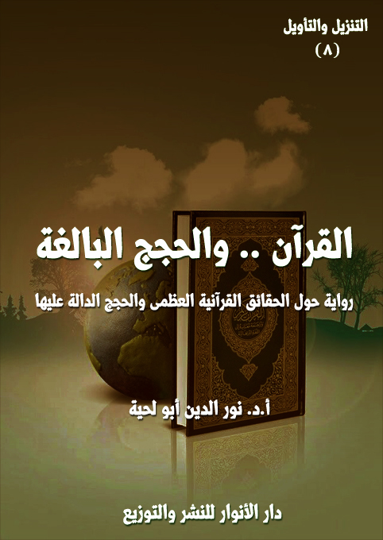

الكتاب: القرآن.. والحجج البالغة
الوصف: رواية حول الحقائق القرآنية العظمى والحجج الدالة عليها
السلسلة: التنزيل والتأويل
المؤلف: أ. د. نور الدين أبو لحية
الناشر: دار الأنوار للنشر والتوزيع
الطبعة: الأولى، 1444 هـ
عدد الصفحات: 679
ISBN: 978-620-4-72146-0
لمطالعة الكتاب من تطبيق مؤلفاتي المجاني وهو أحسن وأيسر: هنا

هذا الكتاب هو المقدمة الثامنة لهذه السلسلة، ويتناول الخاصية الثالثة من خصائص القرآن الكريم، خاصية إقامة الحجة على المخالفين، وفي كل الشؤون، والتي نص عليها قوله تعالى: ﴿قُلْ فَلِلَّهِ الْحُجَّةُ الْبَالِغَةُ فَلَوْ شَاءَ لَهَدَاكُمْ أَجْمَعِينَ﴾ [الأنعام: 149]
وحجة الله البالغة هي التي تبلغ جميع العقول، وتستعمل جميع وسائل الوصول إليها، لتقطع عنها كل الأعذار، وتزيل عنها كل الشبهات، وتكشف عنها ما يحول بينها وبين التسليم للحق.
وهي التي استعملها المتكلمون من علماء العقائد خصوصا، وعبر العصور المختلفة، وإن كانوا قد جنحوا في بعض مباحثهم عن المنهج القرآني البسيط والعميق، والذي لا يتكلف البحث عما لا طاقة للعقول به.
ومن خلال استقرائنا لما ورد في القرآن الكريم من الحجج البالغة وجدناها تتوجه إلى سبعة أصناف من الناس، يوجدون في كل العصور، وإن اختلفت أسماؤهم أو ألقابهم أو المصطلحات الدالة عليهم.
وقد خصصنا كل صنف منهم بفصل خاص، وهم الغافلون، والملاحدة، والمشركون، والربوبيون، والدهريون، والمحرفون، والمعارضون.
القرآن والحجج البالغة (9)
هذا الكتاب هو المقدمة الثامنة لهذه السلسلة، ويتناول الخاصية الثالثة من خصائص القرآن الكريم، خاصية إقامة الحجة على المخالفين، وفي كل الشؤون، والتي نص عليها قوله تعالى: ﴿قُلْ فَلِلَّهِ الْحُجَّةُ الْبَالِغَةُ فَلَوْ شَاءَ لَهَدَاكُمْ أَجْمَعِينَ﴾ [الأنعام: 149]
وحجة الله البالغة هي التي تبلغ جميع العقول، وتستعمل جميع وسائل الوصول إليها، لتقطع عنها كل الأعذار، وتزيل عنها كل الشبهات، وتكشف عنها ما يحول بينها وبين التسليم للحق.
وهي التي استعملها المتكلمون من علماء العقائد خصوصا، وعبر العصور المختلفة، وإن كانوا قد جنحوا في بعض مباحثهم عن المنهج القرآني البسيط والعميق، والذي لا يتكلف البحث عما لا طاقة للعقول به.
ومن خلال استقرائنا لما ورد في القرآن الكريم من الحجج البالغة وجدناها تتوجه إلى سبعة أصناف من الناس، يوجدون في كل العصور، وإن اختلفت أسماؤهم أو ألقابهم أو المصطلحات الدالة عليهم، وقد خصصنا كل صنف منهم بفصل خاص، وهم بهذا الترتيب:
أولاـ الغافلون: وهم المستغرقون في الحياة الدنيا، ولذلك لا يهتمون لا بالله، ولا باليوم الآخر، ولا بحقيقتهم أو مصيرهم، أو يعتبرون البحث في ذلك فضولا ولا أهمية له.. وقد بدأنا بهم، باعتبار الغفلة هي الخطيئة العظمى التي تحول بين الإنسان وبين البحث، وهي للأسف موجودة في كل العصور، وإن تسمت بأسماء مختلفة.
ثانيا ـ الملاحدة: وهم المنكرون لوجود الله، وقد ذكرنا البراهين القرآنية التي تلزمهم
القرآن والحجج البالغة (10)
الحجة، وهي نفس البراهين التي استعملها المتكلمون والفلاسفة، وإن كانت صياغة القرآن الكريم لها أرق وأسهل وأبسط وأجمل، لأنها لا تكتفي بمخاطبة العقل فقط، وبالمناهج الجافة، وإنما تخاطب الوجدان جميعا.
ثالثا ـ المشركون: وهم الذين يؤمنون بالله، ولكنهم يشركون معه غيره، وقد بينا فيه أنواع الشرك، ومخالفتها للعقل، ومثل ذلك ذكرنا البراهين الدالة على التوحيد، والتي نص عليها القرآن الكريم، وفصلها المتكلمون والفلاسفة الإسلاميون.
رابعا ـ الربوبيون: وهم المنكرون للنبوة، وقد ذكرنا فيه ما ورد في القرآن الكريم من الحجج المختلفة الدالة على النبوة، والتي دل عليها العقل والواقع.
خامسا ـ الدهرية: وهم المنكرون للمعاد، وقد ذكرنا فيه ما ورد في القرآن الكريم من الحجج المختلفة الدالة على إمكانية المعاد وثبوته، والتي دل عليها العقل والواقع.
سادسا ـ المحرفون: وهم الذين حرفوا أديان الأنبياء عليهم السلام، سواء كانوا من اليهود والنصارى أو غيرهم، وقد ذكرنا فيه ما ذكره القرآن الكريم من أسباب التحريف، وردوده المختلفة عليهم سواء في تحريفاتهم المرتبطة بالعقائد، أو تلك المرتبطة بالقيم.
سابعا ـ المعارضون: وهم الذين يعارضون الله تعالى سواء في مقاديره، تحت ما يسمى بمعضلة الشر، أو يعارضون شريعته باسم العلمانية أو غيرها من الأسماء.. وقد ذكرنا ردود القرآن الكريم المختلفة على هؤلاء جميعا.
هذه هي الفصول السبعة للكتاب، والتي صغناها على شكل رواية بسيطة، تحاول أن تقرب تلك المعاني لأكثر الناس بسهولة ويسر، وهي تحوي الكثير من المشاهد التي رآها تلميذ القرآن في رحلته إلى البلاد التي عاين فيها أولئك الذين تتلمذوا على معلمهم الرضا، وكيف استطاع وبالقرآن الكريم أن يجيب على كل إشكالاتهم، ليتحولوا جميعا إلى دعاة إلى
القرآن والحجج البالغة (11)
ما دعاهم إليه.
وقد اخترنا أن يكون معلم هذه الرواية هو الرضا، بناء على أن الإمام الرضا كان من الذين اهتموا بالحوار مع أصحاب الأديان المختلفة، ولذلك تيمنا بذكر اسمه هنا، باعتباره نموذجا للعالم المسلم الذي يقتبس الحجج القرآنية، ويحسن عرضها.
وأنبه إلى أني حاولت في هذا الكتاب مثل سائر الأجزاء السابقة أن أختار من التفاسير في كل آية أسهلها وأيسرها، مع العلم أننا سنمر على نفس الآيات في مواضع أخرى من كتب السلسلة، ولكن بمنهج آخر يتناسب معها، وربما بتعقيد أكبر، ولذلك كانت هذه المقدمات ضرورية لتيسير فهم ما بقي من أجزاء.
وأنبه كذلك إلى أني أتصرف في الاقتبسات بحسب الحاجة، ولذلك لا أورد المصطلحات التي قد يعز فهمها على أكثر الناس إلا إذا اضطررت إلى ذلك.
كما أني أنبه إلى أني في هذا الجزء خصوصا أكتفيت بتوثيق المقتبسات من كتب التفسير أو غيرها من أول الاقتباس، وليس عند كل اقتباس بعده، لأنه عادة يكون في نفس الصفحة أو الصفحات التالية لها.
وقد دفعني إلى ذلك أني رأيت أن الأجدى من باب التيسير تقطيع النصوص المقتبسة إلى مقاطع قصيرة ليسهل فهمها والتصرف فيها، ولذلك اعتمدت أن يكون المتحدثون كثيرين في كل محل، حتى لا أضطر إلى إطالة كلام شخص واحد.. ذلك أن كل مقطع يعبر عن جزء بسيط من الفكرة يسهل فهمه.
القرآن والحجج البالغة (12)
ما إن طلب مني معلمي تجهيز نفسي لرحلتي الجديدة إلى [القرآن.. والحجة البالغة] حتى رحت أتدبر القرآن الكريم لأبحث في الحجج والبراهين الواردة فيه، وقد توهمت في البداية أنها ستكون خاصة بمسائل التوحيد والبعث، باعتبارها من المسائل الكبرى التي أعرض عنها المشركون والدهريون.. لكني وجدت الأمر مختلف تماما.
لقد وجدت أنه لا توجد أي قضية مطروحة في القرآن الكريم دقيقة أو جليلة.. صغيرة أو كبيرة.. إلا وقد طُرح معها ما يبرهن عليها بأعظم الحجج وأقومها.
وقد دعاني ذلك إلى التعجب من العقول التي أعرضت عنها، ولم تتدبر فيها، مع عمق معانيها، ووضوح دلالتها.
وقد شاء الله أن يتيح لي في ذلك الحين من المشاهد ما يملؤني بالأسى والألم على هجر القرآن الكريم في هذه الناحية، كهجره في غيرها من النواحي.
بل رأيت ما هو أخطر من ذلك، حيث سمعت بعضهم يذكر أن الحجج القرآنية لا تناسب عقول المفكرين والفلاسفة والباحثين.. بل هي تتناسب مع عقول العوام والدهماء والبسطاء الذين لا يفرقون بين المقدمات والنتائح، ولا يعرفون القياس ولا الاستقراء.. ولا الموضوع ولا المحمول.. ولا المنطق الصوري ولا الرياضي.
ورأيت بعضهم يذكر أن الحجج القرآنية تتناسب مع البيئة البدوية البسيطة التي عاش فيها رسول الله صلى الله عليه وآله وسلم وخاطبها ودعاها، وأنه لذلك ورد في القرآن الكريم قوله تعالى: ﴿أَفَلَا يَنْظُرُونَ إِلَى الْإِبِلِ كَيْفَ خُلِقَتْ وَإِلَى السَّمَاءِ كَيْفَ رُفِعَتْ وَإِلَى الْجِبَالِ كَيْفَ نُصِبَتْ وَإِلَى الْأَرْضِ كَيْفَ سُطِحَتْ﴾ [الغاشية: 17 ـ 20]، حيث ذكر في الآية الكريمة ما يتناسب مع ما يراه
القرآن والحجج البالغة (13)
البدوي من الإبل والسماء والأرض دون غيرها.
ورأيت بعضهم يشيد بالعقول الجبارة للمتكلمين والفلاسفة، ويذكر أنه لولا براهينهم التي صاغوها، أو نقلوها من الفلاسفة السابقين، لما بقي للقرآن الكريم، ولا للدين أي وجود.
وقد حاولت أن أخبرهم بأن كل تلك البراهين التي ذكرها المتكلمون والفلاسفة والعلماء بمختلف مشاربهم توجد في القرآن الكريم، وأن الله تعالى خاطب بها عباده، وبأجمل عبارة وأيسرها بعيدا عن التعقيد والتكلف.. لكني لم أر منهم أي جواب، ولم أسمع منهم أي رد.. لا لأنهم عجزوا عن الرد، بل لأن صوتي كان أدنى وأحقر من أن يبلغهم، أو يلتفتوا إليه.
وكيف يبلغهم صوتي، وأنا عندهم مجرد رويبضة أو نكرة، لا يهتمون بما يقول.. ولا يمكن لمن لم يهتم أن يسمع.
في غمرة ذلك الأسى النفسي الذي مررت به.. أكرمني الله برحلتي الجديدة، والتي لا تختلف في صورتها العامة عن رحلتي السابقة إلى القرآن والعزاء الشافي.. والتي تعلمت منها ومن معلمها الكاظم، أحسن الطرق في تبليغ الحقائق القرآنية، وبأجمل صورة، وأفضل بيان.
وهكذا تعلمت في هذه الرحلة من المعلم الجديد الكثير من المعاني السامية التي سأحكيها لكم، كما رأيتها وسمعتها، وبدقة وأمانة.
وقد كان المعلم الجديد الذي تشرفت بتعلم هذه العلوم النبيلة على يدي من تتلمذ على يديه يُلقب بـ[الرضا]، ولست أدري، هل كان ذلك اسمه، أو أنه لقب أطلق عليه، لما كانت عليه حاله النفسية من الرضا عن الله، وعن شريعة الله، وعن أقدار الله، وعن حجج
القرآن والحجج البالغة (14)
الله.
وقد شاء الله أن لا أرى من حياته إلا مشهد شهادته، والمملوء هو الآخر بكل معاني الرضا والتسليم لله تعالى.
فعندما وصلت إليه في تلك البلاد الغريبة، رأيته يتشحط في دمه، بعد أن أصابه سهم لم يدر أحد مصدره.. وقد سمعته يقول، والابتسامة تغمر محياه: فزت ورب الكعبة.
ثم التفت إلي، وإلى الذين التفوا به يبكون بحرقة شديدة، وقال: الحمد لله رب العالمين، لقد تفضل الله علي بأن أموت الموتة التي كنت أحلم بها طول حياتي.. وأنا أسألكم أن تستمروا في الطريق الذي تسيرون فيه.
ثم سكت قليلا، ليجمع ما بقي له من أنفاس، ثم قرأ قوله تعالى: ﴿قُلْ فَلِلَّهِ الْحُجَّةُ الْبَالِغَةُ فَلَوْ شَاءَ لَهَدَاكُمْ أَجْمَعِينَ﴾ [الأنعام: 149]، ثم قال: لقد أقام الله تعالى على عباده الحجج البالغة، فبلِّغوها بأمانة، ولا تسيئوا إليها، ولا تحرفوها.. واعلموا أنكم مبلغون لا مسيطرون.. ودعاة لا قضاة.. وهداة لا منفرون.. وجنود الله، لا جنود إبليس.. فلذلك لا تلزموا أحدا بما تقتنعون به، بل دعوه وعقله ليفكر فيما تطرحونه؛ فإن الهداية من الله لا منكم.
قال ذلك.. ثم لفظ آخر أنفاسه، وهو فرح مسرور يردد الشهادتين بشوق وشغف.
بعد أن رأيت ذلك المشهد المؤلم الذي بدأت به رحلتي الجديدة، أصابني حزن لا يقل عن حزني السابق.. لكن بعض تلاميذ ذلك المعلم الشهيد، وفي الجنازة المهيبة التي أقيمت له، أخذوا بيدي، وانتحوا بي جانبا، وقال لي أحدهم: لا تحزن.. فإن استشهد معلمنا، فنحن خلفاؤه وتلاميذه.. وسترى فينا إن شاء الله ما فاتك أن تراه فيه.. فنحن جميعا نسعى لأن نكون قرآنا ناطقا بمعارفه وقيمه وحججه.
القرآن والحجج البالغة (15)
قلت بألم: ولكن لم قتلوه؟
قال أحدهم: لأن القتل هو حجة المستكبرين الظالمين المعاندين، بعد أن يصيبهم البهت الذي أصاب ذلك الملك الذي ذكره الله تعالى في قوله: ﴿أَلَمْ تَرَ إِلَى الَّذِي حَاجَّ إِبْرَاهِيمَ فِي رَبِّهِ أَنْ آتَاهُ اللَّهُ الْمُلْكَ إِذْ قَالَ إِبْرَاهِيمُ رَبِّيَ الَّذِي يُحْيِي وَيُمِيتُ قَالَ أَنَا أُحْيِي وَأُمِيتُ قَالَ إِبْرَاهِيمُ فَإِنَّ اللَّهَ يَأْتِي بِالشَّمْسِ مِنَ الْمَشْرِقِ فَأْتِ بِهَا مِنَ الْمَغْرِبِ فَبُهِتَ الَّذِي كَفَرَ وَاللَّهُ لَا يَهْدِي الْقَوْمَ الظَّالِمِينَ﴾ [البقرة: 258]
قال آخر: وهكذا، فإن معلمنا الرضا بهتهم بحججه العظيمة، والتي كان يستلهمها من القرآن الكريم، ويصيغها بما يتناسب مع عقول من يحاورهم ويحاججهم.
قال آخر: وقد ألان الله له العقول والقلوب، فاستجابت له الكثير من القرى.. واستجاب له الكثير من العقلاء.
قال آخر: لكن الطغاة خشوا على عروشهم من تأثير كلماته، فأرسلوا إليه ذلك السهم الذي ختم الله به حياته.
قلت: فما أنتم فاعلون بعده؟
قال أحدهم: إن مات معلمنا، فقد بقي معلم معلمنا.. فقد كان معلمنا الشهيد يستلهم كل معارفه وحججه من القرآن الكريم، وقد علّمنا من علوم ذلك، ما يجعلنا بتوفيق الله وإذنه أهلا للسير على خطاه.
قلت: منذ متى بدأتم التلمذة على يديه؟
ابتسم أحدهم، وقال: بل قل منذ متى أنقذكم من غفلتكم وجهلكم وإلحادكم وشرككم وظلمكم للحقائق.
قلت: ما تعني؟
القرآن والحجج البالغة (16)
قال أحدهم: لقد كانت كل هذه البلاد التي تراها، وما يحيط بها، بلادا مملوءة بالضلالة والجهل والخرافة والشرك.. اجتمعت فيها أصناف الملل والنحل.. وكنا منهم ومثلهم، نعتقد ما يعتقدون إلى أن جاءنا وحيدا فريدا ليس معه من الدنيا إلى القليل.
قال آخر: لكنه استطاع أن يسلب عقولنا بسلوكه الطيب وكلماته النيرة وحججه البالغة التي لم يكن يستلهمها من غير القرآن الكريم.
قال آخر: وقد استطاع بها أن يحاور فلاسفتنا ومفكرينا ورجال ديننا، فمنهم من اقتنع وسلم، ومنهم من ركب رأسه وعاند وجحد.. لكنه بعد أن رأى من سلوكه وأخلاقه ما رآه، عاد إليه عقله، واهتدى سبيل الرشاد.. إلا نفرا محدودا من المعاندين الذين أصابوه اليوم بسهام غدرهم، وقد أصابوه قبلها بمجموعة سهام، لكن الله رد كيدهم في نحرهم.
قال آخر: لكنا لن نيأس منهم.. بل سنظل نواصل معهم ما كان معلمنا ما يدعونا إليه.
قلت: هل تريدون حربهم وقتالهم؟
قال أحدهم: لو فعلنا ذلك، فسندخل متاهة من الفتن لا نهاية لها.
قال آخر: وحينها سنوفر لهم المبرر ليقمعوا العقول، وينشروا الضلال.
قال آخر: ولذلك سنمارس معهم ما مارسه معلمنا من الدعوة بالحكمة والموعظة الحسنة والجدال بالتي هي أحسن.
قال آخر: وإن شاء الله سيتحقق النصر الأعظم، الذي يدخلون به إلى دين الله أفواجا، ومن غير حاجة لأي حرب ولا فتنة.
قلت: لكن دماءكم ستسفك، إن لم تسفكوا دماءهم.
قال أحدهم: نحن نرضى أن تسفك دماءنا كما سفكت دماء معلمنا.. فتلك ضريبة
القرآن والحجج البالغة (17)
الحق التي لا بد منها.
قلت: لكن رسول الله صلى الله عليه وآله وسلم لم يفعل ذلك.. فقد قاتل المشركين المعاندين.
قال أحدهم: أجل.. هو فعل ذلك في المدينة المنورة، دفاعا عن حرم الإيمان المقدس، وبعد أن أقام الحجة عليهم، وبعد أن تميزت الصفوف.
قال آخر: وهو لم يفعل ذلك في مكة المكرمة، لأن الظروف كانت مختلفة تماما.
قلت: لم أفهم ما تعنون.
قال أحدهم: لقد استطاع أعداؤنا أن يدسوا بيننا الكثير من العملاء، وأعطوهم من الدنيا ما يرضيهم حتى يسفكوا دماء كل من تسبب في هداية هذه البلاد وما جاورها.
قال آخر: ومن الصعب علينا معرفة أمثال هؤلاء.. فهم بيننا ومنا، وهم يقومون بجرائمهم، وهم في غاية التستر.
قال آخر: ولذلك اخترنا واختار معلمنا بدل البحث عنهم أو مواجهتهم بالسيف مواجهتهم بالحجة.
قال آخر: والحمد لله.. في كل حين نجد من هؤلاء من يسلم لنا سلاحه، ويتوب إلى الله بعد أن يستمع لأحاديثنا أو أحاديث معلمنا.
ما وصل التلاميذ من حديثهم لي إلى هذا الموضع، حتى أقيمت صلاة الجنازة، ثم راح القوم بعدها يؤبنونه، وقد سمعت من كلماتهم في الثناء عليه، ومعاهدته على السير على دربه، ما دلني على مبلغ تأثيره فيهم.
القرآن والحجج البالغة (18)
كان أول من التقيت به بعد انصرافي من الجنازة، رجلا أمسك بيدي، وقال: هلم معي يا تلميذ القرآن إلينا معشر الغافلين التائبين.. فقد بدأ معلمنا الشهيد دعوته بنا.. فلا يمكن أن تقام الحجة على غافل.. فالغفلة هي الحجاب الأعظم الذي يحول بين العقل والبحث.
قلت: ولكني ـ كما طلب مني معلمي ـ أبحث عن القرآن والحجة البالغة.. والغفلة لها علاقة بالتزكية والتربية، لا بالمعارف والبراهين.
قال: تعلق الغفلة بالتزكية والتربية لا يحول بينها وبين التعلق بالمعارف والبراهين.. فالمعارف والبراهين جواهر سامية لا ينالها الغافلون الذين يحتقرونها ولا يهتمون بها.
قلت: كيف ذلك؟
قال: أرأيت لو أن نيوتن لم يهتم بسقوط التفاحة، وتعامل معها كحادث عادي، وراح يتناولها كما يتناولها سائر الناس، بل راح يسخر من السائل عن سبب سقوطها.. هل يمكنه أن يكتشف تلك الاكتشافات، أو يعرف تلك المعارف.
قلت: لا.. لا يمكنه ذلك.
قال: وهكذا الأمر في كل الأمر في كل المعارف.. فالاهتمام بها، والجد في البحث عنها، وتقدير ما يصل إليه من نتائج هو الذي يؤهله للمعرفة، وإلا فستكون غفلته هي الحجاب بينه وبينها.
ما إن ذكر هذا حتى التقينا نفرا من الناس يقبلون علينا، ويسلمون علي بحرارة، ثم قالوا لصاحبي: أهذا هو الذي ذكره لنا معلمنا الشهيد؟
القرآن والحجج البالغة (19)
قال: أجل.. وقد أتيت به لتحدثوه عنكم، وكيف خرجتم من ضلالات الجهل إلى نور الهداية.
قال أحدهم، وكان أكبرهم: الحمد لله الذي منّ علي بلقائه ليكتب شهادتي، فلعل الله أن ينفع بها بعد وفاتي كما نفع بها في حياتي.
قال آخر: نحن ـ يا تلميذ القرآن ـ لم نكن ـ قبل أن يمن الله علينا بالهداية ـ نفتقر إلى العقل الواعي، ولا إلى القدرة على التفكير، ولا إلى المصادر التي نتلقى منها المعارف.. ولكنا كنا نفتقر إلى الهمة العالية التي تحركنا إليها، والشوق الذي يحدو قلوبنا للإنصات لها.
قال آخر: وقد أدرك معلمنا الشهيد سبب ما حصل لنا، فراح ـ بدل محاجتنا بالبراهين ـ يعلمنا من المعارف ما نطرد به داء الغفلة واللامبالاة وعدم الاهتمام.. وقد كان ذلك وحدة كفيلا لهدايتنا، وبأيسر الطرق.
قال آخر: لقد كان حالنا مثل حال من يستغشي ثيابه حتى لا يرى، ويضع أصابعه في أذنيه حتى لا يسمع.. فلذلك اكتفى معلمنا بإزاحة أثواب الغفلة عن عيوننا وأبصارنا؛ فسمعنا وأبصرنا.. واهتدينا.
قال آخر: وقد استفاد معلمنا هذا المنهج من القرآن الكريم، فقد اعتبر الله تعالى الغفلة السبب في هلاك كل القرى وأصحابها الذين لم يعطوا رسلهم ما يستحقون من الاهتمام، فقال ـ عند بيانه للسبب الأكبر لهلاك قوم فرعون ـ: ﴿فَانْتَقَمْنَا مِنْهُمْ فَأَغْرَقْنَاهُمْ فِي الْيَمِّ بِأَنهُمْ كَذَّبُوا بِآيَاتِنَا وَكَانُوا عَنْهَا غَافِلِينَ﴾ [الأعراف: 136]
قال آخر: ومثل ذلك اعتبر الغفلة السبب الأكبر للران الذي يطغى على القلوب؛ فيملأها بالكبر، ويصرفها عن تدبر الحقائق، فقال: ﴿سَأَصْرِفُ عَنْ آيَاتِيَ الَّذِينَ يَتَكَبَّرُونَ فِي الْأَرْضِ بِغَيْرِ الْحَقِّ وَإِنْ يَرَوْا كُلَّ آيَةٍ لَا يُؤْمِنُوا بِهَا وَإِنْ يَرَوْا سَبِيلَ الرُّشْدِ لَا يَتَّخِذُوهُ سَبِيلًا
القرآن والحجج البالغة (20)
وَإِنْ يَرَوْا سَبِيلَ الْغَيِّ يَتَّخِذُوهُ سَبِيلًا ذَلِكَ بِأَنهُمْ كَذَّبُوا بِآيَاتِنَا وَكَانُوا عَنْهَا غَافِلِينَ﴾ [الأعراف: 146]، وبذلك؛ فإن الغفلة أخطر من الكبر، ذلك أن المتكبر المستيقظ قد يسمع من الآيات، أو يرى من الحجج، ما يجعله متواضعا يستمع للحق، لكن الغافل المخدر يصم آذانه فلا يسمع حقا، ولا يقبل عليه في حال سماعه.
قال آخر: ولهذا أخبرنا الله تعالى أن الغفلة هي سبب الإعراض عن الحق، لعدم الاهتمام به، واللامبالاة تجاهه، قال تعالى: ﴿اقْتَرَبَ لِلناسِ حِسَابُهُمْ وَهُمْ فِي غَفْلَةٍ مُعْرِضُونَ﴾ [الأنبياء: 1]
قال آخر: وأخبر عن أدراك الغافلين للآثار التي جنوها من غفلتهم، فقال: ﴿وَاقْتَرَبَ الْوَعْدُ الْحَقُّ فَإِذَا هِيَ شَاخِصَةٌ أَبْصَارُ الَّذِينَ كَفَرُوا يَا وَيْلَنَا قَدْ كُنا فِي غَفْلَةٍ مِنْ هَذَا بَلْ كُنا ظَالِمِينَ﴾ [الأنبياء: 97]
قال آخر: وأخبر عن قول الملائكة وتأنيبها للغافلين، فقال: ﴿وَجَاءَتْ كُلُّ نَفْسٍ مَعَهَا سَائِقٌ وَشَهِيدٌ لَقَدْ كُنْتَ فِي غَفْلَةٍ مِنْ هَذَا فَكَشَفْنَا عَنْكَ غِطَاءَكَ فَبَصَرُكَ الْيَوْمَ حَدِيدٌ﴾ [ق: 21، 22]
قال آخر: وأخبر عن أول تحذير إلهي للبشر من عالم الذر، وهو تحذيرهم من الغفلة، فقال: ﴿وَإِذْ أَخَذَ رَبُّكَ مِنْ بَنِي آدَمَ مِنْ ظُهُورِهِمْ ذُرِّيَّتَهُمْ وَأَشْهَدَهُمْ عَلَى أَنْفُسِهِمْ أَلَسْتُ بِرَبِّكُمْ قَالُوا بَلَى شَهِدْنَا أَنْ تَقُولُوا يَوْمَ الْقِيَامَةِ إِنا كُنا عَنْ هَذَا غَافِلِينَ﴾ [الأعراف: 172]
بعد أن أورد التائبون من الغفلة ما ورد في القرآن الكريم من الحديث عن الغفلة وآثارها الخطيرة على العقل، قال صاحبي الذي اصطحبني إليهم: بورك فيكم.. وتلميذ
القرآن والحجج البالغة (21)
القرآن ينتظر منكم الآن أن تدلوا بشهاداتكم في الكيفية التي خرجتم بها من هذا الحجاب الأعظم الذي كان يحول بينكم وبين المعرفة والهداية.
قال أحدهم، وهو أكبرهم سنا: دعوني أبدأ أنا.. فأنا أكبركم سنا، وأول من لقي المعلم الشهيد، وأول من كان سببا في دلالتكم عليه.
قال أحدهم: أجل.. تفضل.. فنحن في شوق كبير لسماع أحاديثك الجميلة عن معلمنا، فقد كنت سببا في تعرفنا به، واهتدائنا إلى الحق بسببه.
قال (1): عندما التقيت بالمعلم الشهيد لأول مرة كنت أردد بيني وبين نفسي، وأنا أنظر إليه، وهو يبذل كل جهده لتعريف عوام الناس وخصائصهم بربهم ودينهم: لماذا يتحدث هذا الرجل عن الله والدين؟.. أليس من الأجدر به أن يتحدث فيما يتصل بحياتنا اليومية، ويعالج مشاكلها ويكون مؤثرا في تحسين أحوالنا المعاشية؟.. أليس الحديث عن الموجود أو الموجودات الخارجة عن نطاق الحس والتجربة، والتي لا يكون لها أي أثر في حياتنا وجودا أو عدما غير نافع ولا مفيد؟
نظر إلى المعلم الشهيد حينها مبتسما، وقال: لقد سمعت أن هناك أراض خصبة، وفيها سكنات راقية، تُباع بأقل الأثمان، فهل لك في شرائها؟
اهتزت نفسي لما قال، لأني كنت حينها أجمع بين العلم والتجارة، وقد كان يستهويني سوق العقارات، للأرباح الكثيرة التي كنت أجنيها منه.. فلذلك رحت ألح عليه بأن يحدثني عن تلك الأراضي، وباهتمام شديد.
__________
(1) () الله خالق الكون، ص 97.
القرآن والحجج البالغة (22)
لكني لم أكن أعلم أن ما ذكره ليس سوى استدراج لي، لينقلني من الاهتمام بعقارات الدنيا إلى الاهتمام بعقارات الآخرة، ومن الاهتمام بالحرص على ربح المزيد من الأموال إلى الحرص على ربح نفسي ومصيري.
بعد إلحاحي الشديد عليه في أن يعرفني بالمحل الذي تباع فيه تلك العقارات، طلب مني أن أحضر عنده مساء، ليملي علي العنوان، وأخبرني أنه سيلتقي في ذلك المحل ببعض تلاميذه، والذين بدورهم يعرفون العنوان بدقة، ويمكنهم أن يدلوني عليه.
أذكر جيدا أني من حرصي الشديد على الحضور في الموعد، ذهبت مبكرا إلى المكان، وبقيت أنتظر إلى أن جاء المعلم، ثم رحت أسمع إليه وإلى الأسئلة التي يختبر بها تلاميذه وأجوبتهم له، لكن ليس بالصورة التي كنت أستمع بها إليهم، فقد صار شخصا مهما بالنسبة لي، وصارت أحاديثه أكثر أهمية منه.. وذلك ما يسر لي بعدها أن أتغير تماما.
من الأسئلة التي طرحها على تلاميذه، والتي ناسبت طريقة تفكيري سؤاله عن مفهوم الربح والخسارة، وعن سر ما ورد في القرآن الكريم من نسبة الخسارة للمنحرفين عن الصراط المستقيم.
وأول آية كريمة سمعته يسألهم عنها هي قوله تعالى: ﴿وَمَنْ يَبْتَغِ غَيْرَ الْإِسْلَامِ دِينًا فَلَنْ يُقْبَلَ مِنْهُ وَهُوَ فِي الْآخِرَةِ مِنَ الْخَاسِرِينَ﴾ [آل عمران: 85]
حينها قال أحد تلاميذه (1): (الإبتغاء) يعني الطلب والسعي، والأصل فيه أن يكون في الأمور المحمودة والمذمومة.. والآية الكريمة تشير إلى أن الدين الحقيقي الذي ينبغي أن يُطلب هو الإسلام، أي التسليم لأمر الله بمعناه العام، وأما بمفهومه الخاص فهو الانتقال
__________
(1) () الأمثل في تفسير كتاب الله المنزل (2/ 581)
القرآن والحجج البالغة (23)
إلى الدين الإسلامي الذي هو أكمل الأديان.
قال آخر: ولذلك فإن الآية الكريمة تذكر أنه لا يُقبل من أحد سوى الإسلام مع الأخذ بعين الاعتبار احترام سائر الشرائع الإلهية المقدسة.. فكما أن طلاب الجامعة في نفس الوقت الذي يحترمون فيه الكتب الدراسية للمراحل السابقة من الابتدائية والمتوسطة والإعدادية، فإنه لا يقبل منهم سوى دراسة الكتب والدروس المقررة للمرحلة النهائية.
قال آخر: فكذلك الإسلام.. وأما الذين يتخذون غير هذه الحقيقة دينا، فلن يُقبل منهم هذا أبدا، ولهم على ذلك عقاب شديد.
قال آخر: وأول عقاب يصيبهم الخسارة، ذلك لأن هذا الغافل تاجر بثروة وجوده مقابل بضع خرافات وتقاليد بالية، وعصبيات جاهلية وعنصرية، ولا شك أنه هو الخاسر في هذه الصفقة.
قال آخر: وإذا ما خسر الإنسان ثروة وجوده، وجد نتيجة ذلك حرمانا وعذابا وعقابا يوم القيامة.
قال آخر (1): وقد ذكر بعض المفسرين أن هذه الآية نزلت في اثني عشر من المنافقين الذين أظهروا الإيمان، ثم ارتدوا، وخرجوا من المدينة إلى مكة، فنزلت الآية وانذرتهم بأنه من اعتنق غير الإسلام فهو من الخاسرين.
قال المعلم: فما تقولون في قوله تعالى في قصة ابن آدم عليه السلام: ﴿فَطَوَّعَتْ لَهُ نَفْسُهُ قَتْلَ أَخِيهِ فَقَتَلَهُ فَأَصْبَحَ مِنَ الْخَاسِرِينَ﴾ [المائدة: 30]؟
قال أحد التلاميذ (2): نظرا لأن كلمة (طوع) تأتي في الأصل من (الطاعة) لذلك
__________
(1) () الأمثل في تفسير كتاب الله المنزل (2/ 581)
(2) () الأمثل في تفسير كتاب الله المنزل (3/ 673)
القرآن والحجج البالغة (24)
يستدل منها أن قلب قابيل بعد أن تقبل الله قربان أخيه هابيل أخذت تعصف به الأحاسيس والمشاعر المتناقضة، فمن جانب استعرت فيه نار الحسد وكانت تدفعه إلى الإنتقام من أخيه هابيل، ومن جانب آخر كانت عواطفه الإنسانية وشعوره الفطري يقبح الذنب والظلم والجور وقتل النفس، يحولان دون قيامه بارتكاب الجريمة، لكن نفسه الأمارة بالسوء تغلبت رويدا رويدا على مشاعره الرادعة فطوعت ضميره الحي وكبلته بقيودها وأعدته لتقل أخيه.
قال آخر: وتدل عبارة (طوعت) مع قصرها على جميع هذه لأن عملية التطويع لا تتم في لحظة واحدة، بل تحصل بشكل تدريجي وعبر صراعات مختلفة.
قال آخر: وتشير الآية الكريمة ـ في آخرها ـ إلى نتيجة عمل قابيل، فتذكر أنه أصبح من الخاسرين.. فأي ضرر أكبر من أن يشتري الإنسان لنفسه عذابا سيلازمه إلى يوم القيامة، ويشمل عذاب الضمير وعقاب الله والعار والأبدي؟
قال آخر (1): كما تشير الآية الكريمة إلى أنه كان يهاب قتل أخيه وتجبن فطرته دونه، لكنه بسبب غفلته، بقيت نفسه الأمارة تشجعه عليه حتى تجرأ وقتله عقب التطويع بلا تفكر ولا تدبر فى العاقبة.
قال آخر: والمشاهد بالاختبار من أعمال الناس أن من تحدثه نفسه بالقتل يجد من نفسه صارفا أو عدة صوارف تنهاه عن القتل حتى تطوع له نفسه القتل بترجيح الفعل على الترك، فحينئذ يقتل إن قدر، وأوله ما يعينه على ذلك غفلته عن العواقب التي سينالها بسبب جريمته.
__________
(1) () تفسير المراغي (6/ 100)
القرآن والحجج البالغة (25)
قال المعلم: أحسنتم، فما تقولون في قوله تعالى: ﴿الَّذِينَ كَذَّبُوا شُعَيْبًا كَأَنْ لَمْ يَغْنَوْا فِيهَا الَّذِينَ كَذَّبُوا شُعَيْبًا كَانُوا هُمُ الْخَاسِرِينَ﴾ [الأعراف: 92]
قال أحد التلاميذ (1): لقد هدد الكافرون المتغطرسون المؤمنين بأن يكونوا خاسرين إن استمروا على اتباعهم لشعيب عليه السلام، فذكر الله تعالى أن أولئك المكذبين هم الخاسرون حقا وصدقا، فقد خسروا أنفسهم فكفروا وضلوا، وخسروا ديارهم فهدمت، وخسروا يوم القيامة، فكانوا حطب جهنم، وهم فيها خالدون.
قال المعلم: أحسنت، فما تقولون في قوله تعالى: ﴿قُلْ إِنَّ الْخَاسِرِينَ الَّذِينَ خَسِرُوا أَنْفُسَهُمْ وَأَهْلِيهِمْ يَوْمَ الْقِيَامَةِ أَلَا ذَلِكَ هُوَ الْخُسْرَانُ الْمُبِينُ﴾ [الزمر: 15]؟
قال أحد التلاميذ (2): هذه الآية الكريمة تشير إلى أن العبرة فى الربح أو الخسارة، هى فى الحساب الختامى، الذي يسوى فيه حساب الإنسان.. أما هذا الحساب اليومي فى هذه الدنيا، فإنه لا يكشف عن المركز الصحيح للإنسان.
قال آخر: وهي تشير إلى أن البشر يتعاملون من هذا المنطلق في كل شؤونهم فى هذه الدنيا، حيث أنهم يقيمون موازين حياتهم لا على لحظه عابرة، ولا على يوم يعيشون فيه، وإنما ينظرون إلى الغد، وما بعد الغد.
قال آخر: مع أن حياتهم الدنيوية هذه ـ لو عقلوا ـ لحظة من لحظات حياتهم الممتدة إلى ما وراء هذه الحياة، فهي ليست إلا يوما، أو بعض يوم.
قال آخر: وهي تشير إلى أن من الضلال المبين أن يقيم المرء حسابه كله على ميزان يوم أو بعض يوم، حتى إذا طلع عليه صح يوم جديد، ولم يكن قد عمل له حسابا، وجد
__________
(1) () زهرة التفاسير (6/ 2901)
(2) () التفسير القرآني للقرآن (12/ 1133)
القرآن والحجج البالغة (26)
نفسه ولا شئ معه.. وهنا يكون الندم، ويكون الخسران.
قال آخر: ولذلك، فإن الخاسرين حقا، هم أولئك الذين أقاموا ميزانهم على هذه الحياة الدنيا، ولم يجعلوا للآخرة حسابا.. فهم يجيئون إلى الحياة الآخرة، وقد صفرت أيديهم من كل خير يجدونه فى هذا اليوم، بل سيجدون ديونا كثيرة هم مطالبون بها، ولا يقدرون على أداء شئ منها، إلا الحبس فى جهنم، وفاء لهذه الديون.
قال المعلم: إن ما ذكرتموه يثير إشكالا مهما، وهو أنه إذا خسر المجرمون أنفسهم، وأوردوها موارد الهلاك يوم القيامة، فكيف تكون خسارتهم لأهليهم فى هذا اليوم، كما ذكرت الآية الكريمة؟
قال أحد التلاميذ (1): جواب ذلك هو أن أهل الضلال لا يلتقى بعضهم ببعض يوم القيامة إلا على عداوة وخصام، وإلا على قطيعة ونفور.. كما قال تعالى: ﴿ثُمَّ يَوْمَ الْقِيَامَةِ يَكْفُرُ بَعْضُكُمْ بِبَعْضٍ وَيَلْعَنُ بَعْضُكُمْ بَعْضًا وَمَأْوَاكُمُ النَّارُ وَمَا لَكُمْ مِنْ نَاصِرِينَ﴾ [العنكبوت: 25].
قال آخر: فأهل الضلال بعضهم فتنة لبعض، ومن هنا يقع بينهم يوم القيامة هذا الخصام، وتلك العداوة، ومن هنا يلتفت الضال، فلا يجد حوله فى جهنم إلا وجوها كالحة تلعنه، وترمى إليه بالعداوة، ممن كانوا هم أقرب الناس إليه فى الدنيا من أهل وصديق.
قال آخر: بالإضافة إلى ذلك، فإن خسارة الضال لأهله يوم القيامة، هو تفرقهم عنه، فلا يلتقى بهم إذا كانوا فى الجنة، أما إذا كانوا فى جهنم فإن لقاءه بهم حسرة وبكاء وعويل.
قال آخر: على خلاف لقاء المؤمنين، حيث يجمعهم الله بأهليهم، وبإخوانهم من أهل
__________
(1) () التفسير القرآني للقرآن (12/ 1134)
القرآن والحجج البالغة (27)
الجنة، فيتضاعف لذلك سرورهم، نعيمهم، كما قال تعالى: ﴿وَالَّذِينَ آمَنُوا وَاتَّبَعَتْهُمْ ذُرِّيَّتُهُمْ بِإِيمَانٍ أَلْحَقْنَا بِهِمْ ذُرِّيَّتَهُمْ﴾ [الطور: 21]، وقال عن أهل الإيمان: ﴿ادْخُلُوا الْجَنَّةَ أَنْتُمْ وَأَزْوَاجُكُمْ تُحْبَرُونَ﴾ [الزخرف: 70]
قال المعلم: أحسنتم، فما تقولون في قوله تعالى: ﴿وَلَقَدْ أُوحِيَ إِلَيْكَ وَإِلَى الَّذِينَ مِنْ قَبْلِكَ لَئِنْ أَشْرَكْتَ لَيَحْبَطَنَّ عَمَلُكَ وَلَتَكُونَنَّ مِنَ الْخَاسِرِينَ﴾ [الزمر: 65]؟
قال أحد التلاميذ (1): هذه الآية الكريمة سبقت بقوله تعالى: ﴿قُلْ أَفَغَيْرَ اللَّهِ تَأْمُرُونِّي أَعْبُدُ أَيُّهَا الْجَاهِلُونَ﴾ [الزمر: 64]، وقد وردت في سياق المفاوضات بين النبي صلى الله عليه وآله وسلم وقريش الذين كانوا يدعونه لعبادة أصنامهم، كما قال تعالى: ﴿قُلْ أَفَغَيْرَ اللَّهِ تَأْمُرُونِّي أَعْبُدُ أَيُّهَا الْجَاهِلُونَ﴾ [الزمر: 64]، وهي تبين أن مبدأ الوثنية هو الجهل بواقع الكون وأن الخالق هو المدبر.. ومن عجيب الأمر أن الجاهل يصر على العالم أن يتبع موقفه.
قال آخر: وهي تشير إلى أن من لوازم التوحيد في الخالقية والربوبية التوحيد في العبادة وأن لا يعبد إلا الله، ولذلك صار التوحيد في العبادة هو الأصل المشترك بين عامة الشرائع من غير فرق بين شريعة النبي الأكرم صلى الله عليه وآله وسلم وسائر الشرائع.
قال آخر: فقد أمر الله تعالى نبيه صلى الله عليه وآله وسلم بالتوحيد في العبادة كما أمر به سائر الأنبياء، قال تعالى: ﴿وَلَقَدْ أُوحِيَ إِلَيْكَ وَإِلَى الَّذِينَ مِنْ قَبْلِكَ﴾ [الزمر: 65]، فالموحى هو التوحيد في العبادة النابع عن التوحيد في الخالقية والربوبية.
قال آخر: ولم يقتصر الله تعالى بنفس الأمر بالتوحيد، بل ذكر نتائج الشرك، فقال: ﴿لَئِنْ أَشْرَكْتَ﴾ [الزمر: 65]، أي يترتب على شركك أمران، أولهما ما عبر عنه بقوله:
__________
(1) () منية الطالبين: 24/ 150.
القرآن والحجج البالغة (28)
﴿لَيَحْبَطَنَّ عَمَلُكَ﴾ [الزمر: 65] وهي تعني عدم قبول الأعمال وعدم ترتب الثواب؛ وذلك لأن قلب المشرك كالأرض السبخة لا ينبت فيها شيء.
قال آخر: وثانيهما ما عبر عنه بقوله: ﴿وَلَتَكُونَنَّ مِنَ الْخَاسِرِينَ﴾ [الزمر: 65]، وأي خسران أعظم من صرف العمر في الدنيا دون أن يتجر به شيئا ينتفع به في الآخرة.
قال المعلم: فكيف وجه الخطاب فيها لرسول الله صلى الله عليه وآله وسلم، فهل يمكن أن يقع رسول الله صلى الله عليه وآله وسلم والأنبياء عليهم السلام في الشرك؟
قال أحد التلاميذ: لا.. ذلك مستحيل، وهذا النوع من الخطاب فيه تهديد للآخرين، فإذا كان هذا حال الأنبياء، إن أشركوا، فكيف حال غيرهم؟
قال آخر: وقد أشار إلى هذا الإمام الصادق، فقال: ﴿إن الله عز وجل بعث نبيه بإياك أعني واسمعي يا جارة، والدليل على ذلك قوله عز وجل في الآية اللاحقة: ﴿بل الله فاعبد وكن من الشاكرين﴾، وقد علم الله أن نبيه صلى الله عليه وآله وسلم يعبده ويشكره، ولكن استعبد نبيه بالدعاء إليه تأديبا لأمته) (1)
قال آخر: ويمكن أن يقال: إن الآية من باب فرض المحال، ومن المعلوم أن فرض المحال ليس بمحال، إذا ترتب عليه شيء من المعارف، كقوله تعالى: ﴿لَوْ كَانَ فِيهِمَا آلِهَةٌ إِلَّا اللَّهُ لَفَسَدَتَا﴾ [الأنبياء: 22]، وعلى هذا فالمراد: لو أشرك النبي صلى الله عليه وآله وسلم ـ على سبيل فرض المحال ـ فإنه لا يخلو من العاقبتين: بطلان العمل، والخسران في الآخرة.
قال المعلم: أحسنتم.. فما تقولون في قوله تعالى: ﴿وَذَلِكُمْ ظَنُّكُمُ الَّذِي ظَنَنْتُمْ بِرَبِّكُمْ أَرْدَاكُمْ فَأَصْبَحْتُمْ مِنَ الْخَاسِرِينَ﴾ [فصلت: 23]؟
__________
(1) () تفسير القمّي: 2/ 251.
القرآن والحجج البالغة (29)
قال أحد التلاميذ (1): في هذه الآية الكريمة خطاب للمنحرفين عن الحق، وهي تذكر لهم أن الظن الفاسد الذي قد كان منهم في الدنيا، وهو أن الله لا يعلم كثيرا من قبائح أعمالهم ومساويها، هو الذي أوقعهم في مواقع التلف والردى، فصاروا من الهالكين.
قال آخر: وقد ورد في الحديث عن رسول الله صلى الله عليه وآله وسلم أنه قال: (لا يموتن أحدكم إلا وهو يحسن الظن بالله تعالى، فإن قوما قد أرادهم سوء ظنهم بالله فقال الله: ﴿وَذَلِكُمْ ظَنُّكُمُ الَّذِي ظَنَنْتُمْ بِرَبِّكُمْ أَرْدَاكُمْ فَأَصْبَحْتُمْ مِنَ الْخَاسِرِينَ﴾ [فصلت: 23]) (2)
قال المعلم: فهل كل ظن بالله تعالى قبيح؟
قال أحد التلاميذ: لا.. الظن المرتبط بالله تعالى قسمان.. حسن وهو أن يظن بالله عز وجل الرحمة والفضل والإحسان، كما قال رسول الله صلى الله عليه وآله وسلم حكاية عن الله عز وجل: (أنا عند ظن عبدى بي).. وقبيح، وهو أن يظن أن الله تعالى يعزب عن علمه بعض الأفعال.
قال آخر: وقد ذكر الله تعالى بعض النماذج السيئة عن هذا النوع من الظن، فقال: ﴿وَمَا كُنْتُمْ تَسْتَتِرُونَ أَنْ يَشْهَدَ عَلَيْكُمْ سَمْعُكُمْ وَلَا أَبْصَارُكُمْ وَلَا جُلُودُكُمْ وَلَكِنْ ظَنَنْتُمْ أَنَّ اللَّهَ لَا يَعْلَمُ كَثِيرًا مِمَّا تَعْمَلُونَ﴾ [فصلت: 22]
قال آخر: وقال: ﴿بَلْ ظَنَنْتُمْ أَنْ لَنْ يَنْقَلِبَ الرَّسُولُ وَالْمُؤْمِنُونَ إِلَى أَهْلِيهِمْ أَبَدًا وَزُيِّنَ ذَلِكَ فِي قُلُوبِكُمْ وَظَنَنْتُمْ ظَنَّ السَّوْءِ وَكُنْتُمْ قَوْمًا بُورًا﴾ [الفتح: 12]
قال آخر: وقال: ﴿هُوَ الَّذِي أَخْرَجَ الَّذِينَ كَفَرُوا مِنْ أَهْلِ الْكِتَابِ مِنْ دِيَارِهِمْ لِأَوَّلِ الْحَشْرِ مَا ظَنَنْتُمْ أَنْ يَخْرُجُوا وَظَنُّوا أَنَّهُمْ مَانِعَتُهُمْ حُصُونُهُمْ مِنَ اللَّهِ فَأَتَاهُمُ اللَّهُ مِنْ حَيْثُ لَمْ يَحْتَسِبُوا وَقَذَفَ فِي قُلُوبِهِمُ الرُّعْبَ يُخْرِبُونَ بُيُوتَهُمْ بِأَيْدِيهِمْ وَأَيْدِي الْمُؤْمِنِينَ فَاعْتَبِرُوا يَا أُولِي
__________
(1) () تفسير المراغي (24/ 122)
(2) () مسلم (2877) (81)، وأبو داود (3113)
القرآن والحجج البالغة (30)
الْأَبْصَارِ﴾ [الحشر: 2]
قال آخر: وقال عن الجن في ذكر المنحرفين منهم: ﴿وَأَنَّهُمْ ظَنُّوا كَمَا ظَنَنْتُمْ أَنْ لَنْ يَبْعَثَ اللَّهُ أَحَدًا﴾ [الجن: 7]
بعد أن قرأ هذه الآيات الكريمة وغيرها، وسمع تفسيرها منهم، قال مخاطبا لهم: بناء على ما قرأناه من الآيات الكريمة اذكروا لي الخسائر التي خسرها هؤلاء الذين أعرضوا عن الله ودينه.
قال أحد تلاميذه: أول خسارة لهؤلاء أنهم خسروا أنفسهم وحقيقتهم التي كرمهم الله تعالى بها، كما قال تعالى: ﴿وَلَا تَكُونُوا كَالَّذِينَ نَسُوا اللَّهَ فَأَنْسَاهُمْ أَنْفُسَهُمْ أُولَئِكَ هُمُ الْفَاسِقُونَ﴾ [الحشر: 19]
قال آخر (1): وهي تتحدث عن المنحرفين الغافلين الذين خلت قلوبهم من تقوى الله، وخشيته، فلم ينظروا فيما يقدمون لغد، بل شغلوا بما هم فيه من متاع الحياة الدنيا، ونسوا الله، ولم يذكروا عقابه، ولم يستحضروا جلاله وعظمته، فكان هذا النسيان لله، ولجلاله، وعظمته، سببا فى نسيانهم لأنفسهم.
قال آخر: ولذلك غفلوا عن المصير الذي هم صائرون إليه، ولم يروا البلاء المحدق بهم من هذا الضلال الذي هم فيه.
قال آخر: ولو أنهم ذكروا الله، وذكروا حسابه وعقابه، لذكروا وجودهم هذا الذي يسبح فى بحار الضلال، ولعملوا جاهدين على إنقاذ أنفسهم مما هم فيه.
قال آخر: ولذلك كان نسيانهم لله، هو الداء الذي ران على قلوبهم، وأعمى
__________
(1) () التفسير القرآني للقرآن (14/ 878)
القرآن والحجج البالغة (31)
أبصارهم، فلم يروا حقا، ولم تقبل قلوبهم ما هو حق.
قال آخر: وعلى هذا يكون فاعل الفعل أنساهم ضميرا عائدا على المصدر المفهوم من الفعل ﴿نَسُوا اللَّهَ﴾ [الحشر: 19]، أي: فأنساهم هذا النسيان أنفسهم.. ويجوز أن يكون الفاعل ضمير لفظ الجلالة العائد على قوله تعالى: ﴿نَسُوا اللَّهَ﴾ [الحشر: 19].. بمعنى: نسوا الله فعاقبهم الله بأن أنساهم أنفسهم.
قال آخر: ومثل هذه الآية الكريمة قوله تعالى: ﴿الْمُنَافِقُونَ وَالْمُنَافِقَاتُ بَعْضُهُمْ مِنْ بَعْضٍ يَأْمُرُونَ بِالْمُنْكَرِ وَيَنْهَوْنَ عَنِ الْمَعْرُوفِ وَيَقْبِضُونَ أَيْدِيَهُمْ نَسُوا اللَّهَ فَنَسِيَهُمْ إِنَّ الْمُنَافِقِينَ هُمُ الْفَاسِقُونَ﴾ [التوبة: 67]
قال آخر (1): والآية الكريمة تشير إلى أن المنافقين ينعزلون عن الجماعة المؤمنة، فهم في نفرة عنهم، ويكوّنون لأنفسهم جماعة موحدة يجمعها فكر عام موحد يناقض الجماعة العامة التي يعيشون فيها، فلا يرضيهم ما يرضي الجماعة بل يخالفونها، ويناقضونها فيما تفكر وفيما تعمل، فقد عزلوا أنفسهم عنها.
قال آخر: فإذا كانت الجماعة العامة متضافرة على الأمر بالمعروف والنهي عن المنكر فهم عكسوا، معروفهم منكر عند جماعة المؤمنين، ومنكرهم هو المعروف.
قال آخر: ولذا قال تعالى: ﴿الْمُنَافِقُونَ وَالْمُنَافِقَاتُ بَعْضُهُمْ مِنْ بَعْضٍ﴾ [التوبة: 67] أي أنهم كل متصل الأجزاء، ولايتهم واحدة وتناصرهم واحد، وفي هذا تكذيب ليمينهم الكاذب فيما نقله سبحانه عنهم ﴿وَيَحْلِفُونَ بِاللَّهِ إِنَّهُمْ لَمِنْكُمْ وَمَا هُمْ مِنْكُمْ﴾ [التوبة: 56]، وهو تأكيد لما قاله سبحانه في نفي أنهم منكم.
__________
(1) () زهرة التفاسير (7/ 3362)
القرآن والحجج البالغة (32)
قال آخر: وقد أشار الله تعالى إلى أنهم متضافرون في أسرهم، فأسرهم في الجملة منافقة، ولذا ذكر المنافقات مع المنافقين، وقال: ﴿بَعْضُهُمْ مِنْ بَعْضٍ﴾ [التوبة: 67]، أي أنهم لحمة متصلة يتغذى بعضهم بلبان النفاق من بعض، فهم بيئة واحدة يغذيها لبن النفاق، أو بالأحرى سمه.
قال آخر: وقد ذكر الله تعالى من أحوالهم أنهم ينشرون الفساد في الفكر والعمل، فلهم رأى عام يخصهم يسوده الفساد في النفوس والأخلاق، يشجع الرذيلة ويتهكم على الفضيلة، وعبر الله تعالى عن ذلك بقوله: ﴿يَأْمُرُونَ بِالْمُنْكَرِ وَيَنْهَوْنَ عَنِ الْمَعْرُوفِ﴾ [التوبة: 67]
قال آخر: أي أنهم يشجعون كل ما هو شر، ويمنعون كل ما هو خير، معروفهم منكر، ومنكرهم هو المعروف.. فعدلهم ظلم وحريتهم اعتداء، وشوراهم استبداد.
قال آخر: وهم كذلك غير متعاونين في ذات أنفسهم، وفي جماعتهم فلا ينفقون في خير قط، والشح يستولي على نفوسهم، ولا يجعلون أنفسهم في وقاية منه.
قال آخر: وقد بين الله تعالى ذلك الوصف في قوله: ﴿وَيَقْبِضُونَ أَيْدِيَهُمْ﴾ [التوبة: 67]، والقبض ضد البسط، وقبض اليد غلها عن الإنفاق، فعبر عن عدم الإنفاق في موضعه بقبض اليد، كما عبر عن الإنفاق في موضعه ببسط اليد، كما قال تعالى: ﴿وَقَالَتِ الْيَهُودُ يَدُ اللَّهِ مَغْلُولَةٌ غُلَّتْ أَيْدِيهِمْ وَلُعِنُوا بِمَا قَالُوا بَلْ يَدَاهُ مَبْسُوطَتَانِ يُنْفِقُ كَيْفَ يَشَاءُ﴾ [المائدة: 64]
قال آخر: بالإضافة إلى ذلك، ذكر الله تعالى أنهم ينسون الخير نسيانا، فإذا ذُكر لهم الخير تهكموا بصاحبه، وقالوا مستهزئين متهكمين بمن يتكلم في الفضيلة.
قال آخر: وهذا ما عبر الله تعالى عنه بقوله: ﴿نَسُوا اللَّهَ فَنَسِيَهُمْ﴾ [التوبة: 67] أي نسوا الله تعالى فلا تذكره قلوبهم، ولا تطمئن به، والقلوب إذا نسيت الله لا تطيع أمره، ولا تجتنب
القرآن والحجج البالغة (33)
نواهيه، ونسيان الله تعالى ألا يوفقهم لخير، وأن يجعلهم منغمسين في الشر الذي اختاروه والضلال الذي أحيط بهم.
قال المعلم: أحسنتم بذكر هذا النموذج للغافلين الخاسرين الذين خسروا أنفسهم.. فهل هناك خسارة أخرى يخسرها الغافلون؟
قال أحد التلاميذ: نعم.. يخسرون نعيم الجنة، لأنه لا أحد إلا وله في الجنة أهل ومنزل، فإن أطاع الله وجده، وإن عصاه ورثه المؤمنون، كما قال تعالى: ﴿أُولَئِكَ هُمُ الْوَارِثُونَ الَّذِينَ يَرِثُونَ الْفِرْدَوْسَ هُمْ فِيهَا خَالِدُونَ﴾ [المؤمنون: 10 ـ 11]،
قال آخر: وقد روي في ذلك عن رسول الله صلى الله عليه وآله وسلم أنه قال: (ما منكم من أحد إلا وله منزلان: منزل في الجنة ومنزل في النار، فإن مات فدخل النار ورث أهل الجنة منزله، فذلك قوله: ﴿أُولَئِكَ هُمُ الْوَارِثُونَ الَّذِينَ يَرِثُونَ الْفِرْدَوْسَ هُمْ فِيهَا خَالِدُونَ﴾ [المؤمنون: 10]) (1)
قال آخر (2): وفي كلمة (يرثون) إشارة إلى نيل المؤمنين للجنة دون تعب مثلما يحصل الوارث الإرث دون تعب.. ذلك أن المؤمن مع كونه يبذل جهودا كبيرة، ويضحي بوقته ويسلب راحته في بناء ذاته والتقرب إلى الله، إلا أن هذا الجزاء الجميل أكثر بكثير من قدر هذه الأعمال البسيطة، وكأن المؤمن ينال الفردوس دون تعب ومشقة.
قال آخر: وقد أشار إلى هذا النوع من الفوز العظيم قوله تعالى: ﴿كُلُّ نَفْسٍ ذَائِقَةُ الْمَوْتِ وَإِنَّمَا تُوَفَّوْنَ أُجُورَكُمْ يَوْمَ الْقِيَامَةِ فَمَنْ زُحْزِحَ عَنِ النَّارِ وَأُدْخِلَ الْجَنَّةَ فَقَدْ فَازَ وَمَا الْحَيَاةُ الدُّنْيَا إِلَّا مَتَاعُ الْغُرُورِ﴾ [آل عمران: 185]
__________
(1) () رواه ابن ماجه في السنن برقم (4341)
(2) () الأمثل في تفسير كتاب الله المنزل (10/ 423)
القرآن والحجج البالغة (34)
قال آخر (1): ففي الآية الكريمة عزاء كريم للمؤمنين، بما تهون عليهم من أمر الدنيا، وما يلقونه فى تبليغ دينهم، من عناد وعنت، وما يعرض لهم من جهد وبلاء.. فهذا كله هين فى لقاء الجزاء الحسن، الذي أعده الله لرسوله وللمؤمنين، من رضى ونعيم.
قال آخر: ولهذا تذكر أن الموت حكم واقع على كل حى، ونازل بكل نفس.. ﴿كُلُّ نَفْسٍ ذَائِقَةُ الْمَوْتِ﴾ [العنكبوت: 57]، وإذا كان ذلك هو الشأن، فالحرص على الحياة، والفرار من مواقف الحق والخير، طلبا للأمن والسلامة، أمر لا يكتب الخلود لأحد، فضلا عن أنه لا يمد له لحظة واحدة فى أجله المقدور له.
قال آخر: وهي تشير إلى أن الذي ينبغى الحرص عليه، والبذل من أجله، هو الآخرة، التي هى دار البقاء والخلود.
قال آخر: وإذا كان هذا شأنها وذلك وزنها وقدرها، فإن العقل يقضى بطلب العمل لها، والسلامة فيها.. ﴿فَمَنْ زُحْزِحَ عَنِ النَّارِ وَأُدْخِلَ الْجَنَّةَ فَقَدْ فَازَ وَمَا الْحَيَاةُ الدُّنْيَا إِلَّا مَتَاعُ الْغُرُورِ﴾ [آل عمران: 185]
قال آخر: وقد أشار الله تعالى إلى هذا النوع من الفوز، فقال: ﴿يَا أَيُّهَا الَّذِينَ آمَنُوا اتَّقُوا اللَّهَ وَقُولُوا قَوْلًا سَدِيدًا يُصْلِحْ لَكُمْ أَعْمَالَكُمْ وَيَغْفِرْ لَكُمْ ذُنُوبَكُمْ وَمَنْ يُطِعِ اللَّهَ وَرَسُولَهُ فَقَدْ فَازَ فَوْزًا عَظِيمًا﴾ [الأحزاب: 70 ـ 71]
قال آخر: ففي هذه الآية الكريمة يأمر الله تعالى المؤمنين بالاتصاف بالتقوى وسداد القول، وقد روي عن الإمام الصادق في هذا أنه قال لعباد بن كثير البصري الصوفي: (ويحك يا عباد! غرك أن عف بطنك وفرجك، إن الله عز وجل يقول في كتابه: ﴿يَا أَيُّهَا الَّذِينَ آمَنُوا
__________
(1) () التفسير القرآني للقرآن (2/ 664)
القرآن والحجج البالغة (35)
اتَّقُوا اللَّهَ وَقُولُوا قَوْلًا سَدِيدًا يُصْلِحْ لَكُمْ أَعْمَالَكُمْ وَيَغْفِرْ لَكُمْ ذُنُوبَكُمْ وَمَنْ يُطِعِ اللَّهَ وَرَسُولَهُ فَقَدْ فَازَ فَوْزًا عَظِيمًا﴾ [الأحزاب: 70 ـ 71]، اعلم أنه لا يتقبل الله منك شيئا حتى تقول قولا عدلا) (1)
قال آخر (2): فهذه صفات المؤمنين حقا، وذلك هو منطقهم، وتلك هى سبيلهم.. إنهم على إيمان وثيق بالله، قد امتلأت قلوبهم بتقواه، وخشيته، فلا يقولون زورا، ولا ينطقون بهتانا، وإنما قولهم الحق، ومنطقهم الصدق.. وبهذا يصلح الله أعمالهم، ويتقبلها منهم، ويغفر لهم ذنونهم.
قال المعلم: أحسنتم.. فهل هناك خسارة أخرى غير التي ذكرتم يخسرها الغافلون؟
قال أحد التلاميذ: أجل.. وهي خسارتهم لحسناتهم التي عملوها، لأنهم أحبطوها بكفرهم، فلم يصل لهم منها خير ولا ثواب، كما قال تعالى: ﴿قُلْ هَلْ نُنَبِّئُكُمْ بِالْأَخْسَرِينَ أَعْمَالًا الَّذِينَ ضَلَّ سَعْيُهُمْ فِي الْحَيَاةِ الدُّنْيَا وَهُمْ يَحْسَبُونَ أَنَّهُمْ يُحْسِنُونَ صُنْعًا أُولَئِكَ الَّذِينَ كَفَرُوا بِآيَاتِ رَبِّهِمْ وَلِقَائِهِ فَحَبِطَتْ أَعْمَالُهُمْ فَلَا نُقِيمُ لَهُمْ يَوْمَ الْقِيَامَةِ وَزْنًا﴾ [الكهف: 103 ـ 106]
قال آخر (3): هذه الآيات الكريمة تذكرنا بما كانوا يفعلونه في القديم للتأكد من جنون شخص ما، حيث كانوا يحضرون له برميلا بلا قعر، ويطلبون منه أن يملأه ماء، فإن كان عاقلا امتنع عن ذلك، وإن كان مجنونا فإنه يشرع في العمل بجد.
قال آخر: والأخسرون أعمالا هم كهذا المجنون، يبذلون مساعيهم وجهودهم في الحياة، ثم لا يقبضون شيئا، كمن يصطاد الهواء بالشبك.. فهم لا يعلمون ما هو الشيء
__________
(1) () الكافي:8/ 107.
(2) () التفسير القرآني للقرآن (11/ 760)
(3) () من هدي القرآن (6/ 494)
القرآن والحجج البالغة (36)
الباقي، وما هو الشيء الزائل.
قال آخر: فمثلا يتعب الواحد منهم على أولاده، ويضع جهوده ودينه وقيمه عليهم حتى يكبروا، وما إن يبلغوا أشدهم ويعتمدوا على أنفسهم حتى يتركوه وحيدا في حسرته، وأقصى ما ينفعونه تشييعه إلى مثواه الأخير، أما في القبر والمحشر وعند الميزان فلا يغني أحد عن أحد شيئا.. وكذلك عندما يسعى الإنسان من أجل الأموال ليكرس الملايين فوق بعضها.
قال آخر: لقد مات (فورد) صاحب شركة السيارات المعروفة في خزائن أمواله، حيث كانت عنده خزانة حديدية ضخمة مؤلفة من عدة غرف متداخلة لكل منها باب، وكان يحتفظ بذهبه ومجوهراته وأشيائه الثمينة في الغرفة المركزية، وفي يوم دخل الى مكانه المحبب هذا ليتمتع ناظريه ويرفه قليلا عن نفسه، وكان كلما يدخل بابا يوصده من ورائه، حتى إذا دخل في غرفة السعادة أوصدها على نفسه، وقد نسي المفتاح في الخارج، وعندما شبع من النظر الى متاع الدنيا الرخيص أراد الخروج فلم يقدر، فظل يصرخ ويصرخ، ولكن صوته لم يكن ليخترق تلك الجدران الحديدية المتراكبة فوق بعضها، فمكث عدة أيام على هذا الحال الى أن مات.
قال آخر: إن هذا الإنسان الضال لم تنفعه أمواله، ولم تنقذه من الجوع والعطش في الدنيا حيث المال له قيمة، فما بالك في الآخرة حيث لا قيمة للمال إطلاقا!؟
قال آخر: وتذكر الآيات الكريمة أن السبب في وصول الإنسان الى هذا الدرك الأسفل هو إعراضه عن آيات الله، وعدم استعداده للقائه، وهذا هو الكفر بالمبدأ والمعاد.
قال آخر: نعم.. الإنسان يؤمن وجدانيا بالله، ويبحث بفطرته على المعاد، ولكن من الصعب عمليا أن يصل الى مستوى الايمان بالله واليوم الآخر، لذلك فهو يحتاج الى مزيد
القرآن والحجج البالغة (37)
من الإرادة والعزم ليصعد على هذه القمة فيحول إيمانه من إطار الفطرة والوجدان إلى إطار العمل والتطبيق.
قال آخر: إن نفوس الكفار أصغر، وعزائمهم أضعف، وهممهم أتفه من أن تصل إلى حقيقة الايمان، لذلك تجدهم ينكرون آيات الله ويكذبون بلقائه.
قال آخر: ولذلك قال تعالى في حقهم: ﴿فَحَبِطَتْ أَعْمَالُهُمْ﴾ [الكهف: 105]، ذلك أن أعمال الإنسان لا تحفظ إلا في إطار الإيمان بالله واليوم الآخر، كما يحفظ الماء في البرميل السليم، أمّا وضع أعماله في أي ظرف آخر فسوف تكون كالماء الموضوع في برميل لا قعر له.
قال آخر: ولذلك قال تعالى في حقهم أيضا: ﴿فَلَا نُقِيمُ لَهُمْ يَوْمَ الْقِيَامَةِ وَزْنًا﴾ [الكهف: 105]، على الرغم من أنهم كانوا في الدنيا أثرياء وأصحاب سلطة وجاه، وكان لهم وزن عند كثير من الناس، إلا أنهم يوم القيامة يأتون وليس لهم أي وزن ولا كرامة من عند الله، وسوف يكونون أذل الناس وأحقرهم هناك.
بعدما انتهى الشاهد الأول إلى هذا الحديث، قام الثاني، وقال: اعذرني، لأكمل ما بدأت، فقد كنت حاضرا لذلك المشهد.. لقد طلب منا المعلم حينها أن نسير معه إلى مدرسة كانت تهتم بالبحوث الفلسفية، فعندما رآه طلابها سارعوا إليه، يحيونه، ويفرحون بمقدمه، وحينها قال لهم: لم آتكم اليوم معلما، وإنما سائلا وممتحنا.. فأرجو أن تجيبوا هؤلاء الذين حضروا معي عن كل إشكالاتهم التي يطرحونها.
قال أحد التلاميذ: نحن تلاميذك معلمنا، وطوع أمرك، وكل ما سنذكره لهم هو نتاج تعليمك لنا.. ولذلك فأنت محدثهم بألسنتنا.
قال المعلم: لقد سمعنا في المجلس السابق لمجلسكم الكثير من الآيات الكريمة التي
القرآن والحجج البالغة (38)
تبين فضل الآخرة على الدنيا، وأن الخاسر هو من باع آخرته في سبيل دنياه، فهلا حدثتمونا عن سر ميل النفوس إلى الشهوات وبيعها تلك السعادة الدائمة العظيمة، بسعادة الدنيا القليلة المحدودة.
قال أحد التلاميذ: سر ذلك يعود إلى الكثير من المغالطات التي يوسوس بها الشيطان للنفس، فتنصرف عن الحقيقة إلى الأهواء.
قال آخر (1): ومنها هذا القياس الفاسد، وهو (النقد خير من النسيئة، والدنيا نقد، والآخرة نسيئة، فهي إذا خير، فلا بد من إيثارها)
قال آخر: ومنها أن (اليقين خير من الشك، ولذات الدنيا يقين، ولذات الآخرة شك، فلا نترك اليقين بالشك)
قال آخر: وهذه أقيسة فاسدة، تشبه قياس إبليس حيث قال: ﴿أنا خير منه خلقتني من نار وخلقته من طين﴾ وإلى هؤلاء الإشارة بقوله تعالى: ﴿أولئك الذين اشتروا الحياة الدنيا بالآخرة فلا يخفف عنهم العذاب ولا هم ينصرون﴾
قال المعلم: فكيف يعالج الإنسان نفسه من هذه الأوهام الضارة؟
قال أحد التلاميذ: أول علاج لذلك هو تصديق الله تعالى في وعده ووعيده، وفي قوله: ﴿مَا عِنْدَكُمْ يَنْفَدُ وَمَا عِنْدَ اللَّهِ بَاقٍ﴾ [النحل: 96]، وقوله: ﴿وَمَا عِنْدَ اللَّهِ خَيْرٌ وَأَبْقَى﴾ [الشورى: 36] وقوله: ﴿وَالْآخِرَةُ خَيْرٌ وَأَبْقَى﴾ [الأعلى: 17]، وقوله: ﴿وَمَا الْحَيَاةُ الدُّنْيَا إِلَّا مَتَاعُ الْغُرُورِ﴾ [الحديد: 20]، وقوله: ﴿فَلَا تَغُرَّنَّكُمُ الْحَيَاةُ الدُّنْيَا﴾ [فاطر: 5]
قال آخر: وقد أخبر رسول الله صلى الله عليه وآله وسلم بذلك طوائف من الكفار، فقلدوه وصدقوه وآمنوا
__________
(1) () إحياء علوم الدين، 4/ 81.
القرآن والحجج البالغة (39)
به، ولم يطالبوه بالبرهان (1)، ومنهم من قال: نشدتك الله أبعثك الله رسولا؟.. فكان يقول نعم؛ فيصدق (2).
قال آخر: وينزل هذا منزلة تصديق الصبي والده في أن حضور المكتب خير من حضور الملعب، مع أنه لا يدرى وجه كونه خيرا.
قال المعلم: لكن الكثير من الناس سيسألكم عن البرهان، ولا يكتفي بتصديق الإيمان، فكيف تجيبونه؟
قال أحد التلاميذ: المعرفة بالبيان والبرهان تبدأ بمعرفة وجه فساد هذا القياس الذي نظمه في قلبه الشيطان، فإن كل مغرور فلغروره سبب، وذلك السبب هو دليل، وكل دليل فهو نوع قياس يقع في النفس، ويورث السكون إليه، وإن كان صاحبه لا يشعر به، ولا يقدر على نظمه بألفاظ العلماء.
قال آخر: فالقياس الذي نظمه الشيطان فيه أصلان، أحدهما: أن الدنيا نقد، والآخرة نسيئة، وهذا صحيح، والآخر: قوله إن النقد خير من النسيئة، وهذا محل التلبيس، فليس الأمر كذلك.. بل إن كان النقد مثل النسيئة في المقدار والمقصود، فهو خير وإن كان أقل منها فالنسيئة خير.
قال آخر: ذلك أن التاجر يبذل في تجارته درهما ليأخذ عشرة نسيئة، ولا يقول النقد خير من النسيئة فلا أتركه.
قال آخر: وهكذا إذا حذر الطبيب المريض من الفواكه ولذائذ الأطعمة ترك ذلك في
__________
(1) () من الأمثلة على ذلك قصة اسلام الأنصار وبيعتهم، وقد قال جابر بن عبد الله: (حتى بعثنا الله إليه من يثرب فآويناه وصدقناه فيخرج الرجل منا فيؤمن به ويقرئه القرآن فينقلب إلى أهله فيسلمون باسلام) الدلائل للبيهقي 2/ 454.
(2) () ابن ماجه (2468)، وأبو يعلى (1341)، والدارقطني 3/ 37 ـ 38.
القرآن والحجج البالغة (40)
الحال، خوفا من ألم المرض في المستقبل، وهو بذلك ترك النقد ورضى بالنسيئة.
قال آخر: والتجار كلهم يركبون البحار، ويتعبون في الأسفار نقدا، لأجل الراحة والربح نسيئة.
قال آخر: فإن كان عشرة في ثاني الحال، خيرا من واحد في الحال، فانسب لذة الدنيا من حيث مدتها إلى مدة الآخرة، فإن أقصى عمر الإنسان مائة سنة، وليس هو عشر عشير من جزء من ألف ألف جزء من الآخرة، فكأنه ترك واحدا ليأخذ ألف ألف، بل ليأخذ ما لا نهاية له ولا حد.
قال آخر: وهكذا، إن نظر العاقل إلى اللذات من حيث النوع، رأى لذات الدنيا مكدرة مشوبة بأنواع المنغصات، ولذات الآخرة صافية غير مكدرة.
قال المعلم: فما منشأ الغلط في الاستدلال بأن النقد خير من النسيئة؟
قال أحد التلاميذ: منشؤه قبول لفظ عام مشهور، أُطلق وأريد به خاص، فغفل به المغرور عن خصوص معناه.
قال آخر: ذلك أن من قال: (النقد خير من النسيئة)، أراد به خيرا من نسيئة هي مثله، وإن لم يصرح به.
قال المعلم: أحسنتم.. فكيف تردون على القياس الآخر، بأن (اليقين خير من الشك، والآخرة شك)
قال أحد التلاميذ: هذا القياس أكثر فسادا من الأول لأن كلا أصليه باطل، إذ اليقين خير من الشك إذا كان مثله، وإلا فالتاجر في تعبه على يقين، وفي ربحه على شك.. والمتفقه في اجتهاده على يقين، وفي إدراكه رتبة العلم على شك.. والصياد في تردده في المقتنص على يقين، وفي الظفر بالصيد على شك.
القرآن والحجج البالغة (41)
قال آخر: ولهذا، كان الحزم دأب العقلاء بالاتفاق، وكل ذلك ترك لليقين بالشك، لكن التاجر يقول، إن لم أتجر بقيت جائعا وعظم ضررى، وإن اتجرت كان تعبى قليلا وربحي كثيرا.
قال آخر: وكذلك المريض يشرب الدواء البشع الكريه، وهو من الشفاء على شك، ومن مرارة الدواء على يقين، ولكن يقول ضرر مرارة الدواء قليل بالإضافة إلى ما أخافه من المرض والموت.
قال آخر: فكذلك من شك في الآخرة، فواجب عليه بحكم الحزم أن يقول: أيام الصبر قلائل، وهو منتهى العمر، بالإضافة إلى ما يقال من أمر الآخرة، فإن كان ما قيل فيه كذبا، فما يفوتني إلا التنعم أيام حياتي، وقد كنت في العدم من الأزل إلى الآن لا أتنعم، فأحسب أنى بقيت في العدم، وإن كان ما قيل صدقا فأبقى في النار أبد الآباد، وهذا لا يطاق.
قال آخر: ولهذا قال الإمام على لبعض الملحدين: (إن كان ما قلته حقا فقد تخلصت وتخلصنا، وإن كان ما قلناه حقا فقد تخلصنا وهلكت)، وما قال هذا عن شك منه في الآخرة، ولكن كلم الملحد على قدر عقله، وبين له أنه وإن لم يكن متيقنا فهو مغرور.
قال المعلم: فكيف تردون على الأصل الثاني الذي يعتمد عليه ذلك القياس، وهو أن الآخرة شك (1).
قال أحد التلاميذ: أول الردود على ذلك هو تصديق الأنبياء والعلماء؛ ذلك أن المريض الذي لا يعرف دواء علته، إذا رأى اتفاق الأطباء أولهم وآخرهم على أن دواءه النبات الفلانى، فإنه تطمئن نفس المريض إلى تصديقهم، ولا يطالبهم بتصحيح ذلك
__________
(1) () سنرى الردود المفصلة على هذا في الفصل الخاص بالقرآن والدهريين.
القرآن والحجج البالغة (42)
بالبراهين الطبية، بل يثق بقولهم ويعمل به.
قال آخر: ولو بقي معتوه يكذبهم في ذلك وهو يعلم بالتواتر وقرائن الأحوال أنهم أكثر منه عددا، وأغزر منه فضلا، وأعلم منه بالطلب، بل لا علم له بالطب، فيعلم كذبهم بقولهم، ولا يعتقد كذبه بقوله، ولا يغتر في علمه بسببه، ولو اعتمد قوله، وترك قول الأطباء، كان معتوها مغرورا.
قال آخر: فكذلك من نظر إلى المقرين بالآخرة، والمخبرين عنها، والقائلين بأن التقوى هي الدواء النافع في الوصول إلى سعادتها، وجدهم خير خلق الله، وأعلاهم رتبة في البصيرة، والمعرفة، والعقل وهم الأنبياء، والأولياء، والحكماء، والعلماء، واتبعهم عليه الخلق على أصنافهم، وشذ منهم آحاد من البطالين، غلبت عليهم الشهوة، ومالت نفوسهم إلى التمتع، فعظم عليهم ترك الشهوات، وعظم عليهم الاعتراف بأنهم من أهل النار، فجحدوا الآخرة، وكذبوا الأنبياء.
قال آخر: فكما أن قول الصبي وقول المغفل الغبي لا يزيل طمأنينة القلب إلى ما اتفق عليه الأطباء، فكذلك قول هذا الذي استرقته الشهوات، لا يشكك في صحة أقوال الأنبياء والأولياء والعلماء.
قال المعلم: أحسنتم.. فما تقولون للغافلين الذين يتوهمون أنه سيكون مصيرهم في الآخرة جيدا، ما دام حالهم في الدنيا كذلك؟
قال أحد التلاميذ: لقد أخبر الله تعالى عن هذا الصنف من المغفلين في قصة الرجلين المتحاورين، إذ قال الغافل منهما: ﴿وَمَا أَظُنُّ السَّاعَةَ قَائِمَةً وَلَئِنْ رُدِدْتُ إِلَى رَبِّي لَأَجِدَنَّ خَيْرًا مِنْهَا مُنْقَلَبًا﴾ [الكهف: 36]
القرآن والحجج البالغة (43)
قال آخر (1): أي لست وحدك يا صاحبى الذي يذهب بحظه الذي يؤمله فى الحياة الآخرة.. فأنا كذلك سيكون لى فى الآخرة ـ إن كانت هناك آخرة ـ حظ خير من حظك، ومقام خير من مقامك.. فكما أنا وأنت فى هذه الدنيا على ما ترى، كذلك سنكون فى الآخرة على هذا الحال.. أنا صاحب جنات خير من هذه الجنات.. وأنت كما أنت! فالوضع هناك هو الوضع هنا.. تماما كما ننتقل أنا وأنت من بلد إلى بلد.. لن يغير هذا الانتقال من حال أى منا شيئا.
قال آخر: وهكذا يذهب الضلال بأهله إلى تلك المذاهب الممعنة فى السفه والجهالة، فيرون حقائق الأمور مقلوبة على وجوهها، وهم فى هذا الوضع المنكوس الذي أقاموا فيه رؤوسهم مقام أرجلهم.
قال آخر: وفي هذا يقول الله تعالى: ﴿أَفَمَنْ زُيِّنَ لَهُ سُوءُ عَمَلِهِ فَرَآهُ حَسَنًا﴾ [فاطر: 8]، ويقول: ﴿لا يسأم الإنسان من دعاء الخير وإن مسه الشر فيؤس قنوط ولئن أذقناه رحمة منا من بعد ضراء مسته ليقولن هذا لي وما أظن الساعة قائمة ولئن رجعت إلى ربي إن لي عنده للحسنى﴾
قال آخر: وكذلك نسب الله تعالى هذا النوع من التفكير لذلك المشرك الغافل عن نصيبه في الآخرة، فقال: ﴿أَفَرَأَيْتَ الَّذِي كَفَرَ بِآيَاتِنَا وَقَالَ لَأُوتَيَنَّ مَالًا وَوَلَدًا﴾ [مريم: 77]، وقد رد الله تعالى عليه بقوله: ﴿أَطَّلَعَ الْغَيْبَ أَمِ اتَّخَذَ عِنْدَ الرَّحْمَنِ عَهْدًا كَلَّا سَنَكْتُبُ مَا يَقُولُ وَنَمُدُّ لَهُ مِنَ الْعَذَابِ مَدًّا وَنَرِثُهُ مَا يَقُولُ وَيَأْتِينَا فَرْدًا﴾ [مريم: 78 ـ 80]
قال آخر (2): ففي هذه الآيات الكريمة يذكر الله تعالى النموذج الواقعي للإنسان
__________
(1) () التفسير القرآني للقرآن (8/ 619)
(2) () من وحي القرآن (15/ 74)
القرآن والحجج البالغة (44)
الذي أخذ بهذا المنطق الكافر، واستسلم له، واعتبر أن النتائج التي يترقبها في الدنيا ستحصل لديه عاجلا أو آجلا، ولهذا أكد حصوله على المال والولد فيما يستقبل من حياته.
قال آخر: وقد ورد في بعض التفاسير، أن هذا الرجل هو العاص بن وائل بن هشام القرشي ثم السهمي، وكان أحد المستهزئين، وكان لخباب بن الأرت عليه حق فأتاه يتقاضاه، فقال له العاص: أو لستم تزعمون أن في الجنة ذهبا وفضة وحريرا؟ قال خباب: بلى، قال: فأخرني حتى أقضيك في الجنة استهزاء، فو الله لئن كان ما تقول حقا، إني لأفضل فيها نصيبا منك (1).
قال آخر: وقد رد الله تعالى عليه بقوله: ﴿أَطَّلَعَ الْغَيْبَ أَمِ اتَّخَذَ عِنْدَ الرَّحْمَنِ عَهْدًا﴾ [مريم: 78]، ذلك أن ضمان تطبيق شيء لا يكون إلا عن طريق أمرين: إما العلم بالمستقبل، وإما قدرة الله، ولكن الإنسان الذي ليس لديه ضمانة من الله، ولا علم له بالمستقبل كيف يعتمد على شيء غير موجود؟
قال آخر: ومثل ذلك حكى الله تعالى هذا النوع من الغفلة والغرور عن الإنسان الجاحد، فقال: ﴿لَا يَسْأَمُ الْإِنْسَانُ مِنْ دُعَاءِ الْخَيْرِ وَإِنْ مَسَّهُ الشَّرُّ فَيَئُوسٌ قَنُوطٌ وَلَئِنْ أَذَقْنَاهُ رَحْمَةً مِنَّا مِنْ بَعْدِ ضَرَّاءَ مَسَّتْهُ لَيَقُولَنَّ هَذَا لِي وَمَا أَظُنُّ السَّاعَةَ قَائِمَةً وَلَئِنْ رُجِعْتُ إِلَى رَبِّي إِنَّ لِي عِنْدَهُ لَلْحُسْنَى فَلَنُنَبِّئَنَّ الَّذِينَ كَفَرُوا بِمَا عَمِلُوا وَلَنُذِيقَنَّهُمْ مِنْ عَذَابٍ غَلِيظٍ﴾ [فصلت: 48 ـ 50]
قال آخر (2): فهذه الآيات الكريمة تصور النفس الإنسانية وتشرّحها، وتكشف عن داء الطمع والشره، وحب الاستكثار من المال والمتاع، المتمكن منها، دون أن يقف بها الأمر
__________
(1) () الكشف والبيان عن تفسير القرآن (6/ 229)
(2) () التفسير القرآني للقرآن (13/ 6)
القرآن والحجج البالغة (45)
عند حد القناعة، أو الشبع.. بل إنها كلما كثر لديها ما تشتهى من مال ومتاع، ازدادت جوعا وطلبا.
قال آخر: وهي تذكر أن الإنسان لا يسأم من دعاء الخير، أي لا يمل من طلب الخير لنفسه، من مال ومتاع، وولد، وجاه وسلطان.. إلى غير ذلك مما يطلبه الناس، ويتنافسون فيه.. وسميت هذه المطالب خيرا، لأنها فى أصلها من نعم الله، وهي فى ذاتها خير، ولكنها حين تصبح غاية لا وسيلة، تكون فتنة وبلاء.
قال آخر: والمراد بدعاء الخير، هو طلبه واستدعاؤه، والسعى الجاد لتحصيله، لأن هذه الأشياء إنما يطلبها الإنسان، لأنها غائبة عنه، فهو يستدعيها إليه، ويهتف بها من أعماقه أن تجيبه، وتدنو منه.
قال آخر: لكنه إن ألم به الشر ـ مجرد إلمام، مع هذه النعم الكثيرة التي بين يديه ـ جأر بالشكوى، وعلا صياحه بالسخط والضيق، وكاد يؤدى به ذلك إلى إعلان الحرب على ربه! لأنه يائس من رحمة الله، سيئ الظن بفضل الله وإحسانه.
قال آخر: فهذا موقف من لا يؤمن بالله، ولا يحسن الظن به، ولا يعلق الأمل والرجاء فيه.. إنه يقيس الأمور ويقدرها، حسب مجرياتها بالنسبة له، وحسب الأسباب التي بين يديه منها، غير ناظر إلى قدرة الله، وإلى تعلق مصائر الأمور بمشيئته.
قال آخر: أما المؤمن الذي يعمر الإيمان بالله قلبه، فإنه إذ يسعى سعيه فى الحياة، يتقبل فى رضى واستسلام، كل ما يقع له من خير أو شر.. فهو مع الخير قانع، راض، شاكر، ومع الضر صابر، مترقب مواقع رحمة ربه من قريب، لا يبيت فى كل شدة إلا مع أمل، فى رحمة من ربه تكشف هذا الضر الذي نزل به.. ﴿إِنَّهُ لَا يَيْأَسُ مِنْ رَوْحِ اللَّهِ إِلَّا الْقَوْمُ الْكَافِرُونَ﴾ [يوسف: 87]
القرآن والحجج البالغة (46)
قال آخر: ثم تذكر الآيات الكريمة أن هذا الإنسان الذي مسه الضر، فبات يائسا قانطا من رحمة الله، إذا أذاقه الله سبحانه رحمة منه، وكشف عنه الضر الذي مسه، لم يجعل هذا إلى الله سبحانه، ولم يضفه إلى فضله وإلى فضله وإحسانه، بل يزين له ضلاله وغروره، أن هذا الخير الذي أصابه بعد الضر هو من عمله، وحسن تدبيره، فيقول: هذا لي.. وهذا من كسبى، وحسن تدبيرى، فهو لى، وليس لله فيه شئ، فلا يكون منه حمد لله، ولا ذكر لفضله وإحسانه.
قال آخر: ثم يمضي فى غروره وضلاله، فيدخل على نفسه الشك فى أمر البعث والحساب والجزاء، كى يطلق العنان لشهواته ونزواته، غير عامل أي حساب ليوم الحساب: ﴿وَمَا أَظُنُّ السَّاعَةَ قَائِمَةً﴾ [فصلت: 50]
قال آخر: ثم إذا به بعد أن ألقى بذور الشك فى يوم القيامة، وغرسها فى مشاعره، يعود فيروى هذه البذور بالآمال الكاذبة، والأمانى الباطلة، حتى يخيل إليه منها أنها قد استوت على سوقها، ثم أزهرت وأثمرت.. فيحدث نفسه بهذا الحديث الكاذب: ﴿وَلَئِنْ رُجِعْتُ إِلَى رَبِّي إِنَّ لِي عِنْدَهُ لَلْحُسْنَى﴾ [فصلت: 50]
قال آخر: وهكذا ينتقل به الضلال، من وهم إلى وهم، ومن خداع إلى خداع، حتى يرد موارد الهلاك!..
قال آخر: وقد أبطل الله سبحانه هذه الأمانى الباطلة، وردها على أهلها حسرة وندامة، فقال: ﴿فَلَنُنَبِّئَنَّ الَّذِينَ كَفَرُوا بِمَا عَمِلُوا وَلَنُذِيقَنَّهُمْ مِنْ عَذَابٍ غَلِيظٍ﴾ [فصلت: 50].. فهذا ما يلقاه الكافرون فى هذا اليوم.. إنهم سيلقون أعمالهم السيئة حاضرة بين أيديهم، وسيحاسبون عليها، ثم يقضى عليهم بالعذاب الغليظ، الذي يغشاهم من فوقهم ومن تحت أرجلهم، خالدين فيه أبدا.
القرآن والحجج البالغة (47)
قال المعلم: فما سبب هذه الأوهام التي وقع فيها هؤلاء الذين قص الله تعالى علينا قصصهم؟
قال أحد التلاميذ (1): سببه قياس من أقيسة إبليس نعوذ بالله منه، وذلك أنهم ينظرون مرة إلى نعم الله عليهم في الدنيا، فيقيسون عليها نعمة الآخرة، وينظرون مرة إلى تأخير العذاب عنهم، فيقيسون عليه عذاب الآخرة.
قال آخر: وقد أشار إلى ذلك قوله تعالى: ﴿وَيَقُولُونَ فِي أَنْفُسِهِمْ لَوْلَا يُعَذِّبُنَا اللَّهُ بِمَا نَقُولُ﴾ [المجادلة: 8]، وقد رد الله تعالى عليهم بقوله: ﴿حَسْبُهُمْ جَهَنَّمُ يَصْلَوْنَهَا فَبِئْسَ الْمَصِيرُ﴾ [المجادلة: 8]
قال آخر: وهكذا، فإنهم ينظرون إلى المؤمنين، وهم فقراء شعث غير، فيزدرون بهم ويحتقرونهم، فيقولون: ﴿أَهَؤُلَاءِ مَنَّ اللَّهُ عَلَيْهِمْ مِنْ بَيْنِنَا﴾ [الأنعام: 53]، ويقولون: ﴿لَوْ كَانَ خَيْرًا مَا سَبَقُونَا إِلَيْهِ﴾ [الأحقاف: 11]
قال آخر: وترتيب القياس الذي نظمه إبليس في قلوبهم، أنهم يقولون قد أحسن الله إلينا بنعيم الدنيا، وكل محسن فهو محب، وكل محب فإنه يحسن أيضا في المستقبل، كما قال الشاعر:
لقد أحسن الله فيما مضى كذلك يحسن فيما بقي
قال آخر: وخطؤهم في قياسهم المستقبل على الماضي بواسطة الكرامة والحب، إذ يقول: لو لا أني كريم عند الله ومحبوب، لما أحسن إلى.
قال آخر: والتلبيس ليس تحت ظنهم أن كل محسن محب، بل تحت ظنهم أن إنعامه عليهم في الدنيا إحسان، فقد اغتر بالله إذ ظن أنه كريم عنده، بدليل لا يدل على الكرامة، بل
__________
(1) () إحياء علوم الدين، 4/ 88.
القرآن والحجج البالغة (48)
قد يدل على الهوان.
قال آخر: ومثال ذلك أن يكون للرجل صغيران يبغض أحدهما ويحب الآخر، فالذي يحبه يمنعه من اللعب، ويلزمه المكتب، ويحبسه فيه ليعلمه الأدب، ويمنعه من الفواكه وملاذ الأطعمة التي تضره، ويسقيه الأدوية التي تنفعه.. والذي يبغضه يهمله ليعيش كيف يريد، فيلعب، ولا يدخل المكتب، ويأكل كل ما يشتهي، فيظن هذا المهمل أنه عنده محبوب كريم، لأنه مكنه من شهواته ولذاته وساعده على جميع أغراضه، فلم يمنعه ولم يحجر عليه، وذلك محض الغرور.
قال آخر: وهكذا نعيم الدنيا ولذاتها، فإنها مهلكات ومبعدات من الله، إن لم يتعامل معها المنعم عليه بطريقة صحيحة.
قال آخر: ولذلك، فإن المغرور هو من إذا أقبلت عليه الدنيا ظن أنها كرامة من الله، وإذا صرفت عنه ظن أنها هو ان، كما أخبر الله تعالى عنه إذ قال: ﴿فَأَمَّا الْإِنْسَانُ إِذَا مَا ابْتَلَاهُ رَبُّهُ فَأَكْرَمَهُ وَنَعَّمَهُ فَيَقُولُ رَبِّي أَكْرَمَنِ وَأَمَّا إِذَا مَا ابْتَلَاهُ فَقَدَرَ عَلَيْهِ رِزْقَهُ فَيَقُولُ رَبِّي أَهَانَنِ﴾ [الفجر: 15 ـ 16] فأجاب الله عن ذلك: كلا أي ليس كما قال، إنما هو ابتلاء.
قال المعلم: فما هو علاج هذا النوع من الغفلة والغرور والتلبيس؟
قال أحد التلاميذ (1): هذا الغرور علاجه معرفة دلائل الكرامة والهوان، وذلك بأن يعرف وجه كون الالتفات إلى شهوات الدنيا مبعدا عن الله، ووجه كون التباعد عنها مقربا إلى الله.
قال آخر: وذلك بأن يؤمن بكتاب الله تعالى، ويصدق رسوله، وقد قال الله تعالى:
__________
(1) () إحياء علوم الدين، 4/ 89.
القرآن والحجج البالغة (49)
﴿وَلَا يَحْسَبَنَّ الَّذِينَ كَفَرُوا أَنَّمَا نُمْلِي لَهُمْ خَيْرٌ لِأَنْفُسِهِمْ إِنَّمَا نُمْلِي لَهُمْ لِيَزْدَادُوا إِثْمًا وَلَهُمْ عَذَابٌ مُهِينٌ﴾ [آل عمران: 178]
قال آخر (1): ففي الآية الكريمة تكدير لهؤلاء الكافرين، وقطع لتلك اللذات التي يجدونها فيما بين أيديهم من مال وبنين، وأن هذا الذي هم فيه إنما هو أشبه بما يُقدم للحيوان من طعام، كي يكبر، ويكثر لحمه، ثم يذبح، كما يشير إلى ذلك قوله تعالى: ﴿وَالَّذِينَ كَفَرُوا يَتَمَتَّعُونَ وَيَأْكُلُونَ كَمَا تَأْكُلُ الْأَنْعَامُ وَالنَّارُ مَثْوًى لَهُمْ﴾ [محمد: 12]
قال آخر: فالله سبحانه إنما يملي لأعدائه من الكافرين، والمشركين، والمنافقين، ويمدهم بنعمة وأفضاله، ليقيم الحجة عليهم، ولتُحسب عليهم هذه النعم، التي كان من حقها أن يشكروا للمنعم بها، فاتخذوها أدوات لحرب الله، وحرب أولياء الله، فكانت عليهم بلاءا ووبالا.
قال آخر: هذا، والعرض الذي يعرض فيه الكافرون، وتكشف فيه أحوالهم، إنما يراد به أولا وقبل كل شئ، العبرة والعظة للمؤمنين، وتنفيرهم من هذه الصورة المنكرة التي يرون الكافرين عليها.
قال آخر: وفي هذا ما يثبت إيمانهم، ويقوى صلتهم بالله، ويزيد فى حمدهم له، أن هداهم إلى الإيمان، وسلك بهم مسالك المؤمنين.
قال آخر: ومثل ذلك قال تعالى: ﴿أَيَحْسَبُونَ أَنَّمَا نُمِدُّهُمْ بِهِ مِنْ مَالٍ وَبَنِينَ نُسَارِعُ لَهُمْ فِي الْخَيْرَاتِ بَلْ لَا يَشْعُرُونَ﴾ [المؤمنون: 55 ـ 56]
قال آخر (2): ففي الآيتين الكريمتين إشارة إلى أن الله لا يعطي الناس من موقع
__________
(1) () التفسير القرآني للقرآن (2/ 649)
(2) () من وحي القرآن (16/ 164)
القرآن والحجج البالغة (50)
كرامتهم عنده فقط، بل من موقع الامتحان والفتنة أحيانا، لإظهار كل ما تخفيه شخصيتهم من خير أو شر.
قال آخر: ولهذا، فإن عليهم أن يفكروا أن ذلك لا يمثل الخير فيما يقبلون عليه، لأن ذلك لن يدوم لهم، فسيفارقونه إن عاجلا أو آجلا، وسيواجهون عذاب الله، ﴿بَلْ لَا يَشْعُرُونَ﴾ [المؤمنون: 55 ـ 56]، لأنّ الغفلة التي بدأت في حياتهم من خلال استسلامهم لأسبابها، امتدّت معهم إلى نهاية الحياة.
قال آخر (1): ومثل ذلك قال تعالى: ﴿سَنَسْتَدْرِجُهُمْ مِنْ حَيْثُ لَا يَعْلَمُونَ﴾ [القلم: 44]، أي نأخذهم درجة بعد درجة نازلين إلى الهاوية من حيث لا يشعرون؛ من مكان لا يشعرون فيه أنهم كلما أنعم عليهم بنعمة وكفروها يسيرون إلى الهاوية وهم لا يشعرون.
قال آخر: ومثل ذلك قال تعالى: ﴿فَلَمَّا نَسُوا مَا ذُكِّرُوا بِهِ فَتَحْنَا عَلَيْهِمْ أَبْوَابَ كُلِّ شَيْءٍ حَتَّى إِذَا فَرِحُوا بِمَا أُوتُوا أَخَذْنَاهُمْ بَغْتَةً فَإِذَا هُمْ مُبْلِسُونَ﴾ [الأنعام: 44]
قال آخر (2): أي أن الله يمهد للانتقام بفتح أبواب الرزق عليهم من كل صوب، ثم حين يصلون الى مرحلة الإشباع التام، ولا تبقى في قلوبهم ذرة من إيمان يأتيهم العذاب فجأة.
قال آخر: ولهذا، قال: ﴿فَلَمَّا نَسُوا مَا ذُكِّرُوا بِهِ فَتَحْنَا عَلَيْهِمْ أَبْوَابَ كُلِّ شَيْءٍ﴾ [الأنعام: 44]، أي مما تصوروا أنه خير لهم، ولم يكن خيرا، بل هو شر عظيم، ففتح الله عليهم أبواب الطعام، والشهرة، لأنهم لم يتقيدوا بشيء اسمه دين أو ضمير أو نظام، بل أخذوا يتمتعون بما في الحياة من دون قيد أو شرط.. أسرفوا في كل ما هو لذيذ.. طيبا كان أو خبيثا.. مشروعا
__________
(1) () زهرة التفاسير (6/ 3017)
(2) () من هدي القرآن: (3/ 66)
القرآن والحجج البالغة (51)
كان أو شذوذا.. وأسرفوا في التظاهر بالصلاح أو الفساد.
قال آخر: ولكن الى متى تبقى موارد الطعام والشهرة، وكم هي قدرة البشر على استيعابها!؟.. بالطبع إن هناك حدودا تنفذ عندها موارد الطبيعة، وتنهك قدرة البشر على استيعابها، وهي التي نسميها مرحلة الإشباع، والتي تنعكس على النفس في حالة (الفرح) أي الشعور بالكمال والغنى والإشباع، وعندها يكون السقوط المفاجئ.
قال آخر: ولهذا قال تعالى: ﴿حَتَّى إِذَا فَرِحُوا بِمَا أُوتُوا أَخَذْنَاهُمْ بَغْتَةً فَإِذَا هُمْ مُبْلِسُونَ﴾ [الأنعام: 44]، ويكون السقوط المفاجئ نتيجة تراكمات الإسراف الدائم، ولكن لحظة السقوط لا يشعر بها المغرور الفرح إلا بعدئذ، لذلك عبر القرآن عن حالتهم بأنهم كانوا آنئذ مبلسين، وكانوا في ظلام دامس.
قال آخر: إن مثل الأمة مثل الشاب الذي يسرف في الطعام والشراب والبطش والفساد، ويستمر لفترة من الوقت حتى يشعر بأن كل لذائذ الدنيا في متناول يده، وهو لا يدري أن أنواعا من المرض قد أحاطت بجسده، وأن سحبا داكنة من حقد المظلومين، وأنصار الحق تقترب منه، وفي لحظة سوداء، وربما وهو جالس على مائدة الشراب، ولذائذ الطعام، وهو في غمرة من الفرح والإشباع، فاذا بالشرطة تداهم بيته، وإذا به يشعر بأنواع الألم وهو في غياهب السجون، وإذا به في موقع لعنة الناس جميعا، وأخيرا يسلم الى حبل المشنقة غير مأسوف عليه.
قال آخر: كذلك الأمة التي تنفلت من قيود الدين والأخلاق، وتعمل بالظلم والبطش وتسرف في كل شيء، إنها تشعر بالغرور والكبرياء، ولكن في لحظة واحدة يهجم عليها عدوها فيهزمها شر هزيمة ويذيقها الأمرين.
القرآن والحجج البالغة (52)
قال المعلم (1): أحسنتم.. فما تقولون لعصاة المؤمنين الذين يبررون تفريطهم في حق الله، بأن الله كريم، وأنه عفو غفور، واتكالهم على ذلك، وإهمالهم الأعمال، وتحسين ذلك بتسمية تمنيهم واغترارهم رجاء، وظنهم أن الرجاء مقام محمود في الدين، وأن نعمة الله واسعة، ورحمته شاملة، وكرمه عميم.
قال أحد التلاميذ (2): الشيطان لا يغوى الإنسان إلا بكلام مقبول الظاهر، مردود الباطن، ولو لا حسن ظاهره لما انخدعت به القلوب، ولكن النبي صلى الله عليه وآله وسلم كشف عن ذلك فقال: (الكيس من دان نفسه وعمل لما بعد الموت والأحمق من أتبع نفسه هواها وتمنى على الله) (3)
قال آخر: وهذا هو التمني على الله تعالى، غير الشيطان اسمه فسماه رجاء، حتى خدع به الجهال، وقد شرح الله الرجاء فقال: ﴿إِنَّ الَّذِينَ آمَنُوا وَالَّذِينَ هَاجَرُوا وَجَاهَدُوا فِي سَبِيلِ اللَّهِ أُولَئِكَ يَرْجُونَ رَحْمَتَ اللَّهِ﴾ [البقرة: 218]
قال آخر: وهو يعنى بذلك أن الرجاء بهم أليق، وهذا لأنه ذكر أن ثواب الآخرة أجر وجزاء على الأعمال، قال الله تعالى: ﴿جَزَاءً بِمَا كَانُوا يَعْمَلُونَ﴾ [الواقعة: 24]، وقال: ﴿وَإِنَّمَا تُوَفَّوْنَ أُجُورَكُمْ يَوْمَ الْقِيَامَةِ﴾ [آل عمران: 185]
قال آخر: إن هذا يشبه من استؤجر على إصلاح أوان، وشُرط له أجرة عليها، وكان الشارط كريما يفي بالوعد مهما وعد، ولا يخلف بل يزيد، فجاء الأجير وكسر الأواني، وأفسد جميعها، ثم جلس ينتظر الأجر، ويزعم أن المستأجر كريم أ فتراه العقلاء في انتظاره متمنيا مغرورا، أو راجيا؟
__________
(1) () إحياء علوم الدين، 4/ 88.
(2) () إحياء علوم الدين، 4/ 88.
(3) () الترمذي رقم (2461)
القرآن والحجج البالغة (53)
قال آخر: وهذا للجهل بالفرق بين الرجاء والغرة، وقد قيل لبعضهم: قوم يقولون نرجو الله ويضيعون العمل، فقال: هيهات! هيهات! تلك أمانيهم يترجحون فيها، من رجا شيئا طلبه ومن خاف شيئا هرب منه.
بعدما انتهى الشاهد الثاني من حديثه، قال الأول: بعد أن سمعت تلك الكلمات من أولئك التلاميذ النجباء، نسيت تلك العقارات التي جئت لطلبها، ورحت أقول للمعلم من حيث لا أشعر: فكيف نستيقظ من هذا السبات الذي أوقعتنا فيه الغفلة.
حينها ابتسم، وقال: أظنك جئت للعقارات التي ذكرتها لك.
قلت: لقد أنستني العقارات التي أعدها الله لعباده الصالحين في الجنة كل عقارات الدنيا.. فما أتعس من يشتغل بجمع التراب عن جمع الحسنات.
طلب مني المعلم حينها، ومن كل من معنا لأن نسير معه إلى بعض تلاميذه في مدرسة قريبة، ليتولوا هم إجابتنا، وقد سمعت من إجابتهم، ومن القرآن الكريم ما تعلمت به كل السبل التي أحمي نفسي منها من الغفلة، وبأيسر السبل وأجداها.
قلت: فهلا أخبرتني بما ذكروه لك حتى تأثرت كل ذلك التأثر.
قال: بعد أن وصلنا إليهم، طلب مني المعلم أن أسألهم ما سألته عنه، قال أحدهم (1): ما أنزل الله داء إلا وأنزل له دواء.. ودواء الغفلة أن تعلم علم اليقين خطر الغفلة على حياتك ومستقبلك وجميع مصالحك.. فلا ينفي الغفلة شيء مثل الخوف والألم.. ذلك أنهما
__________
(1) () مثالب النفس الأمارة، ص 17.
القرآن والحجج البالغة (54)
من المنبهات الشديدة التي تؤدي إلى اليقظة.
قال آخر: ألا ترى كيف يسير ـ حذرا ومتيقظا ـ من يعلم أن المطبات تملأ طريقه، والأشواك تعترض مسالكه.. فلذلك يحذر عند كل حركة يقوم بها خشية أن تؤدي إلى تلفه أو إعاقته أو إلحاق أي ضرر به؟
قال آخر: وهكذا الأمر بالنسبة لدينك الذي هو رأسمالك؛ فإذا علمت أن الغفلة عن حقائقه وقيمه لن تجني منها إلا الهلاك الأبدي، فسيجعلك ذلك حذرا خائفا، مثل ذلك الذي يسير في طريق الأشواك، أو في مفازة يخاف أن تلتهمه السباع.
قال آخر: ولذلك توالت التحذيرات القرآنية من الغفلة، وهي تشبه تحذير الطبيب مريضه من نسيان استعمال أدويته، وفي أوقاتها المحددة، ذلك أن المشكلة ليست في عدم توفر الدواء، وإنما في الغفلة عن استعماله.
قال آخر: ولهذا، فإن على من عرف خطر الغفلة، وآثارها على حياته جميعا، أن يتخيل نفسه كل حين، وكأنه في سوق كثر لصوصه، أو في مفازة كثر سباعها.. فهو حذر كل حين على حقيقته التي يمكن أن تسلب منه في أي لحظة.. فلصوص الروح أخطر من لصوص المال، والسباع التي تنهش حقيقة الإنسان أخطر من السباع التي تنهش جسده.
قال آخر: فلذلك احذر من أولئك الذين يملؤونك بالرجاء الكاذب، أو يطمئنونك وأنت في هذه الفيافي الممتلئة بالمخاطر.. إنهم لا يختلفون أبدا عن أولئك اللصوص الذين يخدعونك بالكلام المعسول، والأماني الكاذبة قبل أن يقوموا بسرقتك.
قال آخر: وهكذا يفعل الشيطان وأولياؤه عندما يشعرونك بالأمان، قبل أن تقوم بالتحصينات اللازمة لمملكتك التي تهددها شياطين الإنس والجن كل حين.
قال آخر: إن مثلهم مثل من يأمرك بالسير إلى بلاد مملوءة بأنواع الوباء والفيروسات
القرآن والحجج البالغة (55)
والجراثيم، ثم يدعوك إلى التوكل على الله، والاكتفاء بالثقة به، عن أن تحصن نفسك بأنواع التلقيحات.
قال آخر: وهكذا الأمر بالنسبة للغفلة، فإن أكبر أسبابها ذلك الوهن والكسل الناتج عن الثقة الزائدة، والأمل الكاذب.. لكن إن توفر ما يضادها من الخوف المقترن بالرجاء، فإن مفعول مخدر الغفلة سيزول لا محالة.
قال آخر: ولهذا دعا الله تعالى رسوله صلى الله عليه وآله وسلم إلى استعمال أسلوب الإنذار لا التبشر مع من تعتريهم الغفلة، لتحول بينهم وبين اليقظة، والجد في السير، قال تعالى: ﴿وَأَنْذِرْهُمْ يَوْمَ الْحَسْرَةِ إِذْ قُضِيَ الْأَمْرُ وَهُمْ فِي غَفْلَةٍ وَهُمْ لَا يُؤْمِنُونَ﴾ [مريم: 39]
ما إن انتهى الشاهد الأول من حديثه إلى هذا الموضع، حتى اغرورقت الدموع في عينيه، ولم يستطع أن يكمل حديثه، فقال أحد التائبين من الغفلة: اعذروني، فسأكمل بدل عنه، فقد كنت من الحضور في ذلك المجلس.. وقد سأل أحدنا حينها أولئك التلاميذ الصادقين عن الطرق العملية التي نتخلص بها من الغفلة.
فقال مجيبا له (1): أول ما عليك فعله حتى تتجنب الغفلة وآثارها، أن تستعمل الأدوية والأسلحة التي تضادها، وتواجهها، وتبطل مفعولها، وأن تحرص عليها حتى لا يسلبها منك الشياطين أثناء غفلتك عنها، كما أشار إلى ذلك قوله تعالى: ﴿وَدَّ الَّذِينَ كَفَرُوا لَوْ تَغْفُلُونَ عَنْ أَسْلِحَتِكُمْ وَأَمْتِعَتِكُمْ فَيَمِيلُونَ عَلَيْكُمْ مَيْلَةً وَاحِدَةً﴾ [النساء: 102]
قال آخر: فكما أن أول أهداف الأعداء الذين يريدون السيطرة على أي حصن من
__________
(1) () مثالب النفس الأمارة، ص 20.
القرآن والحجج البالغة (56)
الحصون، الوصول إلى مراكز أسلحته، وسرقتها، حتى لا يتمكن أصحاب الحصن من الدفاع عن أنفسهم، فهكذا يفعل أعداء النفس، فهم يستغلون تلك الغفلة التي تعتري الإنسان، لسلب أسلحته، والقضاء عليه بها.
قال آخر: وكما أن أول ما يفعله من يفطن للأعداء تلك الصيحة التي يحذر بها منهم، فيفرون مدبرين.. فكذلك الأمر في عالم الروح؛ فقد علمنا الله تعالى كيف نصيح بتلك الصيحة، حتى تستيقظ كل لطائفنا، وتنتبه إلى العدو الذي يتربص بها.
قال آخر: وتلك الصيحة هي ذكر الله تعالى، وحضور القلب معه، ولو تكلفا، فإن ذلك ـ مع الدوام عليه ـ سيعيد لكل لطائف الإنسان يقظتها، وهو ما يشير إليه قوله تعالى: ﴿وَإِمَّا يَنْزَغَنكَ مِنَ الشَّيْطَانِ نَزْغٌ فَاسْتَعِذْ بِالله إِنهُ سَمِيعٌ عَلِيمٌ إِن الَّذِينَ اتَّقَوْا إِذَا مَسَّهُمْ طَائِفٌ مِنَ الشَّيْطَانِ تَذَكَّرُوا فَإِذَا هُمْ مُبْصِرُونَ﴾ [الأعراف: 200، 201]
قال آخر: ثم ذكر مقابلهم أولئك الذين يسكنون ويفرحون للغفلة، ويلتذون بها، لأنها تجعلهم في مأمن من كل ما تدعوهم إليه اليقظة من التكاليف، فقال: ﴿وَإِخْوَانُهُمْ يَمُدُّونَهُمْ فِي الْغَيِّ ثُمَّ لَا يُقْصِرُونَ﴾ [الأعراف: 202]
قال آخر: ولهذا اعتبر الله تعالى سبب استحواذ الشيطان على الإنسان، وتحويله عن إنسانيته الكريمة هو نسيانه لذكر الله، قال تعالى: ﴿اسْتَحْوَذَ عَلَيْهِمُ الشَّيْطَانُ فَأَنْسَاهُمْ ذِكْرَ الله أُولَئِكَ حِزْبُ الشَّيْطَانِ أَلَا إِن حِزْبَ الشَّيْطَانِ هُمُ الْخَاسِرُونَ﴾ [المجادلة: 19]
قال آخر: ولهذا ربط الذكر بالغفلة، واعتبره علاجا لها، فقال: ﴿وَاذْكُرْ رَبَّكَ فِي نَفْسِكَ تَضَرُّعًا وَخِيفَةً وَدُونَ الْجَهْرِ مِنَ الْقَوْلِ بِالْغُدُوِّ وَالْآصَالِ وَلَا تَكُنْ مِنَ الْغَافِلِينَ﴾ [الأعراف: 205]
قال آخر: وبناء على هذا وردت الأحاديث الكثيرة الدالة على فرار الشيطان من
القرآن والحجج البالغة (57)
الذاكرين، ومنها قوله صلى الله عليه وآله وسلم: (إذا نودي بالصّلاة أدبر الشّيطان، فإذا قضي أقبل، فإذا ثوّب بها أدبر، فإذا قضي أقبل، حتّى يخطر بين الإنسان وقلبه فيقول: اذكر كذا وكذا، حتّى لا يدري أثلاثا صلّى أم أربعا) (1)
قال آخر: وقد قال الله تعالى مقررا لذلك: ﴿وَجَعَلْنَا عَلَى قُلُوبِهِمْ أَكِنةً أَنْ يَفْقَهُوهُ وَفِي آذَانِهِمْ وَقْرًا وَإِذَا ذَكَرْتَ رَبَّكَ فِي الْقُرْآنِ وَحْدَهُ وَلَّوْا عَلَى أَدْبَارِهِمْ نُفُورًا﴾ [الإسراء: 46]، فالآية الكريمة تشير إلى أن ذلك النفور سببه الذكر.. ولهذا كان الذكر أكبر دواء مضاد للغفلة.
قال آخر: ليس ذلك فقط ما يمكنكم أن تقوموا به لمواجهة داء الغفلة؛ فقد تجدون من شياطين الإنس من يلقي إليكم بالوساوس التي تجعل من ذكركم مجرد لقلقة لسان، لا أثر لها في نفوسكم، ولا تأثير لها في حياتكم، ولذلك كان أول الطريق البعد عمن ينسيكم ذكر الله، والقرب ممن يذكركم به، كما قال تعالى: ﴿وَاصْبِرْ نَفْسَكَ مَعَ الَّذِينَ يَدْعُونَ رَبَّهُمْ بِالْغَدَاةِ وَالْعَشِيِّ يُرِيدُونَ وَجْهَهُ وَلَا تَعْدُ عَيْنَاكَ عَنْهُمْ تُرِيدُ زِينَةَ الْحَيَاةِ الدُّنْيَا وَلَا تُطِعْ مَنْ أَغْفَلْنَا قَلْبَهُ عَنْ ذِكْرِنَا وَاتَّبَعَ هَوَاهُ وَكَانَ أَمْرُهُ فُرُطًا﴾ [الكهف: 28]
قال آخر: فهذه الآية الكريمة تحذر من كل أولئك الشياطين الذين يملؤوننا بالغفلة، وينحرفون بحقيقتنا عن مسارها الصحيح.
قال آخر (2): والآية الكريمة تشير إلى أن الروح الإنسانية تخضع إما لله تعالى أو للأهواء، حيث لا يمكن الجمع بين الإثنين، فعبادة الأهواء أساس الغفلة عن الله وعبادة الله.. وعبادة الهوى هي سبب الابتعاد عن جميع الأصول الأخلاقية.. وعبادة الهوى تدخل الإنسان في ذاته، وتبعده عن جميع حقائق العالم.
__________
(1) () البخاري (3285)
(2) () الأمثل (9/ 262)
القرآن والحجج البالغة (58)
قال آخر: فالإنسان الذي يعبد هواه لا يفكر إلا في إشباع شهواته، ولا يوجد لديه معنى للفتوة والعفو والإيثار والتضحيه والشيم المعنوية الأخرى.
قال آخر: ولذلك طرحت الآية أولا (الغفلة) عن الله تعالى، ثم ذكرت بعدها (أتباع الهوى)، والطريف أن نتيجة هذا الأمر هو الإفراط وبالشكل المطلق الذي ذكرته الآية.
قال آخر: ولهذا نجد عابد الهوى مصابا بالإفراط دائما، وسبب ذلك أن الطبيعة الإنسانية تتجه في الملذات المادية نحو الزيادة دوما، فالذي كان يشعر بالنشوة بمقدار معين من المخدرات، لا يكفيه نفس المقدار في اليوم التالي لبلوغ نفس درجة النشوة، بل عليه زيادة الكمية بالتدريج، والشخص الذي كان يكفيه في السابق قصر واحد مجهز بجميع الإمكانات وبمساحه عدة آلاف بين الأمتار، يصبح اليوم إحساسه بهذا القصر عاديا، فينشد الزيادة.. وهكذا فى جميع مصاديق الهوى والشهوة حيث أنها دائما تنشد الزيادة حتى تهلك الإنسان نفسه.
ما إن انتهى الشاهد من حديثه إلى هذا الموضع، حتى التفت إلى الشاهد الأول، وقال أرجو أن تكمل لهم باقي ما حصل لنا، فقد كنت أكثر صحبة للمعلم منا، وقد تلقينا أكثر تعاليمه على يديك.
قال الشاهد الأول: بورك فيكم، وفيما ذكرتموه.. أجل، لقد شرفني الله بذلك، وقد كانت صحبتي له من أعظم نعم الله علي، وصدق الله العظيم إذ يقول: ﴿يَا أَيُّهَا الَّذِينَ آمَنُوا اتَّقُوا اللَّهَ وَكُونُوا مَعَ الصَّادِقِينَ﴾ [التوبة: 119]، فالكينونة مع الصادقين هي سر كل الخيرات، وسبب كل البركات.
قلت: فحدثنا ما حصل بعد ذلك.
القرآن والحجج البالغة (59)
قال: بعد أن سمعنا تلك الأحاديث في فضل الذكر ودوره في علاج الغفلة، اصطحبنا المعلم إلى من يعلمنا الأذكار المختلفة، ويدربنا على كيفيتها والمعاني التي نستشعرها أثناءها.. وقد كان لذلك تأثيره الكبير في نفوسنا.
وذات يوم طلب مني ومن بعض رفاقي أن نسير معه إلى بعض المحال، فسرنا معه، وهناك وجدنا بعض قومنا الذين كانوا ممتلئين مثلنا بالغفلة، لكنا وجدتهم في حال مختلفة تماما.
سألهم المعلم عن سر خروجهم من الغفلة، فقال أحدهم: لقد من الله علينا بقراءة القرآن الكريم والتأمل في آياته، كما طلبت منا؛ فوجدناها ـ كما ذكرت ـ تنقلنا إلى عوالم لم نكن نشعر بها تماما.
قال آخر: لقد كانت تلك الآيات الكريمة هي الموقظ لنا من سباتنا، بل كانت هي المجدد لحياتنا.
قال آخر: الحمد لله لقد سمعنا منكم في تفسيرها ما جعلنا أكثر وعيا بمقاصدها العظمى التي كانت غائبة عنا.
قال المعلم: فحدثوا رفاقكم هؤلاء عنها، وعن سر تأثيرها فيكم.
قال أحدهم: من الآيات الكريمة قوله تعالى: ﴿إِنَّ فِي خَلْقِ السَّمَوَاتِ وَالْأَرْضِ وَاخْتِلَافِ اللَّيْلِ وَالنَّهَارِ وَالْفُلْكِ الَّتِي تَجْرِي فِي الْبَحْرِ بِمَا يَنْفَعُ النَّاسَ وَمَا أَنْزَلَ اللَّهُ مِنَ السَّمَاءِ مِنْ مَاءٍ فَأَحْيَا بِهِ الْأَرْضَ بَعْدَ مَوْتِهَا وَبَثَّ فِيهَا مِنْ كُلِّ دَابَّةٍ وَتَصْرِيفِ الرِّيَاحِ وَالسَّحَابِ الْمُسَخَّرِ بَيْنَ السَّمَاءِ وَالْأَرْضِ لَآيَاتٍ لِقَوْمٍ يَعْقِلُونَ﴾ [البقرة: 164]
القرآن والحجج البالغة (60)
قال آخر (1): ففي هذه الآية الكريمة تنبيه للحواس والمشاعر، وهي جديرة بأن تفتح العين والقلب على عجائب هذا الكون.. العجائب التي تفقدنا الألفة جدتها وغرابتها وإيحاءاتها للقلب والحس.
قال آخر: وهي دعوة للإنسان أن يرتاد هذا الكون كالذي يراه أول مرة مفتوح العين، متوفز الحس، حي القلب.
قال آخر: وكم في هذه المشاهد المكررة من عجيب، وكم فيها من غريب، وكم اختلجت العيون والقلوب وهي تطلع عليها أول مرة، ثم ألفتها ففقدت هزة المفاجأة، ودهشة المباغتة، وروعة النظرة الأولى إلى هذا المهرجان العجيب.
قال آخر: تلك السماوات والأرض.. هذه الأبعاد الهائلة والأجرام الضخمة والآفاق المسحورة، والعوالم المجهولة.. هذا التناسق في مواقعها وجريانها في ذلك الفضاء الهائل الذي يدير الرؤوس.. هذه السماوات والأرض حتى دون أن يعرف الإنسان شيئا عن حقيقة أبعادها وأحجامها وأسرارها التي يكشف الله للبشر عن بعضها حينما تنمو مداركهم وتسعفهم أبحاث العلوم.
قال آخر: ومثل ذلك اختلاف الليل والنهار.. وتعاقب النور والظلام.. وتوالي الإشراق والعتمة. وذلك الفجر وذلك الغروب.
قال آخر: كم اهتزت لكل ذلك المشاعر، وكم وجفت لها القلوب، وكم كانت أعجوبة الأعاجيب.. ثم فقد الإنسان وهلتها وروعتها مع التكرار. إلا القلب المؤمن الذي تتجدد في حسه هذه المشاهد ويظل أبدا يذكر يد الله فيها فيتلقاها في كل مرة بروعة الخلق
__________
(1) () في ظلال القرآن: (1/ 152)
القرآن والحجج البالغة (61)
الجديد.
قال آخر: ومثل ذلك قوله تعالى: ﴿أَفَلَا يَنْظُرُونَ إِلَى الْإِبِلِ كَيْفَ خُلِقَتْ وَإِلَى السَّمَاءِ كَيْفَ رُفِعَتْ وَإِلَى الْجِبَالِ كَيْفَ نُصِبَتْ وَإِلَى الْأَرْضِ كَيْفَ سُطِحَتْ﴾ [الغاشية: 17 ـ 20]
قال آخر (1): ففي هذه الآيات الكريمة إلفات للغافلين المكذبين بالقيامة أو المنشغلين عنها، إلى قدرة الله تعالى، تلك القدرة القادرة على أن تعيدهم إلى الحياة بعد الموت، وأن تردهم إلى الله سبحانه، للحساب والجزاء.
قال آخر: وفي إلفاتهم إلى الإبل، وإلى ضخامتها، وقوتها، وما أودع الخالق فيها من قوى قادرة على حمل الأثقال، والمشي فى الرمال، وإلى الصبر على الجوع والعطش، كل هذا يكشف عن صانع عظيم، عليم، حكيم، خلق فسوى، وقدر فهدى.
قال آخر: ولأن أول ما يلفت النظر إلى الإبل، هو قاماتها العالية، ورقابها المرفوعة، فقد ناسب ذلك أن يلفتوا إلى السماء، وإلى هذا العلو الشاهق الذي لا حدود له.. كذلك ناسب أيضا أن يلفتوا إلى الجبال، وقد مدت رقابها فوق الأرض كأنها رقاب الإبل، أو أسنمتها..
قال آخر: ثم إن الشأن ليس فى رفع الشيء وعلوه، فما رفع الشيء إلا لحكمة، كما أنه ما خفض شئ إلا لحكمة.. فهذه الأرض المبسوطة الممدودة، لو كانت كلها أسنمة كأسنمة الإبل، أو رقابا كرقابها، لما أمكن الانتفاع بها، والسير فيها.. فهى مع ارتفاع بعض أجزائها، قد انبسط بعض أجزائها الأخرى، لتكون مهادا للناس، وبساطا ممدودا.. وبهذا تذلل لهم وتستجيب لحركتهم عليها.. ﴿هُوَ الَّذِي جَعَلَ لَكُمُ الْأَرْضَ ذَلُولًا فَامْشُوا فِي مَنَاكِبِهَا وَكُلُوا
__________
(1) () التفسير القرآني للقرآن (16/ 1542)
القرآن والحجج البالغة (62)
مِنْ رِزْقِهِ﴾ [الملك: 15]
ثم ذكر الشاهد الأول وغيره من الشهود الكثير من الآيات الكريمة التي تتحدث عن دعوة القرآن الكريم للنظر في الكون، مما سنتحدث عنه في مشاهد أخرى.
وبعد أن انتهوا من كل ذلك قلت لهم: فما كان تأثير ذلك فيكم؟
قال أحدهم: لقد صارت تلك الآيات الكريمة نبراسا لنا نتعرف به على الله من خلال أكوانه، ولذلك لم يعد الكون ولا الأشياء حواجز وحجبا بيننا وبين ربنا، بل صارت مسبحة نذكر بها الله، ونشترك معها في التسبيح والحمد.
قال آخر: وبذلك عدنا إلى أموالنا وأهلينا وكل شؤوننا نمارسها، ولكن من دون غفلة، بل بحضور دائم مع الله تعالى.
قال آخر: ولم نكن لنصل لذلك، لولا تلك التعاليم الكثيرة التي كنا نسمعها من المعلم، أذكر جيدا من أقواله لنا، وهو يعظنا: إن أول ما أمر به رسول الله صلى الله عليه وآله وسلم، بل ما أمرت به أمته هو أن تعاد قراءة الكون باسم الله، كما قال تعالى: ﴿اقْرَأْ بِاسْمِ رَبِّكَ الَّذِي خَلَقَ﴾ [العلق: 1]، فالآية تحتمل من حيث الإشارة أن يكون اسم الموصول مفعولا به، ويصير المعنى حينئذ (اقرأ باسم ربك الأشياء التي خلقها)
قال آخر: صدقت، وصدق معلمنا، والقرآن الكريم مليئ بهذا المعنى.. فالله تعالى يأمرنا بقراء الرحمة الإلهية من خلال حياة الأرض بعد موتها، قال تعالى: ﴿فَانْظُرْ إِلَى آثَارِ رَحْمَتِ اللَّهِ كَيْفَ يُحْيِي الْأَرْضَ بَعْدَ مَوْتِهَا﴾ [الروم: 50]
قال آخر: والله يأمرنا بالاستبشار تفاؤلا بفضل الله، وفرحا بالله، وتنسما لرحمة الله عند هبوب الرياح التي يرسلها الله، قال تعالى: ﴿وَهُوَ الَّذِي يُرْسِلُ الرِّيَاحَ بُشْرًا بَيْنَ يَدَيْ
القرآن والحجج البالغة (63)
رَحْمَتِهِ حَتَّى إِذَا أَقَلَّتْ سَحَابًا ثِقَالًا سُقْنَاهُ لِبَلَدٍ مَيِّتٍ فَأَنْزَلْنَا بِهِ الْمَاءَ فَأَخْرَجْنَا بِهِ مِنْ كُلِّ الثَّمَرَاتِ كَذَلِكَ نُخْرِجُ الْمَوْتَى لَعَلَّكُمْ تَذَكَّرُونَ﴾ [الأعراف: 57]
قال آخر: والله يعلمنا أن نقرأ لطف الله وخبرته المحيطة بكل شي من خلال حروف الماء الساقطة على الأرض المخضرة، قال تعالى: ﴿أَلَمْ تَرَ أَنَّ اللَّهَ أَنْزَلَ مِنَ السَّمَاءِ مَاءً فَتُصْبِحُ الْأَرْضُ مُخْضَرَّةً إِنَّ اللَّهَ لَطِيفٌ خَبِيرٌ﴾ [الحج: 63]
قال آخر: والله يعلمنا أن نقرأ علم الله وقدرته من خلال السطور المبثوثة في تقلب الزمان بأعمارنا، قال: ﴿وَاللَّهُ خَلَقَكُمْ ثُمَّ يَتَوَفَّاكُمْ وَمِنْكُمْ مَنْ يُرَدُّ إِلَى أَرْذَلِ الْعُمُرِ لِكَيْ لَا يَعْلَمَ بَعْدَ عِلْمٍ شَيْئًا إِنَّ اللَّهَ عَلِيمٌ قَدِيرٌ﴾ [النحل: 70]
قال آخر: والله يرينا قوة الله القاهرة، وقدرته الشاملة باستعراض تفاصيل دقيق المكونات وجليلها.. فالسموات التي ننبهر لضخامتها لا تعدو أن تكون شيئا حقيرا جدا أمام عظمة الله، قال تعالى: ﴿وَمَا قَدَرُوا اللَّهَ حَقَّ قَدْرِهِ وَالْأَرْضُ جَمِيعًا قَبْضَتُهُ يَوْمَ الْقِيَامَةِ وَالسَّمَاوَاتُ مَطْوِيَّاتٌ بِيَمِينِهِ سُبْحَانَهُ وَتَعَالَى عَمَّا يُشْرِكُونَ﴾ [الزمر: 67]
قال آخر: والقرآن الكريم يرشدنا من خلال هذه الآية الكريمة إلى أن سبب الجهل بقدر الله هو عدم قراءة الكون باسم الله، فهؤلاء نظروا إلى عظم السموات والأرض غافلين عن خالقهما.
قال آخر: وليس من الغريب لهذا أن تحوي سيدة آي القرآن الكريم الحديث عن خلق الله لتستدل به على الله، قال تعالى: ﴿اللَّهُ لَا إِلَهَ إِلَّا هُوَ الْحَيُّ الْقَيُّومُ لَا تَأْخُذُهُ سِنَةٌ وَلَا نَوْمٌ لَهُ مَا فِي السَّمَاوَاتِ وَمَا فِي الْأَرْضِ مَنْ ذَا الَّذِي يَشْفَعُ عِنْدَهُ إِلَّا بِإِذْنِهِ يَعْلَمُ مَا بَيْنَ أَيْدِيهِمْ وَمَا خَلْفَهُمْ وَلَا يُحِيطُونَ بِشَيْءٍ مِنْ عِلْمِهِ إِلَّا بِمَا شَاءَ وَسِعَ كُرْسِيُّهُ السَّمَاوَاتِ وَالْأَرْضَ وَلَا يَئُودُهُ حِفْظُهُمَا وَهُوَ الْعَلِيُّ الْعَظِيمُ﴾ [البقرة: 255]
القرآن والحجج البالغة (64)
قال آخر: فالآية الكريمة تدلنا على طريق العبور من السموات والأرض إلى الحي القيوم، لأنه لا يكون هذا الإبداع العظيم في هذا الخلق العظيم إلا بحياة المبدع وقيوميته، فالتوازن والتكامل والبقاء في المخلوقات دليل قيام خالقها بها.
قال آخر: ومن هذه الأبواب التي فتحها لنا القرآن الكريم للتعرف على الله من خلال كتاب الكون ما ورد فيه من استدلالات على البعث، فهي ـ عند التأمل ـ أدلة على الله أكثر من دلالتها على البعث.
قال آخر: وهي تدل على الله قبل البعث، لأن الأساس الذي أوقع الدهريين والمنكرين للبعث هو اعتقادهم بالاستحالة العقلية لعودة العظم الرميم للحياة، كما قال تعالى ضاربا المثل ببعضهم: ﴿وَضَرَبَ لَنَا مَثَلًا وَنَسِيَ خَلْقَهُ قَالَ مَنْ يُحْيِي الْعِظَامَ وَهِيَ رَمِيمٌ﴾ [يس: 78]
قال آخر: والقرآن الكريم ـ لينفي هذه الشبهة، ويرفع هذا الالتباس ـ لا يتكلف كلاما عقليا جافا كالكلام الذي يتعمده الفلاسفة، بل يكتفي بأمرنا برفع أبصارنا وحواسنا للنظر إلى الأرض الخاشعة كيف تتحول بالماء الرباني إلى جنة من جنان الحياة، قال تعالى: ﴿وَمِنْ آيَاتِهِ أَنَّكَ تَرَى الْأَرْضَ خَاشِعَةً فَإِذَا أَنْزَلْنَا عَلَيْهَا الْمَاءَ اهْتَزَّتْ وَرَبَتْ إِنَّ الَّذِي أَحْيَاهَا لَمُحْيِي الْمَوْتَى إِنَّهُ عَلَى كُلِّ شَيْءٍ قَدِيرٌ﴾ [فصلت: 39]، وقال: ﴿وَالَّذِي نَزَّلَ مِنَ السَّمَاءِ مَاءً بِقَدَرٍ فَأَنْشَرْنَا بِهِ بَلْدَةً مَيْتًا كَذَلِكَ تُخْرَجُونَ﴾ [الزخرف: 11]، وقال: ﴿وَاللَّهُ الَّذِي أَرْسَلَ الرِّيَاحَ فَتُثِيرُ سَحَابًا فَسُقْنَاهُ إِلَى بَلَدٍ مَيِّتٍ فَأَحْيَيْنَا بِهِ الْأَرْضَ بَعْدَ مَوْتِهَا كَذَلِكَ النُّشُورُ﴾ [فاطر: 9]
قال آخر: أو يرشدهم إلى استعادة تذكر ما سبق من النشأة الأولى، قال تعالى: ﴿قُلْ يُحْيِيهَا الَّذِي أَنْشَأَهَا أَوَّلَ مَرَّةٍ وَهُوَ بِكُلِّ خَلْقٍ عَلِيمٌ﴾ [يس: 79] (يّس:79)
قال آخر: ويخاطب الذين قالوا ـ مغترين بما لديهم من المعارف ـ: ﴿أَإِذَا كُنَّا عِظَامًا
القرآن والحجج البالغة (65)
وَرُفَاتًا أَإِنَّا لَمَبْعُوثُونَ خَلْقًا جَدِيدًا﴾ [الإسراء: 98] بأمرهم بأن يتحولوا إلى أي شيء شاءوا مما يعتقدون قوته: ﴿قُلْ كُونُوا حِجَارَةً أَوْ حَدِيدًا أَوْ خَلْقًا مِمَّا يَكْبُرُ فِي صُدُورِكُمْ﴾ [الإسراء: 50 ـ 51]، فإذا بقيت حيرتهم حينها ويقولون: ﴿مَنْ يُعِيدُنَا﴾ [الإسراء: 51]، فإن الجواب القرآني يكتفي بتذكيرهم بالنظر إلى مبدأ خلقهم، قال تعالى: ﴿قُلِ الَّذِي فَطَرَكُمْ أَوَّلَ مَرَّةٍ﴾ [الإسراء: 51]
قال آخر: وهذه النظرة العرفانية لسطور المكونات تكسبها من الجمال ما لا يكسبها أي وصف بشري، فلا مقارنة بين من يرى ذات الزهرة التي سرعان ما تذبل، فيحزن لذبولها بقدر ما سره تفتحها، وبين من يرى في ابتسام الزهرة لطف الله ورحمته وجماله.
بعد أن أورد هؤلاء التائبون من الغفلة من شهاداتهم، وكيف خرجوا من الغفلة وظلماتها إلى اليقظة وأنوارها، طلب مني صاحبي الذي اصطحبني إليهم بأن أسير معه إلى صنف آخر من الغافلين الذين أنقذهم المعلم من غفلتهم.
فسألته عنهم، فقال: هؤلاء كانوا من الغافلين بسبب تعظيمهم لآبائهم وأجدادهم، ولمذاهبهم وطوائفهم، وتوهمهم انحصار الحق فيها.. ولذلك فقد سار إليهم المعلم، وحدثهم بما ورد في القرآن الكريم من التحذير من التقليد الأعمى.. وقد كان لأحاديثه معهم تأثيرها الكبير فيهم، حيث استقام حالهم، وتركوا كل ما كانوا عليه من انحرافات بسبب اتباعهم لآبائهم.
قلت: ولكن لم اعتبر هؤلاء من الغافلين، وهم كانوا كما تذكر واعين مستيقظين؟
قال: لأنهم سلموا عقولهم لغيرهم.. وقد أمرنا الله تعالى بألا نسلم عقولنا لأي جهة؛
القرآن والحجج البالغة (66)
فالله ما خلق لكل منا عقله الخاص به إلا ليفكر به، لا ليسلمه لغيره، فيصبح مجنونا أو كالمجنون، ألم تسمع بقول رسول الله صلى الله عليه وآله وسلم: (لا يكن أحدكم إمعة، يقول: أنا مع الناس، إن أحسن الناس أحسنت، وإن أساءوا أسأت، ولكن وطنوا أنفسكم إن أحسن الناس أن تحسنوا، وإن أساءوا أن لا تظلموا) (1)
عندما وصلنا إليهم، فرحوا بمقدمي، وأخبروني أنهم كانوا ينتظرونني ليدلوا بشهاداتهم، وقد كان أول ما سمعته منهم قول أحدهم: ليتك تعلم كيف أنقذنا المعلم من تلك السجون التي كنا قد سجنا عقولنا ونفوسنا فيها.. لقد كنا نرى أنفسنا على الحق المجرد، وغيرنا على الباطل المجرد، لا لحجة نملكها، بل فقط لكوننا كنا نعتقد أن آباءنا وأجدادنا الذين اتبعناهم هم أقوم عقولا من غيرهم.
قال آخر: وقد حال ذلك بيننا وبين رؤية الحق، أو الانفتاح للعقلاء، أو طلب الحكمة، فلذلك كنا من أجهل الناس، وأكثرهم تطرفا وتعصبا.
قال آخر: لقد أدانا ذلك التقليد إلى التعصب لمذاهبنا وطوائفنا واعتقاد عصمتها، ثم إلغاء غيرنا، وبكل الوسائل.
قلت: فكيف خرجتم من ذلك كله؟
قال أحدهم: لقد جاءنا معلمنا إلى المحال التي كنا فيها، وراح يقرأ علينا من القرآن الكريم، ويردد علينا من معانيه وتفسيره ما جعلنا نترك ذلك كله، ولا نتعصب إلا للحق، ولا ندور معه إلا حيثما دار.
__________
(1) () الترمذي رقم (2008)
القرآن والحجج البالغة (67)
قلت: فهلا حدثتموني عن بعض ذلك لأسجله.
قال أحدهم: أجل.. من ذلك أنه كان يدعونا إلى تدبر قوله تعالى عن الغافلين من قوم عاد: ﴿قَالُوا سَوَاءٌ عَلَيْنَا أَوَعَظْتَ أَمْ لَمْ تَكُنْ مِنَ الْوَاعِظِينَ إِنْ هَذَا إِلَّا خُلُقُ الْأَوَّلِينَ وَمَا نَحْنُ بِمُعَذَّبِينَ﴾ [الشعراء: 136 ـ 138]
قال آخر (1): أي أنهم قالوا: لن يغير ما تذكره لنا شيئا، فنحن ماضون في عقيدتنا وعبادتنا للأصنام وعاداتنا وتقاليدنا، فلا قيمة لكلامك، لأنه لن يهز أي شيء من الثوابت التي عمقناها في ذاتنا مما اعتقدناه واعتدناه وألفناه، فلا مجال للمناقشة والجدل في ذلك كله.
قال آخر: ثم ذكر الله تعالى سبب قولهم هذا، وهو التقليد الذي نشأوا عليه، فقال على لسانهم: ﴿إِنْ هَذَا إِلَّا خُلُقُ الْأَوَّلِينَ﴾ [الشعراء: 137] أي أنهم وحدهم من نلتزم أخلاقهم من عادات وأفكار وقضايا وأوضاع، لأنهم القاعدة التي ننطلق منها ونرتكز عليها في أعمالنا ومعتقداتنا، فإذا كانوا قد عبدوا الأصنام، فلا بد من أن نعبدها.
قال آخر: ومثل ذلك قال تعالى: ﴿وَإِذَا قِيلَ لَهُمْ تَعَالَوْا إِلَى مَا أَنْزَلَ اللَّهُ وَإِلَى الرَّسُولِ قَالُوا حَسْبُنَا مَا وَجَدْنَا عَلَيْهِ آبَاءَنَا أَوَلَوْ كَانَ آبَاؤُهُمْ لَا يَعْلَمُونَ شَيْئًا وَلَا يَهْتَدُونَ﴾ [المائدة: 104]
قال آخر (2): ففي الآية الكريمة تسفيه لأحلام هؤلاء الضالين.. فقد أطبق عليهم الجهل، واشتمل عليهم السفه والضلال.. فليس مصيبة الإنسان فى أن يضل عن جهل، أو يتعثر من عشى أو عمى، ولكن المصيبة كلها فى أن يُنبه من ضلاله ثم لا ينتبه، ويقاد من يده فيأبى أن يتبع قائده.. إن ذلك هو الضلال المبين، والتيه الذي لا عودة منه، ولا أمل فى نجاة وراءه.
__________
(1) () من وحي القرآن (17/ 141)
(2) () التفسير القرآني للقرآن (4/ 59)
القرآن والحجج البالغة (68)
قال آخر: فهؤلاء الضالون إذا دعاهم داعى الحق إلى أن يردوا من شرودهم، وإلى أن يعودوا إلى كتاب الله، وما تحمل آياته البينات من هدى ونور، وإلى رسول الله، وما يحمل بين يديه وعلى شفتيه من أقباس الحق وأضوائه، لووا رؤوسهم، ولووا وجوههم، وقالوا ﴿حَسْبُنَا مَا وَجَدْنَا عَلَيْهِ آبَاءَنَا﴾ [المائدة: 104]
قال آخر: أي أنهم يقولون بلسان حالهم: إن هذا الذي نحن فيه هو الخير لنا، والسلامة لأنفسنا ولأهلينا.. إننا نحيا حياة آبائنا، ونسعى سعيهم، ونقفو آثارهم.. إننا ـ والحال كذلك ـ نسير على طريق معلوم، مأنوس بخطو آبائنا وأجدادنا، فكيف ندعى إلى السير فى طريق لم يسلكه أحد قبلنا؟ وكيف نغامر هذه المغامرة بالدخول فى تلك التجربة الجديدة، التي لا ندرى ما وراءها؟.
قال آخر: وقد رد القرآن الكريم على هذا السفه، وهذا الجمود الغبي، بما يفحم ويخرس، قال تعالى: ﴿أَوَلَوْ كَانَ آبَاؤُهُمْ لَا يَعْلَمُونَ شَيْئًا وَلَا يَهْتَدُونَ﴾ [المائدة: 104].. أفهذا منطق يأخذون به أنفسهم؟
قال آخر: وهل تلك حجة يقيمونها بين يدى ضلالهم وغيهم؟.. إنه لو أخذت الحياة بهذا المنطق، وقبلت هذه الحجة، لكان على الناس أن يمسكوا بالزمن أن يتحرك، وبالأشياء أن تظل على حال واحدة، لا تتحول عنها أبدا.. ولكن أنى للناس أن يفعلوا هذا؟ وأنى للحياة أن تستجيب لهم لو أرادوا؟
قال آخر: إن الحياة وأشياءها فى تحول وتطور.. وفى كل لحظة تلبس الحياة ثوبا جديدا، وتبلى قديما.. وهكذا تبلى وتجدد.. وتخلع وتلبس.. وماذا يبقى للإنسان من عقله، بل ماذا يبقى له من وجوده، إذا لم يكن له حرية التحرك فى الحياة، والنظر فى كل جديد يطلع عليه منها، ثم الأخذ بما يقضى به العقل المتحرر من قيود التقاليد، مما يراه حقا وخيرا؟
القرآن والحجج البالغة (69)
قال آخر: وإنه لبالغ من ذلك ما فيه خيره وسعادته، إذ لا يغيب عن نظر العاقل وجه الخير، ولا تخفى عليه سمته.. فالحلال بين والحرام بين.. ﴿وَمَا يَسْتَوِي الْأَعْمَى وَالْبَصِيرُ وَلَا الظُّلُمَاتُ وَلَا النُّورُ وَلَا الظِّلُّ وَلَا الْحَرُورُ وَمَا يَسْتَوِي الْأَحْيَاءُ وَلَا الْأَمْوَاتُ﴾ [فاطر: 19 ـ 22] ﴿وَمَا يَسْتَوِي الْبَحْرَانِ هَذَا عَذْبٌ فُرَاتٌ سَائِغٌ شَرَابُهُ وَهَذَا مِلْحٌ أُجَاجٌ﴾ [فاطر: 12]
قال آخر: ومثل ذلك قال تعالى: ﴿وَإِذَا فَعَلُوا فَاحِشَةً قَالُوا وَجَدْنَا عَلَيْهَا آبَاءَنَا وَاللَّهُ أَمَرَنَا بِهَا قُلْ إِنَّ اللَّهَ لَا يَأْمُرُ بِالْفَحْشَاءِ أَتَقُولُونَ عَلَى اللَّهِ مَا لَا تَعْلَمُونَ قُلْ أَمَرَ رَبِّي بِالْقِسْطِ وَأَقِيمُوا وُجُوهَكُمْ عِنْدَ كُلِّ مَسْجِدٍ وَادْعُوهُ مُخْلِصِينَ لَهُ الدِّينَ كَمَا بَدَأَكُمْ تَعُودُونَ﴾ [الأعراف: 28 ـ 29]
قال آخر (1): ففي هاتين الآيتين الكريمتين يشير الله تعالى إلى واحدة من وساوس الشيطان المهمة، والتي تجري على ألسنة بعض الشياطين من الإنس أيضا، وهي أنه عندما يُسأل الشخص عند ارتكابه عملا قبيحا عن دليله يجيب قائلا: هذا ما وجدنا آباءنا يفعلونه.. ثم يضيفون إلى هذه الحجة حجة كاذبة أخرى قائلين: ﴿وَاللَّهُ أَمَرَنَا بِهَا﴾ [الأعراف: 28]
قال آخر: وهي تشير إلى خطورة التقليد الأعمى للآباء، بالإضافة إلى الافتراء على الله، وهما عذران مختلفان، وحجتان داحضتان يتشبث بهما العصاة المتشيطنون لتبرير أعمالهم القبيحة غالبا.
قال آخر: والملفت للنظر أن القرآن الكريم لم يعبأ بالدليل الأول، أي التقليد الأعمى للآباء والأسلاف، ولم يعتن به، وكأنه في غنى عن الرد عليه وإبطاله، لأن العقل السليم يدرك بطلانه، هذا مضافا إلى أنه قد رد عليه في مواضع عديدة من القرآن الكريم، وإنما
__________
(1) () الأمثل في تفسير كتاب الله المنزل (5/ 13)
القرآن والحجج البالغة (70)
اكتفى بالرد على الحجة الثانية، أو بالأحرى التبرير الثاني، حيث قال: ﴿قُلْ إِنَّ اللَّهَ لَا يَأْمُرُ بِالْفَحْشَاءِ﴾ [الأعراف: 28]
قال آخر: ذلك أن الأمر بالفحشاء حسب تصريح الآيات القرآنية عمل الشيطان لا عمل الله، فإنه تعالى لا يأمر إلا بالمعروف والخير.
قال آخر: ثم ختم الله تعالى الآية الكريمة بقوله: ﴿أَتَقُولُونَ عَلَى اللَّهِ مَا لَا تَعْلَمُونَ﴾ [يونس: 68]، ورغم أن الأنسب أن يقول: لماذا تنسبون ما هو كذب وليس له واقع إلى الله؟.. لكنه قال بدل ذلك: لماذا تقولون ما لا تعلمون على الله؟.. وهذا في الحقيقة استنادا الى الحد الأدنى من موضع قبول الطرف الآخر، فيقال: إذا كنتم لا تتيقنون كذب هذا الكلام، فعلى الأقل ليس لديكم دليل على إثباته، فلماذا تتهمون الله وتقولون على الله ما لا تعلمون!؟
قال آخر: ومثل ذلك قال تعالى: ﴿وَإِذَا قِيلَ لَهُمُ اتَّبِعُوا مَا أَنْزَلَ اللَّهُ قَالُوا بَلْ نَتَّبِعُ مَا وَجَدْنَا عَلَيْهِ آبَاءَنَا أَوَلَوْ كَانَ الشَّيْطَانُ يَدْعُوهُمْ إِلَى عَذَابِ السَّعِيرِ﴾ [لقمان: 21]
قال آخر (1): ففي الآية الكريمة إشارة إلى المنطق الذي يحكم تفكير هؤلاء، وهو اعتبار الطريقة التي جرى عليها الآباء من العبادة والعادات والتقاليد أساسا للاقتداء، وللاهتداء، من دون أن يقدموا أي أساس فكري على شرعية ذلك من الناحية الفكرية.
قال آخر: بل كل ما هناك أنهم يتعقدون من دعوة التغيير لأنها تخرجهم من دائرتهم التي عاشوا فيها واستغرقوا في خصوصياتها، ولذلك فإنهم لم يدخلوا مع الطرح القرآني في جدل فكري حول الموضوع في مضمون عقيدة الآباء مقارنا بمضمون الدعوة القرآنية.
قال آخر: بل أطلقوا كلمة الإصرار الجامد، والاستغراب القاسي للمحاولة الرسالية
__________
(1) () من وحي القرآن (3/ 176)
القرآن والحجج البالغة (71)
في إبعادهم عما وجدوا عليه آباءهم وعما يعبد آباؤهم، وأطلقوا كلمة الجمود التي تريد أن تختصر حركة الحياة في الماضي فلا مجال لأية حركة جديدة في الحاضر والمستقبل، لأن مسئوليتهما أن يعيشا في إرث التاريخ الذي تركه الآباء، فالزمن وقف عندهم، والتطور انتهى إليهم.
قال آخر: ولهذا هم يذكرون دائما: إننا لن نفكر في أي شيء خارج تلك الدائرة من أية جهة كانت، ومن أي شخص كان.. وهو منطق التعصب الأعمى الذي يواجه الأشياء بالنظرة العمياء.
قال آخر (1): فتلك هى حجتهم، وهذا هو مستندهم.. إنهم أوفياء لآبائهم، حريصون على الاحتفاظ بتراثهم، وليس شأنهم شأن من يتنكر لقومه، ويخرج على تقاليد الآباء والأجداد، فذلك فوق أنه عقوق ـ كما يعتقدون ـ هو عدوان على تلك الجامعة العصبية التي تجمع أبناء القبيلة تحت راية واحدة، سواء أكانت راية حق أو باطل، كما عبر شاعرهم عن ذلك بقوله:
لا يسألون أخاهم حين يندبهم فى النائبات على ما قال برهانا
قال آخر: ومثل ذلك قال تعالى: ﴿وَقَالُوا لَوْ شَاءَ الرَّحْمَنُ مَا عَبَدْنَاهُمْ مَا لَهُمْ بِذَلِكَ مِنْ عِلْمٍ إِنْ هُمْ إِلَّا يَخْرُصُونَ أَمْ آتَيْنَاهُمْ كِتَابًا مِنْ قَبْلِهِ فَهُمْ بِهِ مُسْتَمْسِكُونَ بَلْ قَالُوا إِنَّا وَجَدْنَا آبَاءَنَا عَلَى أُمَّةٍ وَإِنَّا عَلَى آثَارِهِمْ مُهْتَدُونَ وَكَذَلِكَ مَا أَرْسَلْنَا مِنْ قَبْلِكَ فِي قَرْيَةٍ مِنْ نَذِيرٍ إِلَّا قَالَ مُتْرَفُوهَا إِنَّا وَجَدْنَا آبَاءَنَا عَلَى أُمَّةٍ وَإِنَّا عَلَى آثَارِهِمْ مُقْتَدُونَ قَالَ أَوَلَوْ جِئْتُكُمْ بِأَهْدَى مِمَّا وَجَدْتُمْ عَلَيْهِ آبَاءَكُمْ قَالُوا إِنَّا بِمَا أُرْسِلْتُمْ بِهِ كَافِرُونَ فَانْتَقَمْنَا مِنْهُمْ فَانْظُرْ كَيْفَ كَانَ عَاقِبَةُ
__________
(1) () التفسير القرآني للقرآن (11/ 577)
القرآن والحجج البالغة (72)
الْمُكَذِّبِينَ﴾ [الزخرف: 20 ـ 25]
قال آخر (1): فقوله تعالى: ﴿وَقَالُوا لَوْ شَاءَ الرَّحْمَنُ مَا عَبَدْنَاهُمْ مَا لَهُمْ بِذَلِكَ مِنْ عِلْمٍ إِنْ هُمْ إِلَّا يَخْرُصُونَ﴾ [الزخرف: 20] معطوف على جرائم المشركين التي عرضتها الآيات السابقة.. وجريمتهم هنا أنهم يذهبون مذهب السفسطة، والمماحكة، فيعترفون بأن الله سبحانه مشيئة عامة غالبة، وهذا حق، ولكنه حق أرادوا به باطلا، فجعلوا عبادتهم الملائكة مشيئة الله فيهم، وأن الله لو شاء لهم أن يعبدوا غيرها لعبدوه.. فهم ـ والحال كذلك ـ قائمون على أمر الله، غير خارجين على مشيئته.. وهذا مكر سيء منهم، ولا يحيق المكر السيء إلا بأهله.
قال آخر: نعم إن لله سبحانه وتعالى كل شيء، وإنهم لن يملكوا مع الله نفسا يتنفسونه إلا بأمره ومشيئته.. ولكن أين مشيئتهم هم؟.. أليست لهم مشيئة عاملة، يأخذون بها الأمور أو يدعونها؟
قال آخر: إنهم لو عطلوا مشيئتهم فى كل أمر لكان لهم أن يقولوا هذا القول.. ولكنهم إذا حضرهم الطعام مدوا أيديهم إليه، وأخذوا منه ما يسد جوعهم، فإذا شبعوا رفعوا أيديهم عنه.. فلم يمدون أيديهم إلى الطعام، ولا يقولون لو شاء الله أن نأكل لأكلنا؟
قال آخر: هذه أقرب صورة من صور مشيئتهم، إلى ما لا يحصى من السور التي تتحرك فيها تلك المشيئة، فى أقوالهم وأفعالهم.. فكيف يجعلون أفعالهم الضالة وأقوالهم المنكرة من مشيئة لله، ولا يجعلون لمشيئتهم وجودا هنا، مع أنها موجودة فى كل حال معهم؟ إن ذلك مكر بالله، وتبرير لكل جناية يجنونها على الناس أو على أنفسهم.
__________
(1) () التفسير القرآني للقرآن (13/ 118)
القرآن والحجج البالغة (73)
قال آخر: ومن جهة أخرى، فإن هؤلاء الغواة الضالين لو جروا على منطقهم الذي يجعلون به لله سبحانه وتعالى مشيئة عامة شاملة، لكان مؤدى هذا أن يعبدوا الله وحده، وأن يتبرؤوا من كل شريك له، إذ كان سبحانه، صاحب السلطان المطلق، والمشيئة النافذة.
قال آخر: وإنه لضلال سفيه أن يعبد المرء من لا سلطان له ولا مشيئة، ويدع صاحب السلطان، ورب المشيئة.. ولكن هكذا يزين الضلال لأهله سوء أعمالهم، فيرونها حسنة.
قال آخر: وفي هذا يقول الله تعالى على لسان أهل الضلال: ﴿سَيَقُولُ الَّذِينَ أَشْرَكُوا لَوْ شَاءَ اللَّهُ مَا أَشْرَكْنَا وَلَا آبَاؤُنَا وَلَا حَرَّمْنَا مِنْ شَيْءٍ﴾ [الأنعام: 148] ويقول على لسانهم كذلك: ﴿أَنُطْعِمُ مَنْ لَوْ يَشَاءُ اللَّهُ أَطْعَمَهُ﴾ [يس: 47]
قال آخر: وفي قوله تعالى: ﴿مَا لَهُمْ بِذَلِكَ مِنْ عِلْمٍ﴾ [الزخرف: 20] إشارة إلى هذا القول الذي يقولونه باطلا وزورا، ويضيفون فيه عبادتهم الملائكة إلى مشيئة الله.. فهذا الذي يقولونه لا علم لهم به.. لأنهم لا يعلمون ما هى مشيئة الله، ولا يقدرونها قدرها، فهم إذا أساءوا، ووضعوا موضع المساءلة والحساب قالوا هذا من مشيئة الله فينا، وإذا كانوا فى عافية من أمرهم، لم يلتفتوا إلى هذه المشيئة، ولم يضيفوا إليها شيئا مما هم فيه، بل جعلوه من كسب أيديهم.
قال آخر: وقد ذكر الله تعالى قول قارون في ذلك: ﴿إِنَّمَا أُوتِيتُهُ عَلَى عِلْمٍ عِنْدِي﴾ [القصص: 78].. وذكره على لسان كل ضال، فقال: ﴿ولئن أذقنا الإنسان منا رحمة ثم نزعناها منه إنه ليؤس كفور ولئن أذقناه نعماء بعد ضراء مسته ليقولن ذهب السيئات عني﴾
قال آخر: وقوله تعالى: ﴿إِنْ هُمْ إِلَّا يَخْرُصُونَ﴾ [الزخرف: 20] توكيد لجهل القوم وضلالهم، وسفاهة منطقهم فيما يقولون عن مشيئة الله، فهو قول لا مستند له من علم، أو عقل، وإنما هو قائم على الوهم والتخمين.. أي ما هم إلا يخرصون، ويرجمون بالغيب.
القرآن والحجج البالغة (74)
قال آخر: ذلك أن من يبنى معتقده، ويقيم دينه على مثل هذه الأوهام والظنون، لا يصل إلى حق أبدا، والله تعالى يقول: ﴿قُتِلَ الْخَرَّاصُونَ الَّذِينَ هُمْ فِي غَمْرَةٍ سَاهُونَ﴾ [الذاريات: 10 ـ 11]
قال آخر: وقوله تعالى: ﴿أَمْ آتَيْنَاهُمْ كِتَابًا مِنْ قَبْلِهِ فَهُمْ بِهِ مُسْتَمْسِكُونَ﴾ [الزخرف: 21] معطوف على قوله تعالى: ﴿مَا لَهُمْ بِذَلِكَ مِنْ عِلْمٍ﴾ [الزخرف: 20] أي ليس عندهم بما يقولون علم ذاتى، اهتدوا إليه بعقولهم، ولا علم من كتاب آتاهم الله إياه، قبل هذا الكتاب الذي يتلوه عليهم رسول رب العالمين.. فالمراد بالاستفهام هنا، النفي.
قال آخر: ثم قال تعالى: ﴿بَلْ قَالُوا إِنَّا وَجَدْنَا آبَاءَنَا عَلَى أُمَّةٍ وَإِنَّا عَلَى آثَارِهِمْ مُهْتَدُونَ﴾ [الزخرف: 22]، أي إنه ليس لهم علم من ذات أنفسهم، ولا من كتاب جاءهم قبل هذا الكتاب، وإنما كل ما عندهم، هو ضلال ورثوه عن آبائهم.
قال آخر: ولذلك قالوا لمن يسألهم عن دينهم الذي يدينون به، ويعبدون عليه الملائكة من دون الله، على اعتبار أنهم بنات الله: ﴿إِنَّا وَجَدْنَا آبَاءَنَا عَلَى أُمَّةٍ﴾ [الزخرف: 23] أي على دين.. فالأمة فى اللغة تجئ بمعنى الدين، حيث تجتمع الجماعة عليه، وتكون أمة تنتسب إليه، كما تنتسب بقوميتها.
قال آخر: وفي قوله تعالى: ﴿وَإِنَّا عَلَى آثَارِهِمْ مُهْتَدُونَ﴾ [الزخرف: 22] إشارة إلى ما بلغ بهم استسلامهم لموروثات آبائهم من ثقة، فيما ورثوه عنهم، فتلقوه فى اطمئنان، دون أن ينظروا فيه بعقولهم، وأن يكشفوا عما فيه من حق أو باطل.
قال آخر: وهذا لا يكون إلا من سفيه أحمق، يعطل عقله، ويزهد فيه، ويسترخصه، فلا يعيش إلا من هذا الغذاء الذي هو فضلة مما ترك الآكلون، وقد تعفن وفسد.. فهل هذا شأنهم مع ما ورثوا عن آبائهم من أموال ومتاع؟ ألم يقلبوا هذه الأموال والأمتعة بين
القرآن والحجج البالغة (75)
أيديهم؟ ألم يطرحوا منها ما هو غير صالح؟ ألم يأخذوا الصالح منها، ويعملوا على الإفادة منه؟ فما بالهم مع ما تلقوا عن آبائهم من عادات ومعتقدات هى مما يتصل بعقولهم، ـ ما بالهم قد قبلوه على علاته، وأخذوه دون نظر فيه.
قال آخر: ولهذا رد الله تعالى عليهم بقوله: ﴿أَوَلَوْ كَانَ آبَاؤُهُمْ لَا يَعْقِلُونَ شَيْئًا وَلَا يَهْتَدُونَ﴾ [البقرة: 170]، وقوله: ﴿وَكَذَلِكَ مَا أَرْسَلْنَا مِنْ قَبْلِكَ فِي قَرْيَةٍ مِنْ نَذِيرٍ إِلَّا قَالَ مُتْرَفُوهَا إِنَّا وَجَدْنَا آبَاءَنَا عَلَى أُمَّةٍ وَإِنَّا عَلَى آثَارِهِمْ مُقْتَدُونَ﴾ [الزخرف: 23]، أي ليس هذا شأن هؤلاء المشركين وحدهم، بل هو شأن أهل الضلال جميعا فى الأمم السابقة، ما جاءهم من نذير إلا تلقوه بهذا القول الضال المضل: ﴿إِنَّا وَجَدْنَا آبَاءَنَا عَلَى أُمَّةٍ وَإِنَّا عَلَى آثَارِهِمْ مُقْتَدُونَ﴾ [الزخرف: 23]
قال آخر: وهكذا يقيم الضلال له مجرى آسنا، يتوارد عليه من منبعه إلى مصبه أصحاب العقول السقيمة، والنفوس الخبيثة، كما يسقط خسيس الطير على الجيف.
قال آخر: واختصاص المترفين بالذكر هنا، لأنهم هم الذين يقومون دائما فى وجه كل دعوة تخرج بالناس عما هم فيه من حال إلى حال، فإن هذا التحول يؤذن أهل الترف والغنى بأن يخرجوا عما هم فيه.
قال آخر: ومن هنا كان أكثر الناس حربا وأشدهم عداوة لدعوات الإصلاح، هم أصحاب المال، والجاه والسلطان، حيث لا يريدون تحولا عن حالهم التي هم فيها.
قال آخر: ثم قال تعالى: ﴿قَالَ أَوَلَوْ جِئْتُكُمْ بِأَهْدَى مِمَّا وَجَدْتُمْ عَلَيْهِ آبَاءَكُمْ قَالُوا إِنَّا بِمَا أُرْسِلْتُمْ بِهِ كَافِرُونَ﴾ [الزخرف: 24]، أي أنه إذا جاء الرسول، يحاج هؤلاء المترفين، ويرد عليهم قولهم هذا الذي يقولونه عن موروثاتهم من آبائهم، فقال لهم: ﴿أَوَلَوْ جِئْتُكُمْ بِأَهْدَى مِمَّا وَجَدْتُمْ عَلَيْهِ آبَاءَكُمْ﴾ [الزخرف: 24] أي أتظلون ممسكين بهذا الذي ورثتموه عن آبائكم،
القرآن والحجج البالغة (76)
ولو دعوتكم إلى ما هو خير منه طريقا، وأهدى سبيلا؟.. فلا يتلقى الرسول منهم إلا إصرارا على ما هم فيه، وإلا كفرا وتكذيبا بما يدعوهم إليه.
قال آخر: وفي مخاطبة الرسول لهم فردا، وردهم على الرسل جمعا، إشارة إلى أن هذا هو الجواب الذي تلقاه الرسل جميعا من المترفين من أقوامهم.
قال آخر: ثم قال تعالى: ﴿فَانْتَقَمْنَا مِنْهُمْ فَانْظُرْ كَيْفَ كَانَ عَاقِبَةُ الْمُكَذِّبِينَ﴾ [الزخرف: 25]، وهو إنذار لهؤلاء المشركين، وتهديد لهم بأن يلقوا ما لقى المكذبون قبلهم من نقمة الله، ومن عذابه فى الدنيا والآخرة.
بعد أن ذكر لي التائبون من التقليد والتعصب الآيات الكريمة التي تنهى عن التقليد واتباع الآباء والأجداد، قلت لهم: ولكن ألا ترون أن التقليد ضروري في الكثير من الأحيان، فليس في طاقة كل الناس تعلم كل شيء، أومعرفة دليله؟
قال أحدهم (1): صدقت.. وقد سألنا معلمنا عن ذلك، فذكر لنا أن تقليد الآخرين، سواء كان تقليدا لحي أو ميت، أو تقليدا لشخص أو فريق لا يخرج عن صور أربع.
قال آخر: وأولها تقليد الجاهل للعالم، أي تقليد الجاهل بشي ء لمن له تخصص أو خبرة بفن أو علم، مثل مراجعة المريض للطبيب الخبير بعلم الطب.
قال آخر: وثانيها تقليد العالم للعالم، أي مراجعة أهل العلم أحدهم للآخر واتباع كل منهم للآخر.
قال آخر: وثالثها تقليد العالم للجاهل، أي يترك الإنسان علمه وخبرته، ويتبع
__________
(1) () نفحات القرآن: 1/ 272.
القرآن والحجج البالغة (77)
الجاهل ويقلده عشوائيا.
قال آخر: ورابعها تقليد الجاهل للجاهل، بأن يتخذ قوم جهال عادات وتقاليد ومعتقدات ليست قائمة على دليل أو مستندة إلى شي ء، ويقوم قوم آخرون باتباع أولئك القوم وتقليدهم فيها، وهذا هو أكبر عامل لانتقال المعتقدات الفاسدة والتقاليد الخاطئة من قوم إلى آخر.. وهذا النوع من التقليد هو المقصود بأكثر الآيات التي ذمت التقليد.
قال آخر: ومن الواضح أن القسم الأول من التقليد هو القسم الوحيد المقبول؛ فقد اعتمدت حياة الناس على ذوي الاختصاصات وعلى هذا النوع من التقليد المنطقي، لأن الإنسان حتى لو كان نابغة زمانه لا يمكنه التخصص في جميع الاختصاصات والفروع العلمية.
قال آخر: وعلى هذا، فكل إنسان يمكنه أن يكون مجتهدا في فرع من فروع العلوم، أما في الفروع الأخرى التي لم يجتهد فيها، فلا طريق له إلا الرجوع إلى المتخصصين فيها.
قال آخر: فالمهندس المعماري يراجع الطبيب إذا مرض، والطبيب يراجع المعماري إذا أراد بناء عمارة.. أي أن كلا منهما (مجتهد) في تخصصه و(مقلد) في التخصص الآخر.
قال آخر: ولذلك، فإن رجوع الجاهل إلى العالم وغير المجتهد إلى المجتهد وغير المتخصص إلى المتخصص صحيح، وقد كان ولا يزال متعارفا ودارجا بين الناس، بل إن عجلة الحياة تسير على هذا النوع من التقليد.
قال آخر: أما الأقسام الثلاثة الباقية من التقليد فكلها باطلة ولا أساس منطقي لها، فتقليد (العالم للجاهل) و(الجاهل للجاهل) حالهما واضح، وأما تقليد (العالم للعالم) فإن كان من باب مراجعة أحدهما الآخر للتشاور وتكميل المعلومات، فلا يعد هذا تقليدا بل هو نوع من (التحقيق)
القرآن والحجج البالغة (78)
قلت: بما أنكم ذكرتم ما ورد في القرآن الكريم من النهي عن التقليد المذموم، فهل ورد فيه ما يشير إلى التقليد الممدوح؟
قال أحدهم: أجل.. ومن ذلك قوله تعالى: ﴿لَقَدْ كَانَ لَكُمْ فِي رَسُولِ اللَّهِ أُسْوَةٌ حَسَنَةٌ لِمَنْ كَانَ يَرْجُو اللَّهَ وَالْيَوْمَ الْآخِرَ وَذَكَرَ اللَّهَ كَثِيرًا﴾ [الأحزاب: 21]
قال آخر (1): ففي الآية الكريمة إشارة إلى أن الفكرة القائلة بأن سيرة الأنبياء والأولياء لا تعتبر أساسا للدعوة إلى القدوة لأنهم فوق مستوانا غير صحيحة، لأن الأنبياء في ممارساتهم الروحية والعملية لا يتحركون من مستوى فوق مستوى البشر، بل يعيشون في الحياة بالطاقات البشرية العادية التي تتكامل وتتصاعد بالوعي والمعاناة.
قال آخر: وهذا ما أكده القرآن في أكثر من آية، في حديثه عن بشرية الأنبياء، وخطأ العقيدة التي تفرض لهم شيئا فوق هذا في تكوينهم الذاتي، وفي هذا الاتجاه كانت الدعوة الإلهية إلى التأسي برسول الله صلى الله عليه وآله وسلم.
قال آخر (2): وقد وردت الآية الكريمة في سياق الحديث عن المؤمنين الحقيقيين، ومعنوياتهم العالية ورجولتهم وثباتهم وسائر خصائصهم في الجهاد في غزوة الأحزاب.
قال آخر: وقد بدأت بالحديث عن النبي الأكرم صلى الله عليه وآله وسلم، حيث كان إمامهم وقدوتهم، وخير نموذج لهم، لا في هذا المجال وحسب، بل وفي كل مجالات الحياة.
قال آخر: ذلك أن كلا من معنوياته العالية، وصبره واستقامته وصموده، وذكاءه ودرايته، وإخلاصه وتوجهه إلى الله، وتسلطه وسيطرته على الحوادث، وعدم خضوعه وركوعه أمام الصعاب والمشاكل، نموذج يحتذي به كل المسلمين.
__________
(1) () من وحي القرآن (6/ 246)
(2) () الأمثل في تفسير كتاب الله المنزل (13/ 196)
القرآن والحجج البالغة (79)
قال آخر: إن هذا القائد العظيم لا يدع للضعف والعجلة إلى نفسه سبيلا عندما تحيط بسفينته أشد العواصف، وتعصف بها الأمواج المتلاطمة، فهو ربان السفينة، ومرساها المطمئن الثابت، وهو مصباح الهداية، ومبعث الراحة والهدوء والإطمئنان الروحي لركابها.
قال آخر: لقد كان يأخذ المعول بيده ليحفر الخندق مع بقية المؤمنين، فيجمع ترابه بمسحاة ويخرجه بوعاء معه، ويمزح مع أصحابه لحفظ معنوياتهم والتخفيف عنهم، ويرغبهم في إنشاد الشعر الحماسي لإلهاب مشاعرهم وتقوية قلوبهم، ويدفعهم دائما نحو ذكر الله تعالى ويبشرهم بالمستقبل الزاهر والفتوحات العظيمة.
قال آخر: ويحذرهم من مؤامرات المنافقين، ويمنحهم الوعي والإستعداد اللازم، ولا يغفل لحظة عن التجهيز والتسلح الحربي الصحيح، وانتخاب أفضل الأساليب العسكرية، ولا يتوانى في الوقت نفسه عن اكتشاف الطرق المختلفة التي تؤدي إلى بث التفرقة وإيجاد التصدع في صفوف الأعداء.
قال آخر: لقد كان أسمى قدوة، وأحسن أسوة للمؤمنين في هذا الميدان، وفي كل الميادين.
قال آخر: و(الأسوة) تعني في الأصل الحالة التي يتلبسها الإنسان لدى اتباعه لآخر، أو هي التأسي والاقتداء.. والقرآن الكريم يعتبر هذه الأسوة الحسنة مختصة بمن لهم ثلاث خصائص: الثقة بالله، والإيمان بالمعاد، وأنهم يذكرون الله كثيرا.
قال آخر: ذلك أن الإيمان بالمبدأ والمعاد هو سبب وباعث هذه الحركة في الحقيقة، وذكر الله يعمل على استمراره، إذ لا شك أن من لم يمتليء قلبه بهكذا إيمان لا يقدر أن يضع قدمه موضع قدم النبي صلى الله عليه وآله وسلم، وإذا لم يدم ذكر الله ويعمر قلبه به أثناء استمراره في هذا الطريق، ويبعد الشياطين عنه، فسوف لا يكون قادرا على إدامة التأسي والاقتداء.
القرآن والحجج البالغة (80)
قال آخر: ومثل ذلك قوله تعالى: ﴿قَدْ كَانَتْ لَكُمْ أُسْوَةٌ حَسَنَةٌ فِي إِبْرَاهِيمَ وَالَّذِينَ مَعَهُ إِذْ قَالُوا لِقَوْمِهِمْ إِنَّا بُرَآءُ مِنْكُمْ وَمِمَّا تَعْبُدُونَ مِنْ دُونِ اللَّهِ كَفَرْنَا بِكُمْ وَبَدَا بَيْنَنَا وَبَيْنَكُمُ الْعَدَاوَةُ وَالْبَغْضَاءُ أَبَدًا حَتَّى تُؤْمِنُوا بِاللَّهِ وَحْدَهُ إِلَّا قَوْلَ إِبْرَاهِيمَ لِأَبِيهِ لَأَسْتَغْفِرَنَّ لَكَ وَمَا أَمْلِكُ لَكَ مِنَ اللَّهِ مِنْ شَيْءٍ رَبَّنَا عَلَيْكَ تَوَكَّلْنَا وَإِلَيْكَ أَنَبْنَا وَإِلَيْكَ الْمَصِيرُ﴾ [الممتحنة: 4]
قال آخر (1): ففي الآية الكريمة دعوة للمؤمنين للتأسي بإبراهيم عليه السلام، وبالمؤمنين معه، وهم الأنبياء وأتباعهم من المؤمنين، الذين جاءوا بعد إبراهيم.
قال آخر: وقد سموا جميعا مع إبراهيم عليه السلام، لأنهم كانوا جميعا على دين الله الذي آمن به، كما كان معظم الأنبياء من ذريته.
قال آخر: بالإضافة إلى ذلك، أخذهم الموقف الذي وقفه إبراهيم عليه السلام ومن معه من الأنبياء والمؤمنين من قومهم، إذ تبرؤوا من أقوامهم، ومما يعبدون من دون الله، وكفروا بهم وبمعبوداتهم وأظهروا لهم العداوة، وجاهروهم بها، وأنها عداوة دائمة حتى يؤمن هؤلاء الكافرون بالله وحده لا شريك له، فإن آمنوا انقطعت هذه العداوة، وقام مقامها الحب الذي بين المؤمنين والمؤمنين.
قال آخر: وفي هذا التأسى توجيه للمؤمنين إلى ما ينبغى أن يكون عليه إيمانهم.. فهذا هو الإيمان، الذي يخلى قلب المؤمن من كل مشاعر الود والمحبة لمن حاد الله وكفر به.
قال آخر: وقوله تعالى: ﴿إِلَّا قَوْلَ إِبْرَاهِيمَ لِأَبِيهِ لَأَسْتَغْفِرَنَّ لَكَ وَمَا أَمْلِكُ لَكَ مِنَ اللَّهِ مِنْ شَيْءٍ﴾ [الممتحنة: 4] استثناء من التأسى بإبراهيم عليه السلام، فى هذا الموقف الذي وقفه من قريبه، والذي كان موضع عتاب من الله سبحانه وتعالى.. ومع هذا، فقد كان استغفار
__________
(1) () التفسير القرآني للقرآن (14/ 897)
القرآن والحجج البالغة (81)
إبراهيم عليه السلام عن موعدة وعدها إياه، إذ قال له: ﴿سَلَامٌ عَلَيْكَ سَأَسْتَغْفِرُ لَكَ رَبِّي إِنَّهُ كَانَ بِي حَفِيًّا (47)﴾ [مريم: 47]
قال آخر: ثم قال تعالى: ﴿لَقَدْ كَانَ لَكُمْ فِيهِمْ أُسْوَةٌ حَسَنَةٌ لِمَنْ كَانَ يَرْجُو اللَّهَ وَالْيَوْمَ الْآخِرَ وَمَنْ يَتَوَلَّ فَإِنَّ اللَّهَ هُوَ الْغَنِيُّ الْحَمِيدُ﴾ [الممتحنة: 6]، وفي ذلك توكيد للدعوة التي دعى إليها المؤمنون ليتأسوا بإبراهيم عليه السلام والذين معه، بعد أن تبين لهم موقف إبراهيم، ومن معه، من أقوامهم.
قال آخر: فقد دعي المؤمنون أولا إلى التأسى بإبراهيم عليه السلام ومن معه قبل أن يعرفوا الوجه الذي يتأسون به منهم، فلما تبين لهم هذا الوجه، وهو موقفهم المجانب لقومهم، المتبرئ منهم ومن كفرهم حسن أن يدعى المؤمنون بعد هذا دعوة مجددة إلى ما دعوا إليه أولا، حيث عرفوا موضع الأسوة فى إبراهيم ومن معه.
قال آخر: وقوله تعالى: ﴿وَمَنْ يَتَوَلَّ فَإِنَّ اللَّهَ هُوَ الْغَنِيُّ الْحَمِيدُ﴾ [الممتحنة: 6] تعني أن من يعرض عن موالاة الله والمؤمنين، ويؤثر موالاة أهله، وعشيرته من المشركين، ﴿فَإِنَّ اللَّهَ هُوَ الْغَنِيُّ﴾ [الممتحنة: 6] الذي لا ينفعه ولاء من والاه، ولا يضره عداوة من عاداه.. فهو سبحانه الغنى غنى مطلقا عن كل ما فى هذا الوجود، لأنه موجود بكمالاته كلها قبل أن يوجد هذا الوجود.
قال آخر: وهو سبحانه (الحميد) الذي يحمد لعباده المؤمنين إقبالهم عليه، وموالاتهم له، وإن كان فى غنى عن هذا الإيمان، وهذا الولاء.. فذلك الحمد، هو فضل، وإحسان منه، إلى عباده المؤمنين المحسنين.
قال آخر: ومثل ذلك قوله تعالى بعد ذكر الأنبياء عليهم السلام: ﴿أُولَئِكَ الَّذِينَ هَدَى اللَّهُ فَبِهُدَاهُمُ اقْتَدِهْ﴾ [الأنعام: 90]
القرآن والحجج البالغة (82)
قال آخر (1): فبعد أن ذكر الله تعالى الأنبياء من ذرية إبراهيم ومن قبله، وما اختص به بعضهم من الصبر وشكر النعمة، والعدالة في القوة، وبعضهم من الزهد، والروحانية، وبعضهم من الصدق في القول والوعد، بين الله تعالى أن أولئك الأنبياء نالوا هدى الله، وصبروا على أقوامهم، وأنه حق على محمد خاتم النبيين أن يقتدى بهم.
قال آخر: وفي قوله: ﴿أُولَئِكَ الَّذِينَ هَدَى اللَّهُ﴾ [الأنعام: 90] إشارة إلى ما كان عليه الأنبياء عليهم السلام من صفات الصبر والشكر والزهد والصدق والتوحيد، ومجالدة المنكر، والصبر على أذى المعاندين؛ فالإشارة إلى أشخاصهم المتصفين بهذه الصفات العليا، وهي أساس هداية الله.
قال آخر: وقد أسند الله تعالى الهدى إليه تشريفا لمعناها، وبيان أنه اختارها، واختيار الله تعالى يوجب اتباعها، والسير في طريقها، ولذا قال تعالى: ﴿فَبِهُدَاهُمُ اقْتَدِهْ﴾ [الأنعام: 90]، والاقتداء هو الموافقة في سلوك الطريق الذي سلكوه، والهدى الذي اتبعوه، والمنهج الذي نهجوه.
قال آخر: وهذا الكلام السامي يفيد أن الأنبياء عليهم السلام الذين تختلف مراتبهم، وخواصهم، وصفاتهم أمر النبي صلى الله عليه وآله وسلم بالاقتداء بهم جميعا في صفاتهم كلها مجتمعة، فهو يكون بهذا الاقتداء جامعا لكل ما عندهم منهم؛ لأنه خاتم الأنبياء، ولأنه مخاطب للأجيال كلها، وأرسل للناس كافة بشيرا ونذيرا، فكان هو وشريعته صالحين لكل الأجيال؛ لأنه وشرعه جمعا كل ما عند الأنبياء السابقين من صفات فاضلة ومراتب من التكليفات عالية.
__________
(1) () زهرة التفاسير (5/ 2582)
القرآن والحجج البالغة (83)
بعد أن أورد هؤلاء التائبون من التقليد والتعصب شهاداتهم، وكيف خرجوا من التقليد وظلماته إلى استعمال العقل وأنواره، طلب مني صاحبي الذي اصطحبني إليهم بأن أسير معه إلى صنف آخر من الغافلين الذين أنقذهم المعلم من غفلتهم.
فسألته عنهم، فقال: هؤلاء كانوا من الغافلين بسبب أخطائهم في التعامل مع أحكام العقول؛ فهم كانوا يخلطون بين أحكام العقل وأحكام الهوى، وسبب ذلك هو إنكارهم للمنطق وتوهمهم أنه من علوم الفلاسفة التي لا يجوز الاستفادة منها.
عندما وصلت إليهم، فرحوا بي كثيرا، وقال لي أحدهم: مرحبا بتلميذ القرآن.. لقد كنا في انتظارك، فنحن نريد أن نحدثك عن معلمنا، وكيف أنقذنا من أوحال إلغائنا لعقولنا إلى روضات تفعيلنا لها، ومن خلال القرآن الكريم.
قلت: شكرا جزيلا.. ويشرفني أن أسجل شهاداتكم.
قال أحدهم، وكان أكبرهم سنا: دعوني أبدأ أنا.. فأنا أكبركم سنا، وأول من لقي المعلم، وأول من تشرف بالتنور بنور العقل بسببه، وبفضل القرآن الكريم.
أشار إليه الجمع بالموافقة، فقال: في بداية أمري كنت أقف موقفا سلبيا من العقل، ومن كل ما يرتبط به، لتوهمي أنه حجاب بيني وبين الحق.. ولذلك كنت أكتفي بما أطلق عليه نقلا.. كنت أكتفي بقراءة القرآن الكريم ومن غير تدبر ولا تمعن، لأني كنت أخشى أن يتدخل عقلي في التدبر، فيفسد علي كل ديني.
وقد سرت بهذا إلى الحي الذي يقيم فيه معلمنا، لأبشر به، لكني لم أعد إلى بيتي إلا وأنا أحمل أفكارا متناقضة تماما مع ما كنت أفكر فيه.
في ساحة الحي الذي يقيم فيه المعلم، سمعته مع تلاميذه يتحدثون عن العقل في
القرآن والحجج البالغة (84)
القرآن الكريم.
وكان أول ما سمعته سؤال المعلم لتلاميذه عن قوله تعالى: ﴿وَمَثَلُ الَّذِينَ كَفَرُوا كَمَثَلِ الَّذِي يَنْعِقُ بِمَا لَا يَسْمَعُ إِلَّا دُعَاءً وَنِدَاءً صُمٌّ بُكْمٌ عُمْيٌ فَهُمْ لَا يَعْقِلُونَ﴾ [البقرة: 171]
قال أحد التلاميذ (1): في هذه الآية الكريمة تصوير كاشف لحال هؤلاء الذي لبسوا الكفر تقليدا ومتابعة وإرثا، فجمدوا على ما هم فيه، وأبوا أن يتحولوا عنه، ولو زلزلت الأرض بهم.
قال آخر: إنهم ـ وهذا شأنهم ـ لا يستمعون لداع، ولا يستجيبون لمناد، فلا تختلف حالهم كثيرا عن حال الحيوان الأعجم الهائم على وجهه، يهتف به: أن أقبل، أو اتجه يمينا أو يسارا، أو ما أشبه ذلك، فلا تترجم هذه المعاني فى سمعه إلا على أنها أصوات هائمة، لا معقول لها عنده، فتسقط الكلمات على أدنه كما تسقط الحجارة على الحجر! ﴿صُمٌّ بُكْمٌ عُمْيٌ فَهُمْ لَا يَعْقِلُونَ﴾ [البقرة: 171] فلقد سدت عليهم منافذ العلم، وأغلقت دون عقولهم أبواب المعرفة.
قال آخر: وفي قوله تعالى: ﴿يَنْعِقُ﴾ [البقرة: 171] إشارة إلى أن الكلمات التي يهتف بها الهاتف إلى هذا الحيوان هى بالنسبة إليه نعيق، ولهذا عبر عنها بما هى صائرة إليه، لا بما كانت عليه عند منطلقها من فم قائلها.
قال المعلم: أحسنتم.. فحدثونا عن قوله تعالى: ﴿إِنَّ شَرَّ الدَّوَابِّ عِنْدَ اللَّهِ الصُّمُّ الْبُكْمُ الَّذِينَ لَا يَعْقِلُونَ﴾ [الأنفال: 22]
قال أحد التلاميذ (2): في هذه الآية الكريمة يشبه الله تعالى المعطلين لعقولهم بالدواب
__________
(1) () التفسير القرآني للقرآن (1/ 189)
(2) () من وحي القرآن (10/ 352)
القرآن والحجج البالغة (85)
التي لا تسمع ولا تتكلم ولا تعقل، لأن قيمة السمع والنطق والعقل، هو في تحريكها بما ينفع حياة الإنسان، وينقذ مصيره من الهلاك، فإذا أهمل كل ذلك، وجمده عن السير في اتجاه المعرفة النافعة، كان كمن فقده بالأساس.
قال آخر: وذلك هو الفرق بين الدواب والناس، في سلبية الدواب أمام قضية المعرفة من أجل الحياة، وإيجابية الناس أمام ذلك كله.
قال آخر: وقوله تعالى: ﴿وَلَوْ عَلِمَ اللَّهُ فِيهِمْ خَيْرًا لَأَسْمَعَهُمْ﴾ [الأنفال: 23] يدل على أن الله تعالى تركهم لأنفسهم، فاختاروا لها الضلال.. ولو علم الله أنهم يواجهون الكلمة الحقة من موقع المسؤولية، لأسمعهم بطريقة غير عادية، لكنه عرف فيهم الإصرار على الهروب من الحقيقة، ﴿وَلَوْ أَسْمَعَهُمْ لَتَوَلَّوْا وَهُمْ مُعْرِضُونَ﴾ [الأنفال: 23] لأنهم لا يريدون لأنفسهم الخير، فيما ينقذ حياتهم ومصيرهم من الهلاك.
قال المعلم: أحسنتم.. فحدثونا عن قوله تعالى: ﴿وَلَقَدْ ذَرَأْنَا لِجَهَنَّمَ كَثِيرًا مِنَ الْجِنِّ وَالْإِنْسِ لَهُمْ قُلُوبٌ لَا يَفْقَهُونَ بِهَا وَلَهُمْ أَعْيُنٌ لَا يُبْصِرُونَ بِهَا وَلَهُمْ آذَانٌ لَا يَسْمَعُونَ بِهَا أُولَئِكَ كَالْأَنْعَامِ بَلْ هُمْ أَضَلُّ أُولَئِكَ هُمُ الْغَافِلُونَ﴾ [الأعراف: 179]
قال أحد التلاميذ (1): أي ولقد خلقنا ﴿لِجَهَنَّمَ كَثِيرًا مِنَ الْجِنِّ وَالْإِنْسِ﴾ [الأعراف: 179] الذين عطلوا الطاقات الفكرية والحسية التي وهبهم الله إياها من أجل أن يستفيدوا منها في خط المعرفة، فقد خلق الله لهم العقول ليفكروا بها فيهتدوا بذلك في معرفة الخط السليم للحياة، وخلق لهم الأعين ليبصروا بها خلق الله، والآذان ليسمعوا بها آيات الله، والكلمات التي تفتح قلوبهم على الحق، ولكنهم جمدوا ذلك كله، فعطلوا عقولهم عن
__________
(1) () من وحي القرآن (10/ 289)
القرآن والحجج البالغة (86)
التفكير، وأعينهم عن التحديق بالأشياء بوعي، وأسماعهم عن الاستماع إلى المواعظ بتركيز.
قال آخر: وقد قال تعالى يصف ذلك: ﴿لَهُمْ قُلُوبٌ لَا يَفْقَهُونَ بِهَا﴾ [الأعراف: 179] لأنهم لم يحركوها في اتجاه الفهم الواعي للأمور، ﴿وَلَهُمْ أَعْيُنٌ لَا يُبْصِرُونَ بِهَا﴾ [الأعراف: 179] في التعرف على مظاهر عظمة الله، ﴿وَلَهُمْ آذَانٌ لَا يَسْمَعُونَ بِهَا﴾ [الأعراف: 179] لأنهم لم يركزوا وعيهم في الاستماع إلى الآيات بوعي.
قال آخر: وقد شبه الله تعالى هؤلاء بالبهائم السائمة التي لا تعقل ولا تعي، فهي عندما تتحرك لا تتجاوز نداء غرائزها لأنها لا تملك مجالا لغير ذلك.. ولكن الإنسان الذي يملك القدرة على تحصيل مفردات المعرفة، كما يملك القوة العقلية التي يستطيع بواسطتها أن يحول مفردات المعرفة إلى منهج فكر وحياة يهديه للحق والإيمان، ثم يعطل ذلك، يكون بالنتيجة مساويا للأنعام.
قال آخر: لأن قيمة الطاقات هي في أن تتحرك لتحقق القوة، فإذا تجمدت كان وجودها وعدمها سواء.
قال آخر: ثم قال تعالى: ﴿بَلْ هُمْ أَضَلُّ﴾ [الفرقان: 44] لأنهم يضلون من حيث يمكنهم السير في طريق الهدى.. ﴿أُولَئِكَ هُمُ الْغَافِلُونَ﴾ [الأعراف: 179] الذين أوقعتهم شهواتهم وملذاتهم في غفلة مطبقة لا يملكون معها وعيا وانفتاحا وتفكيرا.
قال المعلم: أحسنتم.. فحدثونا عن قوله تعالى: ﴿وَمِنْهُمْ مَنْ يَسْتَمِعُونَ إِلَيْكَ أَفَأَنْتَ تُسْمِعُ الصُّمَّ وَلَوْ كَانُوا لَا يَعْقِلُونَ وَمِنْهُمْ مَنْ يَنْظُرُ إِلَيْكَ أَفَأَنْتَ تَهْدِي الْعُمْيَ وَلَوْ كَانُوا لَا يُبْصِرُونَ إِنَّ اللَّهَ لَا يَظْلِمُ النَّاسَ شَيْئًا وَلَكِنَّ النَّاسَ أَنْفُسَهُمْ يَظْلِمُونَ﴾ [يونس: 42 ـ 44]
القرآن والحجج البالغة (87)
قال أحد التلاميذ (1): هذه الآيات الكريمة تتحدث عن حال المشركين الذين عطلوا عقولهم، فصاروا يستمعون إلى القرآن الكريم، والنبي يتلوه على الناس.. لكنهم لا يفتحون لما يسمعون آذانا، ولا قلوبا، فلا يقع لهم مما يستمعون شيئا من الاستضاءة والهدى.
قال آخر: وقد ربط القرآن الكريم هنا بين الأذن والعقل.. للدلالة على أن ما تسمعه الأذن، مجرد سماع، دون أن يعيه الإنسان ويعقله، ليس إلا أصواتا لا مفهوم لها، وليست حاسة السمع حينئذ إلا أداة معطلة لا عمل لها.. إذ أن من عملها أن تصل الإنسان بهذا الوجود، بما يقع فيها من حكمة وموعظة حسنة.. فالأذن إذا لم يكن بينها وبين العقل والقلب اتصال وثيق لما يقع فيها من كلمات، لم يكن لما تسمعه من طيب الكلام، وحكيم القول، أثر فى مدركات الإنسان وفى سلوكه.. إذ لا يخرج هذا الكلام عن أن يكون مجرد أصوات لا مفهوم لها، وهذا ما يشير إليه قوله تعالى: ﴿لِنَجْعَلَهَا لَكُمْ تَذْكِرَةً وَتَعِيَهَا أُذُنٌ وَاعِيَةٌ﴾ [الحاقة: 12]
قال آخر: ثم قال تعالى: ﴿وَمِنْهُمْ مَنْ يَنْظُرُ إِلَيْكَ أَفَأَنْتَ تَهْدِي الْعُمْيَ وَلَوْ كَانُوا لَا يُبْصِرُونَ﴾ [يونس: 43]، وهو يشير بذلك إلى جماعة أخرى، لها موقف آخر مع النبي صلى الله عليه وآله وسلم، فهي قد سمعت القرآن، ثم جعلت تنظر فيه بقلوب مريضة، وعقول سقيمة، فلم تهتد إلى خير، ولم تتعرف إلى حق.
قال آخر: ويلاحظ هنا أن القرآن لم يصل بين النظر والعقل، أو القلب، كما فعل ذلك مع السمع، بل جعل مجرد تعطيل أداة النظر عن أداء وظيفتها، حجزا عن عن الخير، وعزلا عن الهدى.
__________
(1) () التفسير القرآني للقرآن (6/ 1019)
القرآن والحجج البالغة (88)
قال آخر: وذلك، لأن النظر جهاز يمد الإنسان بأكثر ما يقوم عليه بناء الملكات والمشاعر والوجدانات، فى كيانه، فهو باب المعرفة الذي يطل منه الإنسان على هذا الوجود، ويصيد بشباكه، ما يشاء من محسوسات ومعنويات.. ومن هنا كان فى ذكر النظر، ذكر واستحضار لملكات الإنسان ومشاعره، ووجداناته.. فإذا عمى النظر أو زاغ، عميت تلك الملكات وزاغت المشاعر، واضطربت الوجدانات.
قال آخر: ومن جهة أخرى، فقد اختلف النظم القرآنى فى الآيتين.. هكذا: ﴿وَمِنْهُمْ مَنْ يَسْتَمِعُونَ إِلَيْكَ﴾ [يونس: 42]، و﴿وَمِنْهُمْ مَنْ يَنْظُرُ إِلَيْكَ﴾ [يونس: 43]، فجاء الاستماع مسندا إلى الجمع، على حين جاء النظر مسندا إلى المفرد.. وفى هذا إشارة إلى أن الذي يستخدم حاسة السمع لا بد أن يدانى الذي يتحدث إليه، وأن يقترب منه بحيث يسمع ما يقول، أما الذي يستخدم حاسة النظر، فقد ينظر من بعيد، بحيث لا يظهر لمن ينظر إليه.
قال آخر: وإذا كان النبي هو الذي يتلو القرآن على الناس، ليبلغهم ما أنزل إليه من ربه، فإن ذلك من شأنه عادة أن يكون بمحضر من أعداد كثيرة من المستمعين، ولهذا جاء النظم القرآنى: ﴿وَمِنْهُمْ مَنْ يَسْتَمِعُونَ إِلَيْكَ﴾ [يونس: 42].. محدثا عن هذا العدد الكثير، أو القليل، الذي يستمع إلى النبى، وليس كذلك الحال فى مجال النظر إلى ما مع النبي من آيات ربه.. أو النظر إلى النبي ذاته، فى أحواله ومسلكه فى الحياة.
قال آخر: ذلك أن النظر فى آيات الله، هو نظر يستقل به المرء وحده، ويورد عقله وقلبه على ما سمعه أو قرأه منها.. حتى يرى لنفسه الطريق الذي يأخذه مع تلك الآيات.. مصدقا، ومستجيبا، أو مكذبا، ومنابذا.. وكذلك النظر فى أحوال النبى، ودراسة شخصيته.. ولهذا جاء النظم القرآنى: ﴿وَمِنْهُمْ مَنْ يَنْظُرُ إِلَيْكَ﴾ [يونس: 43] مشيرا إلى ما كان من بعض المشركين من نظر وتفكير، فى آيات القرآن التي استمعوا إليها.. لكنه نظر بعيون
القرآن والحجج البالغة (89)
كليلة، وتفكير بقلوب مريضة، فلم تهتد إلى حق، ولم تمسك بخير.
قال آخر: وفي قوله تعالى مخاطبا النبي الكريم: ﴿أَفَأَنْتَ تُسْمِعُ الصُّمَّ﴾ [الزخرف: 40]، و﴿أَفَأَنْتَ تَهْدِي الْعُمْيَ﴾ [يونس: 43] إشارة إلى أن المعتقد الدينى لا يقوم في النفس مقاما ثابتا، ولا يقع فى القلب موقعا مطمئنا، إلا إذا تناوله الإنسان بنفسه، ونظر فيه بعينه وقلبه، ووزنه بعقله وإدراكه.. وهنا يكون الإيمان ويكون اليقين، حيث اهتدى إليه الإنسان بمدركاته، وجاء إليه بمحض إرادته فى غير قهر أو قسر.. أما يد القهر والقسر، فإنها لن تثبت دينا ولن تقيم يقينا.
قال آخر: إن ذلك أشبه بيد تدفع إلى معدة الإنسان مباشرة طعاما من غير مضغ ولا بلع.. إنه طعام لا يفيد منه الجسم أبدا، ولو كان جائعا يطلبه ويشتهيه، بل ربما قتل صاحبه، أو أفسد نظام جسده، ورماه بأكثر من داء.
قال آخر: ولهذا، فقد كان الإسلام صريحا واضحا، بل صارما، فى هذا الموقف.. إنه يحرم القهر والقسر فى كل شئ، لأنه بغى وعدوان.. فإذا كان فى مجال العقيدة، فهو أكثر من بغى وعدوان إنه عدوان وبغى يصيبان الإنسان فى مقاتله.
قال آخر: وفي هذا يقول الله تعالى: ﴿لَا إِكْرَاهَ فِي الدِّينِ﴾ [البقرة: 256]، ويقول للنبى الكريم: ﴿أَفَأَنْتَ تُكْرِهُ النَّاسَ حَتَّى يَكُونُوا مُؤْمِنِينَ﴾ [يونس: 99]
قال آخر: وهذا هو بعينه ما جاء فى قوله تعالى: ﴿أَفَأَنْتَ تُسْمِعُ الصُّمَّ وَلَوْ كَانُوا لَا يَعْقِلُونَ﴾ [يونس: 42].. ﴿أَفَأَنْتَ تَهْدِي الْعُمْيَ وَلَوْ كَانُوا لَا يُبْصِرُونَ﴾ [يونس: 43]
قال آخر: ثم قال تعالى: ﴿إِنَّ اللَّهَ لَا يَظْلِمُ النَّاسَ شَيْئًا وَلَكِنَّ النَّاسَ أَنْفُسَهُمْ يَظْلِمُونَ﴾ [يونس: 44]، وهو يشير إلى ما يركب الناس من عناد وضلال، وما يسوقهم إليه هذا الضلال والعناد، من الكفر بالله، والشرود عن الحق الذي جاءهم به رسله.. فإذا
القرآن والحجج البالغة (90)
أخذهم الله بذنوبهم، فذلك عدل منه سبحانه وتعالى، فهو ـ سبحانه ـ إنما أذاقهم طعم ما غرسوا.. فإذا كان هذا الغرس الذي غرسوه مما لا تسوغه أفواههم فتلك جنايتهم على أنفسهم.. ﴿وَمَا ظَلَمَهُمُ اللَّهُ وَلَكِنْ أَنْفُسَهُمْ يَظْلِمُونَ﴾ [آل عمران: 117]، أي وما ظلمهم الله ولكن كانوا هم الظالمين لأنفسهم، إذ حادوا بها عن طريق الهدى، وعدلوا بها عن شاطئ الأمن والسلام، فأوردوها تلك الموارد المهلكة.
قال المعلم: أحسنتم.. فما الذي تستنجونه من هذه الآيات الكريمة؟
قال أحد التلاميذ (1): إن هذه الآيات الكريمة تدل على أن الأحكام العقلية إذا تجردت من سلطة حكم الحس والوهم لا تكاد تخطئ، لأنها فطرة فطر الله الناس عليها.. كما قال تعالى: ﴿فَأَقِمْ وَجْهَكَ لِلدِّينِ حَنِيفًا فِطْرَتَ اللَّهِ الَّتِي فَطَرَ النَّاسَ عَلَيْهَا لَا تَبْدِيلَ لِخَلْقِ اللَّهِ ذَلِكَ الدِّينُ الْقَيِّمُ وَلَكِنَّ أَكْثَرَ النَّاسِ لَا يَعْلَمُونَ﴾ [الروم: 30]
قال آخر: فالله تعالى سمى العقل دينا، ولذلك فإن التناقض بين أحكام العقل وأحكام الشرع مستحيلة.. بل إن أساس الشرع العقل.. فالعقل كالأس والشرع كالبناء.. ولن يغني أ س ما لم يكن بناء.. ولن يثبت بناء ما لم يكن أ س.
قال آخر: والشرع ـ بسبب مراعاته الضرورية للأحكام العقلية ـ عقل.. فالشرع عقل من الخارج، والعقل شرع من الداخل.. وهما متعاضدان بل متحدان.
قال آخر: وبسبب هذا الاتحاد بين أحكام العقل وأحكام الشرع، فإن تمجيد العقل تمجيد للشرع، وإعماله أعمال للشرع، ونبذه نبذ للشرع.. لأن كليهما من وضع الله.
قال آخر: أما ذم من ذمه فسببه إلى أن الناس نقلوا اسم العقل إلى المجادلة والمناظرة
__________
(1) () معارج القدس في مدارج معرفة النفس، ص 57.
القرآن والحجج البالغة (91)
بالمناقضات والإلزامات، فاستخدموا العقل في غير ما خلق له، فلذلك كان الذم منصبا على الاستخدام السيئ لا على المحل فإن نور البصيرة التي بها يعرف الله تعالى، ويعرف صدق رسله، لا يتصور ذمه؟ وقد أثنى الله تعالى عليه؛ وإن ذم فما الذي بعده يحمد؟
بعد أن وصل الشاهد الأول من حديثه إلى هذا الموضع، قام آخر، وقال: شكرا جزيلا.. دعوني أكمل أنا.
أذن له رفاقه في الحديث، فقال: بعد أن عاد إلينا رفيقنا بغير ما ذهب به، رحت إلى الحي الذي يقيم فيه المعلم، لأرى السبب الذي غير صاحبي، وهناك رأيت المعلم وتلاميذه يخاطبون جمهورا من الناس، وقد قال المعلم حينها: ليس هناك في الدنيا شيء اسمه (منطق أرسطو)
قال بعض الحضور: كيف تقول ذلك؟.. الكل يطلق عليه ذلك، وأنت تجادل فيه.
ابتسم المعلم، وقال: فهل ابتدع منطقه ابتداعا.. أم أنه اكتشفه اكتشافا.. أم أنه وصفه وصفا؟
قال الرجل: ربما أليق الألفاظ أن تعتبره واصفا أو ضابطا.
قال المعلم: فهل يمكن أن ننسب العربية للخليل أو لسيبويه.. فنقول (عربية الخليل) أو (عربية سيبويه)؟
قال الرجل: العربية أوسع من أن تنحصر في هذين الرجلين.
قال المعلم: فكذلك المنطق.. لقد جبل الله عليه العقول.. فلا يصح أن يوصف به فرد دون فرد.. ولا أمة دون أمة.
قال الرجل: فما الحاجة إلى تدريسه إذن؟
القرآن والحجج البالغة (92)
قال المعلم: لأن العقول قد تنحرف بها الأهواء عن الحقائق.. كما ينحرف اللحن بالألسن عن الإعراب.. فتحتاج إلى ما يقومها.. ولهذا نزه الله تعالى القرآن الكريم من التناقض، فقال: ﴿أَفَلَا يَتَدَبَّرُونَ الْقُرْآنَ وَلَوْ كَانَ مِنْ عِنْدِ غَيْرِ اللَّهِ لَوَجَدُوا فِيهِ اخْتِلَافًا كَثِيرًا﴾ [النساء: 82].. فهذه الآية لا تقول فقط إن القرآن الكريم لا تناقض فيه، بل تجعل عدم هذا التناقض دليلا على كونه من عند الله تعالى؛ لأنه لا يمكن لمخلوق أن يكتب كتابا في حجم القرآن الكريم وتعدد موضوعاته وخطورتها والمدة الطويلة التي نزل فيها، ثم لا يكون فيما قال تناقض.
قال أحد الحضور: ولكن ألا تعلم أن الذي كتب في المنطق فلاسفة.. ولا علاقة لهم بالإسلام والمسلمين.. فهل تريد أن تتلمذ عقولنا على الكفار؟
قال المعلم: ولكن ألم تعلم ـ يا ولدي ـ أن الحكمة ضالة المؤمن أنى وجدها فهو أحق بها.
قال الرجل: لكنهم فلاسفة.. وليسوا حكماء؟
قال المعلم (1): إن مثل من ينكر على هؤلاء بسبب كونهم فلاسفة كمن يسمع من النصراني قوله: (لا إله إلا الله عيسى رسول الله)، فينكره، ويقول: هذا كلام نصراني، ولا يتوقف ريثما يتأمل أن النصراني كافر باعتبار هذا القول أو باعتبار إنكار نبوة محمد صلى الله عليه وآله وسلم.
طلب الرجل من المعلم أمثلة على ذلك، فأشار المعلم إلى تلاميذه، فقال أحدهم: من الأمثلة على ذلك ما ورد في القرآن الكريم من مجادلات اليهود لرسول الله صلى الله عليه وآله وسلم، ومنها قولهم له: ﴿مَا أَنْزَلَ اللَّهُ عَلَى بَشَرٍ مِنْ شَيْءٍ﴾ [الأنعام: 91]
__________
(1) () المنقذ من الضلال، ص 110.
القرآن والحجج البالغة (93)
قال آخر: وقد أمر الله رسوله صلى الله عليه وآله وسلم أن يرد عليهم، فقال: ﴿قُلْ مَنْ أَنْزَلَ الْكِتَابَ الَّذِي جَاءَ بِهِ مُوسَى نُورًا وَهُدًى لِلنَّاسِ تَجْعَلُونَهُ قَرَاطِيسَ تُبْدُونَهَا وَتُخْفُونَ كَثِيرًا وَعُلِّمْتُمْ مَا لَمْ تَعْلَمُوا أَنْتُمْ وَلَا آبَاؤُكُمْ قُلِ اللَّهُ ثُمَّ ذَرْهُمْ فِي خَوْضِهِمْ يَلْعَبُونَ﴾ [الأنعام: 91]
قال آخر: انظروا كيف استعمل القرآن الكريم المنطق هنا للرد عليهم.. فالذي يلزم من قولهم ذلك هو أن الله لم ينزل التوراة على موسى.. لكن اليهود يؤمنون بأن التوراة كلام الله؛ ولذلك سألهم القرآن الكريم سؤالا استنكاريا، فقال: ﴿مَنْ أَنْزَلَ الْكِتَابَ الَّذِي جَاءَ بِهِ مُوسَى﴾ [الأنعام: 91]
قال المعلم: أحسنتم.. فحدثوهم عن ميزان التعادل، وما يدل عليه من القرآن الكريم.
قال أحد التلاميذ (1): لهذا الميزان ثلاثة أشكال (2).. أما أولهما، فالميزان الأكبر.. وومثاله قوله تعالى على لسان إبراهيم عليه السلام: ﴿فَإِنَّ اللَّهَ يَأْتِي بِالشَّمْسِ مِنَ الْمَشْرِقِ فَأْتِ بِهَا مِنَ الْمَغْرِبِ﴾ [البقرة: 258]، وصياغة هذا الميزان هي: كل من يقدر على إطلاع الشمس فهو الإله، فهذا أصل؛ وإلهي هو القادر على الإطلاع، وهذا أصل آخر؛ فلزم من مجموعهما بالضرورة أن إلهي هو الإله.. ويمكن صياغته رمزيا هكذا: أ هي ب، وب هي ج، إذن: أ هي ج.
قال آخر: وأما الثاني، فالميزان الأوسط.. ومثاله قوله تعالى عن إبراهيم عليه السلام: ﴿لَا أُحِبُّ الْآفِلِينَ﴾ [الأنعام: 76]، وصياغة هذا الميزان هي: أن القمر آفل، والإله ليس بآفل؛ فالقمر ليس بإله، ويمكن صياغته رمزيا هكذا: أ هي ب، وج ليست ب، إذن: أ ليست ج.
__________
(1) () القسطاس المستقيم، ص 54.
(2) () هذه الموازين الثلاثة المشكلة لميزان التعادل تشبه ما يعبر عنه في المنطق بأشكال قياس أرسطو الاقتراني الثلاثة.
القرآن والحجج البالغة (94)
قال المعلم: فما الفرق بين هذا الميزان والميزان الأكبر؟
قال أحد التلاميذ: الفرق بينهما واضح.. فالصفة في الميزان الأكبر عامة تشمل جزئيات الموصوف كلها، بخلاف ما هي عليه في الميزان الأوسط حيث تنحصر في شيئين متباينين كل التباين بحيث ينفي عن أحدهما ما يثبت للآخر.
قال المعلم: فما الشكل الثالث من أشكل ميزان التعادل؟
قال أحد التلاميذ: الميزان الأصغر.. ومثاله من القرآن الكريم قوله تعالى: ﴿وَمَا قَدَرُوا اللَّهَ حَقَّ قَدْرِهِ إِذْ قَالُوا مَا أَنْزَلَ اللَّهُ عَلَى بَشَرٍ مِنْ شَيْءٍ قُلْ مَنْ أَنْزَلَ الْكِتَابَ الَّذِي جَاءَ بِهِ مُوسَى نُورًا وَهُدًى لِلنَّاسِ﴾ [الأنعام: 91]
قال آخر: ووجه الوزن بهذا الميزان هو أن موسى عليه السلام بشر، وقد أنزل عليه الكتاب، إذن بعض البشر أنزل عليهم الكتاب.. وصياغته الرمزية هي: ب هي أ، وب هي ج، إذن بعض أهي ج.
قال آخر: والفرق بين هذا الميزان وما قبله أنه يستخدم في التخصيص والتمييز بين الصفات الذاتية التي تشترك فيها عموم جزئيات الجنس والصفات العرضية التي لا يشترك فيها إلا قسم من هذه الجزئيات.
قال المعلم: فما الميزان الثاني؟
قال أحد التلاميذ: ميزان التلازم (1).. وهو أن كل ما هو لازم للشيء تابع له في كل حال، فنفي اللازم يوجب بالضرورة نفي الملزوم، ووجود الملزوم يوجب بالضرورة وجود
__________
(1) () هذا الميزان هو المسمى في المنطق بالقياس الشرطي المتصل.
القرآن والحجج البالغة (95)
اللازم، أما نفي الملزوم ووجود اللازم فلا نتيجة لهما.
قال آخر: ومن الأمثلة عنه قوله تعالى: ﴿لَوْ كَانَ فِيهِمَا آلِهَةٌ إِلَّا اللَّهُ لَفَسَدَتَا﴾ [الأنبياء: 22]، وصياغة هذا الميزان هي أنه لو كان في السموات والأرض إلهان لفسدتا، فهذا أصل، ومعلوم أنهما لم تفسدا، وهذا أصل آخر؛ فيلزم منهما ضرورة نفي الإلهين، وإثبات الإله الواحد.
قال المعلم: فما الميزان الثالث؟
قال أحد التلاميذ: ميزان التعاند.. وهو أن كل ما انحصر في قسمين، فيلزم من ثبوت أحدهما نفي الآخر، ومن نفي أحدهما ثبوت الآخر بشرط أن تكون القسمة منحصرة، لا منتشرة.
قال آخر: ومن الأمثلة عنه من القرآن الكريم قوله تعالى: ﴿قُلْ مَنْ يَرْزُقُكُمْ مِنَ السَّمَاوَاتِ وَالْأَرْضِ قُلِ اللَّهُ وَإِنَّا أَوْ إِيَّاكُمْ لَعَلَى هُدًى أَوْ فِي ضَلَالٍ مُبِينٍ﴾ [سبأ: 24]
قال آخر: ووجه الاستدلال به هو: (إنا أو إياكم لعلى هدى أو في ضلال مبين، ومعلوم أننا لسنا في ضلال، والنتيجة هي: أنتم ضالون)
القرآن والحجج البالغة (96)
بعد تلك المشاهد التي رأيت فيها كيف استطاع القرآن الكريم أن ينقذ الغافلين من غفلتهم، أخذ بيدي شاب، وقال: هلم معي إلى بعض الأحياء القريبة، ففيها جمع من الناس، يريدون الالتقاء بك.
قلت: ولم؟
قال: يريدون أن يحدثوك عن معلمنا، وكيف أنقذهم من ظلمات الإلحاد إلى نور الإيمان.
قلت: وما علاقة ذلك بما جئت من أجله؟
قال: أليس القرآن الكريم حجة بالغة على الخلق جميعا؟
قلت: بلى.
قال: فالذي ينكر وجود الله، ويتعلق لذلك ببعض الشبهات والوساوس، ألا يحتاج إلى الحجج التي تحميه منها، لتقام عليه الحجة كاملة؟
قلت: بلى.
قال: فهلم معي إذن إليهم.. فقد صار هؤلاء بعد إلحادهم، وبفضل القرآن الكريم وتعاليم المعلم دعاة إلى الله، لا هم لهم إلا إقامة هذا النوع من الحجج.
قلت: فهؤلاء متكلمون إذن؟
قال: سمهم ما شئت.. لكنهم قبل أن يكونوا متكلمين أو فلاسفة أو مناطقة هم قرآنيون.. فكل علومهم قبسات من القرآن، كما علّمهم بذلك معلمنا.
سرت معه إلى أن وجدنا جمعا من الشباب والكهول، وكأنهم ينتظروننا، وقد قال
القرآن والحجج البالغة (97)
أحدهم، وهو يصافحني: مرحبا بتلميذ القرآن.. لقد كنا في انتظارك، فنحن نريد أن نحدثك عن معلمنا، وكيف أنقذنا من أوحال الإلحاد إلى روضات الإيمان.
قلت: أنا أستمع إليكم، وسأسجل كل ما تذكرونه.
قال أحدهم، وكان أكبرهم سنا: دعوني أبدأ أنا.. فأنا أكبركم سنا، وأول من لقي المعلم، وأول من تشرف بالتنور بنور الإيمان بسببه، وبفضل القرآن الكريم.
أشار إليه الجمع بالموافقة، فقال: قبل أن ألتقي المعلم كنت أردد في كل المجالس كل ما ذكره دعاة الإلحاد في القديم والحديث من الكلمات، وكنت أفتخر بذلك، وأحسب أني على شيء.. إلى أن جاء ذلك اليوم الذي أقعدني فيه المرض، وأحسست بعجزي وضعفي، حينها شعرت بحاجتي إلى من ينقذني من ذلك الذي أنا فيه من ضعفي، وكدت أصيح (يا الله)، لكن كبريائي حال بيني وبين ذلك.. لكن الله قدر، وأنا في المستشفى، أن أستمع إلى المعلم وتلاميذه، أثناء زيارتهم لبعض المرضى، وقد رأيت المعلم يوجه حديثه إلي، ويبتسم من غير أن تكون بيني وبينه أي معرفة.
لقد قرأ قوله تعالى: ﴿وَإِذْ أَخَذَ رَبُّكَ مِنْ بَنِي آدَمَ مِنْ ظُهُورِهِمْ ذُرِّيَّتَهُمْ وَأَشْهَدَهُمْ عَلَى أَنْفُسِهِمْ أَلَسْتُ بِرَبِّكُمْ قَالُوا بَلَى شَهِدْنَا أَنْ تَقُولُوا يَوْمَ الْقِيَامَةِ إِنَّا كُنَّا عَنْ هَذَا غَافِلِينَ أَوْ تَقُولُوا إِنَّمَا أَشْرَكَ آبَاؤُنَا مِنْ قَبْلُ وَكُنَّا ذُرِّيَّةً مِنْ بَعْدِهِمْ أَفَتُهْلِكُنَا بِمَا فَعَلَ الْمُبْطِلُونَ وَكَذَلِكَ نُفَصِّلُ الْآيَاتِ وَلَعَلَّهُمْ يَرْجِعُونَ﴾ [الأعراف: 172 ـ 174]
القرآن والحجج البالغة (98)
ثم طلب من تلاميذه أن يذكروا معناها، فقال أحدهم (1): يذكر الله تعالى في هذه الآيات الكريمة إقامة حجته على الناس، فيما منحهم من وسائل الهداية ودلهم عليه من سبلها، فلا حجة لهم في كفر أو في معصية، بالرغم من محاولتهم التعلق ببعض الأوهام التي يعتبرونها أساسا لما يسيرون فيه من طرق الضلال، أو ينحرفون به من سبيل.
قال آخر: وهي تذكر أن الله تعالى أودع في أصلاب الرجال النطف التي يخلق منها الذرية بالوسائل الطبيعية، على أساس ما جعله من قوانين الخلق والإيجاد ﴿وَأَشْهَدَهُمْ عَلَى أَنْفُسِهِمْ أَلَسْتُ بِرَبِّكُمْ﴾ [الأعراف: 172]
قال المعلم: هل كان هذا الإشهاد جماعيا دفعة واحدة، أو كان تدريجيا على أساس السنة الطبيعية للخلق في إخراج الأبناء من أصلاب الآباء؟
قال أحد التلاميذ (2): لم يرد في الآية الكريمة تفاصيل مرتبطة بهذا، ولذلك هناك من ذهب إلى أنه حين خلق الله تعالى آدم ظهر أبناؤه على صورة الذر إلى آخر نسل له من البشر.. وكان لهذا الذر عقل وشعور كاف للاستماع والخطاب والجواب، فخاطب الله سبحانه الذر قائلا: ﴿أَلَسْتُ بِرَبِّكُمْ﴾ [الأعراف: 172]، فأجاب الذر جميعا: ﴿بَلَى شَهِدْنَا﴾ [الأعراف: 172].. ثم عاد هذا الذر أو هذه الذرات جميعا إلى صلب آدم عليه السلام، أو إلى طينته.
قال آخر: ومن هنا فقد سمي هذا العالم بعالم الذر، وهذا العهد بعهد (ألست).. وبناء على ذلك، فإن هذا العهد المشار إليه عهد تشريعي، ويقوم على أساس (الوعي الذاتي) بين الله والناس.
قال آخر: وهناك من ذهب إلى أن المراد من هذا العالم وهذا العهد هو عالم الاستعداد
__________
(1) () من وحي القرآن (10/ 281)
(2) () الأمثل في تفسير كتاب الله المنزل (5/ 288)
القرآن والحجج البالغة (99)
والكفاءات، وعهد الفطرة والتكوين والخلق.
قال آخر: فعند خروج أبناء آدم عليه السلام من أصلاب آبائهم إلى أرحام الأمهات، وهم نطف لا تعدو الذرات الصغار، وهبهم الله الاستعداد لتقبل الحقيقة التوحيدية، وأودع ذلك السر الإلهي في ذاتهم وفطرتهم بصورة إحساس داخلي، كما أودعه في عقولهم وأفكارهم بشكل حقيقة واعية بنفسها.
قال آخر: وبناء على هذا، فإن جميع أبناء البشر يحملون روح التوحيد، وما أخذه الله من عهد منهم أو سؤاله إياهم: ألست بربكم؟ كان بلسان التكوين والخلق، وما أجابوه كان باللسان ذاته.
قال المعلم: فما الاحتمال الذي تختارونه؟
قال أحد التلاميذ: لكل منا اختياره، ولا حرج في اختيار أي من القولين.
قال آخر (1): ولكني شخصيا، أرى أنه ليس في الآية ما يؤكد الاحتمال الأول، لأن مجرد الحديث عن الموضوع بطريقة الجمع لا يدل على ذلك؛ فالطريقة القرآنية جرت على الحديث عن القضايا الإنسانية التي تخضع لعنوان واحد أو موقف مشترك بأسلوب يوحي باعتبارها ظاهرة واحدة، في الوقت الذي لا تكون مثل هذه القضايا مجموعة في زمان واحد.
قال آخر: أجل، فالهدف في الآيات الكريمة هو الحديث عن الفكرة المشتركة التي تجمع الكل، بعيدا عن طبيعة الخصوصيات الفردية المتمثلة فيها على صعيد وجودها الخاص.
قال آخر: بل ربما نجد ما يؤكد الاحتمال الثاني، لأن الظاهر أن إخراج الذرية من
__________
(1) () من وحي القرآن (10/ 281)
القرآن والحجج البالغة (100)
الظهور وارد على سبيل الكناية عن عملية الخلق والإيجاد الفعلي، كما في الآيات التي تتحدث عن خلق الناس جميعا من دون تفصيل للطريقة التدريجية في ذلك.
قال آخر: وإذا كان الأمر كذلك، كانت المسألة ظاهرة في تدريجية الوجود، لأن الخلق الفعلي كان على هذا الأساس.
قال آخر: وعلى هذا، فإن المراد بالإشهاد، هو الإشهاد المنطلق من عملية الخلق، فيما أودعه الله في كل واحد من الدلائل والبراهين على وجوده وتوحيده، من خلال الفطرة التي أودعها في تكوين الإنسان، مما تعتبر شاهدا على قضية الإيمان فيما توحي به من أفكار، وما تثيره من مشاعر، إذا لم ينحرف بها الإنسان عن مسارها الطبيعي بسوء اختياره.
قال آخر: وبهذا يكون كل فرد من بني آدم شاهدا على نفسه بفطرته التي تنطق بذلك، بنفس حركة الوجود في كيانه من دون كلام، لأن الفطرة تحس بالحاجة إلى الله في كل شيء.
قال آخر: فالإنسان لا يملك أية إمكانية للوجود، أو إمكانية لاستمراره بعيدا عن الله، مما يجعل من وجوده وجودا مرتبطا بالله في كل شيء.
قال آخر: ففي كل نبضة من نبضاته هاتف يهتف بالوحدانية، ﴿قَالُوا بَلَى شَهِدْنَا﴾ [الأعراف: 172] بأنك أنت الله ربنا لا إله إلا أنت، منك الحياة، وبإرادتك تستمر بنا.
قال المعلم: فما معنى قوله تعالى: ﴿أَنْ تَقُولُوا يَوْمَ الْقِيَامَةِ إِنَّا كُنَّا عَنْ هَذَا غَافِلِينَ﴾ [الأعراف: 172]؟
قال أحد التلاميذ: أي لئلا تقولوا في حالة اختياركم للخط المنحرف في الإيمان والعمل، أو تحتجوا بالغفلة الفكرية والروحية عن مسألة الوحدانية، لأنكم لا تملكون الأساس الذي يبعث فيكم اليقظة الوجدانية التي توحي بالحقيقة.. ذلك أن الفطرة الإنسانية تعتبر أساسا لحركة الوعي الإيماني في كيان الإنسان.
القرآن والحجج البالغة (101)
قال المعلم: فما معنى قوله تعالى: ﴿أَوْ تَقُولُوا إِنَّمَا أَشْرَكَ آبَاؤُنَا مِنْ قَبْلُ وَكُنَّا ذُرِّيَّةً مِنْ بَعْدِهِمْ أَفَتُهْلِكُنَا بِمَا فَعَلَ الْمُبْطِلُونَ وَكَذَلِكَ نُفَصِّلُ الْآيَاتِ وَلَعَلَّهُمْ يَرْجِعُونَ﴾ [الأعراف: 173 ـ 174]
قال أحد التلاميذ: أي أن تحتجوا بأن قضية الإشراك لم تكن حالة ذاتية اختيارية، بل كانت خاضعة للوضع الطبيعي العفوي الذي يخضع فيه الأبناء للسير على خط الآباء، فيما يعتقدون ويعملون، في عملية محاكاة وتقليد لا يملك الإنسان معها أية إرادة مضادة فاعلة، وبذلك يكون الآباء هم المسؤولون عن عملية الكفر والضلال، فلا مسئولية لنا في ذلك ﴿وَكُنَّا ذُرِّيَّةً مِنْ بَعْدِهِمْ﴾ [الأعراف: 173]، فتأثرنا بهم بما تتأثر به كل ذرية بالجيل السابق.
قال آخر: ثم قال تعالى على لسانهم: ﴿أَفَتُهْلِكُنَا بِمَا فَعَلَ الْمُبْطِلُونَ﴾ [الأعراف: 173] الذين اختاروا الباطل بملء وعيهم وإرادتهم، بينما كنا خاضعين في عملية الانتماء لأجواء عاطفية ضاغطة، لا نملك إلا السقوط أمامها في التجربة الصعبة، وكيف تهلك الذين انتموا للباطل بوحي العاطفة بسبب أفعال الذين عاشوا فيه بالإرادة والاختيار؟
قال آخر: ثم ختم الله تعالى الآيات الكريمة بقوله: ﴿وَكَذَلِكَ نُفَصِّلُ الْآيَاتِ﴾ [الأعراف: 174] للناس ليفهموا كيف يواجهون المسؤولية من موقع الوعي المنفتح على حركة الإيمان في الحياة، ﴿وَلَعَلَّهُمْ يَرْجِعُونَ﴾ [الأعراف: 174] إلى الله، فيستقيموا في طريق الحق عندما يستبين لهم الجانب المشرق من الأفق الواسع.
بعدما انتهى التلاميذ من حديثهم، قرأ المعلم قوله تعالى: ﴿رَبُّكُمُ الَّذِي يُزْجِي لَكُمُ الْفُلْكَ فِي الْبَحْرِ لِتَبْتَغُوا مِنْ فَضْلِهِ إِنَّهُ كَانَ بِكُمْ رَحِيمًا وَإِذَا مَسَّكُمُ الضُّرُّ فِي الْبَحْرِ ضَلَّ مَنْ تَدْعُونَ إِلَّا إِيَّاهُ فَلَمَّا نَجَّاكُمْ إِلَى الْبَرِّ أَعْرَضْتُمْ وَكَانَ الْإِنْسَانُ كَفُورًا أَفَأَمِنْتُمْ أَنْ يَخْسِفَ بِكُمْ جَانِبَ الْبَرِّ أَوْ يُرْسِلَ عَلَيْكُمْ حَاصِبًا ثُمَّ لَا تَجِدُوا لَكُمْ وَكِيلًا أَمْ أَمِنْتُمْ أَنْ يُعِيدَكُمْ فِيهِ تَارَةً
القرآن والحجج البالغة (102)
أُخْرَى فَيُرْسِلَ عَلَيْكُمْ قَاصِفًا مِنَ الرِّيحِ فَيُغْرِقَكُمْ بِمَا كَفَرْتُمْ ثُمَّ لَا تَجِدُوا لَكُمْ عَلَيْنَا بِهِ تَبِيعًا﴾ [الإسراء: 66 ـ 69]
ثم طلب من تلاميذه أن يذكروا ما فهموه منها، فقال أحدهم (1): هذه الآيات الكريمة ترد على الملاحدة وغيرهم من خلال طريقين مختلفين، هما: طريق الاستدلال والبرهان، وطريق الوجدان ومخاطبة الإنسان من الداخل.
قال آخر (2): وقد وردت بعد أن خاطب الله تعالى الإنسان بقوله: ﴿وَكَفَى بِرَبِّكَ وَكِيلًا﴾ [الإسراء: 65]، حيث جاء الخطاب للناس جميعا، شارحا هذه الوكالة، وما يجئ منها إلى الإنسان من إمدادات الخير والإحسان من رب العالمين.
قال آخر: فالله سبحانه، هو الذي سخر للناس البحار والأنهار، تجرى فيها الفلك بأمره حاملة الناس وأمتعتهم من بلد إلى بلد، دون أن يطغى الماء على الفلك، أو يمسكها على ظهره بلا حراك، كما قال تعالى: ﴿إِنْ يَشَأْ يُسْكِنِ الرِّيحَ فَيَظْلَلْنَ رَوَاكِدَ عَلَى ظَهْرِهِ﴾ [الشورى: 33]
قال آخر: وهو سبحانه بهذه الوكالة القائمة على الناس قادر على أن يدفع عنهم ما يكيد به الشيطان لهم، إذا هم آمنوا بالله واتخذوه وكيلا.
قال آخر: ثم ذكر الله تعالى أنه في الحال التي تتعرض فيها الفلك لريح عاصف، أو موج صاحب، لا يجد الناس من يكشف هذا البلاء، إلا الله.. ﴿ضَلَّ مَنْ تَدْعُونَ إِلَّا إِيَّاهُ﴾ [الإسراء: 67] فليس لمعبوداتكم التي تعبدونها سبيل إليكم وأنتم فى هذا الكرب.. إنهم قابعون هناك حيث تركتموهم فى معابدكم، أحجارا جاثمة، أو جثثا هامدة.. ولكن سرعان ما
__________
(1) () الأمثل في تفسير كتاب الله المنزل (9/ 55)
(2) () التفسير القرآني للقرآن (8/ 522)
القرآن والحجج البالغة (103)
تنسون أيها الناس فضل الله عليكم، ورحمته بكم، ﴿فَلَمَّا نَجَّاكُمْ إِلَى الْبَرِّ أَعْرَضْتُمْ﴾ [الإسراء: 67] عنه، وأعطيتم وجوهكم لآلهتكم.. وهذا فوق أنه سفه وضلال، هو كفران وجحود.
قال آخر: ثم قال تعالى: ﴿أَفَأَمِنْتُمْ أَنْ يَخْسِفَ بِكُمْ جَانِبَ الْبَرِّ أَوْ يُرْسِلَ عَلَيْكُمْ حَاصِبًا ثُمَّ لَا تَجِدُوا لَكُمْ وَكِيلًا﴾ [الإسراء: 68].. أي: ولكن أين تذهبون؟ إذا أنتم أمنتم جانب البحر؟ أو تخرجون من ملك الله؟ ثم أتدفعون بأس الله عنكم إذا جاءكم؟ فهل تأمنون، وأنتم فى البر أن يرسل الله عليكم ريحا عاصفة، محملة بالهلاك والدمار، فتغرقكم فى الأرض، وتدفنكم فى بطنها.. فإذا كنتم قد سلمتم من الغرق فى البحر، فهل تعجز قدرة الله من أن تنالكم بالبلاء وأنتم على ظهر اليابسة؟ وهل إذا وقع بكم هذا البلاء، هل هناك من يتولى دفعه عنكم؟.
قال آخر: وفي قوله تعالى: ﴿جَانِبَ الْبَرِّ﴾ [الإسراء: 68] إشارة إلى هذا الحمى وذلك الجناب الذي يجد فيه الإنسان طمأنينة وأمنا حين يضع قدمه على اليابسة، بعد أن يترك البحر ومخاطره.. فهذا الجانب لا يعصم من أمر الله، ولا يرد بأسه.
قال آخر: ثم قال تعالى: ﴿أَمْ أَمِنْتُمْ أَنْ يُعِيدَكُمْ فِيهِ تَارَةً أُخْرَى فَيُرْسِلَ عَلَيْكُمْ قَاصِفًا مِنَ الرِّيحِ فَيُغْرِقَكُمْ بِمَا كَفَرْتُمْ ثُمَّ لَا تَجِدُوا لَكُمْ عَلَيْنَا بِهِ تَبِيعًا﴾ [الإسراء: 69].. أي هل أمنتم، بعد أن نجاكم الله من الغرق وأنتم على ظهر السفين، ثم كفرتم بالله، ولم تذكروا فضله عليكم ورحمته بكم.. هل أمنتم أن يعيدكم إلى البحر مرة أخرى، مسوقين إليه بسلطان قدره وقدرته، ثم يرسل عليكم قاصفا من الريح فيغرقكم بما كفرتم.. إنه انتقام من كفركم بالله ومكركم بنعمه عليكم.. فهل إذا أغرقكم الله فى تلك المرة، هل يكون لكم على الله حجة؟ أليس هذا هو الجزاء العادل الذي أنتم أهل له بكفركم، وضلالكم؟.. لقد أراكم الله سبحانه فضله ورحمته، فأنكرتم الفضل والرحمة.. وهذا بلاؤه ونقمته.. فهل تنكرون البلاء
القرآن والحجج البالغة (104)
والنقمة؟ ﴿قُلْ هُوَ مِنْ عِنْدِ أَنْفُسِكُمْ﴾ [آل عمران: 165]
قال آخر (1): وبناء على هذا كله، ففي هذه الآيات الكريمة إشارة إلى أنه في لحظات الضر ينقطع الإنسان عن جميع المعبودات التصورية والوهمية والخيالية التي سبق وأن أعطاها قوة بسبب أوهامه، وتمحى من ذهنه فاعليتها ووجودها وتتلاشى وتذوب تماما كما يذوب الجليد في شمس الصيف ولا يبقى حين ذاك سوى نور الأنوار... نور الله جل جلاله.
قال آخر: والآيات الكريمة تعبر عن قانون عام، عرفه كل من جرب ذلك، حيث تؤدي المشاكل والصعوبات الحادة التي يمر بها الإنسان ـ ويصل السكين العظم كما يقال ـ إلى الغاء كل الأسباب الظاهرية التي كان يتعلق بها الإنسان، وتنعدم فاعلية العلل المادية التي كان يتشبث بها، وتنقطع كل الأسباب، إلا السبب الذي يصل الإنسان بمصدر العلم والقدرة المطلقتين، والذي هو ـ لوحده سبحانه وتعالى ـ قادر على حال أعقد المشكلات.
قال آخر: وليس مهما هنا ما الذي نسمي فيه هذه الحالة، وإنما المهم أن نعلم أن قلب الإنسان في هذه الحالة ينفتح على الأمل بالخلاص، وتغمر القلب بنور خاص لطيف.
قال آخر: وهذه المنعطفات هي واحدة من أقرب الطرق إلى الله، إنها طريق ينبع من داخل الروح ومن سويداء القلب.
قال آخر: وفي الآيات الكريمة إشارة إلى أن الكثير من الناس لا يذكرون الله إلا عند بروز المشاكل، وينسونه في الرخاء.. ونسيان الله في حياة هؤلاء هو القاعدة والأصل، أي أنه صار طبيعة ثانية لهم، لذا فإن ذكر الله بالنسبة لهؤلاء والالتفات إلى وقائع الحياة الحقة
__________
(1) () الأمثل في تفسير كتاب الله المنزل (9/ 57)
القرآن والحجج البالغة (105)
تعتبر حالة استثنائية في وجودهم، تحتاج في حضورها إلى عوامل إضافية، فما دامت هذه العوامل الإضافية موجودة فهم يذكرون الله، أما إذا زالت فسوف يرجعون إلى طبيعتهم المنحرفة وينسون الله.
قال آخر: والخلاصة، أننا لا نجد من الناس بصورة عامة من لا يلجأ إلى الله ولا يخضع له عندما تضغطه المشاكل الحادة والصعبة، ولكن ينبغي أن نعرف أن الوعي وذكر الله تعالى في مثل هذه الظروف في مثل هذه والذي نستطيع أن نصفه بالوعي الإجباري، هو وعي عديم الفائدة.
قال آخر: ذلك أن المؤمنين والمسلمين الحقيقيين، يذكرون الله في الراحة والبلاء والسلامة والمرض والفقر والغنى، في السجن وعلى كرسى الحكم، وفي أي وضع كان.. فتغيير الأوضاع وتبدل الحالات لا يغير هؤلاء، ذلك أن أرواحهم كبيرة بحيث تستوعب كل هذه الأمور.
قال آخر: ولذلك، فإن الإيمان والارتباط بالله وعبادته والتوسل به والتوبة إليه والتسليم له سبحانه وتعالى، كل هذه الأمور تكون مهمة وثمينة وذات أثر عندما تكون دائمية وثابتة، أما الإيمان الموسمي والتوبة والعبادات الموسمية، والتي تفرضها حالات خاصة يمر بها الإنسان ويبغي من خلالها جلب بعض المنافع له، فليس لها أثر ولا قيمة، والآيات القرآنية توبخ أمثال هؤلاء الأشخاص دائما.
بعد أن وصل الشاهد الأول من حديثه إلى هذا الموضع، قلت له: فهل كان تفسيرهم لهذه الآيات الكريمة سببا في اقتناعك بالإيمان بالله.
قال: لا.. لقد كان مقدمة لذلك الإيمان.. لقد فتح بعض أبواب عقلي التي كانت
القرآن والحجج البالغة (106)
مغلقة دونه.. ولذلك صرت أستمع للمؤمنين وبتواضع، ومن تواضع هداه الله، وقد كان أول من استمعت إليه المريض الذي كان معي، والذي زاره المعلم وتلاميذه، وقد سألته حينها قائلا: أراك تؤمن بالله.. فما أدلتك عليه؟
ابتسم، وقال: لست محتاجا إلى أي أدلة.
قلت (1): أتراك لا تؤمن بالله؟
قال: وكيف لا أؤمن به.. وأعماقي كلها تشعر به.. ووجداني كله يسبح بحمده.
قلت: فما دليلك عليه؟
قال: لقد ذكرت لك أن أعماقي ووجداني هي دليلي عليه.
قلت: لم أفهم.
قال: ألا ترى أن غرائز الإنسان ذاتية له لا يمكن فصلها عنه، ولا تحتاج إلى من يدله عليها، أو يعلمه علومها؟.. ألا ترى أن عواطف الإنسان وأحاسيسه جزء من خلقته وكيانه، فلا يحتاج إلى من يرشده إليها، أو ينبئه عنها؟
قلت: بلى.. ولكن تلك العواطف والغرائز.
قال: فقد أودع الله في فطرتي منذ نشأتي شعوري بالله، وأنا لا أحتاج دليلا خارجيا فوق هذا الشعور، لأنه أكثر بداهة عندي من الحس نفسه.. وهل يمكن لأحد من الناس أن يشك فيما يحس فيه، أو يشعر به؟
قلت: ولكن كيف توصل قناعاتك هذه للناس؟
قال: بإرشادهم إلى العودة إلى نفوسهم، والتخلي عن كبريائهم الحائل بينهم وبين
__________
(1) () نقلنا بعض الحوار هنا من كتابنا: الهاربون من جحيم الإلحاد، ص 80.
القرآن والحجج البالغة (107)
الشعور بما تدعو إليه فطرهم.
قلت: ما تعني؟
قال: إن المحجوبين عن الله لم يحجبوا عنه بقوة دليل، وإنما حجبوا عنه بكبريائهم، فالله أوضح من أن يحتاج إلى دليل يدل عليه.. إن مثل أولئك كمثل الجوعان الذي راح يقنع نفسه بأنه لا حاجة له إلى الطعام.. وبقي جوعان إلى أن انهارت قواه.
قلت: أراك تشبه الله بالطعام.
قال: ما دمنا نحتاج إلى الطعام، ولا يمكننا الاستغناء عنه.. ولا يمكن لأحد أن يقنعنا بعدم حاجتنا إليه، فيمكنني أن أشبهه بذلك.. بالنسبة لي أو للبشر جميعا.. وإن كان الأمر أعظم من ذلك، فنحن أحوج إلى الله من حاجتنا إلى الطعام والشراب، لأنهما جميعا خلق من خلقه، ويمكن أن يغنينا عنهما كما أغنى عنهما الملائكة، ولكننا لن نستطيع أبدا أن نستغني عن الله.. لقد قال الله تعالى يذكر ذلك: ﴿يَاأَيُّهَا النَّاسُ أَنْتُمُ الْفُقَرَاءُ إِلَى اللَّهِ وَاللَّهُ هُوَ الْغَنِيُّ الْحَمِيدُ إِنْ يَشَأْ يُذْهِبْكُمْ وَيَأْتِ بِخَلْقٍ جَدِيدٍ وَمَا ذَلِكَ عَلَى اللَّهِ بِعَزِيزٍ﴾ [فاطر: 15 ـ 17]
قلت، وأنا أضحك: بحسب قولك هذا.. فإن البشرية جميعا جائعة في هذا العصر.. فكلها تميل إلى الإلحاد؟
قال: ولهذا ترى الصراع بينهم.. لأن عقولهم الجائعة إلى الحقيقة جعلتهم يصارعون كل القيم، ويحطمون أركان كل الفضائل.
قلت: ولكن.. لو كان التوجه إلى الله أمرا فطريا كما تزعم.. فلم عبد الناس في مختلف العصور آلهة شتى.. ولم تدينوا بأديان مختلفة متناقضة؟
قال: إن ذلك كمن استبد به الجوع، فإنه إذا لم يجد الطعام الطيب الذي يناسبه سيتناول كل ما يمكن أكله، ولو كان خبيثا ليسد به جوعته.. فالفطرة تدعو الإنسان إلى
القرآن والحجج البالغة (108)
الاتجاه إلى الخالق، لكن الإنسان قد تحيط به عوامل تنحرف به عن المسار الصحيح لها.. والانحراف عن الطريق، لا يلغي وجود الطريق.
قلت: ولكن.. ألا ترى أنه لو كان الدين صحيحا لاتفق عليه الناس.. ولو كان الإله موجودا لاتفق الخلق على صفاته.. ولو كان التوجه إلى الله أمرا فطريا ـ كما تدعي ـ لما عبد الناس آلهة شتى؟
قال: مثلما اختلف الخلق في تصور المطاعم والمشارب النافعة لهم.. كذلك اختلفوا في تصورهم لله.. لكن الاختلاف في أنواع الطعام لا يلغي ضرورة الطعام.. وهكذا الاختلاف في الله لا يلغي ضرورة الله.
قلت: ولكن كيف نصل إلى الإله الحقيقي؟
قال: كما نصل إلى الطعام الحقيقي..
قلت: كيف؟
قال: بالبحث والعلم.. والتدقيق والتحري.. فلا يصح أن نخلص طعامنا من السموم، ولا نخلص ديننا من السموم.. وبالدين تقوم حياة أرواحنا، كما بالطعام تقوم حياة أجسادنا.
لم أجده ما أقول له.. فقد كان يجيبني عن كل شبهة أطرحها عليه بدقة عالية.
بعد أن وصل الشاهد الأول من حديثه إلى هذا الموضع، قلت له: فهل أقنعك هذا الحديث؟
قال: لم يقنعني تماما، ولكنه أزال الكثير من الحجارة والخراسانات المسلحة التي تجثم عن عقلي، ولذلك صرت أكثر استعدادا للإيمان.
القرآن والحجج البالغة (109)
قلت: فكيف زال ما بقي منها؟
قال: لقد شاء الله أن يزيلها في المدرسة التي كنت أعمل فيها، ومن خلال تلاميذي الذين كنت أستعمل معهم كل ما يمكن أن يخطر ببالك، وما لم يخطر من أساليب الإقناع.. حتى أني رضيت منهم أن يعتقدوا بأي اعتقاد مادي شيوعيا كان أو غير شيوعي.. فلم يقبلوا إلا بما ورثوه، والذي يذكرون لي أنه فطرتهم، وقناعتهم التي لا يمكن زحزحتها.
وذات يوم، أردت إقناعهم بعدم وجود الله بالدليل الحسي، فقلت لهم: أترونني؟.. فقالوا: نعم.. قلت: فإذن أنا موجود.. ثم قلت لهم: أترون اللوح؟ قالوا: نعم.. قلت: فاللوح إذن موجود.. ثم قلت لهم: أترون الله؟ قالوا: لا.. قلت: فالله إذن غير موجود! فوقف أحد التلاميذ، وقال: أترون عقل الأستاذ؟.. قالوا جميعا: لا.. قال: فعقل الأستاذ إذن غير موجود.
قلت: ولكن.. ألم تتعلم في المدارس الإلحادية كيفية الإجابة عن مثل هذه الأطروحات؟
قال: أجل.. وطرحتها عليهم جميعا، لكنهم كانوا يقابلونها بأصوات فطرتهم الهادئة، والتي لم تلطخ بما لطخت به فطرتي.
قلت: فهل أسرك سلوكهم.. أم أسرتك عقائدهم أيضا؟
قال: إن شئت الصدق.. فقد أسرني كلاهما.. فكلاهما يرتبط بعضه ببعض.. فهم على الفطرة الإنسانية النقية بعقائدهم أو بسلوكهم.. أما أنا وأصحابي من الملاحدة.. فقد شعرت بأننا حاولنا أن نتملص من إنسانيتنا، والنتيجة ما تراه في واقعنا من كل ألوان الانحلال والعقد والأمراض والصراع.
سكت قليلا، ثم قال: كما لا يمكن أن يحيا الإنسان من دون طعام.. فكذلك لا يمكن
القرآن والحجج البالغة (110)
أن يحيا من دون الله.. ألا ترى من العجب كيف أنه لا توجد حضارة من الحضارات.. ولا قبيلة من القبائل إلا وهي تعتقد في وجود قوة غيبية تتحكم في الكون؟
قلت: ولكنها جميعا مملوءة بالخرافات.
قال: أحيانا كثيرة تكون الحقيقة مختلطة بالخرافة.. وليس علينا أن نلغي الحقيقة لأجل خرافة ارتبطت بها.. كما أننا لا يمكن أن نستغني عن الطعام بسبب أن بعض الناس وضع السم في طعام من الأطعمة، وفي يوم من الأيام.
سكت قليلا، ثم قال: في ذلك الحين رحت إلى بعض أصحابي أحكي لهم ما حصل لي، فقال لي أحدهم: إن ما تذكره هو ما يؤكد الحقيقة التي شهد بها كل المؤرخين، وعلماء الاجتماع حتى الفلاسفة الذين راحوا يفلسفون ذلك بحسب ما تصوره أوهامهم، لا بحسب الواقع.
قال آخر: لقد قال ويليام جيمس ديورانت يذكر ذلك: (صحيح أن بعض الشعوب البدائية ليس لها ديانة على الظاهر فبعض قبائل الأقزام في إفريقية لم يكن لهم عقائد أو شعائر دينية على الإطلاق، إلا أن هذه الحالات نادرة الوقوع ولا يزال الاعتقاد القديم بأن الدين ظاهرة تعم البشر جميعا اعتقادا سليما وهذه في رأي الفيلسوف حقيقة من الحقائق التاريخية والنفسية) (1)
قال آخر: وعبر في موضع آخر ـ وهو المؤرخ الكبير للحضارات البشرية ـ عن مدى تجذر الدين في الفطرة، وأن استثمار رجال الدين لذلك يدل على مدى ترسخه فيها، فيقول: (إن الكاهن لم يخلق الدين خلقا لكن استخدمه لأغراضه كما يستخدم السياسي دوافع
__________
(1) () قصة الحضارة: 1/ 99.
القرآن والحجج البالغة (111)
الإنسان الفطرية وغرائزه، فلم تنشأ العقيدة الدينية عن تلفيقات أو الاعيب كهنوتية إنما نشأت عن فطرة الإنسان) (1)
قال آخر: وقال العالم الاجتماعي [صموئيل كونيك] عند حديثه عن جذور الدين في الأسلاف من البشر: (إن أسلاف البشر المعاصر ـ كما تشهد آثارهم التى حصل عليها في الحفريات ـ كانوا أصحاب دين، ومتدينين، بدليل أنهم كانوا يدفنون موتاهم ضمن طقوس ومراسيم خاصة وكانوا يدفنون معهم أدوات عملهم، وبهذا الطريق كانوا يثبتون اعتقادهم بوجود عالم آخر، وراء هذا العالم) (2)
قال آخر: وعبر عن ذلك آخر لا أذكره الآن، فقال: (لقد وجدت وتوجد جماعات إنسانية من غير علوم وفنون وفلسفات، لكن لم توجد جماعة بغير ديانة.. فالشعور الفطري بوجود خالق مدبر للكون شعور مشترك بين جميع الناس، مغروس في النفوس، يقوم في نفس الطفل الصغير، والإنسان البدائي، والإنسان المتحضر، والجاهل والعالم والباحث والفيلسوف، كل هؤلاء يشعرون بشعور مشترك لا يستطيعون دفعه عن أنفسهم)
بعدها التقيت بعالم نفس من بلدتي، وقد رأيت أن أسأله عن سر تجذر الدين في النفوس، وقد كنت أتصور أنه سيحدثني بما درسه عن فرويد من الأنا الأدنى أو الأنا الأعلى.. أو يحدثني بما ذكره دوركايم أو إنجلز أو غيرهم من فلاسفتنا.. لكنه لم يفعل ذلك، وإنما قال لي: لقد أجاب عن سؤالك هذا الفيلسوف الانجليزي [توماس كارليل] بقوله: (إن الذين يريدون إثبات وجود الله بالبرهان والدليل ما هم إلا كالذي يريد الاستدلال على وجود الشمس الساطعة الوهاجة بالفانوس)
__________
(1) () قصة الحضارة: 1/ 99.
(2) () كتاب جامعه شناسي: 192.
القرآن والحجج البالغة (112)
قلت: ما يعني بقوله هذا؟.. وما تعني بنقلك لقوله؟
قال: إن هؤلاء الذين تراهم يقفون بعقولهم وقلوبهم بكل قوة في وجه الزحف المادي الذي اكتسح البشرية جميعا يعود إلى ما ذكره ذلك الفيلسوف الإنجليزي.. فهو قد صور حالهم بكل دقة.. فهم مثل من شاهد الشمس.. وهل يمكن لمن شاهد الشمس أن يقنعه أحد من الناس بعدم وجودها؟
بعدما انتهى الشاهد الأول من حديثه، قام آخر، وقال: دعني أكمل أنا ما بدأته يا أستاذنا، فقد بدأت صحبتنا لك بعد كل تلك الجولة التي مررت بها على عالم الفطرة وعلاقته بالإيمان.. لقد جئتنا حينها تعتذر عن كل تلك التعاليم التي بثثتها لنا، وطلبت منا أن نعيد النظر فيها جميعا.
لقد قلت لنا: اعذروني، فقد كنت صادقا ومخلصا معكم، لكني لم أكن صادقا ولا مخلصا مع الحقيقة، لأني تسرعت في الحكم.
قال أحدنا حينها: فهل تريد منا أن نركب سفينة الإيمان التي كنت تحذرنا منها.
فقلت: لا.. ولكن.. علينا أن نعيد البحث من جديد.
وقد سرنا معك حينها إلى محال كثيرة، جعلتنا جميعا، نركب سفينة الإيمان، وعن طواعية وقناعة عقلية كاملة.. والحمد لله لقد يسر الله فتحولنا بفضل القرآن الكريم وتعليمات المعلم إلى قواد لتلك السفينة، لا هم لنا إلا دعوة الخلق إلى ركوبها.
قلت: فهلا حدثتنا عن بعض المشاهد التي جعلتك وأصحابك تركبون سفينة
القرآن والحجج البالغة (113)
الإيمان.
قال: أجل.. وسأحدثك أنا عن مشهد من المشاهد.. ويحدثك رفاقي عن غيرها.
سكت قليلا، ثم قال: بعد أن ذكر لنا ذلك، سرنا معه إلى مدرسة قريبة كان يديرها المعلم، وحينها استأذناه في أن نحضر مع التلاميذ، فأذن لنا، وهناك استمعنا إلى أحاديثهم عن أعظم برهان قرآني على وجود الله، وهو برهان النظم.
لقد قال لهم المعلم سائلا (1): أنتم تعلمون أن أوسع برهان اعتمد عليه القرآن الكريم في آياته وسوره في إثبات معرفة الله هو برهان النظم بشكل غطى على كافة البراهين التي وردت في القرآن الكريم.. ولا شك أن هذا يدل على أن أفضل وأوضح طريق لمعرفة الله وتنزيهه من كافة ألوان الشرك هو البحث في نظام الخلقة وأسرار الوجود وآيات الآفاق والأنفس.. فلم كان كذلك؟
قال أحد التلاميذ: سر ذلك يعود لما في هذا البرهان من القوة والحجة البالغة.. وأول ذلك أنه يقنع العلماء كما يقنع عامة الناس، أي أن كل فئة تستطيع الاستفادة والانتفاع منه حسب قابليتها، وذلك لأن الناس مختلفون في إدراك أسرار الخلقة.
قال آخر: وليس في برهان النظم الجفاف الموجود في الاستدلالات الفلسفية، بل على العكس فإن فيه لطفا خاصا يمنح الإنسان حب الاطلاع على ذلك المبدى ء الكبير، ويوجد فيه نوعا من الاندفاع والشوق نحوه، ويوفر لديه حالة من الخضوع الممزوج بالحب ومعرفة الله.. وبتعبير آخر فهو يروي عقل الإنسان كما يروي عواطفه وأخلاقه.
قال آخر: بالإضافة إلى ذلك، فإن برهان النظم وبسبب دراسته لأنواع النعم الإلهية
__________
(1) () نفحات القرآن: 2/ 39.
القرآن والحجج البالغة (114)
ضمن دراسة نظم هذا العالم يؤكد على مسألة شكر المنعم، وهذا بحد ذاته حافز آخر من حوافز التوحيد.
قال آخر: بالإضافة إلى ذلك، فإن برهان النظم في حال تطور ومتجدد، فهو لا متناه.. ذلك أن المقدمة الصغرى تمثل أعصانا متفرعة ومورقة وذات براعم نامية لهذا البرهان، لأن أي اكتشاف من الاكتشافات العلمية حول أسرار الخلقة إنما يشكل مصداقا وصغرى جديدة لهذا البرهان، فهو لهذا جديد دائما، وفي كل يوم يأخذ شكلا آخرا، وهو متطور ومتقدم إلى جانب تطور العلم والمعارف البشرية.
قال آخر: بالإضافة إلى ذلك، فإن برهان النظم يدعو الإنسان إلى سلوك الآفاق والأنفس، وهذا السلوك المملوء بالبركة يزيد من مستوى معرفة الإنسان في كل يوم، ويجعل تفكيره مزدهرا، خاصة وأن أسس برهان النظم مختلطة بحياة الإنسان وهو يواجهها في كل خطوة من خطواته.
قال آخر: بالإضافة إلى ذلك، فإن برهان النظم هو الوحيد الذي يستطيع إخضاع الفلاسفة التجريبيين الذين ينكرون الاستدلالات العقلية المحضة، ويستخدمون حربة العلم في إثبات المادية ضدهم، وهو بهذا اللحاظ ذو فاعلية عالية.
قال المعلم: فما الأسس التي يقوم عليها هذا البرهان؟
قال أحد التلاميذ: يرتكز هذا البرهان في شكله الأول على ركيزتين أساسيتين، بحسب ما هو مصطلح يشكل صغرى وكبرى.
قال آخر: أما أولاهما، وهي صغرى القياس، فهي أن هنالك نظاما دقيقا ومحسوبا يحكم عالم الوجود.
قال آخر: وأما الثانية، وهي كبرى القياس، فهي أنه أينما وجدنا نظاما دقيقا ومحسوبا،
القرآن والحجج البالغة (115)
فمن غير الممكن أن يكون وليد الحوادث التصادفية، بل لابد أن يصدر عن علم وقدرة عظيمين.
قال آخر: والنتيجة هي أن هناك مبدأ علم وقدرة عظيم وراء نظام عالم الخلقة، سواء أطلقنا عليه اسم الله أو وضعنا له إسما آخر، لأن التسمية لا تؤثر في هذا.
قال المعلم: فكيف تثبون المقدمة الثانية، والتي اعتبرتموها صغرى القياس؟
قال أحد التلاميذ: يمكن القول أن أي موجود يعمل وفق برنامج معين ويعطي نتائج معينة، هو موجود منظم، وعلى هذا الأساس فإن (الحساب) و(البرنامج) و(الهدف) تشكل العناصر الأصلية الثلاثة للنظام.
قال آخر: فمثلا الساعة نموذج لـ (الموجود المنظم)، ذلك أن أجزاءها مصنوعة وفق حساب دقيق، ثم هنالك برنامج لتركيبها، والهدف منها هو التشخيص الدقيق للوقت.
قال آخر: ولأجل التوصل إلى هذه العلاقة ـ علاقة النظام والعلم ـ يمكن الاستعانة بعدة أدلة.. منها الوجدان، ذلك أنه مع أننا لم نر أبدا الكثير من العلماء الكبار والمخترعين والفنانين المهرة، ولم يبق منهم سوى الآثار، إلاأننا حين ننظر إلى تلك الآثار والكتب والصناعات واللوحات النفيسة والأبنية البديعة، نعترف بدون الحاجة إلى دليل بعقلهم وذوقهم وعلمهم ومهارتهم الصناعية والفنية.
قال آخر: بالإضافة إلى الوجدان يمكن الاستعانة بالدليل المنطقي، فمن أجل إحداث بناية منظمة وإظهارها إلى الوجود يجب أن يكون هناك اختيار في سبع مراحل على الأقل.. أولها: نوعية المواد المستخدمة، وثانيها: مقدار وكمية المواد، وثالثها: جودة المواد، ورابعها: الأشكال والأحجام المختلفة، وخامسها: إيجاد الانسجام بين الأجزاء، وسادسها: إيجاد التناسب بينها، وسابعها: من حيث وضع كل من الأجزاء في مكانه المناسب.
القرآن والحجج البالغة (116)
قال آخر: وهذه الاختيارات السبعة يجب أن تتم كل واحدة منها وفقا للعلم والاطلاع والحساب، وأحيانا الحسابات الدقيقة جدا، ومن هنا عندما نرى مثل هذه البناية نتيقن أن صانعها بلا شك كان يملك العلم والمعرفة والاطلاع الواسع.
قال آخر: بالإضافة إلى ذلك، يمكن إثبات هذه العلاقة ـ علاقة النظام والعلم ـ عن طريق آخر، وهو طريق البرهان الرياضي.
قال آخر: ذلك أن حساب الاحتمالات الذي أصبح اليوم فرعا علميا مستقلا في الجامعات ذو فاعلية جيدة جدا في مجال العلاقة بين النظام والعلم، وهو نفس الشي ء الذي ندركه بصورة إجمالية في حياتنا، لكن حساب الاحتمالات يعكسه في شكل رياضي واضح.
قال آخر: ذلك أننا لا نصدق أبدا أن إنسانا أميا يستطيع عن طريق الصدفة أن يؤلف كتابا في (الفلسفة) أو (الآداب والشعر) أو (الطب)، بسبب امتلاكه لآلة طابعة.
قال آخر: وليس من المستحيل كتابة كتاب علمي عن طريق الصدفة فحسب، بل لا يمكن كتابة حتى رسالة قصيرة أيضا.
قال آخر: لأنه لو افترضنا أن حروف الآلة الطابعة ثلاثون حرفا فقط ـ وهي بالطبع أكثر بكثير، لأن لبعض الحروف صور متعددة، فمثلا حرف الباء الأولية والباء الوسطية والباء النهائية والباء المفردة تشكل أربع صور مختلفة لحرف الباء ـ فإن حساب الاحتمالات هنا يذكر أن الظهور التصادفي لكلمة (من) المكونة من حرفين هو احتمال واحد من تسعمائة احتمال.
قال آخر: واحتمال ظهور كلمة مكونة من ثلاثة أحرف هو احتمال واحد من 27 ألف احتمال، وحين نصل إلى كلمة مكونة من خمسة أحرف سوف نجتاز حدود 21 مليون.
قال آخر: فإذا كانت الحروف الموجودة في رسالة قصيرة هي مائة حرف فإن مجموعة
القرآن والحجج البالغة (117)
احتمالات هذه الأحرف هي العدد 30 مرفوعا إلى الأس 100 بحيث أن رسالتنا المعينة تشكل احتمالا واحدا من هذا العدد الهائل من الاحتمالات، أي عددا كسريا بسطه واحد ومقامه العدد 3 إلى يمينه مائة صفر.
قال آخر: إن مقام هذا الكسر من الضخامة بحيث لا يمكن حسابه، ولا شي ء في هذا العالم يصل إلى ضخامة هذا العدد.
قال آخر: ولأجل إيضاح هذه الحقيقة يكفي أن نعلم أننا لو قطرنا جميع المحيطات على الكرة الأرضية قطرة قطرة وحسبنا عددها لكان عددها أقل من عدد على يمينه واحد وعشرون صفرا فقط.
قال آخر: وعلى هذا الحساب لو حسبنا كتابا مكونا من ألف صفحة فإن عدد الاحتمالات سيتضخم إلى درجة أن الاحتمال التصادفي لعدده الكسري (البسط) يتساوى مع الصفر.. أي أنه مستحيل.
قال آخر: وبهذا الدليل، إذا ادعى شخص مثلا: أن (ابن سينا) مؤلف كتاب (القانون) في الطب كان أميا تماما، وأن (المتنبي) لم يكن له ذوق شعري مطلقا، وأن (أنشتاين) لم يكن يفقه شيئا من الرياضيات وأن بنائي الأبنية التاريخية الشهيرة لم يكن لهم أدنى اطلاع في فن العمارة، وأن جميع الآثار التي تركوها ظهرت بمحض الصدفة والحركات غير المقصودة لأيديهم على الأوراق أو على المواد الإنشائية! فلا شك أن من يقول مثل هذا الكلام إن لم يكن يمزح فهو مجنون.
قال آخر: ولذلك، فإن علاقة النظام بالعلم واضحة إلى درجة أن الكثير من العلوم والمعارف البشرية قائمة على النظام، فمثلا جزء مهم من تاريخ الحضارة البشرية كتب من خلال مطالعة ودراسة الآثار الجذابة للسلف التي خلفوها بعد رحيلهم.
القرآن والحجج البالغة (118)
قال آخر: والعلماء ـ بمطالعة الآثار التي يعثرون عليها بواسطة الحفريات أو التي يكتشفونها في قبور ومعابد الأقوام الغابرة، يتوصلون إلى مستوى ثقافتهم وحضارتهم ونوعية عقائدهم.
قال آخر: ولهذا، فإننا إذا أنكرنا علاقة النظام والعلم إنهارت كل هذه الاستنباطات.
قال المعلم: لقد ذكرتم أن القرآن الكريم اعتنى بهذا النوع من البراهين، فهل ذكر ما أطلقتم عليه المقدمة الكبرى.
قال أحد التلاميذ (1): آيات القرآن الكريم لا تتحدث مطلقا عنها، فهي لا تذكر علاقة النظام والعلم، وذلك لأنها كانت واضحة ووجدانية إلى حد أنه لم تكن ثمة حاجة لبيانها.
قال آخر: ذلك أن الإنسان إذا أنكر هذه العلاقة يجب عليه إنكار الكثير من الحقائق الموجودة في حياته.
قال آخر: وما من شك في أن منكري هذه العلاقة يشبهون السفسطائيين الذين ينكرون الحقائق أثناء حديثهم، ولكنهم في حياتهم اليومية يقبلون جميع الحقائق مثل الآخرين.
قال آخر: ولهذا نراهم إذا مرضوا يراجعون الطبيب، ويستعملون الدواء، وينفذون إرشادات الطبيب حرفا بحرف، أي أنهم يعترفون رسميا بوجود (الطبيب) و(الدواء) و(علم الطب) و(الصيدلة) ومئات الأمور الأخرى الدائرة في هذا الفلك.
قال آخر: وكذلك، فإن منكري علاقة النظام والعلم أيضا بدورهم يستنتجون علميا
__________
(1) () نفحات القرآن: 2/ 44.
القرآن والحجج البالغة (119)
وعمليا من أي أثر علمي وصناعي وأدبي وفني، وجود مبدى ء واع وذي ذوق وفن، ولا يعتمدون أبدا على الاحتمالات المجنونة.
قال المعلم: بورك فيكم، والآن، حدثونا عن حديث القرآن الكريم عن المقدمة الصغرى من هذا البرهان.
قال أحد التلاميذ: القرآن الكريم مملوء بالحديث عن النماذج الكثيرة المؤكدة لهذا البرهان.. وهي تشمل مجالات ومعاني يصعب حصرها.. فالقرآن الكريم تحدث عن الإنسان والحيوان والسماء والأرض والمخلوقات الكثيرة صغيرها وكبيرها معتبرا لها جميعا من آيات الله الدالة عليه.
بعدما انتهى الشاهد من حديثه إلى هذا الموضع، قام بعضهم، وقال: دعوني أكمل أنا، فقد كنت رفيقا لكم في تلك الرحلة الجميلة.
أذن له أصحابه، فقال: بعد أن أجاب التلاميذ على كل أسئلة معلمهم بشأن حقيقة برهان النظم وقوته، قال لهم: فحدثونا عما ذكره القرآن الكريم من الآيات المرتبطة بخلق الإنسان.
قال أحد التلاميذ (1): فى القرآن الكريم عشرات من الصور التي يذكر الله تعالى فيها كيف خرج الإنسان إلى هذا العالم.. وهذه الصور وإن اختلفت مظهرا، فإنها تلتقى جميعا في مضمونها ومحتواها.
قال آخر: فالعقل في أدنى مستوياته يلتقى مثلا مع قوله تعالى: ﴿يَا أَيُّهَا النَّاسُ إِنَّا
__________
(1) () التفسير القرآني للقرآن (11/ 495)
القرآن والحجج البالغة (120)
خَلَقْنَاكُمْ مِنْ ذَكَرٍ وَأُنْثَى وَجَعَلْنَاكُمْ شُعُوبًا وَقَبَائِلَ لِتَعَارَفُوا﴾ [الحجرات: 13]، وتلك حقيقة لا يستعلى عليها العقل في أعلى منازله، ولا يستغنى عن الأخذ بها.
قال آخر: فإذا ترقى العقل شيئا كان له لقاء آخر مع قوله تعالى: ﴿الَّذِي خَلَقَكُمْ مِنْ نَفْسٍ وَاحِدَةٍ وَخَلَقَ مِنْهَا زَوْجَهَا وَبَثَّ مِنْهُمَا رِجَالًا كَثِيرًا وَنِسَاءً﴾ [النساء: 1]
قال آخر: ثم ما يزال العقل يلتقى مع آيات الله، آية آية.. فيجد في كل آية منها لونا جديدا، تزداد به الصورة وضوحا، وعمقا.
قال آخر: ومن هذه الآيات: ﴿أَلَمْ نَخْلُقْكُمْ مِنْ مَاءٍ مَهِينٍ فَجَعَلْنَاهُ فِي قَرَارٍ مَكِينٍ﴾ [المرسلات: 20 ـ 21]، ﴿وَاللَّهُ أَنْبَتَكُمْ مِنَ الْأَرْضِ نَبَاتًا﴾ [نوح: 17]، ﴿وَلَقَدْ خَلَقْنَا الْإِنْسَانَ مِنْ سُلَالَةٍ مِنْ طِينٍ﴾ [المؤمنون: 12]، و﴿خَلَقَ الْإِنْسَانَ مِنْ صَلْصَالٍ كَالْفَخَّارِ﴾ [الرحمن: 14]، ﴿وَلَقَدْ خَلَقْنَا الْإِنْسَانَ مِنْ صَلْصَالٍ مِنْ حَمَإٍ مَسْنُونٍ﴾ [الحجر: 26]، ﴿وَاللَّهُ خَلَقَ كُلَّ دَابَّةٍ مِنْ مَاءٍ﴾ [النور: 45]
قال آخر: فهذه الآيات، وكثير غيرها مما جاء في خلق الإنسان، تضع العقل أمام قضايا، ومقررات، كلها تحدث عن خلق الإنسان، وبعضها واضح جلى يعرف بأدنى نظر، وبعضها دقيق خفى، لا ينال إلا بنظر دقيق، وإدراك سليم، مع قدر كبير من العلم والمعرفة.
قال آخر: ومع هذا، فإن التقاء هذه الآيات في أي عقل مؤمن لا يحدث صداما بينها، ولا يدعو إلى انفصال في وحدتها، وذلك بحمل الخفي عليه منها، على الجلى، والمتشابه ـ عنده ـ على المحكم.
قال آخر: ثم يبقى مع هذا للعقل ـ على امتداد الزمن ـ مكانه من الآيات الخفية، ينظر في وجهها، ويدور باحثا عن أسرارها.. وفي كل يوم يجد العقل من هذه الآيات جديدا من العلم، ومزيدا من المعرفة، وكثيرا من الأسرار.
القرآن والحجج البالغة (121)
قال المعلم: بورك فيكم.. فحدثونا عن قوله تعالى: ﴿وَلَقَدْ خَلَقْنَا الْإِنْسَانَ مِنْ سُلَالَةٍ مِنْ طِينٍ ثُمَّ جَعَلْنَاهُ نُطْفَةً فِي قَرَارٍ مَكِينٍ ثُمَّ خَلَقْنَا النُّطْفَةَ عَلَقَةً فَخَلَقْنَا الْعَلَقَةَ مُضْغَةً فَخَلَقْنَا الْمُضْغَةَ عِظَامًا فَكَسَوْنَا الْعِظَامَ لَحْمًا ثُمَّ أَنْشَأْنَاهُ خَلْقًا آخَرَ فَتَبَارَكَ اللَّهُ أَحْسَنُ الْخَالِقِينَ﴾ [المؤمنون: 12 ـ 14]
قال أحد التلاميذ (1): بعد أن ذكر الله تعالى في الآيات السابقة أوصاف المؤمنين الحقيقيين، وما يمنحهم الله من جزاء عظيم يبعث في القلوب الشوق للالتحاق بصفوفهم، بينت هذه الآيات الكريمة وما بعدها السبيل لكسب الإيمان والمعرفة.
قال آخر: حيث دل الله تعالى فيها الإنسان إلى (عالم النفس) ليكشف له أسرار باطنه وهو (السير الأنفسي)، ثم أثارت الآيات التالية لها انتباه الإنسان إلى عالم الظاهر والمخلوقات المدهشة في عالم الوجود وسبر عالم الآفاق، وهو (السير الآفاقي)
قال آخر: وقد بدأت الآيات الكريمة بذكر الخطوة الأولى التي خلق الله فيها الإنسان بكل عظمته واستعداده وجدارته، والذي يعتبر أفضل مخلوقاته من تراب مهين لا قدر ولا قيمة له، وهكذا تجلت قدرته سبحانه وتعالى في هذا الخلق البديع.
قال آخر: ثم أشارت إلى بداية وجود جمع البشر من آدم وأبنائه، وأنهم خلقوا جميعا من التراب، إلا أن الآية التالية لها أشارت إلى استمرارية نسل الإنسان بواسطة تركيب نطفة الذكر ببويضة الانثى في الرحم، كما قال تعالى في آية أخرى: ﴿الَّذِي أَحْسَنَ كُلَّ شَيْءٍ خَلَقَهُ وَبَدَأَ خَلْقَ الْإِنْسَانِ مِنْ طِينٍ ثُمَّ جَعَلَ نَسْلَهُ مِنْ سُلَالَةٍ مِنْ مَاءٍ مَهِينٍ﴾ [السجدة: 7 ـ 8]
قال آخر: والتعبير عن الرحم بـ (قرار مكين)، أي القرار الآمن، إشارة إلى أهمية الرحم في الجسم، حيث يقع في مكان أمين محفوظ من جميع الجهات، يحفظه العمود الفقري
__________
(1) () الأمثل في تفسير كتاب الله المنزل (10/ 427)
القرآن والحجج البالغة (122)
من جهة، وعظم الحوض القوي من جهة أخرى، وأغشية البطن العديدة من جهة ثالثة، ودفاع اليدين يشكل حرزا رابعا له.. وكل ذلك شواهد على موضع الرحم الآمن.
قال آخر: ثم تشير الآية الثالثة إلى المراحل المدهشة والمثيرة لتدرج النطفة في مراحلها المختلفة، واتخاذها شكلا معينا في كل منها في ذلك القرار المكين، حيث تذكر أن الله تعالى حول تلك النطفة إلى شكل قطعة دم متخثر (علقة)، ثم بدلها إلى شكل قطعة لحم ممضوغ (مضغة)، ثم جعل من هذه المضغة عظاما، وأخيرا ألبس هذه العظام لحما: ﴿ثُمَّ خَلَقْنَا النُّطْفَةَ عَلَقَةً فَخَلَقْنَا الْعَلَقَةَ مُضْغَةً فَخَلَقْنَا الْمُضْغَةَ عِظَامًا فَكَسَوْنَا الْعِظَامَ لَحْمًا﴾ [المؤمنون: 14]
قال آخر: هذه المراحل الأربعة المختلفة مضافا إلى مرحلة النطفة تشكل خمس مراحل، كل منها عالم عجيب بذاته مليء بالعجائب بحثت بدقة في علم الأجنة، وألفت بصددها كتب وبحوث عميقة في عصرنا، إلا أن القرآن الكريم تكلم عنها وبين عجائبها يوم لم يولد هذا العلم ولم يكن له أثر.
قال آخر: وفي الختام أشارت الآيات الكريمة إلى آخر مرحلة والتي تعتبر ـ في الحقيقة ـ أهم مرحلة في خلق البشر، بعبارة عميقة وذات معنى كبير، قال تعالى: ﴿ثُمَّ أَنْشَأْنَاهُ خَلْقًا آخَرَ فَتَبَارَكَ اللَّهُ أَحْسَنُ الْخَالِقِينَ﴾ [المؤمنون: 14]
قال آخر: وكل هذه الآيات الكريمة تشير إلى القدرة الفريدة، التي خلقت في ظلمات الرحم هذه الصورة البديعة، وصاغت من قطرة ماء كل هذه الامور المدهشة.
قال آخر: وجدير بالذكر أن كلمة (الخالق) مشتقة من (الخلق) وتعني بالأصل التقدير، حيث تطلق هذه الكلمة عندما يُراد تقطيع قطعة من الجلد فينبغي على الشخص أن يقيس أبعاد القطعة المطلوبة ثم يقطعها، فيستخدم لفظ (الخلق) بمعنى التقدير، لأهمية تقدير أبعاد الشيء، قبل قطعه.
القرآن والحجج البالغة (123)
قال المعلم: فما معنى قوله تعالى: ﴿فَتَبَارَكَ اللَّهُ أَحْسَنُ الْخَالِقِينَ﴾ [المؤمنون: 14]، فهل يوجد خالق غير الله حتى تذكر الآية الكريمة هذا؟
قال أحد التلاميذ (1): لأن كلمة (الخلق) بمعنى التقدير والصنع، ويصح ذلك بالنسبة لغير الله، إلا أن هناك اختلافا جوهريا بين الخلقين.
قال آخر: فالله خلق المواد وصورها، بينما يصنع الإنسان أشياءه مما خلق الله، فهو يغير صورها، كمن يبني دارا حيث يستخدم موادا أولية كالجص والآجر، أو يصنع من الحديد سيارة أو ماكنة.
قال آخر: ومن جهة أخرى لا حدود لخلق الله، ﴿اللَّهُ خَالِقُ كُلِّ شَيْءٍ وَهُوَ عَلَى كُلِّ شَيْءٍ وَكِيلٌ﴾ [الزمر: 62] في الوقت الذي نجد فيه ما صنعه الإنسان محدودا جدا، وفي كثير من الأحيان يجد الإنسان فيما خلقه نقصا يجب سده فيما بعد، إلا أن الله يبدع الخلق دون أي نقص أو عيب.
قال آخر: ثم إن قدرة الإنسان على صنع الأشياء جاءت بإذن من الله، حيث كل شيء في العالم يتحرك بإذن الله، حتى الورق على الشجر، كما قال تعالى عن المسيح عليه السلام: ﴿وَإِذْ تَخْلُقُ مِنَ الطِّينِ كَهَيْئَةِ الطَّيْرِ بِإِذْنِي﴾ [المائدة: 110]
بعدما انتهى الشاهد من حديثه إلى هذا الموضع، قام بعضهم، وقال: دعوني أكمل أنا، فقد كنت رفيقا لكم في تلك الرحلة الجميلة.
أذن له أصحابه، فقال: بعد أن أجاب التلاميذ على كل أسئلة معلمهم بشأن ما ذكره
__________
(1) () الأمثل في تفسير كتاب الله المنزل (10/ 430)
القرآن والحجج البالغة (124)
القرآن الكريم من الآيات المرتبطة بخلق الإنسان، وعلاقتها ببرهان النظم وقوته، قال لهم: بوركتم.. والآن حدثونا عما ورد في القرآن الكريم من الحديث عن الحياة المبثوثة في الكائنات، ودلالتها على الله.
قال أحد التلاميذ: إن ظاهرة الحياة هي أعقد ظواهر هذا العالم.. ولهذا ورد في القرآن الكريم الحديث الكثير عنها، باعتبارها من آيات الله العظمى الدالة عليه.
قال آخر: ومن الأمثلة على ذلك قوله تعالى: ﴿كَيْفَ تَكْفُرُونَ بِاللَّهِ وَكُنْتُمْ أَمْوَاتًا فَأَحْيَاكُمْ ثُمَّ يُمِيتُكُمْ ثُمَّ يُحْيِيكُمْ ثُمَّ إِلَيْهِ تُرْجَعُونَ﴾ [البقرة: 28]
قال آخر (1): ففي هذه الآية الكريمة يلفت الله تعالى أنظار البشر إلى عظمة الخالق عن طريق ذكر بعض النعم الإِلهية وبعض المظاهر المدهشة للخلقة.. وبذلك يكمل الأدلة التي أوردها في قوله: ﴿يَا أَيُّهَا النَّاسُ اعْبُدُوا رَبَّكُمُ الَّذِي خَلَقَكُمْ وَالَّذِينَ مِنْ قَبْلِكُمْ لَعَلَّكُمْ تَتَّقُونَ الَّذِي جَعَلَ لَكُمُ الْأَرْضَ فِرَاشًا وَالسَّمَاءَ بِنَاءً وَأَنْزَلَ مِنَ السَّمَاءِ مَاءً فَأَخْرَجَ بِهِ مِنَ الثَّمَرَاتِ رِزْقًا لَكُمْ فَلَا تَجْعَلُوا لِلَّهِ أَنْدَادًا وَأَنْتُمْ تَعْلَمُونَ﴾ [البقرة: 21 ـ 22] من هذه السورة حول معرفة الله.
قال آخر: والقرآن الكريم يبدأ أدلته من نقطة لا تقبل الإنكار، ويركز على مسألة (الحياة) بكل ما فيها من تعقيد وغموض، ويقول: ﴿كَيْفَ تَكْفُرُونَ بِاللَّهِ وَكُنْتُمْ أَمْوَاتًا فَأَحْيَاكُمْ﴾ [البقرة: 28].. وفي هذا تذكير للإِنسان بما كان عليه قبل الحياة.. فقد كان ميتا تماما مثل الأحجار والأخشاب ولم يكن فيه أي أثر للحياة، لكنه الآن يتمتع بنعمة الحياة، وبنعمة الشعور والإدراك.
__________
(1) () الأمثل في تفسير كتاب الله المنزل (1/ 146)
القرآن والحجج البالغة (125)
قال آخر: فمن الذي منح الإنسان نعمة الحياة؟.. وهل يمكن للكائن البشري أن يمنح نفسه الحياة!؟
قال آخر: كل إنسان منصف لا يتردد أن يجيب: إن هذه الحياة موهوبة للإنسان من لدن عالم قادر.. عالم برموز الحياة وقوانينها المعقدة.. وقادر على تنظيمها.. فكيف يكفر الإنسان بمن أحياه بعد موته!؟
قال آخر: ولهذا أجمع العلماء أن مسألة الحياة أعقد مسألة في عالمنا هذا، لأن لغز الحياة لم ينحل حتى اليوم على الرغم من كل ما حققه البشر من تقدم هائل في حقل العلم والمعرقة.
قال آخر: نعم.. قد يستطيع العلم في المستقبل أن يكتشف بعض أسرار الحياة.. لكن السؤال يبقى قائما بحاله: كيف يكفر الإنسان بالله وينسب هذه الحياة بتعقيداتها وغموضها وأسرارها إلى صنع الطبيعة العمياء الصماء الفاقدة لكل شعور وإدراك!؟
قال آخر: وبعد التذكير بهذه النعمة، تؤكد الآية الكريمة على دليل واضح آخر وهو ظاهرة الموت التي يراها الإنسان في حياته اليومية، من خلال وفاة من يعرفهم ومن لا يعرفهم.
قال آخر: وهذه الظاهرة تبعث أيضا على التفكير، من الذي قبض أرواحهم؟ ألا يدل سلب الحياة منهم على أن هناك من منحهم هذه الحياة؟
قال آخر: ومن الآيات التي تذكر آية الحياة ودلالتها على الله قوله تعالى: ﴿إِنَّ اللَّهَ فَالِقُ الْحَبِّ وَالنَّوَى يُخْرِجُ الْحَيَّ مِنَ الْمَيِّتِ وَمُخْرِجُ الْمَيِّتِ مِنَ الْحَيِّ ذَلِكُمُ اللَّهُ فَأَنَّى تُؤْفَكُونَ﴾ [الأنعام: 95]
قال آخر (1): أي ذلكم هو الله، وتلك هى بعض آثار قدرته.. فلينظروا فى هذا الذي
__________
(1) () التفسير القرآني للقرآن (4/ 243)
القرآن والحجج البالغة (126)
أبدعته القدرة القادرة، التي قام سلطانها على كل شئ، ونفذ علمها إلى كل شئ.. فهذه الحبة الصغيرة، التي لا تكاد تمسك بها العين، يفلقها الخالق العظيم، فيخرج من كيانها الضعيف، وجرمها الصغير، شجرة عظيمة مورقة مزهرة مثمرة.
قال آخر: وهذه النواة اليابسة، التي لا يتجاوز جرمها جرم حصاة صغيرة، يفتقها الخلاق العليم، فيخرج من أطوائها نخلة باسقة، تطاول السماء، وتناطح السحاب.
قال آخر: وفلق الحب والنوى يعني شقه، حين يغرس فى مغارس الإنبات، فيفتق كما تفتق الأرحام عند الولادة لتخرج ما فيها من أجنة.. ومن بين هذا الحب والنوى.. الميت الهامد.. تخرج الحياة ممثلة فى شجيرة صغيرة، أو نخلة باسقة، أو دوحة عظيمة.
قال آخر: ثم عرض الله تعالى صورة أخرى من صور الإبداع فى الخلق.. وهو أنه سبحانه إذ يخرج الحى من الميت، فإنه سبحانه يخرج الميت من الحى، كهذا الحب وذلك النوى فإنهما من مواليد النبات الحى النامي.
قال آخر: وفي هذا العرض للإحياء والإماتة، والإماتة والإحياء، مثل ظاهر يرى فيه الإنسان العاقل صورة لحياته هو.. وأنه كان فى عالم الموات، ثم إذا هو كائن حى عاقل.. ثم إذا هو مردود إلى عالم الموات مرة أخرى.. فهل تعجز القدرة الإلهية عن رده مرة ثانية إلى الحياة؟
قال آخر: إن ذلك ـ فى تقدير الإنسانية ـ أمر أهون مما سبقه من إيجاد الحياة من العدم، ولذلك قال تعالى: ﴿كَيْفَ تَكْفُرُونَ بِاللَّهِ وَكُنْتُمْ أَمْوَاتًا فَأَحْيَاكُمْ ثُمَّ يُمِيتُكُمْ ثُمَّ يُحْيِيكُمْ ثُمَّ إِلَيْهِ تُرْجَعُونَ﴾ [البقرة: 28]
قال آخر: وقوله تعالى: ﴿ذَلِكُمُ اللَّهُ﴾ [الأنعام: 95] إشارة إلى الله، سبحانه، وأنه هو الإله الحق الذي لا ينبغى لعاقل أن يتخذ إلها غيره.. فذلكم هو الله، وتلك هى بعض آثار
القرآن والحجج البالغة (127)
قدرته.
قال آخر: وقوله سبحانه: ﴿فَأَنَّى تُؤْفَكُونَ﴾ [الأنعام: 95] إنكار على هؤلاء الضالين، أن يكون لهم متجه غير الله، ثم هو دعوة مجددة لهم أن يتركوا هذا الطريق الآثم الذي هم فيه، وإلا كانوا فى الهالكين.. والإفك، هو الباطل والبهتان، والميل عن طريق الحق إلى الضلال.
بعدما انتهى الشاهد من حديثه إلى هذا الموضع، قام بعضهم، وقال: دعوني أكمل أنا، فقد كنت رفيقا لكم في تلك الرحلة الجميلة.
أذن له أصحابه، فقال: بعد أن أجاب التلاميذ على كل أسئلة معلمهم بشأن ما ورد في القرآن الكريم من ذكر الحياة المبثوثة في الكائنات، ودلالتها على الله، وعلاقتها ببرهان النظم، قال لهم: بوركتم.. والآن حدثونا عما ورد في القرآن الكريم من الحديث عن آيات الله تعالى في الهداية الفطرية والغريزية للإنسان والحيوان.
قال أحد التلاميذ: إن الهداية الفطرية والغريزية تعد من الآيات الدالة على وجود الله وعظمته، ولهذا وردت الإشارة إليها في مواضع كثيرة من القرآن الكريم، كقوله تعالى على لسان موسى عليه السلام عند دعوته لفرعون لله: ﴿رَبُّنَا الَّذِي أَعْطَى كُلَّ شَيْءٍ خَلْقَهُ ثُمَّ هَدَى﴾ [طه: 50]
قال آخر (1): أي ربنا الذي خلقنا والذي قام على شؤوننا، وسير أمورنا هو ﴿الَّذِي أَعْطَى كُلَّ شَيْءٍ خَلْقَهُ﴾ [طه: 50]، أي صورته وحاله التي تناسب ما عهد به إليه فهو أعطى
__________
(1) () زهرة التفاسير (9/ 4734)
القرآن والحجج البالغة (128)
كل شيء وجوده وهيأه لما أنشأه لأجله.
قال آخر: أى أعطى كل شيء صورته وشكله الذي يطابق المنفعة به، كما أعطى العين الهيئة التي تطابق الإبصار، والأذن الشكل الذي يوافق الاستماع، وكذلك الأنف واليد، والرجل واللسان كل واحد مطابق لما علق به من المنفعة غير ناب عنه، أعطى كل حيوان نظيره في الخلق والصورة.
قال آخر: والمعنى أن الله تعالى أعطى كل موجود الصورة التي اختارها له، وهيأ كل ما فيه من قوى لما أعده له، فكل قوى الإنسان والحيوان صوره الله سبحانه لكي يؤدي عمله الذي خلقه الله تعالى له، ثم بعد هذا الخلق تكون الهداية العامة في الحياة وفي الخير وفي الشر.
قال آخر: ولذلك قال: ﴿ثُمَّ هَدَى﴾ [طه: 50] وكان العطف بـ[ثم] للدلالة على البعد بين أصل الخلق والتصوير، وأداء كل عضو مهمته في الحياة وإدراك معانيها.
قال آخر: و(هدى) أي هدى كل عضو صورة لأداء المنفعة التي خلق لها فهديت العين إلى معرفة الأشياء بالبصر، وهديت الأذن لمعرفة كل ما يعلم عن طريق السماع، وهدى العقل الإنساني إلى إدراك الخير والشر، كما قال تعالى: ﴿وَهَدَيْنَاهُ النَّجْدَيْنِ﴾ [البلد: 10]، وكما قال: ﴿وَنَفْسٍ وَمَا سَوَّاهَا فَأَلْهَمَهَا فُجُورَهَا وَتَقْوَاهَا﴾ [الشمس: 7 ـ 8]
قال آخر (1): والآية الكريمة تشير إلى كل أنواع الهداية، ابتداء من الهداية التكوينية، والتي تعني أن الله تعالى خلق مجموعة من عوامل التقدم والتكامل في مختلف كائنات هذا العالم، يشمل ذلك الإنسان وجميع الكائنات الحية، بل حتى الجمادات، وهذه العوامل تدفع الموجودات نحو تكاملها.. فنمو الجنين في رحم أمه ورشده، ونمو البذرة في باطن الأرض
__________
(1) () الأمثل في تفسير كتاب الله المنزل (2/ 324)
القرآن والحجج البالغة (129)
ورشدها، وحركة السيارات والمنظومات الشمسية في مداراتها، وأمثال ذلك نماذج مختلفة من الهداية التكوينية.
قال آخر: وهي تشير كذلك إلى الهداية التشريعية، وهي هداية الناس عن طريق التعليم والتربية، والقوانين، والحكومات العادلة، والموعظة والنصيحة.. وهي التي يقوم بها الأنبياء والأئمة والصالحون والمربون المخلصون، وقد أشار الله تعالى إلى هذا النوع من الهداية بقوله: ﴿ذَلِكَ الْكِتَابُ لَا رَيْبَ فِيهِ هُدًى لِلْمُتَّقِينَ﴾ [البقرة: 2]
قال آخر: وهي تشير كذلك إلى الهداية التوفيقية، وهي الهداية إلى تهيئة الوسائل ووضعها في متناول الأفراد لكي يستفيدوا منها حسبما يشاءون في مضان التقدم، كبناء المدارس والمساجد ومعاهد التربية، وإعداد الكتب ووضع الخطط وتدريب المربين والمعلمين المؤهلين، وهذا النوع من الهداية يقع بين الهدايتين التكوينية والتشريعية، وقد أشار إليه قوله تعالى: ﴿وَالَّذِينَ جَاهَدُوا فِينَا لَنَهْدِيَنَّهُمْ سُبُلَنَا﴾ [العنكبوت: 69]
قال آخر: وهي تشير كذلك إلى الهداية نحو النعمة والمثوبة، وهي تعني هداية الأفراد اللائقين للانتفاع بنتائج أعمالهم الصالحة في العالم الآخر، وهي هداية تختص بالمؤمنين الصالحين، كما قال تعالى: ﴿سَيَهْدِيهِمْ وَيُصْلِحُ بَالَهُمْ﴾ [محمد: 5]، وهذه الآية جاءت بعد ذكر تضحية الشهداء في سبيل الله، وواضح أن هذا النوع من الهداية يرتبط بتمتع هؤلاء بثمار أعمالهم في الآخرة.
قال آخر: وهذه الأنواع الأربعة من الهداية تشكل مراحل مختلفة متوالية لحقيقة واحدة.. ففي البداية تكون الهداية التكوينية التي يهدي بها الله مخلوقاته ومنها الإنسان الذي أودع فيه العقل والفكر والقوى الاخرى.
قال آخر: يلي تلك الهداية هداية الأنبياء والرسل عليهم السلام الذين يهدون الناس
القرآن والحجج البالغة (130)
إلى طريق الحق.. والهداية هنا بمعنى الإرشاد والتبليغ.
قال آخر: ثم تأتي مرحلة العمل فيشمل الله مخلوقاته بتوفيقه فتتمهد لهم سبل وطرائق تسير عليها نحو التكامل.. وهذه هي هداية التوفيق.
قال آخر: وفي العالم الآخر ينالون جزاء أعمالهم الصالحات، وتلك هي هداية النعمة والثواب.
قال آخر: وهداية الإرشاد والدعوة التي تشكل واحدا من أنواع الهداية الأربعة هي من واجبات الأنبياء وورثتهم، والباقي يختص بالله تعالى.. وعليه حيثما نجد في القرآن سلب الهداية، فذلك لا يخص النوعين الأولين.
بعدما انتهى الشاهد من حديثه إلى هذا الموضع، قام بعضهم، وقال: دعوني أكمل أنا، فقد كنت رفيقا لكم في تلك الرحلة الجميلة.
أذن له أصحابه، فقال: بعد أن أجاب التلاميذ على كل أسئلة معلمهم بشأن آيات الله تعالى في الهداية الفطرية والغريزية للإنسان والحيوان، وعلاقتها ببرهان النظم وقوته، قال لهم: بوركتم، والآن اذكروا لي البراهين الدالة على وجود الله تعالى في قوله: ﴿نَحْنُ خَلَقْنَاكُمْ فَلَوْلَا تُصَدِّقُونَ أَفَرَأَيْتُمْ مَا تُمْنُونَ أَأَنْتُمْ تَخْلُقُونَهُ أَمْ نَحْنُ الْخَالِقُونَ نَحْنُ قَدَّرْنَا بَيْنَكُمُ الْمَوْتَ وَمَا نَحْنُ بِمَسْبُوقِينَ عَلَى أَنْ نُبَدِّلَ أَمْثَالَكُمْ وَنُنْشِئَكُمْ فيما لَا تَعْلَمُونَ وَلَقَدْ عَلِمْتُمُ النَّشْأَةَ الْأُولَى فَلَوْلَا تَذَكَّرُونَ أَفَرَأَيْتُمْ مَا تَحْرُثُونَ أَأَنْتُمْ تَزْرَعُونَهُ أَمْ نَحْنُ الزَّارِعُونَ لَوْ نَشَاءُ لَجَعَلْنَاهُ حُطَامًا فَظَلْتُمْ تَفَكَّهُونَ إِنَّا لَمُغْرَمُونَ بَلْ نَحْنُ مَحْرُومُونَ أَفَرَأَيْتُمُ الْمَاءَ الَّذِي تَشْرَبُونَ أَأَنْتُمْ أَنْزَلْتُمُوهُ مِنَ الْمُزْنِ أَمْ نَحْنُ الْمُنْزِلُونَ لَوْ نَشَاءُ جَعَلْنَاهُ أُجَاجًا فَلَوْلَا تَشْكُرُونَ أَفَرَأَيْتُمُ النَّارَ الَّتِي تُورُونَ أَأَنْتُمْ أَنْشَأْتُمْ شَجَرَتَهَا أَمْ نَحْنُ الْمُنْشِئُونَ نَحْنُ جَعَلْنَاهَا تَذْكِرَةً وَمَتَاعًا لِلْمُقْوِينَ
القرآن والحجج البالغة (131)
فَسَبِّحْ بِاسْمِ رَبِّكَ الْعَظِيمِ﴾ [الواقعة: 57 ـ 74]
قال أحد التلاميذ (1): إن الهدف الأصلي لهذه الآيات الكريمة هو الدعوة إلى الإيمان بالمعاد، وبعث الإنسان في يوم القيامة، وضرورة عبادة الله وحده، أما مسألة إثبات وجود الله، فلها جانب ضمني في هذه الآيات.
قال آخر: لكن على الرغم من ذلك يمكننا أن نجد في الآيات الكريمة إشارات واضحة إلى وجود الصانع حتى لأول نظرة.
قال آخر: وهذه الآيات الكريمة تشبه ـ من جهة طرح التساؤلات ـ ما ورد في سورة الطور من تساؤلات، وبالتأمل والإمعان في كليهما نرى أن القرآن الكريم جعل الإنسان أمام حزمة من التساؤلات، تماما على النمط السقراطي، لأجل إيقاظ وجدان البشر، ليتسنى له في ظل هذه اليقظة أن يميز الحق عن الباطل، وليخضع ـ بالتالي ـ لمنطق الحق ولا يكون له سبيل إلى غير ذلك.
قال المعلم: فما هي التساؤلات والمواضيع التي طرحتها هذه الآيات الكريمة؟
قال أحد التلاميذ: لقد طرحت الآيات الكريمة أربعة مواضيع.. أولها: تركيب الخلية البشرية وخلقتها العجيبة.. ثانيها: نمو النباتات وحفظها وصيانتها عن الآفات.. ثالثها: نزول الغيث وصيانته عن التلوث والتأسن والأجوج.. رابعها: استخراج ونشأة النار من الشجر.
قال آخر: وفي الحقيقة فإن موضوع البحث في هذه الآيات هو الإنسان والنعم الثلاث الكبرى، وهي: المواد الغذائية، والماء، والنار التي لا يمكن أن يحيا البشر بدونها.
__________
(1) () مفاهيم القرآن: 1/ 167.
القرآن والحجج البالغة (132)
قال المعلم: فما المنهج الذي اعتمدته الآيات الكريمة في الاستدلال؟
قال أحد التلاميذ: اعتمدت الآيات الكريمة الاستدلال بوجود المصنوع ـ وهو هنا النطفة البشرية، وتربية النباتات، ونزول المطر، وخلق الأشجار ـ على وجود الصانع.
قال آخر: صحيح أن للإنسان مشاركة جزئية في تكون ونشوء هذه الظواهر الطبيعية كاللقاح في تكون الإنسان، والبذر، إلا أن هذه المشاركة الجزئية والتأثير الجزئي لا يكفي في تكون وظهور هذه الظواهر والموجودات، وما لم تكن ثمة قدرة عليا مطلقة تساعد على تأثير هذه المقدمات لما أمكن لها أن تتواجد وتتكون وتأتي إلى منصة الظهور وساحة الوجود.
قال المعلم: فحدثونا عن قوله تعالى: ﴿أَفَرَأَيْتُمْ مَا تُمْنُونَ أَأَنْتُمْ تَخْلُقُونَهُ أَمْ نَحْنُ الْخَالِقُونَ نَحْنُ قَدَّرْنَا بَيْنَكُمُ الْمَوْتَ وَمَا نَحْنُ بِمَسْبُوقِينَ عَلَى أَنْ نُبَدِّلَ أَمْثَالَكُمْ وَنُنْشِئَكُمْ فيما لَا تَعْلَمُونَ وَلَقَدْ عَلِمْتُمُ النَّشْأَةَ الْأُولَى فَلَوْلَا تَذَكَّرُونَ﴾ [الواقعة: 58 ـ 62]
قال أحد التلاميذ (1): تذكر هذه الآيات الكريمة مبدأ وجود وتكون الإنسان وهو ما أسماه الله تعالى بالنطفة.. وقد اعترف القرآن بسهم الوالدين في نشوء الإنسان وتكونه، ولكنه اعتبر إسهامهما هذا في مستوى عملية النقل والانتقال فقط، وتلك العملية تتمثل في أن الأب ينقل جزءا منه، من موضع معين في جسمه إلى رحم الأم لا أكثر.. أما من خلق النطفة ومن أوجدها؟ فلا يمكن أن نعتبر الأب هو الخالق لها، لبداهة جهله بحقيقتها.
قال آخر: ولذلك، لا مناص من أن يكون لها خالق معين.. خالق أعطى ـ بقدرته وعلمه ـ للنطفة، القدرة على النمو في رحم الأم، ومكنها من الرشد في ذلك الجو، حتى يتكون الموجود البشري.
__________
(1) () مفاهيم القرآن: 1/ 169.
القرآن والحجج البالغة (133)
قال المعلم: أحسنتم.. فحدثونا عن قوله تعالى: ﴿أَفَرَأَيْتُمْ مَا تَحْرُثُونَ أَأَنْتُمْ تَزْرَعُونَهُ أَمْ نَحْنُ الزَّارِعُونَ لَوْ نَشَاءُ لَجَعَلْنَاهُ حُطَامًا فَظَلْتُمْ تَفَكَّهُونَ إِنَّا لَمُغْرَمُونَ بَلْ نَحْنُ مَحْرُومُونَ﴾ [الواقعة: 63 ـ 67]
قال أحد التلاميذ: نرى في الآيات الكريمة أن القرآن الكريم لم ينكر دور الفلاحين في ظهور النباتات وتواجدها، لكنه يعتبر إسهامهم محدودا لا يتعدى عملية بذر البذور وما يرتبط بها.. وهذا العمل وحده غير كاف في نشوء النباتات والثمار.
قال آخر: لأنه يسأل أولا: من الذي خلق البذرة؟ وعلى قدرة من اعتمدت هذه الحبة بحيث استطاعت أن تتسبب في ظهور مئات الحبات ونشوئها في شكل سنابل؟.. ولذلك لا مناص من أن يكون لهذه الحبة خالق غير البشر.
قال آخر: ثم يسأل ثانيا: هل يكفي لتربية النباتات وخروجها مجرد الحرث وبذر البذور، أم أن مئات العوامل والعلل الخارجية الأخرى، يجب أن تتفاعل وتتعاضد فيما بينها لتمنع من جفاف النبتة والسنبلة، وهذا شي ء خارج عن قدرة البشر.. ترى هل هذا كله من صنع الله أم من فعل العوامل المخلوقة لله؟
قال آخر: وإلى هذه الحقيقة أشار الله تعالى بقوله: ﴿لَوْ نَشَاءُ لَجَعَلْنَاهُ حُطَامًا فَظَلْتُمْ تَفَكَّهُونَ إِنَّا لَمُغْرَمُونَ بَلْ نَحْنُ مَحْرُومُونَ﴾ [الواقعة: 65 ـ 67]
قال آخر: وفي هذا الاستدلال استدل القرآن بوجود المصنوع ـ كالمزارع الخضراء وحفظها وصيانتها من الجفاف ـ على وجود الصانع.
قال آخر: وقد جاء عين هذا الاستدلال في القسم الثالث والرابع من الآيات الكريمة، فنزول المطر من السحاب ـ وهو أمر حادث ـ لا بد له من محدث.. وإذا ساعدت بعض العوامل على ذلك، كتبخر مياه البحار بسبب الشمس، فإنه لا محيص ـ في المآل ـ من
القرآن والحجج البالغة (134)
أن يعتمد الموضوع على إرادة قادر متعال، هو الذي أوجد تلك العوامل، وهو الذي نسقها، ونظمها، وساعدها على التأثير وصانها من أي تلوث.
قال المعلم: أحسنتم.. فحدثونا عن قوله تعالى: ﴿أَفَرَأَيْتُمُ الْمَاءَ الَّذِي تَشْرَبُونَ أَأَنْتُمْ أَنْزَلْتُمُوهُ مِنَ الْمُزْنِ أَمْ نَحْنُ الْمُنْزِلُونَ لَوْ نَشَاءُ جَعَلْنَاهُ أُجَاجًا فَلَوْلَا تَشْكُرُونَ أَفَرَأَيْتُمُ النَّارَ الَّتِي تُورُونَ أَأَنْتُمْ أَنْشَأْتُمْ شَجَرَتَهَا أَمْ نَحْنُ الْمُنْشِئُونَ نَحْنُ جَعَلْنَاهَا تَذْكِرَةً وَمَتَاعًا لِلْمُقْوِينَ فَسَبِّحْ بِاسْمِ رَبِّكَ الْعَظِيمِ﴾ [الواقعة: 68 ـ 74]
قال أحد التلاميذ: في هذه الآيات الكريمة استدل الله تعالى بظاهرة هطول المطر، وظاهرة السحاب وصيانتها عن الأجوج والتلوث، على وجود الصانع.. ومثل ذلك النار تلك الظاهرة العجيبة جدا.
قال آخر: فالإنسان لا يقوم بالنسبة للنار إلا بدور الناقل فحسب.. فهو لا يفعل إلا إيصال شعلة الكبريت إلى الحطب في المطبخ لا أكثر.
قال آخر: لهذا لا يكون للإنسان أي دور في نشأة هذه الظاهرة (النار) وتكونها، اللهم إلا عملية الإشعال والوري.
قال آخر: ولذلك نسب القرآن الكريم عملية (الوري) إلى البشر، إذ قال: ﴿أَفَرَأَيْتُمُ النَّارَ الَّتِي تُورُونَ﴾ [الواقعة: 71]
قال آخر: لكن الوري والإيقاد وحده لا يكفي في تكون هذه الظاهرة، بل لابد من قادر أوجد بقدرته هذه المواد الاحتراقية في الشجر يابسه ورطبه حتى يتأتى ـ ضمن شروط وفي ظروف خاصة معينة ـ أن تشتعل.
قال آخر: وبما أنه لا يمكن لأحد أن ينكر تأثير قدرة عليا في ظهور هذه الأشجار التي تختزن المواد الاحتراقية، قال تعالى: ﴿أَأَنْتُمْ أَنْشَأْتُمْ شَجَرَتَهَا أَمْ نَحْنُ الْمُنْشِئُونَ﴾ [الواقعة:
القرآن والحجج البالغة (135)
72]
قال المعلم: أحسنتم كثيرا.. وننبه فقط إلى أن المقصود الأصلي لهذه لآيات الكريمة ليس إثبات أصل وجود الله، بل المقصود والهدف هو الاستدلال على إمكان وقوع المعاد وبعث الإنسان بعد موته، ونشور الكون بعد انعدامه، وإنما ذكرت البراهين الدالة على وجود الله وخالقيته كمقدمة لإثبات إمكان إعادة الخلق بعد الموت.. لأننا حيث نعلم أن الفاعل والمدبر لهذه الظواهر الكونية هو الله القادر فلماذا ننكر إمكانية المعاد الإنساني.
قال أحد التلاميذ: أجل.. وإلى هذا الإشارة فيها بقوله تعالى: ﴿وَلَقَدْ عَلِمْتُمُ النَّشْأَةَ الْأُولَى فَلَوْلَا تَذَكَّرُونَ﴾ [الواقعة: 62]، فالآية تقول: الآن وأنتم ترون آثار تلك القدرة الإلهية ظاهرة في عالم الخلق ساطعة في دنيا الطبيعة، فلم تستبعدون قدرته على إحياء الموتى وإعادة الكون والإنسان يوم القيامة ولماذا تنكرون المعاد؟
بعدما انتهى الشاهد من حديثه إلى هذا الموضع، قام بعضهم، وقال: دعوني أكمل أنا، فقد كنت رفيقا لكم في تلك الرحلة الجميلة.
أذن له أصحابه، فقال: بعد أن أجاب التلاميذ على كل أسئلة معلمهم بشأن الآيات الكريمة الواردة في سورة الواقعة، وعلاقتها ببرهان النظم وقوته، قال لهم المعلم: بوركتم، والآن اذكروا لي البراهين الدالة على وجود الله تعالى في قوله: ﴿إِنَّ فِي خَلْقِ السَّمَاوَاتِ وَالْأَرْضِ وَاخْتِلَافِ اللَّيْلِ وَالنَّهَارِ وَالْفُلْكِ الَّتِي تَجْرِي فِي الْبَحْرِ بِمَا يَنْفَعُ النَّاسَ وَمَا أَنْزَلَ اللَّهُ مِنَ السَّمَاءِ مِنْ مَاءٍ فَأَحْيَا بِهِ الْأَرْضَ بَعْدَ مَوْتِهَا وَبَثَّ فِيهَا مِنْ كُلِّ دَابَّةٍ وَتَصْرِيفِ الرِّيَاحِ وَالسَّحَابِ الْمُسَخَّرِ بَيْنَ السَّمَاءِ وَالْأَرْضِ لَآيَاتٍ لِقَوْمٍ يَعْقِلُونَ﴾ [البقرة: 164]
القرآن والحجج البالغة (136)
قال أحد التلاميذ (1):في هذه الآية الكريمة يلفت القرآن الكريم نظرنا إلى ظاهرة الحياة، وعشرات بل مئات وآلاف العوامل الخفية والبارزة التي ساعدت على وجودها، وكأنها تقول: هل يمكن اجتماع كل هذه العوامل والشرائط بمحض المصادفة، ودون وجود خالق أوجدها ورتبها ونظمها، فحدثت على الصورة الموجودة؟
قال آخر: وبهذا يمكن أن تكون هذه الآية دليلا على وجود الصانع الخالق من باب دلالة النظام على المنظم، ويمكن أن تكون دلالتها على ذلك من باب بطلان نظرية الصدفة وبرهان محاسبة الاحتمالات.
قال المعلم: فحدثونا عن الصدفة، ووجه استدلال الملاحدة بها.
قال أحد التلاميذ (2): من الملاحدة من يدعي أن الكون بهذا الانتظام قد وُجد صدفة نتيجة سلسلة من التفاعلات الطويلة، دون تنظيم أو تخطيط سابق.
قال آخر: وبالغ بعضهم فقال: لو جلست ستة من القردة على آلات كاتبة، وظلت تضرب على حروفها لملايين السنين، فلا نستبعد أن نجد في بعض الأوراق الأخيرة التي كتبوها قصيدة من قصائد شكسبير، فكذلك كان الكون الموجود الآن نتيجة لعمليات عمياء خلال بلايين السنين.
قال آخر: ومنهم من يدعي أن الحياة نشأت صدفة عبر سلسلة طويلة من التطور الكيميائي ما قبل الحيوي استمر لملايين السنين، ابتداء من الكيميائيات البسيطة، مرورا بالجزيئات المتعددة، والجزيئات المتعددة الناسخة ذاتيا داخلة بدورات تحفيزية، وصولا إلى كائنات ما قبل بكتيرية، وأخيرا وصولا إلى بكتريا بسيطة.
__________
(1) () مفاهيم القرآن: 1/ 174.
(2) () الملحد واستدلاله الخاطئ بالصدفة، ص 3.
القرآن والحجج البالغة (137)
قال آخر: ويقول البعض: إذا كان هناك احتمال ـ ولو ضئيل ـ في أن تنشأ الحياة من المادة صدفة بلا خالق عبر ملايين السنين، فمن الممكن أن تنشأ الحياة من المادة صدفة عبر ملايين السنين، وفي ظل وجود الكثير من الوقت المستحيل يصبح ممكنا، والممكن يصبح من المحتمل، والمحتمل قد يصبح مؤكدا، وما على المرء إلا الانتظار، والوقت نفسه ينفذ المعجزات.
قال آخر: ويقول البعض: مادة الكون كانت موجودة قبل نشأة الكون، ثم انفجرت وتباعدت أجزاؤها وتناثرت، وفي اللحظات الأولى من الانفجار الهائل ارتفعت درجة الحرارة إلى عدة تريليونات؛ حيث كونت فيها أجزاء الذرات، ومن هذه الأجزاء كونت الذرات، وهي ذرات الهيدروجين والهليوم، ومن هذه الذرات تألف الغبار الكوني الذي نشأت منه المجرات فيما بعد، ثم تكونت النجوم والكواكب، وما زالت تتكون حتى وصل الكون إلى ما نراه عليه اليوم، وكل هذا صدفة دون تدخل قوى عاقلة مريدة.
قال آخر: ومن الملاحدة من يدعي أن الكون نشأ صدفة من لاشيء دون علة لوجود الفوضى في الكون.. ومنهم من يدعي أن الكون بهذا الانتظام قد تكون صدفة نتيجة سلسلة من العلل المادية غير العاقلة وغير المدركة، وتوافر الظروف والعلل المادية لنشأة الكون أدى لنشأة الكون دون الحاجة لقوة عاقلة.
قال المعلم: أحسنتم.. فكيف تدل ظاهرة الحياة التي أشارت إليها الآية الكريمة إلى بطلان ذلك؟
قال أحد التلاميذ: سواء اعتبرنا الحياة ظاهرة مادية وأثرا كيمياويا لتفاعلات المادة، أم اعتبرناها ظاهرة مجردة، فإنه لابد من الإذعان ـ حتما ـ بأن تحقق الحياة على الأرض أو غيرها يحتاج إلى عوامل وشرائط كثيرة، حتى يتسنى أن تتحقق الحياة بسببها.
القرآن والحجج البالغة (138)
قال آخر: ومن المعلوم أن اجتماع الشرائط والعوامل الكثيرة، بمحض الصدفة بعيد إلى درجة أنه لا يمكن عده في عداد الاحتمالات المعقولة، والعقلائية.
قال آخر: ذلك أنه عندما يلزم، لتحقق ظاهرة مادية من الظواهر، توفر عوامل متعددة فإن كل عامل من هذه العوامل سيكون جزءا من العلة، يستوجب وجوده وجود الظاهرة، وفقدانه فقدانها، قطعا.
قال آخر: وبالنسبة إلى ظاهرة الحياة فإن عدد العوامل والظروف الموجبة لتحققها على الأرض من الكثرة بحيث لا يمكن أن يحيط بها فكر البشر، ذلك أن احتمال اجتماعها عن طريق الصدفة ما هو إلا احتمال واحد من بين مليارات من الاحتمالات، ومن غير الممكن لعاقل أن يعتمد في تفسير وجود الظاهرة على مثل هذا الاحتمال من بين ذلك الركام الهائل من الاحتمالات والفروض.
قال آخر: ولهذا يقول العالم الكندي المتخصص في الطبيعة البيولوجية حول نظرية المصادفة: (إن ملاءمة الأرض للحياة تتخذ صورا عديدة لا يمكن تفسيرها على أساس المصادفة) (1)
قال آخر: وقال كريسي موريسون: (إن جميع مقومات الحياة الحقيقية ما كان يمكن أن يوجد على كوكب واحد في وقت واحد بمحض المصادفة) (2)
قال آخر: وقال: (إن للحياة فوق أرضنا هذه شروطا جوهرية عديدة بحيث يصبح من المحال حسابيا أن تتوافر كلها بالروابط الواجبة بمجرد الصدفة على أي أرض في
__________
(1) () الله يتجلى في عصر العلم، ص 5.
(2) () العلم يدعو للإيمان: 195.
القرآن والحجج البالغة (139)
أي وقت) (1)
قال آخر: وقد ضرب الأمثلة الكثيرة على ذلك، ومنها الغازات التي نستنشقها ونتنفسها، فقال: (إن الاوكسجين والهيدروجين وثاني أوكسيد الكاربون والكاربون سواء أكانت منعزلة أم على علاقاتها المختلفة ـ بعضها مع بعض ـ هي العناصر البيولوجية الرئيسية وهي عين الأساس الذي تقوم عليه الحياة، غير أنه لا توجد مصادفة من بين عدة ملايين، تقضي بأن تكون كلها في وقت واحد وفي كوكب سيار واحد، بتلك النسب الصحيحة اللازمة للحياة! وليس لدى العلم إيضاح لهذه الحقائق.. أما القول بأن ذلك نتيجة الصدفة فهو قول يتحدى العلوم الرياضية) (2)
قال المعلم (3): بورك فيكم.. فكيف تجيبون الملاحدة الذين يذكرون أن مادة الكون كانت موجودة، ثم انفجرت وتباعدت أجزاؤها وتناثرت، وفي اللحظات الأولى من الانفجار الهائل ارتفعت درجة الحرارة إلى عدة تريليونات، حيث كونت فيها أجزاء الذرات، ومن هذه الأجزاء كونت الذرات، وهي ذرات الهيدروجين والهليوم، ومن هذه الذرات تألف الغبار الكوني الذي نشأت منه المجرات فيما بعد، ثم تكونت النجوم والكواكب، وما زالت تتكون حتى وصل الكون إلى ما نراه عليه اليوم، وكل هذا صدفة دون تدخل قوى عاقلة مريدة؟
قال أحد التلاميذ: الأجوبة على ذلك كثيرة، وكلها مما يقول به العلماء المحققون في كل العلوم الحديثة.. وأولها قانون نيوتن الأول الذي ينص على أن الجسم الساكن يبقى
__________
(1) () العلم يدعو للإيمان: 24.
(2) () العلم يدعو للإيمان: 73.
(3) () الملحد واستدلاله الخاطئ بالصدفة، ص 11.
القرآن والحجج البالغة (140)
ساكنا ما لم تؤثر عليه قوة خارجية فتحركه، والجسم المتحرك بسرعة ثابتة في خط مستقيم يبقى على هذه الحالة ما لم تؤثر عليه قوة خارجية فتغير الحالة الحركية له.. ومادة الكون الأولى كانت ساكنة ثم انفجرت، فلا بد من وجود قوة خارجية أدت إلى ذلك؛ فكل حدث لا بد له من محدث.
قال آخر: ومن المعلوم أن أي انفجار يتبعه تناثر لأشلاء عديدة وجسيمات صغيرة، فكيف يتبع الانفجار تجمع للجزئيات والجسيمات، وتكوين أرض وجبال وكواكب ونجوم ومجرات وغير ذلك دون وجود قوة خارجية حكيمة عالمة أدت لذلك!؟
قال آخر: أحسنت في قولك (قوة عالمة حكيمة)؛ لأن تناسق الكون وانتظامه يشهد بذلك، وكل شيء في الكون يوجد في المكان المناسب له، وجمال الطبيعة دليل على حكمة وعلم وإبداع خالقها، والعشوائية لا تنتج نظاما، ولو سلمنا جدلا وتنزلا أنها أنتجت نظاما، فسرعان ما يزول هذا النظام.
قال آخر: ذلك أنه من المعلوم أن أي انفجار يتبعه دمار، فكيف يتبع الانفجار الكوني العظيم عمار وتكوين أرض وجبال وبحار ومحيطات وأنهار وكواكب وأقمار ونجوم ومجرات دون وجود قوة عالمة حكيمة!؟
قال آخر: ومن المعلوم كذلك أن أي انفجار يتبعه هدم، فكيف يتبع الانفجار الكوني بناء أرض وجبال وكواكب وأقمار ونجوم ومجرات دون وجود قوة عالمة حكيمة!؟
قال آخر: وعلى التسليم الجدلي أن الانفجار الكوني أدى إلى تكوين الكون ونشأته صدفة، فكيف يبقى ويستمر دون وجود قوة خارجية تحافظ على بقائه واستمراره!؟
قال آخر: وإذا كان الكون قد تطور من المادة الأولى له، فمن الذي طور هذه المادة؛ إذ أي تطور لا بد له من مطور؟
القرآن والحجج البالغة (141)
قال آخر (1): وإن قيل: المادة هي التي طورت نفسها عبر ملايين السنين، فالجواب: هذا الكلام يستلزم أن الأدنى يتطور بنفسه إلى الأعلى، والتطور الذاتي إلى الأكمل دون تدبير حكيم عليم قدير خالق، أمر مستحيل عقلا؛ إذ الناقص لا ينتج الكامل، ويلزم من هذا الكلام قبول تحول الناقص إلى الكامل بنفسه، وهذا نظير وجود الشيء من العدم الكلي المحض.
قال آخر: وإذا كان وجود هذا الكون عن طريقة الصدفة، أليس من الممكن، والحال هكذا، أن توجد صدفة أخرى تقضي على هذا الكون كله، وتتعطل كل هذه المصالح من شمس وقمر ونجوم وغير ذلك، مما في هذا الكون المترابط المنتظم بصورة تضمن استمرار الحياة سليمة عن الخراب والتداخل؟
قال آخر: وعلى التسليم الجدلي أن تكوين كوكب من الكواكب كان صدفة، فكيف تفسر الصدفة تكوين الكواكب الأخرى؟.. ولو كان تكوين أحد الأقمار صدفة، فكيف تفسر الصدفة تكوين الأقمار الأخرى؟.. ولو كان تكوين أحد النجوم صدفة، فكيف تفسر الصدفة تكوين النجوم الأخرى؟.. فإذا سلمنا جدلا أن الصدفة أحدثت كوكبا، فلا يمكنها أن تكرر إحداث كوكب آخر كل مرة.
قال آخر: وإذا سلمنا جدلا أن الصدفة أحدثت قمرا، فلا يمكنها أن تكرر إحداث قمر آخر كل مرة، وإذا سلمنا جدلا أن الصدفة أحدثت نجما، فلا يمكنها أن تكرر إحداث نجم آخر كل مرة، وإذا سلمنا جدلا أن الصدفة أحدثت مجرة، فلا يمكنها أن تكرر إحداث مجرة أخرى كل مرة.
__________
(1) () كواشف زيوف للشيخ عبدالرحمن حبنكة الميداني ص 331.
القرآن والحجج البالغة (142)
قال آخر: ذلك أننا أمام كم هائل من الأحداث المتكررة، التي يحيل العقل حدوثها دون وجود قوة عالمة حكيمة أدت لذلك، ونحن أمام سلسلة من الصدف المنظمة، وليس صدفة واحدة.
قال آخر: وما دام الكون لم يكن إلا مادة راكدة ركودا رهيبا، ولم يكن هناك شيء غير المادة الراكدة، فمن أين أتت هذه الصدفة التي حركت الكون كله، مع أن هذا الحادث الذي وقع لم تكن له أية أسباب موجودة، لا داخل المادة ولا خارجها!؟
قال آخر: وأطرف تناقض هنا: أن هذا التفسير يقرر وجوب واقعة قبل حدوث واقعة أخرى، حتى يمكن إرجاع نسبة هذه الواقعة الأخيرة إلى التي سبقتها.
قال آخر: ولكن بالرغم من هذا يبدأ هذا التفسير نفسه من واقعة لا سابقة لها؛ فهذا هو الافتراض القائم بدون أي أساس، وهو الافتراض الذي أقيم عليه البناء الكامل لنظرية الخلق الصدفي (الاعتباطي) للكون.
قال آخر: وشيء آخر: أن هذا الكون، إذا كان مرهونا بوقوع بعض المصادفات، فكيف نفسر اضطرار كل الوقائع والحوادث على نهج طرق معينة ثابتة نهجنا بالفعل، لولا هذا النهج لما كنا اليوم موجودين لنفكر في هذه القضايا، ألم يكن من الممكن أن يحدث شيء آخر نقيض تماما لما حدث؟
قال آخر: ألم يكن من الممكن أن ترتطم النجوم ببعضها البعض وتتحطم؟ وبعد حدوث الحركة في المادة، أما كان من الممكن أن تبقى حركة مجردة دون أن تصبح حركة ارتقائية، تجري في سلسلة مدهشة من العمل التطوري لإيجاد الكون الخالي؟
قال آخر: ثم ما هو ذلك المنطق الذي جعل النجوم والسيارات تتحرك بهذا النظام العجيب في الكون اللامتناهي؟.. وما هو ذلك المنطق الذي أوجد النظام الشمسي في ركن
القرآن والحجج البالغة (143)
بعيد من أركان الكون؟.. وما هو ذلك المنطق الذي أمكن بواسطته إجراء تغيرات مدهشة أتاحت الفرصة لنشأة الحياة الإنسانية على كرة الأرض؟
قال آخر: وهذه التغيرات التي قد حدثت بالفعل على كرتنا لا نعرف حتى الآن ما إذا كانت موجودة على ظهر سيار أو نجم آخر من ملايين المجرات المنتشرة في أركان الكون، فما هو المنطق الذي تسبب في إيجاد مخلوق حي من مادة بدون حياة؟
قال آخر: هل لأحد يعتقد بالصدفة أن يقدم لنا تفسيرا معقولا لتوضيح كيفية وجود الحياة على سطح الأرض؟ ولماذا؟ وتحت أي قانون تستأنف الحياة وجودها المدهش بهذا التسلسل!؟
قال آخر: ثم ما هو ذلك المنطق الذي أوجد في حيز مكاني صغير كل تلك الأشياء اللازمة لحياتنا ومدنيتنا؟.. ثم ما هو ذلك المنطق الذي يعمل على إبقاء هذه الأحوال دائما في صالحنا كما هي؟.. أي صدفة واتفاق يتيحان حدوث هذه الإمكانات بهذا التسلسل والترتيب الجميل، ثم استمرارها لملايين السنين بحيث لا يطرأ عليها أدنى تغير يخالف مصالح الإنسان؟
قال آخر: ثم يقال لهم: من أين حصل لهذا العالم هذا النظام العجيب، والترتيب الحكيم، الذي حارت فيه العقول؟.. كيف ينسب ذلك إلى الاتفاق والمصادفة ومجرد البخت؟.. وكيف اجتمعت تلك الأجزاء على اختلاف أشكالها، وتباين مواردها وقواعدها؟ وكيف حفظت وبقيت على تآلفها؟ وكيف تجددت المرة بعد المرة!؟
قال آخر: إن الصدفة في مجال الكون مستحيلة في ذاتها، فضلا عن أن ينبثق عنها هذا الإحكام والنظام، ولو سلمنا جدلا بصدفة واحدة في البداية، فهل يقبل عقلنا بسلسلة طويلة متتابعة من المصادفات؟
القرآن والحجج البالغة (144)
قال آخر: إن العلامة المميزة للمصادفة هي عدم الاطراد وعدم النظام، بينما النظام السائد في هذا الكون ثابت كل الثبات، مطرد بلا تخلف، على تعقده، تحكمه قوانين نتوقع معلولاتها توقعا يقينيا: فكيف يدعى أن مثل هذا النظام المطرد ناتج مصادفة؛ أي: من عدم النظام وعدم الاطراد؟
قال المعلم (1): بورك فيكم.. فكيف تجيبون الملاحدة الذين يذكرون أن نشأة الحياة ليست دليلا على وجود خالق؛ لأنها نشأت صدفة عبر سلسلة طويلة من التطور الكيميائي ما قبل الحيوي استمر لملايين السنين، ابتداء من الكيميائيات البسيطة، مرورا بالجزيئات المتعددة، والجزيئات المتعددة الناسخة ذاتيا داخلة بدورات تحفيزية، وصولا إلى كائنات ما قبل بكتيرية، وأخيرا وصولا إلى بكتريا بسيطة.
قال أحد التلاميذ: هم يقصدون أن كل هذه العمليات كانت صدفة.. أي أن جزئيات غير عضوية كونت أحماضا أمينية بالصدفة.. وهذه الأحماض الأمينية كونت بروتينات بالصدفة.. والبروتينات كونت المادة الوراثية وباقي مكونات الخلية الأولى.. أي أننا أمام سلسلة من الصدف المنظمة، وليس صدفة واحدة، وهذا غير ممكن أبدا.
قال آخر: وعلى فرض إيجاد الصدفة لمركب معقد يكون خلية، فهل الصدفة تبث فيه الحياة وتجعله ينمو ويتحرك ويتغذى ويتكاثر ويخرج الفضلات!؟
قال آخر: وعلى فرض أن الصدفة أوجدت الخلية الأولى بكل مكوناتها، فإنها لا يمكنها أن توجد العديد من هذه الخلايا كل مرة.
قال آخر: وعلى فرض أن الصدفة أوجدت ذكرا بكامل أعضائه وأجهزته، فهل
__________
(1) () الملحد واستدلاله الخاطئ بالصدفة، ص 14.
القرآن والحجج البالغة (145)
يمكن للصدفة أن توجد أنثى مماثلة للذكر تماما ومخالفة له في الجهاز التناسلي، بهدف التناسل واستمرار الحياة على الأرض!؟
قال آخر: وعلى فرض أن الصدفة أوجدت كائنا حيا، فكيف توجد الغذاء الذي يناسبه صدفة!؟
قال آخر: وعلى فرض أن الصدفة أوجدت كائنا حيا، فكيف تحافظ عليه وتضمن له الحياة حتى يتكاثر وينتج كائنا مثله!؟
قال آخر: إن لسان هؤلاء الملاحدة يذكر أن جمع أجزاء ومكونات الخلية الأولى كفيل بأن تتجمع هذه المكونات، وكفيل بنشأة الحياة، وهذا كلام في غاية السخف والسقوط؛ إذ الحياة شيء منفصل عن هذه المكونات والأجزاء.
قال آخر: ذلك أن الحياة شيء من غير جنس هذه المكونات والأجزاء.. إنها شيء متجاوز لهذه المكونات والأجزاء، وتجمع أجزاء ومكونات الكائن الحي لا يكفي لأن ينشئ كائنا حيا.
قال آخر:، وهذا المنطق شبيه بمن يقول تجمع أجزاء ومكونات السيارة كفيل بأن تتكون السيارة دون مجمع ومركب لهذه المكونات والأجزاء، وهل وجدنا أجزاء سيارة تتجمع وتتركب بالصدفة دون مجمع ومركب!؟
قال آخر: ولو سلمنا جدلا وتنزلا مع الملاحدة أن أجزاء ومكونات الخلية الأولى تجمعت بذاتها، فهل تجمع أجزاء ومكونات الخلية كاف لبث الحياة فيها؟
قال آخر: ثم بث الحياة وحده ليس كافيا لحياة الخلية، فالخلية تحتاج طاقة وغذاء، فكيف ستوفر لنفسها الطاقة والغذاء؟
قال آخر: ومن الذي يلهمها بأن هذا الغذاء يناسبها دون غيره من الأغذية؟
القرآن والحجج البالغة (146)
قال آخر: وكيف تستفيد من هذا الغذاء لتنمو وتتكاثر دون أن تكون مهيأة للنمو والتكاثر!؟
قال آخر: والحياة والطاقة للخلية كالوقود للسيارة، فلن تعمل الخلية الأولى إذا لم تكن حية وبها طاقة، كما أن السيارة لن تعمل دون وقود.
قال المعلم: بورك فيكم.. والآن هلا قربتم ما ذكرتموه بأمثلة تيسر فهمها.
قال أحد التلاميذ (1): من الأمثلة على ذلك أن يقال للقائلين بالصدفة: لو أن هزة أرضية قلبت صناديق الحروف في مطبعة، بها نصف مليون حرف، فخلطتها ببعضها، فأخبرنا صاحب المطبعة أنه تكون من اختلاط الحروف صدفة عشر كلمات متفرقة؛ فالمسألة تحتمل التصديق وتحتمل النفي، لكنه لو أخبرنا بأن الكلمات العشر كونت جملة مفيدة، لازدادت درجة النفي والاستبعاد، لكننا قد لا نجزم بالاستحالة، ولو أخبرنا بأن الحروف المبعثرة كونت كتابا من مائة صفحة، وبه قصيدة كاملة منسجمة بألفاظها، وأوزانها، فالاستحالة في هذه الحالة بحكم البديهية.
قال آخر: والمسألة في الكون وأجزائه، وما فيها من إتقان وإحكام وعناية أعقد بكثير من مثال حروف المطبعة؛ لأن الحروف هنا جاهزة معبأة في صناديقها.
قال آخر: والصدفة في مجال الكون مستحيلة في ذاتها، فضلا عن أن ينبثق عنها هذا الإحكام والنظام، ولو سلمنا جدلا بصدفة واحدة في البداية، فهل يقبل عقلنا بسلسلة طويلة متتابعة من المصادفات؟
قال آخر (2): ومن الأمثلة على ذلك ما لو قال شخص: وجدت قصرا شديد الجمال،
__________
(1) () عقيدة التوحيد، محمد ملكاوي ص 149 ـ 150.
(2) () الملحد واستدلاله الخاطئ بالصدفة، ص 16.
القرآن والحجج البالغة (147)
مكونا من خمسة طوابق، فيه ثلاثون غرفة، كل غرفة مفروشة بأجمل أنواع الفرش، ومزخرفة بأجمل أنواع الزخارف، وهذا القصر ليس له بان، ولا مصمم، وإنما تكون صدفة عبر عشرات السنين، أترى أحدا يصدق هذا الكلام!؟
قال آخر: وإذا لم يصدق أحد أن هذا القصر تكون صدفة، وهو جماد لا حياة فيه، ولا وعي ولا إدراك ولا مشاعر ولا أحاسيس، فكيف يصدق أحد أن هذا الكون تكون صدفة دون قوة عالمة حكيمة رغم ما في الكون من جمال وإبداع، وتجد حيوانات مختلفة الأنواع، وطيورا مختلفة الأنواع، وأسماكا مختلفة الأنواع، وحشرات مختلفة الأنواع، ونباتات مختلفة الأنواع، وأشجارا مختلفة الأنواع!؟
قال آخر: ويقال لكل قائل بالصدفة: ما تقول فيمن يقول: وجدت كتابا محكما في علم من العلوم، يتكون من مجلدين، والمجلد يتكون من جزأين، وكل جزء مكون من ثلاثمائة صفحة، وكل صفحة بها عشرون سطرا، وكل سطر به عشرون كلمة، وهذا الكتاب ليس له مؤلف، ولا كاتب، وإنما تألف وكتب صدفة عبر عشرات السنين، أترى أحدا يصدق هذا الكلام!؟
قال آخر: وإذا لم يصدق أحد أن هذا الكتاب كتب وألف صدفة، وهو جماد لا حياة فيه، ولا وعي ولا إدراك ولا مشاعر ولا أحاسيس، فكيف يصدق أحد أن هذا الكون تكون صدفة بما فيه من آلاف الحيوانات، وآلاف الطيور، وآلاف الزواحف، وآلاف النباتات، ويمكن أن تكتب عشرات المجلدات في إحكام ونظام كل نوع من هذه الكائنات!؟
قال آخر: إن لحظة تأمل في خلية من خلايا الإنسان تجعل القول بالصدفة في غاية السخف والسقوط؛ فخلية الإنسان تشبه المصنع، وأي مصنع به مدير ومشرف على المصنع، وأرضية للمصنع، وقسم للتسوق والاستقبال، وعمال لهم دور في تصنيع منتجات المصنع،
القرآن والحجج البالغة (148)
وقسم لتعبئة المنتجات وتهيئتها، وحراس أمن، ومولد للطاقة.
قال آخر: وخلية الإنسان كالمصنع؛ ففيها النواة، وهي كالمدير للخلية، تتحكم في جميع أنشطة الخلية، وصفات البروتين الذي سوف يصنع، وفي الخلية السيتوبلازم، وهو كالأرضية للخلية، تسبح فيه عضيات الخلية، وفي الخلية غشاء خلوي، وهو يشبه قسم التسوق والاستقبال؛ حيث إن أي جسم يحاول دخول الخلية عليه أن يبرز هويته، وينظم مرور المواد عبر الخلية، وما الذي يدخل، وما الذي يخرج، وفي الخلية الريبوسومات، وهي تشبه العمال، حيث لها الدور في تصنيع البروتينات.
قال آخر: وفي الخلية الشبكة الإندوبلازمية، وهي مكان عمل الريبوسومات (منطقة عمل)، وفي الخلية جهاز جولجي، وهو يشبه قسم التعبئة والتهيئة والتغليف؛ فهو يقوم بإعداد وتهيئة البروتين للاستعمال أو التصدير.
قال آخر: وفي الخلية الأجسام الحالة، وهي تشبه رجال الأمن؛ حيث تهاجم كل جسم يحاول الإضرار بالخلية، وفي الخلية الميتوكوندريا، وهي كمولدات الطاقة.
قال آخر: وأي خلية من خلايا الإنسان مصنع متكامل، وكل شيء فيها يجري بنظام ودقة، فهل سمعتم أن عاقلا يفكر في وجود مصنع صدفة دون قوة عالمة مريدة حكيمة؟
قال آخر: وهذا يدعونا إلى سؤال أي شخص يفكر في وجود جهاز دقيق الحجم معقد التركيب محكم الوظائف وجد بلا موجد، ما حكمه عند العقلاء؟.. وأيهما أعظم في الحكم، هذا الجهاز الدقيق أم هذه الخلية الحية، الدقيقة الحجم، المعقدة التركيب، المحكمة الوظائف.
قال آخر: أضف إلى ذلك أنها تنمو وتتكاثر وتتنفس وتتغذى وتقوم بعمليات حيوية تعجز عن محاكاتها أكبر المصانع في العالم.
القرآن والحجج البالغة (149)
قال آخر: والأعجب من هذا أن المواد الميتة خارج الخلية ـ كالكربوهيدرات والبروتينات ـ عندما تعبر غشاء الخلية ويسمح لها بالاندماج مع مكونات الخلية وعضياتها تتحول هذه المواد من مواد ميتة لا حياة فيها إلى عضيات حية تتغذى وتتنفس!؟
بعدما انتهى الشاهد من حديثه، قام آخر، وقال: ائذنوا لي أن أتحدث أنا، لأذكر لتلميذ القرآن الكريم رحلتنا للإيمان.
أذنوا له في ذلك، فقال: بعد أن سمعنا تلك الأحاديث من تلاميذ المعلم، رحنا للقرآن الكريم نبحث فيه عما ذكر من الآيات الكثيرة التي بثها الله تعالى في كونه، والتي لا يمكن أن تدل إلا عليه، وعلى وجوده وعظمته، وقد استفدنا من ذلك كثيرا، ووصلنا إلى قناعات كثيرة جعلتنا أقرب إلى الإيمان من كل وقت مضى.
لكني وبعض أصدقائي، لم نكتف بتلك الأدلة مع وضوحها وقوتها، فرحنا للمعلم نقرأ له قصة إبراهيم عليه السلام، التي قصتها الله تعالى علينا في قوله: ﴿وَإِذْ قَالَ إِبْرَاهِيمُ رَبِّ أَرِنِي كَيْفَ تُحْيِي الْمَوْتَى قَالَ أَوَلَمْ تُؤْمِنْ قَالَ بَلَى وَلَكِنْ لِيَطْمَئِنَّ قَلْبِي قَالَ فَخُذْ أَرْبَعَةً مِنَ الطَّيْرِ فَصُرْهُنَّ إِلَيْكَ ثُمَّ اجْعَلْ عَلَى كُلِّ جَبَلٍ مِنْهُنَّ جُزْءًا ثُمَّ ادْعُهُنَّ يَأْتِينَكَ سَعْيًا وَاعْلَمْ أَنَّ اللَّهَ عَزِيزٌ حَكِيمٌ﴾ [البقرة: 260]
فابتسم المعلم، وطلب منا أن نسير معه إلى بعض الأحياء الفقيرة، وطلب منا أن نحمل معه بعض الهبات والصدقات التي يريد أن يقدمها إليهم، فقبلنا ذلك، وقد توهمنا في البداية أنه يريد أن يشغلنا عن سؤالنا بما شغلنا به، لكنا لم نكن نعلم أننا سائرون إلى من
القرآن والحجج البالغة (150)
يضيف إلى ما سمعنا من البراهين براهين جديدة.
عندما وصلنا إلى ذلك الحي، وجدنا الكثير من الناس في انتظار المعلم، وقد توهمنا في البداية أنهم كانوا ينتظرون الهبات والصدقات، لكن ظننا أخطأ كثيرا، فقد كانوا ينتظرون حضوره ليشرف على المسابقة التي عقدوها لشبابهم وأطفالهم.. ولذلك لم يُبدو أدنى اهتمام لتلك الصدقات والهبات، بل كان كل واحد منهم يسلمها لأخيه معتذرا عن قبولها.
طلب منا المعلم الجلوس مع الحضور، ثم قال مخاطبا الفريق الأول من المتسابقين: هل تعرفون البرهان الذي يدل عليه قوله تعالى: ﴿يَا أَيُّهَا النَّاسُ أَنْتُمُ الْفُقَرَاءُ إِلَى اللَّهِ وَاللَّهُ هُوَ الْغَنِيُّ الْحَمِيدُ إِنْ يَشَأْ يُذْهِبْكُمْ وَيَأْتِ بِخَلْقٍ جَدِيدٍ وَمَا ذَلِكَ عَلَى اللَّهِ بِعَزِيزٍ﴾ [فاطر: 15 ـ 17]
قال أحد المتسابقين (1): أجل.. إنه برهان الفقر والإمكان.. فقد وصف القرآن الكريم الله تعالى في الآية الأولى من الآيات الثلاث بأنه الغني الحميد، وقد جاء في الآيتين التاليتين دليل ذلك.
قال آخر: أما أن الله غني، فلأنه يمكنه أن يعدمنا لنعلم أنه لا يحتاج إلينا، وأنه لو شاء لأتى بخلق جديد، وهذا ما يدل عليه قوله تعالى: ﴿إِنْ يَشَأْ يُذْهِبْكُمْ وَيَأْتِ بِخَلْقٍ جَدِيدٍ﴾ [فاطر: 16]
قال آخر: وأما أنه تعالى حميد، فلأنه قادر على ذلك وهذا ما يدل عليه قوله تعالى: ﴿وَمَا ذَلِكَ عَلَى اللَّهِ بِعَزِيزٍ﴾ [فاطر: 17]
قال المعلم: فكيف يمكن الاستدلال بهذا البرهان على وجود الله تعالى؟
قال أحد المتسابقين (2): لا ريب أن فقر الشي ء دليل قاطع على احتياجه إلى غني قوي
__________
(1) () مفاهيم القرآن: 1/ 129.
(2) () مفاهيم القرآن: 1/ 130.
القرآن والحجج البالغة (151)
يزيل حاجته، ويمسح عن وجهه غبار الاحتياج والافتقار، فما لم تمتد يد من الخارج إلى ذلك الشي ء لم يرتفع فقره، ولم يندحر احتياجه.
قال آخر: وتلك حقيقة لا يمكن أن يجادل أو يشك في أمرها أحد.. ولهذا لا بد أن يكون لهذا الكون ـ بأسره ـ من أفاض عليه الوجود.
قال آخر: فالظواهر الكونية من الذرة إلى المجرة مقرونة بالفقر الذاتي.. فجميعها مسبوقة بالعدم، ولهذا فهي تحتاج في تحققها ووجودها إلى غني يطرد عنها غبار العدم، ويلبسها حلة الوجود.
قال آخر: افترض ـ مثلا ـ أية ظاهرة شئت تجد أنها قبل أن ترتدي حلة الوجود كانت تختفي خلف حجاب العدم وتنغمس في ظلماته، ثم استطاعت ـ في ظل قدرة فعالة ـ أن تمزق حجب العدم، وتشق طريقها إلى عالم الوجود.
قال آخر: ومن المعلوم أنه لو لم يكن ثمت غني باسم العلة لما قدر لهذه الظاهرة المعدومة ـ أصلا ـ أن تدخل إلى ساحة الوجود، ذلك لأن نسبة أي شي ء ممكن يتصوره الذهن، إلى الوجود والعدم سواء، بمعنى أنه كما لا يترجح وجوده ذاتيا كذلك لا يترجح عدمه ذاتيا أيضا.. ويسمى هذا التساوي في منطق العلماء بالإمكان.
قال آخر: ولكي ندرك بنحو أحسن معنى هذا التساوي، ومعنى الإمكان المذكور لابد أن نشير إلى مثال يذكره الفلاسفة في هذا المقام، حيث يقولون: لنفترض دائرة، ولنضع ما نتصوره في ذهننا من الأشياء في وسط هذه الدائرة تماما.. ولنجعل على طرف من الدائرة: الوجود، ونجعل في مقابله العدم.
قال آخر: ثم يقولون: إن الشي ء الممكن هو كهذا الشي ء المتصور الموضوع في وسط الدائرة لا يقتضي بذاته أي واحد من الحالتين لا الوجود ولا العدم. بل هو بالنسبة إليهما
القرآن والحجج البالغة (152)
سواء.. بمعنى أن الوجود أو العدم لا ينبع من ذات ذلك الشي ء.. وإلا لكان ذلك الشي ء ممتنع الوجود إن اقتضى العدم ذاتيا، أو واجب الوجود إن اقتضى الوجود ذاتيا.
قال آخر: ولأجل ذلك فإن كل الظواهر التي كانت معدومة ـ ذات يوم ـ ثم لبست حلة الوجود في يوم آخر ما هي ـ في الحقيقة ـ إلا سلسلة من المفاهيم المجردة عن الوجود أو العدم كالنقطة الموجودة في وسط الدائرة بين كفتي الوجود والعدم التي نسبتها إلى كل من الحالتين سواء.
قال آخر: ولو حدث أن خرجت هذه المفاهيم المجردة عن وسط الدائرة ومالت إلى إحدى الحالتين الوجود أو العدم فإن ذلك الخروج لم يتحقق بالضرورة إلا بسبب علة ساقت تلكم الظاهرة إلى الحالة التي تلبست بها.
قال آخر: إن العلة الموجدة هي التي جرت الظاهرة المذكورة إلى ناحية الوجود، كما أن علة العدم هي التي جرتها إلى ناحية العدم.
قال آخر: بناء على هذا فإن الوجود أو العدم لم يكن ولن يكون عينا ولا جزءا أصيلا في ذات الشي ء المجرد عن علة الوجود أو العدم، بل جاذبية العامل الخارجي هي التي ساقت ذلكم الشي ء إلى إحدى الناحيتين، فإن كان هناك موجد غني، جر الظاهرة قهرا إلى ناحية الوجود.. وأما لو واجهت الظاهرة فقدان علة الوجود انجذبت قهرا إلى جانب العدم.
قال آخر: على أن هناك فرقا بين مسألة وجود الظاهرة وعدم وجودها.. فلظهور ظاهرة ما ووجودها لابد من حضور علة موجدة ضمن ظروف وشروط خاصة لتعطي الوجود لتلك الظاهرة، بينما لا يحتاج فقدان الظاهرة إلى أي نوع من الفعل والانفعال، بل يكفي لفقدان أية ظاهرة فقدان علتها فقط.
القرآن والحجج البالغة (153)
قال آخر: والظواهر الحاضرة فعلا، والتي كانت قبل هذا معدومة، ومختبئة خلف حجب العدم قرونا متمادية، لم يكن فقدانها ـ في تلك الأزمنة ـ لأجل أنها كانت ترفض الوجود ذاتيا.. إذ لو كان كذلك لامتنع وجودها بالمرة وإلى الأبد، بل إن فقدانها في تلك الأوقات إنما هو لفقدان مقتضي وجودها، ومجرد فقدان هذا المقتضي كان كافيا لأن تنجذب الظواهر الكونية المذكورة بسببه إلى ناحية العدم وأن لا تتجلى على مسرح الوجود.
قال المعلم: فهل الظواهر التي تنجذب إلى ناحية الوجود على أثر وجود عللها بسبب العلة تتخلص نهائيا من صفة الفقر الذاتي ومن خصلة الإمكان الذاتي فتنقلب إلى موجودات غنية، لا تحتاج إلى علة؟
قال أحد المتسابقين: لا.. يستحيل ذلك، لأنه لا يمكن أن ينقلب ما هو فقير بالذات إلى غني بالذات، إنما المقصود هو أن الظاهرة تلبس حلة الوجود مع كونها متصفة بالفقر والإمكان الذاتيين دون أن تفقد هذه الصفة حتى بعد ارتدائها حلة الوجود.
قال آخر: ولأجل هذا الإمكان والفقر الذاتيين يكون الاحتياج إلى العلة احتياجا أبديا وحالة دائمية لا تفارق طبيعة الأشياء، بحيث لو انقطع الارتباط بين العلة والمعلول لحظة واحدة لم يبق للظاهرة أي وجود.. بل عادت خبرا بعد أثر كما يقول المثل السائر.
قال المعلم: فهلا قربتم هذا بأمثلة توضحه.
قال أحد المتسابقين: لنتصور قصرا فخما غارقا في أضواء المصابيح المتعددة المتنوعة.. فعند ما يرى سطحي التفكير هذا المشهد يظن أن هذا النور نابع من القصر نفسه.. أي أن طبيعة المصابيح مضيئة بنفسها، بينما لو تفحص جيدا لرأى أن هذا النور وهذه الأضواء تتعلق بمولد الكهرباء، بحيث لو انقطع الارتباط بين المصابيح والمولد الكهربائي لحظة واحدة لغرق القصر بأسره في الظلام، ولهذا فلابد أن يستمر المولد الكهربائي في إمداد
القرآن والحجج البالغة (154)
القصر بالطاقة والتيار الكهربائي حتى يبقى ذلك القصر مضاء سابحا في الأنوار.
قال آخر: ومثل ذلك لنتصور أرضا مملحة تحت أشعة الشمس، ونحن نريد أن تبقى رطبة.. ففي هذه الصورة لابد أن تتوالى قطرات الماء عليها فتسقط القطرة ثم تليها القطرة الثانية قبل أن تجف الأولى.. وهكذا حتى نحافظ على رطوبتها ونحول دون جفافها.. إذ في غير هذه الصورة تجف الأرض تحت أشعة الشمس.
قال آخر: هذان المثالان يوضحان لنا أن الفقير ذاتيا لابد من ارتباطه بعلة وجوده على الدوام وبصورة مستمرة ليحافظ على وجوده.. وذلك لأنه ليس من طبيعته: الوجود، وما ليس الوجود من طبيعته افتقر إلى علة موجدة واستمر افتقاره هذا ما دام الفقر الذاتي إلى الوجود ملازما له، وحاكما فيه.
قال المعلم: أحسنتم.. فهلا لخصتم لي نتائج ما ذكرتم، والتي باجتماعها يتم الدليل.
قال أحد المتسابقين: أول النتائج هي أن احتياج الظواهر إلى العلة هو مقتضى ذاتي لتلك الظواهر، وأمر ملازم لها، بحيث لا ينفك هذا الاحتياج عنها لا في حال تلبسها بالعدم، ولا في حال اتصافها بالوجود.
قال آخر: وثانيها أن حالة الشي ء المحتاج الممكن لن تتغير ولن تتبدل ما لم يساعده الغني في ذلك.
قال آخر: وثالثها أن جميع البشر، وجميع الظواهر الكونية فقيرة ومحتاجة ـ بطبيعتها ـ وأنها كانت تبقى محكومة بالعدم ما لم يتوفر علتها.. ولو كان الوجود عينا أو جزءا من ذاتها وطبيعتها لما عدمت ولا لحظة واحدة، ولو أن غنيا بذاته غير مفتقر في وجوده إلى غيره، لم يمد إليها يد العون ولم يفض عليها الوجود لبقيت خلف حجب العدم إلى الأبد.
قال آخر: وحيث إن الفقر والاحتياج من لوازم ذوات تلك الأشياء ـ لأجل ذلك ـ
القرآن والحجج البالغة (155)
يجب أن تبقى محكومة بالفقر في كل الحالات، حتى بعد وجودها.
قال آخر: بناء على ذلك، ومن ملاحظة حالة الموجودات الكونية، وملاحظة فقرها واحتياجها الذاتي وكونها غير قادرة على تغيير حالتها ووضعها وانتقالها من عالم العدم إلى صفحة الوجود دون الاعتماد على ركن أصيل غني، يمكن الاستدلال على وجود خالق غني أصيل هو الذي منح الوجود لهذه الأشياء.
قال آخر: وهو بالتالي واهب الكون والمكان والوجود والزمان لجميع الممكنات.
قال آخر: كما يمكن ـ بهذا الدليل ـ إثبات احتياج الممكنات ـ بجملتها ـ إليه في كل الأزمنة واللحظات وفي جميع الأحوال والأوقات، ابتداء من أول عمرها إلى آخره، احتياجا لازما لا ينقطع، وافتقارا دائما لا يزول ولا يرتفع.
بعدما انتهى الشاهد من حديثه إلى هذا الموضع، قام بعضهم، وقال: دعوني أكمل أنا، فقد كنت رفيقا لكم في تلك الرحلة الجميلة.
أذن له أصحابه، فقال: بعد أن أجاب الفريق الأول عن كل الأسئلة التي سألها المعلم، توجه المعلم إلى الفريق الثاني، وقال: لقد سمعتم إلى ما ذكر رفاقكم عن دليل الإمكان، فكيف تطبقونه مع قوله تعالى: ﴿يَا أَيُّهَا النَّاسُ أَنْتُمُ الْفُقَرَاءُ إِلَى اللَّهِ وَاللَّهُ هُوَ الْغَنِيُّ الْحَمِيدُ﴾ [فاطر: 15]
قال أحد المتسابقين من الفريق الثاني: ذلك واضح، فالآية الكريمة ركزت على الفقر الذاتي في الإنسان واحتياجه إلى العلة الموجدة، أي الله تعالى، إذ قال تعالى: ﴿أَنْتُمُ الْفُقَرَاءُ إِلَى اللَّهِ﴾ [فاطر: 15] وصرح الله تعالى بأن الموجود الوحيد الذي يمكنه رفع هذا الاحتياج والفقر الإنساني هو الله تعالى شأنه، فهو الوحيد الذي يقدر على مساعدة البشر، وليس سواه بقادر
القرآن والحجج البالغة (156)
على ذلك لاتصاف ما سواه بصفة الإمكان.
قال آخر: على أن القرآن الكريم لا يعتبر الإنسان محتاجا وفقيرا إلى الله قبل الخلق فحسب، بل هو محكوم لهذا الفقر والحاجة حتى بعد أن يرتدي حلة الوجود.. وهذا هو ما تفيده جملة: ﴿أَنْتُمُ الْفُقَرَاءُ إِلَى اللَّهِ﴾ [فاطر: 15]
قال آخر: فهي كما نلاحظ لم يؤخذ فيها قيد الزمان الماضي، فلم يقل مثلا: كنتم الفقراء إلى الله، بل بإطلاقها وعدم تقيدها بالزمان تشمل الماضي والحاضر والمستقبل، وهذا يعني بكل وضوح أن الإنسان محتاج إلى الله سبحانه، وجودا وبقاء.
قال المعلم: ألم يرد في القرآن الكريم غير تلك الآية الكريمة للاستدلال بهذا الدليل؟
قال أحد المتسابقين: لقد ركز القرآن الكريم في مواضع متعددة على صفة الغنى في الذات الإلهية بحيث يمكن اعتبار ذلك إشارة ضمنية أو صريحة إلى هذا برهان الفقر والإمكان.
قال آخر (1): ومن ذلك الآيات التي وُصف الله تعالى فيها بالغنى، كقوله تعالى: ﴿وَأَنَّهُ هُوَ أَغْنَى وَأَقْنَى﴾ [النجم: 48]، فالإغناء يكون عن عطاء، والإقناء يكون عن منع.. والإقناء، ليس من القنية، كما يذكر الذين جعلوا الإقناء مرادفا للإغناء.. أي أنه سبحانه أعطى ما يغنى الأغنياء، ويمكنهم من اقتناء الضياع، والقصور، والمتاع.. أي أغنى، وأعطى ما فوق الغنى.. ذلك أن هذا المعنى لا يتفق مع نسق النظم الذي جاءت عليه الآيات الكريمة من مقابلة بين الشيء وضده: الضحك والبكاء، والموت والحياة، والذكر والأنثى.
قال آخر: ولذلك يرى فريقنا أن تفسيره بذلك ـ وإن كان محتملا من جهة اللغة ـ إلا
__________
(1) () التفسير القرآني للقرآن (14/ 620)
القرآن والحجج البالغة (157)
أنه لخروج على هذا النسق أن يكون الغنى، مقابلا للاقتناء الذي هو بمعنى الغنى أيضا، وذلك من غير داعية تدعو للخروج على هذا النسق.
قال آخر: ولذلك نرى أن الإقناء من الله سبحانه وتعالى بمعنى المنع، أي أنه سبحانه أغنى أناسا، ومنع المال عن أناس، ولم يغنهم.
قال المعلم: فكيف يكون (أقنى) بمعنى صان وحفظ، ثم يكون الحفظ والصون فى مقابل الغنى، أي ضده، مع أن الحفظ والصون يوازن الغنى قدرا، ويرجحه؟
قال أحد المتسابقين (1): الجواب على هذا ـ والله أعلم ـ أن (أقنى) بمعنى صان وحفظ، يدل بظاهره على الفقر، الذي هو ضد الغنى، وذلك أن الله سبحانه وتعالى حين أغنى كثيرا من أهل الضلال والكفر، قد أخلاهم لأنفسهم، فأطغاهم هذا المال، وزادهم ضلالا وكفرا، على حين (أقنى) سبحانه أولياءه والصالحين من عباده، وصانهم من فتنة المال وطغيانه، فلم يسلط عليهم الدنيا، ولم يبلهم بحبها.. ثم هم مع ذلك أغنياء بقلوبهم المأنوسة بنور الإيمان بالله، والطمع فى رحمته.
قال المعلم: فهل هناك آيات أخرى تشير إلى هذا.
قال أحد المتسابقين: أجل، ومنها ما قصه علينا من قصة موسى عليه السلام الذي اعتبر نفسه محتاجا إلى ما وهبه له ربه وما أنزل وينزل عليه ـ ومن ذلك وجوده ـ إذ يقول: ﴿رَبِّ إِنِّي لِمَا أَنْزَلْتَ إِلَيَّ مِنْ خَيْرٍ فَقِيرٌ﴾ [القصص: 24]
قال آخر (2): ذلك أنه لما رأى موسى عليه السلام الوضع المحرج للمرأتين أحس، وهو الطريد الشريد المبتلى بغربتين: الغربة عن الوطن، وغربة الفقر، أحس من أعماق
__________
(1) () التفسير القرآني للقرآن (14/ 621)
(2) () منية الطالبين: 20/ 375.
القرآن والحجج البالغة (158)
ضميره بوجوب مساعدتهما فقام فسقى لهما، ثم انصرف إلى ظل شجرة واستراح إليها من شدة الحر، وأدركه جوع شديد فقال: ﴿رَبِّ إِنِّي لِمَا أَنْزَلْتَ إِلَيَّ مِنْ خَيْرٍ فَقِيرٌ﴾ [القصص: 24]
قال آخر: وبما أن الفقر ضمن فيه معنى الحاجة فيكون معناه: إني محتاج لما أنزلت إلي من خير في السابق، فكما أوليتني من نعم في السابق فالآن أنا بحاجة إليها، ومن المعلوم أن حاجته في هذا الوقت هو المطعم والمسكن والزوجة التي يسكن إليها.. فصار دعاؤه بمنزلة الشكر، وفي الوقت نفسه دعاء لما يحتاج إليه.
قال آخر: بالإضافة إلى ذلك، فقد وصف الله ذاته في تسعة عشر موضعا آخر بأنه الغني، إذ يقول: ﴿وَاللَّهُ الْغَنِيُّ وَأَنْتُمُ الْفُقَرَاءُ﴾ [محمد: 38]
قال آخر: وهذه الآية الكريمة يمكن أن تكون ناظرة إلى برهان الإمكان، لأن التركيز في هذه الآية واقع ـ كما نرى ـ على الفقر والاحتياج الكائنين في أبناء البشر والملازمين للكيان الإنساني حتى بعد وجوده، ملازمة الظل للشاخص.
قال آخر: إن الفقر والاحتياج عين الإمكان أو ملازم له، لأن الممكن يفقد ـ بطبيعته ـ الوجود، والعدم، إذا قيس بواجب الوجود وممتنع الوجود، ولذا فالممكن في حد ذاته مفتقر في اتصافه بإحدى الحالتين ـ أعني: الوجود والعدم ـ إلى العلة التي توجده، أو تعدمه.
قال آخر: فعندما نقول: الإنسان ممكن الوجود فكأننا نقول: الإنسان فاقد ـ في مقام التصور ـ للوجود ومحتاج للتلبس بالوجود والاتصاف به إلى غني يأتي به ويهب له الوجود.
قال آخر: لهذا يمكن القول بأن أساس الاستدلال في هذه الآية هو برهان الإمكان.
بعدما انتهى الشاهد من حديثه، قام آخر، وقال: ائذنوا لي أن أتحدث أنا، لأذكر
القرآن والحجج البالغة (159)
لتلميذ القرآن الكريم رحلتنا الإيمان.
أذنوا له في ذلك، فقال: بعد أن سمعنا ما جرى في تلك المسابقة من الأحاديث التي ذكرها رفاقي، وبعد أسئلة أخرى سألها المعلم لكلا الفريقين، لم نشأ أن نذكرها لك لعدم صلتها بما جئتنا من أجله، التفت إلينا المعلم، وقال: حتى لو كانت هذه الحجج في غاية القوة والمتانة إلا أنكم مع ذلك في حل من طلب المزيد، فلله تعالى من الحجج والطرائق ما يجاوز أعداد كل الخلائق.
طلبنا منه المزيد، فطلب منا أن نسير معه إلى بعض البساتين، حيث كان الفلاحون يسقون أراضيهم، وهناك رأينا الأرض جدباء تمتص كل قطرة ماء تتنزل علينا، فطلب منا المعلم أن نعينهم في السقي.
وبعد أن انتهينا، اجتمعنا في مجلس بين تلك البساتين مع الفلاحين، والذين كنا نتوهم أنهم أميون بسطاء، لا يعلمون من الدنيا غير سقي أراضيهم وفلاحتها، لكنا وجدنا عندهم من العلم والعقل ما لم يكن يخطر على بالنا.
قال لهم المعلم سائلا أو ممتحنا: حدثوني عن الأسرار التي تحويها إليها الأسئلة الواردة في قوله تعالى: ﴿أَمْ خُلِقُوا مِنْ غَيْرِ شَيْءٍ أَمْ هُمُ الْخَالِقُونَ أَمْ خَلَقُوا السَّمَاوَاتِ وَالْأَرْضَ بَلْ لَا يُوقِنُونَ﴾ [الطور: 35 ـ 36]
قال أحد الفلاحين (1): تذكر الآيتان الكريمتان أن هؤلاء الذين يقفون موقف التحدي لله ورسوله، وهم المخلوقون الذين كانوا عدما، كيف وجدوا؟.. هل كان وجودهم مجرد صدفة أنتجتها حركة الوجود؟.. وكيف يمكن لموجود لا يملك في ذاته ما
__________
(1) () من وحي القرآن (21/ 244)
القرآن والحجج البالغة (160)
يحتم وجوده، أن يوجد بذاته؟.. فكيف خلقوا من غير شيء؟.. أم هم الخالقون الذين خلقوا أنفسهم، وكيف يخلق الإنسان نفسه من العدم؟
قال آخر: أم أنهم هم الذين خلقوا السماوات والأرض حتى يقفوا هذا الموقف المتحدي الذي يوحي باستعراض القوة أمام الله، وكيف تعقل مثل هذه الفرضية التي يعرفون عدم صدقها في واقعهم الحياتي؟
قال آخر: وقد ختم الله هذه الأسئلة بقوله: ﴿بَلْ لَا يُوقِنُونَ﴾ [الطور: 36] أي أن هؤلاء الجاحدين لا يأخذون بأسباب اليقين لما يعيشونه من أجواء اللامبالاة التي تمنعهم من تركيز أفكارهم في دائرة التوحيد، وتدفعهم إلى اتخاذ مواقف غوغائية وإطلاق كلمات لا معنى لها، كما أنهم لا يملكون قدرات أخرى تمكنهم من تأدية الدور الذي يريدون أن يلعبوه في حياة الناس، وليؤكدوا قوتهم من خلاله.
قال المعلم: أحسنتم.. لكن ليتكم وضحتم أكثر.
قال آخر (1): في الآيتين الكريمتين ذكر للاحتمالات المرتبطة بكيفية وجود الكائنات وسببها.. وأولها أن تكون الكائنات البشرية قد وجدت بلا علة ـ سواء كانت علة مادية كالأب والأم والخلية التناسلية، أو علة مجردة عن المادة كالله تعالى ـ بمعنى أن تكون قد وجدت مصادفة، ومن تلقاء نفسها.. وقد طرح هذا السؤال في قوله تعالى: ﴿أَمْ خُلِقُوا مِنْ غَيْرِ شَيْءٍ﴾ [الطور: 35]
قال آخر: وثانيها أن تكون هي الخالقة لنفسها وهي الصانعة لذاتها والموجدة لها، وإلى هذا الاحتمال أشار قوله تعالى: ﴿أَمْ هُمُ الْخَالِقُونَ﴾ [الطور: 35]
__________
(1) () مفاهيم القرآن: 1/ 159.
القرآن والحجج البالغة (161)
قال آخر: وعلى فرض أنها هي الموجدة لنفسها فإنه يبقى سؤال آخر في هذا المجال وهو: من خلق السماوات والأرض؟.. وهل يمكن القول بأن هؤلاء الأفراد هم الذين خلقوا السماوات والأرض؟.. وإلى هذا السؤال أشار قوله تعالى: ﴿أَمْ خَلَقُوا السَّمَاوَاتِ وَالْأَرْضَ﴾ [الطور: 36]
قال آخر: ثم ذكر الله تعالى احتمالا آخر يورده المشركون، وهو أن يكون لهم إله غير الله، قال تعالى: ﴿أَمْ لَهُمْ إِلَهٌ غَيْرُ اللَّهِ﴾ [الطور: 43]
قال آخر: هذه هي الاحتمالات التي طرحها القرآن الكريم ليفكر الناس فيها، ثم يهتدوا إلى الله الواحد، وهي كلها باطلة وغير صحيحة في منطق الوجدان الحي، والضمائر اليقظة.
قال المعلم: فكيف تثبتون بطلان هذه الاحتمالات؟
قال أحد الفلاحين (1): أما بطلان الاحتمال الأول ففطري، لبداهة أن لكل ظاهرة وحادث موجدا ومحدثا لدلالة الفطرة السليمة، والضمير اليقظ والتجربة المتكررة، والبرهان العقلي عليه، بحيث لو ادعى أحد إمكان وقوع معلول دون علة لسخر منه العقلاء أجمعون.. وبرهان الإمكان يؤيد هذه الآية.
قال آخر: وأما بطلان الاحتمال الثاني فهو كذلك بديهي كالأول لبداهة أن كل ظاهرة إذا كانت موجدة لنفسها كان معنى ذلك رجوع الاحتمال الثاني إلى الأول، وهو (تواجد المعلول بلا علة موجدة له خارجة عن ذاته) وقد عرفنا فساده.
قال آخر: وخلاصة القول: إن الشي ء إذا كان غير موجود بالذات ـ أي لم يكن وجوده
__________
(1) () مفاهيم القرآن: 1/ 160.
القرآن والحجج البالغة (162)
نابعا من ذاته ـ فهو إذن حادث، وهو إذن يحتاج ـ بحكم ما قلناه في الاحتمال الأول ـ إلى محدث.
قال آخر: وأما لو كان وجود الشي ء نابعا من ذاته فهو ليس إذن بحادث، بل هو أزلي أبدي في حين أن الملحدين مذعنون بأن هذه الأشياء ليست سوى أمور حادثة مسبوقة بالعدم.
قال آخر: ذلك أن خلق الشي ء لنفسه يستلزم الدور الواضح بطلانه.. لأن معنى خلق الشي ء لنفسه هو أن يكون الشي ء موجودا قبل ذلك ليتسنى له خلق نفسه.. ومعنى هذا: توقف الشي ء وتقدمه على نفسه، وهو معنى الدور البديهي البطلان.
قال آخر: وأما الاحتمال الثالث فهو كسابقيه في التهافت والبطلان، إذ ليس هنا من يدعي أن السماوات والأرض مخلوقة لأولئك البشر وأن البشر هم خالقوها وموجدوها فيتعين أن يكون لها خالق وهو الذي يسمى بالله.
قال آخر: ويمكن أن نستنتج من بطلان الاحتمالات الثلاثة أن الإنسان حيث لا يمكن أن يوجد بدون علة تعطيه الوجود، كما لا يمكن أن يكون علة لوجود نفسه، ولا يمكن أن يكون هو خالق السماوات والأرض، لذلك لابد أن يكون للبشر والسماوات والأرض من خالق.
قال المعلم: فما هي البراهين التي اعتمدتها الآيتان الكريمتان؟
قال أحد الفلاحين (1): أما قوله تعالى: ﴿أَمْ خُلِقُوا مِنْ غَيْرِ شَيْءٍ﴾ [الطور: 35]، فهو يشير إلى (برهان الإمكان)، أي هل خلق منكرو وجود الله من تلقاء أنفسهم، وعلى نحو
__________
(1) () مفاهيم القرآن: 1/ 162.
القرآن والحجج البالغة (163)
المصادفة.. دون علة؟.. والجواب هو النفي طبعا، لأن تلك الموجودات أشياء ممكنة الوجود، وكل ممكن مرتبط في وجوده بعلة ومحتاج إليها فيه.
قال آخر: أما قوله تعالى: ﴿أَمْ هُمُ الْخَالِقُونَ﴾ [الطور: 35]) والذي جرى الحديث فيه عن خلق الشي ء لنفسه، فإن برهان (بطلان الدور) هو أساسه، لأن منكري الله ـ بحكم أنهم علة لوجود أنفسهم ـ يجب أن يكونوا موجودين متحققين قبل أنفسهم، وهذا هو تقدم الشي ء على نفسه، وهو محال، لأنه دور.
قال آخر: وأما الآية الثانية، وهي قوله تعالى: ﴿أَمْ خَلَقُوا السَّمَاوَاتِ وَالْأَرْضَ بَلْ لَا يُوقِنُونَ﴾ [الطور: 36]، فقد اُستدل فيها على وجود الله بـ (برهان النظم) أو ببرهان آخر يقرب منه كـ (دلالة المصنوع على صانعه)، و(الأثر على مؤثره)
قال آخر: فإذا كان أساس البرهان هو نظام السماوات والأرض فالآية حينئذ تكون ناظرة إلى (برهان النظم)، وإذا كان أساسه هو (دلالة الآثر على المؤثر)، فالآية حينئذ ناظرة إلى برهان آخر.. ولعلها ناظرة إلى (برهان الإمكان) أو (برهان الحدوث)
قال المعلم: إن إبطال هذه الاحتمالات الثلاثة لا يفيد أكثر من إثبات احتياج البشر والسماوات والأرض إلى موجد وخالق.. وأما أن موجد الجميع هو الله الواحد، فلا يستفاد من إبطال هذه الاحتمالات أبدا، ولا يثبت من خلال ذلك.. بل وربما يمكن التصور بأن خالق البشر غير خالق السماوات والأرض، أو يمكن أن يكون خالق العالم والبشر غير مدبر أمورهما فما هو وجه دلالة إبطال الاحتمالات المذكورة على وحدانية الخالق والمدبر؟
قال أحد الفلاحين (1): لقد رد الله تعالى لإبطال هذا التصور وهذا الاحتمال عقب
__________
(1) () مفاهيم القرآن: 1/ 163.
القرآن والحجج البالغة (164)
تينك الآيتين الكريمتين، فقال: ﴿أَمْ لَهُمْ إِلَهٌ غَيْرُ اللَّهِ سُبْحَانَ اللَّهِ عَمَّا يُشْرِكُونَ﴾ [الطور: 43]
قال آخر: وهي تشير إلى التوحيد في الخلق والتدبير، وقد أبطل هذا التصور وهذا الاحتمال ـ احتمال تعدد خالق البشر والكون ومدبرهما ـ أن الخالق والمدبر ـ بحكم التوحيد في الخلق والتدبير ـ ليسا أكثر من واحد.
قال آخر: ومن هذا البيان يتضح أن المقصود من الإله في الآية الكريمة ليس هو مطلق المعبود المتخذ بعنوان الشفيع والمقرب.. بل المراد به أمر أعلى من ذلك، وهو من يقدر على الخلق والإيجاد والتدبير.
قال آخر: وبذلك يكون معنى قوله تعالى: ﴿أَمْ لَهُمْ إِلَهٌ غَيْرُ اللَّهِ﴾ [الطور: 43] أي هل لهم خالق ومدبر غير الله؟.. وبهذا لم يبق القرآن مجالا لتصور تعدد خالق البشر والكون ومدبرهما.
قال المعلم: فكيف تجيبون من يذكر لكم أن المخاطبين في هذه الآيات الكريمة هم مشركو مكة.. وهم لم يكونوا معتقدين بوجود الله فقط، وإنما كانوا ـ فوق ذلك ـ يعتبرونه الخالق الوحيد للكون والإنسان جميعا.. وفي هذه الصورة ما هو الداعي لطرح هذه الاحتمالات ثم إبطالها والقوم مؤمنون بالله أساسا، وجودا، ووحدانية في الخالقية والمدبرية؟.. وهل ذنب هؤلاء ليس سوى إعراضهم عن عبادة الله وحده، وعبادة الأصنام التي ظنوا أنها شفعاء لا أكثر؟
قال أحد الفلاحين: يمكن الإجابة على هذا الإشكال بأن القرآن الكريم يحاول بطرح هذه التساؤلات أخذ الاعتراف من ضمائرهم وتحريك ما هو كامن في فطرتهم لأجل إيقاظها وتنبيهها، كمقدمة لأخذ نتيجة أخرى.
قال آخر: إن القرآن الكريم يسعى من خلال الاستفادة من المقدمة المسلم بها التي
القرآن والحجج البالغة (165)
تنطوي عليها ضمائر القوم ـ وهي اعترافهم بوجود الله الواحد ـ أن يمهد لدعوتهم إلى عبادة الله الواحد، وهدايتهم إلى توحيد العبادة.
قال آخر: ذلك أنه بأخذ هذا الاعتراف منهم يوجه القرآن الكريم ضربة قاضية إلى مسلكهم المنحرف في العبادة، لأنه إذا كان الخالق والمدبر واحدا لا أكثر.. وإذا كان هذا الخالق والمدبر هو الوحيد الذي استمدت منه كل الموجودات من إنسان وغيره وجودها وتدبيرها، فإذن لابد من عبادته وحده، والكف عن عبادة غيره من الموجودات الحقيرة الذليلة المحتاجة هي إلى ذلك الخالق المدبر العظيم.
قال آخر: وبهذا يكون القرآن الكريم قد هدم بنيان الشرك العبادي ونسف قواعده وأركانه مع الاستفادة من قضية وجدانية مفيدة عندهم.
قال آخر: وفي الحقيقة، فإن القرآن الكريم يكون ـ في الوقت الذي عرف العالم فيه على منطق التوحيد ـ قد أثبت ضرورة التوحيد العبادي، الذي كان مشكلة مخاطبي القرآن في ذلك العصر أيضا.
قال آخر: ومع ملاحظة هذا النوع من الاستدلال الموضوعي الرصين نكتشف مدى تمشي القرآن مع جميع العصور وجميع الأجيال رغم أنه نزل ليعالج مشاكل موجودة في عصر نزوله ضمنا.
بعدما انتهى الشاهد من حديثه، قام آخر، وقال: ائذنوا لي أن أتحدث أنا، لأذكر لتلميذ القرآن الكريم رحلتنا الإيمان.
أذنوا له في ذلك، فقال: بعد أن سمعت مع رفاقي كل تلك البراهين، آمن جميع
القرآن والحجج البالغة (166)
رفاقي، لكني من بينهم ترددت في ذلك، وقلت مخاطبا المعلم (1): أنا لا أؤمن بما تذكره العلوم الحديثة عن نشأة الكون، فأنا من مدرسة فلسفية ترى الكون ثابتا مستقرا منذ الأزل.. وترى أنه لا بداية له ولا نهاية.. ولذلك لا أرى حاجة لوجود إله.. لأن دوره هو إخراج الوجود من العدم.. وما دام الوجود خارجا بنفسه، بل لم يسبق له عدم، فإن الحاجة للإله منتفية.
ابتسم المعلم، وقال: فلنفرض أن ما تقوله صحيح.. ولنفرض أن الكون قديم.. وأزلي.. ولا بداية له.. فهل يعني ذلك عدم وجود إله؟
قلت: أجل.. فإن كان الكون قديما وأزليا.. فما الضرورة لوجود إله؟
قال: حتى لو كان الكون قديما وأزليا، فنحن لا نحتاج في إثبات الإله إلى أي وسائط.. فالله يدل بنفسه على نفسه؟
قلت: ألا ترى أن ذلك دور.. فكيف يدل بنفسه على نفسه؟
قال: ليس في ذلك أي دور.. سأشرح لك المسألة بطرق مختلفة.. وسأخاطبك باعتبارك فيلسوفا.. فلدينا نحن أيضا الكثير من الفلاسفة.. وسأبدأ لك بفيلسوف كبير عندنا نطلق عليه ابن سينا.
قلت: أعرفه جيدا.. إنه من كبار الفلاسفة الذين استفاد منهم قومي.
قال: لقد وضع هذا الفيلسوف الكبير برهانا حول هذا سماه [برهان الصديقين].. سماه بذلك لأنه لا يحتاج إلى أي وسائط.. ولذلك اعتبره أشرف البراهين.. لأنّ الأشياء والمخلوقات لم تأتِ فيه واسطة في الإثبات.
__________
(1) () لخصت هنا بتصرف بعض ما ذكرته في كتاب: الهاربون من جحيم الإلحاد، ص 91.
القرآن والحجج البالغة (167)
قلت: فكيف قرر هذا البرهان؟
قال: لقد انطلق فيه من ظاهرة متفق عليها بين البشر جميعا، وهي ظاهرة الإمكان.. فمن تعقّل معنى الإمكان، ونظر إلى هذا العالَم فسوف يراه موجودًا ممكنًا.. فكل ما فيه يدل على ذلك.. كل ما فيه يدل على أن الوجود ليس من ذاتيّاته.. وأنّه لذلك يحتاج إلى علة خارجية توفر له هذا الوجود.. وهكذا ننتقل إلى صفة أساسية من صفات موجِد هذا العالم، وهي صفة وجوب الوجود التي تعني ذاتية وجوده، وعدم إمكان تعقّله دون وجود.
قلت: هلا وضحت لي أكثر..
قال: لتفهم هذا البرهان تحتاج إلى التوغل قليلا وراء الظواهر الطبيعية والحيثيات المحسوسة للأشياء.. فهذا ـ ورغم بداهته ـ لكن أذهاننا لم تعتد عليه.. فغالبا ما نتعرف إلى الأشياء بواسطة حيثياتها وخصائصها المحسوسة، ثم ننتقل إلى التعميم من خلال عملية انتزاع فكري نزيل فيها الحيثيات المفرقة بين الأشياء، ونركز على الحيثيات المشتركة.
قلت: ما تقوله صحيح.. ولذلك، فإننا في بدء الأمر نتعرف على الشخص بما له من حيثيات خاصة، كطوله وعرضه واسمه وعنوانه ونسبه وما شاكل ذلك.. لكننا لن نطلق عليه صفة الإنسانية إلا إذا قارناه بغيره من الأفراد الكثيرين، ولاحظنا جهة الاشتراك بينهم، وهي الناطقية والفكر والنمو والحركة، فنصل بعدها إلى معنى الإنسانية المشهور بين الفلاسفة وهو [الحيوان الناطق]
قال المعلم: أحسنت.. لكنا ـ في هذا البرهان ـ نتجاوز مثل هذه الحركة الفكرية التحليلية، لندخل مباشرة إلى أصل وجود الأشياء.. وهذا يتطلب المزيد من التعميم.. أي يتطلب الاستمرار في الحركة الفكرية السابقة لننظر إلى ما هو مشترك عام بين جميع الكائنات.
القرآن والحجج البالغة (168)
قلت: لم أفهم.
قال: عند النظر في ذلك المشترك نجد أنه الوجود.. أو هو ذوات الماهيات بمعزل عن ماهياتها.. وعند التأمل في هذا المشترك الذي يجمع بينها، وهو الوجود نجد أنه ـ بحسب الواقع والتصور ـ غير واجب لها، بل هو ممكن..
قلت: كيف ذلك؟
قال: عند تعقلنا للإنسان أو لماهية الشجر مثلا، لا يخطر ببالنا ضرورة أن يكون مصداق الإنسانية أو الشجرية موجودا، بل نستطيع أن نتعقله دون أن نلتزم وجوده.. وهذا معنى الإمكان الذي هو من لوازم الماهيات..
قلت: أتعني أن الإمكان يعني تساوي نسبة الوجود والعدم في عملية التعقل.. وأن الممكن هو الشيء الذي إذا تصورناه لا يوصلنا تصوره إلى ضرورة أن يكون موجودا، ولا أن يكون معدوما.
قال: أجل.. ذلك صحيح.. ونحن أمام هذه الظاهرة التي نتعقلها في كل العالم ومكوناته، ونتفق عليها، يتبين لنا أن إمكان العالم وإمكان أي موجود هو دليل واضح على وجوب وجود خالقه وعلته.. أو بعبارة أخرى: إن هذه الظاهرة الكونية هي أكبر دليل على ضرورة كون وجود العلة الخالقة أمرا حتميا وواجبا، ولهذا يوصف الخالق الأول بأنه واجب الوجود.
التفت إلي، وقال: أرى أنك ـ باعتبارك فيلسوفا ـ لن تحتاج إلى جهد كبير لفهم هذا التقرير المبسط.. ذلك أنه لا يعتمد إلا على التعقل.. وكل من تمكن ذهنه من هذا التجريد، سيجد سهولة للوصول إلى النتيجة من غير أي مقدمات.
قلت: في هذه الحالة لن نحتاج إلى إثبات حدوث العالم.
القرآن والحجج البالغة (169)
قال: أجل.. لن نحتاج إلى أي شيء آخر.. فيكفي أن يكون العالم بكل تفاصيله ممكنا لنثبت افتقاره إلى صاحب الوجود الحقيقي.. إن مثل ذلك مثل الظل.. فيكفي أن يكون ظلا حتى نثبت أن هناك ذاتا تسببت في وجوده.. فيستحيل أن يكون الشيء ظلا من غير وجود ذات تسببت في ذلك.
بعد أن سمعت هذا، واقتنعت به، وشكرت المعلم عليه، طلب مني المعلم أن أسير معه إلى بعض أهل ذلك الحي، وقال لي: سنذهب إلى شخص يشبهك تماما، هو أيضا كان مهتما بالفلسفة، وقد أدته إلى الإلحاد كما أدته، لكنه ـ وبعد سماعه الأدلة الكثير ـ لم يعجبه منها إلا برهان الصديقين.
سرت معه إليه، فرحب بنا كثيرا.. ثم قال لي مخاطبا، وكأن لي بها معرفة سابقة: إن الفيلسوف لا يكتفي بالتقرير والتقريرين.. فهو لا يخاطب العقل والعقلين.. ولذلك اسمع من الجميع، فعسى أن تجد من التعابير ما يرفع عنك الحجب.. هذا ما حصل لي بالضبط إلى أن من الله علي بنعمة الهداية إليه.
قلت: علمت أنك اهتديت إلى الله من خلال برهان الصديقين؛ فلم اهتديت به دون غيره من البراهين؟
قال: لأني أحب أن أكون من الصديقين.. ولأني لا أحب أن أضع بين عقلي وبين الله أي واسطة.. ولذلك وجدت هذا البرهان أشرف الطرق لمعرفة الله تعالى، لأنه يعتمد منذ خطواته الأولى على حقيقة واجب الوجود، في حين تبدأ البراهين الأخرى من المخلوقات وتجعلها واسطة لإثبات وجود الله، والمخلوقات مشوبة بالعدم والنقص.. بالإضافة إلى ذلك وجدته أبسط البراهين وأسهلها.. بالإضافة إلى ذلك وجدت أنه البرهان الوحيد الذي يكفي لإثبات ذات الحق، وتوحيد الذات، ومعرفة صفات الحق، وتوحيد الصفات،
القرآن والحجج البالغة (170)
ومعرفة أفعال الحق، وتوحيد الأفعال، خلافاً لكل لبراهين الأخرى.. بالإضافة إلى ذلك كله وجدت في بعض التقريرات أنني لا حاجة لي عند تقريره لإبطال الدور والتسلسل.
قلت: هل يمكن هذا.. هل يمكن أن تثبت وجود الله من غير حاجة لإبطال الدور والتسلسل؟
قال: أجل.. سأشرح لك ذلك بكل ما أستطيع من تفاصيل.. أنت تعلم أن البراهين التي تثبت وجود الله إما أن تجعل المخلوقات واسطة في الاستدلال، لتستعين بها في إثبات وجوده، وهي التي يطلق عليها البراهين الإنية.. وهي التي تسلك الطريق من المعلول إلى العلة.. وإما ألا تحتاج إلى ذلك.. وهي التي يطلق عليها البراهين اللميّة (1).. وهي التي تصل إلى العلة بواسطة العلة ذاتها.. فلا تجعل من المخلوقات واسطة لإثبات وجود الله.. وإنما تصل إلى الله عن طريق حقيقة الوجود ومفهوم الوجود.. أو بعبارة أخرى تستدل بذات الحق على ذات الحق.
قلت: فهمت هذا.. ولكني أنتظر منك أن تشرح لي ما ذكرت من أن الاستيعاب الجيد لهذا البرهان، يجعلنا لا نحتاج لإبطال الدور والتسلسل.
__________
(1) () البرهان اللمِيُّ هو: ما يكون الحد الأوسط فيه علةً لثبوت النتيجة في الذهن والخارج. والبرهان الإنِّيُّ هو: ما يكون الحد الأوسط فيه علةً لثبوت النتيجة فقط. ومن الأمثلة على البرهان اللمِيُّ قولنا: هذه الحديدة ارتفعت حرارتها. وكل حديدة ارتفعت حرارتها فهي متمددة. فهذه الحديدة إذن متمددة. فالحد الأوسط في هذا البرهان هو ارتفاع الحرارة، وهو سبب وعلة إثبات النتيجة. فهذا برهان لمي مأخوذ من كلمة [لم] الدالة على السببية، لأن الحد الأوسط هو علة لإثبات النتيجة في الذهن، وهو بنفس الوقت علة حقيقية لثبوت التمدد في الخارج. ومن الأمثلة على البرهان الإنِّيُّ قولنا: هذه الحديدة متمددة. وكل حديدة متمددة مرتفعةُ الحرارة. فهذه الحديدة مرتفعة الحرارة. فإن الحد الأوسط هنا وهو التمدد علة لإثبات النتيجة، ولكنه ليس علة ارتفاع الحرارة بل بالعكس هو معلول وعلته هي ارتفاع الحرارة. فهذا برهان إنِّي منسوب لكلمة إنّ التي تدل في اللغة على التحقيق والثبوت.
القرآن والحجج البالغة (171)
قال: أجل.. أنت تدفعني الآن لأذكر لك تقريرا لهذا البرهان أورده بعض حكمائنا الكبار.. إنه من يطلق عليه [الملا صدرا] أو صدر المتألهين.. وهو صاحب [الحكمة المتعالية].. وقد أقام تقريره على أساس الأصول والقواعد التي تقوم عليها.. ولتفهم ما أورده سأذكر لك أربع قواعد يقوم عليها تقريره لهذا البرهان.
قلت: فما القاعدة الأولى؟
قال: القاعدة الأولى هي قوله بأصالة الوجود، واعتبارية الماهية.
قلت: ما يعني بذلك؟
قال: من خلال تأملنا في كل موجود في العالم الخارجي نجد أنه لا يملك أكثر من واقعية واحدة.. أي أن الذهن هو الذي ينتزع مفهومي الوجود والماهية من الموجود.
قلت: هلا وضحت لي ذلك.
قال: أنت ترى ـ مثلا ـ إنسانا معينا، أو شجرة معينة ليس لهما مسميان خارجيان.. اسم أحدهما الوجود.. واسم الآخر الماهية.. ولكننا وبالتحليل الذهني نرى أن ماهية أي شيء وخصوصيته تختلف عن أصل وجوده.
قلت: أجل.. فماهية الشخص أو الشجرة تأتي إلى الذهن كما هي عليه في الخارج، لكن وجوده مختلف ما بين الخارج والذهن، فهو في الخارج غيره في الذهن.
قال: أحسنت.. وإذ لم يكن هناك وجود، فلا يمكن أن تتحقق أي ماهية للمخلوقات.. فالوجود هو الذي يخرج ماهية الشجرة أو الإنسان من مرحلة العدم إلى ساحة الوجود، وإلا فإن ماهية الأشياء ليس لها أي نوع تعلق في أن تكون أو لا تكون.. لأنها ـ أي الماهية ـ من حيث هي ليست إلا هي لا موجودة ولا معدومة.. وكون الشيء لا يتحقق إلا بالوجود، وبانتزاع الوجود منه يصير إلى العدم والفناء، يدل عن كون الماهية
القرآن والحجج البالغة (172)
ليست أصيلة.. بل الأصيل هو الوجود.
قلت: وعيت هذا.. فما القاعدة الثانية؟
قال: القاعدة الثانية هي أن [الوجود مفهوم مشكك]
قلت: ما تعني بذلك؟
قال: عند التأمل في الوجود نفسه نجد أنه حقيقة واحدة.. ولكن مع ذلك لها مراتب في الشدة والضعف.. فجميع الموجودات ابتداء من واجب الوجود وحتى المادة الأولى التي تشكل منها الكون تتمتع بهذه الحقيقة بحسب مرتبتها.. أي أن الجميع يشترك في سنخ الوجود، ولكن التمايز يكون بالمرتبة.
قلت: وعيت هذا فما القاعدة الثالثة؟
قال: القاعدة الثالثة هي [بساطة الوجود]
قلت: فما تعني؟
قال: عند التأمل في الوجود نفسه نجد أنه حقيقة بسيطة، فليس له جزء، ولا هو جزء لشيء آخر.. لأنه لا يوجد شيء غير الوجود.
قلت: هذا صحيح.. وهي حقيقة بديهية.. فما القاعدة الرابعة؟
قال: القاعدة الرابعة هي [المعلول هو عين الربط والحاجة للعلة]
قلت: فما تعني؟
قال: عند التأمل في علاقة المعلول بالعلة نجد أنها علاقة الفقر.. وبما أن المعلول يأخذ كامل وجوده وهويته من العلة، فإن وجوده وجود ربطي، وليس له أي وجود بدون العلة.. وبذلك يكون ارتباطه بالعلة ارتباطا مطلقا، ولا يمكن أن ننتظر من ذات المعلول إلا المحدودية والاحتياج والفقر.
القرآن والحجج البالغة (173)
قلت: وعيت هذا.. فكيف قرر الملا صدرا هذا البرهان بناء على هذه القواعد؟
قال: لقد ذكر أنه ما دام الوجود حقيقة عينية واحدة بسيطة لا اختلاف بين أفرادها لذاتها إلا بالكمال والنقص، والشدة والضعف، ونحو ذلك.. فإن الوجود إذن إما أن يكون مستغنيا عن غيره، وإما مفتقرا لذاته إلى غيره.
قلت: هذا تقسيم صحيح.
قال: أما الأول، وهو المستغني عن غيره، فهو واجب الوجود.. وهو صرف الوجود الذي لا أتم منه، ولا يشوبه عدم ولا نقص.. وأما الثاني، فهو ما سواه من أفعاله وآثاره، ولا قوام لما سواه إلا بواجب الوجود.
شكرته على هذا التقرير الجديد الذي أكد لي التقرير السابق، لكنه قال لي: لم أنت مستعجل.. سأقرر لك هذا البرهان على منهج [التقدم والتأخر بين العلة والمعلول].. وهو منهج استعمله أبو نصر الفارابي، وقد أقامه ليثبت امتناع تسلسل العلل.. وهو يدل أيضا على إثبات واجب الوجود.
قلت: فكيف برهن على ذلك؟
قال: من المتفق عليه بين العقلاء أن العلة ذات تقدم وجودي على المعلول.. لا تقدما زمانيا.. فالمعلول رغم اقترانه مع العلة، ليس له تقدم وتأخر من هذه الناحية في البين، لكنه لاحق للعلة في المرتبة والمرحلة.. وهو ـ بالإضافة إلى ذلك ـ مشروط بوجود العلة، خلافا للعلة فإنها ليست مشروطة بوجود المعلول.. ولذلك يصح أن نقول: (ما لم تتوفر العلة على الوجود فهو لا يتوفر على الوجود).. ولكن لا يصح أن نقول بشأن العلة (ما لم يتوفر المعلول على الوجود فهي لا تتوفر على الوجوب)
قلت: فهلا وضحت لي هذا.
القرآن والحجج البالغة (174)
قال: سأضرب لك مثالا على ذلك يقربه لك.. أرأيت لو أن مجموعة من الجنود تريد القيام بعمل، كالهجوم على العدو مثلا، لكن أيا من أفراد هذه الجماعة غير مستعد لأن يكون هو المتقدم في عملية الهجوم، بل غير مستعد لأن يكون في خط واحد مع الآخرين.. فإذا ذهبنا إلى الفرد الثاني يقول ما قاله الأول بالنسبة إلى الثالث.. والثالث يقول ذلك بالنسبة إلى الرابع وهكذا.. فلا نجد فردا واحدا يوافق على الهجوم بلا شرط، فهل يمكن في مثل هذه الحال أن يحصل الهجوم؟
قلت: لاشك أنه لن يحصل.. لأن كل الهجومات مشروطة بهجوم واحد، وليس لدينا هجوم غير مشروط.. والهجومات المشروطة التي تشكل سلسلة لا تتوفر على الوجود من دون تحقق الشرط، مما يعني عدم وقوع أي هجوم.
قال: فهكذا إذا فرضنا سلسلة غير متناهية من العلل والمعلولات، فبحكم كونها بكل آحادها ممكنة الوجود، فسوف يكون وجود كل واحد من هذه السلسلة مشروطا بوجود الآخر، وهذا الآخر بدوره مشروط بفرد آخر، وجميع آحاد هذه السلسلة كأنها تقول: (ما لم يتوفر فرد آخر على الوجود فسوف لا أتوفر على الوجود).. وحيث إن لسان الحال هذا هو لسان حال الجميع بلا استثناء، إذا فجميع هذه الأفراد مشروطة بشرط لا وجود له، إذا فسوف لا يتوفر أي منها على الوجود.. لكن بما أن هناك موجودات قائمة في عالم الوجود.. إذا فمن المحتم وجود واجب بالذات، وعلة غير معلولة، وشرط غير مشروط في نظام الوجود، حيث كان هو الذي أوجد سائر الموجودات الأخرى.
شكرته على هذا التقرير الجديد الذي أكد لي التقارير السابقة، لكنه قال لي: لم أنت مستعجل.. سأقرر لك هذا البرهان على منهج العلامة الطباطبائي.
قلت: يسرني ذلك.. فكل تقرير جديدا يزيح حجبا جديدة.
القرآن والحجج البالغة (175)
قال: أنت تعلم أنه لا يوجد لدينا أدنى شك في واقعية الوجود، ولا في ثبوته.. فهي واقعية لا تقبل النفي ولا الفناء عند العقلاء ما عدا السفسطائية..
قلت: الحمد لله.. أنا لست سفسطائيا، وأنا مقر بواقعية الوجود، وأنها واقعية دون قيد أو شرط.
قال: بما أنك صرحت بذلك.. فإن عليك أيضا أن تصرح أن هذا العالم وأجزاءه ليس كذلك، فهو يقبل النفي.
قلت: أصرح بذلك أيضا.. فهو ليس لازم الوجود.
قال: إن هذا يدعوك لأن تصرح أيضا بأن هذا العالم ـ ما دام موجودا ـ فهو يستند إلى واقعية لا تقبل النفي، وبوجودها تكون له واقعية، ولو لم تكن هذه الواقعية موجودة لما وجد هذا العالم وأجزاؤه.
سكت، فقال: لا يصح أن تفهمني خطأ.. فتعتبر أن هذه الواقعية متحدة مع الأشياء أو أنها تحل فيها، أو أن أجزاء من هذه الواقعية قد انفصلت واتصلت بالأشياء.. إنها فقط مثل النور الذي تصبح به الأجسام المظلمة أجساما مضيئة، ومن دونه تبقى مظلمة.
قلت: وعيت هذا.. أنت تريد أن تصل بي إلى أن أصل الواقعية الواجب الأزلي، وبذلك تكون الواقعيات القابلة للزوال والموجودات المحدودة مرتبطة بهذه الواقعية غير القابلة للزوال ومعتمدة عليها.
قال: ذلك صحيح.. فتأمل فيه.. ودع عنك تلك الوسائط الممتلئة بالشبهات، والتي حجبتك عن الوصول للحقيقة.. فـ (شتان بين من يستدل به، أو يستدل عليه، المستدل به عرف الحق لأهله، فأثبت الأمر من وجود أصله، والاستدلال عليه من عدم الوصول إليه، وإلا فمتى غاب حتى يستدل عليه، ومتى بعد حتى تكون الآثار هي التي توصل إليه)
القرآن والحجج البالغة (176)
بعد أن سمعت كل هذه التقريرات من ذلك الفيلسوف المؤمن، شعرت بقلبي عامرا بالإيمان إلى الدرجة التي استغربت فيها أن أكون ملحدا مع وضوح كل الحجج التي تدل على الله.
وقد سألت حينها المعلم قائلا: لقد تعودنا منك أنا وأصحابي ألا نسمع دليلا إلا ومعه ما يدل عليه من القرآن الكريم.. فهل ترك القرآن الكريم الإشارة إليه؟
قال: معاذ الله.. كيف يترك الإشارة إلى دليل الصديقين، وهو كتاب الصديقين.
قلت: فهلا ذكرت لي من القرآن الكريم ما يدل عليه.
قال: من أبلغ ما يدل عليه وأوضحه قوله تعالى: ﴿سَنُرِيهِمْ آيَاتِنَا فِي الْآفَاقِ وَفِي أَنْفُسِهِمْ حَتَّى يَتَبَيَّنَ لَهُمْ أَنَّهُ الْحَقُّ أَوَلَمْ يَكْفِ بِرَبِّكَ أَنَّهُ عَلَى كُلِّ شَيْءٍ شَهِيدٌ﴾ [فصلت: 53]
قلت: فهلا فسرت لي معناها ودلالاتها على هذا النوع من البراهين.
قال (1): هذه الآية الكريمة جمعت كل أنواع البراهين.. وأولها آيات الآفاق، والتي تشمل خلق الشمس والقمر والنجوم والنظام الدقيق الذي يحكمها، وخلق أنواع الأحياء والنباتات والجبال والبحار وما فيها من عجائب وأسرار لا تعد ولا تحصى، وما في عالم الأحياء من عجائب لا تنتهي.. كما تشير إلى الآيات النفسية، مثل خلق أجهزة جسم الإنسان، والنظام المحير الذي يتحكم بالمخ وحركات القلب المنتظمة والشرايين والعظام والخلايا، ثم أسرار الروح العجيبة.. ثم ذكرت دلالة الله على نفسه وشهادته عليها.. وهل هناك شهادة أفضل وأعظم من هذه التي كتبت بخط القدرة التكوينية على ناصية جميع الكائنات، على أوراق الشجر، في الأوراد والزهور، وبين طبقات المخ العجيبة، وعلى
__________
(1) () الأمثل في تفسير كتاب الله المنزل (15/ 444)
القرآن والحجج البالغة (177)
الأغشية الرقيقة للعين، وفي آفاق السماء وبواطن الأرض، وفي كل شيء من الوجود تجد أثرا يدل على الخالق، وشهادة تكوينية على وحدانيته وقدرته وحكمته وعلمه.
قلت: وعيت هذا.. فهل هناك غيرها؟
قال: أجل.. قوله تعالى: ﴿اللَّهُ نُورُ السَّمَاوَاتِ وَالْأَرْضِ مَثَلُ نُورِهِ كَمِشْكَاةٍ فِيهَا مِصْبَاحٌ الْمِصْبَاحُ فِي زُجَاجَةٍ الزُّجَاجَةُ كَأَنَّهَا كَوْكَبٌ دُرِّيٌّ يُوقَدُ مِنْ شَجَرَةٍ مُبَارَكَةٍ زَيْتُونَةٍ لَا شَرْقِيَّةٍ وَلَا غَرْبِيَّةٍ يَكَادُ زَيْتُهَا يُضِيءُ وَلَوْ لَمْ تَمْسَسْهُ نَارٌ نُورٌ عَلَى نُورٍ يَهْدِي اللَّهُ لِنُورِهِ مَنْ يَشَاءُ وَيَضْرِبُ اللَّهُ الْأَمْثَالَ لِلنَّاسِ وَاللَّهُ بِكُلِّ شَيْءٍ عَلِيمٌ﴾ [النور: 35]
قلت: فهلا وضحت لي وجه دلالتها.
قال (1): أنت تعلم أن من الطرق الهامة في تفهيم الحقائق المعقدة استعمال التشبيهات البليغة بغية تقريب الحقائق العلمية إلى الذهن بضرب الأمثلة الحسية.
قلت: أجل.. ذلك صحيح.
قال: وهنا وفي هذه الآية الكريمة استفيد من هذه الطريقة، وإن كانت الأمثلة بشأن الله تعالى ناقصة لعدم وجود مثيل لذاته.
قلت: أجل.. هذا صحيح، ولا يمكن لأحد أن يجادل فيه.. لكن ما وجه المثال، مع اعتقادنا بالتنزيه طبعا.
قال: لإدراك حقيقة هذا المثال لابد من التدبر في معنى النور وصفاته وخصائصه وبركاته.
قلت: لا ريب أن النور من أجمل الموجودات المادية وألطفها وأكثرها بركة، وتنتشر
__________
(1) () نفحات القرآن (3/ 58)
القرآن والحجج البالغة (178)
منه البركات والجمال في عالم المادة.. فنور الشمس منبع الحياة والسر في بقاء الموجودات الحية والعنصر الفاعل في نمو النبات والزهور وجميع الأحياء، والنور هو المصدر الأساس للطاقات، نظير حركة الرياح، وهطول الأمطار، والعنصر الأساس في وجود المحروقات ـ البترول والفحم الحجري ـ ولو تبدل نور الشمس إلى ظلام فسوف تتوقف كل حركة في العالم.. والنور واسطة لمشاهدة الموجودات المختلفة والمظهر لها.. ونور الشمس أفضل عامل على تلطيف البيئة والقضاء على مختلف أنواع الجراثيم الضارة وإزالة الموانع عن طريق الحياة البشرية.
قال: أحسنت كثيرا.. وبملاحظة هذه الخصائص التي يتصف بها النور المحسوس يتضح عمق تشبيه ذات الله المقدسة بالنور.
قلت: كيف ذلك؟
قال: إن وجوده تعالى هو النور الذي يظهر الوجودات ويحفظها، ومنه تنبع الحياة المعنوية والمادية، يصدر كلّ جمال في العالم، وكلّ حركة نحو الكمال تنبع من وجوده المقدّس، وكلّ هداية تتحقّق برعايته، فهو الذي يرفع الموانع عن طريق عباده، وهو القائد للإنسان في طريق الكمال والقرب لذاته.. وبكلمة واحدة كلّ ما في العالم قائم بذاته المقدّسة.
قلت: وعيت هذا.. ولكن ما وجه الاستدلال بذلك على وجود الله؟
قال: إن ما ذكرناه يطرح هذا السؤال: هل النور الذي يظهر الأشياء يحتاج إلى مظهر؟ وهل الموجودات التي يظهرها النور تكون أكثر ظهورا من النور نفسه لتكون معرفة له؟.. وبعبارة أخرى: ما هي الوسيلة التي يمكن مشاهدة النور بها غير النور نفسه؟
قلت: صحيح.. وهذا هو الأساس في برهان الصديقين.
قال: وأضيف لك إلى ذلك قوله تعالى: ﴿شَهِدَ اللَّهُ أَنَّهُ لَا إِلَهَ إِلَّا هُوَ وَالْمَلَائِكَةُ وَأُولُو
القرآن والحجج البالغة (179)
الْعِلْمِ قَائِمًا بِالْقِسْطِ لَا إِلَهَ إِلَّا هُوَ الْعَزِيزُ الْحَكِيمُ﴾ [آل عمران: 18]
قلت (1): أجل.. الآية الكريمة واضحة جدا في الدلالة على هذا البرهان، فقد شهد الله لنفسه: أنه لا إله إلا هو.. وهي عند المؤمنين شهادة صدق مطلق، لا تعلق بها شائبة أو تشوبها شبهة.
قال: أحسنت.. فشهادة الله لنفسه قد نطق بها هذا الوجود الذي هو صنعة يديه، والذي يشهد كل موجود فيه، بقدرته، وعلمه، وحكمته ووحدانيته، وإن لم تشهد بها الموجودات لسانا، فقد شهدت بها عيانا واعتبارا، لمن نظر واعتبر..
قلت: أجل.. أحسنت.
قال: وقد أشارت الآية الكريمة أيضا إلى أن من لم يكن له نظر واعتبار، يمكنه أن يأخذ بشهادة أهل النظر والاعتبار.. ليأخذ بشهادة الملائكة، وهم بعض هذا الخلق الذي خلق الله، وهم الذين لا يفترون عن عبادته، ولا ينقطعون عن ذكره.
قلت: أحسنت.. فإن لم يجد لشهادة الملائكة أذنا تسمع، فليستمع إلى شهادة بشر مثله، خلقوا من طينته، ونطقوا بلسانه، وهم أولو العلم، الذين نظروا فى هذا الوجود، فعرفوا الله، وعاينوا آثار قدرته، وعلمه، وحكمته، ووحدانيته. وهذه شهادة لا يردها عاقل، مهما كان حظه من العقل.. فإن الأعمى الذي لا يسلم يده للمبصر الذي يقيمه على الطريق، هو لا محالة ملق بنفسه إلى التهلكة.. والمقعد الذي لا يستسلم لمن يحمله، لا يزال هكذا ملتصقا بالأرض إلى أن يهلك، غير مأسوف عليه.
بعد أن قلت هذا، واهتديت إلى الإيمان، دلني المعلم على الكثير من أدعية الصالحين
__________
(1) () التفسير القرآني للقرآن (2/ 418)
القرآن والحجج البالغة (180)
التي تشير إلى هذه المعاني، وقد حفظتها وصرت أرددها كل حين، ومنها دعاء الإمام السجاد: (بك عرفتك وأنت دللتني عليك)
ومنها الدعاء المنسوب للإمام الحسين: (كيف يستدل عليك بما هو في وجوده مفتقر إليك، أيكون لغيرك من الظهور ما ليس لك حتى يكون هو المظهر لك!؟)
وقوله في نفس الدعاء: (متى غبت ـ حتى تحتاج إلى دليل يدل عليك، ومتى بعدت ـ حتى تكون الآثار هي التي توصل إليك، عميت عين لا تراك عليها رقيبا)
القرآن والحجج البالغة (181)
بعد تلك المشاهد التي رأيت فيها كيف استطاع القرآن الكريم أن ينقذ الملاحدة من إلحادهم، أخذ بيدي شاب، وقال: هلم معي إلى بعض الأحياء القريبة، ففيها جمع من الناس، يريدون الالتقاء بك.
قلت: ولم؟
قال: يريدون أن يحدثوك عن معلمنا، وكيف أنقذهم من ظلمات الشرك إلى نور التوحيد.. فلا يمكن أن تتم الحجة البالغة من دون إثبات التوحيد؛ فهو أساس الدين.
قلت: صحيح ذلك.. فمن لا توحيد له لا دين له.
قال: فهلم معي إذن إليهم.. فقد صار هؤلاء بعد شركهم، وبفضل القرآن الكريم وتعاليم المعلم دعاة إلى توحيد الله، وفي كل الشؤون؛ فلا هم لهم إلا إقامة هذا النوع من الحجج.
سرت معه إلى أن وجدنا جمعا من الشباب والكهول، وكأنهم ينتظروننا، وقد قال أحدهم، وهو يصافحني: مرحبا بتلميذ القرآن.. لقد كنا في انتظارك، فنحن نريد أن نحدثك عن معلمنا، وكيف أنقذنا من أوحال الشرك إلى روضات التوحيد.
قلت: أنا أستمع إليكم، وسأسجل كل ما تذكرونه.
بدأ الحديث أكبرهم سنا، وقال: مع أني ـ قبل لقاء المعلم، لم أكن أدين بدين معين،
القرآن والحجج البالغة (182)
إلا أني كنت أعتقد أن هذا الكون يدار من طرف آلهة متعددة، وكنت أبشر تلاميذي بذلك، وأستدل لهم بما دل عليه الواقع والتاريخ من الأديان المحرفة.
وقد بدأت قصة هدايتي، وهداية تلاميذي على يدي المعلم وتلاميذه، بعد أن قمنا بجولة تبشيرية في الأحياء التي يقيمون فيها.
سكت الشاهد الأول قليلا، ثم قال: في بعض الساحات التي اجتمع فيها الموحدون، رحت أطلب من تلاميذي أن يخبروهم عن الواقع، وأنه أحسن دليل ينصر تعدد الآلهة.
وقد بدأ أحدهم، وهو أنجبهم بقوله: كيف تعتقدون بالتوحيد، وكل الحضارات كانت تقول بالتعدد.. نعم قد تختلف في أسماء آلهتها، لكنها تتفق جميعا في أنه لا يمكن أن يخلق هذا الكون أو يديره إله واحد.
قال آخر (1): وكلما تعمقنا في دراسة تاريخ الديانات تتجلى أمامنا هذه الحقيقة أكثر فأكثر.. فشيوع الشرك وتعدد الآلهة بين المجتمعات البشرية المختلفة ظهر منذ أقدم العصور، وبشكل واسع.
قال آخر: ولو قمنا بجمع أسماء الآلهة وعقائد المجتمعات البشرية المختلفة لحصلنا على كتاب مفصل ملي ء بالعقائد الدالة على ذلك.. ومن الأمثلة على ذلك أن آلهة الروم كانت كثيرة جدا، مما جعل كل إله يحظى باتجاه معين، وله دور في قضية معينة.
قال آخر: فلم يكن لأبواب البيوت إله فحسب، بل والعتبة منها وقواعدها كانت لها أرباب، كما أن هناك آلهة مستقلة تتولى أمر المحافظة على كل فرد من أفراد البشر، فوجود
__________
(1) () نفحات القرآن: 3/ 256.
القرآن والحجج البالغة (183)
رب النوع الخاص الذي يعلم الطفل أول صرخة، وآخر يعلمه شرب الماء، وآخر يعلمه الخروج من البيت، وآخر يعلمه.. وهناك إله خاص لحراثة الأرض، وإله آخر خاص بالزراعة، وآخر لبذر البذور.. ولذلك لا عجب أن يكون للروم ألف إله، حتى أن أحد شخصياتهم مازح آخر بقوله: (إن آلهة بلادنا في الشوارع والمجتمعات هي أكثر من أفراد شعبنا)
قال آخر: ومثل ذلك اليونان، بلد الحضارة العظيمة.. فقد اعتقد المجتمع اليوناني ـ كالكثير من الأمم ـ بألوهية الظواهر الطبيعية كلها نظير الشمس والرعد والمحيطات والأعاصير والأنهار والعيون والرياح والأمطار، وقام بعبادتها واعتقد أن هذه الآثار تنشأ من وجود خفي، واعتقد أنها منشأ الخير والشر، ولهذا قام بعبادتها كي يحصل على كرمها أو يدفع الشر بها.
قال آخر: ولا شك أنكم تعرفون إله اليونان المعروف وهو (زيوس) ابن (كرونوس) وهو المتصور لديهم على شكل إنسان، وهم يعتبرون أن له الهيمنة التامة والجبروت وذو جبهة عريضة وشعر كثيف ولحية كثة طويلة على شكل حلقات.. وكان رب الأرباب، وإله البشر في اليونان، ويحيطه عدد كبير من الآلهة وأرباب الأنواع.. وكانت زوجته (هيرا) تعيش في السماء.. ويعتقدون أن لزيوس أبناء ثلاثة هم: (هرمس) و(آرتميس) و(آپولون) وهم على التوالي مظاهر المطر ورب النوع للقمر والشمس.. كما اعتقدوا بآلهة عديدة أخرى نظير آلهة البحر وآلهة الأرض وآلهة جوف الأرض وآلهة العمل.
قال آخر: وهكذا إذا بحثنا في تاريخ مصر التي ازدهرت فيها الحضارة، حيث نجد أغلب المصريين القدماء اعتقدوا بتعدد الآلهة، واعتقدوا أن إلها واحدا هو أعلى من الآخرين عرف ب (إله الآلهة)
القرآن والحجج البالغة (184)
قال آخر: وفي مصر القديمة كان للناس في كل منطقة آلهة ومعبد خاص تجاوزت الألفي معبود.. تسعة منهم يحظون بذكر أكبر، أحدهم إله الشمس، ثم إله الهواء، وإله الفضاء والفرا غ، وإله الأرض.. وهكذا نجد إله الصحراء والأراضي الخصبة والموات.
قال آخر: بالإضافة إلى ذلك، اعتقد المصريون بأن كواكب السماء ليست أجساما فحسب بل إنها تعكس الصورة الخارجية لأرواح الآلهة الكبيرة مثل آلهة السماء والحيوان والنبات، وقد بلغت حدا أصبحت فيه المعابد المصرية معارض للحيوانات المختلفة.
قال آخر: وهكذا اعتقد الإيرانيون قديما بالثنوية، ثم بتعدد الآلهة، وشاع بينهم بصورة تدريجية عبادة (امشاسبندان) أو الآلهة الستة، آلهة الحيوانات الأليفة والبيضاء، وإله النار، وإله المعادن، وإله الأرض، وإله المياه والحيوانات، وإله الثوابت والسيارات السماوية.
قال آخر: وهكذا اعتقد الصينيون القدماء أيضا بأن العالم يحكمه أصلان أحدهما (المذكر) أو (الموجب) أو (النور) والآخر (الأنثى) أو (السالب) أو (الظلام) وتبعه التفكير بالثنوية (شانكتي) وهو فحل مظهر لأصل الذكورة وكان يدعى إله الأفلاك، واعتقدوا أنه هو الذي يجازي الإنسان على أعماله الصالحة والسيئة في هذه الدنيا وينزل البلاء الشديد عند العصيان العام.
قال آخر: وكانت (هاتن) إلها مؤنثا ويثنى عليه، ثم ظهرت آلهة اخرى تدريجا وتبدلت الثنوية إلى تعدد الآلهة: إله الخصوبة، إله المطر، إله الرياح، إله الثلج، إله النار، إله الجبل.
قال آخر: وهكذا يتفق المؤرخون على أن العرب كانوا يعتقدون بالآلهة المتعددة، وكان طائفة من العرب تعبد النجوم، وتعتقد أن كواكب خاصة حين الغروب والشروق تقوم بإنزال المطر وقد عبروا عنها بـ (الأنواء)، وقد اعتقدوا بارتباط الحركة والسكون
القرآن والحجج البالغة (185)
والسفر والإقامة بهذه النجوم، واعتقدوا بتأثيرها على مصائرهم، وقد شيدوا معابد كبيرة للشمس والقمر والزهرة وسائر الكواكب.
قال آخر: وفي اليمن كان من بين القبائل العربية من يعبد الكواكب السماوية، فكانت طائفة منها تعبد الشمس، وأخرى تعبد القمر، وأخرى تعبد نجمة الشعراء، كما عبدت قبائل أخرى نجوما أخرى.
قال آخر: وهكذا كان الحال في بلدان أخرى مثل الهند واليابان وغيرها، حيث ساد الاعتقاد بأرباب الأنواع والآلهة المتعددة.. كما اعتقد الصابئة عباد النجوم، وبأن السيارات السبع هي التي تحرس الأقاليم السبعة وتحافظ عليها، حيث قسموا الأرض قديما إلى سبعة أقسام أطلق على كل قسم منها إقليم، واعتقدوا أنها مبدأ الخيرات ودافعة للأضرار عن أهل الأرض.
قال آخر: وكان الاعتقاد بالطواطم الذي ساد في مناطق شاسعة من العالم مشابها للاعتقاد برب الأنواع أيضا، حيث كان لكل قبيلة (طوطم) بمثابة الأب وروح القبيلة واعتقد بأنه على صورة الحيوانات أو ما شاكله.
قال آخر: بل إن التعدد وصل إلى الفلاسفة الكبار، فقد افترض أفلاطون لكل نوع من أنواع عالم الطبيعة فردا مجردا عقليا، واعتقد أنه قائم بالذات، وبما أن هذه الأفراد المجردة اعتبرت أمثالا ومظاهر لأسماء وصفات الله وشبيهة للأنواع الطبيعية فقد أطلق عليها عنوان (مثال) وجمعه مثل على وزن رسل.
قال آخر: واعتقد أفلاطون أن ما له الحقيقة هو المثال وهو المطلق الذي لا يتغير ومجرد من الزمان والمكان وأبدي وكلي، أما هذه الأجسام الجسمانية والمادية التي نشاهدها متعددة وذات زمان ومكان وفانية فإنها إنعكاس لتلك، وعليه تكون نسبة الإنسان الجسماني
القرآن والحجج البالغة (186)
لمثاله هو نسبة الظل إلى ذي الظل.
قال آخر: ولأفراد الإنسان قسط من الحقيقة ما يناسب قربها من المثال، ومن هنا اعتبر افلاطون العالم المحسوس مجازا وعالم المعقولات حقيقة.
قال آخر: والإعتقاد بالمثل اليونانية وإن تغاير مع الإعتقاد بأرباب الأنواع لكنه لا يخلو من تشابه من عدة جهات ويعتبر شكلا فلسفيا من أرباب الأنواع اليوناني.. كما أن الاعتقاد بالعقول الفلكية المجردة له تشابه مع أرباب الأنواع من جهة.
قال آخر: ذلك أن جماعة من الفلاسفة اعتقدوا بأن الله ـ بسبب بساطته من كل جهة ـ له مخلوق واحد لا أكثر، وهو مخلوق مجرد أطلقوا عليه (العقل الأول) ثم اعتقدوا بأن العقل الأول لتركبه من وجود وماهية فهو الخالق للعقل الثاني والفلك الأول، وبهذا الترتيب اعتقدوا بخلق عشرة عقول وتسعة أفلاك.
قال آخر: وقد اعتقد البعض منهم أن عدد العقول لا حصر لها، كما اعتقدوا بالعقول العرضية إلى جانب العقول الطولية ـ وهي العقول العشرة التي يكون أحدها مخلوقا للآخر ـ واعتبروها وسائط لفيض الصور النوعية والمرتبة العليا للموجودات الجسمية، مثل أرباب الأنواع والمثل الافلاطونية.
بعدما انتهى الشاهد الأول من حديثه، قام ثان، وقال: دعني أكمل أستاذنا، فقد كنت معك في ذلك المحل، وكنت أحد تلاميذك الذين ينتصرون لما تنتصر له.
أذن له الشاهد الأول في الحديث، فقال: بعد أن ذكرنا ذلك وغيره، وطلبنا من الحضور أن يذكروا إشكالاتهم لنجيبهم عليها، قام المعلم، وقال: لقد سمعنا لما ذكرتم، فاسمعوا لنا، فمن كرم الضيافة أن نكرمكم بحديثنا كما أكرمتمونا بحديثكم.
القرآن والحجج البالغة (187)
حينها قال أستاذنا: أجل.. يسرنا ذلك.. فنحن ما جئنا لنتكلم فقط، بل جئنا لنسمع أيضا.
حينها قال المعلم، وهو ينظر إلى تلاميذه: بما أن سعادة الأستاذ كلف تلاميذه بأن يذكروا له موقف الأديان المختلفة من التعدد، فاسمح لتلاميذي بأن يذكروا موقف ديننا منه.
لم يجد أستاذنا إلا أن يوافق على ذلك، فقام أحد تلاميذ المعلم، وقال: لقد أشار القرآن الكريم إلى كل ما ذكرتم من الشرك الذي تسرب إلى البشرية بسبب إهمالها لعقولها، واتباعها لوساوس الشياطين.
قال آخر (1): وقد أبطل القرآن الكريم كل تلك الآلهة الوهمية، وعرف الله عزوجل بأنه رب للعالمين جميعا، واعتبر كل شي ء مخلوقا له، وتحت تربيته وتدبيره.
قال آخر: مع العلم أنه قد تنزل في أجواء لا يتحكم فيها سوى الجهل، وكان الشرك يفرض قوته على عقول الناس، ولم يكن العالم الخارج عن حدود الجزيرة العربية متخلفا عنها، كما أشرتم إلى ذلك في أحاديثكم.
قال آخر: ولذلك لا نجد كتابا يدعو إلى توحيد الله كالقرآن الكريم، ذلك أنه دعا إلى التوحيد بجميع معانيه.
قال آخر: حيث دعا إلى توحيد الذات.. فذات الله واحدة لا مثيل لها.
قال آخر: ودعا إلى توحيد الصفات.. فصفات الله عزوجل ترجع كلها إلى حقيقة واحدة هي ذاته.
__________
(1) () نفحات القرآن: 3/ 202.
القرآن والحجج البالغة (188)
قال آخر: ودعا إلى توحيد العبادة، فالعبادة لا تليق إلا بذاته المقدسة فقط.
قال آخر: ودعا إلى توحيد الأفعال.. فالله هو المبدى ء لكل خلق ونظام وحركة وفعل في هذا العالم.. ولا مؤثر في الوجود إلا الله سبحانه.. ولا يتنافى هذا مع اختيار الإنسان أبدا.
قال آخر: ويتفرع عن توحيد الأفعال توحيد الخالقية، فالله هو الخالق وحده.. وتوحيد الربوبية، فتدبير الكون إليه فقط.. وتوحيد المالكية والحاكمية التكوينية.. وتوحيد الحاكمية التشريعية والتقنينية.. وتوحيد الطاعة، حيث تجب طاعة أوامره فقط أو أوامر الذين أمر بطاعتهم.
قال المعلم (1): بوركتم.. فهلا حدثتم الحضور عن التوحيد الأول، والذي أطلقتم عليه توحيد الذات والصفات، وكيف تحدث عنه القرآن الكريم.
قال أحد التلاميذ: المراد من توحيد الذات هو أن ذات الله المقدسة لا شبيه ولا نظير لها، وهي واحدة لا مثيل لها من أي جهة.
قال آخر: والقرآن الكريم كله دعوة لهذا التوحيد، ومن الآيات الكريمة التي تصرح بالدعوة إليه قوله تعالى: ﴿لَيْسَ كَمِثْلِهِ شَيْءٌ وَهُوَ السَّمِيعُ الْبَصِيرُ﴾ [الشورى: 11]، وقوله: ﴿لَقَدْ كَفَرَ الَّذِينَ قَالُوا إِنَّ اللَّهَ ثَالِثُ ثَلَاثَةٍ وَمَا مِنْ إِلَهٍ إِلَّا إِلَهٌ وَاحِدٌ وَإِنْ لَمْ يَنْتَهُوا عَمَّا يَقُولُونَ لَيَمَسَّنَّ الَّذِينَ كَفَرُوا مِنْهُمْ عَذَابٌ أَلِيمٌ﴾ [المائدة: 73]، وقوله: ﴿قُلْ هُوَ اللَّهُ أَحَدٌ اللَّهُ الصَّمَدُ لَمْ يَلِدْ وَلَمْ يُولَدْ وَلَمْ يَكُنْ لَهُ كُفُوًا أَحَدٌ﴾ [الإخلاص: 1 ـ 4]
قال المعلم: فحدثونا عن الآية الأولى، وهي قوله تعالى: ﴿لَيْسَ كَمِثْلِهِ شَيْءٌ وَهُوَ السَّمِيعُ الْبَصِيرُ﴾ [الشورى: 11]
__________
(1) () نفحات القرآن: 3/ 203.
القرآن والحجج البالغة (189)
قال أحد التلاميذ (1): في الآية الكريمة مبالغة فى نفى المثلية عن الله سبحانه وتعالى، وذلك ينفى المثلية عن مثله.. فتعالى الله سبحانه أن يكون له مثل.
قال آخر: فإذا انتفت المثلية عن المثل، وهذا المثل ـ أيا كان ـ لا يساوى من يماثله؛ فإن انتفاءها عن الأصل الذي يقاس عليه المثل أولى بمعنى أنه ليس كمثل مثل الله شئ فى هذا الوجود، فما بالك بمن يطلب ليكون مثل الله ذاته؟ ذلك مستحيل بعد مستحيل.
قال آخر (2): وبذلك، فالآية الكريمة تفسر توحيد الذات في جملة واحدة تفسيرا بليغا ورصينا حيث تنفي عن الله أن يكون له مثيل، ومن جميع الأشياء والوجوه.
قال آخر: ومثل هذا الشي ء ـ بالتأكيد ـ يكون أعلى من الخيال والقياس والظن والوهم، وليس بمقدورنا تصور ذاته، لأن الأشياء الممكن تصورها هي التي لاحظنا أمثالها أو تحصلت بعد التركب والتجزئة، أما الشي ء الذي ليس له أي مثيل فلا يتناوله الوهم والعقل أبدا.
قال آخر: ولذلك، فإن معرفتنا به قاصرة على أنه موجود نرى أفعاله وآثاره في عالم الوجود الواسع، ومن هذه الأوصاف ندرك صفاته إجماليا، ولكن ليس بمقدور أحد حتى الأنبياء المرسلين والملائكة المقربين أن يدركوا حقيقة ذاته.
قال آخر: والإقرار بهذه الحقيقة هو آخر مرحلة في سلم معرفة الإنسان لله عزوجل.. والدليل على ذلك واضح، لأن الله تعالى وجود لا متناه، ولا نهاية له من كل جهة، وكل ما سواه محدود ومتناه من كل جهة، ولذا لا يمكن قياسه إلى غيره، وبما أن وجودنا وعقولنا وأفكارنا محدودة، فإنا لا نصل إلى كنه تلك الحقيقة اللامحدودة أبدا.
__________
(1) () التفسير القرآني للقرآن (13/ 25)
(2) () نفحات القرآن: 3/ 204.
القرآن والحجج البالغة (190)
قال المعلم: فحدثونا عن الآية الثانية، وهي قوله تعالى: ﴿لَقَدْ كَفَرَ الَّذِينَ قَالُوا إِنَّ اللَّهَ ثَالِثُ ثَلَاثَةٍ وَمَا مِنْ إِلَهٍ إِلَّا إِلَهٌ وَاحِدٌ وَإِنْ لَمْ يَنْتَهُوا عَمَّا يَقُولُونَ لَيَمَسَّنَّ الَّذِينَ كَفَرُوا مِنْهُمْ عَذَابٌ أَلِيمٌ﴾ [المائدة: 73]، وما بعدها من الآيات الكريمة المتعلقة بها.
قال أحد التلاميذ (1): أي لقد كفر الذين قالوا إن الله خالق السموات والأرض وما بينهما ثالث أقانيم ثلاثة، أب والد غير مولود، وابن مولود غير والد، وزوج متتبعة بينهما.
قال آخر: ذلك أن من الفرق النصرانية من يذكر أن إلههم ثالث ثلاثة.. ومنهم من يرى أن الله هو المسيح ابن مريم.. ومنهم من يرى أن المسيح هو ابن الله، وليس هو الله.
قال آخر: والمتأخرون من النصارى يقولون بالأقانيم الثلاثة، وأن كل واحد منهما عين الآخر، فالآب عين الابن وعين روح القدس، ولما كان المسيح هو الابن كان عين الآب وروح القدس أيضا.
قال آخر: ثم رد الله عليهم ما قالوه بلا روية ولا بصيرة، فقال: ﴿وَمَا مِنْ إِلَهٍ إِلَّا إِلَهٌ وَاحِدٌ﴾ [المائدة: 73] أي ولا يوجد إله إلا من اتصف بالوحدانية، وهو الإله الذي لا تركيب فى ذاته ولا فى صفاته، فليس ثم تعدد ذوات وأعيان، ولا تعدد أجناس وأنواع، ولا تعدد جزئيات وأجزاء.
قال آخر: ثم توعدهم على هذه المقالة فقال: ﴿وَإِنْ لَمْ يَنْتَهُوا عَمَّا يَقُولُونَ لَيَمَسَّنَّ الَّذِينَ كَفَرُوا مِنْهُمْ عَذَابٌ أَلِيمٌ﴾ [المائدة: 73] أي وإن لم ينتهوا عن قولهم بالتثليث ويتركوه، ويعتصموا بعروة التوحيد ويعتقدوه، فسيصيبهم عذاب شديد يوم القيامة جزاء كفرهم.
قال آخر: وفي الآية إيماء إلى أن هذا العذاب لا يمس إلا الذين كفروا منهم خاصة
__________
(1) () تفسير المراغي (6/ 166)
القرآن والحجج البالغة (191)
دون من تاب وأناب إلى الله تعالى ورجع عن عقيدة التثليث وغيرها.
قال آخر: ثم تعجب من حالهم بإصرارهم على التثليث بعد أن ظهرت لهم البينات، وقامت عليهم الحجج المبطلة له، والنذر بالعذاب المرتب عليه، فقال: ﴿أَفَلَا يَتُوبُونَ إِلَى اللَّهِ وَيَسْتَغْفِرُونَهُ وَاللَّهُ غَفُورٌ رَحِيمٌ﴾ [المائدة: 74]، أي أيسمعون ما ذكر من التفنيد لآرائهم والوعيد عليها، ثم لا يحملهم ذلك على التوبة والرجوع إلى التوحيد واستغفار الله عما فرط منهم.. فربهم واسع الرحمة عظيم المغفرة يقبل التوبة من عباده ويغفر لهم ما فرط من الزلات إذا هم آمنوا وأحسنوا واتقوا وعملوا الصالحات.
قال آخر: ثم ذكر أن المسيح عليه السلام رسول كغيره من الرسل وأقام الدليل على ذلك فقال: ﴿مَا الْمَسِيحُ ابْنُ مَرْيَمَ إِلَّا رَسُولٌ قَدْ خَلَتْ مِنْ قَبْلِهِ الرُّسُلُ وَأُمُّهُ صِدِّيقَةٌ كَانَا يَأْكُلَانِ الطَّعَامَ﴾ [المائدة: 75]، أي ليس المسيح إلا رسول من الرسل الذين بعثهم الله لهداية عباده، قد مضت من قبله رسل اختصهم مثله بالرسالة وأيدهم بالآيات، وأمه صديقة فلها فى الفضل مرتبة تلى مرتبة الأنبياء والمرسلين، كما قال تعالى: ﴿وَصَدَّقَتْ بِكَلِمَاتِ رَبِّهَا وَكُتُبِهِ وَكَانَتْ مِنَ الْقَانِتِينَ﴾ [التحريم: 12]
قال آخر: ولذلك، فإن حقيقة المسيح وأمه عليهما السلام النوعية والجنسية مساوية لحقيقة غيرهما من أفراد نوعهما وجنسهما، فهما يأكلان الطعام ليقيما بنيتهما ويمدا حياتهما لئلا ينحل بدنهما ويهلكا؛ فلا يمكن أن يكون كل منهما إلها خالقا ولا ربا معبودا، ومن السفه أن يحتقر الإنسان نفسه ويحتقر جنسه ويرفع بعض المخلوقات المساوية له فى الماهية والمشخصات والممتازة بميزات عرضية فيجعل نفسه عبدا لها ويسميها آلهة أو أربابا.
قال آخر: وبعد أن بين حالهما بيانا لا يحوم حوله شائبة من الريب، تعجب من حال من يدعى لهما الربوبية ولا يرعوى عن غيه وضلاله ولا يتأمل فيما هو عليه من أفن الرأى
القرآن والحجج البالغة (192)
والخطأ، فقال: ﴿انْظُرْ كَيْفَ نُبَيِّنُ لَهُمُ الْآيَاتِ ثُمَّ انْظُرْ أَنَّى يُؤْفَكُونَ﴾ [المائدة: 75]، والآيات هى الدلائل القاطعة ببطلان ما يدعون، ويؤفكون أي يصرفون عن التأمل فيها لسوء استعدادهم وخبث نفوسهم.
قال آخر: أي انظر أيها السامع نظرة عقل وفكر، كيف نبين لهؤلاء النصارى الآيات والبراهين البالغة أقصى الغايات فى الوضوح على بطلان ما يدعون فى أمر المسيح عليه السلام، ثم هم بعد ذلك يعرضون عنها، وكيف لا ينتقلون من مقدماتها إلى نتائجها، ومن مباديها إلى غاياتها، فكأنهم فقدوا عقولهم وصارت أفئدتهم هواء.
قال المعلم: فحدثونا عن قوله تعالى: ﴿قُلْ هُوَ اللَّهُ أَحَدٌ اللَّهُ الصَّمَدُ لَمْ يَلِدْ وَلَمْ يُولَدْ وَلَمْ يَكُنْ لَهُ كُفُوًا أَحَدٌ﴾ [الإخلاص: 1 ـ 4]
قال أحد التلاميذ (1):هذه السورة تختصر كل الحديث القرآني عن الله وعن علاقة الخلق به؛ فقد تنوع الحديث القرآني عن توحيد الله، وعن أحديته، من خلال الحقائق الكونية التي تدل على وحدانيته ونفي الشركاء عنه، ومن خلال الحقائق العقلية التي تفرض استحالة الشريك.
قال آخر: وقد انطلق الحديث القرآني ليؤكد على حاجة الخلق إليه واستغنائه عنهم، وعن أزليته التي تنفي كونه مولودا، كما تنفي كونه موضعا للتغير والتحول لينبثق الولد منه، وليركز الفكرة الأحدية التي ترفض وجود المماثل له في طبيعة الوجود، وفي القدرة والفاعلية وفي الصفات كلها.. وذلك هو معنى السورة في آياتها القصيرة.
قال آخر: ونلاحظ في هذه السورة القصيرة بساطة العقيدة الإسلامية في تصورها
__________
(1) () من وحي القرآن (24/ 481)
القرآن والحجج البالغة (193)
لله، فليست هناك تعقيدات فلسفية، وتحليلات فكرية معقدة تتحرك في متاهات الاحتمالات والتأملات، بل هي ـ في بساطتها الصافية ـ لا تبتعد عن العمق، ولا تقترب من السذاجة، لأنها تنطلق من خلال الوجدان الذي يمكن أن يحتويها بفطرته، كما يمكن له أن ينطلق في رحابها بامتداده، ويعيش إيحاءاتها بعمقه.
قال آخر: ولهذا أمكن للإنسان البسيط أن يفهمها من دون الدخول في التفاصيل المعقدة، كما أمكن للمفكر أن يؤمن بها من دون أن يبتعد عن تفكيره العميق.. وهذا هو السر في انفتاح الناس كلهم على الإسلام من خلال الفطرة الصافية التي تؤكد أنه دين الفطرة التي فطر الله الناس عليها.
قال آخر: وتبدأ السورة بقوله تعالى: ﴿قُلْ هُوَ اللَّهُ أَحَدٌ﴾ [الإخلاص: 1]، أي قل لكل هؤلاء الذين قد يريدون التفلسف في السؤال عن الله من هو، لأنهم يريدون أن يتصوروه بصورة مادية تتحدث عن ملامحه في شكله تبعا لما هو المألوف عندهم من صفات المخلوقات في تفاصيل الجسد ونحوه.. قل لهم: هو الله، المتفرد في كل صفاته، الأحد في ذاته، العالي عن كل ما يتصل بالمادة من صلة، فلا تدركه الأبصار، ولا تحيط به العقول، ولا تقترب منه عناصر التركيب والتجزئة.
قال آخر: والمراد بالأحد ما لا يقبل الكثرة لا خارجا ولا ذهنا، ولذلك لا يقبل العد ولا يدخل في العدد، بخلاف الواحد، فإن كل واحد له ثان وثالث إما خارجا وإما ذهنا، بتوهم أو بفرض العقل، فيصير بانضمامه كثيرا، وأما الأحد، فكلما فرض له ثان كان هو هو لم يزد عليه شيء.
القرآن والحجج البالغة (194)
قال آخر (1): و﴿أَحَدٌ﴾ [الإخلاص: 4] صفة لله سبحانه، بمعنى الأحد معرفا بأل، لأنه فى مقابل: ﴿اللَّهُ الصَّمَدُ﴾ [الإخلاص: 2] فأحد، وإن كان نكرة لفظا، هو معرفة دلالة ومعنى، لأنه إذ قيل ﴿أَحَدٌ﴾ لم ينصرف الذهن إلى غيره، فإذا قيل ﴿أَحَدٌ﴾ كان معناه الأحد، الذي ليس وراءه ثان أو ثالث، أو رابع.. فاستغنى بهذا عن التعريف، لأن التعريف إنما يراد به الدلالة على المعرف دون أفراد جنسه المشاركة له، فإذا انحصر الجنس كله فى فرد واحد، لم يكن ثمة داعية إلى تعريفه، إذ كان أعرف من أن يعرف.
قال آخر: فالله، هو الأحد، الذي لا يشاركه فى هذا الوصف موصوف.. فالأحدية هى الصفة التي لا يشارك الله سبحانه فيها أحد، كما أن (الله) هو اسم الذات الذي لا يسمى به أحد سواه.
قال آخر: والأحدية هى الصفة التي تناسب الألوهة، وهي الصفة التي تناسب كل صفة من صفات الله سبحانه.. فالله واحد فى ذاته، واحد فى صفاته.
قال آخر: فالكريم، هو الله وحده، والرحيم هو الله وحده، والرحمن هو الله وحده، والغفور هو الله وحده، والشكور هو الله وحده، والعليم هو الله وحده.. وهكذا، كل صفة من صفات الكمال، قد تفرد بها الله وحده، لا ينازعه فيها أحد.
قال آخر: وفي وصف الله سبحانه وتعالى بأحد، دون واحد، تحقيق لمعنى التفرد، لأن الأحد لا يتعدد، على حين أن الواحد يتعدد، باثنين، وثلاثة، وأربعة، إلى ما لا نهاية من الأعداد.
قال آخر (2): وعلى ضوء ذلك، فإن الله يريد من الخلق أن يعرفوه بأحديته التي تجمع
__________
(1) () التفسير القرآني للقرآن (16/ 1712)
(2) () من وحي القرآن (24/ 484)
القرآن والحجج البالغة (195)
كل صفاته المطلقة التي لا حد لها، فلا يبلغ شأوها أو يحيط بامتدادها أحد، بعيدا عن كل تعمق في الذات، لأن الإنسان كلما تعمق أكثر كلما غرق في بحار الظنون، لأن الفكر لا يصل إليه في سره الغامض الخفي.
قال آخر: ومعنى ﴿اللَّهُ الصَّمَدُ﴾ [الإخلاص: 2] السيد المقصود في كل الحوائج، والذي يحتاج الخلق كلهم إليه في كل أمورهم، فيقصدونه بها، ولا يقصدون غيره فيها إلا من حيث إنه أداة من أدواته، ووسيلة من وسائله، لأنه الخالق لهم ولما يحتاجون إليه، والمدبر لهم ولما يتطلبونه منه، ولأنه المهيمن على الأمر كله وعلى الوجود كله، فكل وجود هو ظل لوجوده، ومظهر لقدرته، الأمر الذي يجعل قلوب الناس متوجهة إليه، وحياتهم خاضعة له، فإذا طافت بهم الأوهام التي استغرقوا فيها، فيما قد تخدعهم به مظاهر المادة، فقصدوا غيره، فإنهم يصطدمون بالعجز الكبير في قدرته، لأن قدرته مستمدة من قدرة الله فيما أقدره عليه، بينما يجد القاصدون إلى الله كل شيء مما يرغبونه أو يتطلعون إليه.
قال آخر (1): وفي قوله تعالى: ﴿لَمْ يَلِدْ وَلَمْ يُولَدْ﴾ [الإخلاص: 3] رد على المؤمنين بالتثليث وغيره، كما قال تعالى: ﴿وَقَالَتِ الْيَهُودُ عُزَيْرٌ ابْنُ اللَّهِ وَقَالَتِ النَّصَارَى الْمَسِيحُ ابْنُ اللَّهِ ذَلِكَ قَوْلُهُمْ بِأَفْوَاهِهِمْ يُضَاهِئُونَ قَوْلَ الَّذِينَ كَفَرُوا مِنْ قَبْلُ قَاتَلَهُمُ اللَّهُ أَنَّى يُؤْفَكُونَ﴾ [التوبة: 30]، ومثل ذلك مشركو العرب الذين كانوا يعتقدون أن الملائكة بنات الله، كما قال تعالى: ﴿وَخَرَقُوا لَهُ بَنِينَ وَبَنَاتٍ بِغَيْرِ عِلْمٍ﴾ [الأنعام: 100]
قال آخر: ومعنى الولادة في الآية الكريمة يشمل كل أنواع خروج الأشياء المادية واللطيفة منه، أو خروج ذاته المقدسة من أشياء مادية أو لطيفة.
__________
(1) () الأمثل في تفسير كتاب الله المنزل (20/ 553)
القرآن والحجج البالغة (196)
قال آخر: ومما يروى في ذلك عن الإمام الحسين أنه كتب إلى أهل البصرة يجيبهم عن تساؤلهم بشأن معناها، فقال: (لم يخرج منه شيء كثيف كالولد وسائر الأشياء الكثيفة التي تخرج من المخلوقين، ولا شيء لطيف كالنفس، ولا يتشعب منه البداوات ـ الحالات المختلفة ـ كالسنة والنوم، والخطرة والهم، والحزن والبهجة، والضحك والبكاء، والخوف والرجاء، والرغبة والسأمة، والجوع والشبع، تعالى أن يخرج منه شيء، وأن يتولد منه شيء كثيف أو لطيف، ﴿وَلَمْ يُولَدْ﴾ [الإخلاص: 3]، أي لم يتولد من شيء، ولم يخرج من شيء كما تخرج الأشياء الكثيفة من عناصرها كالشيء من الشيء والدابة من الدابة، والنبات من الأرض، والماء من الينابيع، والثمار من الأشجار، ولا كما تخرج الأشياء اللطيفة من مراكزها، كالبصر من العين، والسمع من الاذن، والشم من الأنف، والذوق من الفم، والكلام من اللسان، والمعرفة والتمييز من القلب، وكالنار من الحجر) (1)
قال آخر: ثم ختم الله تعالى السورة الكريمة بقوله: ﴿وَلَمْ يَكُنْ لَهُ كُفُوًا أَحَدٌ﴾ [الإخلاص: 4] أي ليس له شبيه ومثل اطلاقا.. فالكفو: هوالكفء في المقام والمنزلة والقدر، ثم اطلقت الكلمة على كل شبيه ومثيل.
قال آخر: واستنادا إلى هذه الآية الكريمة، فإن الله سبحانه منزه عن عوارض المخلوقين وصفات الموجودات وكل نقص ومحدودية.. وهذا هو التوحيد الذاتي والصفاتي، مقابل التوحيد العددي والنوعي الذي جاء في بداية تفسير هذه السورة.
قال آخر: ومن هنا فهو تبارك وتعالى لا شبيه له في ذاته، ولانظير له في صفاته، ولا مثيل له في أفعاله، وهو متفرد لا نظير له من كل الجهات.
__________
(1) () بحار الأنوار: 3/ 224.
القرآن والحجج البالغة (197)
بعدما انتهى الشاهد الثاني من حديثه، قام ثان، وقال: دعوني أكمل أنا؛ فقد كنت معكم في ذلك المحل، وقد سمعت كل ما جرى بدقة، وتأثرت به كثيرا.
أذن له أستاذه الشاهد الأول في الحديث، فقال: بعدما انتهى تلاميذ المعلم من حديثهم عن توحيد الذات الإلهية في القرآن الكريم طلب منهم المعلم أن يتحدثوا عن توحيد الصفات، فقال أحدهم (1): توحيد الصفات هو فرع من فروع التوحيد، وهو يعني أنه كما أن ذات الله عزوجل أزلية وأبدية فإن صفاته كالعلم والقدرة وأمثالها أزلية وأبدية أيضا.
قال آخر: بالإضافة إلى ذلك، فهذه الصفات ليست زائدة على ذاته فلا يوجد فيها عارض ومعروض بل هي عين ذاته.
قال آخر: بالإضافة إلى ذلك، لا تفصل الصفات عن بعضها، أي أن علمه وقدرته شي ء واحد والاثنان عين ذاته.
قال المعلم: فهلا فسرتم هذا.
قال أحد التلاميذ: عندما نراجع أنفسنا نرى أننا كنا نفقد الكثير من الصفات، فلم نملك حين الولادة علما ولا قدرة، لكن هذه الصفات نمت فينا تدريجيا، ولذا نقول: إن هذه أمور زائدة على ذواتنا، ولذا يمكن أن يمر بنا اليوم الذي نفقد فيه القوة العضلية والعلوم والأفكار التي نملكها، ونرى بوضوح أيضا أن علمنا وقدرتنا منفصلتان، فالقدرة الجسمية في عضلاتنا، لكن العلم موجود في أرواحنا.
__________
(1) () نفحات القرآن: 3/ 210.
القرآن والحجج البالغة (198)
قال آخر: ولذلك، لا يتصور في الله أي معنى من هذه المعاني؛ فذاته كلها علم وقدرة وكل شي ء في ذاته واحد.
قال آخر: ونسلم طبعا بأن تصور هذه المعاني ـ بالنسبة لنا نظرا لفقداننا لهذه الصفة ـ معقد وغير مألوف، ولا سبيل إليه إلاقوة المنطق والاستدلال الدقيق واللطيف.
قال المعلم (1): فكيف تثبون ذلك عقلا؟
قال أحد التلاميذ: لقد عرفنا سابقا أن التوحيد الذاتي يفسر بمعنيين.. أولهما أنه واحد لا مثل له.. والثاني أنه أحد لا جزء له.. ويعبر عن الأول بالتوحيد الواحدي، وعن الثاني بالتوحيد الأحدي.
قال آخر: وتوحيد الصفات مرتبط بالتوحيد الأحدي، وهو يعني نفي التركيب عن الله تعالى (2)، وهو يتصور على قسمين.. أولهما التركيب الخارجي، كتركيب الشيء من أجزاء خارجية، ومن عناصر مختلفة كالعناصر المعدنية والمركبات الكيميائية.. وهذا القسم من التركيب مستحيل عليه سبحانه، لأن الشيء المركب من مجموعة أجزاء، محتاج في وجوده إليها، والمحتاج إلى غيره معلول له، ولا يوصف بوجوب الوجود والألوهية.
قال آخر: بالإضافة إلى ذلك؛ فإنه لو فرضنا جدلا تشكل الذات الإلهية من أجزاء، فهي إما أن تكون واجبة الوجود، وذلك ما يؤدي إلى تعدد الآلهة، وتكثر واجب الوجود، وهو مستحيل.
قال آخر: وإما أن تكون ممكنة الوجود، وفي هذه الصورة تكون نفس تلك الأجزاء محتاجة إلى غيرها، ويكون معنى هذا أن ما فرضناه إلها واجب الوجود معلول لأمور ممكنة
__________
(1) () الإلهيات على هدى الكتاب والسنة والعقل، 2/ 31.
(2) () ذكرنا الأدلة الكثيرة لهذا في كتاب القرآن وتأويل الجاهلين (2/ 114)
القرآن والحجج البالغة (199)
هي في حد نفسها معلولة لموجود أعلى، وهذا أمر محال.
قال المعلم: هذا واضح.. فما التركيب الثاني؟
قال أحد التلاميذ: التركيب العقلي، والمراد منه كون الشيء بسيطا خارجا، لكنه ينحل عند العقل إلى شيئين، وهذا كالجنس والفصل وما يقوم مقامهما، فإن وزان الجنس عند العقل غير وزان الفصل، فواقع الإنسانية وإن كان شيئا واحدا في الخارج، لكنه ينحل في العقل إلى ما به الاشتراك وهو الحيوانية، وما به الامتياز وهو الناطقية.
قال آخر: وهناك قسم آخر من التركيب العقلي أدق من تركب الشيء من جنسه وفصله، وهو كون كل ممكن مركبا من وجود وماهية حتى اشتهر قولهم: (كل ممكن زوج تركيبي له ماهية ووجود)
قال آخر: وهذه الكلمة لا تعني أن هناك شيئا يقابل الوجود، وشيئا آخر يقابل الماهية، بل ليس في الخارج إلا شيء واحد وهو الوجود، لكن الماهية تبين مرتبته الوجودية كالجماد والنبات والحيوان وغيرها، كما أن الوجود يحكي عن عينيته الخارجية التي تطرد العدم.
قال آخر: والتركيب في هذا القسم أدق من التركيب في القسم السابق، أي تركب الشيء من جنسه وفصله.
قال آخر: ومع ذلك كله فهذا النوع من التركيب محال عليه سبحانه، إذ لو كان له ماهية، وشأن الماهية في حد ذاتها أن تكون عارية عن الوجود والعدم، قابلة لعروضهما، فعندئذ يطرح السؤال نفسه: ما هي العلة التي أفاضت عليها الوجود؟
قال آخر: ذلك أن المحتاج إلى شيء آخر يفيض الوجود على ماهيته يكون ممكنا لا واجبا.
القرآن والحجج البالغة (200)
قال آخر: لأجل ذلك ذهب الحكماء من الإلهيين إلى بساطة ذاته تعالى وتنزيهه عن أي تركيب خارجي أو عقلي وبالتالي كونه منزها عن الماهية.
قال المعلم: فما الدليل القرآني على ما تذكرون؟
قال أحد التلاميذ: كل ما ذكرناه سابقا في وحدة الذات دليل على وحدة الصفات، ذلك أن ذات الله المقدسة لا يمكن أن تتصف بأية إثنينية.
قال آخر: فما جاء في صدر سورة التوحيد يمكن أن يكون دالا على هذا النوع من التوحيد، فقوله تعالى: ﴿قُلْ هُوَ اللَّهُ أَحَدٌ﴾ [الإخلاص: 1] يرد على التثليث التركيبي الذي تتبناه النصارى أو ما يماثل ذلك التركيب.
قال آخر: والدليل على ذلك هو أنه لو كان المقصود من توصيفه بـ ﴿أَحَدٌ﴾ [الإخلاص: 4] غير البساطة للزم التكرار بلا جهة لتعقيبه ذلك بقوله في ذيل السورة: ﴿وَلَمْ يَكُنْ لَهُ كُفُوًا أَحَدٌ﴾ [الإخلاص: 4]
قال آخر: فصدر السورة ناظر إلى التوحيد بمعنى البساطة، كما أن ذيلها ناظر إلى التوحيد بمعنى نفي الشيء والنظير له، ويتضح ذلك إذا وقفنا على أن السورة برمتها نزلت في رد عقائد المسيحيين وأشباههم، وإن لم يرد ذكرهم بالاسم.
قال المعلم: لقد ذكرتم أن البراهين دالة على بساطة الذات الإلهية، وخلوها عن أي نوع من أنواع التركيب العقلي الخارجي.. فكيف يجتمع تعدد الأسماء والصفات مع بساطة الذات؟.. أليس يستلزم تعدد الصفات تركب الذات الإلهية من صفات متعددة؟
قال أحد التلاميذ: السؤال إنما يتوجه إذا كان كل واحد من هذه الصفات يشكل جزءا خاصا، ويحتل موضعا معينا من ذاته سبحانه، وحينئذ يمكن القول بأنه يستلزم التركيب في ذاته سبحانه، ولكن إذ قلنا بأن كل واحد من هذه الصفات يشكل تمام الذات
القرآن والحجج البالغة (201)
برمتها وأسرها، فحينئذ لا يبقى مجال لتصور التركيب في شأنه تعالى، إذ لا يمتنع كون الشيء على درجة من الكمال يكون فيها كله علما، وكله قدرة، وكله حياة دون أن تظهر أية كثرة في ذاته.
قال آخر: نعم، لو كانت هناك كثرة، فإنما هي في عالم المفهوم دون الواقع الخارجي، إذ عندئذ تكون ذاته سبحانه مصداق العلم ومطابقه ـ وفي الوقت نفسه ـ مصداق القدرة ومطابقها، بلا مغايرة ولا تعدد.
قال آخر: ولتقريب هذا المعنى نشير إلى مثال في عالم الممكنات وهو أن الإنسان الخارجي بتمام وجوده مخلوق لله سبحانه وفي الوقت نفسه معلوم له سبحانه؛ فمجموع الوجود الخارجي، كما هو مصداق لقولنا: (إنه مخلوق لله) ومطابق له، مصداق ومطابق لقولنا: (إنه معلوم لله)، من دون أن يخص جزء بكونه معلوما وجزء بكونه مخلوقا، بل كله معلوم لله في عين كونه مخلوقا له، وليست جهة المعلومية في الخارج غير جهة المخلوقية.
قال آخر: ذلك أنه يصح انتزاع المفاهيم الكثيرة من الواحد البسيط البحت، وهذا على التقريب كالنور، فإن الإضاءة والحرارة من خواص النور، وليست الأولى مختصة بناحية من وجوده والثانية بناحية أخرى منه، بل النور بتمامه مضيء كما أنه بتمامه حار. فالشيء الخارجي ـ أعني: النور ـ مصداق لمفهومين؛ المضيء والحار.
قال آخر: بالإضافة إلى ذلك، ف إن وجوده سبحانه هو الكمال المطلق والوجود الأتم، وأما انتزاع المفاهيم الكثيرة مثل العالم والقادر، فإنما هو بالنظر إلى تجلياته المختلفة في العالم الإمكاني.
قال آخر: ذلك أن إتقان الفعل وظرافته دليل كونه قادرا، كما أن الصنع على سنن معقدة آية كونه عالما بهذه السنن والنظم، وهكذا.. فتجليه سبحانه على العالم بالشؤون
القرآن والحجج البالغة (202)
المختلفة صار سببا لانتزاع مفاهيم كثيرة منه، هذا.
بعدما انتهى الشاهد الثالث من حديثه، قام رابع، وقال: دعوني أكمل أنا؛ فقد كنت معكم في ذلك المحل، وقد سمعت كل ما جرى بدقة، وتأثرت به كثيرا.
أذن له أستاذه في الحديث، فقال: بعدما انتهى تلاميذ المعلم من حديثهم عن توحيد الصفات الإلهية والبراهين عليها، طلب منهم المعلم أن يتحدثوا عن توحيد الأفعال، فقال أحدهم (1): إن مفهوم توحيد الأفعال يعني أن الكون بأسره هو فعل الله، وكل الأفعال، والحركات، والتأثيرات، تنتهي إلى ذاته المقدسة، فلا مؤثر في الوجود إلاالله، فالسيف حينما يقطع والنار حينما تحرق والماء حينما يروي الناس والنباتات كل ذلك بإرادته وأمره، وباختصار فإن أثر كل موجود يكون مصدره الله سبحانه.
قال آخر: ذلك أن الموجودات كما أنها تابعة في أصل وجودها إلى ذاته تعالى؛ فإنها كذلك في تأثيرها وفعلها.
قال آخر: لكن هذا المعنى لا ينفي عالم الأسباب وحاكمية قانون العلية.. كما أن الاعتقاد بتوحيد الأفعال لا يستوجب الاعتقاد بأصل الجبر وسلب الحرية من إرادة الإنسان.
قال آخر: ولذلك، فإن القرآن الكريم يعرف الله بأنه المبدى ء لكل خلق ونظام وحركة وفعل في هذا العالم.. ولا مؤثر في الوجود إلا الله سبحانه.
قال آخر: ويتفرع عن توحيد الأفعال ما لا يحصى من أنواع التوحيد، ومنها توحيد
__________
(1) () الإلهيات على هدى الكتاب والسنة والعقل، 2/ 64.
القرآن والحجج البالغة (203)
الخالقية، فالله هو الخالق وحده.. ومنها توحيد الربوبية، فتدبير الكون إليه فقط.. ومنها توحيد المالكية والحاكمية التكوينية.. ومنها توحيد الحاكمية التشريعية والتقنينية.. ومنها توحيد العبودية.. وغيرها من أنواع التوحيد.
قال المعلم: فهلا حدثتمونا عن توحيد الخالقية المتفرع عن توحيد الأفعال.
قال أحد التلاميذ (1): لقد دلت البراهين العقلية الكثيرة على أنه ليس في الكون خالق أصيل إلا الله سبحانه، وأن الموجودات الإمكانية وما يتبعها من الأفعال والآثار، حتى الإنسان وما يصدر منه، مخلوقات لله سبحانه بلا مجاز ولا شائبة عناية، غاية الأمر أن ما في الكون مخلوق له إما بالمباشرة أو بالتسبيب.
قال آخر: وذلك لأنه سبحانه هو الواجب الغني، وغيره ممكن بالذات ولا يعقل أن يكون الممكن غنيا في فعله وذاته عن الواجب، فكما أن ذاته قائمة بالله سبحانه، فهكذا فعله.. فالحاجة في الذات إلى الواجب آية الحاجة في الفعل أيضا.
قال آخر: ومن عرف الممكن حق المعرفة وأنه الفقير الفاقد لكل شيء، والواجد ـ في ظل خالقه ـ فعله وأثره، لا يشك في استناد الأفعال والآثار إلى الله سبحانه، وهذا ما يُعبر عنه بالتوحيد في الخالقية، وأن هنا خالقا واحدا أصيلا وهو الله سبحانه، وأما غيره فإما أن يكون غير خالق، أو أن يكون خالقا بإذنه ومشيئته وإقداره سبحانه.
قال المعلم: أحسنتم.. والآن اذكروا لنا بعض ما ورد في القرآن الكريم مما يؤكد هذه المعاني.
__________
(1) () الإلهيات على هدى الكتاب والسنة والعقل، 2/ 43.
القرآن والحجج البالغة (204)
قال أحد التلاميذ: القرآن الكريم مليء بذكر هذه المعاني، ليعمق التوحيد في قلوب المؤمنين، ومن ذلك قوله تعالى: ﴿قُلْ مَنْ رَبُّ السَّمَاوَاتِ وَالْأَرْضِ قُلِ اللَّهُ قُلْ أَفَاتَّخَذْتُمْ مِنْ دُونِهِ أَوْلِيَاءَ لَا يَمْلِكُونَ لِأَنْفُسِهِمْ نَفْعًا وَلَا ضَرًّا قُلْ هَلْ يَسْتَوِي الْأَعْمَى وَالْبَصِيرُ أَمْ هَلْ تَسْتَوِي الظُّلُمَاتُ وَالنُّورُ أَمْ جَعَلُوا لِلَّهِ شُرَكَاءَ خَلَقُوا كَخَلْقِهِ فَتَشَابَهَ الْخَلْقُ عَلَيْهِمْ قُلِ اللَّهُ خَالِقُ كُلِّ شَيْءٍ وَهُوَ الْوَاحِدُ الْقَهَّارُ﴾ [الرعد: 16]
قال آخر (1): فبعد أن عرضت الآيات السابقة بعض مظاهر قدرة الله، وقوة سلطانه، وسعة علمه، ثم ختمت بالحكم الذي ألزم الوجود كله، الانقياد لله، والولاء له، طوعا أو كرها، جاءت هذه الآية الكريمة وما بعدها تخاطب العقل، وتدعوه إلى الله، وتضرب له الأمثال الحسية، ليقيم من منطقها طريقه الذي يستقيم عليه، فى التهدى إلى الحق، والإيمان بالله، وإفراده بالألوهية، ونبذ الشركاء والأنداد، التي إذا قايسها العقل بالله، كانت ضلالا وكانت هباء.
قال آخر: وقد بدأت الآية الكريمة بقوله تعالى: ﴿قُلْ مَنْ رَبُّ السَّمَاوَاتِ وَالْأَرْضِ﴾ [الرعد: 16]، وهذا سؤال ينبغى للعاقل أن يسأله، وأن يجيب عليه.. ذلك أن هذا الوجود فى سماواته وأرضه، لا بد له من خالق قد خلقه، وأجرى نظامه على هذا الترتيب المحكم البديع.
قال آخر: فإذا لم يسأل المرء نفسه هذا السؤال، ولم تثر فى نفسه داعية له، فها هو ذا السؤال يملأ سمعه.. فماذا يكون الجواب؟ ومن ضاع منه الجواب بين سحب الجهل والضلال المنعقد على عقله وقلبه.. فهذا هو الجواب حاضر عتيد.. ﴿قُلِ اللَّهُ﴾ [الجاثية: 26]..
__________
(1) () التفسير القرآني للقرآن (7/ 90)
القرآن والحجج البالغة (205)
وهذا الجواب هو من بديهية العقل، كما أن السؤال من بديهية العقل أيضا.. وعلى هذا، فإنه حكم لازم، وقضاء قاطع لا مرد له.
قال آخر: وإذن فليكن الحساب والجزاء على هذا الحكم الذي لم يلتزمه المشركون، ولم يأخذوا أنفسهم به.. ﴿قُلْ أَفَاتَّخَذْتُمْ مِنْ دُونِهِ أَوْلِيَاءَ لَا يَمْلِكُونَ لِأَنْفُسِهِمْ نَفْعًا وَلَا ضَرًّا﴾ [الرعد: 16]؟.. والاستفهام هنا إنكارى، يضع المشركين فى قفص الاتهام، والإدانة.
قال آخر: إذ كيف لا يعطون ولاءهم لله، ولا يخلصون له عبادتهم، وهو خالق السموات والأرض، على حين يجعلون ولاءهم وعباداتهم لتلك المخلوقات التي لا تملك لنفسها نفعا ولا ضرا، والتي هى خلق من خلق الله، تدين له بالولاء، كما دان له كل مخلوق؟
قال آخر: إنهم يسوون فى هذا بين المتناقضات، ويقولون إن الأعمى والبصير سواء، وإن الظلمات والنور متعادلان، وإن الباطل والحق متشابهان.. وإن المخلوق والخالق سيان.. وهذا منطق أحمق سفيه، لا يقبله إلا من عميت بصيرته، وختم الله على قلبه وسمعه، وجعل على بصره غشاوة.
قال آخر: ثم قال تعالى: ﴿أَمْ جَعَلُوا لِلَّهِ شُرَكَاءَ خَلَقُوا كَخَلْقِهِ فَتَشَابَهَ الْخَلْقُ عَلَيْهِمْ﴾ [الرعد: 16]، وهذا استفهام إنكارى أيضا، يسأل الله تعالى فيه المشركين عن تلك الآلهة التي عبدوها من دون الله أو جعلوها شركاء لله.. أهذه الآلهة تخلق كما يخلق الله؟.. وهل لها فى هذا الوجود شئ خلقته، حتى يكون لهؤلاء المشركين وجه من العذر حين ينظرون ـ إن كان لهم نظر ـ فيرون أن لهذه الآلهة خلقا خلقته، وعندئذ يتشابه الخلق عليهم فلا يفرقون بين ما خلق الله، وما خلق غير الله، أذلك ما يقع عليه نظرنا إلى هذا الوجود؟
قال آخر: وهل يستطيع مشرك أن يمسك بنظره مخلوقا واحدا لهذه الآلهة المعبودة لهم؟.. ﴿يَا أَيُّهَا النَّاسُ ضُرِبَ مَثَلٌ فَاسْتَمِعُوا لَهُ إِنَّ الَّذِينَ تَدْعُونَ مِنْ دُونِ اللَّهِ لَنْ يَخْلُقُوا ذُبَابًا
القرآن والحجج البالغة (206)
وَلَوِ اجْتَمَعُوا لَهُ وَإِنْ يَسْلُبْهُمُ الذُّبَابُ شَيْئًا لَا يَسْتَنْقِذُوهُ مِنْهُ ضَعُفَ الطَّالِبُ وَالْمَطْلُوبُ﴾ [الحج: 73]، فكيف يستوى من يخلق ومن لا يخلق؟ ﴿أَفَلَا تَذَكَّرُونَ﴾ [الجاثية: 23]؟
قال آخر: ثم قال تعالى: ﴿قُلِ اللَّهُ خَالِقُ كُلِّ شَيْءٍ وَهُوَ الْوَاحِدُ الْقَهَّارُ﴾ [الرعد: 16].. ذلك أنه لم يبق إلا الصيرورة إلى هذا الحكم، الذي لا حكم غيره، وهو أن الله هو الخالق لكل شئ.. وأنه ﴿الْوَاحِدِ﴾ [الرعد: 16] المتفرد بالخلق ﴿الْقَهَّارِ﴾ [الرعد: 16] الذي له كل مخلوق، ويخضع لسلطانه كل موجود.. عظيم أو صغير.. فى السماء، أو فى الأرض.. ﴿فَمَالِ هَؤُلَاءِ الْقَوْمِ لَا يَكَادُونَ يَفْقَهُونَ حَدِيثًا﴾ [النساء: 78]
قال آخر: ومثل ذلك الآيات الكريمة التي تذكر أن الله خالق لكل شيء، كقوله تعالى: ﴿اللَّهُ خَالِقُ كُلِّ شَيْءٍ وَهُوَ عَلَى كُلِّ شَيْءٍ وَكِيلٌ﴾ [الزمر: 62]، وقوله: ﴿ذَلِكُمُ اللَّهُ رَبُّكُمْ خَالِقُ كُلِّ شَيْءٍ لَا إِلَهَ إِلَّا هُوَ فَأَنَّى تُؤْفَكُونَ﴾ [غافر: 62]، وقوله: ﴿ذَلِكُمُ اللَّهُ رَبُّكُمْ لَا إِلَهَ إِلَّا هُوَ خَالِقُ كُلِّ شَيْءٍ فَاعْبُدُوهُ﴾ [الأنعام: 102]، وقوله: ﴿أَنَّى يَكُونُ لَهُ وَلَدٌ وَلَمْ تَكُنْ لَهُ صَاحِبَةٌ وَخَلَقَ كُلَّ شَيْءٍ﴾ [الأنعام: 101]، وقوله: ﴿يَا أَيُّهَا النَّاسُ اذْكُرُوا نِعْمَتَ اللَّهِ عَلَيْكُمْ هَلْ مِنْ خَالِقٍ غَيْرُ اللَّهِ يَرْزُقُكُمْ مِنَ السَّمَاءِ وَالْأَرْضِ لَا إِلَهَ إِلَّا هُوَ فَأَنَّى تُؤْفَكُونَ﴾ [فاطر: 3]
قال آخر (1): ففي هذه الآيات الكريمة يعالج الله تعالى قضية التوحيد بطريقة جذرية حاسمة، في مقابل فكرة الشرك التي ترتكز على تعدد الآلهة انطلاقا من القدرات التي تتخيلها لهم، سواء في ذلك الآلهة الذين يتحركون في الحياة بصورة بشر، أو الذين يتمثلون في بعض الظواهر الكونية العظيمة كالشمس والقمر والكواكب، أو الأصنام الجامدة التي يصنعها الناس من الحجر وغيره.. وبذلك، كانت فكرة الشرك خاضعة لهذا التصور
__________
(1) () من وحي القرآن (1/ 132)
القرآن والحجج البالغة (207)
المنحرف الخيالي.
قال آخر: ولذلك أراد القرآن الكريم أن يعزل كل موجود في الكون عن أية قدرة من القدرات التي تتمثل في حركة الكون نفسها أو في حركة الإنسان في الكون، ليجعل القدرة بيد الله وحده، باعتبار أنه خالق كل شيء ومسبب كل سبب، وليوحي لنا، بأن هذه القوى التي نشاهدها، لا تمثل إلا حركة موجهة في إطار القوة الأساسية التي تحكم هذه القوى بوسائلها وقوانينها المودعة فيها.
قال آخر: وبذلك، كانت نسبة الأفعال إلى الله للإيحاء الدائم بوجوده خلف كل شيء، ومع كل شيء، ولكن لا على أساس مباشر يلغي عملية الاختيار للإنسان أو يسلبه حرية الإرادة.
قال آخر: إنها النسبة التي تحتفظ لله بالإطار العام للقوة في كل ما في الكون من مظاهر الوجود، لكنها لا تسلب الإنسان القدرة الذاتية التي تتحرك داخل الإطار العام.
قال آخر: وبهذا نفهم كيف ينطلق القرآن لينسب الضلال والهدى والخير والشر والرزق والحياة والمرض والصحة وغيرها إلى الله مع أنها تتحرك من خلال الأسباب الطبيعية في وجودها العملي بطريقة مباشرة.
قال آخر (1): ولذلك، فإنه لا يصح الاستدلال بهذه الآيات الكريمة على الجبر، لأن خالقية الله حتى بالنسبة لأفعالنا لا تتعارض مع حريتنا في الإختيار، إذ أن أفعالنا يمكن أن تُنسب إلينا وإلى الله، فنسبتها إلى الله قائمة على كونه قد وضح جميع مقدمات ذلك تحت تصرفنا، فهو الذي وهبنا القوة والقدرة والإراده والاختيار، فما دامت جميع المقدمات من
__________
(1) () الأمثل في تفسير كتاب الله المنزل (4/ 414)
القرآن والحجج البالغة (208)
خلقه، فيمكن أن تُنسب أفعالنا إليه بإعتباره خالقها، ولكن من حيث اتخاذ القرار النهائي فإننا بالإستفادة مما وهبه الله لنا من القدرة على الإرادة والاختيار نتخذ القرار بأداء الفعل أو تركه، فمن هنا تنسب هذه الأفعال إلينا ونكون مسؤولين عنها.
قال آخر: وبتعبير الفلاسفة: لايوجد في هذا المقام علتان أو خالقان للفعل في عرض واحد.. بل هما ممتدتان طولا، لأن وجود علتين تامتين في عرض واحد لا معنى له، لكنهما إذا كانا طوليين فلا مانع من ذلك، ولما كانت أفعالنا تستلزم المقدمات التي وهبها الله لنا، فيمكن أن ننسب هذه المتستلزمات إليه أيضا، إضافة إلى نسبتها إلى فاعلها.
قال آخر: وهذا الكلام أشبه بالذي يريد أن يختبر عماله فيترك لهم الحرية في عملهم واختياراتهم، ويهيء لهم جميع ما تطلبه عملهم من مقدمات ووسائل، فطبيعي أن تعتبر أفعالهم منسوبة إلى رب العمل، ولكن ذلك لا يسلبهم حرية العمل والاختيار، بل يكونون مسؤولين عن أعمالهم.
قال المعلم (1): فما تقولون فيمن يرى أن التوحيد في الخالقية وحصر الخلق والإيجاد على الإطلاق بالله سبحانه يستلزم إنكار العلية والمعلولية، والتأثير والتأثر بين الموجودات الإمكانية، وذلك باعتبار أن آثار الظواهر الطبيعية كلها مفاضة منه سبحانه، من دون أن يكون هناك رابطة بين الظاهرة المادية وآثارها.
قال أحد التلاميذ: ألا تقصد بهذا أولئك الذين يفسرون كون (النار حارة) بأنه جرت سنة الله على إيجاد الحرارة عند وجود النار مباشرة من دون أن تكون هناك رابطة بين النار وحرارتها.. بل الله سبحانه جرت عادته على إيجاد الضوء والنور مباشرة عقيب وجود
__________
(1) () الإلهيات على هدى الكتاب والسنة والعقل، 2/ 45.
القرآن والحجج البالغة (209)
الشمس والقمر من دون أن يكون هناك نظام وقانون تكويني باسم العلية والمعلولية؟
قال المعلم: أجل.. أقصد أولئك الذين يذكرون أنه ليس في صفحة الوجود إلا علة واحدة، ومؤثر واحد، يؤثر بقدرته وسلطانه في كل الأشياء، من دون أن يجري قدرته ويظهر سلطانه عن طريق إيجاد الأسباب والمؤثرات، بل هو بنفسه قائم مقام جميع ما يتصور من العلل والأسباب التي كشف عنها العلم.
قال أحد التلاميذ: مع كون هذا القول هو قول الكثير من المسلمين ـ وهو لا يقدح في التوحيد ـ إلا أنا نرى أن تفسير التوحيد في الخالقية بهذا المعنى لا يستند إلى دليل عقلي، بل يستند إلى ظواهر بعض الآيات الكريمة المتشابهة، والتي تفسر معناها آيات أخرى كثيرة محكمة.
قال آخر: فالقرآن الكريم يعترف بوضوح بقانون العلية والمعلولية بين الظواهر الطبيعية، ويعترف باستناد الآثار إلى موضوعاتها، واستنادها في نفس الوقت إلى الله سبحانه، حتى لا يغتر القارئ بأن آثار الموضوعات متحققة من تلقاء نفسها.
قال المعلم: فهلا ذكرتم لي بعض الآيات الكريمة التي تذكر ذلك.
قال أحد التلاميذ: من الأمثلة على ذلك قوله تعالى: ﴿وَأَنْزَلَ مِنَ السَّمَاءِ مَاءً فَأَخْرَجَ بِهِ مِنَ الثَّمَرَاتِ رِزْقًا لَكُمْ﴾ [إبراهيم: 32]، فقد نسب الله تعالى إخراج الثمار إلى الماء.
قال آخر: ومثل ذلك قوله تعالى: ﴿أَوَلَمْ يَرَوْا أَنَّا نَسُوقُ الْمَاءَ إِلَى الْأَرْضِ الْجُرُزِ فَنُخْرِجُ بِهِ زَرْعًا تَأْكُلُ مِنْهُ أَنْعَامُهُمْ وَأَنْفُسُهُمْ أَفَلَا يُبْصِرُونَ﴾ [السجدة: 27]، فالقرآن الكريم يصرح في هاتين الآيتين بجلاء بتأثير الماء في الزرع إذ إن الباء في (به) في الموردين بمعنى السببية.
قال آخر: وأوضح منهما قوله تعالى: ﴿وَفِي الْأَرْضِ قِطَعٌ مُتَجَاوِرَاتٌ وَجَنَّاتٌ مِنْ أَعْنَابٍ وَزَرْعٌ وَنَخِيلٌ صِنْوَانٌ وَغَيْرُ صِنْوَانٍ يُسْقَى بِمَاءٍ وَاحِدٍ وَنُفَضِّلُ بَعْضَهَا عَلَى بَعْضٍ فِي
القرآن والحجج البالغة (210)
الْأُكُلِ إِنَّ فِي ذَلِكَ لَآيَاتٍ لِقَوْمٍ يَعْقِلُونَ﴾ [الرعد: 4]، فإن جملة ﴿يُسْقَى بِمَاءٍ وَاحِدٍ﴾ كاشفة عن دور الماء وأثره في إنبات النباتات وإنماء الأشجار، ومع ذلك يتفضل بعض الثمار على بعضها.
قال آخر: ومن أمعن النظر في القرآن الكريم يقف على كيفية بيانه للمقدمات الطبيعية لنزول الثلج والمطر من السماء من قبل أن يعرفها العلم الحديث ويطلع عليها بالوسائل التي يستخدمها لدراسة الظواهر الطبيعية، واكتشاف عللها ومقدماتها.
قال آخر: ويتضح ذلك من خلال التدبر في قوله تعالى: ﴿اللَّهُ الَّذِي يُرْسِلُ الرِّيَاحَ فَتُثِيرُ سَحَابًا فَيَبْسُطُهُ فِي السَّمَاءِ كَيْفَ يَشَاءُ وَيَجْعَلُهُ كِسَفًا فَتَرَى الْوَدْقَ يَخْرُجُ مِنْ خِلَالِهِ فَإِذَا أَصَابَ بِهِ مَنْ يَشَاءُ مِنْ عِبَادِهِ إِذَا هُمْ يَسْتَبْشِرُونَ﴾ [الروم: 48]، فقوله: ﴿فَتُثِيرُ سَحَابًا﴾ [الروم: 48] صريح في أن الرياح تحرك السحاب وتسوقها من جانب إلى جانب.
قال آخر: ومثل ذلك قوله تعالى: ﴿أَلَمْ تَرَ أَنَّ اللَّهَ يُزْجِي سَحَابًا ثُمَّ يُؤَلِّفُ بَيْنَهُ ثُمَّ يَجْعَلُهُ رُكَامًا فَتَرَى الْوَدْقَ يَخْرُجُ مِنْ خِلَالِهِ وَيُنَزِّلُ مِنَ السَّمَاءِ مِنْ جِبَالٍ فِيهَا مِنْ بَرَدٍ فَيُصِيبُ بِهِ مَنْ يَشَاءُ وَيَصْرِفُهُ عَنْ مَنْ يَشَاءُ يَكَادُ سَنَا بَرْقِهِ يَذْهَبُ بِالْأَبْصَارِ﴾ [النور: 43]، فالآية الكريمة السابقة تسند حركة السحاب إلى الرياح وتقول: ﴿فَتُثِيرُ سَحَابًا﴾ [الروم: 48] وهذه الآية تسندها إلى الله سبحانه وتقول: ﴿أَلَمْ تَرَ أَنَّ اللَّهَ يُزْجِي سَحَابًا﴾ [النور: 43]
قال آخر: وكلا الإسنادين صحيح، حيث إن الرياح جند من جنوده سبحانه وسبب من أسبابه التي تعلقت مشيئته على نزول الفيض من طريقها ولأجل ذلك يعد فعلها فعله، والكل قائم به قيام الممكن بالواجب.
قال آخر: ومثل ذلك قوله تعالى: ﴿وَتَرَى الْأَرْضَ هَامِدَةً فَإِذَا أَنْزَلْنَا عَلَيْهَا الْمَاءَ اهْتَزَّتْ وَرَبَتْ وَأَنْبَتَتْ مِنْ كُلِّ زَوْجٍ بَهِيجٍ﴾ [الحج: 5]، فالآية تصرح بتأثير الماء في اهتزاز
القرآن والحجج البالغة (211)
الأرض وربوتها، ثم تصرح بإنبات الأرض من كل زوج بهيج.
قال آخر: ومثل ذلك قوله تعالى: ﴿مَثَلُ الَّذِينَ يُنْفِقُونَ أَمْوَالَهُمْ فِي سَبِيلِ اللَّهِ كَمَثَلِ حَبَّةٍ أَنْبَتَتْ سَبْعَ سَنَابِلَ فِي كُلِّ سُنْبُلَةٍ مِائَةُ حَبَّةٍ وَاللَّهُ يُضَاعِفُ لِمَنْ يَشَاءُ وَاللَّهُ وَاسِعٌ عَلِيمٌ﴾ [البقرة: 261]، فالآية تسند إنبات السبع سنابل إلى الحبة.
قال آخر: وبناء على ذلك كله نرى أن الله تعالى يسند الإنبات في هذه الآيات إلى الأرض والحب ولكنه يسند ـ في الوقت نفسه ـ ذلك الفعل إلى ذاته ويقول: ﴿أَمَّنْ خَلَقَ السَّمَاوَاتِ وَالْأَرْضَ وَأَنْزَلَ لَكُمْ مِنَ السَّمَاءِ مَاءً فَأَنْبَتْنَا بِهِ حَدَائِقَ ذَاتَ بَهْجَةٍ مَا كَانَ لَكُمْ أَنْ تُنْبِتُوا شَجَرَهَا أَإِلَهٌ مَعَ اللَّهِ بَلْ هُمْ قَوْمٌ يَعْدِلُونَ﴾ [النمل: 60]، ويقول: ﴿وَأَنْزَلْنَا مِنَ السَّمَاءِ مَاءً فَأَنْبَتْنَا فِيهَا مِنْ كُلِّ زَوْجٍ كَرِيمٍ﴾ [لقمان: 10]
قال آخر: ولا اختلاف بين الآيات في جميع هذه المجالات إذ الفعل فعل الله سبحانه بما أنه منشئ الكون وموجده، ومسبب الأسباب ومكونها، كما هو فعل السبب، لصلة بينه وبين آثاره.. والأسباب والعلل على مراتبها مخلوقات لله مؤثرات بإذنه، وليس الإسنادان في درجة واحدة وعرض واحد، بل أحدهما في طول الآخر.
قال آخر: ومثل ذلك قوله تعالى: ﴿خَلَقَ السَّمَاوَاتِ بِغَيْرِ عَمَدٍ تَرَوْنَهَا وَأَلْقَى فِي الْأَرْضِ رَوَاسِيَ أَنْ تَمِيدَ بِكُمْ وَبَثَّ فِيهَا مِنْ كُلِّ دَابَّةٍ وَأَنْزَلْنَا مِنَ السَّمَاءِ مَاءً فَأَنْبَتْنَا فِيهَا مِنْ كُلِّ زَوْجٍ كَرِيمٍ﴾ [لقمان: 10]، أي جعل على ظهر الأرض الجبال الثوابت لئلا تضطرب بكم.
قال آخر: فقد نسب صيانة الإنسان عن الاضطراب والميدان إلى نفسه حيث قال ﴿وَأَلْقَى﴾ [لقمان: 10]. وإلى سببه حيث قال ﴿رَوَاسِيَ أَنْ تَمِيدَ بِكُمْ﴾ [لقمان: 10]، أي لغاية أن تصونكم الرواسي عن ميدان الأرض بكم كرواسي السفن الصائنة لها عن الميدان والاضطراب.
القرآن والحجج البالغة (212)
قال آخر: والكل يهدف إلى أمر واحد وهو الذي ورد في قوله تعالى: ﴿هَذَا خَلْقُ اللَّهِ فَأَرُونِي مَاذَا خَلَقَ الَّذِينَ مِنْ دُونِهِ بَلِ الظَّالِمُونَ فِي ضَلَالٍ مُبِينٍ﴾ [لقمان: 11]، أي هذا الذي تشاهدونه في السماء والأرض وما بينهما من الأسباب والمسببات كله مخلوق لله، والأسباب جنوده والآثار آثار للسبب وللمسبِب.
قال المعلم: أحسنتم.. فهلا حدثتمونا عن توحيد الربوبية المتفرع عن توحيد الأفعال.
قال أحد التلاميذ (1): توحيد الربوبية يعني أن تدبير الكون منحصر في الله تعالى فقط، فكما أنه هو وحده الخالق، فهو وحده المدبر لكل شؤونه.
قال آخر: وهو يعني الاعتقاد بأن الخير والشر وتدبير الحياة والكون كلها بيد الله سبحانه، وأن الإنسان، بل كل ما في الكون لا يملك لنفسه شيئا من التدبير.
قال آخر: ويعني كذلك أن مصير الإنسان في حياته كلها إليه سبحانه، ولو كان في عالم الكون أسباب ومدبرات له، فكلها جنود له سبحانه يعملون بأمره ويفعلون بمشيئته.
قال آخر: ويقابله الشرك في الربوبية وهو تصور أن هناك مخلوقات لله سبحانه لكن فوض إليها أمر تدبير الكون ومصير الإنسان في حياته تكوينا أو تشريعا، وأنه سبحانه اعتزل هذه الأمور بعد خلقهم وتفويض الأمر إليهم.
قال آخر: ولأهمية هذا النوع من التوحيد، فقد وردت كلمة (رب) التي هي من صفات الله عزوجل في القرآن الكريم أكثر من غيرها حتى بلغت 900 مرة بألفاظ: (رب،
__________
(1) () الإلهيات على هدى الكتاب والسنة والعقل، 2/ 59.
القرآن والحجج البالغة (213)
ربك، ربكم، ربنا، ربي وأمثالها)
قال آخر: والعديد من الآيات الكريمة تعرف الله بـ (رب العالمين)، ويدلل ذلك على أن القرآن الكريم يولي اهتماما خاصا بتوحيد الربوبية، حيث كان أغلب المشركين يجعلون مع الله تعالى موجودات أخرى تشاركه في تدبير العالم، وأغلبهم آمنوا بتوحيد الخالقية لكنهم تورطوا بالشرك في الربوبية، ولذا يقوم القرآن بدفع هذا الانحراف العقائدي الكبير لدى أقوام مختلفة مكررا وباستمرار.
قال المعلم: فهلا ذكرتم نموذجا لذلك من الآيات الكريمة، مع بيان معناها.
قال أحد التلاميذ: من الأمثلة على ذلك قوله تعالى: ﴿قُلْ مَنْ يَرْزُقُكُمْ مِنَ السَّمَاءِ وَالْأَرْضِ أَمَّنْ يَمْلِكُ السَّمْعَ وَالْأَبْصَارَ وَمَنْ يُخْرِجُ الْحَيَّ مِنَ الْمَيِّتِ وَيُخْرِجُ الْمَيِّتَ مِنَ الْحَيِّ وَمَنْ يُدَبِّرُ الْأَمْرَ فَسَيَقُولُونَ اللَّهُ فَقُلْ أَفَلَا تَتَّقُونَ فَذَلِكُمُ اللَّهُ رَبُّكُمُ الْحَقُّ فَمَاذَا بَعْدَ الْحَقِّ إِلَّا الضَّلَالُ فَأَنَّى تُصْرَفُونَ﴾ [يونس: 31 ـ 32]
قال آخر (1): ففي هاتين الآيتين الكريمتين إثارة لعلامات الاستفهام أمام المشركين الذين لا ينكرون وجود الله، لكنهم يشركون بعبادته غيره، ويستغرقون في هذا الاتجاه حتى يسيطر على مشاعرهم وأفكارهم، فينسون الله في غمرة ذلك كله، فإذا هم والملحدون سواء.
قال آخر: ولهذا، فهي تنبش أعماقهم، لتستخرج منها الأفكار الكامنة في داخلها، فيما يعتقدونه من أسرار عظمة الله وقدرته، لتوجههم ـ من خلال ذلك ـ إلى حقيقة التوحيد في اعتقاداتهم وأعمالهم وأحاسيسهم وأفكارهم.
قال آخر (2): وهي تدعو رسول الله صلى الله عليه وآله وسلم لأن يقول للمشركين المعاندين: من يرزقكم
__________
(1) () من وحي القرآن (11/ 304)
(2) () تفسير المراغي (11/ 99)
القرآن والحجج البالغة (214)
من السماء بما ينزله عليكم من الأمطار، ومن الأرض بما ينبته من شتى النباتات تأكلون منه وتأكل أنعامكم؟
قال آخر: وتدعوه لأن يقول لهم: من يملك ما تتمتعون به من حاستى السمع والبصر؟.. وأنتم بدونهما لا تدرون شيئا من أمور العالم، وتكون الأنعام والهوام بل الشجر خيرا منكم باستغنائها عمن يقوم بضرورات معاشها.
قال آخر (1): وخص هاتين الحاستين بالذكر لأن السمع والبصر هما أظهر حاستين عاملتين فى الإنسان، لا يكون الإنسان إنسانا إلا بهما، فإذا فقدهما، كان كومة متحركة من لحم، لا تعقل ولا تعى شيئا.
قال آخر: فعن طريق السمع والبصر، جاءت المعرفة إلى الإنسان، وتكونت مداركه، وأخيلته، وتصوراته.. وعن طريق السمع والبصر، تتحول هذه المعرفة إلى قوى دافعة، تحرك الإنسان، وتوجهه إلى غاياته فى الحياة.
قال آخر: وقد عبر عن ذلك بملكية السمع والأبصار، لا بخلقهما، لأن الملكية تطلق يد المالك فى التصرف فيما ملك.. ولا ينفى هذا أن يكون المالك هو الخالق، فهو يخلق ويملك ما يخلق.. وقد يخلق ويهب ما يخلق، أو يملك ما يخلق، فيكون للمالك وحده ـ حينئذ ـ التصرف فيما ملكه.
قال آخر: فالتعبير بملكية السمع والأبصار، يعنى أن الله سبحانه وتعالى ـ وإن فضل بهما على الإنسان، فهما لم يخرجا عن سلطانه، وأنهما ـ وهما يعملان فى الإنسان ـ يعملان بقدرة الخالق، وبتصريفه لهما.. وأنه ـ سبحانه ـ هو الذي يمدهما بالقوى التي يعملان بها، ولولا
__________
(1) () التفسير القرآني للقرآن (6/ 1000)
القرآن والحجج البالغة (215)
هذا لبطل عملهما.
قال آخر: فهو ـ سبحانه ـ الذي أعطى السمع والأبصار، ما لهما من قوى عاملة، وهو القادر على أن يأخذ هذه القوى، ويبطل عمل السمع والبصر، كما قال تعالى: ﴿قُلْ أَرَأَيْتُمْ إِنْ أَخَذَ اللَّهُ سَمْعَكُمْ وَأَبْصَارَكُمْ وَخَتَمَ عَلَى قُلُوبِكُمْ مَنْ إِلَهٌ غَيْرُ اللَّهِ يَأْتِيكُمْ بِهِ﴾ [الأنعام: 46]
قال آخر (1): وفي قوله تعالى: ﴿وَمَنْ يُخْرِجُ الْحَيَّ مِنَ الْمَيِّتِ وَيُخْرِجُ الْمَيِّتَ مِنَ الْحَيِّ﴾ [يونس: 31] صورة من صور إخراج الحى من الميت، وإخراج الميت من الحى، فى مسيرة الإنسان على طريق الحياة، من مولده إلى مماته.. أي من طفولته إلى أرذل عمره وتنكيسه فى الخلق؛ فهو فى بدء طفولته.. ميت حى.. وهو فى أرذل عمره حى ميت.
قال آخر (2): ثم قال تعالى: ﴿وَمَنْ يُدَبِّرُ الْأَمْرَ﴾ [يونس: 31] أي ومن يلى تدبير أمر الخليقة جميعا بما أودعه فى كل منها من السنن وقدره من النظام.. ﴿فَسَيَقُولُونَ اللَّهُ﴾ [يونس: 31] أي فسيجيبون عن هذه الأسئلة الخمسة بلا تلعثم ولا تلكؤ بأن فاعل هذا كله هو الله رب العالم كله ومليكه ـ إذ لا جواب غيره وهم لا يجحدون ذلك ولا ينكرونه.
قال آخر: ثم قال تعالى: ﴿فَقُلْ أَفَلَا تَتَّقُونَ﴾ [يونس: 31] أي فقل لهم أيها الرسول الكريم: أفلا تتقون سخطه وعقابه لكم بشرككم وعبادتكم لغيره ممن لا يملك لكم ضرا ولا نفعا.
قال آخر: ثم قال تعالى: ﴿فَذَلِكُمُ اللَّهُ رَبُّكُمُ الْحَقُّ﴾ [يونس: 32] أي فذلكم المتصف بكل تلك الصفات السالفة هو الله المربى لكم بنعمه والمدبر لأموركم، وهو الحق الثابت بذاته الحي المحيي لغيره المستحق للعبادة دون سواه.
__________
(1) () التفسير القرآني للقرآن (9/ 983)
(2) () تفسير المراغي (11/ 101)
القرآن والحجج البالغة (216)
قال آخر: ثم قال تعالى: ﴿فَمَاذَا بَعْدَ الْحَقِّ إِلَّا الضَّلَالُ﴾ [يونس: 32] أي فماذا بعد الرب الحق الثابتة ربوبيته إلا الضلال أي الباطل الضائع المضمحل، فالذى يفعل تلك الأمور هو الرب الحق، وعبادته وحده هى الهدى، وما سواها من عبادة الشركاء والوسطاء ضلال، وكل من يعبد غيره معه فهو مشرك مبطل ضال.
قال آخر: ثم قال تعالى: ﴿فَأَنَّى تُصْرَفُونَ﴾ [يونس: 32] أي فكيف تتحولون عن الحق إلى الباطل وعن الهدى إلى الضلال؟ مع علمكم بما كان به الله هو الرب الحق، فما بالكم تقرون بتوحيد الربوبية دون توحيد الألوهية فتتخذون مع الله آلهة أخرى؟
قال المعلم: أحسنتم.. فهلا ذكرتم نموذجا آخر على ذلك من القرآن الكريم.
قال أحد التلاميذ (1): من ذلك الآية الأولى التي نرددها صباحا ومساء، وهي قوله تعالى: ﴿الْحَمْدُ لِلَّهِ رَبِّ الْعَالَمِينَ﴾ [غافر: 65] قد تكررت في سور قرآنية عديدة من قبل العباد أو من قبل الله تعالى، وتكون تارة مرتبطة بالدنيا، وأخرى بيوم القيامة.
قال آخر: هذه الآية تتضمن في الحقيقة استدلالا لطيفا على أن الله عز وجل أهل لكل حمد وثناء، لأنه المربي الحقيقي للعالمين أجمعين، فهو الخالق، وهو الرازق، وهو المالك، وهو المربي، وهو المدير والمدبر، وهو المرشد والمعلم والهادي.
قال آخر: والملاحظ أن (الحمد) استعمل كجنس يشمل كل أنواع الثناء، و(العالمين) كذلك، فإنه جاء على هيئة الجمع المحلى بالألف واللام ليشمل موجودات العالم كلها من عقلاء وغير عقلاء مادية وغير مادية، لهذا حينما وصف موسى عليه السلام الله تعالى أمام فرعون وصفه بأنه (رب العالمين)، وحينها سأله فرعون: ومن رب العالمين؟ فأجاب
__________
(1) () نفحات القرآن: 3/ 249.
القرآن والحجج البالغة (217)
موسى: رب السماوات والأرض وما بينهما.
قال آخر: ولذلك، فإن ما يقوم به الآخرون من تعليم وتربية وإنعام في أي زاوية من العالم، فإن ذلك قبس من فيضه سبحانه، ومن كان مالكا فإن ذلك شعاع من مالكيته المطلقة، ولذا علينا قبل أن نشكر عباده ونحمدهم ونثني عليهم يجب أن نحمد الله ونشكر ذاته المقدسة.
قال آخر: ومثل ذلك قوله تعالى مخاطبا النبي صلى الله عليه وآله وسلم: ﴿قُلْ أَغَيْرَ اللَّهِ أَبْغِي رَبًّا وَهُوَ رَبُّ كُلِّ شَيْءٍ﴾ [الأنعام: 164]، أي كيف تريدون الاستقلال لأنفسكم عن النظام العام لعالم الخلق؟.. فالله رب الموجودات كلها فكيف لا نعتقد بأنه (ربنا)؟ فهل من الممكن أن نجعل شيئا تحت ربوبية الله شريكا له ونعتبر المربوب ربا والمخلوق شريكا للخالق، والعبد في عرض المولى؟ فأي حكم هذا!؟
قال آخر: وبملاحظة سعة مفهوم (شي ء) الذي يشمل كل ما سوى الله سبحانه فإن توحيد الربوبية في هذه الآية ظاهر بصورة كاملة، فالله سبحانه يأمر النبي صلى الله عليه وآله وسلم ضمن آيتين سابقتين بأن يخاطب المشركين بصراحة: ﴿قُلْ إِنَّ صَلَاتِي وَنُسُكِي وَمَحْيَايَ وَمَمَاتِي لِلَّهِ رَبِّ الْعَالَمِينَ لَا شَرِيكَ لَهُ وَبِذَلِكَ أُمِرْتُ وَأَنَا أَوَّلُ الْمُسْلِمِينَ﴾ [الأنعام: 162 ـ 163]، أي لماذا أعبد غيره؟ ولماذا أسجد لغيره؟ وكيف أبقى حيا بذكر غيره؟ أو أموت فداء لغيره؟ في حين أنه وحده هو الخالق والمالك والمربي لي.. ونرى هنا التلاحم والتآلف بين (توحيد العبادة) و(توحيد الربوبية)
قال المعلم: لقد ذكرتم أن الله تعالى اعتبر الكثير من المشركين مشركين وضالين بسبب عدم إيمانهم بهذا النوع من التوحيد، فهلا ذكرتم ما يدل على ذلك من الآيات الكريمة، مع بيان معناها.
القرآن والحجج البالغة (218)
قال أحد التلاميذ: أجل.. ومن ذلك قوله تعالى: ﴿وَلَئِنْ سَأَلْتَهُمْ مَنْ خَلَقَ السَّمَاوَاتِ وَالْأَرْضَ لَيَقُولُنَّ اللَّهُ قُلِ الْحَمْدُ لِلَّهِ بَلْ أَكْثَرُهُمْ لَا يَعْلَمُونَ﴾ [لقمان: 25]
قال آخر (1): أي أن هؤلاء المشركين، لو سئلوا عمن خلق السموات والأرض، لما وجدوا جوابا إلا جوابا واحدا، ولقالوا ـ اضطرار أو اختيارا ـ: خلقهن الله.
قال آخر: ذلك أنهم لن يستطيعوا أن يضيفوا خلق السموات والأرض إلى غير الله.. فهذه حقيقة أكبر من أن يتسع لها مراء الممترين، وافتراء المفترين.
قال آخر: وهذا يدل على أن هؤلاء المشركين يعلمون أن لهذا الوجود خالقا، ولكن علمهم هذا قد تلبس بأوهام وظنون، واختلط بجهالات وضلالات، فلم يكشف لهم هذا العلم الطريق إلى الله، ولم يطلعهم على بعض ما لله سبحانه من كمال وجلال.. ولهذا كان الطريق بينهم وبين الله ضيقا، مظلما، معوجا، تقوم عليه، وعلى جانبه المزالق والمعاثر.
قال آخر: وقد عقب الله تعالى على ذلك بقوله: ﴿قُلِ الْحَمْدُ لِلَّهِ﴾ [لقمان: 25] وهو دعوة للنبي، ولكل مؤمن، بالتعقيب على هذا الجواب بحمد الله، الذي خلق السموات والأرض، فهذا الخلق ـ ومنه خلق الإنسان ـ نعمة تستوجب الحمد والشكر للخالق.. كما قال تعالى: ﴿الْحَمْدُ لِلَّهِ الَّذِي خَلَقَ السَّمَاوَاتِ وَالْأَرْضَ وَجَعَلَ الظُّلُمَاتِ وَالنُّورَ﴾ [الأنعام: 1]، وقال: ﴿الْحَمْدُ لِلَّهِ فَاطِرِ السَّمَاوَاتِ وَالْأَرْضِ﴾ [فاطر: 1]
قال آخر: ومثل ذلك قوله تعالى: ﴿وَلَئِنْ سَأَلْتَهُمْ مَنْ خَلَقَ السَّمَاوَاتِ وَالْأَرْضَ لَيَقُولُنَّ اللَّهُ قُلْ أَفَرَأَيْتُمْ مَا تَدْعُونَ مِنْ دُونِ اللَّهِ إِنْ أَرَادَنِيَ اللَّهُ بِضُرٍّ هَلْ هُنَّ كَاشِفَاتُ ضُرِّهِ أَوْ أَرَادَنِي بِرَحْمَةٍ هَلْ هُنَّ مُمْسِكَاتُ رَحْمَتِهِ قُلْ حَسْبِيَ اللَّهُ عَلَيْهِ يَتَوَكَّلُ الْمُتَوَكِّلُونَ﴾ [الزمر: 38]
__________
(1) () التفسير القرآني للقرآن (11/ 581)
القرآن والحجج البالغة (219)
قال آخر (1): أي أن هؤلاء المشركين الذين يتهددون النبي صلى الله عليه وآله وسلم، ويخوفونه بآلهتهم، وما يمكن أن يريدوه به من سوء، إذا هو أصر على إعراضه عنها، أو التعرض لها؛ إذا سئلوا عمن خلق السموات والأرض، ما كان لهم جواب إلا أن يقولوا: خلقهن الله.. إذ كانت هذه الحقيقة من الجلاء والظهور، بحيث لا يستطيع مكابر أو معاند أن ينكرها، فهى من الأمور المسلمة التي لا اختلاف عليها.
قال آخر: وقد كان مقتضى هذا التسليم بأن الله هو الذي خلق السموات والأرض أن يقيم للمشركين منطقا سليما مع اعتقادهم فى الله، فلا يجعلوا لغيره شركة معه فى تصريف هذا الوجود، وفيما يجرى فيه.. ولكنهم ـ مع تسليمهم بهذا السلطان المطلق لله ـ يجعلون لآلهتهم شركة معه فى تدبير هذا الملك، وسلطانا مع سلطانه فى تصريفه.
قال آخر: ثم قال تعالى: ﴿قُلْ أَفَرَأَيْتُمْ مَا تَدْعُونَ مِنْ دُونِ اللَّهِ إِنْ أَرَادَنِيَ اللَّهُ بِضُرٍّ هَلْ هُنَّ كَاشِفَاتُ ضُرِّهِ أَوْ أَرَادَنِي بِرَحْمَةٍ هَلْ هُنَّ مُمْسِكَاتُ رَحْمَتِهِ﴾ [الزمر: 38]، وهذا هو السؤال المطلوب من المشركين أن يعطوا له جوابا.. هل هذه الآلهة التي يتهددون بها النبي تملك ضرا أو نفعا؟.. وهل لها إرادة مع إرادة الله، وسلطان مع سلطانه؟.. وهل إذا أراد الله بالنبي صلى الله عليه وآله وسلم ضرا هل يمكن أن ترده عنه؟.. وهل إذا أراد الله بالنبي خيرا ورحمة، هل تستطيع أن تمسك هذا الخير وتلك الرحمة عنه؟
قال آخر: إن يكن ذلك مما يقولون، فكيف يتفق هذا مع تسليمهم بأن الله خالق السموات والأرض؟.. وهل من يخلق السموات والأرض يكون مقهورا من تلك الدمى التي يعبدونها؟.. أيتفق هذا مع ذاك؟
__________
(1) () التفسير القرآني للقرآن (12/ 1156)
القرآن والحجج البالغة (220)
قال آخر: ثم قال تعالى: ﴿قُلْ حَسْبِيَ اللَّهُ﴾ [الزمر: 38]، وهو أمر للنبى صلى الله عليه وآله وسلم بما يلقى به ضلال هؤلاء الضالين، وما يتهددون به من أوهام وأباطيل بأن يذكر بأن الله هو حسبه وكافيه من كل ضر يراد به، وهو حسبه وكافيه، من كل خير يرجوه.
قال آخر: وقوله تعالى: ﴿عَلَيْهِ يَتَوَكَّلُ الْمُتَوَكِّلُونَ﴾ [الزمر: 38] أي أن الله وحده، هو الذي يتوكل عليه المتوكلون، الذين يؤمنون به، ويضيفون وجودهم إليه، فيجدون فى ظله الأمن، والسلامة، والخير.
قال آخر: ومثل ذلك قوله تعالى: ﴿وَلَئِنْ سَأَلْتَهُمْ مَنْ خَلَقَ السَّمَاوَاتِ وَالْأَرْضَ وَسَخَّرَ الشَّمْسَ وَالْقَمَرَ لَيَقُولُنَّ اللَّهُ فَأَنَّى يُؤْفَكُونَ﴾ [العنكبوت: 61]
قال آخر (1): أي من أودع في السموات والأرض حكمته وقوته ومواطن الرزق في تدبيره، ومن أبدع الظواهر الكونية والسنن الإنسانية في حركتهما حتى استطاع الإنسان أن يطمئن للحياة فيهما بكل طمأنينة وراحة.
قال آخر: وهي تسأل هؤلاء المشركين عمن سخر الشمس والقمر ليعطيا الحياة الإشراق والدفء، ويمنحاها عناصر الامتداد فيما يتحركان فيه من نظام دقيق يعطي الإنسان توازنه من خلالهما.
قال آخر: وقد أخبر الله تعالى عن جواب المشركين واعترافهم بأنه الله، لأنه الخالق والمدبر والمسخر.. وتلك هي الحقيقة الفطرية العميقة التي تفرض نفسها على قناعاتهم، لأنهم لا يرون أية قوة أخرى ممن حولهم جديرة بأن تكون هي التي تفعل ذلك كله.
قال آخر: ذلك أن كل القوى حادثة مفتقرة إلى من يعطيها سر الوجود وسر الحركة
__________
(1) () من وحي القرآن (18/ 81)
القرآن والحجج البالغة (221)
والامتداد فيه، كما أنهم لا يرون أن الحياة يمكن أن تنطلق بعيدا عن الخالق، لأنها لا يمكن أن تخلق من لا شيء أو تخلق نفسها.
قال آخر: ولهذا فإن حضور الله في الكون، هو الحضور القوي الذي يفرض نفسه على الفكر والوجدان والحياة.
قال آخر: ولهذا يعاتبهم الله تعالى بأنه إذا كان هذا هو الجواب فكيف يتصرفون هذا التصرف المضاد للحقيقة، ﴿فَأَنَّى يُؤْفَكُونَ﴾ [الزخرف: 87] أي يصرفون عن الحق، ويبتعدون عن الالتزام بنهجه في إطاعة أمر الله ونهيه، وفي الاعتراف بأن الله هو وحده مصدر كل شيء في الوجود، فلا شيء إلا وهو مخلوق له ومستمد منه.
قال آخر: ومثل ذلك قوله تعالى: ﴿وَلَئِنْ سَأَلْتَهُمْ مَنْ خَلَقَ السَّمَاوَاتِ وَالْأَرْضَ لَيَقُولُنَّ اللَّهُ قُلِ الْحَمْدُ لِلَّهِ بَلْ أَكْثَرُهُمْ لَا يَعْلَمُونَ﴾ [لقمان: 25]، وقوله: ﴿وَلَئِنْ سَأَلْتَهُمْ مَنْ خَلَقَ السَّمَاوَاتِ وَالْأَرْضَ لَيَقُولُنَّ خَلَقَهُنَّ الْعَزِيزُ الْعَلِيمُ﴾ [الزخرف: 9]، وقوله: ﴿وَلَئِنْ سَأَلْتَهُمْ مَنْ خَلَقَهُمْ لَيَقُولُنَّ اللَّهُ فَأَنَّى يُؤْفَكُونَ﴾ [الزخرف: 87]، وغيرها.
قال آخر (1): وهذه الآيات الكريمة تعرفنا موقف الوثنيين في مسألة التوحيد في الخالقية، وأن تلك العقيدة كانت عامة للمشركين أو لأكثرهم في الجزيرة العربية وغيرها.
قال آخر: نعم، كان الاعتقاد بوجود مبدأين وخالقين لهذا العالم، أحدهما (يزدان) والآخر (أهريمن) أمرا مشهورا بين (الزرادشتيين) ولكن عقيدتهم تحيط بها هالة من الإبهام والغموض، كعقيدة البراهمة والبوذيين والهندوكيين في هذا المجال.
قال آخر: أما مسألة التوحيد في التدبير فلم تكن أمرا مسلما عندهم، بل الشرك في
__________
(1) () الإلهيات على هدى الكتاب والسنة والعقل، 2/ 60.
القرآن والحجج البالغة (222)
التدبير كان شائعا بين الوثنيين، حيث كانوا يقولون بأنه ليس للكون سوى خالق واحد وهو موجد السماوات والأرض وخالقهما، ولكنه بعد أن خلق الكون فوض تدبير بعض أموره إلى واحد أو أكثر من خيار خلقه، واعتزل هو أمر التدبير.
قال آخر: وهذه المخلوقات المفوض إليها أمر التدبير كانت في نظر هؤلاء عبارة عن (الملائكة) و(الجن) و(الكواكب) و(الأرواح المقدسة)، وغيرها، والتي تكفلت كل واحدة منها تدبير جانب من جوانب الكون على حد زعمهم.
قال آخر: فعبدة الكواكب والنجوم في عصر إبراهيم عليه السلام كانوا من المشركين في أمر التدبير، حيث كانوا يعتقدون بأن الأجرام العلوية هي المتصرفة في النظام السفلي من العالم، وأن أمر تدبير الكون ومنه الإنسان، فوض إليها فهي أرباب لهذا العالم ومدبرات له لا خالقات له.
قال آخر: ولأجل ذلك نجد أن إبراهيم عليه السلام يرد عليهم بإبطال ربوبيتها عن طريق الإشارة إلى أفولها وغروبها ويقول: إذا كانت هذه الأجرام حسب زعمكم هي المدبرات للموجودات الأرضية ومنها الإنسان، فيجب أن يكون لها إشراف دائم على المدبرات، واتصال دائم بالعالم السفلي الذي يقع تحت تدبيرها، ولكنه لا يجتمع مع الأفول والغروب، لأنهما يستلزمان غيبة المدبر عن مدبَّره وجهله بحاله، فيكون دليلا قاطعا على عدم كونها مدبرة للموجودات الأرضية.
قال آخر: ولأجل أن شرك عبدة الأجرام كان شركا في الربوبية والتدبير نرى أن إبراهيم عليه السلام يستعمل في طرح عقيدتهم وردها لفظ (الرب)، كما قال تعالى حاكيا عنه: ﴿فَلَمَّا جَنَّ عَلَيْهِ اللَّيْلُ رَأَى كَوْكَبًا قَالَ هَذَا رَبِّي﴾ [الأنعام: 76]، وقال: ﴿فَلَمَّا رَأَى الْقَمَرَ بَازِغًا قَالَ هَذَا رَبِّي﴾ [الأنعام: 77] فاستعمل لفظة (الرب) فيهما وفي غيرهما من الآيات الواردة
القرآن والحجج البالغة (223)
في احتجاجه مع المشركين، ولم يستعمل كلمة (الخالق)، للفرق الواضح بين التوحيدين وعدم إنكارهم التوحيد الأول وإصرارهم على الشرك في الثاني.
قال آخر: ذلك أن معنى كلمة (الرب) هوالمتصرف والمدبر والمتحمل أمر تربية الشيء، وكأنه بمعنى الصاحب.
قال آخر: ذلك أن التدبير والتصرف من لوازم كون الشخص صاحبا ومالكا، فرب الضيعة يقوم بأمرها، ورب البيت والغنم بالتصرف اللازم فيهما.
قال المعلم: فهل الشرك المرتبط بالربوبية منحصر في الاعتقاد بربوبية غير الله سبحانه في التدبير، أم أنه يشمل عالم الأمر والتشريع أيضا؟
قال أحد التلاميذ: بل هو يشمل عالم التشريع أيضا؛ فمن أعطى زمام التشريع والتقنين أو الحلال والحرام إلى الإنسان فقد اتخذه ربا لنفسه وصاحبا لها.
قال آخر: ولأجل ذلك نرى القرآن الكريم يصرح بأن اليهود والنصارى اتخذوا الأحبار والرهبان أربابا لأنفسهم ولم يكن الاعتقاد بربوبيتهم بصورة الاعتقاد بتصرفهم في العالم السفلي وإنما كان يتجلى في اتخاذهم أربابا وأصحابا لأنفسهم في إطار التقنين فاستحلوا ما أحلوه، وحرموا ما حرموه، كما قال تعالى: ﴿اتَّخَذُوا أَحْبَارَهُمْ وَرُهْبَانَهُمْ أَرْبَابًا مِنْ دُونِ اللَّهِ وَالْمَسِيحَ ابْنَ مَرْيَمَ وَمَا أُمِرُوا إِلَّا لِيَعْبُدُوا إِلَهًا وَاحِدًا لَا إِلَهَ إِلَّا هُوَ سُبْحَانَهُ عَمَّا يُشْرِكُونَ﴾ [التوبة: 31]
قال آخر (1): ففي الآية الكريمة اتهام جديد لأهل الكتاب، وكشف عن وجه من وجوه الضلال الذي ركبوه، وهو أنهم انقادوا لأحبارهم ورهبانهم، وجعلوا لهم الكلمة فيهم، والعقل المدبر لهم، فكلمة الأحبار والرهبان لهم، هى الكلمة التي لا معقب عليها
__________
(1) () التفسير القرآني للقرآن (5/ 743)
القرآن والحجج البالغة (224)
عندهم، حتى لكأنها كلمات الله عند المؤمنين بالله.
قال آخر: وقد تأول الأحبار والرهبان كلمات الله، وأخرجوها عن مفهومها الذي لها، إلى المفهوم الذي يرونه.. ومن هنا كان للأحبار والرهبان هذا السلطان المبسوط على أتباعهم، بحيث جعلوا إلى أيديهم أمر هؤلاء الأتباع، فيما هو من صميم العقيدة.. فيغفرون لمن شاءوا من المذنبين، ويحرمون من شاءوا من هذا الغفران.. وقد أدى ذلك إلى أن أصبح الأحبار والرهبان آلهة يطلب رضاها، ويتقرب إليها بالقربات، حتى تنال منهم المغفرة والرضوان.
قال آخر: ومثل ذلك قال تعالى في دعوته لأهل الأديان إلى توحيد الله: ﴿قُلْ يَا أَهْلَ الْكِتَابِ تَعَالَوْا إِلَى كَلِمَةٍ سَوَاءٍ بَيْنَنَا وَبَيْنَكُمْ أَلَّا نَعْبُدَ إِلَّا اللَّهَ وَلَا نُشْرِكَ بِهِ شَيْئًا وَلَا يَتَّخِذَ بَعْضُنَا بَعْضًا أَرْبَابًا مِنْ دُونِ اللَّهِ فَإِنْ تَوَلَّوْا فَقُولُوا اشْهَدُوا بِأَنَّا مُسْلِمُونَ﴾ [آل عمران: 64]
قال آخر (1): أي قل: يا أهل الكتاب هلموا وانظروا في مقالة عادلة اتفقت عليها الرسل والكتب التي أنزلت إليهم، فقد أمرت بها التوراة والإنجيل والقرآن.
قال آخر: ثم بين هذه الكلمة فقال: ﴿أَلَّا نَعْبُدَ إِلَّا اللَّهَ وَلَا نُشْرِكَ بِهِ شَيْئًا وَلَا يَتَّخِذَ بَعْضُنَا بَعْضًا أَرْبَابًا مِنْ دُونِ اللَّهِ﴾ [آل عمران: 64]، أي ألا نخضع إلا لإله له السلطة المطلقة في التشريع، وله التحليل والتحريم، ولا نشرك به شيئا سواه، ولا يتخذ بعضا بعضا أربابا من دون الله.
قال آخر: وقد حوت هذه الآية الكريمة وحدانية الألوهية في قوله: ﴿أَلَّا نَعْبُدَ إِلَّا اللَّهَ﴾ [آل عمران: 64]، ووحدانية الربوبية في قوله: ﴿وَلَا يَتَّخِذَ بَعْضُنَا بَعْضًا أَرْبَابًا مِنْ دُونِ
__________
(1) () تفسير المراغي (3/ 178)
القرآن والحجج البالغة (225)
اللَّهِ﴾ [آل عمران: 64]
قال آخر: وهذا القدر متفق عليه في جميع الأديان، فقد جاء إبراهيم عليه السلام بالتوحيد، وجاء به موسى عليه السلام، فقد ورد في التوراة قول الله له: (إن الرب إلهك، لا يكن لك آلهة أخرى أمامى، لا تصنع لك تمثالا منحوتا، ولا صورة ما مما في السماء من فوق، ومما فى الأرض من تحت، وما في الماء من تحت الأرض، لا تسجد لهن ولا تعبدهن)
قال آخر: وكذلك جاء عيسى عليه السلام بمثل هذا، ففى إنجيل يوحنا: (وهذه هى الحياة الأبدية أن يعرفوك أنت الإله الحقيقي وحدك، ويسوع المسيح الذي أرسلته)
قال آخر: وجاء خاتم النبيين محمد صلى الله عليه وآله وسلم بمثل هذا: ﴿اللَّهُ لَا إِلَهَ إِلَّا هُوَ الْحَيُّ الْقَيُّومُ لَا تَأْخُذُهُ سِنَةٌ وَلَا نَوْمٌ﴾ [البقرة: 255]
قال آخر: وخلاصة معنى الآية: أنا وأنتم نعتقد أن العالم من صنع إله واحد هو خالقه والمدبر له، وهو الذي يرسل إلينا أنبياءه ليبلغونا عنه ما يرضيه من العمل وما لا يرضيه، فهلم بنا نتفق على إقامة هذه الأصول، ونرفض الشبهات التي تعرض لها، فإذا جاءكم عن المسيح شئ فيه (ابن لله) أولناه على وجه لا يخالف الأصل الذي اتفق عليه الأنبياء، لأننا لا نجد المسيح فسر هذا القول بأنه إله يعبد، ولا دعا إلى عبادته وعبادة أمه، بل كان يدعو إلى عبادة الله وحده والإخلاص له.
قال آخر: وقد كان اليهود موحدين، ولكن كان منبع شقوتهم اتباعهم لرؤساء الدين فيما يقررون من الأحكام، وجعله بمنزلة الأحكام المنزلة من عند الله، وسار النصارى على هذا المنوال، وزادوا مسألة غفران الخطايا، وهي مسألة كان لها أثر خطير فى المجتمع المسيحي حتى بلغ من أمرها أن ابتلعت الكنائس أكثر أموال الناس، فقامت طائفة جديدة تطلب الإصلاح وهي فرقة (البر وتستانت) وقالت دعونا من هؤلاء الأرباب وخذوا
القرآن والحجج البالغة (226)
الدين من الكتاب ولا تشركوا معه شيئا سواه من قول فلان وفلان.
قال آخر: وقد ورد في الحديث عن عدى بن حاتم قال: أتيت رسول الله صلى الله عليه وآله وسلم وفي عنقى صليب من ذهب، فقال يا عدي اطرح عنك هذا الوثن، وسمعته يقرأ في سورة براءة: ﴿اتَّخَذُوا أَحْبَارَهُمْ وَرُهْبَانَهُمْ أَرْبَابًا مِنْ دُونِ اللَّهِ﴾ [التوبة: 31]، فقلت له: يا رسول الله لم يكونوا يعبدونهم، فقال: أما كانوا يحللون لكم ويحرمون، فتأخذون بأقوالهم؟ قال: نعم، فقال: (هو ذاك) (1)
قال آخر: ثم عقب الله تعالى على تلك الدعوة بقوله: ﴿فَإِنْ تَوَلَّوْا فَقُولُوا اشْهَدُوا بِأَنَّا مُسْلِمُونَ﴾ [آل عمران: 64]، أي فإن أعرضوا عن هذه الدعوة وأبوا إلا أن يعبدوا غير الله، واتخذوا الشركاء والوسطاء والأرباب الذين يحللون ويحرمون، فقولوا لهم إنا منقادون لله مخلصون له لا نعبد أحدا سواه، ولا نتوجه إلى غيره نطلب منه النفع أو دفع الضر، ولا نحل إلا ما أحله الله، ولا نحرم إلا ما حرمه الله.
قال آخر: وهذه الآية الكريمة هى الأساس والأصل الذي دعا النبي صلى الله عليه وآله وسلم أهل الكتاب إلى العمل به حين دعاهم إلى الإسلام كما ثبت ذلك في كتبه إلى هرقل والمقوقس وغيرهما.
قال المعلم: أحسنتم.. فهلا حدثتمونا عن موقف القرآن الكريم من الذين يؤمنون بتوحيد الربوبية، لكنهم في نفس الوقت يتخذون الوسائط، أو يعتقدون أن لها بعض التأثير.
قال أحد التلاميذ (2): من خلال مطالعة دقيقة للآيات القرآنية نستنتج أن القرآن الكريم يصر مؤكدا بأن لا يضيع الناس بين الوسائط، وعليهم أن يتوجهوا إلى ذات الله المقدسة مباشرة، ويتحدثوا معه لتتعلق قلوبهم به وحده ولا يعبدوا غيره.
__________
(1) () الترمذي (3095)
(2) () نفحات القرآن: 3/ 255.
القرآن والحجج البالغة (227)
قال آخر: والتعبير بـ ﴿رَبُّ الْعَالَمِينَ﴾ [التكوير: 29] في سورة الحمد والسور القرآنية الأخرى إشارة إلى هذه الحقيقة، وتكرار ذكر الركوع والسجود (سبحان ربي العظيم) و(سبحان ربي الأعلى) كله لبيان هذه الحقيقة، وهي: ليس خلقنا بيده فحسب، بل وبقاؤنا وتربيتنا وتكاملنا وتدبير أمورنا.
قال آخر: وقد أوضح القرآن الكريم ذلك بدقة، وهو أن (الخالق) و(الرب) لا يمكن أن ينفصلا، ولو دققنا جيدا في الإنسان لوجدنا له خلقا جديدا في كل لحظة، وكل ذلك منه سبحانه.
قال آخر: وتاريخ الديانات يشير إلى أن البشرية بسبب التيه في الوسائط والخرافات التي ابتليت بها، وقعت في عبادة الموجودات المنحطة التي جعلتها آلهة تتحكم بمصائرها، وقد جلب هذا التعدد لها كل ما نراه من الاختلافات والشقاء.
قال آخر: لكن عندما نهجر هذه الوسائط، ونعتبر أن الله هو الرب المطلق كما تقول الدلائل والبراهين العقلية، نعرف أن كل شي ء محتاج إليه فإنا سنصل إلى مبدأ النور والعظمة والوحدة والوحدانية.
قال المعلم: فما تقولون فيما ورد في القرآن الكريم من القسم بـ ﴿الْمُدَبِّرَاتِ أَمْرًا﴾ [النازعات: 5]، والمشهور بين المفسرين أن الملائكة هي التي تدبر أمور العالم، فهل هذا يتنافى مع توحيد الربوبية؟
قال أحد التلاميذ (1): لا.. فلو كانت الملائكة لها الاستقلال في التأثير لم يكن ذلك منسجما مع توحيد الربوبية، لكنا نعلم أنها منفذة للأمر الإلهي، وقد أوكلت إليها الأمور
__________
(1) () نفحات القرآن: 3/ 262.
القرآن والحجج البالغة (228)
بإرادة الله تعالى ومشيئته نظير الأسباب في عالم الطبيعة التي لها تأثيراتها بأمر الله.
قال آخر: ولذلك لا يوجد تناقض بين القول بأن الله (رب العالمين) و(رب كل شي ء) وبين تأثيرات عالم الأسباب أو تدبير الملائكة بإذن الله، فكما ينص القرآن الكريم على أن الرازق لجميع الموجودات هو الله تعالى، كما قال تعالى: ﴿وما من دابة فى الارض إلا على الله رزقها﴾ يقول في موضع آخر: ﴿وَعَلَى الْمَوْلُودِ لَهُ رِزْقُهُنَّ وَكِسْوَتُهُنَّ بِالْمَعْرُوفِ﴾ [البقرة: 233]
قال آخر: ومن المسلم به أن إطلاق الرازق على والد المولود لا يتنافى مع إطلاقه على الله سبحانه، فهذا مستقل بالذات وذلك بالعرض والتبع.. فعندما نقول: إن في العسل شفاء، كما قال تعالى: ﴿فِيهِ شِفَاءٌ لِلنَّاسِ﴾ [النحل: 69]، فإن ذلك لا يتنافى مع أن الشافي هو الله فقط، كما قال تعالى على لسان إبراهيم عليه السلام: ﴿وَإِذَا مَرِضْتُ فَهُوَ يَشْفِينِ﴾ [الشعراء: 80]
قال آخر: فهذه كلها تبين سلسلة العلة والمعلول، أي تبدأ بالعلة غير المستقلة حتى تصل إلى علة العلل ومسبب الأسباب، أي الله تبارك وتعالى، حيث يكون كل سبب مدينا له في تأثيره.
قال المعلم: أحسنتم.. فهلا حدثتمونا عن توحيد المالكية المتفرع عن توحيد الأفعال.
قال أحد التلاميذ (1): توحيد المالكية، ويعني أن المالك الحقيقي تكوينا وتشريعا هو الله تعالى، وأن كل المالكيات الأخرى مجازية وغير مستقلة.
قال آخر: ذلك أن المالكية على قسمين: مالكية حقيقية (تكوينية) ومالكية حقوقية (تشريعية).. والمالك الحقيقي هو من له السلطة التكوينية والخارجية على الأشياء، وأما
__________
(1) () نفحات القرآن: 3/ 266.
القرآن والحجج البالغة (229)
المالكية الحقوقية والتشريعية فإنها العقود التي تمضي عليها السلطة القانونية نظير مالكية الإنسان لأمواله.
قال آخر: والقسمان من المالكية لله تعالى في الدرجة الأولى من منظار الموحد لعالم الوجود، فهو تعالى المالك للسلطة الوجودية على جميع الأشياء في الكون، لأن الموجودات كلها منه، وتستمد منه فيض الوجود آنا بعد آن، والجميع تبع له، وبهذا تثبت مالكيته الحقيقية على كل شي ء من كل جهة.
قال آخر: وأما المالكية القانونية، فإن كل شي ء له، لأنه الخالق والموجد لجميع الأشياء، بل حتى ما نصنعه فإنه هو الذي أعطانا وسائل الإنتاج كلها، وعليه فإن المالك الأول في الحقيقة هو الله، وأما مالكيتنا، فما هي إلاوديعة لأيام معدودة.
قال المعلم: بورك فيكم.. والآن اذكروا لنا ما ورد في القرآن الكريم مما يدل على هذا.
قال أحد التلاميذ: القرآن الكريم مليء بالتصريح والإشارة إلى هذا المعنى، ومن ذلك قوله تعالى: ﴿قُلِ اللَّهُمَّ مَالِكَ الْمُلْكِ تُؤْتِي الْمُلْكَ مَنْ تَشَاءُ وَتَنْزِعُ الْمُلْكَ مِمَّنْ تَشَاءُ وَتُعِزُّ مَنْ تَشَاءُ وَتُذِلُّ مَنْ تَشَاءُ بِيَدِكَ الْخَيْرُ إِنَّكَ عَلَى كُلِّ شَيْءٍ قَدِيرٌ﴾ [آل عمران: 26]
قال آخر (1): أي أنت ربنا سبحانك لك السلطان الأعلى والتصرف التام في تدبير الأمور وإقامة ميزان النظام العام فى الكائنات، فأنت تؤتي الملك من تشاء من عبادك، إما تبعا للنبوة كما وقع لآل إبراهيم عليه السلام، وإما بالاستقلال بحسب السنن الحكيمة الموصلة إلى ذلك واتباع الأسباب الاجتماعية بتكوين القبائل والشعوب، وتنزع الملك ممن تشاء بانحراف الناس عن الطريق السوى الحافظ للملك من العدل وحسن السياسة
__________
(1) () تفسير المراغي (3/ 131)
القرآن والحجج البالغة (230)
وإعداد القوة بقدر المستطاع، كما نزعه من بنى إسرائيل وغيرهم بظلمهم وفسادهم.
قال آخر (1): وهي تقرر حقيقة كونية إلهية تدخل في صلب النظام الكوني للأشياء، للإيحاء للعاملين من أجل تغيير الواقع الفاسد بأن إرادة التغيير عندما تتحرك في اتجاه الواقع العملي، فإنها ستلتقي بالنتائج الحاسمة في نهاية المطاف إن عاجلا أو آجلا.
قال آخر: لأن الله قد خلق الحياة في مظاهرها الكونية سواء في ذلك الظواهر الكونية، كما في الليل والنهار، أو الحياة والموت، أو الظواهر الإنسانية الاجتماعية، كالملك والعز والذل، أو الظواهر الحياتية في حركة الحياة، كالرزق، وجعلها خاضعة لسنة التغيير من خلال الأسباب الطبيعية التي زود بها الكون، فجعل بعضها خاضعا لإرادة الإنسان في نطاق الظروف الموضوعية المحيطة به وبالأشياء، بينما ظل بعضها خاضعا للأسباب الطبيعية المودعة في الكون الواسع.
قال آخر: وإذا كانت القضية سائرة في هذا الاتجاه، فلا بد من التطلع إلى المستقبل من قاعدة خضوعه لهذه السنة التي تجعله قابلا للتغيير والتبديل، كما تدفع الإنسان إلى تحريك هذه السنة بتحريك إرادته نحو ذلك.
قال آخر: وهذا ما نستوحيه من هذه الآية الكريمة في خطواتنا العملية نحو تغيير الحياة على أساس شريعة الله، وهذا ما استوحاه المفسرون في نزول هذه الآية في أجواء المعارك الإسلامية التي كانت تستشرف المستقبل الذي تنطلق فيه الدعوة الإسلامية قوية فاتحة حاكمة للأرض فيما يصل إليه الفاتحون الداعون إلى الله بالحكمة والموعظة الحسنة في نطاق القوة الرحيمة الحكيمة العادلة الواعية.
__________
(1) () من وحي القرآن (5/ 295)
القرآن والحجج البالغة (231)
قال آخر: والآية الكريمة تصرح بأن الله تعالى يملك الملك في كل ما تعنيه هذه الكلمة من معاني القدرة والسلطان والقوة، فهو الذي يملك ذلك كله، ولا يملكه غيره، وهو الذي يملك العطاء والمنع، وهو الذي يمنح العزة للإنسان بمنحه أسبابها، وهو الذي يسلبها عن إنسان آخر، بإبعاد ظروفها عنه.
قال آخر: لكن ذلك لا يعني أن يتم ذلك بشكل مباشر، فيكون الملك منحة للحاكم الظالم، ويكون العز عطية للإنسان الكافر، بينما يعيش المؤمن الحرمان من هذا وذاك.. ولا يعني أن الظالمين والطغاة هم القضاء الذي لا يملك الإنسان معه أن يختار أو يتجه نحو التغيير.
قال آخر: ذلك أن نسبة القرآن الكريم لأي فعل من أفعال الإنسان إلى الله لا يمنع من نسبته إلى الإنسان، تماما كما أن نسبة الظواهر الطبيعية من الحر والبرد واختلاف الليل والنهار إلى الله لا يمنع من نسبتها إلى أسبابها الطبيعية الخاضعة للقوانين المودعة في الكون.
قال آخر: ففي كلا الموردين، لا يقتضي ذلك المباشرة للفعل، بل كل ما هناك هو تعلق إرادة الله بوجوده من خلال سببه الذي قد يكون اختياريا كما في إرادة الإنسان التي هي إحدى الأسباب المباشرة لفعله، وقد يكون غير اختياري، كما في الظواهر الكونية أو الأحداث التي تعرض للإنسان من خلال أوضاع غير إرادية.
قال آخر: وفي هذا الإطار، تحدث الله عن الرزق والخلق والصحة والمرض وتغيير الواقع، فنسبه إلى نفسه كما نسبه إلى الإنسان، كما تحدث عن الأشياء الأخرى.
قال آخر: وعلى ضوء ذلك، نفهم أن الله قد جعل للواقع الاجتماعي والسياسي والاقتصادي قوانين تحكمه في مسيرته، وجعل لإرادة الإنسان الدور الكبير في حركة الواقع، وذلك فيما قاله الله سبحانه في القرآن الكريم: ﴿إِنَّ اللَّهَ لَا يُغَيِّرُ مَا بِقَوْمٍ حَتَّى يُغَيِّرُوا
القرآن والحجج البالغة (232)
مَا بِأَنْفُسِهِمْ﴾ [الرعد: 11]، فإذا كان هناك حكم عادل، فإنه يكون منطلقا من الظروف الموضوعية المتحركة في حياة الناس وإراداتهم، وإذا كان هناك حكم ظالم، فإنه يكون راجعا إلى الأسلوب والاتجاه نفسيهما.
قال آخر: وهكذا الحال في تغير الأمور في الجوانب العامة والخاصة في قضايا الفرد والمجتمع.. وقد وردت الإشارة إلى ذلك في قول رسول الله صلى الله عليه وآله وسلم: (لتأمرن بالمعروف، ولتنهن عن المنكر، أو ليسلطن الله شراركم على خياركم، فيدعو خياركم فلا يستجاب لهم) (1)، وقوله: (من عذر ظالما بظلمه سلط الله عليه من يظلمه، وإن دعا لم يستجب له ولم يأجره الله على ظلامته) (2)
قال آخر: بل إن الله تعالى ذكر ذلك في مواضع مختلفة، فقال: ﴿وَضَرَبَ اللَّهُ مَثَلًا قَرْيَةً كَانَتْ آمِنَةً مُطْمَئِنَّةً يَأْتِيهَا رِزْقُهَا رَغَدًا مِنْ كُلِّ مَكَانٍ فَكَفَرَتْ بِأَنْعُمِ اللَّهِ فَأَذَاقَهَا اللَّهُ لِبَاسَ الْجُوعِ وَالْخَوْفِ بِمَا كَانُوا يَصْنَعُونَ﴾ [النحل: 112]، وقال: ﴿ظَهَرَ الْفَسَادُ فِي الْبَرِّ وَالْبَحْرِ بِمَا كَسَبَتْ أَيْدِي النَّاسِ لِيُذِيقَهُمْ بَعْضَ الَّذِي عَمِلُوا لَعَلَّهُمْ يَرْجِعُونَ﴾ [الروم: 41]
قال آخر: والأحاديث المتقدمة لا تعني أن الله يولي على الناس أمثالهم، أو يسلط عليهم شرارهم، أو يسلط على الإنسان من يظلمه بالمعنى المباشر للكلمة التي توحي بأن ذلك يمثل جانب الجزاء أو العقوبة، بل تعني أن كثيرا من النتائج تأتي تلقائيا عند حصول مقدماتها.
قال آخر: فإذا كان المجتمع شريرا، فإنه ينتج الحاكم الشرير، لأن الحاكم نتاج مجتمعة في الغالب، كما أن ترك المنكر دون ردع سينتهي بالنتيجة إلى امتداد المنكر وقوة فاعليه
__________
(1) () الترمذي (2169)، والبغوي (4154)
(2) () الكافي: 2/ 334.
القرآن والحجج البالغة (233)
الأشرار وضعف الخيرين الذين يستريحون في حياتهم للدعة والطمأنينة وحب الراحة، من دون أن يعملوا على صنع القوة الخيرة وإضعاف القوة الشريرة. وبذلك يكون تسلط الأشرار نتيجة حتمية لذلك.
قال آخر: أما هؤلاء الذين يعذرون الظالم بظلمه، فإنهم يسمحون للظلم بالامتداد من خلال إيجاد المبررات له.. وهكذا يتحول الظلم إلى قوة ترتد على المشجعين لها، وهذا ما نستوحيه من الآيات الكريمة التي تتحدث عن الأوضاع القلقة للحياة في واقع الناس الفاسد من الخوف والجوع والفساد، كنتيجة طبيعية لأعمال الناس.
قال آخر: ولهذا يمكننا أن نقول إن الأشياء كلها ترجع إلى الله، لأنه الذي خلق السبب وربط بينه وبين المسبب، لكنه ترك للإنسان فرصة المباشرة بإيجاد السبب، فلولا أنه خلق الإنسان وخلق معه الإرادة، لما كانت هناك معصية ولا طاعة، ولولا أنه خلق العلاقة بين الإرادة المحاطة بظروفها العادية وبين الفعل المراد، لما تحقق الفعل.
قال آخر: لكن ذلك كله لا يمنع من نسبة الفعل إلى الإنسان الذي يملك أن يريد أو لا يريد، فيصنع المأساة، أو يصنع الفرح، وبهذا الأسلوب يؤتي الله الملك من يشاء وينزع الملك ممن يشاء، من خلال الظروف السلبية والإيجابية الاختيارية وغير الاختيارية من دون أن يعني ذلك موافقة على نتائج هذا أو ذاك فيما إذا كانت النتائج بعيدة عن خط الخير.
قال آخر: وهكذا إذا تحدثنا عن العز والذل، فإن الله يذل من يذل نفسه ويعز من يعز نفسه بطريقة مباشرة أو غير مباشرة.. ويظل الإنسان هو الذي يصنع مصيره من خلال حسن اختياره للأسباب وسوء اختياره لها، سواء في ذلك الإنسان ـ الفرد ـ في القضايا المتصلة بالمصير الفردي، أو الإنسان ـ المجتمع ـ في القضايا المرتبطة بالمصير الجماعي.
قال آخر: وبعد ذلك، لا معنى للسؤال كيف يؤتي الله الظالم الملك، وكيف ينزع الملك
القرآن والحجج البالغة (234)
من العادل، فإن القضية واقعة في نطاق إرادة الله من خلال طبيعة الربط بين النتائج والمقدمات، ولكنها تنطلق في خط إرادة الإنسان من خلال ممارسته للمقدمات التي توصل إلى تلك النتائج.
قال المعلم: أحسنتم.. فهلا ذكرتم نماذج أخرى على هذا النوع من التوحيد في القرآن الكريم.
قال أحد التلاميذ: أجل.. من ذلك قوله تعالى: ﴿أَلَمْ تَعْلَمْ أَنَّ اللَّهَ لَهُ مُلْكُ السَّمَاوَاتِ وَالْأَرْضِ يُعَذِّبُ مَنْ يَشَاءُ وَيَغْفِرُ لِمَنْ يَشَاءُ وَاللَّهُ عَلَى كُلِّ شَيْءٍ قَدِيرٌ﴾ [المائدة: 40]
قال آخر: لقد وردت هذه الآية الكريمة بعد قوله تعالى: ﴿وَالسَّارِقُ وَالسَّارِقَةُ فَاقْطَعُوا أَيْدِيَهُمَا جَزَاءً بِمَا كَسَبَا نَكَالًا مِنَ اللَّهِ وَاللَّهُ عَزِيزٌ حَكِيمٌ فَمَنْ تَابَ مِنْ بَعْدِ ظُلْمِهِ وَأَصْلَحَ فَإِنَّ اللَّهَ يَتُوبُ عَلَيْهِ إِنَّ اللَّهَ غَفُورٌ رَحِيمٌ﴾ [المائدة: 38 ـ 39]
قال آخر (1): وهي تقول لرسول الله صلى الله عليه وآله وسلم: ألم تعلم أيها الرسول أن الله له ملك السموات والأرض، يدبر الأمر فيها بحكمته وعدله ورحمته وفضله، ومن حكمته أنه وضع هذا العقاب لكل من يسرق ما يعد به سارقا، كما وضع العقاب للمحاربين المفسدين فى الأرض، وأنه يغفر للتائبين من هؤلاء وهؤلاء ويرحمهم إذا صدقوا فى التوبة وأصلحوا عملهم، وأنه يعذب من يشاء تعذيبه من العصاة تربية له وتأمينا لعباده من أذاه وشره، كما أنه يرحم من يشاء من التائبين برحمته وفضله، ترغيبا لهم فى تزكية أنفسهم، وهو القادر على كل شئ من التعذيب والرحمة لا يعجزه شئ فى تدبير ملكه.
قال آخر: ومثل ذلك قوله تعالى: ﴿ذَلِكُمُ اللَّهُ رَبُّكُمْ لَهُ الْمُلْكُ وَالَّذِينَ تَدْعُونَ مِنْ دُونِهِ
__________
(1) () تفسير المراغي (6/ 115)
القرآن والحجج البالغة (235)
مَا يَمْلِكُونَ مِنْ قِطْمِيرٍ إِنْ تَدْعُوهُمْ لَا يَسْمَعُوا دُعَاءَكُمْ وَلَوْ سَمِعُوا مَا اسْتَجَابُوا لَكُمْ وَيَوْمَ الْقِيَامَةِ يَكْفُرُونَ بِشِرْكِكُمْ وَلَا يُنَبِّئُكَ مِثْلُ خَبِيرٍ﴾ [فاطر: 13 ـ 14]، وقد عقبها بقوله: ﴿يَا أَيُّهَا النَّاسُ أَنْتُمُ الْفُقَرَاءُ إِلَى اللَّهِ وَاللَّهُ هُوَ الْغَنِيُّ الْحَمِيدُ إِنْ يَشَأْ يُذْهِبْكُمْ وَيَأْتِ بِخَلْقٍ جَدِيدٍ وَمَا ذَلِكَ عَلَى اللَّهِ بِعَزِيزٍ﴾ [فاطر: 15 ـ 17]
قال آخر (1): أي ذلك الذي أقام الوجود على هذا النظام، واستولى بسلطانه على كل شئ فيه هو الرب، الخالق الذي لا رب سواه ولا خالق غيره.. فمن ابتغى ربا غيره فقد ضل، ومن عبد معبودا سواه فقد هلك.. ذلك هو رب العالمين له الملك، وله الخلق والأمر.
قال آخر: ثم قال تعالى: ﴿وَالَّذِينَ تَدْعُونَ مِنْ دُونِهِ مَا يَمْلِكُونَ مِنْ قِطْمِيرٍ﴾ [فاطر: 13]، والقطمير: هو القشرة الرقيقة التي تكون غلافا للنواة فى داخل الثمرة.. وهي تعني أن الذين يعبدهم المشركون من أرباب، لا يملكون مثقال ذرة فى السموات ولا فى الأرض.. ما يملكون جميعا قشرة من نواة.. فما أضل من يلتمس العزة، ويرجو الخير ممن لا يملك شيئا.
قال آخر: ثم قال تعالى: ﴿إِنْ تَدْعُوهُمْ لَا يَسْمَعُوا دُعَاءَكُمْ وَلَوْ سَمِعُوا مَا اسْتَجَابُوا لَكُمْ وَيَوْمَ الْقِيَامَةِ يَكْفُرُونَ بِشِرْكِكُمْ وَلَا يُنَبِّئُكَ مِثْلُ خَبِيرٍ﴾ [فاطر: 14]، أي أن هؤلاء المعبودين الذين اتخذهم المشركون أربابا لهم من دون الله، إن يدعهم عابدوهم إلى أي أمر، ولأية حاجة لا يسمعوا دعاءهم.. لأنهم أحجار صماء، ودمى خرساء.. ﴿وَلَوْ سَمِعُوا مَا اسْتَجَابُوا لَكُمْ﴾ [فاطر: 14] أي لو قدر لهم أن يسمعوا ـ فرضا ـ أو كان فيهم من يسمع ـ فعلا ـ كالملائكة والجن، وغيرهم ممن يعبدهم المشركون ـ ما استجابوا لهم، وما أسعفوهم بما
__________
(1) () التفسير القرآني للقرآن (11/ 864)
القرآن والحجج البالغة (236)
يطلبون منهم.. إنهم يطلبون شيئا ممن لا يملك شيئا.. وفاقد الشيء لا يعطيه.
قال آخر: ثم قال تعالى: ﴿وَيَوْمَ الْقِيَامَةِ يَكْفُرُونَ بِشِرْكِكُمْ﴾ [فاطر: 14]، أي: وأكثر من هذا فإن هؤلاء المعبودين يلقون عابديهم يوم القيامة على عداوة لهم، وكفر بعبادتهم إياهم، وبراءة من تلك التهمة التي أرادوا أن يلصقوها بهم.
قال آخر: ثم قال تعالى: ﴿وَلَا يُنَبِّئُكَ مِثْلُ خَبِيرٍ﴾ [فاطر: 14]، وفيها إشارة إلى أن ما تحدث به الآية من تلك الحقائق، هو الحق المطلق الذي لا شك فيه، لأنه من عند الله، العليم الخبير.. وهذا ما يقضى بالتصديق بهذه الأخبار، والعمل بها، وأخذ العبرة منها، لأنها ممن يعلم الغيب فى السموات والأرض، وكل علم يخالف هذا العلم، باطل، وضلال.
قال آخر: وبعد أن كشفت هذه الآيات الكريمة عن وجه الأرباب التي يتعبد لها المشركون، وأنها لا تسمع دعاء، ولو سمعت ما استجابت لداعيها، لأنها لا تملك شيئا، دعا الله تعالى الناس أن يتجهوا بحاجاتهم إلى من يملك كل شئ، ومن بيده الخير كله.
قال آخر: والناس جميعا فى حاجة دائمة إلى من يعينهم، ويقضى حوائجهم، وهم يتوسلون إلى هذا بكثير من الوسائل، ومنها عبادة الأصنام، والملائكة والجن، والملوك وأصحاب الجاه والسلطان، يبغون بذلك الخير منهم.. وكلهم إنما يتناولون ما بين أيديهم من جاء، أو سلطان، أو مال من عطاء الله.. إنهم فقراء إلى الله، إن حبس عنهم العطاء، كانوا أفقر الفقراء، وأضعف الضعفاء.
قال آخر: ولهذا، فالناس جميعا ـ غنيهم وفقيرهم ـ فقير إلى الله.. ﴿كُلًّا نُمِدُّ هَؤُلَاءِ وَهَؤُلَاءِ مِنْ عَطَاءِ رَبِّكَ وَمَا كَانَ عَطَاءُ رَبِّكَ مَحْظُورًا﴾ [الإسراء: 20]
قال آخر: ثم قال تعالى: ﴿وَاللَّهُ هُوَ الْغَنِيُّ الْحَمِيدُ﴾ [فاطر: 15] وفي ذلك حث للناس على الطلب من الله، والرغب إليه فيما عنده.. فإنه سبحانه غنى، لا تنفذ خزائنه، ولا تنقص
القرآن والحجج البالغة (237)
بالعطاء أبدا.. وهو سبحانه يستجيب لمن سأله، ويعطيه ما شاء من فضله.. وهو سبحانه يحمد لعباده ما يلقون به عطاءه، من حمد وشكر، أيا كان هذا العطاء، قليلا أو كثيرا.
قال آخر: ثم قال تعالى: ﴿إِنْ يَشَأْ يُذْهِبْكُمْ وَيَأْتِ بِخَلْقٍ جَدِيدٍ وَمَا ذَلِكَ عَلَى اللَّهِ بِعَزِيزٍ﴾ [فاطر: 16 ـ 17] أي إن من فقركم إلى الله، أيها الناس، هو احتياجكم إليه فى حفظ حياتكم فهو سبحانه الذي أوجدكم، وهو سبحانه الذي يحفظ عليكم وجودكم، كما يحفظ وجود الموجودات كلها: ﴿إِنَّ اللَّهَ يُمْسِكُ السَّمَاوَاتِ وَالْأَرْضَ أَنْ تَزُولَا وَلَئِنْ زَالَتَا إِنْ أَمْسَكَهُمَا مِنْ أَحَدٍ مِنْ بَعْدِهِ﴾ [فاطر: 41]
قال المعلم: أحسنتم.. والآن حدثونا عن الآثار التربوية لهذا النوع من التوحيد.
قال أحد التلاميذ (1): بالبحث عن أسباب الطغيان والغرور والتمرد والبخل والحسد وغيرها نجد أنها حالات نفسية تنشأ غالبا من عقيدة الإنسان بأنه المالك الحقيقي لما بحوزته، حيث يرى نفسه حرا فيما إذا استلم زمام الحكم في نطاق واسع أو ضيق، وهذه حالة مشوبة بالشرك وهي منشأ لألوان المعاصي والفساد الاجتماعي.
قال آخر: لكن إذا ما نظر الإنسان إلى هذا العالم بمنظار توحيدي، واعتقد بما في القرآن الكريم من أن العالم ملك مطلق لله واعتبر نفسه ـ كما جاء في قوله تعالى: ﴿وَأَنْفِقُوا مِمَّا جَعَلَكُمْ مُسْتَخْلَفِينَ فِيهِ﴾ [الحديد: 7]ـ أمينا بين يدي الله، واستوعب هذا المعنى بوجوده كله، فكيف يمكن أن يقصر في أداء ما يريده صاحب الأمانة الأصلي أو يبخل أو يحسد؟
قال آخر: وكيف تكون هذه الأموال سببا لغروره وطغيانه، إن كان يعلم أن ما يملك من مال وثروة ليس له.. فهل يغتر الموظف في أحد المصارف بالملايين التي تكون تحت
__________
(1) () نفحات القرآن: 3/ 271.
القرآن والحجج البالغة (238)
تصرفه كل يوم؟
قال آخر: إن هذه الرؤية التوحيدية للعالم تعطي للإنسانية صبغة أخرى، صبغة إلهية، صبغة السلام والصفاء والأمن ولون الإنفاق والإيثار.
قال المعلم: لقد ذكرتم الآيات الكريمة الدالة على توحيد المالكية؛ فما الدليل العقلي على ذلك؟
قال أحد التلاميذ: انحصار واجب الوجود في ذاته المقدسة واحتياج الموجودات كلها إلى الله سبحانه وتعالى يكفي لإثبات هذا المفهوم.
قال المعلم: فما تقولون لمن يجعل (ملكية الله) سببا وذريعة لنفي (الملكية الخاصة)؟
قال أحد التلاميذ: (ملكية الله) لا تنفي المالكية الحقوقية والقانونية للإنسان في الإطار الذي يسمح به الله.. وما يتشبث به البعض من ذلك، فهو ليس سوى استغلال لا علاقة له بالشريعة.
قال آخر: ذلك أن القرآن الكريم الذي أكد على مالكية الله لعالم الوجود الواسع بأسره فيه آيات تتعلق بالإرث والخمس والزكاة والتجارة وغيرها.
قال آخر: وهو يضفي الشرعية على الأموال المشروعة التي يتصرف بها القطاع الخاص، فقد جاء التعبير بـ ﴿أَمْوَالُكُمْ﴾ [التغابن: 15] في 14 آية قرآنية، والتعبير بـ ﴿أَمْوَالِهِمْ﴾ [المعارج: 24] في 31 آية.
قال آخر: وقد وردت الكثير من التعاليم الالهية في العديد من الآيات الكريمة تعلمنا كيفية التصرف في الأموال.
قال آخر: فلو كان مفهوم الملكية الإلهية ينفي ملكية الإنسان، فما هو إذن مفهوم الآيات التي وردت في هذه الـ 45 آية إضافة إلى آيات كثيرة أخرى تتعلق بهذا الموضوع؟
القرآن والحجج البالغة (239)
قال آخر: فالله تعالى يقول: ﴿وَآتُوا الْيَتَامَى أَمْوَالَهُمْ وَلَا تَتَبَدَّلُوا الْخَبِيثَ بِالطَّيِّبِ وَلَا تَأْكُلُوا أَمْوَالَهُمْ إِلَى أَمْوَالِكُمْ إِنَّهُ كَانَ حُوبًا كَبِيرًا﴾ [النساء: 2]، ويقول: ﴿إِنَّ الَّذِينَ يَأْكُلُونَ أَمْوَالَ الْيَتَامَى ظُلْمًا إِنَّمَا يَأْكُلُونَ فِي بُطُونِهِمْ نَارًا وَسَيَصْلَوْنَ سَعِيرًا﴾ [النساء: 10]
قال آخر: ويقول: ﴿مَثَلُ الَّذِينَ يُنْفِقُونَ أَمْوَالَهُمْ فِي سَبِيلِ اللَّهِ كَمَثَلِ حَبَّةٍ أَنْبَتَتْ سَبْعَ سَنَابِلَ فِي كُلِّ سُنْبُلَةٍ مِائَةُ حَبَّةٍ وَاللَّهُ يُضَاعِفُ لِمَنْ يَشَاءُ وَاللَّهُ وَاسِعٌ عَلِيمٌ﴾ [البقرة: 261]، ويقول: ﴿الَّذِينَ يُنْفِقُونَ أَمْوَالَهُمْ فِي سَبِيلِ اللَّهِ ثُمَّ لَا يُتْبِعُونَ مَا أَنْفَقُوا مَنًّا وَلَا أَذًى لَهُمْ أَجْرُهُمْ عِنْدَ رَبِّهِمْ وَلَا خَوْفٌ عَلَيْهِمْ وَلَا هُمْ يَحْزَنُونَ﴾ [البقرة: 262]
قال آخر: ويخاطب المرابين، فيقول: ﴿وَإِنْ تُبْتُمْ فَلَكُمْ رُءُوسُ أَمْوَالِكُمْ لَا تَظْلِمُونَ وَلَا تُظْلَمُونَ﴾ [البقرة: 279]
قال آخر: ويقول عن اليتامى: ﴿وَابْتَلُوا الْيَتَامَى حَتَّى إِذَا بَلَغُوا النِّكَاحَ فَإِنْ آنَسْتُمْ مِنْهُمْ رُشْدًا فَادْفَعُوا إِلَيْهِمْ أَمْوَالَهُمْ وَلَا تَأْكُلُوهَا إِسْرَافًا وَبِدَارًا أَنْ يَكْبَرُوا وَمَنْ كَانَ غَنِيًّا فَلْيَسْتَعْفِفْ وَمَنْ كَانَ فَقِيرًا فَلْيَأْكُلْ بِالْمَعْرُوفِ فَإِذَا دَفَعْتُمْ إِلَيْهِمْ أَمْوَالَهُمْ فَأَشْهِدُوا عَلَيْهِمْ وَكَفَى بِاللَّهِ حَسِيبًا﴾ [النساء: 6]
قال المعلم: أحسنتم.. فهلا حدثتمونا عن توحيد الحاكمية المتفرع عن توحيد الأفعال.
قال أحد التلاميذ (1): من المعلوم أنه ومن أجل تنظيم شؤون المجتمعات البشرية نحتاج إلى ثلاث سلطات: (السلطة التشريعية) التي تتكفل سن القوانين الكفيلة بحفظ
__________
(1) () نفحات القرآن: 3/ 275.
القرآن والحجج البالغة (240)
النظام في المجتمع والحيلولة دون ضياع الحقوق، و(السلطة التنفيذية) التي تنفذ ما صادقت عليه السلطة التشريعية وتتولاها عادة الحكومات المؤلفة من الوزراء والدوائر الحكومية، و(السلطة القضائية) المسؤولة عن معاقبة المتخلفين عن القانون والمجرمين والمعتدين.
قال آخر: وبحسب القرآن الكريم فإن هذه السلطات الثلاث تستمد من الله تعالى، فهو الذي يشرع القوانين، وهو الذي يجيز تشكيل الحكومات وتنفيذ القوانين، وهو الذي يمنح الشرعية لعمل القضاة.
قال آخر: وعليه فإن هذه السلطات الثلاث لابد أن تستمد شرعيتها من الله تعالى طبق الشرائط والأوامر.
قال المعلم: ألا ترون أن هذا مما تستغربه العقول؟
قال أحد التلاميذ: لا.. فكل عارف بالله مقر بتوحيده، يذعن بنفاذ أمره في عالم الوجود.. وعندما يتقبل حاكميته على عالم الوجود فإنه سوف لا يتردد في ولايته وحكومته التشريعية، لأنه حينما يكون هو الخالق والمالك والمدير والمدبر فغيره لا يكون أهلا للتشريع، ولا يتمكن من وضع قوانين تنسجم مع نظام التكوين والخلق.
قال المعلم: فهل دعا القرآن الكريم إلى هذا النوع من التوحيد، أم أنه مجرد استدلال عقلي؟
قال أحد التلاميذ: بل القرآن الكريم مليء بالدعوة للحاكمية الإلهية، وفي جميع المجالات، ومن الآيات الكريمة الدالة على ذلك قوله تعالى: ﴿وَمَنْ لَمْ يَحْكُمْ بِمَا أَنْزَلَ اللَّهُ فَأُولَئِكَ هُمُ الْكَافِرُونَ﴾ [المائدة: 44]، وقال: ﴿وَمَنْ لَمْ يَحْكُمْ بِمَا أَنْزَلَ اللَّهُ فَأُولَئِكَ هُمُ الظَّالِمُونَ﴾ [المائدة: 45]، وقال: ﴿وَمَنْ لَمْ يَحْكُمْ بِمَا أَنْزَلَ اللَّهُ فَأُولَئِكَ هُمُ الْفَاسِقُونَ﴾ [المائدة: 47]
القرآن والحجج البالغة (241)
قال آخر (1): أي كل من رغب عن الحكم بما أنزل الله وأخفاه وحكم بغيره، فأولئك هم الكافرون الذين ستروا الحق الذي كان عليهم كشفه وتبيينه، وغطوه وأظهروا لهم غيره وقضوا به.
قال آخر (2): وهي تشير إلى المعنى العملي للكفر في إيحاءاته والتزاماته ونتائجه، فإن للكفر درجات ومراتب تبعا لما في الإيمان من درجات تبدأ من الإيمان القلبي لتمتد إلى الإعلان عنه باللسان لتصل ـ في الدرجة العليا ـ إلى الإيمان العملي الذي يعمل على تغيير واقع الإنسان من الضلال إلى الهدى، ومن الانحراف إلى الاستقامة.
قال آخر: وهذا كله إذا كان عدم الحكم بما أنزل الله ناشئا من حالة الخوف أو من حالة الطمع، أما إذا كان ذلك ناشئا من إنكار شرعيته وواقعيته أو الاستهانة به من جهة عدم الإيمان بكتاب الله ورسوله، فإنه يكون كفرا التزاميا يشمل العقل واللسان والحركة.
قال آخر: ومثل ذلك قال تعالى: ﴿وَأَنِ احْكُمْ بَيْنَهُمْ بِمَا أَنْزَلَ اللَّهُ وَلَا تَتَّبِعْ أَهْوَاءَهُمْ وَاحْذَرْهُمْ أَنْ يَفْتِنُوكَ عَنْ بَعْضِ مَا أَنْزَلَ اللَّهُ إِلَيْكَ﴾ [المائدة: 49]
قال آخر (3): في الآيات السابقة ذكر سبحانه الأحكام في الكتب الإلهية وأن اتباعها واجب لمن أرسلت إليهم، وقد أشار إلى أحكام خالدة، ومنها شريعة القصاص، لأنها شريعة العدل والمساواة، إذ فيها أن العقوبة كفاء الجريمة وأن العقوبة من جنس الجريمة، فمن أجرم فإن فعله يطوي في ثناياه استحقاقه للعقوبة على ما ارتكب، وله المثلاث فيما ارتكب.
__________
(1) () تفسير المراغي (6/ 125)
(2) () من وحي القرآن (8/ 188)
(3) () زهرة التفاسير (4/ 2230)
القرآن والحجج البالغة (242)
قال آخر: ثم ذكر سبحانه أن التوراة لأهل التوراة، وأن الإنجيل لأهل الإنجيل، ولكل شرعة ومنهاج، أما القرآن فهو المهيمن على الجميع، ويجب أن يسود حكمه الجميع بلا استثناء ولو كان لكل شريعة ومنهاج، وقد أمر بالحكم به بين اليهود، وبين جميع الناس، لا فرق بين يهود وغيره، ولا بين أبيض وأسود.
قال آخر (1): ثم قال تعالى: ﴿وَأَنِ احْكُمْ بَيْنَهُمْ بِمَا أَنْزَلَ اللَّهُ﴾ [المائدة: 49]، وهو نداء تأكيدي لتقرير المبدأ وتعميق المسؤولية في كل الموارد التي يختلفون فيها، ويتحاكمون إليك في حلها، وإعطاء الحكم الحاسم فيها.
قال آخر: ثم قال تعالى: ﴿وَلَا تَتَّبِعْ أَهْوَاءَهُمْ﴾ [المائدة: 49]، أي لأنك تمثل الحق في الرسالة التي أنزلها الله لتحرك الإنسان في مسيرة الحق بامتداده في الزمن كله والإنسان كله، لأن الله هو الحق الذي خلق السموات والأرض بالحق، ويريد للإنسان أن ينسجم مع الوجود كله في قيامه ـ في الأرض ـ في حياته الفردية والجماعية على أساس الحق، فلا مجال للخضوع للحالات العاطفية التي تستجيب لرغبة هذا لمصلحة هناك، أو تبتعد عن ذاك لمشكلة هناك، أو لإغراء يندفع في أحلام وتمنيات ووعود ببعض المكاسب الصغيرة والكبيرة، فقد أرسلك الله لتركز للناس أهواءهم على أساس رضى الله لا على أساس السقوط أمام تأثيراتها العاطفية في وجدانك الشخصي، فإنك لا تملك نفسك، ولكن رسالتك هي التي تؤكد حركتك مع الناس كلهم.
قال آخر (2): ثم قال تعالى: ﴿وَاحْذَرْهُمْ أَنْ يَفْتِنُوكَ عَنْ بَعْضِ مَا أَنْزَلَ اللَّهُ إِلَيْكَ﴾ [المائدة: 49]، وهذا أمر موجه للنبي صلى الله عليه وآله وسلم، وهو موجه إلى الأمة الإسلامية، ولعل توجيه الخطاب
__________
(1) () من وحي القرآن (8/ 202)
(2) () زهرة التفاسير (4/ 2232)
القرآن والحجج البالغة (243)
للنبي صلى الله عليه وآله وسلم وهو المعصوم الذي يوحى إليه، ليكون تحذيرا لغيره؛ إذ غيره أولى أن يغره الغرور، وتفتنه الفتن، من شهوات مسيطرة، وأهواء متحكمة.
قال آخر: وبذلك يكون الخطاب لجميع المخاطبين بالقرآن الكريم في كل العصور، ومختلف الدهور؛ لأنه إذا كان النبي صلى الله عليه وآله وسلم يجب أن يحذر من أن يفتن فلا ينفذ أحكام الإسلام في الحكم بين الناس، فغيره الحذر عليه أوجب، وأشد إلزاما.
قال آخر: ومعنى الفتنة هنا وقوع البلاء والشدة بعدم الحكم بما أنزل الله.. وهي النتيجة المترتبة عن ترك الحكم بما أنزل الله تعالى، وأنه ليسبق تلك النتيجة إغراء من جانب الذين يتبعون أهواءهم، ويحاولون أن يكون الحق تبعا لما يهوون، لا أن يكون هواهم تبعا للحق، وكان إغراؤهم من الفتنة لأنه يؤدي إلى وقوع الشدائد، ولأن الإغراء، كيفما كانت صورته فيه اختبار للنفوس، فالهداية البالغة أقصى الحكمة ترد الإغراء كيفما كانت صورته، وضعفاء النفوس أو العقول يفترون، فيقعون في البلية والشدة.
قال آخر: ومن الأمثلة على ذلك أولئك الذين يذكرون أن التشدد في الأخذ بأحكام القرآن ينفر الناس من الإسلام، ويبعدهم منه.. ومنهم من ينفر من تحريم الإسلام للربا، لأنه في تصورهم ضد الاقتصاد.. ومنهم من يمنع إقامة حدود الله، ويقولون: إن ذلك يتنافى مع الحضارة، وينفر الناس من الإسلام.
قال آخر: وقد حذر الله تعالى النبي صلى الله عليه وآله وسلم، وبالأولى المؤمنين من أن يفتنوا عن بعض ما أنزل الله تعالى، وتشديد التحذير من الفتنة في البعض، يتضمن التحذير من الفتنة في كل ما أنزل الله تعالى، إذ الفتنة في الكل أشد إيجابا للتحذير من الفتنة في البعض.
قال آخر: ذلك أن الفتنة في بعض ما أنزل الله تعالى تؤدي إلى الفتنة في كل ما أنزل الله سبحانه، لأن ما أنزل الله سبحانه وتعالى يجب الأخذ به، وهو مرتبط الأجزاء متماسك، فإذا
القرآن والحجج البالغة (244)
حلت عروة منه انحل سائره، كالبنيان المرصوص، وإذا تهدم جزء منه تداعت لبناته وانهار البنيان، وصار أجزاء منثورة لا تربطها رابطة.
قال المعلم: أحسنتم.. فهلا حدثتمونا عن توحيد العبودية المتفرع عن توحيد الأفعال.
قال أحد التلاميذ (1): التوحيد في العبادة والعبودية يعني ألا نعبد غير الله تعالى، وهو يلازم (توحيد الذات والصفات)، ذلك أن كل ما سوى واجب الوجود ممكن ومحتاج إليه، فلا سبيل إلاأن تكون العبادة مختصة به، ذلك أنه الكمال المطلق، ولا يوجد كمال مطلق سواه، والعبادة تعتبر طريقا للوصول إليه، فلابد أن تكون مختصة به.
قال آخر: ولذلك كان هذا النوع من التوحيد هو عنوان دعوة الأنبياء عليهم السلام والقاعدة الاولى لشرائعهم، وغالبا ما كانت مواجهاتهم مع المشركين تنشأ منه.
قال المعلم: فما المراد من العبادة والعبودية؟
قال أحد التلاميذ (2): هي تعني غاية الخضوع بين يدي من له غاية الإنعام والإكرام وهو الله عزوجل.
قال آخر: ذلك أن الإحترام والتواضع والخضوع والثناء صفات لها مراتب ودرجات آخرها وذروتها العبادة والعبودية.
قال آخر: ومن البديهي أن يخضع الإنسان لأوامر من يحترمه إلى هذه الدرجة وينقاد له بكل وجوده انقيادا تاما ويهوي إلى الأرض ويسجد له.
__________
(1) () نفحات القرآن: 3/ 213.
(2) () نفحات القرآن: 3/ 215.
القرآن والحجج البالغة (245)
قال آخر: ولهذا، فإن الإنسان إذا استوعب روح العبادة الخالصة، فإنه يكون قد خطا خطوة كبيرة في طريق الطاعة لأمر الله والعمل بالصالحات والابتعاد عن السيئات، ومثل هذه العبادة ـ خاصة إذا كانت دائمة ومستمرة ـ تكون رمزا لتربية الإنسان وتكامله.
قال آخر: ولهذا حازت العبادة الخالصة على هذه الدرجة من الأهمية إلى الحد الذي يقول الله تعالى فيها: ﴿إِنَّ الَّذِينَ يَسْتَكْبِرُونَ عَنْ عِبَادَتِي سَيَدْخُلُونَ جَهَنَّمَ دَاخِرِينَ﴾ [غافر: 60]
قال المعلم: لكن القرآن الكريم يحوي ما يدل على السجود للخلق، كما ذكر الله تعالى ذلك عن آدم ويوسف عليهما السلام.
قال أحد التلاميذ (1): حقيقة العبادة هي الخضوع المطلق، وغاية التواضع والتذلل أمام المعبود لكونه إلها ومعبودا.. وهذا لا يمنع من الخضوع والتواضع لغيره من باب الاحترام ونحوه، كما قال تعالى عن الوالدين: ﴿وَاخْفِضْ لَهُمَا جَنَاحَ الذُّلِّ مِنَ الرَّحْمَةِ وَقُلْ رَبِّ ارْحَمْهُمَا كَمَا رَبَّيَانِي صَغِيرًا﴾ [الإسراء: 24]
قال آخر: ومثل ذلك نهى الله تعالى المسلمين عن رفع أصواتهم فوق صوت النبي صلى الله عليه وآله وسلم، كما قال تعالى: ﴿يَا أَيُّهَا الَّذِينَ آمَنُوا لَا تَرْفَعُوا أَصْوَاتَكُمْ فَوْقَ صَوْتِ النَّبِيِّ وَلَا تَجْهَرُوا لَهُ بِالْقَوْلِ كَجَهْرِ بَعْضِكُمْ لِبَعْضٍ أَنْ تَحْبَطَ أَعْمَالُكُمْ وَأَنْتُمْ لَا تَشْعُرُونَ﴾ [الحجرات: 2]
قال آخر: ولذلك، فإن الخضوع المطلق وغاية التذلل إن لم يقترن بالاعتقاد بالربوبية والمملوكية يكون عبادة ومختصا بالله.
قال آخر: وقد قال الإمام الرضا في ذلك: (أما سجود يعقوب وولده فإنه لم يكن ليوسف إنما كان ذلك منهم طاعة لله وتحية ليوسف، كما كان السجود من الملائكة لآدم، ولم
__________
(1) () نفحات القرآن: 3/ 227.
القرآن والحجج البالغة (246)
يكن لآدم إنما كان ذلك منهم طاعة لله وتحية لآدم فسجد يعقوب وولده ويوسف معهم شكرا لله لاجتماع شملهم ألا ترى إنه يقول في شكره في ذلك الوقت: ﴿رَبِّ قَدْ آتَيْتَنِي مِنَ الْمُلْكِ﴾ [يوسف: 101] (1)
قال آخر: وقال الإمام العسكري: (لم يكن له سجود الملائكة لآدم، إنما كان آدم قبلة لهم يسجدون نحوه لله عزوجل، وكان بذلك معظما مبجلا له، ولا ينبغي لأحد أن يسجد لأحد من دون الله يخضع له كخضوعه لله ويعظمه بالسجود له كتعظيمه لله) (2)
قال المعلم: أحسنتم.. فحدثونا عن حديث القرآن الكريم عن هذا النوع من التوحيد.
قال أحد التلاميذ: القرآن الكريم مليئ بالدعوة إلى التوحيد في العبادة، ومن الأمثلة على ذلك قوله تعالى: ﴿وَلَقَدْ بَعَثْنَا فِي كُلِّ أُمَّةٍ رَسُولًا أَنِ اعْبُدُوا اللَّهَ وَاجْتَنِبُوا الطَّاغُوتَ فَمِنْهُمْ مَنْ هَدَى اللَّهُ وَمِنْهُمْ مَنْ حَقَّتْ عَلَيْهِ الضَّلَالَةُ فَسِيرُوا فِي الْأَرْضِ فَانْظُرُوا كَيْفَ كَانَ عَاقِبَةُ الْمُكَذِّبِينَ﴾ [النحل: 36]
قال آخر (3): ففي هذه الآية الكريمة إشارة إلى أن ملاك دعوة الرسل الإيمان بالله، وترك عبادة الأوثان؛ فلا يكون فى المؤمنين أبدا من لم يجتنب عبادة الأوثان، ولهذا كانت دعوة إبراهيم عليه السلام لربه قوله: ﴿وَاجْنُبْنِي وَبَنِيَّ أَنْ نَعْبُدَ الْأَصْنَامَ﴾ [إبراهيم: 35]
قال آخر: ذلك أن تجنب الشيء واجتنابه هو الابتعاد عنه، اتقاء للخطر المتوقع منه، إذا داناه الإنسان، فكيف إذا اختلط به، وسكن إليه، فالأمر باجتناب الخمر، وما أمرنا
__________
(1) () وسائل الشيعة: 6/ 386.
(2) () بحار الأنوار: 11/ 138.
(3) () التفسير القرآني للقرآن (4/ 31)
القرآن والحجج البالغة (247)
باجتنابه من منكرات، هو أمر ملزم مؤبد لافكاك منه أبدا.
قال آخر (1): والآية الكريمة تذكر المنهج الذي أراد الله أن يحكم حياة الناس، فهو يرسل إليهم الرسول، ليبلغهم رسالاته، ليهلك من هلك عن بينة ويحيى من حي عن بينة، فيما أعده لهم من عقل قادر على التخطيط والوصول إلى النتائج الكبيرة، وما منحهم من إرادة وقدرة على الاختيار.
قال آخر: ولا تختلف الرسالات، ولا الرسل، في الخط العام الذي يحكم دعوتهم، فهناك خط إيجابي يتعلق بالموقف من الله، وهو أن يعبدوا الله وحده، بكل ما تعنيه العبادة من التزام بإرادة الله وأوامره ونواهيه، في كل شيء، مهما كان صغيرا.
قال آخر: وهناك خط سلبي يتعلق بالموقف من الناس، وهو أن يجتنبوا الطاغوت، بكل ما توحي به الكلمة من نهج الطغيان في الحكم والشريعة والمنهج والموقف والشخص، الذي لا يلتقي بالله من قريب أو من بعيد. وبهذا يكون كل ما عدا الله طاغوتا، بينما يكون الالتزام بالنهج الذي حدده الوحي، عبادة لله وخضوعا له.
قال آخر: ثم ذكر الله تعالى مواقف البشر من ذلك، فقال: ﴿فَمِنْهُمْ مَنْ هَدَى اللَّهُ﴾ [النحل: 36] بما هيأه من وسائل الهداية التي تؤمن الوصول إلى سواء السبيل ﴿وَمِنْهُمْ مَنْ حَقَّتْ عَلَيْهِ الضَّلَالَةُ﴾ [النحل: 36] وثبتت في حياتهم، لأخذهم بأسباب الضلالة، التي جعلت من خلالهم نتيجة حتمية تفرضها علاقة المسببات بالأسباب.
قال آخر: وهذه سنة الله في عالم الهداية والضلال، والتي تدل عليها ساحة الحياة وتاريخ السابقين، ﴿فَسِيرُوا فِي الْأَرْضِ فَانْظُرُوا كَيْفَ كَانَ عَاقِبَةُ الْمُكَذِّبِينَ﴾ [النحل: 36] فيما
__________
(1) () من وحي القرآن (13/ 220)
القرآن والحجج البالغة (248)
أنزله الله عليهم من عذاب.
قال آخر: ومثل ذلك قال تعالى في الدعوة إلى توحيد العبودية: ﴿وَمَا أَرْسَلْنَا مِنْ قَبْلِكَ مِنْ رَسُولٍ إِلَّا نُوحِي إِلَيْهِ أَنَّهُ لَا إِلَهَ إِلَّا أَنَا فَاعْبُدُونِ﴾ [الأنبياء: 25]
قال آخر (1): ففي الآية الكريمة إشارة إلى أن الدعوة لعبادة الله وحده هى ملاك دعوة الرسل الذين أرسلهم الله إلى عباده، وهم بشر مثل هؤلاء البشر.. ودعوتهم جميعا هى أنه لا إله إلا الله، وأنه وحده المستحق لأن يفرد بالألوهية والعبادة.. فكانت دعوة كل رسول إلى قومه مفتتحة بهذا النداء: ﴿يَا قَوْمِ اعْبُدُوا اللَّهَ مَا لَكُمْ مِنْ إِلَهٍ غَيْرُهُ﴾ [المؤمنون: 23]
قال آخر: ومثل ذلك قال تعالى: ﴿وَاسْأَلْ مَنْ أَرْسَلْنَا مِنْ قَبْلِكَ مِنْ رُسُلِنَا أَجَعَلْنَا مِنْ دُونِ الرَّحْمَنِ آلِهَةً يُعْبَدُونَ﴾ [الزخرف: 45]
قال آخر (2): ففي الآية الكريمة إلفات لهؤلاء المشركين الذين يعبدون ما يعبدون من دون الله، من أوثان، وكواكب، وملائكة، إلى أن ما هم عليه من هذا المعتقدات ليس من دين الله فى شئ.
قال آخر: ذلك أن دين الله هو إفراده سبحانه وتعالى بالعبودية المبرأة عن الشريك، والصاحبة والولد؛ فمن أى رسول من رسل الله تلقى المشركون هذا الدين الذي يدينون به؟.. أكان من رسل الله من دعا إلى عبادة غير الله؟.. وحاش لله أن يحمل رسول من رسل الله دعوة إلى عبادة غير الله، إذ كيف يكون رسولا لله من يدعو لغير الله؟
قال آخر: والسؤال من النبي لرسل الله هنا، ليس سؤالا مباشرا، بحيث يسأل الرسل ويتلقى الجواب منهم.. وإنما هو سؤال بالنظر فيما قص الله سبحانه وتعالى على الرسول صلى الله عليه وآله وسلم
__________
(1) () التفسير القرآني للقرآن (9/ 864)
(2) () التفسير القرآني للقرآن (13/ 138)
القرآن والحجج البالغة (249)
من قصص الرسل عليهم السلام، ومحامل رسالاتهم إلى أقوامهم.
قال آخر: فقد كانت دعوة كل رسول إلى قومه: ﴿أَنِ اعْبُدُوا اللَّهَ مَا لَكُمْ مِنْ إِلَهٍ غَيْرُهُ﴾ [المؤمنون: 32]
قال آخر: فهذا نوح عليه السلام يقول لقومه: ﴿أَنْ لَا تَعْبُدُوا إِلَّا اللَّهَ إِنِّي أَخَافُ عَلَيْكُمْ عَذَابَ يَوْمٍ أَلِيمٍ﴾ [هود: 26]
قال آخر: وهذا هود عليه السلام يقول لقومه: ﴿يَا قَوْمِ اعْبُدُوا اللَّهَ مَا لَكُمْ مِنْ إِلَهٍ غَيْرُهُ﴾ [المؤمنون: 23]
قال آخر: وهذا صالح عليه السلام يقول لقومه: ﴿يَا قَوْمِ اعْبُدُوا اللَّهَ مَا لَكُمْ مِنْ إِلَهٍ غَيْرُهُ﴾ [المؤمنون: 23]
قال آخر: وهذا إبراهيم عليه السلام يقول لأبيه وقومه: ﴿مَاذَا تَعْبُدُونَ أَئِفْكًا آلِهَةً دُونَ اللَّهِ تُرِيدُونَ﴾ [الصافات: 85 ـ 86]
قال آخر: وهذا شعيب عليه السلام يهتف بقومه: ﴿يَا قَوْمِ اعْبُدُوا اللَّهَ مَا لَكُمْ مِنْ إِلَهٍ غَيْرُهُ﴾ [المؤمنون: 23]
قال آخر: وهكذا كانت دعوة الرسل إلى أقوامهم، تدور كلها حول تصحيح معتقدهم فى الله، وإقامة وجوههم إلى الله وحده لا شريك له.
قال آخر: وفي نظر الرسول صلى الله عليه وآله وسلم إلى أخبار الرسل مع أقوامهم يجد أن دعوتهم قائمة على توحيد الله، وتحرير العقول من ضلالات الشرك به، وكأنه صلى الله عليه وآله وسلم بهذا، قد سأل الرسل، وتلقى الجواب منهم.
قال آخر: وليس الرسول صلى الله عليه وآله وسلم فى حاجة إلى أن يسأل عن أمر هو عالم به، ولكن هذا السؤال منه، هو دعوة إلى هؤلاء المشركين أن يشاركوا فى هذا السؤال، وأن يتلقوا الجواب
القرآن والحجج البالغة (250)
عليه، حتى يكون لهم من ذلك علم يصححون به معتقداتهم الفاسدة، التي جاء رسول الله صلى الله عليه وآله وسلم لعلاج ما بها من أدواء، كما جاء رسل الله جميعا بدواء تلك الأدواء.
بعدما انتهى الشهود من حديثهم عن حقيقة التوحيد وأقسامه، قلت لهم: فهل اكتفيتم بذلك؟
قال أستاذهم الشاهد الأول: أما أنا، فقد اكتفيت بذلك.. فبمجرد أن سمعت تلك الآيات الكريمة التي يذكر الله تعالى فيها وحدانيته، شعرت أنها وحدها حجة بالغة، وكافية، وقاطعة، بالإضافة إلى أن كل الدلائل تدل عليها.. لكن من تلاميذي من كان مثلي، واكتفى بذلك، ومنهم من طالب المعلم بالحجج والبراهين.. وسيحدثك كل واحد منهم على الحجة التي اهتدى بها إلى التوحيد الخالص.
قام أحد التلاميذ، وقال: شكرا لأستاذنا على تقديمه لنا.. فقد كنت أحد الذين طلبوا من المعلم أن يدلوه على براهين التوحيد، وحينها سألني بعض الأسئلة عني، وقد عرف من خلالها نوع الدليل الذي أحتاجه، فسار بي إلى بعض تلاميذه، وطلب منهم أن يحدثوني عن دليل الفطرة، فقال أحدهم: برهان الفطرة من أحسن البراهين وأقواها لأصحاب الفطر السليمة، وهو ليس نافعا ومرشدا في البحث عن صفات الله فقط، بل هو يدخل في كل العقائد بما فيها النبوة والمعاد وغيرهما.
قال آخر: وهكذا، فإن هذا البرهان من براهين وحدانية ذات الله وصفاته، ذلك أننا عندما تبلغ المشكلات والابتلاءات ذروتها، وحينما توصد أبواب عالم الأسباب أمامنا يقرع
القرآن والحجج البالغة (251)
أسماعنا صوت التوحيد في أعماق وجودنا ويدعونا إلى الواحد ذي القدرة التي تفوق المشكلات وتتجاوز عالم الأسباب كله.
قال آخر: وقد أشار القرآن الكريم إلى هذا الدليل أثناء إقامته الحجج على المشركين، ومنها قوله تعالى: ﴿فَإِذَا رَكِبُوا فِي الْفُلْكِ دَعَوُا اللَّهَ مُخْلِصِينَ لَهُ الدِّينَ فَلَمَّا نَجَّاهُمْ إِلَى الْبَرِّ إِذَا هُمْ يُشْرِكُونَ﴾ [العنكبوت: 65]
قال آخر (1): فالآية الكريمة تشير إلى أن مشكلة الكافرين الذين يعلنون الكفر وينصرفون عن عبادة الله إلى عبادة غيره، هي أنهم يناقضون أنفسهم في بعض الحالات التي يشتد عليهم فيها الضغط في دائرة الخطر على الحياة، فيلجؤون إلى الله، لأنهم لا يرون أمامهم سبيلا للنجاة إلا اللجوء إليه.
قال آخر: ولهذا يذكر الله تعالى أن هؤلاء إن ركبوا في الفلك، وثارت بهم الرياح من كل الاتجاهات، وأحاط بهم الموج من كل مكان، ورأوا الموت بأعينهم، واهتزت بهم الفلك حتى كادت أن تنقلب بهم لتغرقهم في أعماق البحر دعوا الله مخلصين له الدين أن ينقذهم من ذلك، ويسير بهم إلى الشاطئ الآمن، ليرجعوا إليه ويعبدوه بإخلاص ويتجهوا بكل حياتهم إلى دينه، ويتركوا كل ما سواه.
قال آخر: لكنها مجرد حالة طارئة، وانفعال سريع في حالة الخطر، ذلك أنه لما نجاهم إلى البر، واستراحوا إلى السلامة، وعاشوا الأمل الكبير في امتداد الحياة بهم، تركوا كل عهودهم ومواثيقهم واستعدادهم، فيما التزموا به على أنفسهم أمام الله، ونسوا ذلك كله، وإذا هم يشركون بالله، فيما تفرضه عليهم أطماعهم، فيرجعون إلى أوثانهم وأصنامهم وإلى
__________
(1) () من وحي القرآن (18/ 86)
القرآن والحجج البالغة (252)
آلهتهم التي يعبدونها من دون الله.
قال آخر: ثم ذكر الله تعالى أنه لا مفر لهؤلاء من العذاب، فقال: ﴿لِيَكْفُرُوا بِمَا آتَيْنَاهُمْ وَلِيَتَمَتَّعُوا فَسَوْفَ يَعْلَمُونَ﴾ [العنكبوت: 66]، أي: فكيف يكفر هؤلاء؟ وما ذا ينتظرون؟ وهل يفكرون بالامتداد الخالد للحياة في أجسادهم؟ وهل ينتظرون أن تبقى لهم هذه الشهوات في أوضاعهم؟
قال آخر: ولذلك، فليكفروا كما شاءوا، وليمتدوا في عبادة غير الله، وليتمتعوا بكل أطايب الحياة وشهواتها ولذاتها، فسوف يعلمون عندما يشاهدون عذاب الله في نار جهنم، عندما تنتهي الحياة، ويواجهون المسؤولية أمام الله.
قال آخر: ومثل ذلك قوله تعالى: ﴿وَإِذَا مَسَّ النَّاسَ ضُرٌّ دَعَوْا رَبَّهُمْ مُنِيبِينَ إِلَيْهِ ثُمَّ إِذَا أَذَاقَهُمْ مِنْهُ رَحْمَةً إِذَا فَرِيقٌ مِنْهُمْ بِرَبِّهِمْ يُشْرِكُونَ﴾ [الروم: 33]
قال آخر (1): فالآية الكريمة تشير إلى فطرة الله التي فطر الناس عليها، والتي هى حظ مقسوم في الناس جميعا، يولدون بها كما يولدون على هذه الصورة الإنسانية، وما فيها من جوارح، وما في كيانها من قوى عقلية، ونفسية، وروحية، ثم تمضى بهم الحياة، فيختلفون أشكالا، ويتعددون صورا وأنماطا، فى ألسنتهم، ومدركاتهم، ومشاعرهم.
قال آخر: وهناك حال واحدة، تأخذ فيها الفطرة مكانها في الناس جميعا، حتى أولئك الذين أفسدوا فطرتهم بكفرهم وضلالهم، وتلك الحال هى ما يلبس الناس من ضر، وما ينزل بهم من بلاء وكرب.. ففى تلك الحال، يعود الإنسان إلى فطرته، أو تعود إليه فطرته، وإذا هو ـ من غير حساب أو تقدير، وعلى غير وعى أو إدراك ـ قد فزع إلى الله، ولاذبه من
__________
(1) () التفسير القرآني للقرآن (11/ 518)
القرآن والحجج البالغة (253)
وجه هذا البلاء المطل عليه.
قال آخر: وفي هذه التجربة التي يمر بها كل إنسان مرات كثيرة في حياته، شاهد يقوم في كيان الإنسان، يشهد بأن الله في ضمير كل إنسان، وفي وجدان كل كافر، ومشرك، وإن كان هو ينكر ذلك، ولا يعترف به.. لكن إذا مسه الضر، وكربه الكرب، أخذته صحوة كصحوة الموت، وإذا نفسه قد أشرقت بنور الحق، فعرف الله ومد يده إليه.. ولكن سرعان ما يخبو هذا النور، ويطغى عليه ظلام كثيف، حين تزال عنه هذه الغاشية، وتزايله تلك الصحوة، وإذا هو على ما عهد عليه نفسه من كفر وضلال.
قال آخر: ولذلك، فإن تعالى: ﴿وَإِذَا مَسَّ النَّاسَ ضُرٌّ دَعَوْا رَبَّهُمْ مُنِيبِينَ إِلَيْهِ﴾ [الروم: 33] تقرير لهذه الحقيقة؛ فالناس جميعا، مؤمنهم وكافرهم على سواء في اللجأ إلى الله، والضراعة إليه، حين ينزل بهم الضر، ويحتويهم البلاء.. ثم تختلف بهم الحال بعد هذا، كما كانت حالهم مختلفة من قبل.. فالمؤمنون على اتصال بالله في السراء والضراء، وعلى إيمان به وولاء له، فى اليسر والعسر، أما غير المؤمنين فإنهم لا يعرفون الله، ولا يؤمنون به، إلا حين تضطرب بهم سفينة الحياة، ويغشاهم الموج من كل مكان.. هنالك يدعون الله مخلصين له الدين، كما دعا فرعون ربه، وآمن به حين أدركه الغرق.
قال آخر: وفي قوله تعالى: ﴿ثُمَّ إِذَا أَذَاقَهُمْ مِنْهُ رَحْمَةً إِذَا فَرِيقٌ مِنْهُمْ بِرَبِّهِمْ يُشْرِكُونَ﴾ [الروم: 33] تصوير لحال هؤلاء الكافرين بالله، حين يرفع عنهم البلاء، وتتداركهم رحمة الله.. فإنهم لا يكادون يخرجون من يد الهلاك، حتى ينسوا ربهم الذي دعوه من قبل، وكأنهم لم يكن بينهم وبينه شئ! وفي العطف بـ (ثم) بين الفزع إلى الله، وبين الغوث، واستجابة الدعاء، إشارة إلى أنه ليس في كل غوث يغاث المستغيثون.. فذلك مرهون بتقدير الله وحكمته، وفيما قضى به في عباده.
القرآن والحجج البالغة (254)
قال آخر: ثم إن الاستجابة، إذا وقعت لا تقع على حسب تقدير الإنسان لحدود زمانها، ولا للصورة التي تقع عليه، فذلك أيضا، مرهون بتقدير الله، وعلمه، وحكمته.. وهذا مما يبتلى به العباد.. فالمؤمنون يدعون الله تضرعا وخفية، ولا ييأسون من روح الله ورحمته أبدا.. حتى أنه إذا لم يستجب لهم، ووقع ما يكرهون، أصبح هذا المكروه عندهم محبوبا مستساغا، لأنه من عند الله، وبتقدير الله، وبإرادته فيهم.. أما الذين لا يؤمنون بالله، فلا يزيدهم ذلك إلا كفرا بالله، وبعدا عنه.
قال آخر: و(إذا) في قوله تعالى: ﴿إِذَا فَرِيقٌ مِنْهُمْ بِرَبِّهِمْ يُشْرِكُونَ﴾ [الروم: 33] فجائية، وهي ذات دلالتين.. أولاهما: مبادرة المشركين والضالين، وإسراعهم إلى ما كانوا عليه من شرك وضلال.. وثانيتهما: أن ذلك خروج على غير المنتظر، من قوم كانوا إلى لحظات قليلة يتجهون إلى الله، ثم إذا هم يحولون وجوههم عنه، لا لسبب، إلا ما ساق إليهم الله من خير، وما مسهم به من رحمة، وهذا أمر يثير العجب، والدهش والاستغراب.. أفهكذا يقابل الإحسان، ويستقبل الفضل؟ ولكن متى كان للعمى أن يبصروا، وللصم أن يسمعوا؟
قال آخر: وفي قوله تعالى: ﴿مِنْهُمْ﴾ أي من الناس، والمراد بالفريق، المشركون الضالون.. وفي إضافة المشركين إلى ﴿رَبَّهُمْ﴾ إشارة إلى فداحة هذا الظلم، الذي ركبه هؤلاء المشركون، فجحدوا نعمة ربهم، الذي استجاب لهم، ودفع البلاء عنهم.
قال آخر: ومثل ذلك قوله تعالى: ﴿قُلْ أَرَأَيْتَكُمْ إِنْ أَتَاكُمْ عَذَابُ اللَّهِ أَوْ أَتَتْكُمُ السَّاعَةُ أَغَيْرَ اللَّهِ تَدْعُونَ إِنْ كُنْتُمْ صَادِقِينَ بَلْ إِيَّاهُ تَدْعُونَ فَيَكْشِفُ مَا تَدْعُونَ إِلَيْهِ إِنْ شَاءَ وَتَنْسَوْنَ مَا تُشْرِكُونَ﴾ [الأنعام: 40 ـ 41]
القرآن والحجج البالغة (255)
قال آخر (1): ففي هذه الآية الكريمة دعوة قرآنية للتفكير في الاتجاه السليم الذي يقود الناس إلى الإيمان، وخلاصتها أن مشكلة الكافرين والمشركين، هي أنهم يواجهون قضية العقيدة مواجهة اللامبالاة، فلا يجدون ضرورة للتأمل، فيمتدون في حالة الاسترخاء الفكري طلبا للراحة من عناء التغيير الفكري، ويمعنون في الضلال فيما يسول لهم الشيطان من الإخلاص لعقيدة الآباء والأجداد، فيعبدون الأصنام ويقدسونها ما شاءت لهم الأهواء ذلك.
قال آخر: وفجأة يتغير كل شيء من حولهم، عندما يحيط بهم عذاب الله فيما ينزله من بلاء، وفي ما يهددهم من أسباب الهلاك.. وعند ما تقترب منهم ساعة الموت، ما ذا يحدث؟ هل يلجأون إلى الأصنام التي يعبدونها لتدفع ذلك عنهم!؟
قال آخر: القرآن ينفي ذلك، لأن هذا التقديس لا يعيش في الأغوار العميقة للإنسان، بل يطفو على الطبقة السطحية من تفكيره، فإذا اهتزت تلك الطبقة اهتزت معها كل القناعات الطارئة، وبدأ التفكير العميق يتحرك في مستوى الحقيقة الصارخة... فهذه الأصنام لا تملك الحياة لنفسها فكيف تملكها للآخرين، ولا تدفع الضر عن وجودها، فكيف تدفعه عن الآخرين!؟
قال آخر: وحينها يتساءل الإنسان بفطرته التي تنزع إلى الالتجاء نحو القوة المطلقة التي هي الملجأ والملاذ في مطلق الأحوال، ولكل شيء: إلى أين؟ وينفتح في قلبه النور الإلهي في إشراقة الإيمان العميق.. فهذا هو الله خالق كل شيء، ومرجع كل شيء.
قال آخر: وحينها تنطلق الدعوات في جو اليقظة، ابتهالا وخشوعا وخضوعا إليه،
__________
(1) () من وحي القرآن (9/ 98)
القرآن والحجج البالغة (256)
وتغيب الأصنام الحجرية والخشبية والبشرية في ضباب النسيان.
قال آخر: وهنا يأتي الدور الإلهي من خلال ما تقتضيه حكمته العالمة بأسرار الأشياء والأشخاص، فيكشف البلاء، ويستجيب الدعاء إن شاء أو يهمل كل ذلك؛ لأن الموقف الإشراكي والعصياني قد وصل إلى الحد الذي لا مجال معه للرحمة الإلهية.
قال آخر: وفي إثارة القرآن الكريم لهذا، إيحاء للمشركين والكافرين بإعادة النظر بقناعاتهم، وذلك بدراسة الأسس الأولية التي استندوا إليها في حركتهم الفكرية والعملية قبل أن يواجهوا الحقيقة الصعبة في موقف لا يملكون معه أية فرصة للتراجع والتخلص.
قال آخر: والبأساء والضراء التي يأخذ الله بها عباده، ليست بعيدة عن أسبابها الطبيعية الكامنة في حركة الكون والحياة، بل هي منطلقة منها، ذلك أن الله أجرى الأمور على السنن الحتمية في الوجود لكنه أراد لها أن تخلق ـ بحسب طبيعتها ـ حالة وجدانية في داخل الإنسان، فتذكره بالحاجة إلى الارتباط به، على أساس أنه مصدر القوة، ومرجع كل شيء.
قال آخر: وذلك لأن الله جعل منابع الوعي الإنساني لقضايا الإيمان خاضعة في وجودها ونموها واستمرارها لما أبدعه في الكون من دلائل عظمته، ومن أسرار خلقه ومواقع رحمته وحكمته؛ فإذا أخذ الإنسان بإيحاءاتها أمكنه أن يلتقي بالله من أوسع الأبواب، أما إذا أغفلها وتناساها وابتعد عن خطها الأصيل، فإنه سيلتقي بالعذاب والهلاك في الدنيا والآخرة.
قال آخر: ومثل ذلك قوله تعالى: ﴿وَمَا بِكُمْ مِنْ نِعْمَةٍ فَمِنَ اللَّهِ ثُمَّ إِذَا مَسَّكُمُ الضُّرُّ فَإِلَيْهِ تَجْأَرُونَ ثُمَّ إِذَا كَشَفَ الضُّرَّ عَنْكُمْ إِذَا فَرِيقٌ مِنْكُمْ بِرَبِّهِمْ يُشْرِكُونَ﴾ [النحل: 53 ـ 54]
القرآن والحجج البالغة (257)
قال آخر (1): فالآية الكريمة تتحدث عما لله سبحانه وتعالى فى عباده من فضل وإحسان؛ فكل ما هم فيه من نعم، هو من عند الله.. حياتهم التي يحيونها.. وحواسهم، وجوارحهم، ونومهم ويقظتهم، وطعامهم وشرابهم، وما بين أيديهم من مال وبنين.. كل هذا، وأضعاف هذا مما يتقلبون فيه، ويقيمون وجودهم عليه، هو من عطاء الله، ومن فضل الله، ومن رحمة الله.
قال آخر: وتذكر الآية الكريمة أن ما يبتلى به الإنسان من ضر هو من عند الله، وهو سبحانه الذي يدعى لكشف الضر، ويرجى لدفع الشدة، كما قال تعالى: ﴿قُلْ أَرَأَيْتَكُمْ إِنْ أَتَاكُمْ عَذَابُ اللَّهِ أَوْ أَتَتْكُمُ السَّاعَةُ أَغَيْرَ اللَّهِ تَدْعُونَ إِنْ كُنْتُمْ صَادِقِينَ بَلْ إِيَّاهُ تَدْعُونَ فَيَكْشِفُ مَا تَدْعُونَ إِلَيْهِ إِنْ شَاءَ وَتَنْسَوْنَ مَا تُشْرِكُونَ﴾ [الأنعام: 40 ـ 41]
قال آخر: قوله تعالى: ﴿ثُمَّ إِذَا كَشَفَ الضُّرَّ عَنْكُمْ إِذَا فَرِيقٌ مِنْكُمْ بِرَبِّهِمْ يُشْرِكُونَ لِيَكْفُرُوا بِمَا آتَيْنَاهُمْ فَتَمَتَّعُوا فَسَوْفَ تَعْلَمُونَ﴾ [النحل: 54 ـ 55] بيان لجحود الإنسان وكفرانه بفضل الله عليه، ومكره بنعمه.. فهو إذا أصابته نعمة، بطر، وكفر، وأعرض عن الله، وإذا مسه ضر جأر إلى الله، ورفع صوته شاكيا متوجعا، وعاهد الله لئن كشف الضر عنه، ليؤمنن بالله، وليستقيمن على صراطه المستقيم، فإذا كشف الله الضر عنه، نسى ما كان يدعو إليه من قبل، ولم يزده هذا الإحسان إلا ضلالا وكفرانا.. وقليل هم أولئك الذين يذكرون فى هذا الموقف ربهم، ويشكرون له ما آتاهم من فضله، وفى هذا يقول الله تعالى: ﴿وَقَلِيلٌ مِنْ عِبَادِيَ الشَّكُورُ﴾ [سبأ: 13]
قال المعلم: فما الذي تستنجونه من هذه الآيات الكريمة؟
__________
(1) () التفسير القرآني للقرآن (7/ 308)
القرآن والحجج البالغة (258)
قال أحد التلاميذ (1): هذه الآيات الكريمة تشير إلى أن القرآن الكريم لا يعد المعرفة الإلهية في الإنسان أمرا فطريا وحسب بل يعتبر الإيمان بوحدانيته من الأمور الفطرية أيضا.
قال آخر: وبما أن الفطرة الأصيلة في الإنسان تتعرض في الغالب إلى حجاب الرسوم والعادات والأفكار المنحرفة والتعاليم المغلوطة فينبغي انتظار تلك الساعة التي تزول فيها هذه الحجب، من هنا فإن القرآن يشير إلى لحظات حساسة في حياة الإنسان، وذلك عندما تزول الحجب بواسطة عواصف الأحداث ويبقى الإنسان وفطرته وصريح وجدانه فيدعو حينئذ ربه لوحده ويزول عنه ما سواه.
قال آخر: ويدل هذا جيدا على أن عبادة الواحد والتوحيد مستودعة في أعماق روح الإنسان.
بعدما انتهى التلميذ الأول من حديثه، قام آخر، وقال: لقد جاء الآن دوري لأحدثكم عن البرهان الذي ساقني إلى التوحيد.. إنه برهان التناسق.. وقد استفدته من صحبتي للمعلم، وسماعي لما ذكره تلاميذه، والذين كانوا لسانه الناطق.
لقد قال أحدهم مجيبا له، عندما طلب منهم الحديث عن هذا البرهان (2): لقد ذكره ربي، فقال: ﴿الَّذِي خَلَقَ سَبْعَ سَمَاوَاتٍ طِبَاقًا مَا تَرَى فِي خَلْقِ الرَّحْمَنِ مِنْ تَفَاوُتٍ فَارْجِعِ الْبَصَرَ هَلْ تَرَى مِنْ فُطُورٍ ثُمَّ ارْجِعِ الْبَصَرَ كَرَّتَيْنِ يَنْقَلِبْ إِلَيْكَ الْبَصَرُ خَاسِئًا وَهُوَ حَسِيرٌ﴾ [الملك: 3 ـ 4]
__________
(1) () نفحات القرآن: 3/ 132.
(2) () نفحات القرآن: 3/ 138.
القرآن والحجج البالغة (259)
قال آخر (1): إن هذا العالم الواسع بكل ما يتضمنه من عظمة فهو متناسق ومنسجم ومترابط ومتحد ومنظم، وإن وجود الاختلاف في اللون والشكل والوزن وسائر الكيفيات الظاهرية والباطنية أو الكمية أمر طبيعي جدا، ولكن الشي ء الذي لا وجود له هو عدم التناسق واللانظم والاختلال.
قال آخر (2): وقوله تعالى: ﴿فَارْجِعِ الْبَصَرَ هَلْ تَرَى مِنْ فُطُورٍ﴾ [الملك: 3] دعوة للإنسان أن ينظر بعقله ليرى مصداق قوله تعالى: ﴿مَا تَرَى فِي خَلْقِ الرَّحْمَنِ مِنْ تَفَاوُتٍ﴾ [الملك: 3].. أي أن من شك في هذه الحقيقة، أو من لم يقع له بعد علم بها، فليلق بصره على هذا الوجود، وليقف بين يديه وقفة المتأمل الدارس، ثم ليسأل نفسه: هل يرى من فطور؟ أي هل يرى خللا، أو اضطرابا، أو تفاوتا؟.. والفطور: هو التشقق، والتصدع، الذي من شأنه أن يصيب الشيء الذي أصيب به.
قال آخر: ثم قال تعالى: ﴿ثُمَّ ارْجِعِ الْبَصَرَ كَرَّتَيْنِ يَنْقَلِبْ إِلَيْكَ الْبَصَرُ خَاسِئًا وَهُوَ حَسِيرٌ﴾ [الملك: 4]، أي إذا انكشف لنظرتك التي ألقيتها على هذا الوجود، أنه ليس فى خلق الله من تفاوت، أو من فطور، فلا تقف عند حدود هذه النظرة، التي أعطتك علما يقينيا بأن ليس فى خلق الله الرحمن من تفاوت أو فطور؛ فهذا الذي وقع لك من علم، هو خير كثير، فاحرص عليه، واجعل منه زادا تتزود به فى طريقك إلى الإيمان بالله، ثم اطلب مزيدا من هذا العلم، وذلك بمعاودة النظر بعد النظر، فى ملكوت الله، الذي لا حدود له.. فإنك إن فعلت سلك بك ذلك طريقا لا نهاية له، من العلم اليقيني، بقدرة الله، وعظمته، وجلاله.
قال آخر: ثم ذكر الله تعالى أن البصر يعود بعد هذه الرحلة الطويلة السابحة فى
__________
(1) () نفحات القرآن: 3/ 136.
(2) () التفسير القرآني للقرآن (15/ 1051)
القرآن والحجج البالغة (260)
ملكوت الله، ﴿خَاسِئًا﴾ [الملك: 4] أي منزجرا، مرتدا فى استخزاء، أمام هذا الجلال الذي ببهر الأبصار، ويخلب العقول، بعد أن يبلغ به التعب والإعياء غايته، وبعد أن يرى الإنسان الذي حصل ما حصل من علم الدارسين المتفحصين، أنه ما زال على شاطئ بحر لا نهاية له.
قال آخر: والحسير، هو المتعب الكليل، الذي أعيا من طول النظر.. ويجوز أن يكون المعنى على صورة أخرى، وهي أنه مهما عاود الناظر النظر والبحث وراء الوقوع على تفاوت فى خلق الرحمن، فإنه لن يجد شيئا من هذا، ولو أجهده السير، وطال به المطاف، حتى يسقط إعياء.
قال آخر: وهذا يعنى أن العلم وحده لا يقيم الإنسان على إيمان يقينى، إلا إذا التقى هذا العلم بقلب سليم، تنقدح فيه شرارة العلم، فيضئ بنور الحق والهدى.
قال آخر: وفي هذا ما يشير إلى أن العقل، وإن كان من المطلوب منه أن ينظر فى ملكوت الله، وأن يقرأ فى صحف الوجود ما شاء من آيات الله؛ فإن عليه أن يعلم أنه على ساحل محيط لا نهاية له، وأنه إذا أراد أن يحتوى كل ما فى هذا الوجود، فإن ذلك لن يقع له، ولن يجد آخر المطاف إلا العجز والإعياء.. فليرض إذن بما يقع له من علم، وليتخذ من هذا العلم، الشاهد الذي يقيم فى قلبه إيمانا وثيقا بالله، وبماله من قدرة، وعلم، وحكمة، وجلال.. فذلك حسبه من العلم الذي يبلغ به شاطئ الأمان.
قال المعلم: فهلا ذكرتم لنا بعض ما ذكره العلم في هذا الجانب، كأدلة للتناسق الدال على الوحدة.
القرآن والحجج البالغة (261)
قال أحد التلاميذ (1): ذلك مما لا يمكن حصره.. ومنه ما ذكره عن الإلكترون، وأنه يدور على عكس عقارب الساعة، والأرض تدور على عكس عقارب الساعة، والشمس تدور على عكس عقارب الساعة، والكواكب السيارة تدور على عكس عقارب الساعة، والقمر وكل الأقمار تدور على عكس عقارب الساعة، والنجوم كلها تدور عل عكس عقارب الساعة، ومجرتنا التي تضم بين أجزائها مجموعتنا الشمسية تدور على عكس عقارب الساعة.
قال آخر: وأخبر أن الإلكترون يدور على مدار بيضوي إهليجي، والأرض تدور حول الشمس على مدار بيضاوي إهليجي، وكذلك الزهرة ونبتون والمشتري والكواكب السيارة.
قال آخر: وأخبر أن محور الأرض مائل، ومحور القمر مائل ومحور المريخ مائل، ومحور الشمس مائل.
قال آخر: وأخبر أن النسبة بين النواة وإلكتروناتها كالنسبة بين الشمس وكواكبها السيارة.
قال آخر: وأخبر أن ذرات الوجود كلها تقوم على الزوجية كهرباء سالبة وكهرباء موجبة فإذا ارتقينا إلى النبات وجدنا عنصر الزوجية، فإلى الحيوان كذلك فإلى الإنسان كذلك.. وحتى في الأحياء المخنثة توجد أعضاء ذكرية وأخرى أنثوية.. وقد ذكر الله تعالى ذلك، فقال: ﴿سُبْحَانَ الَّذِي خَلَقَ الْأَزْوَاجَ كُلَّهَا مِمَّا تُنْبِتُ الْأَرْضُ وَمِنْ أَنْفُسِهِمْ وَمِمَّا لَا يَعْلَمُونَ﴾ [يس: 36]
__________
(1) () لخصنا هنا بعض ما ذكرناه في كتاب: الباحثون عن الله (ص 168).
القرآن والحجج البالغة (262)
قال آخر: وأخبر أن في الأرض نفس العناصر التي تؤلف الشمس ونفس العناصر التي تؤلف كل الكواكب.
قال آخر: وأخبر أن الكون بكل عناصره مؤلف من بروتونات وإلكترونات كعناصر أساسية هناك نيترونات كشحنات كهربائية معتدلة تكون في نواة معظم العناصر.
قال آخر: وأخبر أن المادة كلها من نور إذ أن عناصر المادة كلها تؤول إلى ذرات وكهارب وأن هذه الذرات والكهارب تنشق فتؤول إلى شعاع.
قال آخر: وأخبر أن أجنة الحيوان والإنسان في الشهور الأولى من الحمل متشابهة تشابها تاما، فإذا بهذا التشابه يخرج منه ذلك الخلق المختلف.
قال آخر: وأخبر أن في هذا الكون قوة ومنابع قدرة وتحكمه قوانين.. وكلها تصيح بأدق معاني التناسق والوحدة بين القوى والقوانين.. فمن منابع القوة والقدرة في هذا الكون: الضوء والحرارة والأشعة السينية والأشعة اللاسلكية والأشعة البنفسجية وتحت الحمراء.. وهذه القوى كلها ترجع إلى شيء واحد هو تلك القوة الكهربائية المغناطيسية، ولها جميعا سرعة واحدة، وإنما اختلافها اختلاف موجة.
قال آخر (1): وأخبر أن الأجسام المختلفة والمتباينة تماما تتركب ـ كما يبدو بالتحليل النهائي لها ـ من عدد من العناصر المعينة، وهي تلك ـ الموجودات البسيطة التي اكتشف منها أكثر من 100 عنصر لحد الآن، وهذه العناصر رغم اختلافها الشديد في الظاهر نراها عند تحليلها إلى أجزاء صغيرة ـ أي الذرة ـ أنها متشابهة والفارق فيها هو عدد الألكترونات والبروتونات.
__________
(1) () نفحات القرآن: 3/ 139.
القرآن والحجج البالغة (263)
قال آخر: ومن العجيب أن يكون النظام الحاكم على هذه الذرة هو الحاكم على العالم الواسع أي المجموعات والمجرات أيضا حيث تجمع قوة الجذب والطرد هذه السيارات في مجموعة واحدة أو الالكترونات في ذرة واحدة وفي مدارات خاصة تدور حول النواة الأصلية دون أن تنفصل عن بعضها أو تتجاذب فيما بينها.
قال آخر: وأخبر أن الكائنات في الأرض وإن بدت لنا متنوعة، كما في الألوان التي نشاهدها شديدة الاختلاف فيما بينها إلاأننا وبالتحليل النهائي نصل إلى أن كل الألوان ترجع إلى أمواج تختلف في شدة ذبذبتها وطول أمواجها وقصرها.
قال آخر: وأخبر أن الأصواتا المختلفة، الجميلة منها والقبيحة، الخفيفة والصاخبة ترجع إلى مبدأ واحد، وهو عبارة عن أمواج خاصة تنشأ من اختلاف الذبذبة فيها.
قال آخر: وأخبر أن للأحياء أنواع كثيرة جدا، فالحشرات وحدها لها مئات الآلاف من الأنواع، والنباتات لها أنواع تفوق ذلك، غير أن علماء النبات والحيوان يقولون: إنها مركبة من مادة واحدة، ومؤلفة من الخلايا التي يحكمها نظام واحد، ولذا تجرب الأدوية التي يراد معرفة درجة تأثيرها في الإنسان على الحيوانات أولا في الغالب.
قال آخر: وقد توصل العلماء من خلال تحليل النور المنبعث من الكواكب البعيدة والقريبة إلى أن العناصر التي تتركب منها الكواكب السماوية تشابه الأجزاء التي تتركب منها كرتنا الأرضية، وهذا يعني وجود تناسق عجيب حاكم على مجموعة الأجرام والنجوم في الكون.
بعدما انتهى التلميذ الثاني من حديثه، قام ثالث، وقال: لقد جاء الآن دوري لأحدثكم عن البرهان الذي ساقني إلى التوحيد.. إنه برهان التمانع.. وقد استفدته من
القرآن والحجج البالغة (264)
صحبتي للمعلم، وسماعي لما ذكره تلاميذه، والذين كانوا لسانه الناطق.
لقد قال أحدهم مجيبا له، عندما طلب منهم الحديث عن هذا البرهان: لقد ذكره ربي، فقال: ﴿أَمِ اتَّخَذُوا آلِهَةً مِنَ الْأَرْضِ هُمْ يُنْشِرُونَ لَوْ كَانَ فِيهِمَا آلِهَةٌ إِلَّا اللَّهُ لَفَسَدَتَا فَسُبْحَانَ اللَّهِ رَبِّ الْعَرْشِ عَمَّا يَصِفُونَ﴾ [الأنبياء: 21 ـ 22]
قال آخر (1): ففي قوله تعالى: ﴿أَمِ اتَّخَذُوا آلِهَةً مِنَ الْأَرْضِ هُمْ يُنْشِرُونَ﴾ [الأنبياء: 21] تسفيه لعقول المشركين الذين يعبدون مما على الأرض، من ناطق أو صامت، مثل أولئك الذين اتخذوا من البشر آلهة، أو من الأحجار أصناما ينحتونها ويعبدونها.. فهؤلاء أحمق عقولا، وأغلظ جهلا من أولئك الذين عبدوا الملائكة، وإن كان هؤلاء وأولئك جميعا فى ضلال مبين.. فلا الملائكة المقربون، ولا الجن، ولا البشر، ولا الأحجار، ولا أي شئ مما خلق الله، مما يصح فى عقل عاقل أن يجعل له إلى الله نسبا، فضلا عن أن يجعله إلها مع الله، يشاركه التصريف والتدبير.
قال آخر: وفي قوله تعالى: ﴿مِنَ الْأَرْضِ﴾ [الأنبياء: 21] إشارة إلى مدى الانحطاط العقلي، الذي وصل إليه أولئك الذين يعبدون ما على هذه الأرض من مخلوقات.. فهى من معدن هذا التراب الذي تدوسه الأقدام، فكيف يكون هذا التراب المشكل فى أي صورة من الصور، إلها يعبد من دون الله، ويرجى منه ما يرجو المؤمنون بالله، من الله رب العالمين؟
قال آخر: وقوله تعالى: ﴿هُمْ يُنْشِرُونَ﴾ [الأنبياء: 21] يمكن أن يكون استفهاما.. تقديره أهم ينشرون؟ أي أهؤلاء الآلهة الذين اتخذوهم من الأرض ينشرون الأموات ويبعثونهم من قبورهم، كما يفعل الله؟ والاستفهام هنا إنكارى.. ويمكن أن يكون جملة
__________
(1) () التفسير القرآني للقرآن (9/ 859)
القرآن والحجج البالغة (265)
خبرية، هى صفة للآلهة، وتكون الآية كلها مبنية على الاستفهام الإنكارى، ويدخل فيها إنكار الجملة الخبرية، كذلك.
قال آخر: ثم قرر الله تعالى هذا البرهان، فقال: ﴿لَوْ كَانَ فِيهِمَا آلِهَةٌ إِلَّا اللَّهُ لَفَسَدَتَا فَسُبْحَانَ اللَّهِ رَبِّ الْعَرْشِ عَمَّا يَصِفُونَ﴾ [الأنبياء: 22].
قال آخر: وفي هذا تعقيب على ما وجه به المشركون الذين يتخذون من عباد الله، فى السماء أو فى الأرض آلهة؛ فإن ذلك سفه وجهل، وسوء تقدير لما ينبغى أن يكون للإله المعبود، من صفات الكمال والجلال المطلقين.
قال آخر: ذلك أنه إذا كان الإله الذي يستحق العبادة موصوفا بصفات الكمال المطلق، فإن هذه الصفات ـ فى إطلاقها ـ لا تكون إلا لإله واحد، لا يشاركه أحد فيها، إذ لو شاركه غيره فيها، أو كان له مثلها، لما كان له الكمال المطلق، ولما كان له التفرد بالألوهية.. إذ الكمال المطلق صفة واحدة، ولا يتصف بها إلا موصوف واحد، هو الله سبحانه.
قال آخر: ومن جهة أخرى.. فإن هذا الوجود، فى علوه وسفله، وفى سمائه وأرضه ـ لو قام عليه أكثر من ذى سلطان واحد مطلق، لما استقام أمره، ولما استقر نظامه، ولكان لكل ذى سلطان أن يتصرف فيما له سلطان عليه، ولذهب كل منهم مذهبا، فمضى ذا مشرقا، ومضى ذاك مغربا.. وأخذ هذا يمينا، وأخذ ذاك يسارا.. فيتصادم هذا الوجود، وتتضارب الوجودات، وينفرط عقدها، وتتناثر أشلاؤها.
قال آخر: فالإنسان مثلا، وهو العالم الأصغر، الذي يناظر العالم الأكبر.. يقوم على ملكة التفكير فيه، عقل واحد.. ويقوم على تغذيته بالدم ـ الذي هو ملاك حياته ـ قلب واحد.
قال آخر: فلو كان للإنسان عقلان.. ماذا يكون حاله؟ وكيف يكون مقامه فى عالم
القرآن والحجج البالغة (266)
البشر؟.. إن لكل عقل مدركات، وتصورات وتقديرات.. فبأى عقل يسير؟ وبأى عقل يحكم على الأشياء ويتعامل معها؟.. إنه بهذين العقلين إنسانان لا إنسان واحد.. إنه ذو شخصية مزدوجة، تتصارع فيها العواطف والنوازع، وتقتتل فيها الآمال والرغبات، ثم لا يسكن هذا الصراع، ولا ينتهى هذا القتال، حتى يتحطم هذا الكائن العجيب.
قال آخر: ومثل هذا يقال فى القلبين، اللذين يفسد أحدهما عمل الآخر، وينقض أحدهما ما بناه صاحبه، ولذلك قال تعالى: ﴿مَا جَعَلَ اللَّهُ لِرَجُلٍ مِنْ قَلْبَيْنِ فِي جَوْفِهِ﴾ [الأحزاب: 4]
قال آخر: ومثل هذا يقال فى الجماعات البشرية؛ فكل جماعة يجب أن يكون على رأسها رأس واحد.. وإلا فالتنازع والتصادم، والفساد.
قال آخر: وقوله تعالى: ﴿فَسُبْحَانَ اللَّهِ رَبِّ الْعَرْشِ عَمَّا يَصِفُونَ﴾ [الأنبياء: 22] تنزيه لله سبحانه عما يصفه به الواصفون، من صفات لا تخصه بالكمال المطلق، بل تجعل له شريكا فيها، ويكون له بمقتضى ذلك سلطان مع سلطان الله، وعرش كعرش الله.. فالله سبحانه منزه عن أن يكون على تلك الصفة.. إنه سبحانه الإله المتفرد بالخلق والأمر.
قال آخر: ومثل ذلك قرر الله تعالى هذا البرهان في قوله: ﴿مَا اتَّخَذَ اللَّهُ مِنْ وَلَدٍ وَمَا كَانَ مَعَهُ مِنْ إِلَهٍ إِذًا لَذَهَبَ كُلُّ إِلَهٍ بِمَا خَلَقَ وَلَعَلَا بَعْضُهُمْ عَلَى بَعْضٍ سُبْحَانَ اللَّهِ عَمَّا يَصِفُونَ﴾ [المؤمنون: 91]
قال آخر (1): فالآية الكريمة تذكر أنه ليس لهؤلاء الذين ينسبون لله الولد أي دليل، سوى ما قد يتخيلونه لبعض المخلوقات من الجن أو الملائكة أو الإنس، من قدرات غير عادية لا تتناسب مع طبيعة المخلوق العادي، مما يؤدي بهم إلى الاعتقاد بأن في شخصية هذه
__________
(1) () من وحي القرآن (16/ 188)
القرآن والحجج البالغة (267)
المخلوقات سرا من الألوهية، التي تتمتع بالقدرات الخارقة في علم الغيب، أو في التحرك غير الطبيعي الذي يقطع المسافات، ويطير في الفضاء، ويتحرك في السماء، أو في الأعمال المعجزة التي يقومون بها من إحياء الموتى وإبراء الأكمه والأبرص، وما إلى ذلك من أمور لا تحصل إلا لمن يملك في ذاته بعضا من الألوهية، ولن تكون الألوهية شيئا يأتي من الخارج، بل لا بد من أن تتأتى عن الارتباط العضوي بالإله الواحد المهيمن، كالبنوة التي توحي بوجود شيء منه داخل ولده، نظرا لطبيعة إرث الأبناء لخصائص الآباء.
قال آخر: لكن هذا التفكير لا يخلو من السذاجة، فإن البنوة تمثل نوعا من أنواع المحدودية والحاجة التي يستحيل وجودها في واجب الوجود، وهو الغني عن عباده في كل شيء، وليس هناك أي فراغ في ذاته لتسده مثل هذه الأمور.
قال آخر: أما هذه القدرات الخارقة والأعمال المعجزة، فمن السهل أن يمنح الله عباده بعضها، تماما كما يمنح بعض ظواهره الكونية الخصائص العظيمة، فيما يركزه في داخلها من قوانين طبيعية، لأنه على كل شيء قدير، وليس من الضروري أن تكون هذه الأمور خاضعة لعناصر ذاتية بالمعنى الإلهي للمسألة، لأنه لا دليل على ذلك، ولا مقتضى له.
قال آخر: ثم قال تعالى: ﴿وَمَا كَانَ مَعَهُ مِنْ إِلَهٍ﴾ [المؤمنون: 91]، أي ليس لدى من يدعون ذلك أية حجة وبرهان عليه سوى تخيلاتهم المرضية المعقدة التي توحي لهم ببعض الأخيلة الفكرية التي تنسجها نقاط الضعف الشعورية الناتجة عن رواسب تاريخية وبدائية، أو عن بعض الأفكار المتخلفة التي تضخم ما لا يملك أية ضخامة فعلية، وتمنح بعض الأشخاص أو التماثيل صفات وهمية لا واقع لها.
قال آخر: وليست المسألة مجرد نفي للدليل، بل هناك دليل عقلي قاطع على وحدانية
القرآن والحجج البالغة (268)
الله ونفي الشرك، توفره حسابات العقل من جهة، ومعطيات الواقع في النظام الكوني من جهة أخرى.
قال آخر: وقد نص على ذلك قوله تعالى: ﴿إِذًا لَذَهَبَ كُلُّ إِلَهٍ بِمَا خَلَقَ﴾ [المؤمنون: 91]، لأن من خصائص التعدد وجود اختلاف في طبيعة الذات، يجعل لكل إله نظاما يختلف عن الآخر، مما يوحي بأن ألوهية أحدهما وربوبيته تختلف عن صاحبه، فيستقل كل واحد بمنطقة من العالم يمارس فيها قدرته المطلقة ويخطط فيها النظام الذي يرتئيه.
قال آخر: وبذلك تنفصل طبيعة النظام الذي يحكم الكون إلى أقسام، ويصبح لكل منطقة نظام مستقل لا يرتبط بالنظام الذي يحكم المنطقة الأخرى.
قال آخر: فقد يكون للإنسان ـ على هذا الأساس ـ تدبير معين يختلف عما هو جار في تدبير الحيوان والنبات، وهكذا عندما نواجه المخلوقات الأخرى والظواهر الطبيعية.
قال آخر: لكن هذا يوجب التفكيك في النظام الكوني، ومن ثم التدافع والتجاذب الذي قد يؤدي إلى الفساد، في الوقت الذي نشاهد فيه وحدة هذا النظام وتناسق أجزائه وتوافق جوانب التدبير فيه.
قال آخر: ولهذا قال تعالى: ﴿وَلَعَلَا بَعْضُهُمْ عَلَى بَعْضٍ﴾ [المؤمنون: 91]، أي قد يكون سبب ذلك هو أن تعدد السلطات يستلزم التنافس عند محاولة سيطرة كل إله على الآخر وما تفرضه طبيعة الصراع، حيث يحاول كل منهما الاستعلاء على الآخر فيما يملكه من القدرة المطلقة.
قال آخر: لكن ذلك يعني اضطراب النظام الكوني وفساده، في الوقت الذي لا نجد فيه أي أثر لهذا الفساد في الواقع.
قال آخر: وبذلك يكون الاعتقاد بتعدد الآلهة جاريا على طبيعة الاعتقاد العام الذي
القرآن والحجج البالغة (269)
ينظر إلى مسألة التعدد في الآلهة على طريقة التعدد في الناس، فلا تكون الملازمة خاضعة للمعادلات العقلية، بل تكون منسجمة مع الاستلزام العادي الناشئ من طبيعة الأشياء في حركة السطح، لا في حركة العمق.
قال المعلم: أحسنتم.. فهلا قررتم هذا البرهان على مناهج المتكلمين والفلاسفة.
قال أحد التلاميذ (1): أجل.. برهان التمانع الذي قد يعبر عنه بـ (برهان الممانعة) أو (برهان الوحدة والتناسق) يتألف من مقدمتين.. أولاهما ما نراه من الانسجام والوحدة والتناسق في عالم الخلق.. وثانيهما أنه لو كانت القوى الحاكمة على هذا الكون قوتين أو أكثر فإن ذلك سيؤدي إلى حدوث الاختلاف والاختلال.
قال آخر (2): وبما أننا لا نلاحظ أي اختلال أو عدم تعادل في هذا الكون والقوانين الحاكمة فيه، ندرك أنها تنشأ من مبدى ء واحد وأنها مخلوقة ومدبرة ومنظمة من خالق واحد.
قال آخر: ويمكن تقريره بأن القول المفضي إلى المحال لابد أن يكون محالا.. وهكذا، فإن القول بوجود إلهين يفضي إلى المحال.. فوجب أن يكون القول بوجود إلهين محالا.
قال آخر: ذلك أنا لو فرضنا وجود إلهين فلا بد أن يكون كل واحد منهما قادرا على كل المقدورات، ولو كان كذلك لكان كل واحد منهما قادرا على تحريك شيء ما وتسكينه.
قال آخر: فلو فرضنا أن أحدهما أراد تحريكه والآخر تسكينه.. فإما أن يقع المرادان، وهو محال لاستحالة الجمع بين الضدين.
قال آخر: وإما أن لا يقع واحد منهما، وهو محال، لأن المانع من وجود مراد كل واحد منهما مراد الآخر، فلا يمتنع مراد هذا إلا عند وجود مراد ذلك، وبالعكس.. فلو امتنعا معا
__________
(1) () نفحات القرآن: 3/ 145.
(2) () مفاتيح الغيب أو التفسير الكبير (22/ 127)
القرآن والحجج البالغة (270)
لوجدا معا، وذلك محال.
قال آخر: ويستحيل أن يقع مراد أحدهما دون الثاني لوجهين: أولهما أنه لو كان كل واحد منهما قادرا على ما لا نهاية له امتنع كون أحدهما أقدر من الآخر، بل لا بد وأن يستويا في القدرة.. وإذا استويا في القدرة استحال أن يصير مراد أحدهما أولى بالوقوع من مراد الثاني، وإلا لزم ترجيح الممكن من غير مرجح.
قال آخر: أما الثاني، فإنه إذا وقع مراد أحدهما دون الآخر، فالذي وقع مراده يكون قادرا، والذي لم يقع مراده يكون عاجزا، والعجز نقص، وهو على الله محال.
قال آخر: حتى لو فرضنا اتفاقهما في الإرادة.. فإننا نعتبر ذلك من نوع الممكن.. فإذا كان الفساد مبنيا على الاختلاف في الإرادة، وهذا الاختلاف ممكن.. والمبني على الممكن ممكن.. فكان الفساد ممكنا.
قال المعلم: فكيف جزم القرآن الكريم بوقوع الفساد؟
قال أحد التلاميذ: لو فرضنا إلهين لكان كل واحد منهما قادرا على جميع المقدورات، فيفضي إلى وقوع مقدور من قادرين مستقلين من وجه واحد، وهو محال.
قال آخر: ذلك لأن استناد الفعل إلى الفاعل لإمكانه، فإذا كان كل واحد منهما مستقلا بالإيجاد، فالفعل لكونه مع هذا يكون واجب الوقوع، فيستحيل إسناده إلى هذا لكونه حاصلا منهما جميعا، فيلزم استغناؤه عنهما معا واحتياجه إليهما معا وذلك محال.
بعدما انتهى التلميذ الثالث من حديثه، قام رابع، وقال: لقد جاء الآن دوري لأحدثكم عن البرهان الذي ساقني إلى التوحيد.. إنه برهان الصديقين.. وقد استفدته من صحبتي للمعلم، وسماعي لما ذكره تلاميذه، والذين كانوا لسانه الناطق.
القرآن والحجج البالغة (271)
لقد قال أحدهم مجيبا له، عندما طلب منهم الحديث عن هذا البرهان (1): إن الله سبحانه وتعالى يمثل وجودا لا نهاية له من كل جهة (2)، ومن المؤكد أن مثل هذا الوجود لا سبيل للاثنينية إليه، فمن غير الممكن وجود موجودين لا نهائيين.
قال آخر: ذلك أنه يقتضي أن نصل إلى حد ينتهي فيه الوجود الأول، ويبدأ وجود الثاني، وبذلك يكون الوجود الأول محدودا، وهكذا الوجود الثاني، لأن كل واحد يكون ذا بداية ونهاية.
قال آخر: وكمثال على ذلك شخصان يملك كل واحد منهما بستانا، فمن الطبيعي والحتمي أن لكل بستان حدودا معينة، ولو فرضنا أن مساحة البستان الأول تشمل كل الأرض، فأين تكون مساحة البستان الثاني؟.. وبذلك سيكون أمامنا بستان واحد في الأرض.
قال آخر: ولذلك، فإن الحديث عن اللامحدود يعني الحديث عن الوحدة.
قال آخر: ولهذا يطلق على هذا البرهان أيضا (برهان صرف الوجود)، أي أن الله سبحانه وجود مطلق ومجرد عن القيد والشرط وغير محدود، ولا يفترض الثاني له أبدا.
قال آخر: وقد عبر القرآن الكريم عن هذا الدليل في مواضع مختلفة، منها قوله تعالى: ﴿شَهِدَ اللَّهُ أَنَّهُ لَا إِلَهَ إِلَّا هُوَ وَالْمَلَائِكَةُ وَأُولُو الْعِلْمِ قَائِمًا بِالْقِسْطِ لَا إِلَهَ إِلَّا هُوَ الْعَزِيزُ الْحَكِيمُ﴾ [آل عمران: 18]
قال آخر (3): فمضمون هذه الآية الكريمة هو أن الله عزوجل يشهد على وحدانيته
__________
(1) () نفحات القرآن: 3/ 145.
(2) () ذكرنا الأدلة المفصلة على ذلك في: القرآن وتأويل الجاهلين (2/ 35)
(3) () نفحات القرآن: 3/ 146.
القرآن والحجج البالغة (272)
وكذلك الملائكة والعلماء.. ومن علامات وحدانية ذاته المقدسة هي حاكمية النظم والعدل على الكون، وذلك ما يشير إليه قوله تعالى: ﴿قَائِمًا بِالْقِسْطِ﴾ [آل عمران: 18]
قال آخر: ومن البديهي أن لو كانت ثمة آلهة تحكم الكون، فإن منطقة كل إله لا تكون في اختيار الثاني، وبتعبير آخر يكون كل واحد فاقدا لقدرة الثاني، وهذا لا ينسجم اتصافه بـ (العزيز) الذي نصت عليه الآية الكريمة.
قال آخر: كما أن حكمته التي تحكم العالم آية اخرى على وحدانيته، فلو تعددت الأكوان كانت نهايتها الفساد والدمار، ولهذا وصفت الآية الكريمة الله تعالى بكونه حكيما.
قال آخر (1): والقرآن الكريم يواجه المشركين بالله من خلال هذه الآية الكريمة بالإعلان بأنها الحقيقة الحاضرة التي تعبر عن نفسها من دون حاجة إلى دليل، تماما كما هي الأمور الحسية التي تثبت بالحس، فالآية الكريمة تبدأ بشهادة الله أنه الواحد الذي لا إله إلا هو في حضور الحقيقة في ذاته، وشهادة الملائكة في إدراكهم لعظمة الله من خلال منازل القرب إلى مواطن عظمته، وأولي العلم فيما يقودهم إليه العلم من الإحساس اليقيني بهذه الحقيقة.
قال آخر: وفي ذلك إيحاء بأن المنكرين الذين لا يشهدون بهذه الحقيقة لا ينطلقون من علم، بل يتحركون في متاهات الجهل.
قال آخر: والقيام بالقسط، وهو العدل، هو من لوازم الوحدانية التي توحي بالقوة المطلقة والغنى المطلق الذي يملك كل شيء، ولا يحتاج شيئا، فكيف يمكن أن يظلم، والظلم هو عقدة الضعيف، كما ورد في دعاء عن الإمام الباقر عقيب صلاة الليل: (وقد
__________
(1) () من وحي القرآن (5/ 270)
القرآن والحجج البالغة (273)
علمت يا إلهي أنه ليس في نقمتك عجلة، ولا في حكمك ظلم، وإنما يعجل من يخاف الموت وإنما يحتاج إلى الظلم الضعيف، وقد تعاليت يا إلهي عن ذلك علوا كبيرا) (1)
قال آخر: وعلى هذا، فإن الشهادة بالوحدانية تستتبع الشهادة بأن الله هو القائم بالقسط.. وقد كررت الآية كلمة التوحيد لتقرير العقيدة الواضحة من خلال هذه الشهادة العظيمة.
قال آخر: والآية الكريمة تذكر أن الله تعالى هو العزيز الحكيم، فلا مجال للانتقاص من عزته من قبل أي أحد من خلقه في كل ما يفعله وما يقوله، ولا مجال للتشكيك في حكمته فيما خلق ودبر وفي ما نظم للحياة من قوانين كونية في ظواهر الكون ومن قوانين شرعية في تشريع الحياة للإنسان.
قال آخر: وقوله تعالى: ﴿شَهِدَ اللَّهُ أَنَّهُ لَا إِلَهَ إِلَّا هُوَ﴾ [آل عمران: 18] يعني أنه الشاهد الأعظم الذي خلق الوجود المتحرك في كل حقائقه وتنوعاته، وهو الذي أعطاه مضمونه ومعناه، وهو الخالق للكون كله، والمطلع عليه في علمه بالنفي المطلق للشرك، ولا يملك النفي المطلق غيره.
قال آخر: ذلك أن المحدود لا يمكن أن يدرك إلا الواقع المحدود، فلا يجد سبيلا إلى الحقيقة في دائرة النفي إلا من خلال العقل، لأنه لا يملك الحس الذي يشمل الوجود كله، ليعرف ـ من خلاله ـ أين يكون النفي حقيقة، وأين يقع الإثبات في موقعه التوحيدي، وهو الذي تنطلق شهادته في دائرة غناه الذاتي، فلا يحتاج إلى أن يعرفه أحد من خلقه، لتكون الشهادة وسيلة من وسائله الحية في الوصول، ذلك؛ لأن معرفة خلقه له حاجة حيوية
__________
(1) () بحار الأنوار: 84/ 372.
القرآن والحجج البالغة (274)
للاحساس بمعنى وجودهم، والانفتاح على مصدر القوة الذي هو مصدر الوجود في حياتهم.
قال آخر: وتلك هي الشهادة التي تمنح الحقيقة لكل مخلوق حي، فيحس بها في ذاتياته، حتى لتتحول في داخله إلى ما يشبه إحساس الذات بالذات في معنى الفطرة.
قال آخر: وقد تحدث البعض عن النزاع في أن الشهادة هي بالقول أو بالفعل، ونحن لا نرى في هذا الحديث فائدة يتحرك النفي أو الإثبات نحوها، لأن الله أعطى الكلمة في الشهادة بتوحيده من خلال وحيه، كما أعطى الواقع الشهادة الحسية المتجسدة في الكون كله الناطقة في مضمون وجودها بأنه الله الذي لا إله إلا هو في معنى الفطرة الوجودية للكون كله.
قال آخر: ولن تحتاج الكلمة إلى دليل في صدورها عنه، لأن معناها في داخل ذاتها، من حيث إن التوحيد هو حقيقة الوجود، فهو الذي يشهد للكلمة على صدقها، وليست هي التي تؤكد صدقه في معنى الحقيقة في ذاته.
قال آخر: ومثل ذلك قوله تعالى: ﴿لَهُ مُلْكُ السَّمَاوَاتِ وَالْأَرْضِ يُحْيِي وَيُمِيتُ وَهُوَ عَلَى كُلِّ شَيْءٍ قَدِيرٌ هُوَ الْأَوَّلُ وَالْآخِرُ وَالظَّاهِرُ وَالْبَاطِنُ وَهُوَ بِكُلِّ شَيْءٍ عَلِيمٌ﴾ [الحديد: 2 ـ 3]
قال آخر (1): ففي الآيتين الكريمتين حشد من خصائص الألوهية الفاعلة المؤثرة المبدعة لكل شيء، المحيطة بكل شيء، المهيمنة على كل شيء، العليمة بكل شيء، وما تعرضه من إبداع اليد القادرة وهي تجول في محيط السماوات والأرض، وتتلطف إلى خبايا الصدور وطوايا القلوب، وتشرف من عل على الوجود وما فيه ومن فيه.
__________
(1) () في ظلال القرآن: (6/ 3477)
القرآن والحجج البالغة (275)
قال آخر: وهي تتناول القلوب، فتهزها هزا، وتأخذها أخذا، وتجول بها في الوجود كله فلا تجد إلا الله، ولا ترى إلا الله، ولا تحس بغير الله، ولا تعلم لها مهربا من قدرته ولا مخبأ من علمه، ولا مرجعا إلا إليه، ولا متوجها إلا لوجهه الكريم.
قال آخر: وما يكاد القلب يفيق من تصور هذه الحقيقة الضخمة التي تملأ الكيان البشري وتفيض، حتى تطالعه حقيقة أخرى، لعلها أضخم وأقوى، حقيقة أن لا كينونة لشيء في هذا الوجود على الحقيقة؛ فالكينونة الواحدة الحقيقية هي لله وحده سبحانه ومن ثم فهي محيطة بكل شيء، عليمة بكل شيء: ﴿هُوَ الْأَوَّلُ وَالْآخِرُ وَالظَّاهِرُ وَالْبَاطِنُ وَهُوَ بِكُلِّ شَيْءٍ عَلِيمٌ﴾ [الحديد: 3]
قال آخر: أي أنه الأول فليس قبله شيء.. والآخر فليس بعده شيء.. والظاهر فليس فوقه شيء.. والباطن فليس دونه شيء.
قال آخر: والأول والآخر يستغرق كل حقيقة الزمان، والظاهر والباطن مستغرقا كل حقيقة المكان.. وهما مطلقتان.
قال آخر: ولذلك يتلفت القلب البشري فلا يجد كينونة لشيء إلا لله.. فهذه كل مقومات الكينونة ثابتة له دون سواه، حتى وجود هذا القلب ذاته لا يتحقق إلا مستمدا من وجود الله.
قال آخر: ولذلك، فإن الوجود الإلهي هو الوجود الحقيقي الذي يستمد منه كل شيء وجوده.. وهو الحقيقة الأولى التي يستمد منها كل شيء حقيقته، وليس وراءها حقيقة ذاتية ولا وجود ذاتي لشيء في هذا الوجود.
قال آخر: فإذا استقرت هذه الحقيقة الكبرى في قلب، فما احتفاله بشيء في هذا الكون غير الله سبحانه؟ وكل شيء لا حقيقة له ولا وجود ـ حتى ذلك القلب ذاته ـ إلا ما يستمده
القرآن والحجج البالغة (276)
من تلك الحقيقة الكبرى؟.. وكل شيء وهم ذاهب، حيث لا يكون ولا يبقى إلا الله، المتفرد بكل مقومات الكينونة والبقاء؟
قال آخر: ومثل ذلك قوله تعالى على لسان يوسف عليه السلام عندما فسر للسجينين مناميهما بعد أن طلبا التفسير منه: ﴿يَا صَاحِبَيِ السِّجْنِ أَأَرْبَابٌ مُتَفَرِّقُونَ خَيْرٌ أَمِ اللَّهُ الْوَاحِدُ الْقَهَّارُ﴾ [يوسف: 39]
قال آخر (1): والملاحظ في الآية الكريمة أن صفة (قهار) والتي تكررت في القرآن الكريم ست مرات قد وردت في كل مورد بعد الصفة (واحد) مما يدل على وجود علاقة بينهما وأن قاهريته دليل على وحدانيته.
قال آخر: وقد قام يوسف عليه السلام بطرح المسألة أولا على وجدانيهما، وبما أن حقيقة التوحيد كامنة في أعماق الفطرة الإنسانية فقد أقام المحكمة بين يدي الوجدان وسأل: أأرباب متفرقون، إله البحر، إله الصحراء، إله الأرض، إله السماء، إله الماء، إله النار، وهكذا الملائكة والجن والفراعنة والأصنام الحجرية والخشبية والمعدنية التي تعبدونها خير أم الله الواحد المهيمن على كل شي ء؟
قال آخر: وكلمة (قهار) صيغة مبالغة من (القهر) وتعني (القادر الذي لا يمتنع عليه شي ء)، من هنا تتضح العلاقة بين صفة الوحدة والقاهرية، فحينما نذعن بقدرته الغالبة على كل شي ء أي أنها غير محدودة فإننا لا نتصور له ثانيا، لأن كل ما سواه مغلوب له ومقهور، ولذلك لا يمكن أن يكون ما سواه واجب الوجود وغير محدود.
قال المعلم: أحسنتم.. فهلا أعطيتم توضيحات أكثر لهذا البرهان، والأسس التي
__________
(1) () نفحات القرآن: 3/ 149.
القرآن والحجج البالغة (277)
يقوم عليها.
قال أحد التلاميذ (1): من أهم الأسس التي يقوم عليها التوحيد وصفات الله الأخرى كالعلم والقدرة وأمثالها كون ذات الله تعالى المقدسة لا متناهية، فإن ثبتت هذه القضية وفهمت جيدا تيسر الطريق إلى جميع الصفات الجمالية والجلالية.
قال آخر: ولإثبات هذا الأمر وهو أنه تعالى وجود لا نهاية له، لابد من ملاحظة أن محدودية الوجود تعني التقارب مع العدم؛ فعندما نقول: إن عمر فلان محدود، فإنه يعني أن عمره سينتهي إلى العدم ومقرون بالعدم، وهكذا بالنسبة لمحدودية القدرة أو العلم وأمثالها.
قال آخر: بالإضافة إلى ذلك، فإن الوجود ضد العدم، ولو كان الشي ء مقتضيا للوجود ذاتا فإنه لا يقتضي العدم أبدا.
قال آخر: بالإضافة إلى ذلك، فقد ثبت في برهان العلة والمعلول أن سلسلة العلة والمعلول يجب أن تنتهي إلى نقطة ثابتة وأزلية نسميها واجب الوجود، أي وجوده ناشي ء من أعماق ذاته لا خارجها، وعليه تكون العلة الأولى للكون تقتضي الوجود ذاتا.
قال آخر: وبناء على هذه المقدمات الثلاث يتضح أن واجب الوجود إذا تحدد فإنه يجب أن يكون من الخارج، لأن المحدودية طبق هذه المقدمات تعني الاقتران بالعدم، والشي ء المقتضي للوجود ذاته لا يقتضي العدم أبدا، ولو اتصف بالمحدودية فإنه راجع إلى عامل خارجي، ويستلزم هذا القول أنه ليس واجب الوجود لأنه مخلوق لغيره من حيث حده الوجودي ومعلول لغيره.
قال آخر: وبعبارة اخرى: لدينا واجب الوجود دون شك ـ لأن البحث في التوحيد
__________
(1) () نفحات القرآن: 3/ 149.
القرآن والحجج البالغة (278)
والوحدانية يأتي بعد إثبات واجب الوجود ـ فإن كان واجب الوجود غير محدود فمدعانا ثابت، وإن كان محدودا فإن هذه المحدودية ليست مقتضى ذاته أبدا، لاقتضاء ذاته الوجود دون اقتران بالعدم، فلابد من فرضه عليه من الخارج، ومفهوم هذا الكلام هو وجود علة خارج ذاته وهو معلول تلك العلة، وبهذا الحال لا يكون واجب الوجود، والنتيجة هي أنه وجود غير محدود من كل جهة.
قال آخر: وبناء على هذه النتيجة، وهي كون وجود الله عز وجل غير محدود وغير متناه؛ فإن هذه الحقيقة تأبى الاثنينية ولا تكون إلاواحدة، لأنه لا يمكن تصور شيئين غير محدودين أبدا، حيث تقترن الاثنينية بالمحدودية دائما.
قال آخر: وهذا أمر واضح لأن تصور الوجودين ممكن حينما يكون كل وجود منفصلا عن الآخر، فكل واحد ينتهي عند الوصول إلى الثاني ويبدأ الآخر.
قال آخر: واختبار هذا الأمر يسير، فلنتصور ـ مثلا ـ مصدرا للضوء غير مقيد أو مشروط بزمان أو مكان أو سعة، أو مصدرا وغير محدود من أية جهة، فهل يمكن أن نتصور مصدرا ثانيا مثيلا له!؟.. بالتأكيد سيكون الجواب: كلا، لأن كل ما تتصوره هو الأول إلاأن تضيف إليه شرطا أو قيدا وتقول: الضوء هنا أو هناك من هذا المصدر أو ذاك.
قال آخر: وبعبارة أخرى عندما نقول: يوجد ضوءان في الخارج فإنه إما بملاحظة زمانيهما أو مكانيهما أو مصدريهما أو شدة نوريهما، ولو تجردا من كل قيد أو شرط فإنهما سيكونان واحدا قطعا.
قال آخر: ولعل قوله تعالى: ﴿وَمَنْ يَدْعُ مَعَ اللَّهِ إِلَهًا آخَرَ لَا بُرْهَانَ لَهُ بِهِ فَإِنَّمَا حِسَابُهُ عِنْدَ رَبِّهِ إِنَّهُ لَا يُفْلِحُ الْكَافِرُونَ﴾ [المؤمنون: 117] يشير إلى هذا المعنى حيث لا يمكن الاستدلال على وجود ند لله سبحانه أبدا، فكيف يمكن الاستدلال على أمر لا يمكن تصوره؟
القرآن والحجج البالغة (279)
قال آخر: وقد أشار أئمة الهدى إلى هذه المعاني، حيث قال الإمام السجاد: (إن الله لا يوصف بمحدودية، عظم ربنا عن الصفة وكيف يوصف بمحدودية من لا يحد؟) (1)
قال آخر: وقال الإمام الرضا في وصف الله تعالى: (هو أجل من أن تدركه الأبصار أو يحيط به وهم أو يضبطه عقل) فسأل سائل: فما حده؟ فقال: (إنه لا يحد)، قال: لم؟ قال: (لأن كل محدود متناه إلى حد، فإذا احتمل التحديد احتمل الزيادة، وإذا احتمل الزيادة احتمل النقصان، فهو غير محدود، ولا متزايد ولا متجزى ء ولا متوهم) (2)
بعدما انتهى التلميذ الرابع من حديثه، قام خامس، وقال: لقد جاء الآن دوري لأحدثكم عن البرهان الذي ساقني إلى التوحيد.. إنه برهان الهداية والفيض.. وقد استفدته من صحبتي للمعلم، وسماعي لما ذكره تلاميذه، والذين كانوا لسانه الناطق.
لقد قال أحدهم مجيبا له، عندما طلب منهم الحديث عن هذا البرهان (3): إن الله سبحانه وجود كامل، ومثل هذا الوجود يكون مصدرا للفيض على الموجودات وكمالها، فهل يعقل أن مصدر الكمال يحرم الموجودات الأخرى من فيضه ولا يعرفهم ـ على الأقل ـ نفسه؟ مع أن هذه المعرفة سبب لرقيهم وكمالهم يدفعهم نحو ذلك الوجود الكامل والفياض.
قال آخر: وعلى ضوء هذا البيان يتضح أنه لو كان هناك عدة آلهة لوجب أن يكون لكل إله منهم رسل، وأن يعرف نفسه إلى مخلوقاته، وأن يشملهم بفيضه التكويني
__________
(1) () اصول الكافي: 1، ص 100.
(2) () بحار الأنوار: 3، ص 15.
(3) () نفحات القرآن: 3/ 153.
القرآن والحجج البالغة (280)
والتشريعي.
قال آخر: والنتيجة هي أننا لو وجدنا أن الرسل عليهم السلام بأجمعهم يخبرون عن إله واحد، لاتضح أن غيره لا وجود له.
قال آخر: وقد أشار إلى هذا البرهان الإمام علي في وصيته لأحد أبنائه حيث قال: (واعلم يا بني أنه لو كان لربك شريك لأتتك رسله، ولرأيت آثار ملكه وسلطانه، ولعرفت أفعاله وصفاته، ولكنه إله واحد كما وصف نفسه) (1)
قال آخر: وقد نص القرآن الكريم على هذا البرهان في مواضع كثيرة، منها قوله تعالى: ﴿أَمِ اتَّخَذُوا مِنْ دُونِهِ آلِهَةً قُلْ هَاتُوا بُرْهَانَكُمْ هَذَا ذِكْرُ مَنْ مَعِيَ وَذِكْرُ مَنْ قَبْلِي بَلْ أَكْثَرُهُمْ لَا يَعْلَمُونَ الْحَقَّ فَهُمْ مُعْرِضُونَ وَمَا أَرْسَلْنَا مِنْ قَبْلِكَ مِنْ رَسُولٍ إِلَّا نُوحِي إِلَيْهِ أَنَّهُ لَا إِلَهَ إِلَّا أَنَا فَاعْبُدُونِ﴾ [الأنبياء: 24 ـ 25]
قال آخر (2): أي أنه مع هذه البديهيات التي تقع فى متناول كل عقل، والتي تقضى بما لا يدع مجالا للشك، بأنه لا يمكن أن يكون لهذا الوجود إلا إله واحد، يقوم عليه، ويدبر أمره، مع هذا، فإن هؤلاء الضالين المشركين قد عموا عن هذه البديهيات، وقصرت أفهامهم عن إدراكها، وساغ لهم أن يعبدوا أكثر من إله، وأن يوزعوا عقولهم وقلوبهم بين أرباب وأشباه أرباب، ولم يحاولوا أبدا أن يجيبوا على هذا السؤال: ﴿أَأَرْبَابٌ مُتَفَرِّقُونَ خَيْرٌ أَمِ اللَّهُ الْوَاحِدُ الْقَهَّارُ﴾ [يوسف: 39].. كما لم يحاولوا أن يقيموا دليلا يقبله العقل، ويرتضيه المنطق لعبادة هذه الآلهة المتعددة.
قال آخر: وفي قوله تعالى: ﴿قُلْ هَاتُوا بُرْهَانَكُمْ﴾ [النمل: 64] دعوة لهؤلاء المشركين أن
__________
(1) () نهج البلاغة، الرسالة 31.
(2) () التفسير القرآني للقرآن (9/ 862)
القرآن والحجج البالغة (281)
يرجعوا إلى عقولهم، وأن يأتوا منها بالدليل والحجة على ما يعبدون من دون الله، كما قال تعالى: ﴿وَمَنْ يَدْعُ مَعَ اللَّهِ إِلَهًا آخَرَ لَا بُرْهَانَ لَهُ بِهِ فَإِنَّمَا حِسَابُهُ عِنْدَ رَبِّهِ إِنَّهُ لَا يُفْلِحُ الْكَافِرُونَ﴾ [المؤمنون: 117]
قال آخر: وقوله تعالى: ﴿هَذَا ذِكْرُ مَنْ مَعِيَ وَذِكْرُ مَنْ قَبْلِي﴾ [الأنبياء: 24] إشارة إلى القرآن الكريم، الذي بين يدى الرسول، وهو برهانه على الإله الذي يعبده، ويدعو الناس إلى عبادته.
قال آخر: وهذا القرآن كما هو حجة وبرهان للرسول الكريم، هو حجة وبرهان لهؤلاء المشركين الذين يدعوهم الرسول إلى الإيمان بالله، كما أنه حجة وبرهان على أهل الكتاب، كما قال تعالى: ﴿هَذَا ذِكْرُ مَنْ مَعِيَ وَذِكْرُ مَنْ قَبْلِي﴾ [الأنبياء: 24].. فمن مع الرسول هم هؤلاء المشركون.. والذين من قبله هم أهل الكتاب.. والقرآن الكريم حجة على هؤلاء وأولئك جميعا.
قال آخر: وقوله تعالى: ﴿بَلْ أَكْثَرُهُمْ لَا يَعْلَمُونَ الْحَقَّ فَهُمْ مُعْرِضُونَ﴾ [الأنبياء: 24] اعتذار لكثير من هؤلاء المشركين، الذين عموا عن طريق الحق، فركبوا رؤوسهم، وأبوا أن يستمعوا لداعى الحق، وأن يستجيبوا له.. ومن ثم، فإن الرسول قائم فيهم، لا يتخلى عن مكانه بينهم، ولا يمسك عن دعوتهم، وكشف معالم الطريق لهم، حتى يبصروا من عمى، ويهتدوا من ضلال.
قال آخر: ومثل ذلك قال تعالى: ﴿قُلْ أَرَأَيْتُمْ شُرَكَاءَكُمُ الَّذِينَ تَدْعُونَ مِنْ دُونِ اللَّهِ أَرُونِي مَاذَا خَلَقُوا مِنَ الْأَرْضِ أَمْ لَهُمْ شِرْكٌ فِي السَّمَاوَاتِ أَمْ آتَيْنَاهُمْ كِتَابًا فَهُمْ عَلَى بَيِّنَتٍ مِنْهُ بَلْ إِنْ يَعِدُ الظَّالِمُونَ بَعْضُهُمْ بَعْضًا إِلَّا غُرُورًا﴾ [فاطر: 40]
القرآن والحجج البالغة (282)
قال آخر (1): فالآية الكريمة تطرح مجموعة أسئلة، وتطلب من المشركين أن يوردوها على عقولهم ـ إن كانت لهم عقول ـ ثم ليجيبوا عليها، إن كانوا يجدون لها جوابا.
قال آخر: وهي تقول لهم: أنظرتم فى وجه هؤلاء الشركاء الذين تعبدونهم من دون الله؟ وهل عرفتم ما هم عليه؟.. ﴿مَاذَا خَلَقُوا مِنَ الْأَرْضِ﴾ [الأحقاف: 4] أي أخلقوا شيئا مما ترون على هذه الأرض من مخلوقات؟.. هل خلقوا ذبابة مثلا؟.. ﴿أَمْ لَهُمْ شِرْكٌ فِي السَّمَاوَاتِ﴾ [الأحقاف: 4] وإذا لم يكونوا قد خلقوا شيئا مما هو على الأرض، فهل لهم شئ مما فى السموات؟.. وذلك بعيد.. فإن من عجز عن أن يخلق أدنى المخلوقات فى الأرض، لهو أعجز من أن يكون له أي شئ فى السموات.
قال آخر: ثم قال تعالى: ﴿أَمْ آتَيْنَاهُمْ كِتَابًا فَهُمْ عَلَى بَيِّنَتٍ مِنْهُ﴾ [فاطر: 40]، وهو سؤال للمشركين عن ذات أنفسهم هم.. وهو أنهم إذا لم يجدوا لهذا الذي سئلوا عنه فى شأن آلهتهم، جوابا يقبله العقل، بأن لهم شيئا فى هذا الوجود فى أرضه وسماواته ـ إذا لم يجدوا فى أنفسهم ما يحدث عن آلهتهم تلك بأن لها شيئا أو شأنا فى الملك ـ فهل أخذوا هذا الذي أضافوه إلى آلهتهم عن كتاب من عند الله، فهم لهذا على بينة وعلم فى شأن آلهتهم، مما علموه من هذا الكتاب؟ وذلك ما لم يكن!
قال آخر: فإذا كان العقل يأبى أن يضيف إلى آلهتهم شيئا، أو يجعل لهم شأنا فى هذا الوجود، وإذا لم يكن بأيدى هؤلاء المشركين كتاب من عند الله، أقامهم على هذا الرأى السقيم الباطل الذي رأوه فى آلهتهم، فلم يبق إذن شئ يصل بين هؤلاء المشركين وآلهتهم، إلا ما تلقوه من ضلالات الضالين وأهواء ذوى الأهواء منهم.. ﴿بَلْ إِنْ يَعِدُ الظَّالِمُونَ
__________
(1) () التفسير القرآني للقرآن (11/ 897)
القرآن والحجج البالغة (283)
بَعْضُهُمْ بَعْضًا إِلَّا غُرُورًا﴾ [فاطر: 40]
قال آخر: وهو يدل على أن هذا الذي هم فيه من ضلال مع هذه المعبودات التي يعبدونها، هو من وحي بعضهم إلى بعض بالباطل، ومن تزيين بعضهم لبعض بالخداع والغرور.
قال آخر: وفي الحديث عنهم بضمير الغائب، إعراض عنهم وإنزالهم منزلة الغائب، إذ لم يكونوا أهلا لأن يخاطبوا. وقد استرخصوا عقولهم، واستخفوا بها.
قال آخر: ومثل ذلك قال تعالى: ﴿قُلْ أَرَأَيْتُمْ مَا تَدْعُونَ مِنْ دُونِ اللَّهِ أَرُونِي مَاذَا خَلَقُوا مِنَ الْأَرْضِ أَمْ لَهُمْ شِرْكٌ فِي السَّمَاوَاتِ ائْتُونِي بِكِتَابٍ مِنْ قَبْلِ هَذَا أَوْ أَثَارَةٍ مِنْ عِلْمٍ إِنْ كُنْتُمْ صَادِقِينَ﴾ [الأحقاف: 4]
قال آخر (1): أي أرأيتم ما تدعون من دون الله من هذه الأصنام التي تعبدونها، أو غيرها من الأشخاص الذين تطيعونهم في معصية الله، وتعبدونهم من دونه؛ هل يملكون شيئا من قدرة الخلق، أو حركة الوجود، ليكون لهم بعض خصائص الألوهية والربوبية، في أي مستوى من المستويات، إذ إن هذا الموقع يفرض ذلك؟
قال آخر: ثم حاجهم الله تعالى بقوله: ﴿أروني ما ذا خلقوا من الأرض﴾ إذا كانوا قد شاركوا الله في خلق بعض الأرض، فأين ما خلقوه؟.. ﴿أَمْ لَهُمْ شِرْكٌ فِي السَّمَاوَاتِ﴾ [الأحقاف: 4] فيما قد يخيل إليكم من شراكتهم في خلقها، أو فيما تفرضه الصفة من ذلك.
قال آخر: ثم قال تعالى يحاجهم: ﴿ائْتُونِي بِكِتَابٍ مِنْ قَبْلِ هَذَا﴾ [الأحقاف: 4] أي من الكتب التي أنزلت كالتوراة والإنجيل يقول بشراكتهم الله في الخلق، إن كنتم تؤمنون به،
__________
(1) () من وحي القرآن (21/ 11)
القرآن والحجج البالغة (284)
وتعتبرونه وثيقة صحيحة من وثائق الحقيقة في العقيدة، ﴿أَوْ أَثَارَةٍ مِنْ عِلْمٍ﴾ [الأحقاف: 4] أي شيئا منقولا من علوم الأولين، أو سببا علميا يثبت ذلك، ﴿إِنْ كُنْتُمْ صَادِقِينَ﴾ [الأحقاف: 4] لأن إثبات الصدق في القضايا التي لا تخضع للحس، خاضع لتقديم البرهان اليقيني الذي يثبت الموضوع الذي يدور الحديث عنه.
القرآن والحجج البالغة (285)
بعد تلك المشاهد التي رأيت فيها كيف استطاع القرآن الكريم أن ينقذ المشركين من شركهم، أخذ بيدي شاب، وقال: هلم معي إلى بعض الأحياء القريبة، ففيها جمع من الناس، يريدون الالتقاء بك.
قلت: ولم؟
قال: يريدون أن يحدثوك عن معلمنا، وكيف أنقذهم من الجهل بالنبوة وإنكارها إلى نور الإيمان بها والتسليم لها.
قلت: أجل.. لا يمكن أن تتم الحجة البالغة من دون إثبات النبوة؛ فهي ركن أساسي من أركان الدين التي لا يتم إلا بها.
قال: فهلم معي إذن إليهم.. فقد صار هؤلاء بعد إنكارهم لها، وبفضل القرآن الكريم وتعاليم المعلم من أكبر الدعاة لها، ولا هم لهم إلا إقامة هذا النوع من الحجج على كل من ينكرها في بلدتنا هذه وغيرها.
سرت معه إلى أن وجدنا جمعا من الشباب والكهول، وكأنهم ينتظروننا، وقد قال أحدهم، وهو يصافحني: مرحبا بتلميذ القرآن.. لقد كنا في انتظارك، فنحن نريد أن نحدثك عن معلمنا، وكيف أنقذنا من أوحال أهوائنا وكبرنا إلى روضات التسليم لأنبياء الله ورسله واعتقاد فضلهم ومكانتهم، والاهتداء بهديهم ونورهم.
قلت: أنا أستمع إليكم، وسأسجل كل ما تذكرونه.
القرآن والحجج البالغة (286)
قام أولهم، وقال: سأبدأ أنا حديثي، لأنه يرتبط بالمقدمة الأساسية التي لا يمكن فهم سائر الأحاديث إلا بها.. ذلك أنه يتعلق بالعقل.. ولا يمكن فهم شيء من الدين من دون العقل.
سكت قليلا، ثم قال: لقد كنت في بداية حياتي من أولئك الذين يلقبون أنفسهم بلقب الربوبيين، لتصورهم أنهم لا يحتاجون للنبوة، وأن الله تعالى الذي وهب عقولهم القدرة على التفكير للوصول إليه أغناهم عن غيرها، ولذلك لا حاجة لأي نبي أو رسول، لكن الله تعالى قيض لي، وبفضل صحبتي للمعلم، أربعة مشاهد تخليت فيها عن هذا الاعتقاد، وعرفت أنه يستحيل أن يتعارض العقل مع النبوة، بل إن العقل نفسه أكبر دليل على النبوة.
قلت: فحدثنا عن المشهد الأول منها.
قال: لقد بدأ هذا المشهد من زيارة قام بها المعلم إلى حينا، صحبة بعض تلاميذه، ليبشر بالنبوة ويدعو إلى التسليم لها.. وقد كان ذلك فرصة لطرح إشكالاتي حولها، وكنت أظن أنهم لن يستطيعوا الإجابة عنها، لكنهم أجابوا عنها جميعا، وبما يتوافق مع كل العقول السليمة.
لقد كان أول اعتراض لي عليهم، قولي (1): ألا ترون أن الرسول ـ الذي تذكرون الحاجة إليه ـ إما أن يأتي بما يوافق العقول أو بما يخالفها.. فإن جاء بما يوافق العقول، لم يكن إليه حاجة، ولا فائدة فيه.. وإن جاء بما يخالف العقول، وجب رد قوله.
__________
(1) () عالم دون أنبياء، ص 129، فما بعدها، وقريب منها ما في كتاب: لإلهيات على هدى الكتاب والسنة والعقل، 3/ 23.
القرآن والحجج البالغة (287)
لم يغضب المعلم لهذا السؤال، بل راح يعيد تقريره، فقال: أنت تريد أن تقول بأن الذي يأتي به الرسول لا يخلو من أحد أمرين: إما أن يكون معقولا، وإما أن لا يكون معقولا.. فإن كان معقولا، فقد كفانا العقل التام بإدراكه والوصول إليه، فأي حاجة لنا إلى الرسول.. وإن لم يكن معقولا، فلا يكون مقبولا، إذ قبول ماليس بمعقول، خروج عن حد الإنسانية ودخول في حريم البهيمية.
أشرت بالإيجاب، فأشار المعلم إلى بعض تلاميذه، فقال: إن هذا الإشكال ينطلق من افتراض مسبق مفاده أن العقل يدرك كل ما يصلح الإنسان ويفسده، وأن له حكما في كل الأفعال، وبالتالي، فإن كان ما جاء به الرسل موافقا لحكم العقل فلا ضرورة لما جاءت به الرسل، وإن كان مضادا لحكم العقل، فلا يكون ما جاءوا به مقبولا.
قال آخر: وفي هذا مصادرة مرفوضة، وهي افتراض أن العقل يدرك كل شيء مما ينفع الإنسان أو يضره وما يصلحه أو يفسده، وهذا غير صحيح؛ فنحن نسلم بأن العقل يدرك الكثير من الأمور، وهي كليات الأمور ومبادئها العامة، لكن بعض الأمور ولا سيما القضايا التفصيلية والجزئيات ليس للعقل فيها حكم أو موقف واضح لا سلبا ولا إيجابا، وقد تختلف فيها أنظار ذوي العقول، وعليه فما المانع من أن يصدر عن الشرع حكم في هذه الحالات؟
قال آخر: بالإضافة إلى ذلك، فإنه إن أريد بعدم انسجام ما جاء به الوحي عما حكم به العقل المعارضة والمضادة التامة، فالمعارضة بهذا النحو ليست متصورة أساسا، ونحن لا نؤمن بحكم شرعي ينافي صريح أحكام العقول، ولا نجد حكما من هذا القبيل، ونتحدى ـ بكل محبة ـ أن يدلنا أحد على حكم ينافي صريح حكم العقل.
قال آخر: وإن أريد بعدم الانسجام أن ما يحكم به الوحي ـ كلا أو بعضا ـ ليس مما
القرآن والحجج البالغة (288)
يقتضيه حكم العقل، فتعليقنا عليه، أن هذا لا يضر بشيء، ولا يشكل عيبا في حكم الشرع وما جاء به الوحي؛ إذ ليس من شرط قبول حكم الشرع أن يكون مما يقتضيه أو يدركه العقل، وإنما الشرط هو أن لا يكون منافيا ومضادا لحكم العقل.
قال آخر: بالإضافة إلى ذلك؛ فإنه حتى لو كان ما جاء به الأنبياء عليهم السلام مما يدركه العقل، مع ذلك فإن في إرسال الرسل العديد من الفوائد الجليلة.
قال آخر: منها أن الإنسان المؤمن عندما يعلم أن ما يدركه بعقله هو موضع عناية الله تعالى واهتمامه، فسوف يشكل ذلك دافعا وحافزا قويا له لامتثاله تقربا إلى الله تعالى أو رغبة في ثوابه ورضوانه.. وهو سيعلم في هذه الحالة أنه عندما يخالف هذا الأمر فإنه لا يخالف حكم العقل فحسب، بل إنه يخالف حكم الله تعالى أيضا، وهذا ما يجعله يستحضر رقابة الله تعالى في كل أفعاله وأقواله.
قال آخر: ومنها أن العقل البشري ـ حتى لو سلمنا أن له قابلية عالية لإدراك كل الأمور ـ إلا أنه قد يقع أسير الغريزة والمطامع، فـ (كم من عقل أسير تحت هوى أمير)، أو رهين الشبهات الفكرية المختلفة، فيتعرض بفعل ذلك للتشويش والاضطراب، وربما الانحراف عن دوره في تقويم الإنسان وتسديد خطاه، وهنا يأتي الوحي الرباني ليرفع التشويش عن حكم العقل، ويعيده إلى إشراقته، فيتميز حكم العقول عن الميول الغرائزية.. وهذه إحدى وظائف الأنبياء عليهم السلام ومهامهم الجليلة.
قلت: لا بأس.. ولكن ألا ترون من المستقبح في نظر العقل اتباع مدعي النبوة، ذلك أنه إنسان مثلنا من ناحية الإمكانات والطاقات والمؤهلات، ولا يمتاز علينا في الصورة والنفس والعقل، فهو يأكل مما نأكل ويشرب مما نشرب، ولدينا عقل كعقله وقلب كقلبه، فكيف ننقاد إليه انقيادا أعمى نصدقه فيما يقول، وننفذ ما يطلب، ونمتثل كل ما يأمر به أو
القرآن والحجج البالغة (289)
ينهى عنه إلى درجة أن نكون بالنسبة إليه كالعبيد أمام سيدهم، فأي تميز له علينا لنتبعه ونجمد عقولنا؟
قال أحد التلاميذ: هذه الحجة أضعف من سابقتها، ذلك لأن البشر وإن كانوا متساوين في الإنسانية، لكنهم ـ بكل تأكيد ـ ليسوا متساوين في الكثير من لوازمها، فهنا تختلف الهمم وتتفاوت الاستعدادات، فهم متساوون بالقوة والقابلية، ومتفاوتون بالفعل، والواقع خير دليل على ما نقول.
قال آخر: ذلك أنا نرى أن في الناس العالم والجاهل، وفيهم الكامل المهذب والفاسد المنحرف، وفيهم القوي والضعيف، وهذا التفاوت والاختلاف هو آية عظيمة ونعمة كبرى، فهو يفرض عليهم التعاون والتعاضد، وذلك برجوع الجاهل إلى العالم، واستعانة الضعيف بالقوي، واقتداء غير الكامل بالكامل، كاتباعنا للأنبياء عليهم السلام وانقيادنا لهم.
قال آخر: وهذا الاتباع أو الاقتداء هو مما يحكم به العقل وتقره سيرة العقلاء، وليس فيه انتقاص من إنسانية الإنسان، وليس هو انقيادا أعمى، وإنما هو اتباع للحجة والبرهان، وانقياد للحق والقيم.
قال آخر: ولهذا يرفض القرآن الكريم الإيمان غير القائم على البرهان، ويدين التقليد والانقياد الأعمى حتى لمدعي النبوة إلا إذا أقاموا على دعواهم بينة ودليلا، فإذا أقاموا على دعواهم البينة، فإن اتباعهم حينئذ سيكون اتباعا للبرهان والبينة.
قال آخر: ذلك أنه بعد أن يصدق الإنسان بهذا النبي أو ذاك لقيام الحجة المقنعة على نبوته، يكون من الطبيعي أن يسلم له فيما يأتي به من منظومة عبادية أو تشريعية ترمي إلى تنظيم حياة العباد، أو فيما يخبر به عن غيب السماء، وهذا معنى قول الله تعالى: ﴿ثُمَّ لَا يَجِدُوا
القرآن والحجج البالغة (290)
فِي أَنْفُسِهِمْ حَرَجًا مِمَّا قَضَيْتَ وَيُسَلِّمُوا تَسْلِيمًا﴾ [النساء – 65]
قال آخر: بالإضافة إلى ذلك، فلنفرض أن البشر متساوون في الإمكانات والمؤهلات، لكن هذا لا يمنع من أن يختار الله واحدا منهم لإيصال رسالته إلى العباد، كما يختار وزير الخارجية ـ مثلا ـ في زماننا واحدا من موظفي الوزارة الأكفاء للقيام بمنصب السفارة في دولة أخرى، حيث لا مفر من القيام بهذه المهمة.
قال آخر: وما ينبغي للوزير أن يفعله في هذه الحالة هو أن ينظر في الموظفين فإن وجد أن أحدهم أكفأ من الآخرين في خبرة أو شهادة فعليه أن يختاره دون سواه لهذا المنصب، وإذا فرض تساويهم في الكفاءة والأهلية فإن الأمر عندئذ يترك إلى حدس الوزير نفسه أو إلى حسه الدبلوماسي لاختيار السفير الذي يراه مناسبا.
قال آخر: والأمر بالنسبة لله تعالى هو من هذا القبيل، ولكن على النحو الأمثل، فالله تعالى لا يحدس ولا يظن، وإنما يختار من موقع علمه الذي لا يخطأ.
قلت: لا بأس.. لكن أنتم تعلمون أن العقل يدل على أن للعالم صانعا حكيما، والحكيم لا يتعبد الخلق بما يقبح في عقولهم.. وقد ورد في شرائع الأنبياء ما تستقبحه العقول، كالتوجه إلى بيت مخصوص في العبادة، والطواف حوله، والسعي، ورمي الجمار، والإحرام، والتلبية، وتقبيل الحجر الأصم.. وكذلك ذبح الحيوان، وتحريم ما يكون غذاء للإنسان، وتحليل ما ينقص من بنيته.
قال أحد التلاميذ: هذا الإشكال مندفع، لأن الأمور المذكورة سواء ما يتصل منها بالعبادات أو غيرها هي أعمال ترمز إلى بعض المعاني اللطيفة، ولا يصح للإنسان العاقل أن يتسرع في تسخيفها وتسفيهها.
قال آخر: وإنما يجدر به أن يتأمل فيها أو يسأل عن حكمتها ومغزاها، وسوف يجد
القرآن والحجج البالغة (291)
جوابا على أسئلته؛ فإن أقنعه ذلك الجواب وأزال استغرابه فهو المطلوب، وإلا فإن مجرد الاستغراب أو عدم فهم الإنسان لمغزى عبادة أو طقس معين لا يبرر له أن يعد ذلك الشيء مخالفا لحكم العقل ويستهزئ به، ولا سيما أن هذه الأمور العبادية والطقوس هي مما جاءت به الرسل والأنبياء المعروفون بحكمتهم وكمال عقولهم.
قال آخر: ونحن لا ننكر أن ثمة آراء وفتاوى مستغربة أو مستقبحة طرحها بعض علماء الدين استنادا إلى اجتهاداتهم الخاصة في النصوص الدينية، لكن هذه الاجتهادات ليست مقدسة، ويمكن مناقشتهم فيها، وردها إن كانت ـ فعلا ـ منافية لحكم العقل.
قال آخر: بل يمكن مناقشة الأحاديث المنسوبة إلى الأنبياء عليهم السلام وورثتهم من الهداة إذا رأينا مخالفتها لحكم العقل، ونحكم بخطأ الناقلين أو اشتباههم، لعلمنا أن النبي معصوم، ولا يتكلم بما لا تقبله العقول، لأنه يصدر عن نبع صافية ومصدر مأمون عن العبث الشيطاني أو نحوه.
قال آخر: بالإضافة إلى ذلك، فإنه لا يمكن الجزم بأن كل ما تنكره بعض العقول تنكره العقول جميعا.. ومن الأمثلة على ذلك أن بعضهم يستنكر ذبح الحيوان مع أنه ليس الأمر واضحا فيما ادعي من أن لدى العقل حكما ناجزا وبديهيا بقبح ذبح الحيوان والإفادة من لحمه وشحمه وجلده، وآية ذلك أننا وجدنا عامة العقلاء ـ إلا القليل منهم ـ لا تدرك عقولهم قبح هذا الأمر، ما دام أن الذبح هو لغرض الانتفاع بالحيوان.
قال آخر: نعم، قد يشعر الإنسان بشفقة تجاه الحيوان، وهذا الإحساس طيب وجميل ويستحكم كثيرا فينا بلحاظ الحيوانات الأليفة التي عملنا على تربيتها بأيدينا، لكن من المعلوم أن الشفقة لا تستدعي تحريما، ولا سيما إذا أصبح لحم الحيوان ضرورة غذائية للإنسان، ودخل في نظامنا الصحي كمكون أساسي لا غنى عنه.
القرآن والحجج البالغة (292)
قال آخر: بالإضافة إلى ذلك، فإن لدى أهل الأديان رؤية تقول: إن هذه الحيوانات قد سخرها الخالق لفائدة الإنسان ونفعه، وأذن له بالإفادة منها ضمن ضوابط وشروط، والعقل الذي قادنا إلى الإيمان بالخالق، قد عرف حكمته تعالى، وأنه لا يأمر بما فيه عبث أو ظلم أو قبح، وحيث قد خفي الأمر على ذوي العقول في مسألة ذبح الحيوان ولم يستطيعوا البت فيه، فعليهم التسليم لما جاء عن الخالق الحكيم.
قال آخر: بالإضافة إلى ذلك، فإن إيلام الحيوان وتعذيبه وإيذاءه لغير الحاجات الإنسانية منهي عنه، فما يحصل في بعض الدول أو لدى بعض الأفراد من جعل الحيوان غرضا للسهام، أو اتخاذه وسيلة للمصارعة، كما في مصارعة الديكة أو الثيران، أو تعذيبه أو تركه دون طعام حتى الموت هو عمل محرم، وقد نهت عنه النصوص الدينية الواردة عن الأنبياء عليهم السلام، ما دام الحيوان لا يشكل خطرا على الإنسان.
قال آخر: بل إن القرآن الكريم قد اعتبر الحيوانات أمة من الأمم، مثلها مثل الإنسان، كما قال تعالى: ﴿وَمَا مِنْ دَابَّةٍ فِي الْأَرْضِ وَلَا طَائِرٍ يَطِيرُ بِجَنَاحَيْهِ إِلَّا أُمَمٌ أَمْثَالُكُمْ مَا فَرَّطْنَا فِي الْكِتَابِ مِنْ شَيْءٍ ثُمَّ إِلَى رَبِّهِمْ يُحْشَرُونَ﴾ [الأنعام: 38] في الوقت الذي كانت فيه القوانين الغربية إلى ما قبل قصيرة تعرف الحيوانات على أنها (أشياء سائبة لا حرمة لها)
قلت: لا بأس.. لكن أنتم تعلمون أن واقع المجتمعات المعاصرة يؤكد عدم حاجتنا إلى النبوة والوحي؛ فالمجتمعات التي أبعدت الدين عن حياتها استطاعت أن تجد لنفسها نظاما يكفل للإنسان مستوى مقبولا من الاستقرار، وأما المجتمعات الدينية، فهي مجتمعات تعيش التوتر والصراعات المذهبية والتخلف العلمي، كما تعيش الفقر والجهل والتخبط على أكثر من صعيد، ما يعني أن الدين هو سبب معاناتها وتخلفها؟
قال أحد التلاميذ: مع إقرارنا بما ذكرت من الواقع إلا أن الإنصاف يدفعنا إلى القول
القرآن والحجج البالغة (293)
بأن هذا التطور الحضاري الذي وصلت إليه البشرية كان للأنبياء ولرسالاتهم إسهام كبير فيه، فالفعل الحضاري هو حصيلة تراكم، ولو أخذنا العرب مثالا، فإنهم مدينون في نهضتهم للإسلام، فلولاه لم يكونوا شيئا مذكورا.. فرسول الله صلى الله عليه وآله وسلم هو الذي أنقذهم من الجاهلية وصنع منهم أمة ذات شأن بعد أن كانوا قبائل متناحرة ومتخلفة.
قال آخر: بالإضافة إلى ذلك؛ فإن تقدم الحياة المدنية وتطورها لا يلغي حاجة الإنسان إلى الارتباط المعنوي بالله تعالى، ولا ينفي الحاجة إلى العطاء الروحي الذي جاءت به رسالاتهم، ولا يلغي دور الدين في رفد الحياة الإنسانية بالقيم الأخلاقية، وكل ما يساعد على الانتظام الاجتماعي، وهذا بعض من عطاء الأنبياء عليهم السلام.
قال آخر: أما الصراعات باسم الدين فالأنبياء عليهم السلام ليسوا مسؤولين عنها، بل المسؤول هو الذين لم يعوا حقيقة الدين.. ولذلك، فإن المتدينين بحاجة إلى فهم الدين فهما صحيحا، لا إعادة النظر في حاجتنا للدين نفسه.
قال آخر: بالإضافة إلى ذلك؛ فإن الصراعات التي يذكرونها ليست كلها ذات منشأ ديني، فهناك عوامل عديدة تدخل في الوسط.. ومن أهمها المصالح والأهواء والألاعيب السياسية والسلطوية والتي تلبس لبوس الدين وتوظفه في لعبتها القذرة، كما قال تعالى: ﴿إِنَّ الدِّينَ عِنْدَ اللَّهِ الْإِسْلَامُ وَمَا اخْتَلَفَ الَّذِينَ أُوتُوا الْكِتَابَ إِلَّا مِنْ بَعْدِ مَا جَاءَهُمُ الْعِلْمُ بَغْيًا بَيْنَهُمْ وَمَنْ يَكْفُرْ بِآيَاتِ اللَّهِ فَإِنَّ اللَّهَ سَرِيعُ الْحِسَابِ﴾ [آل عمران: 19]، وقال: ﴿وَآتَيْنَاهُمْ بَيِّنَاتٍ مِنَ الْأَمْرِ فَمَا اخْتَلَفُوا إِلَّا مِنْ بَعْدِ مَا جَاءَهُمُ الْعِلْمُ بَغْيًا بَيْنَهُمْ إِنَّ رَبَّكَ يَقْضِي بَيْنَهُمْ يَوْمَ الْقِيَامَةِ فِيمَا كَانُوا فِيهِ يَخْتَلِفُونَ﴾ [الجاثية: 17].. فلماذا نحمل الدين وزر أولئك الناس الذين يستغلونه ويوظفونه في لعبة الدم والسلطة والسياسة والمال وشتى المصالح!؟
قلت: ولكن مع ذلك؛ فإن الدين قد فشل في بسط العدالة الاجتماعية، وتحقيق
القرآن والحجج البالغة (294)
السعادة للإنسان، في الحين الذي نرى فيه الدول الغربية استطاعت أن تنشر العدل في ربوعها وتحقق الأمن والاستقرار لشعوبها بعد أن تخلت عن الدين، مما يعني أن الدين هو سبب المشكلة؟
قال أحد التلاميذ: أول الأجوبة على ذلك هو أن بسط العدل ونشر الأمن في المجتمعات، وظيفة الإنسان، وليست وظيفة الدين.. لأن وظيفة الدين أن يساعد في هذا المجال بوضع أسس الهداية وقواعد العدالة وتحديد الضوابط التي تنهض بالإنسان وتعمل على أنسنته وتهذيبه بما يؤهله للقيام بالمهمة المذكورة؛ ولذا، فإننا إذا وجدنا مجتمعا تفتك به العصبيات والأحقاد؛ فهو ليس من الدين في شيء، ولو كان أهله مصلين صائمين، حاجين ومعتمرين.
قال آخر: أما الغرب الذي تذكره، فهو لم يترك الدين، وإنما ترك أو تخلى عن نسخة مشوهة منه، وهي النسخة التي فهمت الدين باعتباره سيفا مسلطا على الرؤوس، وسوطا يجلد الظهور، وسلطة جائرة تكم الأفواه، وتخرس الأصوات، وتقمع الحريات.. وهكذا، فإن على المسلمين أيضا التخلي عن النسخة المشوهة من الإسلام التي تتحكم بعقول الكثيرين وتعيق الإنسان.
قال آخر: ولذلك، فإنه لا يصح ما يذكرونه من أن عالما دون أنبياء سيكون أفضل حالا، وأكثر أملا وتفاؤلا.. ذلك أن مثل هذا العالم ستغيب عنه التجربة المعنوية الغنية التي تمنح الإنسان كل هذا السمو الروحي.
قال آخر: وهو عالم تغيب عنه الحكمة والغاية وراء الخلق، هو عالم تتراجع فيه المبادئ الأخلاقية، هو عالم يفقد فيه الإنسان أهم سند وداعم للمستضعفين وحامل لقضيتهم على مر التاريخ، هو عالم لا تشعر فيه بوجود الله تعالى يملأ قلبك وعقلك وحركتك، وإذا غاب
القرآن والحجج البالغة (295)
الله عن حياتنا اقترب منها الخوف والقلق.
قلت: حدثتنا عن المشهد الأول.. فحدثنا عن الثاني.
قال: بعد أن زال عن عقلي بعض الشبهات التي كانت تحول بينه وبين النبوة، سرت إلى الحي الذي يقيم فيه المعلم، وفي مجلس من المجالس التي كان يعقدها مع عامة الناس، رحت أسأله وأسأل تلاميذه قائلا: ما دمتم تذكرون أن الله تعالى عدل بين عباده، فلماذا فضل بعضهم، واعتبرهم وسطاء وسفراء، واحتقر آخرين، وهم أكثر الخلق، فلم يعطهم هذه الأدوار؟
قال المعلم: إن كان الأمر كذلك.. فقد احتقر الله تعالى الخلق أيضا حين جعل بعضهم فقط، وهم قليلون جدا، أطباء، وغيرهم لم يتح لهم هذه الفرصة.
قلت: فرق كبير بين الأمرين.. فالطبيب بذل جهدا كبيرا ليصل إلى ذلك.. بينما النبي أتيح له ذلك من غير أي جهد.
قال المعلم: أجل.. ولكن الله تعالى لم يختر النبي ليتولى تلك المسؤولية العظيمة إلا بعد أن أثبت قدرته على ذلك من خلال حكمته وأدبه وأخلاقه.
قال آخر (1): ذلك أن النبوة مقام سام وجليل، لأنها تمثل السفارة والوساطة بين الخالق والمخلوق.. ومهمة كهذه لا ينوء بها إلا أولئك الذين بلغوا ذروة الكمال الروحي والسمو الإنساني، وتحلوا بالخلق الرفيع والشجاعة والزهد والتواضع والنبل والحزم والعزم وغيرها من مكارم الأخلاق ومحامد الصفات.
__________
(1) () عالم دون أنبياء، ص 87، فما بعدها، والإلهيات على هدى الكتاب والسنة والعقل، 3/ 22.
القرآن والحجج البالغة (296)
قال آخر: وهؤلاء أشخاص ذوو قابليات وملكات خاصة، ولديهم استعداد عال لتلقي وحي الله تعالى، كما قال تعالى لرسول الله صلى الله عليه وآله وسلم: ﴿إِنَّا سَنُلْقِي عَلَيْكَ قَوْلًا ثَقِيلًا﴾ [المزمل: 5]، ولجلالة هذه المهمة وأهمية هذا الموقع وحساسيته كان من الطبيعي أن يكون اختيار الرسل بيد الله تعالى، وليس بيد الناس أنفسهم؛ فالنبي لا ينتخبه الناس كما ينتخبون رئيسهم وزعيمهم مثلا.
قال آخر: وسبب ذلك أنه من الطبيعي أن تتم إدارة الناس لشؤونهم بأيديهم، ليختبروا إرادتهم، ويجهدوا في تقديم تجربتهم، ومن الممكن أن يجعل أمر اختيار القائد السياسي والمدير التنفيذي بأيدي الناس أنفسهم، ضمن ضوابط وشروط محددة، لكن موقع السفارة عن الله تعالى هو موقع مغاير لذلك تماما.
قال آخر: لأن الدور المناط بهؤلاء السفراء دور مصيري في حياة الإنسانية جمعاء، والمهمة الملقاة على عاتقهم مهمة استثنائية، ولذلك تحتاج لشخصية استثنائية تتحلى بمواصفات خاصة.
قال آخر: ومن أهمها صفة العصمة، التي من شأنها أن تحمي النبي من الوقوع في شباك الغرائز أو تحت ضغط الأهواء، وأن تحصنه من الأخطاء المقصودة وغير المقصودة، حتى يصل وحي الله إلى الناس كاملا غير منقوص.
قال آخر: ومعلوم أن توفر شخص ما على هذه القابليات والمواصفات أمر لا يعرف على وجهه الأتم إلا من قبل الله تعالى، فإنه الأعلم بعباده بحكم أنه الخالق لهم، كما قال تعالى: ﴿أَلَا يَعْلَمُ مَنْ خَلَقَ وَهُوَ اللَّطِيفُ الْخَبِيرُ﴾ [الملك: 14]
قال آخر: وقال تعالى: ﴿وَإِذَا جَاءَتْهُمْ آيَةٌ قَالُوا لَنْ نُؤْمِنَ حَتَّى نُؤْتَى مِثْلَ مَا أُوتِيَ رُسُلُ اللَّهِ اللَّهُ أَعْلَمُ حَيْثُ يَجْعَلُ رِسَالَتَهُ سَيُصِيبُ الَّذِينَ أَجْرَمُوا صَغَارٌ عِنْدَ اللَّهِ وَعَذَابٌ شَدِيدٌ بِمَا
القرآن والحجج البالغة (297)
كَانُوا يَمْكُرُونَ﴾ [الأنعام: 124]
قال آخر (1): ففي هذه الآية الكريمة يذكر الله تعالى بعض أساليب الجاحدين للنبوة في المكر، فهم لا يرتبطون إلا بالجانب الحسي في حياتهم، أما العقل والفكر وما يتطلبانه من تأمل وحوار، فليس لهما مكان في حياتهم.
قال آخر: ولذلك فهم لا يطلبون الإيمان من خلال حركة الفكر، بل من خلال حركة الحس، وإذا طلبوه من خلال الحس، فإنهم يطلبون الشيء الذي اعتادوه أو سمعوا عنه، فلا يقبلون نموذجا آخر، مما لم يمر عليهم، ولم يحدثهم الآخرون عنه.
قال آخر: ولهذا؛ فإنهم إذا جاءتهم آية أو معجزة ترتكز على الجانب العقلي، أو تتفق مع طبيعة الظروف والأوضاع المحيطة بهم، ﴿قَالُوا لَنْ نُؤْمِنَ حَتَّى نُؤْتَى مِثْلَ مَا أُوتِيَ رُسُلُ اللَّهِ﴾ [الأنعام: 124]، فقد سمعوا أن موسى عليه السلام جاء بالعصا، وأن عيسى عليه السلام جاء بإحياء الموتى وإبراء الأكمه والأبرص فأرادوا آيات كهذه.
قال آخر: لكنهم لم يفكروا، لحظة واحدة، في أن قصة المعجزات ليست موضوعا خاضعا للتمنيات والافتراضات، وليست عملية منفصلة عن طبيعة التحدي التي تواجهها الرسالات، فقد أرسل الله موسى عليه السلام بالعصا ردا على التحدي الكبير لفرعون الذي استعمل وسائل السحر، كما أن الله أرسل عيسى عليه السلام بإحياء الموتى وإبراء الأكمه والأبرص، ردا على التحدي الذي كان يشكل فيه الطب في زمنه نوعا من أنواع التحدي. وليست المعجزات سبيل هدى، فللهدى وسائله التي تنفذ إلى العقل، ولكنها سبيل قوة في مواجهة القوة المضادة، ولهذا فلا معنى لما طلبوه، بل عليهم أن يفكروا فيما
__________
(1) () من وحي القرآن (9/ 315).
القرآن والحجج البالغة (298)
قدمه إليهم الرسول صلى الله عليه وآله وسلم مما يبعثهم على التفكير، ويدعوهم إلى المناقشة والحوار.
قال آخر: ثم قال تعالى ردا عليهم: ﴿اللَّهُ أَعْلَمُ حَيْثُ يَجْعَلُ رِسَالَتَهُ﴾ [الأنعام: 124]، أي ليست الرسالة امتيازا ذاتيا يمنحه الله لأي شخص كان، بل هي قضية اصطفاء واختيار وكفاءة، فيما يعلمه الله من قابليات عباده وقدرتهم، فمنهم الذي تميز بسعة الفكر، وصفاء الروح، وطيبة القلب وقوة الإرادة، وعناصر القيادة.
قال آخر: ومنهم الذي تميز بضيق الأفق، وقلق الروح، وخبث النية، وضعف الإرادة، فاختار من النموذج الأول أنبياءه ورسله، وترك الآخرين في موقع القاعدة وأرادهم أن يهتدوا بهدى الأنبياء، وأن يجاهدوا في سبيل الوصول إلى ذلك، وسهل لهم سبيل الإيمان، بما يتفق مع قابلياتهم وإمكاناتهم، فليس لهم أن يطلبوا لأنفسهم ما لا يملكون عناصره.
قال آخر: ذلك أن الرسالة ليست مجرد كلمات يتلقفها الإنسان ويحفظها ثم يبلغها للآخرين، بل هي قضية قيادة الحياة في جانبها الفكري والروحي والسياسي والاجتماعي والاقتصادي، وغيرها من الجوانب.
قال آخر: وتغيير الإنسان على أساس هدى الله، بالكلمة وبالأسلوب وبالقدوة الحسنة، بحيث تعيش الرسالة في شخصية الرسول جسدا يتحرك بكل أخلاقياتها ومعانيها، وروحا تصفو وتهفو وتحنو وترق وترعى، فيحس الناس معها بالرحمة التي تحيط بهم من كل جوانب حياتهم، ويعيشون معها برد السلام وهدوء الطمأنينة.
قال آخر: ولذلك؛ فإن حركة الرسالة في شخصية الرسول تعني أن يعيش هذا الإنسان في فكره وروحه وكيانه كله مع الله، ليستطيع ـ من خلال ذلك ـ أن يحتوي كل آفاق الرسالة ومعانيها في كل مراحل حياته في الدعوة وفي الحكم وفي الجهاد، وبذلك كان
القرآن والحجج البالغة (299)
الرسول يأخذ من الرسالة وحيا تنفتح منه نفسه على الله، ويعطيها من طاقاته الروحية والفكرية، ومن قوة إرادته عنصر قوة يدفعها إلى الأمام.
قال آخر: ولذلك لم تكن الرسالة خاضعة لاختيار الناس وتمنياتهم، بل هي خاضعة لإرادة الله واختياره، فهو ﴿أَعْلَمُ حَيْثُ يَجْعَلُ رِسَالَتَهُ﴾ [الأنعام: 124]، فيما يعلمه من الطاقات الروحية والفكرية والعملية والقيادية الكامنة في ذواتهم مما لا يعلمه الناس من أنفسهم، ولا يعلمه غيرهم منهم.
قال آخر: ولذلك؛ فإن المنكرين لذلك مصابون بعقدة الكبرياء التي تكبر في صدورهم عندما يتطلعون إلى الأنبياء فيجدونهم في الطبقة السفلى من الهرم الاجتماعي، فيدفعهم ذلك إلى احتقارهم، واحتقار دورهم، وتكذيبهم ومحاولة تحديهم بأية طريقة، حتى بالأمور التي لا تثبت أمام النقد.
قال آخر: ولذلك يذكر الله تعالى بأنه سيجزيهم عن هذه المشاعر وهذه الادعاءات وذلك الكبرياء، صغارا وذلا واحتقارا وعذابا، ﴿سَيُصِيبُ الَّذِينَ أَجْرَمُوا صَغَارٌ عِنْدَ اللَّهِ﴾ [الأنعام: 124] فيما يظهرهم به أمام الخلائق يوم القيامة من حالة الذل والانسحاق ﴿وَعَذَابٌ شَدِيدٌ بِمَا كَانُوا يَمْكُرُونَ﴾ [الأنعام: 124]
قال آخر: لأن مكرهم وانحرافهم لم ينطلق من حالة فكرية، قد تبرر لهم ذلك، بل من حالة شيطانية، يفهمون كل خطواتها ومنطلقاتها ودوافعها، مما يجعل من تصرفاتهم، حالة إجرامية معقدة تستوجب العقوبة الشديدة والعذاب الأليم.
قال آخر: ولهذا كله عبر القرآن الكريم عن النبوة بأنها اصطفاء إلهي، كما قال تعالى: ﴿اللَّهُ يَصْطَفِي مِنَ الْمَلَائِكَةِ رُسُلًا وَمِنَ النَّاسِ إِنَّ اللَّهَ سَمِيعٌ بَصِيرٌ﴾ [الحج: 75]، وقال: ﴿وَرَبُّكَ يَخْلُقُ مَا يَشَاءُ وَيَخْتَارُ مَا كَانَ لَهُمُ الْخِيَرَةُ﴾ [القصص: 68]، وقال لموسى عليه السلام:
القرآن والحجج البالغة (300)
﴿وَأَنَا اخْتَرْتُكَ فَاسْتَمِعْ لِمَا يُوحَى﴾ [طه: 13]
قلت: حدثتنا عن المشهد الثاني.. فحدثنا عن الثالث.
قال: بعد أن زالت عني الإشكالات السابقة التي ذكرتها لكم.. حضرت مجلسا آخر مع بعض تلاميذ المعلم، وقد سألتهم هذا السؤال: كيف يتسنى لنا أن نفرق بين النبي الحقيقي والكاذب المدعي؟.. ألا ترون أن ذلك وحده كاف في اعتبار الإيمان بالله وحده مغنيا عن تكلف البحث فيما لا طاقة للبحث فيه؟
قال أحد التلاميذ (1): إن إيمانك بالله تعالى، والذي نلتقي معك فيه هو أمر يحملك ـ كما يحملنا ـ مسؤولية البحث عن هذا الإله وصفاته والتأمل في مخلوقاته، والتعرف على مشروعه وهدفه من خلق الإنسان، ويحملك أيضا مسؤولية التأمل في دعاوى الأشخاص الذين يدعون أنهم رسل الله إلى العباد، إذ ربما كانوا صادقين في دعواهم.
قال آخر: وهذه المسؤولية هي مما يحكم بها العقل، فهو الذي يفرض على الإنسان دفعا للضرر المحتمل والخسارة المتوقعة أن يدرس وينظر في دعاوى الأنبياء عليهم السلام، فلعلهم صادقون فيما يدعون، وليس ثمة مبرر عقلي للحكم المسبق بتكذيبهم أو تخطئتهم.
قال آخر: ألا ترون أنه عندما يأتينا شخص معروف بحكمته وصدقه، ويدعي أنه يحمل رسالة من قبل شخصية ذات أهمية كالملك ـ مثلا ـ وهي رسالة تخص أصحاب المملكة جميعا، وتفرض عليهم التزامات معينة وتضع لهم برنامجا خاصا، وتحذرهم من مغبة عدم اتباعه، فإن العاقل في هذه الحالة لا يستخف بهذه الدعوى، ولا يكون غير مبال اتجاهها،
__________
(1) () عالم دون أنبياء، ص 101.
القرآن والحجج البالغة (301)
بل يجد نفسه ملزما بالتحري عن صدقها وصدق صاحبها.
قال آخر: ولو فرض أنه تعامل معها بشيء من اللامبالاة أو الاستخفاف، وكانت النتيجة أنه لحقه بسبب ذلك ضرر أو ضيم، فإنه يكون قد أساء إلى نفسه ولا يجد العقلاء له عذرا.. والأمر عينه يمكن قوله إزاء دعوات الأنبياء عليهم السلام.
قال آخر: ولذلك، فإنا نسأل كل من يشكك في النبوات جميعا قائلين: إن أمامنا ظاهرة ملفتة عرفها كل هذا التاريخ البشري العريق، وهي ظاهرة الاعتقاد بالنبوات والانتماء إلى دين من الأديان، كما يؤكد ذلك تاريخ أسلافنا من بني الإنسان، ولا مجال للتشكيك في الأمر.. فهل من المعقول أن لا يثير ذلك فينا فضول المعرفة، ويدفعنا للتساؤل عن سر هذا الاعتقاد، وذلك الالتزام؟.. وهل يمكن لأحد أن يدعي أنه يفهم الإنسان إذا لم يفهم الأديان؟.. وهل يمكن أن نفهم البشر دون أن نفهم معتقداتهم وأفكارهم.
قال آخر: ونقول لهم كذلك: إن أمامنا وأمامكم عددا كبيرا من الأنبياء والرسل الذي ادعوا أنهم جاءوا من عند الله تعالى، وادعوا أنهم رسل الله، وأنه يوحى إليهم من الله تعالى، وكانت حصيلة هذا الوحي عددا من الكتب الدينية المقدسة.. فما هو موقفكم من الأنبياء ودعواهم تلك، وهل من المنطقي أن تكذبوهم بهذه السهولة؟
قال آخر: نعم.. قد نتفهم إنكار الملحد للنبوات، لأن من ينكر وجود الله تعالى يكون من الطبيعي أن ينكر أو يكذب الأنبياء، ذلك أن إنكار المرسل يستلزم إنكار الرسول.. أما من آمن بالله تعالى كالربوبي الذي قاده عقله إلى ضرورة وجود خالق ومنظم لهذا الكون، فأنى له وبهذه البساطة أن يكذب الأنبياء والرسل الذين يزعمون أنهم صلة الوصل بين الخالق والمخلوقين وأنهم سفراء الله إلى عباده!
قال آخر: ذلك أن اتهام الأنبياء عليهم السلام بالكذب وتعمد الافتراء على الله،
القرآن والحجج البالغة (302)
لمجرد شبهات من هنا أو هناك، موقف انفعالي، واتهام باطل ومتسرع، ليس لكونه يفتقر إلى الدليل فحسب، بل لأن هؤلاء الأنبياء هم أشخاص معروفون بالصدق والأمانة والنزاهة والخلق الرفيع، وهذا ما جعل لهم تلك المكانة المميزة والمرموقة في نفوس الملايين من الناس، وشهد لهم بذلك القاصي والداني والصديق والعدو.
قلت: حدثتنا عن المشهد الثالث.. فحدثنا عن الرابع.
قال: بعد أن زالت عني الإشكالات السابقة التي ذكرتها لكم.. حضرت مجلسا آخر مع بعض تلاميذ المعلم، وقد سألتهم هذا السؤال: قد نقر لكم بأن الأنبياء صادقون، وليسوا كاذبين.. ولكن ما المانع في أن يكون كذبهم من الكذب الأبيض الذي لا ضير فيه، فهم يكذبون فيما يدعونه من منصب النبوة أو السفارة الإلهية، وذلك ليتسنى لهم أن ينشروا رسالتهم الإصلاحية الهادفة إلى تهذيب الناس، وحملهم على الأخلاق النبيلة والسجايا الفاضلة وإبعادهم عن الظلم والطغيان ورذائل السجايا وذميم الأخلاق؛ إذ ليس هناك أسلوب أفضل وأكثر إقناعا للعامة من ادعاء النبوة، وأن الله أعد للمطيعين جنة عرضها السماوات والأرض فيها ما تشتهي الأنفس، وهيأ للعصاة نارا تشوي الوجوه وتبدل الجلود.
قال أحد التلاميذ (1): إن هذا الكلام مجاف للحقيقة التاريخية، فالأنبياء عليهم السلام ـ كما دلت على ذلك المصادر الكثيرة ـ كانوا أصدق الناس قولا، واشتهروا بقول كلمة الحق ولو على أنفسهم، وقد عاشوا في مجتمعاتهم وبين شعوبهم مدة طويلة لم يعرف
__________
(1) () عالم دون أنبياء، ص 105.
القرآن والحجج البالغة (303)
عنهم خلالها كذبة في قول.
قال آخر: ومن الأمثلة على ذلك نبينا محمد صلى الله عليه وآله وسلم الذي لبث في قومه أربعين سنة قبل النبوة، وعُرف عنه خلالها الصدق والنزاهة والأمانة حتى أسماه قومه بالصادق الأمين.
قال آخر: واستمر على هذه السيرة بعد البعثة، فكان يرفض استخدام الأساليب الملتوية والكاذبة لتثبيت دعائم رسالته، فعندما توفي ولده إبراهيم في يوم صادف فيه كسوف الشمس، وقال قائل: كسفت الشمس حزنا على إبراهيم، أبت نفسه صلى الله عليه وآله وسلم استغلال هذا الأمر وخداع الناس ولو كانت الغاية نبيلة، فصعد المنبر وخاطب المسلمين قائلا: (يا أيها الناس إن الشمس والقمر آيتان من آيات الله يجريان بأمره مطيعان له لا ينكسفان لموت أحد ولا لحياته) (1)
قال آخر: هذا من جهة، ومن جهة أخرى فإن المصلح لو كان كاذبا في دعوى خطيرة على هذا المستوى، وهو أن يدعي أنه رسول الله، وأنه يحمل إلى الناس شريعة يزعم أنها شريعة إلهية، ويكذب أيضا في زعمه وجود عالم آخر أعد للحساب.. فهذا معناه أنه شخص مجبول على الكذب، وأنه معتاد عليه، وإن لم يكن معتادا فتكرار الكذبة سيجعله معتادا، ومن يكذب في الكبير يكذب في الصغير، ومن يكذب مرة يكذب الأخرى.. والشخص الكذوب لا بد أن يفتضح أمره، وأن ينكشف زيفه، فحبل الكذب قصير، كما يقول المثل، ولن يطول الخداع والتضليل، فما أضمر أحد شيء إلا ظهر في فلتات لسانه وصفحات وجهه.
قال آخر: بالإضافة إلى ذلك، فإن الأنبياء عليهم السلام لو كانوا مجرد مصلحين
__________
(1) () البخاري (1060)، ومسلم (915)
القرآن والحجج البالغة (304)
وعباقرة وليسوا مبعوثين من قبل الله تعالى، وإنما ادعوا ما ادعوه بهدف إصلاح مجتمعاتهم، فكيف نفسر هذا التلاقي بين الأنبياء على العناوين العامة العقدية، وهي الدعوة إلى الإيمان بالإله الواحد الأحد ورفض الشرك به، وكذلك التلاقي على الدعوة إلى الإيمان باليوم الآخر؟.. ألم يكن من الضروري أن تتغير (المفاهيم الإصلاحية) المزعومة بتغير العادات والتقاليد، واختلاف المجتمعات؟
قال آخر: ثم لماذا نرى لدى كل الأنبياء عليهم السلام تركيزا على العقيدة الصحيحة القائمة على الإيمان بالإله الواحد ورفض الوثنية والشرك، مع أن هذا الأمر قد لا يخدم الرسالة الإصلاحية المزعومة، وهي تغيير الواقع المنحرف والفاسد، ذلك أنه إذا كان هدف الأنبياء إصلاح المجتمع فقط، فما الذي يفرق بين الدعوة إلى الإيمان بالإله الواحد الأحد أو الإيمان بإلهين، أحدهما إله الخير والآخر إله الشر؟ ولماذا إصرار الأنبياء على رفض الشرك بالله ورفض الوثنية وعبادة الأصنام، مع ما سبب لهم ذلك من مشاكل جمة مع الأمم التي بعثوا فيها، بحيث أدت دعوتهم تلك إلى انقسام المجتمع، كما قال تعالى: ﴿وَلَقَدْ أَرْسَلْنَا إِلَى ثَمُودَ أَخَاهُمْ صَالِحًا أَنِ اعْبُدُوا اللَّهَ فَإِذَا هُمْ فَرِيقَانِ يَخْتَصِمُونَ﴾ [النمل: 45]
قلت: لا بأس.. قد نسلم لكم بأن الأنبياء عليهم السلام لا يكذبون، ولا يتعمدون الخداع والمكر، لكن ذلك لا يحتم علينا أن نعتقد أن قولهم الحق، وأن دعواهم النبوة مطابقة للواقع، فربما كانوا مشتبهين وواهمين، وما يتصورون أنه وحي سماوي هو مجرد تخيلات نفسية، ناتجة عن استغراقهم فيما يدعونه من وحي منزل إليهم.. ومعلوم أن الإنسان إذا استغرق في أمر معين وشغل فكره فيه، فإن ذلك قد يأخذ عليه بعقله ولبه، ويسيطر على حواسه ومداركه فلا يرى سواه، حتى ليصدق تخيلاته ويقنع نفسه بصوابيتها، ومن ثم يتحول إلى مبشر بها؟
القرآن والحجج البالغة (305)
قال أحد التلاميذ: سبب هذا الإشكال توهم أن الأنبياء عليهم السلام أشخاص عاديون في قدراتهم العقلية والنفسية.. والأمر ليس كذلك، بل هم خيرة الناس عقلا وحكمة واستقامة، وهم معروفون بالتوازن النفسي والنبوغ الفكري.. ولم نجد في سيرة واحد منهم ما يؤشر إلى أنه كان ذا عقدة نفسية أو عصاب ذهني..
قال آخر: والدليل على ذلك ملاحظة ما تركوه من إرث روحي وديني وأدبي، فإن كلام المرء ونتاجه الفكري والأدبي والروحي هو خير مرآة عاكسة لعقله وشخصيته، ذكاء أو بلادة، نبوغا أو تخلفا.
قال آخر: ولهذا، فإن المنهج العلمي المعتمد في الدراسات المعاصرة هو التعرف على شخصيات الشعراء والأدباء والفلاسفة وخصائصهم النفسية وآرائهم الفكرية من خلال نتاجهم العلمي والفلسفي والأدبي.
قال آخر: وعلى ضوء ذلك، فإن المتأمل والدارس الموضوعي في النتاج والإرث الروحي والثقافي والأدبي الذي خلفه لنا الأنبياء عليهم السلام، فضلا عن مواقفهم وجهودهم الجبارة التي غيرت مسار التاريخ، ولا تزال تحظى بقبول الغالبية العظمى من بني الإنسان، سوف يذعن بأن هذا النتاج وهذا الجهد العظيم ليس مجرد تخيلات وأوهام تفتق عنها ذهن إنسان عادي ولو كان عبقريا، وإنما هو نتاج إنسان مسدد وملهم ويوحى إليه من قبل الله تعالى.
بعدما انتهى الأول من حديثه، قام الثاني، وقال: لن أكرر عليكم ما ذكر صديقي من المشاهد، فأنا أيضا مررت بنفس تجربته في البحث عن أصل النبوة، لكني بعد أن تيقنت بأن
القرآن والحجج البالغة (306)
لطف الله تعالى بخلقه وهدايته لهم تقتضيها، رحت أبحث عن كيفية تحققها في الواقع، خاصة مع احتمال وقوع الكذب، بل وقوعه فعلا.
وقد شاء الله تعالى بكرمه أن تزول كل تلك الإشكالات، ومن خلال مجالس كثيرة حضرتها للمعلم وتلاميذه، سأكتفي لكم بستة منها.
قلت: فحدثنا عن المشهد الأول منها.
قال: لقد بدأ هذا المشهد من زيارة قام بها المعلم إلى حينا، صحبة بعض تلاميذه، لا ليحدثنا عن أصل النبوة، وإنما عن وقوعها، والرد على الشبهات والإشكالات المتعلقة بذلك، وقد قال مقدما لتلاميذه (1): لا شك أن أي ادعاء لا يمكن قبوله إذا لم يكن معززا بدليل، خصوصا الادعاء الخطير جدا وهو ادعاء النبوة مثلا، خاصة بعد معرفتنا للكثير من الأشخاص وعلى امتداد التاريخ ممن ادعوا السفارة والنبوة، ورسالة هداية الخلق من قبل الله زورا وبهتانا، بهدف إضلال البسطاء من الناس، فادعوا أنهم مرسلون من قبل الله لتحقيق أهدافهم المشؤومة وضمان طموحاتهم اللامشروعة، وقد وفقوا بعض الشي ء في كسب بعض المغفلين نحوهم.. ولذلك فإن الله تعالى وضع المقاييس التي من خلالها يمكن تمييز الأنبياء الإلهيين من المدعين الكذابين، وسيحدثكم تلاميذي هؤلاء عن أربعة منها.
قال أحد التلاميذ: أولها.. الإعجاز.. وهو قيام النبي بأمور خارقة للعادة وخارجة عن قدرة الإنسان، مرفقة بدعوى النبوة.
قال آخر: وثانيها.. التحقيق في مضمون دعواتهم، والتي يمكن أن تكون لوحدها
__________
(1) () نفحات القرآن: 7/ 222.
القرآن والحجج البالغة (307)
في بعض الأحيان دليلا على صدقهم وحقانيتهم، وقد يكون هذا الطريق أكثر قبولا وثقة لدى العلماء حتى من المعجزة.
قال آخر: وثالثها.. جمع القرائن التي تحوم حول مدعي النبوة، وسوابقه وسلوكه ومحيطه والذين آمنوا به، بالإضافة إلى الطرق التي يسلكها لنشر دعوته، وما إلى ذلك.. وكثيرا ما يحدث أن تدفع هذه القرائن مجتمعة للإيمان برسالته وصدق دعوته دون حاجة إلى اللجوء إلى شي ء آخر.
قال آخر: ورابعها.. شهادة الانبياء السابقين التشخيص عن طريق الأخبار وتزكية الأنبياء السابقين، أي أنه يمكن لأخبار من اتضح أنه نبي أن تكون دليلا وعاملا مساعدا لمن يأتي بعدهم.
قال آخر: وعلى أي حال؛ فالشي ء المسلم به هو عدم إمكان قبول أي دعوى بلا دليل مقنع، وقد عاتب القرآن الكريم مرارا كثيرة أولئك الذين يدعون أو يتبعون بلا علم ولا دليل.
قال آخر: كما أن القرآن الكريم اعتبر هؤلاء الأشخاص الذين يتبعون الهوى بلا علم ولا دليل من أضل الناس، قال تعالى: ﴿فَإِنْ لَمْ يَسْتَجِيبُوا لَكَ فَاعْلَمْ أَنَّمَا يَتَّبِعُونَ أَهْوَاءَهُمْ وَمَنْ أَضَلُّ مِمَّنِ اتَّبَعَ هَوَاهُ بِغَيْرِ هُدًى مِنَ اللَّهِ إِنَّ اللَّهَ لَا يَهْدِي الْقَوْمَ الظَّالِمِينَ﴾ [القصص: 50]
قال آخر (1): والاستجابة هنا مرادة لأمرين.. إما أن يأتى المشركون بكتاب من عند الله، هو أهدى من الكتابين المنزلين من الله، فيتبعهم النبي.. أو أن يظهر عجزهم، فيؤمنوا بهذا الكتاب الذي يتلوه الرسول عليهم، ويدخلوا في دين الله.. فإن لم يستجيبوا، ولم يؤمنوا
__________
(1) () التفسير القرآني للقرآن (10/ 359)
القرآن والحجج البالغة (308)
بالله وبرسوله، وبكتاب الله، فليس لهم وجهة إلا أن يضلوا، ويتبعوا أهواءهم الفاسدة.
قال آخر: وقوله تعالى: ﴿وَمَنْ أَضَلُّ مِمَّنِ اتَّبَعَ هَوَاهُ بِغَيْرِ هُدًى مِنَ اللَّهِ﴾ [القصص: 50] تأكيد لضلال هؤلاء المشركين، وأنهم إنما ينقادون لأهوائهم، انقياد الكلب لصاحبه.. وأهواؤهم ضالة فاسدة، لا تقود إلا إلى ضلال وفساد.. والاستفهام هنا بمعنى النفي.. والتقدير: أنه لا أضل ممن اتبع هواه بغير هدى من الله.
قال المعلم: فما السر في تقييد الهوى المضل بهذا الوصف، وهو أنه بغير هدى من الله مع أنه لا يكون هناك هوى معه هدى من الله.
قال أحد التلاميذ: سر ذلك يعود إلى أن الهوى مضل أبدا، والإنسان حيث يتبع هواه، فهو على ضلال، كما قال تعالى في ذم المشركين: ﴿إِنْ يَتَّبِعُونَ إِلَّا الظَّنَّ وَمَا تَهْوَى الْأَنْفُسُ﴾ [النجم: 23]، وقال: ﴿أَفَمَنْ كَانَ عَلَى بَيِّنَةٍ مِنْ رَبِّهِ كَمَنْ زُيِّنَ لَهُ سُوءُ عَمَلِهِ وَاتَّبَعُوا أَهْوَاءَهُمْ﴾ [محمد: 14]
قال آخر: والإنسان ـ من حيث هو إنسان ـ لا يخلو من الهوى.. فإذا كان مع الهوى هدى من الله، غلب الإنسان هواه وقهره.. وإذا لم يكن معه من هدى الله شئ، يمسك زمام هواه، كان على طريق الهوى أبدا، لا يعدل عنه إلى طريق الحق والهدى أبدا.. ولهذا جاء الوصف لأصحاب الهوى الذين لا يلقاهم هدى الله، مقررا، أنهم أضل الضالين.. ﴿وَمَنْ أَضَلُّ مِمَّنِ اتَّبَعَ هَوَاهُ بِغَيْرِ هُدًى مِنَ اللَّهِ﴾ [القصص: 50]
قال آخر: فقد يضل الإنسان، وينحرف، متبعا هواه، لكن حين يلقاه هدى الله على طريق غوايته، يستقيم، ويهتدى.. أما إذا لم يلقه هدى الله، فلن يهتدى أبدا.
قال آخر: وقوله تعالى: ﴿إِنَّ اللَّهَ لَا يَهْدِي الْقَوْمَ الظَّالِمِينَ﴾ [الأحقاف: 10] حكم من الله سبحانه وتعالى على هؤلاء الضالين، الذين اتبعوا أهواءهم أنهم لن يهتدوا أبدا، لأن هدى
القرآن والحجج البالغة (309)
الله لا يلقاهم على طريق، لأنهم ظالمون، والله لا يهدى القوم الظالمين.
قال آخر: ومثل ذلك قال تعالى لمن يدعي دعوى فيما يتعلق بالتوحيد أو النبوة: ﴿وَقَالُوا لَنْ يَدْخُلَ الْجَنَّةَ إِلَّا مَنْ كَانَ هُودًا أَوْ نَصَارَى تِلْكَ أَمَانِيُّهُمْ قُلْ هَاتُوا بُرْهَانَكُمْ إِنْ كُنْتُمْ صَادِقِينَ﴾ [البقرة: 111]
قال آخر (1): فهذه الآية الكريمة جزء من حملة التوعية العملية للمسلمين لمعرفة ما حولهم ومن حولهم، وأسلوب من أساليب تصوير الواقع الداخلي لهذه الجماعات من خلال الأوهام الساذجة التي يحملونها عن مصيرهم ومصير غيرهم من الناس من دون استناد إلى ركن وثيق، فهم يحسبون أن الجنة محجوزة لليهود وللنصارى، فهذا هو ما يقوله اليهود عن أنفسهم، وما يقوله النصارى عن أنفسهم.
قال آخر: وقد واجه الله تعالى هذه الأوهام بقوله: ﴿تِلْكَ أَمَانِيُّهُمْ﴾ [البقرة: 111]، ولكل إنسان مطلق الحرية في تمني ما يشاء لنفسه، فإن مساحة الأماني الذاتية واسعة سعة الخيال، فإذا كانت كلماتهم هذه من وحي التمنيات، فلتكن لهم حريتهم في إطلاقها كما يريدون، وإذا كانت من وحي العقيدة التي تحدد للإنسان مصيره الذي يبني عليه حياته، فلتكن المواجهة من باب النصيحة والتحدي.
قال آخر: ثم قال تعالى: ﴿قُلْ هَاتُوا بُرْهَانَكُمْ﴾ [النمل: 64] على ذلك، بتقديم الأسس العقيدية التي تحدد للإنسان قضية المصير في الآخرة من الجنة والنار، ﴿إِنْ كُنْتُمْ صَادِقِينَ﴾ [الملك: 25] في هذه الدعوى، لأن الصدق يتطلب الإثبات الذي ترتكز عليه القناعة العقلية والوجدانية، وهذا ما يفقده هؤلاء فيما يملكونه من وسائل الإقناع والإثبات.
__________
(1) () من وحي القرآن (2/ 172)
القرآن والحجج البالغة (310)
قال آخر: ومثل ذلك اعتبر الله تعالى أولئك الذين يتكلمون بغير علم من أكثر الناس كذبا وافتراء وظلما، قال تعالى: ﴿فَمَنْ أَظْلَمُ مِمَّنِ افْتَرَى عَلَى اللَّهِ كَذِبًا لِيُضِلَّ النَّاسَ بِغَيْرِ عِلْمٍ﴾ [الأنعام: 144]
قال آخر (1): أي ليس هناك إلا الافتراء الذي هو أشد الظلم، لأن فيه اعتداء على حرمة الله فيما يجب له على الناس من الخضوع له والاستسلام إليه، واعتداء على حرمة الناس في إضلالهم بغير حجة، فيما يقتضيه الإضلال من الإساءة إلى مصلحتهم في الدنيا ومصيرهم في الآخرة.
قال آخر: وختم الله الآية الكريمة بقوله: ﴿إِنَّ اللَّهَ لَا يَهْدِي الْقَوْمَ الظَّالِمِينَ﴾ [الأحقاف: 10] لأنهم أغلقوها على أنفسهم.. وقد شاءت إرادة الله وحكمته، أن يترك الإنسان وجها لوجه أمام مصيره، تبعا لإرادته واختياره حتى لو كان ذلك في خط الضلال ورفض الهدى، لأن الله يريد أن يعاقب الضالين المتمردين في الدنيا بتركهم لأنفسهم وضلالهم، قبل أن يعاقبهم في الآخرة بالنار وبئس القرار.
قلت: حدثتنا عن المشهد الأول.. فحدثنا عن الثاني.
قال: بعد أن تحدث تلاميذ المعلم عن ضرورة التحري والتحقيق للبحث عن الهداة الحقيقيين، وأوردوا الكثير من الآيات الكريمة في ذلك، قلت لهم: لقد ذكرتم أن أول الأدوات التي تتيح التحقق من صدق النبي هي المعجزة؛ فما هي؟.. وما وجه إفادتها؟
قال أحد التلاميذ: لقد عرفنا سابقا الإعجاز بأنه قيام النبي بأمور خارقة للعادة
__________
(1) () من وحي القرآن (9/ 350)
القرآن والحجج البالغة (311)
وخارجة عن قدرة الإنسان، مرفقة بدعوى النبوة.
قال آخر (1): وبالتالي؛ فإنها ذلك الشي ء الجامع لشروط ثلاثة.. أولها، العمل الخارق للعادة والخارج كليا عن طاقة النوع البشري، والذي يعجز عن الإتيان بمثله حتى أكبر نوابغ العالم.
قال آخر: وثانيها، أن تكون مرافقة لدعوى النبوة من قبل الله، أي أن تكون بمثابة الدليل على حقانية مدعي الرسالة.
قال آخر: وثالثها، أن تكون بلسان التحدي، أي الدعوة للمعارضة والمقابلة بالمثل.. أي أن يتحدى مدعي النبوة أولئك الذين ينكرون كونها من عند الله، الإتيان بمثلها، بالضبط كما عرض القرآن هذا الأمر أكثر من مرة فيما يتعلق بإعجاز القرآن الكريم.
قال آخر: وكل هذا يدل على أن المعجزة مستندة إلى القدرة الإلهية، ولا يمكن قياسها بأعمال نوابغ العالم، والاكتشافات العلمية العجيبة.
قال آخر: إذ يحتمل مثلا وجود طفل ذكي نراه يخطب خطبة عصماء، فهذا نوع من النبوغ، ولذا يحتمل العثور على طفل آخر مثله أيضا.. أما الطفل الرضيع فمن غير الممكن عادة أن ينطق بفصاحة ليقول ما ذكره الله تعالى عن المسيح: ﴿قَالَ إِنِّي عَبْدُ اللَّهِ آتَانِيَ الْكِتَابَ وَجَعَلَنِي نَبِيًّا﴾ [مريم: 30]
قال آخر: ومن الممكن كذلك لعالم اختصار فترة نضوج فاكهة من سبع سنين مثلا إلى عدة أشهر، وذلك باكتشاف علمي جديد وأدوية خاصة، لكن من المحتمل أن يأتي مكتشف ونابغة آخر بعمل مشابه له أيضا.. أما لو تحولت شجرة يابسة إلى مثمرة في لحظة
__________
(1) () نفحات القرآن: 7/ 232.
القرآن والحجج البالغة (312)
واحدة، وكانت ترافقها دعوى النبوة والتحدي، فهي معجزة إلهية.
قال آخر: بالإضافة إلى ذلك، فإن المعجزة لا تعني عمل المستحيل عقلا، سواء كان محالا ذاتيا كاجتماع النقيضين والضدين في مكان واحد وزمان واحد، أو محالا بالغير كالأمر الذي ينتهي وجوده في خاتمة المطاف إلى محال عقلي.. لأنه غير ممكن بحكم العقل، أو بعبارة أخرى هو خارج عن دائرة القدرة، أي أن استعمال كلمة (القدرة) في حقها لا معنى له أصلا.
قال آخر: وذلك مثل أن يريد أحد الأنبياء أن يكون الشي ء موجودا وغير موجود في آن واحد، أو أن يضع صخرة عظيمة داخل بيضة دون أن تصغر الصخرة أو تكبر البيضة، فمثل هذه القضايا إنما تزرع التضاد في داخلها بنفسها، أي أنها في حقيقتها قضية خاطئة، ومفهومها في الحقيقة هو أن يريد الإنسان شيئا ولا يريده.
قال آخر: وبناء على هذا فالمحالات العقلية لا محل لها لا في بحث الإعجاز، ولا حتى في أي بحث آخر، بل الذي يمكن عرضه هو المحال العادي فحسب، وبهذا فالمعجزة محال عادي لا غير.
قال آخر: أي أن مثل هذا الشي ء لا يمكن تحققه طبقا للتسلسل الطبيعي لقانون العلة والمعلول، واستنادا إلى الأسباب والشروط العادية والطاقة البشرية، لكن لا مانع من تحققه أبدا بالقدرة الإلهية كالأمثلة التي ذكرناها.
قال آخر: بالإضافة إلى ذلك، فإن المعجزة لا تعني تحطيم قانون العلية.. ذلك أن أصل العلية لا ينحصر في الأصول البديهية للعلوم البشرية، بل يمتد ليعد في الفلسفة أيضا من المسائل البديهية، وذلك لعدم إمكان وجود أية حادثة بلا علية، والقائلون بالمعجزة لا ينكرون هذا الأصل البديهي والمسلم به.
القرآن والحجج البالغة (313)
قال آخر: وبناء على هذا فللمعجزات علل وأسباب حتما خلافا لهذا التوهم، ويحتمل أن تكون هذه العلة أمرا غيبيا، وذلك لعدم انحصار الوجود بعالم المادة والطبيعة فقط.
قال آخر: بل يمكن أن تكون علة طبيعية إلا أنها غير مكتشفة، أي تلك العلة التي يستحيل لأفراد البشر إدراكها دون الاستناد إلى علم وقدرة الخالق، وبهذا فكلما وصل إنسان ما لهذا العامل الطبيعي والمجهول في نفس الوقت، لاستنتجنا اتكاءه على قدرة إلهية.
قال آخر: ولهذا؛ فإن معجزات الأنبياء عليهم السلام يمكن أن تكون من النوع الأول أو الثاني، وذلك لتساويهما في إثبات ارتباطهم بالله.
قال آخر: ولهذا نرى القرآن الكريم يعتبر قانون العلية ويقبله كأصل مسلم به، سواء فيما يتعلق بعالم الطبيعة والخلقة أو بحياة الإنسان الاجتماعية أو حتى بالحياة الشخصية لكل فرد، وهناك ما لا يعد ولا يحصى من الآيات الشريفة حول هذا الموضوع، ولهذا لا يمكن القول بأن المعجزات معاليل بلا علة.
قال آخر: بالإضافة إلى ذلك، فإن المعجزة لا تزلزل نظام عالم الخلقة الثابت، فلو أمكن زلزلة هذا النظام عن طريق المعجزات، لتزلزل أساس التوحيد ومعرفة الله.
قال آخر: بالإضافة إلى ذلك، فإن معجزات الأنبياء الإلهيين كانت متفاوتة ومتنوعة كثيرا، وهي مرتبطة بالظروف الزمانية والمكانية لكل نبي على حده.
قال آخر: ولهذا نجد القرآن الكريم هو أكبر معجزة لرسول الله صلى الله عليه وآله وسلم، لأنه مبعوث إلى كل البشرية وإلى أبد الدهر، ولهذا كان من اللازم أن يأتي بمعجزة خالدة لا تفقد دورها بمرور الأيام.
قال آخر: وهكذا بالنسبة لمعجزات سليمان عليه السلام، كتسخير الرياح والشياطين، ومعرفة منطق الطير، فقد كانت متناسبة مع اتساع رقعة ملكه وحكومته، نظرا
القرآن والحجج البالغة (314)
لتجاوز حدود مملكته لعالم البشر.
قال آخر: وقد أشار الإمام الرضا في جوابه لابن السكيت عندما سأله قائلا: لماذا بعث الله موسى بن عمران بيده البيضاء والعصا وآلة السحر، وبعث عيسى بالطب، وبعث محمدا صلى الله عليه وآله وسلم بالكلام والخطب؟.. فقال له الإمام: (إن الله تبارك وتعالى لما بعث موسى كان الغالب على أهل عصره السحر، فآتاهم من عند الله بما لم يكن في وسع القوم مثله، وبما أبطل به سحرهم وأثبت به الحجة عليهم.. وإن الله بعث عيسى في وقت ظهرت فيه العاهات واحتاج الناس إلى الطب، فآتاهم من عند الله بما لم يكن عندهم مثله، إذ أحيا لهم الموتى وأبرأ الأكمه والأبرص بإذن الله، وأثبت به الحجة عليهم.. وإن الله بعث محمدا صلى الله عليه وآله وسلم في وقت كان الغالب على أهل عصره الخطب والكلام، فآتاهم من كتاب الله ومواعظه وأحكامه ما أبطل به قولهم، وأثبت الحجة عليهم) (1)
قال المعلم: أحسنتم.. فحدثونا عن نموذج لبعض معجزات الأنبياء وتأثيرها الواقعي.
قال أحد التلاميذ: القرآن الكريم لا يعبر بالإعجاز أو المعجزة عن هذه المعاني، وإنما يستعمل ثلاثة تعابير أخرى وهي: (آية) و(بينة) و(برهان)، ومن أحسن الأمثلة والنماذج على معجزات الأنبياء عليهم السلام والتي وردت في القرآن الكريم في مواضع متعددة، معجزات موسى عليه السلام؟
قال آخر: وقد بدأ ذكر هذه المعجزة بقوله تعالى عن فرعون وطلبه الدليل من موسى عليه السلام: ﴿قَالَ إِنْ كُنْتَ جِئْتَ بِآيَةٍ فَأْتِ بِهَا إِنْ كُنْتَ مِنَ الصَّادِقِينَ فَأَلْقَى عَصَاهُ فَإِذَا هِيَ
__________
(1) () بحار الأنوار: 11/ 70.
القرآن والحجج البالغة (315)
ثُعْبَانٌ مُبِينٌ وَنَزَعَ يَدَهُ فَإِذَا هِيَ بَيْضَاءُ لِلنَّاظِرِينَ﴾ [الأعراف: 106 ـ 108]
قال آخر (1): ففي هذه الآية الكريمة يذكر الله تعالى أن فرعون لم يعرض لما طلبه موسى عليه السلام فى شأن بنى إسرائيل، وإرسالهم معه، بعد إطلاقهم من يده.. وهو المطلب الأول، وإنما كان همه كله هو الاطلاع على ما عند موسى عليه السلام من آيات.
قال آخر: ولم يمهل موسى عليه السلام فرعون، بل طلع عليه فجأة بما ملأ عليه وجوده كله، هولا، وفزعا ودهشا.. لقد كان فرعون ينتظر من موسى شيئا من الحوار والجدل، والأخذ والرد، فيما سيعرضه عليه من معجزات.. كأن يستحضرها أولا، ويتخير لها الزمان والمكان ثانيا.. فما كان مع موسى شئ يتوقع أن تخرج منه معجزة، وإلا فأين أدوات هذه المعجزة؟ وأين أجهزتها ومعداتها والأيدى التي تعمل فيها؟
قال آخر: ولكن هكذا كان تدبير الحكيم العليم وتقديره، ولهذا قال تعالى: ﴿فَأَلْقَى عَصَاهُ فَإِذَا هِيَ ثُعْبَانٌ مُبِينٌ وَنَزَعَ يَدَهُ فَإِذَا هِيَ بَيْضَاءُ لِلنَّاظِرِينَ﴾ [الشعراء: 32 ـ 33]
قال آخر: هكذا تقع المعجزة، وتكون المفاجأة.. العصا التي يمسكها موسى بيده.. يلقى بها إلى الأرض فإذا هى ثعبان مبين يفغر فاه حتى ليكاد يبتلع فرعون ومن حوله! ويد موسى التي أدخلها فى جيبه ـ أي فى فتحة قميصه على صدره ـ يخرجها، فإذا هي بيضاء من غير سوء، لم يتغير شئ من خلقها، إلا أنها ترسل ضوءا مشرقا كضوء الكوكب الدرى فى فحمة الليل.
قال آخر: لقد ألقى موسى بكل ما معه دفعة واحدة، حتى يضرب فرعون الضربة القاضية، التي لا تدع له فرصة يلتقط فيها أنفاسه.. وواحدة من هاتين الضربتين تكفى لكى
__________
(1) () التفسير القرآني للقرآن (5/ 449)
القرآن والحجج البالغة (316)
يستسلم لها كل جبار عنيد.. ولكن فرعون كان أكثر من جبار عنيد.
قال آخر: ولا يذكر القرآن الكريم هنا ما وقع فى نفس فرعون من فزع، وذعر، بل يدع ذلك لتصورات الناس، يأخذ كل إنسان ما يقدر عليه الخيال من الصور المرعبة المفزعة، لهذا الهول الذي وقع.
قال آخر: وإذ يفيق القوم من هذا الهول العظيم، بعد أن يدعو موسى الثعبان إليه فيكون عصا فى يده، ويرد يده إلى مكانها الذي كانت عليه؛ إذ ذاك يأخذون فى التفكير لمواجهة هذا التحدى الذي جاءهم به موسى، ويجدون فى التماس السبل للوقوف فى وجهه، قبل أن يتصل خبره بالناس، فتكون الفتنة، ويكون البلاء، كما وقع فى ظنونهم وأوهامهم.
قال آخر: وقد ذكر الله تعالى موقفهم المبدئي مما رأوه، فقال: ﴿قَالَ الْمَلَأُ مِنْ قَوْمِ فِرْعَوْنَ إِنَّ هَذَا لَسَاحِرٌ عَلِيمٌ﴾ [الأعراف: 109]، أي ساحر يقوم سحره على علم ومعرفة، وهو من أجل هذا مصدر خطر عظيم على فرعون وعلى مكانته فى قومه.
قال آخر: ثم ذكر سوء فهمهم للغاية التي جاء من أجلها، فقال على لسانهم: ﴿يُرِيدُ أَنْ يُخْرِجَكُمْ مِنْ أَرْضِكُمْ بِسِحْرِهِ﴾ [الشعراء: 35] أي فمثل هذا الإنسان الذي يملك تلك القوة، وهذه البراعة، لا يعجز عن أن يفعل ما هو أكثر مما فعل، وليس ببعيد أن يحيل الناس إلى أحجار ودمى، كما أحال العصا ثعبانا مبينا.. وليس ببعيد أن يطوح بفرعون، ويلقى به فى مكان خارج ملكه، ويستولى هو على هذا الملك.
قال آخر: ويدور بين القوم حديث طويل متصل، تتوارد فيه الآراء، وتكثر وجوه العروض والحلول، ثم ينتهى فرعون إلى موقف يسأل فيه الملأ: ماذا عندهم من قول فى موسى، وفى هذا الذي شهدوه منه؟.. ﴿فَمَاذَا تَأْمُرُونَ﴾ [الشعراء: 35]
قال آخر: إن فرعون يريد منهم موقفا حاسما، ورأيا قاطعا، وأمرا نافذا فى هذا
القرآن والحجج البالغة (317)
الموقف، الذي لا يحتمل غير المواجهة الحازمة الحاسمة.. وفى قول فرعون لقومه: ﴿فَمَاذَا تَأْمُرُونَ﴾ [الشعراء: 35] خروج على المألوف بينه وبينهم، فما اعتادوا أن يسمعوا منه غير كلمة واحدة، هى ﴿الْأَمْرُ﴾ [الطلاق: 12] منه، والطاعة والتنفيذ منهم.
قال آخر: أما هنا فى هذا الموقف، فهو متخاذل متهالك، قد هزته الصدمة، وأذلت من كبريائه، فذهل عن نفسه، ونسى أنه الذي يأمر... ولا يؤمر، ويقول... ولا يقال له.. إنه هنا فى معرض الهلاك، وفى مواجهة البلاء الذي يتهدده، ويتهدد ملكه.
قال آخر: وهو هنا يواجه الضعف الإنسانى الذي يتعرى فيه من كل مظاهر العظمة الكاذبة، والاستعلاء المصطنع، حين يصطدم بواقع الحياة، ويواجه أهوالها وشدائدها، إنه هنا، هو ذلك الإنسان الذليل الضعيف المستكين، الذي يقبل الصدقة من أي يد تمتد إليه.
قال آخر: ويجئ جواب القوم أمرا حاسما.. لقد نسوا أنهم فى مجلس فرعون، وبين يدى جبروته وكبريائه، إنهم لا يرون منه الآن إلا إنسانا مثلهم، قد أدركه الفزع، واستولى عليه الذعر، وأنهم وهو على سواء فى هذا الموقف الأليم.. وهل حين تغرق السفين، ويلقى براكبيها فى لجة البحر، يكون هناك ملك وسوقة؟ وسيد ومسود؟ إنهم جميعا فى يد الهلاك سواء ﴿قَالُوا أَرْجِهْ وَأَخَاهُ وَأَرْسِلْ فِي الْمَدَائِنِ حَاشِرِينَ يَأْتُوكَ بِكُلِّ سَاحِرٍ عَلِيمٍ﴾ [الأعراف: 111 ـ 112]، و﴿أَرْجِهْ﴾ [الشعراء: 36] أي أنظره وأخر الأمر فيه إلى أن نجمع ما فى المدن من السحرة، أصحاب العلم، والتخصص فى هذا الباب، وبهذا نلقى سحره بسحر مثله، يستند إلى علم ومعرفة.
قال آخر: وقد ذكر الله تعالى أن السحرة، وهم أهل الاختصاص بمجرد أن رأوا ما أتى به موسى عليه السلام من المعجزات آمنوا، قال تعالى: ﴿فَأُلْقِيَ السَّحَرَةُ سُجَّدًا قَالُوا آمَنَّا بِرَبِّ هَارُونَ وَمُوسَى﴾ [طه: 70]
القرآن والحجج البالغة (318)
قال آخر (1): أي أمام هذه الآية الواضحة العظيمة الدالة على أنها من عند الله، لا من البشر، ﴿قَالُوا آمَنَّا بِرَبِّ هَارُونَ وَمُوسَى﴾ [طه: 70] وكفرنا بفرعون وبما يأمرنا به من عبادة غير الله.
قال آخر: وفوجئ الطاغية الجبار، وأسقط في يديه، فقد أراد أن يسخر من موسى عليه السلام بإظهار ضعفه أمام قوة السحرة، ليدفع الناس بعيدا عنه من خلال ذلك.. لقد أراد أن يربح الشوط على موسى في ساحة المعركة، فإذا بموسى يربح المعركة كلها عليه، وها هو يفقد قوته أمام الشعب كله، ويخشى أن يفقد موقعه الألوهي أو الملكي على الأقل، فيتحرر العبيد من هذا الشعب، ويتجرأ السادة الأحرار عليه.
قال آخر: ولهذا أراد أن يقوم بعملية استعراض للسلطنة أمام هؤلاء السحرة الذين أعلنوا إيمانهم قبل أن يستأذنوه، فهو كان يعتقد أن كل شيء لا بد أن يمر بساحته وأن يحظى بموافقته، لأنه يملك الفكر والإنسان والحياة، فلا بد أن يمنح الإذن الرسمي للمؤمنين ليكون إيمانهم شرعيا قانونيا، وإلا فقد صفته الشرعية، واستحق على ذلك العقاب الأليم.
قال آخر: ولهذا راح يقول لهم: ﴿آمَنْتُمْ لَهُ قَبْلَ أَنْ آذَنَ لَكُمْ﴾ [الشعراء: 49] أي: كيف فعلتم ذلك، إنها الجرأة على الإله السيد العظيم الذي لا يجوز لأحد مهما كانت رتبته أن يقوم بأي عمل، أو يعلن أي موقف يتعلق بنفسه أو بالآخرين، إلا بعد أن يحصل على موافقته، فهو الذي يحدد لهم ما يصلحهم، وما يفسد حياتهم، لأنه الذي يعرف من ذلك ما لا يعرفون من أمور الحياة.
قال آخر: ثم حاول أن يغطي فشله وضعفه، ويمنع تأثر الناس بموقف السحرة
__________
(1) () من وحي القرآن 15/ 133.
القرآن والحجج البالغة (319)
الإيماني أمام موسى عليه السلام، فحاول أن يهرب من المسألة بتصويرها بصورة الحالة التآمرية الخفية الحاصلة بين موسى وبين السحرة للقيام بهذه التمثيلية المسرحية، للإيقاع بفرعون، وإضعاف ملكه، وإخراج أهل مصر من مصرهم. و﴿إِنَّهُ لَكَبِيرُكُمُ الَّذِي عَلَّمَكُمُ السِّحْرَ﴾ [الشعراء: 49] وبذلك كان دوركم دور التلاميذ الذين يخضعون لأستاذهم فيما يأمرهم به، وينهاهم عنه، وفي ما يوجههم إليه. وهكذا أوحى أن دورهم كان امتدادا لدوره.
قال آخر: وبذلك حاول أن يستوعب مشاعر الجماهير لمصلحته، تماما كالكثيرين من الطغاة الذين يحاولون أن يدرسوا مع الأجهزة الإعلامية الفنية ما هي أفضل الواجهات التي يثيرونها أمام الفئات المعارضة التي تهدد سياستهم وحكمهم، ليلصقوا بهم مختلف التهم التي تحاصرهم في الساحة الجماهيرية لتخفف من تأثيرهم على الآخرين.
قال آخر: وبذلك ينجحون في عزلهم عن الأمة مستغلين عجزها عن فهم ألاعيبهم وأسرارهم، وهذا ما يجعلنا نستوحي من هذا الأسلوب الفرعوني كيف نواجه أسلوب الكثيرين من الفراعين المعاصرين والمستقبلين فيما يضللون به شعوبهم تجاه التحديات التي توجه إليهم من المصلحين الرساليين.
قال آخر: ثم بدأت عملية التهديد بالعقاب، في محاولة فرعونية لدفعهم إلى التراجع عن موقفهم، والابتعاد عن موسى، ليضمن بذلك الحصول على بعض ما فقده من القوة المعنوية أمام الجماهير.. ﴿فَلَأُقَطِّعَنَّ أَيْدِيَكُمْ وَأَرْجُلَكُمْ مِنْ خِلَافٍ وَلَأُصَلِّبَنَّكُمْ فِي جُذُوعِ النَّخْلِ وَلَتَعْلَمُنَّ أَيُّنَا أَشَدُّ عَذَابًا وَأَبْقَى﴾ [طه: 71] أنا أو موسى، لتعرفوا من هو الأقوى، ومن هو الأبقى. وستندمون لأن موسى عليه السلام لا يملك أي شيء من سلطة الدنيا وسطوتها، فلن تحصلوا منه على شيء، بينما أملك كل شيء من حولي وكل مواقع القوة والنفوذ، فأعطى من أشاء وأمنع من أشاء، وأقتل من أريد، وأعفوا عمن أريد.
القرآن والحجج البالغة (320)
قال آخر: لكن القوم قد دخلوا في عالم آخر.. فقد التقوا بالله في روحية الإيمان به، وقد انفتحوا من خلاله على عالم القدس والطهارة، وعاشوا مع عالم الغيب المطلق الذي لا تحده أية حدود، ولم تعد الدنيا تمثل لهم أي شيء في غناها وفقرها، ورفعتها وضعتها، وقوتها وضعفها، بل أصبحت الآخرة أكبر همهم وأفضل طموحاتهم، ولذلك كانت مواجهتهم له من موقع القوة الكبيرة المتحدية في روحيتهم الهادئة الصافية المطمئنة.
قال آخر: ولذلك قالوا: ﴿لَنْ نُؤْثِرَكَ عَلَى مَا جَاءَنَا مِنَ الْبَيِّنَاتِ﴾ [طه: 72] الواضحة التي تؤكد لنا الحقيقة من دون شك أو شبهة، فكيف نتنكر لها، ونتركها من دون أساس؟ وماذا تمثل أنت لنا أمام حقيقة الإيمان؟ وماذا تمثل طريقتك في الحياة؟ ما هي قيمك؟ وما هي شريعتك؟ وما هي مفاهيمك؟ هل تثبت بالمقارنة أمام قيم الإيمان وشرائعه ومفاهيمه؟ إن الحقيقة تفرض نفسها علينا وهي أن شريعة الله هي الشريعة الحقة، وأن شريعة البشر هي شريعة الباطل، ولن نؤثر الباطل على الحق، مهما كانت الإغراءات، ومهما كانت التهديدات، ولن نؤثرك على الله ربنا ﴿وَالَّذِي فَطَرَنَا﴾ [طه: 72] وخلقنا وأوجدنا، وما زال يرعى حياتنا بنعمه ولطفه ورحمته..، فمن أنت أمام الله؟ وما حجمك وما قيمتك؟ وما هي قوتك؟
قال آخر: ثم ردوا عليه بكل قوة: ﴿فَاقْضِ مَا أَنْتَ قَاضٍ إِنَّمَا تَقْضِي هَذِهِ الْحَيَاةَ الدُّنْيَا﴾ [طه: 72] هل تريد أن تقتلنا، هل عندك أكثر من التمثيل والصلب والقتل؟ إننا لن نخسر الكثير، إنها حياتنا الدنيا نفقدها، ونفقد شهواتها ومنافعها وملذاتها، ونخسرها، ولكنها لن تكون الخسارة الكبيرة، فهناك الدار الآخرة التي تنتظر المؤمنين، لهم فيها رحمة الله فيما أعد لهم من نعيم الجنة وسعادة الرضوان.
قال المعلم: أحسنتم.. فهلا ذكرتم نموذج آخر على ذلك.
القرآن والحجج البالغة (321)
قال أحد التلاميذ: من النماذج على ذلك ما ذكره الله تعالى من الآيات التي زود بها المسيح عليه السلام ليؤدي رسالته، كما قال تعالى: ﴿وَرَسُولًا إِلَى بَنِي إِسْرَائِيلَ أَنِّي قَدْ جِئْتُكُمْ بِآيَةٍ مِنْ رَبِّكُمْ أَنِّي أَخْلُقُ لَكُمْ مِنَ الطِّينِ كَهَيْئَةِ الطَّيْرِ فَأَنْفُخُ فِيهِ فَيَكُونُ طَيْرًا بِإِذْنِ اللَّهِ وَأُبْرِئُ الْأَكْمَهَ وَالْأَبْرَصَ وَأُحْيِي الْمَوْتَى بِإِذْنِ اللَّهِ وَأُنَبِّئُكُمْ بِمَا تَأْكُلُونَ وَمَا تَدَّخِرُونَ فِي بُيُوتِكُمْ إِنَّ فِي ذَلِكَ لَآيَةً لَكُمْ إِنْ كُنْتُمْ مُؤْمِنِينَ﴾ [آل عمران: 49]
قال أحد التلاميذ (1): فقد ذكر الله تعالى أنه أرسل المسيح عليه السلام إلى بني إسرائيل الذين تمردوا على الله، وكذبوا رسله وقتلوهم وواجهوهم بمختلف التحديات الصعبة، ولذلك كان من اللازم مواجهتهم بأسلوب حاسم يقهر تمردهم، ويفضح أساليبهم ويوقفهم عند حدهم، تماما كما فعل موسى عليه السلام مع السحرة فوقعوا له ساجدين.. وأي أسلوب أعظم من المعجزة التي تتحدى قدرات المجتمع في ثقافته وفعاليته.
قال آخر: ثم سرد الله تعالى بعض معجزاته، ومنها ما عبر عنه بقوله: ﴿أَنِّي أَخْلُقُ لَكُمْ مِنَ الطِّينِ كَهَيْئَةِ الطَّيْرِ فَأَنْفُخُ فِيهِ فَيَكُونُ طَيْرًا بِإِذْنِ اللَّهِ﴾ [آل عمران: 49]
قال آخر (2): وكان الله قديرا على أن يخلق الطير من الطين ومن غير الطين سواء كان في شكل الطير أم لم يكن، وكذلك لم يكن هناك من داع للنفخ، لأن طريق القدرة ﴿كُنْ فَيَكُونُ﴾ [غافر: 68]، ولكن شاء الله أن تظهر قدرته بطريق التدرج، لأن الطين إذا كان على شكل الطير يشتبه بالطير الحقيقي ولا يكون بينهما فارق إلا بالحياة، وعملية النفخ تجعل الرائي ينتظر تغييرا في الجسم كما يحدث ذلك في الكرة ونحوها إذا نفخ فيها، فإذا وجدت
__________
(1) () من وحي القرآن (6/ 21)
(2) () تفسير المراغي (1/ 127)
القرآن والحجج البالغة (322)
الروح في هذا الهيكل الطيني تكون حدة الصدمة قد خفت، لأن النفس كانت ترقب ما حدث، وجميع المقدمات لا دخل لها مطلقا في وجود الحياة والروح.
قال آخر: وكذلك خلق عيسى عليه السلام من الأم فقط، مع أن الحيوان في عالمنا لا يخلق إلا من الأب والأم، ونظام الكائنات يجرى على سنن واحد إلا حيث يريد الله، وقد لطف الله بمريم فأراها ملكا في صورة بشر، وقال لها سأهب لك غلاما زكيا، فأجابته: ﴿أَنَّى يَكُونُ لِي غُلَامٌ وَلَمْ يَمْسَسْنِي بَشَرٌ﴾ [مريم: 20] فرؤية الملك والأحوال التي أحاطت به أوجدت عندها بعض الشك في أنها ربما حملت بطريق غير عادى، وبهذا تهيأ احتمالها صدمة الحمل عندما حصل.
قال آخر (1): ثم قال تعالى على لسان المسيح عليه السلام: ﴿وَأُبْرِئُ الْأَكْمَهَ وَالْأَبْرَصَ وَأُحْيِي الْمَوْتَى بِإِذْنِ اللَّهِ﴾ [آل عمران: 49]، ذلك أن الطب كان هو الغالب عليهم ـ فيما يقال ـ وماذا يستطيع الطب أن يصنع للإنسان إلا أن يعالج حركة الحياة لتتوازن، ويخفف الآلام لتهدأ، ويبلسم الجراح لتلتئم، لكنه لن يستطيع أن يعطي الحياة للجماد، أو يمنح البصر لمن يولد بلا بصر ـ وهو معنى الأكمه ـ أو يشفي الأبرص بمجرد اللمس، أو يعيد الحياة إلى الموتى من جديد، لكن المسيح عليه السلام يستطيع ذلك بإذن الله الذي أعطاه من قدرته التي تمثل الإذن التكويني في حركة القدرة بالأسلوب غير المألوف.
قال آخر: ولا يقف عند ذلك، بل يتقدم في المعجزة ليخبرهم عما يأكلون ويدخرون في بيوتهم مما لا يحيط به الإنسان من وراء الغيب الذي يختفي خلف الصدور والجدران ﴿وَأُنَبِّئُكُمْ بِمَا تَأْكُلُونَ وَمَا تَدَّخِرُونَ فِي بُيُوتِكُمْ﴾ [آل عمران: 49]
__________
(1) () من وحي القرآن (6/ 22)
القرآن والحجج البالغة (323)
قال آخر: ومن المعروف لديهم أن عيسى عليه السلام لم يستند إلى أية ثقافة خاصة أو عامة في ذلك، أو في بعض ذلك، لا سيما في الأمور التي لا تصل إليها القدرات الإنسانية مهما ارتفعت، ولذلك أكد لهم أن في هذه الظواهر الخارقة للعادة آية لهم ﴿إِنَّ فِي ذَلِكَ لَآيَةً لَكُمْ إِنْ كُنْتُمْ مُؤْمِنِينَ﴾ [آل عمران: 49] بالآيات التي تقدم إليكم، من أجل أن تركز لكم قناعاتكم على أساس البراهين الواضحة التي لا يملك الإنسان معها إلا أن يرضخ للإيمان في كل مفاهيمه وحقائقه ومتطلباته.
قال آخر: وتلك هي قصة النبوات، فهي تقود الإنسان نحو الإيمان بالمعجزة التي لا تقبل الشك من قريب أو من بعيد.
قال آخر (1): والخلاصة أن المعجزات كلها من صنع الله، وهي سنة جديدة غير ما نشاهد كل يوم، فحركة الشمس وطلوعها من المشرق مع عظمها لا تحدث دهشة لتعودنا إياها، ولكن إن طلعت من المغرب دون المشرق كان معجزة وأحدث غرابة ودهشة مع أن الحركتين من صنع الله لا فارق بينهما.
قال آخر: ولذلك، ولكى لا تحدث الصدمة حين حصول المعجزة يهيئ الله الظروف لتحملها، ويهيئ النبي لقبولها، ويهيئ الحاضرين لمشاهدتها وقبولها، فأمر الله موسى بإدخال يده في جيبه وإخراجها بيضاء تهيئة لمعجزاته الأخرى، وليس للعقل أن يحكم أن أى المعجزات أعظم من الأخرى، لأنه يتكلم عن مجهول هو من صنع الله لا يعرفه، فلا يمكن الإنسان مهما ارتقى عقله أن يصل إلى صنعها، بل هى فوق قدرته.
قال آخر: أما المخترعات العلمية فهى مبنية على السنن العلمية، مهما ظهرت
__________
(1) () تفسير المراغي (1/ 128)
القرآن والحجج البالغة (324)
مدهشة، وغاية ما هناك أن العلماء سخروها لأغراضهم، فالذى يتكلم بوساطة الراديو إنما استطاع ذلك، لأنه قد استخدم الهواء الذي يحمل أمواج الصوت إلى العالم كله، وهكذا حال سائر المخترعات، إنما هى كشف لناموس إلهى يتكرر دائما على يد كل إنسان، لكن المعجزات تجرى على طراز آخر، فهى خلق سنة جديدة في الكون، ولا تتكرر إلا بإذن الله، ولا يعرف الإنسان لها قاعدة ولا يدرك طريقا لصنعها.
قلت: حدثتنا عن المشهد الثاني.. فحدثنا عن الثالث.
قال: بعد أن تحدث تلاميذ المعلم عن المعجزة وكونها من أدوات التحري والتحقيق الدالة على الهداة الحقيقيين، قلت لهم: لقد ذكرتم أن من الأدوات التي تتيح التحقق من صدق النبي التحقيق في مضمون دعواتهم.. كيف ذلك؟
قال أحد التلاميذ (1): القصد من ذلك هو البحث في مجموعة المعارف والأحكام والقوانين، والبرامج الإنسانية والأخلاقية البناءة التي يدعون إليها.
قال آخر: ذلك أن تحقيق ودراسة محتوى أي دعوة يشكل في الغالب دليلا مقنعا للتوصل إلى صدق أو كذب المدعي، فالدين الحقيقي له مزاياه الخاصة، في حين أن الدين الكاذب الذي يبتدعه فرد أو أفراد لأهداف مادية وشيطانية له مزايا أخرى.
قال آخر: فالأول، غايته هداية البشرية، وتقوية النفوس، وإقامة العدل، وتهيئة متطلبات الصلح والسلام والأمن، وتكامل الإنسان ماديا ومعنويا.. في حين أن الثاني يسعى لانتكاسة الإنسان وتخدير فكره، والانتفاع الأكثر منه والاستعمار.
__________
(1) () نفحات القرآن: 8/ 263.
القرآن والحجج البالغة (325)
قال آخر (1): ولهذا؛ فإننا عند دراسة الأصول العامة لدعوة الأنبياء عليهم السلام نجد كل المعاني الراقية والقيم النبيلة، والتي لا نجدها في كل التراث البشري.
قال آخر: ونلاحظ من خلال مطالعة هذه الأصول الحقيقة المتكررة في القرآن الكريم، وهي أنه لا تفاوت بين أنبياء الله، كما لا ينبغي التفريق بينهم، لأن جميعهم جاء بدعوة واحدة.
قال آخر: ولا منافاة لهذا الانسجام مع نسخ بعض الشرائع، لأن ذلك يشبه استبدال المناهج الدراسية للجامعة في كل سنة، مع أن اصولها العامة منسجمة مع بعضها في نفس الوقت.. وكذلك لا منافاة لهذه المسألة مع تفاوت درجات الأنبياء لأجل تفاوت مسؤولياتهم.
قال آخر: وهذا الانسجام في الأصول العامة يؤكد على الخطوط الأساسية للأديان الإلهية ويوقفنا عليها، كما ويوضح حقانية دعوتهم من جهة أخرى، إذ إن الساسة الدنيويون ينفي خلفهم سلفهم، كما قال تعالى: ﴿كُلَّمَا دَخَلَتْ أُمَّةٌ لَعَنَتْ أُخْتَهَا﴾ [الأعراف: 38]
قال المعلم: فهلا ذكرتم لنا بعض الآيات الكريمة التي تبين هذه المعاني وتؤكدها.
قال أحد التلاميذ: من الأمثلة على ذلك قوله تعالى: ﴿قُولُوا آمَنَّا بِاللَّهِ وَمَا أُنْزِلَ إِلَيْنَا وَمَا أُنْزِلَ إِلَى إِبْرَاهِيمَ وَإِسْمَاعِيلَ وَإِسْحَاقَ وَيَعْقُوبَ وَالْأَسْبَاطِ وَمَا أُوتِيَ مُوسَى وَعِيسَى وَمَا أُوتِيَ النَّبِيُّونَ مِنْ رَبِّهِمْ لَا نُفَرِّقُ بَيْنَ أَحَدٍ مِنْهُمْ وَنَحْنُ لَهُ مُسْلِمُونَ﴾ [البقرة: 136]
قال آخر (2): فالآية الكريمة تذكر أن من آمن برسول من رسل الله ولم يؤمن بجميع الرسل، فليس من المؤمنين، ومن تمسك بكتاب وكفر بما سواه من كتب الله، فهو من
__________
(1) () نفحات القرآن: 7/ 279.
(2) () التفسير القرآني للقرآن (1/ 145)
القرآن والحجج البالغة (326)
الكافرين.
قال آخر: ولذلك ذم الله أهل الكتاب من اليهود والنصارى الذين فرقوا دين الله وتوعدهم بالعذاب الأليم، قال تعالى: ﴿إِنَّ الَّذِينَ يَكْفُرُونَ بِاللَّهِ وَرُسُلِهِ وَيُرِيدُونَ أَنْ يُفَرِّقُوا بَيْنَ اللَّهِ وَرُسُلِهِ وَيَقُولُونَ نُؤْمِنُ بِبَعْضٍ وَنَكْفُرُ بِبَعْضٍ وَيُرِيدُونَ أَنْ يَتَّخِذُوا بَيْنَ ذَلِكَ سَبِيلًا أُولَئِكَ هُمُ الْكَافِرُونَ حَقًّا وَأَعْتَدْنَا لِلْكَافِرِينَ عَذَابًا مُهِينًا﴾ [النساء: 150 ـ 151]
قال آخر: في حين مدح الله تعالى المؤمنين الذين يؤمنون برسله جميعا، ولم يفرقوا بين أحد منهم، وأنزلهم منازل رضوان، وأوسع لهم فى جناب رحمته ومغفرته، فقال: ﴿وَالَّذِينَ آمَنُوا بِاللَّهِ وَرُسُلِهِ وَلَمْ يُفَرِّقُوا بَيْنَ أَحَدٍ مِنْهُمْ أُولَئِكَ سَوْفَ يُؤْتِيهِمْ أُجُورَهُمْ وَكَانَ اللَّهُ غَفُورًا رَحِيمًا﴾ [النساء: 152]
قال آخر: ثم قال تعالى بعدها: ﴿فَإِنْ آمَنُوا بِمِثْلِ مَا آمَنْتُمْ بِهِ فَقَدِ اهْتَدَوْا وَإِنْ تَوَلَّوْا فَإِنَّمَا هُمْ فِي شِقَاقٍ فَسَيَكْفِيكَهُمُ اللَّهُ وَهُوَ السَّمِيعُ الْعَلِيمُ صِبْغَةَ اللَّهِ وَمَنْ أَحْسَنُ مِنَ اللَّهِ صِبْغَةً وَنَحْنُ لَهُ عَابِدُونَ قُلْ أَتُحَاجُّونَنَا فِي اللَّهِ وَهُوَ رَبُّنَا وَرَبُّكُمْ وَلَنَا أَعْمَالُنَا وَلَكُمْ أَعْمَالُكُمْ وَنَحْنُ لَهُ مُخْلِصُونَ﴾ [البقرة: 137 ـ 139]
قال آخر: أي أن الإيمان بالله وكتبه ورسله من غير تفرقة بين الله ورسله، هو الإيمان الذي قامت عليه دعوة الإسلام، واستقام عليه المسلمون، فإن آمن أهل الكتاب مثل هذا الإيمان فقد اهتدوا، وصح إيمانهم، وإن تولوا فقد ضلوا سواء السبيل، وصار أمرهم إلى خلاف وشقاق بينهم وبين المؤمنين، ثم بينهم وبين أنفسهم، وليس على النبي والمسلمين من بأس فى مخالفة أهل الكتاب لهم، واتباعهم سبيلا غير سبيل المؤمنين، فالله سبحانه، سيكفى النبي شرهم، ويبطل كيدهم.
قال آخر: وقوله تعالى: ﴿صِبْغَةَ اللَّهِ وَمَنْ أَحْسَنُ مِنَ اللَّهِ صِبْغَةً وَنَحْنُ لَهُ عَابِدُونَ﴾
القرآن والحجج البالغة (327)
[البقرة: 138] داخل فى مقول القول، فى قوله تعالى: ﴿قُولُوا آمَنَّا بِاللَّهِ﴾ [البقرة: 136] أي قولوا آمنا بالله وصبغنا صبغة الله، أو رضينا صبغة الله، والصبغة هنا هى السمة واللون الذي يظهر به المسلمون فى الناس، وهو الإسلام.
قال آخر: وقوله تعالى: ﴿قُلْ أَتُحَاجُّونَنَا فِي اللَّهِ وَهُوَ رَبُّنَا وَرَبُّكُمْ وَلَنَا أَعْمَالُنَا وَلَكُمْ أَعْمَالُكُمْ وَنَحْنُ لَهُ مُخْلِصُونَ﴾ [البقرة: 139] إنكار من المسلمين على أهل الكتاب أن يجادلوهم فى الله، إذ الأمر لا يتسع لجدال فى حقيقة واحدة، فإما إيمان، وإما كفر.
قال آخر: ومثل ذلك قال تعالى: ﴿قَالَتْ رُسُلُهُمْ أَفِي اللَّهِ شَكٌّ فَاطِرِ السَّمَاوَاتِ وَالْأَرْضِ يَدْعُوكُمْ لِيَغْفِرَ لَكُمْ مِنْ ذُنُوبِكُمْ وَيُؤَخِّرَكُمْ إِلَى أَجَلٍ مُسَمًّى قَالُوا إِنْ أَنْتُمْ إِلَّا بَشَرٌ مِثْلُنَا تُرِيدُونَ أَنْ تَصُدُّونَا عَمَّا كَانَ يَعْبُدُ آبَاؤُنَا فَأْتُونَا بِسُلْطَانٍ مُبِينٍ﴾ [إبراهيم: 10]
قال آخر: ففي هذه الآية الكريمة يذكر الله تعالى حرص الأنبياء عليهم السلام على الدعوة إلى الله والتعريف به، والرد على المشككين في وجوده أو صفاته.
قال آخر (1): وهي تشير إلى أن قضية الشك لا بد أن يخضع لمعطيات تحتويها داخليا أو خارجيا فيما يتمثل فيه الغموض أو الالتباس الذي يحجب الوضوح عن الرؤية ويعقد الحل للمشكلة ويبتعد بالفكرة إلى آفاق الضباب.. وهذا ما يمكن ملاحظته في كثير من الأمور التي يختلف فيها الناس، وتتعدد فيها الآراء، لتعدد وجوهها وإمكانات تفسيرها، ولكن هل يمكن أن يقترب الشك من إشراقة الشمس في رابعة النهار، أو يلتقي الغموض بالصحو المنتشر في صفاء السماء؟
قال آخر: لذلك، كيف يمكن أن يتحدث هؤلاء عن الشك في وجود الله أو في
__________
(1) () من وحي القرآن (13/ 87)
القرآن والحجج البالغة (328)
توحيده، وهم يعيشون حضوره في وجودهم، فيما يفكرون، وفي ما يحسون، وفي ما يمارسونه من شؤون الحياة.
قال آخر: وهذا الحضور الذي لا يغيب عن شيء، ولا يغيب عنه شيء ولا يخلو منه شيء، وهو الذي فطر السماوات والأرض بقدرته، ففي كل ظاهرة إشراقة لوجوده، ودلالة على توحيده.
قال آخر: ومثل ذلك قوله تعالى في ذكر القضايا التي دعا إليها أنبياء الله: ﴿يَا مَعْشَرَ الْجِنِّ وَالْإِنْسِ أَلَمْ يَأْتِكُمْ رُسُلٌ مِنْكُمْ يَقُصُّونَ عَلَيْكُمْ آيَاتِي وَيُنْذِرُونَكُمْ لِقَاءَ يَوْمِكُمْ هَذَا قَالُوا شَهِدْنَا عَلَى أَنْفُسِنَا وَغَرَّتْهُمُ الْحَيَاةُ الدُّنْيَا وَشَهِدُوا عَلَى أَنْفُسِهِمْ أَنَّهُمْ كَانُوا كَافِرِينَ ذَلِكَ أَنْ لَمْ يَكُنْ رَبُّكَ مُهْلِكَ الْقُرَى بِظُلْمٍ وَأَهْلُهَا غَافِلُونَ وَلِكُلٍّ دَرَجَاتٌ مِمَّا عَمِلُوا وَمَا رَبُّكَ بِغَافِلٍ عَمَّا يَعْمَلُونَ﴾ [الأنعام: 130 ـ 132]
قال آخر (1): أي فى موقف الحساب يقوم القيامة، يسأل الخلق من جن وإنس هذا السؤال التقريرى من رب العالمين: ﴿أَلَمْ يَأْتِكُمْ رُسُلٌ مِنْكُمْ﴾ [الأنعام: 130]، أي من جنسكم، فللجن رسل من الجن، وللإنس رسل من الإنس.. ﴿يَقُصُّونَ عَلَيْكُمْ آيَاتِي﴾ [الأنعام: 130]، أي يسمعونكم آياتي، ويعرضون عليكم دلائل قدرتى، ويدعونكم إلى الإيمان بي، و﴿وَيُنْذِرُونَكُمْ لِقَاءَ يَوْمِكُمْ هَذَا﴾ [الأنعام: 130]، أي يحذرونكم لقاء هذا اليوم الذي أنتم فيه فى موقف الحساب والجزاء.
قال آخر: ويجئ الجواب من الجن والإنس: ﴿شَهِدْنَا عَلَى أَنْفُسِنَا﴾ [الأنعام: 130]، أي أقررنا بأن رسل الله قد جاءوا إلينا بآيات الله، وأنذرونا لقاء هذا اليوم.. وما كان للمسئولين
__________
(1) () التفسير القرآني للقرآن (4/ 311)
القرآن والحجج البالغة (329)
أن ينكروا، حيث كل شئ ينطق هذا اليوم بالحق.. ثم يجئ التعقيب على هذه الشهادة: ﴿وَغَرَّتْهُمُ الْحَيَاةُ الدُّنْيَا وَشَهِدُوا عَلَى أَنْفُسِهِمْ أَنَّهُمْ كَانُوا كَافِرِينَ﴾ [الأنعام: 130]
قال آخر: وواضح أن المسئولين هنا من معشر الجن والإنس، هم الغواة الضالون منهم، الذين أنكروا رسل الله، وكفروا بما جاءوهم به من عند الله.
قال آخر: ثم قال تعالى: ﴿ذَلِكَ أَنْ لَمْ يَكُنْ رَبُّكَ مُهْلِكَ الْقُرَى بِظُلْمٍ وَأَهْلُهَا غَافِلُونَ﴾ [الأنعام: 131]، والإشارة هنا إلى ما كان من رحمة بعباده، من إنس وجن، وذلك بإرسال الرسل إليهم، ودعوتهم إلى الله، وكشف معالم الطريق إليه.. فإنه سبحانه وتعالى لا يؤاخذ عباده إلا بعد أن يعذر إليهم بإرسال رسله، مبشرين ومنذرين، حتى ينتبهوا من غفلتهم، فلا يكون لهم عذر إذا أخذهم الله بالعقاب الذي يستحقونه على كفرهم وضلالهم.. وهذا ما يشير إليه قوله تعالى: ﴿وَمَا كُنَّا مُعَذِّبِينَ حَتَّى نَبْعَثَ رَسُولًا﴾ [الإسراء: 15]، وقوله: ﴿وَمَا كَانَ رَبُّكَ مُهْلِكَ الْقُرَى حَتَّى يَبْعَثَ فِي أُمِّهَا رَسُولًا يَتْلُو عَلَيْهِمْ آيَاتِنَا وَمَا كُنَّا مُهْلِكِي الْقُرَى إِلَّا وَأَهْلُهَا ظَالِمُونَ﴾ [القصص: 59]
قال آخر: وفي قوله تعالى: ﴿بِظُلْمٍ﴾ إشارة إلى أن عدل الله يقضى بألا يعاقب أحدا من خلقه، حتى ينذره ويقيم الحجة عليه.
قال آخر: وقوله سبحانه: ﴿وَلِكُلٍّ دَرَجَاتٌ مِمَّا عَمِلُوا﴾ [الأنعام: 132] أي لكل إنسان مكانته ودرجته من عمله، أي تهيأ له هذه الدرجة من عمله، فإن كان عمله سيئا كانت مكانته من السوء بحسب عمله.. ﴿وَمَا رَبُّكَ بِغَافِلٍ عَمَّا يَعْمَلُونَ﴾ [الأنعام: 132]، فلا يختلط عنده عمل المحسن بعمل المسيء، بل لكل عمله وحسابه، وجزاؤه.
قال آخر: ومثل ذلك قال تعالى: ﴿وَلَقَدْ وَصَّيْنَا الَّذِينَ أُوتُوا الْكِتَابَ مِنْ قَبْلِكُمْ وَإِيَّاكُمْ أَنِ اتَّقُوا اللَّهَ وَإِنْ تَكْفُرُوا فَإِنَّ لِلَّهِ مَا فِي السَّمَاوَاتِ وَمَا فِي الْأَرْضِ وَكَانَ اللَّهُ غَنِيًّا حَمِيدًا﴾
القرآن والحجج البالغة (330)
[النساء: 131]
قال آخر (1): وقد وردت هذه الآية الكريمة بعد استعراض بعض مظاهر قدرة الله وسلطانه المتفرد على هذا الوجود، وفى هذا جلاء لغشاوات الضلال التي انعقدت على كثير من البصائر فحجبت عنها الرؤية الواضحة لله؛ فلم تر ربها إلا فى ضباب هذه الضلالات ربا مع أرباب، وإلها فى مجمع من الآلهة.
قال آخر: فإذا نظر الإنسان إلى ما فى ملكوت السموات والأرض من آثار رحمة الله، وقدرته، وعلمه وحكمته، ثم استمع لدعوة الحق سبحانه وتعالى التي يدعو بها عباده إليه: ﴿أَنِ اتَّقُوا اللَّهَ﴾ [النساء: 131] كان خليقا به، لو أمعن النظر، وأحسن التفكير، أن يستجيب لدعوة الله، وأن يؤمن به، ويتقى حرماته.
قال آخر: فتلك هى الصلة السليمة التي ينبغى أن تقوم بين الإنسان وخالقه، وتلك هى الوصاة التي يوصى الله بها عباده، ويحملها إليهم رسله، ﴿وَلَقَدْ وَصَّيْنَا الَّذِينَ أُوتُوا الْكِتَابَ مِنْ قَبْلِكُمْ وَإِيَّاكُمْ أَنِ اتَّقُوا اللَّهَ﴾ [النساء: 131]
قال آخر: والمراد بالذين أوتوا الكتاب من قبلنا، هم اليهود والنصارى، حيث هم الذين التقوا بالمسلمين من أهل الكتاب، وإن كان هناك كثيرون من المؤمنين أصحاب كتاب، غير اليهود والنصارى، ولكن ذهبوا وذهبت كتبهم، ولهذا كان ذكر أهل الكتاب فى القرآن دائما، مقصودا به اليهود والنصارى وحدهم.
قال آخر: ثم قال تعالى: ﴿وَإِنْ تَكْفُرُوا﴾ [النساء: 170] هو مقابل لقوله سبحانه: ﴿أَنِ اتَّقُوا اللَّهَ﴾ [النساء: 131].. فالمراد بتقوى الله هنا، هو الإيمان به إيمانا صحيحا، غير مشوب بشرك أو ضلال.
__________
(1) () التفسير القرآني للقرآن (3/ 923)
القرآن والحجج البالغة (331)
قال آخر: ثم قال تعالى: ﴿فَإِنَّ لِلَّهِ مَا فِي السَّمَاوَاتِ وَمَا فِي الْأَرْضِ﴾ [النساء: 131]، وفيها إشارة إلى أن إيمان المؤمنين وشرك المشركين، ونفاق المنافقين، وكفر الكافرين، كل ذلك لا متعلق له بالله، إذ لا يؤثر ذلك فى قدرة الله، ولا يزيد أو ينقص من سلطانه شيئا.. فهو المالك لكل شئ والقائم على كل شئ.
قال آخر: ولهذا جاءت خاتمة الآية هكذا: ﴿وَكَانَ اللَّهُ غَنِيًّا حَمِيدًا﴾ [النساء: 131] أي أنه سبحانه فى غنى عن خلقه، لا ينفعه إيمان المؤمنين، ولا يضره كفر الكافرين، وإنما يعود نفع الإيمان أولا وآخرا إلى صاحبه، كما يعود ضرر الكفر أولا وآخرا إلى صاحبه، والله تعالى يقول: ﴿مَنْ كَفَرَ فَعَلَيْهِ كُفْرُهُ وَمَنْ عَمِلَ صَالِحًا فَلِأَنْفُسِهِمْ يَمْهَدُونَ﴾ [الروم: 44] ﴿الرُّومُ﴾ [الروم: 2] أي فلأنفسهم يصلحون الطريق الذين يصلهم بالله، ويوصلهم إلى مرضاته ونعيم جناته.
قال آخر: والحميد، هو المستأهل للحمد، المستحق له من جميع مخلوقاته، إذ أوجدهم من عدم، وألبسهم نعمة الوجود.. فالحمد لله، هو تسبيحة المخلوقات جميعا، من آمن منهم بالله ومن لم يؤمن، وفى هذا يقول الله تعالى: ﴿وَإِنْ مِنْ شَيْءٍ إِلَّا يُسَبِّحُ بِحَمْدِهِ وَلَكِنْ لَا تَفْقَهُونَ تَسْبِيحَهُمْ﴾ [الإسراء: 44]
قال آخر: ومثل ذلك قال تعالى: ﴿لَقَدْ أَرْسَلْنَا رُسُلَنَا بِالْبَيِّنَاتِ وَأَنْزَلْنَا مَعَهُمُ الْكِتَابَ وَالْمِيزَانَ لِيَقُومَ النَّاسُ بِالْقِسْطِ وَأَنْزَلْنَا الْحَدِيدَ فِيهِ بَأْسٌ شَدِيدٌ وَمَنَافِعُ لِلنَّاسِ وَلِيَعْلَمَ اللَّهُ مَنْ يَنْصُرُهُ وَرُسُلَهُ بِالْغَيْبِ إِنَّ اللَّهَ قَوِيٌّ عَزِيزٌ﴾ [الحديد: 25]
قال آخر (1): وهي تشير إلى أن مهمة النبوات مهمة حياتية شاملة تمتد إلى كل جوانب
__________
(1) () من وحي القرآن (22/ 45)
القرآن والحجج البالغة (332)
حياة الإنسان ليرتبط الجانب الروحي بالجانب المادي، في إيجاد حالة من التوازن في الكلمات والأفعال والمواقف والعلاقات، بحيث لا يطغى أحد على أحد في الحقوق والواجبات، فيما توحي به كلمة العدل من المعنى التشريعي الذي يحدد لكل ذي حق حقه، ويربي الناس على السير في هذا الاتجاه، ليكون الإنسان العادل هو الذي يطبق الشريعة العادلة، ويبني الحياة على أساس العدل.
قال آخر: ولذلك، قال تعالى: ﴿لَقَدْ أَرْسَلْنَا رُسُلَنَا بِالْبَيِّنَاتِ﴾ [الحديد: 25]، أي التي يقتنع فيها العقل بحقائق العقيدة وجدية الشريعة، بالأدلة الواضحة التي تسقط أمامها كل الشبهات.
قال آخر: لأن الله لا يريد للناس أن يؤمنوا الإيمان الأعمى الذي يسلم بالفكرة من دون قناعة فكرية مرتكزة على الحجة والبرهان، لأن مثل هذا الإيمان لا يوحي للإنسان باحترام نفسه وعقله، ولا يوحي له باحترام العقيدة التي يؤمن بها، مما يجعل مسألة الإيمان، في الوعي القرآني، مسألة تتصل بالعقل والشعور، ليتحرك العقل في المعادلات الفكرية، ولينطلق الشعور في الإيحاءات الشعورية، فيما يمثل حركة العقل والشعور في الإيمان بالحقيقة الفكرية الشعورية.
قال آخر: وقد لا يكون من المفروض أن تكون مفردات الإيمان عقلية في ذاتها، بل يكفي أن تكون عقلية في مرتكزاتها ومواقعها الفكرية.
قال آخر: ثم قال تعالى: ﴿وَأَنْزَلْنَا مَعَهُمُ الْكِتَابَ﴾ [الحديد: 25]، أي الذي يتضمن مفردات الوحي الإلهي في المفاهيم العامة للدين، وفي الشرائع التفصيلية لحركة الحياة في نظامها العملي، ﴿وَالْمِيزَانَ﴾ [الحديد: 25] الذي يمثل الخط الفكري والعملي الذي يزن القضايا والأوضاع والمواقف والكلمات، ليمنعها من الاختلال والانحراف عن الخط المستقيم،
القرآن والحجج البالغة (333)
فيعرف كل إنسان من خلال ذلك دوره العملي فيما له وما عليه من الحقوق والواجبات تجاه ربه ونفسه وحياة الناس من حوله.
قال آخر: ويتصور الإنسان على هذا الأساس أن الحياة ليست هي الساحة التي يتحرك فيها الفرد في أنانيته الذاتية فيما قد يتخيله من أنه هو وحده صاحب الحق في كل مواقعها، بل هي الساحة التي يملك فيها كل إنسان موقعا خاصا فيما يريد أن يأخذ من أوضاعها العامة والخاصة، فيدرك أنها تتسع له وللآخرين من موقع الحق الثابت للجميع في علاقاتهم ببعضهم البعض وبالحياة من حولهم، ليتحول ذلك إلى واقع عملي يحقق للحياة نظامها المتوازن الذي يحفظ لها سلامة وجودها في دائرة التكامل العملي.
قال آخر: ثم قال تعالى: ﴿لِيَقُومَ النَّاسُ بِالْقِسْطِ﴾ [الحديد: 25] وهو العدل الذي ترتكز عليه سلامة الحياة الفردية والاجتماعية، فيما يؤكده من خضوع الناس للخط الواحد المتوازن الذي تلتقي فيه حقوقهم جميعا، على أساس التشريعات التفصيلية التي تنظم لهم ذلك كله على مستوى العلاقات والمعاملات والأعمال والأقوال.
قال آخر: ونستطيع أن نفهم من هذا الهدف الرسالي، وهو إقامة العدل في إنزال الرسالات، أن مسألة الحكم والتشريع هي المسألة الأساس في كل دين، باعتبارها القاعدة التي يتحرك فيها المنهج الذي يقوم عليه العدل في حياة الناس، فإنه لا معنى لحركة العدل في الواقع، من دون شريعة تنظم له خطوطه، أو حكم يشرف على إدارته وتنفيذه، وسياسة تدير أوضاعه في ساحة الصراع، وفي حركة الحكم أمام التحديات، وفي سلامة الخط في أجواء الانحراف.
قال آخر: وبذلك تكون هذه الآية الكريمة دليلا على اندماج السياسة في حركة الدين وانطلاق الدين في آفاق الحكم، ردا على الذين يعتبرون الدين حالة روحية ذاتية في علاقة
القرآن والحجج البالغة (334)
الإنسان بربه، بعيدا عن كل أوضاع الحياة المادية في تعقيداتها التفصيلية، وفي مشاكلها المتنوعة المعقدة.
قال آخر: ثم قال تعالى: ﴿وَأَنْزَلْنَا الْحَدِيدَ فِيهِ بَأْسٌ شَدِيدٌ﴾ [الحديد: 25] فيما يمثله من القوة التي تدير قضايا الحرب والسلم، فيما يصنعه الإنسان منه من السلاح الذي يحمي به نفسه من كل الأخطار التي تواجهه، ليربح الحرب من خلال قوته فيه، ويثبت السلم في مواقعه المرتكزة على توازن القوة أو شموليتها، ويجعل للعدل في حركة الناس قوة تمنع الظالمين من فرض سيطرتهم على الواقع، وتؤكد الجانب التنفيذي في مواجهة الذين يريدون التمرد عليه والانحراف عنه.
قال آخر: ثم قال تعالى: ﴿وَمَنَافِعُ لِلنَّاسِ﴾ [الحديد: 25] وذلك فيما يشتمل عليه من الخصائص المتنوعة التي تتدخل في كل حاجات الحياة العامة والخاصة، مما يجعل منه العنصر الأساس في صنع الحضارة في خطها العملي بكل مفرداتها ومعطياتها المختلفة ﴿وَلِيَعْلَمَ اللَّهُ مَنْ يَنْصُرُهُ وَرُسُلَهُ بِالْغَيْبِ﴾ [الحديد: 25] عندما يستخدمون الحديد في مواقع القوة التي يتحرك فيها المؤمنون لنصرة الله في دينه، ونصرة الرسل في حركتهم الرسالية، ليتميزوا عن غيرهم من الكافرين الذين يستخدمون القوة للتمرد على الله.
قال آخر: ومثل ذلك قال تعالى: ﴿وَجَعَلْنَاهُمْ أَئِمَّةً يَهْدُونَ بِأَمْرِنَا وَأَوْحَيْنَا إِلَيْهِمْ فِعْلَ الْخَيْرَاتِ وَإِقَامَ الصَّلَاةِ وَإِيتَاءَ الزَّكَاةِ وَكَانُوا لَنَا عَابِدِينَ﴾ [الأنبياء: 73]
قال آخر (1): أي أن الأنبياء المذكورين في السورة الكريمة لم يكونوا صالحين فى أنفسهم وحسب، بل كانوا دعاة صلاح، وأئمة هدى، يدعون الناس إلى الخير، ويهدونهم
__________
(1) () التفسير القرآني للقرآن (9/ 920)
القرآن والحجج البالغة (335)
إلى طريق الفلاح.
قال آخر: وفي قوله تعالى: ﴿يَهْدُونَ بِأَمْرِنَا﴾ [الأنبياء: 73] إشارة إلى أنهم كانوا رسلا، يوحى إليهم من عند الله، وبهذا الوحى يبشرون الناس وينذرونهم، ويدعونهم إلى الإيمان بالله واليوم الآخر، وعمل الصالحات.
قال آخر: وهذا ما يشير إليه قوله تعالى: ﴿وَأَوْحَيْنَا إِلَيْهِمْ فِعْلَ الْخَيْرَاتِ وَإِقَامَ الصَّلَاةِ وَإِيتَاءَ الزَّكَاةِ﴾ [الأنبياء: 73] أي أن ما أوحاه الله إليهم هو فعل الخيرات وإقام الصلاة وإيتاء الزكاة.
قال آخر: وفي قوله تعالى: ﴿وَكَانُوا لَنَا عَابِدِينَ﴾ [الأنبياء: 73] إشارة إلى أن هؤلاء الرسل لم تلههم دعوة الناس إلى الهدى، عن ذكر، الله ولم يصرفهم ذلك عن أن يأخذوا حظهم كاملا من عبادة الله، وذكره فى كل لمحة وخاطرة.
قلت: حدثتنا عن المشهد الثالث.. فحدثنا عن الرابع.
قال: بعد أن تحدث تلاميذ المعلم عن التحقيق في مضمون دعواتهم وكونه من أدوات التحري والتحقيق الدالة على الهداة الحقيقيين، وذكروا الآيات الكريمة الكثيرة الدالة على ذلك، قلت لهم: لقد ذكرتم أن من الأدوات التي تتيح التحقق من صدق النبي جمع القرائن التي تحوم حول مدعي النبوة، وسوابقه وسلوكه ومحيطه والذين آمنوا به.. كيف ذلك؟
قال أحد التلاميذ (1): المراد بجمع القرائن هو كون دعوة كل نبي مقرونة بسلسلة من الأوضاع الزمانية والمكانية، والحيثيات الأخرى المحيطة بحياته الخاصة والعامة، والتي
__________
(1) () نفحات القرآن: 7/ 254.
القرآن والحجج البالغة (336)
تشكل بمجموعها عاملا قويا يدلل على صدق مدعي النبوة.
قال آخر: ويطبق هذا في المحافل القضائية، للكشف عن الحقيقة عند عدم وجود الشهود وعدم إقرار أو اعتراف المتهم، حينها يتحرى القاضي على القرائن التي تحف بالواقعة، ويستدل بها على براءة المتهم أو إدانته.
قال آخر: وقد تفوق هذه القرائن بمجموعها الإقرار وشهادة الشهود من حيث الأهمية في بعض الأحيان، نظرا لإمكان الإقرار بدافع المصلحة الشخصية كالاعتراف بالجريمة لتبرئة ساحة المجرم الحقيقي في قبال ثروة كبيرة يحصل عليها المتهم غير الواقعى سرا.. في حين أنه لو تم جمع القرائن بشكل صحيح وكانت بالقدر الذي يعتد به القاضي لكان لها دور أكبر.
قال آخر: فوقوع حادثة قتل مثلا في مكان ما مع إنكار المتهم أو المتهمين وعدم وجود البينة، يدفع بالقاضي الفطن إلى الخوض في جمع القرائن وتسليط الضوء على أمور مختلفة مثل نوع العلاقة التي تربط المتهمين بالمقتول، وهل هي قائمة على الصداقة أم العداوة، ومكان وقوع الحادثة ومميزاته ومدى انسجامه مع المتهمين، وزمان وقوع الحادثة والمكان الذي كان فيه المتهم حينها، وكيفية القتل ونوعية السلاح الذي استخدم في القتل، مع مقارنته بالسلاح الذي شوهد أحيانا عند المتهم.. وغير ذلك كثير.
قال آخر: والتحقيق في بعض الأمور الأخرى قد يدفع بالقاضي أحيانا للبت بانتفاء العلاقة بين المتهم والجريمة، منها السيرة الحسنة وعدم تناقض الأجوبة وأمور أخرى وبذلك يكشف عن براءة المتهم أو كونه المجرم الحقيقي، وبإمكان القاضي إصدار حكمه النهائي على أساس يقينه وعلمه الحاصل من هذه المقدمات التي هي أقرب إلى الحس.
قال آخر: وهذا النوع من الاستدلال لا يختص بالمسائل القضائية، بل كثيرا ما يستند
القرآن والحجج البالغة (337)
إليه العلماء لحل المشاكل التاريخية والاجتماعية العالقة، وحتى فرضيات العلوم الطبيعية، بل إن دور هذا الأسلوب لا يمكن إنكاره خصوصا فيما يتعلق بالمسائل السياسية التي تبقى جذورها غامضة على الأعم الأغلب.
قال آخر: وبناء على هذا يمكن التعرف من خلال هذا الطريق على الأنبياء الصادقين، وتمييزهم عن غيرهم فيما يتعلق بالمدعين للنبوة.
قال آخر: ومن الأمثلة على ذلك التعرف على وضع البيئة والأصول العقائدية والأخلاقية الحاكمة عليها، وهوية القوم الذين ينتمي إليهم.
قال آخر: ومنها التعرف على زمان الدعوة ووضع العالم حينها، وماهية الظروف المهيمنة على محيط حياة مدعي النبوة في ذلك الزمان.
قال آخر: ومنها التعرف على الخصوصيات الأخلاقية والصفات والروحيات وسيرته من حيث التقوى والورع والأمانة.
قال آخر: ومنها التعرف على الأفراد الذين اتبعوه، وهل هم متصفون بالصدق والذكاء أم أنهم سفهاء لا تقوى لهم؟
قال آخر: ومنها التعرف على مدى إيمانه بادعائه وحجم تضحيته وإيثاره.
قال آخر: ومنها التعرف على الطرق التي سلكها للتعجيل بتحقيق أهدافه، وهل هي مشروعة، أم ظالمة وغير منطقية؟
قال آخر: ومنها التعرف على رد فعله فيما يتعلق بالقبائح أو خرافات المجتمع، وهل أنه يخطط لإصلاح المجتمع، أم يساوم مع مفاسد المجتمع طمعا في كرسي الحكم؟
قال آخر: ومنها التعرف على مدى حبه للدنيا والمظاهر المادية والمال والمقام.
قال آخر: ومنها التعرف على موقفه من الأعداء لحظة الانتصار، وهل يتصرف مع
القرآن والحجج البالغة (338)
معارضيه بعدالة أم لا؟
قال آخر: ومنها التعرف على مدى اهتمامه بمصالحه الشخصية، أم أنه يسير دائما على أصول ثابتة بقدم راسخة.
قال آخر: وغير ذلك كثير.. وجميع هذه القرائن التي تحف بحياة المدعي العامة والخاصة، تكون بمثابة المشعل الوضاء الذي يكشف عن صدقه أو كذبه بكل وضوح دون حاجة إلى معجزة أو دليل.
قال آخر: بل أحيانا تعتبر دليلا قاطعا على إثبات هذا المقصود.. ولهذا نرى في العديد من الروايات في التواريخ الإسلامية اعتناق أشخاص لدين الله، لمجرد الوقوف على عدد من هذه القرائن.
قال آخر: بل إن عددا من الأعداء اللدودين غيروا مواقفهم وعادوا أصدقاء حميمين نتيجة ذلك.
قال آخر: ولو تم جمع هذه الروايات لظهر منها بحث موسع ولطيف، يعكس نور الإيمان الذي سطع من القلوب المؤمنة لمجرد اطلاعها على هذه القرائن دون البحث عن أي معجزة.
قال المعلم: أحسنتم.. فحدثونا عن نماذج من استعمال القرآن الكريم لهذا النوع من الأدلة.
قال أحد التلاميذ: من الأمثلة على ذلك قوله تعالى: ﴿لَقَدْ جَاءَكُمْ رَسُولٌ مِنْ أَنْفُسِكُمْ عَزِيزٌ عَلَيْهِ مَا عَنِتُّمْ حَرِيصٌ عَلَيْكُمْ بِالْمُؤْمِنِينَ رَءُوفٌ رَحِيمٌ﴾ [التوبة: 128]
القرآن والحجج البالغة (339)
قال آخر (1): ففي هذه الآية الكريمة إشارة إلى أن الله سبحانه وتعالى أودع قلب نبيه الرحمة بالمؤمنين، ليكون فيهم الأب الودود الرحيم، يرعى أبناءه، ويسدد خطاهم، ويتقبل من محسنهم، ويعفو عن مسيئهم.. وعلى هذا الخلق الكريم طبعه الله، وبهذه الرحمة أرسله رحمة وهدى للعالمين.
قال آخر: ثم قال تعالى: ﴿فَبِمَا رَحْمَةٍ مِنَ اللَّهِ﴾ [آل عمران: 159] والباء هنا للسببية، أي بسبب ما أودع الله فيك من رحمة، كان منك هذا اللين، وذلك العطف على المؤمنين.. ﴿وَلَوْ كُنْتَ فَظًّا غَلِيظَ الْقَلْبِ لَانْفَضُّوا مِنْ حَوْلِكَ﴾ [آل عمران: 159] وفى هذا كشف للطبيعة البشرية، وأن الناس إنما يألفون من يتألفهم، ويحسن إليهم، ويلقاهم بالصفح الجميل.. وعلى غير هذا من كان حاد الطبع، شرس الخلق، غليظ القلب، لا يقيل عثرة، ولا يغفر زلة.. إنه لن يجد من الناس إلا المقت والنفور.
قال آخر: ثم قال تعالى: ﴿فَاعْفُ عَنْهُمْ وَاسْتَغْفِرْ لَهُمْ وَشَاوِرْهُمْ فِي الْأَمْرِ﴾ [آل عمران: 159]، وفي ذلك بيان لبعض الأسس التي يقوم عليها منهج التربية، التي يأخذ بها النبي صلى الله عليه وآله وسلم جماعة المؤمنين.. وأول هذه الأسس العفو عن المسيء.. وفى هذا ما يفتح منافذ قلبه ويصفيه من دواعى الحسرة والألم، وينزع منه وساوس السوء والشر.
قال آخر: وثانى هذه الأسس: الاستغفار لهذا المسيء، وطلب الرحمة والمغفرة له من الله.. وهذا إحسان بعد إحسان.. يزيد قلبه صفاء، ونفسه إشراقا، وولاء.
قال آخر: فإذا استوت جماعة المسلمين على تلك الصورة الكريمة، فلم يكن فيها مذموم أو مطرود، ولم ينتظم فى عقدها النظيم معطوب أو مقهور، كانت جميعها قلبا واحدا،
__________
(1) () التفسير القرآني للقرآن (2/ 627)
القرآن والحجج البالغة (340)
ومشاعر واحدة، تتحرى خير الجماعة، وتنشد أمنها وسلامتها، يجئ ثالث الأسس فى مكانه الصحيح: ﴿وَشَاوِرْهُمْ فِي الْأَمْرِ﴾ [آل عمران: 159]، حيث تعطي المشورة ثمرتها الطيبة، التي هى خلاصة ما فى القلوب من خير، ومنخول ما فى العقول من رأى.
قال آخر: وهنا يتضح الأمر المنظور إليه، ولم يبق إلا انعقاد العزم عليه، وإمضائه على الوجه المرسوم.. وهذا ما أمر الله به فى قوله تعالى: ﴿فَإِذَا عَزَمْتَ فَتَوَكَّلْ عَلَى اللَّهِ إِنَّ اللَّهَ يُحِبُّ الْمُتَوَكِّلِينَ﴾ [آل عمران: 159] الذين يعتمدون عليه، ويفوضون أمرهم إليه، بعد أن يعطوا هذا الأمر كل ما عندهم من رأى وعزم.
قال المعلم: أحسنتم.. فحدثونا عن نموذج آخر ذكره القرآن الكريم لهذا النوع من البراهين.
قال أحد التلاميذ: من الأمثلة على ذلك ما ورد في القرآن الكريم من الحديث عن حرص النبي صلى الله عليه وآله وسلم الشديد على هداية المؤمنين، كما قال تعالى: ﴿فَلَعَلَّكَ بَاخِعٌ نَفْسَكَ عَلَى آثَارِهِمْ إِنْ لَمْ يُؤْمِنُوا بِهَذَا الْحَدِيثِ أَسَفًا﴾ [الكهف: 6]، وقوله: ﴿لَعَلَّكَ بَاخِعٌ نَفْسَكَ أَلَّا يَكُونُوا مُؤْمِنِينَ﴾ [الشعراء: 3]
قال آخر (1): ففي الآيتين الكريمتين خطاب لرسول الله صلى الله عليه وآله وسلم الذي كان يعيش الألم والحسرة أمام بعد المشركين وإعراضهم عن القرآن وعن الدعوة إلى الله.
قال آخر: وهذه المواقف تمثل خطوات المشركين العملية على صعيد خط الرسالة، تماما كما هي الآثار التي تتركها أقدامهم على الطريق في حالة السير، وربما تؤدي به هذه المشاعر السلبية الضاغطة إلى الهلاك، عندما تتعاظم أو تتحول إلى عقدة وتساؤل دائم عن
__________
(1) () من وحي القرآن (14/ 270)
القرآن والحجج البالغة (341)
السبب في هذا الموقف المضاد، وعن الضعف الذي يحيط بشخصه وبالساحة أمام قوة هؤلاء، وعن أشياء كثيرة قد تطوف في نفسه وتضغط على وجدانه.
قال آخر: وهذه المشاعر لا تمثل حالة نقص، بل نجد فيها حالة كمال إنساني، ذلك أنها تصدر عن حس إنساني رهيف ناتج عن الشعور بالمسؤولية أمام الآخرين أيا كانوا، فالنبي صلى الله عليه وآله وسلم يعي نفسه رسولا للعالمين، وبالتالي منقذا لهم.
قال آخر: ولهذا فبقدر ما يجد نفسه معنيا بالذين يتبعونه، يجد نفسه معنيا بالذين لم يتبعوه أمثال الجاحدين والكافرين، لأن هؤلاء بحكم ما هم عليه، يستحقون الإشفاق أكثر من غيرهم، لأنهم سيسقطون في مهالك الكفر والطغيان لا محالة، فليست هناك عقدة ذاتية، بل هي حالة إنسانية رسالية، في المستوى الرفيع لروحية الإنسان تجاه الآخرين.
قال آخر: ثم ما الذي يمنع الرسول من الخضوع للحالات البشرية التي يعيشها كل الناس في مواقع الضعف البشري، تماما، كما يمرض ويتألم ويموت، لأن المشكلة فيه ليست هي نقاط الضعف الذاتية، بل المشكلة هي تأثيرها على مستوى الشخصية الرسالية في حركته في الحياة، في آفاق الوجدان أو الواقع، ولا مانع من أن يتأثر الإنسان ـ الرسول، كما يتأثر غيره، بجحود الآخرين برسالته، ويفرح بإقبالهم عليها، لا سيما إذا كانت الرسالة لمصلحتهم، مما يجعل هذا الانفعال متصلا بالذات من جهة، وبالجانب الإنساني من حياة الناس من جهة أخرى.
قال آخر: وقد جاء القرآن الكريم في كثير من آياته، ليوضح للنبي طبيعة هذا الجحود وظروفه وأسبابه الطبيعية، مما يجعله يشعر بأن المسألة لا تستحق هذا القدر الكبير من الاهتمام النفسي، أو الشعور بالخطورة على مستوى حياة الناس أو الرسالة.
قال آخر: وإذا كان الخطاب موجها إلى رسول الله صلى الله عليه وآله وسلم، فإن الامتناع عن التأثر بهذا
القرآن والحجج البالغة (342)
الموقف السلبي، من قبل الكافرين، موجه إلى كل داعية لله وللإسلام، بأن يعيش هذا الجو، لئلا يقوده الانفعال السلبي إلى الوقوع في الإحباط واليأس والسقوط؛ فإن هذا قد يكون ممتنعا في شأن النبي صلى الله عليه وآله وسلم الذي تمنعه عصمته من ذلك، ولكنه ليس ممتنعا في الآخرين من الدعاة إلى الله، الذين قد يسقطون تحت تأثير ضعفهم، فيفقدون التوازن الفكري والعملي في مواجهة الحالات السلبية في الواقع.
قال المعلم: أحسنتم.. فحدثونا عن نموذج آخر ذكره القرآن الكريم لهذا النوع من البراهين.
قال أحد التلاميذ (1): من الأمثلة على ذلك ما ورد في القرآن الكريم من الحديث عن كون النبي الأكرم صلى الله عليه وآله وسلم كان أميا، لما في ذلك من دور في إزالة حالة الشك والتردد التي تثار حول نبوته، قال تعالى: ﴿وَمَا كُنْتَ تَتْلُو مِنْ قَبْلِهِ مِنْ كِتَابٍ وَلَا تَخُطُّهُ بِيَمِينِكَ إِذًا لَارْتَابَ الْمُبْطِلُونَ﴾ [العنكبوت: 48]
قال آخر (2): ففي الآية الكريمة خطاب للنبى صلى الله عليه وآله وسلم من ربه سبحانه وتعالى، يكشف لأهل الكتاب، عن حقيقة جهلوها وتجاهلوها، وهي أن هذا الأمي فى الأمة الأمية، لم يكن ممن ألموا بشئ من القراءة والكتابة، حتى على هذا المستوي المتواضع الذي كان لبعض نفر قليل من قومه، ممن عرفوا القراءة والكتابة، ومع هذا فهو يحمل في صدره، وعلى لسانه، وبين يديه، كتابا عجبا، يعلو بسلطانه على كل كتاب، ويستولى بعلمه على كل علم، ويقطع بحجته كل حجة، ويقهر بمنطقه كل منطق، ويفحم ببيانه كل بيان.. فمن أين لهذا الأمي بهذا كله؟
__________
(1) () نفحات القرآن: 7/ 256.
(2) () التفسير القرآني للقرآن (11/ 448)
القرآن والحجج البالغة (343)
قال آخر: ولهذا؛ فإنه إذا كان للأميين المشركين أن يقولوا ـ جهلا ـ: ﴿إِنَّمَا يُعَلِّمُهُ بَشَرٌ﴾ [النحل: 103] وإذا كان لهم أن يقولوا ـ استبعادا أو استعظاما ـ إنه أخذ هذا العلم عن بعض العلماء من أهل الكتاب ـ فماذا يقول أهل الكتاب في هذا الكتاب؟ وإلى أي نسب ينسبونه، وإلى أي عالم منهم يسندونه؟
قال آخر: ولهذا لم يجرؤ أحد من أهل الكتاب أن يقول كلمة واحدة في نسب هذا الكتاب إلى علمهم، أو إضافته إلى أحد من علمائهم.. وقد كان لهم ـ وهم أصحاب العلم ـ أن يقولوا شيئا من هذا الذي كان يقوله الأميون، لو أنهم وجدوا لهذا القول مكانا ـ أى مكان ـ ولو من قبيل التلبيس والتشكيك.
قال آخر: ذلك أن المدى كان بعيدا بين هذه الشمس المتألقة في كبد السماء، وبين الأيدى التي تحاول الإمساك بها، وعقد سحب من الظلام في وجه أضوائها المتدفقة.
قال آخر: ومن هنا، فإنه لا سبيل لأهل الكتاب أن يرتابوا في نسبة هذا الكتاب إلى الله، وأن يقولوا بأن إنسانا أميا، فى أمة أمية، يمكن أن يكون هذا الكتاب، أو شئ منه، من عمله، وأنه إذا كان يمكن أن يرد عليهم شئ من الشك في أن إنسانا، قارئا، كاتبا، دارسا، يمكن أن يأتى بمثل هذا الكتاب، فإن مثل هذا الشك يكون مستحيلا، إذا جاء الكتاب على يد أمي، ما عرف القراءة والكتابة، ولا حضر مجالس الدرس والتحصيل.
قال آخر: وقد أثار المفسرون جدلا طويلا حول ما إذا كان الرسول قد عرف القراءة والكتابة بعد البعثة أم لا، وقال كثير منهم إنه صلى الله عليه وآله وسلم قد عرف القراءة والكتابة بعد بعثته.. وهذا أمر ما كان يصح أن يكون موضع بحث أو خلاف، فقد جاء القرآن ناطقا صريحا بأمية النبى، وجعل هذه الأمية صفة دالة عليه، يجده عليها أهل الكتاب في كل حال يلقونه عليها، وفي كل زمن يوجهون وجوههم إليه.
القرآن والحجج البالغة (344)
قال آخر: فالله سبحانه وتعالى يقول: ﴿الَّذِينَ يَتَّبِعُونَ الرَّسُولَ النَّبِيَّ الْأُمِّيَّ الَّذِي يَجِدُونَهُ مَكْتُوبًا عِنْدَهُمْ فِي التَّوْرَاةِ وَالْإِنْجِيلِ يَأْمُرُهُمْ بِالْمَعْرُوفِ وَيَنْهَاهُمْ عَنِ الْمُنْكَرِ وَيُحِلُّ لَهُمُ الطَّيِّبَاتِ وَيُحَرِّمُ عَلَيْهِمُ الْخَبَائِثَ وَيَضَعُ عَنْهُمْ إِصْرَهُمْ وَالْأَغْلَالَ الَّتِي كَانَتْ عَلَيْهِمْ﴾ [الأعراف: 157].. والأمية هنا لا شك هى أمية القراءة والكتابة، أما أمية العلم، فقد كان صلوات الله وسلامه عليه ـ بما علمه ربه ـ عالم العلماء، وحكيم الحكماء، كما يقول سبحانه وتعالى مخاطبا له: ﴿وَعَلَّمَكَ مَا لَمْ تَكُنْ تَعْلَمُ وَكَانَ فَضْلُ اللَّهِ عَلَيْكَ عَظِيمًا﴾ [النساء: 113]
قال آخر: فكيف إذن يكون النبي قد خرج عن صفة الأمية بعد البعثة، وعرف القراءة والكتابة، ثم يكون بهذا حجة على أهل الكتاب الذي يجدون وصفه فى التوراة والإنجيل، نبيا أميا فى الأميين؟.. ثم ما حاجة النبي إلى أن يعرف القراءة والكتابة بعد النبوة؟.. أكان ينقل الكتاب الذي بين يديه عن كتب أخرى حتى يضطره ذلك إلى معرفة القراءة والكتابة؟ أم ماذا؟
قال المعلم: أحسنتم.. فحدثونا عن نموذج آخر ذكره القرآن الكريم لهذا النوع من البراهين.
قال أحد التلاميذ (1): من الأمثلة على ذلك ما ورد في القرآن الكريم من الحديث عن كون الأنبياء ورسول الله صلى الله عليه وآله وسلم لم يطلبوا أجرا أبدا، بل لم يفكروا في العطايا المادية وبقوا على عهدهم هذا طول عمرهم، في حين أن المدعي كذبا لهذا الأمر سيكون ادعاؤه بلا شك لأمور مادية.
قال آخر: ومن الأمثلة على ذلك قوله تعالى: (﴿وَجَاءَ مِنْ أَقْصَى الْمَدِينَةِ رَجُلٌ يَسْعَى
__________
(1) () نفحات القرآن: 7/ 258.
القرآن والحجج البالغة (345)
قَالَ يَا قَوْمِ اتَّبِعُوا الْمُرْسَلِينَ اتَّبِعُوا مَنْ لَا يَسْأَلُكُمْ أَجْرًا وَهُمْ مُهْتَدُونَ﴾ [يس: 20 ـ 21]
قال آخر (1): أي إن الذي يدعو مثل هذه الدعوة، وهو لا يطلب أجرا، ولا يبتغي مغنما صادق.. وإلا فما الذي يحمله على هذا العناء إن لم يكن يلبي تكليفا من الله؟.. وما الذي يدفعه إلى حمل هم الدعوة، ومجابهة الناس بغير ما ألفوا من العقيدة، والتعرض لأذاهم وشرهم واستهزائهم وتنكيلهم، وهو لا يجني من ذلك كسبا، ولا يطلب منهم أجرا؟
قال آخر: بالإضافة إلى ذلك، ذكر أن هداهم واضح في طبيعة دعوتهم، فهم يدعون إلى إله واحد، ويدعون إلى نهج واضح، ويدعون إلى عقيدة لا خرافة فيها ولا غموض.. فهم مهتدون إلى نهج سليم، وإلى طريق مستقيم.
قال آخر: فأى دعوة أولى من هذه الدعوة، بالقبول لها، والاحتفاء بأهلها؟ إنها دعوة من أهل الهدى، الذين لا يسألون أجرا على هذا الهدى الذي، يقدمونه ويدعون إليه.. فلم التمنع والإعراض عن خير يبذل بلا ثمن؟ ذلك لا يكون إلا عن سفه وجهل معا.
قال آخر (2): ومثل ذلك أراد الله تعالى لنبيه صلى الله عليه وآله وسلم أن يعلن للأمة عدم تطلعه إلى أي أجر خاص يطلبه لنفسه على الرسالة سواء أكان ماديا أم معنويا، كما في قوله تعالى: ﴿وَمَا أَكْثَرُ النَّاسِ وَلَوْ حَرَصْتَ بِمُؤْمِنِينَ وَمَا تَسْأَلُهُمْ عَلَيْهِ مِنْ أَجْرٍ إِنْ هُوَ إِلَّا ذِكْرٌ لِلْعَالَمِينَ﴾ [يوسف: 103 ـ 104]، وقال: ﴿قُلْ مَا أَسْأَلُكُمْ عَلَيْهِ مِنْ أَجْرٍ إِلَّا مَنْ شَاءَ أَنْ يَتَّخِذَ إِلَى رَبِّهِ سَبِيلًا﴾ [الفرقان: 57]
قال المعلم: أحسنتم.. فحدثونا عن نموذج آخر ذكره القرآن الكريم لهذا النوع من البراهين.
__________
(1) () في ظلال القرآن: (5/ 2963)
(2) () من وحي القرآن 20/ 172.
القرآن والحجج البالغة (346)
قال أحد التلاميذ: من الأمثلة على ذلك ما ورد في القرآن الكريم من الحديث عن أتباع الأنبياء عليهم السلام، وكون المستضعفين أكثر أتباعهم، وبسببهم تعرضوا للضغوط المختلفة من المستكبرين.
قال آخر: ومن الأمثلة على ذلك ما قصه الله تعالى عن نوح عليهم السلام، حيث أخبر عن إجابة قومه له، فقال: ﴿فَقَالَ الْمَلَأُ الَّذِينَ كَفَرُوا مِنْ قَوْمِهِ مَا نَرَاكَ إِلَّا بَشَرًا مِثْلَنَا وَمَا نَرَاكَ اتَّبَعَكَ إِلَّا الَّذِينَ هُمْ أَرَاذِلُنَا بَادِيَ الرَّأْيِ وَمَا نَرَى لَكُمْ عَلَيْنَا مِنْ فَضْلٍ بَلْ نَظُنُّكُمْ كَاذِبِينَ﴾ [هود: 27]
قال آخر (1): ففي هذه الآية الكريمة يذكر الله تعالى الجواب الذي استقبله نوح عليه السلام من قومه، ردا على دعوته إياهم، إلى الإيمان بالله، حيث قالوا: ﴿مَا نَرَاكَ إِلَّا بَشَرًا مِثْلَنَا﴾ [هود: 27]
قال آخر: فهذا هو ما رابهم من أمر نوح ومن دعوته.. إنه بشر مثلهم.. وليس لبشر ـ كما قدروا ضلالا وجهلا ـ أن يكون أهلا للسفارة بين الله والناس.. وقد كان الأولى بهم أن ينظروا ـ أولا ـ فى وجه الدعوة التي يدعوهم إليها رسول الله، قبل أن ينظروا فى وجه هذا الرسول.. فإذا كانت دعوة فيها خيرهم ورشدهم، كان من الحكمة والرأى، أن يقبلوها، ولا ينظروا فيما وراءها.. وإلا كان لهم أن يقفوا منها الموقف الذي يدلهم عليه العقل والرأى.
قال آخر: ثم ذكر الله تعالى موقفهم من أتباعه، فقال حكاية عنهم: ﴿وَمَا نَرَاكَ اتَّبَعَكَ إِلَّا الَّذِينَ هُمْ أَرَاذِلُنَا بَادِيَ الرَّأْيِ﴾ [هود: 27]، وفي ذلك إشارة إلى مدخل من مداخل الريب والشك عندهم، فى أمر نوح عليه السلام وفى دعوته، وهو أن الذين استجابوا لنوح، هم
__________
(1) () التفسير القرآني للقرآن (6/ 1130)
القرآن والحجج البالغة (347)
من ضعفة القوم والمرذولين فيهم.
قال آخر: والرذل من كل شئ هو الخسيس منه؛ فالذين استجابوا لدعوة نوح، كانوا من الذين لم تقم لهم فى مجتمعهم رياسة، أو تقع لأيديهم سلطة، يخشون عليها من هذا الطارق الجديد، الذي يطرقهم بتلك الدعوة، التي يخشى منها أرباب الجاه والسلطان، أن تكون سببا فى تغير الأحوال التي اطمأنوا إليها، وشدوا أيديهم عليها.
قال آخر: وهكذا، يكون الموقف دائما فى مواجهة كل جديد، يطلع على الناس.. فأصحاب الجاه والسيادة والسلطان، يتصدون له، ويقفون فى وجهه، لأنه غالبا لا يطلع عليهم إلا بما يبدل من أحوالهم، ويغير من أوضاعهم.. أما من لا سلطان لهم ولا جاه، فإنهم يستقبلون الجديد، وينظرون فيه نظرا غير محجوز بهذه الحواجز التي يقيمها المال والجاه والسلطان، بين أهله وبين كل جديد.
قال آخر: وفي قولهم: ﴿بَادِيَ الرَّأْيِ﴾ [هود: 27] إشارة إلى أن الذين اتبعوا نوحا عليه السلام هم ـ فى نظر أصحاب السيادة والسلطان ـ من أراذل القوم، الذين لا يخفى أمرهم على أحد، ولا يحتاج التعرف عليهم إلى بحث ونظر، بل إن النظرة الأولى تحدث عنهم، وتمسك بهم؛ فلا خلاف بين القوم على منزلتهم الاجتماعية فيهم، وأنهم بحكم فقرهم وضعفهم، موضوعون فى أدنى درجات السلم الاجتماعى.. هكذا ينظر إليهم القوم، وهكذا يحكمون عليهم.
قال آخر: وفي قوله تعالى: ﴿وَمَا نَرَى لَكُمْ عَلَيْنَا مِنْ فَضْلٍ بَلْ نَظُنُّكُمْ كَاذِبِينَ﴾ [هود: 27] تأكيد للرأى الذي رآه القوم فى نوح وفيمن اتبعه، وأنه لا فضل لنوح عليه السلام والذين معه على القوم، فكيف يدعونهم إلى متابعتهم، والتابع من شأنه أن يكون دون المتبوع ووراءه.. فهل يعقل ـ والأمر كذلك ـ أن يكون نوح ومن معه متبوعين، ويكون القوم أتباعا
القرآن والحجج البالغة (348)
لهم؟
قال آخر: ثم لا يكتفى القوم بهذا، بل راحوا يرمون نوحا عليه السلام ومن اتبعه بالكذب والبهتان على الله.. والظن هنا يقين.. بدأ عند القوم ظنا، ثم استحال مع الجدل والعناد، يقينا.
قال آخر: وقد ذكر الله تعالى رده عليهم، فقال: ﴿قَالَ يَا قَوْمِ أَرَأَيْتُمْ إِنْ كُنْتُ عَلَى بَيِّنَةٍ مِنْ رَبِّي وَآتَانِي رَحْمَةً مِنْ عِنْدِهِ فَعُمِّيَتْ عَلَيْكُمْ أَنُلْزِمُكُمُوهَا وَأَنْتُمْ لَهَا كَارِهُونَ﴾ [هود: 28].
قال آخر: وفي هذا الرد الذي رد به نوح عليه السلام على قومه إشارة إلى أن المعتقد الديني لا يكون عن قهر وإكراه، وإنما هو أمر لا يتم إلا عن اقتناع، وقبول، ورضا.. وهذا ما يشير إليه قوله تعالى: ﴿لَا إِكْرَاهَ فِي الدِّينِ﴾ [البقرة: 256]
قال آخر: والبينة هى الفطرة السليمة المركوزة فى كيان الإنسان، والتي يجد منها صاحبها الدليل الذي يدله على الله سبحانه وتعالى، من غير أن يرد عليه وارد من الخارج، يدله على الله.. فإذا جاء هذا الوارد، كان رحمة وفضلا من الله سبحانه، إلى ما أودع الله فى الإنسان من فطرة سليمة، وعقل مدرك مبصر.
قال آخر: ثم ذكر الله تعالى أن من حجة نوح عليه السلام على قومه، أنه ـ إذ يدعوهم إلى ما يدعوهم إليه، وإذ يحتمل فى سبيل ذلك ما يحتمل من جهد وبلاء ـ لا يسألهم أجرا على هذا العمل، الذي يحتمل من أجله ما يحتمل من عناء، وإنما هو حسبة لله.. ولو أن نوحا كان يبغى بما يدعوهم إليه أجرا منهم، أو نفعا ذاتيا له، لكان لهم أن يظنوا به الظنون، وأن يرتابوا فى أمره، وفى هذا الإلحاح الذى يلح به عليهم، رغم ما يجبهونه من تكذيب، وما يرمونه به من ضر.
قال آخر: وإذ كان الأمر كذلك، فإنه مقيم على دعوته، ممسك بمن استجاب له من
القرآن والحجج البالغة (349)
قومه، وإن كانوا كما يقولون فيهم، إنهم أراذلهم.. ذلك أن القوم جميعا مدعوون إلى الله، ولا يأخذ الداعي أجرا من المدعوين، سواء أكانوا أغنياء أم فقراء.. أصحاب جاه وسلطان، أم مجردين من كل جاه وسلطان.. فالباب مفتوح، لكل من يريد الدخول إلى ساحة الله، ومن دخلها مستجيبا لدعوة الله، فإنه من غير المقبول أو المعقول أن يطرد بعد أن أجاب.. فهؤلاء الذين آمنوا هم فى طريقهم إلى الله، ولن يطردهم ويردهم من دعاهم إليه.. ولكن القوم فى جهل وضلال، لا يرون حتى هذه البديهيات من الأمور.
قال آخر: وقوله تعالى: ﴿وَيَا قَوْمِ مَنْ يَنْصُرُنِي مِنَ اللَّهِ إِنْ طَرَدْتُهُمْ أَفَلَا تَذَكَّرُونَ﴾ [هود: 30]، يعني أن الجماعة الذين آمنوا قد أصبحوا فى ضيافة الله، فكيف أعتدى على ضيوف الله؟ وكيف أطردهم من ساحته وقد تحصنوا به، ونزلوا فى حماه؟.. أفلا يحمى الله تعالى ضيوفه؟.. أفلا يأخذ على يد من يعتدى على من كان فى ضيافته، ومن احتمى فى حماه؟ إن ذلك ما لا بد أن يكون.. فلله سبحانه وتعالى غيرة على حرماته أن تنتهك.. فهل إذا انتهك نوح حرمة الله، وطرد المتحرمين بهذه الحرمة، ثم أخذه الله ببأسه.. أفي القوم من ينصر نوحا ويدفع عنه بأس الله إن جاءه؟.. ذلك محال.
قال آخر: ولذلك ذكر الله تعالى أن نوحا عليه السلام لن يطرد من آمن بالله، ولن يخلى مكانهم لهؤلاء السادة الذين يأبون أن يكونوا هم وهؤلاء ﴿الْأَرْذَلُونَ﴾ [الشعراء: 111] على مائدة واحدة، ولو كانت مائدة الله، الممدودة لعباد الله.
قال آخر: ثم ذكر الله تعالى عن نوح عليه السلام أنه ذكر لهم أنه ليس له أن يحكم فى أمر هؤلاء الذين يحقرونهم، ويزدرونهم ويرون أنهم ليسوا أهلا لأن يلبسوا فضلا، أو يسبقوا إلى خير.. الله أعلم بما فى أنفسهم، وما استكن فى قلوبهم، من إيمان أو نفاق.. فإن الحكم عليهم من جهة نوح بما استكن فى سرائرهم، هو ظلم، لأنه حكم بغير بينة، إذ لا
القرآن والحجج البالغة (350)
يعلم ما فى السرائر إلا الله.
قال آخر: فهذا هو نوح، الذي يدعوهم إلى الله.. إنه بشر مثلهم، وإنه لا يملك لأحد ضرا ولا نفعا.. فإن قبلوه على ما هو عليه، وآمنوا بالله، فذلك من حظهم.. وإن أبوا عليه، وخالفوه.. فلهم ما شاءوا.. ﴿أَنُلْزِمُكُمُوهَا وَأَنْتُمْ لَهَا كَارِهُونَ﴾ [هود: 28] إنه لا إكراه فى الدين.
قال آخر: ومثل ذلك ما ذكره الله تعالى عن رسول الله صلى الله عليه وآله وسلم حين دعاه فريق من المستكبرين إلى التخلي عن الثلة المؤمنة المستضعفة، حيث قال الله له: ﴿وَاصْبِرْ نَفْسَكَ مَعَ الَّذِينَ يَدْعُونَ رَبَّهُمْ بِالْغَدَاةِ وَالْعَشِيِّ يُرِيدُونَ وَجْهَهُ وَلَا تَعْدُ عَيْنَاكَ عَنْهُمْ تُرِيدُ زِينَةَ الْحَيَاةِ الدُّنْيَا وَلَا تُطِعْ مَنْ أَغْفَلْنَا قَلْبَهُ عَنْ ذِكْرِنَا وَاتَّبَعَ هَوَاهُ وَكَانَ أَمْرُهُ فُرُطًا﴾ [الكهف: 28]
قال آخر (1): ففي قوله تعالى: ﴿وَاصْبِرْ نَفْسَكَ﴾ [الكهف: 28] إشارة إلى حقيقة أن رسول الله صلى الله عليه وآله وسلم كان قد تعرض إلى ضغط الأعداء المستكبرين والمشركين حتى يبعد عنه مجموع المؤمنين الفقراء، لذلك جاءه الأمر الإلهي بالصبر والاستقامة أمام هذا الضغط المتزايد وأن لا يستسلم له.
قال آخر: وفي قوله: ﴿بِالْغَدَاةِ وَالْعَشِيِّ﴾ [الكهف: 28] إشارة إلى أنهم كانوا دائما وأبدا يذكرون الله.. وفي قوله: ﴿يُرِيدُونَ وَجْهَهُ﴾ [الكهف: 28] دليل على إخلاصهم، وإشارة إلى أنهم يعبدون الله لذاته لا طمعا بالجنة، بالرغم من نعمها الكبيرة والثمينة، ولا خوفا من الجحيم وعذابه بالرغم من شدة عذابها، بل يعبدون الله لأجل ذاته المنزهة، وهذه أعلى مرتبة في الطاعة والعبودية والحب والإيمان بالله تعالى.
__________
(1) () الأمثل في تفسير كتاب الله المنزل (9/ 256)
القرآن والحجج البالغة (351)
قال آخر (1): ثم قال تعالى ـ بعد أن أمره بأن يكون قريبا منهم ـ: ﴿وَلَا تَعْدُ عَيْنَاكَ عَنْهُمْ تُرِيدُ زِينَةَ الْحَيَاةِ الدُّنْيَا﴾ [الكهف: 28]، أي لا تقتحمهم عنك، وتجاوزهم معرضا عنهم تريد الذين يتزينون بزينة الحياة الدنيا.
قال آخر: وهذا النهي يتضمن أمرين.. أولهما الحض على تكريم هؤلاء الضعفاء ومعاونتهم وإعزازهم والاعتزاز بهم.. وثانيهما أن يجعل عينيه تظهر فيها مظاهر الإكبار لا مظاهر الازدراء.
قال آخر: وبعد أن أمر الله تعالى نبيه صلى الله عليه وآله وسلم بأن يتطامن لأولئك الذين يعبدون ربهم بالغداة والعشي يريدون وجهه، وأن يقبل عليهم إقبال المقرب المدنى، فقد نهاه عن الذين يغفلون عن ذكر الله، نهاه عن طاعتهم بطرد الأطهار الأبرياء الذين لا يعبدون الأوثان، فقال تعالى: ﴿وَلَا تُطِعْ مَنْ أَغْفَلْنَا قَلْبَهُ عَنْ ذِكْرِنَا وَاتَّبَعَ هَوَاهُ﴾ [الكهف: 28]
قال آخر: ومعنى قوله تعالى: ﴿أَغْفَلْنَا قَلْبَهُ عَنْ ذِكْرِنَا﴾ [الكهف: 28]، أي أنه لغروره وفساد نفسه شغل قلبه بالدنيا وما فيه وأغفله الله تعالى عن ذكره، وإذا فرغ القلب من ذكر الله تعالى سكنه الشيطان؛ ولذا قال تعالى بعد إغفال ذكر الله، ﴿وَاتَّبَعَ هَوَاهُ﴾ [طه: 16]، أي غلبه هواه وصار عبدا لشهواته، ومن كان كذلك انحلت نفسه.
قال آخر: ولذا وصفه الله تعالى وصفا يفيد الانحلال النفسي فقال: ﴿وَكَانَ أَمْرُهُ فُرُطًا﴾ [الكهف: 28]، أي أنه كان أمره منحلا مضطربا لا ضابط يضبطه، ولا خلق يكبح جماحه، فهو مهمل مضيع مسرف في كل أحواله.
__________
(1) () زهرة التفاسير (9/ 4522)
القرآن والحجج البالغة (352)
قلت: حدثتنا عن المشهد الرابع.. فحدثنا عن الخامس.
قال: بعد أن تحدث تلاميذ المعلم عن جمع القرائن التي تحوم حول مدعي النبوة وكونها من أدوات التحري والتحقيق الدالة على الهداة الحقيقيين، قلت لهم: لقد ذكرتم أن من الأدوات التي تتيح التحقق من صدق النبي شهادة الانبياء السابقين.. كيف ذلك، وقد يختلف الناس في نبوة الأنبياء السابقين، بل قد يفسر الكذابون النبوءات لتصب في مصالح كذبهم ودجلهم؟
قال أحد التلاميذ (1): أحسنت.. ولهذا؛ فإنه ولأجل الحصول على نتيجة قطعية غير قابلة للإنكار ينبغي مراعاة أربعة شروط.. أولها، إثبات نبوة النبي السابق الذي يخبر عمن يأتي بعده ويذكر صفاته، بالدليل القطعي الذي لا يقبل الإنكار، ولا يعتد بإخباره وشهادته هذه إلابعد إحراز نبوته بشكل تام مسلم به.
قال آخر: وثانيها، صدور هذا الخبر عن النبي السابق، ويجب أن يكون قطعيا، وعلى هذا فلا يعتد بالأخبار الضعيفة والمشكوكة من أي مصدر كانت، بل لا يعتد حتى بأخبار الكتب المعتبرة لو لم تبلغ مرتبة القطع واليقين.
قال آخر: وثالثها، دلالة هذا الخبر، ويجب أن تكون صريحة قطعية غير قابلة للاحتمال، إذ من الخطأ التمسك بأحد شقي الاحتمال والتكلف بتطبيقه على نبوة المدعي الجديد بتفاسير وتوجيهات، بل وحتى تحريفات في بعض الأحيان، لأن هدف النبي السابق من إخباره هذا إنما هو الكشف عن حقيقة خطيرة تقرر مصير المستقبل، وتوقف أصحابه على هوية النبي الجديد، وليس اللعب بالألغاز لإسدال الستار على السر المكتوم، إذ
__________
(1) () نفحات القرآن: 7/ 259.
القرآن والحجج البالغة (353)
الصراحة في موقف كهذا حاكمة على الكناية بكل تأكيد، وذلك لسد الباب أمام المتذرعين ومثيري الفتن.
قال آخر: ورابعها، أن تنطبق العلامات التي جاءت في أقوال الأنبياء السابقين بالكامل على حالة المدعي الجديد، لا أن نتصرف فيها بمل ء الفراغات وحذف الإضافات التي نتصورها، لأن ذلك يعني بالتأكيد خداعنا لأنفسنا، إذ إن نبيا كهذا إنما هو مرسل من قبل أفكارنا الشيطانية لا من قبل الله تعالى.
قال آخر: ولو تم جمع هذه الجهات الأربع الواردة في أخبار النبي السابق لأمكن التعرف من خلالها على مقام نبوة المدعي الجديد ولو غاب أحدهما لاعتلت النتيجة.
قال آخر: ومن الأمثلة على ذلك ما ورد في القرآن الكريم حول بشارة المسيح عليه السلام لظهور محمد صلى الله عليه وآله وسلم كما قال تعالى: ﴿وَإِذْ قَالَ عِيسَى ابْنُ مَرْيَمَ يَا بَنِي إِسْرَائِيلَ إِنِّي رَسُولُ اللَّهِ إِلَيْكُمْ مُصَدِّقًا لِمَا بَيْنَ يَدَيَّ مِنَ التَّوْرَاةِ وَمُبَشِّرًا بِرَسُولٍ يَأْتِي مِنْ بَعْدِي اسْمُهُ أَحْمَدُ فَلَمَّا جَاءَهُمْ بِالْبَيِّنَاتِ قَالُوا هَذَا سِحْرٌ مُبِينٌ﴾ [الصف: 6]
قال آخر (1): وهذا بيان من عيسى عليه السلام أنه يمثل همزة وصل وحلقة من الرسالة بين نبيين وكتابين وأمتين، فقد سبقته رسالة موسى عليه السلام وكتابه، وستليه رسالة الإسلام على يد النبي العظيم محمد صلى الله عليه وآله وسلم.
قال آخر: ومن هنا نلاحظ أن عيسى عليه السلام لم يكن يدعي غير الرسالة الإلهية وفي مقطع زمني خاص، وأن ما نسب إليه من الالوهية، أو أنه ابن لله كان كذبا وإفتراء محضا.
__________
(1) () الأمثل في تفسير كتاب الله المنزل (18/ 285)
القرآن والحجج البالغة (354)
قال آخر: وبالرغم من أن قسما من بني إسرائيل قد آمنوا بالرسول الموعود، إلا أن الأكثرية الغالبة كان لهم موقف عدائي متشدد تجاهه، مما دعاهم وسول لهم إنكار معجزاته الواضحة، كما قال تعالى: ﴿فَلَمَّا جَاءَهُمْ بِالْبَيِّنَاتِ قَالُوا هَذَا سِحْرٌ مُبِينٌ﴾ [الصف: 6]
قال آخر: والعجيب هو أن اليهود كانوا قد شخصوا الرسول العظيم محمد صلى الله عليه وآله وسلم قبل مشركي العرب، وتركوا أوطانهم شوقا إلى لقائه والإيمان به، حيث استقروا في المدينة ترقبا لظهوره ولإجابة دعوته إلا أن المشركين قد سبقوهم إلى الإيمان بالرسول الموعود وبقي الكثير من اليهود على لجاجتهم وإصرارهم وعنادهم وإنكارهم له.
قال آخر: وقد ذهب بعض المفسرين إلى إرجاع الضمير في ﴿فَلَمَّا جَاءَهُمْ﴾ [الصف: 6] إلى رسول الإسلام محمد صلى الله عليه وآله وسلم، إلا أن قسما آخر يرى أنه يعود إلى السيد المسيح عليه السلام، أي عندما أتاهم المسيح بالمعجزات الواضحة أنكروها وادعوا أنها سحر.. ومن خلال ملاحظة الآيات اللاحقة يتبين لنا أن الرأي الأول أصح حيث يتركز الحديث فيها على رسالة الإسلام ورسوله الكريم.
قال آخر: والتعبير بـ (البشارة) عن إخبار المسيح عليه السلام بظهور الإسلام إشارة رائعة إلى تكامل هذا الدين قياسا لما سبقه من الأديان، ودراسة القرآن الكريم والتعاليم الإسلامية في مجال العقائد والأحكام والقوانين والمسائل الاجتماعية والأخلاقية، ومقارنتها بما جاء في التوراة والإنجيل توضح لنا هذه الأفضلية، وتبين لنا بجلاء حالة التكامل المبدئي الذي جاءت به رسالة محمد صلى الله عليه وآله وسلم.
قال آخر: وبالرغم من أن الآية الكريمة لم توضح لنا موضع تثبيت هذه البشارة، إلا أن الآيات الأخرى تكشف أن موضع هذه البشارة هو الإنجيل نفسه، كما قال تعالى: ﴿الَّذِينَ يَتَّبِعُونَ الرَّسُولَ النَّبِيَّ الْأُمِّيَّ الَّذِي يَجِدُونَهُ مَكْتُوبًا عِنْدَهُمْ فِي التَّوْرَاةِ وَالْإِنْجِيلِ﴾
القرآن والحجج البالغة (355)
[الأعراف: 157]
قال آخر: ومما لا شك فيه أن التوراة والإنجيل اللذين بأيدي اليهود والنصارى ليسا من الكتب التي نزلت على الرسولين الإلهيين العظيمين موسى وعيسى عليهما السلام، إذ أنها كتب ألفها وجمعها بعض أصحابهم أو من أتى بعدهم.. واليهود والمسيحيون لا ينكرون ذلك، لكن مع ذلك، فإن قسما من تعاليم موسى وعيسى عليهما السلام قد ثبتت في هذه الكتب من خلال أقوال أتباعهم وحوارييهم.
قال آخر: لذا لا يمكن اعتبار كل ما ورد في العهد القديم والعهد الجديد مقبولا وصحيحا، كما لا يمكن رفض وإنكار جميع ما ورد فيها أيضا.. والموقف المناسب مما ورد فيهما هو اعتبار ما جاء فيها من التعاليم خليطا من تعاليم النبيين موسى وعيسى عليهما السلام وأفكار أتباعهما الآخرين.
قال آخر: ولذلك، فإننا عند مطالعة الكتاب المقدس نلاحظ تعبيرات عديدة فيها حول البشارة بظهور رجل عظيم لا تنطبق أوصافه وعلاماته إلا على نبي الإسلام الكريمصلى الله عليه وآله وسلم.
وبعد أن استعرضوا الكثير من الأمثلة (1) مما ورد في الكتاب المقدس من البشارة برسول الله صلى الله عليه وآله وسلم طلب منهم المعلم أن يذكروا نموذجا آخر مما ورد في القرآن الكريم، فقال أحدهم: من الأمثلة على ذلك قوله تعالى: ﴿الَّذِينَ يَتَّبِعُونَ الرَّسُولَ النَّبِيَّ الْأُمِّيَّ الَّذِي يَجِدُونَهُ مَكْتُوبًا عِنْدَهُمْ فِي التَّوْرَاةِ وَالْإِنْجِيلِ يَأْمُرُهُمْ بِالْمَعْرُوفِ وَيَنْهَاهُمْ عَنِ الْمُنْكَرِ وَيُحِلُّ لَهُمُ الطَّيِّبَاتِ وَيُحَرِّمُ عَلَيْهِمُ الْخَبَائِثَ وَيَضَعُ عَنْهُمْ إِصْرَهُمْ وَالْأَغْلَالَ الَّتِي كَانَتْ عَلَيْهِمْ فَالَّذِينَ آمَنُوا بِهِ وَعَزَّرُوهُ وَنَصَرُوهُ وَاتَّبَعُوا النُّورَ الَّذِي أُنْزِلَ مَعَهُ أُولَئِكَ هُمُ الْمُفْلِحُونَ﴾ [الأعراف: 157]
__________
(1) () ذكرنا ذلك بتفصيل في كتاب: أنبياء يبشرون بمحمد.
القرآن والحجج البالغة (356)
قال آخر: فالآية الكريمة تشير إلى شهادة الأنبياء السابقين من جهة، وإلى عظمة مضمون دعوة النبي صلى الله عليه وآله وسلم من جهة أخرى، وتذكر من جهة ثالثة قسما من صفاته كشاهد على حقانيته.. ولا شك أن الدعاة غير الإلهيين إنما يهدفون إلى كبت طاقات الأمة واستثمارها واستعمارها بدل السعي لتحريرها، ولذلك نراهم لا يؤيدون أبدا الأمر بالمعروف والنهي عن المنكر.
قال آخر (1): وفي الآية الكريمة ـ وبحسب ما تدل عليه الآيات السابقة ـ بيان لمن يستجيب الله لموسى عليه السلام فيهم من قومه، ويكتب لهم فى هذه الدنيا حسنة وفى الآخرة حسنة، وأنهم هم الذين يتقون الله ويؤتون الزكاة، ويؤمنون بآياته، ويعملون بها ويستقيمون عليها.. وذلك فى عهد موسى عليه السلام، وإلى أن يأتى النبي الأمي الذي يجدونه مكتوبا عندهم فى التوراة والإنجيل.
قال آخر: فإذ جاء هذا النبي الأمي الذي يجدون صفته عندهم فى التوراة والإنجيل؛ فإن الله لا يكتب لهم الرحمة ولا يدخلهم مداخل المؤمنين، حتى يتبعوا هذا النبي ويؤمنوا به.. ﴿الَّذِينَ يَتَّبِعُونَ الرَّسُولَ النَّبِيَّ الْأُمِّيَّ الَّذِي يَجِدُونَهُ مَكْتُوبًا عِنْدَهُمْ فِي التَّوْرَاةِ وَالْإِنْجِيلِ﴾ [الأعراف: 157] فهؤلاء هم اليهود والنصارى، وقد عرف الفريقان صفة هذا النبي فى كتبهم التي بين أيديهم، وأمروا بالإيمان به عند ظهوره.
قال آخر: وقد ذكرت الآية الكريمة من صفات هذا النبي.. أنه رسول، ونبى، وأمي، وأنه يأمرهم بالمعروف وينهاهم عن المنكر، ويحل لهم الطيبات ويحرم عليهم الخبائث، ويضع عنهم إصرهم، أي العهود التي أخذها الله عليهم.
__________
(1) () التفسير القرآني للقرآن (5/ 494)
القرآن والحجج البالغة (357)
قال آخر: وهي الأحكام التأديبية التي أدبهم بها، وفرض عليهم التزامها، كتحريم كل ذي ظفر، وتحريم شحوم الغنم والبقر إلا ما حملت ظهورها، أو الحوايا أو ما اختلط بعظم، وكتحريم العمل فى يوم السبت.. وهذه كلها قيود وأغلال قيدهم الله بها، تغل أهواءهم الجامحة عن الحركة.. وهذا فى شأن اليهود.
قال آخر: أما النصارى ـ وهم يهود أصلا ـ فقد كان فى شرع المسيح عليه السلام لهم ما هو أقسى من هذا قسوة وأشد تنكيلا، ويكفى ما جاء فى وصاة المسيح لهم فى قوله: (من لطمك على خدك الأيمن، فحول له خدك الآخر أيضا، ومن أراد أن يخاصمك ويأخذ ثوبك فاترك له الرداء أيضا)
قال آخر: فالنبي الأمي هو الذي جاء رحمة عامة شاملة للناس جميعا، قد جعل الله محامل دعوته عامة إلى جميع الأمم والشعوب، ومن هنا كان مبعثه إيذانا برفع هذه القيود التي قيد الله بها أولئك الذين جعل سبحانه من شريعته لهم، هذا التأديب الشرعى، الذي لا يرفع عنهم ثقله أبدا، إلا إذا ظهر النبي الأمى، وإلا إذا اتبعوا هذا النبي الأمى، وعندئذ فقط يسقط عنهم هذا الحمل الذي وضعه الله على ظهورهم، ويرفع هذا العهد الذي أخذه الله عليهم، وتوعدهم بالعذاب الأليم إن هم نقضوه، قبل ظهور هذا النبي الأمى، والإيمان بهذا النبي الأمى، والأخذ بشريعته.
قال آخر: ثم قال تعالى تعقيبا على ذلك: ﴿فَالَّذِينَ آمَنُوا بِهِ وَعَزَّرُوهُ وَنَصَرُوهُ وَاتَّبَعُوا النُّورَ الَّذِي أُنْزِلَ مَعَهُ أُولَئِكَ هُمُ الْمُفْلِحُونَ﴾ [الأعراف: 157].. ومعنى عزروه: منعوه من أعدائه، وكانوا سندا له ووقاية، والمراد بالنور الذي أنزل معه، القرآن الكريم.. وهو نور وهدى لمن طلبه، وفتح عينه وقلبه له.
قال آخر: وهذه الآية الكريمة تقرر فى صراحة صريحة أن رسالة الإسلام رسالة عامة
القرآن والحجج البالغة (358)
شاملة، وأن اليهود والنصارى لن تكتب لهم رحمة الله، ولن يكونوا من المؤمنين، إلا إذا تابعوا النبي الأمى، واستجابوا لدعوته، ودخلوا فى دين الله، وهو الإسلام.
قال آخر: ويتقرر هذا الحكم من وجهين.. أولهما: ما نص عليه القرآن فى هذه الآية، وما أسمعه الله تعالى موسى، وهو يطلب إلى الله أن يكتب له ولقومه فى الدنيا حسنة وفى الآخرة حسنة، فإن الله سبحانه وتعالى ما استجاب هذه الدعوة على إطلاقها، بل استجابها للمتقين الذين يؤمنون بآيات الله التي نزلت على موسى، وعلى من جاء إلى بنى إسرائيل بعده من أنبياء، وخاصة عيسى عليه السلام، حتى إذا جاء النبي الأمي محمد صلى الله عليه وآله وسلم لم يكتب لأتباع التوراة والإنجيل حسنة فى الدنيا ولا فى الآخرة حتى يؤمنوا به.
قال آخر: وهذا بعض السر فى وصل قوله تعالى: ﴿فَسَأَكْتُبُهَا لِلَّذِينَ يَتَّقُونَ وَيُؤْتُونَ الزَّكَاةَ وَالَّذِينَ هُمْ بِآيَاتِنَا يُؤْمِنُونَ﴾ [الأعراف: 156] بقوله تعالى بعد هذا: ﴿الَّذِينَ يَتَّبِعُونَ الرَّسُولَ النَّبِيَّ الْأُمِّيَّ الَّذِي يَجِدُونَهُ مَكْتُوبًا عِنْدَهُمْ فِي التَّوْرَاةِ وَالْإِنْجِيلِ﴾ [الأعراف: 157] فالذين يتبعون الرسول النبي الأمى، بدل من قوله تعالى: ﴿فَسَأَكْتُبُهَا لِلَّذِينَ يَتَّقُونَ وَيُؤْتُونَ الزَّكَاةَ وَالَّذِينَ هُمْ بِآيَاتِنَا يُؤْمِنُونَ﴾ [الأعراف: 156]
قال آخر: ومعنى هذا أن حكم كتابة الحسنة مشروط بشرطين، يتحقق أحدهما فى عهد موسى، ومن جاء بعده من أنبياء بنى إسرائيل، إلى عيسى، والشرط هو تقوى الله والإيمان بآياته التي يحملها رسله، وهذا الشرط وحده يكفى لتقرير الحكم إلى أن يبعث النبي الأمى.
قال آخر: فإذا بعث هذا النبى، أضيف إلى هذا الشرط الشرط الآخر، وهو الإيمان بهذا النبي الأمى، الذي لا يتحقق الشرط الأول، وهو التقوى والإيمان بآيات الله إلا بالإيمان به، وبالكتاب الذي معه.
القرآن والحجج البالغة (359)
قال آخر: وثانيهما. أن هذين الشرطين قد حملتهما التوراة، التي هى شريعة أتباع موسى وأتباع عيسى معا، وأن الإيمان بعد ظهور محمد لا يتم إلا إذا تحقق الشرطان معا، وإلا إذا آمن اليهود والنصارى بما فى كتابيهما اللذين دعواهم إلى الإيمان بهذا النبي، فإذا لم يؤمنوا به، فقد كفروا بالكتاب الذي فى أيديهم، وبهذا لم يكونوا من المؤمنين.
قال آخر: وفي قوله تعالى: ﴿قُلْ يَا أَيُّهَا النَّاسُ إِنِّي رَسُولُ اللَّهِ إِلَيْكُمْ جَمِيعًا الَّذِي لَهُ مُلْكُ السَّمَاوَاتِ وَالْأَرْضِ لَا إِلَهَ إِلَّا هُوَ يُحْيِي وَيُمِيتُ فَآمِنُوا بِاللَّهِ وَرَسُولِهِ النَّبِيِّ الْأُمِّيِّ الَّذِي يُؤْمِنُ بِاللَّهِ وَكَلِمَاتِهِ وَاتَّبِعُوهُ لَعَلَّكُمْ تَهْتَدُونَ﴾ [الأعراف: 158] توكيد لعموم رسالة النبي الأمى، وأنه مبعوث للناس جميعا، ولهذا أمر الله نبيه الكريم أن يؤذن فى الناس، بما أمره الله أن يؤذن به فيهم: ﴿يَا أَيُّهَا النَّاسُ إِنِّي رَسُولُ اللَّهِ إِلَيْكُمْ جَمِيعًا﴾ [الأعراف: 158]
قلت: حدثتنا عن المشهد الخامس.. فحدثنا عن السادس.
قال: بعد أن زالت عني الإشكالات السابقة، حضرت مع المعلم وتلاميذه الكثير من المجالس القرآنية، والتي تسنى لي أن أسمع فيها الكثير من الحوارات بين الأنبياء عليهم السلام وأقوامهم، وكما ذكرها القرآن الكريم، وقد جعلتني جميعا بحمد الله من جملة المهتدين إلى الأنبياء، والعارفين بقيمتهم وكرامتهم.
قلت: فهلا حدثتني عن بعضها.
قال: لا يكفينا كل هذا المجلس لذلك، ولذلك سأكتفي بواحد منها، وسيحدثك باقي رفاقي بما تقر به عينك.
سكت قليلا، ثم قال: في مجلس من تلك المجالس المتنورة بنور القرآن الكريم، سأل المعلم تلاميذه عن قوله تعالى: ﴿فَذَكِّرْ فَمَا أَنْتَ بِنِعْمَتِ رَبِّكَ بِكَاهِنٍ وَلَا مَجْنُونٍ أَمْ يَقُولُونَ
القرآن والحجج البالغة (360)
شَاعِرٌ نَتَرَبَّصُ بِهِ رَيْبَ الْمَنُونِ قُلْ تَرَبَّصُوا فَإِنِّي مَعَكُمْ مِنَ الْمُتَرَبِّصِينَ أَمْ تَأْمُرُهُمْ أَحْلَامُهُمْ بِهَذَا أَمْ هُمْ قَوْمٌ طَاغُونَ أَمْ يَقُولُونَ تَقَوَّلَهُ بَلْ لَا يُؤْمِنُونَ فَلْيَأْتُوا بِحَدِيثٍ مِثْلِهِ إِنْ كَانُوا صَادِقِينَ أَمْ خُلِقُوا مِنْ غَيْرِ شَيْءٍ أَمْ هُمُ الْخَالِقُونَ أَمْ خَلَقُوا السَّمَاوَاتِ وَالْأَرْضَ بَلْ لَا يُوقِنُونَ أَمْ عِنْدَهُمْ خَزَائِنُ رَبِّكَ أَمْ هُمُ الْمُصَيْطِرُونَ أَمْ لَهُمْ سُلَّمٌ يَسْتَمِعُونَ فِيهِ فَلْيَأْتِ مُسْتَمِعُهُمْ بِسُلْطَانٍ مُبِينٍ أَمْ لَهُ الْبَنَاتُ وَلَكُمُ الْبَنُونَ أَمْ تَسْأَلُهُمْ أَجْرًا فَهُمْ مِنْ مَغْرَمٍ مُثْقَلُونَ أَمْ عِنْدَهُمُ الْغَيْبُ فَهُمْ يَكْتُبُونَ أَمْ يُرِيدُونَ كَيْدًا فَالَّذِينَ كَفَرُوا هُمُ الْمَكِيدُونَ أَمْ لَهُمْ إِلَهٌ غَيْرُ اللَّهِ سُبْحَانَ اللَّهِ عَمَّا يُشْرِكُونَ﴾ [الطور: 29 ـ 43]
قال أحد التلاميذ (1): تشير هذه الآيات الكريمة إلى مواقف المشركين الدالة على التخبط والعناد من الرسول الأكرم صلى الله عليه وآله وسلم ودعوته إياهم إلى التوحيد والإيمان بيوم الجزاء، كما تشير إلى معاذيرهم التي التجأوا إليها في رد الدعوة.
قال آخر: وهي تبلغ ستة عشر عذرا، قسم منها يرجع إلى النبي الأكرم صلى الله عليه وآله وسلم حيث اتهموه بتهم لو كانت صادقة ـ ولن تصدق ـ صارت أعذارا لرد الدعوة.. والقسم الآخر يرجع إلى أفكارهم السقيمة وآرائهم الفاسدة التي حالت بينهم وبين قبول الدعوة.
قال آخر: وفي الحقيقة تستهدف الآيات بمجموعها توبيخهم وتقريعهم والتنديد بهم، فابتدأ البيان القرآني بذكر ما اتهموا به النبي صلى الله عليه وآله وسلم من الكهانة والجنون ثم نفاها عنه، فقال: ﴿فَذَكِّرْ فَمَا أَنْتَ بِنِعْمَتِ رَبِّكَ بِكَاهِنٍ وَلَا مَجْنُونٍ﴾ [الطور: 29]، أي استمر في دعوتك، ولا تكترث لأقاويلهم فلست أنت بكاهن ولا مجنون بلطف ربك وفضله، وكيف تكون كاهنا أو مجنونا وأنت أمين الله في الأرض على رسالته؟
قال آخر: ثم بدأ البيان القرآني بعرض المعاذير المتصورة لهم، والتي تسوغ لهم عدم
__________
(1) () منية الطالبين: 27/ 93.
القرآن والحجج البالغة (361)
الإيمان، وهي تناهز ستة عشر عذرا واهيا، ذكرها القرآن الكريم مع نقدها وردها.
قال آخر: وأولها ما عبر عنه قوله تعالى: ﴿أَمْ يَقُولُونَ شَاعِرٌ نَتَرَبَّصُ بِهِ رَيْبَ الْمَنُونِ﴾ [الطور: 30]، وذلك أنه لما تقدم ما ذكره بأن الرسول صلى الله عليه وآله وسلم منزه عن الكهانة والجنون بفضل ربه ولطفه، ذكر العذر الأول من أعذار المكذبين وهو أنهم كانوا يصفون النبي صلى الله عليه وآله وسلم بأنه شاعر يتكلم من نسج الخيال ونحن ننتظر موته، فإذا مات تخبو دعوته ونستريح منه.
قال آخر: وقد رد الله تعالى قولهم هذا بأن أمر النبي صلى الله عليه وآله وسلم أن يقول لهم: ﴿قُلْ تَرَبَّصُوا فَإِنِّي مَعَكُمْ مِنَ الْمُتَرَبِّصِينَ﴾ [الطور: 31]، أي انتظروا فأنا أيضا من المنتظرين وسوف تعلمون؛ هل أنا شاعر أتكلم من نسج الخيال، أو أنا نبي أنذركم من الله سبحانه، ويتحقق ذلك عندما يواجهون عذاب الآخرة.
قال آخر: وهذا يدل على عجز القوم عن مقابلة دعوة الرسول صلى الله عليه وآله وسلم وأنهم هزموا هزيمة نكراء، فلم يجدوا محيصا إلا باللجوء إلى فكرة خيالية سقيمة وهي أنه شاعر كسائر الشعراء يموت ذكره بموته.
قال آخر: وثانيها وثالثها ما عبر عنه قوله تعالى: ﴿أَمْ تَأْمُرُهُمْ أَحْلَامُهُمْ بِهَذَا أَمْ هُمْ قَوْمٌ طَاغُونَ﴾ [الطور: 32]، والمعنى: أتأمرهم عقولهم باختلاق هذا الافتراء وهو أنه شاعر، أو أن كلامهم هذا من نسج الخيال؟ وكيف يكون شاعرا مع أن معجزته الكبرى، بعيدة كل البعد عن الشعر؟ وهذا يدل على أن عذرهم هذا وليد النفسية الخاصة التي يحملونها والتي عبر عنها قوله تعالى: ﴿أَمْ هُمْ قَوْمٌ طَاغُونَ﴾ [الطور: 32]، أي إن الذي حملهم على ذلك الافتراء هو مجاوزتهم للحق وإسرافهم في الظلم والمعاصي، وإلا فهم يعلمون أن كلامه ليس شعرا ولا النبي كاهنا، لكن الطغيان المسيطر عليهم هو الذي حملهم على الإنكار.
قال آخر: ورابعها هو ما عبر عنه قوله تعالى: ﴿أَمْ يَقُولُونَ تَقَوَّلَهُ بَلْ لَا يُؤْمِنُونَ فَلْيَأْتُوا
القرآن والحجج البالغة (362)
بِحَدِيثٍ مِثْلِهِ إِنْ كَانُوا صَادِقِينَ﴾ [الطور: 33 ـ 34]، أي إن هؤلاء يتهمون النبي صلى الله عليه وآله وسلم بالتقول والافتراء على الله أي لا صلة لدعوته بالله، ثم يعرض سبحانه عن تلك الفكرة ويقول: إن الأساس لهذه التهمة أنهم لا يؤمنون بدعوته لأغراض خاصة، فلهذا صاروا يرمونه بتلك الفرية، فالقول بأنه اختلق هذا القرآن من تلقاء نفسه عذر ظاهري والحقيقة أنهم غير مؤمنين بالله سبحانه، فصار ذلك وسيلة لنحت الأعذار لرد دعوته.
قال آخر: ثم رد الله تعالى تهمة (التقول) الموجهة إلى رسوله، وقال: إنهم لو كانوا صادقين في اتهامهم، فليأتوا بمثل كتابه في خصائصه من حيث الهداية والأسلوب والبيان.
قال آخر: وقد تحدى القرآن الكريم أكثر من مرة مشركي قريش ـ بل عامة البشر ـ وعلى رأسهم بلغاء العرب وفصحاؤهم حتى أنه تحداهم بأن يأتوا بسورة واحدة من سور القرآن الكريم، فلم يستطع أحد منهم ذلك.
قال آخر: ويمكن أن تكون الآية ردا لجميع المعاذير من أنه كاهن، ومجنون، وشاعر، فإن كلام هؤلاء قابل للمعارضة مع أنه كلام ممتنع عنها.
قال آخر: إلى هنا تمت المعاذير التي يرجع لبها إلى النبي صلى الله عليه وآله وسلم وهي تهم ألصقوها به، وبعد ذلك وصل الدور إلى بيان المعاذير التي تتعلق بحالتهم النفسية ومستواهم الفكري.
قال آخر: ثم ذكر الله تعالى العذرين الخامس والسادس، فقال: ﴿أَمْ خُلِقُوا مِنْ غَيْرِ شَيْءٍ أَمْ هُمُ الْخَالِقُونَ﴾ [الطور: 35]، وهو يشير إلى أن المشركين كانوا يتصورون أنهم خلقوا من طينة والآخرون من طينة أخرى، فترفعوا بذلك عن الأمر والنهي وقبول الدعوة، وعلى هذا يكون معنى الآية: أخلقوا من غير شيء خلق منه غيرهم من البشر، فلذلك اختلفت تكاليفهم؟
قال آخر: أو أن يقال: إنهم يتصورون أنهم خلقوا بلا علة ولا خالق، ولذلك لا مبرر
القرآن والحجج البالغة (363)
لأمرهم بشيء ولانهيهم عن آخر، ويؤكد هذا قوله تعالى: ﴿أَمْ هُمُ الْخَالِقُونَ﴾ [الطور: 35] أي أنهم صاروا سببا لوجودهم.
قال آخر: ثم ذكر الله تعالى العذرين السابع والثامن، فقال: ﴿أَمْ خَلَقُوا السَّمَاوَاتِ وَالْأَرْضَ بَلْ لَا يُوقِنُونَ﴾ [الطور: 36]، وقد اشتملت الآية الكريمة على العذرين، وهما: هل أنهم خلقوا العالم كله فصاروا أربابا وآلهة فيكونوا أعلى وأنبل من أن يكلفوا بتكاليف العبودية؟
قال آخر: وبذلك، فإن الآيتين ضمتا حججا ثلاث لرفضهم الدعوة النبوية والتكاليف الإلهية، وهي جميعا تكمن في أنفسهم، أولاها: أنهم وجدوا من غير علة ولا سبب، فلا خالق ولا رب لهم ليكلفهم بالتكاليف.. وثانيها أنهم وجدوا من جانب أنفسهم، فلا موجود فوقهم حتى يكلفهم بها.. وثالثها أنهم هم الذين خلقوا السماوات والأرض، فلا يتعلق بهم تكليف، لكونهم أربابا وآلهة.
قال آخر: وعلى جميع الاحتمالات هم بمنأى عن التكليف، إذ على الاحتمال الأول لا خالق ولا مدبر، وعلى الاحتمال الثاني فالخالق هم أنفسهم، وعلى الثالث هم الآلهة والمدبرون.
قال آخر: ثم ذكر الله تعالى بأن كل ذلك أعذار واهية تقمصوها، وفي الحقيقة أن ثمة سببا آخر أفضى بهم إلى التكذيب والافتراء على الرسالة وصاحبها، وهو ﴿بَلْ لَا يُوقِنُونَ﴾ [الطور: 36]، فلأجل عدم معرفتهم بالله حق المعرفة وعدم تدبرهم في دلائل النبوة لم يمتثلوا أمره تعالى، ولم يقروا بأنه صلى الله عليه وآله وسلم نبي مرسل إليهم من ربه.
قال آخر: ثم ذكر الله تعالى العذرين التاسع والعاشر، فقال: ﴿أَمْ عِنْدَهُمْ خَزَائِنُ رَبِّكَ أَمْ هُمُ الْمُصَيْطِرُونَ﴾ [الطور: 37]، وتشير الآية الكريمة إلى عذرين، أولهما تصوير أن خزائن
القرآن والحجج البالغة (364)
رزقه تعالى عندهم فينحلون النبوة من شاءوا، ويمسكونها عمن شاءوا، ولذلك منعوك من ذلك الرزق المعنوي.. وثانيها أنهم المسيطرون على خزائن نعم الله تعالى، فلذلك يتمكنون من سلب ما رزقك الله من نعمة النبوة.
قال آخر: والفرق بين العذرين واضح، ففي الأول يعدون أنفسهم مالكين لخزائن الله، ومنها النبوة، وفي الثاني يعترفون بأن خزائن الرزق عند الرب ولكن لهم السيطرة عليها، ومن ثم يستطيعون أن يسلبوا النعمة التي أنعم الله بها على من شاء من عباده.
قال آخر: ثم ذكر الله تعالى العذر الحادي عشر المتصور لهم، فقال: ﴿أَمْ لَهُمْ سُلَّمٌ يَسْتَمِعُونَ فِيهِ فَلْيَأْتِ مُسْتَمِعُهُمْ بِسُلْطَانٍ مُبِينٍ﴾ [الطور: 38]، وقد أشار سبحانه في هذه الآية الكريمة إلى أنهم يدعون أن النبي صلى الله عليه وآله وسلم شاعر أو كاهن، فهل لهم سلم صعدوا فيه إلى السماء واطلعوا على الوحي فوجدوا فيه ذينك الوصفين للنبي الأكرم صلى الله عليه وآله وسلم؟.. فلو صح ذلك، فليأت من صعد هذا السلم واستمع، وليشهد، ثم ليأت على صدق كلامه بسلطان مبين وحجة باهرة وبرهان قاطع.
قال آخر: ثم ذكر الله تعالى العذر الثاني عشر، فقال: ﴿أَمْ لَهُ الْبَنَاتُ وَلَكُمُ الْبَنُونَ﴾ [الطور: 39]، وقد أشار فيه إلى إحدى مقولاتهم التي تكشف عن سفه عقولهم وانحطاط أفكارهم حيث يزعمون أن الملائكة إناث وأنها بنات الله، واختاروا لأنفسهم البنين، وهو أمر عجيب لأنهم كانوا يئدون بناتهم ومع ذلك يزعمون أن الملائكة بنات الله تعالى.
قال آخر: ولا يوجد دليل أوضح من ضعف وتهافت هذا العذر، لأن الله سبحانه ليس بجسم ولا جسماني ولم يتخذ ولدا لا ذكرا ولا أنثى، وإنما العجب أنهم ينسبون إليه ما يستاؤون منه.
قال آخر: ثم ذكر الله تعالى العذر الثالث عشر، فقال: ﴿أَمْ تَسْأَلُهُمْ أَجْرًا فَهُمْ مِنْ مَغْرَمٍ
القرآن والحجج البالغة (365)
مُثْقَلُونَ﴾ [القلم: 46]، أي لعل من وجوه إعراضهم هو أنك تسألهم أجرا على إبلاغك إياهم رسالة الله تعالى، فيشتد عليهم دفعه، فيتصورون الأجر مغرما حمل عليهم.
قال آخر: وهذا أيضا من البطلان بوضوح، فإن من شعار الأنبياء عليهم السلام ـ من أولهم إلى خاتمهم ـ عدم سؤال الأجر، إخلاصا منهم لدعوتهم، وتفانيا من أجلها، وتعبيرا عن تنزههم عن المطامع والمآرب الشخصية، فكل واحد منهم يردد: ﴿وَمَا أَسْأَلُكُمْ عَلَيْهِ مِنْ أَجْرٍ إِنْ أَجْرِيَ إِلَّا عَلَى رَبِّ الْعَالَمِينَ﴾ [الشعراء: 180]
قال آخر: ثم ذكر الله تعالى العذر الرابع عشر، فقال: ﴿أَمْ عِنْدَهُمُ الْغَيْبُ فَهُمْ يَكْتُبُونَ﴾ [القلم: 47]، أي إن ما يصفون به النبي صلى الله عليه وآله وسلم من الكهانة والشعر والافتراء على الله كلها أمور غيبية، فمن أين وقفوا على ذلك؟ فهل عندهم علم الغيب بأن ريب المنون سيمحي كل ذلك؟.. وهذا كله غيب فمن أين أتيتم به؟.. فهل عندكم كتاب كتبت فيه الحوادث وأنتم كتبتموه؟
قال آخر: ثم ذكر الله تعالى العذر الخامس عشر، فقال: ﴿أَمْ يُرِيدُونَ كَيْدًا فَالَّذِينَ كَفَرُوا هُمُ الْمَكِيدُونَ﴾ [الطور: 42]، أي أن هؤلاء يعلمون أن محمدا صلى الله عليه وآله وسلم نبي مرسل من الله سبحانه، ولكنهم يمكرون به بما يرمونه به من الكهانة والجنون والشعر والتقول على الله حتى يصرفوا الناس عن الإيمان به، وهذا كيد منهم وحيلة، ولكنهم غافلون عن نتيجة كيدهم، وهو ما أشار إليه قوله تعالى: ﴿فَالَّذِينَ كَفَرُوا هُمُ الْمَكِيدُونَ﴾ [الطور: 42] ويفسره قوله تعالى: ﴿وَلَا يَحِيقُ الْمَكْرُ السَّيِّئُ إِلَّا بِأَهْلِهِ﴾ [فاطر: 43]، فهؤلاء الكفرة سيقعون في حبالة كيدهم في المستقبل.
قال آخر: ثم ذكر الله تعالى العذر السادس عشر، فقال: ﴿أَمْ لَهُمْ إِلَهٌ غَيْرُ اللَّهِ سُبْحَانَ اللَّهِ عَمَّا يُشْرِكُونَ﴾ [الطور: 43]، أي هل أن لهم إلها غير الله سبحانه، على حقيقة معنى الإلهية ـ
القرآن والحجج البالغة (366)
الذي لا ينفك عن الخلق والتقدير والتدبير ـ حتى يسوغوا لأنفسهم التحرر من مسؤولية الالتزام أمام الله سبحانه بالطاعة والانقياد لأمره ونهيه والاستجابة لدعوة رسوله!؟
قال آخر: كلا.. فإن مجرد تصور الإلهين أمر محال ﴿سُبْحَانَ اللَّهِ عَمَّا يُشْرِكُونَ﴾ [الحشر: 23]، فقد دلت البراهين على امتناعه.
بعدما انتهى الثاني من حديثه، قام الثالث، وقال: لن أكرر عليكم ما ذكر صديقاي من المشاهد، فأنا أيضا مررت بنفس تجربتهما في البحث عن أصل النبوة، وفي ثبوتها الواقعي، لكني بقيت مترددا في لزومها للهداية إلى أن دلني الله تعالى على ذلك من خلال مجالس كثيرة حضرتها للمعلم وتلاميذه، سأكتفي لكم بأربعة منها.
قلت: فحدثنا عن المشهد الأول منها.
قال: لقد بدأ هذا المشهد من زيارة قام بها المعلم إلى حينا، صحبة بعض تلاميذه، وهناك أتيح لي أن أسأله عن الأهداف التي جاء الرسل إلى تحقيقها، وهل يمكن تحققها من دونهم؟
حينها التفت المعلم إلى تلاميذه، وطلب منهم الإجابة عن سؤالي، فقال أحدهم (1): إن إرسال الرسل لها علاقة مباشرة بالرؤية الكونية التي يقررها القرآن الكريم، والتي نص عليها قوله تعالى: ﴿وَمَا خَلَقْتُ الْجِنَّ وَالْإِنْسَ إِلَّا لِيَعْبُدُونِ﴾ [الذاريات: 56]، وقوله: ﴿يَا أَيُّهَا الْإِنْسَانُ إِنَّكَ كَادِحٌ إِلَى رَبِّكَ كَدْحًا فَمُلَاقِيهِ فَأَمَّا مَنْ أُوتِيَ كِتَابَهُ بِيَمِينِهِ فَسَوْفَ يُحَاسَبُ حِسَابًا
__________
(1) () نفحات القرآن: 7/ 7.
القرآن والحجج البالغة (367)
يَسِيرًا وَيَنْقَلِبُ إِلَى أَهْلِهِ مَسْرُورًا وَأَمَّا مَنْ أُوتِيَ كِتَابَهُ وَرَاءَ ظَهْرِهِ فَسَوْفَ يَدْعُو ثُبُورًا وَيَصْلَى سَعِيرًا﴾ [الانشقاق: 6 ـ 12]
قال آخر: وهذا يعني أن الإنسان في طريقه الطويل المملوء بالمخاطر والمحفوف بالمخاوف، والذي يهدف من خلاله إلى الوصول إلى الكمال المطلق، فإنه لا يستطيع أن يجتاز هذا الطريق دون الحاجة إلى القادة والموجهين الربانيين.
قال آخر: ولذلك فإن الأنبياء عليهم السلام هم قادة الأمم، والكتب الإلهية بمثابة القوانين، التي تأخذ بيد الإنسان لتوصله إلى غايته وتخرجه من الظلمات إلى النور.
قال آخر: ولذلك، لا يمكن تصور الحياة الاجتماعية للإنسان مجردة عن هداية الله تعالى، لا في التقنين والتنفيذ، ولا في مجال ضمان العدالة الاجتماعية؛ فالأنبياء عليهم السلام في الواقع يمثلون همزة الوصل بين عالمي الإنسانية والغيب.
قال المعلم: أحسنتم.. فاذكروا لنا ما يدل على ذلك من القرآن الكريم.
قال أحد التلاميذ: يدل على ذلك آيات قرآنية كثيرة، منها قوله تعالى: ﴿هُوَ الَّذِي بَعَثَ فِي الْأُمِّيِّينَ رَسُولًا مِنْهُمْ يَتْلُو عَلَيْهِمْ آيَاتِهِ وَيُزَكِّيهِمْ وَيُعَلِّمُهُمُ الْكِتَابَ وَالْحِكْمَةَ وَإِنْ كَانُوا مِنْ قَبْلُ لَفِي ضَلَالٍ مُبِينٍ﴾ [الجمعة: 2]
قال آخر: ومنها قوله تعالى على لسان إبراهيم عليه السلام: ﴿رَبَّنَا وَابْعَثْ فِيهِمْ رَسُولًا مِنْهُمْ يَتْلُو عَلَيْهِمْ آيَاتِكَ وَيُعَلِّمُهُمُ الْكِتَابَ وَالْحِكْمَةَ وَيُزَكِّيهِمْ إِنَّكَ أَنْتَ الْعَزِيزُ الْحَكِيمُ﴾ [البقرة: 129]
قال آخر: ومنها قوله تعالى: ﴿كَمَا أَرْسَلْنَا فِيكُمْ رَسُولًا مِنْكُمْ يَتْلُو عَلَيْكُمْ آيَاتِنَا وَيُزَكِّيكُمْ وَيُعَلِّمُكُمُ الْكِتَابَ وَالْحِكْمَةَ وَيُعَلِّمُكُمْ مَا لَمْ تَكُونُوا تَعْلَمُونَ فَاذْكُرُونِي أَذْكُرْكُمْ وَاشْكُرُوا لِي وَلَا تَكْفُرُونِ﴾ [البقرة: 151 ـ 152]
القرآن والحجج البالغة (368)
قال آخر: ومنها قوله تعالى: ﴿لَقَدْ أَرْسَلْنَا رُسُلَنَا بِالْبَيِّنَاتِ وَأَنْزَلْنَا مَعَهُمُ الْكِتَابَ وَالْمِيزَانَ لِيَقُومَ النَّاسُ بِالْقِسْطِ﴾ [الحديد: 25]
قال آخر: ومنها قوله تعالى: ﴿الَّذِينَ يَتَّبِعُونَ الرَّسُولَ النَّبِيَّ الْأُمِّيَّ الَّذِي يَجِدُونَهُ مَكْتُوبًا عِنْدَهُمْ فِي التَّوْرَاةِ وَالْإِنْجِيلِ يَأْمُرُهُمْ بِالْمَعْرُوفِ وَيَنْهَاهُمْ عَنِ الْمُنْكَرِ وَيُحِلُّ لَهُمُ الطَّيِّبَاتِ وَيُحَرِّمُ عَلَيْهِمُ الْخَبَائِثَ وَيَضَعُ عَنْهُمْ إِصْرَهُمْ وَالْأَغْلَالَ الَّتِي كَانَتْ عَلَيْهِمْ فَالَّذِينَ آمَنُوا بِهِ وَعَزَّرُوهُ وَنَصَرُوهُ وَاتَّبَعُوا النُّورَ الَّذِي أُنْزِلَ مَعَهُ أُولَئِكَ هُمُ الْمُفْلِحُونَ﴾ [الأعراف: 157]
قال آخر: ومنها قوله تعالى: ﴿كِتَابٌ أَنْزَلْنَاهُ إِلَيْكَ لِتُخْرِجَ النَّاسَ مِنَ الظُّلُمَاتِ إِلَى النُّورِ بِإِذْنِ رَبِّهِمْ إِلَى صِرَاطِ الْعَزِيزِ الْحَمِيدِ﴾ [إبراهيم: 1]
قال آخر: ومنها قوله تعالى: ﴿وَمَا نُرْسِلُ الْمُرْسَلِينَ إِلَّا مُبَشِّرِينَ وَمُنْذِرِينَ فَمَنْ آمَنَ وَأَصْلَحَ فَلَا خَوْفٌ عَلَيْهِمْ وَلَا هُمْ يَحْزَنُونَ﴾ [الأنعام: 48]
قال آخر: ومنها قوله تعالى: ﴿رُسُلًا مُبَشِّرِينَ وَمُنْذِرِينَ لِئَلَّا يَكُونَ لِلنَّاسِ عَلَى اللَّهِ حُجَّةٌ بَعْدَ الرُّسُلِ﴾ [النساء: 165]
قال آخر: ومنها قوله تعالى: ﴿كَانَ النَّاسُ أُمَّةً وَاحِدَةً فَبَعَثَ اللَّهُ النَّبِيِّينَ مُبَشِّرِينَ وَمُنْذِرِينَ وَأَنْزَلَ مَعَهُمُ الْكِتَابَ بِالْحَقِّ لِيَحْكُمَ بَيْنَ النَّاسِ فِيمَا اخْتَلَفُوا فِيهِ وَمَا اخْتَلَفَ فِيهِ إِلَّا الَّذِينَ أُوتُوهُ مِنْ بَعْدِ مَا جَاءَتْهُمُ الْبَيِّنَاتُ بَغْيًا بَيْنَهُمْ فَهَدَى اللَّهُ الَّذِينَ آمَنُوا لِمَا اخْتَلَفُوا فِيهِ مِنَ الْحَقِّ بِإِذْنِهِ وَاللَّهُ يَهْدِي مَنْ يَشَاءُ إِلَى صِرَاطٍ مُسْتَقِيمٍ﴾ [البقرة: 213]
قال آخر: ومنها قوله تعالى: ﴿هَذَا بَلَاغٌ لِلنَّاسِ وَلِيُنْذَرُوا بِهِ وَلِيَعْلَمُوا أَنَّمَا هُوَ إِلَهٌ وَاحِدٌ وَلِيَذَّكَّرَ أُولُو الْأَلْبَابِ﴾ [إبراهيم: 52]
قال آخر: ومنها قوله تعالى: ﴿يَا أَيُّهَا الَّذِينَ آمَنُوا اسْتَجِيبُوا لِلَّهِ وَلِلرَّسُولِ إِذَا دَعَاكُمْ لِمَا يُحْيِيكُمْ وَاعْلَمُوا أَنَّ اللَّهَ يَحُولُ بَيْنَ الْمَرْءِ وَقَلْبِهِ وَأَنَّهُ إِلَيْهِ تُحْشَرُونَ﴾ [الأنفال: 24]
القرآن والحجج البالغة (369)
قال المعلم: فما هي الأهداف التي تستنبطونها من هذه الآيات الكريمة لدعوة الأنبياء عليهم السلام ودورهم في الهداية.
قال أحد التلاميذ: في هذه الآيات الكريمة إشارة إلى أهم غايات بعثة الأنبياء عليهم السلام.. وأولها (التربية والتعليم)
قال آخر: ومنها إقامة العدالة الاجتماعية، وفي جميع المجالات.
قال آخر: ومنها تخليص الإنسان من أسرار نفسه وهواه، وإخراجه من عالم الظلمات إلى عالم الأنوار الخالصة.
قال آخر: ومنها إقامة الحجة على الخلق، بالتبشير والإنذار، ليهتدوا إلى الصراط المستقيم الذي يؤدي بهم إلى الجنة، ويحميهم من النار.
قال آخر: ومنها تحقيق الكمال الإنساني في أرفع درجاته، ورفع الاختلاف بين البشر، والإجابة على كل الإشكالات التي ترد عليهم.
قلت: حدثتنا عن المشهد الأول.. فحدثنا عن الثاني.
قال: بعد أن ذكر التلاميذ للمعلم الغايات التي أرسل الله تعالى الرسل من أجلهم، قال المعلم: والآن.. أخبرونا عن الغاية الأولى من غايات إرسال الرسل عليهم السلام، وهي (التربية والتعليم)
قال أحد التلاميذ (1): الجميع يعلم أنه لا تكتمل وتتوازن حياة الإنسان إلا إذا عاش على مقتضى متطلبات الفطرة ومتوخيات الغرائز، بل العيش على خلاف هذه المتقضيات
__________
(1) () الإلهيات على هدى الكتاب والسنة والعقل، 3/ 40.
القرآن والحجج البالغة (370)
يؤدي بالحياة البشرية إلى الهلاك، وما مثل هذا إلا كالسابح في عكس تيار الماء، لن تكون عاقبته إلا الإرهاق وانهيار القوى فيتوقف عن السباحة ويبتلعه الماء.
قال آخر: فحاجة الخلايا إلى الغذاء، والبدن إلى الراحة والنوم، حاجة ضرورية لا بد من تلبيتها، وإلا صار الإنسان موجودا عصبيا، وكانت الحياة كالعلقم في فمه.
قال آخر: ومن جملة الأمور الفطرية المودعة في جبلة الإنسان، معرفة الله سبحانه، والميل إلى الأمور الحسنة، والانزجار عن الأمور السيئة، ولأجل ذلك لا ترى إنسانا ـ لم يقع تحت تأثير الأهواء وعوامل الانحراف ـ يعد رد الأمانة قبيحا، والخيانة كرامة، كما لا يعد العمل بالعهد أمرا سيئا، ونقضه أمرا حسنا، وهكذا الكثير من الأمور كالميل إلى العفة والعدالة والانزجار عن الدناسة والخيانة.. وكل ذلك مما يلمسه الإنسان في حياته ويعايشه في وجدانه.
قال آخر: والغرائز والفطريات ـ وإن كان بها قوام الحياة ـ إلا أنه لا يصح تركها وحالها وإفساح المجال لها، وإلا أدى ذلك بالحياة البشرية إلى الفناء والهلاك، وإنما تتحق سعادة الإنسان بهداية فطرته هداية صحيحة وتعديل غرائزه على وجه يفي بحاجاته ولا يخرجه عن طور إنسانيته.
قال آخر: ولتبسيط ذلك نذكر أن الثلوج المتراكمة على قمم الجبال إنما يمكن الانتفاع بها إذا كان هناك جداول وقنوات تمتد من رأس كل جبل إلى السهول المحيطة به، فتسيل فيها مياه الثلوج الذائبة بالتدريج، وفي غير تلك الصورة يسيل الماء كيف كان، جارفا في طريقه الأحجار والصخور، وربما انقلب إلى سيل جارف يدمر كل شيء أمامه.
قال آخر: وكذلك البذور المنثورة على الأرض، تحمل في ذواتها قوى واستعدادات، إلا أن تفجير الطاقات المودعة فيها يحتاج إلى من يتعهدها حراسة وسقاية وعناية على النحو
القرآن والحجج البالغة (371)
المأنوس، وعندها تصير أشجارا مثمرة، وسنابل ذهبية.
قال آخر: فإذا كانت الاستفادة من الثلوج المتراكمة على الجبال، والبذور المنثورة على الأرض، متوقفا على هداية خاصة، حتى تصب في مجراها الصحيح، وترشد على نهجها الطبيعي؛ فكذلك الأمر في السجايا الإنسانية والغرائز البشرية الكامنة في وجود الإنسان، فإنها لن تعود عليه بالنفع والصلاح إلا في ظل هداية تمنعها من الإفراط والتفريط، وتسيرها فيما هو صالح البدن والروح.
قال آخر: ومن الأمثلة على ذلك معرفة الله والميل إلى عوالم الغيب؛ فإن لها جذورا في عمق وجود الإنسان، ولم يزل كل إنسان من صباه إلى كهولته ميالا إلى تلك العوالم، شغوفا بحب الاطلاع عليها، والخضوع لها.
قال آخر: لكن هذا الميل إذا لم يقع في إطار الهداية والتوجيه الإلهي، ينزل بالإنسان إلى الحضيض، ويصنع منه عابدا للحجر والخشب والعجماوات، خاضعا للشمس والقمر والنار.. لكنها إذا كانت تحت ظل هداية إلهية، تتجلى بمظهر التوحيد، وأن للعالم بأسره إلها واحدا أحدا عالما، قادرا، محيطا بكل شيء، جامعا لكل صفات الكمال والجمال.
قال آخر: ومثل ذلك الميول الطبيعية، كالميل إلى الزواج والتسلط على المناصب والتكاثر في الأموال، مما فطر عليه الإنسان، ولا بقاء لحياته إلا به، ولو سلبت عنه لصار موجودا مهملا خاملا طالبا للموت وجانحا إلى الفناء، لكن لو تركت هذه الغرائز ومجالها، لآل الإنسان إلى حيوان ضار، مدمر لكل شيء بغية تحصيل المال والإستبداد بالمناصب.
قال آخر: أما لو كبح جماحها، وعدلت ميولها بهداية تحدد مجاريها وترشد صاحبها إلى كيفية الاستفادة منها، لصار موجودا عاقلا متكاملا سعيدا في حياته، متآلفا ومتآزرا مع سائر بني نوعه، لبناء المجتمع الصالح.
القرآن والحجج البالغة (372)
قال آخر: وهكذا، وبناء على هذا كله؛ فإن وجود الغرائز في الإنسان، وحاجتها إلى الهداية والتعديل أمر لا ينكر، وإنما الكلام كله في تعيين من يقوم بهذه المهمة.. فهل المحاسبات العقلية كافية في حمل الإنسان على هداية فطرته، وكبح جماح غرائزه عن الإفراط والتفريط؟
قال آخر: أم هل الشخصيات الممتازة في عالم الإجتماع، الموصوفة بالعقل والدراية والتجربة قادرة على القيام بهذه المهمة؟
قال آخر: أم أن المرجعين المتقدمين ـ مع تقدير عملهما والاعتراف بانتفاع الإنسان من هدايتهما في مسير حياته ـ قاصران عن القيام بهذه المهمة، ولا بد من مرجع ثالث له الإحاطة الكاملة بالفطر والغرائز البشرية وما يصلحها ويقومها، وهم الأنبياء والرسل الإلهيون المعصومون من الخطأ والزلل، والمؤيدة هدايتهم بضمانات إجرائية قاهرة؟
قال آخر: نحن نعتقد أن الأمر الثالث هو المتعين، وأن المرجعين الأولين غير وافيين بمعالجة المشكلة، ذلك أن العقل، ومع الاعتراف بأنه يضيء الطريق أمام الإنسان، ويأخذ بيده في المزلات والمزالق، إلا أنه قاصر عن مصارعة الغرائز المتفجرة وكبح ثورانها؛ فإن كل إنسان يعلم من نفسه أن غرائزه وميوله الشهوية إذا تفجرت، لم تترك للعقل ضياء ولا للفكر نورا، بل كان مثل العقل حينذاك مثل الإنسان المبصر إذا وقع في مهب الرياح والزوابع الرملية، فإنها تكف بصره عن الرؤية وتعرقل مسيره.
قال آخر: وفي تلك الحالات، لا ينفك العقل عن خداع صاحبه وتبرير عمله، وإيجاد الذرائع لارتكابه، بحيث لو كان هذا الإنسان في موقف عادي خال عن ذلك الثوران في العواطف والغرائز لما اعتنى بشيء من تلك التسويلات، ولذلك لا تجد مجرما يقوم بجناية إلا وهو يلقي لنفسه الأعذار والتبريرات حين إقدامه عليها.
القرآن والحجج البالغة (373)
قال آخر: وكثيرا ما يستسهل الإنسان في تلك الحالات ـ على فرض التفاته إلى خطورة وقبح ما يقوم به ـ ما يترتب عليه من الذم واللوم والعقاب، قضاء لوطره منه، وإشباعا لشهوته مما يناله من اللذائذ المادية.
قال آخر: وأما علماء الأخلاق والاجتماع، فمع أن لهم دورا في تهذيب النفوس ودفعها إلى الكمال، وكبح جماح غرائزها على الإجمال، إلا أن عملهم لا يخلو عن نقائص ربما تذهب بأعمالهم أدراج الرياح.
قال آخر: ذلك لأن شرط التربية، الوقوف على رموز الخلقة، والتعرف على خصوصيات من ترجى تربيته.. وليس لهذه الشخصيات، العلم المحيط بخصوصيات الإنسان، لا لقلة عملهم وضيق أفكارهم، بل لعظمة الإنسان في روحه ومعنوياته، وغرائزه وفطرته، وهو أشبه ببحر كبير لا يرى ساحله، ولا يضاء محيطه، وقد خفيت كثير من جوانب حياته ورموز وجوده، حتى لقب بـ (الموجود المجهول)
قال آخر: ويدل لهذا تزايد الفساد وارتفاع نسبته في أقطار العالم عبر نفس المناهج التربوية التي تصوبها تلك الشخصيات المرموقة في عالم التربية.
قال آخر: بالإضافة إلى ذلك، فإن الحجر الأساس لتأثير التربية، أن يكون المربي إنسانا كاملا وموجودا مثاليا، يتمتع بسمو الأخلاق والملكات، فيجذب بها القلوب، ويشد إليها النفوس.
قال آخر: ومن المعلوم أن واضعي المناهج التربوية في العالم، وإن كانوا خبراء في مجال تخصصهم، إلا أنهم فاقدون لهذا الشرط الأساس.. ألاترى أنهم يوصون ببسط العدل، وحماية المستضعف، وترك الخمر والقمار.. ومع ذلك فهم مرتكبون لها، واقعون فيها.
قال آخر: ولا يشذ عنهم إلا من كان مراعيا للدين متمسكا بأهدابه، لكن الفضل
القرآن والحجج البالغة (374)
حيئنذ لا يعود إليه بل إلى صاحب الشريعة الذي سن تلك البرامج والمناهج.
قال آخر: بالإضافة إلى ذلك كله، فإن المناهج التربوية لا تؤتي ثمارها إلا إذا كانت منتسبة إلى الخالق سبحانه، فإن هذا يمنحها ضمان الإجراء والتجسد في المجتمع لارتباطها بعوامل التشويق إلى الثواب والتحذير من العقاب، وإلا فلن تعدو مجموعة نصائح شخصية أو مدرسية، ما أسرع ما تتهاوى أمام ضربات معاول الشهوة الثائرة.
قال آخر: ومجموع هذه الأمور يدل على أن مهمة هداية الغرائز التي تصنع من الإنسان موجودا عارفا بالنظام، مؤمنا بالمناهج، مجريا لها في ليله ونهاره، وسره وإعلانه، لا تتم إلا بيد رسل مبعوثين من جانب خالق البشر، بمناهج كاملة أنزلها إليهم، وحفها بدوافع الطاعة من المغريات بالثواب والمحذرات من العقاب.
قال آخر: وقد أشار الفلاسفة إلى هذه المعاني في استدلالاتهم لضرورة النبوة، ومن الأمثلة على ذلك قول ابن سينا: (ويجب أن تكون هذه الأفعال مقرونة بما يذكر الله تعالى والمعاد لا محالة، وإلا فلا فائدة فيها.. والتذكير لا يكون إلا بالفاظ تقال أو نيات تنوى في الخيال، وأن يقال لهم: إن هذه الأفعال يتقرب بها إلى الله ويستوجب بها الخير الكريم) (1)
قال آخر: ومثل ذلك قال الإمام علي: (فبعث فيهم رسله، وواتر إليهم أنبياءه، ليستأدوهم ميثاق فطرته، ويذكروهم منسي نعمته، ويحتجوا عليهم بالتبليغ، ويثيروا لهم دفائن العقول) (2)
قال آخر: ومثل الأنبياء عليهم السلام على هذا التقدير، مثل المنهدس الزراعي، فكما أنه ليس له دور في خلق الثمار على الأشجار وإظهارها على الاغصان، وانما ينحصر دوره في
__________
(1) () (النجاة) في الحكمة الإلهية، ابن سينا، ص 306.
(2) () نهج البلاغة: الخطبة رقم 91.
القرآن والحجج البالغة (375)
إخصاب الأرض وتهيئتها لتظهر الشجرة ثمارها وفواكها، فهكذا الأنبياء عليهم السلام بتعاليمهم السماوية، دورهم تهيئة الإنسان ليبرز ما تعلمه في مدرسة الفطرة من الأصول والمعارف التي تدعو إلى العدل والقسط، ونبذ الظلم والتعدي وغيرها.
قال المعلم: أحسنتم.. فحدثونا الآن عما يدل على ذلك من الآية الكريمة التي أوردتموها، وهي قوله تعالى: ﴿هُوَ الَّذِي بَعَثَ فِي الْأُمِّيِّينَ رَسُولًا مِنْهُمْ يَتْلُو عَلَيْهِمْ آيَاتِهِ وَيُزَكِّيهِمْ وَيُعَلِّمُهُمُ الْكِتَابَ وَالْحِكْمَةَ وَإِنْ كَانُوا مِنْ قَبْلُ لَفِي ضَلَالٍ مُبِينٍ﴾ [الجمعة: 2]
قال أحد التلاميذ (1): ربما كان المراد من الأميين في الآية الكريمة مطلق العرب، لأنهم كانوا لا يقرؤون ولا يكتبون، في الغالب، وربما كان المراد بهم حسب التعبير اليهودي عن غيرهم من الأمم أنهم (جوييم) باللغة العبرية، نسبة إلى الأمم، باعتبار أنهم شعب الله المختار، وغيرهم هم الأمم، وربما كان المراد بهم أهل مكة نسبة إلى أم القرى.. وقد يكون الوجه الأول أقرب إلى الاعتبار لأن رسالة رسول الله صلى الله عليه وآله وسلم رسالة عالمية، وليست خاصة بأي جهة.
قال آخر: ثم ذكر الله تعالى الغاية الأولى لبعثة رسول الله صلى الله عليه وآله وسلم، وهي ﴿يَتْلُو عَلَيْهِمْ آيَاتِهِ﴾ [الجمعة: 2]، أي ليستمعوا لها ويتفهموها، وينفتحوا من خلالها على الأبعاد الواسعة للمفاهيم العامة التي تفلسف لهم نظرية الإسلام عن الألوهية والتوحيد وعن حركة الكون والحياة، وتقودهم إلى التعرف على المدخل إلى مواقع التغيير في صنع الإنسان الجديد.
قال آخر: ثم ذكر الله تعالى الغاية الثانية لبعثة رسول الله صلى الله عليه وآله وسلم، وهي ﴿وَيُزَكِّيهِمْ﴾ [الجمعة: 2] وذلك بالنفاذ إلى أعماق مشاعرهم ليطهرها من كل الرواسب العفنة التي عششت
__________
(1) () من وحي القرآن (22/ 205)
القرآن والحجج البالغة (376)
فيها من خلال عصور التخلف، ومن كل الوحول الفكرية التي تجمعت في داخلها، من مواقع الجاهلية، ليكون الإنسان هو الإنسان النقي الصافي الذي ينمو في مشاعره، كما ينمو في أفكاره وروحيته بين يدي الله في أرض خالصة من كل الشوائب التي تعطل عملية النمو، أو تحول الزرع إلى عناصر مشوهة لا تنتج إلا النتاج الرديء.
قال آخر: وعلى ضوء ذلك، فإن دور الرسول هو تحريك المفاهيم الإسلامية في عملية تغيير الواقع الداخلي للنفسية العامة للأمة فيما توحي به كلمة (التزكية)، من أجل أن يكون الإنسان المسلم هو الإنسان الفاعل الذي ينمو ويتطور في اتجاه الخير والبركة للحياة، كوسيلة عملية لتغيير الواقع الخارجي للحركة العامة للأمة، وذلك بالوسائل الواقعية المتحركة بالقدوة الحسنة، والتعويد على الأخلاق الحسنة والسلوك المستقيم.
قال آخر: ثم ذكر الله تعالى الغاية الثالثة لبعثة رسول الله صلى الله عليه وآله وسلم، وهي ﴿وَيُعَلِّمُهُمُ الْكِتَابَ وَالْحِكْمَةَ﴾ [الجمعة: 2] وذلك فيما يمثله الكتاب من المضمون الفكري والشرعي والمنجي على صعيد النظرية الإسلامية العامة، وفي ما توحي به كلمة الحكمة من تحريك المضمون في خط التطبيق العملي بحيث يتحول الإنسان إلى شخص يفكر بواقعية وحكمة، فيزن الأمور بموازينها، ويضع الأشياء في مواضعها، فيما هو التوازن بين النظرية والواقع، مما يجعل العلم منفتحا على حركة الواقع في حياة الإنسان، ويجعل الواقع منفتحا على الكتاب في مسألة الوعي الحركي على أساس المفاهيم القرآنية الجديدة التي تدخل الروح في المضمون المادي فيتروح، وتدخل الحس في المضمون الروحي فيعيش مع أجواء الحس، فيما يحدثه من تغيير في مفاهيم الإنسان.
قال آخر: ثم قال تعالى: ﴿وَإِنْ كَانُوا مِنْ قَبْلُ لَفِي ضَلَالٍ مُبِينٍ﴾ [الجمعة: 2] فقد كان العرب وغيرهم قبل الإسلام يعيشون الجهل والتخلف والعصبيات الضيقة، كما عبر عن
القرآن والحجج البالغة (377)
ذلك جعفر بن أبي طالب ـ فيما روته كتب السيرة ـ في خطابه للنجاشي: (أيها الملك كنا قوما أهل جاهلية نعبد الأصنام ونأكل الميتة ونأتي الفواحش ونقطع الأرحام، ونسيء الجواز ويأكل القوي منا الضعيف، فكنا على ذلك حتى بعث الله إلينا رسولا منا، نعرف نسبه وصدقه وأمانته وعفته، فدعانا إلى الله لنوحده ولنعبده ونخلع ما كنا نعبد نحن وآباؤنا من دونه من الحجارة والأوثان، وأمرنا بصدق الحديث وأداء الأمانة وصلة الرحم وحسن الجوار، والكف عن المحارم والدماء، ونهانا عن الفواحش وقول الزور وأكل مال اليتيم وقذف المحصنات، وأمرنا أن نعبد الله ولا نشرك به شيئا، وأمرنا بالصلاة والزكاة والصيام)
قال آخر: وليس معنى ذلك أن العرب لا يملكون شيئا من الأخلاق الحسنة والعادات الجيدة، فقد كانت لهم قيمهم العالية، وعاداتهم الحسنة، ولكنهم لم ينطلقوا في ذلك من قاعدة فكرية أو روحية واسعة من خلال نظرة شاملة للإنسان في دوره في الحياة وموقعه من الله، ودوره في عبادته، وتوحيده له.
قال آخر: وذلك ما سهل للتفاهات الفكرية أن تنفذ إليه وللضلالات الروحية أن تحكم وعيه، وللأهواء الضالة الفاسدة أن تسيطر على مشاعره، بحيث تحولت شخصيته إلى قطع متناثرة، تأخذ من كل موقع قطعة، من دون أن يكون هناك أي نوع من الترابط فيما بينها، بحيث تمثل كلا متكاملا مترابطا في وحدة فكرية أو روحية شاملة.
قال آخر: وهذا هو الذي يؤدي بالإنسان إلى الضلال لأنه يفقد الميزان الذي يزن به صحيح الأمور وفاسدها، والقاعدة التي يرتكز عليها خط حياته فيما يحكم البداية والنهاية.
قال آخر: ولذلك، فإن قيمة النهج الإسلامي في تربية الإنسان، أنه يؤكد على الوحدة الفكرية التي تتفرع عنها كل القضايا، بحيث تلتقي عندها وحدة الشخصية في نطاقها العملي. وهذا ما استطاع أن يجعل من المسلمين أمة ذات أبعاد ثقافية وروحية وسياسية
القرآن والحجج البالغة (378)
واقتصادية في مستوى حركة الإنسان في العالم.
قال المعلم: أحسنتم.. فحدثونا عما يشير إلى هذه المعاني ويؤكدها من خلال قوله تعالى على لسان إبراهيم عليه السلام: ﴿رَبَّنَا وَابْعَثْ فِيهِمْ رَسُولًا مِنْهُمْ يَتْلُو عَلَيْهِمْ آيَاتِكَ وَيُعَلِّمُهُمُ الْكِتَابَ وَالْحِكْمَةَ وَيُزَكِّيهِمْ إِنَّكَ أَنْتَ الْعَزِيزُ الْحَكِيمُ﴾ [البقرة: 129]
قال أحد التلاميذ (1): أي: ربنا وأرسل في الأمة المسلمة لك رسولا من أنفسهم ليكون أشفق عليهم، ويكونوا أعز به، وأقرب لإجابة دعوته، إذ أنهم يكونون قد خبروه وعرفوا منشأه ودرسوا فاضل أخلاقه من صدق وأمانه وعفة ونحو ذلك مما هو شرط في صحة نبوة النبي.. وقد أجاب الله دعوته، وأرسل خاتم النبيين محمدا صلى الله عليه وآله وسلم رسولا منهم.
قال آخر: ثم قال تعالى: ﴿يَتْلُو عَلَيْهِمْ آيَاتِكَ﴾ [البقرة: 129] أي يقرأ عليهم ما توحى إليه من الآيات التي تنزلها عليه، متضمنة تفصيل الآيات الكونية الدالة على وحدانيتك، ومشتملة على إمكان البعث والجزاء، بالثواب على صالح الأعمال والعقاب على سيئها، فيكون في ذلك عبرة لمن هداه الله ووفقه للخير والسعادة.
قال آخر: ثم قال تعالى: ﴿وَيُعَلِّمُهُمُ الْكِتَابَ وَالْحِكْمَةَ﴾ [البقرة: 129] أي ويعلمهم القرآن وأسرار الشريعة ومقاصدها بسيرته بين المسلمين فيكون قدوة لهم في أقواله وأفعاله.
قال آخر: ثم قال تعالى: ﴿وَيُزَكِّيهِمْ﴾ [البقرة: 129] أي ويطهر نفوسهم من الشرك وضروب المعاصي التي تدسيها وتفسد الأخلاق وتقوض نظم المجتمع، ويعودها الأعمال الحسنة التي تطبع فيها ملكات الخير التي ترضى المولى جل وعلا.
قال آخر: ثم قال تعالى: ﴿إِنَّكَ أَنْتَ الْعَزِيزُ الْحَكِيمُ﴾ [البقرة: 129] أي إنك أنت القوى
__________
(1) () تفسير المراغي (1/ 217)
القرآن والحجج البالغة (379)
الذي لا يغلب ولا ينال بضيم من توكل عليك، الحكيم في أفعالك في عبادك، فلا تفعل إلا ما تقتضيه الحكمة والمصلحة.
قال آخر: وقد ختم إبراهيم عليه السلام دعواته بالثناء على ربه، وذكر له من الأوصاف ما يشاكل مطالبه، فوصفه بأنه العزيز الذي لا يرد له أمر، وأنه الحكيم الذي لا معقب لحكمه.
قال آخر: ولذلك، فمن الهين عليه أن يجيبه إلى ما طلب، مما هو متنافر مع طباع العرب، بعيد من معايشهم وأحوالهم، فهم بعيدون عن ورود مناهل العلم، وفيهم خشونة في الطباع، وغلظ في الأكباد، ليس لديهم استعداد لحضارة ولا مدنية.
قال المعلم: أحسنتم.. فحدثونا عما يشير إلى هذه المعاني ويؤكدها من خلال قوله تعالى: ﴿كَمَا أَرْسَلْنَا فِيكُمْ رَسُولًا مِنْكُمْ يَتْلُو عَلَيْكُمْ آيَاتِنَا وَيُزَكِّيكُمْ وَيُعَلِّمُكُمُ الْكِتَابَ وَالْحِكْمَةَ وَيُعَلِّمُكُمْ مَا لَمْ تَكُونُوا تَعْلَمُونَ فَاذْكُرُونِي أَذْكُرْكُمْ وَاشْكُرُوا لِي وَلَا تَكْفُرُونِ﴾ [البقرة: 151 ـ 152]
قال آخر (1): في هذه الآية الكريمة يذكر الله تعالى أن من تمام النعمة على المسلمين، أن الله أرسل فيهم رسولا من أنفسهم، يتلو عليهم آيات الله، ويطهرهم بالإيمان من أرجاس الوثنية والشرك، ويعلمهم ما فى كتاب الله من شرائع وآداب، وما فى سنة الرسول من أدب وحكمة، ويفتح لهم بذلك آفاق العلم والمعرفة.
قال آخر (2): وقد وردت في سياق بيان أسباب تغيير القبلة، وأن من أسبابها إتمام النعمة على الناس وهدايتهم، ولذلك ابتدأت بكلمة (كما) إشارة إلى أن تغيير القبلة ليس
__________
(1) () التفسير القرآني للقرآن (1/ 173)
(2) () الأمثل في تفسير كتاب الله المنزل (1/ 428)
القرآن والحجج البالغة (380)
هو النعمة الوحيدة التي أنعمها الله عليكم، بل من عليكم بنعم كثيرة.
قال آخر: وكلمة (منكم) في قوله تعالى: ﴿كَمَا أَرْسَلْنَا فِيكُمْ رَسُولًا مِنْكُمْ﴾ [البقرة: 151] قد تعني أن الرسول بشر مثلكم، والإنسان وحده هو القادر على أن يكون مربي البشر وقدوتهم وأن يتحسس آمالهم وآلامهم، وتلك نعمة كبرى أن يكون الرسول بشرا منكم.
قال آخر: وقد يكون المعنى أنه من بني قومكم ووطنكم، فالعرب الجاهليون قوم متعصبون عنصريون، وما كان بالإمكان أن يخضعوا لنبي من غير قومهم، كما قال تعالى: ﴿وَلَوْ نَزَّلْنَاهُ عَلَى بَعْضِ الْأَعْجَمِينَ فَقَرَأَهُ عَلَيْهِمْ مَا كَانُوا بِهِ مُؤْمِنِينَ﴾ [الشعراء: 198 ـ 199]
قال آخر: وكان هذا طبعا للمرحلة الأولى من الدعوة، وفي المراحل التالية ألغيت مسائل القومية والوطن الجغرافي، وربى الإسلام أبناءه على أساس مبادئ العالمية كوطن، والإنسانية كقومية.
قال آخر: وبعد ذكر هذه النعمة يشير القرآن الكريم إلى أربع نعم عادت على المسلمين ببركة النبي صلى الله عليه وآله وسلم.. أولها أنه ﴿يَتْلُو عَلَيْكُمْ آيَاتِنَا﴾ [البقرة: 151]، ويتلو من التلاوة، أي من إتيان الشيء متواليا، والإتيان بالعبارات المتوالية، وبنظام صحيح، وهي التلاوة.. والنبيصلى الله عليه وآله وسلم كان يقرأ عليكم آيات الله متتالية، لتنفذ إلى قلوبكم، ولإعداد أنفسكم إلى التعليم والتربية.
قال آخر: وثانيها ما عبر عنه الله تعالى بقوله: ﴿وَيُزَكِّيكُمْ﴾ [البقرة: 151]، و(التزكية) هي الزيادة والإنماء، أي إن النبي صلى الله عليه وآله وسلم بفضل آيات الله يزيدكم كمالا ماديا ومعنويا، وينمي أرواحكم، ويربي في أنفسكم الطهر والفضيلة، ويزيل ألوان الرذائل التي كانت تغمر مجتمعكم في الجاهلية.
قال آخر: وثالثها ما عبر عنه الله تعالى بقوله: ﴿وَيُعَلِّمُكُمُ الْكِتَابَ وَالْحِكْمَةَ﴾ [البقرة:
القرآن والحجج البالغة (381)
151]، والتعليم طبعا مقدم بشكل طبيعي على التربية، لكن القرآن يقدم التربية في مواضع تأكيدا على أنها هي الهدف النهائي.
قال آخر: والفرق بين (الكتاب) و(الحكمة) قد يكون بلحاظ أن الكتاب إشارة إلى آيات القرآن والوحي الإلهي النازل على النبي بشكل إعجازي، والحكمة حديث النبي صلى الله عليه وآله وسلم وتعاليمه المسماة بالسنة.
قال آخر: وقد يكون الكتاب إشارة إلى أصل التعاليم الإسلامية، والحكمة إشارة إلى أسرارها وعللها ونتائجها.
قال آخر: ومن المفسرين من احتمل أن (الحكمة) إشارة إلى الحالة والملكة الحاصلة من تعاليم الكتاب، وبامتلاكها يستطيع الفرد أن يضع الأمور في نصابها.
قال آخر: ومنهم من ذكر أن الحكمة لها معنى واسع يشمل الكتاب والسنة معا، أما استعمالها القرآني مقابل (الكتاب)، فيشير إلى أنها (السنة) لا غير.
قال آخر: وثالثها ما عبر عنه الله تعالى بقوله: ﴿وَيُعَلِّمُكُمْ مَا لَمْ تَكُونُوا تَعْلَمُونَ﴾ [البقرة: 151] وهو يدل على أن الأنبياء عليهم السلام هم الذين بينوا المعارف والعلوم، ولولاهم لخفي كثير من ذلك عليكم؛ فهم لم يكونوا قادة أخلاقيين واجتماعيين فحسب، بل كانوا هداة طريق العلم والمعرفة، وبدون هدايتهم لم يكتب النضج للعلوم الإنسانية.
قال آخر: وبعد استعراض جانب من النعم الإلهية في الآية، تذكر الآية التالية أن هذه النعم تستدعي الشكر، وبالاستفادة الصحيحة من هذه النعم يؤدي الإنسان حق شكر الباري تعالى: ﴿فَاذْكُرُونِي أَذْكُرْكُمْ وَاشْكُرُوا لِي وَلَا تَكْفُرُونِ﴾ [البقرة: 152].
قال آخر: وقوله تعالى: ﴿فَاذْكُرُونِي أَذْكُرْكُمْ﴾ [البقرة: 152] يشير إلى أصل تربوي وتكويني مهم، ذلك أن من معانيها اذكروا الذات المقدسة التي هي معدن الخيرات
القرآن والحجج البالغة (382)
والحسنات والمبرات لتطهر أرواحكم وأنفسكم، وتكون قابلة لشمول الرحمة الإلهية؛ فذكركم لهذه الذات المقدسة يجعل تحرككم أكثر إخلاصا ومضاء وقوة واتحادا.
قال المعلم: فما الغايات التي وردت بها الآيتان الكريمتان، وما العلة في ترتيبها على تلك الصياغة؟
قال أحد التلاميذ (1): لقد دار الحديث في كلتا الآيتين على أربع غايات، وهي (تلاوة آيات الله تعالى)، و(تعليم الكتاب)، و(تعليم الحكمة)، و(التزكية والتطهير والتربية)
قال آخر: إن الحالة الطبيعية لهذه المواضيع الأربعة، هي كما أشير إليها، بأنه يجب ابتداء أن يتعرف ويستأنس سمع الإنسان بكلمات الحق تعالى ليدرك بعد ذلك مضمون الكتاب من أعماق هذه الكلمات، ثم يتعرف بعد ذلك على الحكمة أي الأسرار الكامنة فيها، وأخيرا يطهر وينقي الروح والجسم.
قال آخر: وهذا الترتيب الطبيعي يلاحظ في الآية المرتبطة بدعاء إبراهيم عليه السلام، لكن (التزكية) تقدمت على (تعليم الكتاب والحكمة) كما في قوله تعالى: ﴿لَقَدْ مَنَّ اللَّهُ عَلَى الْمُؤْمِنِينَ إِذْ بَعَثَ فِيهِمْ رَسُولًا مِنْ أَنْفُسِهِمْ يَتْلُو عَلَيْهِمْ آيَاتِهِ وَيُزَكِّيهِمْ وَيُعَلِّمُهُمُ الْكِتَابَ وَالْحِكْمَةَ وَإِنْ كَانُوا مِنْ قَبْلُ لَفِي ضَلَالٍ مُبِينٍ﴾ [آل عمران: 164]، وذلك لكي تتبين هذه الحقيقة التي ترى أن الهدف الرئيس من كل هذه المقدمات في تلك الآيات هو الطهارة والتقوى وتربية الإنسان ونمو المثل والقيم الأخلاقية والإنسانية.
قال آخر: وتقدم (التزكية) على (التعليم) في آيتين من القرآن الكريم وتأخرها عنه في آية واحدة، يشير إلى أن الهدف الرئيسي هو تربية الإنسان وتزكية النفس وتكامل الروح.
__________
(1) () نفحات القرآن: 7/ 10.
القرآن والحجج البالغة (383)
قال آخر: ويشير إلى أن تلاوة آيات القرآن الكريم وتعليم العلم والحكمة كلها تهدف إلى هذا الهدف الأسمى، وبناء على ذلك تعد جميعا مقدمة بالنسبة للتزكية التي تعتبر في المقدمة.
قال آخر: فضلا عن ذلك، فإن كل واحد من هذين الأمرين يترك أثره على صاحبه، أي إن الإنسان لا يسعى وراء العلم ما لم تتحقق مرحلة تزكية النفس، وما لم يتحقق العلم فسوف لن تحصل المراحل العالية من التزكية، وبناء على هذا فـ (التعليم) و(التزكية) لهما أثران متقابلان، كما يحتمل أن يكون الغرض من تنوع الآيات حول هذا الموضوع هو إلفات النظر إلى هذا الأمر.
قال آخر: وينبغي ألا يخفى أن بعض العلوم، كالعلوم المرتبطة بالمعرفة بصورة عامة ومعرفة الله تعالى ونظائرها لها حيثية ذاتية وعينية، أو بعبارة أخرى هي مطلوبة بالذات، في حين أن العلوم الأخرى ليس لها حيثية مقدمية، ولهذا يمكن أن يكون تنوع الآيات الآنفة الذكر إشارة إلى هذه الملاحظة أيضا.
قلت: حدثتنا عن المشهد الثاني.. فحدثنا عن الثالث.
قال: بعد أن ذكر التلاميذ دور الأنبياء في التربية والتزكية والتعليم، كما نص عليها القرآن الكريم، قال المعلم: أحسنتم.. والآن.. أخبرونا عن الغاية الثانية من غايات إرسال الرسل عليهم السلام، وهي (العدل والقسط)، والتي أشار إليها قوله تعالى: ﴿لَقَدْ أَرْسَلْنَا رُسُلَنَا بِالْبَيِّنَاتِ وَأَنْزَلْنَا مَعَهُمُ الْكِتَابَ وَالْمِيزَانَ لِيَقُومَ النَّاسُ بِالْقِسْطِ﴾ [الحديد: 25]
القرآن والحجج البالغة (384)
قال أحد التلاميذ (1): تشير هذه الآية الكريمة إلى أحد الأغراض الرئيسية من بعثة الأنبياء عليهم السلام، ألا وهو إقامة العدالة الاجتماعية، وأن نزول الكتاب والميزان بمثابة المقدمة لذلك.
قال آخر: وقد أشارت الآية الكريمة إلى ثلاثة أمور باعتبارها مقدمة لإقامة العدل، وأولها (البينات)، والتي تعني الأدلة والبراهين والحجج، والمشتملة على المعجزات والأدلة العقلية على أحقية دعوة الأنبياء عليهم السلام وأخبار السابقين منهم.. وثانيها (الكتاب)، والذي يشير إلى الكتب الإلهية، والتي تحتوي على بيان المعارف والعقائد والأحكام والأخلاق.. وثالثها (الميزان)، والذي يعني القوانين المميزة للخير من الشر والفضائل من الرذائل والحق من الباطل.
قال آخر: والملفت للنظر هنا هو عدم نسبة إقامة العدالة إلى الأنبياء، بل التصريح بأن المجتمعات البشرية تنشأ على نوع من التربية يدفعها بالنتيجة إلى إقامة العدالة بنفسها، وبصورة إرادية لا قهرية.
قال آخر: و(الميزان) يعني في أصل وضعه وسيلة للوزن والقياس، ومصداقها الحسي هو الميزان الذي يقاس به وزن البضائع، ومن الواضح أن المقصود هو المصداق المعنوي، أي الشيء الذي نستطيع أن نقيس به كل أعمال الإنسان، وهي الأحكام والقوانين الإلهية، أو جميع هذه الأمور التي هي معيار لقياس الأعمال الصالحة والسيئة.
قال آخر: وبهذه الصورة فإن الأنبياء عليهم السلام كانوا مسلحين بثلاث وسائل وهي (الدلائل الواضحة)، و(الكتب الإلهية)، و(معيار قياس الحق من الباطل) والجيد من
__________
(1) () نفحات القرآن: 7/ 14.
القرآن والحجج البالغة (385)
الرديء.
قال آخر: والهدف من تعبئة هؤلاء الرجال العظام بهذه الأسلحة الأساسية، هو إقامة القسط والعدل.
قال المعلم: أحسنتم.. فهل لكم أن توضحوا أكثر هذه الغاية من غايات إرسال الرسل عليهم السلام؟
قال أحد التلاميذ (1): القيام بالقسط الذي ذكرته الآية الكريمة هو عبارة عن ضبط المجتمعات بالنظم والقوانين، ليحصل التآزر والتآلف المطلوبين لتأمين الأرضية الصالحة لسلوك الإنسان إلى معين السعادة.
قال آخر: وقد اعتبره الله تعالى علة وغاية لإرسال الرسل، لأن القسط لا يتحقق إلا بالتسنين الصحيح والتقنين الكامل الذي لا يقوم به إلا خالق الإنسان وبارئه.
قال آخر: وذلك لأنه لا يشك أحد من الفلاسفة والباحثين في الحياة الإنسانية، في أن للإنسان ميلا إلى الاجتماع والتمدن؛ فهو يفر من حياة الانفراد في الغابات والصحاري وكهوف الجبال، ويتجه إلى الإقامة مع أبناء نوعه في اطار المجتمعات الكبرى، وكلما تكاملت الحضارة الإنسانية، انحسرت تلك الحياة الفردية وازدادت التشكلات المدنية والاجتماعية.
قال آخر: وهناك نظريتان في تفسير هذه النزعة الإنسانية.. أولاها، أن الإنسان (مدني بالطبع) فهو بدافع فطري محض يفر من الحياة الفردية إلى الحياة الاجتماعية.. وثانيها أن الإنسان (مستخدم بالطبع)، يميل إلى استخدام كل شيء في الطبيعة لصالح غرائزه
__________
(1) () الإلهيات على هدى الكتاب والسنة والعقل، 3/ 29.
القرآن والحجج البالغة (386)
ومتطلبات فطرته، ولا يمكنه تحقيق هذا الدافع إلى الإستخدام إلا بالتشكل في إطار الحياة الاجتماعية، ولولا وفاء التعاون مع أبناء نوعه ـ المستلزم للحياة الاجتماعية ـ بإشباع ميله للاستخدام، لظل حليف الغابات والكهوف.. وعلى كل تقدير، لا مفر للإنسان عن الحياة الاجتماعية سواء لكونه مدنيا بالطبع أو مستخدما بالطبع.
قال آخر: ولذلك؛ فإن الحياة الاجتماعية رهن القانون.. فحاجة المجتمع إلى القانون مما لا يرتاب فيه، وذلك لأن الإنسان مجبول على حب الذات، وهذا يجره إلى تخصيص كل شيء بنفسه من دون أن يراعي لغيره حقا.
قال آخر: ومن المعلوم أن الحياة الاجتماعية بهذا الوصف تنتهي إلى التنافس والتشاجر بين أبناء المجتمع، وتؤدي بالتالي إلى عقم الحياة وتلاشي أركان المجتمع.
قال آخر: ولأجل ذلك، لا يقوم للحياة الاجتماعية أساس إلا بوضع قانون دقيق ومحكم ومتكامل، يقوم بتحديد وظائف كل فرد وحقوقه، ويشرع الحدود والقيود التي يجب تحرك الجميع من خلالها.
قال آخر: ووضع قانون ولو للقضايا والمشاكل الجزئية، يعد من أصعب الأمور في مقام التحقيق، ولا يقوم به إلا أماثل رجال المجتمع الذين تجتمع فيهم مؤهلات عالية من العلم والخبرة.
قال آخر: فمشكلة أزمة السير ـ مثلا ـ من أعسر المشكلات التي تعاني منها المجتمعات المدنية الحديثة، ويعد حلها من الأمنيات الكبرى لسكانها والقائمين عليها؛ فلو قامت مدينة تعاني من هذه الأزمة بتشكيل لجنة مهمتها وضع قانون وضوابط كفيلة بحلها، فلا بد أن تتوفر لدى أعضاء هذه اللجنة، المعرفة والخبرة اللازمين لتحقيق هذه الغاية.
قال آخر: مثل أن تكون مطلعة على عدد شوارع المدينة ومقدار سعتها، وكيفية
القرآن والحجج البالغة (387)
ارتباطها، وعدد الوسائط النقلية التي تجوبها، كذالك المركز الاقتصادية والحيوية في المدينة،، ومراكز الكثافة السكانية، ومراكز المواقف العامة للسيارات، ومقدار سعتها وضيقها، وكذلك الوعي الثقافي لدى الناس الداعي إلى رعاية النظام والتخطيطات، والتعرف أيضا على خبرات السابقين والمخططات التي طبقت في المدن الأخرى.. إلى غير ذلك من الشروط اللازمة لوضع قانون وخطة وافية بحل الإزمة، والجهل بواحد منها فضلا عن جميعها، موجب للفشل وعدم نجاح القانون.
قال آخر: فإذا كان هذا الموضوع الجزئي البسيط بحاجة إلى علم وخبرة إلى هذا الحد حتى يُجعل له قانون كافل لحل أزمته، فكيف يجعل القانون للمجتمعات البشرية المنتشرة في أصقاع الأرض، والتي تتباين من حيث الظروف الجغرافية والعادات والتقاليد، يكون متناولا لجميع جوانب الحياة!؟
قال آخر: لا ريب أن جعل قانون كهذا يحتاج إلى توفر شروط كثيرة تخرج قطعا عن طاقة الإنسان مهما ترقى في درجات العلم.
قال المعلم: فهلا حدثتمونا عن أمهات تلك الشروط.. والتي يستدعي توفرها إرسال الرسل وإنزال الكتب.
قال أحد التلاميذ: أولها أن يكون المقنن عارفا بالمورد الذي يضع له القانون، وعلى ضوء هذا لا بد أن يكون عارفا بالإنسان، جسمه وروحه وغرائزه وما يصلح لهذه الأمور أو يضر بها.
قال آخر: وكلما تكاملت هذه المعرفة بالانسان، كلما كان القانون ناجحا وناجعا في علاج مشاكله وإبلاغه إلى السعادة المتوخاة من خلقه ووجوده في هذا الكون.
قال آخر: ومثل المقنن في هذا المقام، مثل الطبيب، كلما كانت معلوماته حول المريض
القرآن والحجج البالغة (388)
جسمه وروحه وظروفه المحيطة به، كاملة، كما كانت الوصفة مفيدة وناجعة في قلع المرض.
قال آخر: وهناك وجهة أخرى لاقتضاء طبيعة التقنين، المعرفة الكاملة بالانسان، وهي أن الإنسان خلق مع غرائز جامحة لا تعرف لإرضائها قاعدة ولا حدا.. ومن المعلوم أن تعطيل هذه الغرائز بالكلية ينتهي إلى الفناء، كما أن إطلاق عنانها يؤدي نفس النتيجة.. فالطريق الأوسط، كبح جماحها على حد يتم لصالح الإنسان الفرد أولا، وصالح المجتمع ككل ثانيا.
قال آخر: ومن هذا يتبين أن من يريد أن يقنن لصالح المجتمع، يجب أن يكون عارفا بالإنسان عرفانا كاملا، واقفا على زوايا روحه وأعماق ضميره وخصوصيات بدنه وطاقاته، وما يرجع إليه بالصلاح أو الفساد.
قال آخر: بالإضافة إلى ذلك الشرط هناك شرط ثان، وهو أن لا يكون المقنن منتفعا بالقانون.. وهذا الشرط بديهي؛ فإن المقنن إذا كان منتفعا من القانون الذي يضعه، سواء كان النفع عائدا إليه أو إلى من يمت إليه بصلة خاصة، فإن هذا القانون سيتم لصالح المقنن لا لصالح المجتمع، ومثل هذا القانون ناكب عن الحق، مترد في مهاوي التفرقة والتمييز، ونتيجته الحتمية الظلم والإجحاف.
قال آخر: فالقانون الكامل لا يتحقق إلا إذا كان واضعه مجردا عن حب الذات وهوى الإنتفاع الشخصي.
قال آخر: والشرط الثالث للمقنن الصالح هو إصلاح الباطن، ذلك أن للعقيدة دورها وأثرها في اختيار الفعل وانتخابه، وكل ما يصدر من الإنسان من فعل أو ترك فهو وليد عقيدته وتفكيره؛ فالمؤمن بالله وشرائعه يسعى للإتيان بأعمال يرضي بها ربه، كما أن الملحد والكافر به وبشرائعه يسعى إلى الأعمال التي فيها رضى غرائزه ومتطلبات نفسه.
القرآن والحجج البالغة (389)
قال آخر: والقانون مهما بلغ درجات التكامل، لا يكون ناجحا ومفيدا إلا إذا كان في جوهره وصميم ذاته، ضمانات لأجرائه وتجسيده في الحياة.
قال آخر: وبضم هاتين المقدمتين إلى بعضهما يتضح أن الضمان الكامل لإجراء القانون لا يتحقق إلا بتوجه المقنن إلى إصلاح الباطن مع إصلاح الظاهر، ولا يكون نظره محصورا بوضع الضوابط المادية الجافة.
قال آخر: فالقانون الكامل يبتني على إيجاد عقيدة وإيمان بالغيب، وبقوة قاهرة كبرى، تراقب الإنسان في ليله ونهاره وفي حياته الشخصية وعلاقاته الاجتماعية، بالإضافة إلى إيجاد التنظيمات المادية لمراقبة أعمال الفرد الظاهرية.
قال آخر: واجتماع هذين الأمرين يصنع من الفرد إنسانا اجتماعيا يعيش في ظل القانون مراعيا له ولا ينقضه إلا شاذا ونادرا.
قال آخر: ولو كان المقنن ناظرا إلى الجهات الظاهرية فقط ومكتفيا في ضمانات الإجراء بالتنظيمات الرائجة، لكان خاسرا في تقنينه، ولن يرى له تجسدا إلا في وضح النهار وأمام أعين البشر.
قال المعلم: أحسنتم في ذكره الشروط.. فهل هي منطبقة على الدور الذي أنيط بالأنبياء عليهم السلام؟
قال أحد التلاميذ: أجل.. فالأنبياء عليهم السلام جاءوا لتعريف الخلق بالقوانين التي وضعها ربهم، ولا يمكن أن يكون في الوجود من هو أعرف بالإنسان من خالقه، فإن صانع المصنوع أعرف به من غيره، كما قال تعالى: ﴿أَلَا يَعْلَمُ مَنْ خَلَقَ وَهُوَ اللَّطِيفُ الْخَبِيرُ﴾ [الملك: 14]
قال آخر: وأما الشرط الثاني، فإننا فلن نجد موجودا مجردا عن أي فقر وحاجة
القرآن والحجج البالغة (390)
وانتفاع سواه سبحانه، ووجه ذلك أن الإنسان مجبول على حب الذات، فهو مهما جرد نفسه من تبعات غرائزه، لن يستطيع التخلص من هذه النزعة، وإلا لزم أن ينسى نفسه، ويخرج بالتالي من عداد البشر.
قال آخر: وأما الشرط الثالث، أي تشريع القانون على صرح الإيمان والاعتقاد بصحة التشريع، فلن نجده أيضا في غيره سبحانه، لأنه يدعو إلى ربوبية نفسه وعبودية غيره، ويبين للناس أن صلاحهم في إطاعته وشقاءهم في مخالفته، وبهذا يسري قانونه وتشريعه في الحياة والمجتمعات البشرية سريان الماء في الشجر والنبات، ويكون مضمون الإجراء والتطبيق.
قال آخر: بالإضافة إلى ذلك، فإن التبدل الدائم في القوانين، والنقض المستمر الذي يرد عليها، بحيث تحتاج في كل يوم إلى استثناء بعض التشريعات وزيادة أخرى، إضافة إلى تناقض القوانين المطروحة في العالم من قبل البشر، كل ذلك دال على قصورها عنه الوفاء بحاجة المجتمعات إليها، وما ذلك إلا لقصورهم عن معرفة الإنسان حقيقة المعرفة، سائر الشروط في واضعيها.
قلت: حدثتنا عن المشهد الثالث.. فحدثنا عن الرابع.
قال: بعد أن ذكر التلاميذ أدوار الأنبياء في تحقيق العدل والقسط، كما نص عليها القرآن الكريم، قال المعلم: أحسنتم.. والآن.. أخبرونا عن الغاية الثالثة من غايات إرسال الرسل عليهم السلام، وهي (الخلاص والهداية)
قال أحد التلاميذ: المراد منها تخليص الإنسان من أسرار نفسه وهواه، وإخراجه من عالم الظلمات إلى عالم الأنوار الخالصة.
القرآن والحجج البالغة (391)
قال آخر (1): فكل عاقل إذا جال ببصره فيما يحيط به يقف على أن الكون لم يخلق عبثا، بل له غاية وهدف تتفاعل كل أجزائه في سبيله.. وليس معنى كونه ذا غاية أن الفاعل قام بإيجاده لسد حاجته كما هو المتعارف في أفعال غيره سبحانه، بل المراد أن الفعل ليس فعلا عبثيا فاقدا للغاية، التي ترجع إلى غيره، فكون الفاعل ذا غرض يفارق كون الفعل ذا غاية، والمنفي عنه سبحانه هو الأول دون الثاني.
قال آخر: ذلك أن النظام السائد في العالم، والانسجام الموجود بين أجزائه يعرب عن أن الهدف من إيجاده هو استقرار الحياة في كوكبنا هذا.
قال آخر: وهذه الغاية إن لم تكن هي الوحيدة فهي على الأقل، إحدى الغايات فكأن سير النجوم والكواكب والشمس والقمر، ونزول الأمطار والثلوج، وحركة الرياح والسحب، مما لا يعد ولا يحصى من الآثار الطبيعية، كلها لأجل تكون الحياة واستقرارها وتهيئة الأرضية الصالحه لتكامل الموجودات الحية.
قال آخر: ولنفهم هذا جيدا، نذكر أن الموجودات الحية تصل إلى الغايات التي خلقت لها، في ظل الهداية التكوينية والغرائز المودعة في ذواتها، ولا تحتاج في بلوغها ذلك الكمال إلى عامل خارج عن ذواتها، سوى الإنسان.
قال آخر: ذلك أن الإنسان، وإن كان مجهزا بغرائز ذاتية، إلا أنها غير وافية في إبلاغه الغاية التي خلق لها، ولا تعالج إلا القليل من حاجاته الضرورية.
قال آخر: ولأجل ذلك ضم خالق الإنسان إلى تلك الغرائز، مصباحا يضيء له السبيل في مسيرة الحياة، وفي بحاجاته التي تقصر الغرائز عن إيفائها، وهو العقل.
__________
(1) () الإلهيات على هدى الكتاب والسنة والعقل، 3/ 32.
القرآن والحجج البالغة (392)
قال آخر: ومع ذلك كله فإن العقل والغرائز غير كافيين أيضا في إبلاغ الإنسان إلى السعادة المتوخاة، بل يحتاج معهما إلى عامل ثالث يعينه في بلوغ تلك الغاية.
قال آخر: ووجه ذلك أن العقل الإنساني غير مصون عن الخطأ والزلل والاشتباه، وذلك لأن عمل العقل اختياري؛ فإنه يرى أمامه طرقا متعددة وخطوطا متفاوته، عليه أن يسلك إحداها ويتجنب بقيتها، وكثيرا ما يركب الخاطئ منها ويحيد عن الصائب.
قال آخر: ومثل ذلك العلم الإنساني، فإنه أيضا غير كاف، وذلك أن الإنسان رغم التقدم الذي أحرزه في العلوم الطبيعية، لا يزال في بدايات سلم هذا العلم، وما أحرزه ضئيل جدا أمام أسرار الكون العظيم.
قال آخر: فرغم أن الإنسان تمكن من معرفة قسم من المعادلات والقوانين التي تسير عليها الظواهر الطبيعية والقوى الكونية، إلا أنه لا يعلم أي شيء هي، وما حقيقتها وماهيتها.
قال آخر: ومما يروى في ذلك أن بعض العلماء الكبار وقف مرة عند درج صغير أسفل مكتبته، وقال: (إن نسبة ما أعلم إلى ما لا أعلم كنسبة هذا الدرج إلى مكتبتي)، ولو أنصف لقال: أقل من هذه النسبة، لما ذكرناه من جهل الإنسان بحقائق القوى التي يكتشف معادلاتها.
قال آخر: ومما يوضح قصور العلم البشري في العلوم الإلهية، أن هناك الملايين من البشر يقطنون بلدان جنوب شرق آسيا على مستوى راق في الصناعات والعلوم الطبيعية، إلى حد أوقعوا العالم في أسر استهلاك مصنوعاتهم، ومع ذلك فهم في الدرجة السفلى في المعارف الإلهية؛ فجلهم ـ إن لم يكن كلهم ـ عباد الأصنام والأوثان، وأسرى الأحجار والاخشاب.
القرآن والحجج البالغة (393)
قال آخر: وقد بلغ الحد في اليابان أن جعلوا لكل حادثة ربا، حتى أن هناك ربا باسم (رب الزواج)، يتوسل إليه البنات الذين تأخروا في الزواج، ليؤمن لهم الأزواج المناسبين.
قال آخر: وهكذا نجد في بلاد الهند الشاسعة، مئات الملايين يعتقدون قداسة وتأله البقر، وليست بعيدة عنا أيام أصاب الجوع تلك البلاد، وأصدر المجلس العام إجازة بذبح قسم من الأبقار لسد الجوع ورفع الموت عن أبناء الشعب، حينها ثارت ثائرة الجماهير إلى الحد الذي أجبر الحكومة على إلغاء القانون؛ فرضوا أنه يموت الإنسان بجوعه، ويعيش البقر بأطيب عيشه، يأكل محاصيلهم ويتلف ممتلكاتهم.
قال آخر: فإذا كان هذا هو حال المعارف الإلهية في عصر الفضاء والذرة، وبعد ما جاءت الرسل تترى لهداية البشر، فما هو حالها في غابر القرون والأزمان!؟.. بل بأي صورة يا ترى كان وضعنا الآن لولا الهداية الإلهية عن طريق الرسل عليهم السلام!؟
قال آخر: نعم، هناك نوابغ في التاريخ عرفوا الحق وتعرفوا عليه عن طريق التفكير والتعقل، كسقراط وأفلاطون وأرسطو، لكنهم أناس استثنائيون، لا يعدون معيارا في البحث، ولا ميزانا في نفي لزوم البعثة، وكونهم عارفين بالتوحيد، لا يكون دليلا على مقدرة الآخرين عليه، على أنه من المحتمل جدا أن يكون وقوفهم على هذه المعارف في ظل ما وصل اليهم من التعاليم السماوية عن طريق رسله سبحانه وأنبيائه.
قال آخر: بالإضافة إلى ذلك كله؛ فإنه ربما يتصور أن الهدف الوحيد من بعثة الأنبياء، هو هداية الناس إلى المبدأ والمعاد، وما في المبدأ من صفات جمال وجلال، لكن هذه الفكرة نصرانية بحتة، ذلك أن هدف الأنبياء أوسع من ذلك، فإنهم قد بعثوا ـ مضافا إلى ما مر ـ لهداية الناس إلى وسائل السعادة والشقاء، فلأجل ذلك حثوا على الأخلاق والمثل العليا في الحياة، كما بينوا مصالح العباد ومفاسدهم الفردية والاجتماعية، ولذا كانت برامجهم تتسع
القرآن والحجج البالغة (394)
وتتكامل بتكامل المجتمعات البشرية، حتى ختم التشريع بخاتم الأنبياء، وتبينت معالم الهداية في كافة الجوانب.
قال آخر: والذي يحتم ضرورة هذا الهدف قصور العلم الإنساني عن تشخيص منافع البشر والمجتمعات ومضارها.
قال آخر: ويدل على ذلك أن المجتمع الإنساني ـ مع ما بلغه من الغرور العلمي ـ لم يقف بعد على ألفباء الاقتصاد، حيث نرى انقسام العالم الحديث إلى طائفتين.. واحدة تزعم أن سعادة البشرية في نظام الرأسمالية والاقتصاد الحر المطلق، وأنه هو العامل الوحيد لرفاه المجتمعات وتفجر الطاقات.. والأخرى تدعي أن سعادة البشر في النظام الاشتراكي بدء والشيوعي غاية، فالسعادة كلها في سلب الملكية عن أدوات الإنتاج وتفويضها إلى الدولة الحاكمة.. فلو كان الإنسان قادرا بحق على تشخيص المصالح والمفاسد، وما ينفعه وما يضره، لما حصل هذا الاختلاف، الذي انجر إلى انقسام خطير بين دول العالم.
قال آخر: ولهذا، فإن الإنسان الذي لم يصل إلى النظام الاقتصادي النافع له، فهو كذلك لم يصل إلى وفاق في مجال الأخلاق وقد تعددت المناهج الأخلاقية في العصر الأخير إلى حد التضاد فيما بينها.
قال آخر: ومن الأمثلة على ذلك أن الشيوعية تدعي لنفسها منهجا أخلاقيا، من أصوله أن الإنسان لا يكون شيوعيا إلا بالتضحية بكل شيء لبناء صرح حكومة العمال في العالم، وكل ما كان يصب في هذا المنحى فهو من الأخلاق الفاضلة، وإن كان ذلك إعداما، وتدميرا وسرقة واختلاسا.. فإذا كان هذا حال الإنسان في معرفة المسائل الابتدائية في الاقتصاد والأخلاق، فما ظنك بحاله في المسائل المبنية على أسس تلك العلوم.. أفبعد هذا الجهل المطبق يصح لنا أن نقول إن الانسان غني عن الوحي في سلوك طريق الحياة.
القرآن والحجج البالغة (395)
قال آخر: بالإضافة إلى ذلك، فإن التعرف على عوامل السعادة والشقاء له صلة وطيدة بسلوك الإنسان في الحياة، ومع الأسف إن الانسان ـ مع ما يدعيه من العلم والمعرفة ـ لم يدرك بعد تلك العوامل، بشهادة أنه يشرب المسكرات، ويستعمل المخدرات، ويتناول اللحوم الضارة. كما يقيم اقتصاده على الربا، الذي لا يشك إنسان عطوف على المجتمع بأنه عامل إيجاد التفاوت الطبقي بين أبناء المجتمع.
قال آخر: وهذه الوجوه وأمثالها ترشدنا إلى أن الإنسان ليس ـ ولم يكن ـ غنيا عن تعاليم الأنبياء، وتدعم بوضوح لزوم بعثتهم لنشر المعرفة بين الأمم الإنسانية.
قال آخر: لقد أشار بعض علمائنا إلى هذا، فقال: (إنه قد تقرر في عقل كل عاقل، وجوب دفع الضرر عن النفس، وثبت أيضا أن ما يدعو إلى الواجب ويصرف عن القبيح فإنه واجب لا محالة.. إذا صح هذا، وكنا نجوز أن يكون في الأفعال ما إذا فعلناه كنا عند ذلك أقرب إلى أداء الواجبات واجتناب القبائح، وفيها ما إذا فعلناه كنا بالعكس من ذلك، ولم يكن في قوة العقل ما يعرف به ذلك ويفصل بين ما هو مصلحة ولطف، وبين ما لا يكون كذلك، فلا بد من أن يعرفنا الله حال هذه الأفعال كي لا يكون عائدا بالنقص على غرضه بالتكليف.. وإذا كان لا يمكن تعريفنا ذلك إلا بأن يبعث إلينا رسولا مؤيدا بالمعجز الدال على صدقه، فلا بد من أن يفعل ذلك، ولا يجوز له الإخلال به) (1)
قال المعلم: أحسنتم.. فحدثونا عما يشير إلى هذه المعاني ويؤكدها من خلال قوله تعالى: ﴿الَّذِينَ يَتَّبِعُونَ الرَّسُولَ النَّبِيَّ الْأُمِّيَّ الَّذِي يَجِدُونَهُ مَكْتُوبًا عِنْدَهُمْ فِي التَّوْرَاةِ وَالْإِنْجِيلِ يَأْمُرُهُمْ بِالْمَعْرُوفِ وَيَنْهَاهُمْ عَنِ الْمُنْكَرِ وَيُحِلُّ لَهُمُ الطَّيِّبَاتِ وَيُحَرِّمُ عَلَيْهِمُ الْخَبَائِثَ
__________
(1) () شرح الاصول الخمسة للقاضي عبد الجبار، ص 564.
القرآن والحجج البالغة (396)
وَيَضَعُ عَنْهُمْ إِصْرَهُمْ وَالْأَغْلَالَ الَّتِي كَانَتْ عَلَيْهِمْ فَالَّذِينَ آمَنُوا بِهِ وَعَزَّرُوهُ وَنَصَرُوهُ وَاتَّبَعُوا النُّورَ الَّذِي أُنْزِلَ مَعَهُ أُولَئِكَ هُمُ الْمُفْلِحُونَ﴾ [الأعراف: 157]
قال أحد التلاميذ (1): القرآن الكريم يقيم عدة أدلة على أحقية النبي الأكرم صلى الله عليه وآله وسلم بذكره لهذه الأوصاف.. أولها كونه أميا، فهل يمكن عرض كتاب كهذا أو علوم كهذه من قبل شخص لم يحضر حلقات الدرس.
قال آخر: والثاني: شهادة الأنبياء عليهم السلام السابقين على حقانية نبوته.
قال آخر: والثالث: انسجام تعليماته مع أوامر العقل والوجدان، إذ يستحيل إيجاد مذهب ورسالة لها مثل هذا الإنسجام مع حكم العقل والوجدان، والدعوة إلى الإحسان والنهي عن السيئات والتوجه نحو الفضائل وترك الرذائل في محيط ملي ء بالخرافات والجهل والجاهلية والفظاظة.
قال آخر: والرابع: بيان حرية الإنسان والسعي لإنقاذه من مخالب الأسر، فطالما كبل الحكام الماديون الإنسان بالأغلال والقيود لتقوية مكانتهم، وأجازوا أنواع العذاب في حقه، بل قد سلبوا حريته باسم الحرية، ولم تكن هناك مدرسة تنادي بخلاص الإنسان من ظلم الطواغيت وتحريره سوى مدرسة الأنبياء عليهم السلام.
قال آخر: والجدير بالذكر هو أن كلمة (إصر) تعني عقد الشي ء وحبسه وقهره، وهي هنا كناية عن أنواع القيود التي تثقل كاهل الإنسان.
قال آخر: ومثلها (الأغلال) وهي مشتقة في الأصل من مادة (غلل) المأخوذة من النفوذ التدريجي للأشياء كنفوذ الماء الجاري وسط الأشجار، ونظرا لكون (الغل) هي تلك
__________
(1) () نفحات القرآن: 7/ 15.
القرآن والحجج البالغة (397)
الحلقة التي تحيط بالرقبة أو بها مع اليد والرجل مجتمعة فقد سميت (غلا) وأحيانا يطلق عليها (الجامعة) لنفس ذلك الغرض أيضا.. وقد وردت هنا كناية عن أغلال الأسر.
قال آخر: والكثير من المفسرين اعتبر (الإصر) و(الأغلال) إشارة إلى التكاليف الشاقة التي فرضها الله تعالى على اليهود، وأن نبي الإسلام صلى الله عليه وآله وسلم قد رفعها بشريعته السهلة السمحاء في حين أنه لا يوجد أي دليل على هذا التقييد والتخصيص، إذ إن للآية مفهوم أوسع حيث شملت كافة أنواع الاثقال المعنوية وقيود الأسر.
قال آخر: فمنها قيود عبادة الأوثان والخرافات والعادات والتقاليد الخاطئة.. ومنها قيود الجهل والضياع.. ومنها قيود أنواع التفرقة والحياة الطبقية.. ومنها قيود القوانين الخاطئة.. ومنها قيود الأسر والاستبداد في مخالب الطواغيت.
قال آخر: لقد أعاد نبي الإسلام صلى الله عليه وآله وسلم وسائر الأنبياء عليهم السلام الحرية الحقيقية إلى الإنسان، وذلك برفعهم لهذه الأثقال وفكهم لتلك القيود والأغلال عنه.
قال آخر: لقد منحوه حرية التفكير والتعبير عن الرأي والتأمل والتحرر من عبودية أهواء النفس، التحرر من قبضة الحكام الظالمين والتحرر من شباك الشياطين والطواغيت والتحرر من سيطرة الخرافات والأوهام وعبادة غير الله تعالى.
قال آخر: ومن المسلم به أن عدم ارتياح الطواغيت لتحرر الآخرين هو لرغبتهم في تسخيرهم لتحقيق أغراضهم الشخصية، ولا زالت ـ في عصرنا الحاضر الذي ينطلق فيه شعار حرية الإنسان ـ تُفرض على الإنسان تلك القيود والأغلال والأثقال المضنية التي تعود إلى العصر الجاهلي وبعناوين ومصطلحات جديدة.
قال آخر: فالقوى العظمى تسعى دائما وبصورة علنية للسيطرة على الشعوب واسترقاقها وتسخيرها مستخدمة كافة الوسائل العسكرية أو الإعلامية أو بنشر ألوان
القرآن والحجج البالغة (398)
ونهب ثرواتها الفساد الأخلاقي.
قال آخر: وقد بلغ ظهور هذا الأمر اليوم حدا يستحيل إنكاره، بل لا يكاد يخلو منه التاريخ المعاصر في كافة أرجاء المعمورة، وهي تسعى للقضاء على شعارات الحرية الجميلة.
قال آخر: ولذلك؛ فإن أحد الأهداف الرئيسية من بعثة الأنبياء عليهم السلام هو إنقاذ الإنسان وتخليصه من أسر وقيود العبودية المقيتة.
قال المعلم: أحسنتم.. فأخبرونا عما يشير إلى هذه المعاني في قوله تعالى: ﴿كِتَابٌ أَنْزَلْنَاهُ إِلَيْكَ لِتُخْرِجَ النَّاسَ مِنَ الظُّلُمَاتِ إِلَى النُّورِ بِإِذْنِ رَبِّهِمْ إِلَى صِرَاطِ الْعَزِيزِ الْحَمِيدِ﴾ [إبراهيم: 1]
قال أحد التلاميذ (1): في الآية الكريمة توكيد من الله تعالى لرسالة النبي صلى الله عليه وآله وسلم، وأنه يحمل بين يديه كتابا أنزل إليه من ربه، ليخرج به الناس من الظلمات إلى النور، وذلك بإذن ربه الذي يهدى من يشاء، ويضل من يشاء.
قال آخر: وقوله تعالى: ﴿إِلَى صِرَاطِ الْعَزِيزِ الْحَمِيدِ﴾ [إبراهيم: 1] بدل من ﴿النُّورِ﴾.. والتقدير لتخرج الناس من الظلمات إلى النور، إلى صراط الله العزيز الحميد، ذلك الصراط، الذي هو نور تستضئ به البصائر.
قال آخر: وفي وصف الله سبحانه بهاتين الصفتين الكريمتين: ﴿الْعَزِيزِ الْحَمِيدِ﴾ [إبراهيم: 1] تهديد للكافرين بعزة الله، وسلطانه الغالب، وتذكير للمؤمنين بنعمة الله عليهم بالإيمان، وأنه المستحق للحمد، والحامد لعباده المؤمنين ما يقدمون له من طاعات وقربات.
قال آخر (2): و(الظلمات) ـ نظرا لورودها بصيغة الجمع ـ تمثل مفهوما واسعا وشاملا
__________
(1) () التفسير القرآني للقرآن (7/ 147)
(2) () نفحات القرآن: 7/ 17.
القرآن والحجج البالغة (399)
لكل أنواع الظلمات.. ظلمة الشرك والظلم والجهل وهوى النفس، وأنواع الحجب التي تسدل على قلب الإنسان.. وكذلك الظلمات التي تخيم على المجتمعات.
قال آخر: وهي تشير إلى أن الهدف من نزول الكتب الإلهية هو إنقاذ الإنسان من كل هذه الظلمات والأخذ بيده نحو نور التوحيد والتقوى والعدل والإنصاف والأخوة.
قال آخر: والملفت للنظر هنا مجي ء (الظلمات) بصيغة الجمع، و(النور) بصيغة المفرد، وذلك لأن طريق التوحيد والحق واحد لا يوجد طريق سواه، وهو ذلك الطريق المستقيم الذي يربط بين المبدأ والمعاد فهو يختلف عن طرق الضلال المتشعبة.
قال آخر: فنور الإيمان والتقوى هو أساس الوحدة والإتحاد، أما ظلمات الشرك واتباع الهوى والطغيان فهي السبب الأساس في الاختلاف والحيرة والضياع.
قال آخر: وحصر بعض المفسرين (الظلمات) بـ (الشرك)، و(النور) بـ (التوحيد) فقط لا يستند إلى دليل، إذ ليس ما ذهبوا إليه إلا أحد المصاديق الواسعة للآية الكريمة.
قال آخر: وبناء على هذا، فأحد أهداف البعثة هو نجاة الإنسان من الظلمات الفكرية والعقائدية والأخلاقية والعملية، وهدايته نحو النور والحياة الواقعية.
قال آخر: والنور والهداية لا يختصان بالقرآن الكريم فحسب، بل قد ورد تعبير (النور) في حق النبي الأكرم صلى الله عليه وآله وسلم أيضا في قوله تعالى: ﴿وَدَاعِيًا إِلَى اللَّهِ بِإِذْنِهِ وَسِرَاجًا مُنِيرًا﴾ [الأحزاب: 46]
قال آخر: والتعبير ب (الناس) هو لبيان أن الهدف من بعثة نبي الإسلام صلى الله عليه وآله وسلم هو لهداية عامة الناس في كل زمان ومكان ما دامت السماوات والأرضون، ففي الآية الكريمة بذلك إشارة إلى عموم رسالة النبي الأمى، وشمولها الناس جميعا.
قال آخر: والتعبير بـ ﴿بِإِذْنِ رَبِّهِمْ﴾ [إبراهيم: 1] هو لبيان أن هداية الأنبياء عليهم
القرآن والحجج البالغة (400)
السلام هي في الواقع جزء من (ربوبية الباري جلت قدرته) وفي مساره الذي يرتضيه هو، انسجام الربوبية في عالم التشريع مع ربوبيته في عالم التكوين.
قلت: حدثتنا عن المشهد الرابع.. فحدثنا عن الخامس.
قال: بعد أن ذكر التلاميذ أدوار الأنبياء في تحقيق الخلاص والهداية، كما نص عليها القرآن الكريم، قال المعلم: أحسنتم.. والآن.. أخبرونا عن الغاية الرابعة من غايات إرسال الرسل عليهم السلام، وهي (إقامة الحجة) بالتبشير والإنذار.
قال أحد التلاميذ: مع أن الترغيب بأنواع الهبات والمكافئات المادية والمعنوية الإلهية والترهيب والإنذار من العقاب الشديد النفسي والبدني هما الطريق إلى التربية والتعليم، والعامل المساعد للاخراج من الظلمات إلى النور، لكن نظرا لتركيز القرآن الكريم عليهما كثيرا يمكن اعتبارهما أحد أهداف بعثة الأنبياء عليهم السلام.
قال آخر: وقد أشار إلى هذا قوله تعالى: ﴿رُسُلًا مُبَشِّرِينَ وَمُنْذِرِينَ لِئَلَّا يَكُونَ لِلنَّاسِ عَلَى اللَّهِ حُجَّةٌ بَعْدَ الرُّسُلِ﴾ [النساء: 165]
قال آخر (1): أي أرسلنا رسلا إلى الناس مبشرين ومنذرين، يبشرونهم بمغفرة ورضوان إذا هم استجابوا لرسل الله، وآمنوا بالله، وينذرونهم بما يلقون من سخط الله وعذابه، إذا هم كذبوا رسل الله وكفروا بالله.
قال آخر: وقوله سبحانه: ﴿لِئَلَّا يَكُونَ لِلنَّاسِ عَلَى اللَّهِ حُجَّةٌ بَعْدَ الرُّسُلِ﴾ [النساء: 165] إشارة إلى ألطاف الله، ورحمته بعباده، حيث لم يدعهم إلى عقولهم ليتعرفوا إليه،
__________
(1) () التفسير القرآني للقرآن (3/ 1011)
القرآن والحجج البالغة (401)
ويستقيموا على سبيله، بل رفد هذه العقول بذلك النور الهادي الذي حمله إليهم رسل الله، لتكون رؤيتهم لآيات الله واضحة، وطريقهم إليه مشرقا.. فمن كفر بالله وحاد عن طريقه، فليس ذلك عن علة، إلا العناد، واتباع الهوى، والانقياد للشيطان.. فإذا أخذ الكافر بكفره، فذلك هو الحكم الذي حكم به الكافر على نفسه، ورضيه لها. فلا عذر لمعتذر، ولا حجة لكافر.
قال آخر: وقوله تعالى: ﴿وَكَانَ اللَّهُ عَزِيزًا حَكِيمًا﴾ [النساء: 165] بيان للصفة الإلهية المتجلية على العباد فى هذا المقام؛ فهو سبحانه وتعالى عزيز، يخضع لعزته كل موجود، ولو شاء لأخذ الناس بغير حجة عليهم، ولعذبهم من غير أن يبعث فيهم رسله مبشرين ومنذرين، إذ ليس لأحد أن يراجع الله، ولا أن يعترض على ما يريد.. ولكنه ـ سبحانه ـ مع هذه العزة المتمكنة الغالبة ﴿حَكِيمٌ﴾ [النساء: 165] لا يفعل إلا ما تقضى به حكمته، فى إشراقها وعدلها.
قال آخر: ومثل ذلك قال تعالى: ﴿وَمَا نُرْسِلُ الْمُرْسَلِينَ إِلَّا مُبَشِّرِينَ وَمُنْذِرِينَ فَمَنْ آمَنَ وَأَصْلَحَ فَلَا خَوْفٌ عَلَيْهِمْ وَلَا هُمْ يَحْزَنُونَ﴾ [الأنعام: 48]
قال آخر (1): أي على الناس مواجهة مصيرهم من خلال وعي رسالات المرسلين، ﴿وَمَا نُرْسِلُ الْمُرْسَلِينَ إِلَّا مُبَشِّرِينَ وَمُنْذِرِينَ﴾ [الأنعام: 48] فها هم الأنبياء يبشرون الناس بالجنة التي وعد الله بها عباده المتقين، وينذرونهم النار التي توعد الله بها الكافرين والظالمين، وهم لا يدخرون جهدا فيما يثيرونه أمامهم من دلائل الإيمان وبراهينه، وعناصر القناعة الفكرية والروحية، بالمستوى الذي لا يترك هناك شبهة إلا وأوضحها، ولا يدع مشكلة إلا
__________
(1) () من وحي القرآن (9/ 110)
القرآن والحجج البالغة (402)
وحلها.
قال آخر: وبذلك تبرز أمامهم قصة المصير واضحة جلية، ﴿فَمَنْ آمَنَ وَأَصْلَحَ﴾ [الأنعام: 48] حياته ومسيرته ﴿فَلَا خَوْفٌ عَلَيْهِمْ وَلَا هُمْ يَحْزَنُونَ﴾ [الأنعام: 48] فإنه سيقف موقف الآمن الفرح المطمئن.
قال آخر: وعلى عكسهم ﴿الَّذِينَ كَذَّبُوا بِآيَاتِنَا﴾ [الأنعام: 49] أما الذين كذبوا بالإيمان وبآيات الله في وحيه ﴿يَمَسُّهُمُ الْعَذَابُ بِمَا كَانُوا يَفْسُقُونَ﴾ [الأنعام: 49] فإنهم ينتظرون العذاب كنتيجة طبيعية لكل أفكار الفسق وخطواته العملية في الحياة.
قال آخر: وما ذا يبقى للإنسان بعد ذلك إلا أن يختار مصيره بنفسه، في الجنة أو في النار، من خلال خط الفكر والعمل؟
قال آخر: ذلك أن قضية الرسالات تتحرك من أجل إيجاد تفاعل فكري وروحي وعملي بين الرسل والناس من خلال الرسالة التي تبشر بالنتائج الطيبة للمؤمنين الذين يعملون الصالحات، وتنذر بالنتائج السيئة للمكذبين بآيات الله، لينطلق الناس في عملية فكر وتأمل وحوار من أجل مواجهة مصيرهم الذي يتحدد بالموقف الإيجابي أو السلبي من الرسالة.
قال آخر: وهذا هو دور الرسالات، فهي تعمل من أجل إثارة الفكرة وإيجاد الدوافع النفسية نحو الحركة على أساس العناصر الحية التي تخاطب فيها الرسالات وعي الإنسان في قناعاته وفي مصالحه الحيوية في حاضره ومستقبله.
قال آخر: ومثل ذلك قال تعالى: ﴿كَانَ النَّاسُ أُمَّةً وَاحِدَةً فَبَعَثَ اللَّهُ النَّبِيِّينَ مُبَشِّرِينَ وَمُنْذِرِينَ وَأَنْزَلَ مَعَهُمُ الْكِتَابَ بِالْحَقِّ لِيَحْكُمَ بَيْنَ النَّاسِ فِيمَا اخْتَلَفُوا فِيهِ وَمَا اخْتَلَفَ فِيهِ إِلَّا الَّذِينَ أُوتُوهُ مِنْ بَعْدِ مَا جَاءَتْهُمُ الْبَيِّنَاتُ بَغْيًا بَيْنَهُمْ فَهَدَى اللَّهُ الَّذِينَ آمَنُوا لِمَا اخْتَلَفُوا فِيهِ مِنَ
القرآن والحجج البالغة (403)
الْحَقِّ بِإِذْنِهِ وَاللَّهُ يَهْدِي مَنْ يَشَاءُ إِلَى صِرَاطٍ مُسْتَقِيمٍ﴾ [البقرة: 213]
قال آخر (1): تشير هذه الآية الكريمة إلى مراحل الحياة البشرية وكيفية ظهور الدين لإصلاح المجتمع بواسطة الأنبياء وأن ذلك تم على مراحل متعددة.. أولها مرحلة حياة الإنسان الابتدائية حيث لم يكن للإنسان قد ألف الحياة الإجتماعية، ولم تبرز في حياته التناقضات والاختلافات، وكان يعبد الله تعالى استجابة لنداء الفطرة ويؤدي له فرائضه البسيطة، وهذه المرحلة يحتمل أن تكون في الفترة الفاصلة بين آدم ونوح عليهما السلام.
قال آخر: وثانيها المرحلة التي اتخذت فيها حياة الإنسان شكلا اجتماعيا، ولابد أن يحدث ذلك لأنه مفطور على التكامل، وهذا لا يتحقق إلا في الحياة الاجتماعية.
قال آخر: وثالثها مرحلة التناقضات والاصطدامات الحتمية بين أفراد المجتمع البشري بعد استحكام وظهور الحياة الإجتماعية، وهذه الاختلافات سواء كانت من حيث الإيمان والعقيدة، أو من حيث العمل وتعيين حقوق الأفراد والجماعات، وهي تحتم وجود قوانين لرعاية وحل هذه الاختلافات، ومن هنا نشأت الحاجة الماسة إلى تعاليم الأنبياء وهدايتهم.
قال آخر: ورابعها مرحلة بعث الأنبياء لإنقاذ الناس، حيث قال تعالى: ﴿فَبَعَثَ اللَّهُ النَّبِيِّينَ مُبَشِّرِينَ وَمُنْذِرِينَ﴾ [البقرة: 213]، فمع الإلتفات إلى تبشير الأنبياء وإنذارهم يتوجه الإنسان إلى المبدأ والمعاد، ويشعر أن وراءه جزاء على أعماله فيحس أن مصيره مرتبط مباشرة بتعاليم الأنبياء وما ورد في الكتب الإلهية من الأحكام والقوانين الإلهية لحل التناقضات والنزاعات المختلفة بين أفراد البشر، لذلك قال تعالى: ﴿وَأَنْزَلَ مَعَهُمُ الْكِتَابَ بِالْحَقِّ لِيَحْكُمَ
__________
(1) () الأمثل في تفسير كتاب الله المنزل (2/ 88)
القرآن والحجج البالغة (404)
بَيْنَ النَّاسِ فِيمَا اخْتَلَفُوا فِيهِ﴾ [البقرة: 213]
قال آخر: وخامسها مرحلة التمسك بتعاليم الأنبياء عليهم السلام وما ورد في كتبهم السماوية لإطفاء نار الخلافات والنزاعات المتنوعة، من الاختلافات الفكرية والعقائدية والاجتماعية والأخلاقية.
قال آخر: وسادسها مرحلة البغي، وهي المرحلة التي تنفذ فيها الوساوس الشيطانية والأهواء النفسانية على أتباع الأنبياء عليهم السلام، حيث تأخذ طائفة منهم بتفسير تعليمات الأنبياء والكتب الإلهية بشكل خاطئ وتطبيقها على مرادهم، وبذلك يرفعون علم الاختلاف مرة ثانية.
قال آخر: لكن هذا الاختلاف يختلف عن الإختلاف السابق، لأن الأول كان ناشئا عن الجهل وعدم الإطلاع حيث زال وانتهى ببعث الأنبياء ونزول الكتب الإلهية، في حين أن منبع الإختلافات الثانية هو العناد والانحراف عن الحق مع سبق الإصرار والعلم، ولهذا قال تعالى: ﴿وَمَا اخْتَلَفَ فِيهِ إِلَّا الَّذِينَ أُوتُوهُ مِنْ بَعْدِ مَا جَاءَتْهُمُ الْبَيِّنَاتُ بَغْيًا بَيْنَهُمْ﴾ [البقرة: 213]
قال آخر: وسابعها مرحلة الانقسام، حيث ينقسم الناس إلى قسمين، القسم الأول المؤمنون الذين ينتهجون طريق الحق والهداية ويتغلبون على كل الاختلافات بالاستنارة بالكتب الإلهية وتعليم الأنبياء، ولهذا قال تعالى: ﴿فَهَدَى اللَّهُ الَّذِينَ آمَنُوا لِمَا اخْتَلَفُوا فِيهِ مِنَ الْحَقِّ بِإِذْنِهِ﴾ [البقرة: 213] في حين أن الفاسقين والمعاندين ماكثون في الضلالة والإختلاف.
قال آخر: وقد ختم الله تعالى الآية الكريمة بقوله: ﴿وَاللَّهُ يَهْدِي مَنْ يَشَاءُ إِلَى صِرَاطٍ مُسْتَقِيمٍ﴾ [النور: 46]، وفي ذلك إشارة إلى حقيقة ارتباط مشيئة الله تعالى بأعمال الأفراد، فجميع الأفراد الراغبون في الوصول إلى الحقيقة يهديهم الله تعالى إلى صراط مستقيم، ويزيد
القرآن والحجج البالغة (405)
في وعيهم وهدايتهم وتوفيقهم في الخلاص من الإختلافات والمشاجرات الدنيوية مع الكفار وأهل الدنيا ويرزقهم السكينة والإطمئنان، ويبين لهم طريق النجاة والإستقامة.
قال آخر: ويستفاد من هذه الآية الكريمة أن الدين والمجتمع البشري حقيقتان لا تقبلان الانفصال، فلا يمكن لمجتمع أن يحيا حياة سليمة دون دين وإيمان بالله وبالآخرة، وليس بمقدور القوانين الأرضية أن تحل الاختلافات والتناقضات الاجتماعية لعدم ارتباطها بدائرة إيمان الفرد وافتقارها التأثير على أعماق وجود الإنسان، فلا يمكنها حل الاختلافات والتناقضات في حياه البشر بشكل كامل.. وبذلك يتضح منطق الإسلام في عدم فصل الدين عن السياسة، وأنه بمعنى تدبير المجتمع الإسلامي.
قال آخر: ويتضح من الآية الكريمة أيضا أن بداية انبثاق الدين بمعناه الحقيقي كانت مقترنة مع ظهور المجتمع البشري بمعناه الحقيقي، من هنا نفهم سبب كون نوح عليه السلام أول أنبياء أولو العزم وأول أصحاب الشريعة والرسالة، لا آدم عليه السلام.
قال آخر: ومن الآية الكريمة يتبين لنا سبب ظهور الأديان الإلهية الكبرى في منطقة الشرق الأوسط، وذلك لأن التاريخ يشهد على أن مهد الحضارات البشرية كانت في هذه المنطقة من العالم، ثم انتشرت منها إلى المناطق الأخرى، مع الالتفات إلى الرابطة الشديدة بين الدين والحضارة وحاجة المجتمعات المتحضرة إلى الدين من أجل حل الاختلافات والتناقضات الهدامة.
قال آخر: وعندما نرى أن الإسلام انطلق من محيط جاهلي متخلف كمجتمع مكة ومدينة في تلك الأيام، فذلك بسبب أن هذه المنطقة تقع على مفترق طرق عدة حضارات عظيمة في ذلك الزمان، ففي الشمال الشرقي من جزيرة العرب كانت الحضارة الفارسية وبقية من حضارة بابل، وإلى الشمال كانت حضارة الروم، وفي الشمال الغربي كانت حضارة
القرآن والحجج البالغة (406)
مصر القديمة بينما كانت حضارة اليمن في الجنوب.
قال آخر: وفي الحقيقة أن مركز ظهور الإسلام في ذلك الزمان كان بمثابة مركز الدائرة التي تحيط بها الحضارات المهمة في ذلك الزمان.
قال آخر: والآية الكريمة تشير إلى أن من أهم أهداف بعثة الأنبياء عليهم السلام رفع الاختلافات، لأن هناك بعض العوامل من قبيل القومية واللغة والمناطق الجغرافية دائما تكون عوامل تفرقة بين المجتمعات البشرية، والأمر الذي بإمكانه أن يوحد هذه الحلقات المختلفة ويكون بمثابة حلقة اتصال بين أفراد البشر من مختلف القوميات والألوان واللغات والمناطق الجغرافية هو الدين الإلهي، حيث بإمكانه أن يهدم جميع هذه السدود، ويزيل هذه الحدود، ويجمع البشرية تحت راية واحدة.
قال آخر: وهكذا، فإننا عندما نرى أن بعض الأديان والمذاهب هي السبب في الاختلاف والنزاع بين طوائف البشر، فسبب ذلك كما تنص الآية الكريمة هو أنها قد خالطتها الخرافات واقترنت بالتعصب الأعمى، وإلا فإن الأديان الإلهية لو لم تتعرض للتحريف لكانت سببا للوحدة في كل مكان.
قال المعلم: أحسنتم.. فأخبرونا الآن عما يدل على هذه الغاية من قوله تعالى: ﴿هَذَا بَلَاغٌ لِلنَّاسِ وَلِيُنْذَرُوا بِهِ وَلِيَعْلَمُوا أَنَّمَا هُوَ إِلَهٌ وَاحِدٌ وَلِيَذَّكَّرَ أُولُو الْأَلْبَابِ﴾ [إبراهيم: 52]
قال أحد التلاميذ (1): تشير هذه الآية الكريمة إلى ما جاء فى آيات الله من هدى، فيه بيان للناس، وبلاغ مبين، وحجة دامغة، تخرص كل مكابر، وتفحم كل معاند.. ففى كلمات الله التي حملها رسول الله صلى الله عليه وآله وسلم إلى الناس، بلاغ لهم، وزاد طيب، يتزودون به فى طريقهم إلى
__________
(1) () التفسير القرآني للقرآن (7/ 207)
القرآن والحجج البالغة (407)
الله، ويبلغون به شاطئ الأمن والسلام.
قال آخر: وقوله تعالى: ﴿وَلِيُنْذَرُوا بِهِ وَلِيَعْلَمُوا أَنَّمَا هُوَ إِلَهٌ وَاحِدٌ﴾ [إبراهيم: 52] معطوف على محذوف، تقديره هذا بلاغ للناس، ليدلهم على ربهم، وليكون نذيرا لهم من عذابه، إذا هم صموا وعموا عن الاستماع إلى آياته، وليعلموا إذا تدبروا هذه الآيات وعقلوها، أن إلههم إله واحد لا شريك له.
قال آخر: وقوله تعالى: ﴿وَلِيَذَّكَّرَ أُولُو الْأَلْبَابِ﴾ [إبراهيم: 52] معطوف على محذوف أيضا، وتقديره: فإذا لم يكن لهؤلاء الضالين أسماع تسمع، أو عقول تعقل، أو بصائر تستبصر وتتذكر، فليتركوا وشأنهم، وليذكر أولو الألباب، الذين ينبغى لهم ألا يمروا بآية من آيات الله، دون أن يلتقطوا منها عبرة، أو يأخذوا منها موعظة.
قال آخر: والآية الكريمة تشير إلى أن القرآن الكريم هو بلاغ للناس جميعا، يحمل فى مضامينه أضواء مشعة، تكشف الطريق إلى لهدى والإيمان: ﴿هَذَا بَلَاغٌ لِلنَّاسِ﴾ [إبراهيم: 52]
قال آخر: وتشير إلى أنه مع هذا البلاغ المبين، وذلك البيان الكاشف، فإن كثيرا من الناس لا تكتحل أبصارهم بهذا النور، ولا تتفتح قلوبهم لهذا الخير.. وكل حظهم من هذا البلاغ المبين أنه حجة عليهم، وإنذار لهم بالعذاب الأليم: ﴿وَلِيُنْذَرُوا بِهِ﴾ [إبراهيم: 52]
قال آخر: وهي تشير أيضا إلى أن الذين نظروا فى آيات الله، وأعطوها آذانهم وقلوبهم، قد عرفوا بها طريقهم إلى الله، وعلموا أنه إله واحد، لا شريك له.. ﴿وَلِيَعْلَمُوا أَنَّمَا هُوَ إِلَهٌ وَاحِدٌ﴾ [إبراهيم: 52]
قال آخر: وهي تشير أيضا إلى أن فى هذا الذي انكشف من أمر الناس، وموقفهم من آيات.. بين ضال لم يزده هذا البلاغ المبين إلا عمى وضلالا، وبين مهتد، زاده هذا البلاغ المبين هدى وإيمانا فى هذا وذلك عبرة وعظة، فليعتبر بهذا أهل البصائر، وليتذكر أولو
القرآن والحجج البالغة (408)
الألباب والعقول.. الذين هم أهل لهذا الخطاب المبين، من رب العالمين.
قلت: حدثتنا عن المشهد الخامس.. فحدثنا عن السادس.
قال: بعد أن ذكر التلاميذ أدوار الأنبياء في إقامة الحجة البالغة على الخلق، كما نص عليها القرآن الكريم، قال المعلم: أحسنتم.. والآن.. أخبرونا عن الغاية الخامسة من غايات إرسال الرسل عليهم السلام، وهي (تحقيق الكمال الإنساني)
قال أحد التلاميذ (1): عندما نشاهد النعم التي أودعها الله تعالى في وجود الإنسان وما يحيط به ليسهل عليه معيشته وتكامله في الحياة نرى أنها ليست كلها داخلة في ضروريات حياته، بحيث ينعدم وجوده بدونها، بل إن كثيرا منها مما يدخل في الكماليات، وتسهيل مجاري الحياة.. وكثير منها أمور جزئية بسيطة لا يلتفت إليها الإنسان إلا بالتأمل والتدبر.
قال آخر: ومن الأمثلة على ذلك أن الله تعالى جهز العين بأجهزة مختلفة، منها ما هو دخيل في أصل تحقق الرؤية، ومنها ما هو دخيل في سهولتها وتيسرها.. حيث جعل العين في أعلى أجزاء بدن الإنسان حتى يتسلط بنحو كامل على ما أمامه.. وجعل العين بمختلف طبقاتها في إطار جسم شحمي صلب أبيض اللون، حفظا لها مما قد يصيبها.. وجعل العين بإطارها وجميع طبقاتها في حفرة عظمية، زيادة في صيانتها من الصدمات الطارئة.. وجعل فوق العين حاجبا يمنع من نزول العرق إليها، وأوجد في ناصية الإنسان خطوطا ليسهل إنحراف العرق يمينا ويسارا.
قال آخر: وهكذا جعل لكل عين جفنين حافظين لها، وخلق فيهما أشفارا وأهدابا،
__________
(1) () الإلهيات على هدى الكتاب والسنة والعقل، 3/ 47.
القرآن والحجج البالغة (409)
صيانة لها عن الدخان والأغبرة.. وهما ـ مع أنهما يمنعان بضمهما دخول ما يؤذي العين ـ لكنهما لا يمنعان من الرؤية؛ فهما في هذا المجال أشبه بالستائر الحيديدية تسمح للنور بالدخول من دون دخول أشعة الشمس.
قال آخر: ومثل ذلك جعل في باطن كل جفن غددا يترشح منها سائل لزج يصون أنسجة العين من الاحتكاك بما يحيطها، ويسهل دوران كرة العين في جميع الجهات.
قال آخر: وأحاط عدسية العين بمجموعة من الأنسجة العضلية، تجعلها تنقبض أمام الأنوار القوية وتنبسط أمام الضعيفة منها، صيانة للعين عن دخول أزيد مما تتحمله أو أقل مما تحتاج إليه من النور.
قال آخر: وهكذا إذا درسنا خلقة الإنسان وجدنا أنها مشتملة على أجهزة مختلفة بين دخيلة في أصل الحياة ودخيلة في كمالها وسهولتها.
قال آخر: وكل ذلك يدفعنا إلى التساؤل: هل يمكن لخالق الإنسان أن يسهل له كل طرق التكامل الظاهرية، ثم يترك ما هو دخيل في تكامله الروحي والمعنوي؟
قال المعلم: فكيف تجيبون على هذا التساؤل؟
قال أحد التلاميذ: لقد أجاب عنه ابن سينا الفيلسوف المعروف، فقال: (الحاجة إلى بعث النبي في أن يبقى نوع الإنسان ويتحصل وجوده، أشد من الحاجة إلى نبات الشعر على الأشفار وعلى الحاجبين، وتقصير الأخمص من القدمين، وأشياء أخرى من المنافع التي لا ضرورة إليها في البقاء.. فلا يجوز أن تكون العناية الأولى تقضي تلك المنافع، ولا تقضي هذه التي هي أسها) (1)
__________
(1) () إلهيات الشفاء، ص 557.
القرآن والحجج البالغة (410)
قال آخر: وأجاب عنه صدر المتألهين، فقال: (إن ذاته سبحانه منبع الخيرات ومنشأ الكمالات، فيصدر منه كل ما يصدر على أقصى ما يتصور في حقه من الخير والكمال، والزينة والجمال، سواء أكان ضروريا له، كوجود العقل للإنسان والنبي للأمة، وغير ضروري، كإنبات الشعر على الأشفار والحاجبين، وتقصير الأخمص من القدمين) (1)
قال المعلم: فهل ورد في القرآن الكريم ما يدل على هذا؟
قال أحد التلاميذ: كل القرآن الكريم يدل على هذا، ومن ذلك قوله تعالى: ﴿يَا أَيُّهَا الَّذِينَ آمَنُوا اسْتَجِيبُوا لِلَّهِ وَلِلرَّسُولِ إِذَا دَعَاكُمْ لِمَا يُحْيِيكُمْ وَاعْلَمُوا أَنَّ اللَّهَ يَحُولُ بَيْنَ الْمَرْءِ وَقَلْبِهِ وَأَنَّهُ إِلَيْهِ تُحْشَرُونَ﴾ [الأنفال: 24]
قال آخر: في الآية الكريمة إشارة إلى أن الحياة الحقيقية الكاملة لا تتحقق إلا باتباع الأنبياء عليهم السلام.
قال آخر: ومثل ذلك قوله تعالى: ﴿لَقَدْ كَانَ لَكُمْ فِي رَسُولِ اللَّهِ أُسْوَةٌ حَسَنَةٌ لِمَنْ كَانَ يَرْجُو اللَّهَ وَالْيَوْمَ الْآخِرَ وَذَكَرَ اللَّهَ كَثِيرًا﴾ [الأحزاب: 21]
قال آخر: ففي الآية الكريمة دعوة للتأسي برسول الله صلى الله عليه وآله وسلم ومثله سائر الأنبياء عليهم السلام، لكونهم يمثلون الإنسان الكامل، والذي لا يتحقق الكمال إلا باتباعه.
قال آخر (2): ولذلك، فإن الاختيار أو الاصطفاء الإلهي للأنبياء عليهم السلام ليس اعتباطيا ولا عبثيا، وإنما يقوم على ميزان دقيق.
قال آخر: فالله تعالى عندما يختار أي شخص للنبوة، فلعلمه الأتم الذي لا يتخلف أن هذا الشخص هو الأنسب لهذا الموقع، وأنه الأقدر والأجدر على النهوض بأعباء المهمة
__________
(1) () المبدأ والمعاد، لصدر المتألهين، ص 103.
(2) () عالم دون أنبياء، ص 90، فما بعدها، ومثلها: الإلهيات على هدى الكتاب والسنة والعقل، 3/ 22.
القرآن والحجج البالغة (411)
التاريخية الملقاة على عاتقه.
قال آخر: ذلك أن السفارة الإلهية لا تقتصر على دور ساعي البريد، الذي يحمل الرسائل للناس ويوصلها إليهم بأمانة، دون أن يكون مطلعا على مضمونها، أو يتحمل مسؤولية التزام الناس بها، بل إن الرسول إنسان يحمل الرسالة بيده، ويجسد تعاليمها في خلقه وهديه؛ فمهمته هداية الناس وتزكيتهم وتعليمهم مضامين الرسالة هي العنصر الأهم والمكمل لعملية حمل الرسالة وإيصالها إليهم، كما قال تعالى: ﴿هُوَ الَّذِي بَعَثَ فِي الْأُمِّيِّينَ رَسُولًا مِنْهُمْ يَتْلُو عَلَيْهِمْ آيَاتِهِ وَيُزَكِّيهِمْ وَيُعَلِّمُهُمُ الْكِتَابَ وَالْحِكْمَةَ وَإِنْ كَانُوا مِنْ قَبْلُ لَفِي ضَلَالٍ مُبِينٍ﴾ [الجمعة: 2]
قال آخر: ولهذا، فقد جسد الرسل عليهم السلام معنى القدوة والمثل الأعلى في المجتمعات البشرية، كما قال تعالى: ﴿لَقَدْ كَانَ لَكُمْ فِي رَسُولِ اللَّهِ أُسْوَةٌ حَسَنَةٌ﴾ [الأحزاب: 21]
قال آخر: وذلك لأن البشر ـ كما هم بحاجة إلى رسالة إلهية ترسم لهم معالم الطريق في المجال العقدي والسلوكي ـ فإنهم بحاجة إلى أن يروا حامل الرسالة شخصا يجسد قيمها وهديها من خلال سلوكه العملي، الأمر الذي يساعد على تمثلهم لتلك القيم والأخلاق.
قال المعلم: ما دام الأمر بهذا الشكل، يحتاج إلى الصفاء والعصمة التامة، فلم لم يبعث الله ملكا رسولا؟
قال أحد التلاميذ: سبب ذلك هو أن نهوض النبي في مهمته يتوقف على كونه بشرا؛ لأنه لو كان النبي مجرد ساعي بريد، لأمكن أن يكون ملكا يبعثه الله إلى الناس، فيلقي عليهم الكتاب في قراطيس يتلونها، ثم ينصرف لشأنه، تماما كما تلقي الطائرات بالمنشورات على الناس لتبلغهم أمرا ما.
قال آخر: أما إذا كان دور النبي هو هداية الناس وإرشادهم والأخذ بأيديهم في
القرآن والحجج البالغة (412)
مدارج الكمال، وأن يقوم بدور القدوة والمثل الأعلى لهم، فإن من الطبيعي أن يكون من جنس البشر، ليتسنى لبني الإنسان أن يقتدوا به، ويتفاعلوا معه، وبغير ذلك لا تقوم الحجة عليهم.
قال آخر: فمقتضى الحكمة أن لا يكون الرسول ملكا، كما قال تعالى: ﴿قُلْ لَوْ كَانَ فِي الْأَرْضِ مَلَائِكَةٌ يَمْشُونَ مُطْمَئِنِّينَ لَنَزَّلْنَا عَلَيْهِمْ مِنَ السَّمَاءِ مَلَكًا رَسُولًا﴾ [الإسراء: 95]
قال آخر: وحيث إن أهل الأرض ليسوا من جنس الملائكة، وإنما هم من نسل آدم، فلا بد أن يكون الرسول إليهم من جنسهم.. وهذا ما يجعلنا نفهم سر التأكيد القرآني على بشرية النبي صلى الله عليه وآله وسلم وأنه (من أنفسكم)، كما قال تعالى: ﴿لَقَدْ جَاءَكُمْ رَسُولٌ مِنْ أَنْفُسِكُمْ عَزِيزٌ عَلَيْهِ مَا عَنِتُّمْ حَرِيصٌ عَلَيْكُمْ بِالْمُؤْمِنِينَ رَءُوفٌ رَحِيمٌ﴾ [التوبة: 128]
قال آخر: وقد ذكر الله تعالى هذا الإشكال، ورد عليه، فقد قص لنا عن جماعة من الناس أنهم كانوا يعترضون على كون الرسول من جنس البشر وامتنعوا عن الإيمان بهم بسبب ذلك، قال تعالى: ﴿وَمَا مَنَعَ النَّاسَ أَنْ يُؤْمِنُوا إِذْ جَاءَهُمُ الْهُدَى إِلَّا أَنْ قَالُوا أَبَعَثَ اللَّهُ بَشَرًا رَسُولًا﴾ [الإسراء: 94]، وقد أجابهم الله تعالى بقوله: ﴿قُلْ لَوْ كَانَ فِي الْأَرْضِ مَلَائِكَةٌ يَمْشُونَ مُطْمَئِنِّينَ لَنَزَّلْنَا عَلَيْهِمْ مِنَ السَّمَاءِ مَلَكًا رَسُولًا﴾ [الإسراء: 95]
قال آخر: وذكر إشكالهم، ورد عليه في موضع آخر، فقال: ﴿وَقَالُوا لَوْلَا أُنْزِلَ عَلَيْهِ مَلَكٌ وَلَوْ أَنْزَلْنَا مَلَكًا لَقُضِيَ الْأَمْرُ ثُمَّ لَا يُنْظَرُونَ وَلَوْ جَعَلْنَاهُ مَلَكًا لَجَعَلْنَاهُ رَجُلًا وَلَلَبَسْنَا عَلَيْهِمْ مَا يَلْبِسُونَ﴾ [الأنعام: 8 ـ 9]
قال آخر: ومن المظنون، بل المؤكد أن هؤلاء الذين اعترضوا بهذا الاعتراض على إرسال رسول من جنس البشر، كانوا سيعترضون وينددون على إرسال رسول من جنس الملائكة، متعللين بأنه لا طاقة لهم باتباع الملائكة، أو غير ذلك من العلل والأعذار.
القرآن والحجج البالغة (413)
قال آخر: ولا تفسير لذلك إلا أن هؤلاء لم يوطنوا أنفسهم على اتباع الهدى والإذعان للحق، وإنما انطلقوا من موقع العناد واللجاج، بسبب أن النبوة جاءت بما يصادم مطامعهم وأهواءهم، لذا قال تعالى: ﴿وَلَوْ نَزَّلْنَا عَلَيْكَ كِتَابًا فِي قِرْطَاسٍ فَلَمَسُوهُ بِأَيْدِيهِمْ لَقَالَ الَّذِينَ كَفَرُوا إِنْ هَذَا إِلَّا سِحْرٌ مُبِينٌ﴾ [الأنعام: 7]
قال آخر: وقد يكون استغراب إرسال رسل من بني الإنسان منطلقا من توهم أن بشرية الرسل فيها انتقاص من مكانتهم الرفيعة، باعتبارهم السفراء الإلهيين.. وهذا مرفوض لأن صاحب هذا الإشكال يتخيل أن البشرية هي صفة دونية، وتعد علامة نقص أو نقطة ضعف في صاحبها، وهو ما يلتقي بالعقيدة القائلة: (إن الإنسان يولد في الخطيئة)، أو (سيأتي تفنيد هذه العقيدة لاحقا)، وهذا مخالف للتصور الإسلامي القرآني حول الإنسان وكرامته، كما قال تعالى: ﴿وَلَقَدْ كَرَّمْنَا بَنِي آدَمَ وَحَمَلْنَاهُمْ فِي الْبَرِّ وَالْبَحْرِ وَرَزَقْنَاهُمْ مِنَ الطَّيِّبَاتِ وَفَضَّلْنَاهُمْ عَلَى كَثِيرٍ مِمَّنْ خَلَقْنَا تَفْضِيلًا﴾ [الإسراء: 70]
قال آخر: بالإضافة إلى ذلك، فإن بشرية النبي تعني أنه ورغم تميزه بملكات روحية وخلقية عالية تؤهله للوصول إلى أعلى درجات القرب من الله تعالى، فإنه يبقى في خصائصه وطباعه وعواطفه بشرا، فهو ـ كسائر الناس ـ يتألم ويمرض، ويجوع ويعطش، ويبكي ويضحك، ويفرح ويحزن، ويعيش كل الأحاسيس والانفعالات والخصائص البشرية، ولن تمنعه بشريته من التسامي والارتقاء إلى أعلى درجات الطهارة الروحية.
قال آخر: ولهذا، أكد القرآن الكريم على بشرية الأنبياء عليهم السلام، كما قال تعالى: ﴿قُلْ إِنَّمَا أَنَا بَشَرٌ مِثْلُكُمْ يُوحَى إِلَيَّ﴾ [فصلت: 6]، أي إنما أنا بشر مثلكم، فيما أحمله من أحاسيس وعواطف، وأواجه ما تواجهون من حاجات بشرية، كالحاجة إلى الأكل والشرب والنوم، ويعتريني ما يعتريكم من عوارض جسمية كالنعاس والتعب والألم والفرح
القرآن والحجج البالغة (414)
والحزن.
قال آخر: والتأكيد على بشرية الأنبياء عليهم السلام يهدف ـ بالإضافة إلى محاولة الحد من نزعات الغلو فيهم ـ إلى منع تعلل الناس أو تعذرهم عندما يطلب منهم الاقتداء بهم واتباع هديهم وسيرتهم، ليبرروا بذلك تقاعسهم عن القيام بالمسؤوليات الشرعية، وتهربهم من الالتزام بما أمروا به أو نهوا عنه.
قال آخر: ولهذا يذكر الله تعالى أن الأنبياء بشر مثل سائر البشر، وأنهم استطاعوا أن يمتثلوا ذلك كله بجهدهم وسعيهم وترويضهم الدائم لنفوسهم، حتى وصلوا إلى أعلى درجات الكمال والقرب الروحي والمعنوي من الله تعالى.
قال آخر: وبكلمة مختصرة نقول: إن الرسل عليهم السلام كانوا ـ وهم المتصلون بالغيب ـ يعيشون الواقع بكل تحدياته وصعوباته، وقد عملوا على تجسيد آمال الناس وتحقيق طموحاتهم وتطلعاتهم، في بناء نظام العدالة الاجتماعية، وتحقيق الاستقرار والأمن في ربوع الأرض، وجاءت تعاليمهم وإرشاداتهم لتكون بمثابة البلسم للأرواح، والدواء لأمراض النفوس والقلوب، ومدوا أيدي المحبة للناس جميعا، وقد لقوا من الناس أهوالا ومقاومة ومناهضة، وتعرضوا لصنوف من الطرد والاضطهاد وتحملوا من التضحيات ما لا نتصوره ولا نطيقه، وما طلبوا على هدايتهم أجرا ولا حاولوا نفوذا ولا سلطة.
القرآن والحجج البالغة (415)
بعد تلك المشاهد التي رأيت فيها كيف استطاع القرآن الكريم أن ينقذ الربوبيين ومنكري النبوة من جحودهم وإنكارهم، أخذ بيدي شاب، وقال: هلم معي إلى بعض الأحياء القريبة، ففيها جمع من الناس، يريدون الالتقاء بك.
قلت: ولم؟
قال: يريدون أن يحدثوك عن معلمنا، وكيف أنقذهم من ظلمات إنكار المعاد، والنظرة التشاؤمية للحياة، إلى الإيمان بالمعاد، والنظرة التفاؤلية للحياة.
قلت: أجل.. لا يمكن أن تتم الحجة البالغة من دون إثبات المعاد؛ فهو من الأسس الكبرى للدين.
قال: فهلم معي إذن إليهم.. فقد صار هؤلاء بعد إنكارهم وجحودهم، وبفضل القرآن الكريم وتعاليم المعلم دعاة إلى الله، لا هم لهم إلا إقامة هذا النوع من الحجج.
سرت معه إلى أن وجدنا جمعا من الشباب والكهول، وكأنهم ينتظروننا، وقد قال أحدهم، وهو يصافحني: مرحبا بتلميذ القرآن.. لقد كنا في انتظارك، فنحن نريد أن نحدثك عن معلمنا، وكيف أنقذنا من أوحال الدهرية وإنكار المعاد إلى روضات الإيمان بالغيب وبالمستقبل الجميل الذي وعد الله به عباده.
قلت: أنا أستمع إليكم، وسأسجل كل ما تذكرونه.
قام أولهم، وقال: سأبدأ أنا حديثي، لأنه يرتبط بعلاقة الدين بالمعاد؛ فلا يمكن أن
القرآن والحجج البالغة (416)
يكون هناك دين ينفي المعاد.. لأنه حينها ليس سوى مجرد تنظيرات للحياة المحدودة المؤقتة التي نعيشها.. ولا يمكن لدين مثل هذا أن يتناسب مع الفطرة، ولا أن تكون له أي منظومة أخلاقية أو تشريعية شاملة.
سكت قليلا، ثم قال مخاطبا لي: لا تتوهم أني ولدت بهذا المعتقد.. فأنا قد كنت من أولئك الذين شغلتهم دنياهم عن أخراهم؛ فتوهموا أن الحياة الدنيا هي البداية والنهاية، ولا شيء بعدها إلا العدم المطلق، والظلام المطبق.
ولم أكتف بذلك، بل كنت أبشر به في كل المحال، داعيا غيري إلى الاستمتاع بدنياهم، والاكتفاء بها عن كل ما يشغلهم عنها من تلك التي كنت أسميها أوهاما.
إلى أن جاء ذلك اليوم الذي زارنا فيه المعلم مع تلاميذه، وحينها راح يحدثنا عن علاقة الدين بالمعاد.. وأنه لا يتم الدين، بل لا يصح إلا به.
وقد صادفت أحاديثه وأحاديث تلاميذه هوى كبير في قلبي، لأنه لم يكن لدي مشكلة مع الأديان، ولا مع الأنبياء، لكني كنت أتصور أنهم مثل سائر المصلحين الذين جاءوا للدعوة للقيم والأخلاق، لا للإخبار بمستقبل البشرية وما فيه من أحداث.
قلت: فهلا حدثتنا بما سمعت منه ومن تلاميذه، حتى تحولت عن معتقدك.
قال: لا يمكنني أن أحدثك بكل ما سمعته.. ولكني سأكتفي بثلاثة مشاهد، كان لها تأثيرها الكبير علي، وسأدع بقية المشاهد لرفاقي هؤلاء.. فلكل منهم حبله الذي وصل به إلى الإيمان بالمعاد.
قلت: فحدثنا عن المشهد الأول منها.
قال: لقد بدأ هذا المشهد من زيارته الأولى التي قام بها المعلم إلى حينا، صحبة
القرآن والحجج البالغة (417)
تلاميذه، لقد قال لهم حينها، وفي الساحة التي تجمع فيها الكثير ممن يعتقدون ما أعتقده: إن هؤلاء الطيبين الملتفين حولكم يريدون منكم أن تحدثوهم عن المعاد عن الأمم والأديان المختلفة، ودلالة ذلك على كونه من المشتركات التي اتفقت عليها جميع رسالات الله لعباده.
قال أحد التلاميذ (1): إن المؤرخين لجميع الأمم والملل والنحل يتفقون على أنها جميعا كانت تؤمن بالمعاد، حتى تلك التي لا يعلم لها دين ولا كتاب.
قال آخر: فقد ذكر المؤرخون أن البدو القاطنين في الصحاري والبراري، الذين يعدون نموذجا للمجتمع البدائي المنقرض، لهم طقوس خاصة في دفن الموتى تدل على اعتقادهم بعودة الأرواح إلى الأجسام المدفونة، ومن ذلك أنهم كانوا يضعون حجارة كبيرة على صدور موتاهم، ويربطون أعضاءهم بحبال متينة، لئلا يتحركوا بعد عود الروح ويخرجوا من أماكنهم.
قال آخر: ويذكرون أن المصريين، أصحاب الحضارة القديمة، كانوا يعتقدون أن الروح بعد خروجها من البدن، لها علاقة به، وسوف ترجع إليه، ولذلك كانوا يتركون في القبور منافذ ليسهل دخول الروح إليها، ويضعون بعض الطعام الشراب في جنب الميت.. ولأجل صيانة الموتى عن أذى السباع، قام المتمكنون منهم ببناء الأهرامات العظيمة فوق قبورهم.
قال آخر: وعند البراهمة نجد التناسخ قد احتل مكان الاعتقاد بالمعاد، ويراد منه رجوع الروح بعد انحلال جسدها إلى العامل الأرضي متلبسة بجسد جديد، إنساني أو حيواني.. فالاعتقاد بالتناسخ صورة منسوخة من العقيدة بالمعاد، وإرضاء لفطرة الإنسان
__________
(1) () الإلهيات على هدى الكتاب والسنة والعقل، 4/ 159.
القرآن والحجج البالغة (418)
في حب البقاء.
قال آخر: وهكذا نرى البوذية غير خالية عن اهتمامها بعود الأرواح إلى الأبدان عودا تناسخيا، ذلك أن لهذا المذهب، دعائم وأسس منها (الألم من لوازم الوجود)، ومنها (الرجوع إلى هذه الدنيا بسبب الالتياث بالشهوات في حياة سابقة)، ومنها (الخلاص من أثر الشهوات هو الوسيلة الوحيدة للنجاة من الحياة الأرضية بعد الموت، وتلك النجاة هي نجاة من الألم، وسبب للوصول إلى مكانة).. وكلها تدل على إيمانهم بالمعاد.
قال آخر: وعند المجوس أيضا، فإن الاعتقاد ببقاء الروح بعد الموت ومجازاة الإنسان حسب أعماله، من الأصول الأصيلة في ديانتهم، حتى أن بعضهم تصور أن تعاليم التوراة والمسيح في المعاد مأخوذة من تلك الديانة، ولكن عزب عنه أن المجوسية، إن كانت شريعة سماوية، يجب أن تشترك مع سائر الشرائع في الأصول، وليست وحدة الأصول فيها، دليلا على أخذ المتأخر من المتقدم.
قال آخر: وهكذا نرى التصريح بالحياة الأخروية في العهد العتيق، وإن كان قليلا، بسبب التحريف الذي وقع فيه.. فمن النصوص الواردة فيه ـ (الرب يميت ويحيي) (صموئيل الأول: 2/ 6)، وفيه (تحيا أمواتك يوم تقوم الجثت، استيقظوا ترنموا يا سكان التراب) (إشعيا: 26/ 19)
قال آخر: وبالرغم من قلة التصريح بالحياة الأخروية في العهد العتيق، نجد التصريح بها بكل وضوح في الجديد، في موارد كثيرة منها (فإن ابن الإنسان سوف يأتي في مجد أبيه، وملائكته، وحينئذ يجازي كل واحد حسب عمله) [إنجيل متى: 16/ 27].. ومنها (هكذا يكون في انقضاء العالم، يخرج الملائكة ويفرزون الأشرار من بين الأبرار، ويطرحونهم في أتون النار هناك يكون البكاء، وصرير الأسنان) [إنجيل متى: 13/ 49]
القرآن والحجج البالغة (419)
قال آخر: ومنها (وإن أعثرتك رجلك، فاقطعها، خير لك أن تدخل الحياة أعرج، من أن تكون لك رجلان وتطرح في جهنم في النار التي لا تطفأ حيث دودهم لا يموت والنار لا تطفأ وإن أعثرتك عينك فاقلعها، خيرلك أن تدخل ملكوت الله أعور من أن تكون لك عينان وتطرح في جهنم النار حيث دودهم لا يموت والنار لا تطفأ) [إنجيل مرقس: 9/ 42]
قال المعلم: أحسنتم.. فهل أشار القرآن الكريم إلى ما ذكرتم من وجود الاعتقاد بالمعاد في جميع الأمم ورسائل الله؟
قال أحد التلاميذ (1): أجل.. ومن الأمثلة على ذلك أن الله تعالى يذكر أنه بعدما أهبط آدم عليه السلام إلى الأرض خاطب آدم عليه السلام ومعه كل البشر بخطابات تعرب عن أن الهدف من إهباطه إليها هو استقرارها في الأرض استقرارا مؤقتا محدودا، ليعودوا بعد ذلك إلى النشأة الأخرى.
قال آخر: ومن الأمثلة على ذلك قوله تعالى: ﴿قَالَ اهْبِطُوا بَعْضُكُمْ لِبَعْضٍ عَدُوٌّ وَلَكُمْ فِي الْأَرْضِ مُسْتَقَرٌّ وَمَتَاعٌ إِلَى حِينٍ﴾ [الأعراف: 24]، وقال تعالى: ﴿يَا بَنِي آدَمَ إِمَّا يَأْتِيَنَّكُمْ رُسُلٌ مِنْكُمْ يَقُصُّونَ عَلَيْكُمْ آيَاتِي فَمَنِ اتَّقَى وَأَصْلَحَ فَلَا خَوْفٌ عَلَيْهِمْ وَلَا هُمْ يَحْزَنُونَ وَالَّذِينَ كَذَّبُوا بِآيَاتِنَا وَاسْتَكْبَرُوا عَنْهَا أُولَئِكَ أَصْحَابُ النَّارِ هُمْ فِيهَا خَالِدُونَ﴾ [الأعراف: 35 ـ 36]
قال آخر: وهذه الخطابات العامة لجميع البشر، تعرب عن أن المعاد هو الهدف الأصيل لخلق الإنسان في الأرض، وأن الله سبحانه أنزل آدم عليه السلام لهذه الغاية.
قال آخر: ومن الأمثلة على ذلك أيضا أن شيخ الأنبياء نوحا عليه السلام، الذي جاء
__________
(1) () الإلهيات على هدى الكتاب والسنة والعقل، 4/ 162.
القرآن والحجج البالغة (420)
لهداية قومه بشريعة بسيطة، يخاطبهم بخطابات فيها الدعوة إلى تلك العقيدة، منها ما عبر عنه قوله تعالى على لسانه: ﴿وَاللَّهُ أَنْبَتَكُمْ مِنَ الْأَرْضِ نَبَاتًا ثُمَّ يُعِيدُكُمْ فِيهَا وَيُخْرِجُكُمْ إِخْرَاجًا﴾ [نوح: 17 ـ 18]، وقوله: ﴿رَبِّ إِنِّي أَعُوذُ بِكَ أَنْ أَسْأَلَكَ مَا لَيْسَ لِي بِهِ عِلْمٌ وَإِلَّا تَغْفِرْ لِي وَتَرْحَمْنِي أَكُنْ مِنَ الْخَاسِرِينَ﴾ [هود: 47]
قال آخر: ومثل ذلك إبراهيم عليه السلام الذي يذكر المعاد واليوم الآخر في أكثر المحال، ومن ذلك قوله في دعائه: ﴿مَنْ آمَنَ مِنْهُمْ بِاللَّهِ وَالْيَوْمِ الْآخِرِ﴾ [البقرة: 126]، وقوله: ﴿رَبَّنَا اغْفِرْ لِي وَلِوَالِدَيَّ وَلِلْمُؤْمِنِينَ يَوْمَ يَقُومُ الْحِسَابُ﴾ [إبراهيم: 41]، وقوله: ﴿وَلَا تُخْزِنِي يَوْمَ يُبْعَثُونَ﴾ [الشعراء: 87]، وقوله مخاطبا قومه: ﴿وَاشْكُرُوا لَهُ إِلَيْهِ تُرْجَعُونَ﴾ [العنكبوت: 17]
قال آخر: وهو لم يكتف بذلك، بل طلب من الله تعالى إحياء الموتى، كما قال تعالى: ﴿وَإِذْ قَالَ إِبْرَاهِيمُ رَبِّ أَرِنِي كَيْفَ تُحْيِي الْمَوْتَى قَالَ أَوَلَمْ تُؤْمِنْ قَالَ بَلَى وَلَكِنْ لِيَطْمَئِنَّ قَلْبِي قَالَ فَخُذْ أَرْبَعَةً مِنَ الطَّيْرِ فَصُرْهُنَّ إِلَيْكَ ثُمَّ اجْعَلْ عَلَى كُلِّ جَبَلٍ مِنْهُنَّ جُزْءًا ثُمَّ ادْعُهُنَّ يَأْتِينَكَ سَعْيًا وَاعْلَمْ أَنَّ اللَّهَ عَزِيزٌ حَكِيمٌ﴾ [البقرة: 260]
قال آخر: ومثله موسى عليه السلام، الذي خاطبه ربه عند التنديد بأعمال قومه بخطابات، فيها الوعد والوعيد، كقوله تعالى: ﴿سَأَصْرِفُ عَنْ آيَاتِيَ الَّذِينَ يَتَكَبَّرُونَ فِي الْأَرْضِ بِغَيْرِ الْحَقِّ وَإِنْ يَرَوْا كُلَّ آيَةٍ لَا يُؤْمِنُوا بِهَا وَإِنْ يَرَوْا سَبِيلَ الرُّشْدِ لَا يَتَّخِذُوهُ سَبِيلًا وَإِنْ يَرَوْا سَبِيلَ الْغَيِّ يَتَّخِذُوهُ سَبِيلًا ذَلِكَ بِأَنَّهُمْ كَذَّبُوا بِآيَاتِنَا وَكَانُوا عَنْهَا غَافِلِينَ وَالَّذِينَ كَذَّبُوا بِآيَاتِنَا وَلِقَاءِ الْآخِرَةِ حَبِطَتْ أَعْمَالُهُمْ هَلْ يُجْزَوْنَ إِلَّا مَا كَانُوا يَعْمَلُونَ﴾ [الأعراف: 146 ـ 147]
قال آخر: ومثل ذلك نرى أن موسى عليه السلام عندما دعا على فرعون وملئه طلب لهم العذاب الأليم، فقال: ﴿رَبَّنَا اطْمِسْ عَلَى أَمْوَالِهِمْ وَاشْدُدْ عَلَى قُلُوبِهِمْ فَلَا يُؤْمِنُوا حَتَّى
القرآن والحجج البالغة (421)
يَرَوُا الْعَذَابَ الْأَلِيمَ﴾ [يونس: 88]
قال آخر: كما أنه خاطب من اعتبر ما أتى به من معجزات سحرا بقوله: ﴿رَبِّي أَعْلَمُ بِمَنْ جَاءَ بِالْهُدَى مِنْ عِنْدِهِ وَمَنْ تَكُونُ لَهُ عَاقِبَةُ الدَّارِ إِنَّهُ لَا يُفْلِحُ الظَّالِمُونَ﴾ [القصص: 37]
قال آخر: وقال تنديدا بفرعون وملائه: ﴿إِنِّي عُذْتُ بِرَبِّي وَرَبِّكُمْ مِنْ كُلِّ مُتَكَبِّرٍ لَا يُؤْمِنُ بِيَوْمِ الْحِسَابِ﴾ [غافر: 27]
قال آخر: وهكذا نرى مؤمن آل فرعون في موعظته لقومه، يخوفهم من يوم القيامة، فيقول: ـ ﴿وَيَا قَوْمِ إِنِّي أَخَافُ عَلَيْكُمْ يَوْمَ التَّنَادِ﴾ [غافر: 32]، ويقول: ﴿وَإِنَّ الْآخِرَةَ هِيَ دَارُ الْقَرَارِ﴾ [غافر: 39]، ويقول: ﴿وَأَنَّ مَرَدَّنَا إِلَى اللَّهِ﴾ [غافر: 43]
قال آخر: ومثل ذلك المسيح عليه السلام الذي خاطبه ربه بآيات فيها التذكير بيوم القيامة، قال تعالى: ﴿إِذْ قَالَ اللَّهُ يَا عِيسَى إِنِّي مُتَوَفِّيكَ وَرَافِعُكَ إِلَيَّ وَمُطَهِّرُكَ مِنَ الَّذِينَ كَفَرُوا وَجَاعِلُ الَّذِينَ اتَّبَعُوكَ فَوْقَ الَّذِينَ كَفَرُوا إِلَى يَوْمِ الْقِيَامَةِ ثُمَّ إِلَيَّ مَرْجِعُكُمْ فَأَحْكُمُ بَيْنَكُمْ فِيمَا كُنْتُمْ فِيهِ تَخْتَلِفُونَ فَأَمَّا الَّذِينَ كَفَرُوا فَأُعَذِّبُهُمْ عَذَابًا شَدِيدًا فِي الدُّنْيَا وَالْآخِرَةِ وَمَا لَهُمْ مِنْ نَاصِرِينَ وَأَمَّا الَّذِينَ آمَنُوا وَعَمِلُوا الصَّالِحَاتِ فَيُوَفِّيهِمْ أُجُورَهُمْ وَاللَّهُ لَا يُحِبُّ الظَّالِمِينَ﴾ [آل عمران: 55 ـ 57]
قال المعلم: أحسنتم.. لكن ما السبب في ظهور الدهرية من المنكرين للبعث؟
قال أحد التلاميذ (1): الناس أمام دعوة الأنبياء عليهم السلام إلى البعث في النشأة الأخرى كانوا على صنفين.. معتنقون لها، وقد كانوا الأقلية.. ومنكرون لها، وكانوا يشكلون الأكثرية الساحقة فيه.. وكان المشركون من العرب، المعاصرون للنبي صلى الله عليه وآله وسلم، أكثر عنادا ولجاجا في المعارف، خصوصا ما يرجع منها إلى البعث ويوم الحساب.
__________
(1) () الإلهيات على هدى الكتاب والسنة والعقل، 4/ 180.
القرآن والحجج البالغة (422)
قال آخر: ومن الأسباب التي جعلتهم ينكرون المعاد كما يذكر القرآن الكريم التحلل من القيود التي يفرضها الإيمان بالمعاد.
قال آخر: ذلك أن الإيمان بالمعاد، لا يتلخص في الإقرار اللساني، بل المؤمن يحمل مسؤولية خاصة أمام الله سبحانه في الحياة الدنيوية، ولازم هذه المسؤولية، الالتزام بحدود وقيود تصده عن التحلل والإفراط في الملاذ والشهوات والانهماك في إشباع الغرائز الحيوانية.
قال آخر: وقد كان الالتذاذ واتباع الهوى، غاية المنى لأكثر المنكرين، وكان يسود عليهم سيادة الإله على خلقه، كما قال تعالى: ﴿أَرَأَيْتَ مَنِ اتَّخَذَ إِلَهَهُ هَوَاهُ أَفَأَنْتَ تَكُونُ عَلَيْهِ وَكِيلًا﴾ [الفرقان: 43]
قال آخر: ولما كان الاعتقاد بالمعاد، مناف لهذا المبدأ الحيواني، أنكروه بحجج واهية، منها ما عبر عنه قوله تعالى: ﴿أَيَحْسَبُ الْإِنْسَانُ أَلَّنْ نَجْمَعَ عِظَامَهُ بَلَى قَادِرِينَ عَلَى أَنْ نُسَوِّيَ بَنَانَهُ بَلْ يُرِيدُ الْإِنْسَانُ لِيَفْجُرَ أَمَامَهُ يَسْأَلُ أَيَّانَ يَوْمُ الْقِيَامَةِ﴾ [القيامة: 3 ـ 6]
قال آخر: فالآية الأولى تذكر معتقدهم وإنكارهم، والآية الثانية تذكر باعث إنكارهم، وأنه ليس هو ما يتظاهرون به من عدم إمكان جمع العظام، وإنما هو رغبتهم في أن يرفعوا كل عائق يحد من انغماسهم في الملذات، وكل رادع يصدهم عن إرضاء الغرائز البهيمية. وقوله: ﴿لِيَفْجُرَ أَمَامَهُ﴾ [القيامة: 5]، بمعنى ليشق أمامه، ولا يرتدع بشيء من القوانين والتشريعات.
قال آخر: ومن الأسباب التي جعلتهم ينكرون المعاد ـ كما يذكر القرآن الكريم ـ السنة السائدة عند أصحاب السلطة، وهي استعباد غيرهم واضطهاد حقوقهم، كما أن السنة السائدة على المترفين في الحياة الدنيا، هي الانهماك في اللذائذ، وكلاهما لا يتفقان مع الاعتقاد
القرآن والحجج البالغة (423)
بالمعاد ويوم الحساب.
قال آخر: وقد أشار إلى ذلك قوله تعالى: ﴿وَقَالَ الْمَلَأُ مِنْ قَوْمِهِ الَّذِينَ كَفَرُوا وَكَذَّبُوا بِلِقَاءِ الْآخِرَةِ وَأَتْرَفْنَاهُمْ فِي الْحَيَاةِ الدُّنْيَا مَا هَذَا إِلَّا بَشَرٌ مِثْلُكُمْ يَأْكُلُ مِمَّا تَأْكُلُونَ مِنْهُ وَيَشْرَبُ مِمَّا تَشْرَبُونَ وَلَئِنْ أَطَعْتُمْ بَشَرًا مِثْلَكُمْ إِنَّكُمْ إِذًا لَخَاسِرُونَ أَيَعِدُكُمْ أَنَّكُمْ إِذَا مِتُّمْ وَكُنْتُمْ تُرَابًا وَعِظَامًا أَنَّكُمْ مُخْرَجُونَ هَيْهَاتَ هَيْهَاتَ لِمَا تُوعَدُونَ إِنْ هِيَ إِلَّا حَيَاتُنَا الدُّنْيَا نَمُوتُ وَنَحْيَا وَمَا نَحْنُ بِمَبْعُوثِينَ﴾ [المؤمنون: 33 ـ 37]
قال آخر: فالآيات الكريمة تشير إلى باعثين من بواعث الإنكار، بينهما صلة قوية، أحدهما باعث نفسي هو الإتراف والتمتع بأسباب الشهوات، والآخر باعث سياسي، وهو ما كان للمنكرين من علية القوم وأشرافهم من تسلط على أقوامهم، حيث أنكروا المعاد لئلا تتزعزع عروش سلطتهم بانتشار هذه العقيدة بين أتباعهم ومرؤوسيهم، فكانوا يدعون الناس إلى إنكار المعاد ويقولون: ﴿هَيْهَاتَ هَيْهَاتَ لِمَا تُوعَدُونَ﴾ [المؤمنون: 36]
قال آخر: ومن الأسباب التي جعلتهم ينكرون المعاد ـ كما يذكر القرآن الكريم ـ التكذيب بالحق.
قال آخر: فالقرآن الكريم يذكر أن المنكرين، من أول يوم واجهوا فيه دعوة الرسل عليهم السلام، أنكروها ولم يعتنقوها، فجرهم ذلك إلى إنكار المعارف كلها، وبالأخص المعاد، وحشر الإنسان في النشأة الأخرى.
قال آخر: نعم، لا ينفك عنادهم أمام الأنبياء عليهم السلام عن علة نفسية أو اجتماعية أو سياسية، جرتهم إلى اتخاذ ذلك الموقف السلبي في بدء الدعوة في كل ما يقوله الأنبياء ويدعون إليه، وإن كان بعضه موافقا لطبعهم وشعورهم.
قال آخر: والله تعالى يشير إلى هذا الباعث بقوله: ﴿بَلْ عَجِبُوا أَنْ جَاءَهُمْ مُنْذِرٌ مِنْهُمْ
القرآن والحجج البالغة (424)
فَقَالَ الْكَافِرُونَ هَذَا شَيْءٌ عَجِيبٌ أَإِذَا مِتْنَا وَكُنَّا تُرَابًا ذَلِكَ رَجْعٌ بَعِيدٌ قَدْ عَلِمْنَا مَا تَنْقُصُ الْأَرْضُ مِنْهُمْ وَعِنْدَنَا كِتَابٌ حَفِيظٌ بَلْ كَذَّبُوا بِالْحَقِّ لَمَّا جَاءَهُمْ فَهُمْ فِي أَمْرٍ مَرِيجٍ﴾ [ق: 2 ـ 5]
قال آخر: حيث تذكر الآيات الكريمة أن شبهتهم حول المعاد مجرد واجهة وغطاء، والباعث الواقعي هو تكذيبهم بالحق من أول الأمر، ولأجل ذلك هم في أمر مريج مضطرب.
قلت: حدثتنا عن المشهد الأول.. فحدثنا عن الثاني.
قال: بعد أن تحدث تلاميذ المعلم عن موقف الأمم المختلفة من المعاد، وكونه من العقائد المقررة في جميع الأديان، قال لهم المعلم: أحسنتم.. فحدثونا الآن عن الشبهات التي اعترض بها الدهرية على الإيمان بالمعاد، كما يقررها القرآن الكريم.
قال أحد التلاميذ (1): لقد ذكر القرآن الكريم الكثير من الشبهات، والتي يمكن حصرها في عشر شبهات، وهي في حقيقتها ليست سوى محاولة للهروب مما يقتضيه الإيمان بالمعاد من التكاليف.
قال آخر: أما الشبهة الأولى، فهي اعتبار المعاد خاليا من الدليل، كما قال تعالى: ﴿وَإِذَا قِيلَ إِنَّ وَعْدَ اللَّهِ حَقٌّ وَالسَّاعَةُ لَا رَيْبَ فِيهَا قُلْتُمْ مَا نَدْرِي مَا السَّاعَةُ إِنْ نَظُنُّ إِلَّا ظَنًّا وَمَا نَحْنُ بِمُسْتَيْقِنِينَ﴾ [الجاثية: 32]، وقائل هذه الشبهة يتظاهر بأنه لا دليل على النشأة الأخرى وإحياء الموتى فيها، ولو كان لاتبعه.
قال آخر: ولم يترك القرآن الكريم هذه الشبهة بلا جواب، بل أقام البراهين الكثيرة
__________
(1) () الإلهيات على هدى الكتاب والسنة والعقل، 4/ 185.
القرآن والحجج البالغة (425)
الدامغة على إمكان المعاد وضرورته.. ولذلك تعجب من إنكارهم، كما قال تعالى: ﴿وَإِنْ تَعْجَبْ فَعَجَبٌ قَوْلُهُمْ أَإِذَا كُنَّا تُرَابًا أَإِنَّا لَفِي خَلْقٍ جَدِيدٍ أُولَئِكَ الَّذِينَ كَفَرُوا بِرَبِّهِمْ وَأُولَئِكَ الْأَغْلَالُ فِي أَعْنَاقِهِمْ وَأُولَئِكَ أَصْحَابُ النَّارِ هُمْ فِيهَا خَالِدُونَ﴾ [الرعد: 5]
قال آخر (1): ومن الأمثلة على ذلك ما ذكره في الرد على توهم أن إحياء الموتى خارج عن إطار القدرة الإلهية؛ وذلك ببيان أن قدرة الله تعالى عامة تتعلق بكل أمر ممكن بالذات، ولهذا نجد القرآن الكريم يندد بقصور المشركين وجهلهم في مجال المعرفة بالله، كما قال تعالى: ﴿وَمَا قَدَرُوا اللَّهَ حَقَّ قَدْرِهِ وَالْأَرْضُ جَمِيعًا قَبْضَتُهُ يَوْمَ الْقِيَامَةِ وَالسَّمَاوَاتُ مَطْوِيَّاتٌ بِيَمِينِهِ سُبْحَانَهُ وَتَعَالَى عَمَّا يُشْرِكُونَ﴾ [الزمر: 67]، ومعنى عدم التقدير هنا، عدم تعرفهم على الله سبحانه حق التعرف، ولذلك عقب الآية الكريمة بقوله: ﴿وَنُفِخَ فِي الصُّورِ فَصَعِقَ مَنْ فِي السَّمَاوَاتِ وَمَنْ فِي الْأَرْضِ إِلَّا مَنْ شَاءَ اللَّهُ ثُمَّ نُفِخَ فِيهِ أُخْرَى فَإِذَا هُمْ قِيَامٌ يَنْظُرُونَ﴾ [الزمر: 68]، معربا عن أن إنكار المعاد ينشأ من هذا الباب.
قال آخر: وفي آيات أخرى تصريحات بعموم قدرته، كقوله تعالى: ﴿وَلِكُلٍّ وِجْهَةٌ هُوَ مُوَلِّيهَا فَاسْتَبِقُوا الْخَيْرَاتِ أَيْنَ مَا تَكُونُوا يَأْتِ بِكُمُ اللَّهُ جَمِيعًا إِنَّ اللَّهَ عَلَى كُلِّ شَيْءٍ قَدِيرٌ﴾ [البقرة: 148]، وقوله: ﴿إِلَى اللَّهِ مَرْجِعُكُمْ وَهُوَ عَلَى كُلِّ شَيْءٍ قَدِيرٌ﴾ [هود: 4]
قال آخر: أما الشبهة الثانية، فهي اعتبار المعاد من أساطير الأولين، كما قال تعالى: ﴿قَالُوا أَإِذَا مِتْنَا وَكُنَّا تُرَابًا وَعِظَامًا أَإِنَّا لَمَبْعُوثُونَ لَقَدْ وُعِدْنَا نَحْنُ وَآبَاؤُنَا هَذَا مِنْ قَبْلُ إِنْ هَذَا إِلَّا أَسَاطِيرُ الْأَوَّلِينَ﴾ [المؤمنون: 82 ـ 83]
قال آخر: وقولهم هذا يدل على أن الدعوة إلى المعاد موجودة في الشرائع السالفة،
__________
(1) () الإلهيات على هدى الكتاب والسنة والعقل، 4/ 189.
القرآن والحجج البالغة (426)
فحسبها المشركون أسطورة من أساطير الأولين؛ مع أن الدعوة إلى عقيدة قديمة لا يكون دليلا على بطلانها، كما أن استحداث عقيدة لا يكون دليلا على صحتها، وإنما الضابط هو الدليل.
قال آخر: أما الشبهة الثالثة، فهي اعتبار المعاد افتراء على الله أو جنونا من القول، كما قال تعالى: ﴿وَقَالَ الَّذِينَ كَفَرُوا هَلْ نَدُلُّكُمْ عَلَى رَجُلٍ يُنَبِّئُكُمْ إِذَا مُزِّقْتُمْ كُلَّ مُمَزَّقٍ إِنَّكُمْ لَفِي خَلْقٍ جَدِيدٍ أَفْتَرَى عَلَى اللَّهِ كَذِبًا أَمْ بِهِ جِنَّةٌ بَلِ الَّذِينَ لَا يُؤْمِنُونَ بِالْآخِرَةِ فِي الْعَذَابِ وَالضَّلَالِ الْبَعِيدِ﴾ [سبأ: 7 ـ 8]
قال آخر: والمنكرون لأجل التظاهر بالحرية في القضاء، وابتعادهم عن العصبية، فسروا الدعوة إلى المعاد بأن الداعي إما رجل غير صالح، افترى على الله كذبا، أو أنه معذور في هذا القول وقاصر، لأن به جنة، وهذا نوع من الخداع، إذ كيف صار أمينهم مفتريا على الله الكذب، ومتى كان الإنسان العاقل الذي أثبت الزمان عقله وذكاءه ودرايته وأمانته حتى قمع أصول الشرك عن أديم الجزيرة، متى كان مجنونا؟
قال آخر: أما الشبهة الرابعة، فهي اعتبار إعادة الأموات سحرا، كما قال تعالى: ﴿وَلَئِنْ قُلْتَ إِنَّكُمْ مَبْعُوثُونَ مِنْ بَعْدِ الْمَوْتِ لَيَقُولَنَّ الَّذِينَ كَفَرُوا إِنْ هَذَا إِلَّا سِحْرٌ مُبِينٌ﴾ [هود: 7]، فقد بلغ عنادهم في إنكار الحقيقة مبلغا لو قام النبي معه بإحياء الموتى أمامهم، ورأوه بأم أعينهم، لقالوا إنه سحر مبين، وإنك سحرت أعيننا، ولا حقيقة لما فعلت.
قال آخر: أما الشبهة الخامسة، فهي ما عبر عنه الله تعالى بقوله: ﴿وَإِذَا تُتْلَى عَلَيْهِمْ آيَاتُنَا بَيِّنَاتٍ مَا كَانَ حُجَّتَهُمْ إِلَّا أَنْ قَالُوا ائْتُوا بِآبَائِنَا إِنْ كُنْتُمْ صَادِقِينَ﴾ [الجاثية: 25]
قال آخر: غير أن طلبهم إحياء آبائهم لم يكن إلا تعللا أمام دعوة النبي، فلو قام النبي بهذا العمل، لطلبت كل قبيلة، بل كل إنسان نفس ذلك العمل من النبي، حتى يؤمن به،
القرآن والحجج البالغة (427)
فتنقلب الدعوة لعبة في أيديهم.
قال آخر: ولأجل ذلك يضرب القرآن الكريم عن الجواب صفحا، ويكتفي بقوله: ﴿قُلِ اللَّهُ يُحْيِيكُمْ ثُمَّ يُمِيتُكُمْ ثُمَّ يَجْمَعُكُمْ إِلَى يَوْمِ الْقِيَامَةِ لَا رَيْبَ فِيهِ وَلَكِنَّ أَكْثَرَ النَّاسِ لَا يَعْلَمُونَ﴾ [الجاثية: 26]
قال آخر: أما الشبهة السادسة، فهي اعتبار حشر الإنسان عسيرا، وهذا الاعتراض وإن لم ينقل عنهم صريحا، ولكن يُعلم من الآيات الواردة حول المعاد، أنه كان أحد شبهاتهم، كما قال تعالى: ﴿ذَلِكَ حَشْرٌ عَلَيْنَا يَسِيرٌ﴾ [ق: 44]، وقال: ﴿ذَلِكَ عَلَى اللَّهِ يَسِيرًا﴾ [الأحزاب: 30]، وقال: ﴿وَلِلَّهِ غَيْبُ السَّمَاوَاتِ وَالْأَرْضِ وَمَا أَمْرُ السَّاعَةِ إِلَّا كَلَمْحِ الْبَصَرِ أَوْ هُوَ أَقْرَبُ إِنَّ اللَّهَ عَلَى كُلِّ شَيْءٍ قَدِيرٌ﴾ [النحل: 77]، وقال: ﴿وَهُوَ الَّذِي يَبْدَأُ الْخَلْقَ ثُمَّ يُعِيدُهُ وَهُوَ أَهْوَنُ عَلَيْهِ وَلَهُ الْمَثَلُ الْأَعْلَى فِي السَّمَاوَاتِ وَالْأَرْضِ وَهُوَ الْعَزِيزُ الْحَكِيمُ﴾ [الروم: 27]
قال آخر: أما الشبهة السابعة، وهي صورة خفيفة للشبهة السابقة، فهي اعتبار إحياء الموتى خارجا عن إطار القدرة الإلهية، كما قال تعالى: ﴿وَضَرَبَ لَنَا مَثَلًا وَنَسِيَ خَلْقَهُ قَالَ مَنْ يُحْيِي الْعِظَامَ وَهِيَ رَمِيمٌ﴾ [يس: 78]
قال آخر: أما الشبهة الثامنة، فهي اعتبار التعرف على الأجزاء الرميمة غير ممكن، وأن إعادة الموتى بأعيانهم يتوقف على التعرف على أجزاء أبدانهم الرميمة المبعثرة، على أديم الأرض وفي جوفها، وفي أعماق البحار، ليعاد جزء كل إنسان إلى بدنه، وهذا أمر محال.
قال آخر: وهذه الشبهة وإن لم يصرح بها القرآن الكريم، ولكن يستنبط من إجابة القرآن عليها أنهم كانوا يعتمدون عليها، كما قال تعالى: ﴿وَقَالَ الَّذِينَ كَفَرُوا لَا تَأْتِينَا السَّاعَةُ قُلْ بَلَى وَرَبِّي لَتَأْتِيَنَّكُمْ عَالِمِ الْغَيْبِ لَا يَعْزُبُ عَنْهُ مِثْقَالُ ذَرَّةٍ فِي السَّمَاوَاتِ وَلَا فِي الْأَرْضِ وَلَا أَصْغَرُ مِنْ ذَلِكَ وَلَا أَكْبَرُ إِلَّا فِي كِتَابٍ مُبِينٍ﴾ [سبأ: 3]، فإن قوله تعالى: ﴿عَالِمِ الْغَيْبِ لَا يَعْزُبُ
القرآن والحجج البالغة (428)
عَنْهُ﴾ [سبأ: 3] يكشف عن أن شبهتهم في إمكان المعاد، هي عدم إمكان التعرف على أجزاء الموتى المبعثرة.
قال آخر: أما الشبهة التاسعة، فهي اعتبار الموت وصيرورة الإنسان عظاما ثم ترابا، يلازم بطلان شخصيته وانعدامها، والمعدم لا يعاد، ويشير إلى هذه الشبهة قوله تعالى: ﴿قُلْ يَتَوَفَّاكُمْ مَلَكُ الْمَوْتِ الَّذِي وُكِّلَ بِكُمْ ثُمَّ إِلَى رَبِّكُمْ تُرْجَعُونَ﴾ [السجدة: 11]
قال آخر: وقائل هذا يحسب أن الإنسان موجود مادي محض، وليس هو إلا مجموعة خلايا وعروق وأعصاب وعظام وجلود، تعمل بانتظام، فإذا مات الإنسان صار ترابا، ولا يبقى من شخصيته شيء، فكيف يمكن أن يكون المعاد نفس الأول؟
قال آخر: وإلى ذلك يشير قوله تعالى: ﴿وَقَالُوا أَإِذَا ضَلَلْنَا فِي الْأَرْضِ أَإِنَّا لَفِي خَلْقٍ جَدِيدٍ بَلْ هُمْ بِلِقَاءِ رَبِّهِمْ كَافِرُونَ﴾ [السجدة: 10]، فهم يقصدون من الضلال في الأرض بطلان الهوية بطلانا كاملا لا يمكن أن تتسم معه بالإعادة.
قال آخر: أما الشبهة العاشرة، فهي قولهم: إذا كان الموت وصيرورة الإنسان ترابا، إعداما للشخصية، فالشخصية المحياة في النشأة الأخرى، لاتمت إلى الأولى بصلة، فكيف تكون إحياء لها؟ فإن المقصود من المعاد، إحياء الناس لإثابتهم أو معاقبتهم، وهو فرع وحدة المعاد والمبتدأ، واتحادهما، وهو منتف، في قوله تعالى: ﴿قُلْ يَتَوَفَّاكُمْ مَلَكُ الْمَوْتِ الَّذِي وُكِّلَ بِكُمْ ثُمَّ إِلَى رَبِّكُمْ تُرْجَعُونَ﴾ [السجدة: 11]
قال آخر: وقد أجاب القرآن الكريم عن هذه الشبهة وما يرتبط بها بجوابين.. أولهما قوله: ﴿بَلْ هُمْ بِلِقَاءِ رَبِّهِمْ كَافِرُونَ﴾ [السجدة: 10].. وثانيهما بقوله: ﴿قُلْ يَتَوَفَّاكُمْ مَلَكُ الْمَوْتِ الَّذِي وُكِّلَ بِكُمْ ثُمَّ إِلَى رَبِّكُمْ تُرْجَعُونَ﴾ [السجدة: 11].
قال آخر: والجواب الأول راجع إلى بيان باعث الإنكار، وهو أن السبب الواقعي
القرآن والحجج البالغة (429)
لإنكار المعاد، ليس ما يتقولونه بألسنتهم من الضلالة في الأرض، وإنما هو ناشئ من تبنيهم موقفا سلبيا في مجال لقاء الله، فصار ذلك مبدأ لطرح هذه الشبهات.
قال آخر: والجواب الثاني جواب عقلي عن هذا السؤال، وتعلم حقيقته بالإمعان في معنى لفظ التوفي، فهو وإن كان يفسر بالموت، ولكنه تفسير باللازم، والمعنى الحقيقي له هو الأخذ تماما، وقد نص على ذلك أئمة أهل اللغة، كما قال ابن منظور: (توفي فلان وتوفاه الله، إذا قبض نفسه، وتوفيت المال منه، واستوفيته، إذا أخذته كله. وتوفيت عدد القوم، إذا عددتهم كلهم) (1)
قال آخر: ويشير إلى هذا قوله تعالى: ﴿اللَّهُ يَتَوَفَّى الْأَنْفُسَ حِينَ مَوْتِهَا وَالَّتِي لَمْ تَمُتْ فِي مَنَامِهَا﴾ [الزمر: 42]. فإن لفظة ﴿الَّتِي﴾ في الآية الكريمة معطوفة على الأنفس، وتقدير الآية: يتوفى التي لم تمت في منامها، ولو كان التوفي بمعنى الإماتة، لما استقام معنى الآية، إذ يكون معناها حينئذ: الله يميت التي لم تمت في منامها، وهل هذا إلا تناقض؟ فلا مناص من تفسير التوفي بالأخذ، وله مصاديق تنطبق على الموت تارة، وعلى الإنامة أخرى.
قال آخر: ولذلك، فإن معنى قوله تعالى: ﴿قُلْ يَتَوَفَّاكُمْ مَلَكُ الْمَوْتِ﴾ [السجدة: 11]: يأخذكم ملك الموت الذي وكل بكم ثم إنكم إلى الله ترجعون، وهذا مآله إلى أن شخصيتكم الحقيقية لا تضل أبدا في الأرض، وما يرجع إليها يأخذه ويقبضه ملك الموت، وهو عندنا محفوظ لا يتغير ولا يتبدل ولا يضل، وأما الضال، فهو البدن الذي هو بمنزلة اللباس لهذه الشخصية.
قال آخر: وينتج بذلك أن الضال لا يشكل شخصية الإنسان، وما يشكلها ويقومها
__________
(1) () لسان العرب: 15، ص 400.
القرآن والحجج البالغة (430)
فهو محفوظ عند الله، الذي لا يضل عنده شيء.
قال آخر: والآية تعرب عن بقاء الروح بعد الموت وتجردها عن المادة وآثارها، وهذا الجواب هو الأساس لدفع أكثر الشبهات التي تطرأ على المعاد الجسماني العنصري.
قلت: حدثتنا عن المشهد الثاني.. فحدثنا عن الثالث.
قال: بعد أن تحدث تلاميذ المعلم عن الشبهات التي اعترض بها الدهرية على الإيمان بالمعاد، كما يقررها القرآن الكريم، قال لهم المعلم: أحسنتم.. فحدثونا الآن عن اهتمام القرآن الكريم بالمعاد، والدعوة إلى الاهتمام به.
قال أحد التلاميذ (1): لو ألقينا نظرة على الآيات الكريمة المرتبطة بالمعاد، لوجدنا أنها تتصدر أكثر المسائل العقدية بعد مسائل التوحيد.
قال آخر: ذلك أن ما يقارب من ألف ومائتي آية من مجموع آيات القرآن الكريم تهتم ببحث المعاد، وهو ما يساوي ثلث آيات القرآن الكريم تقريبا.
قال آخر: وما جاء من ذكر للمعاد في جميع صفحات القرآن الكريم تقريبا، وبلا استثناء، وتكريس الكثير من السور الأخيرة في القرآن بأجمعها أو بغالبيتها للمعاد ومقدماته وعلاماته ونتائجه، ما هي إلا أدلة مؤيدة لهذا الادعاء.
قال آخر: فالقرآن الكريم يتحدث عن عالم الآخرة في كل مقطع تطرق فيه لموضوع الإيمان بالله، وقد اقترن ذكر الموضوعين معا في ثلاثين آية تقريبا، كما في قوله تعالى: ﴿لَيْسَ الْبِرَّ أَنْ تُوَلُّوا وُجُوهَكُمْ قِبَلَ الْمَشْرِقِ وَالْمَغْرِبِ وَلَكِنَّ الْبِرَّ مَنْ آمَنَ بِاللَّهِ وَالْيَوْمِ الْآخِرِ﴾ [البقرة:
__________
(1) () نفحات القرآن: 5/ 7.
القرآن والحجج البالغة (431)
177]، أو بتعبيرات مشابهة، وأشار لليوم الآخر أو في أكثر من مائة موضع.
قال المعلم: فما السر في اهتمام القرآن الكريم بالمعاد لهذه الدرجة؟
قال أحد التلاميذ: ذلك لأن كمال الإيمان بالله وحكمته وعدالته وقدرته لا يتم بدون الإيمان بالمعاد.
قال آخر: ولأن الإيمان بالمعاد يعطي لحياة الإنسان قيمة، ويخرج الحياة الدنيا عن اللغو والعبثية.
قال آخر: ولأن الإيمان بالمعاد يخط طريقا واضحا لتكامل الحياة الإنسانية.
قال آخر: ولأن الإيمان بالمعاد هو الدافع الرئيسي لتهذيب النفوس واحترام الحقوق والعمل بالواجبات، وهو الذي يدفع الإنسان لمحاسبة نفسه.
قال آخر: ولأن الإيمان بالمعاد يضعف حب الدنيا التي هي رأس كل خطيئة، ويخرج الدنيا عن كونها (هدفا نهائيا) ويجعل منها (وسيلة) لنيل السعادة الأبدية.
قال آخر: ولأن الإيمان بالمعاد يعطي للإنسان القوة لمواجهة الشدائد، ويحيل صورة الموت المرعبة ـ التي تخطر على فكر الإنسان على هيئة كابوس ثقيل وتسلبه راحته ـ من مفهوم الفناء والعدم إلى نافذة نحو عالم الخلود.
قال آخر: ولأن الإيمان بالمعاد ـ إضافة إلى الإيمان بمبدأ عالم الوجود ـ يعد الخط الفاصل بين الإلهيين والماديين.
قال المعلم: فهل ذكرتم لنا نماذج عن الاهتمام بالمعاد في القرآن الكريم، وكيف تناولت آياته هذه المعاني التي تحدثتم عنها.
قال أحد التلاميذ: من الأمثلة على ذلك قوله تعالى: ﴿اللَّهُ لَا إِلَهَ إِلَّا هُوَ لَيَجْمَعَنَّكُمْ إِلَى يَوْمِ الْقِيَامَةِ لَا رَيْبَ فِيهِ وَمَنْ أَصْدَقُ مِنَ اللَّهِ حَدِيثًا﴾ [النساء: 87]
القرآن والحجج البالغة (432)
قال آخر (1): هذه الآية الكريمة نزلت في شأن المكذبين الذين يشكون في البعث والحساب، فأقسم الله تعالى لهم بنفسه، والدليل على ذلك القسم هو وجود اللام المتصلة بكلمة ليجمعنكم، ثم نون التوكيد المشددة بعدها، فاللام واقعة في جواب قسم، والتقدير: (إن الله يقسم ليجمعنكم)
قال آخر: فهو قسم، يلقيه إلينا رب العزة، بأنه سيجمع الناس وهم أموات تحت الأرض، فكل من يموت سيجمع إلى من سبقوه تحت التراب، وسيظل جمعهم هذا إلى يوم القيامة ثم يبعثون.
قال آخر: وقوله تعالى: ﴿وَمَنْ أَصْدَقُ مِنَ اللَّهِ حَدِيثًا﴾ [النساء: 87] استفهام تقريري، أي هل هناك من هو أصدق من الله؟.. فيكون الجواب تقريرا للحقيقة التي لا يشك فيها مؤمن: لا، لا أحد أصدق من الله.
قال آخر: فهو سبحانه، يخاطبنا بما كان، وما سيكون، وكل ما جاء من عنده صدق لا ريب فيه، فهو جل شأنه لا يجوز عليه الكذب، لأن الكذب إخبار عن الشيء بغير ما هو عليه، والكاذب لا يكذب إلا أنه في حاجة للكذب، لكي يستفيد منفعة، أو يدفع مضرة، والله سبحانه وتعالى حكيم غني لا يجوز عليه الاحتياج، فهو عالم بكل معلوم، منزه عن الكذب، كما هو منزه عن سائر النقائص والقبائح، سبحانه وتعالى عن ذلك علوا كبيرا.
قال آخر: ومثل ذلك قال تعالى: ﴿قُلْ لِمَنْ مَا فِي السَّمَاوَاتِ وَالْأَرْضِ قُلْ لِلَّهِ كَتَبَ عَلَى نَفْسِهِ الرَّحْمَةَ لَيَجْمَعَنَّكُمْ إِلَى يَوْمِ الْقِيَامَةِ لَا رَيْبَ فِيهِ الَّذِينَ خَسِرُوا أَنْفُسَهُمْ فَهُمْ لَا يُؤْمِنُونَ﴾ [الأنعام: 12]
__________
(1) () زهرة التفاسير (4/ 1786)
القرآن والحجج البالغة (433)
قال آخر (1): ففي هذه الآية الكريمة براهين واضحة على إثبات الصانع، وتقرير المعاد وتقرير النبوة.
قال آخر: ذلك أن أحوال العالم العلوي والسفلي يدل على أن جميع هذه الأجسام موصوفة بصفات كان يجوز عليها اتصافها بأضدادها ومقابلاتها، ومتى كان كذلك، فاختصاص كل جزء من الأجزاء الجسمانية بصفته المعينة لا بد وأن يكون لأجل أن الصانع الحكيم القادر المختار خصه بتلك الصفة المعينة، فهذا يدل على أن العالم مع كل ما فيه مملوك لله تعالى.
قال آخر: وإذا ثبت هذا، ثبت كونه قادرا على الإعادة والحشر والنشر، لأن التركيب الأول إنما حصل لكونه تعالى قادرا على كل الممكنات، عالما بكل المعلومات.. وهذه القدرة والعلم يمتنع زوالهما، فوجب صحة الإعادة ثانيا.
قال آخر: بالإضافة إلى ذلك، فقد ثبت أنه تعالى ملك مطاع، والملك المطاع من له الأمر والنهي على عبيده، ولا بد من مبلغ، وذلك يدل على أن بعثة الأنبياء والرسل من الله تعالى إلى الخلق غير ممتنع، فثبت أن هذه الآية وافية بإثبات هذه المطالب الثلاثة.
قال آخر (2): وقوله تعالى: ﴿قُلْ لِمَنْ مَا فِي السَّمَاوَاتِ وَالْأَرْضِ﴾ [الأنعام: 12] سؤال من الحق جل وعلا، على لسان نبيه الكريم، وهو سؤال وارد على خاطر كل ذى لب.. فهذا الوجود بما فيه من عجائب وغرائب، لا يمر عاقل على آية من آياته، إلا وقف عندها، ونظر فيها، واجتهد فى التعرف على أسرارها.. ثم سأل نفسه أو سألته نفسه، عن صانعها: من هو؟ وأين هو؟ وكيف هو؟
__________
(1) () التفسير الكبير (12/ 488)
(2) () التفسير القرآني للقرآن (4/ 137)
القرآن والحجج البالغة (434)
قال آخر: وما تزال هذه الأسئلة تلح عليه حتى ينسب هذا الوجود إلى صانع عظيم قدير، ليس كمثله شئ، لا يسأل عنه: بأين؟ ولا كيف؟.. إذ هو فوق كل أين، وغير كل كيف.
قال آخر: وقوله تعالى: ﴿قُلْ لِلَّهِ﴾ [الأنعام: 12] هو جواب قاطع، لا جواب غيره، عن هذا السؤال، الذي مطلوب من كل عاقل أن يسأله نفسه، وأن يجيب عليه.. وسيهديه نظره وعقله إلى هذا الجواب الذي أجاب به الحق سبحانه وتعالى: ﴿قُلْ لِلَّهِ﴾ [الأنعام: 12]ـ فالمالك لهذا الوجود، القائم على كل موجود، هو الله رب العالمين، لا شريك له فى سلطانه.
قال آخر: وقوله تعالى: ﴿كَتَبَ عَلَى نَفْسِهِ الرَّحْمَةَ﴾ [الأنعام: 12] أي الذي كتب على نفسه الرحمة، ـ وتلك صفة من صفات الله ـ هو الذي له ما فى السموات وما فى الأرض، ومعنى كتب على نفسه الرحمة، أي أوجبها سبحانه وتعالى على نفسه، حيث اقتضتها حكمته، واستدعاها فضله.
قال آخر: فالملك الذي بين يدى المالك سبحانه وتعالى، هو من آثار رحمة الله.. تلك الرحمة العامة الشاملة التي تمس كل مخلوق، وتنال البر والفاجر، والمؤمن والكافر.. ولولا هذه الرحمة لما تنفس الكافر نفسا فى هذه الحياة، ولما أمهل فى محادته لله، وعدوانه على رسله، ولكن رحمة الله التي وسعت كل شئ، لم يحرم الكافر نصيبه منها، فأفسح الله له فى الحياة، ليرجع إليه، ويصلح من أمره ما أفسده.
قال آخر: فإذا مضى الكافر على كفره، ثم أخذ بذنبه، كان من رحمة الله أن يؤدب وأن يعاقب، ففى هذا العقاب إصلاح لنفسه التي فسدت، وصقل لمعدنه الذي أكله الصدأ.
قال آخر: وفي توكيد الفعل ﴿لَيَجْمَعَنَّكُمْ﴾ [الأنعام: 12] بالقسم وبنون التوكيد، إشارة إلى أن البعث أمر كتبه الله سبحانه وتعالى على نفسه، كما كتب الرحمة، وأن البعث هو رحمة
القرآن والحجج البالغة (435)
من رحمة الله، إذ هو إعادة الحياة التي ذهب بها الموت، والحياة نعمة من نعم الله، ورحمة من رحمته.. إنها نعمة تستوجب الشكر، والحمد لله رب العالمين: ﴿كَيْفَ تَكْفُرُونَ بِاللَّهِ وَكُنْتُمْ أَمْوَاتًا فَأَحْيَاكُمْ ثُمَّ يُمِيتُكُمْ ثُمَّ يُحْيِيكُمْ ثُمَّ إِلَيْهِ تُرْجَعُونَ﴾ [البقرة: 28]
قال آخر: وفي تعدية الفعل ﴿لَيَجْمَعَنَّكُمْ﴾ [الأنعام: 12] بحرف الجر ﴿إِلَى﴾ إشارة إلى أن الجمع هو استدعاء من جهات شتى، ودعوة قاهرة إلى مكان معلوم، تصب فيه وفود المدعوين، وتجتمع إليه.. فمعنى الجمع، هو السوق، أي ليسوقنكم إلى يوم القيامة، إذ كان يوم القيامة هو موعد اللقاء الذي يلتقى عنده الموتى، المبعوثون من القبور.. ﴿وَنُفِخَ فِي الصُّورِ فَإِذَا هُمْ مِنَ الْأَجْدَاثِ إِلَى رَبِّهِمْ يَنْسِلُونَ﴾ [يس: 51]
قال آخر: وقوله تعالى: ﴿الَّذِينَ خَسِرُوا أَنْفُسَهُمْ فَهُمْ لَا يُؤْمِنُونَ﴾ [الأنعام: 20] يعني أن الفساد الذي اشتملت عليه نفوس أهل الضلال، هو الذي حجبهم عن الإيمان، وصار بهم إلى طريق الكفر والضلال.
قال آخر: وهذا يعنى أن فى الكافرين ـ قبل كفرهم ـ نفوسا مهيأة لهذا الكفر، مستعدة له، لما فيها من فساد، وهذا الفساد من شأنه أن يرفض الطيب، ويقبل الخبيث الفاسد، الذي يلائمه، ويتفاعل معه.. وهذا ما يشير إليه قوله تعالى: ﴿فِي قُلُوبِهِمْ مَرَضٌ فَزَادَهُمُ اللَّهُ مَرَضًا﴾ [البقرة: 10]، وقوله: ﴿وَلَوْ عَلِمَ اللَّهُ فِيهِمْ خَيْرًا لَأَسْمَعَهُمْ وَلَوْ أَسْمَعَهُمْ لَتَوَلَّوْا وَهُمْ مُعْرِضُونَ﴾ [الأنفال: 23] فهذه قلوب لا تقبل خيرا، ولا تمسك به، ولهذا ختم الله عليها، فلم يسمعها كلماته، ولو أنها سمعت كلمات الله ما قبلتها ولا استجابت لها.
قال آخر: ومثل ذلك قال تعالى: ﴿زَعَمَ الَّذِينَ كَفَرُوا أَنْ لَنْ يُبْعَثُوا قُلْ بَلَى وَرَبِّي لَتُبْعَثُنَّ ثُمَّ لَتُنَبَّؤُنَّ بِمَا عَمِلْتُمْ وَذَلِكَ عَلَى اللَّهِ يَسِيرٌ﴾ [التغابن: 7]
القرآن والحجج البالغة (436)
قال آخر (1): أي وهم الذين اعتبروا الحياة الدنيا نهاية المطاف، وقالوا إن هي إلا حياتنا الدنيا نموت ونحيا وما يهلكنا إلا الدهر، وما نحن بمبعوثين، لأنهم لم يسمحوا لأنفسهم أن يدرسوا المعنى العبثي في وجودهم إذا لم تكن هناك عناية حكيمة ينتهي إليها أمر الوجود.
قال آخر: وقد رد الله تعالى عليهم بقوله: ﴿قُلْ بَلَى وَرَبِّي لَتُبْعَثُنَّ﴾ [التغابن: 7]، أي هذه هي الحقيقة التي أوحى بها الله بها فيما يعلمه من حدود خلقه في مسألة البداية والنهاية، مما لا بد من أن يؤمنوا بها انطلاقا من أن العقل لا يرفض ذلك، ومن أن الوحي يؤكد ذلك.
قال آخر: وإذا كانوا قد قالوها نفيا بطريق الجزم الذي لا أساس له لأنهم لا يملكون عليه دليلا، لأن أقصى ما عندهم أن يثيروا الشك فيه إذا لم يكن لهم دليل قاطع على الإثبات، فإن على رسول الله صلى الله عليه وآله وسلم أن يؤكد المسألة إيجابا بطريق القطع، لأنه يملك من الأدلة القاطعة ما يمنحه الجزم بذلك في نفسه ومع كل الذين يحتاجون إلى المعرفة من الناس.
قال آخر: ثم قال تعالى: ﴿ثُمَّ لَتُنَبَّؤُنَّ بِمَا عَمِلْتُمْ﴾ [التغابن: 7] أي ليس الأمر مجرد بعث ونشور، وإنما وراء هذا البعث والنشور، حساب وجزاء، حيث تعرض عليه ـ جل شأنه ـ أعمالكم، وتلقون الجزاء عليها.. ﴿وَذَلِكَ عَلَى اللَّهِ يَسِيرٌ﴾ [التغابن: 7] لا يحتاج إلى معاناة ومراجعة.. كما أن بعثكم لا يحتاج إلى جهد ونصب.
قال آخر: ومثل ذلك قال تعالى: ﴿وَيَسْتَنْبِئُونَكَ أَحَقٌّ هُوَ قُلْ إِي وَرَبِّي إِنَّهُ لَحَقٌّ وَمَا أَنْتُمْ بِمُعْجِزِينَ﴾ [يونس: 53]
قال آخر (2): ففي هذه الآية الكريمة يخبر الله تعالى أن المشركين طلبوا من النبي صلى الله عليه وآله وسلم
__________
(1) () من وحي القرآن (22/ 258)
(2) () التفسير القرآني للقرآن (6/ 1030)
القرآن والحجج البالغة (437)
أخبارا عن هذا اليوم، يوم القيامة، وما يلقى الناس فيه، وما أعد الله للأخيار منهم من ثواب، وما رصد للأشرار من عقاب.. فإذا تحدث النبي إليهم بشئ من هذا، عقبوا على ذلك مستهزئين ساخرين بقولهم: ﴿أَحَقٌّ هُوَ﴾ [يونس: 53]؟ أي أهذا الذي تحدث به هو حق وجد؟ أم أنك تكذب وتهزل؟ إنهم لا يصدقون بهذا اليوم، ومع هذا فهم يستنبئون عن أخباره، متى هو؟ وأين هو؟ وكيف هو؟ وذلك كله على سبيل الاستهزاء والسخرية.
قال آخر: وفي قوله تعالى: ﴿قُلْ إِي وَرَبِّي إِنَّهُ لَحَقٌّ وَمَا أَنْتُمْ بِمُعْجِزِينَ﴾ [يونس: 53] رد على هؤلاء المشركين المكذبين، وقد أمر الله سبحانه النبي الكريم أن يلقى المكذبين بهذا الرد المؤكد بالقسم، وبحرف التوكيد ﴿إِنَّ﴾ وبلام الابتداء ﴿لَحَقُّ﴾، وذلك فى مقابل إنكارهم، وغفلتهم عن هذا اليوم.
قال آخر: ثم جاء بعد هذا قوله تعالى: ﴿وَمَا أَنْتُمْ بِمُعْجِزِينَ﴾ [يونس: 53] ليؤكد هذا الأمر ويقرره، وهو أن هذا اليوم واقع لا شك فيه، وأن المشركين لن يفلتوا من العقاب الراصد لهم فيه.. لأنهم لن يعجزوا الله، ولن يجدوا لهم مهربا.
قال آخر: ثم قال تعالى معقبا على ذلك: ﴿وَلَوْ أَنَّ لِكُلِّ نَفْسٍ ظَلَمَتْ مَا فِي الْأَرْضِ لَافْتَدَتْ بِهِ وَأَسَرُّوا النَّدَامَةَ لَمَّا رَأَوُا الْعَذَابَ وَقُضِيَ بَيْنَهُمْ بِالْقِسْطِ وَهُمْ لَا يُظْلَمُونَ﴾ [يونس: 54]، وهو عرض لما يلقى الظالمون يوم القيامة من بلاء، وما يساق إليهم فيه من ألوان العذاب والنكال.. وأنه لو كان للظالم كل ما فى الأرض من متاع، وكل ما يملك الناس فيها من مال وسلطان، لقدمه فدية يفتدى به نفسه من عذاب هذا اليوم، ويخلص من أهواله، ولهان عليه أن يتجرد من كل شئ، وأن يخرج عريانا من كل هذا السلطان العريض الذي ملك به الأرض كلها، والذي كان يبيع نفسه فى الدنيا لقاء كومة من فضة، أو حفنة من ذهب..!
القرآن والحجج البالغة (438)
قال آخر: وفي قوله تعالى: ﴿وَأَسَرُّوا النَّدَامَةَ لَمَّا رَأَوُا الْعَذَابَ﴾ [يونس: 54] إشارة إلى هول هذا العذاب، الذي عند رؤيته تنخلع القلوب، وتجمد المشاعر، وتسكن الجوارح، وتخرس الألسنة.. فلا يجد أحد فى مواجهة هذا العذاب قدرة على أن يفتح فما، أو يحرك لسانا، وإنما هو الكمد والحسرة يملآن كيان الإنسان، ويأخذان السبيل على كل خالجة وجارحة فيه.. فكيف إذا ألقى فيه المجرمون، وصاروا وقود اله.
قال آخر: وهذا العذاب الذي ينزل بالظالمين، ليس إلا مما قدمته أيديهم لهم، وإن الناظر إليهم وهم يقلبون فى النار، ليخيل إليه من شدة ما هم فيه من بلاء أنهم مظلومون، وأنه ليست هناك جريمة مهما عظمت، يستحق عليها مرتكبها هذا العذاب، الذي لم تره عين، ولم يتصوره خاطر.. ومع هذا، فإن ما وقع بهم من بلاء، إنما هو الجزاء العادل لما اجترحوا من سيئات، وما اقترفوا من آثام.
قال آخر: وفي قوله تعالى: ﴿وَقُضِيَ بَيْنَهُمْ بِالْقِسْطِ وَهُمْ لَا يُظْلَمُونَ﴾ [يونس: 54] دفع لهذا الوهم، وتقرير لتلك الحقيقة، وهي أن ما يلقاه هؤلاء الظالمون، هو الجزاء العدل لجريمتهم، وأن الحكم الذي حكم عليهم به، هو حكم قائم على ميزان القسط والحق.. إنهم لم يظلموا فيما نزل بهم، ولا يظلمون فيما سينزل بهم من صور العذاب، بعد هذا العذاب الذي هم فيه.
قال آخر: ثم قال تعالى: ﴿أَلَا إِنَّ لِلَّهِ مَا فِي السَّمَاوَاتِ وَالْأَرْضِ أَلَا إِنَّ وَعْدَ اللَّهِ حَقٌّ وَلَكِنَّ أَكْثَرَهُمْ لَا يَعْلَمُونَ﴾ [يونس: 55]، وهو توكيد لقدرة الله، وتقرير لحقيقة البعث والحساب والجزاء.. وأن الذي له ملك السموات والأرض، لا يعجزه أن يتصرف فيهما كيف يشاء، وأن يبعث الناس بعد موتهم.. فهو سبحانه الذي خلقهم، وهو الذي أماتهم، وهو الذي يبعثهم بعد موتهم، ﴿أَلَا لَهُ الْخَلْقُ وَالْأَمْرُ تَبَارَكَ اللَّهُ رَبُّ الْعَالَمِينَ﴾ [الأعراف: 54]
القرآن والحجج البالغة (439)
ولكن أكثر الناس لا يعلمون هذه الحقيقة عن الله سبحانه وتعالى، ولا عن قدرته، وحكمته، فتتفرق بهم السبل، ويعمون عن الطريق إلى الله، فلا يتعرفون إليه، ولا يؤمنون به.
قال آخر: ثم قال تعالى: ﴿هُوَ يُحْيِي وَيُمِيتُ وَإِلَيْهِ تُرْجَعُونَ﴾ [يونس: 56]، وذلك هو من بعض ما لله فى ملكه.. فهو الذي يحيى، وهو الذي يميت، وهو الذي يبعث الموتى من قبورهم، فيرجعون إلى ربهم، ويجزون على ما كان لهم من عمل فى الدنيا.
قال آخر: ومثل ذلك قال تعالى: ﴿وَقَالَ الَّذِينَ كَفَرُوا لَا تَأْتِينَا السَّاعَةُ قُلْ بَلَى وَرَبِّي لَتَأْتِيَنَّكُمْ عَالِمِ الْغَيْبِ لَا يَعْزُبُ عَنْهُ مِثْقَالُ ذَرَّةٍ فِي السَّمَاوَاتِ وَلَا فِي الْأَرْضِ وَلَا أَصْغَرُ مِنْ ذَلِكَ وَلَا أَكْبَرُ إِلَّا فِي كِتَابٍ مُبِينٍ لِيَجْزِيَ الَّذِينَ آمَنُوا وَعَمِلُوا الصَّالِحَاتِ أُولَئِكَ لَهُمْ مَغْفِرَةٌ وَرِزْقٌ كَرِيمٌ وَالَّذِينَ سَعَوْا فِي آيَاتِنَا مُعَاجِزِينَ أُولَئِكَ لَهُمْ عَذَابٌ مِنْ رِجْزٍ أَلِيمٌ﴾ [سبأ: 3 ـ 5]
قال آخر (1): فهذه الآيات الكريمة تتعرض إلى التوحيد وصفات الله في نفس الوقت الذي تهيء أرضية لموضوع المعاد، لأن إشكالات المعاد لا يمكن حلها إلا عن طريق العلم اللامتناهي للباري عزوجل.
قال آخر: لذا فإن هذه الآيات الكريمة بدأت بقوله تعالى: ﴿وَقَالَ الَّذِينَ كَفَرُوا لَا تَأْتِينَا السَّاعَةُ﴾ [سبأ: 3]، وهي تشير إلى أن القائلين بأن القيامة لا تأتي أحدا من الناس يريدون بذلك الفكاك والتحرر من قيود هذه الإعتقادات.. الحساب والكتاب والعدل والجزاء، ليرتكبوا ما يحلوا لهم من الأعمال.
قال آخر: لكن القرآن الكريم بناء على وضوح أدلة القيامة يخاطب الرسول الأكرم صلى الله عليه وآله وسلم بصورة حاسمة، فيقول: ﴿قُلْ بَلَى وَرَبِّي لَتَأْتِيَنَّكُمْ﴾ [سبأ: 3].. والتركيز على كلمة ﴿رَبَّ﴾
__________
(1) () الأمثل في تفسير كتاب الله المنزل (13/ 386)
القرآن والحجج البالغة (440)
لأن القيامة في الأصل من شؤون الربوبية؛ فكيف يمكن أن يكون الله مالكا ومربيا للبشر يقودهم في سيرهم التكاملي، ثم يتخلى عنهم في منتصف الطريق لينتهي بالموت كل شيء، فتكون حياتهم بلا هدف وخلقهم هباء وبلا معنى؟
قال آخر: وبما أن أحد إشكالات الكافرين بالمعاد، هو شكهم ـ من جانب ـ في إمكانية جمع وإعادة بناء أعضاء الإنسان الميت بعد تبعثرها وتفسخها في التراب، ومن جانب آخر ـ في إمكانية وجود من يمكنه النظر في جميع أعمال العباد التي عملوها في السر والعلن والظاهر والباطن، لذا فإن الله تعالى يقول في تتمة الآية الكريمة: ﴿عَالِمِ الْغَيْبِ لَا يَعْزُبُ عَنْهُ مِثْقَالُ ذَرَّةٍ فِي السَّمَاوَاتِ وَلَا فِي الْأَرْضِ وَلَا أَصْغَرُ مِنْ ذَلِكَ وَلَا أَكْبَرُ إِلَّا فِي كِتَابٍ مُبِينٍ﴾ [سبأ: 3]
قال آخر: أي أنه لا يغيب عن علمه تبعثر ذرات جسم الإنسان في التراب، ولا اختلاطها بسائر الموجودات، ولا حتى حلولها في أبدان اناس آخرين عن طريق الغذاء، ولا يشكل مشكلة أمام إعادة بنائه من جديد.. وأعمالهم في هذه الدنيا تبقى محفوظة أيضا، وإن تغير شكلها، فهو سبحانه المحيط بها علما.
قال آخر (1): ثم قال تعالى: ﴿لِيَجْزِيَ الَّذِينَ آمَنُوا وَعَمِلُوا الصَّالِحَاتِ أُولَئِكَ لَهُمْ مَغْفِرَةٌ وَرِزْقٌ كَرِيمٌ﴾ [سبأ: 4] أي ببعثهم من قبورهم يوم القيامة، ليثيب الذين آمنوا بالله وعملوا بما أمرهم به وانتهوا عما نهاهم عنه وأولئك لهم مغفرة لذنوبهم من لدنه، وعيش هنئ في الجنة لا تعب فيه ولا من عليه.
قال آخر: ثم قال تعالى: ﴿وَالَّذِينَ سَعَوْا فِي آيَاتِنَا مُعَاجِزِينَ أُولَئِكَ لَهُمْ عَذَابٌ مِنْ رِجْزٍ أَلِيمٌ﴾ [سبأ: 5] أي وليجزى الذين سعوا في إبطال أدلتنا وحججنا عنادا منهم وكفرا،
__________
(1) () تفسير المراغي (22/ 59)
القرآن والحجج البالغة (441)
وظنوا أنهم يسبقوننا بأنفسهم فلا نقدر عليهم بشديد العذاب في جهنم وبئس المهاد، لما اجترحوا من السيئات ودسوا به أنفسهم من قبيح الأعمال.
قال آخر: وهو يعني بذلك أن الساعة آتية لا محالة، لينعم السعداء المؤمنون، ويعذب الأشقياء الكافرون، كما قال تعالى: ﴿أَمْ نَجْعَلُ الَّذِينَ آمَنُوا وَعَمِلُوا الصَّالِحَاتِ كَالْمُفْسِدِينَ فِي الْأَرْضِ أَمْ نَجْعَلُ الْمُتَّقِينَ كَالْفُجَّارِ﴾ [ص: 28] وقال: ﴿لَا يَسْتَوِي أَصْحَابُ النَّارِ وَأَصْحَابُ الْجَنَّةِ أَصْحَابُ الْجَنَّةِ هُمُ الْفَائِزُونَ﴾ [الحشر: 20]
قال آخر: ثم استشهد باعتراف أولى العلم ممن آمن من أهل الكتاب كعبد الله بن سلام وكعب وأضرابهما بصحة ما أنزل إليك، ليرد به على أولئك الجهلة الساعين في الآيات الذين أنكروا الساعة فقال: ﴿وَيَرَى الَّذِينَ أُوتُوا الْعِلْمَ الَّذِي أُنْزِلَ إِلَيْكَ مِنْ رَبِّكَ هُوَ الْحَقَّ وَيَهْدِي إِلَى صِرَاطِ الْعَزِيزِ الْحَمِيدِ﴾ [سبأ: 6]
قال آخر: أي وقال الجهلة المنكرون للبعث والحشر والحساب: إنه لا رجعة بعد هذه الدنيا، وقال العالمون من أهل الكتاب، ومن أصحاب رسول الله صلى الله عليه وآله وسلم ومن يأتى من بعدهم من أمته: إن الذي أنزل إليك من ربك مثبتا لقيام الساعة ومجازاة كل عامل بما عمل من خير أو شر، هو الحق الذي لا شك فيه، وأنه هو الذي يرشد من اتبعه وعمل به إلى سبيل الله الذي لا يغالب ولا يمانع، وهو القاهر لكل شئ والغالب له، وهو المحمود على جميع أقواله وأفعاله وما أنزله من شرع ودين.
بعدما انتهى الأول من حديثه، قام الثاني، وقال: لن أكرر عليكم ما ذكر صديقي من المشاهد، فأنا أيضا مررت بنفس تجربته في البحث عن المعاد والأدلة التي يستند إليها، وقد
القرآن والحجج البالغة (442)
حضرت مجالس كثيرة للمعلم وتلاميذه ترتبط بهذا، لكن الذي أثر في خصوصا ذلك المشهد الذي حضرت فيه حوارا بينه وبين تلاميذه حول برهان الفطرة.
ذلك أن تناولهم لذلك البرهان جعلني أتذكر ما أودع الله في جبلتي من تلك الحقيقة العظمى، والتي تعني أني لست مجرد جسد سيأكله التراب، بل حقيقتي أعلى وأكرم وأعظم من ذلك.
سكت قليلا، ثم قال: لقد بدأ هذا المشهد من زيارة قام بها المعلم إلى حينا، وهناك طلب من تلاميذه أن يحدثونا عن برهان الفطرة ودلالته على المعاد، فقال أحد التلاميذ (1): المراد من برهان الفطرة هنا ـ كما هو المراد منه في جميع الموارد ـ هو أن الإنسان يرى في أعماقه عقيدة وإيمانا بحقيقة ما، ويشعر من خلال الإيمان بوجود عالم الآخرة والقيامة والعدالة الإلهية.
قال آخر: وقد أشار القرآن الكريم إلى هذا البرهان في قوله تعالى: ﴿فَأَقِمْ وَجْهَكَ لِلدِّينِ حَنِيفًا فِطْرَتَ اللَّهِ الَّتِي فَطَرَ النَّاسَ عَلَيْهَا لَا تَبْدِيلَ لِخَلْقِ اللَّهِ ذَلِكَ الدِّينُ الْقَيِّمُ وَلَكِنَّ أَكْثَرَ النَّاسِ لَا يَعْلَمُونَ﴾ [الروم: 30]
قال آخر (2): أي فسدد وجهك نحو الوجه الذي وجهك إليه ربك لطاعته، وهو الدين القيم، دين الفطرة، ومل عن الضلال إلى الهدى، ﴿فِطْرَتَ اللَّهِ الَّتِي فَطَرَ النَّاسَ عَلَيْهَا﴾ [الروم: 30] أي الزموا خلقة الله التي خلق الناس عليها، فقد جعلهم بفطرتهم جانحين للتوحيد وموقنين به، لكونه موافقا لما يهدى إليه العقل، ويرشد إليه صحيح النظر.
قال آخر: ثم علل وجوب الامتثال بقوله: ﴿لَا تَبْدِيلَ لِخَلْقِ اللَّهِ﴾ [الروم: 30] أي لا
__________
(1) () نفحات القرآن: 5/ 180.
(2) () تفسير المراغي (21/ 45)
القرآن والحجج البالغة (443)
ينبغى أن تبدل فطرة الله أو تغير، وهذا خبر فى معنى النهى كأنه قيل: لا تبدلوا دين الله بالشرك.
قال آخر: وبيان هذا أن العقل الإنسانى كصحيفة بيضاء، قابلة لنقش ما يراد أن يكتب فيها، كالأرض تقبل كل ما يغرس فيها، فهى تنبت حنظلا وفاكهة، ودواء وسما، والنفس يرد عليها الديانات والمعارف فتقبلها، والخير أغلب عليها من الشر، كما أن أغلب نبات الأرض يصلح للرعى، والقليل منه سم لا ينتفع به، ولا تغير بالآراء الفاسدة إلا بمعلم يعلمها ذلك كالأبوين اليهوديين أو النصرانيين، ولو ترك الطفل وشأنه لعرف أن الإله واحد ولم يسقه عقله إلى غير ذلك، فإن البهيمة لا تجدع إلا بمن يجدعها من الخارج، هكذا صحيفة العقل لا تغير إلا بمؤثر خارجى يضلها بعد علم.
قال آخر: ثم قال تعالى: ﴿ذَلِكَ الدِّينُ الْقَيِّمُ﴾ [الروم: 30] أي ذلك الذي أمرتكم به من التوحيد هو الدين الحق الذي لا عوج فيه ولا انحراف، ﴿وَلَكِنَّ أَكْثَرَ النَّاسِ لَا يَعْلَمُونَ﴾ [الجاثية: 26]، وذلك لعدم تدبرهم فى البراهين الواضحة الدالة عليه، ولو علموا ذلك حق العلم لا تبعوه، وما صدوا الناس عن الاقتباس من نوره، وما سدلوا الحجب التي تحجب عنهم ضياءه.
قال آخر: ويشير إلى ذلك أيضا قوله تعالى: ﴿لَا أُقْسِمُ بِيَوْمِ الْقِيَامَةِ وَلَا أُقْسِمُ بِالنَّفْسِ اللَّوَّامَةِ﴾ [القيامة: 1 ـ 2]
قال آخر (1): فالنفس اللوامة تمثل وجدان الإنسان وضميره الذي يلومه على ارتكاب الذنوب، وكلما كانت الخطيئة أكبر كان توبيخ الضمير وعذاب الوجدان أشد، بل قد يقدم
__________
(1) () نفحات القرآن: 5/ 181.
القرآن والحجج البالغة (444)
بعض الناس على الانتحار من أجل الخلاص من العذاب الحاصل من ارتكاب الذنوب العظيمة أو الجرائم البشعة.
قال آخر: وذكر هذين الأمرين ـ يوم القيامة والنفس اللوامة ـ مقترنين من أجل الدلالة على الرابطة الموجودة بينهما؛ فيوم القيامة هو المحكمة الإلهية الكبرى، والنفس اللوامة هي محكمة مصغرة، وقيامة تستقر في أعماق روح كل إنسان.
قال آخر: أو بتعبير آخر كأن هذا الاقتران بينهما يقول بلسان الحال: كيف تشكون في محكمة يوم القيامة، وأنتم تشاهدون في أعماقكم نموذجا مصغرا منه؟.. إنكم تلمسون ذلك كثيرا فعندما تعملون عملا صالحا تمتلئون نشاطا وبهجة، فهذه السكينة وارتياح الضمير هو ثواب تمنحه أياكم روحكم، وعندما تقترفون ذنبا تألمون وتنهال عليكم سياط الضمير من أعماقكم، فهذا العذاب هو عقاب تعينه لكم محكمة الضمير.
قال آخر: فإن كانت هناك محكمة في أعماق كل واحد منكم فكيف لا توجد هناك محكمة إلهية عظيمة على مستوى الكون العظيم!؟
قال آخر: ومما يجلب الانتباه هو القسم بنفس يوم القيامة لإثبات يوم القيامة، فكأنه يقول: قسما بيوم القيامة إن القيامة حق.
قال آخر: والقرآن الكريم يشير بذلك إلى أن الاعتقاد بيوم القيامة بلغ من البداهة حدا كبيرا حتى أنه يقسم به في مقابل المعاندين، لأنه استعان بفطرتهم على دحض آرائهم.
قال آخر: ولذلك كله، فإن هذا الاقتران بين القسمين ـ مع الأخذ بعين الاعتبار بلاغة القرآن ـ لا يمكن أن يكون مصادفة، بل يجب أن تكون هناك علاقة بين يوم القيامة وبين النفس اللوامة، وهذه النسبة هي أن كل إنسان لم تنحرف فطرته بفعل التربية الخاطئة، له وجدان يؤنبه عند ركوب الخطايا ويستحسن فعله للخير.. وهذا الوجدان الشخصي
القرآن والحجج البالغة (445)
الذي هو عبارة عن محكمة صغيرة تستقر في روح الإنسان، دليل على ضرورة وجود ضمير كبير لهذا العالم العظيم يحاكم ويلوم المجرمين ويعاقبهم، وما هذا الضمير الكبير إلايوم القيامة.
قال المعلم (1): أحسنتم.. لكن ـ كما تعلمون ـ فإن المسائل الفطرية إدراكية لا استدلالية، وهي تعني أنه يجب على كل شخص البحث عنها في أعماقه ليعثر عليها، فهل يمكن إعانة الوجدان على السماع لصوت الفطرة؟
قال أحد التلاميذ: أجل.. ويمكن ذلك عبر طرق مختلفة، منها أن كل إنسان عاقل يسأل نفسه لا محالة: إذا كنا خلقنا للفناء فما معنى حب البقاء؟
قال آخر: ذلك أنه لا يمكن لأحد أن ينكر هذه الحقيقة، وهي فراره الدائم من الموت الذي يعتبره (العدم)، وحبه لطول العمر، بل حبه للخلود.
قال آخر: ولذلك نجد أن السعي من أجل البقاء والسعي من أجل الحصول على (إكسير الشباب) والسعي للحصول على (ماء الحياة) الذي ذكرت له نماذج في طيات كتب تاريخ البشرية ومساعي العلماء وأشعار الشعراء كلها بسبب حب البقاء عند الإنسان كما أن حب الإنسان لأبنائه يعتبر امتدادا لحياته، وهو دليل على الحب الغريزي للبقاء أيضا.
قال آخر: فلو كنا مخلوقين من أجل الفناء، فإن وجود هذه الغريزة لدينا يكون عبثا، ولا يكون في الحقيقة إلاحبا مضرا لا هدف من وجوده، فكيف يضيف الخالق الحكيم إلى وجودنا مثل هذا الأمر المضر الزائد؟
قال آخر: ولذلك، فإن وجود هذه الغريزة في الإنسان يدل على وجود طريق
__________
(1) () نفحات القرآن: 5/ 183.
القرآن والحجج البالغة (446)
لاشباعها وتلبية متطلباتها؛ فالعطش دليل على وجود الماء، والجوع دليل على وجود الغذاء، وحب الجنس الآخر دليل على وجوده، فإن يكن الأمر كذلك فهو لا يتلائم مع حكمته تعالى.
قال آخر: بناء على هذا يعتبر حب البقاء المغروس في فطرة الإنسان دليلا واضحا على الحياة الخالدة.
قال آخر: لقد قال بعضهم يشير إلى هذا: (كيف تفنى الروح الإنسانية وقد أودع في طبيعتها حب الوجود والبقاء بمقتضى حركته كما أنه أودع في نفس الإنسان بغض العدم والفناء!؟ بينما قد ثبت استحالة البقاء والخلود في هذا العالم، فإن لم يكن هناك عالم آخر ينتقل إليه الإنسان فإن هذه المسألة الغريزية الارتكازية التي أودعها الله في فطرة الإنسان، أي حب البقاء الدائم والحياة الخالدة سوف تصبح عبثا، والخالق الحكيم قد تنزه عن اللغو والعبث) (1)
قال آخر: وقال آخر يشير إلى ذلك: (إن تعطش البشر لحياة خالدة بلغ من السعة والقوة بما لا يمكن معه القبول بأن مثل هذه الآمال لا تتحقق.. وإن لم يكن المعاد أمرا فطريا فلماذا لا يزول الاعتقاد به من نفس الإنسان على مر العصور؟)
قال آخر: ولذلك، نرى أن الكثير من عادات وتقاليد الشعوب في تغيير دائم، فالثقافة بصورة عامة تابعة للتغيير، فلا يبقى شي ء ثابت على مر العصور من دون أن يتأثر بمسار الزمان إلا تلك الأمور التي تأصلت جذورها في أعماق الفطرة.
قال آخر: وبناء على هذا؛ فإن فصل المسائل الفطرية عن الأمور المعتادة أمر عسير؛
__________
(1) () علم اليقين، الفيض الكاشاني: 2، ص 837.
القرآن والحجج البالغة (447)
فكل شي ء يحافظ على بقائه على مر التاريخ، وإن اختلفت مظاهره.
قال آخر: ولذلك؛ فإن بقاءه يمثل أفضل دليل على كونه أمرا فطريا، وذلك يصدق تماما على مسألة اهتمام الإنسان بالحياة بعد الموت.
قال آخر: بالإضافة إلى ذلك، فإن فطرة الإنسان دائما تسأله قائلة: هل يعقل أن توجد في أعماقنا محكمة صغيرة بينما لا توجد في هذا الكون الكبير محكمة عادلة؟
قال آخر: إن وجود الوجدان الأخلاقي أمر محسوس لدى الجميع، فكل إنسان يطير فرحا ويشعر بالرضا العميق عندما يقدم خدمة إنسانية عظيمة وينقذ مجموعة من المظلومين والمحرومين، وكل من يقترن بجريمة فإنه يقع فريسة في مخالب الاضطراب ويشعر بآلام عميقة، والحديث هنا لايشمل طبعا المجرمين المدمنين على الإجرام الذين مسخت فطرتهم بسبب تكرار ارتكابهم للذنوب، بل الحديث عن سائر الناس.
قال آخر: ويتضح من ذلك أن الاعتقاد بالمعاد يكمن في أعماق فطرة البشر من دون حاجة إلى استدلال آخر لإثباته مع توفر ما لايحصى من الأدلة العقلية لإثباته.
بعدما انتهى الثاني من حديثه، قام الثالث، وقال: لن أكرر عليكم ما ذكر صديقي من المشاهد، فأنا أيضا مررت بنفس تجربته في البحث عن المعاد والأدلة التي يستند إليها، وقد حضرت مجالس كثيرة للمعلم وتلاميذه ترتبط بهذا، لكن الذي أثر في خصوصا ذلك المشهد الذي حضرت فيه حوارا بينه وبين تلاميذه حول برهان الحكمة، وقد سألهم حينها عن دلالة هذا البرهان على المعاد، وما ذكره القرآن الكريم بشأنه.
حينها قام أحد التلاميذ، وقال: لقد أشار الله تعالى إلى هذا البرهان في مواضع كثيرة
القرآن والحجج البالغة (448)
من القرآن الكريم، منها قوله تعالى: ﴿أَفَحَسِبْتُمْ أَنَّمَا خَلَقْنَاكُمْ عَبَثًا وَأَنَّكُمْ إِلَيْنَا لَا تُرْجَعُونَ فَتَعَالَى اللَّهُ الْمَلِكُ الْحَقُّ لَا إِلَهَ إِلَّا هُوَ رَبُّ الْعَرْشِ الْكَرِيمِ﴾ [المؤمنون: 115 ـ 116]
قال آخر (1): فالآية الكريمة الأولى تشير إلى أن هناك قضيتان.. قضية الخلق، وقضية البعث.. وإذا كان الذين لا يؤمنون بالله ولا باليوم الآخر، لا ينكرون الخلق لأنه أمر واقع فعلا، وأنهم هم أنفسهم بعض هذا الخلق؛ فهلا سألوا أنفسهم هذا السؤال: لم كان هذا الخلق؟ أو لماذا خلقنا؟
قال آخر: وجواب واحد لا غير، هو الذي يُجاب به على هذا السؤال، وهو أن هذا الخلق لم يكن لهوا وعبثا، وأنهم إنما خلقوا عن علم، وحكمة وتقدير.
قال آخر: لأن هذا الخلق ينطق عن حكمة بالغة، وقدرة قادرة على كل شئ، وعلم محيط بكل شئ.. ومن كانت تلك صفاته لا يكون منه لهو أو عبث.
قال آخر: ثم إن هذا النظام الدقيق المحكم، الممسك بكل ذرة من ذرات الوجود، أيدخل عليه شئ من اللهو والعبث؟.. إن اللاهي العابث، لا يتقيد بنظام، ولا يجرى أعماله على توافق وترابط، وانسجام، بل يفعل ما تمليه عليه نزواته، وما تصوره له أهواؤه.
قال آخر: ولذلك، فالناس لم يخلقوا عبثا، ولم تجئ بهم الصدفة، كما يقول بذلك الماديون والملحدون، وإنما هم غراس غارس حكيم، عليم، قادر، مدبر.
قال آخر: هذه قضية.. لا بد من التسليم بها، وفى إنكارها مكابرة فى الحق، ومجادلة بالباطل.. ومن مقتضى التسليم بهذا أن يسلم أيضا ببعث الإنسان بعد موته، أو بمعنى آخر، امتداد حياة الإنسان، وانتقاله من دار إلى دار، ومن عالم إلى عالم، أشبه فى هذا بانتقاله من
__________
(1) () التفسير القرآني للقرآن (9/ 1182)
القرآن والحجج البالغة (449)
الطفولة إلى الصبا، أو الشباب، أو غير هذا من مراحل العمر.
قال آخر: ذلك أن الإنسان هو خليفة الله على هذه الأرض، وهو سيد هذا الكوكب من غير جدال.. فهو الكائن الذي ملك من القوى ما استطاع بها أن يغير وجه الأرض، وأن يستخرج خبأها، ويسخر موجوداتها.
قال آخر: وإذا كان هذا شأن الإنسان، فإن مما يجانب الحكمة، ويدخل فى باب اللهو والعبث، أن تنطفئ جذوة هذا الكائن، بعد سنوات قليلة يقضيها على هذه الأرض، ثم يصير رمادا، يختلط بتراب هذه الأرض، مع الدواب، والحشرات والهوام.
قال آخر: إن فى هذا لجورا على الإنسان، وظلما له، إذ كان الحيوان ـ على هذا الحساب ـ خيرا منه، لأنه تنفس أنفاس الحياة، وليس معه هذا العقل الذي لم يدع للإنسان لحظة يخلد فيها إلى الراحة والاطمئنان، بل إنه أبدا فى صراع داخلى لا يهدأ أبدا، بين رجاء ويأس، وسعادة وشقاء، وطمأنينة وخوف.. فى يقظته ونومه.. على السواء.
قال آخر: إن الإنصاف للإنسان يقضى بألا تنتهى حياته بالموت، بل لا بد أن تكون له رجعة أخرى، إلى حياة أكمل، وأفضل.
قال آخر: ذلك أن الحياة نعمة أنعم الله بها على الإنسان، وامتن عليه بها.. كما قال تعالى: ﴿قُلْ هُوَ الَّذِي أَنْشَأَكُمْ وَجَعَلَ لَكُمُ السَّمْعَ وَالْأَبْصَارَ وَالْأَفْئِدَةَ قَلِيلًا مَا تَشْكُرُونَ﴾ [الملك: 23].. ومن تمام هذه النعمة، دوامها، وإلا فما كان لوجودها أصلا حكمة، ولكان خيرا منها العدم.
قال آخر: ولهذا أخبر الله تعالى أن من أمنيات أهل النار فى النار أن يُردوا إلى الحياة الدنيا.. وذلك فى كثير من الآيات القرآنية، كما قال تعالى عنهم: ﴿وَلَوْ تَرَى إِذْ وُقِفُوا عَلَى النَّارِ فَقَالُوا يَا لَيْتَنَا نُرَدُّ وَلَا نُكَذِّبَ بِآيَاتِ رَبِّنَا وَنَكُونَ مِنَ الْمُؤْمِنِينَ﴾ [الأنعام: 27]، وقال ـ على
القرآن والحجج البالغة (450)
لسان أهل النار ـ: ﴿رَبَّنَا أَخْرِجْنَا مِنْهَا فَإِنْ عُدْنَا فَإِنَّا ظَالِمُونَ﴾ [المؤمنون: 107]، وقال على لسانهم أيضا: ﴿رَبَّنَا أَخِّرْنَا إِلَى أَجَلٍ قَرِيبٍ نُجِبْ دَعْوَتَكَ وَنَتَّبِعِ الرُّسُلَ﴾ [إبراهيم: 44]
قال آخر: وهذا يعنى أنهم، وهم فى النار، متمسكون بالحياة، راغبون فيها، على أية صورة كانوا عليها.
قال آخر: أما ما ذكره الله تعالى من قول الكافر فى الآخرة، حين يرى العذاب: ﴿يَا لَيْتَنِي كُنْتُ تُرَابًا﴾ [النبأ: 40]، فهو بسبب ما يلاقى من بلاء، تضيق به نفوسهم، شأنهم فى هذا شأن كثير من الناس فى هذه الحياة الدنيا حين تحتويهم حياة قاسية، يتمنون معها الموت.. لكنهم فى الواقع متمسكون بالحياة حريصون عليها.. ولو طلع عليهم الموت فى تلك الحال، لفزعوا منه وكربوا، ولطلبوا المهرب، إن كان ثمة مهرب، وقليل من الناس أولئك الذين يرحلون عن هذه الدنيا، دون أن تنازعهم أنفسهم إلى التعلق بها، واللهفة على التشبث بكل خيط فى يدهم منها، مهما يكن حظهم فيها، وشقاؤهم بها.
قال آخر: ذلك أن حب الحياة طبيعة فى كل حى، وهو فى الإنسان طبيعة وإرادة معا.. طبيعة تدفعه إلى حفظ نفسه، والإبقاء على ذاته أطول زمن ممكن.. وحب البقاء ـ فوق ذلك ـ إرادة تخلقت فى الإنسان عن اتصاله بالحياة، واختلاطه بالأحياء، واشتباك مصالحه بهم، وانفساح آفاق آماله بينهم، وامتداد آثاره فى الحياة وفيهم.
قال آخر: والإنسان ـ مهما طال عمره، وامتد أجله ـ فإن يده تقصر عن أن تنال كل ما أراد، من أجل هذا، كان فى الناس هذا الحرص الشديد على الحياة، وعلى الاستزادة منها، ولو كان ماؤها آسنا، وهواؤها سموما، وطعامها الشوك والحسك.. والموت هو الشبح المخيف، الذي يطل على الناس بوجه كالح بغيض، يتهددهم فى أنفسهم، وفيمن يحبون، من ولد، وأهل وصديق.. فهم أبدا فى وسواس منه، وفى خوف من وقعاته بهم، وبمن
القرآن والحجج البالغة (451)
يحبون، ويؤثرون.
قال آخر: ولذلك كله، كان النظر فى العواقب من خاصية الإنسان، وأنه ـ سبحانه ـ لم يجعل هذه الخاصية له، إلا لأمر جعله فى العقبى، وإلا كان وجود هذه القوة فيه باطلا.
قال آخر: فلو لم يكن للإنسان عاقبة ينتهى إليها غير هذه الحياة الخسيسة، المملوءة نصبا وهما وحزنا، ولا يكون بعدها حال مضبوطة ـ لكان أخس البهائم أحسن حالا من الإنسان.
قال آخر: وهذا يقتضى أن تكون هذه الحكم الإلهية، والبدائع الربانية، التي أظهرها الله فى الإنسان عبثا، كما نبه الله تعالى بقوله: ﴿أَفَحَسِبْتُمْ أَنَّمَا خَلَقْنَاكُمْ عَبَثًا وَأَنَّكُمْ إِلَيْنَا لَا تُرْجَعُونَ﴾ [المؤمنون: 115]
قال آخر: فإحكام بنية الإنسان، مع كثيرة بدائعها وعجائبها، ثم نقضها، وهدمها من غير معنى سوى ما تشاركه فيه البهائم من الأكل والشرب، مع ما يشوبه من التعب الذي أغنى عنه الحيوان ـ سفه تعالى الله عن ذلك علوا كبيرا.
قال آخر: ولذلك عقب الله تعالى الآية الكريمة بقوله: ﴿فَتَعَالَى اللَّهُ الْمَلِكُ الْحَقُّ لَا إِلَهَ إِلَّا هُوَ رَبُّ الْعَرْشِ الْكَرِيمِ﴾ [المؤمنون: 116]، وهو تنزيه لله سبحانه وتعالى، أن يكون خلق الخلق عبثا، وأنه سبحانه يميتهم، ثم لا يبعثهم.. إن هذا لا يليق بالملك العظيم، الحق، الذي لا إله إلا هو رب العرش الكريم.
قال آخر: وفي وصف الله سبحانه وتعالى لذاته الكريمة العلية، بهذه الأوصاف الجليلة ما يشير إشارة مبينة إلى تقرير هذين الأمرين: الخلق، والبعث، وأنهما من شأن الملك الذي قام ملكه على الحق، والذي لا إله معه، يشاركه الخلق والأمر، فيعطل مشيئته، أو ينقض حكمته.
القرآن والحجج البالغة (452)
قال آخر: ثم إن فى وصفه ذاته سبحانه وتعالى بالكرم، إشارة أخرى، إلى أن الخلق والبعث نعمة من منعم كريم، بيده الخير، وهو على كل شئ قدير.
قال المعلم: أحسنتم.. فما هي الأساليب التي اعتمدها القرآن الكريم لتقرير هذا الدليل؟
قال أحد التلاميذ (1): اعتمد القرآن الكريم في صياغته وتقريره لهذا الدليل، عدة وجوه، منها بأنه هو غاية الخلقة.. ومنها بأن النظم البديعة السائدة على العالم لا تنفك عن غرض وغاية.. والكل صور مختلفة لاستدلال واحد.
قال المعلم: فحدثونا عن أولها.. عن المعاد وغاية الخلق.
قال أحد التلاميذ: يستدل الله تعالى على لزوم المعاد بأن الحياة الأخروية هي الغاية من خلق الإنسان وإنزاله إلى هذه البسيطة، وأنه لولاها لصارت حياته منحصرة في إطار الدنيا، ولأصبح إيجاده وخلقه ـ بالتالي ـ عبثا وباطلا، والله سبحانه منزه عن الإيجاد بلا غرض، وإلى ذلك يشير قوله تعالى: ﴿أَفَحَسِبْتُمْ أَنَّمَا خَلَقْنَاكُمْ عَبَثًا وَأَنَّكُمْ إِلَيْنَا لَا تُرْجَعُونَ﴾ [المؤمنون: 115]
قال آخر: ومثل ذلك قال تعالى: ﴿وَمَا خَلَقْنَا السَّمَاوَاتِ وَالْأَرْضَ وَمَا بَيْنَهُمَا لَاعِبِينَ مَا خَلَقْنَاهُمَا إِلَّا بِالْحَقِّ وَلَكِنَّ أَكْثَرَهُمْ لَا يَعْلَمُونَ إِنَّ يَوْمَ الْفَصْلِ مِيقَاتُهُمْ أَجْمَعِينَ﴾ [الدخان: 38 ـ 40]، حيث نرى أنه يذكر يوم الفصل بعد نفي كون الخلقة لعبا، وذلك يعرب عن أن النشأة الأخروية تصون الخلقة عن اللغو واللعب.
قال آخر (2): والآية الكريمة تتعجب من عقول هؤلاء الذين الذين يعتبرون الحياة
__________
(1) () الإلهيات على هدى الكتاب والسنة والعقل، 4/ 167.
(2) () من وحي القرآن (15/ 197)
القرآن والحجج البالغة (453)
الدنيا فرصتهم الأولى والأخيرة؛ حيث يعتبرون أن لا هدف ولا غاية من وجود الإنسان؟ وهم ينكرون أمر المعاد الذي سيواجه فيه الإنسان النتائج الإيجابية والسلبية على أعمال الخير أو الشر الصادرة عنه في حياته، لتتوازن الحياة في دائرة الهدف الذي يحكم مسألة الوجود عنده، ومسألة المسؤولية لديه.
قال آخر: إنهم ينسبون العبث واللهو إلى خلق الله؛ فهل عملية الخلق هي لمجرد أن تثير الانفعالات المرضية في النفس من خلال ما تتوزعه من حركات ومشاهد وأوضاع، وتخلقه من الأجواء اللاهية ثم تنتهي المسألة؟ وليس هناك إلا اللهو الذي يملأ الفراغ، ويثير الإحساس، ولا يترك وراءه أي شيء في طبيعة الواقع، وحركة الوجدان!؟
قال آخر: ولماذا يعبث الله أو يلعب أو يلهو، لينسبوا ذلك إليه!؟.. إن هذه المعاني وليدة حاجة للإثارة، ولملء الفراغ الذي يعانيه اللاعب أو اللاهي، وللتخلص من حالة السأم والملل التي يعيشها، مما لا يطيق معه الطمأنينة إلى الهدوء النفسي والسلام الروحي، فيلجأ للعب واللهو، ليلقى عندها بعضا من الهدوء.
قال آخر: وما يدعيه هؤلاء هو من صفات المخلوقين الذين يعيشون الحاجة والفقر والفراغ والسأم والملل والارتباك، فيتخلصون من ذلك بالعمل تارة، وباللهو واللعب أخرى.
قال آخر: وهذا ما يجعل المسألة في أجواء المستحيل العقلي على الله، ويجعل نسبة ذلك إليه عدوانا على مواقع عزته وجلاله، ويوحي بالتخلف الفكري، والسقوط الروحي اللذين يتمثلان في شخصية هؤلاء المتحدثين بهذه الطريقة، ويدلل على أنهم لم يفهموا طبيعة الأسس والقوانين الإلهية التي تحكم الكون كله، مما يجعل لكل ظاهرة قانونا، ولكل حادثة سببا.
القرآن والحجج البالغة (454)
قال آخر: وهذا ما أرادت هذه الآيات الكريمة أن تثيره أمام الإنسان في تصويرها للمفاهيم الخاطئة المنحرفة المتخلفة التي كان يعيشها الناس في عهد الدعوة الإسلامية، ويواجهها الدعاة إلى الله في كل زمان ومكان في مجتمعاتهم المتخلفة.
قال آخر: ولهذا فإن القضية التي تتحدث عنها الآية الكريمة تتحرك لتأكيد نفسها في الوجدان العميق، في خطين.. أولهما استحالة نسبة اللعب إلى الله لأنه لا يتناسب مع حكمته، ولا يليق بجلاله، ولا معنى له، إذ يمثل اللعب حاجة ذاتية لملء الفراغ والحصول على الراحة النفسية مما لا يتناسب مع عظمته ـ سبحانه ـ وغناه المطلق عن كل شيء، وتنزيهه عن كل نقاط الضعف مهما صغرت.
قال آخر: وثانيهما الدراسة الدقيقة للظواهر العامة في الكون والحياة والإنسان التي توحي بأن الأرض خاضعة للتخطيط الدقيق في عمق الجدية الحكيمة لأسرار السنة الإلهية، وبأن السماء والفضاء الذي يفصل بينها وبين الأرض ـ فيما اكتشفه الإنسان منهما ـ خاضع لمثل ذلك، مما جعل الهاجس الذي يحس به العلماء والمكتشفون في ملاحظاتهم الدقيقة للظواهر، هو البحث عما وراء ذلك الذي يحسون بوجوده، بالفطرة والملاحظة، ويعملون على معرفة كنهه.
قال آخر: ثم عقب الله تعالى ذلك بقوله: ﴿لَوْ أَرَدْنَا أَنْ نَتَّخِذَ لَهْوًا لَاتَّخَذْنَاهُ مِنْ لَدُنَّا﴾ [الأنبياء: 17] أي مما نملك من قدرة مطلقة، تمنح الأشياء وجودها، ﴿إِنَّا كُنَّا فَاعِلِينَ﴾ [الأنبياء: 104]، ولكننا لم نتخذ ذلك ولم نرده، لأننا لا نتخذ شيئا إلا من مواقع الحكمة التي تخضع لها كل أفعالنا في حركة الوجود السلبية والإيجابية؛ فليس الأمر، إذا لم نفعله، هو النقصان في القدرة، بل الأمر، هو ابتعاد ذلك عما يتناسب مع مقام الألوهية في حكمته وغناه وقوته التي لا ينفذ إليها شيء من الضعف.
القرآن والحجج البالغة (455)
قال آخر: والتعبير وارد على أسلوب الكناية، في تصوير رفض المسألة من ناحية المبدأ بحيث لو كان ممكنا لكان مرفوضا.
قال آخر: ومثل ذلك ما ورد في القرآن الكريم من وصف الله تعالى نفسه بالحق المطلق، ثم يرتب على ذلك إحياء الموتى والنشأة الآخرة، وذلك لأن الحق المطلق عبارة عن الوجود الذي لا يتطرق البطلان إلى ذاته أولا، وصفاته ثانيا، وأفعاله ثالثا، ولو كان فعله بلا غاية ولا هدف، لما كان حقا مطلقا، فيستدل بكونه حقا محضا على لزوم الغاية التي تتمثل في الحياة الأخروية للإنسان.
قال آخر: وذلك كما في قوله تعالى: ﴿ذَلِكَ بِأَنَّ اللَّهَ هُوَ الْحَقُّ وَأَنَّهُ يُحْيِي الْمَوْتَى وَأَنَّهُ عَلَى كُلِّ شَيْءٍ قَدِيرٌ وَأَنَّ السَّاعَةَ آتِيَةٌ لَا رَيْبَ فِيهَا وَأَنَّ اللَّهَ يَبْعَثُ مَنْ فِي الْقُبُورِ﴾ [الحج: 6 ـ 7]
قال آخر: وفي وصف الله تعالى نفسه بالحق، ثم ذكر آيات البعث والقيامة، إشارة إلى أن كونه حقا مطلقا لا يعتريه الباطل، يلازم البعث، وإلا لا يكون حقا مطلقا.
قال آخر: ومثل ذلك قال تعالى: ﴿ذَلِكَ بِأَنَّ اللَّهَ هُوَ الْحَقُّ وَأَنَّ مَا يَدْعُونَ مِنْ دُونِهِ هُوَ الْبَاطِلُ﴾ [الحج: 62]، ثم بعد ثلاث آيات يقول: ﴿وَهُوَ الَّذِي أَحْيَاكُمْ ثُمَّ يُمِيتُكُمْ ثُمَّ يُحْيِيكُمْ إِنَّ الْإِنْسَانَ لَكَفُورٌ﴾ [الحج: 66]
قال آخر: ومثل ذلك قال تعالى: ﴿ذَلِكَ بِأَنَّ اللَّهَ هُوَ الْحَقُّ وَأَنَّ مَا يَدْعُونَ مِنْ دُونِهِ الْبَاطِلُ﴾ [لقمان: 30]، ثم بعد آيتين قال: ﴿يَا أَيُّهَا النَّاسُ اتَّقُوا رَبَّكُمْ وَاخْشَوْا يَوْمًا لَا يَجْزِي وَالِدٌ عَنْ وَلَدِهِ وَلَا مَوْلُودٌ هُوَ جَازٍ عَنْ وَالِدِهِ شَيْئًا إِنَّ وَعْدَ اللَّهِ حَقٌّ فَلَا تَغُرَّنَّكُمُ الْحَيَاةُ الدُّنْيَا وَلَا يَغُرَّنَّكُمْ بِاللَّهِ الْغَرُورُ﴾ [لقمان: 33]
قال المعلم: أحسنتم.. فحدثونا عن الثاني.. عن المعاد والنظم البديعة السائدة على العالم لا تنفك عن غرض وغاية.
القرآن والحجج البالغة (456)
قال أحد التلاميذ (1): لقد ورد في القرآن الكريم تلويحات وإشارة إلى هذا النوع من الاستدلال، حيث نرى أنه سبحانه يذكر النبأ العظيم واختلاف الناس فيه بين مثبت وناف، ثم يبين النظام البديع السائد في الكون، ببيان رائق مبسوط، معربا عن أنه لولا النبأ العظيم، لأصبح خلق العالم بلاغاية.
قال آخر: ومن الأمثلة على ذلك قوله تعالى: ﴿عَمَّ يَتَسَاءَلُونَ عَنِ النَّبَإِ الْعَظِيمِ الَّذِي هُمْ فِيهِ مُخْتَلِفُونَ﴾ [النبأ: 1 ـ 3]، ثم قال بعدها: ﴿أَلَمْ نَجْعَلِ الْأَرْضَ مِهَادًا وَالْجِبَالَ أَوْتَادًا وَخَلَقْنَاكُمْ أَزْوَاجًا وَجَعَلْنَا نَوْمَكُمْ سُبَاتًا وَجَعَلْنَا اللَّيْلَ لِبَاسًا وَجَعَلْنَا النَّهَارَ مَعَاشًا وَبَنَيْنَا فَوْقَكُمْ سَبْعًا شِدَادًا وَجَعَلْنَا سِرَاجًا وَهَّاجًا وَأَنْزَلْنَا مِنَ الْمُعْصِرَاتِ مَاءً ثَجَّاجًا لِنُخْرِجَ بِهِ حَبًّا وَنَبَاتًا وَجَنَّاتٍ أَلْفَافًا﴾ [النبأ: 6 ـ 16]، ثم قال بعدها: ﴿إِنَّ يَوْمَ الْفَصْلِ كَانَ مِيقَاتًا﴾ [النبأ: 17]، وهو يدل على صلتها جميعا بعضها ببعض.
قال آخر: ومثل ذلك قال تعالى: ﴿وَمَا خَلَقْنَا السَّمَاوَاتِ وَالْأَرْضَ وَمَا بَيْنَهُمَا إِلَّا بِالْحَقِّ وَإِنَّ السَّاعَةَ لَآتِيَةٌ فَاصْفَحِ الصَّفْحَ الْجَمِيلَ﴾ [الحجر: 85]
قال آخر (2): لقد وردت هذه الآية الكريمة بعد ذكر الله تعالى لقصص قوم لوط وقوم شعيب وصالح وغيرهم لتبين أن سبب ضلال الإنسان يعود إلى عدم اعتناقه عقيدة صحيحة، ولعدم ارتباطه بمسألة المبدأ والمعاد.
قال آخر: ولذلك يشير إليهما معا في آية واحدة، فنظامها محسوب ومحكم وهو حق، وكذا هدف خلقها حق.. فيكون هذا النظام البديع والخلق الدقيق المنظم دليلا واضحا على الخالق العالم القادر جل وعلا، وهو حق أيضا، بل هو حقيقة الحق، وكل حق بما هو متصل
__________
(1) () الإلهيات على هدى الكتاب والسنة والعقل، 4/ 170.
(2) () الأمثل في تفسير كتاب الله المنزل (8/ 105)
القرآن والحجج البالغة (457)
بوجوده المطلق فهو حق، وكل شيء لا يرتبط به سبحانه فهو باطل.
قال آخر: وهذا ما يخص التوحيد أما في المعاد فيقول: ﴿وَإِنَّ السَّاعَةَ لَآتِيَةٌ﴾ [الحجر: 85]، أي إنها وإن تأخرت فإنها آتية بالنتيجة.
قال آخر: ولا يبعد أن تكون الفقرة الأولى بمنزلة الدال على الفقرة الثانية، لأن هذا العالم إنما يكون حقا عندما يكون لهذه الأيام الدنيوية المليئة بالآلام والمتاعب هدف عال يبرر خلق هذا الوجود الكبير؛ فليست الدنيا لنحياها وتنتهي.
قال آخر: لهذا فكون خلق السماوات والأرض وما بينهما حق يدل على وجود يوم القيامة والحساب، وإلا لكان الخلق عبثا وليس حقا.
قال آخر: وفي دعوة الله تعالى إلى الصفح، وربطه بالقيامة دليل على أن العدالة المطلقة ستكون هناك، ليُقتص من الظالمين، ويأخذ أصحاب الحقوق حقوقهم، وهو ما لا نجده في الدنيا إلا قليلا.. ولذلك كان من مقتضيات الحكمة والعدالة أن تؤدى الحقوق لأهلها، سواء في هذه الدار أو في غيرها.
بعدما انتهى الثالث من حديثه، قام الرابع، وقال: لن أكرر عليكم ما ذكر صديقي من المشاهد، فأنا أيضا مررت بنفس تجربته في البحث عن المعاد والأدلة التي يستند إليها، وقد حضرت مجالس كثيرة للمعلم وتلاميذه ترتبط بهذا، لكن الذي أثر في خصوصا ذلك المشهد الذي حضرت فيه حوارا بينه وبين تلاميذه حول برهان العدالة، وقد سألهم حينها عن دلالة هذا البرهان على المعاد.
القرآن والحجج البالغة (458)
قال أحد التلاميذ (1): لقد أشار القرآن الكريم إلى هذا البرهان بطريقتين.. أولاهما تنديده بالتسوية بين المؤمنين والصالحين وغيرهم.. وثانيهما يصرح بالفرق بين العاصي والمطيع في النشأة الآخرة.
قال المعلم: فحدثونا عن نماذج من الأسلوب الأول.
قال أحد التلاميذ: من الأمثلة على ذلك قوله تعالى: ﴿أَمْ نَجْعَلُ الَّذِينَ آمَنُوا وَعَمِلُوا الصَّالِحَاتِ كَالْمُفْسِدِينَ فِي الْأَرْضِ أَمْ نَجْعَلُ الْمُتَّقِينَ كَالْفُجَّارِ﴾ [ص: 28]
قال آخر (2): وقد تقدم هذه الآية الكريمة قوله تعالى: ﴿وَمَا خَلَقْنَا السَّمَاءَ وَالْأَرْضَ وَمَا بَيْنَهُمَا بَاطِلًا ذَلِكَ ظَنُّ الَّذِينَ كَفَرُوا فَوَيْلٌ لِلَّذِينَ كَفَرُوا مِنَ النَّارِ﴾ [ص: 27]، وقد سبقت أيضا بذكر داود عليه السلام، وأشارت إلى أن شيئا ما، من القصور في مراعاة العدالة وقع منه.
قال آخر: وذكر أن الله تعالى ـ وإن اعتبر داود خليفة فى الأرض ـ فإنه لم يدعه يذهب بما فعل، بل أوقفه موقف الحساب والمساءلة.. وهكذا سنة الله فى خلقه، وحكمه بين عباده، فكما لا يظلمهم ربهم شيئا، كذلك جعل الظلم محرما بينهم، فمن ظلم اقتص الله له من ظالمه، فى الدنيا وفى الآخرة، وهذا ما يشير إليه قوله تعالى: ﴿ثُمَّ بُغِيَ عَلَيْهِ لَيَنْصُرَنَّهُ اللَّهُ إِنَّ اللَّهَ لَعَفُوٌّ غَفُورٌ﴾ [الحج: 60]
قال آخر: وعلى هذا نجد الصلة وثيقة بين قوله تعالى: ﴿وَمَا خَلَقْنَا السَّمَاءَ وَالْأَرْضَ وَمَا بَيْنَهُمَا بَاطِلًا ذَلِكَ ظَنُّ الَّذِينَ كَفَرُوا فَوَيْلٌ لِلَّذِينَ كَفَرُوا مِنَ النَّارِ﴾ [ص: 27]، وبين الآيات السابقة عليها، التي تضمنت هذه القضية التي وضع فيها نبى من أنبياء الله موضع المحاسبة
__________
(1) () الإلهيات على هدى الكتاب والسنة والعقل، 4/ 172.
(2) () التفسير القرآني للقرآن (12/ 1076)
القرآن والحجج البالغة (459)
والمساءلة.. فالله سبحانه وتعالى خلق السموات والأرض وما بينهما بالحق، وأقامهما على ميزاته، ولم يخلقهما باطلا، حتى يسمح للباطل أن يسكن إليهما، ويعيش فيهما.. بل إن الحق ليمسك بكل ذرة من ذرات هذا الوجود، وإنه ليس فى كائنات الوجود من ينحرف عن طريق الحق إلا الإنسان، لماله من إرادة، تصدر عن تفكير وتقدير.
قال آخر: وهذا الانحراف، لا يدوم أبدا.. فما هى إلا لحظة عابرة من لحظات الزمن الأبدى، يضطرب فيها ميزان العدل بين الناس، ثم يعود هذا الميزان إلى توازنه، فيوفى كل إنسان جزاء عمله يوم الجزاء: ﴿لَا ظُلْمَ الْيَوْمَ إِنَّ اللَّهَ سَرِيعُ الْحِسَابِ﴾ [غافر: 17]
قال آخر: وفي قوله تعالى: ﴿ذَلِكَ ظَنُّ الَّذِينَ كَفَرُوا﴾ [ص: 27] إشارة إلى خلق السموات والأرض وما بينهما، أي أن الله سبحانه ما خلق السموات والأرض وما بينهما باطلا، ولكن الذين كفروا لا يؤمنون بهذه الحقيقة، بل يعيشون فى أوهام وظنون وراء هذا الحق الذي تنطق به آيات الله.. فلو كانوا يؤمنون بالله لآمنوا بهذه الحقيقة، ولا ستيقنوا أن الله هو الحق، وأن الحق لا يكون من صنعته إلا ما هو حق، وأنهم إذا ظلموا لن يتركوا وشأنهم، بل سيحاسبون ويعاقبون، وفى كفرهم بالله ظلم عظيم، يلقون عليه أشد العذاب.. وهذا ما يشير إليه قوله تعالى: ﴿فَوَيْلٌ لِلَّذِينَ كَفَرُوا مِنَ النَّارِ﴾ [ص: 27]
قال آخر: ثم عقب الله تعالى هذه الحقائق بقوله: ﴿أَمْ نَجْعَلُ الَّذِينَ آمَنُوا وَعَمِلُوا الصَّالِحَاتِ كَالْمُفْسِدِينَ فِي الْأَرْضِ أَمْ نَجْعَلُ الْمُتَّقِينَ كَالْفُجَّارِ﴾ [ص: 28] أي أحسب الذين كفروا أننا نسوى بين الأخيار والأشرار، وأن نجعل الذين آمنوا وعملوا الصالحات، كالمفسدين فى الأرض، الذين كفروا بالله، وعصوا رسله، وآذوا خلقه؟.. ذلك ما لا يتفق مع الحق الذي أقام الله عليه خلقه، والذي به خلق السموات والأرض.
قال آخر: ومثل ذلك قال تعالى: ﴿أَفَنَجْعَلُ الْمُسْلِمِينَ كَالْمُجْرِمِينَ مَا لَكُمْ كَيْفَ
القرآن والحجج البالغة (460)
تَحْكُمُونَ﴾ [القلم: 35 ـ 36]
قال آخر (1): إن طريقة القرآن الكريم في الكشف عن الحقائق، واستخلاص المواقف، تكون من خلال عملية مقارنة يعرضها الله سبحانه في الآيات الكريمة، وهذا الأسلوب مؤثر جدا من الناحية التربوية.
قال آخر: فمثلا تستعرض الآيات الشريفة حياة الصالحين وخصائصهم وميزاتهم ومعاييرهم.. ثم كذلك بالنسبة إلى الطالحين والظالمين، ويجعل كلا منهما في ميزان، ويسلط الأضواء عليهما من خلال عملية مقارنة، للوصول إلى الحقيقة.
قال آخر: وتماشيا مع هذا المنهج وبعد استعراض النهاية المؤلمة ل (أصحاب الجنة) في الآيات السابقة، يستعرض البارئ عز وجل حالة المتقين، فيذكر أن للمتقين عند ربهم جنات النعيم.
قال آخر: ولأن قسما من المشركين والمترفين كانوا يدعون علو المقام وسموه يوم القيامة كما هو عليه في الدنيا، لذا فإن الله يوبخهم على هذا الادعاء بشدة، بل يحاكمهم فيقول: ﴿أَفَنَجْعَلُ الْمُسْلِمِينَ كَالْمُجْرِمِينَ مَا لَكُمْ كَيْفَ تَحْكُمُونَ﴾ [القلم: 35 ـ 36]
قال آخر: أي هل يمكن أن يصدق إنسان عاقل أن عاقبة العادل والظالم، المطيع والمجرم، المؤثر والمستأثر واحدة ومتساوية، خاصة عندما تكون المسألة عند إله جعل كل مجازاته ومكافئاته وفق حساب دقيق وبرنامج حكيم.
قال آخر: ومثل ذلك قال تعالى: ﴿أَمْ حَسِبَ الَّذِينَ اجْتَرَحُوا السَّيِّئَاتِ أَنْ نَجْعَلَهُمْ كَالَّذِينَ آمَنُوا وَعَمِلُوا الصَّالِحَاتِ سَوَاءً مَحْيَاهُمْ وَمَمَاتُهُمْ سَاءَ مَا يَحْكُمُونَ﴾ [الجاثية: 21]
__________
(1) () الأمثل في تفسير كتاب الله المنزل (18/ 550)
القرآن والحجج البالغة (461)
قال آخر (1): وقد تقدم هذه الآية الكريمة قوله تعالى: ﴿هَذَا بَصَائِرُ لِلنَّاسِ وَهُدًى وَرَحْمَةٌ لِقَوْمٍ يُوقِنُونَ﴾ [الجاثية: 20]، أي أن هذا القرآن الذي يشتمل على العقيدة والشريعة بصائر للناس، يفتح عقولهم وقلوبهم على المعرفة التي يبصرون بها حقائق الحياة، ويدلهم على الصراط المستقيم، ويخرجهم من الظلمات إلى النور، فيعيشون في النور المعنوي المنطلق من أفق الوحي الحق، والمعرفة اليقينية، عندما يتخذونه وسيلة للإبصار.
قال آخر: وهو ﴿هُدًى﴾ يهتدون به إلى سواء السبيل ﴿وَرَحْمَة﴾ فيما يختزنه من إيحاءات الرحمة الإلهية المتدفقة من ينابيع الخير في حياتهم، ﴿لِقَوْمٍ يُوقِنُونَ﴾ [الجاثية: 20] أولئك الذين يتحركون في طريق تحصيل اليقين، فلا يتوقفون أمام الشك ليتجمدوا عنده، بل يلاحقون كل مواقع المعرفة التي يمكن أن تزيل الحجاب عن الحقيقة.
قال آخر: وإذا كانت هذه البصائر تربط مصير الإنسان بعبوديته لله، فلا بد من أن تكون العبودية مقياسا لتقويم أعماله وحركته، باعتبار أن رضوان الله عن حركة عباده ومصيرهم متعلق بها.
قال آخر: وهذا ما تعبر عنه الآية التالية، وهي قوله تعالى: ﴿أَمْ حَسِبَ الَّذِينَ اجْتَرَحُوا السَّيِّئَاتِ أَنْ نَجْعَلَهُمْ كَالَّذِينَ آمَنُوا وَعَمِلُوا الصَّالِحَاتِ سَوَاءً مَحْيَاهُمْ وَمَمَاتُهُمْ سَاءَ مَا يَحْكُمُونَ﴾ [الجاثية: 21]
قال آخر: فهي تثير ما يقع فيه الكافرون والفاسقون الذين يعملون السيئات من خطأ عندما يتصورون أن ابتعادهم عن طاعة الله، لا يترك أي تأثير على مستقبلهم في الدنيا والآخرة، فيمكن أن يكونوا، هم والمؤمنون المتقون، سواء.
__________
(1) () من وحي القرآن (20/ 323)
القرآن والحجج البالغة (462)
قال آخر: وذلك انطلاقا من الفكرة الخاطئة التي لا ترى في الإيمان والكفر، والطاعة والمعصية، أي معنى يثير الاهتمام والتقويم العملي، ليكون الموقف من ذلك كله موقف اللامبالاة؟
قال آخر: ولهذا يعقب الله تعالى على موقفهم بقوله: ﴿سَاءَ مَا يَحْكُمُونَ﴾ [الجاثية: 21]، وذلك، لأن مستوى الإنسان لا بد من أن يحدد على ضوء الواقع الداخلي والخارجي الذي يعيش فيه، فهو عندما يكون منفتحا على الله خالق الكون كله، منسجما مع الخير المنطلق من عمق المعنى الطيب في الحياة، مواليا للحق الذي يمثل مضمون الوجود، في مقابل الواقع النفسي والعملي الذي يعيش فيه عندما يكون منغلقا عن الله، منفتحا على الشيطان، وخاضعا للأوثان، ومتمردا على التوحيد، ومنسجما مع الشر الذي يثقل الروح، ويعطل حيوية الحياة، ومبتعدا عن الحق، مقتربا من الباطل، فكيف نساوي بين هذا الواقع وذاك في الحياة، وما بعدها؟.. إنه الفرق بين الأعمى والبصير وبين الظلمات والنور، في المضمون الروحي والحركي على صعيد الحياة كلها.
قال المعلم: أحسنتم.. فحدثونا عن نماذج من الأسلوب الثاني.
قال آخر: من الأمثلة على ذلك قوله تعالى: ﴿وَتَرَى الْمُجْرِمِينَ يَوْمَئِذٍ مُقَرَّنِينَ فِي الْأَصْفَادِ سَرَابِيلُهُمْ مِنْ قَطِرَانٍ وَتَغْشَى وُجُوهَهُمُ النَّارُ لِيَجْزِيَ اللَّهُ كُلَّ نَفْسٍ مَا كَسَبَتْ إِنَّ اللَّهَ سَرِيعُ الْحِسَابِ﴾ [إبراهيم: 49 ـ 51]
قال آخر (1): أي ترى المجرمين مشدودين في الأغلال، ثيابهم من مادة شديدة الالتهاب، يتصاعد لهيبها ليغطي وجوههم.
__________
(1) () من وحي القرآن (13/ 130)
القرآن والحجج البالغة (463)
قال آخر: وهي صورة مرعبة للمصير المحتوم الذي يواجهه هؤلاء المجرمون الذين ساروا في خط الإجرام الفكري والعملي، ليفسدوا في الأرض على مستوى قضية العقيدة، أو على مستوى الشريعة، فكانوا حربا على الله ورسوله، فضلوا وأضلوا، ومنعوا الكثيرين من السير في طريق الهداية، فكان جزاؤهم النار وبئس المصير ﴿لِيَجْزِيَ اللَّهُ كُلَّ نَفْسٍ مَا كَسَبَتْ إِنَّ اللَّهَ سَرِيعُ الْحِسَابِ﴾ [إبراهيم: 51]
قال آخر: وإذا كان البعض يستبعدون مثل هذا العقاب كجزاء على جريمة الإنسان، لأنها مهما كبرت، فلن تكون بحجم هذا العذاب، فإننا نثير أمام هذا البعض أن العقاب لا بد من أن يكون منسجما مع حجم النتائج العملية السلبية في حياة البلاد والعباد، وليس من الضروري أن يكون منسجما مع حجم الجريمة على مستوى الكم، وأية جريمة أفظع من جريمة الكفر بالله الذي يبعد الحياة عن الانسجام مع شريعة الله، في أوامره ونواهيه.
قال آخر: ومثل ذلك قال تعالى: ﴿إِنَّ السَّاعَةَ آتِيَةٌ أَكَادُ أُخْفِيهَا لِتُجْزَى كُلُّ نَفْسٍ بِمَا تَسْعَى﴾ [طه: 15]
قال آخر (1): ففي هذه الآية الكريمة يذكر الله تعالى أنه أخفى الساعة، لأنه لا يبين للناس متى تكون، ولم يعط علمها لنبي، ولا لأحد من الناس، مع تأكيد وقوعها من غير تعيين لزمانها، فكأنه أخفاها، أخفى زمانها وأكد وقوعها، فهو لم يخفها، ولو كان أعلم الناس بها علما كاملا لأعلم متى تكون، ولكنه أكد مجيئها.
قال آخر: ثم قال تعالى: ﴿لِتُجْزَى كُلُّ نَفْسٍ بِمَا تَسْعَى﴾ [طه: 15]، أي أن مجيئها للجزاء فيجزى من عمل عملا صالحا جزاء صالحا، ومن عمل عملا سيئا يجزى جزاء وفاقا لما
__________
(1) () زهرة التفاسير (9/ 4711)
القرآن والحجج البالغة (464)
ارتكب، وهكذا يكون كل مجزيا بعمله إن خيرا فخير، وإن شرا فشر، فما خلق الإنسان سدى يفعل ما يشاء من غير حساب على ما فعل وجزاء للخير الذي أراده ونواه وفعله.
قال آخر: وقوله تعالى: ﴿بِمَا تَسْعَى﴾ [طه: 15]، أي تجزى جزاء بالذي تسعى، فالباء للمقابلة، أي مقابل ما تسعى، أو تجزى بذات ما تسعى، وذلك لمساواة السعي مع الجزاء فكأنه هو هو.
قال آخر: وقد أشار الله تعالى لنبيه موسى عليه السلام إلى أنه سيلقى عنتا من الذين لا يؤمنون بالبعث، وقد نهاه سبحانه عن مطاوعتهم وهو لكل أتباعه، فقال تعالى: ﴿فَلَا يَصُدَّنَّكَ عَنْهَا مَنْ لَا يُؤْمِنُ بِهَا وَاتَّبَعَ هَوَاهُ فَتَرْدَى﴾ [طه: 16]، والفاء هنا للإفصاح، إذ تفصح عن شرط مقدر تقديره: إذا كانت آتية، وإن كان زمانها خافيا، فبين للناس وجوب الإيمان بها، ولا يصدنك عنها من لا يؤمن بها فلا يؤمن بالبعث، ويقول: إن هي إلاحياتنا الدنيا نموت ونحيا وما نحن بمبعوثين، والسبب في عدم إيمانهم بالبعث هو سيطرة أهوائهم عليهم، ولذا قرن بعدم الإيمان باليوم الآخر اتباع الهوى.
قال آخر: وقوله تعالى: ﴿فَتَرْدَى﴾ [طه: 16] الخطاب لموسى عليه السلام، والفاء للسببية، أي الصد عنها سبب الوقوع في الردى، والنهي في ﴿فَلَا يَصُدَّنَّكَ﴾ [طه: 16] نهى عن قبول أسباب الصد، وهو محاولة الكافرين، منع الإيمان باليوم الآخر، أي نهى عن تمكينهم من الإغراء به.
قال آخر: أي كن صلبا في بث روح الإيمان باليوم الآخر حتى لا يطمع أحد من الكافرين في أن تصد عنه، والنهي عن ذلك بالنسبة لنبي الله تعالى ليس لاحتمال أن يقع، بل إن ذلك لمكان الإيمان بالبعث من الإيمان.
قال أحد التلاميذ: ومن الأمثلة على ذلك قوله تعالى: ﴿إِلَيْهِ مَرْجِعُكُمْ جَمِيعًا وَعْدَ اللَّهِ
القرآن والحجج البالغة (465)
حَقًّا إِنَّهُ يَبْدَأُ الْخَلْقَ ثُمَّ يُعِيدُهُ لِيَجْزِيَ الَّذِينَ آمَنُوا وَعَمِلُوا الصَّالِحَاتِ بِالْقِسْطِ وَالَّذِينَ كَفَرُوا لَهُمْ شَرَابٌ مِنْ حَمِيمٍ وَعَذَابٌ أَلِيمٌ بِمَا كَانُوا يَكْفُرُونَ﴾ [يونس: 4]
قال آخر (1): ففي الآية الكريمة استعراض لبعض قدرة الله، وفيها وعيد للكافرين، وأنهم ليسوا كما ظنوا وقالوا: ﴿إِنْ هِيَ إِلَّا حَيَاتُنَا الدُّنْيَا نَمُوتُ وَنَحْيَا وَمَا نَحْنُ بِمَبْعُوثِينَ﴾ [المؤمنون: 37]
قال آخر: لقد كذبتهم أنفسهم، وغرهم بالله الغرور.. ﴿أَلَا يَظُنُّ أُولَئِكَ أَنَّهُمْ مَبْعُوثُونَ لِيَوْمٍ عَظِيمٍ يَوْمَ يَقُومُ النَّاسُ لِرَبِّ الْعَالَمِينَ﴾ [المطففين: 4 ـ 6].. ﴿ثُمَّ إِنَّكُمْ أَيُّهَا الضَّالُّونَ الْمُكَذِّبُونَ لَآكِلُونَ مِنْ شَجَرٍ مِنْ زَقُّومٍ فَمَالِئُونَ مِنْهَا الْبُطُونَ فَشَارِبُونَ عَلَيْهِ مِنَ الْحَمِيمِ فَشَارِبُونَ شُرْبَ الْهِيمِ هَذَا نُزُلُهُمْ يَوْمَ الدِّينِ﴾ [الواقعة: 51 ـ 56].. فالبعث أمر حكم الله به، حكما لا مرد له، ﴿إِلَيْهِ مَرْجِعُكُمْ جَمِيعًا وَعْدَ اللَّهِ حَقًّا﴾ [يونس: 4]
قال آخر: وفي قوله تعالى: ﴿إِنَّهُ يَبْدَأُ الْخَلْقَ ثُمَّ يُعِيدُهُ﴾ [يونس: 4] إشارة إلى إمكانية إعادة الخلق بعد موتهم، فإن ذلك لا يعجز من خلق الخلق ابتداء، وجاء بهم على غير مثال سابق.. فإعادة الشيء إلى أصله بعد فساده، وانحلاله أهون ـ فى تقديرنا نحن البشر ـ من إنشائه ابتداء على غير مثال سبق، والله سبحانه وتعالى يقول: ﴿كَمَا بَدَأْنَا أَوَّلَ خَلْقٍ نُعِيدُهُ وَعْدًا عَلَيْنَا إِنَّا كُنَّا فَاعِلِينَ﴾ [الأنبياء: 104]، ويقول: ﴿وَهُوَ الَّذِي يَبْدَأُ الْخَلْقَ ثُمَّ يُعِيدُهُ وَهُوَ أَهْوَنُ عَلَيْهِ وَلَهُ الْمَثَلُ الْأَعْلَى فِي السَّمَاوَاتِ وَالْأَرْضِ وَهُوَ الْعَزِيزُ الْحَكِيمُ﴾ [الروم: 27]
قال آخر: وفي قوله تعالى: ﴿لِيَجْزِيَ الَّذِينَ آمَنُوا وَعَمِلُوا الصَّالِحَاتِ بِالْقِسْطِ وَالَّذِينَ كَفَرُوا لَهُمْ شَرَابٌ مِنْ حَمِيمٍ وَعَذَابٌ أَلِيمٌ بِمَا كَانُوا يَكْفُرُونَ﴾ [يونس: 4] بيان للحكمة التي من أجلها كان بعث الناس، ورجعتهم إلى الله بعد موتهم، وهي أن يوفى الناس أجورهم، وينالوا
__________
(1) () التفسير القرآني للقرآن (6/ 934)
القرآن والحجج البالغة (466)
جزاء أعمالهم.. إذ الحياة الدنيا دار ابتلاء وعمل، والحياة الآخرة دار حساب وجزاء.. الدنيا مزرعة الزارعين، والآخرة حصاد الحاصدين.
قال آخر: ومن هنا كان من مقتضى حكمة الخالق أن يعيد الناس بعد موتهم، ليوفيهم جزاء أعمالهم فى الدنيا.. ﴿لِيَجْزِيَ الَّذِينَ آمَنُوا وَعَمِلُوا الصَّالِحَاتِ بِالْقِسْطِ﴾ [يونس: 4] أي بالحق والعدل، ﴿وَالَّذِينَ كَفَرُوا لَهُمْ شَرَابٌ مِنْ حَمِيمٍ﴾ [يونس: 4] أي من سائل حار كما قال تعالى: ﴿إِنَّ شَجَرَتَ الزَّقُّومِ طَعَامُ الْأَثِيمِ كَالْمُهْلِ يَغْلِي فِي الْبُطُونِ كَغَلْيِ الْحَمِيمِ﴾ [الدخان: 43 ـ 46].. ﴿وَعَذَابٌ أَلِيمٌ﴾ [يونس: 4] أي ومع هذا الشراب من الحميم عذاب أليم، وبهذا يحتويهم العذاب من الداخل والخارج، فى بطونهم، وفى أجسادهم.
قال آخر: ثم ذكر سبب ذلك العذاب، فقال: ﴿بِمَا كَانُوا يَكْفُرُونَ﴾ [يونس: 4] أي بسبب كفرهم بالله، وصدهم عن سبيله.
قال المعلم: فلم جاء قوله تعالى ﴿لِيَجْزِيَ الَّذِينَ آمَنُوا وَعَمِلُوا الصَّالِحَاتِ بِالْقِسْطِ﴾ [يونس: 4] مقيدا الجزاء بأنه جزاء بالقسط، ولم يرد هذا القيد فى جزاء الكافرين؟ وهل يجازى أحد إلا بالقسط والعدل؟ والله سبحانه وتعالى يقول: ﴿وَنَضَعُ الْمَوَازِينَ الْقِسْطَ لِيَوْمِ الْقِيَامَةِ فَلَا تُظْلَمُ نَفْسٌ شَيْئًا وَإِنْ كَانَ مِثْقَالَ حَبَّةٍ مِنْ خَرْدَلٍ أَتَيْنَا بِهَا وَكَفَى بِنَا حَاسِبِينَ﴾ [الأنبياء: 47] ﴿الْأَنْبِيَاءَ﴾ [النساء: 155]؟
قال أحد التلاميذ: لأن الذين آمنوا وعملوا الصالحات، كان لهم من أعمالهم الصالحة ما يقيم ميزانهم، ويجعل لهم حسابا على كفتى الميزان، كفة الحسنات، وكفة السيئات.. فما كان لهم من حسنات رأوه فى كفة الحسنات، وما كان لهم منهم سيئات، رأوه فى كفة السيئات.. ولذلك لم تضع مثقال ذرة من أعمالهم، هنا، أو هناك.. فحسابهم قائم على القسط، والحق، والعدل.. وكذلك جزاؤهم.. قائم على القسط، والحق، والعدل.
القرآن والحجج البالغة (467)
قال آخر: وليس ذلك الجزاء القائم على القسط بالذي يحجز فضل الله عنهم، أو يحول بين رحمته وبينهم.. فإن من تمام العدل أنه أخذ المسيء بإساءته، أن يزاد للمحسن فى إحسانه، لشرف الإحسان فى ذاته، ولقدر العمل الصالح فى نفسه؛ فيشرف ـ لذلك ـ بالإحسان أهله، ويكرم بالعمل الصالح ذووه، كما قال تعالى: ﴿لِلَّذِينَ أَحْسَنُوا الْحُسْنَى وَزِيَادَةٌ﴾ [يونس: 26] ﴿يُونُسَ﴾ [الصافات: 139]
قال آخر: أما الكافرون فلا شئ لهم فى الآخرة يقام لهم ميزان به، إذ كانت كل أعمالهم ضلالا فى ضلال، لأن أي عمل ـ مع الكفر ـ وإن كان فى باب الصالحات، هو باطل لا وزن له، إذ لم يزكه الإيمان؛ فهو أشبه بالحيوان الطيب لحمه، الحلال أكله، يموت حتف أنفه، أو خنقا، أو غرقا فيصبح خبيثا حراما، والله تعالى يقول: ﴿مَثَلُ الَّذِينَ كَفَرُوا بِرَبِّهِمْ أَعْمَالُهُمْ كَرَمَادٍ اشْتَدَّتْ بِهِ الرِّيحُ فِي يَوْمٍ عَاصِفٍ لَا يَقْدِرُونَ مِمَّا كَسَبُوا عَلَى شَيْءٍ ذَلِكَ هُوَ الضَّلَالُ الْبَعِيدُ﴾ [إبراهيم: 18]، ويقول: ﴿وَالَّذِينَ كَفَرُوا أَعْمَالُهُمْ كَسَرَابٍ بِقِيعَةٍ يَحْسَبُهُ الظَّمْآنُ مَاءً حَتَّى إِذَا جَاءَهُ لَمْ يَجِدْهُ شَيْئًا﴾ [النور: 39].. فأى ميزان يقام لهؤلاء الضالين الكافرين، وليس لهم فى كفة الصالحات شئ يوزن؟
قال آخر: وهذا ما يشير إليه قوله تعالى: ﴿قُلْ هَلْ نُنَبِّئُكُمْ بِالْأَخْسَرِينَ أَعْمَالًا الَّذِينَ ضَلَّ سَعْيُهُمْ فِي الْحَيَاةِ الدُّنْيَا وَهُمْ يَحْسَبُونَ أَنَّهُمْ يُحْسِنُونَ صُنْعًا أُولَئِكَ الَّذِينَ كَفَرُوا بِآيَاتِ رَبِّهِمْ وَلِقَائِهِ فَحَبِطَتْ أَعْمَالُهُمْ فَلَا نُقِيمُ لَهُمْ يَوْمَ الْقِيَامَةِ وَزْنًا ذَلِكَ جَزَاؤُهُمْ جَهَنَّمُ بِمَا كَفَرُوا وَاتَّخَذُوا آيَاتِي وَرُسُلِي هُزُوًا﴾ [الكهف: 103 ـ 106]
قال المعلم (1): فلم كان الموت ثم البعث حتى يقع الجزاء؟ وهلا كان الجزاء معجلا
__________
(1) () التفسير القرآني للقرآن 6/ 938.
القرآن والحجج البالغة (468)
فى هذه الدنيا حتى يكون أثره ظاهرا فى هذه الحياة، تتمثل فيه العبرة والعظة، ويقع به النفع لمن اعتبر واتعظ؟ ثم ما وقع هذا الجزاء المؤجل، على هذا الإنسان الذي مات وصار رميما وترابا.. ثم يبعث بعد هذا الزمن الطويل الذي لا يعلم مداه إلا الله؟
قال أحد التلاميذ: لا شك أن هناك جزاء معجلا لكل عمل يعمله الإنسان، من حسن أو سيئ، فكل عمل يحمل فى كيانه الجزاء الذي يستحقه صاحبه، على أية صورة من الصور.. وليس من الحتم اللازم، بل ولا من المطلوب المستحب أن يكون الجزاء من جنس العمل، كما ونوعا وكيفا، فقد يكون العمل ماديا وجزاؤه روحيا نفسيا، وقد يكون من نوع ما، ويكون جزاؤه مماثلا له ولكن من نوع آخر، ثم قد يكون كما من نوع معين، فيقع جزاؤه موزعا فى أنواع متعددة من الجزاء.
قال آخر: وفي الحياة الدنيا شواهد كثيرة لهذا، فى جانب الأعمال الصالحة، وفى جانب الأعمال السيئة، على السواء، ومن الأمثلة على ذلك رجل من عباد الله الصالحين، أقام نفسه على طريق الحق، والخير.. يؤدى حقوق الله، وحقوق العباد.. فيصلى، ويصوم، ويزكى، ويقول كلمة الحق ولو أصابه منها ضر وأذى، ولا يطفف الكيل، ولا يخسر الميزان.. هكذا سيرته وشأنه فى الحياة، وتلك سيرته مع الناس.. ثم يرى مع ذلك فى حال من ضنك العيش، وضيق الرزق، ثم قد يكون إلى ذلك مبتلى بآفة فى جسمه، أو علة فى ولده.
قال آخر: لا شك أن ظاهر الحال ينبئ هنا عن أن هذا الإنسان شقى، وأنه لم يجن من صلاحه وتقواه إلا هذا البلاء الذي هو فيه، فأين هو الجزاء الحسن للعمل الحسن؟ وأين هى ثمرة الإحسان التي يجنيها من زرع الإحسان؟.. والجواب، الذي ينطق به لسان الحال، أنه لم يجن من إحسانه غير الشوك والحسك، الذي أدمى يديه، ونزف دمه، لكن الحقيقة كامنة وراء هذا الظاهر الذي تقف على حدوده الأبصار الكليلة، والبصائر المغلقة.
القرآن والحجج البالغة (469)
قال آخر: فلو ذهب ذاهب يفتش عن هذا الإنسان، لوجد باطن أمره على خلاف ظاهره.. وأنه وإن بدا فى مرأى العين فقيرا، فهو فى واقعة غنى، وأنه إن حسب فى عداد الناس شقيا فهو عند نفسه سعيد، وأنه إن عد فى منازل الرجال قزما قميئا، فهو طوال عملاق، لا يقاس به أطول الرجال، وأنه إن بدا ضعيفا هزيلا، فهو قوى جبار، يضع قدميه فوق رءوس الأقوياء والجبارين.
قال آخر: فهذا الإنسان الذي لا تأخذه العيون، ولا تقف عنده الأنظار، هو قلب ينبض بالرضا، ونفس تتنفس السعادة، وروح تستروح الغبطة.. يجد برد العافية يمس كل مشاعره ووجداناته، وأنسام النعيم تعطر الحياة من حوله، فيخطر فيها متراقصا كما يتراقص الفراش على أزهار الربا.. وإن هذا الإنسان الذي لا يشبع بطنه من لقمة العيش.. هو قائم على مائدة حافلة بالطيبات من المثل الكريمة الفاضلة، يتخير منها ما يطيب له، لغذاء عواطفه ومشاعره.
قال آخر: وهذا الإنسان الضعيف الهزيل، الذي لا يكاد تحمله قدماه.. هو نسر يضرب بجناحيه فوق هذا العالم الترابي، محلقا فى سماوات لا حدود لها، حتى ليكاد يطاول النجوم فى أفلاكها.
قال آخر: أفليس هذا جزاء الخير والإحسان فى الدنيا؟ أو ليس هذا السلطان المتمكن الذي يعطاه أهل الصلاح والتقوى فى هذه الدنيا، جزاء طيبا مسعدا لهم؟ ثم أليس هذا دليلا على أن كل عمل طيب صالح يعطى ثمرته، عاجلة طيبة، بقدر ما فيه من طيب وصلاح؟
قال آخر: وعلى عكس هذا الأعمال الرديئة الخبيثة، فهي تحمل فى كيانها الجزاء الرديء الخبيث لأهلها، على قدر ما فيها من رداءة وخبث، مكيالا بمكيال.
قال المعلم: ما دام الأمر كما تذكرون؛ فما ضرورة الجزاء الأخروى، إذا كان الناس ـ
القرآن والحجج البالغة (470)
أخيارا وأشرارا ـ قد وفوا جزاء أعمالهم فى الدنيا، وجوزوا عليها بالخير خيرا، وبالشر شرا؟
قال أحد التلاميذ (1): لأن الإنسان ليس مخلوقا لهذه الدنيا وحدها، وليست حياته كحياة الحيوان تنتهى على هذه الأرض بنهاية عمره فيها، وإنما هو فى منزلة هى عند الله أكرم وأشرف مما على هذه الأرض من كائنات.. إنه خليفة الله على هذه الأرض، فإذا أدى مدة خلافته فيها، انتقل إلى عالم آخر غير هذا العالم، ونزل دارا أخرى غير تلك الدار.. هى أخلد وأبقى، وليس الموت الذي ينزل بالناس إلا وقفة على طريق الحياة الأبدية، واستعدادا لدخول عالم جديد، غير العالم الذي كانوا فيه.
قال آخر: إنه أشبه شئ بالمسافر ينتقل من منطقة جبلية ثلجية إلى منطقة حارة قائظة.. إنه لا بد أن يقف على مشارف على هذه المنطقة الجديدة، فيتخفف من ملابسه الثقيلة، وما كان معه من أدوات التدفئة.
قال آخر: وبمعنى آخر.. ليس هناك بالنسبة للإنسان موت بالمعنى الذي يقع على النفوس من كلمة [موت]، وإنما هى حياة على أتم ما تكون الحياة، وإن اختلف لونها وطعمها، كما تختلف طعوم الحياة وألوانها عند الإنسان، حين ينتقل نقلة بعيدة من قارة إلى قارة مثلا، على بعد فى التشبيه، واختلاف فى التمثيل.
قال آخر: ولهذا ورد في الحديث (الناس نيام.. فإذا ماتوا انتبهوا)، أي ليست هذه الحياة التي يحياها الإنسان فى هذه الدنيا إلا أحلاما وأضغاث أحلام بالقياس إلى الموت، وما بعد الموت.. هناك يجد الناس وجودهم، وتلبسهم الحياة الحقيقية الكاملة.
قال آخر: وهذا ما يشير إليه القرآن الكريم فى كثير من آياته، فى معرض عرضه للدنيا
__________
(1) () التفسير القرآني للقرآن (6/ 944)
القرآن والحجج البالغة (471)
والآخرة، حيث يقول تعالى: ﴿وَمَا هَذِهِ الْحَيَاةُ الدُّنْيَا إِلَّا لَهْوٌ وَلَعِبٌ وَإِنَّ الدَّارَ الْآخِرَةَ لَهِيَ الْحَيَوَانُ لَوْ كَانُوا يَعْلَمُونَ﴾ [العنكبوت: 64]، ويقول: ﴿وَمَا الْحَيَاةُ الدُّنْيَا إِلَّا مَتَاعُ الْغُرُورِ﴾ [الحديد: 20]، ويقول: ﴿وَالْآخِرَةُ خَيْرٌ وَأَبْقَى﴾ [الأعلى: 17]، ويقول: ﴿وَلَدَارُ الْآخِرَةِ خَيْرٌ وَلَنِعْمَ دَارُ الْمُتَّقِينَ﴾ [النحل: 30]، ويقول: ﴿وَمَا الْحَيَاةُ الدُّنْيَا فِي الْآخِرَةِ إِلَّا مَتَاعٌ﴾ [الرعد: 26]
قال آخر: وإذن، هناك حياة آخرة.. وإذا كانت هناك حياة آخرة، فمن الطبيعي أن ينتقل إليها الإنسان بما حصل فى حياته الأولى، وما جمع من خير أو شر، وما عمل من حسن أو قبيح.. فانتقال الإنسان من هذه الدنيا، لا يقطعه عما كان له فيها من عمل.
قال آخر: بل إن عمله كله سيصحبه إلى عالمه الجديد، كمن ينتقل من بيت إلى بيت، ومن بلد إلى بلد، نقلة إقامة واستقرار.. إنه يحمل كل ما فى داره الأولى إلى داره الثانية.. غاية ما هناك من فرق، هو أنه لا يتكلف لذلك جهدا ولا مشقة، بل سيجد كل ما عمل قد سبقه إلى هناك.. إلى داره الجديدة، وإلى عالمه الجديد.
قال آخر: وبذلك كله، فإنه ليس هناك فترة انقطاع بالموت فى حياة الإنسان الممتدة من الحياة الدنيا إلى الحياة الآخرة.. بل إن الموت فى واقعه هو حياة للإنسان، هو صحوة من نوم، وانتباه من غفلة، وانتقال من دار إلى دار، ومن عالم إلى عالم.
بعدما انتهى الرابع من حديثه، قام الخامس، وقال: لن أكرر عليكم ما ذكر صديقي من المشاهد، فأنا أيضا مررت بنفس تجربته في البحث عن المعاد، والأدلة التي يستند إليها، وقد حضرت مجالس كثيرة للمعلم وتلاميذه ترتبط بهذا، لكن الذي أثر في خصوصا ذلك المشهد الذي حضرت فيه حوارا بينه وبين تلاميذه حول برهان الحركة والغاية، وقد سألهم
القرآن والحجج البالغة (472)
حينها عن دلالة هذا البرهان على المعاد.
حينها قام أحدهم، وقال (1): مما لا شك فيه أن الإنسان قد خلق لهدف معين، خلافا لما يتصوره الماديون أن خلق العالم ليس له هدف ولا غاية، فالرؤية الكونية للإلهيين ترى وجود هدف من خلق الإنسان وأنه خلال سعيه وحركته التكاملية يسير نحو هذا الهدف.
قال آخر: فإن كانت الحياة تنتهي بالموت فمن البديهي أن لا يصل الإنسان إلى هذا الهدف.. أي إن حياة الإنسان يجب أن تستمر وتمتد إلى ما بعد الموت كي يصل الإنسان إلى التكامل اللائق به وليحصد هناك ما زرعه في هذه المزرعة.
قال آخر: ذلك أن قبول وجود هدف من الخلق لا يجتمع وإنكار المعاد، فإننا لو جردنا ارتباط حياة الإنسان عن عالم ما بعد الموت فإن كل الأمور تأخذ طابع الإبهام وترتدي لباس الغموض.
قال آخر (2): ولهذا نرى أن الإنسان منذ تكونه نطفة فعلقة فمضغة، إلى أن يفتح عينه على الوجود، في حال حركة دائمة وسعي متواصل ليس له ثبات ولا قرار، وهو يطلب بحركته وسعيه شيئا يفقده.
قال آخر: ولهذا لا بد من وجود يوم يزول فيه وصف اللاقرار، ويدخل منزلا فيه القرار والثبات، يكون غاية المطاف.
قال آخر: ولذلك، فإن تفسير الموت ببطلان الإنسان وشخصيته الساعية، إبطال للغاية التي كان يتوخاها من حركته، فلابد أن يكون الموت ورودا إلى منزل آخر، يصل فيه إلى الغاية المتوخاة من سعيه وجهاده، وذلك المنزل هو النشأة الأخروية.
__________
(1) () نفحات القرآن: 5/ 199.
(2) () الإلهيات على هدى الكتاب والسنة والعقل، 4/ 176.
القرآن والحجج البالغة (473)
قال آخر: ولا يصح أن يقال إن الغاية من الحركة والسعي والكدح، هو نيل اللذائذ المادية والتجملات الظاهرية، لوضوح أن الإنسان مهما نال منها، لا يخمد عطشه، بل يستمر في سعيه وطلبه.
قال آخر: وهذا يدل على أن له ضالة أخرى يتوجه نحوها، وإن لم يعرف حقيقتها، فهو يطلب الكمال اللائق بحاله، ويتصور أن ملاذ الحياة غايته، ومنتهى سعيه، لكنه سوف يرجع عن كل غاية يصل إليها ويعطف توجهه إلى شي آخر.
قال المعلم: أحسنتم.. فهلا ذكرتم بعض ما يدل على هذا من القرآن الكريم.
قال أحد التلاميذ: من الأمثلة على ذلك قوله تعالى: ﴿يَا أَيُّهَا الْإِنْسَانُ إِنَّكَ كَادِحٌ إِلَى رَبِّكَ كَدْحًا فَمُلَاقِيهِ﴾ [الانشقاق: 6]
قال آخر (1): أي ﴿يَا أَيُّهَا الْإِنْسَانُ﴾ [الانشقاق: 6] الذي خلق الله في كيانه خصائص إنسانيته، من عقل وإرادة وحرية حركة، بالمستوى الذي يكون فيه إنسانا مسئولا.. ﴿إِنَّكَ كَادِحٌ إِلَى رَبِّكَ كَدْحًا فَمُلَاقِيهِ﴾ [الانشقاق: 6]، فليست الحياة فرصة للاسترخاء والنوم والراحة اللاهية المطلقة، وليست مجالا للعبث واللعب واللهو، بل هي فرصتك للكدح الذي يمثل الجهد العملي الذي يترك تأثيره عليك في كيانك الجسدي والروحي والشعوري، لأن هناك دورا كبيرا لا بد من أن تقوم به في خلافتك عن الله في إدارة شؤون الحياة في الأرض على خط رسالاته، فلا بد لك من أن تكدح في فكرك لتنتج الفكر الذي يخطط للحركة ويدفع نحو التطور، ولا بد لك من أن تكدح في نشاطك الجهادي لتملأ الحياة بالدعوة باسمه تعالى والجهاد والحركة الدائبة في سبيله في مختلف المواقع، بما يجعل الحياة
__________
(1) () من وحي القرآن (24/ 151)
القرآن والحجج البالغة (474)
كلها حياة الرسالة وللرسالة.
قال آخر: ذلك أن الحياة هي المعمل الكبير الذي أراد الله له أن ينتج الخير في حركة الحق في ساحة الصراع، وجعل الإنسان كادحا حيا أساسيا في تحريك أجهزته، وفي توجيه إنتاجه، فلا مجال للتفكير بالراحة، بل هو الجهد الدائب الذي إذا التقى بالنوم، فلكي يمنحه النوم حيوية جديدة، وإذا عاش مع بعض لحظات الراحة والاسترخاء واللهو، فمن أجل أن يخفف عنه ثقل التعب، وضغط الضعف واختناق الروح، مما يجعل لهذه الأمور معنى يتصل بشروط الكدح، لا معنى يتخفف الإنسان به منه.
قال آخر: وهكذا يخاطب الله الإنسان من موقع إنسانيته، ليكدح إلى ربه كدحا، ليقول له إنه مهما أعطى من جهد، فإنه سوف يلتقي به في يوم القيامة، لتكون طبيعة النتائج منسجمة مع طبيعة الكدح.
قال آخر: ثم ذكر الله تعالى نتيجة وغاية من حسن كدحه، فقال: ﴿فَأَمَّا مَنْ أُوتِيَ كِتَابَهُ بِيَمِينِهِ﴾ [الانشقاق: 7] وهو الذي يجعل كدحه في طاعة الله في خط الإيمان والعمل الصالح، ﴿فَسَوْفَ يُحَاسَبُ حِسَابًا يَسِيرًا﴾ [الانشقاق: 8]، لأنه لا يحمل في كتابه أية انحرافات كبيرة تبعده عن الله، فقد عاش حياته كلها مؤمنا بالله عاملا بطاعته بمقدار جهده، فإذا كانت له بعض المعاصي، فإنها لا تمثل شيئا كبيرا يستوجب غضب الله عليه، مما يجعل المغفرة أمرا طبيعيا له.. وبذلك، كان هذا الإنسان هو الراضي المرضي الذي يعيش سعادة القدوم على الله تعالى، فلا يتوقف إلا لكي ينظر في كتابه.
قال آخر: ثم ذكر الله تعالى بعض جزائه الذي يلقاه، فقال: ﴿وَيَنْقَلِبُ إِلَى أَهْلِهِ مَسْرُورًا﴾ [الانشقاق: 9] وليس أهله إلا الذين ارتضاهم الله أهلا له في مجتمع الجنة، الذي يضم الحور العين، والولدان المخلدين، والملائكة المقربين، والصالحين من أزواج المؤمنين
القرآن والحجج البالغة (475)
وأولادهم وآبائهم ليتلقاهم بوجه طافح بالسرور، وقلب مملوء بالشعور بالسعادة، بما غفر الله له من ذنبه، وبما خفف عنه من حسابه، وما أولاه من فضله في نعيم جنته.
قال آخر: ثم ذكر الله تعالى نتيجة وغاية من ساء كدحه، فقال: ﴿وَأَمَّا مَنْ أُوتِيَ كِتَابَهُ وَرَاءَ ظَهْرِهِ﴾ [الانشقاق: 10]، وهو الإنسان الكافر المعاند لله في عمله، المحارب للرسول وللرسالة.
قال آخر: ولعل التعبير بإيتائه كتابه وراء ظهره، وارد على سبيل الكناية التعبيرية عن أن مضمون هذا الكتاب لا يمثل العمل الذي يقدمه الإنسان بين يديه، كما يفعل الواثقون بالنتائج الحسنة لأعمالهم فرحا بها، بل يمثل العمل الذي يطرحه الإنسان وراء ظهره ليخفيه عن الناس، جزعا منه، أو العمل الذي يبقى في الدنيا لأنه لا نصيب له في الآخرة، فكأنه تركه وراء ظهره، فيما يعبر به ذلك عن الدنيا التي استدبرها ليستقبل الآخرة، فلا ينافي ذلك ما ورد من إيتاء الكافرين كتبهم بشمالهم.
قال آخر: وربما فسر بعضهم عدم المنافاة، بأنهم يؤتون كتبهم من وراء ظهورهم لرد وجوههم على أدبارهم كما قال الله تعالى: ﴿مِنْ قَبْلِ أَنْ نَطْمِسَ وُجُوهًا فَنَرُدَّهَا عَلَى أَدْبَارِهَا﴾ [النساء: 47]
قال آخر: وذكر بعضهم، أنه ليس يمتنع أن يكون الذي يعطى كتابه بشماله يعطاه كذلك من وراء ظهره.
قال آخر: وعلى أي حال، فإن هذا الإنسان الذي يؤتى كتابه بهذه الطريقة، يراد به الإنسان الذي قضى كل عمره في الجهد والتعب والمشقة في معصية الله والتمرد على رسله، فهو الذي يشعر بالتعاسة والبؤس والشقاء، لأن ما حصل عليه من اللذة في الدنيا، قد تحول إلى الألم الكبير في الآخرة، وأن ما كان يخيل إليه من أوضاع السعادة، قد تحول إلى أوضاع
القرآن والحجج البالغة (476)
الشقاء، ولذلك، فإن موقفه، هنا، عندما يدفع إليه كتابه، بهذا الشكل، الذي يوحي إليه بالنتائج السيئة في قضية مصيره، يتمثل بهذا الواقع ﴿فَسَوْفَ يَدْعُو ثُبُورًا﴾ [الانشقاق: 11] وينادي بالويل والهلاك، ويتمنى استمرار الموت حتى لا يواجه هذا الموقف الصعب، ﴿وَيَصْلَى سَعِيرًا﴾ [الانشقاق: 12] فيدخل نارا تلتهب وتتأجج بما لا يمكن أن يوصف به عذابها.
قال المعلم: أحسنتم.. فهلا ذكرتم نموذجا قرآنيا آخر لهذا الدليل.
قال أحد التلاميذ (1): من ذلك الآيات الكريمة التي ذكرت فيها النطفة وأطوارها الكمالية، وتقلباتها من صورة النقص إلى صورة أكمل، ومن حال أدون إلى حال أعلى، فالغرض من ذكرها، إثبات أن لهذه الأطوار والتحولات غاية أخيرة.
قال آخر: ولهذا نرى اقتران ذكر المراحل التي يمر بها الإنسان بذكر المعاد، كما قال تعالى: ﴿يَا أَيُّهَا النَّاسُ إِنْ كُنْتُمْ فِي رَيْبٍ مِنَ الْبَعْثِ فَإِنَّا خَلَقْنَاكُمْ مِنْ تُرَابٍ ثُمَّ مِنْ نُطْفَةٍ ثُمَّ مِنْ عَلَقَةٍ ثُمَّ مِنْ مُضْغَةٍ مُخَلَّقَةٍ وَغَيْرِ مُخَلَّقَةٍ لِنُبَيِّنَ لَكُمْ وَنُقِرُّ فِي الْأَرْحَامِ مَا نَشَاءُ إِلَى أَجَلٍ مُسَمًّى ثُمَّ نُخْرِجُكُمْ طِفْلًا ثُمَّ لِتَبْلُغُوا أَشُدَّكُمْ وَمِنْكُمْ مَنْ يُتَوَفَّى وَمِنْكُمْ مَنْ يُرَدُّ إِلَى أَرْذَلِ الْعُمُرِ لِكَيْلَا يَعْلَمَ مِنْ بَعْدِ عِلْمٍ شَيْئًا وَتَرَى الْأَرْضَ هَامِدَةً فَإِذَا أَنْزَلْنَا عَلَيْهَا الْمَاءَ اهْتَزَّتْ وَرَبَتْ وَأَنْبَتَتْ مِنْ كُلِّ زَوْجٍ بَهِيجٍ ذَلِكَ بِأَنَّ اللَّهَ هُوَ الْحَقُّ وَأَنَّهُ يُحْيِي الْمَوْتَى وَأَنَّهُ عَلَى كُلِّ شَيْءٍ قَدِيرٌ وَأَنَّ السَّاعَةَ آتِيَةٌ لَا رَيْبَ فِيهَا وَأَنَّ اللَّهَ يَبْعَثُ مَنْ فِي الْقُبُورِ﴾ [الحج: 5 ـ 7]
قال آخر: ففي هذه الآيات الكريمة نرى انسجاما وترابطا خاصا، فالله سبحانه يصف الإنسان بأنه كان نطفة فعلقة فمضمغة، إلى أن أنشأه خلقا آخر، ثم يوافيه الموت، ثم
__________
(1) () الإلهيات على هدى الكتاب والسنة والعقل، 4/ 177.
القرآن والحجج البالغة (477)
يبعث يوم القيامة، فكأن الآية تبين تطور الإنسان تدريجا من النقص إلى الكمال، ومن القوة إلى الفعل، وأنه منذ تكون يسير في مدارج الكمال، إلى نهاية المطاف وهو البعث يوم القيامة، فهذا غاية الغايات، ومنتهى الكمال.
قال آخر: ومثل ذلك قوله تعالى: ﴿وَأَنَّهُ خَلَقَ الزَّوْجَيْنِ الذَّكَرَ وَالْأُنْثَى مِنْ نُطْفَةٍ إِذَا تُمْنَى وَأَنَّ عَلَيْهِ النَّشْأَةَ الْأُخْرَى﴾ [النجم: 45 ـ 47]
قال آخر: ولعله لأجل ذلك يصف القرآن يوم البعث بـ (المساق)، و(الرجعى)، و(دارالقرار) ويقول: ﴿إِلَى رَبِّكَ يَوْمَئِذٍ الْمَسَاقُ﴾ [القيامة: 30]، و﴿إِنَّ إِلَى رَبِّكَ الرُّجْعَى﴾ [العلق: 8]، و﴿إِنَّمَا هَذِهِ الْحَيَاةُ الدُّنْيَا مَتَاعٌ وَإِنَّ الْآخِرَةَ هِيَ دَارُ الْقَرَارِ﴾ [غافر: 39]
قال آخر (1): ومثل ذلك قوله تعالى في الحديث عن الطهارة والتقوى وتزكية البشر التي يعود نفعها عليهم جميعا: ﴿وَمَنْ تَزَكَّى فَإِنَّمَا يَتَزَكَّى لِنَفْسِهِ﴾ [فاطر: 18]، ثم يضيف: ﴿وَإِلَى اللَّهِ الْمَصِيرُ﴾ [فاطر: 18].. والجملة الأخيرة جاءت للدلالة على أن الصالحين والطاهرين إن لم يدركوا كل مقومات التقوى والنزاهة فإنهم سوف يعودون إلى الله وسوف يرون نتائج أعمالهم في دار البقاء.
قال آخر: ولذلك، فإن قوله تعالى: ﴿وَإِلَى اللَّهِ الْمَصِيرُ﴾ [فاطر: 18] تقرير لهذه الحقيقة، وهي أن سير الإنسان التكاملي لا ينتهي بالموت وسوف يستمر حتى يلاقي الله.
قال آخر: ومثل ذلك قوله تعالى: ﴿الَّذِينَ إِذَا أَصَابَتْهُمْ مُصِيبَةٌ قَالُوا إِنَّا لِلَّهِ وَإِنَّا إِلَيْهِ رَاجِعُونَ﴾ [البقرة: 156]، ففي الآية الكريمة إقرار بالعبودية، أي نحن عبيد الله وملكه.. و﴿إِنَّا لِلَّهِ وَإِنَّا إِلَيْهِ رَاجِعُونَ﴾ [البقرة: 156] إقرار بالبعث والنشور، أي نحن إلى حكم الله
__________
(1) () نفحات القرآن: 5/ 201.
القرآن والحجج البالغة (478)
نصير.
قال آخر: ومن الجدير بالذكر أن القرآن الكريم ذكر هذه العبارة باعتبارها تعبيرا عما يقوله الصابرون عند حلول المصائب بهم، وهي عبارة تزيل الهم عن الإنسان عند حلول المصائب وتوقظ قلبه وروحه عند مواجهة الصعاب وتطرد وساوس الشيطان عن روحه في تلك اللحظات الحساسة.
قال آخر: وذلك لأنه يعترف ـ من ناحية ـ بأنه وجميع ما يملك ملك لله، فهو الذي يعطي النعم وهو الذي يسلبها.. وبما أن الكريم لا يسلب ما وهب، فإن سلبه يعتبر ادخار ذلك لموضع أفضل، وهذا بعينه يعتبر مواساة لمن حلت به المصيبة.. ومن ناحية أخرى فإنه عندما يعترف بالرجوع إليه فإن هذا التعبير هو مواساة أخرى لأنه يعني الرجوع إلى مركز فيضه ولطفه ورحمته والرجوع نحو دار الخلد وموعد اللقاء مع الله.
قال آخر: لذلك فإن ﴿إِنَّا لِلَّهِ وَإِنَّا إِلَيْهِ رَاجِعُونَ﴾ [البقرة: 156] من المواهب الإلهية العظيمة التي منّ بها الله على عباده، كي يستعينوا بها في المصائب.
قال آخر: ومثل ذلك قوله تعالى في الآية الكريمة التي سبقتها الأحداث العجيبة التي يواجهها العالم عند تأهبه للقيامة: ﴿إِلَى رَبِّكَ يَوْمَئِذٍ الْمُسْتَقَرُّ﴾ [القيامة: 12]
قال آخر: وهو يشير بذلك إلى أن الدنيا ليست مقرا، وأن جميع العلائم تدل على أن الدنيا هي دار فناء وعدم، وتغيير وزوال، وعلى هذا فمن البديهي أن لا تكون الدنيا هي الهدف الرئيسي من السير التكاملي للإنسان، إذا لابد أن يكون مقر الإنسان في عالم آخر.
بعدما انتهى الخامس من حديثه، قام السادس، وقال: لن أكرر عليكم ما ذكر
القرآن والحجج البالغة (479)
صديقي من المشاهد، فأنا أيضا مررت بنفس تجربته في البحث عن المعاد والأدلة التي يستند إليها، وقد حضرت مجالس كثيرة للمعلم وتلاميذه ترتبط بهذا، لكن الذي أثر في خصوصا ذلك المشهد الذي حضرت فيه حوارا بينه وبين تلاميذه حول برهان الرحمة، وقد سألهم حينها عن دلالة هذا البرهان على المعاد.
حينها قام أحد التلاميذ، وقال: بما أن الإنسان له كيان خاص وله روح ولجت بدنه ببركة النفخة الإلهية، فهو يمتلك الاستعداد للخلود، وبلوغ الكمالات الرفيعة، لذا فإن الله الموصوف بصفات الرحمن والرحيم لا يمكن أن يمنعه من هذا الفيض وهذه الرحمة، ولن يقطع عنه فيضه ورحمته بسبب موته.. وهذا ما نسميه بـ (برهان الرحمة)
قال آخر: ويشير إلى هذا البرهان قوله تعالى: ﴿قُلْ لِمَنْ مَا فِي السَّمَاوَاتِ وَالْأَرْضِ قُلْ لِلَّهِ كَتَبَ عَلَى نَفْسِهِ الرَّحْمَةَ لَيَجْمَعَنَّكُمْ إِلَى يَوْمِ الْقِيَامَةِ لَا رَيْبَ فِيهِ الَّذِينَ خَسِرُوا أَنْفُسَهُمْ فَهُمْ لَا يُؤْمِنُونَ﴾ [الأنعام: 12]
قال آخر: حيث أن الله تعالى رتب جمع الناس إلى يوم القيامة، على قوله: ﴿كَتَبَ عَلَى نَفْسِهِ الرَّحْمَةَ﴾ [الأنعام: 12]، وذلك لأن هذا اليوم يوم الرحمة للمؤمن والكافر، غير أن الكافر، قد خسر نفسه باقتراف المعاصي وترك الفرائض في الدنيا، فلا يتوفق لنيل رحمته تعالى، ولهذا قال تعالى: ﴿الَّذِينَ خَسِرُوا أَنْفُسَهُمْ فَهُمْ لَا يُؤْمِنُونَ﴾ [الأنعام: 20].
قال آخر (1): ويعود معنى الآية إلى أن يوم القيامة أشبه بمائدة ممدودة، فيها ما تشتهيه الأنفس وتلذ الأعين، لكن الانتفاع منها رهن قيود وشروط هي في وسع كل واحد من المكلفين؛ فلو حرم الكافر من الرحمة، فهو بفعل نفسه وما جنته يداه، لا من جانبه سبحانه.
__________
(1) () الإلهيات على هدى الكتاب والسنة والعقل، 4/ 175.
القرآن والحجج البالغة (480)
قال آخر: وهذا كابتلاء العباد وامتحانهم، فإنه رحمة، لأن الهدف منه خروج الطاقات من القوة إلى الفعل، والكمالات من الخفاء إلى البروز، لكن الكافر لا يخرج منه إلا راسبا غير مستفيد من أهداف الابتلاء، بل يخسر نفسه بفتور عزمه في مجال الطاعة.
قال آخر (1): وتنقسم هذه الآية في الحقيقة إلى أربعة أقسام.. ففي القسم الأول ابتدأ سبحانه وتعالى بالاستفهام مخاطبا الرسول الأكرم صلى الله عليه وآله وسلم فقال: ﴿قُلْ لِمَنْ مَا فِي السَّمَاوَاتِ وَالْأَرْضِ﴾ [الأنعام: 12]، ثم أجاب بلا فاصلة: ﴿قُلْ لِلَّهِ﴾ [الأنعام: 12] أي إن أمرا كهذا لا يحتاج إلى مناقشة واستدلال.
قال آخر: وفي القسم الثاني، قال تعالى: ﴿كَتَبَ عَلَى نَفْسِهِ الرَّحْمَةَ﴾ [الأنعام: 12]، كي يشمل برحمته الواسعة ولطفه وعنايته اللامتناهية جميع العباد.
قال آخر: وفي القسم الثالث، يوجه الأنظار نحو مسألة المعاد، فقال تعالى: ﴿لَيَجْمَعَنَّكُمْ إِلَى يَوْمِ الْقِيَامَةِ لَا رَيْبَ فِيهِ﴾ [الأنعام: 12]
قال آخر: وفي القسم الرابع، يلفت النظر إلى هذه النتيجة: ﴿الَّذِينَ خَسِرُوا أَنْفُسَهُمْ فَهُمْ لَا يُؤْمِنُونَ﴾ [الأنعام: 20]
قال آخر: والرابطة التي تربط هذه الأقسام الأربعة مع بعضها هي أن القسم الأول يختص بأمر التوحيد، والأقسام الأخرى بالمعاد، أو بالنبوة والمعاد معا لبيان أبعاد أصول الدين الرئيسية.
قال آخر: ويمكن أن يقال بأن بأن الآية الكريمة برمتها تختص ببيان أمر المعاد، ذلك أن الله تعالى بين في القسم الأول من الآية بين مالكيته وحاكميته على عالم الوجود من خلال
__________
(1) () نفحات القرآن: 5/ 205.
القرآن والحجج البالغة (481)
طرح سؤال واحد، والإجابة عليه، فهو يوضح ذلك الأمر بواسطة سؤال ينبع جوابه من صميم الفطرة والروح حتى أن المشركين أيضا يخفضون جناحهم له، كما لو قال الأب لولده: ألم أوفر لك جميع متطلبات طلب العلم والارتقاء؟.. ومن دون أن ينتظر الجواب يقول: لقد فعلت وذلك حقا.
قال آخر: وبهذا يثبت أنه لا يوجد في عالم الوجود أي شي ء يمكنه الوقوف أمام إرادة الحق تعالى وأوامره.. ولذلك أضاف بعدها: إن الله القادر كتب على نفسه الرحمة، وكيف لا يكتب ذلك على نفسه عندما يكون مصدرا للفيض الذي لا يتخلله بخل، ولا ينقصه العطاء الدائم شيئا.. فهل الرحمة إلا إعطاء النعم لمن يستحقها ويليق بها؟.. وهل هي إلا إيصال كل موجود إلى كماله المطلوب وفقا لاستعداده؟
قال آخر: وبعد أن أثبت الله تعالى هاتين المقدمتين ـ أي أن الله العالم منبع الرحمة من جهة، ومن جهة أخرى لا يمكن أن يمنع فيضه ورحمته أي مانع ـ ذكر النتيجة في قوله: ﴿لَيَجْمَعَنَّكُمْ إِلَى يَوْمِ الْقِيَامَةِ لَا رَيْبَ فِيهِ﴾ [الأنعام: 12]، لأن الموت إن كان نهاية الإنسان فهذا يعني أن الإنسان لم يصل إلى الكمال المطلوب، فيبقى استعداده للحياة الخالدة من دون إشباع.
قال آخر: أو يعني عدم وصول الرحمة الإلهية إليه لوجود مانع، ولكن بما أن المانع غير موجود، ووصول رحمته تعالى أمر حتمي، فإن الوصول إلى الحياة الخالدة في الدار الآخرة أمر لا شك فيه.
قال آخر: ومن الطبيعي أن بعض الناس يفقدون استعدادهم الخاص لنيل الحياة الخالدة، ويكونون في عداد الخاسرين، لذلك نراهم لا يؤمنون بالمعاد.
قال آخر: بناء على هذا فإن (برهان الرحمة) الذي يعتبر عصارة هذه الآية الكريمة
القرآن والحجج البالغة (482)
هو برهان منطقي ذو استدلال تام، وهو برهان آخر غير برهان العدالة وبرهان الحكمة.
قال المعلم: بناء على ما ذكرتم، من أن القيامة تعتبر رحمة لبعض البشر ونقمة على البعض الآخر، فكيف يمكن التوفيق بين هذا المعنى وبين الرحمة الإلهية الشاملة؟
قال أحد التلاميذ (1): لقد وردت الإجابة على هذا السؤال في آخر الآية الكريمة، حيث أشار الله تعالى إلى أنه منّ على جميع البشر باستعداد نيل الرحمة، ووضع بين أيديهم السبل المعدة للوصول إليه، فلو أضاع فريق من البشر هذا العطاء على الرغم من امتلاكهم العقل، وعلى الرغم من وصول تعاليم الوحي إليهم؛ فسوف يكونون السبب في خروجهم عن دائرة الرحمة ولا تنزل اللائمة إلاعليهم.
قال آخر: وكل هبات الله تعالى من هذا القبيل، ففريق يستمتعون بها وفريق يستبقون في ضياعها ويصبح هذا الأمر حاجزا أمام وصول الفيض والرحمة الإلهية للفريق الآخر.
قال المعلم: أحسنتم.. فهل هناك آيات أخرى تشير إلى هذا البرهان؟
قال أحد التلاميذ: أجل.. من ذلك قوله تعالى: ﴿فَانْظُرْ إِلَى آثَارِ رَحْمَتِ اللَّهِ كَيْفَ يُحْيِي الْأَرْضَ بَعْدَ مَوْتِهَا إِنَّ ذَلِكَ لَمُحْيِي الْمَوْتَى وَهُوَ عَلَى كُلِّ شَيْءٍ قَدِيرٌ﴾ [الروم: 50]
قال آخر (2): ففي الآية الكريمة دعوة إلى كل ذى نظر أن ينظر إلى آثار هذه الرحمة المنزلة من الله، مع هذا الماء المنزل من السماء، وليست الدعوة إلى النظر لمجرد النظر، وإنما هى دعوة إلى نظر متدبر، متأمل، يأخذ العبرة والعظة مما يقع له.
قال آخر: فمن هذه الرحمة المنزلة من السماء، تغير وجه الأرض، وسرت الحياة في أوصالها الميتة، وإذا هى أم ولود، تلد مواليد عجبا من كل جنس، وكل لون.
__________
(1) () نفحات القرآن: 5/ 208.
(2) () التفسير القرآني للقرآن (11/ 540)
القرآن والحجج البالغة (483)
قال آخر: ثم إذا امتد نظر الإنسان إلى أبعد من هذا وجد أن هذه الحياة التي قامت من هذا التراب الهامد، ليس بالمستغرب ولا المستبعد أن تلبس هذه الأجسام التي ضمها التراب في كيانه، وجعلها بعضا منه.. ﴿إِنَّ ذَلِكَ لَمُحْيِي الْمَوْتَى وَهُوَ عَلَى كُلِّ شَيْءٍ قَدِيرٌ﴾ [الروم: 50].. فهذا من ذاك سواء بسواء.
قال آخر: وقوله تعالى: إِنَّ ذَلِكَ لَمُحْيِي الْمَوْتَى وَهُوَ عَلَى كُلِّ شَيْءٍ قَدِيرٌ﴾ [الروم: 50] فيها إشارة هنا إلى الله سبحانه وتعالى، وفي الإشارة إليه سبحانه، إشارة إلى قدرته، وإلى مقامه، وإلى تفرده وحده سبحانه بهذا الأمر، وهو إحياء الموتى.
بعدما انتهى السادس من حديثه، قام السابع، وقال: لن أكرر عليكم ما ذكر صديقي من المشاهد، فأنا أيضا مررت بنفس تجربته في البحث عن المعاد والأدلة التي يستند إليها، وقد حضرت مجالس كثيرة للمعلم وتلاميذه ترتبط بهذا، لكن الذي أثر في خصوصا ذلك المشهد الذي حضرت فيه حوارا بينه وبين تلاميذه حول برهان الحقيقة، وقد سألهم حينها عن دلالة هذا البرهان على المعاد.
حينها قام أحد التلاميذ، وقال (1): لا شك أن وجود الاختلاف في الآراء والأفكار من مميزات الحياة الدنيا، حتى أن أصحاب المذهب الواحد غالبا ما ينقسمون إلى فرق متعددة ذات عقائد مختلفة.. وهذا الاختلاف ينتقل أحيانا من المجتمع الكبير إلى الأسر، وترى كل واحد من أعضاء الأسرة يحمل عقيدة معينة ويدافع عن فكر معين، وهو ما قد يتسبب في حصول الصراع بل الحرب أحيانا.
__________
(1) () نفحات القرآن: 5/ 209.
القرآن والحجج البالغة (484)
قال آخر: ولذلك نرى الكثير يتألم لوجود هذه الاختلافات في هذه الدنيا، ويتمنى أن يأتي اليوم الذي تُقلع فيه جذور جميع هذه الاختلافات.
قال آخر: ومن البديهي أن الذي خلق الإنسان من أجل التكامل والهداية سوف لن يحرمه من نيل هذه الأماني بمقتضى مقام ربوبيته.
قال آخر: وبما أن هذا الهدف لم يتحقق في هذه الدنيا، فإن رفع الاختلافات والوصول إلى الوحدة سوف يتحقق في الدار الآخرة.
قال المعلم: أحسنتم.. فهل ذكر القرآن الكريم هذا البرهان؟
قال أحد التلاميذ: أجل.. وبأساليب متعددة.. أولها ما ذكره من أن إزالة الاختلافات لا تتم إلافي الدار الآخرة، وأن الله تعالى سوف ينجز هذا الأمر في تلك الدار.
قال آخر: وثانيها ما ذكره من صدق وعده ووعيده، وأن الذين كذبوا بهما سيتكشفوا ذلك في الآخرة، لأنه لا يمكن أن يروا ذلك ما داموا في هذه الدنيا.
قال المعلم: أحسنتم.. فحدثونا عما ورد في القرآن الكريم من النوع الأول.
قال أحد التلاميذ: هناك أكثر من عشر آيات في القرآن الكريم تشير إلى هذا الموضوع، منها قوله تعالى: ﴿وَأَقْسَمُوا بِاللَّهِ جَهْدَ أَيْمَانِهِمْ لَا يَبْعَثُ اللَّهُ مَنْ يَمُوتُ بَلَى وَعْدًا عَلَيْهِ حَقًّا وَلَكِنَّ أَكْثَرَ النَّاسِ لَا يَعْلَمُونَ لِيُبَيِّنَ لَهُمُ الَّذِي يَخْتَلِفُونَ فِيهِ وَلِيَعْلَمَ الَّذِينَ كَفَرُوا أَنَّهُمْ كَانُوا كَاذِبِينَ﴾ [النحل: 38 ـ 39]
قال آخر (1): تصف الآية الكريمة الأولى كيف يلج أهل الضلال فى ضلالهم، حيث يحلفون جهد أيمانهم، أي أقصى ما عندهم من أيمان قاطعة مؤكدة، على أن الله لا يبعث من
__________
(1) () التفسير القرآني للقرآن (7/ 296)
القرآن والحجج البالغة (485)
يموت.
قال آخر: وذلك فى مواجهة ما جاءهم به الرسول من ربه، عن الإيمان بالله، وباليوم الآخر، فعجبوا أشد العجب، أن يبعث الموتى من قبورهم، بعد أن تحتويهم القبور، ويشتمل عليهم التراب، ويصبحوا عظاما نخرة، وفى هذا يقول الله تعالى عنهم: ﴿وَقَالَ الَّذِينَ كَفَرُوا هَلْ نَدُلُّكُمْ عَلَى رَجُلٍ يُنَبِّئُكُمْ إِذَا مُزِّقْتُمْ كُلَّ مُمَزَّقٍ إِنَّكُمْ لَفِي خَلْقٍ جَدِيدٍ أَفْتَرَى عَلَى اللَّهِ كَذِبًا أَمْ بِهِ جِنَّةٌ بَلِ الَّذِينَ لَا يُؤْمِنُونَ بِالْآخِرَةِ فِي الْعَذَابِ وَالضَّلَالِ الْبَعِيدِ﴾ [سبأ: 7 ـ 8]
قال آخر: وفي قوله تعالى: ﴿بَلَى﴾ تكذيب لهم.. أي أن الله يبعث الموتى، كما قال تعالى: ﴿زَعَمَ الَّذِينَ كَفَرُوا أَنْ لَنْ يُبْعَثُوا قُلْ بَلَى وَرَبِّي لَتُبْعَثُنَّ ثُمَّ لَتُنَبَّؤُنَّ بِمَا عَمِلْتُمْ وَذَلِكَ عَلَى اللَّهِ يَسِيرٌ﴾ [التغابن: 7]
قال آخر: وقوله تعالى: ﴿وَعْدًا عَلَيْهِ حَقًّا﴾ [النحل: 38] هو توكيد لهذا التكذيب لحلفهم، وأن هذا البعث واقع لا شك فيه، وقد جعله الله وعدا. أوجبه على نفسه، ولن يخلف الله وعده.. ﴿وَلَكِنَّ أَكْثَرَ النَّاسِ لَا يَعْلَمُونَ﴾ [النحل: 38] حكمة الله فى هذا البعث، ولا ما لله من قدرة لا يعجزها شئ.
قال آخر: ثم قال تعالى: ﴿لِيُبَيِّنَ لَهُمُ الَّذِي يَخْتَلِفُونَ فِيهِ وَلِيَعْلَمَ الَّذِينَ كَفَرُوا أَنَّهُمْ كَانُوا كَاذِبِينَ﴾ [النحل: 39]، وهو كشف عن بعض الحكمة فى البعث، الذي جعله الله وعدا عليه حقا.. ففى هذا البعث تتبين للناس مواقفهم من الحق، ويمتاز الخبيث من الطيب.. وهناك يستيقن الذين كفروا أنهم كانوا كاذبين فيما يدعون لأنفسهم ولآلهتهم من مدعيات باطلة، وفيما يقولون عن البعث وإنكاره.. وفى هذا تهديد للكافرين، ووعيد لهم بما يلقون فى هذا اليوم من فضيحة، وخزى، وهوان.
قال آخر: ثم قال تعالى: ﴿إِنَّمَا قَوْلُنَا لِشَيْءٍ إِذَا أَرَدْنَاهُ أَنْ نَقُولَ لَهُ كُنْ فَيَكُونُ﴾ [النحل:
القرآن والحجج البالغة (486)
40]، وهو توكيد للبعث، الذي جعله الله وعدا عليه حقا.. وأن أمر البعث هين أمام قدرة الله سبحانه وتعالى، تلك القدرة التي يستجيب لسلطانها كل شئ.. فما هو إلا أن يصدر الأمر الإلهى لأى شئ حتى يصدع هذا الشيء بما يؤمر به.. ﴿إِنَّمَا أَمْرُهُ إِذَا أَرَادَ شَيْئًا أَنْ يَقُولَ لَهُ كُنْ فَيَكُونُ﴾ [يس: 82]
قال آخر (1): وبهذا يتضح أن رفع الاختلافات والعودة إلى الاتحاد هو أحد أهداف المعاد، وذلك لأن طبيعة هذه الدنيا التي تحتوي على أنواع الحجب لا تسمح بزوال هذه الاختلافات، ولكن بما أن يوم القيامة يوم رفع الحجب وكشف الغطاء وكشف الأسرار والسرائر فإنه سوف يتضح كل شئ في ذلك اليوم وبذلك ينتهي الاختلاف.. فالمؤمنون يرسخ إيمانهم ويصلون إلى مقام عين اليقين، والكافرون واتباع المذاهب الباطلة يعترفون بخطئهم ويرجعون إلى الحق.
قال آخر: ومثل ذلك قوله تعالى: ﴿ثُمَّ إِلَى رَبِّكُمْ مَرْجِعُكُمْ فَيُنَبِّئُكُمْ بِمَا كُنْتُمْ فِيهِ تَخْتَلِفُونَ﴾ [الأنعام: 164]
قال آخر (2): ففي هذه الآية الكريمة ورد نفس هذا المعنى، ولكن بأسلوب آخر، فبعد أن أبطل الله تعالى ربوبية آلهة المشركين، وذكر بأن كل إنسان رهين عمله، وأن المذنب لا يحمل إصره غيره، قال: ﴿ثُمَّ إِلَى رَبِّكُمْ مَرْجِعُكُمْ فَيُنَبِّئُكُمْ بِمَا كُنْتُمْ فِيهِ تَخْتَلِفُونَ﴾ [الأنعام: 164]
قال آخر: فالآية الأولى تتحدث عن بيان الاختلاف، وهذه الآية أخبرت عن ذلك الاختلاف، فالإخبار في الواقع تعليل لما جاء في الآية الأولى وذلك لأن الإخبار الإلهي يوم
__________
(1) () نفحات القرآن: 5/ 210.
(2) () نفحات القرآن: 5/ 211.
القرآن والحجج البالغة (487)
القيامة يعتبر المصور الرئيسي لبيان الحقائق، أو يكون (التبيين) متعلقا بالأمور المرئية و(الإنباء) متعلقا بالأمور المسموعة.
قال آخر: ومثل ذلك قوله تعالى: ﴿وَلَقَدْ بَوَّأْنَا بَنِي إِسْرَائِيلَ مُبَوَّأَ صِدْقٍ وَرَزَقْنَاهُمْ مِنَ الطَّيِّبَاتِ فَمَا اخْتَلَفُوا حَتَّى جَاءَهُمُ الْعِلْمُ إِنَّ رَبَّكَ يَقْضِي بَيْنَهُمْ يَوْمَ الْقِيَامَةِ فِيمَا كَانُوا فِيهِ يَخْتَلِفُونَ﴾ [يونس: 93]
قال آخر (1): تتحدث الآية الكريمة عن نعمة الله على بنى إسرائيل، بعد أن نجاهم من فرعون، وأطلقهم من يده، وأخرجهم من منزل الهوان والذلة، إلى دار أمن، وسلام، واطمئنان، فملكوا أمر أنفسهم، وعرفوا طعم الحرية، وتنسموا ريحها الطيب.
قال آخر: والعلم في قوله تعالى: ﴿فَمَا اخْتَلَفُوا حَتَّى جَاءَهُمُ الْعِلْمُ﴾ [يونس: 93]، والاختلاف الذي وقع بينهم بسببه فيه وجوه.. منها أن العلم الذي جاءهم، وأوقع الاختلاف بينهم، هو التوراة.. ذلك بأنهم كانوا قبل ذلك على حال واحدة من الضلال، فلما جاءتهم التوراة، اختلفوا، فمنهم من آمن، ومنهم من كفر.
قال آخر: ومنها أنه النبي صلى الله عليه وآله وسلم، وما عرفوا من صفته فى التوراة، وأنهم كانوا على اتفاق بأن نبيا قد يظهر من العرب، وأن زمانه قد أظلهم، فلما جاءهم ما عرفوا، تفرق رأيهم فيه واختلفوا: فكفر به أكثرهم، وآمن به قليل منهم.
قال آخر: ومنها أن يكون المراد بالعلم، هو العلم على إطلاقه.. ذلك أن العلم، وهو نعمة من نعم الله، وهدى من هداه، من شأنه أن يكون مصدر خير وهدى للناس، ولكنه ـ شأنه شأن كل نعمة ـ كثيرا ما يكون سببا فى الخلاف والتفرق.. الخلاف فى الرأى، والتفرق
__________
(1) () التفسير القرآني للقرآن (6/ 1075)
القرآن والحجج البالغة (488)
شيعا وأحزابا، تبعا للاختلاف فى الرأى.
قال آخر: وتلك حقيقة واقعة فى ماديات الحياة ومعنوياتها.. المجتمعات الفقيرة، التي تعيش على فطرتها وطبيعتها، مجتمعات متوحدة المشاعر والعواطف، متماسكة البناء.. ليس فيها طبقات ولا شيع ولا أحزاب.. كلها لون واحد، وصبغة واحدة؛ فإذا كثر رزقها، وفاض الخير فيها، وقع التمزق، وانحلت الروابط، وتمايز الناس طبقات، بعضها فوق بعض، وأصبح الجسد الاجتماعى أشلاء ممزقة.. كل عضو فيه منفصل عن بقية الجسد.
قال آخر: والعلم، شأنه كهذا الشأن.. العلماء والحكماء والفلاسفة فى واد، والجهلة والعامة فى واد.. هؤلاء فى عالم وأولئك فى عالم آخر.. ثم العلماء والحكماء والفلاسفة.. كل له رأيه، وعلمه وحكمته، وفلسفته.. كل له متجه فى تفكيره، وفى نظره إلى الوجود، وقربه، وبعده من الحقيقة.. ﴿كُلُّ حِزْبٍ بِمَا لَدَيْهِمْ فَرِحُونَ﴾ [الروم: 32]
قال آخر: وبنو إسرائيل ليسوا وحدهم هم الذين يثير العلم خلافا بينهم، ويجعلهم أحزابا وشيعا.. بل هذا هو شأن الناس جميعا.. وقد اختص الله تعالى بني إسرائيل بالذكر هنا، وعرضوا فى معرض اللوم والتقريع، حتى يكون ذلك تحذيرا للمسلمين من الخلاف الذي يجيئهم من واردات العلم، كما اختلف الذين من قبلهم من بعد ما جاءهم العلم.
قال آخر: وقد نبه النبي الكريم صلى الله عليه وآله وسلم إلى هذا، وحذر منه.. فقال: (لتتبعن سنن الذين من قبلكم شبرا بشبر، وذراعا بذراع، حتى لو دخلوا جحر ضب لا تبعتموهم) (1)
قال آخر: وفي قوله تعالى: ﴿إِنَّ رَبَّكَ يَقْضِي بَيْنَهُمْ يَوْمَ الْقِيَامَةِ فِيمَا كَانُوا فِيهِ يَخْتَلِفُونَ﴾ [الجاثية: 17] إشارة إلى أن هذا الخلاف الذي وقع بينهم، سواء كان عن طلب حق وهدى، أو
__________
(1) () البخاري (7319)
القرآن والحجج البالغة (489)
كان جريا وراء هوى ومكر بالناس، فإن الله يعلم المحق من المبطل، وسيجزى كلا بما انعقدت عليه نيته.
قال آخر: ومثل ذلك قوله تعالى: ﴿إِنَّ الَّذِينَ آمَنُوا وَالَّذِينَ هَادُوا وَالصَّابِئِينَ وَالنَّصَارَى وَالْمَجُوسَ وَالَّذِينَ أَشْرَكُوا إِنَّ اللَّهَ يَفْصِلُ بَيْنَهُمْ يَوْمَ الْقِيَامَةِ إِنَّ اللَّهَ عَلَى كُلِّ شَيْءٍ شَهِيدٌ﴾ [الحج: 17]
قال آخر (1): الآية الكريمة تشير إلى أن الخلافات حول العقيدة والشريعة والحياة والكون وقضايا الإنسان العامة والخاصة بين الناس ستستمر وتتطور الأساليب الجدلية والوسائل الإقناعية التي يبتدعها كل فريق من أجل إخضاع الفريق الآخر لفكره ورأيه، وقد تؤدي الخلافات إلى نزاعات وحروب دامية، وقد تنقضي الحياة دون أن يحقق أي فريق منهم انتصارا على الآخر، لكن كل ذلك سينتهي غدا أمام الله عندما يقف الجميع بين يديه، ويتجلى الحق واضحا بينا دون ريب، مما لا يدع مجالا لشبهة، في أي شأن من تلك الشؤون التي كانت مثارا لخلافاتهم، وتكون كلمة الله هي كلمة الفصل، لأنه الشاهد الحي على كل ما يختلفون فيه من عالم الغيب والشهود، لأن الغيب عندهم هو حقيقة الشهود عند الله.
قال آخر: و﴿إِنَّ الَّذِينَ آمَنُوا﴾ مصطلح يستخدمه القرآن للدلالة على المسلمين الذين التزموا شريعة الإسلام، بإيمانهم بالنبي محمد صلى الله عليه وآله وسلم، ﴿وَالَّذِينَ هَادُوا﴾ هم اليهود المنتسبون إلى موسى الملتزمون بالتوراة، ﴿وَالصَّابِئِينَ﴾ هم عبدة الكواكب من الوثنيين أو هم قوم متوسطون بين اليهودية والمجوسية ولهم كتاب ينسبونه إلى يحيى بن زكريا النبي عليه السلام ـ كما قيل ـ ﴿وَالنَّصَارَى﴾ هم المؤمنون بعيسى عليه السلام ومن قبله من
__________
(1) () من وحي القرآن (16/ 34)
القرآن والحجج البالغة (490)
الأنبياء ويلتزمون بالإنجيل، كما يلتزمون بالتوراة، ﴿وَالْمَجُوسَ﴾ هم المؤمنون بزرادشت، وكتابهم المقدس [أوستا] ﴿وَالَّذِينَ أَشْرَكُوا﴾ هم عبدة الأوثان.
قال آخر: وكل هؤلاء الذين يقوم النزاع بينهم في الحياة على قاعدة العصبية الضيقة التي تحبسهم في دائرة ذواتهم ومصالحهم، فلا يحاورون بغية الوصول إلى الحق، ولا يواجهون قضاياهم العقيدية والعملية بالفكر، ويبقى كل واحد منهم مكانه، لا يسمح لأحد بمناقشته فيما هو الخطأ والصواب، لأن الانتماء عنده موقع ذاتي، ودائرة ضيقة، لا مكان فيها لأي عنوان فكري في العمق وفي الامتداد، مما يؤدي إلى التقاتل والتحاقد وهلاك الحياة من حولهم، ﴿إِنَّ اللَّهَ يَفْصِلُ بَيْنَهُمْ يَوْمَ الْقِيَامَةِ﴾ [الحج: 17] فيما يحكم بينهم.
قال آخر: وفي ما يثيره أمامهم من وضوح الرؤية للأشياء التي كانت خفية عنهم، أو بعيدة عن مواقع وعيهم، فلا يبقى هناك مجال لشبهة، ولا موقع لريب، بل هي الحقيقة الإلهية الواضحة كما النهار، المشرقة كما الشمس، في حدود النبوات الزمنية، وفي طبيعة الرسل الرسالية بما هي الكتب في حقائقها التي تتمرد على الانحراف والتحريف، وبما هي حقيقة الربوبية التي تتعالى عن الشرك والوثنية، ليعرف الجميع كيف تبرز الحقيقة الواحدة، وكيف يتلاشى الضباب من موقع الصحو الروحي الباحث أبدا عن الذوبان في آفاق الله.
قال آخر: ثم قال تعالى: ﴿إِنَّ اللَّهَ عَلَى كُلِّ شَيْءٍ شَهِيدٌ﴾ [الحج: 17]، لأنه يملك الحضور كله في أدق الأشياء وأخفاها، وأوضح الأمور وأجلاها، ويعلم خائنة الأعين وما تخفي الصدور.
قال آخر: وفي هذه الآية الكريمة لون من ألوان التهديد الإيحائي الموجه إلى من انحرفوا عن الحقيقة وهم قادرون على الاستقامة، وعاشوا في الضباب وهم في مواقع الصحو، واتجهوا إلى الضلال وهم يملكون إمكانية الاتجاه إلى الهدى، فيقول لهم الله: إنهم
القرآن والحجج البالغة (491)
إذا كانوا يلتزمون ما يلتزمونه من ضلال وانحراف انطلاقا من حالة تعصب أو ضيق أفق، أو طمع، ويرفضون اللقاء بالحق والهدى والاستقامة، تمردا وتكبرا واستعلاء، ولا يقبلون بالحسم الفاصل بينهم في الموقف والموقع، سيلتقون غدا بالموقع الحق الذي يقفون فيه بين يدي الله ليفصل بينهم فيما كانوا فيه يختلفون، وليعرفوا أنهم لا يملكون لأنفسهم نفعا ولا ضرا، لأن الله هو الذي يملك الأمر كله.
قال آخر: والجدير بالذكر إن (يوم الفصل) أحد الأسماء المعروفة ليوم القيامة، كما قال تعالى: ﴿إِنَّ يَوْمَ الْفَصْلِ كَانَ مِيقَاتًا﴾ [النبأ: 17]، وورد نفس التعبير عن يوم القيامة في آيات متعددة أخرى من القرآن الكريم.
قال آخر: و(الفصل) في الأصل بمعنى افتراق شيئين عن بعضهما،: ولهذا اطلق على يوم القيامة يوم الفصل، لأن الحق يفصل عن الباطل في ذلك اليوم وترفع جميع الاختلافات بواسطة القضاء الإلهي وبهذا يفصل الصالحون والطاهرون عن الطالحين والأرجاس.
قال آخر: ولذلك سوف تبيض هناك وجوه أصحاب الحق وتمتلئ بالنور وتسود وجوه أهل الباطل ويعمها الظلام.
قال آخر (1): والنتيجة التي تنص عليها كل هذه الآيات الكريمة هي أن يوم القيامة هو يوم انتهاء الاختلافات، ويوم تجلي الحقائق، وفرز الحق عن الباطل ويوم الحكم والقضاء النهائى.. وكيف لا يكون الأمر كذلك ويوم القيامة يوم البروز ويوم الظهور، كما قال تعالى: ﴿وَبَرَزُوا لِلَّهِ الْوَاحِدِ الْقَهَّارِ﴾ [إبراهيم: 48]
قال آخر: وكيف لا يكون كذلك، وهو يوم رفع الحجب وكشف الغطاء، كما قال
__________
(1) () نفحات القرآن: 5/ 214.
القرآن والحجج البالغة (492)
تعالى: ﴿فَكَشَفْنَا عَنْكَ غِطَاءَكَ فَبَصَرُكَ الْيَوْمَ حَدِيدٌ﴾ [ق: 22]
قال آخر: وذلك، لأن الطبيعة المظلمة لعالم الدنيا أو التي يمتزج فيها النور بالظلمة لا تفسح المجال لظهور الحقائق على ماهيتها، كالليل بالضبط، فالإنسان مهما يبذل جهده لكشف الحقائق بواسطة المصابيح إلاأن قسما كبيرا منها يبقى في دائرة الظلام، أما القيامة فهي تشبه سطوع الشمس التي تكشف بأشعتها كل شي ء.
قال آخر: ومن الممكن أن يكتشف فريق طريقهم في الظلام، إلاأن فريقا آخر يضل عن الطريق، كما أنه من الممكن للذين سلكوا طريقا ما أن يصفه كل واحد منهم بوصف يتناسب مع منظاره الخاص.
قال آخر: وهناك مثال معروف في توضيح هذا الأمر، وهو أن عددا من الأشخاص الذين لم يشاهدوا الفيل من قبل دخلوا في غرفة مظلمة فيها فيل، ثم لمس كل واحد منهم عضوا من أعضاء الفيل، ولما خرجوا أخذ كل واحد منهم يصف ذلك الحيوان فوصفوه بصفات متناقضة، فالذي لمس رجل الفيل وصفه بأنه يشبه العمود، ومن لمس خرطوم الفيل وصفه بأنه أنبوب كبير، والثالث الذي لمس صدر الفيل وصفه بأنه يشبه السقف.. لكن عندما أخرج الفيل من الظلام بانت الحقيقة لهم ورفعت تلك التناقضات، وعلم الجميع أن وصفهم كان قاصرا.
قال آخر: وهكذا، فإن الإنسان لديه الاستعداد التام للخروج من خضم أمواج الاختلافات، وأن يضع قدمه في عالم اليقين وعدم الاختلاف، ومن البديهي أن الله تعالى الذي خلق الإنسان سوف لن يحرمه من هذا الفيض.
قال آخر: ذلك أن الاختلاف يسلب الطمأنينة وهو من موانع الوصول إلى التكامل، والسبب في نفوذ الشك إلى جذور المعتقدات في بعض الأحيان.
القرآن والحجج البالغة (493)
قال آخر: ومن الطبيعي أن الهداة من الأنبياء والصالحين وضحوا الحقائق على قدر ما تسمح به طبيعة الحياة الدنيا بالاعتماد على الكتب الإلهية، لكن هؤلاء لم يكونوا إلاكمثل المصابيح التي تنير الطريق للإنسان، لذا يحل الاختلاف محل الاتحاد بمجرد غياب ذلك النور عنهم، كما قال تعالى: ﴿وَمَا أَنْزَلْنَا عَلَيْكَ الْكِتَابَ إِلَّا لِتُبَيِّنَ لَهُمُ الَّذِي اخْتَلَفُوا فِيهِ وَهُدًى وَرَحْمَةً لِقَوْمٍ يُؤْمِنُونَ﴾ [النحل: 64]، وقال: ﴿وَآتَيْنَاهُمْ بَيِّنَاتٍ مِنَ الْأَمْرِ فَمَا اخْتَلَفُوا إِلَّا مِنْ بَعْدِ مَا جَاءَهُمُ الْعِلْمُ بَغْيًا بَيْنَهُمْ إِنَّ رَبَّكَ يَقْضِي بَيْنَهُمْ يَوْمَ الْقِيَامَةِ فِيمَا كَانُوا فِيهِ يَخْتَلِفُونَ﴾ [الجاثية: 17]
قال آخر: وهذا دليل على أن الأنبياء عليهم السلام قد سعوا في إزالة الاختلاف الموجود بين الناس إلاأنه لم ينته كليا، بسبب الشهوات والبغضاء والعداوة في هذه الدنيا هي الأسس الحاكمة على الناس وهذه الأمور هي اعظم الحجب، وما لم ترفع لا يستطيع الإنسان أن يتقدم خطوة صوب الوصول للحقيةق، لكن هذه الحجب سوف تفنى وتحترق جميعها فتنكشف الحقائق على ما هي عليه يوم القيامة.
قال المعلم: أحسنتم.. حدثتمونا عما ورد في القرآن الكريم من النوع الأول.. فحدثونا عن حديثه عن النوع الثاني.
قال أحد التلاميذ (1): النوع الثاني هو ما ورد في القرآن الكريم من الدلالة على أن المعاد هو مجلى لتحقق وعد الله تعالى ووعيده.
قال آخر: ويمكن اعتباره من براهين المعاد، وهو مركب من مقدمة شرعية، وحكم عقلي، وذلك أنه سبحانه قد وعد المطيعين بالثواب، والعاصين بالعقاب، وهذه صغرى البرهان أخبر عنها الشرع.. وحكم العقل عندئذ واضح، وهو أن إنجاز الوعد حسن،
__________
(1) () الإلهيات على هدى الكتاب والسنة والعقل، 4/ 173.
القرآن والحجج البالغة (494)
والتخلف عنه قبيح.
قال آخر: نعم، ثبت بالأدلة أن العباد لا يستحقون الثواب بطاعتهم، وإنما هو جود وتفضل، لكن هذا بغض النظر عن الوعد به، وأما معه، فالوفاء به لازم.
قال آخر: والآيات الكريمة الواردة في هذا المجال على قسمين.. قسم يذكر الله تعالى فيه وعده بالقيامة ووعده بالثواب ووعيده بالعقاب.. وقسم يذكر أنه ينجز وعده ولا يخلف.
قال آخر: أما القسم الأول؛ فما يدل عليه كثير، منه ما يدل على الوعد بالقيامة، كقوله تعالى: ﴿فَذَرْهُمْ يَخُوضُوا وَيَلْعَبُوا حَتَّى يُلَاقُوا يَوْمَهُمُ الَّذِي يُوعَدُونَ﴾ [المعارج: 42]
قال آخر: ومن الأمثلة على ما يدل على الوعد بالثواب، قوله تعالى: ﴿وَأُزْلِفَتِ الْجَنَّةُ لِلْمُتَّقِينَ غَيْرَ بَعِيدٍ هَذَا مَا تُوعَدُونَ﴾ [ق: 31 ـ 32]
قال آخر: ومن الأمثلة على ما يدل على الوعيد بالعقاب، فمنه قوله تعالى: ﴿وَإِنَّ جَهَنَّمَ لَمَوْعِدُهُمْ أَجْمَعِينَ﴾ [الحجر: 43]، وقوله: ﴿وَمَنْ يَكْفُرْ بِهِ مِنَ الْأَحْزَابِ فَالنَّارُ مَوْعِدُهُ﴾ [هود: 17]
قال آخر: وأما القسم الثاني، والذي يركز على حكم العقل ويدعمه، وينفي الخلف عن وعده، فمنه قوله تعالى: ﴿رَبَّنَا إِنَّكَ جَامِعُ النَّاسِ لِيَوْمٍ لَا رَيْبَ فِيهِ إِنَّ اللَّهَ لَا يُخْلِفُ الْمِيعَادَ﴾ [آل عمران: 9]، وقوله: ﴿وَلَا تُخْزِنَا يَوْمَ الْقِيَامَةِ إِنَّكَ لَا تُخْلِفُ الْمِيعَادَ﴾ [آل عمران: 194]
بعدما انتهى السابع من حديثه، قام الثامن، وقال: لن أكرر عليكم ما ذكر صديقي من المشاهد، فأنا أيضا مررت بنفس تجربته في البحث عن المعاد والأدلة التي يستند إليها،
القرآن والحجج البالغة (495)
وقد حضرت مجالس كثيرة للمعلم وتلاميذه ترتبط بهذا، لكن الذي أثر في خصوصا ذلك المشهد الذي حضرت فيه حوارا بينه وبين تلاميذه حول برهان القدرة، وقد سألهم حينها عن دلالة هذا البرهان على المعاد، وكيف قرره القرآن الكريم.
حينها قام أحد التلاميذ، وقال: لقد اعتنى القرآن الكريم بهذا الدليل خصوصا اعتناء كبيرا، بسبب أن أكثر أوهام المعارضين للمعاد كانت بسبب تصوراتهم الخاطئة عن قدرة الله تعالى، وتوهمهم عجزه عن بعث خلقه.
قال آخر: وعادة ما يقدم الله تعالى لذكر قدرته المطلقة على البعث بذكر المنطق الذي يستند إليه المنكرون للمعاد، ومن الأمثلة على ذلك قوله تعالى: ﴿وَقَالُوا أَإِذَا كُنَّا عِظَامًا وَرُفَاتًا أَإِنَّا لَمَبْعُوثُونَ خَلْقًا جَدِيدًا قُلْ كُونُوا حِجَارَةً أَوْ حَدِيدًا أَوْ خَلْقًا مِمَّا يَكْبُرُ فِي صُدُورِكُمْ فَسَيَقُولُونَ مَنْ يُعِيدُنَا قُلِ الَّذِي فَطَرَكُمْ أَوَّلَ مَرَّةٍ فَسَيُنْغِضُونَ إِلَيْكَ رُءُوسَهُمْ وَيَقُولُونَ مَتَى هُوَ قُلْ عَسَى أَنْ يَكُونَ قَرِيبًا يَوْمَ يَدْعُوكُمْ فَتَسْتَجِيبُونَ بِحَمْدِهِ وَتَظُنُّونَ إِنْ لَبِثْتُمْ إِلَّا قَلِيلًا﴾ [الإسراء: 49 ـ 52]
قال آخر (1): وقد تقدم هذه الآيات الكريمة قوله تعالى: ﴿انْظُرْ كَيْفَ ضَرَبُوا لَكَ الْأَمْثَالَ فَضَلُّوا فَلَا يَسْتَطِيعُونَ سَبِيلًا﴾ [الفرقان: 9].. والأمر هنا ﴿انْظُرْ﴾ إلفات للنبى صلى الله عليه وآله وسلم، ولكل مؤمن، أن ينظر فى تلك المقولات التي يقولها المشركون، وإلى تلك الأمثال التي يضربونها، ويتحدون منها حجة على إنكار البعث.
قال آخر: وقد كانت تلك الأمثلة التي ضربوها مما أملته عليهم أهواؤهم الفاسدة، وعقولهم المريضة، سببا فى أن ضلوا هذا الضلال، الذي ألقى بهم فى متاهات لا يستطيعون الخروج منها، ولا يجدون فيها من يدلهم على طريق يسيرون فيه، حتى فى وسط هذا الضلال.
__________
(1) () التفسير القرآني للقرآن (8/ 497)
القرآن والحجج البالغة (496)
قال آخر: ولذلك كانوا فى حيرة مطبقة، يدورون فيها حول أنفسهم، كما قال تعالى: ﴿فَضَلُّوا فَلَا يَسْتَطِيعُونَ سَبِيلًا﴾ [الفرقان: 9]، حيث نفى الاستطاعة المطلقة عنهم، إلى التعرف على أي طريق، ولو كان من طرق الضلال.
قال آخر: وقدم الأمر بالنظر إلى تلك الأمثال التي ضربوها، على هذه الأمثال، حتى يتهيأ الناظر إليها، ويخلى نفسه من كل نظر إلى غيرها.. وذلك لما فيها من فتنة وضلال.. الأمر الذي يدعو إلى إمعان النظر فيها، حتى يتوقى الناظر إليها ما فيها من شر مستطير، وخطر داهم.
قال آخر: ثم ذكر الله تعالى نموذجا عن تلك الأمثال التي ضربوها، فقال: ﴿وَقَالُوا أَإِذَا كُنَّا عِظَامًا وَرُفَاتًا أَإِنَّا لَمَبْعُوثُونَ خَلْقًا جَدِيدًا﴾ [الإسراء: 98] هذا هو المثل الذي ضربوه.. وهو مثل واحد، وقد سمي ﴿الْأَمْثَالَ﴾ لأنه يحوى منكرا غليظا، تتولد منه منكرات.. إذ هو ينكر البعث أولا، وينكر قدرة الله ثانيا، ثم يتولد من هذا وذاك ما يتولد، من كفر، وضلال، وشرك بالله ثالثا.
قال آخر: والاستفهام هنا، استفهام إنكارى.. ينكرون فيه أن يبعثوا، بعد أن تبلى أجسادهم وتصير ترابا.. والرفات: العظام المتحللة، التي ضاعت معالمها، وصارت ترابا فى التراب.
قال آخر: وقد دفع الله سبحانه مثلهم هذا بمثل هو أشد إنكارا عندهم للبعث، فقال تعالى: ﴿قُلْ كُونُوا حِجَارَةً أَوْ حَدِيدًا أَوْ خَلْقًا مِمَّا يَكْبُرُ فِي صُدُورِكُمْ﴾ [الإسراء: 50 ـ 51].. أي كونوا على أية صفة هى أبعد وأغرب من صفتكم التي تكونون عليها بعد الموت.. كونوا حجارة جامدة، لا صلة بين الحياة وبينها، أو حديدا، أصلب من الحجارة، وأبعد منها نسبا إلى الحياة.. أو كونوا أي خلق آخر يكبر فى صدوركم، ويكون أبعد من الحجارة والحديد
القرآن والحجج البالغة (497)
استحالة فى بعث الحياة فيه.. كونوا عدما مطلقا.. فإن قدرة الله سبحانه وتعالى لا يعجزها شئ.. وإنكم إذا أنكرتم هذا، وقلتم: من يبعثنا إذا صرنا على هذه الحال أو تلك، فهذا هو الجواب: ﴿قُلِ الَّذِي فَطَرَكُمْ أَوَّلَ مَرَّةٍ﴾ [الإسراء: 51]
قال آخر: أي إنه سبحانه، قد خلقكم من تراب وفطركم منه، أي أنبتكم كما ينبت النبات، الذي يفطر الأرض، أي يشق وجهها.. وإذا قلتم فى إنكار: ﴿مَتَى هُوَ﴾ [الإسراء: 51] أي متى هذا البعث؟ فهذا هو الجواب أيضا: ﴿عَسَى أَنْ يَكُونَ قَرِيبًا﴾ [الإسراء: 51].. إنكم لا تعلمون وقته، ولكنه آت لا ريب فيه، وربما كان ذلك قريبا، أقرب مما تقدرون وتتصورون.. ﴿وَعَسَى﴾ فعل يفيد الرجاء، وتوقع الحدوث لما وقع عليه.. وهذا الرجاء إنما هو بالنسبة إلى المخاطبين.. وأنهم فى موقف الانتظار لهذا الأمر لذى لن يطول انتظارهم له.
قال آخر: ثم بين الله تعالى ميقات هذا البعث الذي سأل المشركون عنه هذا السؤال الإنكارى، بقولهم: ﴿مَتَى هُوَ﴾ [الإسراء: 51] بقوله: ﴿يَوْمَ يَدْعُوكُمْ فَتَسْتَجِيبُونَ بِحَمْدِهِ وَتَظُنُّونَ إِنْ لَبِثْتُمْ إِلَّا قَلِيلًا﴾ [الإسراء: 52]
قال آخر: أي إنه اليوم الذي ينتظر أمر الله، ودعوته الموتى من قبورهم، كما قال تعالى: ﴿ثُمَّ إِذَا دَعَاكُمْ دَعْوَةً مِنَ الْأَرْضِ إِذَا أَنْتُمْ تَخْرُجُونَ﴾ [الروم: 25]
قال آخر: وقوله تعالى: ﴿فَتَسْتَجِيبُونَ بِحَمْدِهِ﴾ [الإسراء: 52] لا يتعارض مع قوله تعالى: ﴿وَنُفِخَ فِي الصُّورِ فَإِذَا هُمْ مِنَ الْأَجْدَاثِ إِلَى رَبِّهِمْ يَنْسِلُونَ قَالُوا يَا وَيْلَنَا مَنْ بَعَثَنَا مِنْ مَرْقَدِنَا﴾ [يس: 51 ـ 52]، ذلك أن هذا وذاك وإن كان منهم فى يوم البعث، إلا أن كلا منهما فى موقف غير الموقف الآخر.. فهم حين يبعثون من قبورهم، يحمدون لله، على أن أحياهم بعد موتهم، فالحياة نعمة تستوجب الحمد والشكر لله رب العالمين.. لكنهم حين يشهدون أهوال
القرآن والحجج البالغة (498)
هذا اليوم، ينادون بالويل، إذ يرون بأعينهم المصير الذي هم صائرون إليه، كما قال تعالى: ﴿وَرَأَى الْمُجْرِمُونَ النَّارَ فَظَنُّوا أَنَّهُمْ مُوَاقِعُوهَا وَلَمْ يَجِدُوا عَنْهَا مَصْرِفًا﴾ [الكهف: 53]
قال آخر: وفي قوله تعالى: ﴿وَتَظُنُّونَ إِنْ لَبِثْتُمْ إِلَّا قَلِيلًا﴾ [الإسراء: 52] إشارة إلى هذه الدنيا، ومتاعها القليل الزائل.. فإنه مهما عاش الإنسان فيها، ثم طويت صفحته منها، وجد أن ما عاشه فى هذه الدنيا لم يكن إلا ساعة من نهار، كما قال تعالى: ﴿كَأَنَّهُمْ يَوْمَ يَرَوْنَهَا لَمْ يَلْبَثُوا إِلَّا عَشِيَّةً أَوْ ضُحَاهَا﴾ [النازعات: 46]، وقال: ﴿كَأَنَّهُمْ يَوْمَ يَرَوْنَ مَا يُوعَدُونَ لَمْ يَلْبَثُوا إِلَّا سَاعَةً مِنْ نَهَارٍ﴾ [الأحقاف: 35]
قال المعلم: أحسنتم.. فاذكروا لنا نموذجا آخر من القرآن الكريم لهذا البرهان.
قال أحد التلاميذ: من الأمثلة على ذلك قوله تعالى: ﴿وَقَالَ الَّذِينَ كَفَرُوا هَلْ نَدُلُّكُمْ عَلَى رَجُلٍ يُنَبِّئُكُمْ إِذَا مُزِّقْتُمْ كُلَّ مُمَزَّقٍ إِنَّكُمْ لَفِي خَلْقٍ جَدِيدٍ أَفْتَرَى عَلَى اللَّهِ كَذِبًا أَمْ بِهِ جِنَّةٌ بَلِ الَّذِينَ لَا يُؤْمِنُونَ بِالْآخِرَةِ فِي الْعَذَابِ وَالضَّلَالِ الْبَعِيدِ أَفَلَمْ يَرَوْا إِلَى مَا بَيْنَ أَيْدِيهِمْ وَمَا خَلْفَهُمْ مِنَ السَّمَاءِ وَالْأَرْضِ إِنْ نَشَأْ نَخْسِفْ بِهِمُ الْأَرْضَ أَوْ نُسْقِطْ عَلَيْهِمْ كِسَفًا مِنَ السَّمَاءِ إِنَّ فِي ذَلِكَ لَآيَةً لِكُلِّ عَبْدٍ مُنِيبٍ﴾ [سبأ: 7 ـ 9]
قال آخر (1): أي أن المنكرين للمعاد قال بعضهم لبعض، تعجبا واستهزاء، وتهكما وإنكارا: هل سمعتم برجل يذكر أنا إذا تقطعت أوصالنا، وتفرقت أبداننا، وبليت عظامنا، نرجع كرة أخرى أحياء كما كنا، ونحاسب على أعمالنا، ثم نثاب على الإحسان إحسانا، ويجزى على اجتراح الآثام آلاما، بنار تلظى تشوى الوجوه والأجسام.. ﴿أَفْتَرَى عَلَى اللَّهِ كَذِبًا أَمْ بِهِ جِنَّةٌ﴾ [سبأ: 8] أي إن قوله هذا دائر بين أمرين: إما أن يكون قد تعمد الافتراء على
__________
(1) () تفسير المراغي (22/ 61)
القرآن والحجج البالغة (499)
الله أنه أوحى إليه ذلك، أو أنه لبس عليه كما يلبس على المعتوه والمجنون.
قال آخر: فرد الله عليهم مقالهم وأثبت لهم ما هو أشد وأنكى فقال: ﴿بَلِ الَّذِينَ لَا يُؤْمِنُونَ بِالْآخِرَةِ فِي الْعَذَابِ وَالضَّلَالِ الْبَعِيدِ﴾ [سبأ: 8] أي ليس الأمر كما زعموا ولا كما ذهبوا إليه، بل إن محمدا صلى الله عليه وآله وسلم هو البر الرشيد الذي جاء بالحق، وإنهم هم الكذبة الجهلة الأغبياء الذين بلغوا الغاية في اختلال العقل وأوغلوا في الضلال، وبعدوا عن الإدراك والفهم، وليس هذا إلا الجنون بعينه، وسيؤدى ذلك بهم إلى العذاب، إذ هم قد أنكروا حكمة الله في خلق العالم وكذبوه في وعده ووعيده، وتعرضوا لسخطه.
قال آخر: ثم ذكرهم بما يعاينون مما يدل على كمال قدرته، وفيه تنبيه لهم إلى ما يحتمل أن يقع لهم من القوارع التي تهلكهم، وتهديد على ما اجترحوا من السيئات فقال: ﴿أَفَلَمْ يَرَوْا إِلَى مَا بَيْنَ أَيْدِيهِمْ وَمَا خَلْفَهُمْ مِنَ السَّمَاءِ وَالْأَرْضِ إِنْ نَشَأْ نَخْسِفْ بِهِمُ الْأَرْضَ أَوْ نُسْقِطْ عَلَيْهِمْ كِسَفًا مِنَ السَّمَاءِ﴾ [سبأ: 9] أي أفلم ينظر هؤلاء المكذبون بالمعاد، الجاحدون للبعث بعد الممات فيعلموا أنهم حيث كانوا فإن أرضى وسمائى محيطة بهم من بين أيديهم ومن خلفهم وعن أيمانهم وعن شمائلهم، فيرتدعوا عن جهلهم، ويزدجروا عن تكذيبهم، حذر أن نأمر الأرض فتخسف بهم أو نأمر السماء فتسقط عليهم كسفا، فإنا إن نشأ أن نفعل ذلك بهم فعلنا، لكنا نؤخره لحلمنا وعفونا.
قال آخر: والله تعالى يشير بذلك إلى أدلة قدرته على البعث والإحياء، ذلك أن من قدر على خلق تلك الأجرام العظام لا تعجزه إعادة الأجسام، فهى إذا قيست بها كانت كأنها لا شئ كما قال: ﴿أَوَلَيْسَ الَّذِي خَلَقَ السَّمَاوَاتِ وَالْأَرْضَ بِقَادِرٍ عَلَى أَنْ يَخْلُقَ مِثْلَهُمْ﴾ [يس: 81]، وفي هذا ما لا يخفى من التنبيه إلى مزيد جهلهم المشار إليه بالضلال البعيد.
قال آخر: ثم ذكر الله تعالى ما هو كالعلة في الحث على الاستدلال بذلك، ليزيح
القرآن والحجج البالغة (500)
إنكارهم بالبعث فقال: ﴿إِنَّ فِي ذَلِكَ لَآيَةً لِكُلِّ عَبْدٍ مُنِيبٍ﴾ [سبأ: 9] أي إن في النظر إلى خلق السموات والأرض، لدلالة لكل عبد فطن منيب إلى ربه على كمال قدرتنا على بعث الأجساد ووقوع المعاد، لأن من قدر على خلق هذه السموات على ارتفاعها واتساعها، وعلى هذه الأرض على انخفاضها وطولها وعرضها ـ قادر على إعادة الأجسام، ونشر الرميم من العظام، كما قال تعالى: ﴿لَخَلْقُ السَّمَاوَاتِ وَالْأَرْضِ أَكْبَرُ مِنْ خَلْقِ النَّاسِ وَلَكِنَّ أَكْثَرَ النَّاسِ لَا يَعْلَمُونَ﴾ [غافر: 57]
قال المعلم: أحسنتم.. فاذكروا لنا نموذجا آخر من القرآن الكريم لهذا البرهان.
قال أحد التلاميذ: من الأمثلة على ذلك قوله تعالى: ﴿وَقَالُوا أَإِذَا ضَلَلْنَا فِي الْأَرْضِ أَإِنَّا لَفِي خَلْقٍ جَدِيدٍ بَلْ هُمْ بِلِقَاءِ رَبِّهِمْ كَافِرُونَ قُلْ يَتَوَفَّاكُمْ مَلَكُ الْمَوْتِ الَّذِي وُكِّلَ بِكُمْ ثُمَّ إِلَى رَبِّكُمْ تُرْجَعُونَ وَلَوْ تَرَى إِذِ الْمُجْرِمُونَ نَاكِسُو رُءُوسِهِمْ عِنْدَ رَبِّهِمْ رَبَّنَا أَبْصَرْنَا وَسَمِعْنَا فَارْجِعْنَا نَعْمَلْ صَالِحًا إِنَّا مُوقِنُونَ﴾ [السجدة: 10 ـ 12]
قال آخر (1): في هذه الآيات الكريمة يذكر الله تعالى منطق المنكرين لليوم الآخر والنتائج السلبية التي يجدونها في الآخرة.. وقد بدأ بذكر مقولتهم، فقال: ﴿وَقَالُوا أَإِذَا ضَلَلْنَا فِي الْأَرْضِ﴾ [السجدة: 10] أي أنهم يقولون بلسان حالهم ومقالهم: إذا وضعنا في داخل الأرض أو في سطحها، وضاعت كل ملامحنا، فيما يتفتت من أجسادنا، حتى يتحول إلى تراب ضائع في الأرض كأي تراب آخر ليس فيه نبضة من حياة، ولا ملامح مشروع بشري ﴿أَإِنَّا لَفِي خَلْقٍ جَدِيدٍ﴾ [السجدة: 10] تتجدد فيه أجسامنا لتأخذ شكلها الطبيعي وحيويتها الروحية وروحيتها الفاعلة في الوجود، تماما كما هو الخلق في الماضي في حيويته وفي حركيته،
__________
(1) () من وحي القرآن (18/ 228)
القرآن والحجج البالغة (501)
هل هذه فرضية معقولة في حساب التحليل العقلي للإنسان؟
قال آخر: لكن الله يرد عليهم الفكرة بالتأكيد على خلفية الفكرة الرافضة أو الشاكة ﴿بَلْ هُمْ بِلِقَاءِ رَبِّهِمْ كَافِرُونَ﴾ [السجدة: 10] فهم يكفرون بالموقف بين يدي الله للحساب الذي يفرض عليهم الإيمان به أن يلتزموا خط الإيمان ومسئوليته، وأن يواجهوا التحدي الرسالي وجها لوجه.
قال آخر: ثم رد على المشككين بالمعاد بقوله: ﴿قُلْ يَتَوَفَّاكُمْ مَلَكُ الْمَوْتِ الَّذِي وُكِّلَ بِكُمْ﴾ [السجدة: 11]، أي: قد كنتم في حياتكم مشدودين إلى ملك الله ومرتبطين بإرادته، وها أنتم في قبضة الموت خاضعون له، فقد وكل ملك الموت بكم ليتوفاكم عندما يبلغ العمر نهايته، في النظام الإلهي للموت، كما هو النظام الإلهي للحياة، في الخطة الإلهية الشاملة التي تحكم الموت والحياة، وتبدع الحياة في الأجزاء الضائعة في التراب كما أعطت الحياة للتراب الضائع في ذرات العناصر التي يتكون منها الغذاء، فأين المشكلة، هل هي في قدرة الله، أو هي في علم الله في مواقع أجزاء الجسد؟
قال آخر: ثم قال تعالى: ﴿ثُمَّ إِلَى رَبِّكُمْ تُرْجَعُونَ﴾ [السجدة: 11]، وهنا يتدخل عنصر الخطاب الإلهي في مسألة البعث بعد أن كان الحديث بطريق الحكاية في أسلوب الغيبة، ليشعر الناس بالحضور الإلهي القوي المهيمن الذي يختصر لهم كل المسألة، ويهدم كل شبهاتهم، فهو الرب العظيم القادر العليم الجبار القاهر المتكبر يتحدث إليهم بشكل مباشر ليؤكد لهم العودة إليه بطريقة حاسمة.
قال المعلم: أحسنتم.. فاذكروا لنا نموذجا آخر من القرآن الكريم لهذا البرهان.
قال أحد التلاميذ: من الأمثلة على ذلك قوله تعالى: ﴿وَقَالَ الَّذِينَ كَفَرُوا أَإِذَا كُنَّا تُرَابًا وَآبَاؤُنَا أَئِنَّا لَمُخْرَجُونَ لَقَدْ وُعِدْنَا هَذَا نَحْنُ وَآبَاؤُنَا مِنْ قَبْلُ إِنْ هَذَا إِلَّا أَسَاطِيرُ الْأَوَّلِينَ
القرآن والحجج البالغة (502)
قُلْ سِيرُوا فِي الْأَرْضِ فَانْظُرُوا كَيْفَ كَانَ عَاقِبَةُ الْمُجْرِمِينَ﴾ [النمل: 67 ـ 69]
قال آخر (1): لما تكلم الله تعالى في الآيات الكريمة السابقة عن حال المبدأ تكلم في هذه الآيات عن حال المعاد، وذلك لأن الشك في المعاد لا ينشأ إلا من الشك في كمال القدرة، أو في كمال العلم، فإذا ثبت كونه تعالى قادرا على كل الممكنات، وعالما بكل المعلومات، ثبت أنه تعالى يمكنه تمييز أجزاء بدن كل واحد من المكلفين عن أجزاء بدن غيره، وثبت أنه قادر على أن يعيد التركيب والحياة إليها، وإذا ثبت إمكان ذلك ثبت صحة القول بالحشر.
قال آخر: فلما بين الله تعالى هذين الأصلين فيما قبل هذه الآية الكريمة، لا جرم لم يحكه في هذه الآية، فحكى عنهم أنهم تعجبوا من إخراجهم أحياء وقد صاروا ترابا.
قال آخر (2): وقوله تعالى: ﴿وَقَالَ الَّذِينَ كَفَرُوا أَإِذَا كُنَّا تُرَابًا وَآبَاؤُنَا أَئِنَّا لَمُخْرَجُونَ لَقَدْ وُعِدْنَا هَذَا نَحْنُ وَآبَاؤُنَا مِنْ قَبْلُ إِنْ هَذَا إِلَّا أَسَاطِيرُ الْأَوَّلِينَ﴾ [النمل: 67 ـ 68] بيان لموقف المشركين من البعث وما وراءه.. إنه الإنكار الغليظ له، وإنه الجدل العنيف فيه.. ولم يجادل المشركون في الله، ولم ينكروا ألوهيته.. ولكنهم ينكرون أشد الإنكار أن يبعثوا.
قال آخر: والاستفهام هنا إنكارى، إذ يرون استحالة عودتهم إلى الحياة مرة أخرى، بعد أن يصيروا عظاما نخرة، ورفاتا بالية، ثم يستدلون على مقولتهم تلك، بما هو واقع مشاهد.. فهؤلاء آباؤهم وأسلافهم الذي مضوا من قرون طويلة ـ قد وعدوا بالبعث.. فأين هم الآن؟ وأين البعث الذي وعدوا به!.. ﴿إِنْ هَذَا إِلَّا أَسَاطِيرُ الْأَوَّلِينَ﴾ [النمل: 68].. أي ما هذا القول إلا من خرافات قديمة، وأساطير بالية!
__________
(1) () التفسير الكبير (24/ 569)
(2) () التفسير القرآني للقرآن (10/ 276)
القرآن والحجج البالغة (503)
قال آخر: وقد رد الله تعالى عليهم بقوله: ﴿قُلْ سِيرُوا فِي الْأَرْضِ فَانْظُرُوا كَيْفَ كَانَ عَاقِبَةُ الْمُجْرِمِينَ﴾ [النمل: 69]، وهو تهديد لهؤلاء المشركين المكذبين بيوم الدين، وأنهم بتكذيبهم هذا قد انتظموا في سلك المجرمين، وحق عليهم ما حق على المجرمين من بلاء وعذاب.
قال المعلم: أحسنتم.. فاذكروا لنا نموذجا آخر من القرآن الكريم لهذا البرهان.
قال أحد التلاميذ: من الأمثلة على ذلك قوله تعالى: ﴿بَلْ عَجِبُوا أَنْ جَاءَهُمْ مُنْذِرٌ مِنْهُمْ فَقَالَ الْكَافِرُونَ هَذَا شَيْءٌ عَجِيبٌ أَإِذَا مِتْنَا وَكُنَّا تُرَابًا ذَلِكَ رَجْعٌ بَعِيدٌ قَدْ عَلِمْنَا مَا تَنْقُصُ الْأَرْضُ مِنْهُمْ وَعِنْدَنَا كِتَابٌ حَفِيظٌ بَلْ كَذَّبُوا بِالْحَقِّ لَمَّا جَاءَهُمْ فَهُمْ فِي أَمْرٍ مَرِيجٍ أَفَلَمْ يَنْظُرُوا إِلَى السَّمَاءِ فَوْقَهُمْ كَيْفَ بَنَيْنَاهَا وَزَيَّنَّاهَا وَمَا لَهَا مِنْ فُرُوجٍ وَالْأَرْضَ مَدَدْنَاهَا وَأَلْقَيْنَا فِيهَا رَوَاسِيَ وَأَنْبَتْنَا فِيهَا مِنْ كُلِّ زَوْجٍ بَهِيجٍ تَبْصِرَةً وَذِكْرَى لِكُلِّ عَبْدٍ مُنِيبٍ﴾ [ق: 2 ـ 8]
قال آخر (1): وقد ابتدأت بقوله تعالى: ﴿بَلْ عَجِبُوا أَنْ جَاءَهُمْ مُنْذِرٌ مِنْهُمْ فَقَالَ الْكَافِرُونَ هَذَا شَيْءٌ عَجِيبٌ﴾ [ق: 2]، وهي إضراب عن تساؤلات تتردد فى الوجود كله، حين يستمع إلى هذا القسم من رب العالمين، بكلامه المجيد، حيث يتلفت الوجود كله إلى مواقع هذا القرآن، وإلى المتجه الذي يتجه إليه، وهل عرف الناس قدره؟ وهل اهتدوا بالنور الذي يطلع عليهم منه؟.. فكان الجواب: كلا.. ﴿بَلْ عَجِبُوا أَنْ جَاءَهُمْ مُنْذِرٌ مِنْهُمْ فَقَالَ الْكَافِرُونَ هَذَا شَيْءٌ عَجِيبٌ﴾ [ق: 2]
قال آخر: أي أن الذين جاء إليهم هذا القرآن لم يلتفتوا إليه، ولم يأخذوا بشئ منه، لا لشئ فى هذا القرآن، ـ لأنهم لم ينظروا فيه أصلا ـ وإنما لأن الذي جاءهم بهذا القرآن هو
__________
(1) () التفسير القرآني للقرآن (13/ 465)
القرآن والحجج البالغة (504)
رجل منهم، فكان ذلك حجازا بينهم وبين أن ينظروا فى شئ من هذا القرآن، وأن يستمعوا إلى ما يتلى عليهم منه، لأن الذي يتلوه عليهم رجل منهم، وكيف لرجل منهم أن يأخذ هذا المكان منهم، ويقوم بالسفارة بينهم وبين الله، ويصبح صاحب كلمة الله إليهم؟ وأين هم إذن؟ وأين أغنياؤهم وأصحاب السيادة فيهم؟
قال آخر: هكذا فكروا وقدروا: ﴿بَلْ عَجِبُوا أَنْ جَاءَهُمْ مُنْذِرٌ مِنْهُمْ﴾ [ق: 2]، وأخذوا يرددون مقولات الدهش والتعجب والإنكار: ﴿أَأُلْقِيَ الذِّكْرُ عَلَيْهِ مِنْ بَيْنِنَا بَلْ هُوَ كَذَّابٌ أَشِرٌ﴾ [القمر: 25].. ﴿لَوْلَا نُزِّلَ هَذَا الْقُرْآنُ عَلَى رَجُلٍ مِنَ الْقَرْيَتَيْنِ عَظِيمٍ﴾ [الزخرف: 31].. ﴿مَالِ هَذَا الرَّسُولِ يَأْكُلُ الطَّعَامَ وَيَمْشِي فِي الْأَسْوَاقِ لَوْلَا أُنْزِلَ إِلَيْهِ مَلَكٌ فَيَكُونَ مَعَهُ نَذِيرًا﴾ [الفرقان: 7]
قال آخر: وفي قوله تعالى: ﴿فَقَالَ الْكَافِرُونَ هَذَا شَيْءٌ عَجِيبٌ﴾ [ق: 2] إشارة إلى ما أثار عجب الكافرين من هذا القرآن المجيد، وهو أن يجيئهم على لسان رجل منهم.. فهذا ـ عندهم ـ مما يثير العجب والدهش، ثم الإنكار.
قال آخر: ثم ذكر الله تعالى تعجبهم من البعث، وقولهم: ﴿أَإِذَا مِتْنَا وَكُنَّا تُرَابًا ذَلِكَ رَجْعٌ بَعِيدٌ﴾ [ق: 3]، أي أإذا متنا وكنا ترابا تعود إلينا الحياة مرة أخرى؟ ﴿ذَلِكَ رَجْعٌ بَعِيدٌ﴾ [ق: 3] تفكره الحياة، ولا تصدقه العقول.. فما أبعد ما بين الحياة وهذا التراب الهامد الذي غربت فيه الحياة.. هكذا يقولون، ساخرين، مستهزئين.
قال آخر: وقد رد الله تعالى على استبعاد الكافرين لعودة الحياة إليهم مرة أخرى، بعد أن يذوبوا فى التراب، ويصيروا بعضا منه، فقال: ﴿قَدْ عَلِمْنَا مَا تَنْقُصُ الْأَرْضُ مِنْهُمْ وَعِنْدَنَا كِتَابٌ حَفِيظٌ﴾ [ق: 4].. فالله سبحانه وتعالى يعلم ما أخذت الأرض منهم، وما أكلت من ذرات أجسامهم، ذرة ذرة.. فإذا أراد الله سبحانه عودة الحياة إليهم دعا هذه الذرات المتنائرة
القرآن والحجج البالغة (505)
فى الأرض، ونظم منها عقد الحياة من جديد، كما تنظم حبات العقد فى خيط جديد بعد أن ينقطع خيطها الذي بلى فانقطع، فهذه الذرات التي تنائرت فى الأرض، هى محفوظة فى كتاب حفيظ، لا يضيع منه شيء
قال آخر: وقوله تعالى ﴿بَلْ كَذَّبُوا بِالْحَقِّ لَمَّا جَاءَهُمْ فَهُمْ فِي أَمْرٍ مَرِيجٍ﴾ [ق: 5] إضراب آخر لبيان موقف الكافرين من آيات الله، بعد أن بين الإضراب السابق موقفهم من الرسول الذي حمل إليهم هذه الآيات.. إن جنايتهم جناية غليظة مزدوجة.. فهم يتهمون الرسول الذي حمل إليهم رسالة الله، وكلماته.. ثم دفع بهم هذا الاتهام إلى أن يخرجوا عن عقولهم، وأن يكذبوا هذا الحق الواضح الذي يملأ عليهم الوجود من آيات الله.
قال آخر: فإذا كان اتهامهم للرسول مما يجدون له عذرا عند أنفسهم، متعللين لذلك بما يجدون فى صدورهم من حرج فى أن يستجيبوا لرجل منهم، وأن يمتثلوا الدعوة التي يدعوهم إليها؛ فإن اتهامهم لهذا القرآن الذي يتلى عليهم، والذي ينطق بالحق المبين الواضح، لا يقوم له عذر، حتى عند أنفسهم، فهم يكذبون عن عمد، ويذهبون مذهب الضلال على علم.. وهذا ما يجعل جرمهم أشنع الجرم وأغلظه.
قال آخر: ثم قال تعالى: ﴿أَفَلَمْ يَنْظُرُوا إِلَى السَّمَاءِ فَوْقَهُمْ كَيْفَ بَنَيْنَاهَا وَزَيَّنَّاهَا وَمَا لَهَا مِنْ فُرُوجٍ﴾ [ق: 6]، وفى هذه الآية لقاء مع الكافرين، بعيدا عن الرسول وعن القرآن الذي بين يديه.. إنه لقاء مع عقولهم، إن كانت لهم عقول؛ فليدعوا الرسول وما جاءهم به، ثم لينظروا نظرا مجردا، لا يرد عليهم منه هذه الشبه التي وردت عليهم من أهوائهم، حين نظروا إلى الله سبحانه وتعالى من خلال الرسول، الذي يدعوهم إلى الله، وما أثار هذا من الحسد ودخان الغيرة أن يكون لرجل منهم هذه النعمة التي أنعم الله بها عليه.. فليدعوا الرسول، وليدعوا ما يتلوه عليهم من آيات الله، وليكونوا هم رسل أنفسهم، فى دعوتها إلى
القرآن والحجج البالغة (506)
الله، والتعرف عليه.
قال آخر: ولهذا دعاهم لينظروا إلى السماء فوقهم.. فهي ليست بعيدة عنهم، بل هى قائمة فوق رؤوسهم، لا تحتاج رؤيتها إلى أكثر من أن يفتحوا عيونهم عليها.. فإنهم إن فعلوا، كان عليهم ـ إن كانوا يريدون الحق والهدى ـ أن يجيبوا على هذه الأسئلة التي تطلع عليهم من وراء النظر إلى السماء: كيف قامت هذه السماء؟ ومن أقامها؟ ومن زينها بالكواكب؟ ومن أحكم نظامها، ونظام الجاريات فيها، فلم تتصادم كواكبها، ولم تنطفئ أضوؤها وأنوارها المنبعثة منها على آماد السنين وتطاول الأزمان؟ فهل نظروا إلى السماء فوقهم؟ وهل أثار هذا النظر عقولهم، فسألوا أنفسهم تلك الأسئلة؟ وهل بحثوا عن جواب لها؟ إنهم لم ينظروا، ولو نظروا ما رأوا شيئا من هذا كله، لأنهم ينظرون بعيون كليلة، وعقول سقيمة، وقلوب مريضة.
قال آخر: ثم قال تعالى: ﴿وَالْأَرْضَ مَدَدْنَاهَا وَأَلْقَيْنَا فِيهَا رَوَاسِيَ وَأَنْبَتْنَا فِيهَا مِنْ كُلِّ زَوْجٍ بَهِيجٍ﴾ [ق: 7].. أي إذا كان هؤلاء الكافرون المشركون قد كلت أبصارهم عن أن ترى السماء وما فيها من دلائل القدرة، والحكمة، والعلم، فلينظروا إلى مواطئ أقدامهم.. إلى هذه الأرض التي يمشون عليها.. إنهم لو نظروا نظرا باحثا متفحصا لرأوا الأرض غير الأرض، ولرأوا فيها من آيات الله، ودلائل قدرته وحكمته وعلمه، ما لم يروه، وهم يمشون فيها بعيون مقفلة، وقلوب فارغة، وعقول لاهية.. إنها كون فسيح ممدود إلى غايات بعيدة، تتجاوز هذا القدر المحدود الذي لا يتعدى مواطئ أقدامهم، ولا يخرج عن محيط مغداهم ومراحهم.
قال آخر: وإن هذه الجبال التي تطاول السماء بين أيديهم، ليست مجرد أكوام من الأحجار، بل هى أوتاد تمسك هذه الأرض أن تميد، وتضطرب بما عليها من موجودات.
القرآن والحجج البالغة (507)
قال آخر: وإن هذه الزروع والحدائق، والمروج التي تغطى وجه الأرض، ليست إفرازا من إفرازاتها، وإنما هى حلل من الجمال، والبهجة والحسن، كساها الله سبحانه وتعالى بها، حتى تطيب للناس الحياة فيها، وحتى تفيض عليهم بهجة وحبورا، مما تنتعش به النفوس، وتسعد به القلوب، فلا يكون حظ الإنسان من هذه الزروع مقصورا على الغذاء الذي يملأ البطون، كما هو حظ الحيوان، الذي لا يعنيه من أمر هذه الخيرات إلا أن يملأ بطنه منها.
قال آخر: ثم قال تعالى: ﴿تَبْصِرَةً وَذِكْرَى لِكُلِّ عَبْدٍ مُنِيبٍ﴾ [ق: 8]، وهو بيان للعلة التي من أجلها قامت السموات والأرض على هذا النظام البديع المتقن، المحلى بحلي الجمال والبهجة.. إن فى هذا كله ما يفتح البصائر إلى مطالع الحق، ويمد العقول بكمالات المعارف الموصلة إلى الله، وذلك حين تصادف الإنسان الذي لم تفسد فطرته، ولم تنطمس بصيرته، ولم تستول على عقله الضلالات والسفاهات.. والعبد المنيب، هو العبد المستعد لقبول الخير حين يدعى إليه، ولاتباع سبيل الحق حين يستبين له وجهه.
بعدما انتهى الثامن من حديثه، قام التاسع، وقال: لن أكرر عليكم ما ذكر صديقي من المشاهد، فأنا أيضا مررت بنفس تجربته في البحث عن المعاد والأدلة التي يستند إليها، وقد حضرت مجالس كثيرة للمعلم وتلاميذه ترتبط بهذا، لكن الذي أثر في خصوصا ذلك المشهد الذي حضرت فيه حوارا بينه وبين تلاميذه حول برهان الخلود، وقد سألهم حينها عن دلالة هذا البرهان على المعاد.
القرآن والحجج البالغة (508)
حينها قام أحد التلاميذ، وقال (1): خلود الروح مرتبط بتجردها، وإمكانية وجودها من دون الجسد.. وقد دلت البراهين الكثيرة على ذلك.. ومنها برهان [ثبات الشخصية الإنسانية في دوامة التغيرات الجسدية]
قال آخر: وهذا البرهان يتألف من مقدمتين.. أولاهما أن هناك موجودا تنسب إليه جميع الأفعال الصادرة عن الإنسان، ذهنية كانت أو بدنية، ولهذا الموجود حقيقة، وواقعية يشار إليها بكلمة (أنا)
قال آخر: وثانيهما، أن هذه الحقيقة التي تعد مصدرا لأفعال الإنسان، ثابتة وباقية ومستمرة في مهب التغيرات، وهذا آية التجرد.
قال آخر: أما المقدمة الأولى، فلا تحتاج إلى بحث كثير، لأن كل واحد ينسب أعضاءه إلى نفسه ويقول يدي، رجلي، عيني، أذني، قلبي، كما ينسب أفعاله إليها، ويقول: قرأت، كتبت، أردت، أحببت، وهذا مما لا ينكره أحد، وهو بقوله (أنا) و(نفسي)، يحكي عن حقيقة من الحقائق الكونية، غير أن اشتغاله بالأعمال الجسمية، يصرفه عن التعمق في أمر هذا المصدر والمبدأ، وربما يتخيل أنه هو البدن، لكنه سرعان ما يرجع عنه إذا أمعن قليلا حتى أنه ينسب مجموع بدنه إلى تلك النفس المعبر عنها بـ (أنا)
قال آخر: وأما المقدمة الثانية، فكل واحد منا يحس بأن نفسه باقية ثابتة في دوامة التغيرات والتحولات التي تطرأ على جسمه، فمع أنه يتصف تارة بالطفولة، وأخرى بالصبا، وثالثة بالشباب، وأخيرا بالكهولة، فمع ذلك يبقى هناك شيء واحد تسند إليه جميع هذه الحالات، فيقول: أنا الذي كنت طفلا، ثم صرت صبيا، فشابا، فكهلا، وكل إنسان
__________
(1) () الإلهيات على هدى الكتاب والسنة والعقل، 4/ 195.
القرآن والحجج البالغة (509)
يحس بأن في ذاته حقيقة باقية وثابتة رغم تغير الأحوال وتصرم الأزمنة.
قال آخر: فلو كانت تلك الحقيقة التي يحمل عليها تلك الصفات أمرا ماديا، مشمولا لسنة التغير، والتبدل، لم يصح حمل تلك الصفات على شيء واحد، حتى يقول: أنا الذي كتبت هذا الخط يوم كنت صبيا أو شابا، فلولا وجود شيء ثابت ومستمر إلى زمان النطق، للزم كذب القضية، وعدم صحتها، لأن الشخصية التي كانت في أيام الصبا، قد زالت ـ على هذا الفرض ـ وحدثت بعدها شخصية أخرى.
قال آخر: وقد أثبت العلم أن التغير والتحول من الآثار اللازمة للموجودات المادية، فلا تنفك الخلايا التي يتكون منها الجسم البشري، عن التغير والتبدل، فهي كالنهر الجاري تخضع لعملية تغيير مستمر، ولا يمضي على الجسم زمن إلا وقد احتلت الخلايا الجديدة مكان القديمة.
قال آخر: وقد حسب العلماء معدل هذا التجدد، فظهر لهم أن التبدل يحدث بصورة شاملة في البدن، مرة كل عشر سنين.. وعلى هذا، فعملية فناء الجسم المادي الظاهري مستمرة، لكن الإنسان، في الداخل (أنا)، لا يتغير.
قال آخر: ولو كانت حقيقة الإنسان هي نفس هذه الخلايا لوجب أن يكون الإحساس بحضور (أنا) في جميع الحالات أمرا باطلا، وإحساسا خاطئا.
قال آخر: وحاصل هذا البرهان عبارة عن كلمتين: وحدة الموضوع لجميع المحمولات، وثباته في دوامة التحولات.. وهذا على جانب النقيض من كونه ماديا.
قال المعلم: أحسنتم.. فهل يمكن أن تبرهنوا على هذا ببرهان آخر.
قال أحد التلاميذ: أجل.. هناك برهان آخر لهذا يرتبط بعلم الإنسان بنفسه مع الغفلة عن بدنه.. فالإنسان قد يغفل في ظروف خاصة عن كل شيء، عن بدنه وأعضائه، ولكن لا
القرآن والحجج البالغة (510)
يغفل أبدا عن نفسه، سليما كان أم سقيما.
قال آخر: وهناك البرهان الذي يعتمد قاعدة [عدم الانقسام آية التجرد]، ذلك أن الانقسام والتجزؤ من آثار المادة، غير المنفكة عنها، فكل موجود مادي خاضع لهما بالقوة، وإذا عجز الإنسان عن تقسيم ذلك الموجود، فلأجل فقدانه أدواته اللازمة، ولأجل ذلك ذكر الفلاسفة بطلان الجزء الذي لا تتجزأ.
قال آخر: وما يسميه الفيزيائيون، جزءا لايتجزأ، فإنما هو غير متجزئ بالحس، لعدم الأدوات اللازمة، وأما عقلا فهو منقسم مهما تناهى الانقسام، لأنه إذا لم يمكن الانقسام، وعجز الوهم عن استحضار ما يريد أن يقسمه ـ حتى بالمكبرات ـ بسبب صغره، يفرض العقل فيه شيئا غير شيء، فحكم بأن كل جزء منه يتجزأ إلى غير النهاية، ومعنى عدم الوقوف أنه لا ينتهي انقسامه إلى حد إلا ويتجاوز عنه.
قال آخر: ومن جانب آخر، كل واحد منا إذا رجع إلى ما يشاهده في صميم ذاته، ويعبر عنه بـ (أنا)، وجده معنى بسيطا غير قابل للانقسام والتجزي، فارتفاع أحكام المادة دليل، على أنه ليس بمادي.
قال آخر: وعدم الانقسام لا يختص بما يجده الإنسان في صميم ذاته ويعبر عنه بـ (أنا)، بل هو سائد على وجدانياته أيضا من حب، وبغض، وإرادة، وكراهة، وتصديق، وإذعان.
قال آخر: وهذه الحالات النفسانية، تظهر فينا في ظروف خاصة، ولا يتطرق إليها الانقسام الذي هو من أظهر خواص المادة.
قال آخر: فإذا كانت الذات والوجدانيات غير قابلة للانقسام، فلا تكون منتسبة إلى المادة التي يعد الانقسام من أظهر خواصها.
قال آخر: فظهر من هذا أن الروح وآثارها، والنفس والنفسانيات، كلها موجودات
القرآن والحجج البالغة (511)
واقعية خارجة عن إطار المادة.
قال آخر: ولذلك من المضحك اعتبار المادي التفحص والتفتيش العلمي في المختبرات لا يدل على موجود غير مادي، حتى نذعن بوجوده، فقد عزب عنه أن القضاء عن طريق المختبرات يختص بالأمور المادية، وأما ما يكون سنخ وجوده على طرف النقيض منها، فليست المختبرات محلا وملاكا للقضاء بوجوده وعدمه.
قال المعلم: أحسنتم.. فهلا ذكرتم لنا كيف قرر القرآن الكريم هذا البرهان؟
قال أحد التلاميذ: من الأمثلة على ذلك قوله تعالى: ﴿وَلَا تَحْسَبَنَّ الَّذِينَ قُتِلُوا فِي سَبِيلِ اللَّهِ أَمْوَاتًا بَلْ أَحْيَاءٌ عِنْدَ رَبِّهِمْ يُرْزَقُونَ﴾ [آل عمران: 169]
قال آخر (1): في الآية الكريمة تطمين للمؤمنين، وكبت وحسرة للكافرين والمنافقين.. فهؤلاء الذين قتلوا فى سبيل الله، قد استوفوا آجالهم فى الدنيا، ولم يذهب القتل بساعة من أعمارهم، فما قتل منهم قتيل إلا بعدما انتهى أجله المقدور له عند الله.. ثم إن هؤلاء القتلى ﴿شُهَدَاءَ﴾ أي حضور، لم يغيبوا، ولم يصيروا إلى عالم الفناء والعدم، وإنما هم أحياء حياة باقية خالدة، لا يذوقون فيها الموت.
قال آخر: وهذا هو الذي يصير إليه كل من يموت من الناس، من مؤمنين وكافرين.. وهذا هو الذي يؤمن به المؤمنون بالله، فلا يرون فى الموت خاتمة الإنسان وانتهاء دوره فى الوجود، وإنما يرون الموت رحلة من عالم إلى عالم، ونقلة من دار إلى دار.. من دار الفناء والزوال إلى دار البقاء والخلود، ومن عالم التكليف والابتلاء، إلى عالم الحساب والجزاء.
قال آخر: ومن أجل هذا يستخف المؤمنون بالموت، ولا يكبر عليهم خطبه، لأنهم
__________
(1) () التفسير القرآني للقرآن (2/ 640)
القرآن والحجج البالغة (512)
ينظرون إلى الحياة الخالدة بعده، ويعملون لها، ليسعدوا فيها، ولينعموا بنعيمها المعد لعباده الله الصالحين.
قال آخر: أما غير المؤمنين بالله، فإنهم لا يؤمنون باليوم الآخر، ولا يعتقدون أن وراء الحياة الدنيا حياة، وأنهم إذا ماتوا صاروا إلى تراب وعدم.. ولهذا يشتد حرصهم على الحياة، ويعظم جزعهم من الموت، إذ كان العدم ـ كما يتصورن ـ هو الذي ينتظرهم بعده.. فتتضاعف حسرتهم على من مات منهم، ويشتد حزنهم عليه، لأنهم ـ حسب معتقدهم ـ لا يلتقون به أبدا.
قال آخر: لكن الحقيقة هي أن الأموات جميعا، ليسوا بأموات على الحقيقة، وإنما هم أحياء فى العالم الآخر.. والقرآن الكريم لم يكشف هذه الحقيقة كلها، ولم يظهر منها إلا ما يملأ قلوب الكافرين والمنافقين حسرة وألما، وإلا ما يبعث فى قلوب المؤمنين العزاء والرضا، إذ ينظر هؤلاء وأولئك جميعا إلى قوله تعالى: ﴿وَلَا تَحْسَبَنَّ الَّذِينَ قُتِلُوا فِي سَبِيلِ اللَّهِ أَمْوَاتًا بَلْ أَحْيَاءٌ عِنْدَ رَبِّهِمْ يُرْزَقُونَ﴾ [آل عمران: 169] فيجدون هؤلاء القتلى أحياء فى العالم العلوي، يرزقون من نعيمه، ويطعمون من طيباته: ﴿فَرِحِينَ بِمَا آتَاهُمُ اللَّهُ مِنْ فَضْلِهِ﴾ [آل عمران: 170]
قال آخر: فهؤلاء القتلى الذين ينظر إليهم المشركون والمنافقون نظر شماتة وتشف، على حين ينظر إليهم إخوانهم وأحبابهم نظرة حزن وأسى لهذه الميتة التي ماتوا عليها، هؤلاء القتلى قد أشرفوا على الدنيا من عليائهم، ينعمون بما أتاهم الله من فضله ـ وإنه لفضل عميم، يملأ القلوب بهجة ومسرة.. فيحزن لذلك المشركون والمنافقون، ويتعزى به، ويستبشر المؤمنون.
قال آخر: وليؤكد الله تعالى هذا المعنى قال: ﴿وَيَسْتَبْشِرُونَ بِالَّذِينَ لَمْ يَلْحَقُوا بِهِمْ مِنْ خَلْفِهِمْ أَلَّا خَوْفٌ عَلَيْهِمْ وَلَا هُمْ يَحْزَنُونَ﴾ [آل عمران: 170]، وهو بيان لكمال هذا النعيم الذين
القرآن والحجج البالغة (513)
ينعم به هؤلاء الشهداء، وأنهم ليسوا مجرد أحياء حياة باهتة، بل هم فى حياة قوية كاملة، بحيث تشمل عالمهم العلوى الذي نقلوا إليه، وعالمهم الأرضى الذي انتقلوا منه.
قال آخر: فهم فى هذا العالم العلوى، إذ ينظرون إلى أنفسهم فيجدون أنهم فى فضل من الله ونعمة، وأنهم إنما نالوا هذا الفضل وتلك النعمة بجهادهم فى سبيل الله، وباستشهادهم فى هذه السبيل، يعودون فينظرون إلى إخوانهم المؤمنين الذين لم يلحقوا بهم بعد، وأنهم على طريق الجهاد والاستشهاد، فيستبشرون لذلك، وتتضاعف فرحتهم إذ سيلقى إخوانهم هذا الجزاء الذي جوزوا هم به، وينعمون بهذا النعيم الذي هم فيه، وهذا ما يشير إليه قوله تعالى: ﴿يَسْتَبْشِرُونَ بِنِعْمَةٍ مِنَ اللَّهِ وَفَضْلٍ وَأَنَّ اللَّهَ لَا يُضِيعُ أَجْرَ الْمُؤْمِنِينَ﴾ [آل عمران: 171]
قال آخر: فكما وفى الله هؤلاء الذين استشهدوا فى سبيل الله، سيوفى الذين لم يستشهدوا بعد أجرهم، فالله سبحانه وتعالى لا يضيع أجر المؤمنين، ولا يبخس ثواب المجاهدين.
قال المعلم: أحسنتم.. فهلا ذكرتم مثالا آخر على هذا البرهان.
قال أحد التلاميذ: من الأمثلة على ذلك قوله تعالى: ﴿اللَّهُ يَتَوَفَّى الْأَنْفُسَ حِينَ مَوْتِهَا وَالَّتِي لَمْ تَمُتْ فِي مَنَامِهَا فَيُمْسِكُ الَّتِي قَضَى عَلَيْهَا الْمَوْتَ وَيُرْسِلُ الْأُخْرَى إِلَى أَجَلٍ مُسَمًّى إِنَّ فِي ذَلِكَ لَآيَاتٍ لِقَوْمٍ يَتَفَكَّرُونَ﴾ [الزمر: 42]
قال آخر (1): والدلالة في الآية الكريمة مبنية على إمعان النظر في لفظة التوفي؛ فهي بمعنى الأخذ والقبض، لا الإماتة.. وعلى ذلك فالآية الكريمة تدل على أن للإنسان وراء البدن شيئا يأخذه الله سبحانه، حين الموت والنوم، فيمسكه إن كتب عليه الموت، ويرسله
__________
(1) () الإلهيات على هدى الكتاب والسنة والعقل، 4/ 199.
القرآن والحجج البالغة (514)
إن لم يكتب عليه ذلك إلى أجل مسمى، فلو كان الإنسان متمحضا في المادة وآثارها، فلا معنى (للأخذ) و(الإمساك) و(الإرسال)
قال آخر (1): وبهذا؛ فإن (النوم) شقيق (الموت) لكن بأحد أشكاله الضعيفة، لأن العلاقة بين الروح والجسد تصل إلى أدنى درجاتها أثناء النوم، وتقطع الكثير من العلاقات والوشائج بينهما.
قال آخر: ونستنتج من هذه الآية الكريمة أن الإنسان عبارة عن روح وجسد، والروح هي جوهر غير مادي، يرتبط بالجسد فيبعث فيه النور والحياة.
قال آخر: ونستنتج أنه عند الموت يقطع الله العلاقة بين الروح والجسد، ويذهب بالروح إلى عالم الأرواح، لكن ليس بتلك الحالة التي تقطع فيها العلاقات بصورة كاملة.. ووفقا لهذا فإن الروح لها ثلاث حالات بالنسبة للجسد، وهي: إرتباط كامل، وهي حالة الحياة واليقظة.. وارتباط ناقص، وهي حالة النوم.. وقطع الارتباط بصورة كاملة، وهي حالة الموت.
قال آخر: ونستنتج أن النوم هو أحد الصور الضعيفة (للموت)، و(الموت) هو نموذج كامل (للنوم)
قال آخر: ونستنتج أن النوم هو أحد دلائل استقلال وأصالة الروح، خاصة عندما يرافق بالرؤيا الصادقة التي توضح المعنى أكثر.
قال آخر: ونستنتج أن العلاقة التي تربط بين الروح والجسد تضعف أثناء النوم، وأحيانا تقطع تماما مما يؤدي إلى عدم يقظة النائم إلى الأبد، أي موته.
__________
(1) () الأمثل في تفسير كتاب الله المنزل (15/ 101)
القرآن والحجج البالغة (515)
قال آخر: ونستنتج أن الإنسان عندما ينام في كل ليلة يشعر وكأنه وصل إلى أعتاب الموت، وهذا الشعور بحد ذاته درسا يمكن الاعتبار منه، وهو كاف لإيقاظ الإنسان من غفلته.
قال آخر: ونستنتج أن كل هذه الأمور تجري بقدرة الباريء عزوجل، وإن كان قد ورد في بعض الآيات ما يشير إلى أن ملك الموت هو الذي يقبض الأرواح، فهذا لا يعني سوى أنه ينفذ أوامر الباريء عزوجل.
قال آخر: وقد عبر بعض المفسرين عن علاقة الروح بالجسد، فقال: (إن للروح ثلاث حالات، فتارة يشع نورها على ظاهر البدن وباطنه، وأخرى على الظاهر فقط، وثالثة، ينقطع إشعاعها عن الظاهر والباطن معا.. فالحالة الأولى حالة اليقظه، والثانية حالة النوم، والثالثة حالة الموت) (1)
قال آخر (2): وسبب ذلك هو أن الإنسان له ثلاثة أنواع من الحياة.. أولاها الحياة النباتية، فخلايا البدن تتغذى وتنمو وتتكاثر، كما هو الحال في النباتات.. وثانيها الحياة الحيوانية، والتي تشتمل على الحس والحركة، سواء الحركة الإرادية كالمشي وحركة اليد والرجل أو الحركات غير الإرادية كضربات القلب وغيرها من الحركات.. وثالثها الحياة الإنسانية، والتي تختص بالإدراكات الرفيعة التي يمتلكها الإنسان، والتي تتعلق بالإرادة وتحليل المسائل المختلفة والابداع والابتكار والشعور بالمسؤولية.
قال آخر: ومما لا شك فيه أن النوعين الأول والثاني من أنواع الحياة لا يسلب من الإنسان في حالة النوم، والنوع الثالث الوحيد الذي يخرج عن اختيار الإنسان في تلك
__________
(1) () التفسير الكبير: 26، ص 284.
(2) () نفحات القرآن: 5/ 223.
القرآن والحجج البالغة (516)
الحالة.
قال المعلم: أحسنتم.. فهلا ذكرتم مثالا آخر على هذا البرهان.
قال آخر: من الأمثلة على ذلك قوله تعالى في شأن العذاب الذي حاق بآل فرعون: ﴿النَّارُ يُعْرَضُونَ عَلَيْهَا غُدُوًّا وَعَشِيًّا وَيَوْمَ تَقُومُ السَّاعَةُ أَدْخِلُوا آلَ فِرْعَوْنَ أَشَدَّ الْعَذَابِ﴾ [غافر: 46]
قال آخر (1): حيث نرى أن الله تعالى حكم على آل فرعون بأنهم يعرضون على النار، في كل يوم وليلة، قبل يوم القيامة، بشهادة قوله بعده: ﴿وَيَوْمَ تَقُومُ السَّاعَةُ﴾ [غافر: 46]، وهو دليل على أن العرض على النار قبلها، فلو كان الموت بطلانا للشخصية، واندثارا لها، فما معنى العرض على النار، صباحا ومساء!؟
قال آخر (2): ومما لا شك فيه أن النار التي يعرض عليها آل فرعون في الصباح والمساء نار البرزخ، وذلك لأنهم ماتوا ولم تقم القيامة حتى الآن، بالإضافة إلى ذلك فإن القيامة ليس فيها صباح ومساء بل هم في اشد العذاب على مر الزمان، كما يشهد على ذلك ماجاء في خاتمة الآية.
قال آخر: وهذا التعبير شاهد حي وملموس آخر على خلود الروح، لأن ما يعرض على جهنم صباحا ومساء إن لم يكن الروح فما هو إذن؟.. هل هو الجسد المجرد عن الروح الذي أصبح ترابا؟.. كلا طبعا، لأن هذا لا يتأثر أبدا، إذن يجب أن تبقى ارواحهم خالدة حية كي يعرضوا على العذاب غدوا وعشيا في عالم البرزخ.
قال آخر: ويحتمل أن يكون السبب في استخدام كلمتي (الغدو) و(العشي) في الآية
__________
(1) () الإلهيات على هدى الكتاب والسنة والعقل، 4/ 200.
(2) () نفحات القرآن: 5/ 220.
القرآن والحجج البالغة (517)
الكريمة أن هذين الوقتين من الأوقات التي كان الطواغيت يتجهون خلالها ويبرزون سطوتهم ومن الأوقات التي يستغلونها في اللهو والبذخ.
قال آخر: وأما التعبير ب (يعرضون) فإنه لايعني دخولهم النار، وهذا مما لا شك فيه، وهو غير ما أريد في خاتمة الآية، ومن المحتمل أن المراد منه الدلالة على اقتراب النار منهم× فهم يقتربون من النار في عالم البرزخ ويلجونها يوم القيامة.
قال آخر: وقد استدل المفسرون بهذه الآية الكريمة على عذاب القبر أو البرزخ، ومن البديهي أن عذاب القبر (أو البرزخ) لا معنى له من دون خلود الروح.
بعدما انتهى التاسع من حديثه، قام العاشر، وقال: لن أكرر عليكم ما ذكر صديقي من المشاهد، فأنا أيضا مررت بنفس تجربته في البحث عن المعاد والأدلة التي يستند إليها، وقد حضرت مجالس كثيرة للمعلم وتلاميذه ترتبط بهذا، لكن الذي أثر في خصوصا ذلك المشهد الذي حضرت فيه حوارا بينه وبين تلاميذه حول برهان التربية والربوبية، وقد سألهم حينها عن دلالة هذا البرهان على المعاد.
حينها قام أحد التلاميذ، وقال (1): إن العلاقة بين الله وعباده، والتي تسمى بالربوبية، تقتضي كون المربوب ذا مسؤولية أمام ربه، وأن الرب لا يتركه سدى، بل يحاسبه على أعماله ويجازيه بما أتى تجاهه.
قال آخر: وبما أن هذه المحاسبة لا تتحقق في النشأة الدنيوية، فلذلك يجب أن تكون هناك نشأة أخرى تتحقق فيها لوازم الربوبية، فلا معنى لرب بلا مربوب، كما لا معنى
__________
(1) () الإلهيات على هدى الكتاب والسنة والعقل، 4/ 178.
القرآن والحجج البالغة (518)
لمربوب يترك سدى، ولا يحاسب على أعماله وأفعاله.
قال آخر: ولأجل هذا نرى القرآن الكريم يذكر كلمة الرب في هذا المجال، كقوله تعالى: ﴿يَا أَيُّهَا الْإِنْسَانُ إِنَّكَ كَادِحٌ إِلَى رَبِّكَ كَدْحًا فَمُلَاقِيهِ﴾ [الانشقاق: 6]
قال آخر: ومثل ذلك قوله تعالى: ﴿وَإِنْ تَعْجَبْ فَعَجَبٌ قَوْلُهُمْ أَإِذَا كُنَّا تُرَابًا أَإِنَّا لَفِي خَلْقٍ جَدِيدٍ أُولَئِكَ الَّذِينَ كَفَرُوا بِرَبِّهِمْ وَأُولَئِكَ الْأَغْلَالُ فِي أَعْنَاقِهِمْ وَأُولَئِكَ أَصْحَابُ النَّارِ هُمْ فِيهَا خَالِدُونَ﴾ [الرعد: 5]، فهذه الآية الكريمة تشير إلى أن كفرانهم بربهم جعلهم منكرين للمعاد، فلو عرفوا حقيقة الربوبية، وعرفوا ربهم، لأذعنوا بأن مقتضى الربوبية، لزوم وجود يوم تطرح فيه أعمال العباد على طاولة الحساب.
قال المعلم: أحسنتم.. بناء على هذا، ما التأثير التربوي للإيمان بالمعاد؟
قال أحد التلاميذ (1): مما لا شك فيه أن الإيمان بالمعاد له تأثير بالغ على أعمال البشر، فأعمال الإنسان أساسا، ما هي إلاانعكاسات لعقائده، أو بتعبير آخر إن سلوك كل إنسان له علاقة وثيقة بنظرته الكونية.
قال آخر: فمن يعتقد بأن جميع أعماله بلا استثناء، سوف تُناقش في محكمة يتسم قضاؤها بالعلم بجميع الأمور، وأنه لا تنفع في تبديل حكمهم شفاعة الآخرين، وأنه لا مجال لدخول التعديلات على أحكامها الصادرة، التي سوف يثاب أو يعاقب وفق مفادها، سيؤثر ذلك في سلوكه لا محالة.
قال آخر: وهكذا؛ فإن من يعتقد بأن أعماله محفوظة على الدوام، وتتسم بصبغة الخلود، وأنها سوف تُحشر معه في الآخرة لتعيين مصيره من ناحية العزة أو الذلة، والطمأنينة
__________
(1) () نفحات القرآن: 5/ 305.
القرآن والحجج البالغة (519)
أو العذاب، وبأنها تجره إلى السعادة الخالدة أو العذاب الأبدي، فإنه من البديهي أن لا يسعى مثل هذا لإصلاح نفسه فحسب، بل يصبح حذرا جدا في ممارسة سلوكه وأعماله المختلفة ويتمعن فيها كثيرا.
قال آخر: وذلك يشبه العالم المطلع على خواص العقاقير الطبية النافعة والسموم القاتلة، فإن هذا يسعى لتجنيد جميع طاقاته للحصول على العقاقير النافعة، كما أنه يحذر كل الحذر من السموم القاتلة، فهذه المسألة تصدق على موارد الاعتقاد بالحياة بعد الموت ومحكمة القيامة.
قال المعلم: أحسنتم.. فاذكروا لنا نموذجا يدل على هذا من القرآن الكريم.
قال أحد التلاميذ: من الأمثلة على ذلك قوله تعالى: ﴿فَمَنْ كَانَ يَرْجُو لِقَاءَ رَبِّهِ فَلْيَعْمَلْ عَمَلًا صَالِحًا وَلَا يُشْرِكْ بِعِبَادَةِ رَبِّهِ أَحَدًا﴾ [الكهف: 110]
قال آخر (1): فهذه الآية الكريمة تشير إلى الرابطة الوثيقة بين الإيمان بالآخرة والعمل الصالح؛ فالإيمان بالآخرة طبقا لهذه الآية يمكنه أن يؤثر في الإنسان من جهتين، الأولى هي حثه على العمل الصالح، والأخرى على الإخلاص في العبودية.
قال آخر: ولهذا أطلقت الآية الكريمة على يوم القيامة عنوان (لقاء الله)، ذلك أن هذا اللقاء المعنوي والشهود الباطني هو قمة الكمال بالنسبة للبشر، وهو الذي بإمكانه أن يوجد دوافع الإخلاص الكامل والعمل الصالح.. وقد اصطلح العلماء على هذا بتعليق الحكم على وصف مشعر بالعلية.
قال آخر: وهكذا؛ فإن التطرق إلى رجاء المعاد بدل اليقين به، إشارة إلى أن مسألة
__________
(1) () نفحات القرآن: 5/ 307.
القرآن والحجج البالغة (520)
المعاد، هي من القوة بحيث إنه حتى الرجاء بتحققه يكفي لوحده لكي يكون منبعا لمثل هذه الآثار.
قال آخر: بالإضافة إلى ذلك فإن الإتيان بصيغة المضارع (يرجو) التي تدل على الاستمرارية، ثم الإتيان بعدها بالأمر بالعمل الصالح والإخلاص بصورة مطلقة، كل ذلك من أجل الدلالة على أن ذلك الرجاء وهذا العمل مقترنان ويحاذيان بعضهما على الدوام.
قال آخر: ولذلك؛ فإن القرآن الكريم شبه العباد بالمسافرين الذين يعودون ليلاقوا محبوبيهم بعد انصرام مدة الفراق، ومن البديهي أنه يجب عليهم بأن يأتوا معهم بهدايا، وأن يتصرفوا بما يليق بهذا اللقاء كي لا يقفوا خجلين بين يدي الحبيب.
قال المعلم: أحسنتم.. فاذكروا لنا نموذجا آخر يدل على هذا من القرآن الكريم.
قال أحد التلاميذ: من الأمثلة على ذلك قوله تعالى: ﴿وَيُطْعِمُونَ الطَّعَامَ عَلَى حُبِّهِ مِسْكِينًا وَيَتِيمًا وَأَسِيرًا إِنَّمَا نُطْعِمُكُمْ لِوَجْهِ اللَّهِ لَا نُرِيدُ مِنْكُمْ جَزَاءً وَلَا شُكُورًا إِنَّا نَخَافُ مِنْ رَبِّنَا يَوْمًا عَبُوسًا قَمْطَرِيرًا﴾ [الإنسان: 8 ـ 10]
قال آخر (1): فهذه الآية الكريمة تتحدث عن القصة المعروفة، وهي نذر أهل بيت النبي الأكرم صلى الله عليه وآله وسلم صيام ثلاثة أيام، ثم إهداؤهم طعام الإفطار إلى المسكين واليتيم والأسير، وهي تشير بوضوح إلى هذه الحقيقة، وهي أن هذا الايثار الذي لا مثيل له ينبع من الإيمان بالمعاد، كما قال تعالى: ﴿إِنَّمَا نُطْعِمُكُمْ لِوَجْهِ اللَّهِ لَا نُرِيدُ مِنْكُمْ جَزَاءً وَلَا شُكُورًا إِنَّا نَخَافُ مِنْ رَبِّنَا يَوْمًا عَبُوسًا قَمْطَرِيرًا﴾ [الإنسان: 9 ـ 10]
__________
(1) () نفحات القرآن: 5/ 308.
القرآن والحجج البالغة (521)
قال آخر: ذلك أن من يخاف الله، ويخاف يوم الجزاء، لا ينفق مما فضل عن حاجته فحسب، بل ينفق مما هو بأمس الحاجة إليه، وذلك في سبيل الحبيب الذي لا مثيل له.
قال آخر: بالإضافة إلى أنه ينفقه بإخلاص تام، ولا ينفقه من أجل الحصول على مكافأة أو إظهار الشكر على لسان من أحسن إليهم، وهذا إنما يدل على أن الإيمان بذلك اليوم العظيم محفز قوي لكل عمل صالح.
قال آخر: وهكذا، فإن الآية السابقة تحدثت عن تأثير الرجاء والأمل بتحقق القيامة، على الإخلاص وعمل الصالحات، وفي هذه الآية الكريمة جاء الحديث عن تأثير الخوف من ذلك اليوم، وبالجمع بينهما يتشكل لدينا ركنان أساسيان للحث على العمل الصالح والإخلاص وهما (الرجاء والخوف)
قال المعلم: أحسنتم.. فاذكروا لنا نموذجا آخر يدل على هذا من القرآن الكريم.
قال آخر: من الأمثلة على ذلك قوله تعالى: ﴿وَجَاءَ مِنْ أَقْصَى الْمَدِينَةِ رَجُلٌ يَسْعَى قَالَ يَا قَوْمِ اتَّبِعُوا الْمُرْسَلِينَ اتَّبِعُوا مَنْ لَا يَسْأَلُكُمْ أَجْرًا وَهُمْ مُهْتَدُونَ وَمَا لِيَ لَا أَعْبُدُ الَّذِي فَطَرَنِي وَإِلَيْهِ تُرْجَعُونَ﴾ [يس: 19 ـ 22]
قال آخر (1): فهذه الآيات الكريمة تذكر أنه انتهى موقف الرسل مع أصحاب القرية إلى ذلك الطريق المسدود، لم يلبث أن جاء صوت العقل، من واحد من أهل القرية، حيث كسر هذا الحائط، ودخل على القوم منه، وأخذ موقفه مع الرسل، داعيا إلى الله.
قال آخر: وقد ذكر الله تعالى خطابه لأهل قريته بقوله: ﴿يَا قَوْمِ اتَّبِعُوا الْمُرْسَلِينَ اتَّبِعُوا مَنْ لَا يَسْأَلُكُمْ أَجْرًا وَهُمْ مُهْتَدُونَ﴾ [يس: 20 ـ 21]، أي: أى دعوة أولى من هذه الدعوة،
__________
(1) () التفسير القرآني للقرآن (11/ 915)
القرآن والحجج البالغة (522)
بالقبول لها، والاحتفاء بأهلها؟ إنها دعوة من أهل الهدى، الذين لا يسألون أجرا على هذا الهدى الذي، يقدمونه ويدعون إليه.. فلم التمنع والإعراض عن خير يبذل بلا ثمن؟ ذلك لا يكون إلا عن سفه وجهل معا.
قال آخر: ثم عرض هذا الوافد الجديد، نفسه عليهم، فى الزى الجديد الذي تزيا، والخير الموفور الذي بين يديه من تلك الدعوة، فقال: ﴿وَمَا لِيَ لَا أَعْبُدُ الَّذِي فَطَرَنِي وَإِلَيْهِ تُرْجَعُونَ أَأَتَّخِذُ مِنْ دُونِهِ آلِهَةً إِنْ يُرِدْنِ الرَّحْمَنُ بِضُرٍّ لَا تُغْنِ عَنِّي شَفَاعَتُهُمْ شَيْئًا وَلَا يُنْقِذُونِ إِنِّي إِذًا لَفِي ضَلَالٍ مُبِينٍ﴾ [يس: 22 ـ 24].
قال آخر: وهي أسئلة إنكارية، ينكر بها الرجل على نفسه ألا يكون فى العابدين لله، الذي فطره، والذي إليه موعده ولقاؤه مع الناس، يوم الحشر، إنه لا بد أن يكون له إله يعبده.. أفيترك عبادة من خلقه ورزقه، والذي يميته ثم يحييه، ويعبد آلهة من دون الله، إن يرده الله بضر لا تغنى عنه هذه الآلهة شيئا، ولا تمد يدها لإنقاذه مما يريده الله به من ضر؟
قال آخر: ثم ختم حديثه لهم بقوله: ﴿إِنِّي آمَنْتُ بِرَبِّكُمْ فَاسْمَعُونِ﴾ [يس: 25]، وهكذا يقولها صريحة مدوية فى وجه القوم.. إنها هى كلمة النجاة، وحسبه أن يمسك بها، وليكن ما يكون.. ألا فليسمعوها عالية مدوية متحدية.. إنها كلمة الحق التي يجب أن ترتفع فوق كل كلمة، وتعلو على كل نداء.
قال آخر: وقد ختم الله تعالى هذا المشهد بذكر مصيره، فقال: ﴿قِيلَ ادْخُلِ الْجَنَّةَ﴾ [يس: 26]، وهذا هو الجواب الذي تلقاه الرجل المؤمن، ردا على إقراره بالإيمان بربه.. وهو الجزاء الذي يلقاه كل مؤمن صادق الإيمان.. والقول الذي قيل لهذا المؤمن، إما أن يكون فى الحياة الدنيا، بوحي من الله سبحانه وتعالى، وإما أن يكون ذلك بعد الموت، حيث يعلم المرء مكانه من الجنة أو النار فيقال له يومئذ: ﴿ادْخُلِ الْجَنَّةَ﴾ [يس: 26] فهى الدار التي أعدها الله
القرآن والحجج البالغة (523)
لك.
قال آخر (1): ونلاحظ من خلال هذا المشهد القرآني، أن هذا الرجل الصالح ذكر خلال دعوته دليلين على وجوب العبودية للرب.. أولهما أنه خلقنا وأن وجودنا وعلمنا وقدرتنا كلها منه.. وثانيهما أن هناك نشأة أخرى أمامنا سوف يلحق بها الجميع، ويمتثل الكل بين يدي الله تعالى ومحكمته العادلة.
قال آخر: والملفت للنظر هو أنه نسب الخلق وإعطاء المواهب إلى نفسه، أما بالنسبة للمعاد والقيامة فقد نسبها إليهم، وهذا يدل على أن المورد الأول يتضمن شكره للنعمة، والمورد الثاني يتضمن تهديد المخالفين من عذاب الله يوم القيامة.
قال المعلم: أحسنتم.. فاذكروا لنا نموذجا آخر يدل على هذا من القرآن الكريم.
قال آخر: من الأمثلة على ذلك قوله تعالى: ﴿قَالَ الَّذِينَ يَظُنُّونَ أَنَّهُمْ مُلَاقُو اللَّهِ كَمْ مِنْ فِئَةٍ قَلِيلَةٍ غَلَبَتْ فِئَةً كَثِيرَةً بِإِذْنِ اللَّهِ وَاللَّهُ مَعَ الصَّابِرِينَ﴾ [البقرة: 249]
قال آخر (2): ففي هذه الآية الكريمة بيان لمدى تأثير الإيمان بالمعاد في الثبات والصمود أمام الأعداء في ساح الجهاد، وهي تنقل ما جاء على لسان قوم من مؤمني بني إسرائيل الذين رافقوا طالوت في حربهم مع جالوت الملك الظالم.
قال آخر: وبعد خوضهم لامتحان صعب تخلف فريق منهم ولم يبق في ساحة القتال إلا عدد ضئيل، وهذا العدد الضئيل انقسم بدوره إلى قسمين، فقسم منهم استحوذ عليهم الخوف والهلع فقالوا: ﴿قَالُوا لَا طَاقَةَ لَنَا الْيَوْمَ بِجَالُوتَ وَجُنُودِهِ﴾ [البقرة: 249].. وفي قبال هذا القسم، قسم آخر كانوا يعلمون بأنهم ملاقو الله حيث قوله تعالى في شأنهم: ﴿قَالَ الَّذِينَ
__________
(1) () نفحات القرآن: 5/ 308.
(2) () نفحات القرآن: 5/ 310.
القرآن والحجج البالغة (524)
يَظُنُّونَ أَنَّهُمْ مُلَاقُو اللَّهِ كَمْ مِنْ فِئَةٍ قَلِيلَةٍ غَلَبَتْ فِئَةً كَثِيرَةً بِإِذْنِ اللَّهِ وَاللَّهُ مَعَ الصَّابِرِينَ﴾ [البقرة: 249].
قال آخر: والتعبير ب (يظنون) قد يراد به (اليقين بقيام يوم القيامة)؛ لأن هذا الحديث صدر عن الذين خاضوا مختلف أنواع الامتحانات، ثم دخلوا ساحة الجهاد بإيمان راسخ.. ولا يخفى أن (الظن) بمعنى الاعتقاد الناشى ء من الأدلة والشواهد، وكلما كانت الأدلة قوية، فإنه سوف ينتهي إلى العلم، وكلما ضعفت شواهده فإنه لايتجاوز حد الوهم.
قال آخر: وقد يراد به الظن الذي لا يصل حد العلم، وحينها يراد بـ (لقاء الله) في الآية الكريمة الشهادة في سبيل الله، أي أن هذا الحديث كان صادرا عن الذين كانوا يظنون بأنهم سوف ينالون وسام الشهادة الرفيع.
قال المعلم: أحسنتم.. فاذكروا لنا نموذجا آخر يدل على هذا من القرآن الكريم.
قال آخر: من الأمثلة على ذلك قوله تعالى على لسان السحرة بعد إيمانهم بموسى عليه السلام: ﴿لَنْ نُؤْثِرَكَ عَلَى مَا جَاءَنَا مِنَ الْبَيِّنَاتِ وَالَّذِي فَطَرَنَا فَاقْضِ مَا أَنْتَ قَاضٍ إِنَّمَا تَقْضِي هَذِهِ الْحَيَاةَ الدُّنْيَا إِنَّا آمَنَّا بِرَبِّنَا لِيَغْفِرَ لَنَا خَطَايَانَا وَمَا أَكْرَهْتَنَا عَلَيْهِ مِنَ السِّحْرِ وَاللَّهُ خَيْرٌ وَأَبْقَى إِنَّهُ مَنْ يَأْتِ رَبَّهُ مُجْرِمًا فَإِنَّ لَهُ جَهَنَّمَ لَا يَمُوتُ فِيهَا وَلَا يَحْيَى وَمَنْ يَأْتِهِ مُؤْمِنًا قَدْ عَمِلَ الصَّالِحَاتِ فَأُولَئِكَ لَهُمُ الدَّرَجَاتُ الْعُلَى﴾ [طه: 72 ـ 75]
قال آخر (1): ففي هذه الآيات الكريمة إشارة إلى أن الإيمان بالمعاد إذا عمر قلب الإنسان، عن طريق النظر، والبحث، والتحليل، والتعليل.. فإنه حينئذ إيمان يخالط المشاعر، ويملك القلوب، ويأسر العقول، ويجعل من الإنسان الفقير الضعيف، قوة هائلة، تتحدى
__________
(1) () التفسير القرآني للقرآن (8/ 808)
القرآن والحجج البالغة (525)
الجبابرة، وتستخف بأعظم الأهوال، وأشد الخطوب.
قال آخر: وهل كان يقع فى الحسبان أن جماعة من رعايا فرعون، وعابديه، الذين ولدوا ـ كما ولد آباؤهم ـ فى ظل ربوبيته، وسلطان ألوهيته ـ هل كان يقع فى الحسبان أن يجئ يوم يقف فيه هؤلاء (العباد) فى وجه هذا (الإله) موقف التحدى، بل والاستخفاف والسخرية؟ ولكنه الإيمان، يفعل المعجزات، ويقلب الأوضاع والمواضعات!
قال آخر (1): وفي قوله تعالى على لسان السحرة التائبين (2): ﴿إِنَّهُ مَنْ يَأْتِ رَبَّهُ مُجْرِمًا فَإِنَّ لَهُ جَهَنَّمَ لَا يَمُوتُ فِيهَا وَلَا يَحْيَى وَمَنْ يَأْتِهِ مُؤْمِنًا قَدْ عَمِلَ الصَّالِحَاتِ فَأُولَئِكَ لَهُمُ الدَّرَجَاتُ الْعُلَى جَنَّاتُ عَدْنٍ تَجْرِي مِنْ تَحْتِهَا الْأَنْهَارُ خَالِدِينَ فِيهَا وَذَلِكَ جَزَاءُ مَنْ تَزَكَّى﴾ [طه: 74 ـ 76] دلالة على أنهم كانوا عارفين بتفاصيل دعوة موسى أو دعوة سائر الأنبياء عليهم السلام الذين كانت سيرتهم مثل سيرة موسى عليه السلام، وإلا فأين البعيدون عن دعوة الأنبياء وهذه المفاهيم السامية؟
قال آخر: ذلك أن الاعتقاد بالحياة الأخروية وما فيها من النعم وإدراك أن الحياة الدنيوية وزخارفها منقطعة وزائلة، وأن الله يغفر خطايا المجرمين، كل ذلك يكشف عن معرفتهم بشرائع الله سبحانه.
قال المعلم: أحسنتم.. فاذكروا لنا نموذجا آخر يدل على هذا من القرآن الكريم.
قال آخر: من الأمثلة على ذلك قوله تعالى: ﴿كُلُّ نَفْسٍ بِمَا كَسَبَتْ رَهِينَةٌ إِلَّا أَصْحَابَ الْيَمِينِ فِي جَنَّاتٍ يَتَسَاءَلُونَ عَنِ الْمُجْرِمِينَ مَا سَلَكَكُمْ فِي سَقَرَ قَالُوا لَمْ نَكُ مِنَ الْمُصَلِّينَ وَلَمْ نَكُ
__________
(1) () منية الطالبين: 17/ 458
(2) () ويحتمل أن تكون هذه الآيات جملا معترضة بين قصة السحرة وقصة خروج بني إسرائيل، يذكرها سبحانه في هذا المقام بشرى للمؤمنين وإنذارا للكافرين، منية الطالبين: 17/ 458.
القرآن والحجج البالغة (526)
نُطْعِمُ الْمِسْكِينَ وَكُنَّا نَخُوضُ مَعَ الْخَائِضِينَ وَكُنَّا نُكَذِّبُ بِيَوْمِ الدِّينِ حَتَّى أَتَانَا الْيَقِينُ﴾ [المدثر: 37 ـ 47]
قال أحد التلاميذ (1): فهذه الآيات الكريمة تدل بوضوح على أن أحد عوامل السقوط في جهنم، بل العامل الأساس المؤدي إليها هو إنكار يوم الجزاء، الذي يجعل من الإنسان موجودا غير مكترث ولا مسؤول وفاقد للتقوى والإيمان.
قال آخر: والجدير بالذكر هو أن المتسائلين لم يسألوهم: لماذا ألقاكم الله في النار؟ بل كان سؤالهم: ما هو السبب الذي أدى إلى دخولكم النار؟.. وذلك لتوضيح القانون الطبيعي الذي يربط (المنكرات والعقائد السيئة) بـ (دخول جهنم).
قال آخر: ومما يجدر الإشارة إليه أيضا هو أن العامل الأول من هذه العوامل الأربعة، هو ترك الارتباط بالله (الصلاة)، والثاني هو ترك الارتباط بالضعفاء (إطعام المساكين)، والثالث هو معاشرة أهل الباطل (الخوض مع الخائضين)، والرابع هو عدم الإيمان بالقيامة.
قال آخر: والتأكيد على (يوم الدين) (يوم الدينونة) من بين أسماء القيامة هو للدلالة على هذه الحقيقة وهي أن المحرك الرئيسي نحو الإيمان والعمل الصالح هو الاعتقاد بأن يوم القيامة هو يوم الإدانة والجزاء.
قال المعلم: أحسنتم.. فاذكروا لنا نموذجا آخر يدل على هذا من القرآن الكريم.
قال آخر: من الأمثلة على ذلك قوله تعالى: ﴿وَيْلٌ لِلْمُطَفِّفِينَ الَّذِينَ إِذَا اكْتَالُوا عَلَى النَّاسِ يَسْتَوْفُونَ وَإِذَا كَالُوهُمْ أَوْ وَزَنُوهُمْ يُخْسِرُونَ أَلَا يَظُنُّ أُولَئِكَ أَنَّهُمْ مَبْعُوثُونَ لِيَوْمٍ عَظِيمٍ يَوْمَ يَقُومُ النَّاسُ لِرَبِّ الْعَالَمِينَ﴾ [المطففين: 1 ـ 6]
__________
(1) () نفحات القرآن: 5/ 311.
القرآن والحجج البالغة (527)
قال آخر (1): فقوله تعالى: ﴿أَلَا يَظُنُّ أُولَئِكَ أَنَّهُمْ مَبْعُوثُونَ لِيَوْمٍ عَظِيمٍ يَوْمَ يَقُومُ النَّاسُ لِرَبِّ الْعَالَمِينَ﴾ [المطففين: 4 ـ 6] استفهام إنكارى، لهذا الأمر المنكر الذي يأتيه المطففون فى الكيل والميزان.
قال آخر: فهؤلاء المطففون لا يظنون أنهم مبعوثون ليوم عظيم، فيه حساب، وجزاء.. ولو كانوا يظنون هذا ما اجترؤوا على أكل حقوق الناس بالباطل، ولحجزهم عن ذلك حاجز الخوف من الله، ومن لقائه بهذا المنكر الشنيع.
قال آخر: وفي التعبير بفعل الظن، بدلا من فعل الاعتقاد فى البعث، إشارة إلى أن مجرد الظن بأن هناك بعثا، وحسابا، وعقابا، يكفى فى العدول عن هذا المنكر، وتجنبه، توقيا للشر المستطير، الذي ينجم عنه.. فكيف بمن يعتقد البعث، ويؤمن به؟ إنه أشد توقيا للبعث، ومحاذرة منه، وإعدادا له.
قال المعلم: أحسنتم.. فاذكروا لنا نموذجا آخر يدل على هذا من القرآن الكريم.
قال آخر: من الأمثلة على ذلك قوله تعالى: ﴿لَا يَسْتَأْذِنُكَ الَّذِينَ يُؤْمِنُونَ بِاللَّهِ وَالْيَوْمِ الْآخِرِ أَنْ يُجَاهِدُوا بِأَمْوَالِهِمْ وَأَنْفُسِهِمْ وَاللَّهُ عَلِيمٌ بِالْمُتَّقِينَ إِنَّمَا يَسْتَأْذِنُكَ الَّذِينَ لَا يُؤْمِنُونَ بِاللَّهِ وَالْيَوْمِ الْآخِرِ وَارْتَابَتْ قُلُوبُهُمْ فَهُمْ فِي رَيْبِهِمْ يَتَرَدَّدُونَ﴾ [التوبة: 44 ـ 45]
قال آخر (2): فهاتان الآيتان الكريمتان توضحان الخط الفاصل بين سلوك المؤمنين وسلوك غير المؤمنين في القضايا التي تمثل الإخلاص لله، فيما يتصل بقضية المصير في مسألة المواجهة بين الكفر والإيمان في المعركة الفاصلة، ليكون ذلك هو الميزان الذي توزن به الأشياء في تقييم الأشخاص والمواقف.
__________
(1) () التفسير القرآني للقرآن (16/ 1490)
(2) () من وحي القرآن (11/ 126)
القرآن والحجج البالغة (528)
قال آخر: وقد بدأت بذكر المؤمنين الذين لا يستأذنون أن يجاهدوا بأموالهم وأنفسهم، وذلك لأنهم يعيشون الإخلاص لله، والطاعة لأوامره، والمحافظة على دينه، والرغبة في ثوابه، والحصول على رضاه، ولذلك فإنهم يتحركون في مواقف الجهاد من هذا الموقع، فلا يلتمسون العذر في التخلف عنه، بل يعملون على إزالة الموانع في الانطلاق نحوه، لأنهم لا يرونه مشكلة شخصية لهم، بل حلا لمشكلة الإسلام في صراعه مع الكفر، مما يرون فيه المسؤولية الكبيرة التي تفرض عليهم أن يقدموا أموالهم وأنفسهم قربانا لله في هذا السبيل، الذي تتجسد فيه خطوط التقوى، وحركيتها وفاعليتها في حياة الفرد والأمة ﴿وَاللَّهُ عَلِيمٌ بِالْمُتَّقِينَ﴾ [التوبة: 44] بسبب ما يعلمه من صدق الإخلاص في قلوبهم، ودقة الالتزام في سلوكهم، وصفاء العقيدة في أرواحهم.
قال آخر: ثم ذكر الله تعالى موقف المخالفين لهم، وهم الذين لا يؤمنون بالله واليوم الآخر، وهم الذين ساروا مع رسول الله صلى الله عليه وآله وسلم من مواقع المصلحة الشخصية، فيما تمثله من الرغبة والرهبة، بعيدا عن المسؤولية المنطلقة من واقع الإيمان، فهم لا يملكون وضوح الرؤية للخط الذي يربط مسألة الجهاد بالله وحركة الإيمان في الوجدان، بحركة الإنسان في الحياة، ولهذا كانوا يعيشون القلق مع كل دعوة للخير، والحيرة مع كل انطلاقة للجهاد.. ﴿وَارْتَابَتْ قُلُوبُهُمْ﴾ [التوبة: 45] ففقدت صفاء المشاعر وصدق النوايا، فعاشوا في داخلها ظلام الشك، وضباب الريبة ﴿فَهُمْ فِي رَيْبِهِمْ يَتَرَدَّدُونَ﴾ [التوبة: 45] فلا يسكنون إلى قاعدة، ولا يستريحون إلى حقيقة، بل هو الشك والحيرة والقلق والضياع.
قال آخر (1): وهذا لا ينحصر طبعا بفريضة الجهاد، فالمؤمنون الذين لديهم اعتقاد
__________
(1) () نفحات القرآن: 5/ 314.
القرآن والحجج البالغة (529)
بالمعاد، يتسلحون بعزم راسخ وإرادة قوية لا تتزلزل في جميع المجالات، عند انجازهم للتكاليف الإلهية الموكلة إليهم، لكن عديمي الإيمان والذين ضعف إيمانهم وتزلزل، وبالأخص المنافقون يسعون دائما للتخلص من عب ء التكاليف، مع أنهم في نفس الوقت يحاولون أن يظهروا بمظهر من يلتزم بالموازين الشرعية وأن الشرع قد استثناهم من هذا المجال، ويالها من علامة حسنة للتمييز بين المؤمنين والمنافقين الذين يضمرون الكفر.
قال المعلم: أحسنتم.. فاذكروا لنا نموذجا آخر يدل على هذا من القرآن الكريم.
قال آخر: من الأمثلة على ذلك قوله تعالى: ﴿أَرَأَيْتَ الَّذِي يُكَذِّبُ بِالدِّينِ فَذَلِكَ الَّذِي يَدُعُّ الْيَتِيمَ وَلَا يَحُضُّ عَلَى طَعَامِ الْمِسْكِينِ﴾ [الماعون: 1 ـ 3]
قال آخر (1): فهذه الآيات الكريمة تتحدث عن الذين يتعاملون بعنف مع الأيتام بسبب عدم إيمانهم بيوم الدين، والذين لا يشجعون الآخرين على إطعام المساكين.
قال آخر: وبما أن (الفاء) في ﴿فَذَلِكَ﴾ في الآية المذكورة (للسببية) فهذا يدل بوضوح على أن إنكار يوم الجزاء هو المنبع الرئيسي لهذه الأعمال السيئة والمشؤومة، فهو لا يحرم الأيتام فحسب، بل يمنعهم بغلظة وشدة، ولا يكف نفسه عن إطعام المساكين فحسب، بل يدفع الآخرين أيضا على الكف عن إطعامهم، ويقف حائلا دون تصدق الآخرين عليهم، وذلك لأنه لا يخاف عاقبة سوء أعماله.
قال آخر: وسبب ذلك كله هو أنه لا يؤمن بمحكمة العدل الإلهية، ولا يؤمن بالحساب والثواب والعقاب، ولا يعتقد إلا بالحياة الدنيوية المحدودة والأمور المادية فقط، لذا فهو مشغوف بحبها ولا يفكر بسواها.
__________
(1) () نفحات القرآن: 5/ 314.
القرآن والحجج البالغة (530)
قال المعلم: أحسنتم.. فاذكروا لنا نموذجا آخر يدل على هذا من القرآن الكريم.
قال آخر: من الأمثلة على ذلك قوله تعالى: ﴿أَيَحْسَبُ الْإِنْسَانُ أَلَّنْ نَجْمَعَ عِظَامَهُ بَلَى قَادِرِينَ عَلَى أَنْ نُسَوِّيَ بَنَانَهُ بَلْ يُرِيدُ الْإِنْسَانُ لِيَفْجُرَ أَمَامَهُ يَسْأَلُ أَيَّانَ يَوْمُ الْقِيَامَةِ﴾ [القيامة: 3 ـ 6]
قال أحد التلاميذر: أي أيظن ابن آدم أن لن نقدر على جمع عظامه بعد تفرقها؟.. بلى نحن قادرون على ذلك وأعظم منه، فنحن قادرون على أن نسوى بنانه وأطراف يديه ورجليه، ونجعلهما شيئا واحدا كخف البعير وحافر الحمار، فلا يستطيع أن يعمل بها شيئا مما يعمله بأصابعه المفرقة ذات المفاصل والأنامل، من فنون الأعمال التي تحتاج إلى القبض والبسط، والتأنى فى عمل ما يراد من الشئون كالغزل والنسج والضرب على الأوتار والعيدان، إلى نحو أولئك.
قال آخر: ثم قال تعالى: ﴿بَلْ يُرِيدُ الْإِنْسَانُ لِيَفْجُرَ أَمَامَهُ﴾ [القيامة: 5] أي لا يجهل ابن آدم أن ربه قادر على أن يجمع عظامه، لكنه يريد أن يمضى قدما فى المعاصي لا يثنيه عنها شئ، ولا يتوب منها، بل يسوف بالتوبة فيقول: أعمل ثم أتوب بعد ذلك.
قال آخر: أي إن الله تعالى انتقل من إنكار الحسبان، إلى الإخبار عن حال الإنسان الحاسب، ليكون ذلك أشد فى لومه وتوبيخه كأنه قيل: دع تعنيفه على ذلك، فإنه قد بلغ من أمره أنه يريد أن يداوم على فجوره فيما يستأنف من الزمان ولا يتخلى عنه.
قال آخر: ثم علل إرادته دوام الفجور بقوله: ﴿يَسْأَلُ أَيَّانَ يَوْمُ الْقِيَامَةِ﴾ [القيامة: 6]، أي يسأل سؤال متعنت مستبعد، متى يكون هذا اليوم؟ ومن أنكر البعث أشد الإنكار، ارتكب أعظم الآثام، وخب فيها ووضع غير عابى بعاقبة ما يصنع، ولا مقدر نتائج ما يكتسب.
القرآن والحجج البالغة (531)
قال آخر: والآيات الكريمة تشير بذلك إلى أنهم أنكروا البعث لوجهين.. أولهما شبهة أن أجزاء الجسم إذا تفرقت واختلطت بالتراب، وسارت فى مشارق الأرض ومغاربها، كيف يمكن تمييزها وإعادتها على النحو الذي كانت عليه أولا، ولهؤلاء جاء الرد بقوله: ﴿أَيَحْسَبُ الْإِنْسَانُ أَلَّنْ نَجْمَعَ عِظَامَهُ بَلَى قَادِرِينَ عَلَى أَنْ نُسَوِّيَ بَنَانَهُ﴾ [القيامة: 3 ـ 4]
قال آخر: والثاني، حب الاسترسال فى اللذات، والاستكثار من الشهوات، فلا يود أن يقر بحشر ولا بعث حتى لا تتنغص عليه لذاته، ولمثل هؤلاء قال: ﴿بَلْ يُرِيدُ الْإِنْسَانُ لِيَفْجُرَ أَمَامَهُ﴾ [القيامة: 5]
قال المعلم: أحسنتم.. فاذكروا لنا نموذجا آخر يدل على هذا من القرآن الكريم.
قال آخر: من الأمثلة على ذلك قوله تعالى: ﴿إِنَّ الَّذِينَ لَا يُؤْمِنُونَ بِالْآخِرَةِ زَيَّنَّا لَهُمْ أَعْمَالَهُمْ فَهُمْ يَعْمَهُونَ أُولَئِكَ الَّذِينَ لَهُمْ سُوءُ الْعَذَابِ وَهُمْ فِي الْآخِرَةِ هُمُ الْأَخْسَرُونَ﴾ [النمل: 4 ـ 5]
قال أحد التلاميذ (1): أي أن هؤلاء الجاحدين استغرقوا في خصوصيات الدنيا المزخرفة، وزينتها الحلوة، وجاذبيتها المغرية، ولم يلتفتوا إلى ما ينتج منها من انعكاسات سلبية على حركة الإنسان والحياة وقضايا المصير.
قال آخر: ولذلك استسلموا للإيحاءات الجميلة التي تزين الأعمال في نظر أصحابها، ولم يدققوا في الجانب الآخر من الصورة الذي يظهر القبح الكامن في داخلها.. وهكذا استمروا في هذا الجو الذي يربط الإنسان بالسطح ولا يدفع به إلى العمق، فيبقى معلقا حائرا لا يعرف طريقه ولا يبلغ هداه.
قال آخر: وقد ذكر الله تعالى مصيرهم، فقال: ﴿أُولَئِكَ الَّذِينَ لَهُمْ سُوءُ الْعَذَابِ﴾
__________
(1) () من وحي القرآن (17/ 184)
القرآن والحجج البالغة (532)
[النمل: 5] بما قاموا به من أعمال تخالف أوامر الله ونواهيه، ﴿وَهُمْ فِي الْآخِرَةِ هُمُ الْأَخْسَرُونَ﴾ [النمل: 5] لأنهم خسروا أنفسهم، عندما أحبطوا أعمالهم بالكفر، فلم يبق لهم إلا السيئات التي تجرهم إلى النار وبئس القرار.
قال آخر (1): والآيات الكريمة تشير إلى أن الإيمان بالمعاد له علاقة بالرؤية الواقعية للأشياء، وهو من باب تعليق الحكم على الوصف، والذي يشعر بعلية الوصف للحكم، وبناء على هذا نسبت الآية الكريمة تزيين الأعمال إلى عدم الإيمان بالآخرة، وبذلك يكون مفهومها هو: عندما يفقد الإنسان الإيمان بالآخرة فإنه سوف يبتلى بهذه العاقبة.
قال آخر: كما يمكننا الحصول على هذه النتيجة أيضا بإعمال شي ء من التحليل، وهو أن الإيمان بالآخرة بمعنى الإيمان بوجود محكمة عادلة يباشر الباري تعالى فيها القضاء، والشهود هم الملائكة، والكذب والاحتيال والشفاعة والرشوة لا تنفع هناك، فالايمان بوجود هذه المحكمة يبعث الإنسان على التدقيق في أعماله، ويجعله ينظر إليها من منظار الواقع.
قال آخر: أما بالنسبة لمن يبتعد عن هذه الحقيقة ويشعر بأنه حر أمام الفوارق الموجودة بين المفاهيم من حسنها وسيئها، فإن ذلك يؤدي بالإنسان الأناني إلى الإتيان بالاعذار والتبريرات لخداع نفسه وخداع الآخرين في إضفاء صبغة التقوى والصلاح على شهواته الجموحة، واظهار السيئات بمظهر جميل مما يؤدي به في النهاية إلى الوقوع في الحيرة والضياع، وهذا يستفاد من فاء التفريع التي تدل على السببية.. وهذا من أخطر النتائج المترتبة على إنكار المحكمة الإلهية العظمى.
__________
(1) () نفحات القرآن: 5/ 318.
القرآن والحجج البالغة (533)
قال آخر: ومن الجدير بالالتفات هنا أن تزيين الأعمال نُسب إلى الله، بينما أُسند ذلك إلى الشيطان وحب الهوى في في ثمانية موارد من القرآن الكريم، كما ورد بصيغة المبني للمجهول (زُين) في عشرة موارد، وإذا ما تأملنا في ذلك وجدنا أنها تشير إلى حقيقة واحدة هي أنه إذا اسند التزيين إلى الله فذلك لأن الله هو مسبب الأسباب، لأن كل ما للمخلوقات من أفعال تنتهي أخيرا إلى الله، أو بتعبير آخر إن الله جعل هذا الأثر مترتبا على إنكار يوم القيامة أو على تكرار أعمال السوء، كي تظهر هذه الأعمال بمظهر حسن في نظر الإنسان وتسلب منه قوة التمييز بين الحسن والقبيح.
قال آخر: أما إذا أسند التزيين إلى حب الهوى أو إلى الشيطان، فذلك لأن هذين هما العلة القريبة والمباشرة في تزيين الأعمال السيئة.
قال آخر: وأما لو أسند التزيين إلى الفاعل المجهول، فذلك للدلالة على أن طبيعة إنكار القيامة أو الإصرار على ارتكاب السيئات، تقتضي اعتياد الإنسان على تلك الأعمال إلى أن تصبح محبوبة لديه وتلبس ثوب الحسن في نظره.
قال آخر: ومن البديهي أن تزيين الأعمال يجر وراءه الضياع الدائم والحيرة المستمرة في وادي الضلالة والانحراف؛ وذلك لأن الإنسان لا يكف عن ممارسة عمل ما إلا إذا ما وجده سيئا ويلحق به الأذى.
القرآن والحجج البالغة (534)
بعد تلك المشاهد التي رأيت فيها كيف استطاع القرآن الكريم أن ينقذ الدهرية من إنكارهم للمعاد، أخذ بيدي شاب، وقال: هلم معي إلى بعض الأحياء القريبة، ففيها جمع من الناس، يريدون الالتقاء بك.
قلت: ولم؟
قال: يريدون أن يحدثوك عن معلمنا، وكيف أنقذهم من ظلمات التحريفات التي أوقعتها فيها أديانهم وكتبهم التي يقدسونها إلى نور الإسلام والقرآن الكريم.
قلت: أجل.. لا يمكن أن تتم الحجة البالغة من دون ذلك.. ولهذا كثر حديث القرآن الكريم عن أهل الكتاب وما فعلوه بكتبهم ودينهم.
قال: فهلم معي إذن إليهم.. فقد صار هؤلاء، وبفضل القرآن الكريم وتعاليم المعلم دعاة إلى الله، لا هم لهم إلا إقامة هذا النوع من الحجج.
سرت معه إلى أن وجدنا جمعا من الشباب والكهول، وكأنهم ينتظروننا، وقد قال أحدهم، وهو يصافحني: مرحبا بتلميذ القرآن.. لقد كنا في انتظارك، فنحن نريد أن نحدثك عن معلمنا، وكيف أنقذنا من تحريفات أدياننا إلى روضات الإسلام.
قلت: أنا أستمع إليكم، وسأسجل كل ما تذكرونه.
قال آخر، وهو كبيرهم: سأبدا أنا الحديث، وليعذرني رفاقي في ذلك.. وإن وجدوا
القرآن والحجج البالغة (535)
أني نقلت حرفا واحدا يخالف الحقيقة التي جرت فلينبهني ويصحح لي.
أبدى الجميع موافقتهم على كلامه، فقال: في ذلك اليوم، قبل عشرين سنة وفدت مع رفاقي هؤلاء إلى هذه المدينة.. وقد كنا صادقين جدا في مجيئنا، لأننا لم نرد إلا أن ندلهم لما كنا نتوهم أنه الحق المجرد الذي لا باطل معه.. لكنا فوجئنا بما لم نكن نتوقعه.
لقد كان أول من لاقانا قبل كل الناس معلمنا الرضا، ومعه بعض تلاميذه، فقد رأيناه ينصب خيمة في الطريق، ويضع الكثير من الطعام والشراب.
ثم رأيناه يدعونا لضيافته، فقبلنا، وأكلنا وشربنا.. وقد هممنا حينها أن ندعوه وتلاميذه لدعوتنا، لكنا ـ وبسبب ما رأيناه منهم من كونهم على هيئة البدو البسطاء ـ لم نشأ أن نتعب أنفسنا معهم، بل تظاهرنا لهم بالإسلام، لتأليف قلوبهم، وحتى لا يجدوا أي حرج منا.
لكنا عندما هممنا بالرحيل، طلب منا أن نرتاح عنده قليلا إلى أن يرتفع حر الشمس، وقد فعلنا ما طلب منا، وقد بدا لنا حينها أن نطلب منه ومن تلاميذه أن يحدثونا، لنأنس بحديثهم.
وقد توهمنا حينئذ أنهم سيحدثوننا بأحاديث البدو البسطاء وقصصهم، لكنا راحوا بأحاديثهم يقضون على كل الأوهام التي تعلقنا بها، والتي رحلنا من بلدنا للدعوة إليها.
لقد بدأ المعلم حديثه معنا بإخراج مصحف من خزانته، ثم قال: اسمحوا لي أن أقرأ لكم بعض آيات القرآن الكريم، فهي أنيسي في هذه المفازة، وأرجو إن أخطأت في قراءتها أو فهمها أن تصححوا لي، فيبدو أنكم أهل علم ودراية أحسن مني.
قال ذلك، ثم راح يقرأ قوله تعالى: ﴿وَقَالَتِ الْيَهُودُ عُزَيْرٌ ابْنُ اللَّهِ وَقَالَتِ النَّصَارَى الْمَسِيحُ ابْنُ اللَّهِ ذَلِكَ قَوْلُهُمْ بِأَفْوَاهِهِمْ يُضَاهِئُونَ قَوْلَ الَّذِينَ كَفَرُوا مِنْ قَبْلُ قَاتَلَهُمُ اللَّهُ أَنَّى
القرآن والحجج البالغة (536)
يُؤْفَكُونَ﴾ [التوبة: 30]، ثم التفت لتلاميذه وقال: أرجو أن تذكروا لي وللضيوف الطيبين ما تفهمونه من هذه الآية الكريمة.
قال أحد التلاميذ (1): الذي فهمته من هذه الآية الكريمة هو أن الله تعالى يبين أن نسبة الولد إليه ليست جديدة عند النصارى، بل هي موجودة في الأديان السابقة.. ولذلك رد عليهم بقوله: ﴿ذَلِكَ قَوْلُهُمْ بِأَفْوَاهِهِمْ يُضَاهِئُونَ قَوْلَ الَّذِينَ كَفَرُوا مِنْ قَبْلُ﴾ [التوبة: 30]
قال آخر: أي أن ما يقولونه ليس سوى كلام يدور على ألسنتهم، ولا يستند إلى عقل أو منطق، فهو مجرد كلام عار عن الدليل والبرهان، وإليه يشير قوله تعالى: ﴿ذَلِكَ قَوْلُهُمْ بِأَفْوَاهِهِمْ﴾ [التوبة: 30]
قال آخر: أما قوله تعالى: ﴿يُضَاهِئُونَ قَوْلَ الَّذِينَ كَفَرُوا مِنْ قَبْلُ﴾ [التوبة: 30]، فهو يشير إلى أن ما يعتقدونه إنما هو تقليد ومحاكاة لغيرهم ممن سبقهم إلى القول بهذا القول.. والمشار بـ[ذلك] إليه هنا، هو نسبة الابن لله، حيث قالت النصارى المسيح ابن الله، كما قالت اليهود عزير ابن الله، فيكون قولهم بالبنوة مضاهاة لقول اليهود من أن عزيرا ابن الله.
قال آخر: كما أن المشار إليه أيضا هو القول بالتثليث نفسه، ذلك أن تلك العقيدة كانت منتشرة بين الهنود والمصريين والفرس واليونانيين والرومان، وغيرهم من الوثنيين، فالهندوس ـ مثلا ـ يعتقدون أن للإله ثلاثة أقانيم رئيسية تدعى: الثالوث الهندوسي، وهي: براهما، وفيشنو، وشيفا، فهوبراهما من حيث هو موجد، وهو فيشنو من حيث هو حافظ، وهو شيفا من حيث هو مهلك.
قال المعلم (2): أحسنتم.. هناك آيات أخرى من القرآن الكريم تصور السبب الذي
__________
(1) () منية الطالبين: 12/ 426.
(2) () منية الطالبين: 12/ 427.
القرآن والحجج البالغة (537)
جعل الديانات تنحرف عن الحقائق التي جاء بها الأنبياء عليهم السلام، وهي قوله تعالى: ﴿وَمَا أَعْجَلَكَ عَنْ قَوْمِكَ يَا مُوسَى قَالَ هُمْ أُولَاءِ عَلَى أَثَرِي وَعَجِلْتُ إِلَيْكَ رَبِّ لِتَرْضَى قَالَ فَإِنَّا قَدْ فَتَنَّا قَوْمَكَ مِنْ بَعْدِكَ وَأَضَلَّهُمُ السَّامِرِيُّ﴾ [طه: 83 ـ 85]
قال أحد التلاميذ: أجل.. فقد ضرب الله تعالى المثل في لمحرفي الأديان بالسامري، والذي أراد تحويل دين موسى عليه السلام من التوحيد إلى الوثنية، ووجد في قومه القابلية لذلك، لأنهم هم أنفسهم طلبوا ذلك من قبل من موسى عليه السلام، كما قال تعالى: ﴿وَجَاوَزْنَا بِبَنِي إِسْرَائِيلَ الْبَحْرَ فَأَتَوْا عَلَى قَوْمٍ يَعْكُفُونَ عَلَى أَصْنَامٍ لَهُمْ قَالُوا يَا مُوسَى اجْعَلْ لَنَا إِلَهًا كَمَا لَهُمْ آلِهَةٌ قَالَ إِنَّكُمْ قَوْمٌ تَجْهَلُونَ إِنَّ هَؤُلَاءِ مُتَبَّرٌ مَا هُمْ فِيهِ وَبَاطِلٌ مَا كَانُوا يَعْمَلُونَ قَالَ أَغَيْرَ اللَّهِ أَبْغِيكُمْ إِلَهًا وَهُوَ فَضَّلَكُمْ عَلَى الْعَالَمِينَ﴾ [الأعراف: 138 ـ 140]
قال آخر: وهم أنفسهم الذين كانوا يتوهمون أن الله جرم من الأجرام التي يمكن رؤيتها بالعين المجردة، كما قال تعالى: ﴿يَسْأَلُكَ أَهْلُ الْكِتَابِ أَنْ تُنَزِّلَ عَلَيْهِمْ كِتَابًا مِنَ السَّمَاءِ فَقَدْ سَأَلُوا مُوسَى أَكْبَرَ مِنْ ذَلِكَ فَقَالُوا أَرِنَا اللَّهَ جَهْرَةً فَأَخَذَتْهُمُ الصَّاعِقَةُ بِظُلْمِهِمْ ثُمَّ اتَّخَذُوا الْعِجْلَ مِنْ بَعْدِ مَا جَاءَتْهُمُ الْبَيِّنَاتُ فَعَفَوْنَا عَنْ ذَلِكَ وَآتَيْنَا مُوسَى سُلْطَانًا مُبِينًا﴾ [النساء: 153]
قال آخر: ولذلك وجد السامري ضالته في اليهود، فصنع لهم إلها يتناسب مع عقولهم وأمزجتهم، مع أن فترة غياب موسى عليه السلام كانت محدودة جدا.
قال آخر: وهكذا الأمر حصل مع النصاري.. فلو أننا استبدلنا اسم السامري باسم بولس، فسنجد المعنى يكاد يكون صحيحا، فنقاط الشبه بين بولس والسامري كثيرة.. فالسامري اعتبر موسى ناسيا قد نسي أن يعرفهم بربهم، فجاء هو ليفعل ذلك.. وهو ما فعله بولس عندما اخترع عبادة المسيح.. وهكذا ادعى أنه رأى ما لم يرى كل المسيحيين.
قال آخر: فالمسيحيون يذكرون أن بولس كان ذاهبا إلى دمشق في مهمة لرؤساء
القرآن والحجج البالغة (538)
الكهنة، وحينها تجلى له المسيح دون القافلة التي كان يسير معها، وفي ذلك التجلي منحه منصب الرسالة.. وكان مما قاله له: (ولكن قم وقف على رجليك لأني لهذا ظهرت لك لأنتخبك خادما وشاهدا بما رأيت وبما سأظهر لك به منقذا إياك من الشعب ومن الأمم الذين أنا الآن أرسلك إليهم لتفتح عيونهم كي يرجعوا من ظلمات إلى نور ومن سلطان الشيطان إلى الله حتى ينالوا بالإيمان بي غفران الخطايا ونصيبا مع المقدسين) [أعمال 26/ 16 ـ 18]
قال آخر: وهو نفس ما قال السامري، لقد قال: ﴿بَصُرْتُ بِمَا لَمْ يَبْصُرُوا بِهِ فَقَبَضْتُ قَبْضَةً مِنْ أَثَرِ الرَّسُولِ فَنَبَذْتُهَا وَكَذَلِكَ سَوَّلَتْ لِي نَفْسِي﴾ [طه: 96]
قال آخر: الفرق بين النصارى وبني إسرائيل في هذا أن الذين عبدوا العجل منّ الله عليهم إذ عاد موسى عليه السلام سريعا لينقذهم.. لكن النصارى لا زالوا في انتظار المسيح الذي يخلصهم من السامري.
قال آخر: لقد قال أصحاب موسى الذين عبدوا العجل: ﴿قَالُوا لَنْ نَبْرَحَ عَلَيْهِ عَاكِفِينَ حَتَّى يَرْجِعَ إِلَيْنَا مُوسَى﴾ [طه: 91].. وهو نفس ما يقول النصارى.. فكم من الأجيال ستبقى على الضلالة حتى ينزل المسيح.
قال آخر: الأمر لا يتوقف على اليهود والنصارى، فالشيطان لا ييأس أبدا من تحريف الأديان الإلهية ليحولها إلى أديان بشرية.. لقد فعل ذلك مع الإسلام نفسه.. وقد حذر الله منه تحذيرا شديدا، فقال: ﴿وَمَا مُحَمَّدٌ إِلَّا رَسُولٌ قَدْ خَلَتْ مِنْ قَبْلِهِ الرُّسُلُ أَفَإِنْ مَاتَ أَوْ قُتِلَ انْقَلَبْتُمْ عَلَى أَعْقَابِكُمْ وَمَنْ يَنْقَلِبْ عَلَى عَقِبَيْهِ فَلَنْ يَضُرَّ اللَّهَ شَيْئًا وَسَيَجْزِي اللَّهُ الشَّاكِرِينَ﴾ [آل عمران: 144]
قال آخر: بل ورد في آية أخرى الدلالة على أن الأمة ستفترق بعده صلى الله عليه وآله وسلم إلى ثلاث فرق،
القرآن والحجج البالغة (539)
كما قال تعالى: ﴿وَالَّذِي أَوْحَيْنَا إِلَيْكَ مِنَ الْكِتَابِ هُوَ الْحَقُّ مُصَدِّقًا لِمَا بَيْنَ يَدَيْهِ إِنَّ اللَّهَ بِعِبَادِهِ لَخَبِيرٌ بَصِيرٌ ثُمَّ أَوْرَثْنَا الْكِتَابَ الَّذِينَ اصْطَفَيْنَا مِنْ عِبَادِنَا فَمِنْهُمْ ظَالِمٌ لِنَفْسِهِ وَمِنْهُمْ مُقْتَصِدٌ وَمِنْهُمْ سَابِقٌ بِالْخَيْرَاتِ بِإِذْنِ اللَّهِ ذَلِكَ هُوَ الْفَضْلُ الْكَبِيرُ﴾ [فاطر: 31، 32]
قال آخر: وهكذا حذر نبينا صلى الله عليه وآله وسلم من وقوع التحريف في الدين، واستبدال قيم السلام والسماحة والأخلاق النبيلة فيه إلى القيم المنافية لها، والتي تحولت الأديان بسببها إلى أدوات للصراع والظلم والاستبداد.
قال آخر: ففي الحديث قال رسول الله صلى الله عليه وآله وسلم: (ما كان نبي إلا كان له حواريون يهدون بهديه، ويستنون بسنته، ثم يكون من بعده خلوف يقولون ما لا يفعلون، ويعملون ما تنكرون) (1)
قال آخر: وأخبر رسول الله صلى الله عليه وآله وسلم عن الدور الذي يقوم به الساسة في التحريف، ذلك أنه لا يمكن للمستبدين الظلمة أن يمكنوا لأنفسهم في ظلال القيم الدينية الأصيلة؛ فلذلك يقومون بثورة مضادة على قيم الدين، لتتحول الرعية إلى سدنة للحاكم، ومطيعة لأمره ونهيه ولو على حساب قيم الدين الأصيل، قال رسول الله صلى الله عليه وآله وسلم: (ألا وإن السلطان والكتاب سيفترقان ألا فلا تفارقوا الكتاب) (2)
قال آخر: ولذلك فإن الإسلام بريء من كل تلك الجرائم التي ارتكبت باسمه، سواء مع المسلمين، أو غيرهم من المسالمين لأهل الأديان، فالله تعالى يأمرنا بحسن التعامل مع المسالمين جميعا مهما اختلفت دياناتهم، كما قال تعالى: ﴿لَا يَنْهَاكُمُ اللَّهُ عَنِ الَّذِينَ لَمْ يُقَاتِلُوكُمْ فِي الدِّينِ وَلَمْ يُخْرِجُوكُمْ مِنْ دِيَارِكُمْ أَنْ تَبَرُّوهُمْ وَتُقْسِطُوا إِلَيْهِمْ إِنَّ اللَّهَ يُحِبُّ
__________
(1) () رواه مسلم (1: 70)، وأحمد (1: 458، 461)
(2) () رواه الطبراني في المعجم، 20/ 90، مجمع الزوائد، 5/ 228.
القرآن والحجج البالغة (540)
الْمُقْسِطِينَ﴾ [الممتحنة: 8]
قلت: لكن بولس يعتبر من كبار القديسين لدى المسيحيين، وله أسفار مهمة في الكتاب المقدس.
قال أحد التلاميذ: أجل.. فهذا هو أسلوب الشيطان في التعامل مع الأديان، فهو كما أنسى الكثير من المسلمين نبيهم وهديه السامي بأسماء كثيرة، فعل نفس الشيء مع المسيحية حين حولها من المسيح إلى بولس، حتى اختفى المسيح تماما.
قال آخر: فجميع طوائف النصارى المنتشرة في جميع أنحاء العالم أجمعت على أن بولس واحد من أهم الإنجيليين على الإطلاق، حتى عرف بين اللاهوتيين باسم: (رسول الأمم) (1)
قال آخر: ولذلك، فإنه من بين السبعة وعشرين سفرا من كتاب العهد الجديد، لبولس منها أربعة عشر، وفيها فقط العديد من العقائد النصرانية.. بل إن دائرة المعارف الفرنسية تنسب إليه كلا من إنجيلي مرقس ولوقا وسفر أعمال الرسل.
قال آخر: ولهذا، فإن الكثير من المفكرين يجعلونه مؤسس المسيحية وواضع عقائدها، فقد كانت رسائله أول ما خُط من سطور العهد الجديد، ولهذا جاء متناسقاً إلى حد كبير مع رسائل بولس لا سيما إنجيل يوحنا.
قال آخر: ولهذا رفضت الكنيسة كل الرسائل التي تتعارض مع مسيحية بولس التي طغت على ما نادى بها المسيح وتلاميذه من بعده؟
قال آخر: والأثر الذي تركه بولس في النصرانية عميق جدا.. وهذا ما دعا الكاتب
__________
(1) () الأمم: مصطلح عرف به في الكتاب المقدس غير اليهود.
القرآن والحجج البالغة (541)
الأمريكي مايكل هارت أن يجعل بولس أحد أهم رجال التاريخ أثراً، وذلك في كتابه المعروف (المائة: تقويم لأعظم الناس أثرا في التاريخ).. وهكذا الحال عند أصحاب أهل الأديان الذين ابتعدوا عن أنبيائهم، وتعلقوا بمن توهموا أنهم يمثلونهم.
قال آخر: من الأمثلة على ذلك أنه ورد في إنجيل متى على لسان المسيح عليه السلام: (لا تظنوا أني جئت لأنقض الناموس أو الأنبياء، ما جئت لأنقض بل لأكمل، فإني الحق أقول لكم: إلى أن تزول السماء والأرض لا يزول حرف واحد أو نقطة واحدة من الناموس حتى يكون الكل) [متى 5/ 17 ـ 18]، فمع أن هذا النص صريح في أن المسيح عليه السلام لم يجئ لينقض الأحكام الواردة في التوراة، ولا نبوءة من سبقوه من الأنبياء، لكن بولس يخالف المسيح في هذا.
قال آخر: ومن الأمثلة على ذلك قوله ـ وهو يلقي اللائمة على الناموس ـ: (فماذا نقول؟ هل الناموس خطية؟ حاشا! بل لم أعرف الخطية إلا بالناموس، فإنني لم أعرف الشهوة لو لم يقل الناموس (لا تشته) ولكن الخطية وهي متخذة فرصة بالوصية أنشأت في كل شهوة، لأن بدون الناموس الخطية ميتة، أما أنا فكنت بدون الناموس عائشا قبلا، ولكن لما جاءت الوصية عاشت الخطية فمت أنا) [رومية 7/ 7 ـ 9]، فهل خلق الله تعالى جسده بلا شهوة، ثم عرفها عندما قرأ في الناموس؟
قال آخر: وقال يبين سر عدم اهتمامه بالناموس: (لأن جميع الذين هم من أعمال الناموس هم تحت لعنة، لأنه مكتوب (ملعون كل من لا يثبت في جميع ما هو مكتوب في كتاب الناموس ليعمل به) ولكن أن ليس أحد يتبرر بالناموس عند الله فظاهر، لأن (البار بالإيمان يحيا)، ولكن الناموس ليس من الإيمان، بل (الإنسان الذي يفعلها سيحيا بها) [غلاطية 3/ 10 ـ 12].. ألهذه الدرجة صار الإيمان بالكتاب ومباشرة الأعمال الصالحة في
القرآن والحجج البالغة (542)
عرف بولس لعنة؟
قال آخر: ليس هذا فقط.. كل هذا مجرد تمهيد لنقض الناموس الذي لم يتجرأ المسيح على نقضه.. لقد مهد بولس بكل ذلك لقضية كان يرمي إليها.. كان يرمي أن يوصل مستمعيه إلى أن كل ما يفعلونه خطيئة ولعنة وحرام، ولن يتبرروا به، بل لن تكون لهم حياة كريمة على الإطلاق إلا بالإيمان المجرد عن الناموس، لقد قال: (إذ نعلم أن الإنسان لا يتبرر بأعمال الناموس، بل بإيمان يسوع المسيح، آمنا نحن أيضا بيسوع المسيح، لنتبرر بإيمان يسوع لا بأعمال الناموس، لأنه بأعمال الناموس لا يتبرر جسد ما) [غلاطية 2/ 16]
قال آخر: لا تحسبوا أني أحدثكم عما أصاب المسيحية فقط من تحريف، فحتى في الإسلام وُجد من يقول مثل هذه الأقوال، ويدعو إلى تجسيم الله وتشبيهه، ويدعو إلى مخالفة الصراط المستقيم الذي جاء الأنبياء عليهم السلام بالدعوة إليه.. ولذلك فإن الطريق الصحيح للوصول إلى الدين الإلهي، هو إزاحة كل من يزاحم الأنبياء أو يسير على خلاف هديهم.. لقد ذكر ربنا ذلك، فقال: ﴿وَأَنَّ هَذَا صِرَاطِي مُسْتَقِيمًا فَاتَّبِعُوهُ وَلَا تَتَّبِعُوا السُّبُلَ فَتَفَرَّقَ بِكُمْ عَنْ سَبِيلِهِ ذَلِكُمْ وَصَّاكُمْ بِهِ لَعَلَّكُمْ تَتَّقُونَ﴾ [الأنعام: 153]
قال آخر: لقد استخدم الشيطان كل وسائله لصد البشر عن الدين الإلهي، كما قال تعالى محذرا منه ومن وسائل مكره وكيده: ﴿إِنْ يَدْعُونَ مِنْ دُونِهِ إِلَّا إِنَاثًا وَإِنْ يَدْعُونَ إِلَّا شَيْطَانًا مَرِيدًا لَعَنَهُ اللَّهُ وَقَالَ لَأَتَّخِذَنَّ مِنْ عِبَادِكَ نَصِيبًا مَفْرُوضًا وَلَأُضِلَّنَّهُمْ وَلَأُمَنِّيَنَّهُمْ وَلَآمُرَنَّهُمْ فَلَيُبَتِّكُنَّ آذَانَ الْأَنْعَامِ وَلَآمُرَنَّهُمْ فَلَيُغَيِّرُنَّ خَلْقَ اللَّهِ وَمَنْ يَتَّخِذِ الشَّيْطَانَ وَلِيًّا مِنْ دُونِ اللَّهِ فَقَدْ خَسِرَ خُسْرَانًا مُبِينًا يَعِدُهُمْ وَيُمَنِّيهِمْ وَمَا يَعِدُهُمُ الشَّيْطَانُ إِلَّا غُرُورًا﴾ [النساء: 117 ـ 120]
القرآن والحجج البالغة (543)
ما إن وصل الشاهد الأول من حديثه إلى هذا الموضع، حتى قال أحد رفاقه: دعني أكمل أنا.. فقد كنت معكم في ذلك المجلس.
أذن له أصحابه في الكلام، فقال: بعد أن حدثنا المعلم وتلاميذه عما ورد في القرآن الكريم من وقوع التحريف في الأديان جميعا، سألناه عن أسباب ذلك، فقال: لقد استعمل الشيطان لتحريف الأديان نوعين من الناس.. أولهما رجال الدين.. وثانيهما رجال السياسة والدنيا.. وقد أشار الله تعالى إلى هذين النوعين في مواضع متفرقة من القرآن الكريم.
ثم طلب من تلاميذه أن يذكروا بعض المواضع المرتبطة بالنوع الأول، فقال أحدهم: من الأمثلة على ذلك قوله تعالى: ﴿إِنَّ الَّذِينَ يَكْتُمُونَ مَا أَنْزَلَ اللَّهُ مِنَ الْكِتَابِ وَيَشْتَرُونَ بِهِ ثَمَنًا قَلِيلًا أُولَئِكَ مَا يَأْكُلُونَ فِي بُطُونِهِمْ إِلَّا النَّارَ وَلَا يُكَلِّمُهُمُ اللَّهُ يَوْمَ الْقِيَامَةِ وَلَا يُزَكِّيهِمْ وَلَهُمْ عَذَابٌ أَلِيمٌ أُولَئِكَ الَّذِينَ اشْتَرَوُا الضَّلَالَةَ بِالْهُدَى وَالْعَذَابَ بِالْمَغْفِرَةِ فَمَا أَصْبَرَهُمْ عَلَى النَّارِ﴾ [البقرة: 174 ـ 175]
قال آخر (1): أي من الذين يأكلون السحت ويملئون بطونهم بالحرام، أولئك الذين عندهم علم الكتاب من أهل الكتاب، ثم يكتمون علمهم هذا، ولا يؤدون الشهادة على وجهها إذا دعوا ليدلوا بما عندهم من علم، فى أمر ما، بل يحرفون ويبدلون، لقاء الاحتفاظ برياسة دينية لهم على الناس، أو انتصارا للمشركين على المؤمنين فى مقابل ثمن معلوم.
قال آخر: فهؤلاء إنما يأكلون فى بطونهم النار فى هذه الحياة الدنيا، لأن هذا الطعام الذي يأكلونه إنما هو مما باعوا به دينهم، وبهذا صاروا أهلا للنار، وقد أعدت أجسامهم التي نمت من هذا الطعام الحرام لتكون وقودا لتلك النار.
قال آخر: وفي قوله تعالى: ﴿فَمَا أَصْبَرَهُمْ عَلَى النَّارِ﴾ [البقرة: 175] صوت يتردد من
__________
(1) () التفسير القرآني للقرآن (1/ 191)
القرآن والحجج البالغة (544)
خارج النار التي تلتهم أولئك الذين مكروا بما أنزل الله، فاشتروا الضلالة بالهدى والعذاب بالمغفرة، إنه صوت أولئك الذين نجاهم الله من هذا البلاء، يعبرون به ـ فى دهشة واستغراب ـ عن صبر هؤلاء الأشقياء الذين تأكلهم النار وهم يتقلبون على جمرها.
قال آخر (1): وربما يكون المقصود بهؤلاء الذين يكتمون ما أنزل الله، أهل الكتاب أو اليهود منهم خاصة، كما في بعض الأحاديث المأثورة.. لكن الآية لا تتجمد عند النماذج التي نزلت فيهم أو انطلقت منهم، لأن أسباب النزول تعتبر منطلقا للفكرة من خلال النموذج الحي في عصر نزول الآية، لتتحرك الفكرة من خلال الواقع الذي يقتحم على الناس حياتهم في نطاق المشكلة الحية البارزة.
قال آخر: وفي ضوء ذلك، فإن الآية الكريمة واردة لتقرير المبدأ العام الشامل لكل الناس الذين يملكون المعرفة بحقائق الأشياء، وآفاق البينات، وسبل الهدى، فيما بينه الله للناس في كتابه، سواء كان من الكتب الأولى التي أنزلت على إبراهيم وموسى وعيسى وغيرهم، أو كان المراد به الكتاب الأخير الذي هو القرآن، فإن الإنسان الذي يملك المعرفة يحمل مسئوليتها أمام الله بأن يبينها للناس إذا طلبوها منه، أو إذا غفلوا عنها فلم يلتفتوا إليها، فلا يجوز له أن يخفيها عنهم أو يكتمها، لأن في ذلك إخفاء للحقيقة، وكتمانا للرسالة، مما يوجب وقوع الناس في الضلال أو انحرافهم عن خط الحق وضياعهم في متاهات الجهل والحيرة.
قال آخر: وهذا مخالف للسنة الإلهية التي درجت على إرسال الأنبياء، وإنزال الكتب، ليفتحوا عيون الناس وقلوبهم على الحقيقة، وليخططوا لهم درب الحياة على أساس
__________
(1) () من وحي القرآن (3/ 134)
القرآن والحجج البالغة (545)
المنهج الواضح المستقيم.
قال آخر: ولما كانت أعمار الأنبياء محدودة، وكانت وسائل وصول الرسالات والكتب السماوية مرتبطة بالظروف الموضوعية التي تتحرك فيها الرسالات، كان لزاما على أتباع الأنبياء والرسالات أن يحملوا هذه الأمانة التي حملها الأنبياء، ويبلغوها من جيل إلى جيل لتتصل الحلقات في سلسلة واحدة، ولترتكز المراحل المتعددة على أساس خطة ثابتة ممتدة، ولتتحرك الحياة في خطوات الرسالات خطوة خطوة.
قال آخر: ولولا ذلك لماتت الرسالات بموت أصحابها، إذا لم تسمح الصدفة بانطلاقة مصلح أو متحمس تدفعه نزعته الإصلاحية أو حماسته الإيمانية إلى حمل الرسالة من جديد، وهذا هو ما توحي به الآية الكريمة.
قال آخر: ولذلك توعد الله تعالى الكاتمين بهذا العذاب الشديد، فقال: ﴿إِنَّ الَّذِينَ يَكْتُمُونَ مَا أَنْزَلْنَا مِنَ الْبَيِّنَاتِ﴾ [البقرة: 159] الدالة على نبوة النبي محمد صلى الله عليه وآله وسلم، وعلى كل الحقائق العقيدية والشرعية والمنهجية، التي أراد الله للناس أن يعتقدوها، أو يعملوا بها، أو ينفتحوا عليها، مما يمثل صلاح دنياهم وآخرتهم، ﴿وَالْهُدَى﴾ وهو الخط الذي يمثل وعي الفكرة في امتدادها في حياة الإنسان وانفتاحها على الخط المستقيم، الذي أنزله الله على رسله.
قال آخر: وقوله تعالى: ﴿مِنْ بَعْدِ مَا بَيَّنَّاهُ لِلنَّاسِ فِي الْكِتَابِ﴾ [البقرة: 159]، يشير إلى التوراة والإنجيل، أو الكتب المنزلة من عند الله الشاملة للقرآن، فإن القضية المطروحة لدينا هي أن الوحي يبين الحقيقة للناس ليحملوها ويبلغوها إلى من حولهم ومن بعدهم حتى تنتشر في الوجدان العام للناس من جيل إلى جيل، لأن الله لم ينزل وحيه لجماعة معينة أو لمرحلة معينة، بل أنزله للحياة كلها في كل زمان ومكان.
قال المعلم: أحسنتم.. فاذكروا لنا نموذجا آخر يدل على هذا من القرآن الكريم.
القرآن والحجج البالغة (546)
قال أحد التلاميذ: من الأمثلة على ذلك قوله تعالى: ﴿إِنَّ الَّذِينَ يَشْتَرُونَ بِعَهْدِ اللَّهِ وَأَيْمَانِهِمْ ثَمَنًا قَلِيلًا أُولَئِكَ لَا خَلَاقَ لَهُمْ فِي الْآخِرَةِ وَلَا يُكَلِّمُهُمُ اللَّهُ وَلَا يَنْظُرُ إِلَيْهِمْ يَوْمَ الْقِيَامَةِ وَلَا يُزَكِّيهِمْ وَلَهُمْ عَذَابٌ أَلِيمٌ وَإِنَّ مِنْهُمْ لَفَرِيقًا يَلْوُونَ أَلْسِنَتَهُمْ بِالْكِتَابِ لِتَحْسَبُوهُ مِنَ الْكِتَابِ وَمَا هُوَ مِنَ الْكِتَابِ وَيَقُولُونَ هُوَ مِنْ عِنْدِ اللَّهِ وَمَا هُوَ مِنْ عِنْدِ اللَّهِ وَيَقُولُونَ عَلَى اللَّهِ الْكَذِبَ وَهُمْ يَعْلَمُونَ﴾ [آل عمران: 77 ـ 78]
قال آخر (1): أي إن الذين يتركون عهد الله تعالى في مقابل عرض من أعراض الدنيا يستبدلون ثمنا قليلا بأمر جليل، إذ إن من يترك عهد الله الذي عاهد الناس عليه ويمين الله التي وثق بها ذلك العهد يفقد ثقة الناس، ومن فقد ثقة الناس لا يأمنونه، وتلك خسارة كبيرة، وإذا فقد المجتمع الثقة بين آحاده صار كل واحد ينظر إلى الآخر كما ينظر الوحش إلى فريسته، فيذهب الاطمئنان، فتكون الجماعة كقطيع من الذئاب.
قال آخر: وعهد الله تعالى يشتمل معنيين.. أحدهما ما التزمه بمقتضى فطرته والتكاليف الدينية والمدارك العقلية من أداء الحقوق والواجبات ومراعاة الأمانات.. والثاني ما يعطيه هو من عهود يذكر فيها اسم الله تعالى، ويوثقه بيمين الله تعالى أو لا يوثقه.
قال آخر: وتراث هذه العهود له أثر في الدنيا وفي الآخرة، أما في الدنيا فالنبذ والطرد.. وأما أثره في الآخرة، فذكر سبحانه بعضه بقوله: ﴿أُولَئِكَ لَا خَلَاقَ لَهُمْ فِي الْآخِرَةِ﴾ [آل عمران: 77]، أي أولئك الذين ينكثون بالعهود ولا يحترمون يمين الله لا نصيب لهم في الآخرة من ثواب، ولكن مغبتهم حساب وعقاب، فخسروا الدنيا والآخرة، وذلك هو الخسران المبين.
__________
(1) () زهرة التفاسير (3/ 1284)
القرآن والحجج البالغة (547)
قال آخر: ثم ذكر العقوبات التي تنالهم بسبب ذلك، فقال: ﴿وَلَا يُكَلِّمُهُمُ اللَّهُ وَلَا يَنْظُرُ إِلَيْهِمْ يَوْمَ الْقِيَامَةِ وَلَا يُزَكِّيهِمْ وَلَهُمْ عَذَابٌ أَلِيمٌ﴾ [آل عمران: 77]
قال آخر: فهذه الآية الكريمة تتضمن أربعة أنواع من الجزاء تنالهم.. أولها، أن الله لا يكلمهم، وهذا كناية عن عدم محبته، لأن المحب مقبل على حبيبه، متحدث إليه، ومن فقد محبة الله فقد فقد معنى الوجود.
قال آخر: وثانيها، أنه لا ينظر إليهم يوم القيامة ولا يرعاهم، لأنهم إذا فقدوا النظر إليهم منه سبحانه فقدوا كلاءته وحمايته، فعدم النظر كناية عن أنه لا يحميهم من العقاب، ولا ينزل بهم نعيما.
قال آخر: والنوع الثالث أنه لا يزكيهم، وذلك كناية عن عدم رضاه سبحانه، لأن من يرضى عن شخص يزكيه ويطريه ويثني عليه.
قال آخر: والجزاء الرابع الذي هو نتيجة ما سبق من بغض الله، وسخطه، ومنع حمايته هو أن لهم عذابا مؤلما.
قال آخر: وبعد أن بين الله تعالى في الآيات السا بقة كذب اليهود والنصارى الذين عاصروا النبي صلى الله عليه وآله وسلم والذين سبقوه، ومن جاء بعد هؤلاء وأولئك، كيف كانوا يكذبون في الوقائع البدهية، فيدعون أن إبراهيم أبا الأنبياء كان يهوديا أو نصرانيا وكيف كان اليهود وغيرهم يدعون أن هداية الله حكر احتكروه، وهي في حرزهم لا تخرج عنهم إلى غيرهم.
قال آخر: ولم يكتفوا بذلك، بل اندفعوا إلى النفاق بإظهار الإيمان وإبطان الكفر، ثم اندفعوا إلى خيانة الأمانات المادية، وأكل أموال الناس باسم أنهم الصنف الممتاز في هذه الأرض الذي يباح له كل شيء.
قال آخر: بعد ذلك البيان المفصل أعظموا في البطلان، فكذبوا على الله تعالى، وهذا
القرآن والحجج البالغة (548)
الكذب هو أصل الداء، وأبعد غايات الافتراء، حيث حرفوا الكتاب، واعتبروا أهواءهم من عند الله، وما هي من عند الله، وعلى أنها من الكتاب وما هي من الكتاب، ولذا قال تعالى: ﴿وَإِنَّ مِنْهُمْ لَفَرِيقًا يَلْوُونَ أَلْسِنَتَهُمْ بِالْكِتَابِ لِتَحْسَبُوهُ مِنَ الْكِتَابِ وَمَا هُوَ مِنَ الْكِتَابِ﴾ [آل عمران: 78]
قال آخر: وهذا من عدل القرآن الكريم في حكمه على الطوائف والجماعات؛ فهو لا يعمم الحكم على الجماعة كلها، ولكن يخص بالذكر الذين ارتكبوا ابتداء كبر الشر، وإن عم ضلالهم من بعد الطائفة كلها، ولهذا نسب التحريف ابتداء إلى طائفة منهم، وإن كان الضلال شاملا.
قال آخر: ولي اللسان معناه فتله عند النطق لتوجيه الكلام نحو معنى لا يقصد من ظاهر اللفظ، وهذا يشمل معاني كثيرة، فيشمل إخفاء بعض الحروف عند النطق بكلمة، فيتغير المعنى، كمن يقول: (السلام عليكم) فيخفي (اللام) فتصير الكلمة (السام عليكم) ويكون المعنى مناقضا للمعنى الأصلي، إذ السلام هو: الأمن، والسام هو: الموت، والأول دعاء له، والثاني دعاء عليه.
قال آخر: ومن اللي، أن يغير لفظا بلفظ آخر، ويومئ اللفظ الثاني إلى معنى غير المقصود من الأول، ومن ذلك قوله تعالى حكاية عن بعض أهل الكتاب: ﴿مِنَ الَّذِينَ هَادُوا يُحَرِّفُونَ الْكَلِمَ عَنْ مَوَاضِعِهِ وَيَقُولُونَ سَمِعْنَا وَعَصَيْنَا وَاسْمَعْ غَيْرَ مُسْمَعٍ وَرَاعِنَا لَيًّا بِأَلْسِنَتِهِمْ وَطَعْنًا فِي الدِّينِ وَلَوْ أَنَّهُمْ قَالُوا سَمِعْنَا وَأَطَعْنَا وَاسْمَعْ وَانْظُرْنَا لَكَانَ خَيْرًا لَهُمْ وَأَقْوَمَ وَلَكِنْ لَعَنَهُمُ اللَّهُ بِكُفْرِهِمْ فَلَا يُؤْمِنُونَ إِلَّا قَلِيلًا﴾ [النساء: 46]
قال آخر: فكان لي اللسان أن استعملوا كلمة ﴿رَاعِنَا﴾ [البقرة: 104] بدل كلمة ﴿انْظُرْنَا﴾ [البقرة: 104]، وكلمة راعنا ـ في لغة السريان والعبرانيين ـ للسب، فهم باختيارها
القرآن والحجج البالغة (549)
يشيرون إلى معنى السب في هاتين اللغتين، وبذلك يطعنون في الدين، ويسبون النبي صلى الله عليه وآله وسلم.
قال آخر: ومن لي اللسان، أن تقرأ عبارات في الكتاب بنغمته، وهي ليست منه.. ومن اللي المعنوي، تحريف المعاني بتوجيهها إلى غير المراد منها.
قال آخر: وبهذه الأنواع الأربعة كان بعض اليهود والنصارى يلوون ألسنتهم بالكتاب أي عند قراءته.. و(الباء) في قوله تعالى: بـ ﴿الْكِتَابِ﴾ [البينة: 6]؛ بمعنى (في) فهم ينظرون إلى الصحائف التي تحوي التوراة، ويقرؤون غير ما فيها بلي ألسنتهم إما بحذف حروف يغير المعنى حذفها، أو بتغيير كلماتها، أو بقراءة كلام غيرها بنغمتها وتجويده، أو بتحريف معانيها، ليتجهوا إلى معان ليست فيها؛ وليس شيء من هذا في الكتاب الذي يوهمون سامعيه أنه منه، وليس منه، وبذلك ضلوا وأضلوا كثيرا، وضلوا عن سواء السبيل، وإن ذلك هو أصل الشر فيهم، وأصل فساد الاعتقاد عندهم.
قال آخر: والضمير في قوله تعالى: ﴿لِتَحْسَبُوهُ مِنَ الْكِتَابِ﴾ [آل عمران: 78] وفي: ﴿وَمَا هُوَ مِنَ الْكِتَابِ﴾ [آل عمران: 78] يعود إلى ما لووا به ألسنتهم؛ وتكرار الكتاب في النفي لبيان شدة براءة الكتاب المنزل على موسى وعيسى عليهما السلام مما يدعون ويفترون.
قال آخر: وفي قوله تعالى: ﴿وَيَقُولُونَ عَلَى اللَّهِ الْكَذِبَ وَهُمْ يَعْلَمُونَ﴾ [آل عمران: 78] بيان لمدى الخطورة في لي ألسنتهم بالكتاب، وإيهام الناس أن ما يقرءون وما يقولون من كتاب الله حتى يحسبه الناس كذلك، فإنهم إذ يفعلون ذلك ينسبون لله تعالى ما لم يقله فيقولون: إن كلامهم هو من عند الله، وليس من عند الله، وذكر (هو) في كلامهم يفيد إصرارهم على ما يدعون مع علمهم بأنهم يكذبون ويفترون وذكره في نفي ادعائهم لتأكيد هذا النفي، وبيان أنه منصب على كلامهم، لا على أصل الكتاب.
قال آخر: وقد أكد الله تعالى شناعة تصرفهم وتبجحهم بأربعة مؤكدات.. أولها، أن
القرآن والحجج البالغة (550)
كذبهم لم يكن تعريضا، ولا بلسان الفعال، بل كان بالقول الصريح.. وثانيها، أن المفترى عليه هو الله تعالى، فهم لا يفترون على بشر مثلهم، ربما لا يعلم افتراءهم عليه، بل إنهم يكذبون على علام الغيوب الذي يعلم ما تنطق به الألسنة وما تكنه القلوب، وإذا كانوا ينكرون علمه واطلاعه، فقد كفروا بهذا الإنكار قبل أن يكفروا بهذا البهتان.. وثالثها، أنهم يعلمون الحق، وينطقون بالباطل، ويعلمون حكم الله تعالى، ويكذبون عليه، ويتقولون الأقاويل، وهم يعلمون أنها غير صادقة.. ورابعها، أنه أكد علمهم بذكر الضمير، في قوله: ﴿وَهُمْ يَعْلَمُونَ﴾ [آل عمران: 78]، أي: هم بأعيانهم وأشخاصهم يعرفون كذبهم، وذلك هو الضلال البعيد.
قال المعلم: أحسنتم.. فاذكروا لنا نموذجا آخر يدل على هذا من القرآن الكريم.
قال أحد التلاميذ: من الأمثلة على ذلك قوله تعالى: ﴿مَا كَانَ لِبَشَرٍ أَنْ يُؤْتِيَهُ اللَّهُ الْكِتَابَ وَالْحُكْمَ وَالنُّبُوَّةَ ثُمَّ يَقُولَ لِلنَّاسِ كُونُوا عِبَادًا لِي مِنْ دُونِ اللَّهِ وَلَكِنْ كُونُوا رَبَّانِيِّينَ بِمَا كُنْتُمْ تُعَلِّمُونَ الْكِتَابَ وَبِمَا كُنْتُمْ تَدْرُسُونَ وَلَا يَأْمُرَكُمْ أَنْ تَتَّخِذُوا الْمَلَائِكَةَ وَالنَّبِيِّينَ أَرْبَابًا أَيَأْمُرُكُمْ بِالْكُفْرِ بَعْدَ إِذْ أَنْتُمْ مُسْلِمُونَ﴾ [آل عمران: 79 ـ 80]
قال آخر (1): ففى هاتين الآيتين يكشف الله تعالى عن تلك المفارقات البعيدة بين دعوات الأنبياء، وبين ما يدخله أتباعهم على تلك الدعوات من افتراء وبهتان فالنبي ـ وإن كان بشرا من البشر، وإنسانا من الناس ـ هو ممن اصطفاه الله، وتخيره من بين الناس، ليقوم بالسفارة بين الله وبين وعباده.
قال آخر: والله سبحانه وتعالى، إنما يتخير سفراءه من صفوة خلقه، ثم يكملهم
__________
(1) () التفسير القرآني للقرآن (2/ 504)
القرآن والحجج البالغة (551)
ويحملهم بما يفيض عليهم من نفحات رحمته، وغيوث بركاته، فإذا هم بعد هذا الأدب الربانى أكمل الناس كمالا، وأصدقهم قولا، وأبعدهم عن مواطن الشبه والريب.. بل هم الكمال كله، والصدق جميعه، والفضيلة فى تمامها وكمالها.
قال آخر: فإذا جاء أتباع رسول من رسل الله، وبأيديهم كتاب يضاف إليه هذا الرسول، وعلى ألسنتهم كلمات يحسبونها عليه، ثم كان فى هذا الكتاب ما ينقص من جلاله وكماله، وكان فى تلك الكلمات ما يجعل لله ما لا ينبغى لذلك الجلال والكمال؛ فآفة ذلك هم الأتباع، الذين غيروا فى الكتاب وبدلوا، وتقولوا على الرسول، ونسبوا إليه ما نسبوا، زورا وبهتانا، ليجدوا لما تقولوا وزيفوا طريقا إلى الآذان، حين ينسبونه إلى الرسول، ويضيفونه إلى ما تلقوا من كلماته التي هى كلمات الله.
قال آخر: وهذا الموقف يظهر على تمامه، فيما كان بين المسيح وأتباعه؛ فقد جاء المسيح عليه السلام إلى الناس مرسلا من عند الله، برسالة قائمة على سنن الأنبياء والمرسلين الذين سبقوه، كما ينقل ذلك عنه أتباعه فى كلمات صريحة واضحة إذ يقول: (ما جئت لأنقض الناموس والأنبياء بل لأكمل)
قال آخر: ومع هذا الذي يقوله السيد المسيح، وينقله عنه أتباعه، ويؤمنون به؛ فإنهم يلتقون بالسيد المسيح فى آخر المطاف، فإذا هو الله رب العالمين، تجسد فى كائن بشرى، وعاش ما عاش بين الناس، ثم قدم نفسه قربانا ليفتدى البشرية ويخلصها من الخطيئة التي هى ميراث الناس جميعا من أبيهم آدم.. فكان أن عمل المسيح على إثارة ثائرة اليهود عليه، ليصلبوه، وليؤدى بهذا الصلب الفداء المطلوب لخلاص البشر.. وقد تم له ما أراد، وقدم إلى الصلب، وصلب.
قال آخر: هكذا يقول أتباع المسيح عن المسيح وفيه، وهي مقولات تنقضها كلمات
القرآن والحجج البالغة (552)
المسيح نفسه فى الإنجيل أو الأناجيل التي فى يد أتباعه، كما ينقضها تاريخ الرسل والأنبياء السابقين له، ونبى الإسلام الذي جاء من بعده، وينقضها قبل ذلك كله، وبعد ذلك كله، المنطق السليم، والعقل المطلق من قيد الهوى، المتحرر من عبودية التقليد والمحاكاة.
قال آخر: وفي قوله تعالى: ﴿مَا كَانَ لِبَشَرٍ أَنْ يُؤْتِيَهُ اللَّهُ الْكِتَابَ وَالْحُكْمَ وَالنُّبُوَّةَ﴾ [آل عمران: 79]، وفى ذكر ﴿بَشَرٍ﴾ بدل (نبى) ما يشير إلى أن النبي بشر من البشر، وأنه إذا جاز على البشر الكذب والافتراء على الله وعلى الناس، فإن النبي ـ وهو بشر ـ لا يكون منه أبدا الكذب والافتراء على الله أو على الناس، وإلا كان ذلك اتهاما لله، ورميا لعلمه بالقصور، ولقدرته بالعجز، ولحكمته بالنقص، حيث اصطفى واختار من يحمل رسالته، ويودى أمانته، ثم لم يكن من هذا المصطفى المختار إلا أن زيف الرسالة وخان الأمانة.. وبدلا من أن يكون داعيا لله، هاديا إليه، تحول إلى داعية لنفسه، قائدا الناس إلى الهلاك والضلال.. وتعالى الله عن ذلك علوا كبيرا.. وإنه لن يرضى أسوأ الحكام وأجهل الأمراء أن ينسب إليه مثل هذا العجز وسوء التقدير فى اختيار أعوانه وسفرائه. فكيف بأحكم الحاكمين.. الله رب العالمين؟
قال آخر: وفي الآية حذف دل عليه سياق الكلام، وتقديره: ﴿مَا كَانَ لِبَشَرٍ أَنْ يُؤْتِيَهُ اللَّهُ الْكِتَابَ وَالْحُكْمَ وَالنُّبُوَّةَ﴾ [آل عمران: 79] ليدعو الناس إلى الله، وإلى الإقرار بوحدانيته.. ﴿ثُمَّ يَقُولَ لِلنَّاسِ كُونُوا عِبَادًا لِي مِنْ دُونِ اللَّهِ﴾ [آل عمران: 79]
قالت أخرى: وقوله تعالى: ﴿وَلَكِنْ كُونُوا رَبَّانِيِّينَ﴾ [آل عمران: 79] أي ولكنه يدعوكم إلى أن تكونوا ربانيين أي مؤمنين بالله، دعاة إلى الله، إذ كنتم علماء، وللناس على العلماء حق هو أن يعلموهم ما علموا.
قال آخر: والالتفات هنا من الغيبة إلى الحضور، هو إمساك بمخانق علماء أهل
القرآن والحجج البالغة (553)
الكتاب، وهم متلبسون بهذا الضلال الذي هم فيه، يطعمون منه ويطعمون أتباعهم من هذا الزاد الفاسد، الذي يهلك من يتناوله ويتزود منه.
قال آخر: وقوله تعالى: ﴿وَلَا يَأْمُرَكُمْ أَنْ تَتَّخِذُوا الْمَلَائِكَةَ وَالنَّبِيِّينَ أَرْبَابًا﴾ [آل عمران: 80] معطوف على قوله تعالى: ﴿ثُمَّ يَقُولَ لِلنَّاسِ﴾ [آل عمران: 79].. ويكون معنى القول هنا الأمر، أو يكون معنى الأمر فى قوله تعالى: ﴿وَلَا يَأْمُرَكُمْ﴾ [آل عمران: 80] القول.. أي ولا يقول لكم أن اتخذوا الملائكة والنبيين أربابا.
قال آخر: وفي قوله تعالى: ﴿أَيَأْمُرُكُمْ بِالْكُفْرِ بَعْدَ إِذْ أَنْتُمْ مُسْلِمُونَ﴾ [آل عمران: 80] دليل على أن أتباع المسيح الذين التقوا به، وآمنوا بدعوته، كانوا على هدى وبصيرة من أمر تلك الرسالة الكريمة التي حملها عيسى عليه السلام، وهم بهذا كانوا مؤمنين، مسلمين، بل كان منهم الحواريون الذين أوحى الله إليهم.
قال آخر: فهذه هى دعوة عيسى، وتلك هى رسالته، وهؤلاء هم أتباعه الذين آمنوا به وحق لهم الانتساب إليه، وإلى المسلمين.. ومع الأيام، وانتقال الشريعة اليهودية المسيحية إلى مواطن غير موطنها دخل عليها كثير من الحذف والإضافة، والتأويل، والتخريج، حتى أصبح لها وجهان.. وجه بدأت به، ووجه آخر انتهت إليه، وبين الوجهين من الخلاف ما بين الأبيض والأسود من خلاف. وتضاد بدأت المسيحية بالمسيح رسولا وانتهت به إلها يدعو إلى عبادته وعبادة أمه، كما قال تعالى: ﴿وَإِذْ قَالَ اللَّهُ يَا عِيسَى ابْنَ مَرْيَمَ أَأَنْتَ قُلْتَ لِلنَّاسِ اتَّخِذُونِي وَأُمِّيَ إِلَهَيْنِ مِنْ دُونِ اللَّهِ﴾ [المائدة: 116]
قال آخر: وقد بدأت المسيحية إسلاما يدين بها المسلمون، وانتهت إلحادا يدين بها من يعبدون المسيح، ويؤلهون أم المسيح، وعلى هذا يكون معنى قوله تعالى: ﴿أَيَأْمُرُكُمْ بِالْكُفْرِ بَعْدَ إِذْ أَنْتُمْ مُسْلِمُونَ﴾ [آل عمران: 80]، أي أيدعوكم المسيح أيها الذين آمنوا به إلها، إلى
القرآن والحجج البالغة (554)
الكفر بالله، بعد أن دعا آباءكم الأولين إلى الإيمان به فكانوا من عباده المسلمين؟ أيدعوكم إلى هذا الذي تدعون؟ ذلك محال.. إن دعوة المسيح هى تلك الدعوة التي دعا إليها آباءكم الأولين، فآمنوا وأسلموا عليها، فكيف تكون تلك الدعوة نفسها هى التي بين أيديكم، والتي تدعوكم إلى الإيمان به إلها من دون الله؟ ما تأويل هذا وما منطقه؟
قال آخر: إنه لا تأويل لهذا إلا أن تحريفا دخل على دعوة المسيح فغير وجهها، وقلب حقيقتها، وإنه لا منطق لهذا إلا أن يكون هناك مسيحيان: مسيح عرفه المسيحيون الأولون.. المؤمنون المسلمون، ومسيح عرفتموه أنتم وعبدتموه من دون الله.. وأما وليس إلا مسيح واحد، فالكلمة الآن لكم، لتقيموا لهذا التناقض وجها، ولتجعلوا له منطقا، إن كان للجمع بين المتناقضين وجه أو منطق.
قال المعلم: أحسنتم.. فاذكروا لنا نموذجا آخر يدل على هذا من القرآن الكريم.
قال أحد التلاميذ: من الأمثلة على ذلك قوله تعالى: ﴿وَإِذْ أَخَذَ اللَّهُ مِيثَاقَ الَّذِينَ أُوتُوا الْكِتَابَ لَتُبَيِّنُنَّهُ لِلنَّاسِ وَلَا تَكْتُمُونَهُ فَنَبَذُوهُ وَرَاءَ ظُهُورِهِمْ وَاشْتَرَوْا بِهِ ثَمَنًا قَلِيلًا فَبِئْسَ مَا يَشْتَرُونَ﴾ [آل عمران: 187]
قال آخر (1): أي أن الله تعالى أخذ ميثاق الذين أوتوا الكتاب بما عهد إليهم من المسؤوليات الحركية في حركتهم الرسالية فيه ﴿لَتُبَيِّنُنَّهُ لِلنَّاسِ﴾ [آل عمران: 187] لأن الله أنزله للناس كافة، من أجل أن يتحول إلى فكر في عقولهم، وإلى عاطفة في قلوبهم، وإلى إحساس في مشاعرهم، وإلى واقع في حياتهم العامة والخاصة، مما يفرض على الطليعة الحاملة له أن تقوم بمهمة إبلاغه للناس ودعوتهم إليه وتوجيههم إلى مفاهيمه.
__________
(1) () من وحي القرآن (6/ 441)
القرآن والحجج البالغة (555)
قال آخر: لأن الهدف المنفتح على واقع الفكر لا يمكن أن يحصل إلا بأن ينتشر الحق في وعي الناس كلهم، باعتبار أن الوعي هو الخطوة الأولى للحركة.
قال آخر: ولهذا أكد الله تعالى ذلك بقوله: ﴿وَلَا تَكْتُمُونَهُ﴾ [آل عمران: 187] انطلاقا من بعض التعقيدات النفسية، والنوازع الذاتية، والأطماع المادية، والعلاقات الاجتماعية.. وغير ذلك من المؤثرات التي تدفع الإنسان إلى إخفاء الحقيقة، لأنها قد تربك بعض حياته، كما في الحالات التي تعمل على تأييد الظالمين ودعم مواقعهم، وتطييب نفوسهم، وتسهيل أمورهم رغبة في الحصول على بعض امتيازاتهم وأموالهم، لأن الكتاب يشجب ذلك كله، ويدعو إلى حماية المستضعفين من هؤلاء المستكبرين، وإلى اعتبار الإيمان قيمة تتفوق على كل قيم الثروة والجاه ونحو ذلك.. وربما يكون الكتمان لبخل في العلم واستئثار به لعقدة نفسية ونحو ذلك.
قال آخر: ثم ذكر الله تعالى نقض المحرفين لتلك المواثيق، فقال: ﴿فَنَبَذُوهُ وَرَاءَ ظُهُورِهِمْ﴾ [آل عمران: 187] أي نبذوا الكتاب وطرحوه، لأنهم لا يلتزمون به التزام المؤمن بالنص المقدس وبالإيمان المسؤول، وبالواقع المنفتح على القيم الروحية والأخلاقية، بل كانت المسألة لديهم مجرد انتساب بالاسم، للانتفاع به في مصالحهم الدنيوية ونوازعهم الذاتية.
قال آخر: ثم قال تعالى: ﴿فَبِئْسَ مَا يَشْتَرُونَ﴾ [آل عمران: 187]، وذلك لأنهم حصلوا على أسوأ النتائج، وأي نتيجة أكثر سوءا من عذاب جهنم التي لا يمكن أن يعادلها أي نفع عاجل من حطام الدنيا!؟
قال آخر: وإذا كانت هذه الآية الكريمة قد تحدثت عن ميثاق الله لأهل الكتاب في تبيانه للناس وعدم كتمانه، فإنها توحي بالخط العريض الذي يشمل العلم كله، مما يحتاج
القرآن والحجج البالغة (556)
الناس إليه في كل أمور دنياهم وآخرتهم، فإن العلم أمانة الله في عقل العالم ووجدانه، فلا بد له من أن يؤديه إلى كل جاهل يحتاج إليه في حركة وجوده، وهو أمانة الإنسان عند الذين يملكونه، باعتبار أن طاقات الأمة ليست شيئا معلقا في الفضاء، بل هي موجودة في طاقات الأفراد الذين يتجمعون ليمثلوا طاقة الأمة مجتمعة.. ولذلك فإن الذين يحجبون عن الأمة طاقاتهم، فلا يبذلونها لها، هم من الخائنين لأماناتهم العامة.
قال المعلم: أحسنتم.. فاذكروا لنا نموذجا آخر يدل على هذا من القرآن الكريم.
قال أحد التلاميذ: من الأمثلة على ذلك قوله تعالى: ﴿أَلَمْ تَرَ إِلَى الَّذِينَ أُوتُوا نَصِيبًا مِنَ الْكِتَابِ يَشْتَرُونَ الضَّلَالَةَ وَيُرِيدُونَ أَنْ تَضِلُّوا السَّبِيلَ وَاللَّهُ أَعْلَمُ بِأَعْدَائِكُمْ وَكَفَى بِاللَّهِ وَلِيًّا وَكَفَى بِاللَّهِ نَصِيرًا مِنَ الَّذِينَ هَادُوا يُحَرِّفُونَ الْكَلِمَ عَنْ مَوَاضِعِهِ وَيَقُولُونَ سَمِعْنَا وَعَصَيْنَا وَاسْمَعْ غَيْرَ مُسْمَعٍ وَرَاعِنَا لَيًّا بِأَلْسِنَتِهِمْ وَطَعْنًا فِي الدِّينِ وَلَوْ أَنَّهُمْ قَالُوا سَمِعْنَا وَأَطَعْنَا وَاسْمَعْ وَانْظُرْنَا لَكَانَ خَيْرًا لَهُمْ وَأَقْوَمَ وَلَكِنْ لَعَنَهُمُ اللَّهُ بِكُفْرِهِمْ فَلَا يُؤْمِنُونَ إِلَّا قَلِيلًا﴾ [النساء: 44 ـ 46]
قال آخر (1): بعد أن ذكر الله تعالى فى الآيات الكريمة السابقة كثيرا من الأحكام الشرعية ووعد فاعلها بجزيل الثواب، وأوعد تاركها بشديد العقاب، انتقل في هذه الآيات الكريمة إلى ذكر حال بعض الأمم الذين تركوا أحكام دينهم وحرفوا كتابهم واشتروا الضلالة بالهدى، لينبه الذين خوطبوا بالأحكام المتقدمة إلى أن الله مهيمن عليهم كما هيمن على من قبلهم.. ولذلك، فإنهم إذا هم قصروا أخذهم بالعقاب الذي رتبه على ترك أحكام دينه فى الدنيا والآخرة.
قال آخر: والمؤمنون بالله حقا بعد أن سمعوا الوعد والوعيد المتقدمين لا بد أن
__________
(1) () تفسير المراغي (5/ 50)
القرآن والحجج البالغة (557)
يأخذوا بهذه الأحكام على الوجه الموصل إلى إصلاح الأنفس، وذلك هو الأثر المطلوب منها، ولن يكون ذلك إلا إذا أخذت بصورها ومعانيها، لا بأخذها بصورها الظاهرة فحسب.
قال آخر: ذلك أن بعض الأمم اكتفوا من الدين ببعض رسومه الظاهرة فقط كبعض اليهود الذين كانوا يكتفون ببعض القرابين وأحكام الدين الظاهرة، وهذا لا يكفى فى اتباع الدين والقيام به على الوجه المصلح للنفوس كما أراده الله، ولذلك أرشدنا الله تعالى إلى أن عمل الرسوم الظاهرة فى الدين كالغسل والتيمم لا يغنى عنهم شيئا إذا لم يطهروا القلوب حتى ينالوا مرضاته ويكونوا أهلا لكرامته، ولا يكون حالهم كحال بعض من سبقهم من الأمم
قال آخر: وقد بدأت الآيات الكريمة بقوله تعالى: ﴿أَلَمْ تَرَ إِلَى الَّذِينَ أُوتُوا نَصِيبًا مِنَ الْكِتَابِ يَشْتَرُونَ الضَّلَالَةَ وَيُرِيدُونَ أَنْ تَضِلُّوا السَّبِيلَ﴾ [النساء: 44] أي ألم تنظر إلى هؤلاء الذين أعطوا طائفة من الكتاب الإلهى، كيف حرموا هدايته واستبدلوا بها ضدها، فهم يختارون الضلالة لأنفسهم، ويريدون أن تضلوا أيها المؤمنون طريق الحق القويم كما ضلوا هم، فهم دائبون على الكيد لكم، ليردوكم عن دينكم إن استطاعوا.
قال آخر: والتعبير بالشراء دون الاختيار للإيماء إلى أنهم كانوا فرحين بما عملوا، ظانين أن الخير كل الخير فيما صنعوا.. والتعبير بالنصيب يدل على أنهم لم يحفظوا كتابهم كله، إذ هم لم يستظهروه زمن التنزيل كما حفظ القرآن، ولم يكتبوا منه نسخا متعددة فى العصر الأول كما فعلنا حتى إذا ما فقد بعضها قام مقامه بعض آخر، بل كان عند اليهود نسخة من التوراة هى التي كتبها موسى عليه السلام ففقدت، ويؤيد هذا قوله تعالى ﴿فَنَسُوا حَظًّا مِمَّا ذُكِّرُوا بِهِ﴾ [المائدة: 14]
القرآن والحجج البالغة (558)
قال آخر: ولذلك، فإنهم لم يأخذوا الكتاب كله، بل تركوا كثيرا من أحكامه لم يعملوا بها وزادوا عليها، والزيادة فيه كالنقص منه، فالتوراة تنهاهم عن الكذب وإيذاء الناس وأكل الربا وكانوا يفعلون ذلك، وزاد لهم علماؤهم ورؤساؤهم كثيرا من الأحكام والرسوم الدينية فتمسكوا بها وهي ليست من التوراة ولا مما يعرفونه عن موسى عليه السلام.
قال آخر: ولذلك، فإن الذى لم يعملوا به من التوراة قسمان: أحدهما ما أضاعوه ونسوه، وثانيهما ما حفظوا حكمه وتركوا العمل به، وهو كثير أيضا.
قال آخر: ثم قال تعالى: ﴿وَاللَّهُ أَعْلَمُ بِأَعْدَائِكُمْ﴾ [النساء: 45] أي والله أعلم منكم بمن هم أعداؤكم، فأنتم تظنون فى المنافقين أنهم منكم وما هم منكم، فهم يكيدون لكم فى الخفاء ويغشونكم فى الجهر، فيبرزون الخديعة فى معرض النصيحة، ويظهرون لكم الولاء والرغبة والنصرة، والله أعلم بما فى قلوبهم من العداوة والبغضاء.
قال آخر: ثم قال تعالى: ﴿وَكَفَى بِاللَّهِ وَلِيًّا وَكَفَى بِاللَّهِ نَصِيرًا﴾ [النساء: 45] أي أن الله تعالى هو الذي يرشدكم إلى ما فيه خيركم وفلاحكم، وهو الذي ينصركم على أعدائكم بتوفيقكم لصالح العمل والهداية لأسباب النصر من الاجتماع والتعاون وسائر الوسائل التي تؤدى إلى القوة، فلا تطلبوا الولاية من غيره ولا النصرة من سواه، وعليكم باتباع السنن التي وضعها فى هذه الحياة، ومنها عدم الاستعانة بالأعداء الذين لا يعملون إلا لمصالحهم الخاصة كاليهود وغيرهم.
قال آخر: ثم بين المراد من اشترائهم الضلالة بالهدى فقال: ﴿يُحَرِّفُونَ الْكَلِمَ عَنْ مَوَاضِعِهِ﴾ [المائدة: 13]، والتحريف يطلق على معنيين: أحدهما تأويل القول بحمله على غير معناه الذي وضع له، كما يؤولون البشارات التي وردت فى النبي صلى الله عليه وآله وسلم، ويؤولون ما ورد فى المسيح ويحملونه على شخص آخر ولا يزالون ينتظرونه إلى اليوم.. وثانيهما أخذ كلمة أو
القرآن والحجج البالغة (559)
طائفة من الكلم من موضع من الكتاب ووضعها فى موضع آخر.
قال آخر: وقد حصل هذا فى كتب اليهود، حيث خلطوا ما يؤثر عن موسى بما كتب بعده بزمن طويل، وكذلك ما وقع فى كلام غيره من أنبيائهم.. وقد اعترف بهذا بعض العلماء من أهل الكتاب، وقد كانوا يقصدون بهذا التحريف الإصلاح فى زعمهم.
قال آخر: وسبب هذا النوع من التحريف أنه وجدت عندهم قراطيس متفرقة من التوراة بعد فقد النسخة التي كتبها موسى عليه السلام، وأرادوا أن يؤلفوا بينها فجاء فيها ذلك الخلط بالزيادة والتكرار، كما أثبت ذلك بعض الباحثين من المسلمين كالشيخ رحمة الله الهندي فى كتابه [إظهار الحق] وأورد له من الشواهد ما لا يحصى.
قال آخر: وقد بين الله تعالى عاقبة أمرهم، فقال: ﴿وَلَكِنْ لَعَنَهُمُ اللَّهُ بِكُفْرِهِمْ﴾ [النساء: 46] أي ولكن خذلهم الله وأبعدهم عن الطاعة بسبب كفرهم، إذا مضت سنة الله فى البشر بأن الكفر يمنع صاحبه من التفكر والتروى والأدب فى الخطاب، ويجعله بعيدا من الخير والرحمة، فلا يمت إليهما بسبب، ولا يصل إليهما برحم ولا نسب.
قال آخر: ثم قال تعالى: ﴿فَلَا يُؤْمِنُونَ إِلَّا قَلِيلًا﴾ [النساء: 46] أي فهم لا يؤمنون إلا إيمانا قليلا لا يعتد به، فهو لا يصلح عملا ولا يطهر نفسا ولا يرقى عقلا، ولو كان إيمانهم بنبيهم وكتابهم إيمانا كاملا لهداهم إلى التصديق بمن جاء مصدقا لما معهم من الكتاب، وبين لهم ما نسوا منه وما حرفوا فيه، كما جاءهم بمكارم الأخلاق والنظم الكاملة فى الاجتماع والتشريع، وبما إن اتبعوه كانوا على الهدى والرشاد، وعلى الحق والسداد.
قال المعلم: أحسنتم.. فاذكروا لنا نموذجا عن الصنف الثاني، وهم الطواغيت الذين استعملوا الدين وسيلة للاستخفاف بالشعوب.
قال أحد التلاميذ: من الأمثلة على ذلك قوله تعالى عن فرعون: ﴿وَقَالَ فِرْعَوْنُ يَا
القرآن والحجج البالغة (560)
أَيُّهَا الْمَلَأُ مَا عَلِمْتُ لَكُمْ مِنْ إِلَهٍ غَيْرِي فَأَوْقِدْ لِي يَا هَامَانُ عَلَى الطِّينِ فَاجْعَلْ لِي صَرْحًا لَعَلِّي أَطَّلِعُ إِلَى إِلَهِ مُوسَى وَإِنِّي لَأَظُنُّهُ مِنَ الْكَاذِبِينَ وَاسْتَكْبَرَ هُوَ وَجُنُودُهُ فِي الْأَرْضِ بِغَيْرِ الْحَقِّ وَظَنُّوا أَنَّهُمْ إِلَيْنَا لَا يُرْجَعُونَ﴾ [القصص: 38 ـ 39]
قال آخر (1): تذكر هاتان الآيتان الكريمتان الأمر الذي أصدره فرعون إلى هامان، والذي كان على سبيل الاستهزاء والسخرية، والإمعان في تكذيب موسى عليه السلام.
قال آخر: فهو يقرر لقومه الواقع الذي يعيشون فيه معه، وهو أنه الإله ابن الآلهة: ﴿مَا عَلِمْتُ لَكُمْ مِنْ إِلَهٍ غَيْرِي﴾ [القصص: 38]، فهو الذي يفكر للقوم، ويولى وجوههم إلى الإله الذي يعبدونه، وقد فكر وبحث، ونظر في كل متجه فلم يجد لهم إلها غيره، ﴿مَا عَلِمْتُ لَكُمْ مِنْ إِلَهٍ غَيْرِي﴾ [القصص: 38]
قال آخر: ويقول لهم، وهو يستخف بعقولهم: ها هو ذا موسى يقول عن إله آخر.. فأين هو هذا الإله؟ لو كان في الأرض، فأى أرض هى؟ إنه لا آلهة على الأرض غير فرعون! أم ترى هو في السماء؟.. السماء ليست بعيدة!! وإذن ﴿فَأَوْقِدْ لِي يَا هَامَانُ عَلَى الطِّينِ فَاجْعَلْ لِي صَرْحًا لَعَلِّي أَطَّلِعُ إِلَى إِلَهِ مُوسَى﴾ [القصص: 38]
قال آخر: ولذلك؛ فهو لا يبحث عن إله يدين له هو وقومه، فهو إله لا يدين لآلهة غيره، وقومه لا يعرفون لهم إلها سواه.. وإنما يبحث عن إله موسى، الذي يأبى أن يتخذ فرعون إلها له، وفي هذا قال تعالى على لسان فرعون إلى موسى: ﴿لَئِنِ اتَّخَذْتَ إِلَهًا غَيْرِي لَأَجْعَلَنَّكَ مِنَ الْمَسْجُونِينَ﴾ [الشعراء: 29]
قال آخر: وفي قوله: ﴿وَإِنِّي لَأَظُنُّهُ مِنَ الْكَاذِبِينَ﴾ [القصص: 38] تأكيد لما قرره من قبل،
__________
(1) () التفسير القرآني للقرآن (10/ 348)
القرآن والحجج البالغة (561)
وهو أنه لا إله غيره، والمراد بالظن هنا اليقين، وقد جاء به مؤكدا قوله تعالى: ﴿وَاسْتَكْبَرَ هُوَ وَجُنُودُهُ فِي الْأَرْضِ بِغَيْرِ الْحَقِّ وَظَنُّوا أَنَّهُمْ إِلَيْنَا لَا يُرْجَعُونَ﴾ [القصص: 39]
قال آخر: وهو وصف كاشف لحال فرعون وجنوده، قبل أن تأتيهم آيات الله، وبعدها.. والمراد بالاستكبار هنا، التعالي على العباد، واستعباد الناس وإذلالهم، والعدوان عليهم بغير حق.. ظانين أنهم لا يرجعون إلى الله، ولا يحاسبون على ما قدمت أيديهم.
قال آخر: ثم ذكر الله تعالى عاقبة أمرهم، فقال: ﴿فَأَخَذْنَاهُ وَجُنُودَهُ فَنَبَذْنَاهُمْ فِي الْيَمِّ فَانْظُرْ كَيْفَ كَانَ عَاقِبَةُ الظَّالِمِينَ﴾ [القصص: 40]، والمراد بالأخذ هنا، الإحاطة، والتمكن من الإمساك بفرعون وجنوده، إذ وقعوا تحت قضاء الله النافذ فيهم، وهو الموت غرقا.. وكأن يد الله سبحانه وتعالى هي التي أخذتهم من دورهم فألقت بهم في اليم، وكأنهم ليسوا هم الذين سعوا بأقدامهم إلى حتفهم.
قال آخر: ثم قال تعالى: ﴿وَجَعَلْنَاهُمْ أَئِمَّةً يَدْعُونَ إِلَى النَّارِ وَيَوْمَ الْقِيَامَةِ لَا يُنْصَرُونَ﴾ [القصص: 41]، أي أن فرعون وجنوده سيكونون أئمة وقادة يوم القيامة، يقودون قومهم إلى النار، كما كانوا قادة لهم في الدنيا.. فهم يدعون قومهم إلى جهنم، كما كانوا يدعونهم في الدنيا إلى الشرك والضلال.. وفي هذا يقول الله تعالى في فرعون: ﴿يَقْدُمُ قَوْمَهُ يَوْمَ الْقِيَامَةِ فَأَوْرَدَهُمُ النَّارَ وَبِئْسَ الْوِرْدُ الْمَوْرُودُ﴾ [هود: 98]، ويقول: ﴿يَوْمَ نَدْعُو كُلَّ أُنَاسٍ بِإِمَامِهِمْ﴾ [الإسراء: 71]
قال آخر: وقوله تعالى: ﴿وَيَوْمَ الْقِيَامَةِ لَا يُنْصَرُونَ﴾ [القصص: 41] جملة حالية أي وجعلناهم أئمة يدعون إلى النار يوم القيامة، ويوم القيامة لا ينصرون، أي وجعلناهم أئمة يقودون الناس إلى النار، ويتقدمونهم، ولا ناصر لهم ينصرهم من بأس الله في هذا اليوم.
قال المعلم: أحسنتم.. فاذكروا لنا نموذجا آخر يدل على هذا من القرآن الكريم.
القرآن والحجج البالغة (562)
قال أحد التلاميذ: من الأمثلة على ذلك قوله تعالى: ﴿وَقَالَ فِرْعَوْنُ ذَرُونِي أَقْتُلْ مُوسَى وَلْيَدْعُ رَبَّهُ إِنِّي أَخَافُ أَنْ يُبَدِّلَ دِينَكُمْ أَوْ أَنْ يُظْهِرَ فِي الْأَرْضِ الْفَسَادَ﴾ [غافر: 26]
قال أحد التلاميذ (1): أي أن فرعون قال ـ وهو يستشير قومه ـ ليبقى له الموقع المميز بينهم: ﴿ذَرُونِي أَقْتُلْ مُوسَى﴾ [غافر: 26] ويبدو، أنه كان يواجه معارضة منهم، ولهذا فإنه يطلب منهم أن يوافقوه على قتله ﴿وَلْيَدْعُ رَبَّهُ﴾ [غافر: 26] فهذا الرب لن يستطيع أن ينصره علينا.
قال آخر: ثم بدأ عملية الإثارة التي تخاطب مشاعرهم، وتستثير غرائزهم، وتحرك عصبيتهم، فقال: ﴿إِنِّي أَخَافُ أَنْ يُبَدِّلَ دِينَكُمْ﴾ [غافر: 26] الذي درجتم عليه منذ بداية تاريخكم وينقلكم إلى عبادة الإله الواحد.
قال آخر: ثم ذكر سببا آخر لقتله، فقال: ﴿أَوْ أَنْ يُظْهِرَ فِي الْأَرْضِ الْفَسَادَ﴾ [غافر: 26] الذي قد يسيء إلى النظام العام، وإثارة الفتنة، وتحريك المشاكل ضد الحكم الطاغي.
قال آخر: وهذا هو الأسلوب الذي يستعمله الطغاة في تأليب الناس ضد من يعملون على إصلاح الواقع وإسقاط حكمهم وتغيير النظام الفاسد؛ فهم يتهمونهم بالكلمات المثيرة للمشاعر، كالتخريب، والإفساد وتبديل الدين ونحو ذلك، وهذا ما حاول فرعون فعله في مواجهة موسى ليحصل على تأييد قومه لفكرة قتله.
بعد أن انتهى التلاميذ من إيرادهم للآيات الكريمة وتفسيرها، التفت إلينا المعلم، وقال: عندما ذكر الله تعالى هذه المعاني لم يقصد بها اليهود والنصارى فقط، بل فيها تحذير شديد للمسلمين أيضا.. لذلك لا تحسبوا أن حديثناعن التحريف الذي وقع في المسيحية
__________
(1) () من وحي القرآن (20/ 32)
القرآن والحجج البالغة (563)
يعني أنا لا نقول بأنه ليس في المسلمين من وقع في التحريف.. فالشيطان يوجد في جميع الأديان والمذاهب.. ولذلك عندما نبحث في تاريخ التحريف في الأديان، نحتاج إلى البحث عن كلا الصنفين، واللذين يتعاونان أحيانا، أو في الحقيقة يرضخ رجال الدين لرجال السياسة ليحولوا الدين إلى دين يتناسب معهم ومع طبيعتهم.. لقد أشار الله تعالى إلى أن الملوك والحكام لا يدخلون شيئا إلا أفسدوه، فقال: ﴿قَالَتْ إِنَّ الْمُلُوكَ إِذَا دَخَلُوا قَرْيَةً أَفْسَدُوهَا وَجَعَلُوا أَعِزَّةَ أَهْلِهَا أَذِلَّةً وَكَذَلِكَ يَفْعَلُونَ﴾ [النمل: 34]
لست أدري كيف قلت له حينها: وما علاقة الدين بالملوك؟.. لقد كان المسيح وحواريوه منزهين عن التقرب للملوك، بل لاقوا كل ألوان الأذى منهم.
قال المعلم: أجل.. كان المسيح وحواريوه المخلصون منزهين عن الملوك.. ولكن الرجال الذين وُكل إليهم حفظ صفاء المسيحية راحوا يعبثون بها إرضاء لأهواء الحكام.
قال أحد التلاميذ: أجل، وقد ذكر المؤرخون المسيحيون أنفسهم أن عقيدة الثالوث لم تدخل إلى المسيحية إلا في القرن الرابع الميلادي، حيث تشكلت هذه النظرية بواسطة (أثاناسيوس) وهو راهب مصري من الإسكندرية.. وقد تمت الموافقة عليها في المجامع المسكونية الأول والثاني.
قال آخر: وتشهد دائرة المعارف الفرنسية بأقوال قدماء المؤرخين على ذلك، حيث يقول جوستن مارستر، وهو مؤرخ لاتيني من القرن الثاني: (إنه كان في زمنه في الكنيسة مؤمنون يعتقدون أن عيسى هو المسيح، ويعتبرونه إنسانا بحتا، وإن كان أرقى من غيره من الناس، وحدث بعد ذلك أنه كلما نما عدد من تنصر من الوثنيين؛ ظهرت عقائد جديدة لم
القرآن والحجج البالغة (564)
تكن من قبل) (1)
قال آخر: فقد كان المسيحيون الأوائل موحدين، وكانت تلك هي تعاليم المسيح وتلاميذه، ولكن بولس الذي عرفنا أنه أدخل إلى النصرانية معظم العقائد نادى أولا بألوهية المسيح، وعارض تلاميذ المسيح ومضى في ترويج أفكاره لأطماع توسعية أرادها.
قال آخر: لقد وصف بعض المعاصرين لذلك العهد الدور الهام الذي لعبه قسطنطين في تاريخ الكنيسة حين أنشأ (مجمع نيقية) لمعالجة الانقسام الداخلي في الكنيسة، وذلك في عام 325 م.. أي بعد المسيح بثلاثمائة سنة.
قال آخر: وقد عمل هذا المجمع على إنشاء (عقيدة نيقية) التي أصبحت فيما بعد (المذهب الأرثوذكسي) للكنسية.. ففي هذا المجمع اجتمع الأساقفة والبطارقة من شتى الديار ثلاث مرات في زمن قسطنطين، وعدة مرات بعد ذلك، وقرروا ما سموه بالأمانة التي صرحوا فيها بتثليثهم، ولعن كل من يخالفهم، خصوصا منهم من كانوا يقولون بعقيدة التوحيد؛ ويبرؤون من ألوهية المسيح، ويقولون بأنه عبد الله ورسوله.
قال آخر: وإن شئتم التأكد من هذا، فاقرأوا كتاب (تاريخ الأمة القبطية)، و(نظم الجوهر) الذي ألفه ابن البطريق، وحكى فيه تاريخ المجامع.. وهو مسيحي طبعا.. وكتاب (الروح القدس في محكمة التاريخ) لروبرت كيل تسلر.
قال آخر: فقد ذكر هؤلاء جميعا أن الامبراطور قسطنطين كان يعلق أهمية كبيرة على تحقيق السلام وتكوين كنيسة واحدة بقدر الإمكان في إمبراطورية واحدة، لذلك فقد كان ينتقي الأساقفة المنوط بهم الإشتراك في المجمع.. لأنه طوال سنوات كثيرة كان هناك مقاومة
__________
(1) () النصرانية من التوحيد إلى التثليث، د. محمد أحمد الحاج، ص (225)
القرآن والحجج البالغة (565)
ـ على أساس الكتاب المقدس ـ للفكرة القائلة أن يسوع هو الله، وفي محاولة لحل الجدال دعا قسطنطين الامبراطور الروماني جميع الأساقفة إلى نيقية.
قال آخر: وبالطبع، لم يكن قسطنطين حينذاك مسيحيا، بل تم تعميده كمسيحي في أواخر حياته.. ولم يتعمد حتى صار على فراش الموت.
قال آخر: ومن الثابت تاريخيا كذلك أن قسطنطين قد أدار المؤتمر بصورة واقعية، فقد كان يشعر، بل ويتصرف كرئيس للمجمع.. فكان يأمر الأساقفة بما يجب عمله وما يجب تركه.
قال آخر: وقد أعلن في مناسبة أخرى مؤكدا: (إني أرغب في قانون كنسي)، وقد قبلت الكنيسة كل هذا صاغرة، لذلك أصبح القيصر أسقفها العام (الدولي) المعترف به.. ولم يكن غير قسطنطين الذي أدخل ما تعارف عليه بصيغة (هومسيوس) الشهيرة في قرارات مجمع نيقية وفرضها على الأساقفة المعارضين باستعمال سطوته.
ما إن وصل المعلم من حديثه إلى هذا الموضع، حتى وصل العصر، فقال لنا: اعذرونا.. لنا مدة لم نتحدث إلا مع بعضنا.. لهذا استغللنا وجودكم لنتكلم.. وها قد وصل العصر، فإن شئتم استأنفتم مسيركم، وإن شئتم، بتم الليلة عندنا.
لست أدري كيف نطقنا جميعا، ومن غير أن نشعر: بل نبيت الليلة عندكم.
لقد كانت تلك الليلة هي بداية الحياة الجديدة التي عشناها، والتي اكتشفنا بها القرآن الكريم، والحمد لله، رجعنا بعدها إلى قومنا نبشر بالحقيقة التي صرنا نراها رأي العين.
بعدما انتهى الشاهدان من حديثهما، قلت: أحسنتما كثيرا.. فقد حدثتمانا عن أصول
القرآن والحجج البالغة (566)
التحريف وأسبابها كما ذكرها القرآن الكريم، وحذر منها حتى لا يقع المسلمون فيما وقع فيه غيرهم.. فهلا حدثتمونا عن نماذج من تلك التحريفات، وكيف تناولها القرآن الكريم، وكيف أقام الحجة على الواقعين فيها.
قام أحدهم، وقال: أجل.. وسأذكر لك أنا شهادتي على ذلك.. وهي تبدأ من حيث انتهى رفيقاي.. فعندما عادوا إلينا بتلك المعاني، وحدثونا عن هذا المعلم العجيب، رحت أستعمل كل الوسائل للوصول إليه.
والحمد لله رزقني الله رؤيته مع تلاميذه في بعض الطرق، حيث رأيتهم يتحدثون مع جمع من الناس عن توحيد الله، وكان مما قرأه من القرآن الكريم حينها قوله تعالى: ﴿وَقَالُوا اتَّخَذَ الرَّحْمَنُ وَلَدًا لَقَدْ جِئْتُمْ شَيْئًا إِدًّا تَكَادُ السَّمَاوَاتُ يَتَفَطَّرْنَ مِنْهُ وَتَنْشَقُّ الْأَرْضُ وَتَخِرُّ الْجِبَالُ هَدًّا أَنْ دَعَوْا لِلرَّحْمَنِ وَلَدًا وَمَا يَنْبَغِي لِلرَّحْمَنِ أَنْ يَتَّخِذَ وَلَدًا إِنْ كُلُّ مَنْ فِي السَّمَاوَاتِ وَالْأَرْضِ إِلَّا آتِي الرَّحْمَنِ عَبْدًا﴾ [مريم: 88 ـ 93]
ثم طلب من تلاميذه أن يتحدثوا عن المعاني الواردة فيها، فقال أحدهم (1): ليس المسيحيون وحدهم من كانوا يعتقدون بأن المسيح هو الابن الحقيقي لله سبحانه، بل إن اليهود كانوا يعتقدون أيضا مثل هذا الاعتقاد في عزير، وكذلك عبدة الأصنام في الملائكة، حيث كانوا يظنون أنها بنات الله.. ولما كانت مثل هذه النسبة غير الصحيحة مخالفة لأصل التوحيد، لأن الله سبحانه لا شبيه له ولا مثيل، ولا حاجة له إلى الولد، ولا هو جسم، ولا تعرض عليه العوارض الجسمية؛ فكأن كل عالم الوجود، الذي بني على أساس التوحيد،
__________
(1) () الأمثل في تفسير كتاب الله المنزل (9/ 507)
القرآن والحجج البالغة (567)
قد اضطرب وتصدع إثر هذه النسبة الكاذبة، ولذلك قال تعالى: ﴿تَكَادُ السَّمَاوَاتُ يَتَفَطَّرْنَ مِنْهُ وَتَنْشَقُّ الْأَرْضُ وَتَخِرُّ الْجِبَالُ هَدًّا﴾ [مريم: 90]
قال آخر: وهؤلاء في الحقيقة لم يعرفوا الله قط، لأنه ﴿مَا يَنْبَغِي لِلرَّحْمَنِ أَنْ يَتَّخِذَ وَلَدًا﴾ [مريم: 92]، لأن الإنسان يطلب الولد لواحد من عدة أشياء: إما لأن عمره ينتهي فيحتاج لولد مثله يحمل صفاته ليبقى نسله وذكره.. أو لأنه يطلب الصديق والرفيق لأن قوته محدودة.. أو لأنه يستوحش من الوحدة، فيبحث عن مؤنس لوحدته.. أو لأنه يحتاج عند كبره وعجزه إلى مساعد ومعين شاب.
قال آخر: وكل هذه المعاني لا يمكن أن تنطبق على الله سبحانه، فلا قدرته محدودة، ولا حياته تنتهي، ولا يعتريه الضعف والوهن، ولا يحس بالوحدة والحاجة، إضافة إلى أن امتلاك الولد دليل على الجسمية، ووجود الزوجة، وكل هذه المعاني بعيدة عن ذاته المقدسة.
قال آخر: ولذلك قال تعالى: ﴿إِنْ كُلُّ مَنْ فِي السَّمَاوَاتِ وَالْأَرْضِ إِلَّا آتِي الرَّحْمَنِ عَبْدًا﴾ [مريم: 93]، فمع أن كل العباد مطيعون له، وقد وضعوا أرواحهم وقلوبهم على الأكف طاعة لأمره، فهو غير محتاج لطاعتهم، بل هم المحتاجون.
قال آخر: ثم قال تعالى: ﴿لَقَدْ أَحْصَاهُمْ وَعَدَّهُمْ عَدًّا﴾ [مريم: 94]، أي لا تتصور بأن محاسبة كل هؤلاء العباد غير ممكن، وعسير عليه سبحانه، فإن علمه واسع إلى الحد الذي ليس يحصي عدد هؤلاء وحسب، بل إنه عالم ومطلع على كل خصوصياتهم، فلا هم يستطيعون الفرار من حكومته، ولا يخفى عليه شيء من أعمالهم.. ﴿وَكُلُّهُمْ آتِيهِ يَوْمَ الْقِيَامَةِ فَرْدًا﴾ [مريم: 95]
قال آخر: وبناء على هذا، فإن المسيح وعزير والملائكة وكل البشر يشملهم حكمه ولا يستثنى منه أحد، ومع هذه الحال فما أقبح أن نعتقد ونقول بوجود ولد له، وكم ننقص
القرآن والحجج البالغة (568)
من قدر ذاته المقدسة وننزلها من أوج العظمة وقمتها، وننكر صفاته الجلالية والجمالية حينما ندعي أن له ولدا.
قال المعلم: أحسنتم.. فكيف فند القرآن الكريم دعوى بنوة المسيح لله؟
قال أحد التلاميذ (1): لقد فند القرآن الكريم هذه الدعوى الخطيرة وأبطلها ببراهين عديدة، بطريقين.. أولهما: عن طريق البراهين العلمية الدالة على استحالة أن يكون لله ولد مطلقا سواء أكان هذا الولد عيسى عليه السلام أم غيره.. وثانيهما: عن طريق بيان تولد المسيح من أمه، واستعراض حياته البشرية الدال على بطلان كونه ولدا لله خصوصا.
قال آخر: ومن الأمثلة على ذلك قوله تعالى: ﴿بَدِيعُ السَّمَاوَاتِ وَالْأَرْضِ أَنَّى يَكُونُ لَهُ وَلَدٌ وَلَمْ تَكُنْ لَهُ صَاحِبَةٌ وَخَلَقَ كُلَّ شَيْءٍ وَهُوَ بِكُلِّ شَيْءٍ عَلِيمٌ﴾ [الأنعام: 101]
قال آخر: ففي هذه الآية الكريمة إشارة صريحة إلى برهانين على استحالة اتخاذ الله للولد.. أولهما أن اتخاذ الولد ـ كما هو معروف ـ يتحقق بانفصال جزء من الأب ليستقر في رحم الأم ويتفاعل مع ما ينفصل منها، حتى يكون الوليد بعد زمن.
قال آخر: ومثل هذه العملية تحتاج ولا ريب إلى وجود (زوجة) أو بتعبير القرآن إلى ﴿صَاحِبَةً﴾ [الأنعام: 101] في حين يعترف الجميع بعدم الصاحبة له سبحانه كما قال تعالى: ﴿وَلَمْ تَكُنْ لَهُ صَاحِبَةٌ﴾ [الأنعام: 101]
قال آخر: وثانيهما أنه إن كان معنى اتخاذ الولد ما ذكرناه، فذلك يعني ألا يكون مصنوعا لله ومخلوقا له، تعالى بل يكون عدلا وشريكا له، لأن (الوالد) ليس خالق (الولد)، بل الولد جزء من والده انفصل عنه، ونما خارجه، وكبر، في حين أن الله خالق كل شي ء ما
__________
(1) () مفاهيم القرآن: 1/ 293.
القرآن والحجج البالغة (569)
سواه من الأشياء بلا استثناء، كما قال تعالى: ﴿وَخَلَقَ كُلَّ شَيْءٍ﴾ [الفرقان: 2]، وقال في صدر الآية: ﴿بَدِيعُ السَّمَاوَاتِ وَالْأَرْضِ﴾ [الأنعام: 101] بمعنى موجد السماوات والأرض وخالقهما وما فيهما.
قال آخر: ومثل ذلك قوله تعالى: ﴿الَّذِي لَهُ مُلْكُ السَّمَاوَاتِ وَالْأَرْضِ وَلَمْ يَتَّخِذْ وَلَدًا وَلَمْ يَكُنْ لَهُ شَرِيكٌ فِي الْمُلْكِ وَخَلَقَ كُلَّ شَيْءٍ فَقَدَّرَهُ تَقْدِيرًا﴾ [الفرقان: 2]، ففي هذه الآية الكريمة إشارة إلى برهان واحد على (نفي الولد لله)، وهو برهان المالكية التكوينية له سبحانه وألوهيته المطلقة لما سواه، ذلك أن هناك نوعين من المالكية: مالكية اعتبارية، تنشأ من العقد الاجتماعي الدارج بين أبناء البشر، ومالكية تكوينية تنشأ من خالقية المالك.
قال آخر: فمالكية الإنسان لأمواله مالكية ناشئة عن العقد الاجتماعي الذي أذعن له الإنسان لغرض إدارة الحياة وضمان تمشيتها وجريانها، في حين أن مالكية الله للسماوات والأرض وما بينهما مالكية تكوينية ناشئة عن خالقيته لها.
قال آخر: فإذا كان الله سبحانه مالكا لكل شي ء فلا يمكن حينئذ أن نتصور له ولدا، لأن ولد الإنسان ـ بحكم كونه ليس مخلوقا له ـ لا يكون مملوكا له كذلك مع أنا أثبتنا أن الله مالك لكل شي ء لكونه خالقا لكل شي ء.
قال آخر: وإلى هذا البرهان يشير قوله تعالى: ﴿الَّذِي لَهُ مُلْكُ السَّمَاوَاتِ وَالْأَرْضِ وَلَمْ يَتَّخِذْ وَلَدًا﴾ [الفرقان: 2].. كما أشير إلى علة هذه المالكية وأساسها وهو (الخالقية) في قوله تعالى: ﴿وَخَلَقَ كُلَّ شَيْءٍ﴾ [الفرقان: 2]
قال آخر: ومثل ذلك قوله تعالى: ﴿وَقَالُوا اتَّخَذَ اللَّهُ وَلَدًا سُبْحَانَهُ بَلْ لَهُ مَا فِي السَّمَاوَاتِ وَالْأَرْضِ كُلٌّ لَهُ قَانِتُونَ بَدِيعُ السَّمَاوَاتِ وَالْأَرْضِ وَإِذَا قَضَى أَمْرًا فَإِنَّمَا يَقُولُ لَهُ كُنْ فَيَكُونُ﴾ [البقرة: 116 ـ 117]، ففي هاتين الآيتين الكريمتين ثلاثة براهين على نفي الولد عن
القرآن والحجج البالغة (570)
الله تعالى.. أولها أن معنى الولد هو انفصال جزء من الوالد واستقراره في رحم الأم، وهذا يستلزم كون الله جسما، ومتصفا بالآثار الجسمانية كالمكان، والزمان والجزئية، والتركب من الأجزاء بينما يكون الله سبحانه منزها عن هذه الأمور وإلى هذه الناحية أشار تعالى بكلمة ﴿سُبْحَانَهُ﴾ [الزمر: 67].
قال آخر: وثانيهما أن ألوهية الله مطلقة وربوبيته عامة وشاملة، فكل الموجودات قائمة به ومحتاجة إليه، غير مستغنية عنه، فإذا كان له وَلَدَ يلزم ـ حتما ـ أن يكون الولد مثيلا ونظيرا له في الاتصاف بجميع صفات الله ومنها: (الاستقلال والغنى عن الغير) على حين ثبت كونه سبحانه مالكا مطلقا للسماوات والأرض وما بينهما فهي قائمة به، تابعة له، محتاجة إليه دون استثناء ومطيعة لأمره وخاضعة لمشيئته بلا منازع، وليس هنا موجود مستقل غيره.. وإلى هذا البرهان أشار الله تعالى بقوله: ﴿لَهُ مَا فِي السَّمَاوَاتِ وَالْأَرْضِ كُلٌّ لَهُ قَانِتُونَ﴾ [البقرة: 116]
قال آخر: وثالثها أنه لا موجب لاتخاذ الله للولد، لأن طلب الأبناء والأولاد، إما أن يكون لغرض استمرار النسل والذرية، أو بهدف الاستعانة بهم لرفع الاحتياج عند الشيخوخة والعجز.. ولا يمكن أن يتصور أي واحد من هذه الدوافع في مقامه سبحانه.
قال آخر: وإلى هذا أشار قوله تعالى: ﴿بَدِيعُ السَّمَاوَاتِ وَالْأَرْضِ وَإِذَا قَضَى أَمْرًا فَإِنَّمَا يَقُولُ لَهُ كُنْ فَيَكُونُ﴾ [البقرة: 117]، فأية حاجة تتصور لله إلى الولد وهو بديع كل شي ء؟
قال آخر: وقد أشار إلى برهان (الغنى الإلهي) على نفي الولد عن الله قوله تعالى: ﴿قَالُوا اتَّخَذَ اللَّهُ وَلَدًا سُبْحَانَهُ هُوَ الْغَنِيُّ لَهُ مَا فِي السَّمَاوَاتِ وَمَا فِي الْأَرْضِ﴾ [يونس: 68]
القرآن والحجج البالغة (571)
قال آخر (1): ولهذا نرى القرآن الكريم ينزه الله تنزيها مطلقا عن أن يبعث رسلا يدعون الناس إلى عبادة أنفسهم بدل الدعوة إلى عبادة الله سبحانه، قال تعالى: ﴿مَا كَانَ لِبَشَرٍ أَنْ يُؤْتِيَهُ اللَّهُ الْكِتَابَ وَالْحُكْمَ وَالنُّبُوَّةَ ثُمَّ يَقُولَ لِلنَّاسِ كُونُوا عِبَادًا لِي مِنْ دُونِ اللَّهِ وَلَكِنْ كُونُوا رَبَّانِيِّينَ بِمَا كُنْتُمْ تُعَلِّمُونَ الْكِتَابَ وَبِمَا كُنْتُمْ تَدْرُسُونَ وَلَا يَأْمُرَكُمْ أَنْ تَتَّخِذُوا الْمَلَائِكَةَ وَالنَّبِيِّينَ أَرْبَابًا أَيَأْمُرُكُمْ بِالْكُفْرِ بَعْدَ إِذْ أَنْتُمْ مُسْلِمُونَ﴾ [آل عمران: 79 ـ 80]، ففي هاتين الآيتين الكريمتين نفي لمعبودية المسيح أو مشاركته في الربوبية.
قال آخر: كما أن الله تعالى طرح مسألة عبادة السيد المسيح في آيات أخرى وأبطل ـ بنفي مالكية المسيح لضر عباده ونفعهم ـ إمكان كونه مستحقا للعبادة، فقال: ﴿قُلْ أَتَعْبُدُونَ مِنْ دُونِ اللَّهِ مَا لَا يَمْلِكُ لَكُمْ ضَرًّا وَلَا نَفْعًا وَاللَّهُ هُوَ السَّمِيعُ الْعَلِيمُ﴾ [المائدة: 76]
قال آخر: والتدبر في هذه الآية الكريمة والآيات المشابهة لها يوضح لنا أن الدافع الأساسي لاتخاذ شخص أو شي ء معبودا إنما هو لأجل الاعتقاد بمالكية ذلك المعبود لضرهم ونفعهم، وعلى هذا فكل خضوع وخشوع ينبع من هذه النقطة المهمة يمكن أن يكون مصداقا للشرك في العبادة.
قال آخر: وأما إذا خضع أحد أمام إنسان آخر دون هذا الدافع فإن عمله لا يكون حينئذ إلا احتراما، وتكريما وليس عبادة، ولذلك قال تعالى: ﴿يَا أَهْلَ الْكِتَابِ لَا تَغْلُوا فِي دِينِكُمْ وَلَا تَقُولُوا عَلَى اللَّهِ إِلَّا الْحَقَّ إِنَّمَا الْمَسِيحُ عِيسَى ابْنُ مَرْيَمَ رَسُولُ اللَّهِ وَكَلِمَتُهُ أَلْقَاهَا إِلَى مَرْيَمَ وَرُوحٌ مِنْهُ فَآمِنُوا بِاللَّهِ وَرُسُلِهِ وَلَا تَقُولُوا ثَلَاثَةٌ انْتَهُوا خَيْرًا لَكُمْ﴾ [النساء: 171]
قال آخر: فقد وصفت الآية الكريمة المسيح عليه السلام بأفضل ما يمكن أن يكون
__________
(1) () مفاهيم القرآن: 1/ 300.
القرآن والحجج البالغة (572)
مبينا لحقيقة شخصية رفيعة الشأن جليلة المقام، وكان هذا الوصف والتعريف رفيعا ومؤثرا جدا بحيث جعل النجاشي (ملك الحبشة) الذي سأل جعفر بن أبي طالب أن يبين له رأي القرآن في المسيح فقرأ عليه هذه الآية، حينها عمد النجاشي ـ بعد سماعه الآية ـ إلى عود من الأرض، وقال: (ما عدا ـ أي ما تجاوز ـ المسيح عما قلت هذا العود)
قال آخر (1): لقد وصف المسيح عليه السلام في هذه الآية بخمسة أوصاف.. أولها ما عبر عنه قوله تعالى: ﴿إِنَّمَا الْمَسِيحُ﴾ [النساء: 171]، وتعني لفظة المسيح: المبارك، وقد وصف عيسى في آية أخرى بهذا النحو: ﴿وَجِيهًا فِي الدُّنْيَا وَالْآخِرَةِ وَمِنَ الْمُقَرَّبِينَ﴾ [آل عمران: 45]
قال آخر: وثانيها ما عبر عنه قوله تعالى: ﴿عِيسَى ابْنُ مَرْيَمَ﴾ [النساء: 171]، فقد وصف بكونه (ابنا لمريم)، فكيف يجوز أن يعتبره النصارى إلها، أو ابنا لله؟
قال آخر: وثالثها ما عبر عنه قوله تعالى: ﴿رَسُولُ اللَّهِ﴾ [النساء: 171] حيث وصف بالرسالة والنبوة، فلا هو إله، ولا هو رب، كما ادعى النصارى.
قال آخر: ورابعها ما عبر عنه قوله تعالى: ﴿وَكَلِمَتُهُ﴾ [النساء: 171]، وهي تعني أن الكون بأجمعه وإن كان كلمة لله، وأن النظام البديع وإن كان يحكي عن علمه ويخبر عن حكمته ويعبر عن قداسته كما تعبر الألفاظ والكلمات عن معانيها، لكن حيث إن هذه الكلمة (المسيح) خُلق دون توسط أسباب وعلل، لذلك أطلقت عليه لفظة الكلمة بخصوصه لإبراز أهميته الخاصة من بين كلمات الله الأخرى.
قال آخر: وخامسها ما عبر عنه قوله تعالى: ﴿وَرُوحٌ مِنْهُ﴾ [النساء: 171]، أي (2): روح من عند الله.. ونفخة منه.. كالنفخة التي كان منها آدم عليه السلام، وكالروح التي كان منها
__________
(1) () مفاهيم القرآن: 1/ 302.
(2) () التفسير القرآني للقرآن (3/ 1017)
القرآن والحجج البالغة (573)
الملائكة عليهم السلام.
قال المعلم: إن القرآن الكريم في ذكره لهذه المعاني وتأكيده لها يدعو النصارى إلى العودة إلى كتابهم المقدس نفسه، والذي ينص على وحدانية الله، وفي مواضع كثيرة.
وحين طلب الحضور منه الأدلة على ذلك، أشار إلى تلاميذه أن يجيبوهم، فقال أحدهم: من الأمثلة على ذلك ما ورد في سفر [التثنية 6: 4 ـ 9]: (اسمعوا يا بني إسرائيل: الرب إلهنا رب واحد، فأحبوا الرب إلهكم من كل قلوبكم ونفوسكم وقوتكم.. وضعوا هذه الكلمات التي أوصيكم بها على قلوبكم، وقصوها على أولادكم، وتحدثوا بها حين تجلسون في بيوتكم، وحين تسيرون في الطريق، وحين تنامون، وحين تنهضون.. اربطوها علامة على أيديكم، واجعلوها عصائب على جباهكم.. اكتبوها على قوائم أبواب بيوتكم وبوابات مدنكم)
قال آخر: وفي [مرقس 12: 28 ـ 30]: (وتقدم إليه واحد من الكتبة كان قد سمعهم يتجادلون، ورأى أنه أحسن الرد عليهم، فسأله: (أية وصية هي أولى الوصايا جميعا؟) فأجابه يسوع: (أولى الوصايا جميعا هي: اسمع يا إسرائيل، الرب إلهنا رب واحد فأحب الرب إلهك بكل قلبك وبكل نفسك وبكل فكرك وبكل قوتك، هذه هي الوصية الأولى)
قال آخر: وفي [كورنثوس 12: 5 ـ 8]: (ولكن الرب واحد، وأنواع أعمال موجودة، ولكن الله واحد، الذي يعمل الكل في الكل، ولكنه لكل واحد يعطى إظهار الروح للمنفعة، فإنه لواحد يعطى بالروح كلام حكمة، ولآخر كلام علم بحسب الروح الواحد)
قال آخر: وفي [نحميا 9: 5 ـ 7]: (قوموا وباركوا الرب إلهكم من الأزل إلى الأبد، وليتبارك اسمك المجيد المتعالي فوق كل بركة وتسبيح، أنت وحدك هو الرب، أنت صانع السماوات وسماء السماوات، وكل كواكبها، والأرض وجميع ما عليها، والبحار وكل ما
القرآن والحجج البالغة (574)
فيها، أنت تحييها، وكل جند السماء يسجدون لك)
قال آخر: وفي [رسالة يوحنا 15: 3 ـ 4]: (عظيمة وعجيبة هي أعمالك أيها الرب الإله القادر على كل شيء، عادلة وحق هي طرقك يا ملك القديسين، من لا يخافك يا رب ويمجد اسمك، لأنك وحدك قدوس، لأن جميع الأمم سيأتون ويسجدون أمامك، لأن أحكامك قد أظهرت)
قال آخر: وفي [متى /19: 17] و[مرقس /10: 18] من أقوال المسيح: (ليس أحد صالحا إلا واحد وهو الله)
قال آخر: وفي [متى /22: 37 – 38] من أقوال المسيح: (تحب الرب إلهك من كل قلبك.. هذه هي الوصية الأولى والعظمى)
قال آخر: وفي [مرقس /12: 29] من أقوال المسيح: (إن أول كل الوصايا.. الرب إلهنا رب واحد)
قال المعلم: أحسنتم.. فكيف تردون على من يورد لكم نصوصا من الكتاب المقدس، تعتبر المسيح ابنا لله.
قال أحد التلاميذ: عند تتبعنا لاستخدام عبارة (ابن الله) في الكتاب المقدس نرى أن هذا التعبير يُقصد به معنى الصالح البار الوثيق الصلة بالله والمتخلِّق بأخلاق الله، ولا يقصد به البنوة المعروفة أبدا.
قال آخر: ومن الأمثلة على ذلك أن مرقس، وهو يحكي عبارة قائد المائة الذي شاهد المصلوب وهو يموت قال: (حقاً كان هذا الإنسان ابن الله) [مرقس 15/ 39]
قال آخر: ولما حكى لوقا القصة نفسها أبدل العبارة بمرادفها فقال: (بالحقيقة كان هذا الإنسان باراً) [لوقا 23/ 47]
القرآن والحجج البالغة (575)
قال آخر: ومثل هذا الاستخدام وقع من يوحنا حين تحدث عن أولاد الله فقال: (وأما كل الذين قبلوه فأعطاهم سلطاناً أن يصيروا أولاد الله، أي المؤمنين باسمه) [يوحنا 1/ 12]، ومثله قال: (الذي يسمع كلام الله من الله) [يوحنا 8/ 47]
قال آخر: ومثل هذه الإطلاق المجازي للبنوة معهود في الكتب المقدسة التي تحدثت عن أبناء الشيطان، وأبناء الدهر [يوحنا: 8/ 44، لوقا: 16/ 8]
قال آخر: ومما يؤكد ذلك، أن لقب (ابن الله) جاء بعينه، في الإنجيل، في حق كل بارٍّ صالح غير المسيح، كما استعمل (ابن إبليس) في حق الإنسان الفاسد الطالح.
قال آخر: ففي إنجيل متى [5: 9]: (طوبى لصانعي السلام فإنهم أبناءُ الله يُدْعَوْنَ).. وفيه أيضا: (وأما أنا فأقول لكم أحبوا أعداءكم، باركوا لاعنيكم، أحسنوا إلى مبغضيكم، وصلوا لأجل الذين يسيئون إليكم، ويطردونكم، لكي تكونوا أبناء أبيكم الذي في السماوات) [متى:5: 44 45]
قال آخر: وفي إنجيل لوقا [6: 35]: (بل أحبوا أعداءكم وأحسنوا وأقرضوا وأنتم لا ترجون شيئا فيكون أجركم عظيما وتكونوا بني العلي فإنه منعم على غير الشاكرين والأشرار)، فسمى الأبرار المحسنين بلا مقابل المتخلقين بخلق الله ب (أبناء العلي) و(أبناء أبيهم الذي في السماوات)
قال آخر: وفي الإصحاح الأول من إنجيل يوحنا يقول: (وأما الذين قبلوه ـ أي قبلوا السيد المسيح ـ وهم الذين يؤمنون باسمه، فقد مكَّنهم أن يصيروا أبناء الله) [1: 12]
قال آخر: وكل هذا يدل على أنه في لغة مؤلفي الأناجيل واللغة التي كان يتكلمها السيد المسيح، كان يُعَبَّرُ ب (ابن الله) عن كل رجل بار صالح وثيق الصلة بالله مقرب منه يحبه الله ويتولاه ويجعله من خاصته وأحبابه.
القرآن والحجج البالغة (576)
قال المعلم: فما وجه الاستعارة في هذا؟
قال أحد التلاميذ: وجه هذه الاستعارة في هذا واضح.. فالأب جبل على أن يكون شديد الحنان والرأفة والمحبة والشفقة لولده، حريصا على أن يجلب له جميع الخيرات ويدفع عنه جميع الشرور، فإذا أراد الله تعالى أن يبين هذه المحبة الشديدة والرحمة الفائقة والعناية الخاصة منه لعبده فليس أفضل من استعارة تعبير كونه أبا لهذا العبد وكون هذا العبد كابن له.
قال آخر: هذا إذا أحسنا ظننا بالكتاب المقدس، ولم نتصور وقوع التحريف فيه.. وقد جاء في رسائل العهد الجديد ما يوضح هذا المجاز أشد الإيضاح ولا يترك فيه أي مجال للشك أو الإبهام، فقد جاء في رسالة يوحنا الأولى [5:1 2] قوله: (كل من يؤمن أن يسوع هو المسيح فقد ولد من الله، وكل من يحب الوالد يحب المولود منه أيضا، بهذا نعرف أننا نحب أولاد الله إذا أحببنا الله وحفظنا وصاياه)
قال آخر: وفي آخر نفس هذه الرسالة: (نعلم أن كل من ولد من الله لا يخطئ بل المولود من الله يحفظ نفسه والشرير لا يمسه) [5: 18]
قال آخر: وفي الإصحاح الرابع من تلك الرسالة: (أيها الأحباء لنحب بعضنا بعضا لأن المحبة هي من الله وكل من يحب فقد ولد من الله ويعرف الله) [رسالة يوحنا الأولى:4: 7]
قال آخر: ففي هذه النصوص وغيرها استعملت عبارات: ابن الله، أبناء الله، أولاد الله، والولادة من الله، بذلك المعنى المجازي.
وهكذا راح التلاميذ ومعلمهم يفسرون كل ما تشابه من النصوص الواردة في
القرآن والحجج البالغة (577)
الكتاب المقدس (1)، والذي من خلاله عرفت قيمة قول النجاشي عن الوصف الذي ورد في القرآن الكريم عن المسيح عليه السلام، فالمسيح لم يعدو ما قاله تعالى عنه: ﴿يَا أَهْلَ الْكِتَابِ لَا تَغْلُوا فِي دِينِكُمْ وَلَا تَقُولُوا عَلَى اللَّهِ إِلَّا الْحَقَّ إِنَّمَا الْمَسِيحُ عِيسَى ابْنُ مَرْيَمَ رَسُولُ اللَّهِ وَكَلِمَتُهُ أَلْقَاهَا إِلَى مَرْيَمَ وَرُوحٌ مِنْهُ فَآمِنُوا بِاللَّهِ وَرُسُلِهِ وَلَا تَقُولُوا ثَلَاثَةٌ انْتَهُوا خَيْرًا لَكُمْ إِنَّمَا اللَّهُ إِلَهٌ وَاحِدٌ سُبْحَانَهُ أَنْ يَكُونَ لَهُ وَلَدٌ لَهُ مَا فِي السَّمَاوَاتِ وَمَا فِي الْأَرْضِ وَكَفَى بِاللَّهِ وَكِيلًا لَنْ يَسْتَنْكِفَ الْمَسِيحُ أَنْ يَكُونَ عَبْدًا لِلَّهِ وَلَا الْمَلَائِكَةُ الْمُقَرَّبُونَ وَمَنْ يَسْتَنْكِفْ عَنْ عِبَادَتِهِ وَيَسْتَكْبِرْ فَسَيَحْشُرُهُمْ إِلَيْهِ جَمِيعًا﴾ [النساء: 171 ـ 172]
سكت الشاهد الثالث قليلا، ثم قال: لا يمكنني في شهادتي هذه المحدودة أن أشرح لكم كل ما ذكر لي في ذلك المجلس وغيره.. ولكني وبعد صحبتي الطويلة له، عرفت أنه لولا القرآن الكريم لما عرفنا تلك الانحرافات والأخطاء والأوهام الكثيرة التي قام بها الأحبار والرهبان في تحريف دين الله، وتحويله من دين مقدس إلى دين مدنس.
بعدما انتهى الشاهد الثالث من حديثه، قام آخر، وقال: أما شهادتي، فتبدأ أيضا من حيث رفاقي وأصدقائي.. فعندما عادوا إلينا بتلك المعاني، وحدثونا عن المعلم اشتاقت نفسي لسماعه، خاصة وأني حينها كنت متشبثا تماما بعقيدة الفداء، وتخليص المسيح عليه السلام للبشرية بصلبه.. ولم أكن أتصور أبدا أنه سيأتي اليوم الذي سأتخلى عنها، لأني لكثرة ما كررتها على كل من التقيت بهم أصبحت مقتنعا بها تماما.. لا لكثرة حججها وقوتها، وإنما لكثرة ترديدي لها.
__________
(1) () ذكرت التفاصيل الكثيرة المرتبطة بذلك في كتاب: الثالوث والفداء.
القرآن والحجج البالغة (578)
عندما وصلت إلى بيت معلمنا، وأردت أن أدق الباب، ربت على كتفي بعض الشباب، وقال: أرجوك يا سيدي أن تأتي لتحكم بيننا.
قلت: أنا لست قاضيا حتى أحكم بينكم.
قال: المسألة لا تتعلق بالقضاء، وإنما بالعقول.. فأنا كنت خارج هذه البلدة، وقد سمعت بعقيدة الفداء والصلب الموجودة لدى إخواننا المسيحيين، وقد أعجبني طرحهم لها.. وعندما عرضتها على أولئك الصبية، راحوا يسخرون مني.. ولذلك طلبت مناظرتهم فيها.. فأرجو أن تكون حكما بيننا فيها.
فرحت كثيرا لما قاله، وتصورت أني سأنجح في المهمة التي فشل فيها رفاقي، وأن هذا الشاب الذي ربت على كتفي ليس سوى المدخل الذي سأدخل به البلدة جميعا، لكني لم أعلم أن ما قام به الشاب والصبية ليس سوى تمثيلية علمهم إياها معلمنا الرضا، لإقامة الحجج بأيسر السبل، وأكثرها أدبا.
وقد علمت كذلك أن الشاب كان يعرفني، وأنه أقام مدة في البلدة التي كنت أقيم فيها، وأنه سمع الأحاديث التي كنت أتحدث بها، وأنه لم يتجرأ على الرد علي مباشرة، ولذلك تحين هذه الفرصة ليفعل ذلك بطريقة غير مباشرة.
وقد ذكر لي كل ذلك واعتذر لي.. فعذرته وشكرته، لأنه لو لم يستعمل هذا المنهج معي لربما كنت لا أزال مصرا على عقائدي، متعصبا لها.
عندما ذهبت إليهم لأسمع حوارهم، قال الشاب الذي أحضرني لهم: ها قد جئت بمن سيحكم بيننا.. فهل سنبدأ الحديث؟
قال الصبية: تحدث الآن كما شئت.
القرآن والحجج البالغة (579)
قال الشاب (1): لكي تفهموا العقيدة المسيحية في هذا الباب تحتاجون إلى التعرف على سبع عقائد كبرى.. أولها الخطيئة الأولى.. ثم العقوبة الخاصة المرتبطة بها.. ثم كيف ورّث آدم الخطيئة لذريته.. ثم العقوبة العامة لأجل تلك الخطيئة الموروثة.. ثم القانون الذي وضعه الله لتكفير الخطايا.. ثم صلب المسيح.. ثم كونه صلب لأجل أن يفتدى المسيح البشرية بصلبه.
قالوا: وعينا هذا.. فحدثنا عن العقيدة الأولى.. حدثنا عن الخطيئة الأولى.
قال الشاب: حدثت الخطيئة الأولى عندما خلق الله آدم وحواء.. وأدخلهما جنته.. ونهاهما عن الأكل من أحد أشجارها.. فأغوى إبليس حواء.. فوقعت هي وزوجها في شراك كيده.. وأكلا من الشجرة المحرمة.
قال أحد الصبية: إن كان الأمر كما ذكرت، فنحن نتفق معك فيه.. فالله تعالى يذكر ما وقع فيه آدم عليه السلام من أكل الشجرة، وذلك بسبب نسيانه للأمر الإلهي، كما قال تعالى: ﴿وَلَقَدْ عَهِدْنَا إِلَى آدَمَ مِنْ قَبْلُ فَنَسِيَ وَلَمْ نَجِدْ لَهُ عَزْماً﴾ [طه:115]
قال آخر: والله تعالى يذكر أنه بمجرد أن تاب تاب عليه، كما قال تعالى: ﴿فَتَلَقَّى آدَمُ مِنْ رَبِّهِ كَلِمَاتٍ فَتَابَ عَلَيْهِ إِنَّهُ هُوَ التَّوَّابُ الرَّحِيمُ﴾ [البقرة:37]
قال الشاب: ولكن.. ألا ترون أن آدم بتصرفه ذلك قد وضع قوته الإرادية في غير موضعها عندما تناول ما حرم عليه.
قال الصبي: أجل.. ذلك صحيح.. وكل إنسان قد يكون معرضا لذلك.
قال الشاب: الأمر عندكم كذلك.. لكنه في الحقيقة، وكما ينص القديسون وآباء
__________
(1) () لخصت هنا بعض ما أوردته في كتاب: الثالوث والفداء، ص 120.
القرآن والحجج البالغة (580)
الكنيسة ليس كذلك.. ذلك أن آدم ارتكب مجموعة جرائم عظيمة لا يمكن غفرانها بسهولة.. أولها.. أنه كفر.. إذ اختار أن يعيش محكوما بسلطته، بدل أن يعيش في ظل الحكم الإلهي.. وثانيها.. أنه أساء الأدب مع الله.. لأنه لم يتيقن في الله.. وثالثها.. أنه قتل نفسه.. إذ جعل حكمها الموت.. ورابعها.. أنه زنا زنا معنويا.. لأن إخلاص الروح الإنسانية قد ضاع من أجل التصديق بقول الحية المعسول.. وخامسها.. أنه سرق.. إذ نال ما لا يحل له.. وسادسها.. أنه طمع.. وفوق ذلك كله.. فإنه فعل المعصية بإصرارا وتعمد.. فلم يكن صعبا عليه تحاشي المعصية.. إذ لم يكن يعرف يومذاك عواطف الهوس والشهوة.. لقد كانت هذه الخطيئة بالجرائم الكثيرة التي تحملها أما لكل الأخطاء البشرية.. فمهما أمعنت في حقيقة أي إثم، فستجد له انعكاسا في هذه الخطيئة الواحدة.
قال أحد الصبية: حتى لو فرضنا أنه قام بكل ذلك، فقد تاب إلى الله، وتاب الله عليه، كما قال تعالى: ﴿فَتَلَقَّى آدَمُ مِنْ رَبِّهِ كَلِمَاتٍ فَتَابَ عَلَيْهِ إِنَّهُ هُوَ التَّوَّابُ الرَّحِيمُ﴾ [البقرة: 37]
قال الشاب: لا.. الأمر أخطر من ذلك.. ولذلك استحق آدم بذلك أن تنزل عليه العقوبة.. وهذه هي العقيدة الثانية التي تقوم عليها عقيدة الفداء.. وقد تحدث سفر التكوين على عقوبات ثلاث طالت آدم وحواء والحية التي كانت وسيلة الإغواء.. أما الحية فكانت عقوبتها هي ما نص عليه في قول الرب لها: (ملعونة أنت من جميع البهائم، ومن جميع وحوش البرية على بطنك تسعين، وترابا تأكلين كل أيام حياتك، وأضع عداوة بينك وبين المرأة، وبين نسلك ونسلها، هو يسحق رأسك، وأنت تسحقين عقبه) [سفر التكوين 3: 14].. وأما عقوبة حواء، فهي ما نص عليه في قول الرب لها: (تكثيرا أكثر أتعاب حبلك، بالوجع تلدين أولادا، وإلى رجلك يكون اشتياقك، وهو يسود عليك) [سفر التكوين 3: 16].. وأما عقوبة آدم، فهي ما نص عليه في قول الرب له: (ملعونة الأرض بسببك،
القرآن والحجج البالغة (581)
وبالتعب تأكل منها كل أيام حياتك، وشوكا وحسكا تنبت لك، وتأكل عشب الحقل، بعرق وجهك تأكل خبزا) [سفر التكوين 3: 17]
قال أحد الصبية: اسمح لي أن أبدي ملاحظة على ما ذكرت، وهي تتعلق بالحية، والتي لم يرد لها ذكر في القرآن الكريم حول مسؤوليتها عما حصل.. لكن هل يعني ما ذكرته أن الحية كانت قبل ذلك مستوية القامة.. لا تأكل التراب.. بل تبلع الحيوان؟
قال آخر: ومثلك أنا لدي إشكال حول عقوبة المرأة، ذلك أنك ذكرت أنها عوقبت بأمرين: أحدهما جسماني، وهو أتعاب الحمل والولادة.. وثانيهما: معنوي نفسي، وهو دوام اشتياقها للرجل، وأنه يسود عليها، لكن ذلك يخالف ما ذكرته لنا سابقا من العقوبة التي هُدد بها من يأكل من الشجرة.. فقد ذكرت لنا ما ورد في سفر التكوين: (وأما شجرة معرفة الخير والشر فلا تأكل منها، لأنك يوم تأكل منها موتاً تموت).. وذكرت لنا أن بولس قال: (كأنما بإنسان واحد دخلت الخطية إلى العالم، وبالخطية الموت، وهكذا اجتاز الموت إلى جميع الناس، إذ أخطأ الجميع) [رومية 5/ 23]
قال آخر: بالإضافة إلى ذلك، فقد ذكرت لنا هنا وسابقا أن الذي يتحمل الخطيئة هي أمنا حواء.. وقد نقلت لنا عن الكتاب المقدس أنه ورد فيه أن حواء التي أغوتها الحية فأكلت (وأعطت رجلها أيضاً معها، فأكل)، ولما سئل عن فعلته قال آدم: (المرأة التي جعلتها معي هي أعطتني من الشجرة، فأكلت).. وذكرت لنا أن بولس صرح ببراءة آدم، فقال: (وآدم لم يغو، لكن المرأة أغويت، فحصلت في التعدي) [تيموثاوس 2/ 14]، لأنه (كأنما بإنسان واحد دخلت الخطية إلى العالم) [رومية 5/ 12]
قال آخر: وكل هذا يخالف ما ورد القرآن الكريم، فعندما تحدث القرآن الكريم عن خطيئة آدم عليه السلام حمّله وحده المسؤولية الأولى، فقد قال تعالى: ﴿فَأَكَلا مِنْهَا فَبَدَتْ لَهُمَا
القرآن والحجج البالغة (582)
سَوْآتُهُمَا وَطَفِقَا يَخْصِفَانِ عَلَيهِمَا مِنْ وَرَقِ الْجَنَّةِ وَعَصَى آدَمُ رَبَّهُ فَغَوَى﴾ [طه:121]
قال آخر: وقد سمعت معلمنا الرضا يذكر أن القرآن الكريم نص على عقوبتين.. أولاهما عقوبة الشيطان.. وقد توجهت إليه مباشرة بعد رفضه السجود لآدم ومجادلته لله في ذلك.. لقد نص على هذه العقوبة في القرآن الكريم في مواضع منه.. منها هذه الآيات الكريمة التي تبين سبب العقوبة ونوعها، قال تعالى: ﴿وَلَقَدْ خَلَقْنَاكُمْ ثُمَّ صَوَّرْنَاكُمْ ثُمَّ قُلْنَا لِلْمَلَائِكَةِ اسْجُدُوا لِآدَمَ فَسَجَدُوا إِلَّا إِبْلِيسَ لَمْ يَكُنْ مِنَ السَّاجِدِينَ قَالَ مَا مَنَعَكَ أَلَّا تَسْجُدَ إِذْ أَمَرْتُكَ قَالَ أَنَا خَيْرٌ مِنْهُ خَلَقْتَنِي مِنْ نَارٍ وَخَلَقْتَهُ مِنْ طِينٍ قَالَ فَاهْبِطْ مِنْهَا فَمَا يَكُونُ لَكَ أَنْ تَتَكَبَّرَ فِيهَا فَاخْرُجْ إِنَّكَ مِنَ الصَّاغِرِينَ قَالَ أَنْظِرْنِي إِلَى يَوْمِ يُبْعَثُونَ قَالَ إِنَّكَ مِنَ الْمُنْظَرِينَ قَالَ فَبِمَا أَغْوَيْتَنِي لَأَقْعُدَنَّ لَهُمْ صِرَاطَكَ الْمُسْتَقِيمَ ثُمَّ لَآتِيَنَّهُمْ مِنْ بَيْنِ أَيْدِيهِمْ وَمِنْ خَلْفِهِمْ وَعَنْ أَيْمَانِهِمْ وَعَنْ شَمَائِلِهِمْ وَلَا تَجِدُ أَكْثَرَهُمْ شَاكِرِينَ قَالَ اخْرُجْ مِنْهَا مَذْءُومًا مَدْحُورًا لَمَنْ تَبِعَكَ مِنْهُمْ لَأَمْلَأَنَّ جَهَنَّمَ مِنْكُمْ أَجْمَعِينَ﴾ [الأعراف: 11 ـ 18]
قال آخر: فهذه الآيات الكريمة تذكر أن إبليس كان مصرا على معصيته.. وأنه مع ذلك طلب أن يُنظر ليمارس معاصي جديدة هي إغواء آدم وذريته.. وقد وفى بما وعده عندما وسوس لآدم.. أما عقوبته فهي العذاب في نار جهنم، هو ومن اتبعه من بني آدم.
قال آخر: وأما الثانية.. فقد ذكر لنا معلمنا أنها توجهت لآدم عليه السلام وزوجه.. وقد اختلفت كثيرا عن عقوبة الشيطان.. لأن آدم وزوجه عليهما السلام بمجرد أن وقعا في الخطيئة تابا إلى الله، ولذلك، فإن عقوبتهما ارتبطت بالدنيا، فقد قال تعالى: ﴿فَأَكَلَا مِنْهَا فَبَدَتْ لَهُمَا سَوْآتُهُمَا وَطَفِقَا يَخْصِفَانِ عَلَيْهِمَا مِنْ وَرَقِ الْجَنَّةِ وَعَصَى آدَمُ رَبَّهُ فَغَوَى ثُمَّ اجْتَبَاهُ رَبُّهُ فَتَابَ عَلَيْهِ وَهَدَى قَالَ اهْبِطَا مِنْهَا جَمِيعًا بَعْضُكُمْ لِبَعْضٍ عَدُوٌّ فَإِمَّا يَأْتِيَنَّكُمْ مِنِّي هُدًى فَمَنِ اتَّبَعَ هُدَايَ فَلَا يَضِلُّ وَلَا يَشْقَى وَمَنْ أَعْرَضَ عَنْ ذِكْرِي فَإِنَّ لَهُ مَعِيشَةً ضَنْكًا وَنَحْشُرُهُ يَوْمَ
القرآن والحجج البالغة (583)
الْقِيَامَةِ أَعْمَى﴾ [طه: 121 ـ 124]
قال آخر: فالآيات الكريمة تربط مصير آدم وحواء عليهما السلام في الآخرة بما سيسلكانه في الحياة.. فإن سلكا طريق الله عادا إلى جنة أشرف وأكمل.. وإن سلكا طريق الشيطان حشرا معه في نار جهنم.
قال الشاب: والحية.. ما عقوبة الحية؟
قال أحد الصبية: لم يذكر القرآن أي حية.. القرآن ذكر إبليس وأنه وسوس لآدم وزوجه.
قال الشاب: عن طريق الحية.
قال الصبي: لم ينص القرآن على ذلك..
قال الشاب: فكيف وصلت وساوس إبليس لآدم وزوجه؟
قال الصبي: نحن لا يهمنا كيف وصلت.. ولكن الذي يهمنا أنها وصلت، ونحن نسلم لله تعالى بكل ما ذكره.. ولولا أن الله أراد أن تصل لما وصلت، لأن دخول آدم عليه السلام إلى الجنة لم يكن مرادا لذاته، بل أريد منه أن يكون مرحلة ليهبط إلى الأرض، لأن خلافته تتحقق فيها.
قال الشاب: لا بأس.. دعنا من هذا.. وهلم نتحدث عن العقيدة الثالثة.. عقيدة وراثة الخطيئة.. لقد شرحها آباء الكنسية وقديسوها بما لا مزيد عليه.. لقد ذكروا أنه بعد أن هزمت الخطيئة آدم سلب الله منه الحرية الإرادية، فأصبح حرا في إتيان الإثم، وغير حر في صنع المعروف، فالعقاب المعقول للذنب هو الذنب بعده، بعد تخلي رحمة الله عنه.. وهكذا أصبحت الخطيئة مركبة من طبيعة الأبوين، وانتقلت منهما وراثة إلى سائر أبنائهما.. فيولد الطفل وهو مذنب، لأن وباء الخطيئة قد سرى إلى هذا الطفل وراثة.. لقد قال القديس
القرآن والحجج البالغة (584)
أوغوسطينوس يشرح ذلك: (إن آدم هو كما يروي سفر التكوين أول إنسان خلقه الله على الأرض، وهذا الإنسان قد ارتكب الخطيئة الأولى التي يروي الفصل الثالث من سفر التكوين أحداثها، وبسبب وضعه المميز في الفردوس ومسؤوليته الشاملة كجد للبشرية كلها، فقد انتقلت الخطيئة بالوراثة منه إلى جميع الناس).. وهكذا أصبح البشر جميعا خطاة، وكما يقول عوض سمعان في كتابه [فلسفة الغفران في المسيحية]: (وبما أن آدم الذي ولد منه البشر جميعا كان قد فقد بعصيانه حياة الاستقامة التي خلقه الله عليها، وأصبح خاطئا قبل أن ينجب نسلا، إذن كان أمرا بدهيا أن يولد أبناؤه جميعا خطاة بطبيعتهم نظيره، لأننا مهما جلنا بأبصارنا في الكون لا نجد لسنة الله تبديلا أو تحويلا، ولذلك قال الوحي: (بإنسان واحد دخلت الخطيئة إلى العالم) [رومية 5/ 12 21].. وقد شبه آخر انتقال الخطيئة لبني آدم بانتقال الوباء، فقال: (حينما يقال: إننا استحققنا العذاب الإلهي من أجل خطيئة آدم، فليس يعني ذلك أننا بدورنا كنا معصومين أبرياء، وقد حملنا ظلما ذنب آدم.. الحقيقة أننا لم نتوارث من آدم العقاب فقط، بل الحق أن وباء الخطيئة مستقر في أعماقنا، على سبيل الإنصاف الكامل، وكذلك الطفل الرضيع تضعه أمه مستحقا للعقاب، وهذا العقاب يرجع إلى ذنبه هو، وليس من ذنب أحد غيره)
قال أحد الصبية: اسمح لنا أن نذكر لك أن ما ذكره هؤلاء الآباء الكرام، وهؤلاء القديسون المبجلون مع احترامنا لهم لا يعدو أن يكون مجرد تبريرات متهافتة.. هي أقرب إلى لغة الدبلوماسية منها إلى لغة العقل.
قال الشاب: ألا ترى أنك تظلمهم بذلك؟
قال الصبي: لا.. هم الذين يظلمون عقولهم بذلك.. ألا ترى أن تشبيههم لوراثة الذنب بعدوى المرض لا أساس له من الصحة.. ذلك أن المرض شيء غير اختياري.. فلا
القرآن والحجج البالغة (585)
يقاس الذنب عليه، كما أن المرض لا يعاقب عليه الإنسان.
قال الشاب: لعلك.. ولعلكم جميعا لم تقرأوا ما ورد في القرآن.. فقد ورد فيه: ﴿وَإِذْ أَخَذَ رَبُّكَ مِنْ بَنِي آدَمَ مِنْ ظُهُورِهِمْ ذُرِّيَّتَهُمْ وَأَشْهَدَهُمْ عَلَى أَنْفُسِهِمْ أَلَسْتُ بِرَبِّكُمْ قَالُوا بَلَى شَهِدْنَا أَنْ تَقُولُوا يَوْمَ الْقِيَامَةِ إِنَّا كُنَّا عَنْ هَذَا غَافِلِينَ﴾ [لأعراف:172]، فهذه الآية تنص على أن الله استخرج ذرية بني آدم من أصلابهم، شاهدين على أنفسهم أن الله ربهم ومليكهم.. وهذا يعني أن ذرية آدم كانوا مع آدم في الجنة.. وكانوا معه حين ارتكب الخطيئة.. وبالتالي يتحملون معه وزرها.
قال الصبي: إن ما تنص عليه الآية الكريمة مختلف تماما.. إنها تذكر أن الله أودع في الفطر الإنسانية معرفته.. لقد وردت الأحاديث الكثيرة تدل على هذا.. ففي الحديث عن رسول الله صلى الله عليه وآله وسلم أنه قال: (كل مولود يولد على الفطرة، فأبواه يهودانه، وينصرانه، ويمجسانه، كما تولد البهيمة بهيمة جمعاء، هل تحسون فيها من جدعاء) (1)
قال آخر: إن هذا حقيقة من الحقائق القرآنية الكبرى، فالقرآن الكريم يذكر أن الأصل براءة الإنسان من كل ذنب لم يفعله.. فالله تعالى يقول: ﴿مَنِ اهْتَدَى فَإِنَّمَا يَهْتَدِي لِنَفْسِهِ وَمَنْ ضَلَّ فَإِنَّمَا يَضِلُّ عَلَيْهَا وَلَا تَزِرُ وَازِرَةٌ وِزْرَ أُخْرَى وَمَا كُنَّا مُعَذِّبِينَ حَتَّى نَبْعَثَ رَسُولًا﴾ [الإسراء: 15].. أي لا يحمل أحد ذنب أحد، ولا يجني جانٍ إلا على نفسه.
قال آخر (2): فالله تعالى يذكر أن هذه الكلمة الأخيرة التي لا كلمة بعدها، لأنها كلمة الله التي يجب على الناس الارتباط بها من موقع القناعة والإيمان، ﴿فَمَنِ اهْتَدَى فَإِنَّمَا يَهْتَدِي لِنَفْسِهِ﴾ [النمل: 92]
__________
(1) () مسلم (2658) (22)، وابن حبان (130)
(2) () من وحي القرآن (11/ 379)
القرآن والحجج البالغة (586)
قال آخر: لأن الهداية تمثل صلاح أمره وسلامة مصيره في الدنيا، بسبب ما تنظم له من شؤون حياته على أساس الخير والمنفعة، كما تمثل خلاصه في الآخرة، من خلال ما تحقق من رضوان الله وما تنتهي إليه من دخول الجنة ﴿وَمَنْ ضَلَّ فَإِنَّمَا يَضِلُّ عَلَيْهَا﴾ [الزمر: 41] فيما يمثله الابتعاد عنها من الدخول في متاهات لا يعرف الإنسان نهاياتها، وقد تنتهي به إلى النار في الآخرة، ﴿وَمَا أَنَا عَلَيْكُمْ بِوَكِيلٍ﴾ [يونس: 108] فلا أملك إجباركم على ما لا تريدون ولا أتحمل مسئوليتكم فيما تعملون أو تنحرفون، لأن دوري الكبير هو في عملية الإبلاغ والإنذار لتبقى لكم حرية الإرادة والاختيار.
قال آخر: ومثل ذلك قوله تعالى: ﴿وَلَا تَزِرُ وَازِرَةٌ وِزْرَ أُخْرَى وَإِنْ تَدْعُ مُثْقَلَةٌ إِلَى حِمْلِهَا لَا يُحْمَلْ مِنْهُ شَيْءٌ وَلَوْ كَانَ ذَا قُرْبَى﴾ [فاطر: 18]
قال آخر (1): فالآية الكريمة تشير إلى أن الناس، وإن كانوا مجتمعا واحدا، هم أشبه بالجسد الواحد، يتأثر، ويشقى بالأعضاء الضعيفة، أو الفاسدة فيه، إلا أنهم من جهة أخرى أفراد متميزون.. كل منهم له وجوده الذاتي، وحياته الخاصة به، وحسابه الذي يقوم عليه ميزانه فى مقام الخير والشر على السواء.
قال آخر: فإذا نُظر إلى الإنسان من خلال المجتمع، كان عليه أن يكون عضوا صالحا فيه، ثم كان عليه أيضا أن يعمل على إصلاح ما يظهر من فساد فى مجتمعه.. ففى ذلك حماية له من عدوى الفساد، ومن ريحه الخبيثة، أن تفسد عليه حياته.
قال آخر: ثم إذا نُظر إليه من خلال ذاته ـ صالحا كان أو فاسدا ـ كان التعامل معه فى مقام الحساب والجزاء على أساس شخصى.. فله إحسانه كله، وعليه إساءته كلها.. وهذا ما
__________
(1) () التفسير القرآني للقرآن (11/ 867)
القرآن والحجج البالغة (587)
يشير إليه قوله تعالى: ﴿وَلَا تَزِرُ وَازِرَةٌ وِزْرَ أُخْرَى﴾ [الزمر: 7]
قال آخر: والوزر: الإثم والذنب.. والوازرة: حاملة الوزر، والمراد بها ذات الإنسان.. والمعنى، أنه لا يحمل إنسان ذنب غيره، ولا يعينه فى حمله، وإن كان حمله خفيفا، وحمل غيره ثقيلا، ولو كان حامل هذا الحمل الثقيل قريبا، كأب، أو ابن، أو زوج، أو أخ لمن يدعوه إلى حمل بعض ما حمل.. كما قال تعالى بعد هذا: ﴿وَإِنْ تَدْعُ مُثْقَلَةٌ إِلَى حِمْلِهَا لَا يُحْمَلْ مِنْهُ شَيْءٌ وَلَوْ كَانَ ذَا قُرْبَى﴾ [فاطر: 18]، فهذا هو ميزان الحساب للناس.. لكل إنسان عند الله، جزاء ما عمل.
قال آخر: ومثل ذلك قوله تعالى: ﴿قُلْ أَغَيْرَ اللَّهِ أَبْغِي رَبًّا وَهُوَ رَبُّ كُلِّ شَيْءٍ وَلَا تَكْسِبُ كُلُّ نَفْسٍ إِلَّا عَلَيْهَا وَلَا تَزِرُ وَازِرَةٌ وِزْرَ أُخْرَى ثُمَّ إِلَى رَبِّكُمْ مَرْجِعُكُمْ فَيُنَبِّئُكُمْ بِمَا كُنْتُمْ فِيهِ تَخْتَلِفُونَ﴾ [الأنعام: 164]
قال آخر (1): فالآية الكريمة شجبت منطق المشركين، حيث قال الله تعالى لنبيه صلى الله عليه وآله وسلم: قل لهم واسألهم: هل من الصحيح أن أطلب ربا غير الله الواحد في حين أنه هو المالك والمربي، وهو رب كل شيء وبيده أزمة جميع الكائنات، وحكمه جار في جميع ذرات الوجود بلا استثناء: ﴿قُلْ أَغَيْرَ اللَّهِ أَبْغِي رَبًّا وَهُوَ رَبُّ كُلِّ شَيْءٍ﴾ [الأنعام: 164]
قال آخر: ثم رد الله تعالى على المشركين المتحجرين ممن قالوا لرسول الله صلى الله عليه وآله وسلم: اتبعنا وعلينا وزرك إن كان خطأ، قائلا: ﴿وَلَا تَكْسِبُ كُلُّ نَفْسٍ إِلَّا عَلَيْهَا وَلَا تَزِرُ وَازِرَةٌ وِزْرَ أُخْرَى﴾ [الأنعام: 164] فلا يعمل أحد إلا لنفسه، ولا يحمل أحد وزر أحد.. ﴿ثُمَّ إِلَى رَبِّكُمْ مَرْجِعُكُمْ فَيُنَبِّئُكُمْ بِمَا كُنْتُمْ فِيهِ تَخْتَلِفُونَ﴾ [الأنعام: 164] فمآلكم إليه وهو يخبركم عن جميع ما
__________
(1) () الأمثل في تفسير كتاب الله المنزل (4/ 541)
القرآن والحجج البالغة (588)
اختلفتم فيه.
قال آخر: ومثل ذلك قوله تعالى: ﴿أَمْ لَمْ يُنَبَّأْ بِمَا فِي صُحُفِ مُوسَى وَإِبْرَاهِيمَ الَّذِي وَفَّى أَلَّا تَزِرُ وَازِرَةٌ وِزْرَ أُخْرَى وَأَنْ لَيْسَ لِلْإِنْسَانِ إِلَّا مَا سَعَى وَأَنَّ سَعْيَهُ سَوْفَ يُرَى ثُمَّ يُجْزَاهُ الْجَزَاءَ الْأَوْفَى﴾ [النجم: 36 ـ 41]
قال آخر (1): فقد اشتملت هذه الآيات الكريمة على أصول إسلامية هي من محكمات العقل العملي، ومنها أن كل إنسان مسؤول عن عمله.. ومنها أنه ليس للإنسان إلا سعيه وكدحه، وأن كل إنسان مجزي بعمله.
قال آخر: أما أولها.. فالآيات الكريمة تندد بهذا المتولي الممسك وتخاطبه قائلة: ألم يُخبر بما أنزل الله في التوراة وفي صحف إبراهيم عليه السلام: ﴿أَلَّا تَزِرُ وَازِرَةٌ وِزْرَ أُخْرَى﴾ [النجم: 38] أي لا يحمل أحد ثقل الآخر ووزره؟
قال آخر: وهذا المعنى موجود مفاده في التوراة الرائجة، ففي سفر التثنية: (لا يقتل الآباء عن الأولاد، ولا يقتل الأولاد عن الآباء، كل إنسان بخطيئته يقتل) [سفر التثنية: 24/ 16]
قال آخر: وأما الأمر الثاني، فقد نص عليه قوله تعالى: ﴿وَأَنْ لَيْسَ لِلْإِنْسَانِ إِلَّا مَا سَعَى وَأَنَّ سَعْيَهُ سَوْفَ يُرَى﴾ [النجم: 39 ـ 40]، أي يرى كل إنسان عمله يوم القيامة، كما قال تعالى: ﴿يَوْمَ تَجِدُ كُلُّ نَفْسٍ مَا عَمِلَتْ مِنْ خَيْرٍ مُحْضَرًا وَمَا عَمِلَتْ مِنْ سُوءٍ﴾ [آل عمران: 30]، وقال: ﴿فَمَنْ يَعْمَلْ مِثْقَالَ ذَرَّةٍ خَيْرًا يَرَهُ وَمَنْ يَعْمَلْ مِثْقَالَ ذَرَّةٍ شَرًّا يَرَهُ﴾ [الزلزلة: 7 ـ 8]
قال آخر (2): وذلك هو خط العدل الذي تؤكده كل الرسالات في علاقات الناس
__________
(1) () منية الطالبين: 27/ 150.
(2) () من وحي القرآن (21/ 265)
القرآن والحجج البالغة (589)
ببعضهم البعض، وتحصر نتائج العمل على أنه يحكم السلبية أو الإيجابية في دائرة خاصة، وهي الشخص الذي قام به، ليواجه الناس جميعا مواقف الحياة على هذا الأساس في الدنيا والآخرة.
قال آخر: وهذا لا يتعارض مع ما ورد في الأحاديث المأثورة من الثواب الذي يحصل عليه الإنسان بعد مماته، مما لم يقم به بنفسه بشكل مباشر، كما في الحديث عن رسول الله صلى الله عليه وآله وسلم أنه قال: (إذا مات الإنسان انقطع عمله إلا من ثلاث: علم ينتفع به أو صدقة تجري له أو ولد صالح يدعو له) (1).. وروي عن الإمام الصادق أنه قال: (ليس يتبع الرجل بعد موته من الأجر إلا ثلاث خصال: صدقة أجراها في حياته فهي تجري بعد موته، وصدقة مبتولة لا تورث، وسنة هدى يعمل بها بعده، أو ولد صالح يدعو له) (2)، فهذه الأمور لا تمثل استثناء من الآية الكريمة، بل هي نوع من السعي الممتد بامتداد أثره، باعتبار أن البداية كانت من الإنسان بالطريقة التي تكفل له الاستمرار في العطاء.
قال آخر (3): ومثل ذلك قوله تعالى: ﴿وَنَرِثُهُ مَا يَقُولُ وَيَأْتِينَا فَرْداً﴾ [مريم:80]، وقوله: ﴿إِنْ كُلُّ مَنْ فِي السَّمَاوَاتِ وَالْأَرْضِ إِلَّا آتِي الرَّحْمَنِ عَبْدًا لَقَدْ أَحْصَاهُمْ وَعَدَّهُمْ عَدًّا وَكُلُّهُمْ آتِيهِ يَوْمَ الْقِيَامَةِ فَرْدًا﴾ [مريم: 93 ـ 95]، أي نسلبه ما عنده من المال والولد ونأخذه منه أخذ الوارث ما يرث، ويأتينا إذ ذاك فردا لا يصحبه مال ولا ولد مما كان له فى الدنيا.
قال آخر: فهذه النصوص وغيرها كثير تقرر المسؤولية الفردية، وأن كل إنسان مسؤول عن خاصة نفسه في عمله وسلوكه وحياته، ثم هو نتيجة هذه المسؤولية سيحاسب
__________
(1) () أحمد 2/ 372 (8831)
(2) () بحار الأنوار: 2/ 350.
(3) () تفسير المراغي (16/ 81)
القرآن والحجج البالغة (590)
وحده، وسيلقى الله وحده.
قال الشاب: جميل جدا ما ذكرتم.. لكنكم ربما نسيتم أو تناسيتم ما ورد في القرآن الكريم، ففيه هذه الآية: ﴿وَلَيَحْمِلُنَّ أَثْقَالَهُمْ وَأَثْقَالا مَعَ أَثْقَالِهِمْ﴾ [العنكبوت: 13].. وهذه الآية: ﴿وَمِنْ أَوْزَارِ الَّذِينَ يُضِلُّونَهُمْ بِغَيْرِ عِلْمٍ﴾ [النحل: 25]
قال أحد الصبية: لقد ذكر لنا معلمنا أن هاتين الآيتين لا تعارضان الآيات الكريمة السابقة.. بل هي تؤيدها وتقويها.
قال الشاب: كيف ذلك.. أنا أراهما متعارضتان.
قال الصبي: أجبني.. أرأيت لو أن شخصا أخطأ فشرب الخمر أو ارتكب أي معصية.. ألا يحاسب على ذلك؟
قال الشاب: بلى..
قال الصبي: أرأيت لو أنه لم يكتف بشربه ولا بمعصيته.. بل راح ينشر المعاصي ويدعو إليها ويستعمل كل الأساليب لذلك، فغر بسببه ناس كثيرون.
قال الشاب: يحاسبون جميعا على ما فعلت أيديهم.
قال الصبي: ألا ترى أنه سيتميز عنهم بمزيد من العقاب؟
قال الشاب: بلى.. فهو لم يكتف بأن يعصي.. بل راح يحرض عليها.. وربما كان التحريض أكبر من الخطيئة نفسها.
قال الصبي: ولذلك نصت تينك الآيتين الكريمتين على أن الإنسان قد يتحمل أوزار غيره إن كان سببا فيها.
قال آخر: ولهذا وردت النصوص الكثيرة تدل على هذا.. وتعتبر أن الداعية للأعمال حسنة أو سيئة ينال جزاء دعوته أو إثمها، ففي الحديث عن رسول الله أنه قال: (من سن في
القرآن والحجج البالغة (591)
الإسلام سنة حسنة فله أجرها وأجر من عمل بها من بعده من غير أن ينقص من أجورهم شيء، ومن سن في الإسلام سنة سيئة كان عليه وزرها ووزر من عمل بها من غير أن ينقص من أوزارهم شيء) (1)
قال آخر: وفي حديث آخر عن رسول الله صلى الله عليه وآله وسلم أنه قال: (إن هذا الخير خزائن، ولتلك الخزائن مفاتيح، فطوبى لعبد جعله الله مفتاحا للخير مغلاقا للشر، وويل لعبد جعله الله مفتاحا للشر مغلاقا للخير) (2)
قال الشاب: ربما أحترم وجهة نظركم.. لكن لا ينبغي أن تنسوا أن الذي ذكر ذلك هو الكتاب المقدس والآباء والقديسون العظام.
قال أحد الصبية: ليس القرآن الكريم وحده هو الذي يقرر هذا.. فالكتاب المقدس يقرر هذه الحقيقة تقريرا قطعيا لا شك فيه.. ولسنا ندري كيف غاب ذلك عن قديسينا الأجلاء.. من ذلك ما ورد في سفر [حزقيال 18/ 20 21]: (النفس التي تخطيء هي تموت، الابن لا يحمل من إثم الأب، والأب لا يحمل من إثم الابن، بر البار عليه يكون، وشر الشرير عليه يكون)
قال آخر: وفي [التثنية 24/ 16]: (لا يقتل الآباء عن الأولاد، ولا يقتل الأولاد عن الآباء، كل إنسان بخطيئته يقتل)
قال آخر: وفي [إرمياء 31/ 30]: (بل كل واحد يموت بذنبه، كل إنسان يأكل الحصرم تضرس أسنانه)
قال آخر: كما أنكر المسيح عليه السلام الخطيئة الأصلية بقوله كما في [يوحنا 15/ 22
__________
(1) () رواه مسلم برقم (1017)
(2) () رواه ابن ماجه: 1/ 87.
القرآن والحجج البالغة (592)
24]: (لو لم آت وأكلمهم، لم تكن لهم خطيئة، وأما الآن فليس لهم حجة في خطيئتهم.. لو لم أعمل بينهم أعمالاً لم يعملها آخر، لما كانت لهم خطيئة، أما الآن فقد رأوا وأبغضوني).. إن هذا النص لا يتحدث عن خطأ سابق عن وجوده، بل عن خطأ وقع فيه بنو إسرائيل تجاهه، هو عدم الإيمان بالمسيح، وليس فيه أي ذكر للخطيئة الموروثة، بل هو كما يبدو لا يعرف شيئاً عنها.
قال آخر: بالإضافة إلى ذلك فإن العقل يتنافى مع ما ذكره حضرة الآباء.. فهل ذنب آدم هو الذنب الوحيد الذي يسرى في ذريته أم أن جميع الخطايا تتوارث؟.. فإن قلت: بل ذنب آدم وحده.. قيل لك: لم خص آدم دون غيره؟.. ولم خص ذنب آدم دون غيره؟
قال آخر: بالإضافة إلى ذلك فإن هناك فرقا بين وراثة الصفات ووراثة الأفعال المكتسبة التي لا يتم توراثها.. فالابن مثلا يرث من أبيه ومن أمه وأجداده صفات كالطول ولون العينين وشكل أجزاء جسمه وحجمها، ولكنه لا يرث الخطيئة.. فلو أن أباك المباشر اقترف إثما، فهل ترث إثمة كما ترث لون عينية؟ ولو أن الأب اختار أن يكون مجرما، فهل يعني ذلك أن ابنه سيرث منه هذه الطبيعة؟ ومثل ذلك، فإن الأب إن كان صالحا.. فإن ذلك لا يعنى بالضرورة أن الابن سيكون مثله، لأنه ورث طبيعة والده؟
قال آخر: لقد ذكر الله تعالى هذا ليبين أن كل إنسان لا يمكن أن يؤثر فيه غيره مهما كان ذلك الغير.. لقد ذكر نموذج نوح عليه السلام وخلافه مع ابنه، فقال: ﴿وَهِيَ تَجْرِي بِهِمْ فِي مَوْجٍ كَالْجِبَالِ وَنَادَى نُوحٌ ابْنَهُ وَكَانَ فِي مَعْزِلٍ يَا بُنَيَّ ارْكَبْ مَعَنَا وَلَا تَكُنْ مَعَ الْكَافِرِينَ قَالَ سَآوِي إِلَى جَبَلٍ يَعْصِمُنِي مِنَ الْمَاءِ قَالَ لَا عَاصِمَ الْيَوْمَ مِنْ أَمْرِ اللَّهِ إِلَّا مَنْ رَحِمَ وَحَالَ بَيْنَهُمَا الْمَوْجُ فَكَانَ مِنَ الْمُغْرَقِينَ﴾ [هود: 42 ـ 43]
قال آخر: وذكر نموذج إبراهيم عليه السلام، فقال: ﴿وَاذْكُرْ فِي الْكِتَابِ إِبْرَاهِيمَ إِنَّهُ
القرآن والحجج البالغة (593)
كَانَ صِدِّيقًا نَبِيًّا إِذْ قَالَ لِأَبِيهِ يَا أَبَتِ لِمَ تَعْبُدُ مَا لَا يَسْمَعُ وَلَا يُبْصِرُ وَلَا يُغْنِي عَنْكَ شَيْئًا يَا أَبَتِ إِنِّي قَدْ جَاءَنِي مِنَ الْعِلْمِ مَا لَمْ يَأْتِكَ فَاتَّبِعْنِي أَهْدِكَ صِرَاطًا سَوِيًّا يَا أَبَتِ لَا تَعْبُدِ الشَّيْطَانَ إِنَّ الشَّيْطَانَ كَانَ لِلرَّحْمَنِ عَصِيًّا يَا أَبَتِ إِنِّي أَخَافُ أَنْ يَمَسَّكَ عَذَابٌ مِنَ الرَّحْمَنِ فَتَكُونَ لِلشَّيْطَانِ وَلِيًّا قَالَ أَرَاغِبٌ أَنْتَ عَنْ آلِهَتِي يَا إِبْرَاهِيمُ لَئِنْ لَمْ تَنْتَهِ لَأَرْجُمَنَّكَ وَاهْجُرْنِي مَلِيًّا قَالَ سَلَامٌ عَلَيْكَ سَأَسْتَغْفِرُ لَكَ رَبِّي إِنَّهُ كَانَ بِي حَفِيًّا وَأَعْتَزِلُكُمْ وَمَا تَدْعُونَ مِنْ دُونِ اللَّهِ وَأَدْعُو رَبِّي عَسَى أَلَّا أَكُونَ بِدُعَاءِ رَبِّي شَقِيًّا﴾ [مريم: 41 ـ 48]
قال آخر: وذكر نموذج المرأة الصالحة تكون زوجة للكافر، ومع ذلك لا يضرها، فقال: ﴿وَضَرَبَ اللَّهُ مَثَلًا لِلَّذِينَ آمَنُوا امْرَأَتَ فِرْعَوْنَ إِذْ قَالَتْ رَبِّ ابْنِ لِي عِنْدَكَ بَيْتًا فِي الْجَنَّةِ وَنَجِّنِي مِنْ فِرْعَوْنَ وَعَمَلِهِ وَنَجِّنِي مِنَ الْقَوْمِ الظَّالِمِينَ﴾ [التحريم: 11]
قال آخر: وذكر نموذج المرأة المنحرفة تكون زوجة للرجل الصالح، ومع ذلك لا ينفعها، فقال: ﴿ضَرَبَ اللَّهُ مَثَلًا لِلَّذِينَ كَفَرُوا امْرَأَتَ نُوحٍ وَامْرَأَتَ لُوطٍ كَانَتَا تَحْتَ عَبْدَيْنِ مِنْ عِبَادِنَا صَالِحَيْنِ فَخَانَتَاهُمَا فَلَمْ يُغْنِيَا عَنْهُمَا مِنَ اللَّهِ شَيْئًا وَقِيلَ ادْخُلَا النَّارَ مَعَ الدَّاخِلِينَ﴾ [التحريم: 10]
قال آخر: لقد ذكرت أن قابيلة الخطأ متوارثة من آدم.. فكيف يكون ذلك، ونحن نرى في الإنسان قابليته للخطأ باعتبار الطبيعة التي طبع عليها، والظروف التي يوجد فيها؟
قال آخر: لقد ذكر الله تعالى ذلك، فقال يصف الإنسان، وما وهب من القوى والطاقات: ﴿لَقَدْ خَلَقْنَا الْإِنْسَانَ فِي كَبَدٍ أَيَحْسَبُ أَنْ لَنْ يَقْدِرَ عَلَيْهِ أَحَدٌ يَقُولُ أَهْلَكْتُ مَالًا لُبَدًا أَيَحْسَبُ أَنْ لَمْ يَرَهُ أَحَدٌ أَلَمْ نَجْعَلْ لَهُ عَيْنَيْنِ وَلِسَانًا وَشَفَتَيْنِ وَهَدَيْنَاهُ النَّجْدَيْنِ﴾ [البلد: 4 ـ 10]
قال آخر: وقال: ﴿هَلْ أَتَى عَلَى الْإِنْسَانِ حِينٌ مِنَ الدَّهْرِ لَمْ يَكُنْ شَيْئًا مَذْكُورًا إِنَّا خَلَقْنَا
القرآن والحجج البالغة (594)
الْإِنْسَانَ مِنْ نُطْفَةٍ أَمْشَاجٍ نَبْتَلِيهِ فَجَعَلْنَاهُ سَمِيعًا بَصِيرًا إِنَّا هَدَيْنَاهُ السَّبِيلَ إِمَّا شَاكِرًا وَإِمَّا كَفُورًا﴾ [الإنسان: 1 ـ 3]
قال آخر: وقال يصف تحمل البشر جميعا للمسؤولية الثقيلة مسؤولية التكليف بما تحمله من نزوع للخير وللشر: ﴿إِنَّا عَرَضْنَا الْأَمَانَةَ عَلَى السَّمَاوَاتِ وَالْأَرْضِ وَالْجِبَالِ فَأَبَيْنَ أَنْ يَحْمِلْنَهَا وَأَشْفَقْنَ مِنْهَا وَحَمَلَهَا الْإِنْسَانُ إِنَّهُ كَانَ ظَلُومًا جَهُولًا لِيُعَذِّبَ اللَّهُ الْمُنَافِقِينَ وَالْمُنَافِقَاتِ وَالْمُشْرِكِينَ وَالْمُشْرِكَاتِ وَيَتُوبَ اللَّهُ عَلَى الْمُؤْمِنِينَ وَالْمُؤْمِنَاتِ وَكَانَ اللَّهُ غَفُورًا رَحِيمًا﴾ [الأحزاب: 72 ـ 73]
سكت الشاب، فقال أحد الصبية: لا بأس.. دعنا من هذا، وحدثنا عن العقيدة الرابعة.
قال الشاب: العقيدة الرابعة هي عقيدة العقوبة العامة.. لقد شرحها آباء الكنسية وقديسوها بما لا مزيد عليه.. حيث ذكروا أن الخطيئة المتوارثة لا بد أن تؤدي إلى العقوبة العامة، ذلك أن جميع الجنس البشري مولودون وهم يحملون وزر الخطيئة، ولذلك فإن عدالة الله تقتضي دفع الثمن لكل خطيئة.. ولن يسمح الله، بل ولا يقدر أن يسمح لخطيئة دون قصاص.. لقد قال بولس في رسالته إلى رومية [5: 12]: (من أجل ذلك كأنما بإنسان واحد دخلت الخطية إلى العالم، وبالخطية الموت، وهكذا اجتاز الموت إلى جميع الناس إذ اخطأ الجميع)
ثم التفت للصبية، وقال: هذه هي العقيدة الرابعة. فهل لديكم إشكالات ترتبط بها؟
قال أحد الصبية: أجل.. فالعقد السابقة لم تزدها هذه العقيدة الجديدة إلا تعقيدا.. ذلك أنه إذا كان بسبب خطيئة آدم اجتاز الموت إلى جميع الناس، فلماذا ما يزال الموت مستمراً بعد أن فدى المسيح العالم، وصالحنا مع الله كما يذكرون؟.. ولماذا سار أخنوخ مع الله ولم ير
القرآن والحجج البالغة (595)
الموت كما يقول الكتاب المقدس مع أنه لم ينعم في ذلك الحين بالفداء؟.. ولماذا صعد إيليا النبي أيضا إلى السماء ولم ير الموت، مع أنه لم ينعم في ذلك الحين بالفداء؟.. ولماذا أثنى الكتاب المقدس على الكثير ممن لم ينعموا بالفداء.. ولم يذكر لهم أي عقوبة.. بل إنه فوق ذلك نص على براءتهم من الخطيئة الأصلية.
قال آخر: لقد سمعنا معلمنا يذكر أن الكتاب المقدس بأسفاره جميعا يشهد لكثيرين بالخيرية ويثني عليهم، ولو كانوا مسربلين بالخطيئة الأصلية لما استحقوا هذا الثناء.. ومنهم الأطفال الذين قال فيهم المسيح في إحدى وصاياه كما في [متى 18/ 3 4]، و[مرقس 10/ 13/16]: (الحق أقول لكم، إن لم ترجعوا وتصيروا مثل الأولاد فلن تدخلوا ملكوت السماوات، فمن وضع نفسه مثل هذا الولد، فهو الأعظم في ملكوت السماوات)
قال آخر: وعندها نهر تلاميذه أطفالاً قال كما في [متى 19/ 13 14]: (دعوا الأولاد يأتون إليّ ولا تمنعوهم، لأن لمثل هؤلاء ملكوت السماوات)
قال آخر: إن هذين النصين يشيران بصراحة إلى طهارة الأطفال من الخطيئة الأصلية.. ولذلك جعلهم المسيح مثلاً للأبرار الذين يدخلون الجنة.
قال آخر: والمسيح لم يكتف ببراءة الصغار.. بل ذكر براءة الأبرار.. فهو يقول كما في [لوقا 5/ 32]: (لم آت لأدعو أبراراً، بل خطاة إلى التوبة)، فكيف يوجد أبرار، ولما يصلب المسيح؟
قال آخر: وذكر لنا أن الكتاب المقدس لم يكتف بهذا الكلام المجمل.. بل إنه ذكر الأمثلة الكثيرة عن الأبرار الذين لم تكبلهم الخطيئة.
قال آخر: فمن الأنبياء الذين أثنت عليهم التوراة أخنوخ.. ففي [التكوين 5/ 24]: (وسار أخنوخ مع الله، ولم يوجد لأن الله أخذه).. وقال عنه بولس كما في [عبرانيين
القرآن والحجج البالغة (596)
11/5]: (بالإيمان نقل أخنوخ لكيلا يرى الموت، ولم يوجد لأن الله نقله، إذ قبل نقله شهد له بأنه قد أرضى الله)
قال آخر: ومنهم نوح.. ففي [التكوين 6/ 9]: (وكان نوح رجلاً باراً كاملاً في أجياله، وسار نوح مع الله)
قال آخر: ومنهم إبراهيم فقد قيل له كما في [التكوين 11/ 1]: (لا تخف يا إبرام أنا ترس لك، أجرك كثير جداً)، وقيل عنه كما في [التكوين 24/ 1]: (بارك الرب إبراهيم في كل شيء)
قال آخر: ومنهم أيوب.. ذلك الذي قيل فيه كما في [أيوب 33/ 8 9]: (قد قلت في مسامعي، وصوت أقوالك سمعت، قلت: أنا بريء بلا ذنب، زكي أنا ولا إثم لي)
قال آخر: ومنهم يوحنا المعمدان الذي قيل فيه كما في [متى 11/ 11]: (الحق أقول لكم: لم يقم بين المولودين من النساء أعظم من يوحنا المعمدان).. وقال عنه لوقا كما في [لوقا 1/ 15]: (لأنه يكون عظيماً أمام الرب، وخمراً ومسكراً لا يشرب).. وغيرهم كثير.
قال آخر: ولم يكتف الكتاب المقدس بالثناء على هؤلاء الأنبياء.. بل إنه كال ثناء كثيرا على بعض من لم يكونوا أنبياء.
قال آخر: ومنهم هابيل بن آدم الذي تقبل الله منه ذبيحته لصلاحه، ولم يقبلها من أخيه، فلم تمنعه الخطيئة الأصلية عن أن يكون عند الله مقبولاً كما في [التكوين 4/ 4].. وقد قال عنه بولس كما في [عبرانيين 11/ 4]: (بالإيمان قدم هابيل للّه ذبيحة أفضل من قايين، فبه شهد له أنه بار، إذ شهد الله لقرابينه)
قال آخر: ومنهم الناجون مع نوح كلهم من الأبرار ففي [التكوين 6/ 12 7/ 23]: (ورأى الله الأرض، فإذا هي فسدت، إذ كان كل بشر قد أفسد طريقه على الأرض فقال الله
القرآن والحجج البالغة (597)
لنوح: نهاية كل بشر أتت أمامي.. وتبقى نوح والذين معه في الفلك فقط).. ولو كانت الخطيئة موروثة لما كان ثمة مبرر لهذا التفريق.
قال آخر: وهذا كله يتوافق مع القرآن الكريم، فالله تعالى يخبر في آيات كثيرة أنه لا يعاقب الإنسان إلا على ما عمل، أما الصالحون، فهم بمنجاة مما يرتكبه المجرمون.. ومن الأمثلة على ذلك قوله تعالى عن نوح عليه السلام وقومه: ﴿فَكَذَّبُوهُ فَأَنْجَيْنَاهُ وَالَّذِينَ مَعَهُ فِي الْفُلْكِ وَأَغْرَقْنَا الَّذِينَ كَذَّبُوا بِآيَاتِنَا إِنَّهُمْ كَانُوا قَوْمًا عَمِينَ﴾ [الأعراف: 64]
قال آخر: وقال عن هود عليه السلام وقومه: ﴿فَأَنْجَيْنَاهُ وَالَّذِينَ مَعَهُ بِرَحْمَةٍ مِنَّا وَقَطَعْنَا دَابِرَ الَّذِينَ كَذَّبُوا بِآيَاتِنَا وَمَا كَانُوا مُؤْمِنِينَ﴾ [الأعراف: 72]
قال آخر: وقال عن صالح عليه السلام وقومه: ﴿فَعَقَرُوا النَّاقَةَ وَعَتَوْا عَنْ أَمْرِ رَبِّهِمْ وَقَالُوا يَا صَالِحُ ائْتِنَا بِمَا تَعِدُنَا إِنْ كُنْتَ مِنَ الْمُرْسَلِينَ فَأَخَذَتْهُمُ الرَّجْفَةُ فَأَصْبَحُوا فِي دَارِهِمْ جَاثِمِينَ فَتَوَلَّى عَنْهُمْ وَقَالَ يَا قَوْمِ لَقَدْ أَبْلَغْتُكُمْ رِسَالَةَ رَبِّي وَنَصَحْتُ لَكُمْ وَلَكِنْ لَا تُحِبُّونَ النَّاصِحِينَ﴾ [الأعراف: 77 ـ 79]
قال آخر: وقال عن لوط عليه السلام وقومه: ﴿فَأَنْجَيْنَاهُ وَأَهْلَهُ إِلَّا امْرَأَتَهُ كَانَتْ مِنَ الْغَابِرِينَ وَأَمْطَرْنَا عَلَيْهِمْ مَطَرًا فَانْظُرْ كَيْفَ كَانَ عَاقِبَةُ الْمُجْرِمِينَ﴾ [الأعراف: 83 ـ 84]
قال آخر: وقال عن شعيب عليه السلام وقومه: ﴿فَأَخَذَتْهُمُ الرَّجْفَةُ فَأَصْبَحُوا فِي دَارِهِمْ جَاثِمِينَ الَّذِينَ كَذَّبُوا شُعَيْبًا كَأَنْ لَمْ يَغْنَوْا فِيهَا الَّذِينَ كَذَّبُوا شُعَيْبًا كَانُوا هُمُ الْخَاسِرِينَ فَتَوَلَّى عَنْهُمْ وَقَالَ يَا قَوْمِ لَقَدْ أَبْلَغْتُكُمْ رِسَالَاتِ رَبِّي وَنَصَحْتُ لَكُمْ فَكَيْفَ آسَى عَلَى قَوْمٍ كَافِرِينَ﴾ [الأعراف: 91 ـ 93]
قال آخر: وقد عقب الله تعالى كل تلك المشاهد بقوله: ﴿وَلَوْ أَنَّ أَهْلَ الْقُرَى آمَنُوا وَاتَّقَوْا لَفَتَحْنَا عَلَيْهِمْ بَرَكَاتٍ مِنَ السَّمَاءِ وَالْأَرْضِ وَلَكِنْ كَذَّبُوا فَأَخَذْنَاهُمْ بِمَا كَانُوا يَكْسِبُونَ
القرآن والحجج البالغة (598)
أَفَأَمِنَ أَهْلُ الْقُرَى أَنْ يَأْتِيَهُمْ بَأْسُنَا بَيَاتًا وَهُمْ نَائِمُونَ أَوَأَمِنَ أَهْلُ الْقُرَى أَنْ يَأْتِيَهُمْ بَأْسُنَا ضُحًى وَهُمْ يَلْعَبُونَ أَفَأَمِنُوا مَكْرَ اللَّهِ فَلَا يَأْمَنُ مَكْرَ اللَّهِ إِلَّا الْقَوْمُ الْخَاسِرُونَ﴾ [الأعراف: 96 ـ 99]
قال آخر: فالقانون الذي يحكم الجميع هو ما عبر عنه قوله تعالى: ﴿فَأَخَذْنَاهُمْ بِمَا كَانُوا يَكْسِبُونَ﴾ [الأعراف: 96]
سكت الشاب، فقال أحد الصبية: أظن أننا نحتاج الآن إلى الحديث عن العقيدة الخامسة.. عقيدة كفارة الخطيئة.. فهلا وضحتها لنا؟
قال الشاب: لقد ذكر هذه العقيدة بولس في رسالته إلى العبرانيين [9: 22] عندما قال: (وكل شيء تقريبا يتطهر حسب الناموس بالدم، وبدون سفك دم لا تحصل مغفرة).. فهذا النص يدل على أن كفارة الخطيئة تحتاج إلى دم يسفك.. وبقدر عظم الخطيئة يكون قدر الدم.. هذا ما قرره بولس.. وهذا ما جرى عليه قديسونا.. فهل لديكم اعتراض عليه؟
قال أحد الصبية: لقد ذكرت أن بولس يعتمد على شريعة العهد القديم في تقرير هذا.
قال الشاب: أجل.. فقد ذكر الناموس.. والناموس لم يقرر إلا في العهد القديم.. وقد نص على أن الكفارة لا تكون إلا بالدم.
قال الصبي: لكن معلمنا ذكر لنا أن العهد القديم ينص على خلاف هذا.. نعم هو يذكر الدم.. ولكنه يذكر معه التوبة.. بل إنه يعتبر التوبة أعظم من الدم.
قال آخر: فقد ورد في [هوشع 6: 6 7]: (إني أطلب رحمة لا ذبيحة، ومعرفتي أكثر من المحرقات ولكنكم مثل آدم، نقضتم عهدي)
قال آخر: وورد في [هوشع 14: 1 3]: (ارجع تائبا يا إسرائيل إلى الرب إلهك، لأنك قد تعثرت بخطيئتك، احملوا معكم كلام ابتهال وارجعوا إلى الرب قائلين له: انزع إثمنا،
القرآن والحجج البالغة (599)
وتقبلنا بفائق رحمتك، فنزجي إليك حمد شفاهنا كالقرابين، إن أشور لن تخلصنا، ولن نعتمد على خيول مصر لإنقاذنا، ولن نقول للأوثان صنعة أيدينا: (أنتم آلهتنا) لأن فيك وحدك يجد اليتيم رحمة)
قال آخر: وقد ذكر لنا معلمنا أن هذه العقائد تتوافق تماما مع ما ذكره القرآن.. فهو يذكر أن التوبة هي التي تكفر الخطيئة، لا القرابين.. لقد قال تعالى يذكر ذلك: ﴿أَلَمْ يَعْلَمُوا أَنَّ اللَّهَ هُوَ يَقْبَلُ التَّوْبَةَ عَنْ عِبَادِهِ وَيَأْخُذُ الصَّدَقَاتِ وَأَنَّ اللَّهَ هُوَ التَّوَّابُ الرَّحِيم﴾ [التوبة: 104]
قال آخر: وقال: ﴿وَمَنْ يَعْمَلْ سُوءاً أَوْ يَظْلِمْ نَفْسَهُ ثُمَّ يَسْتَغْفِرِ اللَّهَ يَجِدِ اللَّهَ غَفُوراً رَحِيما﴾ [النساء:110]
قال آخر: وقال: ﴿قُلْ يَا عِبَادِيَ الَّذِينَ أَسْرَفُوا عَلَى أَنْفُسِهِمْ لا تَقْنَطُوا مِنْ رَحْمَةِ اللَّهِ إِنَّ اللَّهَ يَغْفِرُ الذُّنُوبَ جَمِيعاً إِنَّهُ هُوَ الْغَفُورُ الرَّحِيمُ﴾ [الزمر: 53]
قال آخر: وقال: ﴿وَأَنِ اسْتَغْفِرُوا رَبَّكُمْ ثُمَّ تُوبُوا إِلَيْهِ يُمَتِّعْكُمْ مَتَاعاً حَسَناً إِلَى أَجَلٍ مُسَمّىً وَيُؤْتِ كُلَّ ذِي فَضْلٍ فَضْلَهُ وَإِنْ تَوَلَّوْا فَإِنِّي أَخَافُ عَلَيْكُمْ عَذَابَ يَوْمٍ كَبِيرٍ﴾ [هود:3]
قال آخر: وقال: ﴿يَا أَيُّهَا الَّذِينَ آمَنُوا تُوبُوا إِلَى اللَّهِ تَوْبَةً نَصُوحاً عَسَى رَبُّكُمْ أَنْ يُكَفِّرَ عَنْكُمْ سَيِّئَاتِكُمْ وَيُدْخِلَكُمْ جَنَّاتٍ تَجْرِي مِنْ تَحْتِهَا الْأَنْهَارُ يَوْمَ لا يُخْزِي اللَّهُ النَّبِيَّ وَالَّذِينَ آمَنُوا مَعَهُ نُورُهُمْ يَسْعَى بَيْنَ أَيْدِيهِمْ وَبِأَيْمَانِهِمْ يَقُولُونَ رَبَّنَا أَتْمِمْ لَنَا نُورَنَا وَاغْفِرْ لَنَا إِنَّكَ عَلَى كُلِّ شَيْءٍ قَدِيرٌ﴾ [التحريم:8]
قال آخر: وأخبر الله تعالى أن كل الرسل جاءوا بهذا.. فقد قال: ﴿وَمَا أَرْسَلْنَا مِنْ رَسُولٍ إلا لِيُطَاعَ بِإِذْنِ اللَّهِ وَلَوْ أَنَّهُمْ إِذْ ظَلَمُوا أَنْفُسَهُمْ جَاءُوكَ فَاسْتَغْفَرُوا اللَّهَ وَاسْتَغْفَرَ لَهُمُ الرَّسُولُ لَوَجَدُوا اللَّهَ تَوَّاباً رَحِيماً﴾ [النساء:64]
قال آخر: وذكر أمثلة عن ذلك، حيث أخبر عن نوح عليه السلام أنه قال لقومه:
القرآن والحجج البالغة (600)
﴿وَيَا قَوْمِ اسْتَغْفِرُوا رَبَّكُمْ ثُمَّ تُوبُوا إِلَيْهِ يُرْسِلِ السَّمَاءَ عَلَيْكُمْ مِدْرَاراً وَيَزِدْكُمْ قُوَّةً إِلَى قُوَّتِكُمْ وَلا تَتَوَلَّوْا مُجْرِمِينَ﴾ [هود:52]
قال آخر: وأخبر عن صالح عليه السلام أنه قال لقومه: ﴿يَا قَوْمِ اعْبُدُوا اللَّهَ مَا لَكُمْ مِنْ إِلَهٍ غَيْرُهُ هُوَ أَنْشَأَكُمْ مِنَ الْأَرْضِ وَاسْتَعْمَرَكُمْ فِيهَا فَاسْتَغْفِرُوهُ ثُمَّ تُوبُوا إِلَيْهِ إِنَّ رَبِّي قَرِيبٌ مُجِيبٌ﴾ [هود:61]
قال آخر: وأخبر عن شعيب عليه السلام أنه قال لقومه: ﴿وَيَا قَوْمِ لَا يَجْرِمَنَّكُمْ شِقَاقِي أَنْ يُصِيبَكُمْ مِثْلُ مَا أَصَابَ قَوْمَ نُوحٍ أَوْ قَوْمَ هُودٍ أَوْ قَوْمَ صَالِحٍ وَمَا قَوْمُ لُوطٍ مِنْكُمْ بِبَعِيدٍ وَاسْتَغْفِرُوا رَبَّكُمْ ثُمَّ تُوبُوا إِلَيْهِ إِنَّ رَبِّي رَحِيمٌ وَدُودٌ﴾ [هود: 89 ـ 90]
قال آخر: وقد ذكر لنا معلمنا أن هذه المعاني القرآنية لا تزال موجودة في النصوص التي لم تحرف من الكتاب المقدس.
قال آخر: ومن الأمثلة على ذلك ما ورد في [إشعيا: 55: 7]: (ليترك الشرير طريقه والأثيم أفكاره، وليتب إلى الرب فيرحمه، وليرجع إلى إلهنا لأنه يكثر الغفران)
قال آخر: وفي [حزقيال:33: 11]: (حي أنا يقول السيد الرب، إني لا أبتهج بموت الشرير بل بأن يرتدع عن غيه ويحيا)
قال آخر: وفي [حزقيال:18: 21 22]: (ولكن إن رجع الشرير عن خطاياه كلها التي ارتكبها، ومارس جميع فرائضي وصنع ما هو عدل وحق فإنه حتما يحيا، لا يموت ولا تذكر له جميع آثامه التي ارتكبها، إنما يحيا ببره الذي عمله)
قال آخر: وورد في [خروج: 40:12] أن الرب غفر لهارون خطأه، وأمر بجعله وذريته كهنة على بني اسرائيل..
سكت الشاب، فقال أحد الصبية: أظن أننا نحتاج الآن إلى الحديث عن العقيدة
القرآن والحجج البالغة (601)
السادسة.. عقيدة صلب المسيح.. فهلا وضحتها لنا؟
قال الشاب (1): يعتقد المسيحيون أن المسيح صلب.. وهذه العقيدة هي عصب المسيحية ومحورها.. لقد قال الكاردينال الإنجليزي (منينغ) يصور أهمية حادثة الصلب في كتابه (كهنوت الأبدية) بقوله: (لا تخفى أهمية هذا البحث الموجب للحيرة، فإنه إذا لم تكن وفاة المسيح صلبا حقيقية، فحينئذ يكون بناء عقيدة الكنيسة قد هدم من الأساس، لأنه إذا لم يمت المسيح على الصليب، لا توجد الذبيحة، ولا النجاة، ولا التثليث.. فبولس والحواريون وجميع الكنائس كلهم يدعون هذا، أي أنه إذا لم يمت المسيح لا تكون قيامة أيضا)، وقال: (جوردن مولتمان) في كتابه [الإله المصلوب]: (إن وفاة يسوع علي الصليب هي عصب كل العقيدة المسيحية).. بل قال قبلهم (بولس) يؤكد هذا ويؤسس له: (إن لم يكن المسيح قد قام، فباطل كرازتنا، وباطل أيضاً إيمانكم) [كورنثوس 15/ 14]
قال أحد الصبية: لقد رد القرآن الكريم هذه العقيدة، واعتبرها من الأخطاء التي وقع فيها من أرخوا للمسيح عليه السلام، فقد قال تعالى مخاطبا المسيح عليه السلام عند ذكر تعداد نعم الله عليه: ﴿وَإِذْ كَفَفْتُ بَنِي إِسْرَائِيلَ عَنْكَ إِذْ جِئْتَهُمْ بِالْبَيِّنَاتِ فَقَالَ الَّذِينَ كَفَرُوا مِنْهُمْ إِنْ هَذَا إِلَّا سِحْرٌ مُبِينٌ﴾ [المائدة: 110]
قال آخر: وقال: ﴿وَمَكَرُوا وَمَكَرَ اللَّهُ وَاللَّهُ خَيْرُ الْمَاكِرِينَ﴾ [آل عمران:54]، أي أنهم كادوا ليقتلوه، ولكن كيد الله أعظم من كيدهم.
قال آخر: وقال عند ذكر بعض ملامح المؤامرة التي حاكها اليهود ضده: ﴿وَبِكُفْرِهِمْ وَقَوْلِهِمْ عَلَى مَرْيَمَ بُهْتَانًا عَظِيمًا وَقَوْلِهِمْ إِنَّا قَتَلْنَا الْمَسِيحَ عِيسَى ابْنَ مَرْيَمَ رَسُولَ اللَّهِ وَمَا قَتَلُوهُ
__________
(1) () الثالوث والفداء، ص 153)
القرآن والحجج البالغة (602)
وَمَا صَلَبُوهُ وَلَكِنْ شُبِّهَ لَهُمْ وَإِنَّ الَّذِينَ اخْتَلَفُوا فِيهِ لَفِي شَكٍّ مِنْهُ مَا لَهُمْ بِهِ مِنْ عِلْمٍ إِلَّا اتِّبَاعَ الظَّنِّ وَمَا قَتَلُوهُ يَقِينًا بَلْ رَفَعَهُ اللَّهُ إِلَيْهِ وَكَانَ اللَّهُ عَزِيزًا حَكِيمًا وَإِنْ مِنْ أَهْلِ الْكِتَابِ إِلَّا لَيُؤْمِنَنَّ بِهِ قَبْلَ مَوْتِهِ وَيَوْمَ الْقِيَامَةِ يَكُونُ عَلَيْهِمْ شَهِيدًا﴾ [النساء: 156 ـ 159]
قال آخر: وقال: ﴿إِذْ قَالَ اللَّهُ يَا عِيسَى إِنِّي مُتَوَفِّيكَ وَرَافِعُكَ إِلَيَّ وَمُطَهِّرُكَ مِنَ الَّذِينَ كَفَرُوا وَجَاعِلُ الَّذِينَ اتَّبَعُوكَ فَوْقَ الَّذِينَ كَفَرُوا إِلَى يَوْمِ الْقِيَامَةِ ثُمَّ إِلَيَّ مَرْجِعُكُمْ فَأَحْكُمُ بَيْنَكُمْ فِيمَا كُنْتُمْ فِيهِ تَخْتَلِفُونَ﴾ [آل عمران:55]
قال آخر: لقد ذكر لنا معلمنا أن هذه الآيات جميعا تنص صراحة أو تلميحا على نجاة المسيح من مكر الماكرين، وعلى رفعه، وأن أعداءه الذين أرادوا صلبه وقعوا في الشك.. وتنص على أن المسيح يعود قبيل الساعة، فيكون علامة على قرب انقضاء الدنيا.
قال الشاب: دعنا من هذا، فنحن لا نستطيع أن نلزم المسيحيين بما ورد في القرآن، إننا نظلمهم بذلك.
قال أحد الصبية: فلنعتبر ما ورد في القرآن مجرد دعوى.. وهلم نناقشها بما يقتضيه البحث العلمي.. ألست ترى كما يرى كل آباء الكنيسة وقديسوها أن حادثة صلب المسيح هي محور المسيحية وقطبها الذي تدور عليه.. أليس كذلك؟
قال الشاب: أجل.. وقد ذكرت ما يدل على ذلك.
قال الصبي: أليس الأصل في مثل هذا أن ينقل بالتواتر.. أو ينقل نقلا لا تعتريه أي شبهة، فلا يمكن أن نعتمد في الأحداث الخطيرة إلا على الأدلة القطعية.. وقد قال الله تعالى يقرر هذا: ﴿وَلا تَقْفُ مَا لَيْسَ لَكَ بِهِ عِلْمٌ إِنَّ السَّمْعَ وَالْبَصَرَ وَالْفُؤَادَ كُلُّ أُولَئِكَ كَانَ عَنْهُ مَسْؤُولاً﴾ [الاسراء:36].. وقال: ﴿يَا أَيُّهَا الَّذِينَ آمَنُوا إِنْ جَاءَكُمْ فَاسِقٌ بِنَبَأٍ فَتَبَيَّنُوا أَنْ تُصِيبُوا قَوْماً بِجَهَالَةٍ فَتُصْبِحُوا عَلَى مَا فَعَلْتُمْ نَادِمِينَ﴾ [الحجرات:6]
القرآن والحجج البالغة (603)
قال آخر: إن هذا يستدعي البحث في الشهود الذين حضروا الحادثة.. أجبنا.. من هم الشهود الذين وصفوا الحادثة عن رؤية؟
قال الشاب: إن الكتاب المقدس.. وفي أكثر من 500 لغة إنسانية يتحدث عن صلب المسيح.. أفلا يكفي هذا دليلا؟
قال أحد الصبية: أول ملاحظة يمكن أن تخرق بها هذه الشهادة هي أن كتبة الأناجيل الأربعة مشكوك في علاقتهم بالمسيح (1)
قال آخر: والملاحظة الثانية.. هي أن شهود الإثبات جميعاً لم يحضروا الواقعة التي يشهدون فيها، كما قال مرقس: (فتركه الجميع وهربوا) [مرقس: 14/ 50]
قال الشاب: ولكن هذه الشهادة مسجلة على أكثر من 5000 مخطوط.
قال أحد الصبية: ما يقال في المخطوطات قيل قبله في الترجمات.. بل إن شأن المخطوطات أيسر.. فهو لا يحتاج إلا القدرة على الكتابة.. وقد ذكر لنا معلمنا أنه لا توجد من هذه النسخ جميعا مخطوطتان متطابقتان.. ولو تطابقت جميعها، فإن أياً منها لم يسجَّل بخط مؤلفه، وإن نُسب إليه.
قال آخر: وقد نقل لنا عن اينوك باول الذي قال في كتابه [تطور الأناجيل]: (قصة صلب الرومان للمسيح لم تكن موجودة في النص الأصلي للأناجيل).. وقد استند في ذلك إلى إعادته ترجمة نسخة متى اليونانية، فتبين له أن هناك أجزاء وردت مكررة في هذا الإنجيل، مما يوحي بأنه أعيدت كتابتها في مرحلة تالية.
قال آخر: ونقل لنا عن نينهام مفسر إنجيل مرقس الذي علق على ما ورد في [مرقس
__________
(1) () ذكرنا الأدلة الكثيرة على ذلك في كتاب (الكلمات المقدسة)
القرآن والحجج البالغة (604)
14/12 – 16] من أنه (في اليوم الأول من الفطير، حين كانوا يذبحون الفصح، قال له تلاميذه: أين تريد أن نمضي ونعد لتأكل الفصح؟ فأرسل اثنين من تلاميذه، وقال لهما: اذهبا إلى المدينة فيلاقيكما إنسان حامل جرة ماء اتبعاه..) بقوله: (إن أغلب المفسرين يعتقدون أن هذه الفقرات أضيفت فيما بعد لرواية مرقس).. واستند هؤلاء لهذه الدعوى لأمرين: أما أولهما.. فهو أنه وصف اليوم الذي قيلت فيه القصة بأسلوب لا يستخدمه يهودي معاصر للمسيح، وأما الثاني، فهو أن كاتب العدد 17 قال: (ولما كان المساء جاء مع الاثني عشر..) [مرقس 14/ 17]، وهو يتحدث عن جلوس المسيح مع تلاميذه الاثني عشر، وهو لا يعلم شيئاً عن رحلة اثنين منهم لإعداد الفصح.
قال آخر: بالإضافة إلى ذلك، فقد ذكر لنا أن الأناجيل الأربعة تتحدث عن تفاصيل كثيرة في رواية الصلب، والمفروض أنه لو كانت هذه الروايات وحياً أن تتكامل روايات الإنجيليين الأربعة وتتطابق.
قال آخر: ومن الأمثلة على ذلك ما ورد في الحديث عن الذي ذهب للقبض على المسيح، فقد ذكر متى ذلك، فقال: (جمع كثير بسيوف وعصي من عند رؤساء الكهنة وشيوخ الشعب) [متى 26/ 52]، لكن مرقس زاد على ذلك بأن ذكر من الجمع الكتبةَ والشيوخ [مرقس: 14/ 43].. وذكر يوحنا أن الآتين هم جند الرومان وخدم من عند رؤساءَ الكهنة [يوحنا 18/ 3].. ولم يذكر أي من الثلاثة مجيء رؤساء الكهنة، لكن لوقا ذكر أن رؤساء الكهنة جاءوا بأنفسهم للقبض على المسيح إذ يقول: (قال يسوع لرؤساء الكهنة وقواد جند الهيكل والشيوخ المقبلين عليه) [لوقا 22/ 52].. ألا ترى التناقض بين لوقا والباقين؟
سكت الشاب، فقال أحد الصبية: أظن أننا نحتاج الآن إلى الحديث عن العقيدة السابعة.. عقيدة الفداء بالصلب.. فهلا وضحتها لنا؟
القرآن والحجج البالغة (605)
قال الشاب: لقد ذكر هذه العقيدة آباء الكنيسة الكبار، حيث ذكروا أن المسيح صلب لأجل أن يفدى الناس، ويخلصهم من خطاياهم، وهم يستدلون على ذلك بما ورد في في إنجيل [يوحنا:10/ 11]: (أنا هو الراعي الصالح، الراعي الصالح يبذل نفسه عن الخراف)، وفي [يوحنا:3/ 16]: (لأنه هكذا أحب الله العالم حتى بذل ابنه الوحيد لكيلا يهلك كل من يؤمن به، بل تكون له الحياة الأبدية)، وفي إنجيل [مرقس:10/ 45]: (أن ابن الإنسان لم يأت ليخُدَم بل ليخدُم وليبذل نفسه فدية عن كثيرين).. وقد ذكر آباء الكنيسة أن الله أراد برحمته أن يخلص الأرض من اللعنة التي أصابتها بسبب معصية آدم، لكن عدله رفض ذلك، بل أبى إلا أن يعاقب أصحاب الذنب، ولذلك التمس هذا المخرج للتوفيق بين العدل والرحمة.
سكت قليلا، ثم قال: لقد لخص (أوغسطينوس) المسألة بأن الله رحيم، ولكنه لا يريد أن يغير قوانين المحكمة التي تنص على أن الموت عقوبة عادلة لهذه الخطيئة الأصلية، فاتخذ حيلة ينجي بها عباده، فيموتون ثم يحيون من جديد، فتعود إليهم حريتهم بعد حياتهم الجديدة، ولما كانت إماتة الناس جميعاً تتعارض مع قانون الطبيعة وسنن الكون، كان لابد من شخص معصوم من الذنب الأصلي يعاقبه الله بموته، ثم يبعثه، فيكون موته بمثابة موت البشرية وعقوبتها، وقد اختار الله ابنه لهذه المهمة.. وقد قال القس لبيب ميخائيل يوضح ذلك: (إن الله الرحيم هو أيضاً إله عادل، وإن الله المحب هو أيضاً إله قدوس يكره الخطيئة، وإذا تركزت هذه الصورة في أذهاننا، سندرك على الفور أن صفات الله الأدبية الكاملة لا يمكن أن تسمح بغفران الخطية دون أن تنال قصاصها.. فإن الصليب يبدو أمامنا ضرورة حتمية للتوفيق بين عدل الله ورحمته)
قال أحد الصبية: مع احترامنا لمن ذكرت.. لكن ألا تشعر أن فيما قالوه إساءة أدب
القرآن والحجج البالغة (606)
عظيمة مع الله.. بل هي تظهر أن البشر بقصورهم أعظم من الله.
قال الشاب: كيف تقول هذا على عقيدة هي لب المسيحية وركنها الركين؟
قال الصبي: تأمل جيدا فيها لترى كيف يبدو الله من خلالها ضعيفا عاجزاً عن أبسط شيء.. عن العفو عن آدم وذنبه.. حائراً في الطريقة التي ينبغي أن يعاقبه بها بعد أن قرر عقوبته.. إن قرار العقوبة يظهر من خلالها، وكأنه قرار متسرع يبحث له عن مخرج.. وقد امتد البحث عن هذا المخرج قروناً عديدة، ثم اهتدى إليه، فكان المخرج الوحيد هو ظلم المسيح وتعذيبه على الصليب كفارة عن ذنب لم يرتكبه.
قال آخر: إن المسيحيين بهذا يشبهون (الله) حاشاه بصورة مستقذرة.. هي صورة المرابي وهو يريد عوضاً على كل شيء، ونسى هؤلاء أن الله حين يعاقب لا يعاقب للمعاوضة، أو لإرضاء نفسه، بل لكبح الشر وتطهير الذنب..
قال آخر: لقد نسي هؤلاء أن العفو من الصفات الإلهية التي اتصف بها الرب وطلبها في عباده، وهو أولى بها لما فيها من كمال وحُسن.
قال آخر: وقد ذكر الكتاب المقدس أن الله عفا عن بني إسرائيل، ففي [مزمور 85/ 1 3] (رضيت يا رب على أرضك، أرجعت سبي يعقوب، غفرت إثم شعبك، سترت كل خطيتهم، سلاه حجزت كل رجزك، رجعت عن حمو غضبك)
قال آخر: وكان بطرس قد سأل المسيح: (يا رب كم مرة يخطئ إلى أخي وأنا أغفر له؟ هل إلى سبع مرات؟ قال له يسوع: بل إلى سبعين مرة) [متى 18/ 21 22]
قال آخر: ومرة أخرى قال لهم: (أما أنا فأقول لكم: أحبوا أعداءكم وباركوا لاعنيكم، أحسنوا إلى مبغضيكم، وصلوا لأجل الذين يسيئون إليكم ويطردونكم، لكي تكونوا أبناء أبيكم الذي في السماوات، فإنه تشرق شمسه على الأشرار والصالحين، ويمطر
القرآن والحجج البالغة (607)
على الأبرار والظالمين) [متى 5/ 44 45]
قال آخر: لقد فات هؤلاء أن هناك بدائل كثيرة مقبولة ومتوافقة مع سنن الله الماضية في البشر.. وهي جميعاً أولى من اللجوء إلى صلب المسيح تكفيراً للخطيئة ووفاءً بسنة الانتقام والعدل.
قال آخر: ومن أهم هذه البدائل ما يعرضه القرآن الكريم من التوبة، والمغفرة، والعفو، والاكتفاء بعقوبة الأبوين على جريمتهما.. وكل ذلك من السنن التي يقرها الكتاب المقدس.
قال آخر: ولذلك ذكر لنا معلمنا تعجبه من بولس حين قال: (بدون سفك دم لا تحصل مغفرة) [عبرانيين 9/ 22]، وقال لنا: ما باله؟.. هل غفل المسكين عن نصوص الكتاب المقدس الكثيرة التي تتحدث بإسهاب عن التوبة وقصصها وقبول الله لها؟.. ألم يسمع أخبار المسيح عليه السلام.. وكيف كان يجلس مع العشارين والخطاة، فيتذمر الفريسيون والكتبة لذلك قائلين: (هذا يقبل خطاة ويأكل معهم) [لوقا 15/ 2] لكن المسيح كان يعلمهم حرصه على توبتهم؟.. ألم يسمع بما أخبر به لوقا من كلام المسيح.. فقد ورد فيه [لوقا 15/ 3 7]: (وكلمهم بهذا المثل قائلاً: أي إنسان منكم له مائة خروف وأضاع واحداً منها، ألا يترك التسعة والتسعين في البرية ويذهب لأجل الضال حتى يجده، وإذا وجده يضعه على منكبيه فرحاً ويأتي إلى بيته، ويدعو الأصدقاء والجيران قائلاً لهم: افرحوا معي، لأني وجدت خروفي الضال.. أقول لكم: إنه هكذا يكون فرح في السماء بخاطئ واحد يتوب)؟
ما إن وصل الحديث بالشاب والصبية إلى هذا الموضع حتى خرج المعلم من بيته، وعندما رأيته أسرعت إليه، وسلمت عليه بحرارة، وأنا أقول: هل تقبلني تلميذا عندك؟
القرآن والحجج البالغة (608)
ومنذ ذلك اليوم صرت من تلاميذه الذين لا يفارقونه أبدا إلى أن جاء اليوم الذي طلب فيه مني أن أسير في الأرض كما سار أصحاب المسيح الحقيقيين، لأبشر بالحقائق، لا بالأوهام.
ما إن انتهى الرابع من حديثه حتى سمعنا صوتا يرتفع من بعيد، فهرع الجميع إليه مسرعين، وهرعت معهم، إلى أن وجدنا أربعة من الرجال مقيدين، ويحيط بهم بعض الناس، وهم يرددون: هؤلاء من اليهود، وقد جاءوا إلينا من بلد بعيد يريدون الفتنة.. وقد رأينا في متاعهم ما يدل على ذلك، ولذلك لن نتركهم حتى نذهب بهم إلى القاضي ليرى رأيه فيهم.
لم يكن القاضي الذي يقصدونه بعيدا، ولم يكن كذلك يعمل في محكمة كسائر المحاكم التي نعرفها، وإنما كان رجلا بسيطا، قد خصص جناحا في بيته للقضاء بين أهل تلك النواحي، وقد أخبرني صاحبي أن المعلم هو الذي وكل له ذلك.
عندما دخلنا على القاضي، وحييناه، وصافحني بحرارة، وهو يقول: مرحبا بتلميذ القرآن.. أرجو ألا تغفل عن تسجيل أي حرف يقع في هذا المجلس.
ثم طلب من المتهمين والمدعين أن يقفوا في محل واحد، فقال بعضهم: كيف تسوي بيننا وبين هؤلاء اليهود المجرمين؟
قال القاضي: سأحدثكم بحديث حدثني به المعلم، فقد ذكر لنا أن الإمام علي افتقد درعه ـ يوما من الأيام ـ فوجدها عند رجل نصراني، فاختصمه إلى شريح القاضي، فقال
القرآن والحجج البالغة (609)
الإمام علي مدعيا: الدرع درعي، ولم أبع ولم أهب، وسأل شريح النصراني في ذلك فقال: ما الدرع إلا درعي، وما أمير المؤمنين عندي بكاذب، فالتفت القاضي إلى أمير المؤمنين علي، فقال: يا أمير المؤمنين، إن النصراني صاحب اليد على الدرع، وله بذلك حق ظاهر عليها، فهل لديك بينة على خلاف ذلك تؤيد ما تقول؟ فقال الإمام علي: أصاب شريح، مالي بينة، وقضى شريح بالدرع للنصراني، وأخذ النصراني الدرع وانصرف بضع خطوات، ثم عاد فقال: أما إني أشهد أن هذه أحكام الأنبياء، أمير المؤمنين يدنيني إلى قاضيه، فيقضي لي عليه، أشهد أن لا إله إلا الله وأن محمدا رسول الله، الدرع درعك يا أمير المؤمنين، اتبعت الجيش وأنت منطلق من صفين، فخرجت من بعيرك الأورق، فقال علي: أما وقد أسلمت فهي لك (1).
التفت القاضي للمدعين، وقال: والآن أخبروني ما هي بينتكم على أن هؤلاء جاءوا لبث الفتنة؟
قال أحدهم: لقد فتحنا حقائبهم، فوجدناهم يحملون الكتب المقدسة لليهود وبعض رموزهم وشعاراتهم.. ولاشك أنهم يريدون نشرها بيننا.
قال القاضي: لكن ما ذكرتموه غير كاف أبدا.. فبما أنهم يهود، فسيحملون ما يرتبط بدينهم.. ولو أنكم أنتم سرتم إلى أي محل لحملتم أيضا القرآن الكريم، وحملتم مسابح المسلمين وسجاداتهم.. فهل ترون من العدالة أن توقفوا مثل ما يوقف هؤلاء.
سكت قليلا، ثم قال: لقد كنت مثلكم في يوم من الأيام، كنت شديد العداوة لكل من يخالفني حتى ولم يبادلني العداوة إلى أن شرفني الله بالتلمذة على معلمي الرضا.. فقد
__________
(1) () البداية والنهاية: 8/ 5.
القرآن والحجج البالغة (610)
أذهب عني كل ذلك، وعلمني السلام الذي دعانا إليه القرآن الكريم.
وكان أول ما حضرته من مجالسه، سماعي له، وهو يقرأ قوله تعالى: ﴿يَا أَيُّهَا الَّذِينَ آمَنُوا كُونُوا قَوَّامِينَ لِلَّهِ شُهَدَاءَ بِالْقِسْطِ وَلَا يَجْرِمَنَّكُمْ شَنَآنُ قَوْمٍ عَلَى أَلَّا تَعْدِلُوا اعْدِلُوا هُوَ أَقْرَبُ لِلتَّقْوَى وَاتَّقُوا اللَّهَ إِنَّ اللَّهَ خَبِيرٌ بِمَا تَعْمَلُونَ﴾ [المائدة: 8]
وقد طلب من تلاميذه حينها أن يتكلموا في معناها، فقال أحدهم (1): مما يدخل فى الميثاق الذي واثق الله به المؤمنين أن يكونوا ﴿قَوَّامِينَ لِلَّهِ شُهَدَاءَ بِالْقِسْطِ﴾ [المائدة: 8]، والقيام لله هو الانتصار لشريعته والرعاية لأحكامه.. سواء فى محيط الإنسان فى ذاته، أو فى دائرة الجماعة الإسلامية كلها.. فحيثما كان لله أمر أو نهى فى شأن من الشئون أو موقف من المواقف كان على الإنسان أن يستحضر له وجوده كله، وأن يلقاه بوجوده كله.
قال آخر: وهذا ما يشير إليه قوله تعالى: ﴿قَوَّامِينَ لِلَّهِ﴾ [المائدة: 8] حيث يحمل هذا الفعل معنيين، يكمل أحدهما الآخر: القيام، ثم المبالغة فى هذا القيام إلى أقصى حد يستطاع.
قال آخر: وهذه الدعوة بالقيام بأمر الله ونهيه، والمبالغة فى هذا القيام، هو أمر ملزم للمؤمن فى ذاته، كما هو ملزم للمؤمنين جميعا.. الإنسان فيما هو له وعليه، والجماعة كلها فيما هو لها أو عليها.
قال آخر: فليس يكفى لسلامة الإنسان أن يسلم فى نفسه، وإنما أن تسلم الجماعة معه، ففى سلامتها سلامة له، وفى عطبها عطب ضمنى له، كما عبر عن ذلك أيضا قوله تعالى: ﴿يَا أَيُّهَا الَّذِينَ آمَنُوا كُونُوا قَوَّامِينَ بِالْقِسْطِ شُهَدَاءَ لِلَّهِ وَلَوْ عَلَى أَنْفُسِكُمْ﴾ [النساء: 135]
قال آخر: وكلا الآيتين الكريمتين تعقبان ذلك بقوله تعالى: ﴿كُونُوا قَوَّامِينَ لِلَّهِ
__________
(1) () التفسير القرآني للقرآن (3/ 1047)
القرآن والحجج البالغة (611)
شُهَدَاءَ بِالْقِسْطِ﴾ [المائدة: 8]، و﴿كُونُوا قَوَّامِينَ بِالْقِسْطِ شُهَدَاءَ لِلَّهِ﴾ [النساء: 135]
قال آخر: وهذا يعنى أن القوامة بالقسط هى قوامة لله، وأن الشهادة لله هى شهادة بالقسط.. ذلك أن القسط هو العدل، والعدل صفة من صفات الحق جل وعلا.. ومجموع الصورتين يعطينا صورة مؤكدة للمأمور به فيهما، هكذا: كونى قوامين لله.. شهداء لله.. كونوا قوامين بالقسط.. شهداء بالقسط.. لكن النظم القرآنى جاء بهما على هذا النمط الذي صانهما من هذا التكرار.
قال آخر (1): ومن الواضح من هذه الآيات الكريمة وغيرها أن العدل لا يختص بالمنازعات الحاصلة في مجالس القضاء، بل يتسع ليشمل كل القضايا التي يختلف الناس فيها، في شؤون الحكم من حيث علاقة الحاكم بالمحكومين، وعلاقات الناس ببعضهم، وفي شؤون التقييم للأشخاص والأوضاع، وفي تقديرهم للمواقف من خلال ما تختزنه من مؤثرات وما يحيط بها من ظروف.
قال آخر: وبذلك يكون العدل هو السمة البارزة التي تطبع الواقع الإسلامي في حياة الفرد؛ العائلية أو العامة من جيران وأقارب وأصدقاء ومعارف.. لا سيما الذين يتحمل مسئوليتهم ويتحملون مسئوليته، في نظرته للأمور، وفي كلماته وأعماله وفي حياة المجتمع، في تصرفاته وعلاقاته بالمجتمعات الأخرى، ليكون العدل هو الأساس الذي يحكم التصرفات والعلاقات، بعيدا عن موازين القوة والضعف والقرب والبعد، لتتكامل الحياة وتتوازن في أوضاعها العامة والخاصة، وتحتضن قيمها الروحية والمادية في عدالة وسلام.
__________
(1) () من وحي القرآن (7/ 316)
القرآن والحجج البالغة (612)
بعد أن ذكر القاضي الكثير من المعاني التي تعلمها من المعلم، والمرتبطة بالقيم التي جاء بها الإسلام، والتي تحدثنا عن أمثالها في مشاهد سابقة، طلب أحد اليهود الحديث، فأذن له القاضي، فقال: شكرا جزيلا سيادة القاضي على ما ذكرته لنا.. ونحن في الحقيقة ما أتينا بلدكم بنية طيبة، وإنما أرسلنا بعض المجرمين إليكم، بعدما سمعوا بالقيم العظيمة التي تنتشر بينكم، لندرسها، ونعرف أسبابها، ونسعى بعد ذلك للانحراف بها.. وأحسب أنكم كفيتمونا في هذا المجلس مؤونة بحثنا؛ فأنتم تلاميذ القرآن، ونحن لا طاقة لنا بمواجهة القرآن.
قال آخر: صدقت.. لقد حاول أسلافنا، ومنذ أول بعثة نبيكم أن يستعملوا ما أطاقوا من وسائل لتحريف دينكم والانحراف به كما حرفوا ديننا وانحرفوا به لكنهم لم يطيقوا.
قال آخر: وقد كان سبب ما فعلوه لا يرجع لجهلهم بكون القرآن من عند الله، ولا لجهلهم بكون محمد رسول الله ونبيه، فهم يقرؤون صفاته في كتبنا المقدسة وإنما لتلك العنصرية المقيتة التي بنوا عليها ديننا.
قال آخر: وكيف لا تتمثل فيهم، وهم قد تعلموها من الكتاب المقدس الذي يقرؤون فيه أمثال هذه التعاليم: (أنا قلت: (إنكم آلهة، وجميعكم بنو العلي.. لكنكم ستموتون كالبشر) (المزامير: 82/ 6 ـ 7)
قال آخر: وكيف لا تتمثل فيهم، وهم يقرؤون في (سفر التكوين: 9/ 25 ـ 26): (ليكن كنعان ملعونا، وليكن عبد العبيد لإخوته)، ثم قال: (تبارك الله إله سام. وليكن كنعان عبدا له، ليوسع الله ليافث فيسكن في خيام سام. وليكن كنعان عبدا له)، رغم أن الذي شاهد عورة أبيه هو حام والد كنعان؟
القرآن والحجج البالغة (613)
قال آخر: وكيف لا تتمثل فيهم، وهم يقرؤون في (تكوين 21/ 10): (فقالت لإبراهيم: (اطرد هذه الجارية وابنها، فإن ابن الجارية لن يرث مع ابني إسحق)، فقد جعل اليهود إسماعيل عم إسرائيل ابن جارية، وجعلوا إسحاق أبا إسرائيل ابن حرة، وجعلوه هو ابن أبيه الوحيد، متجاهلين أسبقية من جعلوه ابن الأمة؟
قال آخر: وكيف لا تتمثل فيهم، وهم يقرؤون في (صموئيل: 1/ 43): (فقال الفلسطيني لداود: (ألعلي كلب حتى تأتي لمحاربتي بعصي؟)
قال آخر: وكيف لا تتمثل فيهم، وهم يقرؤون في (مزامير: 60/ 8): (موآب مرحضتي، وعلى أدوم ألقي حذائي)؟
قال آخر: وكيف لا تتمثل فيهم، وهم يقرؤون في (تثنية 20/ 10 ـ 15): (وحين تتقدمون لمحاربة مدينة فادعوها للصلح أولا. فإن أجابتكم إلى الصلح واستسلمت لكم، فكل الشعب الساكن فيها يصبح عبيدا لكم. وإن أبت الصلح وحاربتكم فحاصروها فإذا أسقطها الرب إلهكم في أيديكم، فاقتلوا جميع ذكورها بحد السيف. وأما النساء والأطفال والبهائم، وكل ما في المدينة من أسلاب، فاغنموها لأنفسكم، وتمتعوا بغنائم أعدائكم التي وهبها الرب إلهكم لكم. هكذا تفعلون بكل المدن النائية عنكم التي ليست من مدن الأمم القاطنة هنا)؟
قال آخر: وكيف لا تتمثل فيهم، وهم يقرؤون في (صموئيل 1/ 15: 3): (فاذهب الآن وهاجم عماليق.. لا تعف عن أحد منهم بل اقتلهم جميعا رجالا ونساء، وأطفالا ورضعا)؟
قال آخر: وكيف لا تتمثل فيهم، وهم يقرؤون في (إشعياء 61/ 5 ـ 6): (ويقوم الغرباء على رعاية قطعانكم، وأبناء الأجانب يكونون لكم حراثا وكرامين. أما أنتم فتدعون
القرآن والحجج البالغة (614)
كهنة الرب،.. فتأكلون ثروة الأمم وتتعظمون بغناهم)؟
قال آخر: وكيف لا تتمثل فيهم، وهم يقرؤون في (يشوع 6/ 21): (ودمروا المدينة وقضوا بحد السيف على كل من فيها من رجال ونساء وأطفال وشيوخ حتى البقر والغنم والحمير. ثم أحرق الإسرائيليون المدينة بالنار بكل ما فيها واستحيا يشوع راحاب الزانية)
قال آخر: وفيه: (رجع المحاربون الإسرائيليون إلى عاي وقتلوا كل من فيها. 25 فكان جميع من قتل في ذلك اليوم من رجال ونساء اثني عشر ألفا، وهم جميع أهل عاي. 26.. حتى تم القضاء على جميع أهل عاي) (يشوع 8/ 24)
قال آخر: وكيف لا تتمثل فيهم، وهم يقرؤون في (حزقيال 9: 5 ـ 7): (اعبروا في المدينة خلفه واقتلوا. لا تترأف عيونكم ولا تعفوا. أهلكوا الشيخ والشاب والعذراء والطفل والنساء. ولكن لا تقربوا من أي إنسان عليه السمة، وابتدئوا من قدسي). فابتدأوا يهلكون الرجال والشيوخ الموجودين أمام الهيكل. وقال لهم: (نجسوا الهيكل واملأوا ساحاته بالقتلى، ثم اخرجوا). فاندفعوا إلى المدينة وشرعوا يقتلون)
قال آخر: وكيف لا تتمثل فيهم، وهم يقرؤون في سفر هوشع (13: 16) يقول الرب: (تجازى السامرة لأنها تمردت على إلهها. بالسيف يسقطون. تحطم أطفالهم، والحوامل تشق)
قال آخر: وكيف لا تتمثل فيهم، وهم يقرؤون في سفر إشعيا (13: 16) يقول الرب: (وتحطم أطفالهم أمام عيونهم وتنهب بيوتهم وتفضح نساؤهم)
قال آخر: وكيف لا تتمثل فيهم، وهم يقرؤون في سفر التثنية (20: 16): (أما مدن الشعوب التي يهبها الرب إلهكم لكم ميراثا فلا تستبقوا فيها نسمة حية، بل دمروها عن بكرة أبيها، كمدن الحثيين والأموريين والكنعانيين والفرزيين والحويين واليبوسيين كما
القرآن والحجج البالغة (615)
أمركم الرب إلهكم)
بعد أن اعترف هؤلاء اليهود بذلك، قام أحدهم، والتفت لرفاقه، وقال: شكرا جزيلا لاعترافكم بالحقيقة المرة التي كنا نحاول تغطيتها بكل الطرق، لكنها تأبى إلا أن تخرج وتفضحنا.. لكن اسمحوا لي أن أذكر لكم أمرا عني كتمته عنكم.
قالوا: وما هو؟
قال: أنتم تعلمون أني أنا الذي دعوتكم للحضور لهذه البلاد لتحقيق رغبة أولئك المجرمين في التجسس عليها.
قالوا: أجل.. وكلنا نتحمل مسؤولية عملنا، لا أنت وحدك.
قال: عندما دعوتكم لذلك لم يكن هدفي تحقيق رغبة أولئك المجرمين، وإنما كان في تعريفكم بالقرآن، وبالقيم العظيمة التي يحملها.. فقد علمت أنكم أصحاب عقول، وأن معرفتكم بالقرآن ستجعلكم تؤمنون به، مثلما آمنت به أنا.
التفت اليهود لبعضهم مندهشين، فقال: لا تستغربوا.. فأنا لم أفعل ذلك إلا نصحا لكم.. لقد قدمت إلى هذه البلاد قبل فترة، ولم أكن أنوي حينها أي شر، بل كانت نيتي مجرد السياحة والسير في الأرض.. لكن الله شاء أن يريني فيها الكثير من المشاهد التي جعلتني أوقن تماما أن القرآن الكريم هو رسالة الله الخاتمة لعباده، وأن محمدا صلى الله عليه وآله وسلم هو رسوله الخاتم إليهم.
قلنا: فهلا حدثتنا عن بعضها.
قال: عند أول قدومي إليها رأيت شبابا مجتمعين، فرحت أقترب منهم لأتعرف على ما يهتم به الناس في هذه المدينة.. وقد حسبت أنه سيكون من جنس ما يهتم به قومنا، لكني رأيتهم مختلفين تماما عنا، وفي كل شيء.
القرآن والحجج البالغة (616)
لقد قال أحدهم: هلم بنا نتدبر المعاني الوارد في قوله تعالى: ﴿وَلَقَدْ كَتَبْنَا فِي الزَّبُورِ مِنْ بَعْدِ الذِّكْرِ أَنَّ الْأَرْضَ يَرِثُهَا عِبَادِيَ الصَّالِحُونَ إِنَّ فِي هَذَا لَبَلَاغًا لِقَوْمٍ عَابِدِينَ وَمَا أَرْسَلْنَاكَ إِلَّا رَحْمَةً لِلْعَالَمِينَ قُلْ إِنَّمَا يُوحَى إِلَيَّ أَنَّمَا إِلَهُكُمْ إِلَهٌ وَاحِدٌ فَهَلْ أَنْتُمْ مُسْلِمُونَ فَإِنْ تَوَلَّوْا فَقُلْ آذَنْتُكُمْ عَلَى سَوَاءٍ وَإِنْ أَدْرِي أَقَرِيبٌ أَمْ بَعِيدٌ مَا تُوعَدُونَ﴾ [الأنبياء: 105 ـ 109]
قال آخر (1): بعد أن أشارت الآيات الكريمة السابقة إلى جانب من ثواب المؤمنين الصالحين، فقد أشارت هذه الآيات إلى أحد أوضح المكافآت الدنيوية لهؤلاء، وهي وراثة الأرض، وعمارتها بكل الفضائل: ﴿وَلَقَدْ كَتَبْنَا فِي الزَّبُورِ مِنْ بَعْدِ الذِّكْرِ أَنَّ الْأَرْضَ يَرِثُهَا عِبَادِيَ الصَّالِحُونَ﴾ [الأنبياء: 105]
قال آخر: وكلمة ﴿الْأَرْضُ﴾ تطلق على مجموع الكرة الأرضية، وتشمل كافة أنحاء العالم إلا أن تكون هناك قرينة خاصة في الأمر، ومع أن البعض احتمل أن يكون المراد وراثة كل الأرض في القيامة، إلا أن ظاهر كلمة الأرض عندما تذكر بشكل مطلق تعني أرض هذا العالم.
قال آخر: ولفظ (الإرث) يعني انتقال الشيء إلى شخص بدون معاملة وأخذ وعطاء، وقد استعملت هذه الكلمة في القرآن الكريم أحيانا بمعنى انتصار قوم صالحين على قوم طالحين، كما قال تعالى في شأن بني إسرائيل: ﴿وَأَوْرَثْنَا الْقَوْمَ الَّذِينَ كَانُوا يُسْتَضْعَفُونَ مَشَارِقَ الْأَرْضِ وَمَغَارِبَهَا﴾ [الأعراف: 137]
قال آخر: وبالرغم من أن ﴿الزَّبُورِ﴾ في الأصل يعني كل كتاب ومقال، ومع أن موضعين من المواضع الثلاثة التي استعملت فيها هذه الكلمة في القرآن يشيران إلى زبور
__________
(1) () الأمثل في تفسير كتاب الله المنزل (10/ 254)
القرآن والحجج البالغة (617)
داود عليه السلام، فلا يستبعد أن يكون المورد الثالث، أي ما ورد في هذه الآية الكريمة إشارة إلى هذا المعنى أيضا.
قال آخر: و﴿الذِّكْرِ﴾ في الأصل يعني التذكير، أو ما يسبب التذكير والتذكر، وإستعملت هذه الكلمة في القرآن بهذا المعنى، واطلقت أحيانا على كتاب موسى السماوي، كقوله تعالى: ﴿وَلَقَدْ آتَيْنَا مُوسَى وَهَارُونَ الْفُرْقَانَ وَضِيَاءً وَذِكْرًا لِلْمُتَّقِينَ﴾ [الأنبياء: 48].
قال آخر: واستعملت أحيانا في شأن القرآن، كقوله تعالى: ﴿إِنْ هُوَ إِلَّا ذِكْرٌ لِلْعَالَمِينَ﴾ [التكوير: 27] ولذلك، فإن المراد من الذكر ـ في الآية الكريمة ـ هو القرآن، والزبور كل كتب الأنبياء السابقين، أي إننا كتبنا في كل كتب الأنبياء السابقين إضافة إلى القرآن بأن الصالحين سيرثون الأرض جميعا.
قال آخر: لكن ملاحظة التعبيرات التي استعملت في الآية توضح أن المراد من الزبور كتاب داود، والذكر بمعنى التوراة، ومع ملاحظة أن الزبور كان بعد التوراة، فإن تعبير ﴿مِنْ بَعْدِ﴾ حقيقي، وعلى هذا فإن معنى الآية: إننا كتبنا في الزبور بعد التوراة أننا سنورث العباد الصالحين الأرض.
قال آخر: وقد ذكر الله تعالى هذان الكتابان من بين الكتب الإلهية، لأن داود عليه السلام كان أحد أكبر الأنبياء، واستطاع أن يشكل حكومة الحق والعدل، وكان بنو إسرائيل مصداقا واضحا للقوم المستضعفين الذين ثاروا بوجه المستكبرين ودمروا دولتهم واستولوا على حكومتهم وورثوا أرضهم.
قال آخر: وإضافة العباد إلى الله تدل على إيمان هؤلاء وتوحيدهم، وكلمة الصالحين تدل على كل المؤهلات، سواء من ناحية التقوى، أو العلم والوعي، أو من جهة القدرة والقوة، أو من جانب التدبير والتنظيم وغيرها.
القرآن والحجج البالغة (618)
قال آخر: وهي تدل على أنه عندما يهيء العباد المؤمنون هذه المؤهلات والأرضيات لأنفسهم، فإن الله سبحانه يساعدهم ويعينهم ليمرغوا أنوف المستكبرين في التراب، ويقطعوا أيديهم الملوثة، فلا يحكمون أرضهم بعد، بل تكون للمستضعفين، فيرثونها.
قال آخر: وبناء على ذلك فإن مجرد كونهم مستضعفين لا يدل على الانتصار على الأعداء وحكم الأرض، بل إن الإيمان لازم من جهة، واكتساب المؤهلات من جهة أخرى، وما دام مستضعفو الأرض لم يحيوا هذين الأصلين فسوف لا يصلون إلى وراثة الأرض وحكمها، ولذلك قال تعالى من باب التأكيد المشدد: ﴿إِنَّ فِي هَذَا لَبَلَاغًا لِقَوْمٍ عَابِدِينَ﴾ [الأنبياء: 106]
قال آخر (1): ثم قال تعالى: ﴿وَمَا أَرْسَلْنَاكَ إِلَّا رَحْمَةً لِلْعَالَمِينَ﴾ [الأنبياء: 107]، والخطاب فيها للنبى صلى الله عليه وآله وسلم، وأن الله سبحانه وتعالى إنما أرسله رحمة للناس جميعا.
قال آخر: وسر ذلك هو أن الهدى الذي جاء به هو خير ممدود للناس جميعا، وهو رحمة غير محجوزة عن أحد، بل إنها مبسوطة لكل إنسان، أيا كان لونه وجنسه، كما قال تعالى لنبيه الكريم: ﴿قُلْ يَا أَيُّهَا النَّاسُ إِنِّي رَسُولُ اللَّهِ إِلَيْكُمْ جَمِيعًا الَّذِي لَهُ مُلْكُ السَّمَاوَاتِ وَالْأَرْضِ لَا إِلَهَ إِلَّا هُوَ يُحْيِي وَيُمِيتُ فَآمِنُوا بِاللَّهِ وَرَسُولِهِ النَّبِيِّ الْأُمِّيِّ الَّذِي يُؤْمِنُ بِاللَّهِ وَكَلِمَاتِهِ وَاتَّبِعُوهُ لَعَلَّكُمْ تَهْتَدُونَ﴾ [الأعراف: 158]
قال آخر: فهو صلى الله عليه وآله وسلم رحمة مهداة، يطرق بها باب كل إنسان، من غير أن يطلب لذلك أجرا، وليس على النبي ـ بعد هذا ـ أن يرغم المتأبين عليه أن يقبلوا ما يقدمه هدية لهم.. إنه أشبه بالشمس، وهي رحمة عامة لكل حى.. ولكن كثيرا من الأحياء يعشون عن ضوئها، وكثير من الأحياء، إذا آذنهم ضوؤها انجحروا وقضوا يومهم فى ظلام دامس.. فآية النهار
__________
(1) () التفسير القرآني للقرآن (9/ 963)
القرآن والحجج البالغة (619)
قائمة، ولكنها بالنسبة لهم منسوخة غير عاملة.
قال آخر: بالإضافة إلى ذلك، فإن الذين آمنوا بهذا النبى، والذين يؤمنون به فى كل جيل من أجيال الناس، وفى كل أمة من الأمم، وفى كل جماعة من الجماعات، هم رحمة فى هذه الدنيا على أهلها جميعا، إذ كانوا ـ بما معهم من إيمان ـ عناصر خير، وخمائر رحمة، ومصابيح هدى.. وبهم تنكسر ضراوة الشر، وتخف وطأة الظلم، وترق كثافة الظلام.
قال آخر: بالإضافة إلى ذلك، فإن هذا الكتاب الذي تلقاه النبي صلى الله عليه وآله وسلم وحيا من ربه، وهذه الآيات المضيئة التي نطق بها، والتي وعتها الآذان، وسجلتها الصحف.. كل هذا رحمة قائمة فى الناس جميعا، وميراث من النور والهدى، يستهدى به الناس، ويصيبون منه ما يسع جهدهم، وما تطول أيديهم من خير.
قال آخر: وعلى هذا، فالمراد بالعالمين، الناس جميعا، منذ مبعث النبى، إلى أن يرث الله الأرض ومن عليها.. وهذا ما يشير إليه قوله تعالى: ﴿أَرْسَلْنَاكَ﴾ [الفتح: 8] الذي يفهم منه أن الرحمة كانت منذ إرساله ومبعثه، صلوات الله وسلامه عليه.
قال آخر: ثم قال تعالى: ﴿قُلْ إِنَّمَا يُوحَى إِلَيَّ أَنَّمَا إِلَهُكُمْ إِلَهٌ وَاحِدٌ فَهَلْ أَنْتُمْ مُسْلِمُونَ﴾ [الأنبياء: 108]، أي هذه هى الرحمة التي يؤذن بها النبي فى الناس، ويقدمها هدية لهم.. و﴿أَنَّمَا إِلَهُكُمْ إِلَهٌ وَاحِدٌ﴾ [فصلت: 6] هو مفتاح الرحمة، وذلك هو مفتاح الهدى.. فمن أمسك بقلبه هذا المفتاح، ثم أداره، فقد وضع يده على كنوز الخير كلها، وفى قوله تعالى: ﴿فَهَلْ أَنْتُمْ مُسْلِمُونَ﴾ [الأنبياء: 108].. هو تحريض للناس جميعا على الاستجابة لهذه الدعوة الكريمة، التي خفف محملها، وغلا ثمنها.
قال آخر: إنها كلمة واحدة: ﴿لَا إِلَهَ إِلَّا اللَّهُ﴾ [محمد: 19] فما أخفها على اللسان، وما أطيب بردها على القلب، وما أقوم سبيلها إلى العقل!! فهل يلتوى بها فم؟ وهل يضيق بها
القرآن والحجج البالغة (620)
صدر؟ وهل يزور بها عقل؟ إن ذلك لا يكون إلا عن آفات تغتال فطرة الإنسان، وتفسد كيانه.
قال آخر: وفي قوله تعالى: ﴿فَهَلْ أَنْتُمْ مُسْلِمُونَ﴾ [الأنبياء: 108] نرى كيف طلب الله تعالى منهم الإسلام أولا، وهو الإقرار باللسان، بهذه الكلمة السمحة السهلة.. ثم إنها بعد هذا كفيلة بأن تفعل فعلها فى كيان الإنسان، وتؤتى ثمراتها الطيبة المباركة كل حين.. إنها هى الكلمة الطيبة التي أشار إليها الله سبحانه وتعالى فى قوله: ﴿أَلَمْ تَرَ كَيْفَ ضَرَبَ اللَّهُ مَثَلًا كَلِمَةً طَيِّبَةً كَشَجَرَةٍ طَيِّبَةٍ أَصْلُهَا ثَابِتٌ وَفَرْعُهَا فِي السَّمَاءِ تُؤْتِي أُكُلَهَا كُلَّ حِينٍ بِإِذْنِ رَبِّهَا﴾ [إبراهيم: 24 ـ 25]
قال آخر: ونرى في ذلك سماحة الإسلام، وأسلوبه الرائع المعجز فى دعوة الناس إلى الهدى.. إنه يلقاهم بأيسر السبل، وأخف الأمور.. حتى إذا ذاقوا حلاوة الإيمان، واطمأنت قلوبهم بكلمة التوحيد، وجدوا فى أنفسهم القدرة على احتمال التكاليف الشرعية، والوفاء بها.. إنها المدخل الذي يدخل منه الإنسان إلى الإيمان.. ثم يغرس ما شاء أن يغرس من خير، ويجنى ما قدر الله له أن يجنى من ثمر.
قال آخر: ولهذا ورد في الحديث عن جابر بن عبد الله قال: اشترطت ثقيف على النبي صلى الله عليه وآله وسلم أن لا صدقة عليها ولا جهاد، فقال صلى الله عليه وآله وسلم: (سيتصدقون ويجاهدون إذا أسلموا) (1)، ولا شك أن هذا أقوم أسلوب، وأعدل منهج فى التربية، حيث التدرج من السهل إلى الصعب.. خطوة خطوة، حتى يبلغ المرء مأمنه، وحتى يدخل الإيمان قلبه، ويخالط مشاعره.
بعد أن حكى اليهودي الذي أسلم هذا وغيره، قال أحد اليهود الذين كانوا معه: عجبا.. لقد حصل لي نفس ما حصل لك، وقد كان أكبر ما جذبني إلى ذلك سماعي لبعض
__________
(1) () مسند أحمد: 23/ 35.
القرآن والحجج البالغة (621)
الشباب، وهم يتدبرون قوله تعالى في وصف عباد الرحمن: ﴿وَعِبَادُ الرَّحْمَنِ الَّذِينَ يَمْشُونَ عَلَى الْأَرْضِ هَوْنًا وَإِذَا خَاطَبَهُمُ الْجَاهِلُونَ قَالُوا سَلَامًا وَالَّذِينَ يَبِيتُونَ لِرَبِّهِمْ سُجَّدًا وَقِيَامًا وَالَّذِينَ يَقُولُونَ رَبَّنَا اصْرِفْ عَنَّا عَذَابَ جَهَنَّمَ إِنَّ عَذَابَهَا كَانَ غَرَامًا إِنَّهَا سَاءَتْ مُسْتَقَرًّا وَمُقَامًا وَالَّذِينَ إِذَا أَنْفَقُوا لَمْ يُسْرِفُوا وَلَمْ يَقْتُرُوا وَكَانَ بَيْنَ ذَلِكَ قَوَامًا وَالَّذِينَ لَا يَدْعُونَ مَعَ اللَّهِ إِلَهًا آخَرَ وَلَا يَقْتُلُونَ النَّفْسَ الَّتِي حَرَّمَ اللَّهُ إِلَّا بِالْحَقِّ وَلَا يَزْنُونَ وَمَنْ يَفْعَلْ ذَلِكَ يَلْقَ أَثَامًا يُضَاعَفْ لَهُ الْعَذَابُ يَوْمَ الْقِيَامَةِ وَيَخْلُدْ فِيهِ مُهَانًا إِلَّا مَنْ تَابَ وَآمَنَ وَعَمِلَ عَمَلًا صَالِحًا فَأُولَئِكَ يُبَدِّلُ اللَّهُ سَيِّئَاتِهِمْ حَسَنَاتٍ وَكَانَ اللَّهُ غَفُورًا رَحِيمًا وَمَنْ تَابَ وَعَمِلَ صَالِحًا فَإِنَّهُ يَتُوبُ إِلَى اللَّهِ مَتَابًا وَالَّذِينَ لَا يَشْهَدُونَ الزُّورَ وَإِذَا مَرُّوا بِاللَّغْوِ مَرُّوا كِرَامًا وَالَّذِينَ إِذَا ذُكِّرُوا بِآيَاتِ رَبِّهِمْ لَمْ يَخِرُّوا عَلَيْهَا صُمًّا وَعُمْيَانًا وَالَّذِينَ يَقُولُونَ رَبَّنَا هَبْ لَنَا مِنْ أَزْوَاجِنَا وَذُرِّيَّاتِنَا قُرَّةَ أَعْيُنٍ وَاجْعَلْنَا لِلْمُتَّقِينَ إِمَامًا أُولَئِكَ يُجْزَوْنَ الْغُرْفَةَ بِمَا صَبَرُوا وَيُلَقَّوْنَ فِيهَا تَحِيَّةً وَسَلَامًا خَالِدِينَ فِيهَا حَسُنَتْ مُسْتَقَرًّا وَمُقَامًا﴾ [الفرقان: 63 ـ 76].. لقد رأيت فيها من القيم النبيلة ما لم أجده في جميع كتبنا المقدسة.
قال آخر: ومثلكما أنا.. فقد وفدت إلى هذه البلاد، بعد أن سمعت بأخلاق أهلها، وقد عدت بحمد الله منها إلى بلادي مؤمنا أكتم إيماني، وقد كان أكبر ما دعاني إليه ما رأيته من الفرق بين القصص الذي ورد في القرآن الكريم، وما ورد في كتبنا المقدسة.. لقد رأيت الفرق الكبير بينهما.. فكتبنا مملوءة بالتشويهات والتزويرات والتواريخ التي لا معنى لها، بينما القرآن الكريم يحوي كل معاني النبل والفضيلة التي لا يشك الصادق في كونها من عند الله.
وهكذا تكلم الجميع بما جذبهم إلى القرآن الكريم والذي جعلني أشعر أنه قد أقام الحجة البالغة عليهم كما أقامها على غيرهم.
القرآن والحجج البالغة (622)
بعد تلك المشاهد التي رأيت فيها كيف استطاع القرآن الكريم أن ينقذ المحرفين من تحريفاتهم، أخذ بيدي شاب، وقال: هلم معي إلى بعض الأحياء القريبة، ففيها جمع من الناس، يريدون الالتقاء بك.
قلت: ولم؟
قال: يريدون أن يحدثوك عن معلمنا، وكيف أنقذهم من ظلمات المعارضة لله إلى نور التسليم له.
قلت: أجل.. لا يمكن أن تتم الحجة البالغة من دون ذلك؛ فالتسليم لله هو العلامة الكبرى على الإيمان.
قال: فهلم معي إذن إليهم.. فقد صار هؤلاء بعد إعراضهم واعتراضهم، وبفضل القرآن الكريم وتعاليم المعلم دعاة إلى الله، لا هم لهم إلا إقامة هذا النوع من الحجج.
سرت معه إلى أن وجدنا جمعا من الشباب والكهول، وهو يرددون بصوت جميل مقاطع من الدعاء المشهور بالجوشن الصغير، ومما سمعته منها قوله: إلهي وكم من سحائب مكروه جليتها، وسماء نعمة مطرتها، وجداول كرامة أجريتها، وأعين أحداث طمستها، وناشئة رحمة نشرتها، وجنة عافية ألبستها، وغوامر كربات كشفتها، وأمور جارية قدرتها، لم تعجزك إذ طلبتها، ولم تمتنع منك إذ أردتها، فلك الحمد يا رب من مقتدر لايغلب، وذي أناة
القرآن والحجج البالغة (623)
لا يعجل، صل على محمد وآل محمد واجعلني لنعمائك من الشاكرين (1).
وبعد أن انتهوا من دعائهم، التفتوا إلي، وقال أحدهم، وكان أكبرهم سنا: مرحبا بتلميذ القرآن.. لقد كنا في انتظارك، فنحن نريد أن نحدثك عن معلمنا، وكيف أنقذنا من اعتراضنا على مقادير الله إلى روضات التسليم له ولها.
قلت: أنا أستمع إليكم، وسأسجل كل ما تذكرونه.
قال: لقد كنا في جاهليتنا إبان فترة اعتراضنا على مقادير الله نعيش في ضنك وضيق شديدين إلى الدرجة التي تحولنا فيها إلى ملاحدة، بل إلى دعاة إلى الإلحاد.
ولذلك كنا نصيح في كل المجالس بما صاح به [رونالد ناش]، من قوله: (الاعتراضات على الإيمان بالله تظهر وتختفي.. لكن كل الفلاسفة الذين أعرفهم، يؤمنون أن أهم تحد جاد للإيمان بالله، كان في الماضي، وكائن في الحاضر، وسيبقى في المستقبل، هو مشكلة الشر) (2)
وكنا نردد ما ردده [مايكل روس]، في بعض مناظراته من أنه (لا يرفض الإيمان بوجود الله إلا لسبب واحد، وهو مشكلة الشر) (3)
وكنا نقول لكل من ناقشنا في ذلك مقولة (ريتشارد دوكنز)، الذي قال في كتابه [وهم الإله]: (لا بد من المسير إلى قول بسيط وسهل وهو الإقرار بوجود الشر، ورد وجود الله)
وكنا نردد في كل يوم أكثر من سبعين مرة، وفي كل المجالس التي نمر بها: هل يريد الله أن يمنع الشر، لكنه لا يقدر؟ حينئذ هو ليس كلّي القدرة!.. هل يقدر لكنه لا يريد؟
__________
(1) () الكفعمي في المصباح: 247.
(2) () كيف تناظر ملحدا، ص 372.
(3) () كيف تناظر ملحدا، ص 373.
القرآن والحجج البالغة (624)
حينئذ هو شرير!.. هل يقدر ويريد؟.. فمن أين يأتي الشر إذن؟.. هل هو لا يقدر ولا يريد؟ فلماذا نطلق عليه الله إذن؟
وكنا نقول: كيف يسكت الله عن كل هذه الانتهاكات في حق الأطفال كل يوم؟ كيف يرضى الله عن كل هذا الشر، وكل هذا الدم؟ لماذا يخلق أطفالًا مُشوّهين إذا كان قادرًا على خلقهم في صورة سويّة؟.. هل الإله عاجز، فهو لا يستطيع أن يوقف كل هذا السوء والشر في العالم؟.. أم أنه شرير، فهو يتغنّى بصراخ الأطفال، ويتلذذ بإهراق الدماء، ويستمتع بقتل العزل والأبرياء؟
لكنا عندما قدمنا إلى البلدة التي كان فيها معلمنا الرضا، وبعد بعض المجالس التي جلسها إليه، تغيرنا تماما.
قلت: كيف حصل ذلك التغيير؟
قال: لقد استطاع معلمنا بأدوية القرآن الكريم أن يشفينا من تلك العلل، حيث وجد الجواب المقنع عن كل ما كان يتألم له باطننا.
سكت قليلا، ثم قال: في ذلك الوقت قدمت المدينة التي يقيم فيها معلمنا.. وبدأت بأول شاب لقيته، لأبث له ما لدي من شبه، لأجرّه إلى ما جررت إليه قومي.. حينها ابتسم الشاب لي، وقال: لاشك أنك تحتاج إلى معلمنا الرضا، فهو يفهم عنك أحسن مني.
فسرت معه إليه، وقد كنت أتوهم أني إذا استطعت أن أؤثر في هذا المعلم، فستتحول المدينة جميعا إلى ما تحول إليه.. لكني فوجئت بنفسي أتحول، ويبدأ تحولي من أول الكلمات التي سمعتها منه ومن تلاميذه.
لقد رأيته في مجلس مع جمع من الشباب، وهو يسألهم قائلا: إذا نصحكم طبيب منزه
القرآن والحجج البالغة (625)
عن الجهل والحقد والظلم، وفي نفس الوقت ممتلئ بكل صفات الرحمة والحكمة واللطف، باستعمال دواء مر، أو حمية قاسية.. كيف سيكون موقفكم من ذلك الطبيب؟.. هل تتهمونه بالحقد والقسوة، أو تنظرون إليه بتقدير واحترام، لأنه لم ينطلق من تلك النصيحة إلا من خلال رحمته ولطفه؟
قال الجميع: بل ننظر إليه بتقدير واحترام.. فلولا حبه لنا ما نصحنا.
قال المعلم: ولذلك فإن التسليم لكون الطبيب حكيما، والثقة في تدبيره، هو الذي يحميكم من اتهامه بذلك.
قالوا: أجل.
قال: ولذلك فإن التسليم لله والثقة فيه هي التي تحميكم من اتهامه بما لا يقبله عقل.. ولكم في ذلك أسوة حسنة بإبراهيم عليه السلام وأمر الله له بذبح ابنه.
هنا سأله أحد الحضور قائلا: ما السر يا معلمنا في اختبار الله تعالى لخليله إبراهيم عليه السلام بذبح ولده إسماعيل مع علمه بأنه سيقوم بما يأمره به؟
فطلب المعلم من تلاميذه أن يجيبوا، فقال أحدهم (1): الله تعالى يعلم السر وأخفى، ولكنه يختبر عباده ويمتحنهم بالخير والشر وبالسراء والضراء، حتى تظهر حقيقتهم، وتنكشف مكنونات قلوبهم، وتظهر أعمالهم التي يستحقون بها الجزاء في يوم التلاق.
قال آخر: وهنا نجد أن إبراهيم عليه السلام كان مشتملا على هذا الكمال، أي إيثار كل شيء حتى ولده في جنب الله تبارك وتعالى، بيد أن الكمال كان غير ظاهر للعيان، بل كامنا في وجوده بالقوة، فأراد سبحانه بالاختبار أن يخرج ما بالقوة إلى عالم الفعلية، ولذلك
__________
(1) () منية الطالبين: 23/ 222.
القرآن والحجج البالغة (626)
أمره بذبح ولده.
قال آخر: وقد أشار إلى هذا المعنى الإمام علي بقوله في تفسير قوله تعالى: ﴿وَاعْلَمُوا أَنَّمَا أَمْوَالُكُمْ وَأَوْلَادُكُمْ فِتْنَةٌ﴾ [الأنفال: 28]: (معنى ذلك أنه يختبرهم بالأموال والأولاد ليتبين الساخط لرزقه، والراضي بقسمه، وإن كان سبحانه أعلم بهم من أنفسهم، ولكن لتظهر الأفعال التي بها يستحق الثواب والعقاب) (1)
قال آخر: وبذلك يظهر أن أمره سبحانه كان أمرا اختباريا لا جديا، وقد تعلق أمره سبحانه بمقدمات الذبح لا بنفسه، ولذلك لما قام إبراهيم عليه السلام بتهيئة المقدمات وافاه الوحي: ﴿أَنْ يَا إِبْرَاهِيمُ قَدْ صَدَّقْتَ الرُّؤْيَا﴾ [الصافات: 104 ـ 105]
قال آخر: ثم إن قوله سبحانه: ﴿إِنَّ هَذَا لَهُوَ الْبَلَاءُ الْمُبِينُ﴾ [الصافات: 106] إشارة إلى إحدى الكلمات التي ابتلي بها إبراهيم عليه السلام حتى خرج منها مرفوع الرأس مقبولا عند الله ومن ثم أفيض عليه مقام الإمامة وقيادة الناس.
قال آخر: وهكذا، فإن ظاهر ما أمر به إبراهيم عليه السلام كان شرا، وشرا شديدا، لكن باطنه كان خيرا محضا.. بل كان خيرا عظيما.. فلولا نجاح إبراهيم وإسماعيل عليهما السلام في ذلك البلاء المحدود ما نالا تلك المكانة العالية.
قال آخر: ولذلك نحن ننظر إلى الشر كما ينظر الغافل إلى الطبيب، وهو يضع سكينه في المريض ليشق أحشاءه.. فهو يتوهم أنه ظالم بفعله ذلك، ولا يعلم أن صحة المريض تتوقف على ذلك الشق المؤلم، وقد أشار الله تعالى إلى ذلك، فقال: ﴿إِنْ تَكُونُوا تَأْلَمُونَ فَإِنَّهُمْ يَأْلَمُونَ كَمَا تَأْلَمُونَ وَتَرْجُونَ مِنَ اللَّهِ مَا لَا يَرْجُونَ﴾ [النساء: 104]
__________
(1) () نهج البلاغة: الكلمات القصار، برقم 193.
القرآن والحجج البالغة (627)
قال آخر: ولذلك لن يفهم هذه المعاني إلا من أحاط بالزمان أوله وآخره.. أما من اقتصر على بعض المشاهد منه، فإنه لن يعرف الحكمة مما يراه شرا.. إنه يشبه ذلك الذي يرى الفلاح وهو يرمي بالبذور في التربة، فيتوهم أنه مبذر بفعله ذلك.. ولو أنه صبر قليلا إلى أوان الإنبات والحصاد، لعلم أنه لولا تلك البذور ما كان ذلك الحصاد.
قال آخر: وهكذا، فإن كل ما في هذه الدنيا مجرد زرع وبذر.. وفي الآخرة يكون الحصاد.. وكل من تألم في هذه الدنيا، سينال هناك من الأجر والجزاء والخير أضعاف ما أصابه هنا.. كما قال تعالى: ﴿مَا عِنْدَكُمْ يَنْفَدُ وَمَا عِنْدَ اللَّهِ بَاقٍ وَلَنَجْزِيَنَّ الَّذِينَ صَبَرُوا أَجْرَهُمْ بِأَحْسَنِ مَا كَانُوا يَعْمَلُونَ﴾ [النحل: 96]، وقال: ﴿إِنَّمَا يُوَفَّى الصَّابِرُونَ أَجْرَهُمْ بِغَيْرِ حِسَابٍ﴾ [الزمر: 10]
سكت الشاهد قليلا، ثم قال: بعدما انتهى المعلم وتلاميذه من هذه الأحاديث، قمت من محلي من حيث لا أشعر، ورحت أصيح بما تعودت أن أصيح به من غير مراعاة لحرمة الشيخ، ولا المجلس الذي كنت فيه.. لكنه التفت إلي بهدوء، وتركني إلى أن أكملت حديثي، ثم قال: أنا أعي جيدا ما تذكره.. ولست أجادلك فيه.. ولكني أريد منك أن تصبر قليلا، فسنوضح لك ما ربما يكون قد غاب عنك أو عن أساتذتك.
توهمت في البداية أنه وتلاميذه مجرد وعاظ لا علم لهم بالفلسفات والأفكار، لكني وجدت أنهم على دارية بها جميعا..
أشار المعلم إلى تلاميذه أن يجيبوني، فقال أحدهم (1): إن المسألة التي ذكرتها مهمة، وهي قد راودت جميع العقول ابتداء من الفلاسفة القدامى إلى عصرنا هذا، ونحن نعذرك
__________
(1) () الإلهيات على هدى الكتاب والسنة والعقل، 1/ 274.
القرآن والحجج البالغة (628)
في طرحها، وفي حماستك في ذلك.. لكن الإجابة على الإشكالات المرتبطة بها تحتاج إلى صبر وأناة.. لذلك نرجو أن تسمعنا لنشرح لك ما تعلمناه من القرآن الكريم في الجواب عنها.
قال آخر: إن وصف أي ظاهرة كالزلازل والبراكين وغيرها بكونها شاذة عن النظام، وأنها شرور لا تجتمع مع النظام والحكمة والعدل ينبع من نظرة الإنسان إلى الكون من خلال نفسه، ومصالحها، وجعلها محورا وملاكا لتقييم هذه الأمور، فعندما ينظر إلى الحوادث ويرى أنها تعود على شخصه وذويه بالإضرار، ينبري من فوره إلى وصفها بالشرور والآفات، وما هذا إلا لأنه يتوجه إلى هذه الظواهر من منظار خاص، ويتجاهل غير نفسه في العالم، من غير فرق بين من مضى من غابر الزمان ومن يعيش في الحاضر في مناطق العالم أو سوف يأتي ويعيش فيها.
قال آخر: ففي النظرة الأولى تتجلى تلك الحوادث شرا وبلية، ولكن هذه الحوادث في الوقت نفسه وبنظرة ثانية تنقلب إلى الخير والصلاح، وتكتسي خلق الحكمة والعدل والنظم.
قال آخر: الإنسان مثلا يرى أن الطوفان الجارف يكتسح مزرعته، والسيل العارم يهدم منزله، والزلزلة الشديدة تزعزع بنيانه، ولكنه لا يرى ما تنطوي عليه هذه الحوادث والظواهر من نتائج إيجابية في مجالات أخرى من الحياة البشرية.
قال آخر: وما أشبه الإنسان في مثل هذه الرؤية المحدودة بعابر سبيل يرى جرافة تحفر الأرض، أو تهدم بناء، محدثة ضوضاء شديدة، ومثيرة الغبار والتراب في الهواء، فيقضي من فوره بأنه عمل ضار وسيء، وهو لا يدري بأن ذلك يتم تمهيدا لبناء مستشفى كبير يستقبل المرضى ويعالج المصابين ويهيء للمحتاجين العلاج وسائل المعالجة والتمريض.. ولو وقف على تلك الأهداف النبيلة لقضى بغير ما قضى، ولوصف ذلك التهديم بأنه خير،
القرآن والحجج البالغة (629)
وأنه لا ضير فيما حصل من الضوضاء، وتصاعد من الأغبرة.
قال آخر: إن مثل هذا الإنسان المحدود النظر في تقييمه، مثل الخفاش الذي يؤذيه النور لأنه يقبض بصره، بينما يبسط هذا النور ملايين العيون على آفاق الكون ويسهل للإنسان مجالات السعي والحياة، فهل يكون قضاء الخفاش على النور بأنه شر ملاكا لتقييم هذه الظواهر الطبيعية المفيدة؟
قال آخر: وقد أشار إلى هذا قوله تعالى: ﴿وَعَسَى أَنْ تَكْرَهُوا شَيْئًا وَهُوَ خَيْرٌ لَكُمْ وَعَسَى أَنْ تُحِبُّوا شَيْئًا وَهُوَ شَرٌّ لَكُمْ وَاللَّهُ يَعْلَمُ وَأَنْتُمْ لَا تَعْلَمُونَ﴾ [البقرة: 216]، فالنظر إلى ظاهرة من الظواهر، منعزلة عن غيرها، نظرة ناقصة ومبتورة، لأن الحوادث حلقات مترابطة متسلسلة في سلسلة ممتدة، فما يقع الآن منها يرتبط بما وقع في أعماق الماضي، وبما سيقع في المستقبل، في سلسلة من العلل والمعاليل والأسباب والمسببات.
قال آخر: ومن هنا لا يصح القضاء على ظاهرة من الظواهر بحكم مع غض النظر عما سبقها، وما يلحقها، بل القضاء الصحيح يتحقق بتقييمها جملة واحدة والنظر اليها نظرا كليا لا جزئيا، فإن كل حادثة على البسيطة أو في الجو ترتبط ارتباطا وثيقا بما سبقها أو يلحقها من الحوادث.
قال آخر: ولذلك يذكرنا الله تعالى في محال مختلفة من القرآن الكريم بأن الله يعلم، ونحن لا نعلم.. لأننا نرى أجزاء بسيطة من المشاهد، ولا نراها جميعا، كما قال تعالى: ﴿فَلَا تَضْرِبُوا لِلَّهِ الْأَمْثَالَ إِنَّ اللَّهَ يَعْلَمُ وَأَنْتُمْ لَا تَعْلَمُونَ﴾ [النحل: 74]
قال آخر: وفي ذلك إشارة إلى أن علم الإنسان المحدود هو الذي يدفعه إلى أن يقضي في الحوادث بتلك الأقضية الشاذة، ولو وقف على علمه الضئيل ونسبة علمه إلى ما لا يعلمه لرجع القهقرى قائلا: ﴿رَبَّنَا مَا خَلَقْتَ هَذَا بَاطِلًا سُبْحَانَكَ﴾ [آل عمران: 191]، ولأذعن لقوله
القرآن والحجج البالغة (630)
تعالى: ﴿وَمَا أُوتِيتُمْ مِنَ الْعِلْمِ إِلَّا قَلِيلًا﴾ [الإسراء: 85]، وقوله: ﴿يَعْلَمُونَ ظَاهِرًا مِنَ الْحَيَاةِ الدُّنْيَا وَهُمْ عَنِ الْآخِرَةِ هُمْ غَافِلُونَ﴾ [الروم: 7]
قال آخر: ولهذا السبب نجد أن العلماء المتواضعين الذين لم تبهرهم منجزات العلوم، ولم يغرهم ما حصل لهم من التقدم، يعترفون بقصور العلم البشري ويحذرون من التسرع في القضاء والحكم على الأشياء.
قال آخر: وقد قال بعضهم في ذلك، وهو الأستاذ (وليم كروكش) مكتشف إشعاع المادة، والمخترع لكثير من أدوات التجارب الكيميائية: (من بين جميع الصفات التي عاونتني في مباحثي النفسية، وذللت لي طرق اكتشافاتي الطبيعية، وكانت تلك الإكتشافات أحيانا غير منتظرة، هو اعتقادي الراسخ بجهلي) (1)
قال آخر: وقبله قال ابن سينا: (بلغ علمي إلى حد علمت أني لست بعالم) (2)
قال آخر: بالإضافة إلى ذلك، فإن الشر أمر قياسي ليس له وجود نفسي، وإنما يتجلى عند النفس إذا قيس بعض الحوادث إلى غيرها.. فالقائلون بالثنوية، والذين يذكرون أن الله سبحانه خير محض، ولذلك يستحيل أن يخلق العقارب السامة والحيات القاتلة والحيوانات المفترسة والسباع الضواري.. غفلوا عن أن اتصاف هذه الظواهر بالشرور اتصاف قياسي، وليس باتصاف نفسي، فالعقرب بما هو ليس فيه أي شر، وإنما يتصف به إذا قيس إلى الإنسان الذي يتأذى من لسعته، فليس للشر واقعية في صفحة الوجود، بل هو أمر انتزاعي تنتقل إليه النفس من حديث المقايسة، ولولاها لما كان للشر مفهوم وحقيقة.
قال آخر: ذلك أن الصفات على قسمين.. منها ما يكون له واقعية كموصوفه، مثل
__________
(1) () على أطلال المذهب المادي: 1/ 136.
(2) () عن: الإلهيات على هدى الكتاب والسنة والعقل، 1/ 279.
القرآن والحجج البالغة (631)
اتصاف الإنسان بالوجود، فهو أمر واقعي ثابت، توجه إليه الذهن أم لا، حتى لو لم يكن على وجه البسيطة إلا إنسان واحد، فالوصف ثابت له.. ومنه ما لا يكون له واقعية إلا أن الإنسان ينتقل إلى ذلك الوصف، حيث ينتزعه الذهن بالمقايسة، كالكبر والصغر، فإن الكبر ليس شيئا ذا واقعية للموصوف، وإنما يدرك بالقياس إلى ما هو أصغر منه.. ولذلك فإن الأرض توصف بالصغر تارة إذا قيست إلى الشمس، وبالكبر أخرى إذا قيست إلى القمر، ولأجل ذلك لا يدخلان في حقيقة الموصوف، وإلا لما صح وصف الأرض بوصفين متعارضين.
قال آخر: وعلى ضوء هذا، فإن كون العقرب موجودا وذا سم، من الأمور الحقيقية، وأما كونه شرا، فليس جزءا من وجوده، وإنمايتصف به سم العقرب إذا قيس إلى الإنسان وتضرره به أو فقدانه لحياته بسببه، وإلا فإنه يُعد كمالا للعقرب وموجبا لبقائه.
قال آخر: وإلى هذا المعنى تؤول كلمات الفلاسفة القدامى، والتي أكدها القرآن الكريم، والتي تذكر أن الشر أمر عدمي، وليس أمرا موجودا محتاجا إلى العلة.. وأن الشر ليس مجعولا بالذات بل مجعول بالعرض.. وأنه إذا تصفحنا جميع الأشياء الموجودة في هذا العالم المسماة شرورا، لم نجدها في أنفسها شرورا، بل هي شرور بالعرض خيرات بالذات (1).
قال آخر: حتى تلك الأخلاق الذميمة، فإنها كلها كمالات للنفوس السبعية والبهيمية، وليست بشرور للقوى الغضبية والشهوية، وإنما شرّية هذه الأخلاق الرذيلة بالقياس إلى النفوس الضعيفة العاجزة عن ضبط قواها عن الإفراط والتفريط وعن سوقها
__________
(1) () الأسفار الاربعة: 7/ 62.
القرآن والحجج البالغة (632)
إلى مسلك الطاعة الذي تناط به السعادة الباقية.
قال آخر: وكذلك الآلام والأوجاع والغموم والهموم فهي من حيث كونها إدراكات، ومن حيث وجودها أو صدورها من العلل الفاعلة لها، خيرات كمالية، وإنما هي شرور بالقياس إلى متعلقاتها.. ولذلك، فإنه ليس في خلق هذه الحوادث والموجودات شيء يخالف الحكمة، فإنه سبحانه خلق العقارب والحيات والضواري والسباع بأحسن الخلقة وأعطاها ما يكفيها في الحياة، كما قال تعالى: ﴿الَّذِي أَعْطَى كُلَّ شَيْءٍ خَلْقَهُ ثُمَّ هَدَى﴾ [طه: 50]، وإنما تتسم هذه الحوادث والموجودات بالشر، ويتراءى أنها خلاف الحكمة من حيث المقايسة، وهو أمر ذهني لا خارجي.
قال آخر: بالإضافة إلى كل ذلك، فإن البلايا والمصائب، والتي نتوهمها شرا، هي خير وسيلة لتفجير الطاقات، وتقدم العلوم ورقي الحياة البشرية.. ذلك أن الإنسان إذا لم يتعرض لأي بلاء في حياته، فإن طاقاته ستبقى جامدة هامدة لا تنمو ولا تتفتح، بل نمو تلك المواهب وخروج الطاقات من القوة إلى الفعلية، رهن وقوع الإنسان في مهب المصائب والشدائد.. ولهذا نرى الآباء الحكماء في بعض الأحيان، ومع شدة عطفهم على أولادهم، يقومون بتعريضهم لبعض الصعوبات والشدائد، ليتمرنوا ويقووا.
قال آخر: ويشير إلى ذلك قوله تعالى: ﴿قَالَ إِنِّي أُرِيدُ أَنْ أُنْكِحَكَ إِحْدَى ابْنَتَيَّ هَاتَيْنِ عَلَى أَنْ تَأْجُرَنِي ثَمَانِيَ حِجَجٍ فَإِنْ أَتْمَمْتَ عَشْرًا فَمِنْ عِنْدِكَ وَمَا أُرِيدُ أَنْ أَشُقَّ عَلَيْكَ سَتَجِدُنِي إِنْ شَاءَ اللَّهُ مِنَ الصَّالِحِينَ قَالَ ذَلِكَ بَيْنِي وَبَيْنَكَ أَيَّمَا الْأَجَلَيْنِ قَضَيْتُ فَلَا عُدْوَانَ عَلَيَّ وَاللَّهُ عَلَى مَا نَقُولُ وَكِيلٌ﴾ [القصص: 27 ـ 28]، فقد قال تعقيبا عليها: ﴿فَلَمَّا قَضَى مُوسَى الْأَجَلَ وَسَارَ بِأَهْلِهِ آنَسَ مِنْ جَانِبِ الطُّورِ نَارًا قَالَ لِأَهْلِهِ امْكُثُوا إِنِّي آنَسْتُ نَارًا لَعَلِّي آتِيكُمْ مِنْهَا بِخَبَرٍ أَوْ جَذْوَةٍ مِنَ النَّارِ لَعَلَّكُمْ تَصْطَلُونَ﴾ [القصص: 29]
القرآن والحجج البالغة (633)
قال آخر: وفي ذلك إشارة إلى أن تلك السنين الشديدة التي رعى موسى عليه السلام فيها الغنم، كان لها دورها في تربيته وتهذيبه وتهيئته للرسالة الإلهية.. كما قال الإمام علي: (ألا إن الشجرة البرية أصلب عودا، والروائع الخضرة أرق جلودا، والنباتات البدوية أقوى وقودا وأبطأ خمودا) (1)
قال آخر: وإلى هذا يشير قوله تعالى: ﴿فَإِذَا فَرَغْتَ فَانْصَبْ وَإِلَى رَبِّكَ فَارْغَبْ﴾ [الشرح: 7 ـ 8] أي تعرض للنصب والتعب بالإقدام على العمل والسعي والجهد بعدما فرغت من العبادة، وكأن النصر والمحنة حليفان لا ينفصلان وأخوان لايفترقان.
قال آخر: ولذلك، فإن التمتع بالمواهب المادية والإستغراق في اللذائذ والشهوات يوجب غفلة كبرى عن القيم الأخلاقية، وكلما ازداد الإنسان توغلا في اللذائذ والنعم، ازداد ابتعادا عن الجوانب المعنوية.
قال آخر: وهذه حقيقة يلمسها كل إنسان في حياته وحياة غيره، ويقف عليها في صفحات التاريخ، ولذلك، وحتى ينتبه الإنسان من هذه الغفلة يحتاج إلى هزة وجرس إنذار يذكره ويوقظ فطرته وينبهه من غفلته.
قال آخر: وليس هناك ما هو أنفع في هذا المجال من بعض الحوادث التي تقطع نظام الحياة الناعمة بشيء من المزعجات حتى يدرك عجزه ويتخلى عن غروره، ويخفف من طغيانه.
قال آخر: وذلك ما يشير إليه قوله تعالى في بيان صلة الطغيان بإحساس الغنى: ﴿كَلَّا إِنَّ الْإِنْسَانَ لَيَطْغَى أَنْ رَآهُ اسْتَغْنَى﴾ [العلق: 6 ـ 7]
__________
(1) () نهج البلاغة ـ خطبة 45.
القرآن والحجج البالغة (634)
قال آخر: ولأجل هذا يعلل الله تعالى بعض النوازل والمصائب بأنها تنزل لأجل الذكرى والرجوع إلى الله، كما قال تعالى: ﴿وَمَا أَرْسَلْنَا فِي قَرْيَةٍ مِنْ نَبِيٍّ إِلَّا أَخَذْنَا أَهْلَهَا بِالْبَأْسَاءِ وَالضَّرَّاءِ لَعَلَّهُمْ يَضَّرَّعُونَ﴾ [الأعراف: 94]، وقال: ﴿وَلَقَدْ أَخَذْنَا آلَ فِرْعَوْنَ بِالسِّنِينَ وَنَقْصٍ مِنَ الثَّمَرَاتِ لَعَلَّهُمْ يَذَّكَّرُونَ﴾ [الأعراف: 130]
قال آخر: وهكذا تكون البلايا والمصائب سببا ليقظة الإنسان وتذكرة له.. فهي بمثابة صفع الطبيب وجه المريض المبنج لإيقاظه، والذي لولا صفعته لانقطعت حياته.
قال آخر: ولذلك فإن التكامل الأخلاقي رهن المحن والمصائب، كما أن التفتح العقلي رهن البلايا والنوازل، والإنسان الواعي يتخذها وسيلة للتخلي عن الغرور، كما يتخذها سلما للرقي إلى مدارج الكمال العلمي، وقد لا يستفيد منها شيئا فيعدها مصيبة وكارثة في الحياة.
قال آخر: وكل ذلك لا يمكن إدراكه ولا فهمه، ما لم نعرف أن للكون هدفا، كما أن لخلق الإنسان هدفا كذلك، كما قال تعالى: ﴿أَفَحَسِبْتُمْ أَنَّمَا خَلَقْنَاكُمْ عَبَثًا وَأَنَّكُمْ إِلَيْنَا لَا تُرْجَعُونَ﴾ [المؤمنون: 115]، وقال: ﴿وَمَا خَلَقْتُ الْجِنَّ وَالْإِنْسَ إِلَّا لِيَعْبُدُونِ﴾ [الذاريات: 56]
قال آخر: وليس الهدف من خلق الإنسان إلا أن يتكامل، ويصل إلى ما يمكن الوصول إليه، وليس الهدف من بعث الأنبياء وإنزال الكتب إلا تحقيق هذه الغاية السامية.
قال آخر: ولما كانت المعاصي والذنوب من أكبر الأسباب التي توجب بعد الإنسان عن الهدف الذي خلق من أجله، وتعرقل مسيرة تكامله، كانت البلايا والمصائب خير وسيلة لإيقاف الإنسان العاصي على نتائج عتوه وعصيانه حتى يعود إلى الحق ويرجع إلى الطريق الوسطى، كما قال تعالى: ﴿ظَهَرَ الْفَسَادُ فِي الْبَرِّ وَالْبَحْرِ بِمَا كَسَبَتْ أَيْدِي النَّاسِ لِيُذِيقَهُمْ بَعْضَ الَّذِي عَمِلُوا لَعَلَّهُمْ يَرْجِعُونَ﴾ [الروم: 41]، وقال: ﴿وَلَوْ أَنَّ أَهْلَ الْقُرَى آمَنُوا وَاتَّقَوْا لَفَتَحْنَا
القرآن والحجج البالغة (635)
عَلَيْهِمْ بَرَكَاتٍ مِنَ السَّمَاءِ وَالْأَرْضِ وَلَكِنْ كَذَّبُوا فَأَخَذْنَاهُمْ بِمَا كَانُوا يَكْسِبُونَ﴾ [الأعراف: 96]
قال آخر: بالإضافة إلى ذلك، فإنه لا يمكن معرفة السلامة إلا بالوقوف على العيب، ولا الصحة إلا بلمس المرض، ولا العافية إلا عند نزول البلاء، ولا تدرك لذة الحلاوة إلا بتذوق المرارة.. فجمال الحياة وقيمة الطبيعة ينشئان من التنوع والانتقال من حال الى حال ومن وضع إلى آخر.
قال آخر: ولأجل ذلك نرى أن خالق الكون جعل الوديان إلى جانب الجبال، والأشواك جانب الورود، والثمار المرة جنب الحلوة، والماء الأجاج جنب العذب الفرات، وغير ذلك من مظاهر التضاد والتباين التي تضفي على الكون بهاء وجمالا، وكمالا وجلالا.
قال آخر: بالإضافة إلى ذلك كله، فإن أكثر البلايا والمحن التي ينسبها الإنسان الجاهل إلى الله هي في حقيقتها من كسب نفسه ونتيجة سلوكه.. فالتقسيم الظالم للثروات ـ مثلا ـ هو الذي صار سببا لتجمع الثروة عند ثلة قليلة، وانحسارها عن جماعات كثيرة، كما صار سببا لتمتع الطائفة الأولى بكل وسائل الوقاية والحماية من الأمراض والحوادث وحرمان الطائفة الثانية منها.. وقد أشار إلى ذلك قوله تعالى: ﴿ظَهَرَ الْفَسَادُ فِي الْبَرِّ وَالْبَحْرِ بِمَا كَسَبَتْ أَيْدِي النَّاسِ لِيُذِيقَهُمْ بَعْضَ الَّذِي عَمِلُوا لَعَلَّهُمْ يَرْجِعُونَ﴾ [الروم: 41]
بعدما انتهى الشاهد الأول من حديثه، قام آخر، وقال: اسمحوا لي أن أحدثكم أيضا عن قصتي مع معلمي.. فأنا أيضا من الذين حُجبوا بالبلايا والمصائب عن الله، لكن الفرق بيني وبين صاحبي، هو أنه تحول بسببه إلى ملحد، وأما أنا فلم أصل إلى تلك الدرجة، لكني رحت ألتمس المخارج الخاطئة التي تجمع بين إيماني بالله ووجود الشر والبلاء.
قلت: فما كان ذاك؟
القرآن والحجج البالغة (636)
قال: في شبابي الباكر، وعندما جاءني بعض الملاحدة ليقنعني بعدم وجود الله بسبب الشر والبلاء الذي نراه في العالم، سخرت منه، وقلت: ما علاقة ذلك بذلك.. فهناك فرق كبير بين وجود الله وبين نوع صفاته.. فما دام العقل قد أثبت وجود الله بالأدلة الكثيرة، فإنه لا يصح له أن يفرض عليه الصفات التي يريد، فوجود الشر لا يستلزم نفي وجود الله، وإنما قد يستلزم نفي بعض صفاته، وحينها يتحول الحديث من البحث في وجود الله إلى البحث عن مدى اتصافه بالعلم والقدرة والرحمة مثلا، وفرق كبير بين الأمرين.. هناك فرق كبير بين كون الله موجودا، وبين إلزامه بفعل الخير المجرد.. فنحن نرى الملوك الظلمة، والطغاة المستبدين.. فهل ينفي طغيانهم حقيقة وجودهم؟
وبما أن الرجل الذي جاءني اعتمد المنطق في حواره معي، فقد اعتمدت معه نفس الأسلوب، ورحت أصيغ له ما ذكرت على منهج المناطقة، فقلت: يمكنني صياغة هذا الجواب بالصيغة التي تشتهي.. حيث أعتبر المقدمة الأولى، هي الدلائل الفطرية والعقلية والعلمية الكثيرة، والتي تدل على أن لهذا العالم خالقا.. والمقدمة الثانية، أنه لا يوجد برهان منطقي يلزم عقولنا على الاعتقاد أن صفة العدل ضرورية في هذا الخالق الذي دل الكون والعقل على أنه واجب الوجود.. ونتيجة المقدمتين هي أن وجود الشر لا تعلق له بمسألة وجود الخالق، وإنما له تعلق بصفاته..
وانطلاقا من هذه النتيجة طلبت منه أن يلتزم بالبحث عن تفسير لوجود الشر في العالم مع الإقرار بوجود إله، وذلك ما يلزمه بالبحث عن الدين الأمثل الذي أعطى التفسير الصحيح لهذه المعضلة.
ثم ذكرت له أن الملاحدة أنفسهم أقروا بضحالة الاستدلال بمعضلة الشر على نفي الإله، حيث أن الفيلسوف الملحد [ج. ماكي]، والذي يعد من أشرس الملاحدة استدلالا
القرآن والحجج البالغة (637)
بمشكلة الشر، وانتصارا للإلحاد، يذكر أن مشكلة وجود الشر هي (مشكلة فقط لمن يؤمن أن هناك إلها قديرا كامل الخيرية، وهي مشكلة منطقية تتمثل في توضيح عدد من الاعتقادات والتوفيق بينها.. إذا كنت مستعدا للقول إن الله غير كامل الخيرية، وليس تام القدرة.. فعندها لن تواجهك مشكلة الشر) (1)
ومثله ذكر الفيلسوف [دانيال هاورد سنايدر] الذي عبر عن عجز الملاحدة عن الاستدلال بمعضلة الشر على نفي وجود الله، فقال: (إن مشكلة الشر هي مشكلة للملحد، أو لمن وجد مقدمات المشكلة واستنتاجاتها مقنعة، وكانت أسباب قناعته بوجود الله هشة. أما إذا كان للمؤمن بالرب حجة صلبة، فإن وجود الشر ليس مشكلة) (2)
وبهذا الإلزام الجدلي رد (أنتوني فلو) بعد تراجعه عن إلحاده على هذه المعضلة بقوله: (من المؤكد أنه لا بد من مواجهة وجود الشر والألم، ولكن، فلسفيا، يعتبر هذا الموضوع منفصلا عن السؤال عن وجود الله، فمن وجود الطبيعة نفسها نحن نصل إلى أصل إيجادها.. ربما للطبيعة عيوب، ولكن ذلك لا يدل البتة إن كان لها مصدر نهائي أم لا.. وبالتالي فوجود الله لا يرتبط بوجود الشر السائغ أو غير السائغ) (3)
هذا ما ذكرته لذلك الملحد، ولكل الملاحدة الذين قصدوني ليشككوني في وجود ربي، لكني، وبيني وبين نفسي كنت أتعذب، لأني كنت أشعر بالألم عندما أعرف أن خالق كل شيء يمكن أن يكون شريرا، أو يخلق الشر لأجل الشر والإذية.
وقد جعلني هذا أبحث عن المخارج التي تحميني من هذه الرؤية.. وقد مررت في
__________
(1) () كيف تناظر ملحدا، ص 377.
(2) () كيف تناظر ملحدا، ص 378.
(3) () كيف تناظر ملحدا، ص 378.
القرآن والحجج البالغة (638)
ذلك بمراحل مختلفة.. منها أني مررت بالمدارس الشرقية والغربية التي تبنت [وحدة الوجود] بمفهومها الفلسفي، وراحت تفسر الشر بما يتناسب مع هذه الرؤية، باعتبار الوجود واحدا، فلا صانع ولا مصنوع، وبذلك تنتفي المشكلة عندهم أصلا.
ومنها أني رحت أنهل من المدارس والأديان الثنوية التي أثبتت وجود الشر، ونسبته إلى إله غير إله الخير.
وهكذا راحت كل مدرسة تحل المشكلة بطريقتها الخاصة.. بل إن الأمر وصل بي إلى أن أنتمي لبعض المدارس التي تتبنى تصورا عن الله ينفي كمال علمه وقدرته، وتصور أن ما يحصل من شرور في الكون مفروض عليه، ولا طاقة له به، ولذلك تسلل الشر إلى عالمنا، ولا يملك الله له دفعا.
وقد انتميت في ذلك إلى بعض المدارس التي ترى محدودية السلطان الإلهي في الكون، حيث تصوره شبيها بصانع الساعات الذي يلف زرها الجانبي، ثم يترك الساعة تعمل وحدها.
وقد جعلني أميل إلى هذا، بل أتعصب وأدعو له ما رأيته في الكتاب المقدس من نسبة الكثير من صفات النقص والعجز لله تعالى، مثلما ورد في [سفر التكوين 6/ 6]: (فحزن الرب أنه عمل الإنسان في الأرض، وتأسف في قلبه) تعليقا على ما ورد بعد ذكر انتشار الشر والفساد بين الناس في حقبة من التاريخ السحيق.
سكت قليلا، ثم قال: هذه بدايتي المؤلمة المؤسفة.. لكني بحمد الله، وبعد أن التقيت بمعلمي الرضا وتلاميذه، زالت عني كل تلك الآلام والأفكار.. لقد قصدته لأسمع منه بعد أن سمعت به، وقد وجدته حينها يقرأ سورة الفاتحة، ثم قال متوجها للحضور: هذه السورة الكريمة هي التي تفسر كل شيء يحصل في الكون من أحداث، ومن تدبرها ووعاها
القرآن والحجج البالغة (639)
لم يقع فيما وقع فيه أصحاب الفلسفات والأديان من أخطاء.
سأله بعض الحاضرين حينها عن ذلك، فأشار إلى بعض تلاميذه، فقال: لقد جمع الله تعالى في هذه السورة الكريمة، التي هي أم القرآن، بين ربوبيته ومالكيته ليوم الدين، فقال: ﴿الْحَمْدُ لِلَّهِ رَبِّ الْعَالَمِينَ الرَّحْمَنِ الرَّحِيمِ مَالِكِ يَوْمِ الدِّينِ﴾ [الفاتحة: 2 ـ 4]، ذلك أن الربوبية تقتضي وجود دار يتحقق فيها الجزاء الإلهي للمحسنين والمسيئين على حد سواء، وإلا لما كان هناك معنى للتكاليف.
قال آخر: فالربوبية ـ التي هي صفة من صفات الله تعالى، واسم من أسمائه الحسنى ـ تتضمن الكثير من المعاني المقتضية لذلك، فربوبية الله للعالمين تتضمن تصرفه فيه، وتدبيره له، ونفاذ أمره كل وقت فيه، وكونه معه كل ساعة في شأن، يخلق ويرزق؛ ويميت ويحيي، ويخفض ويرفع؛ ويعطي ويمنع؛ ويعز ويذل، ويصرف الأمور بمشيئته وإرادته.
قال آخر: وكل هذه المعاني تستلزم عدم اقتصار الحياة على هذه الحياة الدنيا التي نعيشها، بل تقتضي وجود دار أخرى، وحياة أخرى، لأننا لا نرى في هذه الحياة تحقق الكثير من هذه المعاني مع أن الربوبية تستدعيها.
قال آخر: ولهذا ورد في القرآن الكريم الإخبار بأن الدار الأخرى هي الدار التي تتحقق فيها الحياة الحقيقية، وذلك لأن الربوبية تتجلى فيها بشكل كامل، بخلاف هذه الدار التي هيئت فيها الأمور بناء على الاختبار والابتلاء الإلهي، كما قال تعالى: ﴿وَمَا هَذِهِ الْحَيَاةُ الدُّنْيَا إِلَّا لَهْوٌ وَلَعِبٌ وَإِنَّ الدَّارَ الْآخِرَةَ لَهِيَ الْحَيَوَانُ لَوْ كَانُوا يَعْلَمُونَ﴾ [العنكبوت: 64]
قال آخر: ولذلك تتجلى في تلك الحياة التي تلي الموت مباشرة الأشياء على ما هي عليه في الواقع، كما قال تعالى مخبرا عن ساعة الاحتضار: ﴿فَلَوْلَا إِذَا بَلَغَتِ الْحُلْقُومَ وَأَنْتُمْ حِينَئِذٍ تَنْظُرُونَ وَنَحْنُ أَقْرَبُ إِلَيْهِ مِنْكُمْ وَلَكِنْ لَا تُبْصِرُونَ فَلَوْلَا إِنْ كُنْتُمْ غَيْرَ مَدِينِينَ
القرآن والحجج البالغة (640)
تَرْجِعُونَهَا إِنْ كُنْتُمْ صَادِقِينَ فَأَمَّا إِنْ كَانَ مِنَ الْمُقَرَّبِينَ فَرَوْحٌ وَرَيْحَانٌ وَجَنَّتُ نَعِيمٍ وَأَمَّا إِنْ كَانَ مِنْ أَصْحَابِ الْيَمِينِ فَسَلَامٌ لَكَ مِنْ أَصْحَابِ الْيَمِينِ وَأَمَّا إِنْ كَانَ مِنَ الْمُكَذِّبِينَ الضَّالِّينَ فَنُزُلٌ مِنْ حَمِيمٍ وَتَصْلِيَةُ جَحِيمٍ﴾ [الواقعة: 83 ـ 94]، فهذه الآيات الكريمة تخبر عن الحقيقة التي تظهر للإنسان بمجرد انتهاء فترة الامتحان، حيث يبدو له مصيره الذي صنعه بيديه ماثلا بين عينيه.
وعندما طلب منه بعض الحضور أن يقرب ذلك بمثال، قال: سأحكي لكم قصة حكاها لي بعض أساتذتني توضح لكم هذا، وتفسر لكم كل الإشكالات التي ترونها وتسمعون بها.. لقد ذكر لي أن (اثنين ذهبا معا إلى مملكة رائعة الجمال كالجنة ـ والتشبيه هنا للدنيا ـ وإذا بهما يريان أن أهلها قد تركوا أبواب بيوتهم وحوانيتهم ومحلاتهم مفتوحة لا يهتمون بحراستها.. فالأموال والنقود في متناول الأيدي دون أن يحميها أحد) (1).. وهذا تصوير تقريبي للدنيا، التي نجد فيها النعم بمختلف أشكالها، وكأنه لا مالك لها.
ثم ذكر لنا أن أحد الاثنين كان صالحا يستعمل عقله، والآخر منحرفا متبعا لهواه، وقد راح بناء على ما رآه من سهولة السرقة، يسرق حينا، ويغصب حينا آخر مرتكبا كل أنواع الظلم والسفاهة، والأهلون لا يبالون به كثيرا.. وعندما رآه صديقه الصالح يفعل ذلك قال له: (ويحك ماذا تفعل؟ إنك ستنال عقابك، وستلقيني في بلايا ومصائب، فهذه الأموال أموال الدولة، وهؤلاء الأهلون قد أصبحوا ـ بعوائلهم وأطفالهم ـ جنود الدولة أو موظفيها، ويستخدمون في هذه الوظائف ببزتهم المدنية، ولذلك لم يبالوا بك كثيرا، واعلم أن النظام هنا صارم، فعيون السلطان ورقباؤه وهواتفه في كل مكان.. أسرع يا صاحبي
__________
(1) () الكلمات، النورسي،، ص 49.
القرآن والحجج البالغة (641)
بالاعتذار وبادر إلى التوسل)
لكن صاحبه لم يقبل ذلك، بل راح يردد: (دعني.. فهذه الأموال ليست أموال الدولة، بل هي أموال مشاعة، لا مالك لها. يستطيع كل واحد أن يتصرف فيها كما يشاء. فلا أرى ما يمنعني من الاستفادة منها، أو الانتفاع بهذه الأشياء الجميلة المنثورة أمامي، واعلم أنى لا أصدق بما لا تراه عيناي) (1)
وهنا راح صاحبه يقنعه باستحالة أن تكون تلك المملكة الجميلة المنظمة من دون سلطان أو حاكم، وقال له أثناء حديثه معه: (إنك بلا شك تعلم أنه لا قرية بلا مختار، ولا إبرة بلا صانع وبلا مالك، ولا حرف بلا كاتب.. فكيف يسوغ لك القول: إنه لا حاكم ولا سلطان لهذه المملكة الرائعة المنتظمة المنسقة؟ وكيف تكون هذه الأموال الطائلة والثروات النفيسة الثمينة بلا مالك)
ثم راح يذكر له الأدلة الكثيرة على اقتضاء الصنعة للصانع، والمملكة للملك، وكان من ضمنه أقواله له قوله: (ألا ترى في أرجاء هذه المملكة إعلانات السلطان وبياناته، وأعلامه التي ترفرف في كل ركن، وختمه الخاص وسكته وطرته على الأموال كلها، فكيف تكون مثل هذه المملكة دون مالك؟).. وبعد تلك الأدلة الكثيرة راح ذلك السفيه يسلم جدلا بوجود السلطان، لكنه راح يعلل ممارساته الخاطئة في تلك المملكة بذرائع جديدة، حيث ردد على مسامعه قوله: (لنسلم بوجود السلطان، ولكن.. ماذا يمكن أن تضره وتنقص من خزائنه ما أحوزه لنفسي منها؟ ثم إني لا أرى هنا عقابا من سجن أو ما يشبهه!)
وهنا أجابه صاحبه المؤمن بقوله: (يا هذا، إن هذه المملكة التي نراها ما هي إلا ميدان
__________
(1) () الكلمات، ص 50.
القرآن والحجج البالغة (642)
امتحان واختبار، وساحة تدريب ومناورة، وهي معرض صنائع السلطان البديعة، ومضيف مؤقت جدا.. ألا ترى أن قافلة تأتي يوميا وترحل أخرى وتغيب؟ فهذا هو شأن هذه المملكة العامرة، إنها تملأ وتخلى باستمرار، وسوف تفرغ نهائيا وتبدل بأخرى باقية دائمة، وينقل إليها الناس جميعا فيثاب أو يعاقب كل حسب عمله)
التفت إلي حينها، وقال: والخلاصة أن هذه القصة التقريبية تصور الواقع بدقة، وتبرهن عليه.. فما نراه من النعم العظيمة، والتنظيم الدقيق يدل على ضرورة وجود إله يملك هذا الكون، ويدبر أموره، وكل الأدلة العقلية تدل على ذلك.. ثم إن هذا الإله ـ بحسب ما يدل علىه الكون ـ يستحيل أن يترك خلقه من دون عناية أو رعاية أو اهتمام.. وكيف يفعل ذلك، وهو يرعى أبسط حاجاتهم منذ نشأتهم الأولى إلى وفاتهم؟.. وذلك يدل وحده على ضرورة استمرار الحياة، وإلا لكان كل هذا الكون وكل هذه النعم لا معنى لها.. فما معنى أن يستضيف أحدهم شخصا، ثم يقتله بعد انتهاء ضيافته؟.. وما معنى أن يربي الأستاذ تلاميذه، ويعلمهم، ثم يسلمهم في نهاية المطاف إلى الموت الذي يقضي عليهم قضاء كليا؟
لست أدري، كيف نطقت حينها من حيث لا أشعر، وقلت: إن ما ذكرته جميل، لكنه لا يفسر وجود الشر والبلايا في العالم.. بل هو يفسر فقط ضرورة وجود اليوم الآخر.
نظر إلي والابتسامة تعلو محياه، وقال: وجود اليوم الآخر هو أحسن تفسير لكل ما نراه في العالم من شرور وبلايا.. لأن مشكلة الذين حجبوا بالشرور هو قصرهم الحياة على الدنيا.. لكن لو عرفوا أن هناك مشاهد أخرى لم يروها بعد، فستزول عنهم كل تلك الآلام.
قلت: لم أفهم ما تعني.
قال: سأوضح لك ذلك بمثال من القرآن الكريم، وهو قوله تعالى: ﴿قُتِلَ أَصْحَابُ
القرآن والحجج البالغة (643)
الْأُخْدُودِ النَّارِ ذَاتِ الْوَقُودِ إِذْ هُمْ عَلَيْهَا قُعُودٌ وَهُمْ عَلَى مَا يَفْعَلُونَ بِالْمُؤْمِنِينَ شُهُودٌ وَمَا نَقَمُوا مِنْهُمْ إِلَّا أَنْ يُؤْمِنُوا بِاللَّهِ الْعَزِيزِ الْحَمِيدِ الَّذِي لَهُ مُلْكُ السَّمَاوَاتِ وَالْأَرْضِ وَاللَّهُ عَلَى كُلِّ شَيْءٍ شَهِيدٌ﴾ [البروج: 4 ـ 9].. هل فهمت المراد من الآيات الكريمة؟
قلت: أجل.. فهي تتحدث عن قصة بعض الذين ابتلوا في دينهم، وعذبوا، بل ألقوا في النار.. وأمثلتهم في التاريخ كثيرة جدا.
قال: فهل ما حصل لهم كان شرا أم خيرا؟
قلت: بل هو شر محض.. خاصة وأنهم مؤمنون، والذي فعل بهم ذلك كافرون.
قال: لكنك عندما تكمل قراءة الآيات الكريمة، وترى المشهد كاملا، فسترى أمرا آخر مختلفا تماما.
ثم قرأ بصوته الخاشع قوله تعالى: ﴿إِنَّ الَّذِينَ فَتَنُوا الْمُؤْمِنِينَ وَالْمُؤْمِنَاتِ ثُمَّ لَمْ يَتُوبُوا فَلَهُمْ عَذَابُ جَهَنَّمَ وَلَهُمْ عَذَابُ الْحَرِيقِ إِنَّ الَّذِينَ آمَنُوا وَعَمِلُوا الصَّالِحَاتِ لَهُمْ جَنَّاتٌ تَجْرِي مِنْ تَحْتِهَا الْأَنْهَارُ ذَلِكَ الْفَوْزُ الْكَبِيرُ﴾ [البروج: 10 ـ 11]، ثم قال: هذا هو المشهد الثاني، وهو يبين الجزاء والعقوبة الشديدة التي نالها أولئك الظلمة، وبذلك تحققت العدالة.. وهو يبين كذلك الجزاء العظيم الذي ناله أولئك الذين أحرقوا، وبذلك تحققت رحمة الله تعالى بهم.
ثم قال: ولو أنك قارنت الوقت الذي حصل فيه ذلك الألم للمؤمنين مقارنة بالنعيم العظيم الذي وجدوه، لما وجدت له أي قيمة حسابية.. وقد أشار إلى ذلك رسول الله صلى الله عليه وآله وسلم حين قال: (يؤتى بأنعم أهل الدنيا من أهل النار يوم القيامة، فيصبغ في النار صبغة، ثم يقال: يا ابن آدم، هل رأيت خيرا قط؟ هل مر بك من نعيم قط؟ فيقول: لا والله يا رب، ويؤتى بأشد الناس بؤسا من أهل الجنة، فيصبغ صبغة في الجنة، فيقال له: يا ابن آدم، هل رأيت بؤسا قط؟ هل مر بك من شدة قط؟ فيقول: لا والله يا رب، ما مر بي بؤس قط، ولا رأيت
القرآن والحجج البالغة (644)
شدة قط) (1)
لقد كان ذلك المجلس أول مجلس لي معه.. وتبعته مجالس كثيرة، عرفت بعدها أن رحمة الله تعالى وسعت كل شيء، وما نراه من آلام وبلاء ليس إلا مراحل محدودة، لمن عرف كيف يفهم عن الله تدبيره لكونه وعباده، فالله تعالى برحمته وفضله قد يرسل البلاء الذي ينبه النائم وينشط الكسلان، كما قال تعالى: ﴿وَلَقَدْ أَرْسَلْنَا إِلَى أُمَمٍ مِنْ قَبْلِكَ فَأَخَذْنَاهُمْ بِالْبَأْسَاءِ وَالضَّرَّاءِ لَعَلَّهُمْ يَتَضَرَّعُونَ فَلَوْلَا إِذْ جَاءَهُمْ بَأْسُنَا تَضَرَّعُوا وَلَكِنْ قَسَتْ قُلُوبُهُمْ وَزَيَّنَ لَهُمُ الشَّيْطَانُ مَا كَانُوا يَعْمَلُونَ﴾ [الأنعام: 42 ـ 43]، فصورة ذلك البلاء كانت شرا، لكن المراد منها خيرا محضا.. وقد عقب الله تعالى بذكر ما نراه نحن خيرا، لكن مآله إلى شر، قال تعالى: ﴿فَلَمَّا نَسُوا مَا ذُكِّرُوا بِهِ فَتَحْنَا عَلَيْهِمْ أَبْوَابَ كُلِّ شَيْءٍ حَتَّى إِذَا فَرِحُوا بِمَا أُوتُوا أَخَذْنَاهُمْ بَغْتَةً فَإِذَا هُمْ مُبْلِسُونَ﴾ [الأنعام: 44]
وقد كان معلمي كثيرا ما يقرأ قوله تعالى: ﴿وَلَنَبْلُوَنَّكُمْ بِشَيْءٍ مِنَ الْخَوْفِ وَالْجُوعِ وَنَقْصٍ مِنَ الْأَمْوَالِ وَالْأَنْفُسِ وَالثَّمَرَاتِ وَبَشِّرِ الصَّابِرِينَ الَّذِينَ إِذَا أَصَابَتْهُمْ مُصِيبَةٌ قَالُوا إِنَّا لِلَّهِ وَإِنَّا إِلَيْهِ رَاجِعُونَ أُولَئِكَ عَلَيْهِمْ صَلَوَاتٌ مِنْ رَبِّهِمْ وَرَحْمَةٌ وَأُولَئِكَ هُمُ الْمُهْتَدُونَ﴾ [البقرة: 155 ـ 157]، ويقول لنا: لا تقرأوا آية البلاء مفردة، بل اقرأوا معها البشارة المرتبطة بالبلاء.. فالتعب الذي لا يؤدي إلى راحة ممقوت.. والجهد الذي لا يأتي بنتيجة منفّر.
وعندما طلبنا منه مرة توضيح ذلك، أشار إلى بعض تلاميذه، فقال (2): جرت سنة الله في عباده بضرورة البلاء للتربية، ولذلك كان لا بد من هذا البلاء ليؤدي المؤمنون تكاليف الإيمان، كي يعز على نفوسهم بمقدار ما أدوا في سبيله من تكاليف.
__________
(1) () مسلم (8/ 135)
(2) () في ظلال القرآن (1/ 145)
القرآن والحجج البالغة (645)
قال آخر: فالتكاليف هنا هي الثمن النفسي الذي الذي يعز به الإيمان في نفوس أهله قبل أن يعز في نفوس الآخرين.. وكلما تألموا في سبيله، وكلما بذلوا من أجله.. كان أعز عليهم، وكانوا أضن به.
قال آخر: وهكذا لن يدرك الآخرون قيمته إلا حين يرون ابتلاء أهله به وصبرهم على بلائه.. إنهم عندئذ سيقولون في أنفسهم: لو لم يكن ما عند هؤلاء من الإيمان خيرا مما يبتلون به وأكبر ما قبلوا هذا البلاء، ولا صبروا عليه.
قال آخر: وعندئذ ينقلب المعارضون للإيمان إلى باحثين عنه، مقدرين له، مندفعين إليه.. وعندئذ يجيء نصر الله والفتح ويدخل الناس في دين الله أفواجا.
قال آخر: ولا بد من البلاء كذلك ليصلب عود المؤمنين ويقوى.. فالشدائد تستجيش مكنون القوى ومذخور الطاقة وتفتح في القلب منافذ ومسارب ما كان ليعلمها المؤمن في نفسه إلا تحت مطارق الشدائد.
قال آخر: والقيم والموازين والتصورات ما كانت لتصح وتدق وتستقيم إلا في جو المحنة التي تزيل الغبش عن العيون، والران عن القلوب.
قال آخر: وأهم من هذا كله، أو القاعدة لهذا كله.. الالتجاء إلى الله وحده حين تهتز الأسناد كلها، وتتوارى الأوهام وهي شتى، ويخلو القلب إلى الله وحده، لا يجد سندا إلا سنده.. وفي هذه اللحظة فقط تنجلي الغشاوات، وتتفتح البصيرة، وينجلي الأفق على مد البصر.. لا شيء إلا الله.. لا قوة إلا قوته.. لا حول إلا حوله.. لا إرادة إلا إرادته.. لا ملجأ إلا إليه.. وعندئذ تلتقي الروح بالحقيقة الواحدة التي يقوم عليها الإيمان الحقيقي.
ثم قرأ المعلم قوله تعالى: ﴿وَبَشِّرِ الصَّابِرِينَ الَّذِينَ إِذَا أَصَابَتْهُمْ مُصِيبَةٌ قَالُوا إِنَّا لِلَّهِ
القرآن والحجج البالغة (646)
وَإِنَّا إِلَيْهِ رَاجِعُونَ﴾ [البقرة: 155 ـ 156]، ثم قال (1): والآية الكريمة تصل بالنفس إلى هذه النقطة على الأفق.. إنا لله.. كلنا.. كل ما فينا.. كل كياننا وذاتيتنا.. لله.. وإليه المرجع والمآب في كل أمر وفي كل مصير.. التسليم.. التسليم المطلق.. تسليم الالتجاء الأخير المنبثق من الالتقاء وجها لوجه بالحقيقة الوحيدة، وبالتصور الصحيح.. هؤلاء هم الصابرون.. الذين يبلغهم الرسول الكريم بالبشرى من المنعم الجليل.. وهؤلاء هم الذين يعلن المنعم الجليل مكانهم عنده جزاء الصبر الجميل: ﴿أُولَئِكَ عَلَيْهِمْ صَلَوَاتٌ مِنْ رَبِّهِمْ وَرَحْمَةٌ وَأُولَئِكَ هُمُ الْمُهْتَدُونَ﴾ [البقرة: 157]
سكت الرجل قليلا، ثم قال: هذه بعض قصتي مع معلمي، والحمد لله، فقد كان لما ذكره شفاء لصدري من كل تلك الشبهات التي كان يتكبدها، ومن ذلك العناء الذي كان يعانيه.. وقد تغيرت نظرتي للحياة بعدها تماما.. بل تغيرت نظرتي لدوري فيها، فبعد أن كان دوري هو دور المستقبل للبلاء الراضخ له، صار مواجهة البلاء إما في الدنيا بما أتاح الله لنا من وسائل أو في الآخرة بتزكية النفس وتربيتها حتى تتجنب الشر الأعظم الذي لا شر أكبر منه، والذي لا يصيب الإنسان إلا من جراء عمله، كما قال تعالى: ﴿وَمَا أَصَابَكُمْ مِنْ مُصِيبَةٍ فَبِمَا كَسَبَتْ أَيْدِيكُمْ وَيَعْفُو عَنْ كَثِيرٍ﴾ [الشورى: 30]
بعد أن سمعنا أحاديث الذي تابوا إلى الله من معارضتهم للأقدار، وبفضل التعاليم العظيمة التي وجدوها في القرآن الكريم، قال لي صاحبي: هلم معي إلى الذين تابوا من معارضة الشريعة.. لتسمع حججهم التي ألجأتهم إلى التوبة.
__________
(1) () في ظلال القرآن (1/ 145)
القرآن والحجج البالغة (647)
سرت معه إلى أن وجدنا جمعا من الشباب والكهول، وكأنهم ينتظروننا، وقد قال أحدهم، وهو يصافحني: مرحبا بتلميذ القرآن.. لقد كنا في انتظارك، فنحن نريد أن نحدثك عن معلمنا، وكيف أنقذنا من معارضة الشريعة إلى التسليم لها.
قلت: أنا أستمع إليكم، وسأسجل كل ما تذكرونه.
قال أحدهم، وهو كبيرهم: سأبدا أنا الحديث، وليعذرني رفاقي في ذلك.
أبدى الجميع موافقتهم على كلامه، فقال: في ذلك اليوم، وقبل عشرين سنة قدمت مع بعض رفاقي للتبشير بالعلمانية والدعوة إلى الاكتفاء من الدين بجانبه الشعائرية والطقوس، وفصل صلته بالدولة والحياة.. لكني لم أرجع إلى بلادي إلا وأنا أعارض هذه الرؤية بكل ما تعملته من الحجج.
عند دخولي إليها، وجدت المعلم وتلاميذه، وهم يتحدثون مع الناس في ساحة من الساحات، وقد قال أحد تلاميذه حينها (1): لا يخفى عليكم ما تستبطنه الحكومات المستبدة والدكتاتورية في ثناياها من مفاسد، وما أصاب المجتمعات من ويلات ومصائب مدمرة على مر التاريخ، من قتل الأبرياء وتعذيبهم، والحروب المدمرة والاستيلاء على الأموال، واستعباد المحرومين والضعفاء، وانتشار التعصب والتمييز العنصري والظلم، وصرف أموال المجتمع على الترف والبذخ، كل ذلك من آثار تسلط الحكومات المستبدة، وقد ذكر القرآن الكريم وصفا حقا لذلك، فقال: ﴿إِنَّ الْمُلُوكَ إِذَا دَخَلُوا قَرْيَةً أَفْسَدُوهَا وَجَعَلُوا أَعِزَّةَ أَهْلِهَا أَذِلَّةً وَكَذَلِكَ يَفْعَلُونَ﴾ [النمل: 34]
__________
(1) () نفحات القرآن: 10/ 33.
القرآن والحجج البالغة (648)
قال آخر: ولا فرق بين أن يكون الاستبداد فرديا أو جماعيا، بل إن آثار الاستبداد الجماعي أكثر سوءا من الاستبداد الفردي، وأوضح مثال على هذا النوع من الاستبداد هو الحزب الشيوعي في روسية والذي كان السبب في جر أنواع المصائب والفجائع التي لا ميثل لها في التاريخ.
قال آخر: ومثل ذلك الحكومات المستبدة التي تتظاهر بزي الحكومات الشعبية والديمقراطية؛ فإنها لا تقل سوءا عن الحكومات المستبدة المطلقة، بل إنها أسوء بكثير من جهات شتى، ذلك لأن الشعب حساس دائما تجاه استبداد الدكتاتوريين ويتحين الفرص للانتفاض ضدهم والتخلص منهم، أما في حالة الحكومة المستبدة المتلبسة بلباس الديمقراطية ـ كما هو الحال في كثير من الحكومات الغربية التي تستلم السلطة بصرف مبالغ طائلة على الاعلام والصحف بالإستعانه بالرأسماليين ـ فلا تبين شيئا يمكن الناس من معارضتهم والثورة ضدهم في الفرصة المناسبة.
قال آخر: وأما الحكومة الديمقراطية الواقعية والتي تمثل أكثرية الشعب ـ إذا وجدت حكومة كهذة في العالم ـ فهي كذلك، حيث تنطوي على مساوى ء كثيرة، بل وحتى تمارس الظلم والاعتداء.
قال آخر: وذلك لأمور منها أن الكثير من الناس في أغلب الدول التي تكون حكوماتها واقعا أو ظاهرا من هذا النوع، لا يشاركون بصورة عملية في الانتخابات فيها، إذ ربما شارك ستون أو سبعون في المئة بل وأقل من ذلك أيضا؛ ومع ذلك فاننا نرى ان نتائجها تشير إلى أن المرشح الفلاني قد حاز على أكثرية الأصوات، إنها لم تكن أكثرية في المجتمع. مثلا نسبة 31 بالمائة مقابل 29 بالمائة من مجموع 60 بالمائة من الأفراد المشتركين في تلك الانتخابات.
القرآن والحجج البالغة (649)
قال آخر: وفي هذه الحالة، فإن الأقلية من الناس تتسلم مقاليد الأمور، بينما ترضخ الأكثرية تحت حكمهم وسيطرتهم، وبديهي أن ينظموا كل القوانين حسب أهوائهم ومصالحهم، وهذا هو الظلم الفاحش بعينه.
قال آخر: بالإضافة إلى ذلك، فإننا لو فرضنا أن جميع أفراد الشعب الذين لهم حق المشاركة في الانتخابات قد اشتركوا فيها ـ وطبعا مثل هذه الفرضية لم تحدث أبدا ـ فإنه يمكن أيضا فوز البعض بأكثرية قليلة وضئيلة، كأن يكون 51 بالمائة في مقابل 49 بالمائة أو أكثر أو أقل.
قال آخر: وهذا أيضا أحد أنواع استبداد الأكثرية ضد الأقلية، ففي دولة يبلغ عدد سكانها 100 مليون نسمة مثلا تخضع فيه 49 ميلون نسمة لسلطة 51 مليون شخص، فكل شي ء في المجتمع يسير وفقا لمصلحة الأكثرية وقد يكون بضرر الأقلية.
قال آخر: ولهذا فقد أذعن كثير من المفكرين إلى أن حكومة الأكثرية هي نوع من الحكومة الظالمة التي لابد منها، لأنه لا حيلة لهم ولا بديل سواها.
قال آخر: وبعيدا عن ذلك وعلى فرض أن الحكومة الديمقراطية لا تنطوي على أي من الإشكالين المذكورين فإنها حكومة تتبع رغبات الأكثرية من الشعب، ونحن نعلم أنه يحدث أحيانا أن ينحرف أكثرية الشعب نتيجة للمستوى العلمي والثقافي المتدني، أو في هذه الحالة يتحتم على العلماء والمتقفين النهوض ومحاربة هذه الآفة الخطيرة، بينما لا نرى في هذه الموارد معارضة ولا محاربة في الأنظمة الديمقراطية، بل نرى العكس، حيث أخذت هذه الانحرافات شكلا قانونيا وأجيزت من قبل المشرعين هناك.
قال آخر: فمثلا أصبح الزواج من الجنس المماثل في انجلترا وأمريكا مجازا من قبل القانون، وكذلك الحال مع مسألة سقط الجنين أو الإجهاض، ذلك أن الممثلين في هذه
القرآن والحجج البالغة (650)
الدول يعبرون عن رغبات الشعب لا رعاية مصالحه.
قال المعلم: أحسنتم.. لقد تحدثتم عن كل أشكال الحكومات، والمفاسد التي تنطوي عليها.. فما هي الحكومة البديلة؟
قال أحد التلاميذ: الحكومة البديلة التي يدعونا إليها القرآن الكريم هي حكومة الصالحين، وهي الحكومة التي اقترحها الأنبياء عليهم السلام، وحتى لو كانت هناك انتخابات فإنها تجري على أساس انتخاب الأصلح وقت رعاية الإمام العادل.
قال آخر: ففي هذا النوع من الحكومة لا نجد الآفات الثلاث التي وجدناها في الحكومات الديمقراطية، فلا مجال للرأسمالية ولا للاستبداد حيث يسيطر بواسطتها نصف المجتمع على النصف الآخر، ولا مكان للرغبات المنحرفة في المجتمع.
قال آخر: وعلى هذا، فإن الحكومة الوحيدة التي يمكن قبولها تماما هي حكومة الله، وحكومة الرسول صلى الله عليه وآله وسلم وحكومة الصالحين، أولئك الذين يمتلكون الشروط الخاصة لخلافتهم، وطبيعي أن لا نرى الدنيا في حالة من العدالة والصلاح والسعادة التامة إلافي ظل الحكومة الإلهية.
قال آخر: وهذه الحكومة لا تعتمد لا على الإرادة الفردية ولا على الأكثرية الساحقة من الشعب، بل تنبثق طبقا لإرادة الله، ولا شك أن إرادة البارى ء عز وجل لا تقتضي سوى ضمان المصالح الواقعية لعباده ليس إلا.
قال المعلم: أحسنتم.. فحدثونا الآن عن الحكومة المستبدة، وكيف ضرب القرآن الكريم لها المثل بفرعون.
قال أحد التلاميذ: لقد أشار القرآن الكريم إلى حكومة فرعون باعتبارها حكومة مستبدة وفردية حيث قال: ﴿إِنَّ فِرْعَوْنَ عَلَا فِي الْأَرْضِ وَجَعَلَ أَهْلَهَا شِيَعًا يَسْتَضْعِفُ طَائِفَةً
القرآن والحجج البالغة (651)
مِنْهُمْ يُذَبِّحُ أَبْنَاءَهُمْ وَيَسْتَحْيِي نِسَاءَهُمْ إِنَّهُ كَانَ مِنَ الْمُفْسِدِينَ﴾ [القصص: 4]
قال آخر: لقد كان فرعون يعتبر كل أرض مصر ملكا شخصيا له وكل ما فيها من أنهار ومياه هي له أيضا، وكان يقول: ﴿وَنَادَى فِرْعَوْنُ فِي قَوْمِهِ قَالَ يَا قَوْمِ أَلَيْسَ لِي مُلْكُ مِصْرَ وَهَذِهِ الْأَنْهَارُ تَجْرِي مِنْ تَحْتِي أَفَلَا تُبْصِرُونَ﴾ [الزخرف: 51]
قال آخر: إنه لم يقنع بحكومته المستبدة على الشعب فحسب، بل كان يتوقع أن يعبده الجميع ولا يعبدون غيره، ولذا قال لموسى عليه السلام: ﴿قَالَ لَئِنِ اتَّخَذْتَ إِلَهًا غَيْرِي لَأَجْعَلَنَّكَ مِنَ الْمَسْجُونِينَ﴾ [الشعراء: 29]
قال آخر: وحتى أنه كان يتصور أن من يريد الاعتقاد والإيمان بشخص يدعي النبوة بعد ما رأى معجزاته لا يمكن أن يفعل ذلك إلابعد موافقته وإذنه، ولذلك نرى أنه وبخ السحرة الذين آمنوا بموسى عليه السلام بعد مشاهدة أدلته ومعجزاته حيث قال: ﴿آمَنْتُمْ بِهِ قَبْلَ أَنْ آذَنَ لَكُمْ﴾ [الأعراف: 123]
قال المعلم: أحسنتم.. فحدثونا الآن عن الحكومة المستبدة التي وردت الإشارة إليها في قوله تعالى: ﴿أَلَمْ تَرَ إِلَى الَّذِي حَاجَّ إِبْرَاهِيمَ فِي رَبِّهِ أَنْ آتَاهُ اللَّهُ الْمُلْكَ إِذْ قَالَ إِبْرَاهِيمُ رَبِّيَ الَّذِي يُحْيِي وَيُمِيتُ قَالَ أَنَا أُحْيِي وَأُمِيتُ قَالَ إِبْرَاهِيمُ فَإِنَّ اللَّهَ يَأْتِي بِالشَّمْسِ مِنَ الْمَشْرِقِ فَأْتِ بِهَا مِنَ الْمَغْرِبِ فَبُهِتَ الَّذِي كَفَرَ وَاللَّهُ لَا يَهْدِي الْقَوْمَ الظَّالِمِينَ﴾ [البقرة: 258]
قال أحد التلاميذ (1): في هذه الآية الكريمة نجد المثل لمن آمن بالله فكان الله وليه، يخرجه من الظلمات إلى النور، ومن كفر فكان الطاغوت وليه، يخرجه من النور إلى الظلمات.
قال آخر: ومثل الأول نجده على أكمل صورة وأتمها، فى إبراهيم عليه السلام، كما
__________
(1) () التفسير القرآني للقرآن (2/ 322)
القرآن والحجج البالغة (652)
نجد مثل الثاني فى هذا الذي آتاه الله الملك، وغمره بالنعم، فاستقبلها بالجحود والكفران، والإغراق فى البهت والضلال.
قال آخر: ولم يذكر القرآن الكريم اسم هذا الإنسان المتمرد على الله، ولم يدل عليه، لأنه ساقط من حساب الإنسانية، إذ باع إنسانيته للشيطان، وأسلمها للطاغوت.. ثم إنه لا ضرورة لذكره، حتى لا يتعرف عليه أحد، فتصيبه عدواه ولو من بعيد، كما تصيب الرائحة الخبيثة بالأذى كل من يمر به حامل الجيف.. ثم لمن أراد أن يعرف وجه هذا الشر، وحامل هذا المنكر فإن التاريخ يقول إنه النمرود ملك كنعان.. وكم فى الناس من نمرود؟
قال آخر: والذي تعرضه الآية الكريمة هنا، وتحرص على كشفه وتجليته، وهو هذا الصدام الفكرى بين منطق الحق وسفاهة الباطل، بين نور الإيمان وهداه، وظلام الشرك وضلاله.
قال آخر: فهذا الإنسان الذي فضل الله عليه وأوسع له فى فضله، ومكن له فى الأرض، قد غره ما بيده من سلطان، فكفر بأنعم الله، ثم لج به الكفر فحاد الله ورسوله، وادعى لنفسه الألوهية، وقال قولة فرعون: ﴿أَنَا رَبُّكُمُ الْأَعْلَى﴾ [النازعات: 24]
قال آخر: فلما جاءه نبى الله، إبراهيم عليه السلام، يدعوه إلى الله، أنكر هذه الدعوة، وجحد أن يكون فى الأرض إله معه، وجعل يلقى إلى إبراهيم بالحجج الدالة على ألوهيته، وأهليته لتلك الألوهية، بما فى يده من سلطان بتصرف به كيف يشاء.
قال آخر: وكثرت بينه وبين إبراهيم المحاجة والمناظرة.. وتخير القرآن الكريم من هذه المواقف مشهدين، يلخصان القضية كلها، ويضبطان محتواها ومضمونها.
قال آخر: وقد ذكر الله تعالى المشهد الأول، فقال: ﴿قَالَ إِبْرَاهِيمُ رَبِّيَ الَّذِي يُحْيِي وَيُمِيتُ﴾ [البقرة: 258]، أي هذا هو رب إبراهيم، الذي يدين له، ويدعو إليه.. هو الذي بيده
القرآن والحجج البالغة (653)
الحياة والموت، وهو الذى أمات وأحيا.. فذلك أمر لا يشاركه فيه أحد، ولا يدعيه لنفسه مخلوق، إلا أن يركب الحماقة والسفه.
قال آخر: وقد ركب هذا الجهول الحماقة والسفه وانطلق بلا عنان، ليقول: ﴿أَنَا أُحْيِي وَأُمِيتُ﴾ [البقرة: 258].. هكذا يقولها بملء فيه، ولم يذكر من أين هو جاء، ولا إلى أين هو يصير؟ ﴿أَوَلَا يَذْكُرُ الْإِنْسَانُ أَنَّا خَلَقْنَاهُ مِنْ قَبْلُ وَلَمْ يَكُ شَيْئًا﴾ [مريم: 67]
قال آخر: ولم ير إبراهيم عليه السلام ـ إزاء هذا السفه الوقاح ـ أن يقف عند هذا الجواب، وأن يكشف باطل هذا الأحمق الجهول؛ فقد يذهب بالرجل الحمق والجهل فيقول لإبراهيم: ألا تصدق ما أقول؟ أتريد شاهدا؟ أنت نفسك أنا الذي أحييه، لأنى لا أريد قتلك!، وأنا أميتك لو أردت! فهل تريد مصداق ذلك؟
قال آخر: وقد يفعلها الرجل ولا معقب عليه.. وتحاشى إبراهيم أن يدخل مع النمرود فى هذا الجدل، وأن يمد له فى حبال السفسطة، بل جاء إليه إبراهيم بما يخرسه ويفحمه، فقال: ﴿فَإِنَّ اللَّهَ يَأْتِي بِالشَّمْسِ مِنَ الْمَشْرِقِ فَأْتِ بِهَا مِنَ الْمَغْرِبِ﴾ [البقرة: 258]
قال آخر: أي هذا النظام الذي ينتظم حركة الشمس قبل أن يولد هذا الإنسان المغرور بآلاف السنين وملايينها، ليس من صنع إنسان من الناس، إنه من عمل قدرة غير قدرة الناس.. فإذا كان النمرود إلها يناظر إله إبراهيم، فليجب على هذا التحدى، ولينقض على إله إبراهيم عملا من عمله، وتدبيرا من تدبيره.
قال آخر: وأسقط فى يد الرجل، وخرس لسانه وشل تفكيره، وسقط من عليائه مبللا فى ثيابه، بعرق الخزي والخذلان، ﴿فَبُهِتَ الَّذِي كَفَرَ وَاللَّهُ لَا يَهْدِي الْقَوْمَ الظَّالِمِينَ﴾ [البقرة: 258].
قال آخر: وهكذا يصاب الرجل فى مقاتله، بطعنة نافذة من يد الحق: ﴿وَاللَّهُ لَا يَهْدِي
القرآن والحجج البالغة (654)
الْقَوْمَ الظَّالِمِينَ﴾ [البقرة: 258]
قال المعلم: أحسنتم.. فحدثونا الآن عن الحكومة المستبدة التي وردت الإشارة إليها في قوله تعالى: ﴿إِنَّ الْمُلُوكَ إِذَا دَخَلُوا قَرْيَةً أَفْسَدُوهَا وَجَعَلُوا أَعِزَّةَ أَهْلِهَا أَذِلَّةً وَكَذَلِكَ يَفْعَلُونَ﴾ [النمل: 34]
قال أحد التلاميذ (1): يذكر الله تعالى في هذه الآية الكريمة أن ملكة سبأ دعت حاشيتها إلى دراسة رسالة سليمان عليه السلام الموجة إليهم بعمق وروية واتزان، لأن الحسابات دقيقة في مثل هذه الأمور، ليعرفوا ماذا وراء هذا الكتاب وهذه اللهجة، فهل هو ملك أو داعية حق؟
قال آخر: لأنه إذا كان ملكا يملك القوة الكبيرة المدمرة، ويحمل ذهنية الملوك الذين يعملون على إخضاع الناس لسلطتهم بالقوة وإذلالهم وتدمير البلاد وإفساد نظامها وتوازنها، تكون القضية في مستوى الخطورة التي لا بد من أن توضع لها الحسابات الدقيقة.
قال آخر: أما إذا كان داعية حق، فإن الأمر يختلف، لأن الأمر حينها لا يحتاج إلى القوة، بل إلى الحوار، ولذلك فإن الرأي هو اختبار الأمر، فلا يُواجه التهديد بتهديد مماثل، بل يُواجه بهدية كريمة ليُعرف رد الفعل، هل هو كلمة طيبة أو قاسية؟ وهل هم في مستوى خطورة كلمتهم أو أنهم أقل من ذلك؟
قال آخر: والآية الكريمة تشير إلى أن الناس جميعا وحتى السلاطين المستبدين أنفسهم كانوا يعلمون بهذه الحقيقة وهي أن الملوك مفسدون في الأرض ومخلون بأنظمة المجتمع الإنساني.
__________
(1) () من وحي القرآن (17/ 205)
القرآن والحجج البالغة (655)
قال المعلم: لقد أشار القرآن الكريم إلى بعض مظاهر الحكومات المستبدة، وهي أنهم كانوا يضطهدون ويعذبون مخالفيهم بأبشع الصور بل حتى يدفنوهم أحياء.
قال أحد التلاميذ: أجل.. وقد أشار إلى ذلك قوله تعالى: ﴿قُتِلَ أَصْحَابُ الْأُخْدُودِ النَّارِ ذَاتِ الْوَقُودِ إِذْ هُمْ عَلَيْهَا قُعُودٌ وَهُمْ عَلَى مَا يَفْعَلُونَ بِالْمُؤْمِنِينَ شُهُودٌ وَمَا نَقَمُوا مِنْهُمْ إِلَّا أَنْ يُؤْمِنُوا بِاللَّهِ الْعَزِيزِ الْحَمِيدِ الَّذِي لَهُ مُلْكُ السَّمَاوَاتِ وَالْأَرْضِ وَاللَّهُ عَلَى كُلِّ شَيْءٍ شَهِيدٌ إِنَّ الَّذِينَ فَتَنُوا الْمُؤْمِنِينَ وَالْمُؤْمِنَاتِ ثُمَّ لَمْ يَتُوبُوا فَلَهُمْ عَذَابُ جَهَنَّمَ وَلَهُمْ عَذَابُ الْحَرِيقِ﴾ [البروج: 4 ـ 10]
قال آخر (1): فهذه الآيات الكريمة تتحدث عن أصحاب الأخدود، هم قوم كافرون بالله، كان لهم موقف مع المؤمنين بالله، شأنهم فى هذا شأن كل الكافرين مع المؤمنين فى كل زمان ومكان.. لكن أصحاب الأخدود هؤلاء، قد جاءوا بمنكر لم يأته أحد من إخوانهم من أهل الضلال، ولهذا كانت جريمتهم أشنع جريمة، يستدعى لها الوجود كله، ليشهد محاكمتهم، وليسمع حكم الله عليهم.
قال آخر: لقد خدوا أخاديد فى الأرض، أي حفروا حفرا عميقة فى الأرض، وملئوها حطبا، وأوقدوا فيها النار، حتى تسعرت، وعلا لهيبها، واشتد ضرامها، ثم نصبوا كراسى حولها يجلسون عليها، وجاءوا بالمؤمنين بالله يرسفون فى أغلالهم يعرضونهم على النار واحدا بعد واحد، ويلقونهم فيها مؤمنا إثر مؤمن.
قال آخر: والمؤمنون يرون هذا ويقدمون عليه، دون أن ينال هذا العذاب من إيمانهم، أو يردهم عن دينهم الذي ارتضوه.. وفى هذا شاهد من شهود الإيمان المتمكن من القلوب، الراسخ فى النفوس.. إنه أقوى من الجبال الراسيات، لا تنال منها الأعاصير، ولا تزحزحها
__________
(1) () التفسير القرآني للقرآن (16/ 1513)
القرآن والحجج البالغة (656)
عانيات العواصف.
قال آخر: وقد ذكر الله تعالى سبب نقمتهم عليهم، فقال: ﴿وَمَا نَقَمُوا مِنْهُمْ إِلَّا أَنْ يُؤْمِنُوا بِاللَّهِ الْعَزِيزِ الْحَمِيدِ الَّذِي لَهُ مُلْكُ السَّمَاوَاتِ وَالْأَرْضِ وَاللَّهُ عَلَى كُلِّ شَيْءٍ شَهِيدٌ﴾ [البروج: 8 ـ 9]
قال آخر: أي أنه ليس بين أصحاب الأخدود هؤلاء، وبين المؤمنين، من ذنب يأخذونهم به، إلا إيمانهم بالله العزيز الحميد.. إنهم يؤمنون بالله الذي لاقوة إلا قوته، ولا عزة إلا عزته، وأن ما يملكه أصحاب الأخدود من قوة، وما يجدونه فى أنفسهم من عزة، هو شئ محقر مهين إلى جانب عزة الله، التي يلوذ بها المؤمنون.
قال آخر: وهم ـ أي المؤمنون ـ يحمدون الله على السراء كما يحمدونه على الضراء، فهو سبحانه المستحق وحده للحمد فى جميع الأحوال.. وهو سبحانه، له ملك السموات والأرض وما فيهن، من عتاة وجبارين ومتكبرين، وهو يرى ويعلم كل شئ، فينتقم لأوليائه، ويأخذ لهم بحقهم ممن اعتدى عليهم.
قال آخر: وقد انتقم الله لأوليائه، وهاهم أولاء المجرمون قد سيقوا إلى ساحة قضائه العادل، وقد صب الله عليهم لعنته، وألقى بهم فى عذاب الحريق.
قال آخر: وفي التعبير عن إيمان المؤمنين بفعل المستقبل: ﴿إِلَّا أَنْ يُؤْمِنُوا﴾ [البروج: 8]، بدلا من الفعل الماضي، الذي يقتضيه المقام، والذي بسبب وقوعه كانت نقمة الناقمين عليهم إشارة إلى أن هذا الإيمان الذي فى قلوب هؤلاء المؤمنين، هو إيمان ثابت فى قلوبهم، مصاحب لهم، لا يتحولون عنه، ولا يجليه عن قلوبهم وعد أو وعيد.
قال المعلم: أحسنتم.. فهل أشار القرآن الكريم إلى الحكومات التي تعتمد الشورى منهجا لها؟
القرآن والحجج البالغة (657)
قال أحد التلاميذ (1): أجل.. فقد أشار الله تعالى إلى هذا النوع من الحكومات عند ذكره لقصة سليمان عليه السلام مع ملكة سبأ، حيث أنها لما وصلت رسالة سليمان عليه السلام إليها جمعت مستشاريها وبدأت معهم بالتحدث عن مضمون تلك الرسالة قائلة: ﴿يَا أَيُّهَا الْمَلَأُ أَفْتُونِي فِي أَمْرِي مَا كُنْتُ قَاطِعَةً أَمْرًا حَتَّى تَشْهَدُونِ﴾ [النمل: 32]
قال آخر: وقد ردوا عليها بقولهم: ﴿نَحْنُ أُولُو قُوَّةٍ وَأُولُو بَأْسٍ شَدِيدٍ وَالْأَمْرُ إِلَيْكِ فَانْظُرِي مَاذَا تَأْمُرِينَ﴾ [النمل: 33]
قال آخر: ففي هذه الآيات الكريمة نموذجان لكيفية الشورى، والبعد عن الاستبداد، أما أولهما، فطلب رأي الآخرين، وأما الثاني، فهو عرض الرأي عليهم قبل تنفيذه.
قال آخر: وبذلك فإن الشورى لا تعني فقط طلب الآخرين، وإنما الاستفادة من آرائهم في التقويم والتصحيح.
قال آخر: ومن المتيقن أنه لم تكن في ذلك الزمان انتخابات ولا آراء شعبية، لكن مع وجود مثل هذه الحالة عند الملكة وهي الالتزام بالشورى في سير الأمور والبت فيها، فذلك يدل على وجود حكومة الشورى نوعا ما.
قال آخر: إضافة إلى ذلك فإن الشورى هي إحدى المبادئ التي تقوم عليها الحكومة الإسلامية، فقد وصف الله تعالى المؤمنين الحقيقيين بقوله: ﴿وَأَمْرُهُمْ شُورَى بَيْنَهُمْ﴾ [الشورى: 38]
قال آخر: بل إن الله تعالى أنه أمر النبي صلى الله عليه وآله وسلم باستشارة المؤمنين، مع كونه مؤيدا بالوحي الإلهي، قال تعالى: ﴿فَبِمَا رَحْمَةٍ مِنَ اللَّهِ لِنْتَ لَهُمْ وَلَوْ كُنْتَ فَظًّا غَلِيظَ الْقَلْبِ لَانْفَضُّوا مِنْ
__________
(1) () نفحات القرآن: 10/ 32.
القرآن والحجج البالغة (658)
حَوْلِكَ فَاعْفُ عَنْهُمْ وَاسْتَغْفِرْ لَهُمْ وَشَاوِرْهُمْ فِي الْأَمْرِ فَإِذَا عَزَمْتَ فَتَوَكَّلْ عَلَى اللَّهِ إِنَّ اللَّهَ يُحِبُّ الْمُتَوَكِّلِينَ﴾ [آل عمران: 159]
قال آخر: وهكذا، فإنه مع أن حكومة رسول الله صلى الله عليه وآله وسلم كانت حكومة إلهية، إلاأنه صلى الله عليه وآله وسلم كان يؤمر بمشاورة الناس لتبقى حكومته ذات صبغة شعبية.
قال آخر: وهكذا يصف الله تعالى الثلة الصادقة من المؤمنين بهذه الصفة، قال تعالى: ﴿وَالَّذِينَ اسْتَجَابُوا لِرَبِّهِمْ وَأَقَامُوا الصَّلَاةَ وَأَمْرُهُمْ شُورَى بَيْنَهُمْ وَمِمَّا رَزَقْنَاهُمْ يُنفِقُونَ﴾ [الشورى: 38].
قال آخر: بل إنه يعتبر إبراهيم عليه السلام مثالا صادقا لهذه الصفة، ونموذجا عاليا لتأديتها؛ فهو مع كونه قد أمر بأمر إلهي، إلا أنه راح يخبر ابنه عنه، ويستشيره فيه، لينال أجر التسليم معه، قال تعالى: ﴿فَلَمَّا بَلَغَ مَعَهُ السَّعْيَ قَالَ يَا بُنَيَّ إِنِّي أَرَى فِي الْمَنَامِ أَنِّي أَذْبَحُكَ فَانْظُرْ مَاذَا تَرَى﴾ [الصافات: 102]
قال آخر: والله تعالى يدعو إلى الشورى في كل المحال حتى في الخلافات التي تدب في الأسرة الواحدة، قال تعالى: ﴿فإن أَرَادَا فِصَالاً عَن تَرَاضٍ مِّنْهُمَا وَتَشَاوُرٍ فَلاَ جُنَاحَ عَلَيْهِمَا﴾ [البقرة: 233]
قال آخر: وعندما يشتد الخلاف بين الزوجين، ولا يمكنهما التشاور يدعوها إلى الاستعانة بأطراف خارجية تقوم هي أيضا بالتشاور لحل المشكلة، قال تعالى: ﴿وَإِنْ خِفْتُمْ شِقَاقَ بَيْنِهِمَا فَابْعَثُوا حَكَمًا مِّنْ أَهْلِهِ وَحَكَمًا مِّنْ أَهْلِهَا إِن يُرِيدَا إِصْلاَحًا يُوَفِّقِ اللّهُ بَيْنَهُمَا إِنَّ اللّهَ كَانَ عَلِيمًا خَبِيرًا﴾ [النساء: 35]
قال آخر: وننبه إلى أن ما ذكره القرآن الكريم عن استشارة فرعون لملئه، لا يمثل الشورى الشرعية، ولا الصحيحة، لأن الشورى لا تكون إلا في الأمور التي تكتنفها العدالة
القرآن والحجج البالغة (659)
والرحمة، لا الظلم والقسوة، بالإضافة إلا أن الملأ لم يكونوا مختارين فيما يشيرون فيه، بل كانوا ملزمين بالخضوع والتملق له.
قال المعلم: أحسنتم.. فحدثونا الآن عن الحكومة الإلهية وخصائصها التي يشير إليها قوله تعالى: ﴿الَّذِينَ إِنْ مَكَّنَّاهُمْ فِي الْأَرْضِ أَقَامُوا الصَّلَاةَ وَآتَوُا الزَّكَاةَ وَأَمَرُوا بِالْمَعْرُوفِ وَنَهَوْا عَنِ الْمُنْكَرِ وَلِلَّهِ عَاقِبَةُ الْأُمُورِ﴾ [الحج: 41]
قال أحد التلاميذ (1): الآية الكريمة تتحدث عن صفات الذين يتولون الأمر في الحكومة الإلهية، فهم فئة لا تلهو ولا تلعب كالجبابرة بعد انتصارها، ولا يأخذها الكبر والغرور، إنما ترى النصر سلما لإرتقاء الفرد والجماعة.
قال آخر: ولذلك، فهي لن تتحول إلى طاغوت جديد بعد وصولها إلى السلطة، لارتباطها القوي بالله، والصلاة رمز هذا الإرتباط بالخالق، والزكاة رمز للإلتحام مع الخلق، والأمر بالمعروف والنهي عن المنكر دعامتان قويتان لبناء مجتمع سليم.
قال آخر: وهذه الصفات الأربع تكفي لتعريف هؤلاء الأفراد، ففي ظلها تتم ممارسة سائر العبادات والأعمال الصالحة، وترسم بذلك خصائص المجتمع المؤمن المتطور.
قال آخر: وكلمة ﴿مَكَّنَّا﴾ مشتقة من (التمكين) الذي يعني إعداد الأجهزة والمعدات الخاصة بالعمل، من عدد وآلات ضرورية وعلم ووعي كاف وقدرة جسمية وذهنية.
قال آخر: وتطلق كلمة ﴿الْمَعْرُوفِ﴾ على الأعمال الجيدة والحقة، و﴿الْمُنْكَرِ﴾ يعني العمل القبيح، لأن الكلمة الأولى تطلق على الأعمال المعروفة بالفطرة، والكلمة الثانية على
__________
(1) () الأمثل في تفسير كتاب الله المنزل (10/ 359)
القرآن والحجج البالغة (660)
الأعمال المجهولة والمنكرة، أو بتعبير آخر، الأولى تعني الانسجام مع الفطرة الإنسانية، والثانية تعني عدم الإنسجام.
قال آخر: وتقول الآية في ختامها ﴿وَلِلَّهِ عَاقِبَةُ الْأُمُورِ﴾ [الحج: 41] وتعني أن بداية أي قدرة ونصر من الله تعالى، وتعود كلها في الأخير إليه ثانية ﴿إِنَّا لِلَّهِ وَإِنَّا إِلَيْهِ رَاجِعُونَ﴾ [البقرة: 156]
قال آخر (1): وينبه القرآن الكريم إلى أنه من الخطأ الاعتقاد بأن نصر الله المؤمنين ووعدهم بالدفاع عنهم ـ والذي جاء في الآية الكريمة الإشارة إليه ـ بعيد عن سنة الله في خلقه وقوانين الحياة.. ليس الأمر هكذا، فالله يعد بنصرة الذين يعبئون جميع طاقاتهم ليدخلوا ميدان القتال بكل قوة.
قال آخر: ولهذا نطالع في الآية الكريمة السابقة قوله تعالى: ﴿وَلَوْلَا دَفْعُ اللَّهِ النَّاسَ بَعْضَهُمْ بِبَعْضٍ لَهُدِّمَتْ صَوَامِعُ وَبِيَعٌ وَصَلَوَاتٌ وَمَسَاجِدُ يُذْكَرُ فِيهَا اسْمُ اللَّهِ كَثِيرًا وَلَيَنْصُرَنَّ اللَّهُ مَنْ يَنْصُرُهُ إِنَّ اللَّهَ لَقَوِيٌّ عَزِيزٌ﴾ [الحج: 40]، فلا يدفع الله الظالمين بإمداداته الغيبية وبقدرة الصواعق والزلازل التي يبعثها إلا في حالات استثنائية، إنما يدفع شرهم عن المؤمنين بمن يدافع عنهم، أي المؤمنين الحقيقيين.
قال آخر: وعليه فلا يعني الوعد الإلهي بالنصر رفع المسؤولية والتكاسل والتواكل بالاعتماد على ما وعد الله للمؤمنين، بل يجب التحرك الواسع لضمان النصر الإلهي وتهيئة مستلزماته.
قال آخر: والجدير بالذكر أن هذه المجموعة من المؤمنين لا يتوجهون إلى الله قبل النصر فقط، بل بعد النصر أيضا، فهم يوطدون علاقتهم مع الله دائما، والنصر لديهم وسيلة
__________
(1) () الأمثل في تفسير كتاب الله المنزل (10/ 361)
القرآن والحجج البالغة (661)
لنشر الحق والعدل ومكارم الأخلاق.
قال المعلم: أحسنتم.. فحدثونا الآن عن الحكومة الإلهية وخصائصها التي يشير إليها قوله تعالى: ﴿يَا دَاوُودُ إِنَّا جَعَلْنَاكَ خَلِيفَةً فِي الْأَرْضِ فَاحْكُمْ بَيْنَ النَّاسِ بِالْحَقِّ وَلَا تَتَّبِعِ الْهَوَى فَيُضِلَّكَ عَنْ سَبِيلِ اللَّهِ إِنَّ الَّذِينَ يَضِلُّونَ عَنْ سَبِيلِ اللَّهِ لَهُمْ عَذَابٌ شَدِيدٌ بِمَا نَسُوا يَوْمَ الْحِسَابِ﴾ [ص: 26]
قال أحد التلاميذ: يذكر الله تعالى داود عليه السلام، باعتباره نموذجا للحاكم المسلم في الحكومة الإلهية العادلة.
قال آخر (1): ولذلك يذكر الله تعالى أنه آتاه ملكا، أي حكما على الرعية، وقد مكن له فى هذا الملك، إلى جانب النبوة التي اختصه الله سبحانه بها، فجمع لله سبحانه بهذا بين يديه السلطة الدينية والدنيوية معا.
قال آخر: بالإضافة إلى ذلك، فإن هذا النبي الكريم، وإن لم تكن له رسالة خاصة فى قومه، فإن رسالته فيهم، كانت امتدادا لرسالة موسى عليه السلام. فهو ـ والأمر كذلك ـ لم يكن فى رسالته إليهم إلا أن يقيمهم على الشريعة التي فى أيديهم، وأن يحقق العدل الذي اختلت موازينه فى أيديهم.
قال آخر: ولذلك، فإن دور هذا النبي الكريم هو فى إدارة الصراع الذي يقوم بين السلطتين اللتين فى يديه.. سلطة الدين الذي يمثل سلطان الله الذي وضعه فى يده بمنصب النبوة، وسلطة الدنيا التي تتمثل فى هذا الملك الذي يقوم عليه.
قال آخر: ومن هنا كان على داود عليه السلام أن يمسك ميزان العدل فى يديه، وأن
__________
(1) () التفسير القرآني للقرآن (12/ 1071)
القرآن والحجج البالغة (662)
يقيمه بالقسط، فلا يميل ولا ينحرف، وهذا ما يشير إليه قوله تعالى: ﴿يَا دَاوُودُ إِنَّا جَعَلْنَاكَ خَلِيفَةً فِي الْأَرْضِ فَاحْكُمْ بَيْنَ النَّاسِ بِالْحَقِّ﴾ [ص: 26]
قال آخر (1): وبعد أن منح الله تعالى هذه النعمة الكبيرة، أي الخلافة، لداود عليه السلام، طلب منه أن يحكم بين الناس بالحق ﴿فَاحْكُمْ بَيْنَ النَّاسِ بِالْحَقِّ﴾ [ص: 26].. ذلك أن إحدى ثمار خلافة الله هي ظهور حكومة تحكم بالحق.. ولذلك، فإن حكومة الحق تنشأ ـ فقط ـ عن خلافة الله، وأنها النتيجة المباشرة لها.
قال آخر: ثم قال تعالى مخاطبا عبده داود عليه السلام: ﴿وَلَا تَتَّبِعِ الْهَوَى﴾ [ص: 26]، وهي تشير إلى أهم خطر يهدد الحاكم العادل، ألا وهو اتباع هوى النفس؛ فهوى النفس ستار سميك يغطي بصيرة الإنسان، ويباعد بينه وبين العدالة.
قال آخر: لهذا قال تعالى معقبا على ذلك: ﴿فَيُضِلَّكَ عَنْ سَبِيلِ اللَّهِ﴾ [ص: 26].. فأينما وجد الضلال كان لهوى النفس ضلع في ذلك، وأينما اتبع هوى النفس فإن عاقبته الضلال.
قال آخر: فالحاكم الذي يتبع هوى النفس، إنما يفرط بمصالح وحقوق الناس لأجل مطامعه، ولهذا السبب فإن حكومته تكون مضطربة ومصيرها الإنهيار والزوال.
قال آخر: ومن الممكن أن يكون لهوى النفس معاني واسعة، تضم في نفس الوقت هوى نفس الإنسان، وهوى النفس عند كل الناس، وهكذا فإن القرآن يحكم ببطلان المناهج الوضعية التي تستند على أفكار عامة الناس في الحكم، لأن نتيجة الاثنين هو الضلال والانحراف عن سبيل الله وصراط الحق.
قال آخر: واليوم نشاهد الآثار السيئة لهذا النوع من التفكير في عالم يسمى بالعالم
__________
(1) () الأمثل في تفسير كتاب الله المنزل (14/ 489)
القرآن والحجج البالغة (663)
المتطور والحديث، فأحيانا نرى أشنع وأقبح الأعمال تأخذ شكلا قانونيا نتيجة الأخذ بآراء الناس.
قال آخر: صحيح أن أسس الحكومة الإلهية مستندة على الجماهير، وأن مشاركة الجميع فيها يحفظ أسسها، إلا أن هذا لا يعني أن رأي الأكثرية هو معيار الحق والباطل في كل شيء وفي كل مكان؛ فالحكومة يجب أن يكون إطارها الحق، ولتطبيق الحق لا بأس بالإستعانة بطاقات أفراد المجتمع، وعبارة (الجمهورية الإسلامية) المتكونة من كلمتي (الجمهورية) و(الإسلامية) تعطي المعنى السابق، وبعبارة أخرى فإن أصولها مستمدة من نهج الإسلام، وتنفيذ تلك الأصول يتم بمشاركة الجماهير.
قال آخر: ولذلك عقب الله تعالى على ذلك كله بقوله: ﴿إِنَّ الَّذِينَ يَضِلُّونَ عَنْ سَبِيلِ اللَّهِ لَهُمْ عَذَابٌ شَدِيدٌ بِمَا نَسُوا يَوْمَ الْحِسَابِ﴾ [ص: 26]، وهو ما يشير إلى أن كل ضلال عن سبيل الله لا ينفك عن نسيان يوم الحساب، ومن ينسى يوم الحساب فإن عذاب الله الشديد ينتظره
قال آخر: ومن الطبيعي أن نسيان يوم القيامة هو مصدر الضلال، وكل ضلال مرتبط بالنسيان، وهذا المبدأ يوضح التأثير التربوي في الاهتمام بالمعاد في حياة البشر.
قال المعلم: أحسنتم.. فحدثونا الآن عن الحكومة الإلهية وخصائصها التي يشير إليها قوله تعالى عن يوسف عليه السلام: ﴿وَقَالَ الْمَلِكُ ائْتُونِي بِهِ أَسْتَخْلِصْهُ لِنَفْسِي فَلَمَّا كَلَّمَهُ قَالَ إِنَّكَ الْيَوْمَ لَدَيْنَا مَكِينٌ أَمِينٌ قَالَ اجْعَلْنِي عَلَى خَزَائِنِ الْأَرْضِ إِنِّي حَفِيظٌ عَلِيمٌ وَكَذَلِكَ مَكَّنَّا لِيُوسُفَ فِي الْأَرْضِ يَتَبَوَّأُ مِنْهَا حَيْثُ يَشَاءُ نُصِيبُ بِرَحْمَتِنَا مَنْ نَشَاءُ وَلَا نُضِيعُ أَجْرَ الْمُحْسِنِينَ وَلَأَجْرُ الْآخِرَةِ خَيْرٌ لِلَّذِينَ آمَنُوا وَكَانُوا يَتَّقُونَ﴾ [يوسف: 54 ـ 57]
قال أحد التلاميذ: لقد اعتبر الله تعالى في القرآن الكريم يوسف عليه السلام نموذجا
القرآن والحجج البالغة (664)
للحاكم المسلم الصالح، ولذلك فإن كل قصته هي تعبير عن تلك الصفات.. فلا يحكم في الحكومة الإلهية إلا الصالحون.
قال آخر (1): ولذلك برز يوسف عليه السلام كشخصية مميزة أمام الملك، فهو يملك العلم والخبرة اللذين يؤهلانه للتخطيط للحكم، وللدولة بشكل سليم، كما يملك الطهارة الأخلاقية، والعمق الروحي اللذين يساعدانه على سلامة التنفيذ، دون أي خلل أو انحراف، مما يضيف قوة جديدة للحكم متمكنة من إدارة الدولة بطريقة ناجحة، ومعالجة للمشاكل الصعبة، والأزمات الخانقة.
قال آخر: وهكذا فكر الملك أن يستدعيه ليساعده على إدارة أمور الدولة، كما قال تعالى: ﴿وَقَالَ الْمَلِكُ ائْتُونِي بِهِ أَسْتَخْلِصْهُ لِنَفْسِي﴾ [يوسف: 54] أي: لأني بحاجة إلى العقل الذي يفكر، والإرادة التي تحسم، والأمانة التي تحفظ، والوداعة التي تحب وترعى وتحنو، وهذا ما لم أجده لدى كثيرين ممن يجتمعون حولي لأجل أطماعهم وشهواتهم، إذ إن قربهم من الحاكم يتيح لهم بعض فرص الحكم للعبث والسرقة والظلم ما توفرت الفرص المناسبة لذلك.
قال آخر: وجاء يوسف عليه السلام بعد أن حصل على البراءة من التهمة التي ألصقت به، ليتحمل المسؤولية من موقع التاريخ المشرق الطاهر الذي لا يلوثه جموح الغرائز في اتجاه الجنس المنحرف، ولا يسقطه الضعف المتهالك أمام حالات التحدي.
قال آخر: لقد جاء يحمل في شخصيته، الوعي والقوة والثقة بالموقع وبالنفس، وبالروح التي تشعر بأنها ليست بحاجة إلى الآخرين، لتسقط أمام رغباتهم، بل إن الآخرين
__________
(1) () من وحي القرآن (12/ 228)
القرآن والحجج البالغة (665)
هم الذين يشعرون بالحاجة إليها، لتفرض عليهم شروطها.
قال آخر: وهكذا قابل يوسف عليه السلام الملك، الذي عبر أمام الناس أنه يريد أن يستخلصه لنفسه، ليستفيد من طاقاته أعظم استفادة، ﴿فَلَمَّا كَلَّمَهُ﴾ [يوسف: 54] عرف طبيعة القوة التي يتمتع بها، والعقل الذي يحمله، والشخصية الصلبة التي يملكها، ﴿قَالَ إِنَّكَ الْيَوْمَ لَدَيْنَا مَكِينٌ أَمِينٌ﴾ [يوسف: 54] فلك المكانة التي تتيح لك تنفيذ كل رغباتك، ولك منا الثقة التي تجعلنا نأتمنك على كل شيء، فاطلب ما تريد من مواقع المسؤولية، لأنك تعرف حجم قدراتك وطبيعة خبرتك في إدارة أمور المجالات التي ترتئيها.
قال آخر: لقد أراد الله تعالى أن يتحمل يوسف عليه السلام المسؤولية، التي لم يطلبها يوسف لنفسه، بل كانت تكليفا من الملك فيما نستوحيه من التأكيد على مكانته المفضلة لديه، وإعلانه الثقة بأمانته.
قال آخر: وهكذا اقترح يوسف عليه السلام عليه أن يعهد إليه بمسؤولية الجانب الاقتصادي، لأنه يملك المؤهلات والخبرة التي تمكنه من إنجاح خطته المرسومة لتخفيف الأعباء الثقيلة التي تواجه البلد، ﴿قَالَ اجْعَلْنِي عَلَى خَزَائِنِ الْأَرْضِ إِنِّي حَفِيظٌ عَلِيمٌ﴾ [يوسف: 55]
قال آخر: وهكذا طلب من الملك أن يعهد إليه أمر حفظ وتدبير الشأن المالي على مستوى الصرف والرعاية، وإدارة الموارد والمصادر، بما يملكه من علم، وكأنه يريد أن يقول له: إنه سيكون في مستوى الثقة التي وضعها فيه.
قال آخر: وهكذا كان، فقد عهد إليه الملك إدارة الشؤون الاقتصادية للبلد، وأصبح بذلك في موقع كبير يستطيع من خلاله، تحقيق هدفه في إقامة العدل، ورعاية المستضعفين، فهو ليس من الذين يزحفون إلى المواقع المتقدمة في المجتمع، أو في الدولة، لأجل طموحات
القرآن والحجج البالغة (666)
ذاتية، ولو كان يسعى إلى شيء من هذا القبيل لاستطاع تخفيف الكثير من الآلام التي تحملها في السجن، وفي خارجه كي يبقى في ساحة الإيمان، بعيدا عن كل أجواء الانحراف.. إنه صاحب رسالة، ولهذا فإنه يعمل على توفير الامتداد لها في حياة الناس من خلال بعض المواقع المتقدمة في الدولة.
قال آخر: ونستطيع أن نستوحي من هذا الموقف، أن بإمكان المؤمنين الاستفادة من بعض الفرص السياسية والاجتماعية التي تمنحهم حرية الحركة، وتسهل لهم أمر تطبيق مبادئ الإسلام في بعض مجالات الحياة، فلا يجب عليهم ـ من وجهة النظر هذه ـ أن ينتظروا إقامة الدولة التي تخطط للساحة كلها، بل يمكنهم أن يعملوا على سد بعض الفراغات، وحل بعض المشاكل، واحتلال بعض المواقع، التي تمكنهم من إصلاح بعض قضايا الواقع، لأن الله يريد للإنسان أن يساهم في حل ما يمكن حله، دون انتظار للحل الشامل.
قال آخر: لكن سلوك مثل هذا التوجه، يتوقف على ألا تكون فرصة الحل الكامل جاهزة على الطريق، ولا تحتاج سوى بعض الخطوات التنفيذية للوصول إليها، فإن الموقف حينئذ يتبدل باتجاه العمل على رفع كل الحواجز التي تعيق الوصول إلى الهدف الكبير، وبذلك يكون الإصلاح الجزئي عملا غير صحيح، لأنه يعطل الحركة السريعة نحو تحقيق النتائج الكبيرة، ويجمد حالة التوتر الضروري لدفع عملية الوصول.
قال آخر: وقد عقب الله تعالى على ذلك كله بقوله: ﴿وَكَذَلِكَ مَكَّنَّا لِيُوسُفَ فِي الْأَرْضِ يَتَبَوَّأُ مِنْهَا حَيْثُ يَشَاءُ﴾ [يوسف: 56] أي: بما استطاع أن يحصل عليه ـ من خلال العناية الإلهية التي شملت تاريخه ـ من سلطة مطلقة في أمور الدولة، بحيث أصبحت الأرض، هناك، تحت سلطته، له أن يتحرك فيها حيث يشاء بوصفه حاكما مطاعا يخضع الجميع لإرادته.
القرآن والحجج البالغة (667)
قال آخر: وتلك هي رحمة الله التي يشمل بها عباده المؤمنين الذين يخلصون له العبودية، ويلتزمون خط الطاعة، فلا ينحرفون تحت عوامل الإغراء أو القهر أو التهديد، ﴿نُصِيبُ بِرَحْمَتِنَا مَنْ نَشَاءُ﴾ [يوسف: 56] لأن الأمر لله في كل شيء فإذا أراد شيئا تحقق، ﴿وَلَا نُضِيعُ أَجْرَ الْمُحْسِنِينَ﴾ [يوسف: 56] الذين أحسنوا لله القول والعمل، فأثابهم الله برحمته التي تتسع لكل خير في دنياهم فيما يمكن لهم من الملك أو فيما يحل لهم من المشاكل، ﴿وَلَأَجْرُ الْآخِرَةِ خَيْرٌ لِلَّذِينَ آمَنُوا وَكَانُوا يَتَّقُونَ﴾ [يوسف: 57] لأن أجر الدنيا زائل، مهما كان كبيرا وعظيما، بينما يشمل أجر الآخرة كل حياة الإنسان في النعيم الخالد، في رحاب الله التي لا نهاية زمنية لامتدادها.
قال آخر: وهذا ما ينبغي للمؤمنين أن يفكروا به، كهدف كبير من أهداف تضحياتهم الكبرى، وذلك بأن يحصلوا على ثواب الله في الآخرة، لأنه الثواب الباقي، ولا يجعلوا من ثواب الدنيا كل همهم بل بعضا من ذلك، فالإخلاص لله لا ينفي أن يطلب الإنسان الدنيا من الله، كما يطلب الآخرة منه، لأن سر العبودية هو أن تخضع لله، باعتباره المرجع الوحيد لك في كل طلباتك، دون فرق بين أن تكون طلباتك للدنيا أو للآخرة، مع التأكيد على القيمة الكبيرة لثواب الآخرة مقابل ثواب الدنيا.
قال آخر: وبذلك يحقق الإيمان العملي لحياة الإنسان التوازن بين حاجات الجسد، وأشواق الروح، ويحتوي تطلعاته، في آفاق الدنيا، ورحاب الآخرة، فلا يعزله عن اهتمامات الدنيا، شريطة أن تكون مرتبطة خطا وهدفا بالآخرة، كقيمة تحكم الواقع لتبعث فيه الروح وتمنع عنه التجمد في نطاق المادة.
قال آخر: ولا بد للمؤمنين ـ من ناحية أخرى ـ أن يضعوا في حساباتهم بأن القرب من الله، والتمتع بفيض رحمته وإحسانه، يتوقف على أن يعيش الإنسان الإحسان في قوله
القرآن والحجج البالغة (668)
وفي عمله، لأن الله يجازي الإحسان بالإحسان، فلا يمنع رحمته عن المحسنين.
ما إن وصل الشاهد الأول من حديثه إلى هذا الموضع، حتى قال أحد رفاقه: بورك فيك يا رفيقنا العزيز.. لقد كان لسماعك لتلك الكلمات، وعودتك بها إلينا تأثير كبير في إزاحة كل تلك التصورات الخاطئة عن الإسلام، والتي كانت تجعلنا نعتبره كسائر الأديان المحرفة مجرد أفيون للشعوب.
وأضيف إلى ما ذكرته أني بعد أن سمعت منك تلك الكلمات التي ذكرتها لنا عقدت العزم على أن أسير إلى هذه المدينة، بل أستقر فيها.. لأني كنت أحلم أن أعيش الجمهورية الفاضلة.. وقد كانت هذه المدينة المؤسسة على القرآن الكريم هي جمهوريتنا الفاضلة.
وسأذكر لكم مشهدا من المشاهد التي كان أول ما شهدته فيها.. لقد رأيت المعلم وتلاميذه يخاطبون جماهير من الناس، وكان مما سمعته قول المعلم يخاطب تلاميذه: ما تقولون فيمن ينكر على الله تعالى حقه في التشريع، ويعتبر التشريع شأنا إنسانيا خالصا، خاصة وأن الله تعالى منحه عباده العقول التي تخول لهم القدرة على ذلك؟
قال أحد التلاميذ (1): يمكن إجابة من يذكر هذا بمجموعة أجوبة، منها أن المقنن الواقعي هو الذي يجب أن يكون مطلعا على حقيقة الإنسان وملما بجميع خصائصه من حيث الجسم والروح، بحيث يكون خبيرا كاملا بالإنسان، وعارفا بجميع أسراره، وعواطفه، وميوله، وغرائزه وشهواته، ومسائله الفطرية، ومطلعا أيضا على جميع القابليات والكفاءات الكامنة في الفرد والمجتمع، والكمالات المتيسرة له بالقوة، وبعبارة أخرى: يجب
__________
(1) () نفحات القرآن: 10/ 69.
القرآن والحجج البالغة (669)
أن لا يخفى عليه أي شي ء في تركيبة الإنسان وكيانه.. وذلك لا يمكن أن يكون لأحد سوى الله تعالى، والواقع خير شاهد.
قال آخر: بالإضافة إلى ذلك، فإنه يجب على المشرع أن يكون عالما بآثار وخواص جميع الأشياء في الوجود من حيث انسجامها وتناغمها مع وجود الإنسان أو عدم انسجامها، وبشكل أدق يجب أن يعلم فوائد ومفاسد جميع الأعمال الفردية والاجتماعية وآثارها ونتائجها.. وذلك لا يمكن أن يكون لأحد سوى الله تعالى، والواقع خير شاهد.
قال آخر: بالإضافة إلى ذلك، فإنه يجب على المشرع أن يكون خبيرا بجميع الحوادث التي يمكن وقوعها في المستقبل البعيد أو القريب، والتي تلعب دورا مؤثرا بنحو أو آخر في مصير الإنسان.. وذلك لا يمكن أن يكون لأحد سوى الله تعالى، والواقع خير شاهد.
قال آخر: بالإضافة إلى ذلك، فإنه يجب على المشرع أن يكون مصونا من كل خلل أو ذنب أو خطأ، وأن يكون قوي الإرادة شجاعا في الوقت الذي يكون فيه رؤوفا رحيما، وأن لا يداخله الخوف من أي قوة في المجتمع.. وذلك لا يمكن أن يكون لأحد سوى الله تعالى، والواقع خير شاهد.
قال آخر: بالإضافة إلى ذلك، فإنه يجب على المشرع أن لا تكون له أية مصلحة أو منفعة في المجتمع البشري، لئلا يتجه محور أفكاره أثناء سنة للقوانين ـ من حيث يعلم أو لا يعلم ـ نحو الجهة التي تحافظ على مصالحه الشخصية، ويضحي بمصلحة المجتمع لحساب مصالحه الشخصية.. وذلك لا يمكن أن يكون لأحد سوى الله تعالى، والواقع خير شاهد.
قال آخر: فهل تتوفر هذه الصفات في غير ذات الله تعالى؟ وهل بالإمكان العثور على من يقول: أنا عالم بالإنسان وبجميع خصائصه؟ في حين أن كبار العلماء، يبدون عجزهم عن الإجابة عن هذا السؤال، بل إنهم يقولون علنا إن الإنسان يعد كائنا مجهولا، حتى أنهم
القرآن والحجج البالغة (670)
اختاروا هذا العنوان لكتبهم ومؤلفاتهم؟
قال آخر: ولذلك، فإن كل شيء يدل على أن المشرع الحقيقي هو الله تعالى الذي خلق الإنسان واطلع على جميع أسرار خلقته، ويعلم أسرار جميع الموجودات، وخبير بحوادث المستقبل والماضي وعلاقتها بأحداث الحاضر على أحسن ما يرام.
قال آخر: بالإضافة إلى ذلك، فلا طريق لأي خطأ أو زلل إلى ذاته الطاهرة المقدسة ولا يخشى أحدا، ولا حاجة له أو مصلحة شخصية لكي يشبعها عن طريق القوانين الموضوعة، بل إنه تعالى يلاحظ منفعة الإنسان فقط في تشريعاته المقدسة.
قال آخر: وفضلا عن ذلك كله فإن الوجود بأسره ضمن دائرة حكومته وسلطته، ولا معنى لأن يقوم غيره بإصدار أحكامه في هذه الدائرة، بل إن الخضوع لأحكام الآخرين والاعتراف بقانون غير قانونه جل وعلا يعد نوعا من الشرك والضلال.
قال المعلم: أحسنتم.. فحدثونا عما يدل على ذلك من القرآن الكريم.
قال أحد التلاميذ: القرآن الكريم كله يدل على ذلك، ومن ذلك الآيات الكريمة التي تربط الإيمان بالله بقبول شريعة الله، كما قال تعالى: ﴿وَمَا كَانَ لِمُؤْمِنٍ وَلَا مُؤْمِنَةٍ إِذَا قَضَى اللَّهُ وَرَسُولُهُ أَمْرًا أَنْ يَكُونَ لَهُمُ الْخِيَرَةُ مِنْ أَمْرِهِمْ وَمَنْ يَعْصِ اللَّهَ وَرَسُولَهُ فَقَدْ ضَلَّ ضَلَالًا مُبِينًا﴾ [الأحزاب: 36]
قال آخر (1): فالآية الكريمة تشير إلى أن روح الإسلام التسليم، ويجب أن يكون تسليما لأمر الله تعالى بدون قيد أو شرط، بل يجب أن يجعل المؤمنون إرادتهم تبعا لإرادة الله تعالى، كما أن كل وجودهم من الشعر حتى أخمص القدمين مرتبط به ومذعن له.
__________
(1) () الأمثل في تفسير كتاب الله المنزل (13/ 258)
القرآن والحجج البالغة (671)
قال آخر: و﴿قَضَى﴾ هنا تعني القضاء التشريعي، والقانون والأمر والحكم والقضاء، ومن البديهي أن الله تعالى غني عن طاعة الناس وتسليمهم، ولم يكن النبي صلى الله عليه وآله وسلم ينظر بعين الطمع لهذه الطاعة، بل هي في الحقيقة لمصلحتهم ومنفعتهم، فإنهم قد يجهلونها لكون علمهم وآفاتهم محدودة، إلا أن الله تعالى يعلمها فيأمر نبيه بإبلاغها.
قال آخر: إن هذه الحالة تشبه تماما حالة الطبيب الماهر الذي يقول للمريض: إنني أبدأ بعلاجك إذا أذعنت لأوامري تماما، ولم تبد أي مخالفة تجاهها.. فهذه الكلمات تبين غاية حرص الطبيب على علاج مريضه، والله تعالى أسمى وأرحم بعباده من مثل هذا الطبيب، ولذلك أشار الله تعالى إلى هذا في نهاية الآية الكريمة، حيث قال: ﴿وَمَنْ يَعْصِ اللَّهَ وَرَسُولَهُ فَقَدْ ضَلَّ ضَلَالًا مُبِينًا﴾ [الأحزاب: 36]
قال آخر: أي أنه سوف يضل طريق السعادة، ويسلك طريق الضلال والضياع، لأنه لم يعبأ بأمر رب الكون الرحيم، وبأمر رسوله، ذلك الأمر الضامن لخيره وسعادته، وأية ضلالة أوضح من هذه!؟
قال المعلم: أحسنتم.. فحدثونا عن المعاني المرتبطة بهذا في قوله تعالى: ﴿وَمَا اخْتَلَفْتُمْ فِيهِ مِنْ شَيْءٍ فَحُكْمُهُ إِلَى اللَّهِ ذَلِكُمُ اللَّهُ رَبِّي عَلَيْهِ تَوَكَّلْتُ وَإِلَيْهِ أُنِيبُ﴾ [الشورى: 10]
قال أحد التلاميذ (1): تذكر الآية الكريمة أن الذي يملك الحكم الذي يفصل بين الناس، هو مبدع الحق، ومشرعه ومحرك الوجود على أساسه، والمهيمن على الوجود، والمرجع الأول والأخير فيه.. وهو الله تعالى.
قال آخر: وفي ضوء ذلك قد نستوحي كيف ينبغي لنا أن نرجع إلى قوله عندما تختلف
__________
(1) () من وحي القرآن (20/ 151)
القرآن والحجج البالغة (672)
أقوالنا وآراؤنا، وأن نرجع إلى نهجه في التشريع والحياة عندما يختلف الناس في شرائعهم وتقاليدهم وعاداتهم، وأن ننهي حوارنا مع الآخرين بعد استنفاد كل وسائل الإقناع بإرجاع الأمر إلى الله الذي يحكم بيننا وبينهم يوم القيامة.
قال آخر: فهذا هو خط الإيمان الذي يتحرك منه المؤمن مع الله في كل أموره وقضاياه، ويكون الله كل شيء في حياته، منه البداية وإليه النهاية، ومن خلاله يتحدد خط السير، فليس هناك إلا الله في الفكر والمنهج والحركة والاتجاه والانتماء والعلاقات.
قال آخر: ولذلك قال تعالى: ﴿ذَلِكُمُ اللَّهُ رَبِّي﴾ [الشورى: 10] أي الذي يربي الكون والحياة والإنسان، بما يدبره في نظامه الكوني والتشريعي، من موقع امتلاكه للأمر كله، الذي لا يملكه معه أحد، ولا يملك أحد شيئا إلا من خلال ما ملكه.. ولذلك، فهو الذي ينفتح الإنسان عليه انفتاحا كليا من دون تحفظ، ثقة برحمته وحكمته ولطفه وعنايته وتدبيره.
قال آخر: ثم عقب على ذلك بقوله: ﴿عَلَيْهِ تَوَكَّلْتُ وَإِلَيْهِ أُنِيبُ﴾ [الشورى: 10] أي بما أن الله يملك القدرة كلها، فلن يخاف من يتوكل عليه أية مشكلة في الطريق، وأية مفاجأة صعبة قد تربك واقعه ومصيره ويتحرك نحو أهدافه بقوة الروح، وصلابة الإرادة، وبالثقة بالله، بعد أن يكون قد أحكم أمره فيما يملكه من أسباب الحركة وحكمة التخطيط.. وإذا كان الله هو الذي يحكم بين عباده، ويقرر مصيرهم، فلن يخاف من يرجع إليه، على قاعدة الإيمان به والاستقامة في طريقه، لأن ذلك سوف يجعله موضعا لرحمة الله ورضوانه.
قال المعلم: أحسنتم.. فحدثونا عن المعاني المرتبطة بهذا في قوله تعالى: ﴿وَمَنْ لَمْ يَحْكُمْ بِمَا أَنْزَلَ اللَّهُ فَأُولَئِكَ هُمُ الْكَافِرُونَ﴾ [المائدة: 44]، وقوله: ﴿وَمَنْ لَمْ يَحْكُمْ بِمَا أَنْزَلَ اللَّهُ فَأُولَئِكَ هُمُ الظَّالِمُونَ﴾ [المائدة: 45]، وقوله: ﴿وَمَنْ لَمْ يَحْكُمْ بِمَا أَنْزَلَ اللَّهُ فَأُولَئِكَ هُمُ الْفَاسِقُونَ﴾ [المائدة: 47]
القرآن والحجج البالغة (673)
قال أحد التلاميذ (1): تتحدث هذه الآيات الكريمة عن الذين لا يحكمون بما أنزل الله تعالى، ولا يعيرون لذلك أهمية.. وقد وصفوا في إحداها بأنهم (كافرون) وفي أخرى أنهم (ظالمون) وفي أخرى أنهم (فاسقون)
قال آخر: فهم كافرون بسبب إعراضهم عن أحد فروع التوحيد الأفعالي، أي التوحيد في حاكمية الله، حيث يؤكد هذا الفرع من التوحيد أنه ليس لغيره سبحانه الحق في الحكم وإصدار الأوامر، لا في الحكومة، ولا في القضاء والتحكيم، لذا، فإن من ينحرف عن هذه النظرية، فقد ابتلي بنوع من الشرك.
قال آخر: وهم ظالمون، بسبب ممارستهم الظلم بحق أنفسهم والآخرين، وتركهم جانبا الأحكام التي تمثل أساس سعادتهم وسبب رقي مجتمعهم، وأخذهم بأحكام قليلة الأهمية أو فاقدة لها تماما، والتي لا تأخذ بنظر الاعتبار سوى مصالح محدودة وقليلة.
قال آخر: وهم فاسقون، لكونهم تجاوزوا حدود العبودية وخرجوا عنها، لعلمنا بأن معنى الفسق هو الخروج عن الواجب والأمر.
قال آخر: وهذه التعابير الثلاثة المختلفة (الكافرون والظالمون والفاسقون) في الآيات الثلاث دقيقة جدا، ومن الممكن أن تكون إشارة إلى الأبعاد الثلاثة للقانون الإلهي.
قال آخر: لأن (القانون) ينتهي في أحد جوانبه ب (المقنن)، وهو الله تعالى، إذ تعتبر مخالفته (كفرا).. ومن ناحية أخرى ينتهي بعباد الله تعالى، إذ تعد مخالفته (ظلما).. والثالثة، ينتهي بشخص الحاكم والقاضي من البشر، إذ يعد حكمه ـ عندما يكون مخالفا لحكم الله ـ (فسقا)
__________
(1) () نفحات القرآن: 10/ 73.
القرآن والحجج البالغة (674)
قال المعلم: أحسنتم.. فحدثونا عن المعاني المرتبطة بهذا في قوله تعالى: ﴿إِنَّمَا كَانَ قَوْلَ الْمُؤْمِنِينَ إِذَا دُعُوا إِلَى اللَّهِ وَرَسُولِهِ لِيَحْكُمَ بَيْنَهُمْ أَنْ يَقُولُوا سَمِعْنَا وَأَطَعْنَا وَأُولَئِكَ هُمُ الْمُفْلِحُونَ﴾ [النور: 51]
قال أحد التلاميذ (1): هذه الآية الكريمة ترسم صورة مشرقة لإيمان المؤمنين، وما فى قلوبهم من صدق ويقين.. ذلك أنهم إذا دعوا إلى كتاب الله ليحكم بينهم، أجابوا بالسمع والطاعة، ورضوا بما يقضى به الله ورسوله فيهم، سواء أكان ذلك لهم، أم عليهم.
قال آخر: وهكذا الإيمان، وهكذا شأن المؤمنين: ﴿وَمَا كَانَ لِمُؤْمِنٍ وَلَا مُؤْمِنَةٍ إِذَا قَضَى اللَّهُ وَرَسُولُهُ أَمْرًا أَنْ يَكُونَ لَهُمُ الْخِيَرَةُ مِنْ أَمْرِهِمْ وَمَنْ يَعْصِ اللَّهَ وَرَسُولَهُ فَقَدْ ضَلَّ ضَلَالًا مُبِينًا﴾ [الأحزاب: 36].. إنه السمع والطاعة لما يأمر به الله ورسوله، دون تردد أو ارتياب.. إذ لا إيمان مع تردد فى أمر من أمر الله أو شك فى حكم من أحكامه.
قال آخر: وقد ذكر الله تعالى الجزاء المعد لهؤلاء، فقال: ﴿وَمَنْ يُطِعِ اللَّهَ وَرَسُولَهُ وَيَخْشَ اللَّهَ وَيَتَّقْهِ فَأُولَئِكَ هُمُ الْفَائِزُونَ﴾ [النور: 52]، فهذا هو جزاء المؤمنين حقا.. الفوز برضوان الله، بعد أن أفلحوا حين أخلصوا دينهم لله، ودانوا بالطاعة لله ولرسوله، وامتلأت قلوبهم خشية وتقى لله، فلم ينافقوا فى دينهم، ولم يتجروا بإيمانهم، بل كانوا على حال، سواء مع الله ورسوله، فى السراء والضراء وفى الشدة والرخاء.. إنه الحب لله، والرضا بحكم الله.. والحب الصادق لا يجئ منه أبدا ما يغير موقف المحب ممن أحب.
قال المعلم: أحسنتم.. فحدثونا عن المعاني المرتبطة بهذا في قوله تعالى: ﴿وَأَنِ احْكُمْ بَيْنَهُمْ بِمَا أَنْزَلَ اللَّهُ وَلَا تَتَّبِعْ أَهْوَاءَهُمْ وَاحْذَرْهُمْ أَنْ يَفْتِنُوكَ عَنْ بَعْضِ مَا أَنْزَلَ اللَّهُ إِلَيْكَ فَإِنْ
__________
(1) () التفسير القرآني للقرآن (9/ 1310)
القرآن والحجج البالغة (675)
تَوَلَّوْا فَاعْلَمْ أَنَّمَا يُرِيدُ اللَّهُ أَنْ يُصِيبَهُمْ بِبَعْضِ ذُنُوبِهِمْ وَإِنَّ كَثِيرًا مِنَ النَّاسِ لَفَاسِقُونَ أَفَحُكْمَ الْجَاهِلِيَّةِ يَبْغُونَ وَمَنْ أَحْسَنُ مِنَ اللَّهِ حُكْمًا لِقَوْمٍ يُوقِنُونَ﴾ [المائدة: 49 ـ 50]
قال أحد التلاميذ (1): إن هاتين الآيتين الكريمتين ـ والآيات المماثلة لها في القرآن الكريم ـ لا تتحدث عن الحالة الشخصية للنبي صلى الله عليه وآله وسلم في اهتزازها بالعناصر الضاغطة التي يحركها هؤلاء، وفي انفعالها وتأثرها بالإغراءات والأساليب الحميمة التي يثيرونها في وجدانه، بل هي واردة في تصوير الواقع الموضوعي في الوسائل والأساليب التي يحركها هؤلاء في ساحته، مما يخططون فيه لإخضاعه لأهوائهم ولفتنته عن بعض ما أنزل الله إليه.
قال آخر: وذلك بما تشتمل عليه من الضغوط الهائلة التي تزلزل الإنسان العادي الذي لا يملك قاعدة نفسية من العصمة الروحية المانعة عن الاهتزاز والانحراف، مما يجعل النهي عن اتباع أهوائهم، والتحذير من فتنتهم، مرتبطين بالمسألة الموضوعية في العناصر المثيرة التي يوجهونها إليه، لا بالحالة الذاتية التي يعيشها في وجدانه الرسالي الذي يملك القوة التي لا تضعف أمام التحديات.
قال آخر (2): وقوله تعالى: ﴿وَمَنْ أَحْسَنُ مِنَ اللَّهِ حُكْمًا لِقَوْمٍ يُوقِنُونَ﴾ [المائدة: 50] تسفيه لأهل الكتاب، وفضح لجهلهم وضلالهم، إذ يعدلون عن شرع الله، ويخرجون عن حكمه، إلى شريعة الجاهلية، وأحكام السفاهة والضلال.. وذلك من حماقة عقولهم، وسفه أحلامهم، إذ أنه لا يعرف فرق ما بين أحكام الله، وأحكام غير الله، إلا من أخلى قلبه من نزعات الهوى، وصفى مشاعره من وساوس النفاق.
__________
(1) () من وحي القرآن (8/ 205)
(2) () التفسير القرآني للقرآن (3/ 1113)
القرآن والحجج البالغة (676)
بعد سماعي لكل تلك الأحاديث، رأيت الكثير من الناس يسرعون، فسألت أحدهم عن وجهتهم، وسبب سرعتهم، فأخبرني أن قاتل معلمهم قد سلم نفسه لمحكمة المدينة، هو وكل من وجهه وأعانه.
فرحت مسرعا مثلهم، وأنا ممتلئ بالغيظ من ذاك الذي حرمني من رؤية ذلك المعلم العظيم الذي استطاع أن يبلغ حجج القرآن الكريم، وبأجمل الطرق، وأيسر الصيغ، لكني لم أكن أعلم أني سأشاهد حجة جديدة من الحجج البالغة، والتي لا تتمثل في الكلمات، وإنما في السلوك الطيب الذي لا يقل تأثيره عن كل المقدمات والمقاييس.
لقد أدركت أن الرضا، ذلك المعلم العظيم، لم يكتف بأن يبلغ حجج الله في حياته، بل راح يبلغها بعد وفاته، مثله مثل كل الصادقين والصالحين.
بعد مدة وجيزة وصلت إلى ساحة المحكمة التي تجمع فيها جماهير الناس حول أولئك الذين قتلوا المعلم، وكان القاضي من بينهم، وعلى المنصة التي وقف فيها المجرمون، وقد كان الكثير يصيح مطالبا بتطبيق حكم العدالة فيهم.
لكن القاضي طلب من الحضور الصمت، ثم قال: لا شك أنكم جميعا مثلي من تلاميذ معلمنا الرضا، ذلك الذي ملأنا بالإيمان وحب الخير والعدالة.. وأنا مثلكم كنت شديد الغيظ على أولئك الذي حرمونا منه.. ولكن مع ذلك لا ينبغي أن نحرم المتهمين من أن يتكلموا، خاصة وأنهم هم الذين جاءوا بأنفسهم وسلموها للعدالة.
قال ذلك، ثم طلب من أحدهم أن يتحدث، فقال: أنا أشهد أمامكم، بأني أنا المجرم الذي أرسل سهم الغدر لصدر المعلم.. وأنا أريد أن تطبقوا علي حكم الشريعة، فأنا ظالم
القرآن والحجج البالغة (677)
ومجرم بكل المقاييس.
قال أحد الذين معه: وطبقوا الحكم علينا نحن أيضا؛ فهو لم يكن سوى منفذا لما طلبناه منه، بعد أن ذكرنا له أن المعلم داعية فتنة، لا معلم إصلاح.
قال آخر: لكنا بعد أن سمعنا أحاديثه، والتي انتشرت في كل البلاد، عرفنا مبلغ جهلنا وظلمنا وجرمنا.. فلذلك جئناكم لتقيموا حدود الله علينا، فلا حق لمثلنا في الحياة.
وهكذا نطق جميع المتهمين بهذه الكلمات وأمثالهم، وهم يعتصرون ألما.
بعد أن قال هذا، قام أحد من الحضور، وطلب من القاضي أن يصعد إلى المنصة، فصعد إليها، فرحب به القاضي، وهو يقول: مرحبا بكم يا جواد.. ها قد سلم قاتلو والدك أنفسهم.. ويمكنكم الآن أن تقيموا عليهم القصاص، فهو حقكم.
قال جواد: وأنا لأجل ذلك صعدت إلى هنا.. لكن ليس لأجل القصاص، وإنما لأجل أن أقرأ عليكم رسالة تركها لي والدي قبل استشهاده، وكأنه يعلم أن هؤلاء القتلة سيسلمون أنفسهم.
قال ذلك، ثم أخرج ورقة من جيبه، وراح يقرأ فيها: أنا أعلم بحسب التهديدات الكثيرة التي تردني أني سأُقتل لا محالة.. فإن حصل ذلك، فإني أطلب منكم بقدر كرامتي عندكم، ألا تسيئوا إلى من يقتلني، ولو بالدعاء عليه؛ فقد سألت الله تعالى أن يهتدي إلى سواء السبيل، وأن تكون هدايته مقدمة لهداية غيره.. فإن ظفرتم به، أو سلم نفسه إليكم؛ فاقبلوه أخا من إخوانكم؛ فإني لا أريد أن يدخل أحد بسببي إلى النار، حتى لو كان قاتلي.
عندما انتهى جواد من قراءة الرسالة صاح الجميع باكين، بما فيهم المجرمون القتلة أنفسهم، وقد سمعت حينها صيحات كثيرة من الحضور، يعلنون فيها توبتهم، وأن كل الحجج التي سمعوها لم تقنعهم بقدر ما أقنعهم ذلك الموقف العظيم الذي وقفه المعلم، وهو
القرآن والحجج البالغة (678)
شهيد عند ربه.
وسمعت بعضهم يذكر أن موقفه السلبي من تلك الحجج البالغة التي كان المعلم يبشر بها لم يكن ينطلق من العلم، بقدر ما كان ينطلق من الحسد والحقد الذي امتلأت به قلوبهم، لكن ما فعله، بعد استشهاده استطاع أن يمحو كل ذلك الغل، ليستطيع العقل أن يتدبر ويتقبل ويذعن.
كان هذا آخر مشهد لي في تلك المدينة الفاضلة.. وبعدما عدت رحت أسجل كل ما شاهدته وسمعته.. ثم رحت أنشره بكل ما لدي من وسائل.
وقد شاء الله أن أجد ما نشرته في محال كثيرة، لم أكن أعلم أبدا أن ما سجلته سيصل إليها.. وقد كان من بينها أولئك الذين امتلأت غيظا عليهم بسبب مواقفهم من الحجج القرآنية.
لقد جاءني بعضهم، وقال لي: كما أتاح الله لك هذه الرحلة التي تعرفت فيها على القرآن والحجج البالغة، فاطلب من معلمك أن يتيح لك رحلة أخرى إلى القرآن والمواعظ البليغة.
وعدتهم بأن أفعل ذلك.. وما إن دخلت بيتي حتى رأيت معلمي، وهو يدعوني لتجهيز نفسي لرحلتي الجديدة إلى [القرآن.. والمواعظ البليغة] (1)
__________
(1) () هو عنوان الكتاب الثامن من هذه السلسلة.
القرآن والحجج البالغة (679)
هذا الكتاب هو المقدمة الثامنة لهذه السلسلة، ويتناول الخاصية الثالثة من خصائص القرآن الكريم، خاصية إقامة الحجة على المخالفين، وفي كل الشؤون، والتي نص عليها قوله تعالى: ﴿قُلْ فَلِلَّهِ الْحُجَّةُ الْبَالِغَةُ فَلَوْ شَاءَ لَهَدَاكُمْ أَجْمَعِينَ﴾ [الأنعام: 149]
وحجة الله البالغة هي التي تبلغ جميع العقول، وتستعمل جميع وسائل الوصول إليها، لتقطع عنها كل الأعذار، وتزيل عنها كل الشبهات، وتكشف عنها ما يحول بينها وبين التسليم للحق.
وهي التي استعملها المتكلمون من علماء العقائد خصوصا، وعبر العصور المختلفة، وإن كانوا قد جنحوا في بعض مباحثهم عن المنهج القرآني البسيط والعميق، والذي لا يتكلف البحث عما لا طاقة للعقول به.
ومن خلال استقرائنا لما ورد في القرآن الكريم من الحجج البالغة وجدناها تتوجه إلى سبعة أصناف من الناس، يوجدون في كل العصور، وإن اختلفت أسماؤهم أو ألقابهم أو المصطلحات الدالة عليهم.
وقد خصصنا كل صنف منهم بفصل خاص، وهم الغافلون، والملاحدة، والمشركون، والربوبيون، والدهريون، والمحرفون، والمعارضون.